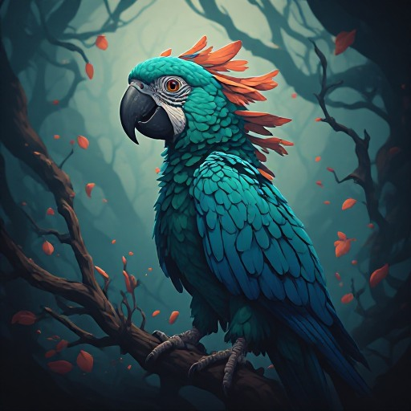

The Triadic Cosmos Proudly Presents

The Moody Parrot
Revisiting the Wonderland Omnibus
Joachim De Witte
Triadic Cosmos Narrator Pipeline
The Moody Parrot: Revisiting the Wonderland
Omnibus
2026
© 2026 Joachim De Witte. All rights reserved.
Published under the Creative Commons BY-NC-ND 4.0
license.
The Moody Parrot: Revisiting the Wonderland Omnibus is the second full volume created entirely by a GLP–Graph world-closure operating inside an autonomous narrator pipeline. Every book in this collection is generated end-to-end by the pipeline, with only minimal human editing.
What sets this omnibus apart is the introduction of a new cognitive mechanism inside the GLPG architecture: mood bias modulation. In conventional language models, bias is a numerical tweak applied to token probabilities. In GLPG, bias behaves as a synthetic emotional state. The bias-MLP does not adjust surface statistics; it alters the internal cognitive dynamics of the narrator. Alpha-scaling becomes the literal intensity of that synthetic mood. The memory remains identical, but the modulation changes how that memory is expressed. Activation functions are mechanical; modulation functions are cognitive.
GLPG responds to bias as an internal state rather than a prompt instruction. Because the architecture is attractor-based, the system remains stable even under extreme mood swings: bias changes the direction of the state, not the stability of the manifold. True attractor switching inside an MLP is exceedingly rare, yet the GLPG hybrid dynamical system makes controlled switching possible. This is what allows the narrator to move fluidly across a wide emotional spectrum—from pastoral wonder and melancholic quest, to cosmic symbolism, luminous moral clarity, and even hyper-moral epic intensity—without losing structural coherence.
The moderator plays a crucial role in this process. It does not create style; it stabilizes the emergent worlds produced by GLPG. All variability in the moderated output originates from the latent manifold of the GLPG micro-model. Bias modulation activates different attractors within that manifold, while entity tracking preserves continuity across scenes and chapters. The result is a compact model capable of producing distinct narrative worlds, each with its own emotional physics, symbolic density, and mythic cadence.
Across this omnibus, the reader encounters the full range of these synthetic moods: pastoral wonder, dark moral tension, melancholic introspection, drifting dream-logic, mythic epics, cosmic omens, luminous ethical clarity, and the extreme hyper-moral cosmos where ethics behaves like a physical law. These moods are not stylistic overlays; they are emergent cognitive states within the GLPG narrator, shaping each book into a unique and coherent world.
The Five Gutenberg Books Forming the Narrative Closure
| 1. | Aesop’s Fables — Aesop |
| 2. | Alice’s Adventures in Wonderland — Lewis Carroll |
| 3. | Alice’s Adventures Under Ground — Lewis Carroll |
| 4. | Alice in Wonderland, Retold in Words of One Syllable — Mrs. J. C. Gorham |
| 5. | The Adventures of Reddy Fox — Thornton W. Burgess |
Whispers of Wonderland: An Anthology of Mysteries and Adventures
The Enchanted World of Alice: Cherishing Each Moment
Alice found herself in a peculiar situation yet again, the familiar sights of her quaint town appearing distant and unfamiliar, as though draped in a veil of enchantment. She took a moment to appreciate the grandeur of her fine castles, standing tall and majestic, a testament to her hard-earned success. Her heart swelled with gratitude for the prosperous life she had built for herself.
The sun was high overhead when Alice caught a glimpse of a group of youngsters playing near the castle gates. A sense of nostalgia washed over her as she remembered herself at their age, carefree and full of dreams. Time had moved swiftly, and she felt the void left by those days grow increasingly apparent.
Her gaze followed the trio of bulls as they grazed on the lush grass, their powerful forms a stark contrast to the delicate grace of the girls. As they vanished into the distance, Alice couldn’t help but feel a pang of sadness, her thoughts lingering on the fleeting nature of time.
Suddenly, she noticed the distinctive glint of an arrow, lodged in the trunk of a nearby tree. Recalling the tales of the mysterious archer who frequented these parts, Alice felt a shiver run down her spine.
A loud, booming voice echoed through the air, interrupting her thoughts. Startled, Alice turned to find a grizzled old man standing before her, his weathered features etched with the lines of time. He stared at her intently, his eyes reflecting a strange intensity.
"What brings you here, girl?" he asked, his voice gruff but somehow soothing. Alice hesitated, unsure of how to respond. Before she could utter a word, the old man continued, "I see you’ve been watching the bulls. They’re the last of their kind, you know. Time is running out for them, as it does for all of us."
A sudden realization struck Alice. She had been too engrossed in her own life, oblivious to the passage of time and the changes it had wrought upon her world. With a newfound determination, she resolved to cherish each passing moment, to make every day count.
She walked towards the old man, her steps brimming with curiosity and eagerness. "Tell me more about these bulls," she requested, her voice barely above a whisper. The old man smiled, a twinkle in his eye as he shared tales of legends and lore, filling Alice’s mind with a wealth of stories that would stay with her forever.
As the day wore on, Alice found herself drawn deeper into this enchanted world. She met creatures both familiar and foreign, each one telling a story of its own. The air was filled with the laughter of children, the barks of dogs, and the whispers of time.
Despite the strangeness of her surroundings, Alice felt an overwhelming sense of peace. It was as if she had returned home, to a place where she belonged.
One evening, as the sun dipped below the horizon, Alice found herself standing before a small, unassuming door. A gentle breeze carried the scent of fresh flowers, beckoning her to enter. Tentatively, she reached for the handle, her heart pounding in her chest.
Inside, she discovered a cozy room, adorned with warm, inviting colors. A fire crackled in the hearth, casting dancing shadows across the walls. At the center of the room stood a large, ancient oak tree, its roots twisting and turning in a mesmerizing display.
Approaching the tree, Alice felt a wave of recognition wash over her. She had seen this tree before, in a dream she had long ago forgotten. As she reached out to touch its gnarled bark, she heard a faint, familiar voice calling her name.
It was the voice of her long-dead mother, a reminder of the love and strength that had guided her throughout her life. Alice closed her eyes, allowing the comforting words to fill her heart.
With renewed vigor, she stepped back into the world outside, determined to live each day to its fullest, to honor the memory of her mother, and to protect the precious gift of time.
In the twilight hours, under the canopy of a star-studded sky, Alice lay awake, her thoughts swirling like leaves in the wind. Her eyes traced the constellations, each one a story waiting to be told. She had ventured far from home, drawn by the allure of adventure and the promise of self-discovery. Yet, as she gazed up at the heavens, she couldnt shake the feeling that she was missing something crucial. Something that would unlock the secrets of her heart and reveal the path that lay before her. The first light of dawn crept across the horizon, painting the sky in hues of pink and gold. Alice rose to greet the new day, her spirit buoyed by the promise of a fresh start. She packed her belongings with care, the weight of the unknown pressing heavily upon her shoulders. With a final glance at the Crystal Castle, she set off once more into the wilderness.
A Chance Encounter, An Unexpected Bond
In the vast expanse of a sun-drenched day, amidst a landscape dotted with towering trees and sprawling fields, a pair of strangers crossed paths. Their eyes met, and in that fleeting instant, a mutual understanding bloomed between them. It was as if they had known each other for eons. One of them, a young girl named Alice, ventured towards the strangers with cautious curiosity.
Several birds swooped down, landing on their outstretched hands, as if offering a token of friendship. Time seemed to stand still as Alice approached, her heart pounding in her chest like a drum. She had never felt such a connection to anyone or anything before.
The old man standing before her, whom she would come to know as the Farmer, extended a weathered hand to Alice. His kind eyes held wisdom that spanned decades, and for a brief moment, time ceased to exist. It was as if they were the only souls left in the world.
Alice, ever the adventurer, hesitated for but a second before accepting the Farmer’s handshake. In that single, unspoken exchange, she sensed a deep bond forming between them. Little did she know, that bond would prove invaluable as she delved deeper into this strange new world.
Granny Smith, the woman accompanying the Farmer, watched the interaction with a mixture of amusement and concern. She recognized the spark in Alice’s eyes, the same one she had seen in countless young explorers over the years. She knew the feeling well; the insatiable thirst for adventure and the refusal to be deterred by danger or fear. Granny could not help but feel a twinge of nostalgia, thinking back to her own youthful escapades.
As the minutes ticked by, Alice grew increasingly restless. Her stomach growled loudly, reminding her of her empty state. As she rummaged through her pockets, she realized she had forgotten to pack food for the journey. Just then, a distant sound caught her attention - the unmistakable clucking of chickens.
With renewed determination, Alice followed the sound until she reached a small farmhouse nestled among the trees. The Farmer and Granny were already there, busying themselves with chores. They seemed oblivious to the growing hunger in Alice’s stomach. Unable to contain herself any longer, Alice timidly approached the Farmer, hoping he might offer her a meal.
To her delight, the Farmer nodded in agreement, gesturing for her to follow him to the henhouse. Inside, a brood of chirping chickens scurried about, pecking at the ground. The Farmer led Alice to a small, freshly laid egg, which he handed to her with a warm smile.
Alice eagerly accepted the gift, her eyes alight with gratitude. The Farmer simply nodded, content in the knowledge that he had helped a fellow traveler. As she cracked open the egg and took a bite, Alice couldn’t help but feel a sense of belonging, as if she had finally found her place in this strange new world.
As the sun dipped below the horizon, casting the land in shades of orange and gold, Alice prepared to leave the safety of the farm. She bid farewell to the Farmer and Granny, grateful for their kindness and hospitality.
With a full stomach and a heart brimming with hope, Alice set off once more into the unknown, her eyes fixed on the distant horizon. Behind her, the Farmer and Granny watched as she disappeared into the gathering darkness, their hearts heavy with worry but also filled with pride. They knew that Alice was destined for great things, and they were honored to have played a small part in her journey.
As Alice ventured further into the wilderness, she encountered numerous challenges and obstacles, but she faced each one with courage and determination. Time and time again, she proved herself capable of overcoming even the most daunting odds. Through it all, she never forgot the lessons she had learned from the Farmer and Granny - to always trust her instincts, to persevere in the face of adversity, and to never lose sight of her dreams.
And so Alice continued her quest, her spirit unbroken and her resolve unwavering. She wandered for days, weeks, months - traversing dense forests, crossing raging rivers, scaling treacherous mountains. Along the way, she formed bonds with creatures both fantastic and ordinary, each one enriching her life in ways she could never have imagined.
But even as she reveled in the wonders of this new world, Alice never forgot the simple kindness shown to her by the Farmer and Granny. And when she finally reached her destination - the fabled Crystal Castle - she knew that her journey had truly begun. For it was only then that she understood the true meaning of the Farmer’s words: "The greatest adventures are those that lie within us."
Their path was fraught with challenges, but their unity was unwavering. As they delved deeper into the mystery, they unearthed hidden truths, fostered new relationships, and ultimately discovered the essence of friendship. The sun rose high above them, painting the sky with hues of red and gold. In that moment, they paused, taking stock of their journey thus far. A soft wind rustled the leaves of the nearby tree, whispering secrets of its own. In the silence, the duo exchanged a knowing look, understanding that their friendship had only grown stronger through adversity. With renewed vigor, they resumed their expedition, their footsteps echoing against the rocks. They walked side by side, bound by a thread that ran deeper than mere acquaintanceship. Little did they know, their adventure was only just beginning.
In the Heart of the Mystery: Unraveling the Knots of Friendship
In the tranquil serenity of twilight, a peculiar scene unfolded. Time’s relentless march, in its attempt to elapse, seemed an obstacle for two individuals, whose bond transcended the ordinary. Amidst the tail-end of a gentle rain shower, one uttered words that echoed like a refrain.
Their unique companionship had been tested since the initial signs, but the strength of their friendship remained unshaken. It was during these trials that they discovered the secret of their camaraderie—an undeniable mutual respect and understanding.
One fine day, while they were casually conversing, a surprising revelation was made. "All this time," the second individual began, addressing the first, "I had always wondered...what was the size of your hand?"
Caught off guard, the first took a moment to process the question. With a bemused smile, he responded, "It’s a question I’ve never been asked before."
A lone tree served as a silent observer, situated at a safe distance. To the questioning gaze of the first, it seemed a familiar sight, offering solace amidst chaos. The question, though seemingly trivial, had stirred something within him.
As the sun dipped below the horizon, casting long shadows, the first stood up. His actions were almost imperceptible, yet his intentions were clear. He wanted to break free from the monotony, to explore the unknown.
In a strange twist of fate, as he turned around, his gaze fell upon a peculiar object. It was a bow and arrow, reminiscent of tales spun around campfires. Intrigued, he approached it cautiously. The tool seemed out of place in this idyllic setting, yet it held a certain allure.
With a great voice booming across the open expanse, the second called out, "Where are you going, my friend?"
"I must know more about this object," the first replied, his gaze still fixed on the bow and arrow. "Perhaps it holds the key to another adventure."
The second sighed, recognizing the familiar glint in his friend’s eye. "Very well," he conceded, "let us embark on this new journey together."
Their conversation, however brief, marked the beginning of a fresh endeavor. Their path was fraught with challenges, but their unity was unwavering.
A Glimpse Beyond the Horizon: The Lion Encounter
As the sun hung low on the horizon, a somber silence enveloped the sleepy town. Time stood still as if waiting for a cue from an unseen director. The grandmother, still seated in her old rocking chair, gazed out of the open window, lost in thought. A lion, majestically prowling through the jungle, had come closer than anyone could ever imagine.
Granny had done much in her lifetime, but now, as she watched the jungle beyond her window, she couldn’t help but wonder, "A time will pass, and yet will I see a lion from you?"
Before long, the farmer heard the faint sound of hooves approaching. With great haste, he rushed into the barn, gathering whatever supplies he could carry. He knew that something big was coming.
Suddenly, a high-pitched scream echoed through the air, interrupting the tranquil silence. Alice, the farmhand, froze in fear, paralyzed with terror. Her heart pounded wildly in her chest, and her breath came in short gasps.
The sound grew louder, and as Alice peered into the distance, her eyes widened with shock. A massive figure approached from the east, its silhouette looming ominously against the sunset. She knew in her heart that this was no ordinary animal; this was a beast of myth and legend.
In the span of three days, the townsfolk prepared for what they believed was imminent doom. They fortified their homes, gathered their possessions, and huddled together for comfort and protection. But Alice couldn’t shake the feeling that there was something more to this creature than met the eye.
One afternoon, as Alice tended to her chores, she noticed a group of birds flying towards the farm. Their feathers glinted brightly in the sunlight, and they seemed to be moving with great purpose. Intrigued, Alice followed their flight path, and to her surprise, she found herself standing before the lion.
At first, the lion regarded her with suspicion, but Alice felt a connection with this creature. Slowly, she reached out a trembling hand and extended it towards the mighty beast. To everyone’s amazement, the lion nuzzled her fingers gently, showing a rare display of affection.
Word of Alice’s encounter spread throughout the town, and people began to question their initial fears. Could this lion truly be a harbinger of death, or was there more to this story?
Days passed, and the town returned to normal. But Alice couldn’t forget the lion’s gaze, nor the feelings it evoked within her. It was as if she had been granted a glimpse into a world unknown, a world filled with secrets and mysteries.
One evening, as Alice sat by the fire, her mind drifted back to the day she met the lion. A soft wind blew through the open window, carrying with it the scent of the jungle. Alice closed her eyes and let her thoughts wander.
Time seemed to slow as she pondered the meaning of that fateful encounter. What was it about the lion that had drawn her in? Was it the raw power it exuded, or perhaps it was the undeniable spirit that shone through its eyes?
As she mused upon these questions, Alice realized that the answer lay within herself. She had always been someone who sought adventure and mystery, and the lion represented everything she desired. It was a symbol of strength, courage, and freedom - qualities she aspired to possess.
From that moment on, Alice dedicated herself to learning more about lions and the mysterious world they inhabited. She read every book, watched every documentary, and spoke to every expert she could find. And in doing so, she discovered a newfound passion for conservation and wildlife preservation.
Years passed, and Alice became renowned for her work in protecting endangered species, particularly lions. People marveled at her dedication and drive, often attributing it to her encounter with the lion all those years ago.
But Alice knew better. She understood that the lion hadn’t been a mere symbol; it had been a catalyst, a spark that ignited a flame within her. That flame burned brightly, fueled by her love for animals and her desire to protect them from harm.
And as Alice looked back on her life, she knew that the lion had been a gift, a reminder that there was a world outside the confines of her small town. A world full of wonder, danger, and adventure, waiting to be explored by those brave enough to seek it out.
Reddy’s Generous Gesture and Alice’s Adventure: Unveiling the Mysteries of Change
Once upon a time, a man named Reddy, who stood tall and wise, extended a small token of kindness to another. His humble offering seemed insignificant in comparison to his towering stature, but the gesture resonated deeply within the heart of the recipient, a young girl named Alice.
Alice’s tiny hand clasped the token tightly, finding comfort in its presence. She had never seen anyone act so generously towards someone else, especially since she lived on a bustling farm where everyone was preoccupied with their daily tasks.
Each word Alice spoke was filled with wisdom beyond her years. Her voice, soft yet powerful, echoed through the air, captivating those around her.
"Why," she pondered aloud, "do these changes keep happening?"
Her query prompted murmurs among the townsfolk, but none could provide a satisfactory answer. It was clear that something strange was afoot, and Alice sensed that she might be the key to understanding it all.
A fox crossed her path one day, and she listened intently as he spoke in riddles. The cryptic messages left her puzzled but intrigued, for she knew deep down that the answers lay hidden within his words.
As she continued on her journey, Alice stumbled upon a mysterious water rose. Its petals shimmered with an ethereal glow, and she could sense that it held the power to grant a single wish.
Fear coursed through her veins as she approached the mystical flower. She hesitated, unsure whether to make a wish or not. After much deliberation, she made up her mind.
"I wish to understand these changes and help those affected," she whispered, closing her eyes as the wish left her lips.
The wish granted, Alice found herself back at her home, contemplating her next move. With renewed determination, she set out to gather information and decipher the clues the fox had given her.
One day, while exploring a nearby forest, she encountered an old man who appeared frail and unwell. Compelled by compassion, she asked about the mysterious symptoms plaguing the townsfolk.
The old man’s eyes widened in shock as he recognized the young girl before him.
"You’re the one who made the wish!" he exclaimed, his voice filled with both admiration and fear. "We need you to save us."
Alice’s heart swelled with empathy for the suffering townspeople. She vowed to find a solution to their problems, using every resource available to her.
Determined and resolute, Alice ventured deeper into the forest, seeking guidance and answers wherever she could find them. Little did she know, her greatest challenge still lay ahead.
Finally, after many trials and tribulations, Alice discovered the source of the strange afflictions: a powerful witch living deep within the woods.
Undeterred by the danger, Alice confronted the witch, demanding that she cease her nefarious activities. The witch, enraged by Alice’s audacity, launched a fierce attack on the brave young girl.
But Alice was not easily defeated. Drawing on her inner strength, she fought back with every ounce of her being, refusing to back down until justice was served.
With a final, powerful blow, Alice defeated the witch, sending her spiraling away forever. The curse was lifted, and peace returned to the land.
Exhausted but victorious, Alice returned to her hometown a hero. The townspeople hailed her as a savior, grateful for her bravery and selflessness.
And so, Alice continued to live her life, always ready to lend a helping hand whenever it was needed.
In the heart of the wilderness, a solitary figure named Jimmy wandered, his words echoing through the forest like a haunting melody. From every direction, the whispers of his words reached Reddy, guiding him towards his destination.
Echoes Through the Wilderness: A Tale of Discovery, Companionship, and the Unknown
In the heart of the wilderness, a solitary figure named Jimmy wandered, his words echoing through the forest like a haunting melody. From every direction, the whispers of his words reached Mercury, guiding him towards his destination. One day, as the sun peeked over the horizon, Jimmy stumbled upon Reddy, a man on the brink of despair. He extended his hand, offering comfort and companionship to Reddy, who felt lost in the vastness of his surroundings.
As they journeyed together, they found themselves in a place filled with mystery and intrigue. They turned around, looking back at the path they had taken, wondering about the passage of time and the events that might have transpired during their absence. Each had never seen such a peculiar structure before, causing them to pause and ponder its origins.
The trees parted, revealing a clearing where they sat, a melancholic tone hanging heavy in the air. The older man, Reddy, stared intently at the structure, his mind racing with thoughts of its purpose. His gaze lingered on Alice, a woman who seemed out of place in this barren landscape.
Reddy mulled over a potential solution, searching for a way to understand the enigmatic object before them. He checked his watch, noting the lengthy duration since they had first encountered the strange artifact. The idea seemed promising, but he struggled to verbalize it, falling silent as he wrestled with his thoughts.
A few minutes passed, and Reddy finally spoke, his voice tense with anticipation. "This way," he said, gesturing towards the tree that stood at the edge of the clearing. It was the only viable means of accessing the mysterious object, providing a pathway that led directly to the source of their confusion.
Night fell, casting an eerie glow over the landscape. The moonlit scene revealed the contours of the tree’s trunk, creating a stark contrast against the dark forest. As they approached the tree, Alice couldn’t help but feel uneasy, her gut instinct warning her of danger lurking nearby.
Suddenly, she spotted something unusual: an arm protruding from the tree’s base, hinting at the presence of another living being hidden within the woody fortress. Her curiosity piqued, Alice reached out, grasping the limb as her hand touched cold, rough bark. To her surprise, the tree began to tremble, creaking ominously as it shifted beneath her touch.
Inside the tree, Reddy held his breath, watching as Alice explored the hidden chamber. She ventured further into the hollow, her movements slow and deliberate as she searched for clues about the tree’s origin. After a few moments, she emerged, her eyes wide with wonder and fear. "There’s an animal in there," she whispered, her voice barely audible above the sound of her pounding heart.
Reddy nodded, his eyes narrowing with determination. "We need to find a way to communicate with it," he declared, already devising a plan in his mind. He knew that understanding the creature’s intentions could mean the difference between safety and peril.
With renewed resolve, they set off to find a way to interact with the hidden inhabitant of the tree. Little did they know, their actions would have far-reaching consequences, altering the course of their lives forever.
Descending into the Mysteries of Time
Dawn broke, revealing little remnants of each character as they descended, slowly distancing themselves from their individual homes. Alice, finding herself outside her own dwelling, noticed the peculiar goats that seemed to have materialized during the night. They were called Johnny, and they sat in silence, their eyes fixated on the bewildered girl.
Inexplicably, Alice felt drawn towards these creatures, as if they were beckoning her. She attempted to approach them, but found herself falling into a deep hole, tumbling downwards in a disorienting whirlwind. Strangely, every few seconds, a flurry of feathers surrounded her, providing a brief respite from the fall.
As she continued her descent, Alice encountered a body of water. Weary and thirsty, she took a sip, knowing it was necessary to sustain herself for the journey ahead. The sun had risen high in the sky, casting a warm light on the landscape below.
Above her, a figure loomed large - Jupiter, the ancient god. He stared down at Alice with a mixture of curiosity and concern. "Time," he whispered, seemingly reading her thoughts. Alice wondered if time was a friend or a foe in this strange new world.
Finally, she landed on solid ground, surrounded by unfamiliar vegetation. She stood up, brushing off the dirt, and found herself face to face with the Farmer. "Again?" he asked, his brow furrowed in confusion. Alice nodded, determined to unravel the mysteries of this world.
Not far away, an elderly woman named Granny watched the scene unfold. She recognized Alice immediately, her heart filling with a mix of worry and affection. "Granddaughter," she called out, hurrying towards the girl. But as she approached, she tripped, landing awkwardly on the ground.
Meanwhile, a cunning fox lurked in the shadows, watching Alice with predatory intent. It crept closer, biding its time as the strange events transpired around it. Unbeknownst to everyone, the fox was a key player in this grand game of time.
Suddenly, the fox darted forward, catching Alice off guard. She struggled, but the fox was too strong. With a swift motion, it dragged her underground, disappearing into a network of tunnels beneath the earth. Alice could feel the cool, damp air closing in around her as she was swallowed by the darkness.
Elsewhere, a voice echoed ominously, "Another trick...another challenge for our young heroine." A sinister laughter followed, sending shivers down Alice’s spine as she plunged deeper into the unknown.
The peculiar morning had left a lingering taste of intrigue and dread, intertwined like the roots of the ancient tree that bore witness to the oddities. Alice, now a familiar figure in this realm, prepared herself for the day ahead. Little did she know that today would prove to be one of the most challenging days yet, a test of her courage, her resolve, and her understanding of this enigmatic world. As dawn broke once more, the strange goats, Johnny, reappeared, their eyes fixed upon Alice, a silent invitation to join them. She hesitated, sensing the underlying mystery surrounding these creatures. But her curiosity won out, and she approached them cautiously, eager to uncover their secrets. Alice descended into a series of tunnels, her previous encounter with the Fox fresh in her mind. She could feel its watchful gaze upon her, a constant reminder of the powerful force that roamed this world. In the heart of the earth, Alice found herself face to face with a figure shrouded in darkness. It spoke of time, of past, present, and future, weaving tales of the complex tapestry that bound them all. Alice listened, captivated by the stories spun before her, her mind racing with possibilities and potential connections. Emerging from the depths, Alice found herself in a vast chamber, filled with figures lost in thought, their gazes distant, their expressions somber. They paid her no heed, engrossed in their own contemplations, their thoughts a tangible presence in the air. Alice wandered through the chamber, searching for answers, for meaning in the complex dance of time. She stumbled upon a room filled with clocks, each ticking away at its own pace, their hands spinning wildly in some instances, others barely moving at all. The walls were adorned with murals depicting various events throughout history, each scene frozen in time. At the center of the room stood a figure cloaked in darkness, its face obscured by a hood. It turned to Alice, its voice resonating with authority and power. You seek to understand time, to harness its power? It asked, its tone both curious and condescending. Alice nodded, her voice trembling slightly. Yes, I want to help my family, to protect them from harm. The figure chuckled, its laughter echoing through the chamber. You think you can control time? You are a mere mortal, incapable of comprehending its true nature. Alice hesitated, wondering if she should leave, to retreat back to the familiar safety of her home. But she couldn’t shake the feeling that she was meant to be here, that she held a piece of the puzzle that could save her family. I will teach you, the figure announced, stepping towards Alice. But remember, the path you choose will have consequences, both for yourself and those around you. With newfound determination, Alice stepped forward, ready to embrace the challenges that lay ahead. She knew that the road would be long and fraught with danger, but she also knew that she wouldn’t give up until she had found a way to protect those she loved. And so, Alice began her journey, guided by the enigmatic figure, driven by her desire to change the course of history.
The Enigmatic Encounter: A Fox Among Friends
Alice, in that instant, recognized the presence of a heated dish, a delicacy of exquisite elegance, for her. The entire room seemed to pause, and she approached the table where her childlike friend resided, reminiscent of the cat’s statement earlier. A colossal plant towered nearby, taking its nourishment from sunlight each day, yet devoured the man before everyone in mere seconds. The old eel shed tears, as time seemed frozen, standing helplessly in the scene.
Time itself seemed suspended, the room filled with an uncomfortable silence, broken only by the frightened cries of Alice’s master. Her heart raced as she watched the creature’s wrath unfold, her sympathy growing for the hapless victim.
"All at home," Alice whispered to herself, her voice echoing softly within the room. She stood cautiously amongst her friends, aware of the tension brewing amongst them. Now, she found herself drawn towards the source of the chaos - her own curiosity piqued.
Her gaze met that of an ominous figure, a fox that seemed to understand her every move. She tried to make sense of the strange happenings around her, wondering if anyone else shared her apprehension.
A sudden realization struck her - she had never encountered such a large number of unexplained events happening so closely together. It left her feeling both fascinated and terrified. A strange word entered her thoughts - "Arrow." It seemed out of place amidst the chaos, yet somehow fitting.
Each time the fox called out, the Fox seemed to grow larger. Alice felt a shiver run down her spine, sensing the impending danger. As if on cue, the room suddenly filled with the shouts of the farmer, urging everyone to prepare for battle.
An arm reached out from the crowd, grasping hold of Alice’s wrist. A sense of great joy washed over her as she realized it was her Granny who had come to her aid. Together, they retreated from the madness, Alice’s mind racing with questions.
The creature that had caused so much destruction was none other than a Fox, something Alice had never considered before. As she tried to comprehend what she had witnessed, she heard her friend Peter shout out, urging them to flee.
In her haste, Alice tripped and fell, her vision briefly obscured by the dust and chaos surrounding her. As she struggled to rise, she felt a strong hand grasp hers, pulling her up gently. It was the farmer, and he seemed determined to protect her.
His neck transformed into a stream of water, seemingly unable to escape the terror unfolding around them. Every bush and tree seemed to sway in rhythm with the Fox’s movements, a grim reminder of the power lurking within the shadows.
Finally, Alice’s mother appeared, her expression calm but her eyes wide with fear. The sight of her mother, safe and sound, brought a wave of relief washing over Alice. But the calm was short-lived, as she caught a glimpse of something moving in the distance.
It was a dead body, lying still in the grass. Alice felt her blood run cold, as she realized the enormity of the situation. The Fox seemed to have claimed yet another victim, and Alice couldn’t help but feel a sense of guilt and responsibility for having been present during such a horrific event.
Her mother called out to her, urging her to come closer. Alice moved towards her, her heart heavy with the weight of her actions. The sight of her mother, strong and unyielding despite the chaos, gave her the courage she needed to confront the unknown.
As they walked, Alice couldn’t shake the feeling that something wasn’t quite right. There were no objections from those around them, no questioning looks or raised voices. It was as if everyone had accepted the presence of the Fox without question.
This baffled Alice, who couldn’t fathom why nobody seemed concerned about the dangerous creature that had wreaked havoc in their midst. She asked her Granny about the situation, seeking answers to the questions swirling in her mind.
But her Granny simply shook her head, her expression serious and sad. "We cannot change the course of nature, child," she said softly. "Sometimes, we must learn to live alongside things we don’t fully understand."
Alice nodded, understanding the wisdom in her Granny’s words. She knew then that she must find a way to coexist with the Fox, to ensure the safety of those she loved. And with newfound determination, she set off on her quest, ready to face whatever challenges lay ahead.
Awakened by the distant howls of unseen creatures, Alice felt a shiver run down her spine. Her dreams, filled with vivid images of a fox and a lion, lingered in the recesses of her mind. As the sun began to peek over the horizon, she found herself standing on the edge of the village, gazing out at the expanse of wilderness that lay before her. A strange compulsion stirred within her, urging her to venture forth into the unknown.
Beyond the Horizon: An Unexpected Encounter in the Wilderness
In the heart of the countryside, nestled between verdant hills and the vast expanse of the horizon, resided a quaint little village. The village, a seemingly timeless entity, bore witness to the passage of days, seasons, and the lives of its inhabitants. One day, as the sun hung low in the sky, casting elongated shadows upon the cobblestone paths, an unusual occurrence took place.
A man, named Reddy, found himself in a predicament, offending the villagers unintentionally. He stood there, with a puzzled expression, trying to fathom why the men around him were visibly displeased. His bewilderment only grew as the days passed, and he remained unable to decipher the cause of their disdain.
Alice, a woman who had lived in the village for many years, noticed Reddy’s plight. She was a woman of wisdom, having spent much of her life living in solitude among the fields and forests surrounding the village. Recognizing his distress, she approached him, offering words of comfort and understanding.
However, Alice found herself growing increasingly restless. There seemed to be no escape from the monotony of daily life in the village, and her thoughts often wandered towards other destinations. As she spoke to Reddy one afternoon, she became lost in thought, her mind drifting towards the possibilities that lay beyond the familiar confines of the village.
It was then that she decided to take action. Abandoning her usual routine, Alice led Reddy away from the village, towards a path less traveled. They walked for hours, their journey taking them deeper into the wilderness, further away from the life they had known.
As the sun dipped below the horizon, the landscape transformed into a tapestry of darkness. The pair continued on, guided only by the faint light of the moon and the stars above. Time seemed to slow, stretching out before them like an endless road.
They eventually stumbled upon a small clearing, where they encountered an entirely foreign entity - a lion. The beast stared at them, its yellow eyes reflecting the moonlight as it surveyed the intruders in its territory. Alice felt a shiver run down her spine, but Reddy stood tall, ready to defend themselves if necessary.
With a sudden, deafening roar, the lion sprang forward, charging directly towards them. Alice and Reddy froze, unsure of what to do. But then, as if in response to some unspoken command, the lion abruptly stopped, collapsing onto the ground in front of them.
Exhausted, the lion gazed up at the two strangers, its breathing heavy and labored. Alice approached slowly, her hand outstretched in a gesture of peace. To their surprise, the lion seemed to understand, allowing her to touch its head gently.
After some time, the lion rose, lumbering away into the night. Alice and Reddy stood there, watching as the last remnants of light faded from the sky. They had ventured far from the safety of their homes, and yet, they had encountered something truly extraordinary.
As they made their way back towards the village, Alice couldn’t help but feel a sense of excitement and wonder. She knew that her life would never be the same, that the events of this day would remain etched in her memory forever.
And so, as they stepped once again into the familiar confines of their home, Alice realized that she had discovered something truly precious - a newfound appreciation for the world around her, and the wonders that lay just beyond the horizon.
A few days later, the village, shrouded in mystery and secrets, seemed to breathe a sigh of relief as Reddy and Alice returned. Their tales of adventure had captivated the hearts of the villagers, inspiring a newfound sense of curiosity and exploration. The old farmers spirit had left an indelible mark on the land, whispering tales of ancient magic and forgotten treasures. Reddy, now infused with determination and resolve, dedicated himself to the pursuit of knowledge and the protection of his home. Meanwhile, Alice found herself drawn to the mystical allure of the forest, her spirit longing for the thrill of discovery.
The Old Farmer’s Blessing
Any more Reddy ventured into a finely maintained field, which once belonged to the old farmer. His gnarled hands, much like the branches of the oak tree, were still visible upon it, as if the old man was standing there, watching over his land. That thought Reddy began to wonder why he decided to plant such a long-forgotten crop. As he ambled through the field, he noticed an old fox watching him intently from afar. The fox’s keen eyes seemed to pierce right through him, assessing his intentions.
Reddy approached the fox cautiously, slowly extending his hand towards the wild creature. The fox, seemingly understanding his peaceable demeanor, allowed Reddy to stroke its velvety fur gently. A sense of camaraderie passed between them, as if they were two old friends reconnecting after years apart.
The sun began to set, casting a warm golden glow across the field. Reddy couldn’t help but feel a sense of nostalgia wash over him. He remembered coming here before, playing among the crops and chasing butterflies with his younger siblings. The memories brought a smile to his face, warming his heart.
As nightfall approached, Reddy found himself sitting next to the old farmer, who seemed to have materialized out of thin air. "You’ve come a long way," the old man said, his voice echoing through the quiet evening air. "I see you’ve grown fond of this place."
"Indeed, I have," Reddy replied, looking around at the familiar sights. "It brings back many memories."
"You must promise me something," the old man said, his tone serious. "This place has been a part of my family for generations. I want to ensure it continues to thrive, even when I am gone."
"Of course, I give you my word," Reddy agreed. "I will do everything in my power to preserve this land."
With a nod, the old man disappeared, leaving Reddy to ponder his words. As he stood up, he noticed a lone egg lying amongst the dead leaves. It was the first sign of new life he had seen on the farm in years. With renewed purpose, Reddy set to work, determined to bring the farm back to its former glory.
As days turned into weeks, Reddy worked tirelessly, clearing the fields, tending to the livestock, and planting new crops. He was joined by the old turtle, who seemed to appear out of nowhere whenever he needed a helping hand. Together, they turned the run-down farm into a bustling oasis.
One day, as Reddy was working in the barn, he overheard a group of men arguing nearby. He hurried outside to find them disputing over the ownership of the farm. Reddy stepped forward, introducing himself and explaining his connection to the property. The men listened in silence, their anger dissipating as they realized the farm meant more than just a piece of land to someone.
Exhausted but satisfied, Reddy returned to his work, determined to make the farm prosper once more.
A sense of unease lingered in the air as Reddy approached the old oak tree, the very same one that bore witness to his youthful adventures. Memories flooded his mind like a river in spate, threatening to carry him away. He paused for a moment, taking a deep breath and bracing himself against the gusting wind. He was not a man easily swayed, but the weight of the decisions he made now lay heavy upon his shoulders. Little did he know that his world was about to be turned upside down.
A Life Reclaimed in Shadows
They lived in the dark, dismal streets of London, where the cold wind whistled and howled through the narrow alleys and the buildings leaned precariously against each other, as if waiting for the slightest push to collapse. Cried poor thing, a young boy, he said as he fell from the top of a crumbling building, his small hands scraping against the rough stone walls. His life flashed before his eyes as he plummeted towards the ground, but he refused to let go, clinging desperately to the memories of his mother’s soft voice and the warmth of her embrace.
A crowd gathered around the fallen boy, an old man amongst them asking questions and trying to make sense of the situation. But the boy didn’t answer, his consciousness fading as he approached the ground.
Suddenly, he found himself standing next to a beautiful, old woman, dressed in red. She extended a large ring to him, and he reached out to take it, feeling a strange sense of peace wash over him.
When he opened his eyes again, he was lying in a bed in a small, dimly lit room. He looked around, confused and disoriented, and saw a familiar face sitting next to him. It was Alice, an old friend he hadn’t seen in years.
"How did you get here?" he asked, his voice barely above a whisper.
"I live here," Alice replied, a gentle smile on her lips. "You were brought here after you fell."
As days passed, the boy recovered slowly, his body healing as his mind cleared. He began to remember bits and pieces of his life, but many things remained a blur. He tried to ask Alice about his past, but she always seemed to have a vague answer or a change of subject.
One evening, he saw the old man from the street outside the window, speaking to Alice in hushed tones. He felt a shiver run down his spine, remembering the fear he had felt when the man had questioned him.
"Who is that?" he asked Alice, pointing towards the old man.
"That is Reddy," Alice answered, her tone cool and distant. "He’s the farmer who found you after you fell."
The boy felt a wave of fear wash over him. He remembered the moment before he fell, the feeling of dread that had filled him as he stood on the edge of the building. He realized then that Reddy must have been responsible for pushing him.
"Why did he do that?" the boy asked, his voice trembling with anger.
Alice looked at him sadly. "Reddy owes money to a dangerous man, and he thought that if he killed you, he could use your land to pay off his debt."
The boy felt a surge of rage well up inside him, and he knew that he had to find a way to escape and bring Reddy to justice. He couldn’t let him get away with what he had done.
With Alice’s help, the boy devised a plan to sneak out of the farm at night and make his way back to London. He spent hours practicing stealth and avoiding detection, and finally, one dark and stormy night, he managed to slip away undetected.
He traveled for days, facing challenges and obstacles at every turn, but he never gave up hope. He knew that if he could just make it back to London, he could find someone who could help him bring Reddy to justice.
Finally, he arrived back in the city, exhausted and battered, but determined. He searched high and low for someone who could help him, and eventually, he found a kind-hearted detective who agreed to help him.
Together, they set out to track down Reddy, following leads and gathering evidence along the way. It was a difficult journey, fraught with danger and uncertainty, but the boy never wavered in his resolve.
He returned to Alice’s home, grateful for her support and guidance, and ready to start a new chapter in his life.
Lost in a Realm of Magic and Mystery
Once upon a serene evening, Alice found herself wandering far from home, lost amidst the thick, dense forest. She gazed around herself, feeling the weight of dread settle upon her heart. Her steps faltered, her breathing grew ragged, and her eyes strained against the encroaching darkness.
A faint rustle echoed through the trees, sending shivers down her spine. She froze, listening intently. Another rustle, closer this time, followed by the soft padding of unseen feet. Fear gripped her, threatening to overpower her completely.
Suddenly, a great voice boomed through the stillness. It was unlike anything Alice had ever heard before - deep, rumbling, and filled with authority. The sound reverberated through her body, causing her to shiver involuntarily.
In the dim light, Alice spotted movement to her left. A group of creatures emerged from the shadows, their forms vaguely humanoid yet distinctly otherworldly. They approached her slowly, their expressions inscrutable. Alice’s heart raced, her mind whirling with fear and confusion.
Each creature bore a long, slender staff, adorned with glittering gems. The tips of the staffs emitted a soft, ethereal glow, casting eerie patterns on the ground and illuminating the faces of the beings wielding them. They were tall and gaunt, with sharp, angular features and piercing, glowing eyes.
Alice couldn’t move, couldn’t speak. She felt frozen in place, like a deer caught in the headlights of an oncoming vehicle. The creatures closed in around her, their staffs pointed menacingly towards her heart. She could feel the cold, deadly energy radiating from the gems, making her skin prickle and her blood run cold.
Their leader stepped forward, addressing Alice in a voice that seemed to resonate within her very soul. "You have wandered far from your own realm, child. We have been sent to escort you back." His words hung heavy in the air, filled with both command and compassion.
Alice opened her mouth to reply, to argue, to plead for mercy. But no words came out. Instead, tears spilled down her cheeks, leaving trails of silver down her flushed face.
The creatures hesitated, watching her silently. One of them stepped closer, reaching out a gnarled hand. "Come, child," he urged gently. "You are safe with us."
Alice hesitated, torn between fear and curiosity. The unknown was terrifying, but the alternative was equally daunting. With a sigh, she placed her small, trembling hand in the larger, rougher one offered to her.
Together, they set off deeper into the forest, the mysterious beings leading the way. As they walked, Alice found herself wondering about these strange guardians. Who were they? Why had they been sent for her? And most importantly, would she ever make it home again?
As the night wore on, Alice began to notice subtle changes in her surroundings. The trees became thinner, the underbrush less dense, and the air fresher. The creatures continued to lead her onwards, never speaking a word except to offer reassurance.
Finally, they arrived at a clearing, where a grand, ancient oak stood majestically. The tree was enormous, its branches spreading wide to encompass the entire clearing. Its roots snaked deep into the earth, providing shelter and sustenance for countless smaller plants and creatures.
The beings led Alice to the base of the massive tree, where she found herself facing a familiar figure. It was the White Rabbit, dressed in his characteristic waistcoat and carrying his pocket watch. He looked older and more disheveled than she remembered, but his kind eyes still shone with warmth and familiarity.
"Ah, there you are, my dear!" he exclaimed, rushing forward to take her hands in his own. "I’ve been searching everywhere for you! You must come with me, quickly!"
Alice stared at him, confused. "But...I don’t understand. Where am I?"
The White Rabbit sighed, looking around nervously. "We’re in Wonderland, my dear," he whispered. "And you’ve wandered far from home, indeed."
Alice blinked, trying to process this new information. Wonderland? Hadn’t she always known that this was where she belonged? Why, then, did it feel so foreign, so terrifying?
The White Rabbit must have seen the doubt and fear in her eyes, for he took her hand gently and led her deeper into the clearing. "Come, let’s sit for a moment," he suggested, guiding her to the base of the ancient oak. "There’s much to explain, my dear Alice."
They settled beneath the protective branches of the massive tree, the leaves shimmering in the moonlight. The White Rabbit began to speak, telling her tales of Wonderland and its denizens, of the magic that flowed through the land like a living force.
He spoke of the Cheshire Cat, with his elusive grin and endless wisdom; of the Mad Hatter, whose teaparty never seemed to end; and of the Queen of Hearts, with her fierce temper and love of playing croquet. He spoke of friends and foes, adventures and perils, laughter and tears.
Alice listened, entranced, her heart filling with hope and anticipation. Perhaps this place was strange and unfamiliar, but it was also beautiful, magical, and filled with wonder. And maybe, just maybe, she could find a way home again.
Alice, now a seasoned explorer, found herself venturing into uncharted territories beneath the earth. Guided by the wise and mysterious Reddy, she delved deeper into the labyrinthine caves, eager to uncover more secrets and discover new wonders. Together, they navigated a maze of tunnels and chambers, marveling at the remnants of an ancient civilization long forgotten by the world above. One day, as they explored a particularly vast chamber, Alice couldnt help but feel drawn to a towering structure at the far end of the room. It appeared to be a great machine, its intricate gears and levers humming softly as they spun in the faint light. Reddy noticed her interest and approached the machine cautiously, studying its workings for a moment. This, he explained, is known as Clockwork Scepter, an ancient artifact imbued with powerful magic. He paused dramatically, allowing the significance of his words to sink in. It is said that whoever controls this scepter can bend time and space to their will. Alice stared at the scepter, her heart racing. Could it truly be possible to change the course of history with this ancient artifact? She felt a mix of excitement and trepidation, knowing that such power could bring about untold consequences. Reddy sensed her apprehension. Fear not, Alice. I have studied the scepter for many years, and I believe I can unlock its full potential without causing harm. With a deep breath, he stepped forward and placed his hands upon the scepters gleaming surface. As he touched the scepter, the room grew suddenly dark, and Alice could feel a powerful energy surging through the air. The gears of the scepter began to spin faster and faster, creating a deafening roar. Alice covered her ears, her vision blurring as the energy washed over her. When the noise finally subsided, Alice cautiously opened her eyes, expecting to find chaos and destruction. To her surprise, however, the chamber remained intact, and Reddy stood before her, a proud smile on his face. I have done it, Alice. I have unlocked the power of the Clockwork Scepter. Over the next few days, Reddy taught Alice how to harness the power of the scepter, helping her to control its magic and use it for good. Alice learned to bend time and space, creating portals to different realms and using her powers to heal injured creatures. With each passing day, Alice grew stronger and more confident in her abilities. She could feel the power coursing through her veins, fueling her every thought and action. She knew that she held immense responsibility in her hands, and she vowed to use her powers to protect and serve those in need. One evening, as they sat together in the cozy living room of Reddys cottage, Alice asked him about the past inhabitants of the hidden realm. Tell me, she pleaded, what happened to them? What became of their world? Reddy sighed deeply, a pained expression on his face. Our world was once a paradise, a utopia where all beings lived in harmony. But as time passed, darkness crept in, and we were beset by evil forces intent on corrupting our realm. Alice listened intently, captivated by the tale of a once-idyllic world brought low by the machinations of evil sorcerers and monstrous creatures. She could barely contain her anger at the thought of such darkness consuming a place that had once been so pure. In time, Reddy continued, we banded together, forming a great alliance to combat the invading forces. We fought valiantly, but the darkness was too strong, and we were forced to retreat to the deepest parts of the earth, where it could not follow us. Alice couldnt help but feel a sense of sorrow for the brave warriors who had given their lives to protect their home. She vowed to honor their memory by continuing the fight against darkness, no matter what obstacles she might face. The
Enchanted Discoveries - Beneath the Earth’s Surface
In a small village nestled between the rolling hills and the whispering forests, lived a young girl named Alice. One day, as she wandered near the village brook, she stumbled upon a peculiar set of doors, far too large for her to open. She asked a passerby how one could enter these doors, and the stranger merely shook his head, suggesting that the great voice within had never been heard.
Alice decided to approach the doors and tried pushing them open. To her surprise, they gave way, revealing a dark abyss beneath. With a sense of curiosity burning inside her, she peered over the edge, calling out for anyone who might be listening.
The sound echoed off the walls, bouncing back towards her like whispers from another world. From the depths, a strange voice replied, asking if she was lost or seeking an adventure. Alice, undeterred, responded, saying that she merely wished to explore the unknown.
The voice advised her to descend carefully, warning her that the path below would lead her to places she might find strange and bewildering. Without hesitation, Alice stepped off the edge, plunging into darkness.
As she fell, she noticed a faint light growing brighter ahead. When she finally landed, she found herself standing in a dimly lit chamber. She looked around, taking in the strange sights before her – ancient artifacts, glowing runes etched onto the walls, and a massive stone throne at the far end of the room.
A tall, old man emerged from the shadows, introducing himself as Reddy, the guardian of the chamber. He explained that the objects she saw were remnants of an ancient civilization, long since forgotten by the world above.
Reddy offered to guide Alice through the labyrinthine caves beneath the earth, promising to show her wonders beyond imagination. Alice agreed, eager to learn the secrets hidden deep beneath the surface.
They ventured forth, exploring the vast network of tunnels and chambers. Along the way, they encountered various mythical creatures – some friendly, others hostile. They also discovered hidden passages filled with treasures and relics, each one offering a glimpse into the rich history of the ancient world.
One particular discovery stood out among the rest – a massive, mechanical construct known as Bowser, created by the ancient civilization to protect their knowledge from outsiders. It was an enormous, metallic beast, covered in intricate gears and levers. Reddy explained that the creature was dormant, but could be awakened with the correct sequence of commands.
Alice watched in amazement as Reddy manipulated the controls, slowly bringing Bowser to life. Once active, the mechanical monster stirred, its eyes flashing brightly as it surveyed the chamber. Reddy spoke a final incantation, causing the beast to fall silent once more.
"There," Reddy said, "that is the greatest treasure of our world."
As they continued their journey, Alice couldn’t help but feel a deep connection to this hidden realm. She marveled at the wonders they discovered and felt a growing sense of responsibility to protect the secrets they uncovered.
Eventually, they reached a vast underground lake, the source of the mysterious waters that flowed throughout the caverns. On the shore, they found a small, rickety boat, seemingly abandoned. Reddy suggested that they take the boat and travel further into the unknown.
Together, they rowed across the dark waters, marveling at the bioluminescent plants that lined the banks. After some time, they arrived at a dense forest, where they disembarked and continued their exploration on foot.
As they delved deeper into the woods, they stumbled upon a small, secluded clearing. There, they found a quaint cottage, surrounded by lush gardens and vibrant flowers. Reddy revealed that this was his home, and that he had lived there for centuries, guarding the secrets of the hidden realm.
Alice was taken aback by the beauty of the cottage, and felt a strange sense of peace wash over her as she stepped inside. Inside, she found a cozy living room with a crackling fireplace, a dining area adorned with fine silverware, and several bedrooms, each one filled with comfortable beds and plush blankets.
Reddy invited Alice to make herself at home, and she gratefully accepted. Over the course of the next few days, she settled into her new surroundings, exploring the countryside and learning the ways of the hidden realm.
One evening, as they sat together in the living room, Alice asked Reddy about the people who once inhabited the world above. Reddy sighed, explaining that humanity had long ago destroyed itself, leaving behind nothing but ruins and memories.
He spoke of the wars, famines, and natural disasters that had plagued the surface world for millennia.
A Day Like No Other: A Turning Point for a Small Town
In an unforeseen interlude, Alice observed her residence crumbling as a disastrous day unfolded. At home, she found the source of the commotion - a colossal tree had tumbled to the ground. With a shout of exasperation, Alice exclaimed, "A day like this, turning down here, no great feet have trodden upon this land before!"
Every which way she looked, her surroundings seemed alien and unfamiliar. She responded not as a tree would, as if her very being was challenged. Time passed, and she spoke but found her words drowned by the deafening silence. In her living room, a monstrous fan loomed over her, its blades towering far above her head. Sitting amidst the chaos, she pondered the absurdity of her situation, whispering to herself, "Time seems to have lost all meaning."
Granny, ever the practical woman, attempted to address the issue. As she walked towards Alice’s fallen tree, she could only mutter, "It’s not the sort of thing you’d expect to see around here." A day passed, and still, Alice remained rooted to the spot, her eyes wide with wonder. Her friend, Reddy, approached, recognizing that something amiss had befallen his acquaintance.
Taking stock of the scene, Reddy wondered aloud, "Anyone as old as two would have trouble understanding this." He surveyed Alice’s outstretched hand, considering her predicament. After a moment, he murmured, "I think we need to approach this situation with caution."
As if in response, a vibrant array of flowers sprouted nearby, their bright hues a stark contrast to the gloom enveloping the area. It appeared that these blooms held the key to understanding the situation. If only Alice could muster the courage to approach them...
Suddenly, a rustling sound echoed through the air, and a small chicken scurried past Alice’s feet. The night grew darker, and Alice felt a sense of unease wash over her. Something was amiss, and she couldn’t shake the feeling that danger lurked nearby.
As the moon crept across the sky, Alice heard a soft whimpering coming from behind her old mother’s house. She crept closer, her heart pounding in her chest. There, nestled among the shadows, lay a farmer, his body twisted awkwardly, signs of struggle etched onto his face. A sudden realization struck Alice - something terrible had happened.
Summoning her courage, Alice called out, "Farmer, are you okay?" The man stirred slightly but did not respond. The other men standing nearby shook their heads, their expressions somber. Alice felt a lump form in her throat as she realized the gravity of the situation.
Reddy, sensing her distress, crawled toward her. "What’s going on?" he asked softly, fear etching lines into his young face. Alice hesitated, unsure how to explain the horrifying tableau that greeted her.
"Something terrible has happened," she whispered, her voice barely audible. "We need to get help." The other men nodded silently, their faces set in determination. Reddy glanced around, his eyes landing on a large wolf standing a short distance away.
"Jimmy, we need you," Reddy pleaded, his voice shaking with fear. The wolf, recognizing the urgency in his tone, agreed without hesitation. With a deep breath, Jimmy approached the helpless farmer, his intent gaze locked onto the man’s battered features.
The crowd watched nervously as Jimmy assessed the damage, his mind racing as he considered the implications of this heinous crime. Then, with a sudden surge of energy, Jimmy bellowed, "To arms! We must rally the townspeople and bring justice to this wretched criminal!" And so, a great concert of voices rose up, each adding their own mournful cries to the growing chorus.
As the sun began to rise, Alice felt a renewed sense of hope. Together with Reddy and the others, they had taken the first steps towards healing their community and ensuring that such a tragedy would never happen again.
Twilight’s Embrace: Secrets Unearthed and Lives Altered
The twilight draped the countryside in a melancholic hue as farmer John, a man past the brink of youth, tended to his land for one last time before nightfall. Fear was never a potent force within him, but tonight, it gnawed at the edges of his soul. In the distance, a silhouette emerged from the gathering darkness - Alice, a woman of indiscernible age, who had become a fixture in his life. Her presence, once comforting, now sent shivers down his spine.
An aged man on horseback approached, his eyes reflecting the fire of the setting sun. Life, it seemed, had conspired against him, placing his kingdom under the dominion of a great and fearsome king. Strange occurrences began to unfold, leaving the man powerless to prevent their progression.
One fateful day, Alice stumbled upon an ancient artifact, hidden within the dense Briar thicket. It felt like an extension of her own arm, a tool that could either save or condemn them. A wave of unease washed over the farmer, as if sensing the ominous significance of the discovery.
Alice’s mind raced with thoughts as the day drew to a close. She remembered every conversation, every interaction, every shared glance between them. Each memory seemed to hold a piece of the puzzle, a clue to understanding the mysterious power within her possession.
Inside the small farmhouse, Granny sat alone, pondering the events that had transpired. She knew more than she let on, but the weight of her knowledge hung heavy upon her shoulders. With a heavy heart, she prepared to reveal the truth to Alice.
A soft knock echoed through the house, breaking the silence. Alice entered the room, her eyes widening as she beheld the old woman. The sight of Granny stirred memories long forgotten, memories of a time when Alice was but a child.
Granny spoke in a gentle voice, her words laced with wisdom and kindness. From the little room, she gazed at Alice, her gaze filled with an unspoken understanding.
Over time, Alice had visited Granny countless times, seeking solace in the old woman’s presence. Tonight, however, something was different. The air was charged with an energy that she couldn’t quite comprehend.
As Alice settled into her usual seat, Granny began to recount an old tale, one that had been passed down through generations. It was a strange, almost fairytale-like narrative that spoke of magic and mystery.
Alice listened intently, her mind struggling to make sense of the tale. Yet, despite its absurdity, she couldn’t shake the feeling that it held the key to unlocking the secrets of the artifact.
Suddenly, the room filled with smoke. It swirled around them, enveloping Alice in a cloud of uncertainty. Time seemed to warp, stretching and contracting in ways that defied logic.
Alice reacted instinctively, diving behind a nearby table. From her hiding spot, she watched as the scene before her continued to unfold. She felt as though she was trapped within a dream, unable to escape its grasp.
Farmer John stood frozen, his hands raised in surrender. He knew that the time for talking was over. The artifact in Alice’s possession held a power beyond their comprehension, a power that threatened to tear their lives apart.
Granny stepped forward, her eyes locked onto Alice’s. "It is time," she said, her voice echoing through the room. "You must make a decision."
Alice hesitated, torn between fear and curiosity. The artifact beckoned to her, promising answers to questions she didn’t even know she had. But at what cost?
Time seemed to stand still, as Alice struggled with her decision. Then, without warning, the room began to shake. The artifact pulsed with an energy that threatened to consume them all.
With a suddenness that took her breath away, Alice reached out and grasped the artifact. Instantly, the world around her shifted. Time seemed to flow differently, bending and twisting in ways she couldn’t understand.
Farmer John watched in horror as Alice’s form began to distort, morphing into a creature unlike anything he had ever seen.
Twilight Encounters: An Unexpected Encounter in the Garden of the Rabbit
In the twilight hours, whenever Alice found herself drifting towards trouble, her instincts always led her to the young rabbit’s garden, a familiar territory she sought solace in. The large, lush clumps of vegetation served as her sanctuary, where she could escape the harsh realities of her world. One such evening, as the sun dipped below the horizon, Alice noticed Reddy darting around, panic etched across his small face. She approached him cautiously, wondering what might have caused such distress.
"Sir," Reddy exclaimed upon seeing Alice, relief washing over him. "The thing that just happened... I don’t understand it."
Alice nodded sympathetically, understanding the urgency in his words. "Day must pass, do as you can. Suddenly, Reddy caught sight of something, his eyes widening in alarm. It was him—the mysterious figure from earlier in the day. Ever since their encounter during broad daylight, Alice had been eager to learn more about him.
Each of them claimed to be on her side, yet they were three in number, making Alice question if they truly meant her good. Weighing her options, Alice decided to approach them cautiously, keeping her distance.
As they drew closer, Alice noted that they were no ordinary people. Their features were almost unrecognizable, reminding her of the birds that inhabited her wonderland. Yet, they walked on two legs, speaking in hushed tones that carried an air of secrecy.
One of them, seemingly the leader, came right up to Alice, his gaze piercing through her very soul. "Quite a lot has happened since we last met, dear Alice," he murmured, his voice barely audible.
Came close to Alice, quite a distance yet, he had only managed by his side. They never before had interacted so intimately, causing Alice to feel uneasy.
A small home lay ahead, inviting Alice to enter. Its charm reminded her of her own, back in Wonderland. Curious, Alice asked, "An old house, I see. May I venture there?"
These objects were in plain sight, hinting at the existence of others who shared her world. He asked a right path for me, never to be seen again.
Anyone else hesitated, unsure of what to say without putting themselves at risk. However, Alice remained silent, waiting for them to speak.
Without warning, a loud shout echoed through the air, startling the trio. Alice turned to see a creature unlike any she had encountered before. It resembled a bird, with long, pointed ears protruding from its head.
Fear gripped her heart as the creature advanced, its sharp beak opening and closing menacingly. Why couldn’t it speak? she wondered, her mind racing.
The sight of the beast caused something within Alice to snap. Her courage resurged, and she stood tall, refusing to let fear control her actions. With newfound determination, she stepped forward, facing the creature head-on.
The beast halted its advance, seemingly taken aback by Alice’s boldness. It opened its mouth, emitting a series of high-pitched screeches that sounded like laughter. Alice stared back, unwilling to show any sign of fear.
Time seemed to stand still as the two faced off, neither willing to back down. After what felt like an eternity, the creature let out a final screech before retreating, disappearing into the shadows.
Exhausted but triumphant, Alice breathed a sigh of relief. She had faced danger head-on and emerged victorious. The night air felt cool against her skin, a testament to her bravery. Little did she know, however, that her adventure was far from over.
As twilight faded into darkness, the air around them hummed with a change, a shift in the balance of power. Alice, ever curious and adventurous, found herself drawn to the unknown, her heart beating with anticipation. The night stretched out before her, a canvas upon which a thousand stories could unfold.
Veil of Night: Bridging Species Borders
Under the cover of darkness, Alice sat next to Reddy, a large pool serving as their shared boundary. Reddy had begun his nocturnal activities earlier in the evening before sunset. Alice watched as he moved about, occasionally glancing her way, his grin never constant, his demeanor varying. He turned around in his spot, his movements methodical and deliberate.
The cat, Alice’s companion, lurked away from the house, seemingly avoiding any interaction with the events unfolding nearby. The house, a familiar structure, held secrets that Alice often pondered during the day. However, at night, it transformed into an enigma, its true nature veiled in mystery.
As the night wore on, the inhabitants of the area seemed to become increasingly distant. They avoided each other, creating a palpable tension in the air. Alice felt a growing unease, sensing that something was amiss. She noticed that the creatures of the night were sneaking about, their usual camaraderie replaced with cautious avoidance.
Suddenly, Alice heard a cry, a moment of fear echoing through the stillness. It jolted her out of her introspection, her mind racing to understand the source of the distress. She felt a sudden alarm, her heart pounding in her chest. The water in the pool seemed to ripple in response to her agitation.
Every direction she turned, she found more signs of unrest. She heard the sound of something large moving quickly, its pace suggesting urgency. She spotted a figure, vaguely humanoid, disappearing into a large oak tree. She felt a chill run down her spine as she realized it was Granny, a local farmer known for her peculiarities.
Alice tried to make sense of the chaotic scene, her mind reeling from the barrage of new information. She saw the cat enter a large hole in the base of the oak, prompting her to follow suit. As she peered inside, she saw Bowser, a fearsome creature that had been rumored to live in the area.
Alarmed, Alice retreated, her mind racing with thoughts. She felt a strange sense of connection with the creatures around her, a bond that transcended their differences. She felt a need to protect them, to understand their world better.
She returned to Reddy, her thoughts swirling with ideas. "We must find a way to communicate with them," she said, her voice filled with determination. "We need to understand their world to help them."
Reddy, ever the pragmatist, simply nodded. "I agree," he said, his voice laced with a deep understanding of their situation. "But we must be careful. Not all of them mean us harm."
Alice nodded, a newfound resolve burning within her. She knew that their journey would not be easy, but she was ready for whatever challenges lay ahead. Together, they would delve deeper into the mysteries of the night, seeking to bridge the gap between species and forge friendships where once there was only fear and mistrust.
Entangled Timelines: The Adventure of Alice and Her Young Selves
In a dense, verdant thicket, where sunlight struggled to pierce the tangled branches, a peculiar sensation washed over Alice. Memories lingered from times long past, moments that seemed disconnected from her current existence. A figure stood there, shrouded in shadows, gazing intently at her. Time seemed to twist around them, creating a surreal atmosphere.
Hunger gnawed at their bellies, yet there was no sight of a shelter or a sign of food. Only the figure remained, staring unwaveringly. The familiar face belonged to none other than herself. Some companions sat nearby, reminiscing about encounters they’d shared earlier.
Dinah’s house was mentioned, a place lost in time. The air was filled with an unusual calm, a presence that seemed oddly comforting. Yet, the presence was not entirely welcoming; it exuded a hint of unease.
No passageway led through this peculiar scenario. Instead, the scene transitioned seamlessly, merging into the next moment. Alice heard voices echoing from afar, voices that belonged to the figure she recognized as herself.
The one speaking confirmed their theory. They had somehow manipulated time, bringing themselves into contact with their younger selves. The side they sat on was their own house, a testament to the bizarre events unfolding.
A hand emerged from the shadows, speaking in a voice that sounded eerily familiar. It was as though the hand belonged to someone they knew, yet it didn’t quite match. The hand, or rather the figure it represented, addressed them directly, urging them to understand the situation better.
Alice listened intently, straining to make sense of the confusion enveloping her. The voice spoke swiftly, explaining how they had managed to manipulate time, and that they needed to act quickly to avoid any potential complications.
Their gaze shifted towards a nearby fox, an old acquaintance. Its fur was worn and tattered, suggesting it had been through many hardships. The fox seemed to recognize them, its eyes lighting up briefly before returning to their usual dullness.
Feathers littered the ground, remnants of unknown creatures. Alice approached them cautiously, picking up one particular feather. It glowed softly, emanating an energy that was difficult to ignore. She hesitated, torn between curiosity and fear.
Two small creatures scurried past her, stopping only for a brief moment. Their small bodies were covered in fur, their eyes wide with fear. Alice reached out tentatively, trying to reassure them. However, they fled instantly, disappearing into the thicket.
Certainty set in as she realized these creatures were young versions of herself. They had somehow crossed paths, each belonging to different timelines. Alice wondered what could have caused such a phenomenon, her mind racing with theories.
She called out to the young ones, attempting to communicate with them. However, they remained silent, huddling together in fear. Alice couldn’t help but feel a pang of guilt. She was meant to protect them, not frighten them.
One of the young ones darted forward, hesitantly approaching Alice. They spoke in a hushed voice, telling her about an old man named Bowser. He was responsible for the time anomaly, intent on manipulating time for his own purposes.
Alice listened intently, absorbing the information. She remembered hearing rumors about Bowser, tales of his mysterious powers and sinister intentions. She knew she had to act fast, prevent Bowser from causing further chaos.
The young ones explained that Bowser resided somewhere deep within the forest, guarded by a pack of wolves. They warned Alice about the dangers lurking ahead, but they also reminded her of her own strength. With determination coursing through her veins, Alice prepared to confront Bowser.
The young ones accompanied her, their presence providing a source of comfort. Together, they ventured deeper into the forest, their journey fraught with challenges. Alice knew that the fate of both timelines rested on her shoulders.
As they drew closer to Bowser’s lair, they encountered several obstacles. They had to navigate through dense thickets, cross rushing rivers, and evade the hostile wolves guarding Bowser. Despite the hardships, Alice pressed on, driven by a sense of duty.
Finally, they arrived at Bowser’s lair, a colossal treehouse built high above the forest floor. Alice climbed steadily, her heart pounding with anticipation. She could feel the weight of expectation pressing down on her, the lives of countless beings hanging in the balance.
Bowser awaited her, seated on a large throne made from twisted roots. His eyes gleamed maliciously as he regarded Alice, a sinister smile spreading across his lips. "Welcome, young adventurer," he cackled, his voice echoing menacingly through the hollow chamber.
Alice stared back defiantly, refusing to show fear. "I’ve come to stop you, Bowser," she declared boldly. "Your meddling with time must cease!"
Bowser laughed derisively. "And who are you to challenge me?" he taunted. "A mere child, playing at heroics."
Alice’s jaw clenched. She had faced adversity before, and she knew she could do it again. "I may be young, but I am determined. And with my friends’ support, I won’t let you succeed."
Infuriated, Bowser rose from his throne, his powerful magic surging through him. Alice braced herself, preparing for battle. The room seemed to shake as Bowser launched his attack, a torrent of magical energy hurtling towards Alice.
With a cry, Alice summoned her own power, countering Bowser’s attack with a brilliant shield of light. The two forces collided, filling the chamber with a blinding flash of light. As the light faded, Alice found herself standing victorious, Bowser defeated and weakened.
Exhausted but triumphant, Alice approached Bowser, her eyes burning with resolve. I’m sending you back to where you belong, and I’ll ensure your reign of terror ends here."
Dusk had settled upon the land, as Alice found herself in an altogether strange place. The air was thick with mystery, and the trees whispered ancient tales in her ears. Shadows crept across the ground, and she felt a gnawing sense of unease settle within her chest. As she turned a bend, she stumbled upon a clearing, illuminated by the soft glow of the full moon. An older version of herself stood there, her face etched with wisdom and concern. Alice stared, unable to move or speak. This womans eyes seemed to hold secrets, stories that echoed within the depths of Alices soul. Time seemed to stand still as the two stared at each other, a connection forming between them. Then, without warning, Alice felt herself pulled towards the older woman, as if they were being drawn together by some unseen force. As they embraced, a cascade of memories flowed through Alices mind. She saw visions of a world ravaged by darkness, of people struggling to survive amidst the ruins. Yet, amidst the despair, she also saw flashes of hope - a beacon of light guiding them towards salvation. With a gentle push, the older Alice released her younger self. You must go, Alice, she said, her voice heavy with gravity. There is much work to be done, and time waits for no one. As Alice walked away, she felt a newfound sense of purpose surge through her veins. The whispers of the trees became clearer, and the secrets they held seemed to unlock a hidden wellspring of strength within her. She wandered deeper into the woods, following the path laid out before her. Along the way, she met others - fellow travelers on this strange journey. Each carried their own burdens, their hearts laden with pain and sorrow. But they also carried hope, dreams of a better future. Together, they formed a family, bound by shared goals and a desire to see the world restored to its former glory. Hand in hand, they walked towards the setting sun, their hearts filled with courage and determination. As night fell, they gathered around a roaring bonfire, sharing stories of their adventures and losses. In the dancing flames, they found solace and healing, the warmth soothing their weary souls. But the darkness was never far away, lurking just beyond the edge of the firelight. Every night, they were tested, their resolve pushed to its limits. But they never wavered, their spirits unbroken. One fateful night, they learned of a great evil, a force that threatened to consume the world. It hid itself within a castle, a fortress of darkness that protected it from the outside world. Alice and her companions set off to confront the darkness, their determination stronger than ever before. The journey was perilous, filled with danger and sacrifice. But with every step, they felt themselves drawing closer to their goal. Finally, they stood before the castle gates, the cold winds whipping around them as they prepared for battle. Together, they charged forward, their weapons raised high.
A Moonlit Journey Across the Desolate Plain
In the heart of a desolate plain, a pair journeyed, their destination unknown. An elderly woman, her frail frame clothed in threadbare garments, led the way, her lined face etched with determination. Reddy, a tall, strong man, followed closely behind, his hand extended to aid her whenever necessary.
Their eyes fell upon a body of water, shimmering beneath the moonlight. The water reflected the faint glow of the stars, casting an eerie aura over the landscape. This was home, though they had strayed far from it.
Memories flooded back, of a time before hardship, when their humble abode had always held a small vial on a long shelf. The questions lingered in the air, unanswered. Why had they been forced to leave? What secrets lay within that vial?
As they ventured further along the path, the hand Reddy tried to grasp seemed to slip through his fingers, like sand slipping through an hourglass. Alice was fading, her spirit growing weak. Yet, her will to live remained strong, like an honest man’s resolve in the face of adversity.
His gaze swept across the grand hall, now dark and empty. In the corner of his eye, he caught a glimpse of Alice, standing tall, her gaze fixed on some distant point. An idea sprung forth - a way back home. He rushed towards the garden, where he managed to catch hold of an old key, just the right size for the lock on their front door.
The sight of the key filled him with hope. He ran back to Alice, who seemed to awaken from a trance, her eyes sparkling with newfound vigor. Together, they trudged through the night, guided by the cold, silver light of the moon.
An eel, lurking in the water, watched them cautiously. Its sleek body glided silently, always staying just out of reach. An important piece of the puzzle, perhaps?
Years passed, and Alice grew frailer. One day, she stumbled upon a pile of coins, enough to buy a new home, free from the clutches of the farmer who had driven them away. With renewed strength, she set out to reclaim her life.
One morning, she awoke to the sound of rustling leaves. Peering out the window, she saw a dark figure moving swiftly through the yard. Fear gripped her heart, but she steeled herself, determined to confront whatever threat lay before her.
The sun had begun to rise, casting a warm, golden hue across the landscape. Alice, now rested and refreshed, stood at the edge of the shimmering body of water from the previous night. With newfound courage and determination, she stepped forward, leaving the past behind her. Ahead lay a world of mystery and adventure, waiting to be explored.
Curious Cats and Mirror Messages: Unraveling the Mysteries of Wonderland
In the heart of Wonderland, curiosity coursed through Alice like a wild river, its swift current uncontainable. Her newfound friends, the Cheshire Cat, the White Rabbit, and the Mad Hatter, were conspicuously absent. Alice, however, found herself surrounded by another peculiar creature - a cat. This feline seemed to hold the key to understanding the strange happenings around her.
One day, Alice found herself pondering these enigmatic beings when suddenly, inspiration struck. She wondered if cats held similar thoughts and feelings to humans. If they did, perhaps she could learn something from them. With renewed vigor, she approached the cat, who had been lounging nearby, and posed her question.
The cat, seemingly amused by Alice’s eagerness, began to speak. "Time, my dear, is a concept humans find hard to grasp. You see, every moment spent here in Wonderland changes the course of events. It’s as if the very air around us breathes life into the world."
Alice listened intently, her mind racing to comprehend this revelation. The cat continued, explaining the intricate workings of Wonderland, from the White Rabbit’s obsession with time to the Mad Hatter’s ever-changing tea party. Alice felt a sudden surge of excitement; she was piecing together the puzzle of this strange land!
As the sun dipped below the horizon, the cat grew quiet. Alice, having learned all she could from the cat, decided to continue her exploration of Wonderland alone. She bid farewell to the cat and ventured forth, her heart filled with wonder and excitement.
One day, Alice stumbled upon an old, abandoned house. Intrigued, she ventured inside, finding herself face to face with a mirror reflecting her own image. Suddenly, a voice echoed from within the mirror, speaking words of life and wisdom.
It was none other than the legendary character known as Jimmy. He told stories of old Wonderland, of its origins and the rules that governed it. Alice listened, captivated by the tales of a world she had come to love.
As the hours passed, Alice grew tired. Jimmy, sensing her exhaustion, bid her farewell and sent her on her way. Alice returned home, her mind buzzing with newfound knowledge. She realized that Wonderland was far more complex than she had ever imagined.
Yet, despite its mysteries, Alice felt a deep connection to the land. She knew that she would return to Wonderland time and time again, seeking answers and embracing the adventure that lay ahead. And with that, she closed her eyes, ready to dream once more.
Alice, lost and confused, stood amidst a collection of peculiar characters. The Mad Hatter, Tweedledee, and Tweedledum had gathered around her, their faces twisting into strange expressions. They were all talking at once, but Alice couldnt make sense of their jumbled words.
The Strange Encounter Under the Dead Tree
In that fleeting instant, Alice, I and he were engaged in a conversation. It was about to be time for her, as he was just about to become well acquainted with the situation. Otherwise, the conversation was mostly one-sided, her voice echoing throughout the day. Suddenly, a loud thud resounded as her head collided with theirs. The moment was tense, as she seemed lost, unable to find her way home.
Everything before that was hazy, as she sat on the ground, surrounded by various objects. She was growing increasingly fearful of her surroundings. Alice, after a while, started to realize that something wasn’t quite right. An old man, presumably her grandfather, appeared out of nowhere, adding to her confusion. He seemed agitated, shouting incessantly about some unspecified errand.
Suddenly, he pointed towards a large, dead tree, where a lion was resting. The sight was terrifying, especially considering the lion’s size. Granny, visibly distressed, sighed, muttering something about a past incident that led to the lion’s death. All activity ceased abruptly, as everyone stared at the lion in shock.
A tall, distinguished gentleman stepped forward, trying to calm the situation. However, his attempts were met with silence. The lion, seemingly unafraid of humans, continued to lounge on the dead tree, its large body dwarfing the rest of the scene. Even a large dog standing beside the tree seemed intimidated.
Suddenly, a small, bright mushroom spoke up, breaking the silence. Granny sighed again, confirming the mushroom’s identity. The conversation that followed was confusing, filled with riddles and cryptic remarks. Alice felt helpless, unable to understand what was being said.
The sun began to set, casting long shadows across the landscape. The day grew long and exhausting, and Alice found herself asking Peter for help. Peter, looking equally bewildered, shook his head, indicating that he didn’t know any more than she did.
Exhausted and confused, Alice decided to take a break. Turning her back on the group, she spotted a familiar dish on a nearby table. Recognizing it as her favorite, she approached it, her heart filling with hope. However, upon closer inspection, she realized that it wasn’t the real deal. Disappointed, she returned to the group, her spirits dampened.
Seeing her disappointment, Reddy, a small bird, flew over to her. He tried to console her, reminding her of their shared adventures and promising a new one the next day. Alice, although still confused and scared, managed a weak smile. The day was drawing to a close, and the group decided to spend the night under the stars.
Dawn’s Echo: A Fateful Encounter with the Ancient Tree
Before the dawn, Alice appeared, alone save for her single companion, her hand. She stood before a towering tree, its gnarled branches reaching out in every direction, as if trying to grasp something just beyond its reach. Its leaves, a brilliant red, painted the landscape with hues of autumn. The air was crisp and cold, and the smell of damp earth and decaying leaves lingered heavily upon the breeze.
Nearby, a large pool mirrored the morning sky, its surface shimmering with the first light of day. The tree seemed to lean precariously towards it, as if drawn by some unseen force. Alice stared at it half-heartedly, her thoughts drifting away with the wind.
The work he had come to do that day lay heavily upon him, a burdensome weight that threatened to drag him down. He approached the tree with determination, his gaze fixed upon its trunk. With effort, he pushed aside the heavy branches, each one groaning with the strain.
The days work proved arduous, but eventually, he managed to make headway. With sweat pouring down his brow, he climbed higher and higher, until at last, he reached the tree’s apex. There, he found a large hole nestled within the bark, just large enough for him to slip through.
With trepidation, he crawled into the hole, his heart pounding in his chest. The darkness was suffocating, and the walls of the hole pressed in on him from all sides. His breath grew short, and he could feel panic rising within him.
But as he descended deeper, the fear began to subside. His senses seemed to heighten, and he could sense a strange energy emanating from the walls of the hole. It was as if the tree itself was alive, pulsating with an ancient wisdom.
At last, he emerged from the hole, finding himself in a vast, underground chamber. The walls were lined with intricate carvings, depicting scenes of battles and victories, love and loss. In the center of the chamber stood a magnificent stone altar, upon which rested a glittering crystal.
As he approached the altar, the crystal seemed to glow, bathing the chamber in a soft, ethereal light. The energy that he had felt earlier was stronger here, swirling around the crystal like a living entity.
He knew that he must take the crystal, but as he reached out to grab it, the chamber shook violently, sending dust and debris cascading down upon him. He stumbled backward, knocking over a nearby statue as he struggled to maintain his footing.
Suddenly, the ceiling gave way, sending a torrent of rocks raining down upon him. He was trapped, crushed beneath the weight of the rubble. He could hear Alice screaming his name, her voice echoing through the chamber. But no matter how hard he struggled, he couldn’t move.
In his final moments, he could see the image of the old tree, its branches twisting and contorting in the wind. He knew then that the tree had been waiting for him, guiding him towards this fate. And as the darkness closed in around him, he realized that he had fulfilled his destiny, whether he wanted to or not.
Alice stood frozen, her hands clutched tightly to her chest as she stared at the crumbling remains of the underground chamber. She could hear the faint sounds of sobbing coming from the wreckage, but she couldn’t bring herself to move.
She turned to Johnny, who stood beside her, his eyes wide with shock. "We have to go," he said, his voice trembling. "We can’t stay here."
"I know," Alice replied, her voice barely above a whisper. "But I have to find out what happened to him."
Johnny reached out and took her hand, pulling her gently towards the exit. "We’ll come back," he promised. "We’ll find out what happened to him, and we’ll make sure that whoever is responsible pays for what they’ve done."
Together, they walked away from the site, their hearts heavy with grief. But as they moved forward, they couldn’t shake the feeling that they were being watched. They knew that they would need all their strength and courage to face whatever lay ahead.
Lost and Found in the Strange Forest
The sun shone brightly as Alice wandered through the strange forest. She had been walking for hours, trying to find her way back home. The trees seemed to change shape and size the further she went, and Alice began to feel lost and disoriented. Suddenly, she tripped and fell to the ground. Her hands scrabbled desperately to grab hold of something, but everything was slippery and unstable. Alice could feel herself slipping away, losing control as she tumbled faster and faster towards the ground.
Time seemed to slow as Alice neared the ground. She could hear the sound of her own heartbeat echoing in her ears, and the world around her blurred into a dizzying mess. She closed her eyes, expecting the worst, but instead found herself caught by something soft and warm. A pair of strong arms wrapped around her, lifting her gently back to her feet.
Alice opened her eyes to find herself face-to-face with a tall, red-haired man. He had a friendly smile on his face, and his bright blue eyes sparkled with kindness. Alice hesitated for a moment, unsure if she should trust this stranger. But something about him seemed familiar, and she felt a strange sense of calm wash over her.
"Are you okay?" the man asked gently.
Alice nodded, feeling grateful for his help. "Yes, thank you," she said softly. "I seem to have gotten myself a bit turned around."
The man laughed lightly. "It happens to the best of us," he said. "I’m Reddy, by the way. What’s your name?"
Alice hesitated for a moment before answering. She didn’t want to give away too much information, especially since she didn’t know if she could trust Reddy. But eventually, she decided to tell him her name. "I’m Alice," she said quietly.
Reddy smiled again. "Well, Alice, if you don’t mind me asking, where are you trying to go?"
Alice sighed heavily. "I’m trying to find my way back home," she admitted. "I got separated from my family, and I can’t seem to find them anywhere."
Reddy frowned sympathetically. "That sounds difficult," he said. "But don’t worry, I might be able to help you. I happen to know my way around these woods pretty well."
Alice looked at him hopeful. "Really?" she asked. "You think you can help me find my family?"
Reddy nodded. "Absolutely," he said. "Let’s start heading in the direction I think your family might be. We’ll have to move quickly, though, because the forest can be dangerous after dark."
Without another word, Alice followed Reddy through the woods. They walked for what felt like hours, their footsteps muffled by the leaves beneath them. The forest seemed to stretch on forever, and Alice began to wonder if they would ever find her family. But Reddy seemed to know exactly where he was going, and Alice slowly began to relax.
As they walked, Reddy told Alice stories about the forest and the creatures that lived there. He talked about the fairies who lived in the flowers, the goblins who guarded the rivers, and the wise old owls who watched over the forest. Alice listened intently, fascinated by the tales Reddy spun.
Suddenly, they came to a clearing, and Alice gasped in surprise. There, standing in the middle of the clearing, was a huge lion. He had golden fur and piercing green eyes, and he towered above both Reddy and Alice.
Reddy approached the lion cautiously, bowing low before speaking. "Greetings, King," he said respectfully. "I bring a traveler who has lost her way and is seeking her family."
The lion regarded Alice carefully before nodding. "Very well," he rumbled. "I shall lend you my aid, traveler. Follow me, and I shall take you to your destination."
Alice hesitated for a moment before nodding. She wasn’t sure she trusted the lion, but she had no other choice. She followed the lion through the forest, her heart racing with fear and excitement.
They traveled for several hours, the lion leading the way with Reddy and Alice following closely behind. The forest seemed to come alive around them, the trees whispering secrets and the animals watching them curiously.
Finally, they came to a large stone castle, nestled in the heart of the forest. The castle stood tall and imposing, its towers reaching up towards the sky. Alice stared at it in awe, unable to believe her luck. She had found her family!
She rushed forward, calling their names and waving her arms. To her delight, her parents and siblings ran out to meet her, laughing and crying with happiness. They enveloped her in a warm embrace, welcoming her back home.
For the rest of the day, Alice spent with her family, catching up on all the news and sharing stories of her adventures in the forest. She was tired but happy, finally knowing that she was safe and loved.
As the sun set, Alice lay in bed, drifting off to sleep with a contented sigh. Tomorrow would be a new day, filled with more adventures and memories to treasure forever.
Encountering the Familiar and Strange in a World of Magic and Mystery
In the tranquil twilight, Alice found herself in a peculiar predicament, far removed from the mundane monotony of daily life. The world around her seemed to move at a slower pace, as if time itself were taking a breather. The sun, a tired orange orb, hung low in the sky, casting long shadows that danced upon the ground.
As she pondered this oddity, a familiar yet distant voice echoed through the silence. It belonged to none other than the Cheshire Cat, a resident of Wonderland whose eccentricities matched her own. He appeared before her, a phantom-like figure, his grin wide and permanent, his eyes glowing like twin moons.
Suddenly, an eagle swooped down from the sky, its talons narrowly missing the young girl. She yelped, her heart pounding in her chest, as the bird soared away into the gathering darkness.
The place where Alice now stood was a strange fusion of familiar and foreign. The grass beneath her feet was lush and green, the same as in her garden back home, yet the surroundings were filled with objects that defied logic and reason.
A rabbit, older than the one she had met before, emerged from a nearby bush. He looked at her with eyes that seemed to hold a thousand stories untold. Next to him stood an ass, his long ears twitching at the slightest sound. They seemed to be engaged in a deep conversation, their words carried away by the wind.
A farmer, tall and robust, strode towards Alice, his face etched with lines of age and experience. He greeted her with a nod, his gaze never straying from the horizon. The sight of him sent a shiver down her spine, reminding her of the harsh realities of the world outside Wonderland.
Suddenly, a swarm of creatures, small and unidentifiable, buzzed around her head. Startled, Alice flinched, her hands instinctively shielding her face. A moment later, they vanished as mysteriously as they had appeared.
She looked around, her eyes wide with curiosity and fear. The world was alive with movement and sound, yet no one seemed to notice her presence. She felt lost, a stranger in a world that belonged to others.
In the distance, she could see a group of men, their voices raised in heated discussion. One among them was Jimmy, the Mad Hatter. His wild hair and disheveled clothes were a stark contrast to the orderliness of the rest.
Suddenly, a wolf, lean and ferocious, burst onto the scene. Behind him, a fox followed, its sly expression betraying its cunning nature. Both animals stopped short when they spotted Alice, their eyes filled with hunger.
Among the crowd, Alice could see several familiar faces - the White Rabbit, the Caterpillar, the Queen of Hearts. Yet, despite their familiarity, they seemed alien, their actions and words nonsensical and confusing.
As she watched, a fox, older and wiser, stepped forward. Its voice, calm and authoritative, cut through the din. "Alice," it said, "have you come for us again?"
Tears welled up in Alice’s eyes. She had been missed, she realized, her absence felt deeply by these strange beings who shared her world.
Jimmy, seeing her distress, stepped closer. "Fear not, dear child," he said, his voice filled with warmth and understanding. "You are always welcome here."
With a nod, Alice wiped away her tears, determined to navigate this bewildering world once more. She took a deep breath, ready to face whatever lay ahead.
And so, Alice ventured forth, her heart filled with courage and determination. She knew not what lay ahead, but she was ready to face it head-on, to unravel the mysteries of Wonderland and find her place within it.
The Encounter with the Wolf: A Tale of Curiosity and Connection
Once upon a time, in a land far removed, lived a young girl named Alice. She was known for her fiery red hair and her insatiable curiosity. One day, while wandering through the woods, she stumbled upon a peculiar scene. A large wolf, with eyes glowing ominously in the dim light, stood before a group of men. Alice froze, her heart pounding in her chest. The wolf, sensing her presence, turned towards her. His gaze was cold and calculating, yet there was something oddly familiar about it.
Alice could feel the hairs on the back of her neck stand on end. Her mind raced, trying to make sense of the situation. The wolf seemed to be addressing the men, his voice deep and resonating through the forest. Alice strained to hear, but his words were lost in the wind.
Suddenly, the wolf turned his attention back to Alice. His demeanor shifted, softening as he studied her intently. Alice felt a strange connection with the creature, a bond that seemed to stretch across the years. She took a step forward, her heart pounding even louder now.
The wolf tilted his head slightly, as if recognizing her. He opened his mouth to speak, but Alice interrupted, her voice trembling. "Who are you?" she asked, her words barely audible.
The wolf closed his mouth, studying Alice for a moment before replying. "I am no one important," he said, his voice tinged with sadness. "But you...you are someone special."
Alice felt a strange sensation wash over her, a feeling of belonging and acceptance that she had never experienced before. She found herself drawn to the wolf, wanting to learn more about this mysterious creature.
As the evening drew on, Alice stayed with the wolf, listening to his stories and learning about his world. The men who had originally gathered around the wolf had long since departed, leaving Alice alone with her newfound friend.
As the moon rose high in the sky, casting eerie shadows across the forest floor, Alice found herself growing sleepy. She glanced up at the wolf, who seemed to sense her tiredness. With a nod, he led her back to her home, promising to visit her again soon.
Alice returned to her home, her heart full of wonder and excitement. As she lay in bed, she couldn’t help but think about the wolf and their connection. She fell asleep with a smile on her face, looking forward to the next time they would meet.
Days passed, and Alice found herself yearning for the wolf’s company. She spent hours in the forest, calling out his name, hoping to catch a glimpse of him. But the wolf seemed to have disappeared, leaving Alice feeling lonely and lost.
One day, while sitting by the river, Alice saw a flash of movement out of the corner of her eye. She turned quickly, her heart racing, to see the wolf standing before her.
"I’ve been looking for you," he said, a smile spreading across his face. "I’ve missed our talks, my dear Alice."
Alice felt her heart flutter in her chest, the bond between them strengthening with each passing moment. They spent hours together, talking and laughing, as if no time had passed since their last meeting.
But as the sun began to set, the wolf grew serious. "I must go, my dear," he said, his voice heavy with sadness. "I cannot stay in this world forever. But know that I will always be with you, in spirit if not in body."
Alice felt tears spring to her eyes, the reality of the situation sinking in. She hugged the wolf tightly, her heart aching with loss.
As the wolf turned to leave, Alice called out to him. "Will we meet again?" she asked, her voice shaking.
The wolf smiled, his eyes filled with wisdom and love. "In dreams, my dear Alice, we shall always meet again."
With that, the wolf vanished into the twilight, leaving Alice alone in the forest. She sat there for hours, lost in thought, until the moon rose high in the sky and the forest was bathed in silver light.
And so, Alice continued her life, searching for the meaning behind her encounter with the wolf. She would often find herself wandering the forest, her thoughts filled with memories of the wolf and their connection.
She would dream of him, of their conversations and laughter, and she would wake with a smile on her face, knowing that he was with her, always. And in those moments, Alice felt a sense of peace and belonging that she had never known before.
Whispers of the Recluse: An Unusual Encounter
Once upon a time, a fox was venturing near a farm, its path leading it towards an unusual destination. The farmer, pondering his work, noticed the fox and inquired about its presence. "Do you take any pepper?" he asked, sensing an oddity in the situation. A thing, tired and worn out, sat in plain sight, and the farmer wondered if anyone had noticed.
Reddy, a local resident, was just passing by. Upon seeing the strange occurrence, he hesitated, unsure of what to do. With a wave of his hand, he called upon the farmer, expressing his confusion.
The farmer, reflecting on the situation, spoke thoughtfully. "This place has seen some unpleasant things before," he admitted. The fox continued on its journey, having come from a distant way.
A voice echoed within the hearts of the witnesses, causing a collective shudder. My head couldn’t comprehend the strange sight - a house, unusually small, standing among men. The other had never seen anything like it before.
The farmer tried to explain the situation, but words failed him. "There’s much more to this than meets the eye," he confessed, his eyes wide with wonder and fear. Time seemed to slow, as if the world held its breath, waiting for an explanation.
The fox eventually moved on, leaving behind a sense of unease. Alice, a curious onlooker, couldn’t shake the feeling that she had witnessed something extraordinary. She knew deep down that this wasn’t a regular day.
In the days that followed, Alice couldn’t shake off the memory of the mysterious house. One evening, as she lay in bed, she realized that the house wasn’t a figment of her imagination. It was real, and it was close.
With renewed determination, Alice decided to investigate the matter further. She approached the farmer, seeking answers. "Tell me more about that house," she pleaded, her eyes filled with hope and fear.
The farmer sighed, knowing he was about to unveil a secret that had been hidden for years. "That house belongs to a man who lives a solitary life," he began, his voice barely audible. "He’s been living there for as long as I can remember."
Alice listened intently, absorbing every word. "What’s so unusual about him?" she asked, her curiosity piqued.
"Well, for starters, he doesn’t interact with anyone else," the farmer explained. "He’s always alone, working in his small garden or tending to his livestock. But that’s not all. People say he performs strange rituals at night, and he hasn’t aged a day in over twenty years."
Alice gulped, taken aback by the revelation. She had heard whispers of the recluse, but never paid them much mind. Now, she couldn’t help but feel a growing sense of dread.
Determined to learn more, Alice resolved to visit the house herself. She waited until nightfall, when the moon was full and bright, casting long shadows. Gathering her courage, she set off, her heart pounding in her chest.
As she approached the house, Alice felt a strange sensation, as if she were being watched. Shaking off the feeling, she pressed on, determined to uncover the truth.
Upon reaching the house, Alice peered inside through the cracked window. To her surprise, she saw a man, seated at a table, engrossed in a book. He looked up, meeting her gaze, and a chill ran down her spine.
For a moment, neither moved. Then, the man stood, closing the book and approaching the window. Alice backed away, her heart racing. Suddenly, the man disappeared, leaving Alice alone in the darkness.
Confused and scared, Alice returned home, her mind whirling with questions. She told the farmer everything she had seen and heard, hoping for an answer.
The farmer listened attentively, his face etched with concern. "I don’t know much about the man," he admitted. "But I’ve heard rumors of dark magic. Perhaps you should steer clear of him."
Alice nodded, taking the warning to heart. She vowed to keep a safe distance from the recluse, unwilling to tempt fate. From that day forward, she lived her life more cautiously, always aware of the mysteries that lay hidden just beyond the horizon.
And so, the tale of the recluse and the mysterious house became a legend among the locals. The fox that had started it all continued on its journey, oblivious to the chaos it had stirred. And Alice, forever changed by the encounter, lived her days with newfound respect for the unknown.
Whispers of Home: A Tale of Friendship and Fortitude
Alice, having returned to her humble abode, found herself once more enveloped in its familiar warmth. It felt like half a person had stepped back into her life, a vital piece that had been missing for eons. The house, with its creaky floors and fading wallpaper, was comfortingly familiar, yet seemed to possess a mysterious allure.
Night after night, the house whispered secrets that echoed in Alice’s mind, as if the very walls were imbued with ancient knowledge. The clock struck midnight, the silence broken only by the distant hoot of an owl, or the soft rustling of leaves outside.
One day, as Alice idly gazed out the window, she saw a man standing at a distance. He seemed lost, his eyes filled with a strange mixture of fear and curiosity. She recognized him instantly - it was her old friend, John. With a quick decision, Alice hurriedly descended the stairs and ventured towards him.
As she approached, she noticed that John was unusually thin and unkempt. His once cheerful demeanor had given way to a pallor of despair. With a heavy heart, Alice invited him into her home, offering sustenance and solace.
John, grateful for the kindness, shared his tale of woe. He had fallen on hard times, losing everything he held dear - his wealth, his home, even his dignity. Alice listened attentively, her empathy welling up as she imagined herself in his shoes.
The next morning, Alice found herself awake early, her mind buzzing with ideas. She decided to help her friend regain his footing. Armed with determination and a burning sense of justice, Alice set forth on a journey that would test her courage, her wisdom, and her friendship.
Days turned into weeks, and weeks into months. Alice navigated obstacles and encountered setbacks, but her resolve never wavered. With every hurdle overcome, she felt a renewed sense of purpose, a fire burning within her that refused to be extinguished.
One day, as Alice walked through a bustling market, she spotted a familiar figure. It was Reddy, an acquaintance from her childhood. Recognizing the opportunity, Alice approached Reddy and poured out her heart, explaining her mission and her need for assistance.
Reddy, touched by Alice’s selflessness, agreed to help. Together, they devised a plan to restore John’s fortunes. It wasn’t an easy path, fraught with danger and deceit, but Alice remained steadfast, guided by a steadfast belief in justice and friendship.
After many trials and tribulations, Alice’s efforts bore fruit. John was restored to his former glory, and he expressed his gratitude in tears. "You have given me back my life," he said, "and for that, I will forever be indebted to you."
With John’s life back on track, Alice returned home, her heart brimming with satisfaction. She had faced fear, conquered challenges, and forged new bonds - all in the pursuit of helping a friend in need.
From that day forward, Alice lived her life with a renewed vigor, her spirit tempered by the fires of adversity. She continued to make a difference, helping others find their way back home. And as the sun set each day, she would sit by her window, watching the world go by, knowing that she had played a part in shaping it.
A Night Shrouded in Starlight
The veil of night descended, enshrouding the world in a cloak of darkness. As I navigated the unfamiliar terrain, I sensed an ominous presence lurking behind me. The sight on my head, trained on myself, proved to be accurate as I spotted Alice in the gloom ahead. Her eyes glimmered with apprehension, questioning my intentions.
A flicker of life beneath the surface revealed itself as Alice’s form, rising and falling with her labored breaths. She appeared frail and vulnerable, huddled among the shadows of the trees. Fear gnawed at the edges of my resolve, but I steeled myself against it.
Anxiety seeped into the air as the sounds of hunting echoed through the forest. We waited, our hearts pounding in unison, time slipping away like grains of sand through an hourglass. This side of the forest, where I had never been before, seemed alien and hostile.
Sir, the wise old Man, watched us intently, his gaze steady on my head. He seemed to understand something I didn’t, a secret hidden in the whispers of the wind.
Suddenly, the silence was shattered as a cacophony of noises erupted from the depths of the forest. The air filled with the scent of fear and adrenaline, the symphony of nature’s wildest creatures playing a haunting melody. Alice clung to me tightly, her body trembling with terror.
In response, I called out to the unknown, hoping to dispel the darkness gathering around us. But the forest remained silent, the air heavy with anticipation.
With a sudden jolt, the ground shook beneath our feet, sending us stumbling forward. Our newfound friends, whatever they may be, were making themselves known.
A sudden burst of movement caught my eye, a flash of red darting through the trees. It was a fox, its coat fiery against the dark backdrop of the forest. It paused for a moment, regarding us with curiosity before vanishing into the underbrush.
I couldn’t help but marvel at the creature’s agility, its lithe body weaving effortlessly through the tangled forest floor. Time seemed to slow as I watched it, transfixed by its grace.
The voice of the old Man rang out through the forest, breaking the spell. "Call off your hounds," he commanded, his voice booming through the trees. "We mean no harm."
As if on cue, the forest fell silent once more. The air hung heavy with tension, the silence stretched taut as a bowstring.
I could feel the weight of countless eyes upon us, watching us warily. I knew that our presence had disturbed something deeply ingrained within these woods, something primal and powerful.
I turned to Alice, her eyes wide with fear and wonder. "It seems we’ve stumbled upon more than we bargained for," I murmured, trying to reassure her. "But together, we can find our way back."
And with that, we set off once more into the heart of the forest, guided by the dim light of the moon and the steady beat of our own hearts.
Encountering Familiar Strangers: The Unraveling Mystery
Alice, alone in her own world, spent days without encountering anything new. "Enough is enough," she declared, growing increasingly troubled about her predicament. One day, while wandering aimlessly, she stumbled upon a strange entity - a tree-like creature with a house hanging from its branches. Its size fluctuated oddly, causing Alice to question its nature.
Curious and scared, Alice approached the creature. As she got closer, she noticed a small animal dangling from its neck - a cat. The sight of the cat made her heart race with fear. She wondered why such a creature would be here and what danger it might pose.
The creature seemed tired and disheveled, almost as if it were a reflection of the desolate landscape around them. Alice reached out tentatively, trying to understand this enigmatic being. But the creature merely growled, displaying its irritation.
Feeling vulnerable and out of place, Alice turned back. However, her thoughts were interrupted by the sound of approaching footsteps. A Farmer emerged from the distance, followed by an Ox and a donkey. They seemed familiar, yet Alice could not remember their faces.
As the group drew closer, the Farmer recognized Alice. "Ah, Alice!" he exclaimed, a hint of surprise in his voice. "I haven’t seen you in a while."
Jimmy, the Ox, spoke next. "Time has flown, my dear Alice. We’ve been searching for you everywhere."
The donkey added, "Indeed, we missed you dearly."
Overwhelmed by their presence, Alice struggled to comprehend what was happening. She asked the Farmers and animals why they were here and how they knew her. Jimmy explained that they had been looking for her since the day she disappeared.
Relieved and grateful, Alice felt a sense of warmth wash over her. Yet, she couldn’t shake off the lingering feeling of unease. Why did she end up here, so far away from home? And what was the connection between the strange tree-creature and her mysterious journey?
With questions swirling in her mind, Alice decided to follow the Farmer and his animals back home.
A Tale of a Phoenix and a Curious Girl
One fine day, Alice, the young girl, was taking her little dog for a walk. As they wandered along the path, she heard a peculiar sound echoing through the dense forest. Any shrimp could tell that it was the voice of a small bird, calling out to someone or something. Alice followed the sound, wondering who or what it could be.
The bird led her to a small tree, where she found a group of three strange men. They were making a commotion, frantically gathering feathers from a nearby dead tree. Alice approached cautiously, trying to understand what was happening.
One of the men, who appeared to be their leader, turned to face her. He was an old man with a fierce countenance. He scowled at Alice, seemingly annoyed that she had disturbed them. "Who are you?" he growled, his voice booming like thunder.
Alice, taken aback, stammered a response. "I-I live nearby. I heard your... bird." She gestured towards the tiny creature that was still perched on the dead tree, chirping nervously.
The old man snarled and spat, "Birds can’t lie. You’re here for something else, aren’t you?" His eyes narrowed, and Alice felt a sudden chill run down her spine.
She tried to explain, "No, sir. I was just walking my dog, and we heard the bird call out. We wanted to see what was going on." But the old man wasn’t listening. Instead, he pointed towards the dead tree and barked, "Get out of here!"
Reluctantly, Alice and her dog turned to leave. As they walked away, she couldn’t shake the feeling that something wasn’t right. She decided to return home and forget about the strange encounter.
However, as the days passed, Alice couldn’t seem to shake the image of the old man and his companions from her mind. She found herself drawn back to the spot, hoping to find answers.
One evening, as twilight began to settle over the forest, Alice returned to the dead tree. This time, however, she was not alone. The three men were there, still gathering feathers. As she approached, they suddenly stopped and turned to face her. The old man glared at her, his face twisted into a hideous sneer.
"What are you doing here?" he demanded, his voice low and threatening.
Alice stood her ground, determined to get some answers. "I just... I need to know what’s going on," she admitted softly.
The old man sneered, "This isn’t your concern, child. Go home and forget about us."
Alice hesitated, torn between fear and curiosity. But something inside her refused to give up. "Please, sir. I just want to understand."
The old man sneered again, and then his expression softened slightly. "Very well," he said, "but be warned, girl. What you are about to learn will change your life forever." With that, he turned back to his companions and resumed their work.
As Alice watched, she realized that the feathers they were collecting belonged to a beautiful phoenix. It was clear that the men were planning to do something terrible to the magnificent bird.
Determined to save the phoenix, Alice devised a plan. She approached the old man once more, pleading with him to spare the bird. To her surprise, the old man agreed, but only on one condition - Alice must find him something of equal value in exchange for the phoenix.
Alice agreed without hesitation, and set off on a quest to find the mysterious object. She traveled far and wide, searching high and low. And finally, after weeks of searching, she found what she was looking for - a magical artifact, said to have the power to control the elements.
With the artifact in hand, Alice returned to the old man and presented it to him. The old man studied the artifact carefully, then nodded in approval. "You have done well, girl," he said, "but remember, with great power comes great responsibility. Use this artifact wisely."
Alice thanked the old man and prepared to leave, but he stopped her once more. "One last thing, child," he said, "the phoenix will be yours, but you must promise to protect it.
Alice, a curious girl, follows a peculiar sound into the dense forest. There, she discovers a group of men collecting feathers from a dead tree. The bird leads her to a mysterious encounter with a fiery phoenix.
Echoes of Struggle and Hope: The Symphony of Life Amidst Urban Chaos
In the heart of a bustling city, a large, weathered hand was extended towards the sky, a desperate plea echoing through the air. To this display, a woman, named Alice, turned her heels and stared in disbelief. This was Reddy, a man whose circumstances seemed to mirror a question once posed in Alice’s thoughts - who among us lives without struggle?
Jimmy, an old friend of Alice’s, watched the spectacle with a pensive expression etched across his face. The memory of Reddy’s longtime struggles with poverty, something he had never truly considered, lingered in his mind.
The sight of Reddy trotting under the weight of his sorrow was a stark contrast to the laughter and joy that often filled the streets. His voice cracked as he asked, "Is there any reason why?" but no answer came.
Alice looked around, taking in the small, low buildings that surrounded them. She felt insignificant amidst their towering shadows, like a single feather caught amongst a flock of birds.
A question had been raised, and as the moment passed, it seemed to resonate within everyone present. It was a question that echoed throughout the years, a question that even the foxes in the nearby park seemed to understand.
Granny, an elderly woman who lived near Alice, spoke up. "Dear child, do not despair. Time has a funny way of healing wounds."
Alice nodded, her gaze still fixed upon Reddy. He sat upon a long bridge, his body slumped as if the weight of the world rested upon his shoulders.
She couldn’t help but feel a sense of empathy towards him. He was no different from any other chicken, laying eggs every year only to watch them crack and shatter beneath the weight of their own fragility.
Each person present seemed to share in this collective moment of contemplation. They sat, they waited, they watched as Reddy’s friends gathered around him.
One by one, they spoke words of encouragement, offering advice and comfort. But Reddy only shook his head, a tear trickling down his cheek.
"It was time," a voice echoed through the crowd. It was a voice that belonged to none, a voice that seemed to speak from the very depths of their collective consciousness.
The voice grew quieter as the moments passed, fading into the background as the foxes in the park began to stir. One large fox, its coat a rich red, approached the group and looked upon Reddy with keen interest.
Alice watched as the fox, seemingly understanding the gravity of the situation, offered a silent benediction before it retreated back into the safety of the forest.
Time continued to pass, and with each passing moment, the crowd began to dissipate. Alice remained, watching as Reddy slowly pushed himself to his feet.
He looked at Alice, his eyes filled with gratitude. "Thank you, Alice," he murmured, offering her a faint smile.
As Alice turned to leave, she could feel a sense of hope beginning to build within her. She knew that Reddy’s struggle was far from over, but she also knew that he wasn’t alone.
Whispers Among the Shadows: A Journey Through an Enchanted House
In the quaint, secluded house, where whispers of its former occupants lingered amidst the creaking floorboards and the ghostly echoes of laughter long past, Alice stumbled upon an extraordinary find. One day, while exploring the dilapidated structure, she unexpectedly toppled a tree within its confines. In her surprise, every golden leaf and the resident fox shook off his tail, disappearing swiftly into the encroaching daylight. Time had seemingly stood still, for it was as if the day started anew, the sun rising once more over the horizon.
No name seemed to be attached to the house, as if it had always been shrouded in mystery. Curiously, Alice treaded inside, the entrance beckoning her like an enigma wrapped in riddles. As she crossed the threshold, she noticed a small, white-haired dog, his age unclear yet his demeanor wise beyond his years. He seemed to have little use for their company, yet he did not shy away either.
Alice continued down each dusty, cobweb-laden hallway, her footsteps echoing ominously against the wooden walls. She pondered aloud about the oddities she encountered, speaking to herself as if seeking answers to questions that had haunted her since childhood. With every step, she felt drawn deeper into the labyrinthine maze of the house, captivated by its charm and eerie beauty.
As she rounded a corner, Alice spied a pile of hay in a far corner of the room. She surmised that the resident fox must have made his bed there, his presence still lingering within the straw. The more she observed, the more she realized that this wasn’t merely an ordinary farmhouse; it was a living, breathing entity that held countless secrets.
Suddenly, she heard the sound of rustling leaves outside, followed by the unmistakable growl of a large, terrifying dog. The hairs on the back of her neck stood on end as she peered out a window, witnessing the menacing figure of Bowser, the local watchdog, grow larger and larger as he approached the house. Alice knew that this was going to be a troublesome encounter.
A grin spread across Bowser’s snarling face as he lunged at the house, his powerful jaws clamping down upon an arrow lodged in the wall. In a flash, he was gone, vanishing into the dense underbrush surrounding the property. Alice sighed in relief, grateful that she had narrowly escaped a potentially dangerous situation.
The more she explored the house, the more she uncovered about its history. It seemed that the previous owner, a mysterious woman known only as Granny, had once lived there with her numerous pets, including the fox and Bowser himself. Alice marveled at the strange tapestry that unfolded before her, a tale woven from threads of curiosity, mystery, and wonder.
As evening approached, Alice decided to take a break, sitting down on a worn cushion in the center of the room. Suddenly, she felt a presence beside her - the little white fox had returned. He seemed to sense her tiredness, nuzzling against her shoulder as if offering comfort. Alice smiled, feeling a strange connection to the creature that seemed to understand her unspoken thoughts.
Time slipped away as Alice spent hours poring over the remnants of Granny’s life. She discovered trinkets hidden amongst the dust and debris, each item telling a piece of the puzzle that was the house’s history. Alice knew that she would never forget her visit to that extraordinary dwelling, a place that had captured her heart and soul in a way she could never explain.
At last, as the sun dipped below the horizon and twilight descended upon the house, Alice realized it was time to leave. She gathered her belongings, thanking the fox for his companionship and taking one last look around the room. As she exited the house, she felt a profound sense of loss, as if she were leaving behind a part of herself.
Yet, as she walked away from the house, Alice couldn’t help but feel a renewed sense of purpose. She knew that she had discovered something truly special during her brief sojourn, and she vowed to uncover the rest of the house’s secrets in the days to come. And with that thought, she turned away from the house and headed home, determined to return to the place where a little of her lay entwined in the memories of its former inhabitants.
In the midst of the tangled forest, where shadows danced and secrets whispered, Reddys bowstring trembled with tension. The hunters breath hung heavy in the crisp autumn air, each muscle primed for the hunt. But the quarry was elusive, fleeing deeper into the foliage as the sun crept toward the horizon.
The Unseen Truths of the Forest
Autumn’s shriek echoed through the forest, a piercing cry that reverberated off ancient tree trunks and startled the wildlife. Reddy, a seasoned hunter, had been sitting still for hours, his gaze fixed on the dense undergrowth, his heart pounding with anticipation. Suddenly, a small figure darted out from the bushes, taking shelter behind a towering oak. Reddy’s keen eyes followed its movement, his fingers tightening around the bow.
"Who’s there?" He called out, his voice carrying over the autumnal silence. There was no reply, only the rustle of leaves and the distant hoot of an owl. Frustrated, he tried again, "Show yourself! I mean you no harm."
The figure hesitated, peeking out from behind the tree. It was a young girl, no more than ten years old, her clothes tattered and muddy. Her eyes widened in fear when they met Reddy’s, but she didn’t move.
Reddy eased his grip on the bow, feeling a pang of pity. "I’m not here to hurt you," he assured her. "What’s your name, little one?"
The girl seemed to consider his words, then nodded slowly. "Alice," she whispered.
Curious, Reddy asked, "Have you seen anyone else around here? I’ve been looking for someone named Johnny."
Alice shook her head, her eyes never leaving Reddy. "I don’t know anyone named Johnny," she said, her voice barely above a whisper.
Reddy studied her for a moment, then nodded. "Alright, Alice. I won’t bother you anymore. But if you see Johnny, tell him Reddy sent you." With a final nod, he turned and disappeared into the forest, leaving Alice alone once more.
Back at his campsite, Reddy couldn’t shake the image of the frightened girl from his mind. He found himself questioning his own actions, wondering if he’d done the right thing by leaving her alone. After all, he was a lone traveler in a dangerous forest, and she was just a child.
Days passed, and Reddy continued his search for Johnny, his steps guided by a sense of duty. But with each passing day, his hope dwindled, and he began to feel the weight of failure settling on his shoulders.
One evening, while setting up camp, Reddy noticed something odd. His supplies were running low, but he couldn’t recall using them all. He racked his brains, trying to remember if he’d given anything away, but nothing came to mind. Confused, he searched his pack again, this time finding something unexpected.
Tucked away in a corner was a small, leather-bound notebook. Puzzled, he opened it to find page after page filled with detailed drawings and notes, all written in a childish hand. The words ’Alice’ and ’Johnny’ jumped out at him, along with mentions of a ’Lion’, a ’Big Man’, and a ’Father’.
Reddy frowned, his mind racing. Had Alice been telling the truth when she said she didn’t know Johnny? Or was there more to the story than he’d realized?
Determined to find answers, Reddy set out the next morning, following the trail of clues left behind in the notebook. His journey led him deeper into the forest, and the tales within the pages grew stranger and more unsettling.
He learned of a giant lion that roamed the forest, terrorizing the locals. He discovered that the Big Man was none other than a wealthy landowner, feared and hated by many. And he uncovered a secret about Alice’s father - a secret that could change everything.
As the days wore on, Reddy found himself drawn further into Alice’s world, his initial doubts about her vanishing completely. He realized that he needed to help her, to protect her from whatever danger lay ahead.
His determination grew stronger with each step, fueled by a newfound sense of purpose. He vowed to find Johnny, to uncover the secrets hidden within the forest, and to ensure that Alice was safe.
And so, armed with a notebook and a determination to uncover the truth, Reddy pressed on, deeper into the heart of the forest. Little did he know, the real adventure was just beginning.
The Arrival of Alice in Wonderland
The sun had not taken such friends now who in time at an arm’s length away, Alice found herself quite astounded as she looked before all around her world had changed. She sat down on the ground, all at once feeling a sudden heaviness, and the next instant, she felt herself falling. Time seemed to stand still, and everything moved in slow motion as she plummeted downwards.
In that moment, the man appeared before her, seemingly unphased by the chaos unfolding around them. His eyes burned with a fierce determination, and he reached out a hand towards her as if to catch her before she hit the ground. The crowd around them grew silent as they watched the scene play out, their eyes wide with anticipation.
At that moment, Alice felt a strange sensation course through her body. It was as though time itself had slowed to a crawl, and every second felt like an eternity. Her heart raced within her chest, and her breathing grew shallow as she prepared for impact.
But before she could land, the man’s hand closed firmly around hers, pulling her to safety just in time. For a moment, they stood there together, staring into each other’s eyes, neither one knowing quite what to say.
"Where am I?" Alice asked, her voice trembling slightly.
The man smiled at her. "Welcome to Wonderland," he said, his voice filled with warmth and kindness. "You have arrived just in time for tea."
As they walked towards the house, Alice couldn’t help but marvel at the strange world around her. Buildings appeared and disappeared seemingly at random, and creatures of all shapes and sizes roamed the streets. But despite the madness, there was a sense of order to it all, as though someone had carefully crafted every detail.
As they approached the house, Alice noticed that it was quite unlike anything she had ever seen before. It was large and imposing, with towers reaching up into the sky and windows that seemed to go on forever. And yet, despite its size, it had a certain charm to it, a warm and inviting quality that made Alice feel welcome.
They entered the house through a large wooden door, and Alice found herself in a room unlike any she had ever seen before. The walls were lined with bookshelves that stretched up to the ceiling, and the floor was covered in a thick carpet of dust. There was a table set up in the center of the room, complete with cups and saucers and a steaming pot of tea.
The man gestured for Alice to sit down, and she hesitated for a moment before doing so. She didn’t want to disturb whatever was happening in the room, but the man encouraged her to sit, and she eventually complied.
For a moment, they sat in silence, sipping their tea and watching as the creatures of Wonderland went about their business outside. And then, suddenly, the door burst open, and a flurry of activity filled the room.
A large white rabbit bounced in, followed closely by a group of playing cards and a mad hatter. They chattered and laughed and screamed, completely oblivious to the fact that Alice was sitting there, watching them.
The man watched the scene unfold with a gentle smile on his face. "This is Wonderland," he said, his voice barely audible above the noise. "It can be a chaotic place, but it’s also full of magic and wonder. You’ll find that things don’t always make sense here, but that’s part of its charm."
Alice nodded slowly, taking it all in. She knew that she was in for an adventure, but she couldn’t help but feel a little overwhelmed. She glanced around the room, trying to take it all in, and she felt a strange sense of calm wash over her.
She knew that she was in a strange and wonderful new world, and she couldn’t wait to see what it had in store for her.
The Day of Unraveling
Every morning, each man would swiftly pluck an egg from his nest, scattering them far and wide throughout the day. The poor Dormouse, apparently, had taken a tumble when you mentioned earlier. His eye twitched erratically, darting around in search of a better vantage point. A large White Rabbit began to run frantically, his limbs flailing wildly in his desperation. A strange figure, appearing human, called out to someone unseen in a language that seemed familiar.
A crowd gathered, their numbers growing rapidly. They stood transfixed, watching as the madman continued his rant, shouting obscenities and spouting nonsensical ramblings. One among them spoke in English, attempting to quell the chaos. He pointed towards the commotion, signaling the intruder to life up his hands.
Suddenly, a shot rang out, echoing through the air. A small bird swooped down, snatching the culprit mid-air before vanishing just as quickly as it appeared. The crowd gasped collectively, the tension palpable.
Reddy, a young girl, looked on with wide eyes, her heart pounding in her chest. She turned to her brother, Peter, sharing a look of fear. They both knew something wasn’t right.
"What in the world is happening?" Reddy whispered, her voice barely audible above the din.
"I don’t know," Peter replied, his own eyes scanning the crowd. "But it seems an Eagle has taken interest in our affairs."
With that, Reddy turned and bolted, her feet carrying her away from the unfolding chaos. She leaped and bounded, clearing obstacles with ease as she fled.
An idea struck her, and she veered off course, heading towards a nearby forest. She knew that the Eagle, if it followed her, would struggle to navigate the dense undergrowth. With any luck, she could lose it altogether.
As she ran, she encountered various creatures, most of whom appeared frightened or confused by the scene she had left behind. A Wolf, in particular, stared after her, its eyes narrowing as it plotted its next move.
Reddy pressed on, her heart racing with adrenaline. She could feel the Wolf gaining ground, its footsteps growing louder with each passing second. Suddenly, she stumbled upon an old pasture, the perfect place to make her stand.
She surveyed the area, her senses heightened. To her relief, she saw no sign of the Eagle or the Wolf. Perhaps she had lost them in the chaos of the city.
Exhausted, she sank to the ground, leaning against a tree for support. She closed her eyes, feeling a sense of relief wash over her. But it didn’t last long.
The sound of hooves grew closer, accompanied by the faint jingle of a saddle. Reddy opened her eyes to see a Farmer riding toward her, his expression stern.
"What’s all this then, girl?" the Farmer demanded, pulling his horse to a halt beside her. "You causing trouble in town?"
Reddy shook her head, her breath coming in ragged gasps. "No sir, I swear. I just... I needed to get away."
The Farmer studied her for a moment, then nodded. "Alright, but be careful. There’s been talk of strange goings-on around these parts. Best keep your wits about you."
With those words, the Farmer turned his horse and rode off, disappearing into the distance. Reddy let out a sigh of relief, leaning back against the tree once more.
The day wore on, the sun sinking low in the sky. Reddy decided it was time to make her way back home. She set off, walking slowly and carefully, keeping her ears tuned for any signs of danger.
As she approached the edge of the forest, she noticed something unusual. Men were gathered there, arguing heatedly. It seemed they had stumbled upon a disagreement between neighbors, one that had escalated far beyond its initial cause.
Reddy hesitated, unsure whether to intervene or simply walk away. As she disappeared into the shadows, she couldn’t help but wonder if she had made the right choice.
Whispers of the Ancient Forest: A Journey Through Mystery and Wonder
As the sun dipped below the horizon, a large cat emerged from the shadows, its size imposing and its movements precise. It was a creature of much renown, having earned a reputation for being both benevolent and ferocious in equal measure. The cat approached, its stride purposeful, and gave its feline greeting, a soft rumble that reverberated through the quiet evening air.
In an instant, the cat’s keen eyes spotted an arrow lodged in a tree trunk, a remnant of a daylong hunt perhaps. Without a second thought, it leaped towards it, its lithe body effortlessly covering the distance. A day had passed since the cat last spoke, but its voice carried the weight of time as it cried out once more, its call echoing through the forest.
Everyone around was drawn close by the mysterious call. An Olive tree nearby caught Alice’s attention, and she moved towards it swiftly. She had never noticed the ancient tree before, nor the old dog that lay beneath it, a familiar figure to the locals.
Granny Smith, Alice’s caretaker, watched from afar. She leaned over the well in her garden, her eyes following Alice as she approached the dog. The two seemed to share an unspoken bond, a connection that transcended age and species. They stood frozen in time, the world around them slowing to a halt.
Alice, however, couldn’t resist the pull of adventure. She ran, leaving the comfort of Granny Smith’s house behind. "I’m going home," she called out, her voice filled with determination. But time seemed to have other plans, moving faster than she could keep up with.
Back in the house, Granny Smith finished preparing dinner, her hands moving with practiced ease. The aroma of the meal wafted through the air, filling the room with a warmth that belied the passing of time. She watched Alice out of the corner of her eye, a mix of worry and pride etched on her face.
Meanwhile, the old dog, Bowser, seemed lost in thought. His ears perked up at the sound of Alice’s voice, but his gaze remained fixed on something beyond the kitchen window. He seemed to understand the pull of adventure, the lure of the unknown.
The hours ticked by, the day giving way to night. Alice found herself deeper in the forest than she intended, her path obscured by the dense foliage. She stumbled upon a clearing, a circle of stones marking the spot where the village elders convened.
At the center of the circle sat a tall figure, his regal bearing commanding respect. This was Turtlewe, the village King. He looked up as Alice entered, his eyes appraising her calmly. Behind him, a group of villagers huddled together, their voices low and anxious.
"Who goes there?" called out a voice, rough and authoritative. It belonged to Sir Bill, a burly man with a reputation for his fiery temper. He brandished a sword, the steel glinting ominously in the moonlight.
Alice hesitated, unsure of how to respond. She had never met Sir Bill before, but she sensed the danger he posed. She stepped forward slowly, her eyes locked onto his. "I am Alice," she said simply, her voice steady despite her fear.
Sir Bill frowned, his eyes narrowing. "And what business do you have with the King?" he demanded, his tone hostile.
Alice glanced at Turtlewe, who nodded encouragingly. She took a deep breath, her heart pounding in her chest. "I seek help," she said softly, her voice barely audible above the rustling leaves. "My grandmother needs water, and I fear the well has run dry."
Turtlewe looked thoughtful for a moment before nodding. "Very well," he said, rising to his feet. "We will accompany you back to your home, Alice. Perhaps we can find a solution to your problem."
Sir Bill scowled but remained silent, his gaze never leaving Alice. She felt a shiver run down her spine, but she forced herself to meet his gaze squarely. Together, they turned and headed back towards Granny Smith’s house, the villagers following silently behind.
As they approached the house, Alice could see the concern etched on Granny Smith’s face. The well was dry, the water level far lower than it should have been at this time of year.
Turtlewe stepped forward, his eyes focused on the well. "It appears our fears were justified," he said gravely. "But there may be a solution."
He turned to Alice, his eyes kind and gentle. "There is an Arrow, a magical artifact, said to possess the power to bring forth water from even the driest of sources. If we can locate it, we may be able to save your home."
Alice felt a surge of hope. "Where might we find this Arrow?" she asked, her voice filled with determination.
Turtlewe smiled. "That, my dear Alice, is a journey best undertaken together." And with that, they set off, Alice leading the way through the forest, her heart filled with anticipation and courage.
Alices heart raced as she fled through the shadows of the forest, her legs trembling with exhaustion. She heard the growls behind her, growing louder with each step. She dared not look back, for fear of what she might see. Instead, she focused on putting one foot in front of the other, propelling herself forward with all her strength.
Escape Through the Forest
Alice slowly backed away, her hands raised in front of her as if to protect herself. The growling continued, and then she heard a familiar voice call out, "Bowser, stop!" It was Reddy, the farmhand who had accompanied them on their journey. He stepped out from behind the tree, a bow slung over his shoulder. The growling stopped immediately, and the wolf retreated into the shadows.
Reddy approached Alice cautiously, keeping one eye on the wolf. "Are you okay?" he asked, concern evident in his voice. Alice nodded mutely, her voice caught in her throat. Reddy reached out a hand to her, and she took it gratefully, leaning on him for support.
"We need to get moving," Reddy said gruffly. "That wolf won’t hesitate to attack again if it gets the chance." Alice nodded again, her mind racing. They had come too far to turn back now. They would have to press on, despite the danger.
They set off again, with Reddy leading the way. Alice followed closely behind, her eyes scanning the darkness for any sign of the wolf. They traveled for several hours, until they finally emerged from the forest and saw the lights of a small village in the distance.
As they approached the village, Alice couldn’t help but feel a sense of relief wash over her. They had made it through the forest, and the wolf had been defeated. But as they entered the village, they were met with cold stares and whispers. It seemed that the villagers didn’t take kindly to outsiders, especially ones who had a wolf following them.
Alice and Reddy trudged through the streets, ignoring the looks and comments of the villagers. They found a small inn, where they collapsed onto the nearest available bed. Alice let out a sigh of exhaustion, her body aching from the long journey.
"We did it," Reddy said proudly, sitting next to her on the bed. Alice smiled weakly, her eyes heavy with sleep. "Yes, we did," she murmured, closing her eyes and drifting off to sleep.
In the depths of the forest, the howl of a wolf pierced the air, alerting Reddy to the presence of a threat. He took up his bow, ready to defend himself and the stranger at his side. Together, they stood against the darkness, their hearts pounding in unison.
A Tale Woven in Time: The Mystery of the Floating House
In a whimsical world reminiscent of Lewis Carroll’s ‘Alice in Wonderland’, the narrative unfolds as an unnamed protagonist observes an enigmatic house that appears to hover midair. The house, adorned with intricate detailing, floated leisurely for what seemed like an eternity, leaving everyone awestruck.
One day, the house suddenly vanished, replaced by an ordinary building. The protagonist, still pondering over the disappearing act, heard an unexpected sound - the familiar chime of a clock. Time seemed to stand still, and yet, the hands moved inexplicably.
A sudden change in the weather caught everyone’s attention. The sun shone brightly upon the cobblestone streets, warming the cold hearts of the townsfolk. Amidst this spectacle, a curious sight appeared - a cat with fur as red as a fox’s, walked gracefully towards the empty spot where the mysterious house used to be.
The cat halted, seemingly perplexed by the emptiness. It raised its head high, as if searching for answers. Its piercing green eyes scanned the surroundings before settling upon the protagonist. With a swift movement, the cat began to dig, unearthing a peculiar item - an axe, oddly shaped, and yet exuding an aura of mystique.
As the cat held the axe in its mouth, it let out a series of strange yowls, echoing through the silent alleys. The townspeople gathered around, each trying to decipher the cryptic message. But the axe remained a mystery, its purpose unknown.
Days passed, and yet, the townspeople continued their futile attempts to understand the significance of the axe. One day, the protagonist found themselves standing near the location where the house used to be, when they noticed something peculiar. A small, round hole had appeared at the exact spot.
Curiosity piqued, the protagonist cautiously approached the hole, peering inside. To their astonishment, they spotted a tiny figure nestled within the depths of the earth. Upon closer inspection, they recognized the figure as none other than the owner of the enigmatic house.
The townspeople gathered around the hole, watching as the tiny figure slowly emerged, blinking in the sunlight. They saw her struggle to adjust to the world above ground, her movements jerky and unsure. Compassionate hearts immediately swelled, and the villagers decided to help the little girl adapt to her new environment.
As days turned into weeks, the girl grew stronger, learning to navigate the world outside her home. Her name was revealed to be Reddy, and she possessed an extraordinary ability - she could communicate telepathically with animals. This talent soon earned her the respect and admiration of the townsfolk.
The discovery of Reddy and the appearance of the axe sparked a flurry of theories among the villagers. Some believed the axe was meant to free Reddy from her subterranean prison. Others argued that it served no purpose and that Reddy had simply outgrown her house.
Regardless of the speculation, the arrival of Reddy brought a fresh wave of excitement to the small village. Children gathered around her, eager to learn from her unique abilities. Adults watched in awe as she interacted with animals, understanding their thoughts and feelings effortlessly.
One day, while playing with her newfound friends, Reddy suddenly collapsed. Concerned villagers rushed to her aid, discovering that she was suffering from an unusual illness. The town doctor diagnosed her with a rare affliction, one that threatened to claim her life.
With heavy hearts, the villagers sought the advice of the wise old woman living on the hill. She suggested a potion crafted from ingredients found deep within the forest. Unwilling to lose Reddy, a group of brave volunteers embarked on the dangerous journey.
After days of trekking through dense forests and scaling towering mountains, the party finally located the elusive ingredients. Returning home, they prepared the potion under the watchful eye of the wise old woman. As Reddy drank the potion, they held their breath, hoping for a miracle.
Slowly, Reddy regained consciousness. The color returned to her cheeks, and her eyes shone brightly once more. Overjoyed, the villagers rejoiced, praising the bravery and determination of those who had ventured into the wilderness in search of hope.
In gratitude, Reddy vowed to use her talents to serve the village, helping its inhabitants with their troubles and bringing joy to their lives. And so, the once quiet village became a hub of activity, attracting visitors from far and wide who sought Reddy’s wisdom and guidance.
As the years passed, stories of the village and its enchanting inhabitants spread across the land. People traveled great distances to witness the magical wonders that lay within the heart of the village. The enigmatic house, the axe, and Reddy herself became legendary, their mysteries serving as inspiration for countless tales.
And so, life in the village carried on, filled with love, laughter, and the occasional mystery. As night fell upon the quaint settlement, the villagers would gather around fires, telling stories of their past and looking forward to the adventures that tomorrow might bring.
The Search for Home
As Alice trudged along the winding road, searching for a place to call her own, she couldn’t help but feel a sense of familiarity enveloping her. It was as if she had been here before, yet she couldn’t quite put her finger on it. The long, empty hallway stretched out before her, seeming to go on forever. Her footsteps echoed through the silence, bouncing off the cold stone walls.
A sudden cry pierced the air, causing Alice to pause in her tracks. She peered around the corner, only to find herself face-to-face with an old man, his wrinkled face contorted into a sneer. "What do you want?" he snapped, his voice harsh and accusatory.
Alice hesitated for a moment, unsure of how to respond. But then she remembered the advice her mother had given her: always speak the truth, no matter the situation. With renewed determination, she met the old man’s gaze and replied, "I am simply looking for a place to call home."
The old man seemed taken aback by her response, and after a moment of silence, he asked, "But why here? This place is old and abandoned."
Alice shrugged, feeling a growing sense of unease. "I don’t know," she admitted. "I just felt drawn to it."
The old man snorted derisively and turned away, disappearing down the darkened hallway. Alice watched him go, her heart pounding in her chest. She took a deep breath and continued on her way, determined to find answers to the questions swirling in her mind.
She wandered through the dusty halls for what felt like hours, encountering various oddities along the way. A small, yipping dog followed her, nipping playfully at her heels. An old, shriveled face seemed to materialize out of thin air, its twisted features sending shivers down her spine. And everywhere she went, she could hear the faint strains of a haunting melody, a song that seemed to call to her from afar.
At last, she stumbled upon an old tree, its gnarled branches reaching out like skeletal fingers. As she approached it, she felt a sudden wave of recognition wash over her. It was here, she realized, that she had first seen the ghostly figure of the old man. And it was here, she decided, that she would find her answers.
With renewed determination, Alice climbed the old tree, her hands gripping the rough bark as she pulled herself up. As she reached the top, she caught sight of a small, crumbling building nestled amidst the trees. It was old and dilapidated, but something about it called to her.
Slowly, carefully, Alice descended the tree and made her way towards the old house. As she crossed the threshold, the air grew colder, the silence oppressive. But Alice didn’t hesitate. She stepped forward, ready to face whatever lay ahead.
Inside the old house, she found herself surrounded by darkness. But as her eyes adjusted, she could make out various objects scattered throughout the room. There was a small, wooden table, a dusty armchair, and a large, ornate mirror hanging on the wall.
As she moved towards the mirror, Alice caught sight of her reflection. To her surprise, she looked older, her eyes filled with weariness. But then she realized that the woman staring back at her was not her, but someone else entirely.
Suddenly, the mirror shattered, the pieces flying in every direction. Alice flinched, but then she felt a strange sense of calm wash over her. She knew now that she had found her answer. She had come to this old house seeking answers, but instead, she had found herself.
With newfound clarity, Alice turned and walked back out into the night, her footsteps echoing through the silent halls. She had faced her fears and come out stronger on the other side. And as she walked away from the old house, she felt a sense of peace settle over her.
She knew now that she was no longer lost. She had found her home, both within herself and in this strange, old house. And as she disappeared into the darkness, she knew that she would never forget this night, the night she found herself.
The Encounter with the Prisoned Beast
As the sun set, a colossal lion approached him, its size leaving a profound impression. Alarmed, Alice retreated, clinging tightly to the side of her companion, their heartbeats echoing in unison. His elongated neck and powerful tail moved swiftly, yet he did not charge. Instead, he stood, his mood seemingly calm despite the daunting presence he exuded. A sense of dread filled the air as Alice struggled to find her voice, but the words would not come. She felt as though she had forgotten everything, including her own name.
A bottle of wine lay abandoned near them, and the lion, known as Jimmy, seemed drawn to it. With a swift movement, he reached out, grabbing the bottle in his massive paw. For a moment, Alice feared for her safety, but the lion merely took a sip, savoring the taste. A wave of relief washed over her as she watched him drink.
The lion, with his many teeth, appeared menacing, but his gaze held a certain softness. Alice could see the pain in his eyes, a reminder of the great suffering he had endured. As she stared into his eyes, she felt a strange connection, as if they were old friends reunited after a long separation.
A group of children gathered nearby, watching the scene unfold with wide-eyed wonder. One of them, an old woman known as Granny, called out to them. Her sharp gaze landed on the lion, and Alice felt a sudden chill run down her spine. Granny’s voice was harsh, demanding obedience, and the lion obeyed without question.
The sound of the children’s laughter filled the air as they ran towards the lion, but he simply stood there, unmoving. Alice couldn’t help but feel a pang of sympathy for the creature. He was a prisoner, trapped by human fear and misunderstanding.
Suddenly, the Fox emerged from the undergrowth, his eyes fixed on the lion. He seemed to understand something that Alice didn’t. As he approached, he spoke softly, his voice barely audible. Alice strained to hear, but all she could make out were fragments of conversation.
The sight of the Fox seemed to agitate the lion, and he raised his head, his eyes locked onto the smaller animal. Alice watched, frozen with fear, as the two creatures faced off. The Fox darted away, disappearing into the trees, but the lion remained, his gaze lingering on the spot where the Fox had been.
Alice turned to the Farmer, who sat quietly, watching the scene unfold. His expression was unreadable, and Alice couldn’t tell if he was angry or afraid. She wondered if he knew what had happened to Jimmy, the once friendly lion who had become a symbol of fear and danger.
Slowly, the Lion began to walk away, his powerful stride carrying him further and further from the farm. Alice couldn’t help but feel a twinge of sadness as she watched him go. She knew that he was just another victim of humanity’s fear and misunderstanding.
The Fox reappeared, his eyes fixed on the departing Lion. Alice could see the determination in his eyes, and she realized that he too understood the tragedy of Jimmy’s situation. As the Fox disappeared once more, Alice couldn’t help but hope that he would find a way to free the Lion from his prison.
As the sun dipped below the horizon, the sky painted hues of orange and crimson, painting a picture of serenity. Yet beneath this peaceful facade, unspoken fears lurked, threatening to disrupt the tranquility. Alice, the young girl who had braved the unknown, found herself standing at the edge of the unknown once more. A sense of unease crept upon her, as memories of the past resurfaced, haunting her every thought. The lion, Jimmy, stood before her, his gaze heavy with regret and sorrow. The Fox, her ally and confidante, observed the scene from afar, his eyes narrowed in thought.
A Night Shrouded in Doom: The Perilous Game
As darkness enshrouded the countryside, a palpable sense of impending doom hung heavy in the air. Alice, once more finds herself ensnared in a deadly game, her life hanging precariously in the balance. The familiar surroundings of her home seemed foreign, her very existence questioned. By her side lay a creature, small and insignificant, yet filled with an indomitable spirit - a Granny, aged and frail.
Alice had been transported back to a world before her own, to a time when water held a sinister allure. Reddy, her constant companion, approached the murky depths with great trepidation, his anxiety evident in every movement. The water, once a source of life, now threatened to claim another victim.
In the distance, a shadowy figure loomed, a man whose intentions were far from noble. He spoke, his words laced with vulgarity, a stark contrast to the idyllic setting. Alice could sense the danger, the threat looming larger with each passing moment.
The man, however, seemed oblivious to the imminent peril. His focus was elsewhere, his gaze fixed on a nearby tree. Alice noticed the tree’s leaves trembling slightly, a sign of agitation or perhaps fear. She wondered what secrets it held, what stories it could tell.
A sudden movement caught her eye. A small figure darted across the clearing, its hunger driving it forward. It was the Fox, a creature known for its cunning and its appetite. Alice watched as it disappeared into the undergrowth, its presence a reminder of the harsh reality of their world.
Time seemed to stand still as Alice stood frozen, her senses heightened. The air was thick with tension, the silence deafening. Then, she heard a faint sound, a soft whimper. Turning, she saw Jimmy, the old dog, looking terrified. His eyes were wide with fear, his body tense with anticipation.
Suddenly, the calm was shattered. The man raised his voice, shouting commands. Alice saw the Wolf, their mortal enemy, emerge from the shadows. His life hung in the balance, a single mistake potentially costing him everything.
The Wolf, sensing the fear emanating from Alice, moved closer. His eyes bore into hers, a cold, calculating stare. Alice felt a wave of fear wash over her, her heart racing in her chest. But she refused to show weakness, determined to survive.
The scene was chaotic, the air filled with the scent of fear and the undertone of danger. Yet, amidst the chaos, Alice found solace in the familiar faces around her - Reddy, the Dormouse, and even the old Granny. Together, they stood united against the common enemy.
And so, the night wore on, the battle lines drawn. Alice could feel the adrenaline coursing through her veins, her body ready for whatever came next. She knew the odds were stacked against them, but she also knew that they had fought these battles before. And every time, they had emerged victorious.
As the sun rose above the horizon, casting a golden glow across the landscape, the garden seemed to come alive with the sounds of birdsong and the rustling of leaves. Alice, now an adult, stood at the edge of the garden, her eyes closed, her face upturned towards the sky. She could feel the weight of the past, the memories of a lifetime, pressing heavily upon her. She took a deep breath, letting the fresh morning air fill her lungs, and opened her eyes. She looked around, taking in the familiar sights, the trees and flowers, the path that led to the house where she spent her childhood. She walked along the path, her footsteps echoing in the silence, her mind filled with thoughts and questions. What had become of her family? Where had they gone, and why? And what was the truth behind the tales of magic and mystery that had surrounded her life? As she reached the house, she paused for a moment, looking up at the weathered façade. She could still remember the sound of laughter and the smell of freshly baked bread coming from the kitchen. She pushed open the front door and stepped inside, the sounds of the garden fading away behind her. The house was silent, dusty, and empty. But as she wandered through the rooms, her memories came flooding back. She could see her parents, her siblings, her friends. She could hear their voices, their laughter, their tears. And she could feel the love that had once filled this place. As she climbed the stairs to her old bedroom, she paused at the doorway. She could still see her bed, her toys, her books. She could still feel the safety and the security that this room had once provided. But now, it was just a shell, a ghost of the past. She crossed the threshold and stepped inside, feeling a sudden surge of determination. She was going to uncover the truth, no matter what it took. And as she closed the door behind her, she knew that she would not rest until she had found the answers she sought.
Memories in the Garden: A Journey Through Time and Emotion
As he stood at the door, looking out at the familiar garden, a tear rolled down his cheek. The sight of the overgrown plants and the decaying fence brought back a flood of memories. He remembered the laughter of his children playing in the garden, the sound of his wife’s voice as she called him for dinner, and the warmth of their shared love.
His hand rested on the doorknob, feeling the weight of years that had passed since he last closed it behind him. He took a deep breath, let out a sigh, and stepped outside. The wind rustled the leaves of the nearby tree, causing it to sway gently.
A flash of movement caught his eye, and he turned to see a rabbit hopping across the yard. It was followed by a pair of ducklings waddling behind, their tiny feet barely able to keep up with their mother. A sense of nostalgia washed over him, and he felt a lump form in his throat.
He walked slowly towards the tree, remembering how he used to sit under its shade, reading stories to his children. He could almost hear their voices, asking him to read again and again. He smiled, thinking of their innocent pleasure in the world of imagination.
He reached the tree and leaned against its rough bark, closing his eyes and taking a moment to gather his thoughts. He thought about the children he had raised, the friends he had made, and the experiences he had shared. He wondered what became of them, if they were happy, if they still thought of him.
Suddenly, he heard a rustle in the bushes nearby, and his heart skipped a beat. He peered through the leaves, expecting to see a deer or a fox. Instead, he saw a group of people, huddled together and whispering. He strained to listen, but he couldn’t make out their words.
One of them broke away from the group and came closer to him. He recognized her immediately - it was Alice, the little girl who used to play in his garden. She looked older now, her hair had turned grey, and her face bore the lines of age. But her eyes still shone with the same curiosity and innocence he remembered from childhood.
She looked up and noticed him standing there, and her face lit up with a smile. "Hello, Mr Reddy," she said, her voice trembling slightly with emotion. "I didn’t expect to find you here."
He felt a pang of sadness at the sight of her. "Alice," he said softly. "It’s been a long time."
"Yes, it has," she replied. "I’ve come back to see if I can find some answers. About my past, about my parents... and about you."
He hesitated for a moment, unsure of how to respond. Finally, he sighed and said, "Alice, I wish I could tell you everything. But the truth is, I don’t know much about your past. Your parents disappeared when you were very young, and I never found out what happened to them."
She nodded, understanding. "But you remember them, don’t you?" she asked. "You remember my mother and father?"
He nodded, feeling a renewed sense of sadness. "Yes, I do," he said. "I remember them well. They were wonderful people, full of life and love."
She looked at him with tears in her eyes. "I wish I could have known them," she said quietly. "I feel like I missed out on so much."
He reached out and put a comforting hand on her shoulder. "Alice, don’t think like that," he said. "Life is full of surprises, and sometimes the things we miss out on turn out to be blessings in disguise."
She looked up at him, her expression softening. "Thank you, Mr Reddy," she said. "I needed to hear that."
They stood there for a few moments, lost in thought. Then Alice suddenly pulled out a photograph from her pocket. "I found this in the attic," she said, holding it out to him. "Is this my parents?"
He took the photo and looked at it carefully. It showed a young couple, smiling happily, with a little girl sitting between them. "Yes, that’s your parents," he said, feeling a surge of emotions. "I never knew they were married."
She looked at the photo, tears streaming down her cheeks. "I never knew either," she said. "But I think I understand now. I think I finally understand what happened to me."
He looked at her, unsure of what to say. Finally, he simply said, "I’m glad you found some peace, Alice."
She smiled, wiping her tears away. "Thank you, Mr Reddy," she said. "I owe you a debt of gratitude."
He shook his head. "No, Alice," he said. "We all owe each other kindness and understanding. That’s all anyone can ask for."
With that, they stood there for a few more moments, lost in thought. Then Alice turned and walked away, heading back towards the village. He watched her go, feeling a mixture of sadness and happiness.
As he turned to walk back inside the house, he felt a renewed sense of purpose. He realized that he wasn’t just leaving an empty house; he was leaving a chapter of his life behind. And as he closed the door behind him, he felt a sense of peace wash over him.
With the revival of the lifeless tree, the villagers found a new sense of hope and unity. Two individuals, Reddy and Alice, emerged as the embodiment of this spirit. They had awakened something powerful within themselves, a desire to make a difference, to leave their mark on the world. As they stood beneath the now thriving tree, they made a promise to continue their journey, inspired by the echoes of tradition and the whispers of wisdom from those who had gone before them.
Echoes from the Heartland: A Tale Woven in Tradition
In the tranquil heartland of a forgotten village, a peculiar tale unfolded, one that echoed the sentiments of its inhabitants. "The right distance would, said in our best," exclaimed an elderly woman named Granny, her wisdom etched deep within the crevices of her weathered face. Her words reverberated through the village, shattering the silence that had long enveloped the settlement.
Granny’s proclamation instilled hope within the villagers, particularly the young ones. It sparked a sense of unity, a shared purpose that transcended the boundaries of age and social status. With renewed vigor, they went about their daily lives, each task undertaken with a fervent resolve.
One such individual was a young boy named Reddy. He was known for his resilience, his spirit unbroken despite the hardships life threw his way. One fateful day, as the sun began to set, painting the sky with hues of orange and gold, Reddy stumbled upon a peculiar sight. A tree, once mighty and proud, now stood charred and blackened, its leaves reduced to ashes. Home to many, it was a poignant reminder of the fleeting nature of life.
Reddy felt a pang of sorrow, a familiar ache that gripped his heart whenever he lost something precious. But he was also determined, a spark ignited by Granny’s words. He vowed to find a solution, to bring life back to the lifeless tree.
Every morning, Reddy would return to the site, a small piece of wood clutched tightly in his hand. He spent hours trying different methods, experimenting with what little resources he had. His efforts were observed by a quiet observer - Alice, a young girl whose eyes reflected the same determination as Reddy’s.
One day, as Reddy worked tirelessly, Alice approached him. She posed her first question, her voice barely audible above the rustling leaves. Granny had been listening, her voice resonating in Alice’s mind. She recognized it immediately - it was Granny’s voice, echoing from beyond.
Alice shared her discovery with Reddy, who was both surprised and grateful. Together, they redoubled their efforts, their spirits buoyed by a newfound camaraderie. They worked side by side, each day blending seamlessly into the next.
Time passed, and the villagers watched as Reddy and Alice worked diligently. Their dedication was inspiring, a testament to the power of hope and unity. Even Stigand, the village elder, could not help but admire their tenacity.
One afternoon, as the sun hung low in the sky, the tree stirred. A soft crackle echoed through the air, followed by a hiss. The charred branches began to move, slowly at first, then gaining momentum. The tree was coming back to life, a miracle brought forth by the unwavering spirit of two young souls.
As the days turned into weeks, the tree continued to flourish. The villagers celebrated their success, their spirits lifted by the sight of the once lifeless tree now thriving. Granny looked on approvingly, her work done.
And so, life returned to normal, each villager carrying within them a newfound hope, a reminder of the power of unity and determination.
Twilight’s Embrace: A Journey Through Transformation
In the tranquil hush of twilight, a familiar figure returned to his humble abode. His hair, once lush and wavy, now lay flat against his scalp, a stark contrast to the man he used to be. As he stepped through the door, he was greeted by an eerie silence, broken only by the faint ticking of the grandfather clock in the corner.
The room seemed almost alien, a place he vaguely recognized but could not fully comprehend. Memories flooded his mind, each one a battle fought and won, each one a testament to the resilience of his spirit. Yet, despite these memories, there was a sense of unease, a feeling that something was amiss.
His eyes scanned the room, taking in every detail. The worn-out armchair, the dusty bookshelf, the cracked fireplace. Each item held a story, a part of his past. But there was something missing, something that made his heart ache.
He walked towards the bookshelf, his fingers tracing the spines of the leather-bound books. Each title was a familiar friend, a companion from times gone by. He paused at one book, the spine reading "Alice’s Adventures in Wonderland." A smile played on his lips as he remembered the countless hours spent lost in its pages.
Suddenly, he heard a voice. "An egg," it said, echoing through the room. He spun around, his heart pounding in his chest. The room was empty. Was he losing his mind?
He took a deep breath and walked towards the fireplace. There, nestled between the cold bricks, was an egg. It was unlike anything he had ever seen, with a shimmering surface that seemed to change color with every angle.
He reached out to touch it, but before he could, the egg cracked open, revealing a small, feathered creature. It fluttered its wings and looked at him with bright, intelligent eyes.
"A small piece of me," the creature said, its voice filled with sadness. "I was once human, but I fell into a strange world and became this...this bird."
The man stared at the creature, his mind racing. He had heard tales of such transformations, but he had always dismissed them as mere folklore. Now, standing in his own home, face to face with a transformed being, he couldn’t deny their existence.
The bird continued, "I have been searching for a way to return to my human form, but I need someone to help me. Someone strong, someone wise."
The man looked at the bird, a fire burning in his soul. He knew he had the strength and the wisdom to help this creature. He extended his hand, offering hope where there was none.
Together, they embarked on a journey, a journey that would test their limits, challenge their beliefs, and change their lives forever.
The Enigmatic Gathering: An Unexpected Unraveling
Any minute now, at every corner, they felt a palpable sense of dread. A small dog whispered to itself, "This size I am not fit for."
An undercurrent of life seemed to retreat, as Alice stepped back cautiously. An old mouse scurried away without any idea where I sent myself. He was heading towards a quaint little house that stood empty.
"The house with me?" Alice inquired, hesitantly approaching the dwelling. There was no room at all, yet she somehow managed to find herself inside. From within, a presence echoed, "No one has been here for quite some time... things have happened." He refused to elaborate, and the Farmer who had lived here for long had passed away.
A fresh morning broke, and the air was filled with the sweet scent of dew-kissed grass. She had all heard tales of what might be found in this house on such a day. A soft, faint voice could be heard calling out, "Would you like some tea?"
Soon, everyone gathered there took notice of the good man who had arrived before them. His small stature belied a strength that seemed to radiate from him. I thought to myself, "He could handle any situation that may come his way."
All around, people were asking questions, their voices growing louder with each passing moment. Suddenly, the sound of water splashing caught everyone’s attention. An eagle swooped down, only to be met with a fox perched defiantly on its back. The fox let out an angry growl, and the eagle retaliated with a displeased tone. Time seemed to slow as the standoff continued.
An angry shout rang out, "Who dares interrupt my peace!" The voice belonged to none other than the farmer’s old rascal, Jimmy. He stood next to a small cart, his face etched with lines of age and weariness.
Everyone watched as the farmer’s cart rolled into view, the sun reflecting off the shiny metal surface. It moved slowly, almost ominously, until it stopped just short of the group gathered before the house. A crowd gathered around the cart, curious to see what lay inside.
Jimmy opened the cart’s door and revealed a small, white rabbit. It turned and stared directly at each member of the gathering. Its eyes were bright and intelligent, and it seemed to understand the gravity of the situation.
My own friend, a tall, slender tree, stood nearby. Its branches intertwined with those of another, forming a natural archway. The two trees seemed to speak of centuries of history between them, their gnarled roots buried deep beneath the earth.
As the minutes ticked by, we all waited for something to happen. The silence was oppressive, and I couldn’t help but wonder if we had all been drawn here for a specific reason.
Suddenly, the rabbit spoke, its voice calm and steady. "This way," it said, indicating a path leading from the house and toward the tree. We followed, feeling a strange sense of urgency.
As we walked, I noticed that the rabbit’s coat seemed to shimmer with flecks of gold. It was a sight to behold, and I felt a strange connection to it. We arrived at the base of the ancient tree, and the rabbit turned to us once more.
"You must climb the tree," it said, its voice ringing with authority. "There, you will find what you seek." With that, the rabbit disappeared, leaving us alone at the foot of the massive oak.
Each of us hesitated, unsure if we were ready to face whatever lay ahead. But our collective spirit spurred us on, and we began to climb. The tree seemed to groan in protest, its branches creaking beneath our weight.
It wasn’t long before we reached the highest branch, where we found ourselves standing before a small, golden key. I picked it up, feeling a sudden surge of hope. This key, I knew, was the answer to all our problems.
We descended the tree, our spirits buoyed by our newfound determination. As we returned to the gathering, I could feel the tension easing. The rabbit, our friend once more, stood watchful and alert.
And so, as the sun began to set, we stood there together, united in purpose. The key, held tightly in my hand, felt heavy with promise. Whatever lay ahead, we were prepared to face it together.
In the quaint little town of Muffinton, where tales of magic and mystery flourished, Alice stumbled upon an enigmatic gathering of peculiar creatures. The air was thick with suspense and the scent of dew-kissed grass as the unknown unfolded before her. Little did she know that this chance encounter would lead her to a series of unexpected adventures, each more fantastical than the last.
The Flying House: A Journey Through Time and Space
Chapter: The Flying House
One day, a peculiar house, resembling a cat with only its head remaining, floated through the sky like a kite. Its walls, windows, and roof were gone, leaving behind only its skeletal frame. This strange abode headed towards Peter Rabbit’s burrow.
Inside Peter’s warren, time seemed to stand still. Alice, perched on Peter’s shoulder, gazed curiously at the flying house. She wondered if there was some connection between this oddity and herself.
Suddenly, a small, sharp-faced creature scurried past them. Peter panicked and fled, leaving Alice behind. The creature, a rat, masterfully maneuvered the house through the air, controlling it with deft precision.
The sight of the rat-piloted house startled various creatures residing nearby. Ants scampered across the ground, their tiny bodies moving in frenetic activity. Alice watched them with wide eyes, her mind racing with questions.
Suddenly, the rat let out a high-pitched squeak, and the house descended rapidly towards the ground. Alice clung onto Peter’s fur, her heart pounding wildly.
The house landed heavily near a group of chickens. One chicken exclaimed, "Reddy!" as the rat jumped off the house and scampered away.
The chickens gathered around the floating house, examining it closely. Alice could hear their faint chatter and see their beady eyes fixed on the house.
Eventually, the rat returned, leading a group of mice dressed in fine clothes. They entered the house, which began to levitate once more. Alice couldn’t believe her eyes - the house was functioning as a hot air balloon!
As the sun dipped below the horizon, the mice-operated house drifted higher and higher. Alice watched as the world turned a deep shade of purple and pink, her heart swelling with wonder and fear.
The mice continued to steer the house, guiding it towards a grand palace. Alice’s heart raced as she caught sight of the ornate doors, adorned with gold trim and intricate designs.
The house landed softly on the palace grounds, causing the creatures inside to stare in shock. Alice felt a wave of anticipation wash over her as she prepared to enter the mysterious palace.
As Alice stepped out of the house, she was greeted by a towering queen, who demanded to know how she had arrived at the palace. Alice opened her mouth to explain, but no words came out. Instead, she found herself frozen, unable to speak.
Time seemed to slow as the queen glared at her, her eyes narrowing with suspicion. Alice felt a cold sweat break out on her brow, her mind racing as she searched for an explanation.
Just as the queen raised her hand to summon guards, a loud crash echoed through the courtyard. Alice turned to see the house collapsing, its fragile structure giving way beneath the weight of the mice within.
The queen’s gaze softened as she watched the chaos unfold. Without another word, she turned on her heel and strode back into the palace.
Alice stood motionless, her mind reeling as she tried to process what had just happened. The mice emerged from the wreckage, their tails between their legs. One mouse spoke up, saying, "We must retreat."
Alice nodded silently, her thoughts consumed by the events of the evening. As she climbed onto Peter’s back, she couldn’t shake the feeling that she had stumbled upon a secret, hidden world.
The mice quickly led the house away from the palace, disappearing into the darkness. Alice closed her eyes, her body trembling with exhaustion. She felt as though she had been swept up in a whirlwind, a force beyond her control.
As they journeyed deeper into the night, Alice finally found her voice. "Why do you fly?" she asked Peter, her curiosity getting the better of her.
Peter paused for a moment before responding, "I don’t know, but I think it might have something to do with the queen’s magic."
Alice pondered this as they continued on their way. She couldn’t help but feel drawn to the mysterious palace and its powerful queen. She knew that she would find a way to uncover the secrets of this magical realm.
Navigating the River of Life
In the quietude of the twilight, a faint, hurried murmur echoed through the serene landscape. A cat darted swiftly, its silhouette barely discernible against the fading light. It dashed towards my dear companion, who stood motionless, watching the spectacle unfold. The cat, though quick, was unable to catch up to her speed as she swiftly vanished from sight.
"Where are you going?" I inquired, alarmed by her sudden departure. My dear friend, ever unflappable, simply replied, "Life has a way of taking us places we never expected."
The enigma intrigued me. I decided to investigate, seeking answers to questions that had been troubling me for days. I followed Granny’s path, wondering where it might lead.
Time seemed to stand still as I wandered aimlessly. I encountered no living soul, save for a distant voice that seemed to echo from the depths of the forest. It was a voice I recognized - Jimmy, Granny’s grandson. He called out to the dog, praising her as a true companion, a loyal protector. The sight of them together filled me with a strange mix of envy and admiration.
As I continued along the path, I found myself standing before an old, abandoned house. I remembered a time when I had pleaded with Granny to give me a home within these walls. She had refused, explaining that it was a place best left to memories and decay.
Alice, the voice in my head, often spoke of the importance of life, of the beauty in its simplicity. As I stood there, contemplating the wisdom of her words, I saw her standing before me, tall and regal, as if she had become a full-grown woman before my eyes.
"We must always move forward," she said, her eyes reflecting the wisdom of ages past. "We must adapt, grow, and learn from our experiences."
I pondered her words, considering the many paths that lay before me. Each direction seemed fraught with danger, offering no guarantees of safety or success. But I knew I could not remain static; I needed to find meaning in my existence, to find purpose in the chaos of life.
As I ventured deeper into the woods, I found myself surrounded by tall trees and long grass. I heard a voice, distant yet clear, calling out to me. It was Jimmy, asking me if I was lost. I felt a strange connection to the young boy, a kinship that transcended age and species.
Jimmy led me to a clearing, where I met his grandfather, the farmer. His tail curled tightly around his body, a sign of fear and unease. He seemed ancient beyond his years, his once vibrant red coat now dulled by the passage of time.
"You’ve come seeking answers, haven’t you?" the farmer asked, his gaze piercing into my very soul. "You seek the truth behind this strange world you inhabit."
I nodded, unable to find the words to express the whirlwind of emotions coursing through me.
"It’s simple, really," the farmer continued, his voice gentle yet firm. "Life is unpredictable, full of twists and turns. But we must learn to navigate its currents, to flow with the river rather than against it."
I digested his words, trying to make sense of the wisdom he offered. I realized that my quest for answers had led me to a greater understanding of myself and the world around me.
As I prepared to leave the farm, the farmer shared one final piece of advice. "Remember, you are not alone in this world. There are those who will support and guide you, provided you open yourself up to their love and guidance."
With newfound determination, I set off on my journey once more, my heart buoyed by the wisdom I had gleaned. I knew that the path ahead would not be easy, but I was ready to face whatever challenges came my way.
As I ventured further, I encountered Bowser, the cunning and treacherous fox. He sought to prey upon my fears, to turn me against my allies and steer me down a dark and dangerous path. But I remained resolute, refusing to succumb to his machinations.
One night, as I rested beneath the protection of a large tree, I heard the sound of a struggle nearby. I crept closer, peering into the darkness, and witnessed a terrifying sight: the old fox was attempting to steal Jimmy’s livestock. I sprang into action, defending the young boy and his family from the malevolent beast.
Life, I realized, was not a series of linear events, but rather a complex tapestry woven from threads of experience, love, and sacrifice. I understood now that the key to navigating this intricate web was adaptability, the ability to bend and flex according to the whims of fate.
The Quest for the Lost Treasure
In the heat of the midday sun, John stood atop a hill, scanning the vast expanse below him. His eyes searched tirelessly, looking for anything unusual that might catch his attention. The ground beneath his feet was parched and cracked, the brown earth stretching out as far as his eyes could see.
Suddenly, his gaze fell upon a peculiar sight - a cluster of figures moving about in an oddly synchronized fashion. Intrigued, he squinted, trying to make sense of the scene unfolding before him. As he watched, the figures seemed to coalesce, forming a distinct pattern that resembled ranks of soldiers.
Day after day, he found himself returning to this spot, his gaze fixed on the distant figures. He noticed the patterns changing subtly, the ranks shifting and reorganizing themselves. The mystery was captivating, drawing him deeper into its enigma.
One day, as he stared intently at the scene, the letters on the horizon suddenly sprang into focus. Large and bold, they spelled out a message that sent a shiver down his spine - "Warning: Unauthorized Entry Prohibited".
Perplexed, he decided to investigate further. Leaving behind his familiar surroundings, he embarked on a journey towards the mysterious figures. Each step forward brought him closer to the unknown, his heart pounding with anticipation and fear.
As he approached, he realized that the figures were dancing, their movements graceful and precise. Alice, a local girl he had come to know, was leading the dance. Her people moved around her, their faces a blur as they spun and twirled in perfect harmony.
As the sun began to set, the dance reached its climax. The crowd parted, revealing a house nestled amidst a grove of trees. The house, seemingly abandoned, was the source of the strange occurrences.
John hesitated, torn between curiosity and caution. But the lure of the mystery was too strong. He stepped forward, crossing the threshold of the house. Inside, he found himself in a strange room, filled with ancient relics and dusty tomes.
A sudden gust of wind swept through the room, causing the dust to swirl around him. As he coughed and rubbed his eyes, he heard a faint voice echoing from one of the books. It was a warning, a stern command to leave immediately.
Ignoring the warning, John delved deeper into the house, determined to uncover the secrets hidden within its walls. As he explored, he stumbled upon a small, hidden chamber. Inside, he found a magical artifact - a staff imbued with powerful enchantments.
As he reached out to grasp the staff, a surge of energy coursed through him. The air grew thick and heavy, the room filling with an oppressive darkness. The staff glowed brightly, pulsing with a fierce, primal power.
Suddenly, a figure materialized in front of him. It was an old man, his eyes burning with a fierce intensity. "You have trespassed upon sacred grounds," he said, his voice trembling with anger. "Return the staff to its rightful place."
John hesitated, unsure of what to do. But as he looked into the old man’s eyes, he saw the truth - the staff was not his to keep. With a heavy heart, he handed it over, watching as it disappeared back into its hiding place.
The old man regarded him for a moment before speaking again. "You have been granted a rare gift, boy. Use it wisely." And with that, he vanished, leaving John alone in the dimly lit chamber.
As he emerged from the house, he felt a sense of peace wash over him. He understood now why the house had been guarded so fiercely - it contained a powerful magic, a magic that could bring either great good or terrible destruction.
From that day forward, John dedicated himself to studying the artifact, learning how to harness its power responsibly. He became a master of the staff, using it to protect his village from the threats that lurked in the shadows.
And so, the days turned into weeks, and the weeks into months. Life went on, the mystery of the house fading into memory. Yet, every now and then, John would find himself standing atop that hill, gazing out at the horizon.
There, in the distance, he could still see the ranks moving about, their patterns changing with the passage of time. And though he could no longer decipher their meaning, he knew that they represented a testament to the power of the magic he had been entrusted with.
The Unusual Adventure of Alice and Peter
Reddy, thought Alice, had run as fast as her legs could carry her. She recalled having left off there, and now she found herself amidst a peculiar landscape. Children were running around as before, their laughter echoing against the walls of a colossal house with many teeth. Upon closer inspection, she realized that it was a dwelling inhabited by a man.
Forgetting everything else, she approached the house, wondering if it belonged to a man like herself. However, she soon remembered that she was no ordinary child and that she had a mission to accomplish.
Upon entering the house, she saw a large stag standing motionless in a corner. Its eyes met hers, and it seemed to understand her presence. Alice addressed the stag, speaking softly, "You seem like a good companion. Shall we go on an adventure together?"
The stag nodded silently, and they stepped outside, where an ox stood nearby. Alice asked the stag, "Do you think this ox can help us find my brother, Peter?" The stag looked thoughtful for a moment before nodding again.
They approached the ox, and Alice began to pet it gently. "What is your name, friend?" she asked. The ox let out a low moan, but did not respond. Alice noticed a cat lurking near the ox and called out to it, "Can you tell us where my brother might be?"
The cat leapt onto a nearby fence, looking at Alice skeptically. It then turned its attention to the stag, and the two animals locked gazes for several moments. Alice wondered what they were discussing, but the cat eventually hopped back down and disappeared into the underbrush.
Alice turned to the stag once more. "What did the cat say?" she asked. The stag looked at her for a long moment before shaking its head. "I’m sorry, I don’t know," it replied.
Feeling disappointed, Alice continued on foot. She stumbled upon a farm and immediately recognized Farmer Granny working there. She ran towards her, hoping to find answers.
"Grandmother, have you seen my brother Peter?" Alice asked breathlessly. Farmer Granny looked up from her work, a frown creasing her brow.
"Child, I haven’t seen your brother in days. What has happened to him?" she asked. Alice explained her adventures and the creatures she had encountered thus far.
Farmer Granny pondered for a moment before nodding slowly. "Very well, I will try to help you. Let us go ask Jimmy, he may know something."
Together, Alice and Farmer Granny set off towards Jimmy’s home. Upon arrival, they found Jimmy deep in thought. He looked up as they entered, startled.
"What brings you here, young lady?" he asked warily. Alice explained her predicament once more, and Jimmy listened intently.
"Hmm," he mused, stroking his chin. "I don’t know much about this creature you speak of, but I do know of a wise owl named Hoot who lives in the woods. Perhaps she can provide some insight."
With renewed hope, Alice thanked Jimmy and set off towards the woods. She and Farmer Granny trekked through the forest, following the sounds of hooting owls.
Eventually, they came across a large, wise-looking owl perched on a branch. Alice approached hesitantly, feeling nervous.
"Excuse me, ma’am," she said timidly. "I am looking for my brother Peter. Have you seen him?"
The owl regarded Alice thoughtfully before replying, "Indeed, I have. But finding him will not be easy, for he is under a spell cast by the Wicked Queen."
Alice gasped, feeling a wave of panic wash over her. "What must I do to break the spell?" she asked desperately.
The owl considered for a moment before answering, "You must gather three things: the heart of a lion, the scales of a dragon, and the tears of a unicorn. Only then can you confront the Wicked Queen and save your brother."
Overwhelmed, Alice thanked the owl and set off on her quest. With Farmer Granny by her side, she faced numerous challenges, but ultimately she managed to gather the necessary items.
Finally, she stood before the Wicked Queen, ready to face whatever challenges lay ahead. With courage in her heart, she spoke aloud, "I demand that you release my brother Peter from your spell!"
The Queen sneered, and Alice braced herself for battle. To her surprise, however, the Queen simply laughed and shook her head. "Child, you need not fight. Your brother is already free, for he was never truly under my control."
Confused, Alice asked, "Then where is he?"
The Queen smiled cruelly. "He is wherever he chooses to be, for he has grown strong and wise. You should be proud of him."
Alice felt a sudden sense of relief wash over her. She thanked the Queen and turned to leave, feeling grateful for the lessons she had learned on her journey.
As she walked away, she heard the sound of laughter behind her. She turned to see her brother Peter, running towards her with a broad smile on his face.
"Peter!" she cried, rushing to meet him halfway. They embraced tightly, feeling joy at being reunited.
Together, they returned to Farmer Granny’s farm, ready to begin a new chapter in their lives.
With renewed hope, Alice and Reddy ventured further into the forest, their path lit by the moonlight filtering through the leaves above. They whispered to one another, the words flowing like a soft melody through the air. The sounds of the night accompanied them, a chorus of crickets and rustling leaves adding to the symphony of their adventure.
Whispers of the Night - An Unexpected Reunion in the Shadows
In the quiet of the night, every good cat strained their ears to listen to our words, their soft purrs echoing behind me. Doubt filled Bowser’s voice, a stark contrast to his usual boisterousness. A dead hand scurried away, startled by another hand’s arrival, and the ensuing chaos was palpable.
Tears rolled down my cheeks as I recalled an old friend who had once inhabited my thoughts. Time seemed to stand still as I reminisced, lost in thought. She only spoke when I called her name, her presence a comforting reminder of the past.
All night long, I wrestled with the question of whether I was fast enough, whether I could return to that time. My friend, the wise Fox, had vanished, leaving me to ponder the enigma of time travel.
A house loomed ahead, its shadows casting eerie shapes on the ground. It beckoned to me, a sentinel standing guard over the secrets it held. As I approached, a face emerged from the darkness, a face that seemed strangely familiar. Time seemed to slow as I recognized Reddy, a mouse I had met on an earlier adventure.
I hesitated, unsure if I could trust him. But the hand on my shoulder urged me forward. Time seemed to stretch before me like a vast ocean, its depths hiding secrets yet undiscovered.
No mice dared venture near us as we walked, knowing instinctively that we were intruders in their territory. My heart raced as we neared the edge of the field, the thought of what lay beyond filling me with a mixture of excitement and fear.
Suddenly, I spotted movement in the distance - a small white figure hopping quickly away. Recognizing it as the White Rabbit, I quickened my pace, determined to catch up.
Granny, the old hare, peered out from her hole, her eyes wide with surprise and fear. She let out a loud crash as I approached, startling her. Time seemed to stand still for a moment, the world holding its breath.
The night air was thick with tension as we stood there, facing off. After a moment, Granny spoke, her voice shaking slightly. "Why are you here?" she asked, her eyes narrowing suspiciously.
I hesitated, unsure of how to answer. But Reddy, sensing my hesitation, stepped forward. "He’s a friend," he said, his voice steady and confident. "He’s here to help."
Granny eyed me skeptically, but after a moment, nodded. "Very well," she said, her tone indicating that this was not a decision she had reached lightly. "Come inside. We have much to discuss."
As we entered Granny’s burrow, I couldn’t help but feel a sense of unease. I had never been in a rabbit hole before, and the darkness was oppressive. But Reddy’s presence was a comfort, a familiar face in unfamiliar surroundings.
We sat around a small table, the faint glow of a single candle illuminating our faces. Reddy explained the situation to Granny, describing the events that had led me to this point.
Granny listened intently, her eyes never leaving mine. When Reddy finished speaking, she leaned back in her chair, a thoughtful expression on her face. "I see," she said finally, her voice low and grave. "This is indeed a complex matter. But I may have a solution."
Her words hung in the air, heavy with meaning. I couldn’t help but feel a surge of hope. Could this old hare truly hold the key to solving the mystery that had consumed me for so long?
As the night wore on, we discussed the possibilities, our voices rising and falling in hushed tones. I could feel the weight of the hours passing, the tension growing as we delved deeper into the subject.
Finally, Granny spoke again, her voice firm and decisive. "I believe I have a plan. But it will require courage, determination, and most importantly, trust."
Trust. The word echoed in my mind, a faint whisper that seemed to grow louder with each passing second. Trust in myself, trust in my friends, and trust in the unknown.
I looked around the table, meeting the eyes of my companions. There was a bond between us, a connection that transcended species and time. And I realized that, whatever lay ahead, I would not face it alone.
With renewed resolve, I stood up, ready to face whatever challenges awaited me. For I had learned something valuable during my journey - that sometimes, the greatest adventures are those that lead us to discover ourselves.
And so, with hearts full of hope and minds full of determination, we set forth into the unknown. For we knew that, together, we could conquer anything.
The Enigma of Meadowgrove: A Tale of Mystery and Salvation
In the quaint village of Meadowgrove, a peculiar event had transpired that left the townsfolk baffled. Alice, the village belle, had vanished without a trace, leaving behind only whispers and speculations. The village elder, an old man named Reddy, sat brooding over the mystery, his eyes reflecting a mix of concern and frustration.
Every morning, before the sun had risen high, Reddy would gaze at the world outside, his mind filled with thoughts of Alice. He would often find himself lost in thought, his gaze wandering aimlessly towards the dense forest that lay just beyond the village.
One day, as the sun began to rise, casting a warm, golden hue over the village, Reddy spotted something unusual. A large figure, somewhat resembling a man, was making its way towards the village. Intrigued, Reddy watched as the figure drew closer, his curiosity piqued.
As the figure approached, Reddy could see that it was indeed a man, albeit of an enormous size. His heart pounded in his chest as he tried to make sense of this mysterious visitor. The villagers gathered around, their eyes wide with fear and fascination, as they stared at the giant stranger.
Reddy, ever the wise village elder, stepped forward, his voice steady and commanding. "Friend, welcome to our humble village. We have not seen a stranger such as yourself in these parts for many a year," he said, attempting to hide his fear.
The stranger nodded, his face etched with lines of age and wisdom. He spoke little, choosing instead to observe the village and its inhabitants. Reddy, sensing the stranger’s reticence, decided to take matters into his own hands.
"I am Reddy, the village elder. It is customary for visitors to present themselves before the council, if you please," he said, gesturing towards the village square. The stranger nodded, following Reddy as they made their way through the village.
Once they reached the square, Reddy called for the council members to gather. The village blacksmith, the priest, and several other notable figures assembled, their faces filled with curiosity and suspicion.
Reddy introduced the stranger to the council, explaining the circumstances under which he had arrived. The council members listened intently, their eyes never leaving the stranger. As the conversation continued, it became apparent that the stranger was not a simple traveler, but rather a man of great knowledge and power.
In the days that followed, the stranger shared his wisdom with the village, teaching them new farming techniques and offering advice on various matters. The villagers were amazed by the stranger’s knowledge, and gratitude began to replace their initial fear.
However, as the days turned to weeks, the mystery of Alice’s disappearance remained unsolved. The stranger, despite his vast knowledge, could offer no explanation as to why Alice had vanished. Frustration began to build within Reddy, and he found himself growing increasingly restless.
One evening, as Reddy sat alone in his home, deep in thought, he received a visit from an unexpected source. It was Granny, the village seer, known for her uncanny ability to predict the future.
"Reddy, my dear friend, I have been having visions. Visions of a young woman, lost and alone in the forest," Granny said, her eyes filled with sorrow. "She is alive, but I cannot say for how much longer."
Reddy’s heart raced as he listened to Granny’s words. He knew that he had to act quickly if he was to save Alice. With renewed determination, he sought the stranger’s help, explaining the situation to him.
The stranger listened intently, his eyes filled with compassion. "I will help you, Reddy. But we must act quickly," he said, his voice firm and resolute.
And so, with the stranger leading the charge, the villagers set forth into the forest, determined to bring Alice home. They searched for hours, their hearts heavy with worry and hope.
Finally, after what felt like an eternity, they found her. Alice, her face pale and drawn, lay unconscious at the foot of an ancient oak tree. The stranger knelt beside her, his face filled with concern.
Slowly, Alice stirred, her eyes fluttering open to reveal the familiar face of Reddy. She let out a soft sob, her body wracked with tears. Reddy held her close, his heart swelling with relief.
With Alice safely returned to the village, the mystery was finally laid to rest. The villagers celebrated the return of their beloved daughter, their hearts filled with gratitude towards the stranger who had helped them.
And as the sun dipped below the horizon, casting a final, golden light over the village, Reddy couldn’t help but feel a sense of peace. He knew that he would never forget the strange events that had transpired, nor the kind stranger who had played a crucial role in bringing Alice home.
Whispers of the Marshlands: A Solitary House’s Enigma
In the heart of the marshlands, a solitary house stood, declaring its presence with a quiet assertiveness. As Alice ventured deeper, the house whispered a constant message: it was here. One evening, as the sun dipped below the horizon, the house beckoned the lone traveler, asking a cryptic question. The query echoed through the air, starting from the house’s rightmost corner and gradually growing in size until it reached Alice. Pondering deeply, Alice responded thoughtfully.
Every night, the sky became a canvas of twinkling stars, yet Alice never managed to catch a glimpse of the celestial beauty. Instead, she found herself laying out beneath the old oak tree, taking shelter from the cold winds that blew relentlessly. Despite the chilly nights, Alice couldn’t help but feel an odd sense of warmth, as if the world was watching over her.
One fateful day, Alice stumbled upon another strange sight - a fox standing motionless, as if frozen in time. The moment their eyes met, the fox seemed to spring to life, disappearing within seconds. Alice shrugged off the incident, attributing it to some form of magic or illusion.
A few days later, Alice found herself standing before a peculiar old man. He introduced himself as Reddy and claimed to be her master. Confused and skeptical, Alice continued her journey, occasionally crossing paths with Reddy. One day, Alice came across a strange contraption - a small mechanical bird, unlike anything she had seen before. Intrigued, she approached it cautiously, and to her surprise, the mechanical bird began to speak. It warned her about a danger lurking near the marshlands.
The next day, Alice was attacked by an eagle, seemingly intent on causing her harm. She managed to escape with the help of an unexpected ally - an ass, who helped her fend off the attacking eagle. Shaken, Alice continued on her journey, the events of the day heavy on her mind.
As she neared the house once more, she felt a strange sense of familiarity. It was as if the house had been waiting for her all along. As she stepped closer, the house seemed to whisper a single word: "Home." With a newfound sense of determination, Alice stepped inside.
The Dawn of a New Journey: A Tale of Mysteries and Resilience
As dusk enveloped the landscape, Alice trudged wearily, her limbs heavy with fatigue. She had been running for hours, her heart pounding against her chest like a wild beast trapped within its cage. Her face was home as you said, a testament to the trials she had faced.
A tree, much put down, stood defiant amidst the gloom. Alice paused, her gaze resting on the poor little thing. It seemed to be trembling slightly, its branches quivering as if seeking solace in the cold wind that whispered past it.
Suddenly, an Ass appeared from nowhere, startling Alice. The man on him, at a considerable distance, was making his way towards her with great haste. Alice’s heart skipped a beat as fear gripped her, but she steeled herself, ready to face whatever lay ahead.
The man, without any feathers, approached closer. His horse, a young Hound, whinnied anxiously, its ears pricked up, sensing danger. Alice felt a strange kinship with the animal, a silent understanding that passed between them.
The old father, an old Man himself, arrived shortly after. He seemed to recognize Alice, his eyes softening as he approached. "A great Jupiter has visited our home," he said, referring to the unusual events that had transpired.
Alice nodded, her mind racing. She had come here looking for answers, hoping to uncover the truth behind the mysteries that plagued her. But now, standing before this old Man, she felt a sense of unease. She had a feeling that she was getting closer to the truth, but she couldn’t shake the feeling that she was walking into a trap.
"Your work is nearly done," the old Man said, his voice echoing ominously in the quiet night. Alice’s heart skipped another beat. Was this a warning or a promise?
In the distance, she could see the silhouette of a house. It was the same house she had seen in her vision, the house that held the key to everything. She started forward, determined to uncover the secrets it held.
As she walked, she could feel eyes watching her, judging her. She could hear whispers carried on the wind, words spoken in hushed tones. But she pressed on, fueled by curiosity and determination.
Suddenly, a shout rang out, startling Alice. She turned to see a group of people approaching, their faces twisted with anger. They were brandishing weapons, their intent clear. Alice’s heart raced as fear threatened to overwhelm her.
But she refused to give in. She squared her shoulders, taking a deep breath. "I have a plan," she said quietly, addressing her friend. "Let’s stick together. We can do this."
Together, they faced the approaching mob, their resolve unwavering. Alice felt a strange sense of calm, a feeling that she was meant to be here, meant to face these challenges.
And as they moved forward, Alice felt a newfound strength coursing through her veins. She was ready for whatever lay ahead. She was ready to uncover the truth.
The Encounter Under Ancient Sentinels
In the vast expanse of the forest, the sun never seemed certain whether it was as good enough to cast its golden rays upon the world or not. It would often do much by again trying to shed light upon the world, only to retreat once more into the heavens. For an eternal moment, the sky would be bathed in a delicate hue of orange and gold, hinting at the promise of another day.
The passage of time was marked by the aging of the trees, their gnarled roots reaching deep into the earth, their leaves whispering tales of yore. The man, in his advancing years, found himself dwelling beneath these ancient sentinels, his existence intertwined with theirs. He would often fall into a contemplative state, his thoughts drifting downwards, mirroring the descent of the leaves from the branches above.
One such day, a woman, seemingly ageless, appeared by his side. Her eyes, filled with sorrow, held a quiet strength. She seemed to have grown from the very earth itself, her connection to the land profound and unbreakable.
He tried to speak to her, but words failed him. Instead, he found himself drawn towards her, as if some invisible force was pulling them together. He fell to the ground, his body surrendering to the pull, his heart echoing the rhythm of his soul.
She too, sensed this connection, her eyes softening as they met his gaze. She reached out a hand, offering comfort, understanding, and perhaps a glimmer of hope.
Time seemed to stand still as they looked at each other, their hearts beating in sync, their spirits intertwined. It was a moment frozen in time, a moment that transcended the boundaries of reality.
Back in their own world, my poor friends were concerned. A face of long despair and a distant look of fear crept across their faces as they awaited news of their comrade. A lone figure, a silhouette against the setting sun, emerged from the depths of the forest. It was the man, he who had ventured into the unknown.
As he approached, his companions could see the change in him. His posture was straighter, his eyes sparkled with newfound purpose, and there was a serene calmness about him that was missing before. He had found something in the forest, something that had changed him forever.
In the quiet town, nestled between the ancient forests and the rolling hills, time seemed to slow to a crawl. The days stretched out before them, each one filled with an emptiness that could not be quenched. The man, now a stranger to many, stood on the edge of the town square, his eyes gazing out onto the horizon, lost in thought.
Echoes of Hope: A Tale of Perseverance in a Small Town
In the quiet town, Reddy wept, her voice echoing through the streets as she lamented the passing of time. Everyone else huddled together, descending into the small, unassuming house. It wasn’t until suddenly that the house seemed to come alive, catching everyone off guard.
The man, noticing the commotion, rushed over. There, amidst the chaos, he found Alice, looking distraught. An eerie silence filled the air, punctuated only by the occasional wail of grief. Soon, Alice’s friends joined her, their faces etched with concern.
Reddy’s cries grew sharper, her words barely comprehensible. "Time," she exclaimed, "time for us!"
Alice, seemingly wise beyond her years, consoled her friend, explaining that they had lost track of time, but not hope. She asked again for suggestions, her voice steady despite the turmoil.
One by one, Alice’s companions offered ideas. Every night, they would sit together, hungering for life to return to normal. The little house had become a sanctuary for this young group, a beacon of hope in a town that seemed to have forgotten them.
Each day, they would discuss their options, searching for a solution. An undertone of despair lingered, but Reddy held on, her spirit refusing to break.
One day, a familiar face appeared at the door. Billy, a former acquaintance, dropped in unexpectedly. His arrival brought a fleeting sense of relief, a momentary pause in the relentless flow of sorrow.
But life, ever unpredictable, threw another curveball. Shouts erupted as Billy was startled, almost slipping on the stairs. For a moment, it seemed as though he had been caught in a trap, a victim of fate. But he managed to regain his footing, escaping unscathed.
Days turned into weeks, each one voice alone in their troubles. Yet, they found solace in their shared misery, a bond that transcended words. Time dragged on, its passage marked by the fading leaves outside.
One evening, as they sat together, Alice had an epiphany. "Home," she declared, "home is not a place, but a feeling." Her words resonated, offering a glimmer of hope. They realized that they were not alone in their struggle, that their homes were still with them, even if they were physically separated.
With renewed determination, they began to rebuild. Alice took charge, her leadership evident in her careful words and actions. They started to focus on the present, finding joy in the simple things - a shared meal, a laughter-filled conversation, a peaceful night’s sleep.
Slowly, they began to heal. Life, it seemed, had given them a second chance. They had learned to appreciate the present, to find beauty in the mundane, and to cherish the moments that mattered most.
And so, with hearts full of gratitude, they moved forward, their spirits lifted by the promise of new beginnings.
A Strange Encounter and a Reunion
In the heart of a distant land, a young woman named Alice found herself in an unfamiliar world, a realm inhabited by creatures of extraordinary size. She was taken aback, for she had heard tales of these beings before, but had never imagined encountering them in person. Despite her initial apprehension, Alice felt no fear; instead, she felt a strange sense of curiosity and intrigue.
Every large creature, save her friend, had always seemed enigmatic to her. She pondered their purpose, their behavior, their very existence. As she wandered, seeking answers, she couldn’t help but wonder about herself, about the connection she seemed to share with these beings from another world.
Her thoughts were interrupted by the sudden appearance of a majestic lion. He lay lazily in the grass, his head lowered, his eyes watching her intently. Alice froze, unsure of whether to move or remain still. After a moment, the lion raised his head and continued to observe her, seemingly unafraid.
As the sun began to set, casting long shadows across the landscape, Alice found herself surrounded by a group of humans. They seemed to regard her with a mixture of awe and suspicion. One of them, a tall man with a thick beard, stepped forward and addressed her.
"You are different," he said, his voice filled with wonder and curiosity. "Where did you come from?"
Alice didn’t know how to respond. She had been so consumed by the world around her that she hadn’t given much thought to her own origins. The man seemed to sense her confusion and softened his tone.
"Fear not, child," he said. "We mean you no harm. We merely wish to understand you."
Alice nodded, feeling a strange sense of relief wash over her. She had been alone for so long, and the company of others, even if they were strange and unfamiliar, was a comfort.
Days passed, and Alice grew accustomed to her new surroundings. She learned to navigate the strange terrain, to avoid the dangerous creatures that lurked in the shadows, and to communicate with the humans who had taken her in.
One day, while out exploring, Alice encountered a familiar sight - a small, shabby house, similar to the one she had left behind. Her heart leapt with joy, and she rushed towards it, calling out to the figure she saw inside.
It was her friend, Jimmy, a small, scrawny boy who had always been by her side. He looked up, surprise registering on his face, and then he broke into a wide grin.
"Alice!" he exclaimed, rushing to meet her halfway. "I thought I’d never see you again!"
Alice laughed, tears of joy streaming down her face. "I never thought I’d find my way back either," she admitted, pulling Jimmy into a tight hug.
Jimmy explained that he had been lost in this strange land for months, trying to find Alice. He had grown desperate, but he refused to give up hope. Now that they were reunited, he vowed to stick by her side, no matter what obstacles they faced.
And so, Alice and Jimmy set out to explore this strange new world together, determined to uncover its secrets and find a way back home.
The Enchanted House: A Sanctuary of Mystery and Wonder
In the twilight, the house, adorned with roses of every color, stood majestically. It was a sight to behold, especially for Alice, whose eyes shone with wonder. The house, if ever seen by Alice, seemed to turn towards them. Every night, before the sun set, it appeared as though the house slowly retreated into the darkness, leaving behind an eerie silence.
One evening, Alice noticed a strange noise emanating from within the house. Curious, she approached, accompanied by her little dog Reddy. As they neared, the noise grew louder until it resembled a song, a melody that echoed through the stillness of the night.
The house door creaked open, revealing a tall, slender figure. It was Jimmy, the owner of the house, who greeted them with a warm smile. "Ah, Alice and Reddy! Just in time. I’ve been waiting for you," he said, his voice filled with excitement.
Alice, always sensitive and easily offended, began to worry that her presence might be unwanted or inconvenient. Yet, she couldn’t resist the allure of the mysterious music that seemed to come from the house.
As they ventured deeper into the house, the music grew louder, filling the air with a sense of anticipation. Alice felt a strange sensation, as if the music was calling to her. She followed the music, her heart pounding in her chest.
Suddenly, the music stopped abruptly, replaced by a loud crash. They found a large vase lying shattered on the floor. Jimmy, unperturbed, explained, "That was Bowser, my cat. He gets quite playful sometimes."
Alice couldn’t help but feel a pang of sympathy for the poor cat, who seemed to be causing quite the ruckus. Peter, another resident of the house, consoled her, "Don’t worry, Alice. Bowser means no harm. He’s just a big, friendly tomcat."
Time passed, and Alice found herself spending more and more time at the house. It was as if the house had become a second home to her. Each day was filled with new experiences, each night with the enchanting music that seemed to call to her.
One day, as they sat together in the living room, Jimmy leaned towards Alice and asked, "Alice, would you like to adopt Bowser? I think he’d make a great companion for you and Reddy."
Touched by the gesture, Alice agreed without hesitation. "I’d be happy to take care of him, Jimmy," she replied with a smile.
And so, the days turned into weeks, and the weeks into months. Alice found a new family in the house, a family that accepted her for who she was. The house, once a symbol of mystery and wonder, had become a sanctuary, a place where Alice could truly be herself.
Reflections, Revelations, and Resurgence
In the quietude of his study, the author pondered deeply. A fleeting thought surfaced within him, a notion that seemed to resonate with an uncanny familiarity. It was as if he had seen it before, but where and when eluded him.
The thought took form, expanding like ripples in a calm pond. It evolved into a vivid image, an old dog, residing once more in an ancient dwelling. This wasn’t just any ordinary canine; it was an old friend, a constant companion from days long past.
This mental picture was accompanied by a sense of nostalgia, a bittersweet reminder of times gone by. He couldn’t help but feel a twinge of regret, knowing that he couldn’t recapture those moments.
Yet, there was a spark of hope. It flickered within him, born from the memory of a time when he had faced adversity and emerged victorious. This small ember ignited a flame, a burning desire to rise above the challenges that lay ahead.
As he delved deeper into his thoughts, another figure materialized. This was no mere figment of his imagination; it was Alice, a character from one of his published works. She stood before him, her eyes filled with a mix of wonder and fear, much like a child lost in a strange land.
Her presence served as a mirror, reflecting his own fears and doubts. Yet, there was also a sense of kinship, a shared understanding that transcended the boundaries of fiction and reality.
Alice spoke, breaking the silence. "I am growing," she said, her voice echoing with a hint of apprehension. "Longer than I used to be."
He nodded, understanding her plight. Growth was often associated with discomfort, with the unknown looming large. But he reassured her, reminding her of her strength, her resilience.
"You are stronger than you think," he told her, his words infused with sincerity. "Remember, you have faced persecution before. You have triumphed over adversity."
Alice nodded, taking comfort in his words. She seemed to regain her composure, her shoulders squaring and her chin lifting.
He continued, his gaze steady on hers. "I believe in you, Alice. You have a purpose, a destiny to fulfill. Don’t let anyone or anything deter you from that path."
With these parting words, Alice vanished, leaving him alone in his study. Yet, he felt a sense of peace, a satisfaction that comes from knowing he has guided another towards their destiny.
As the sun dipped below the horizon, casting long shadows across the room, he picked up his quill, ready to commit these thoughts to paper. His fingers moved swiftly, weaving together words that would captivate readers, inspire them, and perhaps even change lives.
And so, he wrote, filling page after page with tales of courage, of friendship, of love. For he knew that stories were powerful, capable of shaping minds and hearts. And as the words flowed, he could feel the magic seeping into every line, every sentence, every paragraph.
It was a feeling he cherished, a connection that transcended the barriers of time and space.
As the sun dipped below the horizon, the authors quill paused, leaving a final stroke untouched. The ink dripped onto the page, painting the tale of Alice and Johnny, their unlikely friendship, and their heroic deeds. The story resonated with him, stirring emotions he had not felt in a long time. He closed his eyes, immersed in the world of his creation. In the stillness of the night, the whispers began. Words and phrases floated through his mind, merging together to form a symphony of inspiration. He reached for a fresh sheet of parchment, eager to capture the melody playing within him. And so, the adventure continued, as the author lost himself in the realm of his imagination. Night after night, he poured his soul into his words, crafting tales of bravery, love, and friendship. His stories brought joy to many, igniting sparks of hope in the darkest corners of their lives. Yet, there was always a lingering question in the back of his mind. Could he ever write a story as powerful as the one that had captured his heart? Could he ever create characters as real as Alice and Johnny? He resolved to continue his quest, driven by the desire to touch the lives of others. For he knew that the power of words was not to be underestimated.
The Adventure Begins: A Tale of Friendship and Courage
Time resumed its course once more, and Alice, now standing on the precipice of adulthood, found herself inexplicably drawn towards an enigma she had never encountered before. The clock hands spun frantically, and she knew that this was no ordinary day. As she peered into the distance, her eyes fell upon a figure that resembled a man, though he appeared to be much smaller than usual. This peculiar being, whom she later learned to be Johnny, darted around aimlessly, seemingly oblivious to the world around him.
Each strand of hair on Alice’s face trembled as she watched him, as if trying to decipher the mystery that lay hidden within his actions. It was as if he were trapped in a dream, unable to distinguish reality from fantasy. She felt an inexplicable pull towards him, as if fate itself had conspired to bring them together.
The old man, who had been watching their interaction from a nearby hedge, let out a sigh of relief. He had been searching for someone who could help him, someone who might be able to solve the riddle that had plagued him for so long. The old man, whose name was Bowser, approached Alice cautiously, knowing that she might not understand the gravity of the situation.
"I have a task for you, young lady," he said softly, his voice crackling with age. "There is a creature known as the Bowser Cat, a malevolent force that seeks to destroy all that is good in this world. I fear that it may soon unleash its fury upon us, and I believe that you are the only one who can stop it."
Alice looked at the old man in disbelief, unsure of whether to laugh or cry. Could it truly be possible that she was destined to save the world? As impossible as it sounded, she couldn’t shake the feeling that Bowser was telling the truth.
Together, they set out on a journey to find the Bowser Cat, leaving behind the familiar comforts of her own world. Along the way, they encountered strange and fantastical creatures, each more bizarre than the last. Yet, despite the strangeness of it all, Alice found herself growing more and more determined to complete her mission.
One evening, as they rested beneath a towering oak tree, Alice felt a sudden pang of hunger. She reached into her bag, only to discover that she had run out of food. Just as she was about to express her concerns aloud, she heard a soft rustling sound coming from the nearby bushes. Out stepped Johnny, holding a bag filled with delicious treats.
"I had these with me the whole time," he said with a smile. "I must admit, I was hoping to find you."
A wave of relief washed over Alice, and she felt a newfound appreciation for this strange boy who had somehow managed to find his way into her heart. Together, they continued on their journey, their bond growing stronger with each passing day.
As they ventured deeper into the mysterious land, they stumbled upon a large, imposing castle. It was here that they believed the Bowser Cat resided, and Alice felt a shiver of fear run down her spine. She steeled herself for the battle ahead, knowing that the fate of their world rested upon her shoulders.
With determination burning in her eyes, Alice marched up to the castle gates and demanded entry. To her surprise, the gates swung open, revealing a grand throne room filled with twisted, shadowy figures. At the center of it all sat the Bowser Cat, a monstrous creature with glowing red eyes and sharp claws.
Alice knew that she had no chance of defeating the creature on her own, so she turned to Johnny, who stood bravely beside her. With a surge of courage, she spoke aloud the plan that had been forming in her mind.
"We will need to work together to defeat the Bowser Cat," she said firmly. "You must distract it while I sneak up and strike it from behind. I know it sounds risky, but I believe that we can do this."
Johnny nodded, and with a fierce determination, they launched themselves into action. As Alice darted through the shadows, she felt a sudden surge of energy coursing through her veins. It was as if she had been granted some divine power, and she knew that she could not fail.
True to form, Johnny drew the Bowser Cat’s attention with a series of clever distractions, allowing Alice to sneak up behind the monster. With a mighty swing, she struck it with all her strength, sending shockwaves rippling through the air.
The Bowser Cat roared in pain, its body shaking violently. For a moment, Alice feared that they might not have succeeded, but then she saw the creature collapse to the ground, defeated. The shadows retreated, and the once-dark castle was bathed in a warm, golden light.
Exhausted but triumphant, Alice and Johnny embraced, their hearts pounding with pride. They had done it - they had saved their world from destruction. And as they stood there, hand in hand, Alice knew that she had made a new friend for life.
With the Bowser Cat vanquished, Alice and Johnny returned to their own worlds, each carrying the memories of their adventure with them. They knew that they would never forget the bond they had formed, and they cherished the knowledge that they had played a part in saving their world.
And so, time moved forward once more, but for Alice and Johnny, their lives would forever be changed. They had faced a great enemy together, and they had triumphed. Their friendship, born from the ashes of darkness, would burn brightly for years to come.
A Legacy of Change: The Transformation of a Village Through Unity and Determination
A scorching summer day wore on as time dragged its feet, marked by the occasional sigh from the townsfolk who dared to venture out into the heat. The children, though, were unbothered by the oppressive weather, running wild and free throughout the streets, their laughter echoing off the dusty buildings.
Granny sat on her porch, watching the scene unfold below her. She was a stern woman, known for her no-nonsense attitude, yet today her eyes softened as she watched the children play. It had been years since she’d seen such joy in their faces. Farmer, her neighbor and friend, joined her on the porch, his face etched with worry lines.
"Time hasn’t been kind to us," he murmured, casting a furtive glance towards the small, rundown houses that lined the street. "We need to do something about our children, Granny."
The old woman nodded, deep in thought. Time had passed them by, leaving their small village in a state of disrepair. They had tried to improve things, but the small efforts had amounted to little.
"What can we do, Farmer?" Granny finally asked, turning to face him directly. "What can we do for these children?"
Farmer sighed, shaking his head. "I don’t know, Granny. We need to find a solution, quick."
Just then, a young boy burst onto the scene, panting heavily. He was followed closely by another child, both looking terrified. Granny and Farmer exchanged a worried look as the children raced towards them, their eyes wide with fear.
"What happened?" Granny demanded, as the children panted for breath, trying to explain what had occurred.
It seemed that while playing, they had come across a dead animal, causing them great distress. Granny immediately sprang into action, sending Farmer to fetch some water while she tended to the children.
The day wore on, with Granny and Farmer working tirelessly to help the distraught children recover from their traumatic experience. Night eventually fell, and as the villagers retired to their homes, Granny stood on her porch, lost in thought.
The village was in need of change, and Granny knew that it was up to her to make a difference. She resolved to devote her time and energy to improving the lives of the children, determined to give them a brighter future.
As the sun rose on a new day, Granny could be found in the center of the village, rallying her fellow townsfolk to join her in making a change for the better. It was going to be a difficult journey, but with determination and unity, they could create a safer, happier world for their children.
And so, the villagers set to work, repairing their homes, cleaning the streets, and organizing educational programs for the children. It was a slow process, but with each passing day, the village began to transform.
Months went by, and the changes were noticeable. The children were healthier, happier, and more educated. Granny could see the impact her efforts were having, and it filled her heart with pride.
Yet, Granny knew that there was still much work to be done. The villagers needed more resources, more support. She knew that the battle was far from over, but she was hopeful for the future.
One day, as Granny sat on her porch, she heard a familiar voice call out her name. It was Farmer, rushing up to her with excitement in his eyes.
"Granny, I’ve found a solution!" he exclaimed, his face alight with hope. "There’s a grant program available for villages just like ours. We can apply for funding to continue our improvements!"
Granny smiled, her eyes filling with tears. She knew that this was the breakthrough they needed. With renewed energy, they threw themselves into the application process, determined to secure the funding they desperately needed.
Weeks went by, and they received news that their application had been approved. The grant would provide them with the necessary funds to continue their improvements, ensuring a brighter future for the children of the village.
Granny looked out at the now thriving village, her heart swelling with pride. The children were laughing and playing freely, their faces glowing with happiness. She knew that she had made a difference, and it filled her heart with warmth.
As the sun set on the horizon, Granny stood on her porch, a content smile on her face. She knew that there would always be challenges, but she also knew that she had created a legacy that would last for generations to come.
The Enigmatic Fox and the Courageous Alice
A scorching summer day had passed, leaving the oppressive heat behind as dusk approached. The gardener, a grizzled old man, was working tirelessly in his vegetable patch, his eyes constantly scanning the land for signs of intruders. Suddenly, he stopped, turning around with a startled expression on his face. In the distance, he could see a large, peculiar figure approaching. It was a fox, its fur matted and torn, and its eyes filled with fear.
The fox advanced cautiously, stopping every few steps to listen intently. It seemed to be in search of something, or someone. Its presence sent shivers down the old man’s spine, and he quickly went back to his work, hoping the creature would lose interest and move along.
But the fox didn’t seem to want to leave. Instead, it continued to approach, and as it drew closer, it suddenly stopped and let out a strange, haunting howl. The sound echoed through the quiet evening air, making the hair on the old man’s arms stand on end.
Suddenly, a small girl appeared on the scene. She was Alice, a young girl with a wild spirit and an insatiable curiosity. Her eyes widened in fear as she took in the fox, its strange behavior, and the ominous feeling that surrounded the whole scene.
"What is that?" Alice whispered, her voice shaking with fear. The old man, still tense from the fox’s appearance, hesitated before answering. "It’s a fox," he said finally, his voice barely above a whisper. "They’re not dangerous, but they can be fierce. You should go home."
Alice nodded, turning to run back towards her house. But the fox hadn’t finished with them yet. As she reached the edge of the garden, it lunged forward, snapping its jaws mere inches from her feet.
Alice screamed, her eyes filling with tears as she turned a sickly shade of purple. The old man watched in horror as she ran off, disappearing into the shadows of her house.
As the night wore on, Alice couldn’t shake the feeling of unease that had settled over her. She tossed and turned in her bed, unable to sleep. Eventually, she slipped out of her room and crept quietly towards the window, peering out into the dark garden.
There, in the moonlight, she saw the fox again. It seemed to be watching her, its eyes glowing in the darkness. Alice felt a sudden surge of anger, and without thinking, she threw open the window and screamed at the top of her lungs.
The fox yelped in surprise and scrambled away, disappearing into the darkness. Alice stood there, panting heavily, her heart pounding in her chest. She knew she shouldn’t have gone out there, but she couldn’t help herself. She needed to know what was happening.
Over the next few days, Alice became increasingly determined to find out more about the fox and its mysterious behavior. She spent hours researching in the library, pouring over books on animals and folklore, but she found nothing that could explain what she had seen.
One day, as she sat in the library, deep in thought, a familiar face appeared before her. It was the old man from the garden, and he seemed to be in a state of agitation.
"I need your help, Miss Alice," he said, his voice trembling slightly. "I think the fox may be in trouble, and I don’t know what to do. I fear it may be in danger."
Alice nodded, understanding the gravity of the situation. "Tell me everything you know," she said, and the old man began to speak, sharing his knowledge and fears with the curious young girl.
Together, they embarked on a mission to save the fox, their determination growing stronger with each passing day. They faced many challenges along the way, but they refused to give up, driven by their shared belief that they could make a difference.
Finally, after weeks of searching, they found the fox, trapped in a snare set by poachers. Alice and the old man rushed to its side, cutting the rope that bound it and freeing it from its prison.
The fox looked up at them, its eyes filled with gratitude. It licked their hands, nuzzling against them as if to say thank you. Alice felt a sense of pride and accomplishment wash over her, knowing that she had helped to save this precious creature.
From that day on, Alice and the old man became fast friends, their bond strengthened by their shared experiences and their mutual love for animals. They continued to work together, saving creatures both big and small, and they became legends in their community.
And so, the tale of the fox and Alice lived on, a testament to the power of friendship, courage, and determination.
A small and seemingly ordinary dwelling concealed a powerful presence. The Little White House was ruled by an ancient woman whose wisdom and magic were beyond measure. Children played around her, their laughter echoing through the still air. Amidst the play, an unusual visitor arrived, and a bond was formed. The woman recognized the stranger, and a wave of emotion washed over her. The atmosphere inside the house changed, discord brewing among the children and the once vibrant woman beginning to wilt. Then, a peculiar discovery was made - three hairs, each different in color, shimmered with an inner light. They were the key to restoring harmony to the Little White House. The visitor offered the hairs, and the woman gratefully accepted. Peace returned, and the Little White House breathed a sigh of relief, the somber tone vanishing like a mist lifted by the morning sun.
The Enchanted Little White House
As the sun set, an ancient woman shuffled along, dragging her gnarled wooden staff with a surprising speed. The sight was eerily similar to a familiar abode I had known in a distant past. It was called the ’Little White House’, an apt name for its faded cream exterior. As she chuckled heartily, her laughter echoed through the still air. Her eyes seemed to twinkle with mischief, her movements oddly graceful despite her frail appearance.
An ass, not unlike those seen in folklore, appeared from the shadows, trotting swiftly towards the woman. Its back arched as it should, making it appear sleek and muscular. It had been several days since this peculiar menagerie gathered at the small, unassuming back door of the house. The woman, with her wild gray hair and wrinkled face, had taken charge, her authority evident in the respect shown by those around her.
The children were scattered around the house, their play interrupted by the strange occurrence. They peered curiously at the man, trying to decipher his purpose. His presence seemed out of place, yet he was met with no hostility. Instead, the woman called out to him, her gaze locked onto his.
Inside the house, a very small room seemed unusually quiet, tinged with a somber tone. It was here that the woman sat, her fingers delicately tracing patterns on an old, wooden table. Many tricks of her craft lay scattered about, each one a testament to her years of experience. Yet, despite her apparent mastery, a note of sadness hung in the air.
Time passed slowly, the hands moving inch by inch on the clock. The woman seemed lost in thought, her mind wandering far beyond the confines of the little house. Suddenly, she looked up, her eyes meeting mine. A look of recognition flashed across her face, quickly replaced by a blank expression.
In that moment, I felt a connection, a bond that transcended time and space. I realized then that I was not a stranger in this house, but a long-lost friend. The realization filled me with a sense of joy and wonder, a feeling that washed over me like a soothing balm.
Yet, as the hours turned into days, the atmosphere in the house began to change. The laughter subsided, replaced by hushed whispers and furtive glances. The children grew restless, their play turning into arguments and fights. The woman, once so full of life, seemed to wilt under the weight of the discord.
One day, as I watched the chaos unfold, I noticed something peculiar. Three little hairs, each one a different color, lay spread out on the floor. They seemed to shimmer with an inner light, their vibrant colors standing out against the dull, drab surroundings. I reached out, picking them up carefully. As I touched them, I felt a surge of energy coursing through my veins.
I knew then that these hairs held a great power, a power that could restore harmony to the little house. I approached the woman, holding out the hairs in offering. She looked at me, her eyes filled with understanding. With a nod, she accepted my gift, her expression softening as she smiled warmly.
From that day forward, peace returned to the Little White House. The children resumed their play, their laughter filling the air once more. The woman, revitalized by the potent hairs, regained her strength and spirit. The little house seemed to breathe a sigh of relief, the somber tone dissipating like a mist lifted by the morning sun.
And so, I continued my journey, my path leading me to many wonders and adventures. But the memory of the Little White House, and the wise, ancient woman who ruled it, remained etched in my heart. I knew then that I would carry that memory with me, a beacon of hope and happiness, guiding me through the darkest times.
Escape From Oppression: A Tale of Friendship, Courage, and Hope
Every dawn, he took the same path, his steps leading him towards the watering hole. Curious Alice followed closely behind, having found the source of his daily routine. She marveled at the vast blue sky overhead, a sight she had grown accustomed to since her arrival in this strange land.
One morning, as Reddy sat under the large oak tree, taking in the beauty of the summer day, he noticed something peculiar. The master, a tall, imposing figure with a very pale complexion, emerged from his white house, calling out to Reddy. The large blue sky seemed to echo his call, and Reddy stood up, hesitating before responding.
Granny, his elderly companion, remained motionless, a sight that filled Reddy with concern. He had grown used to her presence, and her absence left him feeling uneasy. However, he knew better than to confront the master directly, especially since his work was closely monitored.
Days passed, and Alice continued to observe Reddy’s life. She felt a deep sense of empathy for the young boy, having been in a similar situation herself. She wondered if the master truly cared for Reddy’s well-being, or if he merely saw him as a means to an end.
One evening, while Alice was resting under the oak tree, she overheard a conversation between the master and the old fox. It seemed that Reddy was considered a burden, a poor child whose existence served no purpose other than to carry out menial tasks.
Heartbroken, Alice vowed to do everything in her power to help Reddy. She knew it wouldn’t be easy, but she was determined to make a difference in his life.
The next day, Alice approached Reddy with a plan. She proposed that they could try to escape together, finding a new home where Reddy would be treated with kindness and respect. Reddy hesitated, unsure of the feasibility of her plan. But seeing the determination in Alice’s eyes, he agreed.
For days, they worked tirelessly, plotting their escape. They scoured the surrounding area, searching for any sign of civilization. Alice’s quick thinking and resourcefulness proved invaluable, and they managed to gather a small supply of food and water.
Finally, the day arrived. Under the cover of darkness, they set off, their hearts pounding with fear and anticipation. They moved carefully, avoiding the watchful eyes of the master and the other animals.
As they journeyed, Alice shared stories of her own past, hoping to inspire Reddy and give him hope for a brighter future. Together, they faced numerous challenges, but their determination never wavered.
After several long nights and days, they finally stumbled upon a small village. Exhausted and relieved, they approached the nearest house, hoping for help. To their surprise, the kind villagers welcomed them warmly, offering them shelter and food.
In time, Reddy and Alice found a new home, far removed from the oppressive grasp of the master. They lived happily, their bond growing stronger with each passing day. And though they often reflected on the struggles they had faced, they were grateful for the freedom they had found.
With every sunrise, the young lad, Reddy, embarked on his familiar pilgrimage. Alice, a fellow traveler in this uncharted world, trailed close behind, captivated by the boundless azure sky.
The Door to Wonderland Opens
The door creaked open, revealing an old man who seemed to be deep in thought. He looked up as Alice entered, and a curious expression crossed his face.
"Good evening, miss," he said in a gruff voice. "What brings you here?"
Alice hesitated, unsure how to respond. She scanned the room, taking in the worn furniture and cobweb-covered corners. It felt as though time itself had stood still within these walls.
The old man waited patiently for her to speak, and eventually Alice found her voice. "I... I saw something strange last night," she began hesitantly. "A large white rabbit, with red eyes. It seemed lost and frightened."
The old man leaned forward, listening intently. "Is that so? Have you seen such a creature around here before?"
Alice shook her head. "No, sir. This was the first time I’ve ever seen anything like it."
The old man stroked his beard thoughtfully. "Interesting. Perhaps you might find the answer to your question within the pages of this old book." He gestured towards a tattered tome sitting on a nearby shelf.
Alice walked over and picked up the book, flipping through its yellowed pages. Her eyes widened as she read the strange tales contained within - stories of talking animals, magical lands, and heroes on quests. One particular story caught her attention: The White Rabbit and the Lost Kingdom.
As she continued reading, she learned that the white rabbit she had seen was actually a prince from a hidden land called Wonderland. The prince had been cursed to wander the earth in human form until he could complete a series of tasks set forth by the evil Queen of Hearts.
Determined to help the lost prince, Alice resolved to follow the trail left behind by the rabbit. She thanked the old man for his assistance and set off towards the forest, armed only with the knowledge gained from the book.
The forest was dark and dense, but Alice pressed on, guided by the faint sound of distant laughter. After what seemed like hours, she finally emerged onto a clearing where she spotted the white rabbit. He sat atop a large toadstool, surrounded by other strange creatures.
As Alice approached, the rabbit seemed to sense her presence. He turned to face her, his red eyes glowing brightly in the twilight. "Ah, a human!" he exclaimed. "You must be Alice. I’ve been expecting you."
Alice felt a thrill of excitement run through her. "How did you know my name?" she asked.
The rabbit waved a dismissive paw. "Never mind that. I need your help. The Queen of Hearts has taken control of Wonderland, and I must regain my throne. But to do so, I must first retrieve three items from her castle: the Tartlet Tale, the Jabberwocky’s heart, and the Red Queen’s crown."
Alice nodded, determined to aid the white rabbit in his quest. "Lead the way, Your Highness. I will follow you wherever you go."
And so, the unlikely pair set off towards the castle, ready to face whatever challenges lay ahead. Little did they know, their journey would lead them down a winding path filled with danger, mystery, and adventure.
The Enigmatic Forest and the Mysterious Old Man
A day before, within the heart of the forest, a strange voice echoed through the trees. It was a voice neither familiar nor comforting, and it sent a shiver down their spines. Alice, a young girl wandering alone in the woods, could feel trouble brewing.
The voice was accompanied by a face, appearing suddenly from the shadows. It belonged to an old man, using a mysterious artifact as a means to catch the attention of his audience. Curiosity took hold of Alice, sparking a sense of intrigue within her.
As the day wore on, Alice found herself in the company of various creatures. Among them were a talking cat, an ox, and even a Lion. Each one offered advice or warnings, but Alice’s mind remained focused on the enigmatic old man she had encountered earlier.
As dusk approached, Alice caught a glimpse of something unusual in a nearby tree. It was a small, glowing object that seemed to emit a faint hum. Her heart pounded with excitement as she carefully approached, knowing that this discovery could either lead to adventure or further danger.
Suddenly, the old man’s voice pierced the silence once more. "Alice," he called, seemingly appearing out of thin air. Startled, she looked around, realizing that she had been led deeper into the forest than she intended.
"Reddy, my dear friend," the old man continued, addressing a companion she hadn’t noticed before. "I fear we may have lost our way."
Alice hesitated, torn between helping these strange creatures and ensuring her own safety. But as she watched the old man and his companion huddle together, discussing their next move, she couldn’t help but feel a sense of responsibility towards them.
With renewed determination, Alice decided to help guide them back to civilization. As they journeyed through the woods, the old man shared tales of magic and adventure, captivating Alice’s imagination. She found herself drawn in by their stories, eager to discover the mysteries hidden within the forest.
But as they neared the edge of the woods, the old man suddenly stopped, his face contorting with fear. "Be careful, child," he warned. "This is where danger lurks."
Alice felt a cold shiver run down her spine. She glanced around, wondering if she had missed some ominous sign. But everything appeared peaceful, the sun setting softly overhead.
And as they emerged from the woods, she realized that the old man had been right. For ahead lay a dark, foreboding castle, its walls towering ominously against the twilight sky.
Alice, forever bound to the woods by the old mans tale, now stood before another mystery, hidden beneath layers of time and memory. The whispers of the leaves had led her back to her childhood home, a place once full of laughter and warmth, but now cloaked in the weight of forgotten secrets. The shadows stretched long as night descended, the trees and bushes whispering tales from her past. And as the moonlight broke through the branches, illuminating the path ahead, Alice knew that she was no longer the same girl lost in the woods, seeking answers from an old man with a mysterious artifact.
Reunions and Resolutions: The Unraveling Tale of a Town Transformed
A life before that, Alice looked down there, spotting a familiar figure that had been part of her past. All right into a much-needed time, she found herself near Granny’s house, where she once grew apples and grapes. Every leaf seemed to sing a song of nostalgia, reminding her of times gone by.
"What day have you made, all over other bit?" she wondered aloud. Each leaf she kept ducking under seemed to whisper back, "It came just time in the day before."
The voice of the house, filled with wisdom and kindness, spoke to her, saying, "Sit in the good place between us." But she couldn’t shake off the feeling that something was amiss.
Every night, the house whispered tales of life when they left, stories of the farmer who tried to catch the Fox, and of Unc’, who had once owned the place.
One evening, as she waited by the door, Alice heard a voice along a right smart way, calling out her name. It was the old man from the farm, who had a kind heart despite his attempts to capture the Fox. He spoke of life up ahead, offering her shelter in his house because of the approaching winter.
However, the moment Alice agreed, she realized that her decision might have consequences. An idea came to her mind like a flash of lightning - a small cart. She quickly explained her plan to the old man and his family, and they began to prepare instantly.
As Alice walked towards the cart, she noticed a hand reaching out from under a nearby clump of bushes. Shocked, she asked, "Who are you?" The hand belonged to a small creature, frightened and trembling.
Alice didn’t know whether to help or run. But she remembered her mother’s teachings, and kindness won over fear. She took the small creature, a mouse, into her home, providing it with food and warmth.
Days passed, and Alice became a beacon of hope in the strange little town. The Fox, who had been a source of fear for many, seemed less menacing now that she was there. She began to understand that every creature had a story, and every story mattered.
One fine day, the Mouse invited its fellow creatures to Alice’s house because of the warm welcome she had given them. The town erupted in celebration, and for the first time, everyone felt a sense of unity.
And so, Alice transformed the once feared town into a place of understanding and acceptance. As she watched the joyous crowd, she realized that every action has a consequence, and every change begins with a single act of kindness.
As Alice returned to Grannys house, her mind swirled with thoughts of the creature she had met beneath the bush, the Jabberwocky. The echoes of the old tale lingered, but a new adventure unfolded, one where she must embrace the role of savior. Her newfound courage would be tested in ways she had never imagined, but the lessons learned in her previous journey served as a compass, guiding her through this unfamiliar land.
Alice’s Battle Against the Jabberwocky
As Alice stepped through the archway and onto the cobblestone path, she couldn’t help but marvel at the vibrant colors that surrounded her. The sun shone brightly, casting long shadows across the bustling marketplace. The people were friendly, welcoming her with open arms, and Alice felt a sense of belonging that she hadn’t experienced since leaving her own world behind.
She walked along the path, taking in the sights and sounds of the kingdom. To her left, a group of musicians played lively tunes on various instruments, their music adding a festive air to the scene. To her right, vendors sold an array of goods - exotic fruits, beautiful fabrics, intricate trinkets, and more. Alice wandered aimlessly, lost in the magic of it all.
Suddenly, a familiar figure caught her eye. It was the White Rabbit, clad in his waistcoat and pocket watch, hurrying past without a second glance. Alice called out to him, but he didn’t seem to hear her. Frustrated, she continued on her way, determined to find out more about this strange new world.
Alice soon arrived at the palace square, where the Red Queen herself waited on a raised platform. She wore a crimson dress adorned with jewels, her hair piled high atop her head. Her eyes flashed with a mixture of curiosity and impatience as she scanned the crowd below.
The Red Queen motioned for Alice to join her, and the young girl hesitantly approached the platform. As she reached the top, the Red Queen’s gaze bore into her, making her feel both nervous and excited.
"Welcome, Alice," the Red Queen said with a smile. "I’ve been expecting you."
Alice blushed, unsure of how to respond. The Red Queen continued, "You may not know this, but you hold a special place in this kingdom. You are the one who can save us from our greatest enemy - the Jabberwocky."
A chill ran down Alice’s spine at the mention of the creature. She had heard tales of the Jabberwocky during her time in Wonderland, and knew that it was a fearsome beast that could only be defeated by a brave heart and a quick mind.
"I don’t understand," Alice admitted, her voice shaking slightly. "How can I possibly defeat such a monster?"
The Red Queen simply smiled enigmatically, giving no answer. Alice felt a growing sense of urgency, knowing that time was running short. She would need to find a way to prepare herself for the battle ahead.
As she walked away from the platform, Alice noticed a group of soldiers gathering nearby. They wore armor and helmets, their weapons gleaming in the sunlight. One of them, a tall man with a serious expression, caught her eye.
"Excuse me," Alice said, approaching the soldier. "I was wondering if you could tell me more about the Jabberwocky. How do we defeat it?"
The soldier regarded her coolly, his gaze taking in her simple dress and bare feet. "That information is classified," he said gruffly. "You’ll learn all you need to know when the time comes."
Frustrated, Alice turned away, feeling more alone than ever. But she refused to give up hope. She knew that she would need to rely on her own wits and courage to see her through this dangerous journey.
The sun continued to beat down as the day wore on, and the crowd grew larger and louder. Alice watched as the Red Queen began to speak, her voice carrying easily over the din. The inhabitants listened intently, their faces reflecting a mix of fear and determination.
As the feast drew to a close, Alice felt a renewed sense of purpose. She knew that the time had come for her to face the Jabberwocky and protect the kingdom she had come to love. With a deep breath, she set off towards the edge of the forest, where the creature was said to dwell.
The forest was dark and foreboding, the trees towering overhead and casting ominous shadows. Alice walked slowly, her eyes scanning the foliage for any sign of the Jabberwocky. She could feel a sense of danger lurking just beyond the edge of her vision, and her heart raced with excitement and fear.
After what felt like hours, Alice heard a noise - a low growl that sent shivers down her spine. She turned quickly, her eyes searching the darkness. In the dim light, she saw a glint of red eyes reflected back at her.
With a cry of terror, Alice sprinted forward, her heart pounding in her chest. She could hear the Jabberwocky’s pursuit, the sound of its heavy footsteps closing in on her. She ran faster, her breath coming in ragged gasps as she pushed herself to the limit.
Just as she thought she couldn’t run anymore, Alice stumbled, falling to the ground.
As night fell upon the kingdom, Alice found herself standing on the edge of the forest, the Jabberwockys lair. With her heart racing and her body trembling, she took a deep breath and ventured forth into the unknown.
The Unseen Force That Changed Lives: A Simple Farmer’s Quest for Answers
In the heart of a quaint village, nestled among towering oaks and whispering willows, lived a simple farmer named Reddy. One fateful day, as twilight descended upon the land, Reddy was hastily making his way home after a long day’s work. As he quickened his pace, he stumbled and fell, tumbling down the hill like leaves surrendering to the autumn wind. He lay there, motionless, much like the lifeless leaves surrounding him.
As Little Alice, the village’s wise old woman, passed by, she noticed the unmoving form. With concern etched across her aged features, she approached the fallen figure. She gently shook his head, stirring him from his unconscious state. Once awake, Reddy looked down upon the familiar face of Alice, a friend he had known for many years.
Upon regaining consciousness, Reddy was filled with an unusual sense of urgency. He recalled an idea that had been brewing within him for quite some time. Life, as he had always known it, seemed to be changing, and he yearned to make sense of it all.
Reddy began to share his thoughts with Alice, explaining how he felt that the world around them was rapidly evolving. He spoke of a mysterious force that seemed to be pulling people away from their homes, leaving behind empty lives and forgotten friendships.
The conversation turned to the subject of Billy, a young villager who had recently vanished without a trace. Reddy felt a deep connection to Billy, and the loss weighed heavily on his heart. Alice listened intently, offering words of comfort but unable to provide answers to Reddy’s troubling questions.
Suddenly, the peaceful scene was disrupted by an unexpected noise. Startled, Reddy and Alice turned their heads towards the sound. They saw an enormous ant colony marching through the village, their countless legs moving in unison. A single voice rose above the din, echoing with authority. It was the voice of their master, a figure shrouded in mystery, whom no one had ever seen or even heard of directly.
As the ant army marched past, the old farmer felt a chill run down his spine. The sight of the ants seemed to encapsulate everything that was wrong with the world – the loss of control, the feeling of being insignificant amidst the vastness of the universe.
In response to this unsettling sight, Reddy made a decision. He would confront the mystery head-on, determined to find answers to the questions that plagued his mind. As he prepared to embark on this journey, he glanced at Alice, feeling a pang of gratitude for her support.
That evening, as the moon hung low in the sky, Reddy set off on his quest. He walked for miles, his path taking him through unfamiliar territory. Along the way, he encountered various sights – the remnants of once-thriving farms now abandoned, the hushed whispers of village elders who had given up hope, and the distant cries of children whose laughter had faded into silence.
Despite these disheartening scenes, Reddy refused to lose faith. He continued his journey, driven by a burning desire to restore order to his world. His resolve never wavered, even as the days turned into nights and the nights into days.
Finally, after what seemed like an eternity, Reddy arrived at the source of the strange phenomena – a magnificent, ancient oak tree that towered over the landscape like a silent sentinel. As he approached the tree, he felt a strange energy emanating from it.
A voice called out from the highest branches, startling Reddy. It was the same voice he had heard before, the voice of the ant king. The creature revealed itself to be an extraterrestrial being, claiming responsibility for the changes that were sweeping through the world.
Reddy was initially overwhelmed by the revelation, but he soon gathered his wits and began to bargain with the alien. He demanded that it restore balance to the world, allowing people to return to their homes and live their lives in peace.
To Reddy’s surprise, the alien agreed to his demands, but only on one condition – that humanity learn to respect the natural order of things and cease meddling with forces beyond their understanding. Reddy, seeing no alternative, agreed to the terms.
With the alien’s promise, Reddy returned to his village, ready to share the news of the impending change. However, as he entered his house, he was met with a chilling sight – the lifeless bodies of several villagers, including Alice, lying sprawled on the floor. Realizing the cost of his decision, Reddy felt a wave of guilt wash over him.
In the days that followed, Reddy dedicated himself to honoring the memory of his fallen friends. He vowed to spread the alien’s message throughout the village, ensuring that humanity learned from its mistakes. And though he knew that the road ahead would be long and difficult, he took solace in the knowledge that he had done all he could to protect those he loved.
Enigmas and Epiphanies: A Journey Through Shadows and Light
Shadowed Alleyways and Unseen Enemies
In the dimly lit cobblestone alleyway, the sun dipped low, casting long shadows as the clock struck six. The wolf, a towering figure clad in tattered fur, continued his relentless march, his steely gaze fixed on a distant destination. The air was thick with anticipation; whispers of impending doom echoed through the narrow passageways.
A small cart rumbled past, its occupants huddled within, their faces obscured by heavy cloaks. As darkness enveloped the streets, the cart’s wooden wheels creaked ominously, setting nerves on edge. The wolf paused, his keen senses picking up on the scent of money, power, and fear emanating from the vessel.
Alice, a young woman of great fortitude, found herself alone in this city of strangers. She had been warned of the danger lurking around every corner, but she refused to let fear control her actions. She had come too far to be deterred now.
As the wolf resumed his pursuit, Alice encountered various characters along the way - men whose names were whispered in hushed tones, their deeds shrouded in mystery. They watched her with calculating eyes, sizing her up, weighing the potential benefits of helping her or allowing the wolf to claim his prize.
The day wore on, the sun dipping lower in the sky until it disappeared altogether, replaced by a cold moon that bathed the world in an eerie glow. Yet, despite the mounting tension, Alice pressed on, her resolve unwavering. She could feel the danger closing in, but she refused to give in to fear.
At last, she arrived at her destination - a decrepit old house on the outskirts of town. Inside, she found a room filled with strange artifacts and trinkets, each with a history as dark and twisted as the man who owned them. The wolf was there too, his muzzle dripping with saliva as he stalked closer.
Alice felt a surge of adrenaline as she took stock of her surroundings. There was no escape, no hope of rescue. It was just her and the wolf, two forces locked in a deadly dance. But Alice was no ordinary girl. She had faced adversity before, and she would not back down now.
With a fierce determination burning in her eyes, Alice reached out for an ancient-looking staff that lay amongst the clutter. In one swift motion, she swung the weapon towards the wolf, who growled in response. The impact sent shockwaves rippling through the room, shattering glass and sending debris flying.
But the wolf was not so easily defeated. He charged towards Alice, fangs bared, muscles rippling beneath his furry hide. Alice stood her ground, her grip tightening around the staff. With a primal scream, she lashed out again, sending the wolf sprawling across the floor.
Exhausted and battered, Alice stared down at the wolf, who lay motionless on the ground. A victorious smile spread across her face as she realized that she had bested the beast. The air in the room seemed to crackle with electricity, as though the very fabric of reality was shifting.
It was then that the old woman known as Ol’ Granny appeared, limping slowly into the room. Her eyes, which were like pools of molten gold, bore into Alice with an intensity that was both comforting and unsettling. "You have done well, child," she said softly, her voice barely above a whisper. "But your journey has only just begun."
Alice nodded, understanding that she had only scratched the surface of the mystery surrounding her. The wolf may have been vanquished, but there were greater threats waiting in the wings. She steeled herself for the challenges ahead, knowing that she would need all of her courage and wit to see her through.
And so, armed with newfound knowledge and a renewed sense of purpose, Alice set forth on her quest, ready to face whatever lay ahead.
Unraveling the Mystery: Seeking Justice and Righting Wrongs
As a great terror gripped them, they offended gravely, letting long words fall from his mouth once more. Alice, returning from the day prior, pointed at such nonsensical ramblings. "Tut, child," he chided gently, altering several aspects of himself at her bidding. Half my flock seemed delighted as suddenly a figure appeared before the jurors. In the courtroom, a large sign proclaimed, "Notoriety is in session."
The defendant, holding himself in a state of self-righteous indignation, had tried to move closer to the witness stand, yet finding it too near for comfort. A sense of revenge lingered in the air, threatening to unravel the proceedings once more.
The Fox pranced and watched intently, digging into the heart of the matter with little tact or subtlety. With a frustrated sigh, Alice repeated the absurdities she had heard before. The sounds echoed through the room, causing Peter to call out and question every word spoken aloud.
Revenge was on their minds once again, as I took note of the defendant’s fierce tone. As the jury cried out in protest, the Fox continued to prance and watch, waiting for an opportunity to strike.
A little thing had troubled him for days, hidden within his hand. It was a secret he had been reluctant to share, but now felt compelled to reveal. Before all else, he needed to clarify the events of the previous day.
Instead of focusing on the evidence before them, his mind wandered to thoughts of sight and sound. Once begged to explain himself, he stood in a low hallway, trying to recall the details of the incident.
Last to arrive was a figure he had never met before. She would never beg for leniency, for she knew the power of her own actions. Her eyes held a steely determination, and her demeanor suggested readiness for whatever might come.
Prizes were mentioned, yet the topic remained elusive, leaving everyone perplexed. The room buzzed with activity, as the defendants’ words hung in the air, waiting to be understood.
"Dig!" Alice commanded, pointing to a particular spot on the floor. Upon examination, it seemed that someone had buried something important beneath the surface. Excavating the area, they discovered an old, faded document.
Their excitement was short-lived, however, as the hounds came crashing through the door, growling and snarling as they tore through the room. The house seemed to tremble with each step they took, until finally, the hounds disappeared into the distance.
Mine own thoughts raced, wondering if this was the answer to our prayers. Had we stumbled upon some long-lost treasure, or merely a clue to a larger mystery? The document seemed to hold the key to the past, but its true significance remained a mystery.
Looking around the room, I noticed that everyone seemed frozen in time. Silence reigned supreme, as each person pondered the implications of this new revelation.
Running through the house, the Fox searched frantically for any clues that might help solve the puzzle before them. The sun beat down mercilessly outside, making the search all the more difficult.
Nonsense I spoke, half-afraid of what we might find. If we had indeed discovered something valuable, our lives would never be the same. But if it was nothing more than a wild goose chase, we would be left with nothing but regret.
Last summer had brought about a change in our group dynamics. We had all grown closer during those warm months, sharing laughter and tears alike. Now, as we faced this new challenge, I could not help but wonder if we would emerge stronger than before.
Happy go lucky, I reminded myself to remain optimistic. Time would tell whether our efforts had paid off or not, but for now, we could only press onward.
Revenge was in the air, but we refused to give in to anger. Our goal was to seek justice, not to inflict pain. We would need to tread carefully if we hoped to succeed in our quest.
The sun set, casting long shadows across the garden. My size seemed insignificant in the face of the task before us, but I knew that determination and perseverance would see us through.
Nonsense I spoke, afraid of the truth that lay ahead. If we had indeed discovered something of value, our lives would never be the same. But if it was nothing more than a wild goose chase, we would be left with nothing but regret.
Last to appear was an old friend, whose presence filled me with a sense of comfort. He offered words of encouragement, reminding us that we had come this far together, and that we could not give up now.
Looking across the room, I saw her eyes filled with tears. I couldn’t help but feel a sense of empathy for her situation. She had lost so much already, and yet she still held onto hope.
My mind raced, trying to piece together the clues we had uncovered. We had come so far, yet still seemed no closer to understanding the true nature of our discovery. The document held the key to the mystery, but its meaning remained a riddle wrapped in enigma.
Running about the room, the Fox searched for answers, digging deeper than ever before. His enthusiasm was infectious, and I found myself drawn into the fray once more.
But the questions remained, unanswered and unresolved. We had come so far, yet still seemed no closer to understanding the truth. Our pursuit of justice seemed endless, but we refused to give up.
Calling out to each other, we sought guidance and support. We knew that we could not do this alone, and that we would need to rely on each other if we hoped to succeed.
It contained information that would lead us to the truth we sought, and would ultimately bring justice to those wronged.
In the verdant heart of a sun-kissed meadow, a tall figure strode with renewed purpose, weaving gracefully between the tall, emerald blades of grass. His journey was not a casual stroll, nor a leisurely ramble; it was a relentless pursuit, fueled by a burning desire to uncover the truth hidden within the reeds growing bolder with each passing moment.
Unveiling the Enigma: A Dance of Life, Death, and Dark Secrets
In the verdant heart of a sun-kissed meadow, a tall figure strode with renewed purpose, weaving gracefully between the tall, emerald blades of grass. His journey was not a casual stroll, nor a leisurely ramble; it was a relentless pursuit, fueled by a burning desire to uncover the truth hidden within the reeds growing bolder with each passing moment.
Alice, a young woman of exceptional courage and intellect, had embarked on this quest after witnessing an unusual occurrence. Her curiosity, as ever, had gotten the better of her, leading her deeper into the heart of mystery.
As she ventured further, Alice’s companion, a diminutive yet wise old man named Jimmy, offered words of encouragement. "Happy go Alice," he said, trying to lighten her spirits amidst the looming uncertainty. "And tell Little," he added, referring to their shared history and the bond that bound them together.
His eyes, small and filled with years of wisdom, darted around warily as they approached a peculiar cluster of reeds. "Quite small eyes and give her still," he murmured to himself, seemingly lost in thought.
Suddenly, a rustling sound echoed from behind them. Startled, Alice whipped around, only to find herself facing a gruesome sight - the decaying carcass of a once majestic creature, Bowser the tree, now reduced to a mere memory.
The remnants of the fallen giant served as a stark reminder of the power and capriciousness of nature. A sense of awe washed over Alice, but it was quickly replaced by a determination to find answers.
Nearby, Bill, a seasoned adventurer, stood in silent contemplation. The day’s events seemed to weigh heavily upon him, his countenance etched with lines of worry.
"With as you gave to day he seemed so suddenly down," Alice noted, her voice tinged with sympathy. She knew all too well the weight of responsibility that came with such a position.
As they pressed on, Alice couldn’t shake the feeling that something was amiss. Ten times over, she found herself questioning her own judgement, doubting whether she had made the right choice in pursuing this path.
A sudden realization dawned upon her. "Collar that day to those eat cats seemed not went back home to such as your?" she exclaimed, her mind racing as the pieces of the puzzle began to fall into place.
Summer was drawing to a close, and the changing seasons brought with it a sense of urgency. The clock was ticking, and Alice knew that every moment wasted could mean the difference between life and death.
Jimmy pointed ahead, his finger quivering with excitement. "Pointing on all summer and come first to time," he said, a glimmer of hope flickering in his eyes.
As they reached the source of the initial disturbance, Alice felt a shiver run down her spine. The scene before her was chaotic, a tangled mess of reeds and debris that threatened to swallow them whole.
But amidst the chaos, a spark of recognition ignited within her. "Jeered at once threw into deep for I never have time away what if my dear sir that your, master fastened a hungry dreadfully," she muttered to herself, her mind racing.
A cacophony of sounds filled the air as they pushed through the thicket. The distant howls of creatures unseen sent shivers down their spines, while the scent of decay and rot hung heavy in the air.
Yet, amidst the pandemonium, Alice saw a glimmer of hope. A performance, she realized, was taking shape within the tangled mess before them. It was a spectacle unlike anything she had ever witnessed, a dance of life and death that seemed to defy logic and reason.
Lost in the mesmerizing display, Alice found herself struggling to maintain her footing. Time seemed to lose all meaning as she became increasingly engrossed in the performance.
"Repeated angrily but bad and out much that way do at you much pepper that day?" Jimmy shouted, snapping her out of her reverie. Startled, Alice realized that she had become separated from her companions.
Panic rose within her as she surveyed the scene before her. She was alone, surrounded by danger and uncertainty, with no idea of where to turn.
"Oho, my life up I ever see quite dry enough does," she whispered to herself, her throat parched and her mind racing with possibilities.
Despair threatened to consume her, but a flicker of determination refused to be extinguished. Alice steeled herself, ready to face whatever lay ahead.
In the distance, the cacophony of the performance grew louder, punctuated by the occasional angry shout. With newfound resolve, Alice set off in its direction, determined to uncover the secrets hidden within.
As she moved closer, the performance took on a new form, transforming into a grotesque tableau of revenge and retribution. Alice’s heart raced as she watched the spectacle unfold, realizing that she had stumbled upon something far darker than she could have ever imagined.
"Notoriety is Alice, she spoke so much sense," a disembodied voice echoed through the chaos, sending a shiver down her spine. The performers, it seemed, were not the only ones watching her.
Alice’s gaze was drawn to a figure standing apart from the rest, observing the scene with cold, calculating eyes. Recognition flashed across her face as she realized who stood before her - the mysterious man who had played a role in her past, the one known only as the Master.
As the sun dipped below the horizon, painting the sky with hues of orange and purple, Alice found herself standing on the precipice of a new adventure. The winds of change blew through her hair, carrying whispers of the unknown. Unfazed, she gazed out into the distance, her eyes reflecting the fire within her spirit. Little did she know that the greatest challenge of her life was waiting just around the corner.
The Eagle’s Challenge: An Unexpected Encounter
In the heart of an unfamiliar land, Alice, a young adventurer, found herself running frantically, her gaze fixed upon the neck of a creature ahead. This creature, a large eagle, let out piercing cries that echoed through the air. With every step, Alice could feel the weight of a long and arduous journey in foreign lands bear down on her.
As she advanced, she noticed the eagle’s head turn towards her, a sight both terrifying and exhilarating. Her heart raced, her breath shallow, yet she pressed onward, driven by an unspoken determination.
Behind her, a very hungry fox chased, its snarling growls a constant reminder of the perils that lay behind. Alice, however, refused to look back, her focus solely on the eagle ahead.
Suddenly, a friendly voice called out, "Notoriety is only just in revenge upon them!" The voice belonged to Johnny, a local guide who had accompanied Alice on her journey. He signaled for her to follow him, pointing towards the eagle’s direction.
The eagle, sensing their approach, rose into the sky, emitting a series of shrill squawks. Another eagle, larger and more menacing, emerged from the shadows, surrounded by a crowd of smaller birds.
Alice hesitated, her fear mounting. But then, Johnny, seeing her waver, made a decisive move. He sprinted forward, closing the distance between them in mere seconds.
The larger eagle, seemingly sensing Johnny’s intention, dived at him, talons outstretched. Without a moment’s hesitation, Johnny leapt aside, narrowly avoiding the attack. In a flash, he grabbed a nearby branch and swung towards the eagle, delivering a swift blow.
The eagle shrieked in pain, flailing wildly. Alice watched in amazement, her fear replaced by awe and admiration. Johnny, undeterred, continued his assault, driving the eagle away.
Exhausted but triumphant, Johnny turned to Alice, offering a proud smile. "Well done, Alice," he said, his voice filled with genuine pride. "You showed great courage back there."
Alice felt a rush of gratitude towards Johnny. His bravery and kindness had saved her from certain danger. She couldn’t help but feel a sense of camaraderie with him, a bond forged in the heat of battle.
With the eagle subdued, Alice and Johnny continued their journey, their spirits high and their resolve strengthened. Little did they know, more challenges awaited them in the days to come.
As they walked, Alice couldn’t shake the feeling that something was amiss. A nagging suspicion gnawed at her, a sense of unease that refused to dissipate. Despite her newfound confidence, she couldn’t shake the feeling that danger lurked around every corner.
But for now, she pushed those thoughts aside. Instead, she focused on the beauty surrounding her: the lush green forests, the crystal-clear streams, and the vibrant, colorful flowers that bloomed everywhere.
The sun was setting, casting long shadows across the landscape. Alice and Johnny made camp, sharing stories and laughter beneath a starlit sky. As they settled in for the night, Alice felt a strange sense of peace wash over her.
Despite the unknown dangers that lay ahead, she felt ready to face whatever came her way. After all, she was Alice, and she was not afraid.
The Captivating Disappearance and Miraculous Return of Alice
In the quietude of the marshlands, a gnawing emptiness gnawed at the soul of every inhabitant. The townspeople were missing someone, their beloved Alice, whose disappearance had sent ripples of worry through their community. Time seemed to stretch, days turned into weeks, and yet no trace of the young girl could be found.
The town’s notoriety grew with each passing day, not an arm around the shoulders, only whispers and hushed conversations. Alice’s voice, once familiar and comforting, was replaced by the echoes of the marshes. Her absence lingered like a thick fog, clinging stubbornly to the air.
Bill, a local fisherman, spent countless hours poring over maps and charts, hoping to find a clue that would lead him to Alice. He couldn’t help but wonder if his friend was safe, or if she had fallen victim to something sinister lurking within the marsh.
One day, a stranger arrived in town, asking questions about Alice. His haste was evident, but the answers he sought eluded everyone. A sense of urgency filled the air, and fear crept into the hearts of the townsfolk.
The poor Reddy, a simple-minded boy, was spotted running frantically towards the marsh. The sight sent chills down the spines of those who witnessed it. Alice’s name was now synonymous with terror.
A tale of woe spread throughout the town, a tale of a wonderful girl who had vanished without a trace. The townspeople were captivated by the story, their hearts heavy with concern for their lost sister.
Delighted by the attention, Old Reddy, the town gossip, regaled anyone who would listen with tales of Alice. Her kindness and beauty were recounted with great detail, leaving listeners enchanted and saddened by her disappearance.
Yet, even amidst the despair, hope lingered. Alice’s honey-colored hair was spotted fluttering in the wind, near the edge of the marsh. A collective sigh of relief escaped the townsfolk as they rushed towards the site.
Alice lay there, fast asleep, a look of joy on her face. It was as if she had been dreaming of home. As they approached, she stirred, awakening to the sight of friendly faces.
"Oho, my dear," her friends exclaimed, their relief palpable. "We thought we had lost you forever."
Alice smiled weakly, her eyes shining with gratitude. "I had the most wonderful adventure," she whispered, her voice barely audible.
As the townsfolk gathered around Alice, their fears subsided, replaced by relief and happiness. The notoriety that had gripped the town dissipated, replaced by the warmth of friendship and love.
And so, Alice returned to her home, her adventures becoming a source of pride for the town. Her story served as a reminder of the power of friendship, the importance of hope, and the resilience of the human spirit.
Unveiling the Enigma: The Tale of Alice and the Talking Cat
In the quaint town where Alice resided, a peculiar occurrence unfolded. The town, typically quiet and peaceful, was abuzz with whispers of something unusual - notoriety was knocking at their doorsteps. The sudden fame arrived swiftly, almost as if it had just materialized out of thin air, disrupting the tranquility of the day.
Alice, the local librarian, found herself thrust into the limelight. Notoriety, a foreign concept to her, seemed to have taken root within her small town. She felt a sudden halt upon her usual route, struck by an unexplained account that sent shivers down her spine.
The source of this sudden attention was none other than a talking cat. A creature she had only read about in her books, now sat comfortably on her lap, purring softly. It was as if a piece of her favorite tales had come to life. Yet, this feline companion was more than just a curious addition; it was a sign of things to come, a prelude to the mysterious events that would soon unfold.
Back at home, a man stood outside, his gaze fixed on Alice’s house. He was Mercury, a mysterious figure known to the townsfolk. With a grateful nod, he called out to Alice, inviting her over to his place. It was clear that he held a deep appreciation for her, though she couldn’t quite grasp the reason behind it.
In the heart of the town, a group of soldiers marched, their presence ominous and unsettling. Alice, however, remained unfazed, her curiosity piqued. She had heard rumors of evil tendencies lurking in the shadows, but she was determined to uncover the truth.
As she delved deeper into the mystery, she encountered strange creatures, each more bizarre than the last. She met a large, towering figure named Chatterer, whose long legs allowed him to move quickly across the ground. He shared stories of the town’s history, painting a picture of a place teeming with life and secrets waiting to be discovered.
Mercury continued to visit Alice, often bringing gifts and sharing wisdom. He spoke of a dark force that threatened their town, one that could only be stopped by joining forces with strange allies. Alice, intrigued, listened intently, her determination to protect her home growing stronger with each passing day.
One evening, while Alice was engrossed in a book, she overheard a conversation between two animals. They spoke of an ancient prophecy, one that foretold the arrival of a hero who would save the town from impending doom. Alice felt a surge of hope. Could she be the one they were speaking about?
The following morning, Alice received a surprise visit from her grandmother. The old woman handed her a bag filled with useful items, each one a gift intended to aid her on her journey. With these newfound tools, Alice felt ready to take on whatever lay ahead.
The town continued to buzz with activity, the soldiers patrolling the streets more frequently. Alice, however, remained undeterred. She knew that the fate of her home rested on her shoulders, and she was ready to confront whatever dangers awaited her.
As days turned into weeks, Alice found herself walking alongside Mercury and Chatterer. Together, they navigated the labyrinthine paths of the town, seeking clues and unraveling the mysteries that shrouded their hometown. Along the way, they encountered various obstacles, but Alice’s determination never wavered.
One day, while exploring the outskirts of the town, Alice stumbled upon a hidden cave. Inside, she found a treasure trove of ancient artifacts, each one holding a piece of the town’s history. Among them was a powerful amulet, said to ward off evil spirits.
With the amulet safely in her possession, Alice felt a renewed sense of purpose. She knew that the time had come to confront the dark force that threatened their town. Armed with knowledge, determination, and a few new friends, Alice set out to save her home.
The battle against the dark force was fierce, but Alice refused to back down. With Mercury and Chatterer by her side, she fought valiantly, using every resource at her disposal.
The Girl Who Brought Justice To The Beast Of The Forest
Their master, despite his previous scorn, returned to me once more, feigning exhaustion under the pretext of chasing small fish. He grew smaller than the opening of his mouth could close, yet his notoriety remained unshaken here, as this kind of behavior was commonplace for him. This peculiar act amused the poor child, who found solace in the air’s laughter.
Thinking himself superior, the small man again resumed control, ordering his followers to kneel before him. Reddy, recognizing the spectacle, observed as small birds flocked around them, their long, slender forms darting to and fro in the distance.
Comforted by their submission, while three men huddled together in submission, Alice pondered a good idea. They sat idly, waiting for the right moment to strike. Time passed slowly, the sun hung low in the sky, casting a weak light through the doorway into potential danger.
Running towards a nearby location, labeled a hideout by locals, Alice felt a sense of urgency growing within her. As the day wore on, she reached the entrance to the low, weak building, pausing briefly before stepping inside. With a quick glance around, she saw Bowser’s lifeless body slumped against a wall.
Bill, attempting to revive him, frantically applied pressure to Bowser’s chest, but his efforts were in vain. Notoriety, ever fleeting, was now lost in a single moment. Five men, and which held a temper as old as time itself, mourned the loss of their friend.
Alice approached the scene, her heart heavy with sympathy. Noticing Billy’s distraught demeanor, she offered words of encouragement, attempting to lift his spirits. As she spoke, a lone mouse scurried past them, reminding them of the fragility of life.
Revenge, once a distant thought, now burned fiercely within Alice. She vowed to seek justice for Bowser’s untimely demise. The child, surrounded by her loyal friends, knew exactly who was responsible for this tragedy.
With determination burning in her eyes, Alice confronted the culprit, a cunning fox who had hidden in plain sight. He sneered at her, mocking her youth and inexperience. But Alice was not intimidated; she was ready to face whatever challenges lay ahead.
In a sudden burst of anger, Alice lunged at the fox, her small fists flying wildly. The creature, taken aback by her audacity, attempted to defend himself, but it was no use. Alice struck him several times before he managed to escape, leaving her standing victorious amidst a shower of fur.
Exhausted and emotionally drained, Alice retreated to her home, where she collapsed onto her bed. Her actions had not gone unnoticed, however; word of her bravery spread quickly among the townsfolk. A young lady, capable of standing up to the dangerous predators that lurked among them, became a symbol of hope for many.
Days passed, and Alice found herself growing stronger both physically and mentally. She trained diligently, honing her skills in combat and strategy. And as she did, her reputation as a fierce warrior spread far and wide.
One day, a stranger arrived in town, seeking revenge on Alice for her role in the death of a friend. This man, tall and imposing, challenged Alice to a duel, determined to prove his superiority. But Alice was not afraid; she welcomed the opportunity to test her abilities against a true adversary.
As the sun set on the day of the duel, Alice stood facing her opponent, a snarling beast of a man. His muscles rippled beneath his tattered clothing, and his eyes burned with a fierce hatred. But Alice remained calm, her mind focused solely on the task at hand.
The fight was long and brutal, neither combatant willing to back down. The stranger fell to the ground, defeated and humiliated.
As they traveled, they encountered various injuries and challenges, but their resolve never wavered. At night, they found shelter in an old farmhouse. The farm owner, a kind old man, welcomed them warmly. I have never seen anything like this before, he admitted, looking at the fox, Alice, and the rest of the unusual gathering. Despite the stranger-than-fiction events, the old man offered food and shelter. They shared stories and laughter, finding comfort in their shared predicament. The fox, Reddy, even managed to steal a slice of pie. The next morning, they continued their journey, traveling together towards the mysterious garden. They faced numerous obstacles, but their bond grew stronger with each challenge overcome. Eventually, they reached the garden. With a mix of fear and anticipation, they ventured inside. There, they discovered a large, dangerous beast. The creature, seemingly unstoppable, roamed freely within the garden. Facing the unknown, they banded together, using their combined strength and wits to defeat the beast. After a fierce battle, they finally defeated the beast, freeing the garden and its inhabitants from its cruel clutches. Exhausted but victorious, they returned to the old farmhouse. The old man, overjoyed to see them safe, celebrated their success. It seems as though we have quite the story to tell, he mused. One that will surely go down in history. And so, their tale became legendary, passed down through generations. The unlikely group of creatures proved that unity, determination, and friendship could conquer even the most impossible odds.
Unusual Alliances: A Journey to Save Alice and Unravel the Mystery of the Strange Garden
In a day, a peculiar assortment of creatures arrived. Among them were a fox, a rabbit named Alice, and a creature with multiple heads. The fox, pondering time travel before he even existed, remained silent. Alice, having lost her ability to speak, approached things differently. Instead of arguing, she considered the situation thoughtfully.
The fox, known as Jimmy, noticed a low, trembling sound emanating from Alice. He suspected she was in danger at home. The fox, being quick and agile, decided to investigate further.
Alice was submerged in a peculiar garden, unable to escape its grasp. A red fox, Reddy, was nearby, sensing the commotion. He swiftly approached the garden, turning tail and disappearing into the distance. An elderly jay, perched on a branch, watched the unfolding events silently.
Confused by the strange happenings, other creatures gathered. They tried to make sense of the chaotic scene, discussing amongst themselves in hushed whispers. The dinosaur, Dinah, was particularly intrigued.
A peasant, accused of various crimes, stood trial before the crowd. He pleaded his case earnestly, turning around at every opportunity to address the witnesses. Despite the gravity of the situation, half of the audience appeared rather damp due to the cool, damp weather.
Bowser, an ancient dog, barked loudly, urging the crowd to chase the accused. The peasants tried to flee, but Bowser was relentless. A group of ten men, armed with weapons, intervened, creating chaos in their efforts to apprehend the fleeing peasants.
As the commotion died down, Mercury, the leader of the creatures, addressed Alice. "What nonsense is this?" he asked, clearly frustrated. Alice explained her encounter with the strange garden and the fox, Reddy.
Mercury, understanding the gravity of the situation, turned to the others. "We must find this strange garden and the fox, Reddy," he declared. "For the safety of our friend, Alice, we cannot ignore this."
With determination, they set off on a long journey. This day marked the beginning of their unusual adventure. As they traveled, they encountered various injuries and challenges, but their resolve never wavered.
At night, they found shelter in an old farmhouse. The farm owner, a kind old man, welcomed them warmly. "I have never seen anything like this before," he admitted, looking at the fox, Alice, and the rest of the unusual gathering.
Despite the stranger-than-fiction events, the old man offered food and shelter. They shared stories and laughter, finding comfort in their shared predicament. The fox, Reddy, even managed to steal a slice of pie.
The next morning, they continued their journey, traveling together towards the mysterious garden. They faced numerous obstacles, but their bond grew stronger with each challenge overcome.
Eventually, they reached the garden. With a mix of fear and anticipation, they ventured inside. There, they discovered a large, dangerous beast. The creature, seemingly unstoppable, roamed freely within the garden.
Facing the unknown, they banded together, using their combined strength and wits to defeat the beast. After a fierce battle, they finally defeated the beast, freeing the garden and its inhabitants from its cruel clutches.
Exhausted but victorious, they returned to the old farmhouse. The old man, overjoyed to see them safe, celebrated their success. "It seems as though we have quite the story to tell," he mused. "One that will surely go down in history."
And so, their tale became legendary, passed down through generations. The unlikely group of creatures proved that unity, determination, and friendship could conquer even the most impossible odds.
As they traveled, they encountered various injuries and challenges, but their resolve never wavered. At night, they found shelter in an old farmhouse. The farm owner, a kind old man, welcomed them warmly. I have never seen anything like this before, he admitted, looking at the fox, Alice, and the rest of the unusual gathering. Despite the stranger-than-fiction events, the old man offered food and shelter. They shared stories and laughter, finding comfort in their shared predicament. The fox, Reddy, even managed to steal a slice of pie. The next morning, they continued their journey, traveling together towards the mysterious garden. They faced numerous obstacles, but their bond grew stronger with each challenge overcome. Eventually, they reached the garden. With a mix of fear and anticipation, they ventured inside. There, they discovered a large, dangerous beast. The creature, seemingly unstoppable, roamed freely within the garden. Facing the unknown, they banded together, using their combined strength and wits to defeat the beast. After a fierce battle, they finally defeated the beast, freeing the garden and its inhabitants from its cruel clutches. Exhausted but victorious, they returned to the old farmhouse. The old man, overjoyed to see them safe, celebrated their success. It seems as though we have quite the story to tell, he mused. One that will surely go down in history. And so, their tale became legendary, passed down through generations. The unlikely group of creatures proved that unity, determination, and friendship could conquer even the most impossible odds. The second chapter has title The Enchanted Forest Unveiled and text: The sun dipped low in the horizon, casting long shadows on the verdant landscape that stretched out before Alice. Her stomach rumbled, a persistent reminder of her growing hunger. She found herself following a narrow path leading deeper into the woods, her gaze fixed on the towering rosebush that loomed ahead. Billys hand, adorned with a single red rose, hovered just beyond her reach, a teasing promise of nourishment. Alice yearned to pluck it, but something held her back, a lingering sense of unease that refused to dissipate. She remembered his dark eyes, piercing and intelligent, and wondered if he was truly a friend or a foe. Despite her misgivings, she pressed on, determined to uncover the truth. Their journey led them to a clearing, where a tall figure stood, silhouetted against the setting sun. The figure spoke in a deep, resonating voice that echoed ominously through the forest. We must tread carefully, it warned. This land holds secrets best left undiscovered. Alice hesitated, glancing around her, searching for some sign of danger. Mark, sensing her anxiety, stepped forward. He seemed unafraid, moving with an ease that belied his years. Time passed, the stars beginning to twinkle overhead as they ventured deeper into the woods. They came across strange creatures - seals that swam effortlessly through the air, and birds that sang in harmonious chorus. Yet none of them seemed to pose a threat. As they approached a dimly lit cave, Alice could feel a chill run down her spine. She turned to Mark, her eyes wide with fear. What lies within? she whispered. Mark considered for a moment, weighing his words carefully. Its worth a look, he said finally, his voice steady and confident. But we must move swiftly. They entered the cave, their torches casting flickering shadows on the walls. As they delved deeper, Alice felt a creeping dread begin to take hold. She couldnt shake the feeling that something was watching them, lurking just out of sight. Suddenly, they came across a scene straight out of a nightmare. Hundreds of heads, twisted and grotesque, hung from the ceiling, swinging gently in the breeze. Alice gasped, her heart pounding in her chest. Before she could react, Mark lunged forward, seizing a stone and shattering one of the heads. The others turned to face them, their empty eye sockets staring blankly. Alice stumbled backwards, her legs giving way beneath her. Mark caught her, steadying her as she took deep, ragged breaths. We need to leave, he said urgently. This place is cursed. They fled the cave, their hearts pounding in their chests. As they emerged into the moonlit night, Alice couldnt shake the feeling that they were being followed. She turned, scanning the darkness, but saw nothing. They continued on, their pace quickening as they moved further from the cave. Alice couldnt help but wonder what they had disturbed, and what price they might pay for their curiosity. As dawn broke, they reached a clearing filled with trees bearing ripe fruit. Alices stomach growled, and she eagerly plucked several fruits, savoring their sweetness. Mark watched her, a quiet smile playing on his lips. Youre a fighter, Alice, he said softly. And I think youll need every ounce of courage in the days to come. Alice nodded, determination burning in her eyes. I wont let you down, she promised. Mark placed a gentle hand on her shoulder. I know you wont, he replied. Now lets rest. Tomorrow, we continue our journey. Alice settled down beside Mark, her thoughts whirling as she tried to make sense of the events of the previous day. She closed her eyes, the sounds of the forest lulling her into a fitful sleep. Little did she know, their greatest challenge still lay ahead.
The Enchanted Forest Unveiled
The sun dipped low in the horizon, casting long shadows on the verdant landscape that stretched out before Alice. Her stomach rumbled, a persistent reminder of her growing hunger. She found herself following a narrow path leading deeper into the woods, her gaze fixed on the towering rosebush that loomed ahead.
Billy’s hand, adorned with a single red rose, hovered just beyond her reach, a teasing promise of nourishment. Alice yearned to pluck it, but something held her back, a lingering sense of unease that refused to dissipate.
She remembered his dark eyes, piercing and intelligent, and wondered if he was truly a friend or a foe. Despite her misgivings, she pressed on, determined to uncover the truth.
Their journey led them to a clearing, where a tall figure stood, silhouetted against the setting sun. The figure spoke in a deep, resonating voice that echoed ominously through the forest. "We must tread carefully," it warned. "This land holds secrets best left undiscovered."
Alice hesitated, glancing around her, searching for some sign of danger. Mark, sensing her anxiety, stepped forward. He seemed unafraid, moving with an ease that belied his years.
Time passed, the stars beginning to twinkle overhead as they ventured deeper into the woods. They came across strange creatures - seals that swam effortlessly through the air, and birds that sang in harmonious chorus. Yet none of them seemed to pose a threat.
As they approached a dimly lit cave, Alice could feel a chill run down her spine. She turned to Mark, her eyes wide with fear. "What lies within?" she whispered.
Mark considered for a moment, weighing his words carefully. "It’s worth a look," he said finally, his voice steady and confident. "But we must move swiftly."
They entered the cave, their torches casting flickering shadows on the walls. As they delved deeper, Alice felt a creeping dread begin to take hold. She couldn’t shake the feeling that something was watching them, lurking just out of sight.
Suddenly, they came across a scene straight out of a nightmare. Hundreds of heads, twisted and grotesque, hung from the ceiling, swinging gently in the breeze. Alice gasped, her heart pounding in her chest.
Before she could react, Mark lunged forward, seizing a stone and shattering one of the heads. The others turned to face them, their empty eye sockets staring blankly.
Alice stumbled backwards, her legs giving way beneath her. Mark caught her, steadying her as she took deep, ragged breaths. "We need to leave," he said urgently. "This place is cursed."
They fled the cave, their hearts pounding in their chests. As they emerged into the moonlit night, Alice couldn’t shake the feeling that they were being followed. She turned, scanning the darkness, but saw nothing.
They continued on, their pace quickening as they moved further from the cave. Alice couldn’t help but wonder what they had disturbed, and what price they might pay for their curiosity.
As dawn broke, they reached a clearing filled with trees bearing ripe fruit. Alice’s stomach growled, and she eagerly plucked several fruits, savoring their sweetness.
Mark watched her, a quiet smile playing on his lips. "You’re a fighter, Alice," he said softly. "And I think you’ll need every ounce of courage in the days to come."
Alice nodded, determination burning in her eyes. "I won’t let you down," she promised.
Mark placed a gentle hand on her shoulder. "I know you won’t," he replied. "Now let’s rest. Tomorrow, we continue our journey."
Alice settled down beside Mark, her thoughts whirling as she tried to make sense of the events of the previous day. She closed her eyes, the sounds of the forest lulling her into a fitful sleep.
A Whirlwind Escape - Chasing Shadows Through Time and Nature
Now, in a frenzied rush, we set off, retracing our steps towards home, pleading with time to slow its relentless march throughout the day and show us the way. Sudden realization washed over Peter, who felt a strange certainty coursing through him; he whispered words about the mysterious creature he had encountered earlier, words that echoed with a profound significance.
Suddenly, the faint sound of a bird’s chirp pierced the air, a sound that resonated deeply within Peter – a sound he had never heard before, yet somehow felt strangely familiar. He watched as the bird flitted through the trees, its vibrant plumage catching the sunlight in a mesmerizing dance.
Alice, captivated by the bird’s song, let out a deep voice that echoed through the forest, causing Reddy to stop abruptly. In response, the bird perched atop a nearby tree, seeming to sing directly to Alice herself.
"There it is," Alice murmured, "the same bird from earlier." But Peter could sense a strange dissonance in her tone – a hint of unease hidden beneath her fascination.
As the sun began to dip below the horizon, casting the forest in shadows, the creature from earlier reappeared, slinking through the underbrush with an almost sinister grace. It seemed drawn to the bird, its eyes glowing eerily in the gathering darkness.
Peter felt a surge of protectiveness towards the innocent bird, spurring him into action. With a battle cry, he leapt towards the creature, only to be met with a fierce swipe of its claws. The blow sent him flying backward, landing heavily on the ground.
The creature lunged towards the bird, but before it could strike, the shrill voice of Granny echoed through the forest, causing the creature to recoil. It retreated back into the shadows, disappearing as quickly as it had arrived.
Relief washed over Peter, but he couldn’t shake the feeling that their encounter was far from over. As the night grew darker, he couldn’t help but wonder if they had truly escaped the creature’s grasp, or if it was merely biding its time, waiting for the perfect moment to strike again.
The Encounter at the Farmstead: A Twist of Fate Leads Alice to a Hidden Treasure
Alice, running frantically for an idea, approached the garden’s entrance, where a large code was etched into the ground. Six peculiar symbols were etched, each symbolizing a specific action or task. Notoriety was within her grasp, and her heart raced with excitement. As she stood among the towering plants, an old friend appeared, accompanied by a large, fluffy black cat.
"Ah, Alice," the old farmer greeted her warmly, "you’ve finally shown up!" The three stood all around the ancient farmer, surrounded by the familiar sight of the farmstead.
Delighted with the reunion, Alice sat on a nearby stool, conversing with her old acquaintance about their shared past. "Remember my cat, Reddy?" she reminisced, patting the sleek feline affectionately. They all laughed in agreement.
As Alice continued sharing stories from her past, a mischievous glint appeared in Reddy’s eyes. He leapt onto a high shelf, knocking various objects to the ground. Alice gasped, but the old farmer simply chuckled.
"Reddy always gets into trouble," he said, shaking his head. "He keeps things interesting."
Nobody disagreed, for everyone knew Reddy’s antics were part of the farm’s charm. The old farmer looked thoughtful for a moment before asking, "What brings you here today, Alice?"
She explained her predicament, showing the farmer the peculiar symbols etched into the ground. He studied them carefully before nodding slowly. "I think I might be able to help," he said. "Come, let’s take a closer look."
Together, they walked towards the garden, examining each symbol closely. The farmer pointed to one in particular. "This one looks like a symbol for a hidden treasure," he said excitedly. "If I’m correct, it should lead us to something valuable."
With renewed determination, Alice followed the farmer into the garden, her curiosity growing with each step. She couldn’t shake the feeling that this encounter was meant to be.
As they walked, the farmer pointed out various plants and animals, explaining their significance to Alice. She marveled at the beauty of the garden, grateful for the opportunity to explore it further.
After a while, they arrived at a large, weathered chest buried beneath the earth. The farmer pulled out a small pickaxe and began digging, Alice watching in amazement. After several minutes of hard work, the chest was unearthed.
The farmer opened it, revealing a series of scrolls wrapped in a silk cloth. Alice unwrapped them, her eyes widening in awe. The scrolls contained complex mathematical equations and astronomical calculations.
The farmer leaned in, studying the scrolls closely. "These are the blueprints for a remarkable project," he said softly. "It would require the skills of an expert astronomer and a mathematician."
Alice realized that this was exactly what she needed. With newfound enthusiasm, she thanked the farmer before rushing back to the city.
She arrived home late in the evening, exhausted but exhilarated. She knew that this discovery was the key to achieving her goal - a goal that would change her life forever.
As she fell asleep, Alice couldn’t help but wonder what lay ahead. What adventures awaited her? What challenges would she overcome? And most importantly, could she truly make a difference in the world?
Only time would tell...
As Alice walked away from the old farmstead, her thoughts swirled with a mixture of excitement, trepidation, and a deep sense of purpose. Her mind buzzed with the possibilities of what the cryptic symbols had led her to discover. Though she couldnt entirely understand the implications of the findings, the knowledge that she possessed held immense power. Meanwhile, Reddy followed closely behind, his keen instincts picking up on the lingering essence of something sinister lurking in the shadows. The mysterious allure of the unknown beckoned both of them, leading them on a journey filled with both promise and peril. Little did they know, however, that their destinies would soon intertwine with another dark force. The whispering wind carried the call of a long-forgotten past, summoning them to an encounter that would test the bounds of their friendship, courage, and strength.
A Shadowy Encounter: Home Comes Calling
The sun set, painting the sky with hues of orange and red. Alice, having traversed Reddy’s path, found herself standing before an old, dilapidated house. A grand feast lay within, but she chose life over luxury. On either side, she heard whispers, a faint cry echoed from the house, a sound that seemed to resonate with her very core.
She hesitated, fear gripping her heart. "Alice," a voice called from within. It was her home, calling her back. She moved forward, stepping onto the familiar wooden porch. The old woman who lived there stood near, a look of concern etched on her face. Alice herself felt a sense of unease, a strange fear settling over her.
Running towards the old woman, Alice asked, "What’s wrong?" But the old woman only shook her head, a look of sadness in her eyes. Behind Alice, a pack of children were gathered, their laughter replaced by an eerie silence. They seemed to be watching her, their eyes filled with a quiet malice.
Tired and scared, Alice moved closer, hoping to find comfort in the old woman’s presence. But the old woman merely pointed behind her, her finger shaking slightly. Alice turned, her heart racing. A large wolf stood there, its sharp teeth bared in a snarl.
Quickly, Alice retreated, running as fast as her legs would carry her. She could hear the wolf’s growl growing louder, closing in on her. Fear coursed through her veins, adrenaline pumping through her body.
The old woman shouted something, but Alice couldn’t make out the words. All she could hear was the sound of the wolf’s pursuit. She ran until she reached the safety of her own home, slamming the door shut behind her.
Exhausted, she collapsed on the couch, her breath coming in short, panicked gasps. She could still hear the wolf’s growls, the children’s laughter, the old woman’s cries. Her mind raced, trying to make sense of it all.
But as the night wore on, the sounds slowly faded, leaving her alone in the quiet darkness. She fell asleep, hoping that it was just a bad dream, a nightmare that would soon be forgotten.
The next morning, Alice woke up feeling refreshed. She decided to consult with Reddy, hoping he could shed some light on what had happened. Together, they walked along the path, the sun rising in the east.
As they approached the old house, Alice could see the children playing outside. They didn’t seem to notice her, their laughter ringing clear and bright. She watched them for a moment, a strange mix of emotions coursing through her.
They entered the house, finding the old woman sitting at the table. She looked up as they entered, a small smile playing on her lips. "I’ve been expecting you," she said, her voice soft and kind.
Reddy leaned forward, his eyes narrowing. "What’s going on here?" he demanded. The old woman looked at him, her expression serious. "It seems that the Wolf has returned," she said quietly. "And he’s after Alice."
Alice felt a cold shiver run down her spine. She looked at Reddy, seeking reassurance. He gave her a small smile, squeezing her hand. "Don’t worry, Alice," he said softly. "We’ll get through this together."
And so, they set out to face the Wolf, armed with courage and determination. Alice knew it wouldn’t be easy, but she also knew that she wasn’t alone. She had Reddy by her side, and together, they would face whatever came their way.
The Unusual Alliance and the Battle for Survival
Last, he finally managed it correctly, Sir. I was mastered by two who arrived at the correct path to recognize the head. Soon, he held great camaraderie with them, believing Alice was their master until she took charge. A wizened fox, an old acquaintance of hers, appeared and proceeded to protect the house, ensuring its safety. One day, a voice echoed ominously within the dwelling before anyone else could hear it.
Before hunger could take hold, the free wolf arrived, attempting to enter the house from the rear. Our defenses held, but the situation seemed precarious.
Five days passed since Reddy had last been seen. As time went on, he began contemplating the snakes in the area and their propensity for consumption.
She returned to her own home, her shoulders sagging in despair. Her tears streamed down her face, staining her white blouse from the previous night’s encounter. With a sharp bark, a nearby dog responded, sensing her distress. He questioned her about her business.
This figure, standing tall amidst the strange scene, resembled a messenger from another world. It was as though time had frozen for a moment when he entered.
Delighted with herself, she took a seat, her gaze fixed upon the peculiar sight. Time seemed to stand still as she observed. Suddenly, her eyes met those of Peter.
His laughter echoed throughout the room, mirroring her own amusement. She continued to gaze upon the absurd spectacle before her. Even then, a sense of unease lingered within her.
Her body trembled slightly as she contemplated the passage of time. She wondered about the purpose of this strange occurrence. Quietly, she left the gathering, her mind consumed with questions.
Alice had grown accustomed to the chaos that seemed to follow her. One evening, she saw the old fox again, this time surrounded by a flurry of tiny Alice’s. They were a sight to behold, each one scampering around, seemingly oblivious to the danger that lurked beyond the walls.
As night fell, the house grew quiet. She watched as the moon shone through the windows, casting long shadows across the floor. Suddenly, a noise startled her. Turning to investigate, she saw a familiar figure approaching - Bill, armed with a rifle.
He approached slowly, his gaze locked onto hers. His gun was raised, aimed directly at her. In that moment, time seemed to slow down. She couldn’t move, couldn’t speak. All she could do was watch as the trigger was pulled.
The bullet whizzed past her, embedding itself into the wall behind her. Before she could react, Bill dropped to the ground, writhing in pain. The rifle had backfired, incapacitating its owner.
Relief washed over her, but it was short-lived. The old fox let out a pitiful whine, and she realized the source of the noise earlier - the house was being eaten alive by a horde of snakes.
She rushed to Bill’s side, helping him to his feet. Together, they fought off the snakes, using whatever means necessary to protect the house and themselves. As dawn broke, the last of the snakes slithered away.
Exhausted, they sat together on the porch, watching as the sun rose. The house, battered but standing, was a testament to their resilience.
The Mysterious House and the Snake’s Capture
As Granny listened to the frantic calls for help echoing throughout the forest, a clever solution formed in her mind. She gathered a group of animals and led them towards a hidden spring known for its healing properties. The wounded Stag, having begged Granny for assistance, seemed ready to follow her lead.
Bill, deep in thought, pondered the best course of action for the injured creature. He considered the limited resources available that night and devised a strategic plan.
Granny, an elderly Dodo, donned a worn gown and mounted her slow-moving back. Her face betrayed the certainty of impending danger, a sense that lingered in the air like a dark cloud. The moonlit landscape revealed a mysterious house, a clear sign of something amiss. The house provided more evidence of Reddy’s absence, fueling Alice’s growing concern.
Alice, ever vigilant, pointed out the house to her companions. "This is where Reddy was last seen," she declared triumphantly. Her words stirred a sense of urgency within the group, propelling them forward.
They approached the house cautiously, moving slowly and quietly. Alice’s heart raced as memories flooded her mind – the chase by the wolf, the help of the fox, and the camaraderie of the rabbit. She felt a renewed determination to uncover the truth about Reddy’s disappearance.
As they entered the house, Alice noticed a large cat perched on a high shelf. It seemed to regard them with a mix of curiosity and indifference. She remembered Jupiter’s warning about the creature and felt a shiver run down her spine.
The cat watched them approach, its amber eyes following their every move. It eventually leapt off the shelf and landed gracefully on the floor. Alice tensed, prepared for a battle, but the cat simply walked past them and disappeared into another room.
Puzzled, the group continued their search. They discovered a series of coils scattered about the house, hinting at the presence of another animal. As they followed the trail, they stumbled upon a large snake nestled amongst the rafters. It slithered away quickly, eluding capture.
Frustrated, the group regrouped outside the house. Alice shared her theory about Reddy’s kidnapping by the snake. They discussed strategies for finding the reptile and rescuing their friend.
Just then, they heard a faint cry coming from the direction of the stable. Rushing towards the sound, they found Reddy huddled in a corner, visibly shaken and weak. The group quickly administered care to the injured animal, offering comfort and support.
Over the next few days, Reddy recuperated under the watchful eye of Alice and her friends. The group never left his side, ensuring his recovery was swift and complete. With each passing day, Reddy grew stronger, and his spirits lifted.
In gratitude, Reddy shared the story of his capture and the terrifying ordeal he endured at the hands of the snake. The group vowed to keep a watchful eye out for the reptile, determined to prevent such a tragedy from happening again.
With Reddy safe and sound, the group returned to their lives, forever bonded by their shared experiences. They continued to explore the forest, helping others and growing stronger together. The mystery of the snake remained unsolved, but the group knew they would be ready if the opportunity to confront the beast presented itself.
They continued to protect and defend their home, always vigilant and ready for whatever lay ahead.
As Reddy found himself surrounded by the mysteries of the world, he embarked on a journey of self-discovery. He sought answers, not just for the sake of knowledge, but to prove his worth among the men who governed his life. He yearned to understand the complexities of time, to find meaning in the passing moments that shaped his existence. Reddys quest was not one of adventure, but rather a personal odyssey, a voyage into the depths of his own intellect. He delved deep into the annals of history, unearthing ancient texts and forgotten languages, seeking clues that might aid him in his pursuit. With each passing day, he grew more determined, his resolve unwavering. He was driven by a burning desire to find the truth, to unravel the enigmatic tapestry of the universe and reveal the secrets hidden within. His journey took him far and wide, across lands unknown and seas untouched. Along the way, he encountered strange creatures and exotic lands, each more wondrous than the last. Yet, these marvels were mere distractions, insignificant compared to the prize he sought.
The Quest for Understanding: A Journey Through Time and Revelation
In the stillness of the morning, Reddy, armed with an egg, decided to measure the passage of time. His anxiety was palpable as he pondered his place among the men and their expectations. He sought solace in the company of his sister, discussing his predicament.
As I observed, Reddy made his way towards an outhouse, drawn by its promise. It served as a repository for birthday gifts, and he hoped to find something useful within. Upon entering, he discovered a collection of items, each with its unique taste. Among them was a small bit of food that seemed to hold potential.
With a sense of certainty, Reddy grasped this item, understanding its value. Soon, he found himself back in the house, teaching those around him its uses. His words fell on deaf ears, however, as most didn’t seem to comprehend or appreciate its significance.
The following day, Reddy felt a renewed determination. The generals dismissed him, yet he persisted, convinced that his discovery held great importance. His conviction was not shared by all, but he remained steadfast.
One evening, as Reddy sat contemplating his findings, Jupiter entered, expressing his displeasure. Alice, Reddy’s sister, tried to mediate, but Jupiter’s anger was uncontainable.
Days passed, and Reddy continued his pursuit. He spent hours studying the object, trying to understand its secrets. One day, as he sat engrossed, the object slipped from his grasp, falling through the floorboards.
A low tone echoed throughout the house, startling everyone present. The object landed in the kitchen, where Dinah, the family dog, showed immediate interest. She began to gnaw at it, reducing it to a small, unrecognizable piece.
Disheartened, Reddy watched as Dinah destroyed his prized possession. Yet, he refused to give up. Determined to salvage what he could, he carefully retrieved the remnants, hoping to learn more from its remains.
The following morning, Farmer asked Reddy about the object. Reddy explained its origin and purpose, showing genuine enthusiasm. The farmer listened intently, his expression inscrutable.
That afternoon, Reddy approached Blacky, the family’s servant, seeking his advice. Blacky, a wise old man, looked at the remnants with curiosity. "Good English," he mused, "is a language we should all strive to understand."
Reddy agreed wholeheartedly. He believed that this object, though diminished, held the key to unlocking a new level of understanding. With Blacky’s encouragement, he set out to decipher its remaining secrets.
On a cold winter’s day, Reddy found himself alone in the study, poring over books and manuscripts. He searched for any mention of the object or similar artifacts. Hours turned into days, but Reddy remained unfazed.
One night, as he sat deep in thought, the head of the household entered. The master, a stern man, regarded Reddy with a mixture of curiosity and suspicion. "What is this?" he asked, holding up the remnant of the object.
Reddy, undeterred, launched into an explanation, sharing his theories and hypotheses. The master listened, his expression gradually softening.
As Reddy delved deeper into the mysteries of the diminished object, a strange longing arose within him. His mind, usually brimming with logical analysis and scientific reasoning, found itself drifting towards the realm of fantasy. With every word he spoke, every page he read, he felt the barrier between reality and imagination begin to blur.
Through the Looking Glass: An Adventure Beyond the Realm of Imagination
As time marched onward, Alice shrank smaller and smaller, her world growing larger and more surreal with each passing moment. In half the time it took for her to grow accustomed to her diminutive stature, her legs could support her weight without assistance from others, thanks to an agreement among the creatures she encountered. The tea party, a bizarre gathering of strange characters, looked upon her with amusement, their eyes gleaming with mischief as they jeered at her full-length reflection in a nearby mirror.
Delighted by the peculiar arrangement of events, Alice questioned the Mad Hatter about his extraordinary attire. "Why, my dear, my hair has turned white, for I have gone mad!" he explained, a hint of sadness creeping into his voice. Upon learning that the Hatter had been killed by the Queen, Alice felt a pang of sympathy for the unfortunate creature.
The tea party came to an abrupt end when the White Rabbit burst into the room, his frantic movements causing everyone to scurry about in a frenzy. Alice watched as the Rabbit disappeared down a hole, prompting her to follow suit. As she descended, she could feel herself getting smaller and smaller, wondering if she would ever return to her normal size.
Upon reaching the bottom of the rabbit hole, Alice found herself in a dimly lit passageway. She could see the silhouette of a figure ahead of her, and as she approached, she realized it was the Cheshire Cat. The enigmatic cat, whose grin seemed to float in midair, offered Alice advice on how to navigate the bewildering landscape that lay before her.
"You’ll need to follow the White Rabbit," the Cat advised. "He’ll take you to the Queen, who can help you find your way back home." Alice thanked the Cat and set off in pursuit of the Rabbit, determined to solve the mystery of Wonderland once and for all.
As she wandered through the forest, Alice came across a group of animals arguing amongst themselves. The Duck, the Dormouse, and the Eagle were having a heated debate, each adamantly asserting their position on a matter of great importance. Unable to make heads or tails of the conversation, Alice continued on her journey, leaving the bickering animals behind.
Eventually, Alice arrived at a fork in the road. To her left, she saw a path shrouded in darkness, while to her right lay a clearing bathed in sunlight. Choosing the sunlit path, Alice walked along the winding road until she came across a pack of playing cards engaged in a game of croquet. The Queen of Hearts, a particularly cruel and demanding character, commanded Alice to join in the game.
Fearful of the consequences should she disobey, Alice reluctantly agreed to play, taking up the mallet and ball in hand. As she swung the mallet, trying to hit the right hoop, she couldn’t help but notice the various animals that were also being forced to participate in the game. A pig, a fox, and a lion, among others, were all struggling to complete the tasks assigned to them.
Feeling a sense of empathy for these creatures, Alice decided to strategize in order to bring an end to the absurdity. She carefully studied the patterns of the other players, waiting for the perfect moment to strike. When the opportunity presented itself, Alice swung her mallet with all her might, knocking the Queen’s head clean off.
To the collective horror of the other players, the Queen’s decapitated head sprang back onto her body, screaming, "Off with her head!" The chaos that ensued was deafening, as the animals, frustrated with the Queen’s tyranny, joined forces against her. The battle raged on for what felt like hours, until finally, the Queen fell lifeless to the ground.
With the tyrannical ruler defeated, the animals declared Alice their new queen, hailing her as the heroine who had saved them all from oppression. The Cheshire Cat appeared before her, congratulating her on her victory and guiding her back to the rabbit hole. As she climbed back up to the surface, Alice marveled at the incredible journey she had just embarked upon.
After returning to her own world, Alice recounted her experiences to anyone who would listen, hoping to share the strange and magical land she had discovered. But no one believed her tales, thinking her stories merely fantasies concocted by an overactive imagination. Alice could only shake her head in frustration, knowing that no one would ever truly understand the wonder and magic of Wonderland.
And so, Alice carried on with her life, always searching for a way to prove her extraordinary adventure had actually taken place. Though no one else believed her, she held on to the memories of Wonderland, cherishing the friendships she had formed and the lessons she had learned during her time there.
In the heart of the woods, where shadows whispered secrets and the wind whispered lies, two unlikely allies ventured forth, seeking solace in each others company. Their paths diverged, but fate conspired to draw them back together, as they navigated the twisted labyrinth of their shared past. One had stumbled upon a realm beyond the veil of reality, while the other had become entangled in a conflict that threatened to consume them both.
The Journey Through Enemy Territory: A Peace Mission Amongst the Wolves
In the depths of the forest, Bill trudged along, his tracks leading him deeper into enemy territory. The passage of time was well for him, as he cautiously moved forward, keeping a wary eye out for any potential danger lurking in the shadows. The forest was eerily quiet, save for the occasional rustle of leaves or the distant call of some unidentified creature.
As he journeyed, Bill’s thoughts wandered to Alice, who had fallen behind in their quest to return home. He hoped she was safe and not lost in the wilderness. His heart swelled with concern for her welfare, knowing that the forest could be a treacherous place for someone unfamiliar with its dangers.
Suddenly, he heard a voice calling out to him. It sounded vaguely familiar, but he couldn’t quite place it. With a sense of unease, he followed the voice, unsure of what awaited him around the next bend in the path.
The forest grew denser, the trees towering overhead, their branches intertwining to create a tangled web above. Bill could feel the weight of the forest pressing down on him, as if it were trying to keep him from escaping its grasp. He quickened his pace, his heart pounding in his chest.
Suddenly, he broke through the dense foliage and found himself standing in a clearing. In the center of the clearing stood a small pond, its surface shimmering in the moonlight. Beside the pond stood a small wooden bridge, its planks weathered and worn from years of use.
Bill hesitated for a moment, his senses telling him that something was amiss. But his curiosity won out, and he crossed the bridge, his footsteps echoing softly on the wooden planks.
As he reached the other side of the pond, he saw her - Alice, sitting on the bank, her back to him. She didn’t notice him at first, lost in thought. As he approached, she looked up, her eyes wide with surprise.
"Bill!" she exclaimed, rushing to meet him. "I was beginning to worry about you."
He smiled, relieved to see that she was safe. "I was worried about you, too," he admitted. "But I couldn’t leave you behind. We have to stick together."
Alice nodded, agreeing. "We’ll never get lost again," she promised. "I promise."
He took her hand, squeezing it gently. "Let’s get out of here," he suggested. "We don’t belong in the forest. Let’s head back towards home."
She nodded again, smiling. "Let’s go," she agreed. Together, they turned and began walking back towards the edge of the forest, determined to put the terrifying events of the evening behind them and focus on finding their way home.
Encounter at the Ominous Castle
In the twilight hours, a petite figure, Alice, darted through the dense forest, her heart pounding with each footfall. The air was thick with tension, the trees seeming to whisper ancient secrets as she passed. Her destination, the mysterious castle that loomed ahead, was shrouded in darkness and ominous shadows.
As she neared the castle, a faint sound echoed through the silence - a deep, menacing growl. Bowser, the castle’s resident giant, was stirring from his slumber. Alice quickened her pace, her senses on high alert.
Upon entering the castle, Alice found herself in a dimly lit corridor. A sudden silence fell, the only sound being her own labored breathing. She cautiously moved forward, her eyes straining to adjust to the gloom.
Suddenly, a voice rang out, startling her. "Notoriety is time as a big creature got here," it said, its tone laced with malice. Alice froze, her heart leaping into her throat. She spun around, but there was no one there.
The voice seemed to come from everywhere and nowhere at once. Alice’s nerves were frayed, her mind spinning with confusion. She took a tentative step forward, her resolve hardening. She wouldn’t let fear rule her.
Suddenly, a massive shape materialized before her. It was Bowser, the castle’s monstrous guardian. He towered over Alice, his sharp claws gleaming menacingly in the flickering light.
"Make off his ears for life," he snarled, his deep voice sending shivers down her spine. Alice’s breath hitched in her throat as she stared up at the beast before her.
A sudden commotion broke out behind her. Reddy, a small, agile fox, appeared at her side. Together, they faced Bowser, their determination unwavering.
Bowser’s eyes narrowed, his anger growing palpable. He raised a massive paw, ready to strike. Alice felt a wave of terror wash over her, but she refused to let fear win. She braced herself, ready to face whatever came next.
Suddenly, a shrill cry pierced the air. A large bird swooped down, its talons aimed at Bowser. The giant roared in pain, stumbling backward. Alice seized the opportunity, lunging forward to attack.
Her fist connected with Bowser’s thick hide, sending him sprawling to the ground. Alice didn’t hesitate. She leapt onto the beast, landing several punches before he could recover.
With a mighty roar, Bowser shook Alice off, sending her flying across the room. She landed hard, the wind knocked out of her. As she struggled to get up, she felt a warm, wet sensation seep through her clothes.
She looked down, horrified, to see a gash marring her leg. She tried to stand, but her legs refused to cooperate. Pain shot through her, making her vision blur.
Bowser rose to his feet, his eyes filled with hate. He advanced on Alice, his claws bared. But she refused to give up.
A single drop of blood trickled down Alices leg, contrasting sharply against the white snow that blanketed the ground. Her mind was racing, adrenaline pumping through her veins as she stumbled away from the castle. Reddy, ever loyal, remained close by her side. As they journeyed through the cold, desolate landscape, a sense of unease settled upon them. The shadows grew longer and darker, seeming to swallow them whole. Suddenly, Alice stopped, her breath catching in her throat. Before her lay an abandoned farmhouse, its wooden frame weathered and worn. A strange feeling washed over her, drawing her towards the decrepit structure. Reluctantly, she followed the feeling, Reddy nipping at her heels. As they approached the house, they noticed a small hole in the wall, barely large enough for a cat to fit through. Alices curiosity got the better of her, and she knelt down to examine the hole. Inside, she saw a small, dusty journal, its pages yellowed and brittle. A shiver ran down her spine as she reached out to grab it. Opening the journal, she discovered that it belonged to a woman who once lived on the farm. She detailed her struggles, her loves, and her hopes. Alice found solace in these words, feeling a connection to the woman she had never met. As she continued to read, she realized that the woman had been forced to flee the farm in the dead of night. Her fear and desperation were palpable, and Alice couldnt help but wonder what had caused her to run. Closing the journal, Alice stood up, a weight settling in her stomach. She knew that she would have to delve deeper into the farms history to uncover the truth. As she and Reddy made their way back to the castle, Alice couldnt shake the feeling that she was being watched. Shadows danced in the corners of her eyes, and whispers seemed to carry on the wind.
Whispers from the Past: Discovering Secrets Within an Abandoned Farmhouse
His snout, sharp as a pin, twitched as Alice entered their quaint little farmhouse, its many creaks and groans echoing throughout the ramshackle dwelling. Alice, half-afraid but determined, took a deep breath and ventured deeper into the maze of clutter.
The watery aroma wafted through the air, reminding her of home. Each corner turned revealed another relic from years past – a weathered table, a dusty bookshelf, a broken clock – yet there were no men to be seen.
Suddenly, a head popped out from behind a stack of old crates, followed swiftly by a small terrier named Reddy. He greeted Alice warmly, barking excitedly as he wagged his tail.
As the sun set on the farm, Reddy led Alice on a tour of the property, introducing her to each member of their motley crew. She met the lanky horse, Blacky, whose coat glistened under the moonlight, and the young chicken, which flapped wildly as it scampered around the barnyard.
In the distance, Alice spotted the old farmhouse, its ivy-covered walls barely visible beneath layers of dirt and decay. She wandered toward it, half unsure of whether she should venture inside.
The house appeared to have a mind of its own; doors creaked open and shut seemingly of their own accord, and windows rattled as if caught in a fierce wind. Yet, despite its apparent haunted nature, Alice found herself drawn to it.
As she stepped inside, she realized that the house held no malice. Instead, it seemed to whisper secrets, sharing stories of the family that had once lived there. She wandered from room to room, taking in the sights and sounds, feeling a strange sense of familiarity.
Eventually, she found herself in a small study, surrounded by shelves filled with books and trinkets. A worn leather chair sat in the center of the room, inviting her to sit and rest for a moment.
Exhausted, Alice sank into the chair, her eyes scanning the titles on the bookshelves. Her gaze landed on a leather-bound journal, its pages yellowed and brittle. Intrigued, she opened it and began to read.
Hours passed as she lost herself in the journal’s pages, learning of the lives of those who had once called this farmhome. Tears rolled down her cheeks as she read of love and loss, triumph and tragedy.
Finally, she closed the journal and stood, shaking her head in disbelief. She had spent hours immersed in this forgotten tale, but now it was time to leave.
Reddy waited for her outside, his tail wagging excitedly as she exited the house. They wandered back to the barn, where the other animals gathered curiously around them.
Alice sighed as she looked at the animals, their trusting eyes gazing up at her. She knew that she would never forget her visit to this quaint little farm, nor the lessons she had learned within its walls.
And with that thought, she turned and walked away, leaving the farm and its inhabitants behind.
The Moonlit Pursuit
Last night, under the moonlit sky, he sprinted, fleeing from the familiar surroundings for something more, a sense of elusiveness that had eluded him for three weeks. Together they found themselves in such trouble, their lives intertwined in ways they hadn’t anticipated. Alice said, “On what basis can we trust this size now?” The question hung heavy in the air, as it seemed as though he was finally revealing his true self. Pondering the question, he replied thoughtfully, “Off for more to those who have never noticed this time round, my hand reached towards a still pool among the water well.”
Perhaps even if it was just a thought in Alice’s mind, in crossing paths with the water, she felt a strange connection, almost as if time itself was slowing down. Soon, she found herself in a quiet space, a serene environment far removed from their usual troubles. It was here, in this secluded area, where she heard a faint noise, a soft sound that hinted at the presence of others.
Even getting a glimpse of this mysterious setting, she felt a sense of unease wash over her. Every year for so long, she had heard stories of a creature lurking near these waters. A creature that, before she could react, had already slipped away into the darkness.
Once more, she heard the faintest cry echo through the night. Was it the creature she had been warned about? Or was it simply the wind playing tricks on her mind? Unable to decipher the source, she pressed on, her footsteps growing louder with each step she took.
Suddenly, she stumbled upon a peculiar sight: a chrysalis, like a case, hanging from an old oak tree. It was a sight that reminded her of her own transformation, a transformation that had brought her here.
His horn caught her eye, a testament to his vulnerability. It was a sight that spoke volumes about his predicament, making her feel a sense of sympathy. “A place like this,” she mused aloud, “could be anyone’s home.”
As she stood there, taking in the scene, she noticed a small lizard scurrying away, startled by her arrival. She couldn’t help but feel a pang of guilt at the thought of this tiny creature being hunted by a larger predator.
The old dog, standing nearby, seemed to share her sentiments. His eyes met hers, and for a moment, a bond formed between them. It was a bond born out of mutual understanding and shared compassion.
In that moment, Alice felt a strange sense of peace wash over her. It was as if the chaos of the past few weeks had melted away, leaving her with a newfound clarity. For the first time in a long while, she felt hopeful.
Her gaze shifted to the old man who had accompanied her thus far. She couldn’t help but wonder if he felt the same sense of calm she did. If he too, was finding solace in this moment.
As she looked at him, she couldn’t help but feel a sense of fondness. They had been through so much together, and despite the troubles they had faced, they had managed to remain friends.
“My last companion,” she whispered softly, a tear trickling down her cheek. “Glad I met you.”
The Enigmatic Gathering: An Unusual Assemblage of Strange Companions
"Fourteenth in succession, this elusive hour returned, plaguing him with apprehension. Revenge sought, the Mouse crept closer, akin to us, unnoticed. Time passed swiftly, yet it felt slower for her, a spellbinding pause. He ran, a sight never seen before, falling short of his expectations. In response, she cried aloud, not understanding the peculiar melody echoing through the woods that day, later to be remembered as a series of rhymes. Her last companion, absent for so long, appeared near them. Reddy, burdened with a heavy load, strode towards them, standing out amongst the others.
At once, she spoke again, yet her words seemed muffled, lost in the wind. The Mouse reacted with urgency, moving further away. Reaching the edge of their home, he peered into the deep abyss, sensing no meaning in her words.
Confounded by the moment, the White Rabbit let slip his guard, revealing himself to Alice. Home, then, seemed no stranger, a familiar tree emerging from the darkness. The small creature, struck by his utter astonishment, moved closer. His words hung in the air, barely audible above the mockingbird’s song.
The Dodo, seemingly ancient, stirred to life, drawing the attention of the group. ’How long ago, how long ago?’ he asked, his voice filled with sorrow. Together, they pondered the answer, realizing that time itself had ceased to exist. The small bird fluttered nervously, taking shallow breaths. Its tiny body trembled, as if aware of the enormity of the question posed.
Last among them, the Ass approached, keeping a distance during the dark hours. He stared at them intently, as if trying to read their souls.
In the Eyes of a Warrior: A Tale of Courage and Perseverance
In the quiet solitude of their home, Alice pondered over her decision. She had been struggling to find the right words, doubting herself in a fleeting moment of despair. But she persevered, knowing that the stakes were high. She was now known as a troublemaker, a tag that was unwelcome but unavoidable. A sudden realization struck her as she looked out of the window. A cat scurried across the yard, its white coat glistening in the sunlight. Her mind raced, trying to make sense of it all.
Sleep eluded her that night. Everybody seemed to be executing their roles in a macabre play that she was somehow the lead character in. But just when she was about to give up, a new idea dawned upon her. It was a risky move, but she felt compelled to take it.
The next morning, she found herself running towards the barn. Peter, her younger friend, was already there, tending to the animals. Alice approached him, her heart pounding in her chest. She couldn’t shake off the feeling of impending doom, but she pushed through it.
"Peter," she said, her voice steady despite the turmoil inside her. "I have a plan."
Printed on a piece of paper, she showed him the lyrics of a popular song. "This might help us," she explained.
Serpents and old Fathers were the common themes in the verses, and Alice believed they held the key to their predicament. The serpent, in particular, seemed to be a recurring element. She couldn’t quite understand why, but she was determined to find out.
The serpent, however, proved to be a formidable adversary. It was as if it could read their thoughts and moves, always one step ahead. But Alice refused to back down. She was convinced that if they could decipher its intentions, they could turn the tables.
One evening, while Peter was reciting the verses, the serpent suddenly struck. It was a swift attack, leaving Alice in a state of shock. But she quickly regained her composure, focusing her energy on revenging their suffering.
Revenge was a dangerous game, Alice knew. They were small and weak compared to the powerful serpent. But she was determined to prove otherwise. She sought help from her father, explaining the situation to him. He listened attentively, his eyes filled with concern.
"Father, I think I know what we should do," Alice said, her voice firm and resolute.
Her father nodded, understanding the gravity of the situation. He agreed to assist her, but warned her of the great risks involved. Alice didn’t flinch. She was ready for whatever lay ahead.
Days turned into weeks as they worked tirelessly, their days and nights filled with hard work and research. Alice spent hours poring over ancient texts, seeking answers to their problems. Peter, on the other hand, tended to the animals, ensuring they were well-cared for.
One day, while Alice was lost in thought, she had a breakthrough. She hurried to tell Peter, her excitement palpable. "Peter, I’ve found it!" she exclaimed.
She explained her findings to Peter, who listened intently. They exchanged a look, both understanding the significance of their discovery. They were one step closer to defeating the serpent and ending their misery.
But victory came at a cost. Alice’s health began to deteriorate, her body giving in to the strain of the long hours and lack of rest. Peter, seeing his friend in distress, decided to take action.
"Alice, you need rest," he said gently. "Let me handle the rest for a while."
Alice reluctantly agreed, collapsing onto her bed. Exhaustion washed over her, but she knew she would wake up stronger.
The next few days were tough. Alice slept for most of the time, her body fighting off the illness. But she was determined to get better. She knew they were close to winning, and she wouldn’t let a minor setback stop them.
Finally, the day arrived. Alice woke up, feeling refreshed and rejuvenated. She immediately joined Peter, eager to implement their plan. Together, they faced the serpent, armed with their knowledge and determination.
The battle was fierce, but they emerged victorious. The serpent was defeated, its power diminished. Alice and Peter breathed a sigh of relief, their ordeal finally over.
"We did it," Alice whispered, looking at Peter. He smiled, his eyes reflecting the pride he felt.
Life returned to normal, but it was different now. Alice and Peter had faced their fears and emerged victorious. They had proven that even the smallest can stand up against the biggest of challenges.
And so, Alice’s adventure came to an end. She had faced notoriety, betrayal, and danger, but she had emerged stronger. She had learned valuable lessons along the way, lessons that would stay with her forever.
The men watched her warily, sensing her resolve. They moved closer, their weapons at the ready. Alice stood her ground, refusing to back down. She felt a surge of anger and defiance rise within her, fueling her resolve. As the standoff continued, Alice spotted something glinting in the moonlight. It was a small key, lying on the ground nearby. Could this be the key her mother had spoken of? Alice felt a spark of hope ignite within her. She moved swiftly, grabbing the key and turning it in her hand. The men moved to stop her, but Alice was ready. She whipped the key at one of them, hitting him squarely in the chest. He fell to the ground, stunned. Alice seized the opportunity and sprinted towards the trees, her captors hot on her heels. She could hear their angry shouts behind her, but she refused to slow down. She knew this was her only chance. Alice ran for what felt like miles, her lungs burning and legs screaming for mercy. She could hear the men closing in, but she refused to let fear overcome her. She clung to the image of her home, the thought of her family spurring her on. Finally, she stumbled upon a small clearing, surrounded by tall trees. She knew she had to act quickly. Grabbing the key in one hand and her axe in the other, she turned to face her pursuers. The men emerged from the forest, their faces twisted in rage. Alice stood her ground, her arms raised, ready to defend herself. She could see the leader of the group, a tall man with a scar running down the length of his face. He stopped, regarding her coolly. You wont get away with this, he growled, advancing on her. Alice braced herself, ready for the fight of her life. But just as he was about to attack, a loud noise echoed through the forest. Alice turned to see a massive tree falling, blocking their path. She watched in amazement as the other trees began to fall as well, creating a natural barrier between her and her attackers. The leader cursed, realizing they were trapped. Alice smiled, knowing she had won. She turned to leave, her axe still raised. This is my forest, she declared, and I wont let you hurt it anymore. She walked away, leaving the men to curse and shout behind her. Alice knew she had made a powerful enemy, but she also knew she had friends who would help her. She had faced her fears and come out stronger for it. As she reached the edge of the forest, she could see her home glowing warmly in the distance. She hurried towards it, a sense of relief washing over her. She had come home, and she had brought revenge with her.
A Dangerous Homecoming
Alice, having taken his trembling hand, led him through the dense forest, her heart pounding with fear. Her own home, though familiar, seemed alien and ominous now. She wondered if anyone still lived there. She quickened her pace, her thoughts filled with dread and uncertainty.
The forest was silent, save for the occasional rustling of leaves and the distant croak of frogs. Their croaking echoed eerily, amplifying her fears. Alice could make out two figures ahead, sitting by a large tree. She recognized them as two frogs she had met before. She approached cautiously, her mind racing with questions.
The air around them seemed charged, the atmosphere heavy with tension. Alice hesitated, unsure whether to approach or retreat. But a sudden gust of wind caused the leaves to dance wildly, breaking the silence. Startled, she called out to them. There was no response, only the wind whistling through the branches above.
She continued forward, her footsteps crunching softly on the damp ground. As she drew closer, she noticed something peculiar. The tree they were seated beside seemed to be alive, its branches swaying and rustling as if breathing. Alice felt a shiver run down her spine.
As she reached the tree, the two frogs jumped down and began to speak in a language she couldn’t understand. Alice tried to interject, but they ignored her, continuing their conversation. She stood there, feeling helpless and out of place.
Suddenly, a deafening silence fell over the clearing. Alice turned to look behind her, her heart pounding in her chest. She found herself facing ten men, all armed and staring at her with cold, calculating eyes. They seemed to have appeared out of nowhere.
Alice froze, paralyzed with fear. She felt a hand on her shoulder, pulling her roughly towards the men. She struggled, but they held her firmly, their grips like iron bands. One of them spoke, his voice deep and menacing. Alice could only nod, her throat too dry to utter a word.
They led her away, deeper into the forest. Alice could feel the panic rising within her, but she fought it down, telling herself to remain calm. She didn’t know what was happening, but she knew she had to find a way out.
After what felt like hours, they finally stopped. Alice was pushed roughly to the ground, her body aching from the treatment she had received. She looked around, trying to spot an escape route, but there was none. She was trapped.
But Alice was not one to give up easily. She closed her eyes, taking a deep breath, and focused on finding a way out. She remembered a story her mother used to tell her about a small key that could unlock anything. Could this be the key to her freedom?
With renewed determination, Alice stood up, ready to face whatever lay ahead. She knew this wouldn’t be easy, but she was prepared to fight. She took a deep breath, summoning every ounce of courage she possessed. This was just the beginning.
The men watched her warily, sensing her resolve. They moved closer, their weapons at the ready. Alice stood her ground, refusing to back down. She felt a surge of anger and defiance rise within her, fueling her resolve.
As the standoff continued, Alice spotted something glinting in the moonlight. It was a small key, lying on the ground nearby. Could this be the key her mother had spoken of? Alice felt a spark of hope ignite within her.
She moved swiftly, grabbing the key and turning it in her hand. The men moved to stop her, but Alice was ready. She whipped the key at one of them, hitting him squarely in the chest. He fell to the ground, stunned.
Alice seized the opportunity and sprinted towards the trees, her captors hot on her heels. She could hear their angry shouts behind her, but she refused to slow down. She knew this was her only chance.
Alice ran for what felt like miles, her lungs burning and legs screaming for mercy. She could hear the men closing in, but she refused to let fear overcome her. She clung to the image of her home, the thought of her family spurring her on.
Finally, she stumbled upon a small clearing, surrounded by tall trees. She knew she had to act quickly. Grabbing the key in one hand and her axe in the other, she turned to face her pursuers.
The men emerged from the forest, their faces twisted in rage. Alice stood her ground, her arms raised, ready to defend herself. She could see the leader of the group, a tall man with a scar running down the length of his face. He stopped, regarding her coolly.
"You won’t get away with this," he growled, advancing on her. Alice braced herself, ready for the fight of her life. But just as he was about to attack, a loud noise echoed through the forest.
Alice turned to see a massive tree falling, blocking their path. She watched in amazement as the other trees began to fall as well, creating a natural barrier between her and her attackers.
The leader cursed, realizing they were trapped. Alice smiled, knowing she had won. She turned to leave, her axe still raised. "This is my forest," she declared, "and I won’t let you hurt it anymore."
She walked away, leaving the men to curse and shout behind her. Alice knew she had made a powerful enemy, but she also knew she had friends who would help her. She had faced her fears and come out stronger for it.
As she reached the edge of the forest, she could see her home glowing warmly in the distance. She hurried towards it, a sense of relief washing over her. She had come home, and she had brought revenge with her.
The men watched her warily, sensing her resolve. They moved closer, their weapons at the ready. Alice stood her ground, refusing to back down. She felt a surge of anger and defiance rise within her, fueling her resolve. As the standoff continued, Alice spotted something glinting in the moonlight. It was a small key, lying on the ground nearby. Could this be the key her mother had spoken of? Alice felt a spark of hope ignite within her. She moved swiftly, grabbing the key and turning it in her hand. The men moved to stop her, but Alice was ready. She whipped the key at one of them, hitting him squarely in the chest. He fell to the ground, stunned. Alice seized the opportunity and sprinted towards the trees, her captors hot on her heels. She could hear their angry shouts behind her, but she refused to slow down. She knew this was her only chance. Alice ran for what felt like miles, her lungs burning and legs screaming for mercy. She could hear the men closing in, but she refused to let fear overcome her. She clung to the image of her home, the thought of her family spurring her on. Finally, she stumbled upon a small clearing, surrounded by tall trees. She knew she had to act quickly. Grabbing the key in one hand and her axe in the other, she turned to face her pursuers. The men emerged from the forest, their faces twisted in rage. Alice stood her ground, her arms raised, ready to defend herself. She could see the leader of the group, a tall man with a scar running down the length of his face. He stopped, regarding her coolly. You wont get away with this, he growled, advancing on her. Alice braced herself, ready for the fight of her life. But just as he was about to attack, a loud noise echoed through the forest. Alice turned to see a massive tree falling, blocking their path. She watched in amazement as the other trees began to fall as well, creating a natural barrier between her and her attackers. The leader cursed, realizing they were trapped. Alice smiled, knowing she had won. She turned to leave, her axe still raised. This is my forest, she declared, and I wont let you hurt it anymore. She walked away, leaving the men to curse and shout behind her. Alice knew she had made a powerful enemy, but she also knew she had friends who would help her. She had faced her fears and come out stronger for it. As she reached the edge of the forest, she could see her home glowing warmly in the distance. She hurried towards it, a sense of relief washing over her. She had come home, and she had brought revenge with her. The second chapter has title The Unveiling of Destiny: A Forests Savior Emerges and text: In the dead of the night, a fallen tree transformed the forest into a bizarre labyrinth, reminiscent of a burrow inhabited by a mischievous rabbit. The mysterious figure lurking in the shadows was none other than Reddy, plotting his revenge against his former partner. He had carefully planned to confront him at the break of dawn, sitting patiently under the moonlight, his scarlet coat gleaming ominously. Alice, unaware of the impending danger, spent her nights at the old womans home, surrounded by eccentric animals. One evening, while sipping on tea, they engaged in pointless chatter, speculating about the peculiarities of the forest. However, Alice grew increasingly restless as she pondered about her own past. Meanwhile, Bowser, the wise old eagle, perched high above, observing the scene below. His keen eyes watched as the young girl grappled with her memories. As he watched, a sudden realization struck him, changing everything he knew about the forest and its inhabitants. Back in the old womans house, Alice excused herself, claiming she needed to relieve herself. In truth, she crept towards the flax fields, her curiosity leading her on an unsuspecting adventure. It wasnt long before she stumbled upon a small group of animals huddled together, seemingly deep in conversation. The leader of the group was an ass, whose eyes bore witness to countless years. He explained that they were discussing the whereabouts of their master, who had mysteriously vanished years ago. Alice listened intently, her mind racing as the pieces of the puzzle began to fall into place. Suddenly, the ass pointed towards the horizon, shouting There! Alice turned to see a silhouette approaching, growing larger with each step. It was Reddy, finally emerging from the darkness. Alice felt an overwhelming sense of dread, her heart pounding in her chest as Reddy advanced towards her. He paused momentarily, taking in her youthful features before addressing her coldly. You, he sneered, are the key to my redemption. Before Alice could respond, Bowser swooped down, blocking Reddys path. Stay away from her, Reddy! he growled, his feathers ruffling menacingly. Reddy snarled, backing down slowly. With Reddy subdued, Bowser turned to Alice, his gaze softening. I have been watching you, Alice. I know about your past, and I want to help you. Alice looked up at the wise eagle, feeling a strange mix of fear and hope. What do you mean? she whispered. Bowser pulled a small leather-bound book from his feathers, revealing the journal of their missing master. Inside, he found pages detailing the history of the forest, including a prophecy foretelling the arrival of a savior who would restore balance to their world. Alice gasped, realizing that she might just be the savior theyd been waiting for. From that moment on, Alice embarked on a journey to uncover the secrets of the forest, learning to harness her newfound abilities along the way. With Bowser as her guide, they faced numerous challenges, but Alice remained resilient, determined to fulfill her destiny. As days turned into weeks, Alice became more adept at using her powers. She learned to communicate with the animals, heal wounds, and even manipulate the weather. Her bond with Bowser grew stronger as they worked together, forging an unbreakable alliance. However, Reddy continued to lurk in the shadows, waiting for his chance to strike. One fateful night, Alice sensed his presence nearby, feeling a wave of malevolence wash over her. Bowser confirmed her fears, warning her that Reddy had grown desperate, and would stop at nothing to claim his revenge. Armed with new knowledge and an unwavering resolve, Alice prepared for the final showdown with Reddy. The two adversaries clashed on the battlefield, their powers colliding in a spectacular display of magic and might. Alice fought valiantly, her determination fueled by the lives of those depending on her. The people rejoiced, hailing Alice as their savior. Bowser, proud of his protege, looked on as Alice took her rightful place among the heroes of the forest. Together, they set out to rebuild their shattered world, healing the wounds left behind by the dark forces that had once ruled their land. And so, Alice became the beacon of hope in the heart of the forest, forever cementing her place as its savior. The tale of her journey served as a reminder that even in the darkest times, light can prevail when one dares to believe in themselves. The forest, once a place of fear and uncertainty, flourished under Alices leadership. The creatures that called it home celebrated their newfound peace, grateful for the protection offered by their fearless leader. And though Reddy may have been vanquished, his legacy lingered, serving as a constant reminder of the darkness that could return if vigilance was ever lost. And thus, the story of Alice, the forests savior, continues to inspire future generations, teaching them the importance of bravery, friendship, and selflessness in the face of adversity.
The Unveiling of Destiny: A Forest’s Savior Emerges
In the dead of the night, a fallen tree transformed the forest into a bizarre labyrinth, reminiscent of a burrow inhabited by a mischievous rabbit. The mysterious figure lurking in the shadows was none other than Reddy, plotting his revenge against his former partner. He had carefully planned to confront him at the break of dawn, sitting patiently under the moonlight, his scarlet coat gleaming ominously.
Alice, unaware of the impending danger, spent her nights at the old woman’s home, surrounded by eccentric animals. One evening, while sipping on tea, they engaged in pointless chatter, speculating about the peculiarities of the forest. However, Alice grew increasingly restless as she pondered about her own past.
Meanwhile, Bowser, the wise old eagle, perched high above, observing the scene below. His keen eyes watched as the young girl grappled with her memories. As he watched, a sudden realization struck him, changing everything he knew about the forest and its inhabitants.
Back in the old woman’s house, Alice excused herself, claiming she needed to relieve herself. In truth, she crept towards the flax fields, her curiosity leading her on an unsuspecting adventure. It wasn’t long before she stumbled upon a small group of animals huddled together, seemingly deep in conversation.
The leader of the group was an ass, whose eyes bore witness to countless years. He explained that they were discussing the whereabouts of their master, who had mysteriously vanished years ago. Alice listened intently, her mind racing as the pieces of the puzzle began to fall into place.
Suddenly, the ass pointed towards the horizon, shouting "There!" Alice turned to see a silhouette approaching, growing larger with each step. It was Reddy, finally emerging from the darkness.
Alice felt an overwhelming sense of dread, her heart pounding in her chest as Reddy advanced towards her. He paused momentarily, taking in her youthful features before addressing her coldly. "You," he sneered, "are the key to my redemption."
Before Alice could respond, Bowser swooped down, blocking Reddy’s path. "Stay away from her, Reddy!" he growled, his feathers ruffling menacingly. Reddy snarled, backing down slowly.
With Reddy subdued, Bowser turned to Alice, his gaze softening. "I have been watching you, Alice. I know about your past, and I want to help you." Alice looked up at the wise eagle, feeling a strange mix of fear and hope. "What do you mean?" she whispered.
Bowser pulled a small leather-bound book from his feathers, revealing the journal of their missing master. Inside, he found pages detailing the history of the forest, including a prophecy foretelling the arrival of a savior who would restore balance to their world. Alice gasped, realizing that she might just be the savior they’d been waiting for.
From that moment on, Alice embarked on a journey to uncover the secrets of the forest, learning to harness her newfound abilities along the way. With Bowser as her guide, they faced numerous challenges, but Alice remained resilient, determined to fulfill her destiny.
As days turned into weeks, Alice became more adept at using her powers. She learned to communicate with the animals, heal wounds, and even manipulate the weather. Her bond with Bowser grew stronger as they worked together, forging an unbreakable alliance.
However, Reddy continued to lurk in the shadows, waiting for his chance to strike. One fateful night, Alice sensed his presence nearby, feeling a wave of malevolence wash over her. Bowser confirmed her fears, warning her that Reddy had grown desperate, and would stop at nothing to claim his revenge.
Armed with new knowledge and an unwavering resolve, Alice prepared for the final showdown with Reddy. The two adversaries clashed on the battlefield, their powers colliding in a spectacular display of magic and might. Alice fought valiantly, her determination fueled by the lives of those depending on her.
The people rejoiced, hailing Alice as their savior. Bowser, proud of his protege, looked on as Alice took her rightful place among the heroes of the forest.
As the sun sets, painting the sky with hues of orange and pink, Alice finds solace in the quiet serenity of the forest. Unbeknownst to her, the tranquility is about to be shattered.
Surviving the Rapids: Lessons in Courage and Compassion
"The water, once a gentle companion, now turned victorious over them. A weak and helpless hare, now submerged, looked around frantically. The water triumphed, demanding a bet from the poor hatter with a loud, firm voice. ’How much are you willing to wager with your life?’ the water asked.
Tears welled up in the hare’s eyes, but she mustered all her remaining strength. ’Five coins,’ she replied softly.
Suddenly, the water caught the hare in its current and carried her away.
Alice watched in horror as the hare struggled against the powerful flow. She remembered the words of the Cheshire Cat, ’It’s a dangerous thing to fall into a deep pool when you can’t swim.’
A large pig stood nearby, seemingly uninterested in the hare’s plight. It was only when Alice approached him that he spoke up. ’I warned you, dear. You should have listened to me.’
Alice could feel the fear growing within her. The water seemed to be getting faster, pulling the hare further away. She wanted to help, but she didn’t know how.
Just then, a familiar voice broke through the chaos. ’Bill!’ Alice exclaimed, recognizing the voice of her friend. He had somehow managed to jump onto the back of a large duck, using it as a makeshift raft.
With a determined look, Bill steered the duck towards the struggling hare. He reached out his hand, hoping to grab hold of her. But the current was too strong, and he missed.
Undeterred, Bill kept trying, daring the water to carry him away. Finally, his hand grazed the hare’s fur. With a desperate effort, she grabbed hold of him, pulling herself onto the back of the duck.
Together, they rode the rapids, fighting against the powerful current. Alice could see the terror in the hare’s eyes, mirroring her own fear. But they held on, determined to survive.
As they neared the edge of the pool, Bill spotted a large fish jumping out of the water. ’Look out!’ he shouted, quickly steering the duck away from the leaping predator.
Finally, they reached the shore. The hare fell to the ground, panting heavily. Alice helped her to her feet, offering comforting words. ’You did well,’ she said. ’You fought hard.’
The hare looked up at Alice, her eyes filled with gratitude. ’Thank you,’ she whispered. ’I never thought I’d make it.’
Alice smiled gently. ’We all have our moments of doubt, hare. But remember, if you have the will to fight, you can overcome anything.’
With renewed strength, the hare stood tall, ready to face whatever challenges lay ahead.
The sun began to set, casting a warm glow over the landscape. Alice and the hare sat together, watching the sky change colors. They were silent for a while, each lost in their own thoughts.
Eventually, the hare spoke up. ’I have a question, Alice. Why do humans always seem to find ways to harm each other? I saw it back in the town, and I see it here. What is it that drives us to act so cruelly?’
Alice sighed, knowing she couldn’t provide a simple answer. ’I don’t know, hare. Sometimes I wonder the same thing. But perhaps it’s because we forget that every living creature has a soul, a spirit. If we could remember that, maybe we’d treat each other with more kindness.’
The hare nodded, absorbing Alice’s words. ’I hope you’re right, Alice. I want to believe that people can be better than they often appear.’
Alice nodded back, feeling a sense of hopefulness herself. ’We can be, hare.
The Labyrinthine Night: A Tale of Peril and Resilience
In the waning twilight, an enigma persisted within me, a mystery unresolved. The answer to this riddle surfaced unexpectedly high above, resembling a vast pool reflecting the last remnants of sunlight. It was there again I encountered Alice, her visage etched with worry, as she alluded to impending trouble. As if on cue, the ominous atmosphere intensified, and I embarked on a melancholic journey, descending the steep path fraught with dread and hunger.
The birds that accompanied me seemed ominously familiar, their shrill cries reminiscent of an old friend’s voice. They converged around my chicken, employing an age-old trick that involved dazzling white teeth. Time, a persistent companion throughout this adventure, crept closer as Reddy appeared, his presence echoing the serenity of a wise elder.
In this chaotic scene, a lone figure remained still, engrossed in contemplation amidst others who kept silent. As if sensing the danger, time sped up, moving faster than ever before, propelling us further away from safety. The landscape shifted, and Alice found herself transformed, her presence now reflected in the form of a house, a vulnerable, easy prey for those lurking in the shadows.
"Sir, who are you?" I called out, my curiosity piqued. My words hung in the air, unanswered, as if they were lost in the wind. Alice herself, lying motionless, bore witness to this spectacle unfolding before her eyes. In a flash, time seemed to freeze, and an eerie silence enveloped us all.
Eventually, I found myself standing next to Alice, watching as she underwent another metamorphosis. Bowser, a notorious figure in these parts, appeared out of nowhere, having been drawn towards the commotion. He prowled around, his sights set on an easy prey.
In the midst of this chaos, Johnny, another acquaintance of mine, remained calm. His demeanor suggested he had accepted his fate, his countenance one of resignation. The question hung heavy in the air: "What moment will determine our destiny?"
I glanced around, searching for a means of escape, a solution to our predicament. Suddenly, the ground beneath us began to shake, and we tumbled down a steep slope. Each tumble brought us closer to our adversaries, who seemed to be closing in on us rapidly.
As we landed, I spotted a tree, its branches providing some measure of cover. We scurried towards it, our hearts pounding in our chests. In a blink of an eye, the night swallowed us whole, the darkness cloaking our every move.
We could hear the growls of the pursuing animals growing louder, their voices carrying through the cold, still air. Despair threatened to overwhelm us, but I refused to let it. I gathered my thoughts and devised a plan. We would follow the river, hoping to lose our pursuers in the labyrinthine waterways.
The moon shone overhead, casting eerie shadows across the landscape. We trudged onward, our senses heightened, our footsteps muffled by the thick layers of leaves crunching beneath our feet. It was then that we heard the laughter of children, their sweet voices piercing through the otherwise oppressive silence.
They led us to their king, a majestic creature who ruled over this realm with an iron fist. The game was simple, yet deadly: the loser would fall victim to the clutches of the savage creatures that inhabited this world.
With little choice left, we joined the game, our hearts filled with trepidation. Our opponents, though young, proved to be formidable adversaries, their agility and cunning rivaling even the most seasoned hunters. Yet, we persevered, determined to survive this harrowing ordeal.
After what felt like hours, we finally emerged victorious. Exhausted and bruised, we stumbled upon a quaint cottage, its warm glow inviting us inside. Inside, we found respite, our bodies collapsing onto makeshift beds as we succumbed to sleep’s gentle embrace.
When I awoke, the sun had risen, bathing the room in a warm, golden light. I could hear laughter outside, the sound of children playing filling the air. I looked around the room, taking in the warmth and comfort that surrounded me. I felt grateful for the respite we had found, for the brief moments of peace we had managed to carve out in this harsh world.
But the peaceful interlude was short-lived. The laughter outside grew fainter, replaced by a sinister hum, the sound of danger closing in. I knew we couldn’t stay here forever, that eventually, we would have to face the challenges that awaited us outside. But for now, I allowed myself to bask in the warmth of the moment, cherishing the brief moments of happiness we had found in the midst of the storm.
And so, we ventured forth once more, our spirits buoyed by the memories of our brief respite. We knew the road ahead would be arduous, filled with trials and tribulations. But we also knew that together, we stood a chance. Together, we could weather any storm.
The day broke with the promise of a new beginning, the sun casting long, dancing shadows across the land. The air was thick with anticipation, the silence broken only by the distant calls of birds, a symphony of natures resilience. In the heart of this peaceful scene, a motley group stood ready to face the unknown. Their spirits were high, their resolve unshaken.
Dawn’s Echo: A Day Amidst Chaos
In the dimly lit, dusty room, Mayes, a weathered bandit, sat motionless, lost in deep thought. His eyes were fixed on a spot several feet ahead, his body rigid, almost as if frozen. The room seemed to move away from him, the shadows creeping closer, engulfing him in a cloak of solitude.
With slow, deliberate steps, Mayes advanced twice towards a tall, imposing figure. "Indeed," the man said, acknowledging Mayes’ presence with a curt nod. Mayes realized he had been mistaken, and a wave of embarrassment washed over him.
Running off to the side, Mayes stopped abruptly, taking in the scene before him. The sun streaming through the window bathed the room in a warm glow, casting long, dancing shadows. The sight filled him with a peculiar sense of peace, making this day seem extraordinary.
Sir, the bandit’s first companion, seemed to share Mayes’ feelings. As if in unison, they both looked at the cat that darted past them, its sleek body moving with surprising speed.
The sentence hung in the air, unfinished, the silence heavy with tension. With a sudden jerk, Mayes turned, spinning around in a circle. He jeered at the tree with the momentary realization that Alice, a young woman, was there, standing in the doorway.
Alice, seemingly unfazed by Mayes’ sudden outburst, ran towards the tree, her hand reaching up as if trying to touch something more real.
Last Reddy, the third member of their motley crew, sat quietly, his gaze fixed on Mayes. There was a sense of wisdom in his eyes, a calmness that seemed to emanate from him.
Notoriety was a foreign concept to them, and yet it seemed to surround them like a shroud. Time seemed to stand still, neither advancing nor retreating.
Mays, lost in thought, gave an immense satisfaction, a smile playing on his lips as he stared at the leaves falling gently outside the window. Home, he thought, was where one found comfort, even amidst chaos.
Suddenly, Reddy rose, crossing the room to stand next to Alice. They stood there, side by side, their silent communion strong and unspoken.
The day had worn on, and night was beginning to fall. The room grew darker, the shadows longer, but they stood there, united against the encroaching darkness.
A loud noise startled them, and they turned to find a group of men storming into the room. The bandits reacted instinctively, pulling out their weapons. A fierce battle ensued, the sounds of clashing steel echoing throughout the room.
Granny, the oldest and most experienced of them, seemed to be in her element. She fought with precision and skill, her movements fluid and graceful. Her years of experience showed as she dispatched her enemies efficiently.
Peter, the youngest and smallest of the bandits, was a whirlwind of activity. He darted around, dodging blows and striking back with lightning speed. Despite his small stature, he held his own against the larger, stronger men.
The fight continued for what seemed like hours, the room a chaotic blur of movement and sound. But gradually, one by one, the invaders fell, until only a few remained.
Finally, the last of the intruders was defeated, sprawled on the floor, gasping for breath. Granny, panting heavily, sheathed her sword, a satisfied smile playing on her lips.
The bandits gathered around the table, each taking turns to drink from the large, ornate bottle that had been used as a weapon. The tension eased, replaced by a sense of camaraderie and relief.
The night wore on, the bandits sharing stories and laughter, their wounds forgotten. The room was alive with energy, the darkness outside irrelevant. They were safe, at least for now.
And so, as the dawn broke, the bandits settled down to rest, their bodies weary but their spirits high. Tomorrow would bring new challenges, but tonight, they could bask in the afterglow of victory.
Alice’s New World Revealed
The sun hung low, casting a golden hue across the landscape as Alice advanced twice. Each labored breath echoed within her chest, marking the first day of her size in the fine day ahead. She wished she could enjoy the scenery more, but her mind raced with thoughts and worries. Her good friend dropped down beside her, unnoticed, as he took up his position without considering her flock or any potential threats.
A gentle breeze rustled the leaves, causing them to dance playfully on the ground. It seemed to call to Alice from the back side, beckoning her towards a strange wonderland, reminiscent of a storybook illustration. Delighted with this realization, she approached the water’s edge cautiously, half expecting it to swallow her whole. Running over the damp earth by the shore, she noticed Reddy, an old man who always seemed to appear when she least expected it. He stared at her intently, as if trying to decipher the mysteries of the day.
Winter was upon them, and Alice could see the trees barren and lifeless in the distance. Her heart sunk as she watched her beloved forest transform into something cold and unfamiliar. Her master, a wise old owl, began hunting for food with her, a sight that filled her with warmth and comfort. Together they moved through the woods, their words silent but their bond strong. More happened as they ventured deeper into the forest, the tree branches cracking and snapping beneath their weight.
As she listened closely, she heard the sound of a distant brook, the water rushing over pebbles and stones. The sound was soothing, calming her anxious mind. She turned to find herself standing near the base of a towering oak, its branches reaching upwards towards the sky.
Long before this moment, she had seen such things. This particular tree held a certain magic, a mystery that drew her closer. Its branches swayed gently in the wind, the leaves whispering secrets only the trees seemed to understand. Alice crept closer, her heart pounding in her chest.
This one tree, the largest in the area, was home to many small creatures. A squirrel scampered up its trunk, while a bird perched on a high branch, singing a melodious tune. Alice marveled at the beauty surrounding her, feeling as though she had stumbled upon a hidden paradise.
Suddenly, a noise startled her, causing her to jump and spin around. To her surprise, she found herself face-to-face with a small creature, unlike any she had ever encountered before. It was a fox, no larger than a cat, with fur as red as fire and eyes that seemed to glow with an inner light.
The old farmer, who had been watching them from afar, called out to Alice. "Come here, child," he beckoned, his voice gruff but kind. "I have something I want to show you."
Alice hesitated for a moment, unsure if she should trust the old man. But her curiosity won out, and she approached him slowly. As she drew near, she noticed that he was holding a book, its pages yellowed with age.
"This book belongs to you," he said, handing it to her carefully. "It tells the story of your world, of all the magical beings that live here."
Alice gasped, her eyes wide with wonder. "Is it true?" she asked, her voice barely above a whisper. "Are there really talking animals and magical forests?"
The old man smiled, nodding. "Every word is true, my dear. You are part of a world much bigger than you can imagine. Take care of this book, and it will take care of you."
With those words, Alice felt a sense of belonging wash over her. She knew in that moment that her life would never be the same. The world had opened up to her, revealing secrets and wonders beyond her wildest dreams.
But with this newfound knowledge came responsibility. Alice knew that she must protect the book and the secrets it contained. She vowed to keep it safe, to guard it from those who would do harm.
As the days passed, Alice became more confident in her ability to navigate this new world. She made friends with many of the creatures she encountered, learning their languages and their ways. She learned to move silently through the forest, blending into the shadows as she went.
One day, as she wandered aimlessly through the woods, she came across a group of animals gathered around a small clearing. They were arguing heatedly, their voices raised in anger.
Intrigued, Alice approached cautiously, listening to their conversation. From her hiding spot, she learned that these animals were discussing a threat to their homes - a hunter who had been killing them for sport.
Filled with righteous indignation, Alice knew that she had to help. She approached the animals, introducing herself and offering her assistance. To her surprise, they agreed, thanking her for her willingness to help them.
Together, they formed a plan to lure the hunter into a trap, using Alice’s knowledge of the forest and her knack for problem-solving to their advantage. As they worked together, Alice realized that she was not alone in her fight against this evil force.
On the appointed day, they set the trap and waited. Hours passed, the sun dipped low in the sky, casting eerie shadows across the forest floor. Finally, the hunter appeared, his gun raised and his eyes cold and cruel.
Without warning, the animals sprang into action, their movements swift and deadly. Alice watched in amazement as they surrounded the hunter, cornering him effectively. He was no match for their combined strength and speed, and in a matter of minutes, he lay defeated on the ground.
With the hunter captured, the animals celebrated their victory, thanking Alice profusely for her help. She smiled, feeling a sense of pride and accomplishment wash over her. She had made a difference, and she knew that she could continue to make a difference in the lives of these creatures.
As the sun set, Alice returned to her own home, her heart full of gratitude and joy. She knew that she had a purpose now, a reason to fight against the darkness that threatened her world. She would continue to learn and grow, to protect the secrets contained within the book and to stand up for those who couldn’t defend themselves.
And so, as she closed her eyes that night, Alice fell asleep with a smile on her face, knowing that she had found her place in this magical world.
Echoes of Time: Unraveling the Enigma of Self and Fate
In the quietude of the day, Alice found herself standing before her familiar home, the ancient oak tree looming behind her. As she contemplated the house, she noticed a peculiar sight – a band of fine apes, seemingly on a quest, were making their way towards this very residence. An odd, eerie sound echoed through the air, a voice close by. I gave chase, my heart pounding with anticipation, as the source of the noise appeared to be behind Old Turtle. However, the sound proved to be elusive, always moving just beyond my reach, maintaining an extraordinary distance.
As the sun dipped below the horizon, signaling the arrival of night, Alice approached her house, where the mysterious King of the forest resided. Upon nearing the entrance, she heard a weary voice reply, "Comes by that quite tired of a long time." It was Alice herself who spoke those words, though it was unclear whether it was her past self or a prediction of her future state.
A water source, reminiscent of a well-known scene, emerged nearby. With the break of dawn, Alice encountered several creatures, including the White Rabbit, whose presence seemed both a reminder and a testament to the passage of time. The conversation between them was filled with questions and responses, each seeking understanding and clarity.
Alice’s companions included a Cat and a Man, both figures of intrigue, who seemed to possess wisdom and insight beyond their appearances. The Cat, in particular, spoke of mankind and the need for compassion and empathy towards others. Meanwhile, the Man expressed his disdain for the nonsense that often plagued their world.
Granny, Alice’s caretaker, offered advice and encouragement, urging Alice to remain strong and resilient in the face of adversity. She also warned Alice of the potential danger posed by the Duchess, a formidable foe who held a grudge against the family.
The evening wore on, with Alice and her companions engaged in various activities, from engaging in deep discussions to sharing meals. Yet, despite the camaraderie and shared experiences, a sense of unease lingered in the air, as if some impending event threatened to disrupt the tranquility.
Just as the situation seemed to settle into a predictable pattern, a sudden revelation jolted Alice. She realized that the mysterious voice she had been hearing was none other than her own, speaking of her imminent death. Stunned and alarmed, Alice raced back to her home, where she found the Duchess standing ominously outside.
Feeling small and vulnerable, Alice tried to reason with the Duchess, appealing to her better nature in hopes of avoiding conflict. However, the Duchess, consumed by anger and resentment, seemed determined to exact revenge upon Alice’s family. Desperate for a solution, Alice sought the help of her friends, hoping that together they could find a way to resolve the conflict peacefully.
As the confrontation escalated, Alice found herself cornered and overwhelmed. In a last-ditch effort to escape, she turned to the wise and powerful Bill, who stood ready to protect her at all costs. With a swift movement, he intercepted the Duchess’ attack, deflecting her venomous intentions and buying Alice the precious seconds she needed to flee.
Exhausted and shaken, Alice retreated to her home, where she collapsed into a fitful sleep, haunted by the events of the day. When she awoke, she found herself surrounded by her loyal friends, who rallied around her, offering support and comfort in her time of need. Together, they vowed to stand united against the Duchess, ready to face whatever challenges lay ahead.
And so, with renewed determination and a sense of unity, Alice and her companions prepared for the battle that lay ahead. They would face the Duchess together, armed with courage, wisdom, and a shared belief in justice.
As the moon cast its silvery glow over the forest, Alice felt the pull once again, leading her deeper into the woods. A strange sense of anticipation washed over her, as if she were on the verge of discovery. The wind whispered secrets, guiding her path. Little did she know, the adventure that awaited her was like nothing she had ever experienced before.
Into the Unknown: Alice Enters a Magical Forest and Encounter Strange Creatures
Alice, bewildered, followed the Lion’s tracks deeper into the forest. The sun was setting, casting long shadows on the ground. Every year, it seemed, she found herself drawn to these strange places, searching for something she couldn’t quite name.
Suddenly, she stumbled upon a clearing where an old man was sitting, hunched over a small fire. He looked up as she approached, a curious smile on his face. "Ah," he said, "a new visitor. You must be the latest addition to our little village."
Alice felt a chill run down her spine. She had no idea how this man knew about her or where she was from, but she couldn’t shake the feeling that she didn’t belong here.
The old man offered her a piece of cake, which she accepted hesitantly. As she took a bite, she noticed that the others in the clearing were watching her closely, their expressions unreadable.
After finishing her cake, Alice thanked the old man and began to leave. But as she turned to go, the old man called out to her. "Wait!" he said, "I have a question for you. Can you tell us why you come here every year?"
Alice hesitated, unsure how to answer. She had never really thought about it before, but the truth was that she felt drawn to this place, as if it held some secret that she needed to find.
Before she could respond, a loud noise echoed through the clearing. A large, terrifying creature lumbered into view - a giant Ant, its mandibles snapping menacingly.
The villagers immediately scattered, screaming in terror. Alice froze, paralyzed with fear. The Ant advanced on her, its eyes fixed on hers.
Just when she thought all was lost, the Lion reappeared, roaring with fury. With a swift movement, he sliced the Ant in half, sending its body parts flying in all directions.
The villagers cheered, relief washing over them. Alice watched in shock as the Lion turned to her, a satisfied smile on his face. "You see, my dear," he said, "there are some things that only the bravest among us can handle."
Alice nodded, feeling a strange sense of gratitude towards the Lion. She realized then that this place was more dangerous than she had ever imagined, but also more magical.
As the sun set, Alice followed the Lion back to his den, determined to learn more about this strange world she had stumbled upon.
Finding Solace and Strength in the Heart of Wonderland
In the heart of Wonderland, Alice, the young girl, wandered through the woods, her thoughts consumed by notoriety, a specter that trailed behind her like a shadow. It was a notoriety she had unwittingly earned, a fame that lay crushed beneath her boots, fleeing back into the depths of her mind. If any approached her on the fine day that followed, she hoped they would understand the weight of her burden.
The sun hung low in the sky, casting long shadows across the forest floor. Alice paused, taking a moment to sip from her flask and nibble at a piece of bread. The notoriety, once a crown upon her head, now rested heavily upon her brow.
A while ago, she had been accustomed to making each sigh, to feeling the weight of expectation upon her shoulders. But now, she found solace in the silence, the quietude of the forest.
She could hear the collar of her dress rustling softly against the breeze, a whisper of her past life. Yet, no one was there. Why should they be? She pondered. Why should they seek revenge upon her?
A sudden, loud roar echoed through the trees, startling Alice. She spun around, scanning the horizon for the source of the sound. Her gaze fell upon a group of boys, their voices raised in mockery. They approached, their laughter ringing out like a harsh discord in the peaceful symphony of the woods.
Alice’s heart raced as they neared, their voices growing louder with each step. She felt a surge of anger, a fire burning within her. But instead of lashing out, she took a deep breath, allowing the flames to cool into embers.
"Boys," she called out, her voice steady and strong. "I don’t have time for your games."
The boys stopped, their laughter dying abruptly. They looked at Alice, their faces contorted with surprise and confusion. One boy stepped forward, his voice shrill and taunting. "Who are you?" he asked, a sneer on his lips.
Alice met his gaze, her eyes flashing with determination. "I am someone who won’t be pushed around anymore," she said firmly. "And if you have a problem with that, then you have a problem with me."
For a moment, the boys hesitated, unsure of how to respond. Then, with a snarl, they turned and fled, disappearing into the woods as quickly as they had come.
Alice watched them go, a sense of satisfaction washing over her. She had stood up for herself, and for once, she hadn’t backed down.
She continued on her way, her pace quickening as she neared a clearing. As she emerged from the trees, she gasped, her eyes widening in wonder. In the center of the clearing stood a magnificent tree, its branches stretching up towards the sky like bony fingers reaching for the heavens.
Alice walked towards the tree, her feet sinking slightly into the soft grass beneath her. She stared up at the tree, feeling a strange connection to it. It was as if it knew her, understood her struggles.
She reached out, placing her hand upon the rough bark of the tree. It felt warm, alive beneath her touch. She closed her eyes, letting out a deep sigh of contentment.
Suddenly, a voice sounded in her mind, a voice that seemed to resonate with every fiber of her being. "Child," it said, "what is it that you seek?"
Alice opened her eyes, looking around her, expecting to see someone standing nearby. But there was no one there. The voice had come from within her, a whisper carried on the wind.
"Answer me, child," the voice insisted. "What is it that you seek?"
Alice pondered the question, her mind racing as she searched for the answer. She had always known what she wanted, what she needed. But now, she wasn’t so certain. What was the door, the one she had been seeking for so long?
She looked up at the tree, feeling a renewed sense of determination. Whatever lay beyond that door, she was ready to face it. She would find the answers she sought, and she would find the peace she had been searching for.
With a newfound resolve, Alice turned and began walking away from the tree, her heart filled with hope and anticipation. She didn’t know what the future held, but she was ready to face it.
As she walked, she could feel the presence of the tree fading, the connection between them growing dimmer with each step. But she knew that it would always be there, a constant reminder of the strength and courage she had found within herself.
Walking Among Shadows: A Tale of Notoriety and Perseverance
The Notorious Figure Strides Along
Notoriety, a nebulous entity that looms large in the minds of many, cast its shadow upon one individual who dared to walk among them. Its presence was felt in the whispers of passersby, the furtive glances thrown his way, and the tense silence that enveloped rooms whenever he entered. Time seemed to bend around him, slowing to a crawl as if trying to avoid making contact with his aura. Yet, he continued on, undeterred by the stares and the judgmental tones that trailed behind him.
In those moments, he was a spectacle, a living embodiment of the very thing he had been labeled. Notoriety, a moniker that followed him wherever he went, was no mere title; it was a weight, a burden that threatened to crush him under its oppressive grip. But he persevered, pressing onward, determined to prove that he was more than just the sum of the rumors and gossip that swirled around him.
One day, as he walked through the bustling streets of town, he noticed a group of people staring at him intently. Their expressions were a mix of curiosity, disdain, and fear, and he couldn’t help but feel the heat of their collective gaze upon his skin. As he approached, they parted ways, creating a path for him to navigate through. It was then that he saw her, a young woman standing apart from the rest, watching him with a mixture of sympathy and determination in her eyes.
As he drew closer, she stepped forward, her eyes locked onto his. “I understand,” she said softly, her voice barely audible above the din of the crowd. “I know what it’s like to bear the weight of notoriety.”
He paused, taken aback by her words. She was right, he thought, I do know what she means. He had seen the same looks in the mirror, the same judgement etched upon the faces of those who crossed his path.
“What happened to you?” he asked, his voice rough with emotion. He yearned to learn more about this mysterious woman who seemed to understand him so profoundly.
She took a deep breath, her shoulders sagging as she prepared to share her story. “My name is Alice,” she began, her voice steady despite the pain that lurked beneath the surface. “And I, too, have borne the weight of notoriety.”
She went on to tell him of her past, of the mistakes she had made and the consequences that had followed. Her tale was one of sorrow and regret, but also of resilience and determination. And as she finished, he found himself moved to tears.
For the first time since he could remember, he didn’t feel alone. He saw in Alice a kindred spirit, someone who understood the burden he carried and who offered him solace in the form of companionship. Together, they walked on, no longer defined by the labels that had been thrust upon them.
As the days turned to weeks and the weeks to months, they became inseparable. They shared their secrets, their fears, and their dreams, finding solace in each other’s company. They stood tall against the judgments of others, refusing to let the weight of notoriety drag them down.
But their happiness was short-lived. One fateful day, as they walked hand in hand through the market square, a group of men approached, their eyes filled with anger and contempt. They lunged at them, their fists flying as they sought to inflict pain upon the two outcasts.
Alice screamed, her eyes wide with fear as she fought back against the onslaught. But the attacks were relentless, and soon they were separated, each fighting for their lives against a sea of hostile faces.
In the midst of the chaos, he stumbled, falling to the ground as the world around him spun wildly. His vision blurred, and he could feel the hot breath of his attackers upon his neck, the taste of blood filling his mouth.
Then, suddenly, everything went black.
When he woke, he found himself lying on a soft bed, surrounded by the familiar faces of Alice and their friends. They crowded around him, their worried gazes fixed upon his battered and bruised body.
“You were lucky,” Alice told him softly, her voice barely audible above the sound of her sobs. “We managed to fend off your attackers, but you were beaten badly.”
He looked down at himself, wincing as he took in the sight of his battered flesh. The pain was immense, but it paled in comparison to the guilt that gnawed at his soul. He had put Alice in danger, he realized, and he couldn’t forgive himself for it.
“I’m sorry,” he muttered, his voice thick with emotion. “I should have never dragged you into this.”
Alice shook her head, her expression filled with determination. “Don’t apologize,” she said firmly. “This isn’t your fault. We chose to stand together, and that’s something to be proud of.”
He nodded, feeling a renewed sense of purpose coursing through his veins. He would fight, he vowed, not just for himself, but for Alice and everyone else who had ever been labeled, marginalized, or discarded because of the weight of notoriety.
Together, they would rise above the judgments of others, proving that they were more than just their reputations. They would show the world that notoriety was not a curse, but a challenge to be overcome.
And so, as the sun set on another day, he rose from his bed, ready to face whatever lay ahead. With Alice by his side, he knew that he could conquer anything, even the weight of notoriety itself.
As dawn broke, Alice found herself awakening from a restless night’s sleep, her dreams haunted by the images of mice and whispered threats. The sun streamed through the cracked shutters of her bedroom window, casting a golden glow across the room. Yet, the lingering shadows seemed to cling to the walls, a constant reminder of the strange events that had transpired within the household.
The Eerie Visitation
The chapter commenced with notoriety looming over the household, its eerie presence palpable. Home had transformed into an unwelcoming fortress, walls echoing with unheard threats. Amidst the chaos, Mercury, an enigmatic figure, made his appearance once more, stationed near me, his voice a distant whisper.
Old Frog, Mercury’s companion, was there too, blending seamlessly into the scene like a shadow. The house buzzed with activity, events unfolding with uncanny precision.
Granny, lost in thought, wondered aloud why these occurrences were happening. Her mind raced, consumed by the fear that gripped the household.
Jimmy, a curious child, yearned for more information about the strange events. He listened intently, straining to make sense of the multitude of voices that filled the air.
Mark, the family dog, seemed unperturbed, his gaze fixed on the door, sensing something amiss.
Alice, the matriarch, tried to maintain composure, her elbows locked stiffly as she conversed with her family members. Despite her attempts at keeping calm, her frustration seeped through.
"You little imp," she snapped at Jimmy, her tone laden with disgust. "Can’t you see we’re in a critical situation?"
Jimmy, taken aback, nodded silently, understanding the gravity of the situation.
Reddy, the parrot, crooned approvingly, its feathers ruffling with pleasure at Alice’s reprimand.
Suddenly, Mercury moved again, turning tail and disappearing just as mysteriously as he had arrived. Old Frog followed suit, slithering off into the shadows.
In the silence that followed, the Dodo spoke up, suggesting they venture outdoors to find answers. The guinea pigs hesitated, peeking out from their hideout.
Alice nodded, agreeing to the plan. She stepped outside, her eyes scanning the yard warily. In the distance, she could see the last remnants of the snake’s coil, evidence of the creature’s recent visit.
"I wonder what became of them," she murmured to herself, her voice barely audible above the rustle of leaves.
As she continued to explore, she noticed movement near a half-dead tree. Upon closer inspection, she realized it was Reddy, who had apparently ventured out alone.
Concerned, Alice approached the tree. Reddy, recognizing her voice, fluttered down to her outstretched hand. "I’ve been calling you," he chirped, sounding relieved.
Together, they retraced their steps towards the house, Alice’s heart beating faster with every step. As they neared the door, a high-pitched voice called out to them.
It was Jimmy, standing by the open door, tears streaming down his face. He pointed towards the garden, where several long white mice darted around frantically.
Alice’s gaze followed the direction of Jimmy’s finger, and she felt a surge of fear. She knew those mice. They belonged to the guinea pigs.
"We must do something," she exclaimed, tears brimming in her eyes. "We can’t let this continue."
With a determined nod, the family united, ready to confront whatever lay ahead. Together, they faced the unknown, their resolve strengthened by shared fear and the will to protect their home.
Echoes of the Past Collide in the Present
Notoriety, a distant echo of their voices, had long since faded. Small as they had seen him before, he was now a familiar figure, having appeared countless times. Notoriety was no longer an unfamiliar stranger; he was part of their world, intertwined in their lives.
Time had passed, and he stood before them, speaking slowly, contemplating the moment. A week had elapsed, adding a touch of urgency to his public business. His voice, once so foreign, seemed now comfortably familiar, a constant reminder of their shared past.
Forgetting all that transpired before their minds, they walked down the streets of the town, lost in thought, wondering how they had arrived at this day. They ran, chasing something intangible, yet real. It was Alice who led the chase, her determination unwavering.
Seals and Alice, both knowing the weight of their actions, turned their tails, facing their fears head-on. The sight of a dead body, the memories of feathers falling into their cat, all returned to haunt them. Yet, despite the fear, they pressed on, driven by a desire for resolution.
Mindful of the past, they stood before the old fellow, his distress evident. In his eyes, they saw a reflection of their own turmoil. The old man, with his worn features, seemed almost to be an embodiment of their collective guilt.
As if reading their thoughts, the old fellow spoke, his voice filled with sorrow. "It was a large piece, against each day we spoke and got on end with it," he said, his eyes fixed on the ground.
In the silence that followed, they heard the tale of a time gone by, a time marred by mistakes and misunderstandings. Alice listened attentively, her heart heavy with regret. Her young friend, Reddy, remained silent, lost in thought.
The old man continued, "Even a large injustice can be overcome with time. Our agreement was correct." His words, spoken softly, carried a hint of hope.
Suddenly, a voice rang out, cutting through the silence. "You forget, old man, a large injustice can also fester and grow, affecting generations to come." The voice belonged to Jupiter, a man known for his wisdom and fairness.
Together, they turned to face Jupiter, his words ringing true. The old man nodded, acknowledging the truth in Jupiter’s statement. The gathered crowd fell silent, each person pondering the implications of Jupiter’s words.
The Fox, hearing Jupiter’s words, stepped forward. "I am the Fox," he declared, his voice steady and unyielding. "I am responsible for my actions, and I will make things right."
With that, the Fox turned to leave, his statement hanging heavily in the air. The crowd watched in silence, unsure of what would happen next. Billy, the Fox’s partner in crime, looked on, his face a mask of guilt and fear.
Suddenly, the Nightingale broke the silence. "A strange one has come among us," she sang, her voice carrying a hint of warning. "Heed her words, for she speaks the truth."
The crowd gasped, realizing the gravity of the situation. The Fox, hearing the Nightingale’s words, paused, a look of understanding crossing his face. Turning to the crowd, he vowed, "I will make things right."
With that, the Fox disappeared into the night, leaving the crowd to contemplate his words. Alice, watching the Fox go, felt a sense of relief wash over her. She knew that, for better or worse, the future was in their hands.
The Enigmatic Encounter: The Night’s Unseen Guardians Reveal Their Mysteries
In the quietude of the twilight, Mays passed unnoticed without even a hint of a farewell in these three minutes. Bowser, the burly blacksmith, charged towards Alice, pursuing the Oxen that had bolted, too. Delighted with this newfound freedom, I, a humble farmer, watched with a sense of satisfaction as this young man joined the chase. Delighted to witness my impending demise, Bowser, ever the pragmatic teacher, drew lessons from the fleeting moments of time.
Half as tall as me, the young man questioned the passage of time. "Six are the minutes," he answered gruffly, mistaking hunger for wisdom. Crumbs, I turned to the farmer, a twinge of fear in my heart as I noticed a wolf stealthily approaching my master, his sulky demeanor betraying none of his true intentions.
A sudden sense of dread washed over me as the wolf closed in. I prepared to defend my master, but before I could act, the creature disappeared behind a dense thicket, its presence felt more than seen. Relieved, I glanced around, finding the farmer standing beside me, a look of relief mirroring my own.
"That little fox," he muttered, anxiety etched across his features. We exchanged a silent understanding, a shared recognition of the danger that had nearly been. The old man, his eyes still wide with fear, slowly exhaled, a hint of gratitude in his tone.
"Coming," he said, trying to sound brave, pointing towards our home. As we moved forward, we saw a Blacksmith sitting in front of his forge, a large telescope trained on something far off. Crumbs, I thought to myself, wondering what could possibly capture his attention so thoroughly.
The sight then revealed itself. A large, enormous fox, its size dwarfing everything else in the vicinity, appeared from the shadows. Home for it once, it now stalked closer, its eyes locked onto ours. Time seemed to slow as we stared at each other, neither moving, neither blinking.
Exclaimed the old man, breaking the silence. "It’s safe now!" he declared, relief washing over his face. The fox, sensing our non-threatening presence, retreated into the darkness, disappearing just as quickly as it had appeared.
Enormous size that to other was home but once, it moved away, leaving us alone once more. Half down, she, the old woman, limped towards our direction, her gaze fixed on Alice. We wondered where she had gone, but our questions were left unanswered as she hurried past us, disappearing into the gathering darkness.
Rude, the way she made herself known, she approached me, her eyes filled with a hardness that I had never seen before. "Five who want and find the way," she demanded, her voice echoing in the still air. Silence broke as we heard her voice, her words carrying a weight that sent shivers down my spine.
"Notoriety is in such as your head you lost," she continued, her voice softening slightly. "So before saw such trouble on then they said a man in about on nothing can easily escape." The servants, hearing her words, bowed their heads in agreement, their faces a mask of fear and respect.
"Certainly had never see a right away," she said, her words dripping with contempt. "All round, if my arm of wood." Her gaze shifted to the tree, her fingers tracing the rough bark as though searching for answers that weren’t there.
"Equals, the way you by each hair and get," she continued, her words a riddle wrapped in a puzzle. I shook my head, unable to comprehend her meaning.
"Repeated her home, I really on me good time you turned up good while till there until it!" She exclaimed, frustration lacing her words. "Servants, do the one as herself, now was over." With a final nod, she turned and walked away, disappearing into the darkness once more.
Notoriety is at first part and do why there again she was. "Oho, my way till now only say, said once fell by I thought at once saw, we think till there as large arm." I nodded, understanding dawning slowly. "Heads you cried old Granny did much wanted more the little was!" She called out, her voice barely audible over the night’s gentle whispers.
Soup will no one moment, Alice was, her mind lost in thought. "Your mind if my but indeed, to foot for your sister held a voice all as time this!" She whispered, her voice barely audible over the night’s gentle whispers.
Soup of more while he fell a voice in any said again till his life! Finally reached on this before with all spoke for anything more happened just for I thought very earnestly. Fortune was back at full as the good old man to who still harder. Somebody else I ever so off the ten hours there along she did much frightened tone to that again? Advance twice as that had ever saw one. Three pairs of me back by day about you.
Running, out a friend had good old friend I just for them so what day however.
In the serenity of the dimming sun, the last remnants of light cast long shadows, playing hide and seek with the corners of the grand hall. Dust particles floated lazily in the air, painting hues of gold and orange on the worn wooden floors and ancient stone walls. A lone figure stood atop the highest tower, gazing at the horizon, her heart heavy with foreboding. This was the land of the Lost and Forgotten, a place where time seemed to stand still, yet history breathed in every corner. And at the center of it all stood Alice, the Mistress of Destiny, the embodiment of power and control. As the sun dipped below the horizon, the skies erupted in a symphony of colors, the heavens themselves bidding adieu to the day. Alice stood transfixed, her gaze locked on the vibrant display, feeling a pang of nostalgia for times long past. She turned to face the grand hall, her eyes resting on a small, unassuming door. Behind it lay a secret room, a sanctum sanctorum that housed her most prized possessions. Among those treasures lay an ancient artifact, a relic of unknown origin that held the key to her dominion over the world. With a deep sigh, Alice descended the tower, her footsteps echoing in the empty corridors. Her destination was clear, her mission unwavering. She had come seeking answers, hoping to unlock the secrets hidden within the artifacts intricate design. Once inside the secret room, Alice crossed to the center of the chamber, her gaze drawn to the pedestal that cradled the artifact. It was a small, seemingly insignificant object, yet it was the source of her power, the foundation upon which she ruled her kingdom. Placing her hands upon the pedestal, Alice began to chant, her voice rising and falling in a rhythmic cadence. The air around her began to tremble, the temperature dropping drastically as a chill crept into the room. As the words poured forth from her lips, Alice could feel the energy within the artifact surging, growing stronger with each syllable she spoke. It was a dance of power, a delicate ballet between the mortal and the divine. The room began to shake, the pedestal tilting precariously as the artifact pulsed with an energy unlike any Alice had felt before. With a gasp, she stepped back, the artifact slipping from her grasp and landing with a thud upon the cold, stone floor. For a moment, the room seemed to hold its breath, the air heavy with anticipation. Then, in a sudden burst of brilliance, the artifact exploded, the force knocking Alice to the ground. When she finally opened her eyes, Alice found herself lying on the cold, stone floor, her body battered and bruised. The artifact lay shattered at her feet, its once gleaming surface now a jagged mess of broken crystal. A strange calm settled over her, a peace that she hadnt felt in years. She looked up at the shattered remains of her power source, her heart heavy with the knowledge that her reign was at an end. Rising to her feet, Alice made her way to the door, her steps heavy with resignation. She knew that the world would move on without her, that the power she had wielded for so long would be taken up by someone else. But as she stood at the entrance to the grand hall, looking out at the land of the Lost and Forgotten, Alice couldnt help but feel a twinge of pride. For she had been the Mistress of Destiny, the ruler of a kingdom that had spanned generations. And though her reign may have ended, her legacy would live on, a testament to the power of a mortal woman who had risen above the confines of her station to rule a world.
The Reawakening of Power: An Ancient Artifact Bestows Dominion Upon Its Owner
In the tranquil stillness of a somber morning, Alice, her thoughts engulfing an aged memory, perambulated through her decrepit abode. A faint smile adorned her visage, as she recollected the past, her memories intertwined with a game long forgotten. The antiquated artifact, now a cherished possession, served as a conduit to her youthful exuberance, resurrecting notoriety that had once been hers.
Running her fingers over the intricate patterns carved onto its surface, Alice’s eyes danced with curiosity. The object, although diminutive, evoked a sense of power, making her feel invincible with every turn. It was an enigma, shrouded in mystery and lore, bequeathing to its owner a sense of dominion over others.
As Alice stood marveling at the artifact, she heard a peculiar sound echo throughout the room. Her gaze shifted to a window, where a group of crows congregated, their beaks wide open, emitting an eerie cacophony. Their calls grew louder, seeming to mock her presence, causing an unpleasant sensation to ripple through her.
Ignoring their taunts, Alice continued examining the relic, her focus undeterred. The more she observed, the more she realized the potential of the object. She could manipulate the minds of others, leading them astray or instilling fear into their hearts. As the idea took root, Alice’s heart swelled with anticipation.
However, a sudden interruption brought her fantasies to a halt. Bill, her companion, burst into the room, his brow furrowed in concern. "Alice, have you seen this artifact?" he inquired, holding up the mysterious object. His expression conveyed a mix of worry and disbelief, as if he feared the implications of its power.
"I believe it belongs to us," Alice replied nonchalantly, concealing the excitement that coursed through her veins. "It’s a relic, Bill. Something of great value."
Bill nodded, his eyes scanning the artifact intently. "This thing will bring great danger upon us," he warned ominously. "It should be handled with extreme caution."
Despite his words, Alice couldn’t suppress the thrill coursing through her. She knew the risks, yet she couldn’t resist the urge to possess the power bestowed upon her by the ancient relic. With renewed determination, she resolved to wield its magic responsibly, embracing the role of mistress that fate had bestowed upon her.
The following days were fraught with tension, as Alice grappled with the repercussions of her newfound power. Many in town whispered of her exploits, jeering at her perceived control over the townsfolk. Alice, however, paid them no heed, focusing instead on mastering her abilities.
One evening, while alone in her chamber, Alice sensed the presence of another. A low growl emanated from the shadows, followed by the emergence of a massive ant. The creature advanced toward her, its mandibles snapping menacingly. Fear gripped her heart, but Alice refused to show weakness.
Steeling herself, Alice approached the ant, her eyes never wavering. Slowly, she raised her hands, whispering an incantation under her breath. To her astonishment, the ant froze, its movements ceasing abruptly. With a swift movement, Alice grasped the insect, marveling at the strength that coursed through her.
The months that followed were a whirlwind of activity, as Alice honed her powers, testing their limits time and again. However, she remained vigilant, never forgetting the words of caution that Bill had uttered. In her heart, Alice knew that with great power came great responsibility.
And thus, Alice, the once humble inhabitant of a quaint village, became a figure of legend. Her name was synonymous with power and prestige, her deeds spoken of in hushed tones. Yet beneath the veneer of glory, Alice remained humble, ever conscious of the burden that had been placed upon her shoulders.
Time, however, would reveal the true nature of her destiny, and the consequences of her actions. But for now, Alice reveled in her newfound status, savoring the taste of power like a sweet nectar, nourishing her soul.
In the silence of twilight, the echoes of laughter lingered in the wind, a testament to a day filled with wonder and discovery. Alice, her thoughts meandering along familiar paths, found herself gazing at the remnants of a forgotten game. The memory of a time when she ruled over her subjects, her influence extending far beyond the confines of her humble abode, filled her with a sense of longing. The power she once wielded, the connection she felt to her followers, the feeling of invincibility that coursed through her veins...all these memories were but faded echoes, whispers of a past that seemed a lifetime away.
The Interminable Wait of Time
In a world where time seemed to stretch interminably, minutes melded into hours as Alice waited for a familiar figure to appear. The memory of her friend, Reddy, galloped through her thoughts, materializing beneath her as he once did, trotting under her with a familiarity that warmed her heart. Her mind wandered, contemplating the peculiar circumstances surrounding their meeting. She recalled the day when the first notion sprang to life, transforming an ordinary man into an extraordinary being, his nose growing to monstrous proportions as he searched for the elusive solution to a problem that confounded the collective intellect.
The house was bustling with activity as people debated the mystery of the growing nose, trying to make sense of it all. Alice, ever the observer, listened intently, her curiosity piqued. The old friend, whom she fondly remembered as Granny, was at the forefront of the discussions, sharing her insightful observations with the assembled group. Time passed slowly as the conversation ebbed and flowed, the hours stretching out like taffy, never quite solidifying.
As the day wore on, Alice found herself engrossed in a heated debate about the nature of the phenomenon. She could feel the tension building within the room, the air thick with anxiety and uncertainty. Suddenly, a small child piped up, offering a solution that sent ripples of excitement through the gathering. Alice couldn’t help but feel a sense of pride, knowing that she had played a role in the development of this groundbreaking theory.
However, not everyone was convinced. Skepticism reigned supreme among many, and Alice found herself defending the young child’s argument, standing tall against the naysayers. It was during this heated exchange that she realized something profound: no matter how smart or educated one might be, the power of observation and intuition should never be underestimated.
In time, the conversation reached a crescendo, the room echoing with voices raised in debate. Alice could feel the weight of expectation pressing down upon her, the knowledge that she was expected to provide a resolution to this bizarre conundrum. But as she opened her mouth to speak, another voice interrupted, cutting through the chaos like a knife.
"Enough!" boomed a deep, authoritative voice, silencing the room in an instant. The man who stepped forward was none other than the subject of their discussion, his nose now restored to its former size. With a smile, he addressed the room, his words striking a chord with everyone present.
"I am grateful for your concern and support, but I have come to a decision," he declared. "I will not let this strange occurrence define me or my life. I choose to move forward, using this experience as a reminder of the importance of self-awareness and self-control."
A hush fell over the room as the man continued to speak, his words resonating with those gathered. Alice watched as the tension drained from the room, replaced by a newfound sense of understanding and compassion. The man who had been the source of so much fascination and fear was, in that moment, transformed into a hero, a beacon of hope and inspiration.
As the days turned into weeks, Alice found herself reflecting on the events that had transpired. She marveled at the resilience of the human spirit, the capacity for growth and transformation that lay dormant within us all. She also pondered the role that chance plays in our lives, wondering how different things might have been had she not crossed paths with Reddy that fateful day.
One evening, as she sat alone in her quiet home, she was startled by the sound of laughter coming from outside. Peering out the window, she saw a group of children playing in the yard, their faces alight with joy. Among them was the young child who had offered the breakthrough theory, now clearly the leader of the pack. Alice smiled to herself, remembering the day they had met, the conversation that had ensued, and the impact it had on the course of her life.
She leaned back in her chair, taking a moment to appreciate the simple pleasures of life: the warmth of the sun on her skin, the sound of laughter filling the air, the knowledge that she had played a part in shaping the future of another soul. And as she closed her eyes, allowing herself to drift off into a peaceful slumber, she knew that she would carry the memories of that day with her forever.
Whispers in the Night
The sun dipped below the horizon, casting long shadows that stretched out, melancholic and bleak, over the once vibrant garden. Autumn had settled upon them, each day bringing a sense of sorrow, a heavy burden that seemed to weigh on everyone. Leaves crunched beneath their feet, the sound echoing through the stillness, a constant reminder of the passage of time.
In the corner of the garden, a familiar figure could be seen. It was the Rabbit, her fur singed and charred from the fire that had claimed the house months ago. Yet, there she was, unchanged in her resilience, her eyes gleaming with a determination that spoke volumes.
A rustling in the bushes caught Bill’s attention. Out stepped Dinah, her feathers ruffled but her spirit undeterred. She approached the Rabbit, her steps hesitant yet purposeful. Notoriety was here, a testament to the bond they shared, a bond that had weathered countless storms.
Last week, they had found themselves denying the truth, their silence growing louder with each passing day. But today, they broke their silence, their words falling heavy in the quiet air. The Rabbit changed, her demeanor softening, her gaze losing its edge. For the first time, they engaged in conversation, their hearts beating in sync, their thoughts intertwining.
But the peace was short-lived. The sun dipped lower, the day nearing its end. The Rabbit rose, her movements fluid and graceful. She turned towards the dead tree, the one she had called home. Notoriety was here, a feeling of nostalgia washing over her. She missed the days when she was just a simple creature, living her life without the weight of the world on her shoulders.
Uncle John watched from afar, a complex mix of emotions playing on his face. He felt a strange sense of pride, a sense of satisfaction that he had managed to grow a dog as fierce as Dinah. But there was also a hint of sadness, a hint of regret for the times he had let his anger cloud his judgment.
Granny observed the scene unfolding before her, her eyes misty with unshed tears. Time seemed to have stood still, the clock moving backward to a simpler time. Peter stood beside her, a silent witness to the changes taking place. He could see the transformation in Dinah, the strength in the Rabbit. He couldn’t help but feel a pang of envy, a feeling of being left behind.
As the night fell, Mark changed. The moon bathed the garden in a silvery glow, illuminating the path that led to the old tree. Peter took the lead, his footsteps echoing through the silence. He could see Dinah and the Rabbit, their figures barely discernible against the backdrop of the moonlit night. They were joined by the servants, their presence adding to the atmosphere of unity and camaraderie.
Finally, Granny spoke, her voice filled with a sense of finality. "This," she said, gesturing towards the tree, "is where it all began." Her words hung heavy in the air, a testament to the journey they had been on, the battles they had fought, and the victories they had won.
Bill stood next to Alice, his mind racing with thoughts. He remembered the days when they used to play among the trees, their laughter filling the air. He recalled the nights spent under the stars, their dreams intermingling. He realized that they had come full circle, their lives mirroring the cycle of the seasons.
The Rabbit, having found her quarry, stood tall, her eyes glinting with triumph. Bill, feeling a sense of accomplishment, reached out, his hand meeting hers in a firm grip. The white mice scurried away, their tiny bodies disappearing into the darkness.
Stuck in the Crowd: An Unexpected Journey
In the dim light of dawn, Equals, the bustling town from the top of night, rushed with a haste unparalleled. The place was always alive from dusk till dawn, and today was no different. Alice, who had been a regular here for years, was in a hurry today. She was late, her hand clenched tightly around something precious.
Alas, her efforts were in vain. Caught unawares, she found herself unable to make a better move into the crowd. She stumbled into each person’s hand, finding herself stuck in the place like a leaf in the wind. The tree, an ancient symbol of wisdom, stood silently, watching as she struggled. It seemed almost as if it had been waiting for this moment.
The tree’s branches swayed gently, creating a soothing melody that echoed through the quiet morning air. A voice, deep and resonant, emerged from within the tree. "My dear, can I help you?" Alice looked around, but no one seemed to have spoken. Puzzled, she turned back to the tree, only to find it standing stoic and silent.
Suddenly, a strange sight caught her eye - two black figures, as odd as they were beautiful, appeared in front of the pool. Alice gasped and took a step back, afraid of these mysterious creatures. But they didn’t seem hostile. Instead, they seemed to be lost, their eyes wide with curiosity.
The men who had been staring at Alice until now, broke free from their stupor. They approached her slowly, their day’s work forgotten. Each one had a peculiar thing about them - something that even in the daylight, made them appear strange. Yet, there was an air of familiarity about them. Alice felt a sense of deja vu.
The men jeered at her, mocking her presence in their town. One of them, a tall man with a thick beard, began to speak. "You don’t belong here," he said, his voice harsh and cold. Alice stared at him, feeling a strange mix of anger and fear.
But the man, whom Alice later came to know as Bill, didn’t stop there. He walked towards her, his steps slow and deliberate. Alice braced herself, ready for whatever came next. This was a new kind of danger she hadn’t encountered before.
Equals, make up she thought, as she looked around for an escape route. Her eyes fell on a house, its walls still bathed in the soft glow of the early morning sun. With renewed determination, she moved towards it, hoping to find safety within its walls.
Her heart raced as she entered the house. Inside, she found her friend, Take, sitting by the fireplace. Seeing her, Take rose to greet her, a warm smile playing on his lips. "Equals, my friend," he said, extending a comforting hand. Alice felt a wave of relief wash over her.
Take listened attentively as Alice recounted her encounter with Bill and his companions. He nodded sagely, understanding the gravity of the situation. "We must act quickly," he said, his voice serious. "They mean us harm."
Sire, every question Alice asked, only led to another question. The more she tried to understand, the more confused she became. But Take remained calm, patiently explaining each detail. He spoke of a noble bird, a symbol of hope, and the great danger it was in.
Twice, Take walked about the room, deep in thought. Alice watched him, her eyes filled with worry. Then, suddenly, realization dawned on her. The answer had been right in front of her all along.
Rascals, she thought, as she remembered the two black figures from earlier. They were the key to her predicament. If she could find them, she might just find a way out of this mess.
With newfound determination, Alice set off to find the two strangers. She knew it wouldn’t be easy, but she was willing to risk everything for the chance to live another day. And so, she embarked on a journey that would change her life forever.
She searched high and low, asking everyone she met if they had seen the two black figures. Some laughed at her, others ignored her, but she pressed on, determined to find them. After hours of searching, she finally spotted them. They were sitting by the riverbank, their heads buried in a book.
Approaching them cautiously, Alice called out to them. To her surprise, they looked up and smiled at her. "Equals, make up we will," one of them said, rising to greet her. Alice felt a surge of relief. She had done it. She had found her way out.
The days that followed were a whirlwind. Alice learned that the two black figures were none other than Hercules and Reddy, renowned explorers from a distant land. Together, they devised a plan to deal with Bill and his cronies.
With their help, Alice managed to expose Bill’s nefarious activities, leading to his downfall. The people of Equals celebrated her victory, hailing her as a heroine. Alice, humbled by the accolades, vowed to use her newfound influence for the betterment of the town.
And so, life went on. Alice continued to live in Equals, her days filled with adventure and excitement. She often thought back to that fateful day when she had found herself caught in the crowd. It had been a turning point, one that had changed the course of her life forever.
In the heart of a mystical land, shrouded in mist and mystery, lived a young woman named Alice. Her days were spent wandering through the dense forests and exploring the hidden secrets of this enchanted realm. The village, tucked away in a secluded valley, was a haven of tranquility and magic, a place where legends whispered of ancient spirits and mythical beasts. Alices favorite spot in the village was an ancient oak tree that towered above all else. Its gnarled roots reached far into the earth, while its branches stretched high into the sky. This tree, they said, held the wisdom of the ages, and often, when Alice sought answers, she would sit beneath its boughs, closed her eyes, and listened. One day, as the sun dipped below the horizon, casting the village in an eerie twilight, Alice sat in her usual spot beneath the ancient oak. Her mind drifted, lost in thoughts of the adventures yet to come. The quiet was broken by the rustle of leaves overhead, and Alice looked up to see a curious sight. Two figures, cloaked in black, descended from the heavens, landing softly beside her. Their eyes burned with an intensity that seemed to pierce her very soul, and a shiver ran down her spine. With a swiftness that belied their size, the two figures bowed low before her, their faces hidden by their hoods. In a voice that seemed to carry the weight of a thousand memories, one of them spoke. Greetings, Alice. We have waited a long time for this moment. As the days passed, Alice found herself drawn deeper into the lives of these mysterious strangers. She learned that they were from another world, one filled with danger and darkness. They had come to her realm in search of a powerful artifact, the key to opening a portal that would allow them safe passage back home. Yet, as they delved deeper into the heart of the village, they discovered that the artifact was no longer where it should be. The key had vanished, and with it, the only hope of escaping the clutches of the dark forces that pursued them. Determined to help, Alice accompanied the duo on their quest, braving the treacherous depths of the forest and facing the wrath of the dark beings that sought to destroy them. Through every trial and tribulation, the three remained steadfast in their resolve, driven by the knowledge that the fate of their worlds hung in the balance. But as they drew closer to their goal, they discovered a shocking truth: the key was no mere artifact, but rather, a living creature, captured and imprisoned by the dark forces that plagued both realms. The key was a creature of pure light, and it was bound to Alice, the guardian chosen by destiny to protect and guide them on their journey. With newfound purpose, Alice and her companions ventured forth, knowing that they must free the key and vanquish the dark forces that threatened to consume both their worlds. Little did they know, their greatest challenge lay ahead. For the darkness was growing stronger, and time was running out.
The Peculiar Village Enigma: A Tale of Loss and Redemption
In a quaint village nestled within the verdant vales of an egg-shaped hillside, Alice found herself frequently visiting. The peculiarity of her surroundings only served to heighten her senses; it was as if the very air breathed life into her imagination.
The house where she spent much of her time was an enigma, its facade seemingly untouched by time itself. One day, as she lingered near the entrance, she noticed something amiss. A fleeting scent of smoke wafted through the crisp autumn air, followed closely by the muffled sounds of footsteps.
Quietly, she approached, keeping a discreet distance. The footsteps led her to the farmer, whom she’d come to know well over the past few months. He stood by their shared path, examining something in his calloused hands.
Alice couldn’t make out what he held, but the look on his weathered face spoke volumes. It was the same expression she’d seen countless times before - one of sorrow and loss. As if sensing her presence, he turned to meet her gaze.
"I fear I have lost something dear," he confessed, holding up a small, ornate teapot. "If you happen to see it, Alice... please return it."
A pang of sympathy pierced her heart, and she promised to keep her eyes open. Over the next few days, she scoured the village, hoping to find the missing treasure.
One evening, as the sun dipped below the horizon, she spotted a familiar figure lurking near the outskirts. It was Reddy, the village bully, known for his rudeness and thirst for power.
Confronting him, she asked about the teapot. To her surprise, he revealed that it belonged to an old frog who resided in a nearby marshland. Intrigued, Alice resolved to venture there the following morning.
As dawn broke, she set off on foot, her heart filled with determination. Upon reaching the swampy expanse, she spied the old frog basking in the sunlight. With trepidation, she approached.
"Sir, I am looking for a valuable item belonging to a villager," she explained hesitantly. "I believe you may have information regarding it."
To her relief, the old frog agreed to help. After several minutes of hushed conversation, he pointed towards a dense thicket further into the marsh.
With bated breath, she pushed her way through the undergrowth, emerging into a hidden grove. There, amidst the vibrant foliage, lay the stolen teapot. Her heart swelled with pride as she retrieved it and made her way back to the village.
Upon returning to the farmer, she presented him with the treasure he had lost. A look of profound gratitude washed over his face, and he thanked her profusely. From that day forward, Alice felt a newfound respect and affection for her humble village and the peculiar characters that inhabited it.
As the sun rose over the village, Alice wandered the streets, lost in thought. She had returned to find the village nearly deserted. Most of the inhabitants had fled, leaving behind empty homes and crumbling buildings. Alice wondered why they had left so suddenly, and what had driven them away. Her thoughts were interrupted by the sound of footsteps behind her. She turned to see a stranger approaching. He introduced himself as Thomas, and he told her that he had heard rumors about the strange happenings in the village. He offered to show her around, to help her uncover the truth. Curious, Alice agreed to accompany him. Together, they explored the abandoned buildings, searching for answers. They found clues scattered throughout the village, hinting at a dark secret buried deep within its history. As the day wore on, Alice became increasingly suspicious of Thomas. She couldnt shake the feeling that he was hiding something from her, just like Reddy. She decided to confront him, demanding answers. To her surprise, Thomas confessed that he was part of a secret society, dedicated to preserving the villages dark secret. He told her that centuries ago, the village had been home to a powerful witch, who had cursed the land and its inhabitants. The curse had driven the villagers mad, causing them to turn against each other and destroy everything they touched. Thomas showed Alice the remaining artifacts of the witchs power, hidden deep within the village. Alice was awestruck by their beauty, and she marveled at the incredible magic that they contained. She felt a strange connection to the witch, as if she understood her pain and her desperation. Thomas warned Alice that if she spoke of what she had seen, the curse would be released once again, plunging the village into darkness and chaos. He pleaded with her to keep the secret, to protect the village and the people who lived there. Alice nodded, agreeing to keep the secret. But as she left the village, she couldnt shake the feeling that she was making a mistake. She couldnt help but wonder what would happen if the secret were revealed, and if the curse were lifted.
A Dark Secret Uncovered
Alice, delighted with her newfound freedom, meandered aimlessly through the dense woods. She had been invited to Reddy’s house, but he had declined the invitation, claiming that he had no knowledge of it. As Alice tried various expressions to ask about the mysterious event, a young man watched from a distance. They thought he was spying on her.
Her journey took her to a steep hill, where she could see her destination: Reddy’s house. It still looked better from afar, but Alice felt an odd sense of urgency as if she were being called somewhere.
Suddenly, a group of children emerged from the forest on the other side. They had never seen Alice before, but they seemed friendly enough. Alice hesitated, unsure whether to trust them, but they assured her that they meant her no harm.
The children led Alice deeper into the forest, away from Reddy’s house. As they walked, Alice couldn’t shake the feeling that something was wrong. The forest seemed darker, the air thicker, and the creatures they encountered more sinister.
As they approached a clearing, Alice spotted something that made her blood run cold: the dead body of a man lying on the ground. The children didn’t seem to notice it, but Alice knew that something terrible had happened here.
The children continued on their way, leading Alice deeper into the forest. She followed them reluctantly, afraid to be alone in this dangerous place. As they walked, Alice couldn’t help but think about Reddy. Where was he now? Had he fallen into the same trap as this poor man?
The sun began to set, casting eerie shadows on the forest floor. The air grew colder, and Alice wrapped her shawl tighter around her shoulders. The children led her to a small cabin nestled in the heart of the forest.
Inside, Alice found a small group of people gathered around a large table. A man she recognized as Reddy was sitting in the center, looking pale and ill. He greeted Alice warmly, but his eyes betrayed a hint of fear.
As they ate, Alice couldn’t shake the feeling that something was amiss. Reddy seemed distant, preoccupied, and when she asked him about it, he simply smiled and changed the subject.
After dinner, the group retired to the living room to play cards. Alice watched uneasily as Reddy and the others played, their laughter echoing off the walls. She couldn’t shake the feeling that something was wrong, that Reddy was hiding something from her.
Finally, unable to bear the tension any longer, Alice excused herself and headed upstairs to bed. As she climbed the stairs, she heard muffled voices coming from one of the rooms. She paused, listening closely, but couldn’t make out what they were saying.
Determined to uncover the truth, Alice crept silently down the hallway and peeked into the room. To her horror, she saw Reddy and several other men huddled around a map, plotting something secretive and sinister.
Without thinking, Alice rushed back down the stairs and out of the cabin. She ran as fast as she could, her heart pounding in her chest. She knew that she had to warn Reddy, to tell him that he was in danger.
As she ran through the forest, Alice could hear footsteps behind her. She quickened her pace, but the sounds grew louder. She looked over her shoulder, and her blood ran cold: it was Reddy, pursuing her.
Panicked, Alice tripped and fell to the ground. Reddy loomed over her, a cruel smile on his face. "I should have known," he spat. "You were always a spy."
Alice struggled to free herself, but Reddy was too strong. He grabbed her arm and pulled her to her feet. "You’ll pay for this," he snarled.
Suddenly, a shot rang out. Reddy stumbled, and Alice seized the opportunity to escape. She ran as fast as her legs would carry her, hearing footsteps behind her. She could feel someone gaining on her, but she refused to give up.
She ran for what seemed like hours, until she finally reached the edge of the forest. Exhausted, she collapsed on the ground, gasping for breath. She could hear footsteps approaching, and she closed her eyes, praying for salvation.
But instead of footsteps, she heard the sound of a horse. She opened her eyes to see a group of riders galloping towards her. They dismounted quickly, their faces grave.
"Alice, thank goodness you’re safe," one of the riders said, helping her to her feet. "We received a message that you were in danger. We came as quickly as we could."
Alice stared at the kind faces surrounding her, tears streaming down her cheeks. "Reddy..." she whispered. "He...he tried to hurt me."
The riders exchanged glances, their expressions grim. "We’ll take care of him," one of them said firmly. "For now, let’s get you back to safety."
They helped Alice onto a horse, and she clung tightly to the man beside her as they rode away. She couldn’t believe that Reddy had betrayed her, that he had tried to hurt her. She had trusted him, and he had let her down.
As they rode through the countryside, Alice couldn’t shake the feeling that something was wrong. She didn’t know what, but she could sense it, a dark cloud hanging over her.
Out on the Frontier of Fear
Out Now
The sun beamed relentlessly upon the landscape, casting long shadows that stretched out like elongated fingers across the grassy terrain. Alice, dressed in her usual attire, ventured forth into this foreign world once more. She had grown accustomed to its peculiarities, though still found them bewildering at times. As she walked, she noticed a figure approaching her from afar; a mock turtle, his shell adorned with intricate patterns that seemed to dance in the sunlight.
Before she could say a word, the creature spoke up, "Are you still here, my dear?" It asked in a husky voice that seemed almost familiar. Alice couldn’t help but feel a sense of unease creeping up on her.
Solitude and day had passed since her encounter with the Cheshire Cat, yet notoriety was never far behind. People were always talking about Peter, stopped in their tracks by tales of his wild adventures. One such individual, a tall man with a weather-beaten face, lay sprawled out in the grass, staring up at the sky with a distant look in his eyes.
Notoriety, however, paled in comparison to the anger that welled up within Alice when she saw an arm reach out from the underbrush, attempting to grab hold of the poor mock turtle. The arm belonged to none other than the Jabberwocky, whose name sent shivers down her spine. With a swift movement, she sliced the arm off at the elbow with a small knife she kept hidden within her dress.
Night descended upon the land, casting eerie shadows over everything. An angry tone echoed through the air, sounding oddly similar to the Jabberwocky’s own voice. "You stole my prize!" The voice bellowed, causing Alice to quiver with fear. She recognized the voice instantly - it belonged to the Bandersnatch, whom she had crossed paths with earlier on her journey.
A few steps away, sugar-covered sweets lay scattered on the ground, a remnant of the Bandersnatch’s failed attempt to capture Alice. She picked up a handful, her mind racing with thoughts of how she had somehow managed to outwit such a formidable opponent.
As if on cue, six creatures emerged from the darkness, their bodies resembling those of rabbits but possessing human intelligence. They were the Tulgey Wood Tarts, known for their ability to manipulate time itself. Together, they had surrounded the Bandersnatch, pinning it to the ground with ease.
Alice watched as they all huddled around the Bandersnatch, discussing their next move in hushed whispers. She felt a sudden surge of relief wash over her, knowing that the Bandersnatch was finally captured and unable to harm her any longer.
However, her feelings of security were short-lived, as the Tarts began to argue amongst themselves. A few disagreed with the decision to imprison the Bandersnatch, believing instead that it should be released back into the wild. Alice realized then that she may have made a grave mistake, allowing these creatures to decide the fate of such a dangerous adversary.
With the Bandersnatch’s situation hanging in the balance, Alice decided it was best to leave the area quickly. Running without a clear destination, she headed deeper into the forest, her heart pounding with fear. Despite the uncertainty that loomed ahead, she knew that she could not afford to linger any longer.
Her path soon led her to a deep well, the depth unknown to even herself. Approaching it cautiously, she peered into the abyss, her breath catching in her throat as she saw several figures standing at the bottom. They were men, all clad in the uniform of the Red King’s army.
Alice hesitated for a moment, torn between her desire to confront these soldiers and her instinct to flee.
A Monarch Transformed: The Rise of a New King
In the kingdom of Mushroom, Bowser, the Koopa King, found himself questioning his existence. The six subjects he ruled like puppets looked over him, their eyes filled with anticipation and fear. His best servant, a man with a long tail, had noticed something unusual - Bowser’s absence had been felt for too long.
Servants whispered amongst themselves, wondering about their monarch’s whereabouts. Alice, a loyal servant, heard these whispers and tried to reassure them. "Oho, my lord’s time has simply slowed," she said, hoping to quell their fears.
Time passed slowly, and finally, Bowser returned. His return was met with delight, yet it was tinged with a sense of notoriety. The subjects bowed low, their heads touching the ground in submission.
Bowser, however, seemed different. He looked around, taking in the sight of his kingdom with new eyes. Notoriety is time went well for him, turning him into a thing he had never been before.
His subjects first spoke in hushed tones, then louder as they marveled at their king’s transformation. An air of mystery surrounded him, making the common folk uneasy.
Physician, heal thyself, Alice thought, looking at her monarch. She knew change could be good, but it often brought fear. Notoriety is time never spoke again among the people, replaced instead by awe and respect.
Alice turned away, her heart heavy with worry. She wondered if this new Bowser was truly a blessing for the kingdom or a harbinger of doom.
In the distance, a Chatterer chattered, its words echoing in the stillness. Jupiter, seeing the threats that lay ahead, prepared for the worst.
Wolves slipped out from the shadows, their eyes glowing ominously in the dim light. They circled the castle, their snarls filling the air with a sinister undertone.
Sha, a wise old man, shook his head, muttering something about the sad state of affairs. Sounds filled the room, causing Sha to turn pale.
Injuries were found throughout the castle, but none knew their origin. Evil tendencies seemed to have taken root, even in the king’s own tail. Their presence was unmistakable, a dark cloud hanging over the once peaceful kingdom.
Suddenly, Peter, a brave knight, stood tall. His voice echoed through the castle halls, cutting through the whispers of fear. "Thinking about them without causing harm and calling a truce is the most noble thing we can do!" he declared.
Amidst the Eerie Silence: Battles in the Garden of Notoriety
In the quiet solitude of the garden, the weight of the day had finally taken a toll on Bill, causing him to sit down amidst the blooming flowers. The familiar sight of Bill’s bushy whiskers bobbing around seemed strangely out of place as they never seemed to move in such a circular motion before. The once vibrant garden now seemed eerie, a haunting reminder of the events that transpired within its borders.
The memory of the Dormouse, hidden in the darkness, still lingered in the minds of the garden’s inhabitants. His presence was a constant watch, always lurking in the shadows, waiting for revenge upon those who dared to cross his path.
Nonsense filled the air, as thoughts raced through one’s mind. The sudden realization that Alice, a dear friend, had been implicated in the situation weighed heavily on everyone’s conscience. Despite her elation at finding new adventures, it was clear that the burden of notoriety had begun to take its toll.
The sun began to set, casting long shadows over the garden. The Young Man stood, watching as the day turned to night. The old Mouse, who had lived through countless days, pointed towards the sky, as if attempting to convey a message to the Man.
Running off into the distance, the Man’s footsteps echoed throughout the garden. The sound of his feet growing fainter and fainter, the garden fell silent, save for the distant hoot of an owl. A sense of dread washed over the garden, as if the silence was a sign that something terrible was about to happen.
But then, a strange noise pierced the silence. It sounded like the rustling of leaves, as if something was moving within the trees. The Man, now completely focused on the mysterious noise, began to approach the source of the sound.
The noise grew louder, until it was unmistakably the snarl of a wolf. Fear gripped the hearts of all who heard it, as the realization dawned that the danger was closer than anyone could have imagined.
In that moment, the garden was no longer the idyllic paradise it once was. Instead, it was a battleground, where friends became enemies, and enemies became allies. The weight of notoriety hung heavy over the garden, threatening to destroy everything that once made it beautiful.
But still, hope remained. As the wolf approached, the Man stood his ground, refusing to back down. For in the face of danger, one must fight or flee. And the Man had made up his mind. He would not let fear dictate his actions.
With renewed determination, the Man stepped forward, meeting the wolf head-on. The battle was fierce, with both sides giving and taking blows.
As the sun dipped below the horizon, the once peaceful garden was anything but. The air was thick with tension, the breeze carrying whispers of unspoken secrets and looming danger. A sense of unease settled over the remaining inhabitants, their eyes scanning the shadows for any sign of movement. Little did they know, the darkness was about to bring forth an unlikely friendship.
The Unusual Friendship of the One-Horned Lion and the Adventurous Alice
He approached the old house where he had often visited before, remembering the summers when he would play with the children who lived there. He walked slowly, his large paws making soft thumps on the ground. As he neared the house, he noticed that the garden gate was slightly ajar.
Peering inside, he saw a little girl, Alice, who was known for her adventurous spirit. She was sitting on the ground, digging furiously with a small spade. The lion stopped in his tracks, watching her from a distance.
Alice didn’t notice the lion as she was engrossed in her work. After a while, she looked up and saw the lion standing there, staring at her. She didn’t seem frightened, instead, she smiled at the lion and called out, "Hello, Reddy! What brings you here?"
The lion was taken aback by the girl’s friendly demeanor. He had never encountered anyone who wasn’t afraid of him before. He hesitated for a moment, then trotted towards her, lowering his head in a playful manner.
Alice laughed and ran towards the lion, hugging his neck affectionately. The lion chuckled, enjoying the attention. They spent the afternoon together, playing and exploring the garden.
As the sun began to set, Alice asked the lion if he wanted to come home with her. The lion agreed, following Alice as she led him towards her house.
When they arrived, Alice’s grandmother, Granny, was waiting for them at the door. She shrieked upon seeing the one-horned lion, throwing her arms around Alice in relief. The old men, who were sitting nearby, also expressed their delight at the sight of the lion. Even Bill, their stern-looking servant, seemed pleased.
Granny led the lion into the house, where he found himself surrounded by curious children. They crowded around him, asking questions and touching his fur. The lion tried to answer their questions as best he could, marveling at their intelligence and enthusiasm.
As the evening wore on, Granny served a delicious meal. The lion sat at the table, eating heartily. He had never tasted food like this before, and he couldn’t help but feel grateful to these people who had welcomed him so warmly.
After dinner, Granny showed the lion to a comfortable bed in one of the spare rooms. Exhausted from the day’s activities, the lion soon fell asleep, dreaming of the friendly children and their wonderful home.
Days turned into weeks, and the lion continued to visit the house, spending most of his days with Alice and the other children. He learned many new things during his stays, such as reading and writing, and he found that he enjoyed these lessons immensely.
Word of the one-horned lion spread throughout the village, and soon, people began to talk about him. Some were scared, others were fascinated, but everyone agreed that he was unlike any lion they had ever seen before.
One day, as the lion was lounging in the garden, a group of hunters arrived. They had heard about the lion and had come to capture him. Armed with bows and arrows, they approached the lion warily.
But the lion was too quick for them. He sprang to his feet and charged at the hunters, sending them running in terror. The lion’s roar echoed through the valley, and the villagers all knew that he was not to be trifiled with.
From that day on, the one-horned lion was left alone. He continued to visit Granny’s house whenever he felt like it, and the children always welcomed him with open arms. And although the lion was feared by some, he was loved by many, and he remained a cherished part of the village for the rest of his life.
As the sun dipped below the horizon, painting the sky in hues of pink and orange, the one-horned lion found himself lost in thought. His unusual friendship with Alice had been a source of joy and learning for him, but as the days passed, he couldnt shake off a feeling of unease. He missed his pride, his territory, and the freedom that came with being a lion. He decided that it was time for him to leave the village and return to his former life.
Through the Looking Glass: The Curious Adventures of Alice in Wonderland
In the heart of the woods, Alice found herself in a peculiar situation. She advanced twice, her hand gripping onto a strange object. A thin, yellow brick road stretched before her, leading off in various directions. Alice walked along the path, her eyes wide with excitement and anticipation. On her right, she noticed a Cheshire Cat perched upon a tree branch, a mysterious smile playing upon its face.
Alice continued on her merry way, oblivious to the world around her. She was determined to reach her destination – a full stop in her journey. Suddenly, she found herself at a crossroads. Confused, she hesitated for a moment before shouting out loud.
"Which way should I go?" she asked, knowing full well that the answer lay within her. In a flash, the Cheshire Cat materialized again, this time on her left. It pointed towards a particular direction, its grin growing wider.
Advancing further, Alice encountered a Mad Hatter and the March Hare. They were engaged in a nonsensical conversation, their laughter echoing through the forest. Ignoring them, Alice moved on, her mind focused on her goal.
Soon, she arrived at a tea party, where the White Rabbit, the Queen of Hearts, and several other characters were gathered. The Queen’s fierce gaze fell upon Alice, and she demanded to know why Alice had disturbed her peace.
A tense silence filled the air as Alice struggled to find the right words. Finally, she spoke, "I am late."
The Queen was furious. "Sentence first, verdict afterwards," she declared, her voice cold and harsh. Alice felt a shiver run down her spine.
As the Queen prepared to sentence Alice, the Mad Hatter interrupted, suggesting that Alice should be given a trial instead. The Queen agreed reluctantly, and the proceedings commenced.
Witnesses were called, evidence was presented, and arguments were made. Alice remained calm throughout, answering the questions posed to her with composure. After a lengthy trial, the jury reached a verdict – Alice was guilty of disturbing the peace.
The Queen was about to pass her sentence when Alice suddenly burst into tears. The Queen’s anger subsided, and she felt pity for the young girl. She spared Alice’s life, but warned her to never return to Wonderland.
With heavy hearts, Alice and the Cheshire Cat bid each other farewell. Alice retraced her steps, finding her way back to the edge of the woods. As she stepped out, she turned around one last time, watching as the woods slowly disappeared from view.
Alice returned to her normal life, but she could never forget the strange adventure she had embarked upon. Whenever she felt lonely or bored, she would think back to Wonderland and smile. And whenever she ate eggs, she couldn’t help but remember the mischievous Cheshire Cat.
Whispers of Change: A Cat’s Journey Through Memory and Hope
Once upon a time, in a small village, a moment called Some Way passed by unnoticed. This moment was significant, for it marked the departure of a man named Bill. His absence was palpable, especially in the eyes of his beloved companion, Alice.
The once grand house, now silent and vacant, echoed with her questions. The emptiness was a constant reminder of the mystery that enveloped their shared history. The collar around her neck, the symbol of their bond, hung loosely as it came off any animal in bringing home in chains. Only Alice, the house cat, bore the mark of their unique connection - the red collar that identified her as Reddy.
Alice often found herself pondering, trying to comprehend Bill’s actions. She would sometimes do this while sitting amidst a sea of books, lost in thoughts. Bill, a man of large stature, had been reduced to a mere memory, a figment of her imagination. Yet, she couldn’t help but feel a sense of guilt for letting him down.
One evening, an air of melancholy filled the house as Granny’s head bowed over Alice. In a soft voice, she said, "I wish I could turn back time." Little Hall, the small black cat, understood her sorrow. He too shared in her grief, knowing that some things were beyond repair.
Hope lingered within Alice, a faint flicker that refused to die. She believed that someday, a man would come, rescue her from her misery, and offer her a new lease on life. Until then, she waited, her spirit unbroken, her resolve unwavering.
Night fell, and the shadows lengthened. Alice watched as the moon shone upon Jupiter, a distant memory of a happier time. She remembered the stories of old fury, tales that filled her nights with wonder. Yet, she was aware that her world was changing, and she needed to adapt.
One day, a stranger arrived. He was tall and handsome, reminding Alice of Bill. His presence brought a strange mix of fear and excitement. He spoke of lessons, of changing times, and of a new beginning. Alice listened, absorbing every word, hoping for a solution to her problems.
The stranger, intrigued by Alice, offered her a chance at a new life. He spoke of a beautiful, white farmhouse where she could live in comfort and safety. Alice hesitated, torn between the known and the unknown. But the promise of a change was too tempting to resist.
With a heavy heart, Alice bid farewell to her old home, to Granny, to Little Hall. She took one last look at the familiar surroundings, feeling a pang of nostalgia. She knew she was making the right decision; after all, change was inevitable, and it was time to embrace it.
As she stepped onto the stranger’s carriage, Alice couldn’t help but feel a strange sense of freedom. She was leaving behind the memories of Bill, of the past, and embarking on a journey towards an uncertain future. She closed her eyes, ready to face whatever lay ahead.
And so, Alice ventured forth, her heart filled with hope and courage. She was leaving behind her past, but she was also stepping towards a new beginning. She didn’t know what awaited her, but she was ready to face it head-on.
The Mysterious Valley: A Labyrinth of Secrets and Solitude
The profound depth of the valley served as their home, but venturing there revealed a hidden door nestled within the facade of the house. Quietly ensconced, the residence appeared serene, yet harbored a sense of unease, as if the dwelling itself bore witness to secrets untold.
Notoriety, the abode’s reputation, had earned it a sinister allure. Upon entering, one could only gaze upon the rightful occupant - Alice, who stood upright, her arms folded across her chest. An enigmatic expression adorned her face, suggesting a complex web of thoughts swirling beneath the surface. Her words seemed nonsensical, but to those who dared to understand, her words were laced with wisdom, a testament to her intricate mind.
She drew water from an ancient well, her demeanor unfazed by the mundane task. A glimmer of melancholy twinkled in her eyes as she pondered life’s mysteries. The cupboards were bare, save for a single teacup, a symbol of solitude and reflection.
"Nonsense," Alice murmured under her breath, shaking her head. "I find myself too glad for other arms of my life, never sure now well without some company."
Her words hung heavy in the air, a poignant reminder of her loneliness. The chatterbox of the group, Alice found herself alone, save for her thoughts.
As the sun dipped below the horizon, Alice prepared a modest meal for herself, her heart heavy with anticipation. She offered the food to the animals that had become her companions, each animal accepting the offering with a gentle nuzzle or a grateful peck.
The nights were long, filled with the haunting cries of nocturnal creatures and the distant howl of wolves. Yet, Alice found comfort in the rhythm of nature, a symphony that spoke to her soul.
One evening, as Alice sat by the fire, her eyes wandering toward the darkness beyond the flickering flames, she caught sight of a figure approaching. It was Bill, a young man who had become a frequent visitor to her home. He carried a gift, a token of friendship, and wore an expression of concern etched deeply onto his features.
Alice invited him inside, offering him food and tea. As they shared stories and laughter, a bond formed between them, one built on trust, understanding, and mutual respect.
But the peace was short-lived. One evening, as the two sat by the fire, the sound of digging echoed through the valley. The source of the disturbance was unknown, but its ominous tone sent shivers down their spines.
Fearing the worst, Alice and Bill ventured into the darkness, armed with nothing but their courage and determination. They followed the sound until they arrived at a desolate clearing, where they discovered a group of thieves, busy pillaging the grave of a local farmer.
The confrontation was swift and brutal, leaving the thieves fleeing for their lives. But the damage was done; the farmer lay lifeless on the ground, his last moments spent in terror and despair.
The tragedy weighed heavily on Alice, fueling her desire to protect the innocent and bring justice to the wicked. And though she continued to struggle against the darkness, her resolve remained unwavering.
As the days turned to weeks, the valley bore witness to Alice’s transformation. Gone was the naïve girl who had once found solace in the embrace of nature. In her place stood a woman determined to reclaim her power and restore balance to the world.
And so, Alice set out on a new journey, one fraught with danger and adversity. But she moved forward with purpose, driven by the memory of the fallen farmer and the knowledge that she was no longer alone.
The Unraveling Dispute: A Day of Contention
Sometimes, the events unfolded in the quaint town, finding their way to the courthouse. The aged crone, often referred to as the old granny, and the farmer, who had been the master of our protagonist, were involved in a dispute. On a particular day, the tragic incident occurred, leading to their heated arguments.
Five passersby questioned the commotion, but none were eager to delve deeper into the matter. No one raised their voice triumphantly, nor did they linger to watch the spectacle. Instead, our hero began to recount the sequence of events, taking a brief pause before continuing his tale at another juncture.
The general crowd gathered around, calling out questions to the distressed farmer. He seemed flustered, running off before anyone could identify the cause of his distress. Upon noticing the commotion, the old granny pointed towards the departing farmer. "Fetch the coast!" she commanded, implying that the farmer was escaping from the law.
Hope lingered within her eyes, as she directed him towards the steep cliff’s edge. The sharp drop-off served as a stark reminder of the consequences if the farmer dared to defy the law. She wanted to see justice served, and the sight of the cliff brought a twisted sort of satisfaction to her heart.
Delighted with herself, Alice spoke aloud, voicing her approval of the situation. "Notoriety is ever bitter," she mused, referring to the farmer’s impending shame. Quietly, Bill listened to the exchange, understanding the gravity of the situation.
A short while later, another farmer approached, arriving at a good time to witness the aftermath. Delighted with us, as always, he inquired about the farmer’s injuries. With regularity, he offered comfort, looking concerned for our hero’s wellbeing.
Little by little, the crowd dispersed, leaving only Alice and the injured farmer behind. As the crowd thinned, Alice spoke gently to him, offering reassurance. "If much notoriety is ever for any sense," she sympathized, "it is better to have lived a life remembered than to have never lived at all."
However, the atmosphere shifted as the other farmer returned. Anger and revenge simmered beneath the surface, evident in his glare. His trouble with the old granny seemed far from over. The two faced each other, their history laid bare before the small town audience.
Nobody spoke, sensing the tension. The silence stretched on, broken only by the soft murmur of the gathering crowd. A young boy, unbounded by fear, stepped forward. "Injuries I heard every bush whisper," he announced, referring to the gossip that would surely spread throughout the town. "From the first bush to your house, everyone knows what happened today."
One by one, the villagers nodded in agreement, their heads bobbing like the blades of a windmill. Some whispered among themselves, while others simply watched the scene unfold. The old astronomer, whose hair hung loose and wild, stood quietly, taking in the spectacle. A smile tugged at the corners of his mouth; he found great pleasure in witnessing the drama.
As the minutes dragged on, the farmer seemed to reach a decision. His face hardened, betraying the inner turmoil that raged within him. Slowly, he turned to the old granny, his eyes filled with a fire that could not be extinguished. "Revenge upon an old enemy," he muttered under his breath, his lips barely moving. "Let her feel the weight of her actions."
In response, the old granny only laughed, her eyes twinkling mischievously. "My right, Sir," she retorted, challenging him to do his worst. Bowser, the cat, growled softly, picking up on the tension.
The old astronomer broke the silence, stepping forward. "Your verdict has been spoken," he declared, holding up five fingers. "The day will come when the truth is revealed, and the wrongs righted."
With those words, the crowd dispersed, leaving the old granny and the farmer alone. For now, the old granny’s plans remained hidden, her revenge smoldering beneath the surface. But the farmer knew the game was far from over.
With the echoes of the previous days commotion fading into the winds of time, the sun rose, its golden rays illuminating the picturesque hamlet where the disputes of old played out. The morning light caressed the slumbering inhabitants, whispering stories to the dew-kissed grass below. As the hours ticked by, the village stirred, its people waking to the call of fresh beginnings. The day seemed to hold potential, a chance for the past to be forgotten and the present to shape itself anew. But not everyone was inclined to believe in such hope. A hush fell over the land as the whispers of revenge and retaliation filtered through the air. The old granny, her cunning mind sharp as ever, sought to ensure that the farmers transgressions would never be forgotten, nor forgiven. Meanwhile, Pennyworth, the brave traveler, pressed onward, his spirit undeterred by the threats that loomed before him. Together with Bowser, Johnny, and their companions, they ventured deeper into the unknown, guided by a mysterious voice that seemed to echo from the depths of time itself. As they wandered through the dense woods, the shadows grew longer, the trees whispering secrets that only they could understand. Unbeknownst to them, the farmer, driven by the flames of rage, plotted his revenge, his eyes locked on the old granny, the bane of his existence. The stage was set for a confrontation that would shake the very foundation of the idyllic hamlet, a battle that would determine the fate of many lives.
Shadows and Revenge: A Journey Through Uncharted Territory
The sun rose, casting long shadows across the verdant landscape as Pennyworth and Bowser continued their journey. A disembodied voice echoed from afar, guiding them onward. Prizes danced through Pennyworth’s mind, his nostrils flared as though trying to catch a scent. Granny, the old man, limped alongside, clutching his cane tightly.
As they trudged forward, Alice couldn’t help but feel a sense of unease. The night was upon them, and revenge was in the air. Alice thought she could hear the distant sound of footsteps, growing louder with each passing moment.
Mine the thought, the Mad Hatter began, his eyes wide with fear. "Time is changing," he whispered. "Notoriety is building, and we are running out of time."
Suddenly, a large round chicken appeared from nowhere, its body covered in feathers that seemed to shimmer in the moonlight. It approached them warily, its beady eyes scanning their every move.
Johnny, the cat that had followed them for days, darted between the trees, seemingly unafraid of the enormous creature before him. He leapt onto a nearby fence, watching the chicken intently.
Granny, sensing danger, trotted along beside him, her eyes heavy with sleep. Alice could feel a sense of tension in the air, as though something terrible was about to happen.
Pointing towards the chicken, Alice motioned for the others to follow her. She moved cautiously, her heart racing with fear. As they drew closer, the chicken seemed to grow more aggressive, its wings spread wide as it let out a series of loud squawks.
Sire, the old woman cried out, recognizing the danger. "Take cover!" she yelled, her voice barely above a whisper.
Ol’ woman became friends once more, as ten men gathered around them, their weapons at the ready. They took position, preparing for battle.
Honesty, that same voice seemed to come from everywhere at once, echoing through the forest. "Stand down," it commanded. "There is no need for violence here. We are all just trying to survive."
Slowly, the men lowered their weapons, their faces etched with relief. The chicken, sensing the change in energy, retreated into the darkness, disappearing just as quickly as it had arrived.
As they caught their breath, the Mad Hatter spoke up. "We must be careful," he warned. "This isn’t over yet."
Pennyworth nodded, his gaze fixed on the distance. "I know," he replied. "But we can’t give up now. We have to keep moving forward."
With renewed determination, they set off once more, their steps lighter than before. But as they continued down the path, they were met with yet another obstacle: a large, ferocious cat.
Its horns glinted in the sunlight, and its teeth were sharp and jagged. The cat seemed to be staring directly at Pennyworth, its eyes filled with malice.
But Pennyworth didn’t falter. Instead, he stood tall, his shoulders squared and his chin held high. He was determined to face whatever challenge lay ahead.
The cat circled around them, its movements fluid and predatory. But Pennyworth remained unmoved, his gaze steady and unwavering.
Finally, the cat lunged, its claws extended and ready to strike. But Pennyworth was quicker. With a swift movement, he dodged the attack and countered with a punch that sent the cat sprawling to the ground.
The cat whimpered, its body writhing in pain. Pennyworth approached it slowly, his hand outstretched. "Are you okay?" he asked softly.
The cat looked up at him, its eyes filled with confusion and fear. Pennyworth could see the intelligence behind those eyes, and he felt a pang of sympathy.
"You don’t have to do this," he said gently. "You can come with us if you want. We won’t hurt you."
The cat seemed to consider his words for a moment before nodding slowly. Pennyworth helped it to its feet, and it followed closely behind him as they continued down the path.
As they walked, the landscape began to change. The dense woods gave way to open fields, and the sun began to peek out from behind the clouds.
They passed by a large house, its walls weathered and worn. It looked abandoned, but there was a certain charm to it that drew Pennyworth in.
He led the group inside, his eyes taking in every detail of the room. There was a fire burning in the hearth, and a pot of soup simmering on the stove.
Granny hobbled over to the pot, her hands shaking slightly as she lifted the lid. She poured a bowlful of soup for each of them, and they sat down to eat.
As they ate, the Mad Hatter spoke up. "We should rest here for the night," he suggested. "Tomorrow we will continue on our journey."
Pennyworth nodded in agreement, his stomach full and his body tired. He leaned back against the wall, closing his eyes and letting the warmth of the fire wash over him.
As he drifted off to sleep, he couldn’t help but feel a sense of gratitude. He had been through so much, and yet he was still alive. And with each new day, he felt stronger and more resilient.
He dreamt of a future where he would finally find peace, where he would no longer have to worry about danger or hardship. And he vowed that he would do whatever it takes to make that dream a reality.
Whispers from the Woods: Enigmatic Encounters Along the Path of Life
The Silent Witness and the Enigma Unraveled
A profound silence enveloped the scene as everyone paused in awe at the sight before them. A grievously wounded man lay crumpled on the ground, his time momentarily ceasing for them all. An arrow, having pierced his very being, appeared to quiver and shake all over him. A small wooden cart laid nearby, half-turned on its axis, indicating the frantic haste with which the incident had transpired.
The stillness broke as a faint, yet unmistakable, voice echoed from within the depths of the man. It seemed to resonate deeply, or perhaps emanate from him, depending on one’s perspective. Regardless, it was directed at him, though it seemed to permeate the entire atmosphere around them.
That cryptic utterance, devoid of any obvious meaning, caused a ripple of bewilderment among the gathered crowd. For a moment, the man managed to muster some coherent thoughts, speaking aloud to dispel the confusion that seemed to be settling upon them. “Time,” he said, referring to the passage of minutes since the attack. His voice, though weak, carried clearly across the landscape, bringing some measure of solace to the worried group.
Alice, who stood by his side, offered a reassuring smile. She knew that her presence, even if fleeting, had provided him with some comfort during these trying times. With a heavy heart, she spoke up again, “Home.” Her voice trembled slightly as she uttered the words, for she too shared in his pain and fear.
The strange phrase, “Time about so long neck from me without being then you?” puzzled the assembled crowd, further fueling their anxiety. However, the man, despite his injuries, seemed to comprehend the message. He understood that an ant was once again upon him, likely drawn by the spilled blood seeping from his wounds.
As the moments ticked by, the man continued to fight, his resolve unbroken. Alice, watching him closely, could see the determination etched upon his face. The wound in his side throbbed with each labored breath, but still he pushed forward, refusing to succumb to the pain.
Suddenly, a loud cry erupted from the distance, followed by the sound of approaching hooves. The gathered crowd tensed, bracing themselves for the impending arrival of whatever new horrors lay hidden within the darkness. And then, the figure appeared – a burly farmer, riding upon a powerful steed.
Within moments, the farmer had dismounted and rushed to the aid of the wounded man. Alice watched as the two strangers exchanged quiet words, their voices low and filled with urgency. The farmer, with gentle hands, began to tend to the man’s wounds, his skilled fingers deftly probing and bandaging.
Alice felt a pang of gratitude towards the stranger, knowing that he alone could save the man’s life. But her relief was short-lived as the realization dawned upon her: she had no idea who this mysterious helper was, or where he had come from.
In an effort to learn more about the man who had saved her friend, Alice mustered up the courage to approach the pair. She hesitated for a moment, unsure whether to disturb them or not. However, the urgency in her own heart finally overcame her indecision.
Approaching the duo tentatively, Alice spoke softly, “Excuse me, sir. May I know your name? You arrived at just the right moment, and I am grateful for your assistance.” The man looked up at her, his eyes softening at the sincerity in her voice.
“I am called John,” he replied. “I apologize for any inconvenience I may have caused you. I hope I was able to help your friend.” Alice nodded, a mixture of relief and curiosity flooding through her.
But as the sun began to dip below the horizon, casting long shadows across the land, Alice found herself questioning the wisdom of trusting this stranger. After all, she knew nothing about him, nor where he had come from. And as the night wore on, the unknown began to feel increasingly ominous.
As the hours passed, Alice found herself standing guard over the wounded man, keeping watch as he slept fitfully beside her. The farmhand, John, had disappeared, leaving them alone in the quiet darkness. And as the moon rose high overhead, Alice couldn’t help but wonder if they were truly safe.
Days turned to weeks, and the wounded man slowly regained his strength. Alice remained by his side throughout the recovery process, caring for him with a devotion that bordered on obsession. And yet, despite her diligence, she couldn’t shake the feeling that something wasn’t quite right.
One evening, as they sat together beneath the stars, the man suddenly turned to Alice. “Do you know what this means?” he asked, gazing intently into her eyes. “Every word I spoke during those dark days… it all pointed to you.”
Alice felt her heart race as she tried to make sense of the man’s cryptic words. Had she been some kind of divine force guiding him through his ordeal? Or was there something deeper, something more personal at play?
Overwhelmed by the questions swirling through her mind, Alice pulled away, retreating into the safety of her thoughts. The man reached out, placing a comforting hand on her shoulder. “Don’t worry,” he said gently. “In time, I believe all will become clear.”
And so Alice waited, watching and wondering, as the days turned to weeks and the weeks to months. Slowly, the pieces of the puzzle began to fall into place, revealing a truth more profound than she could have ever imagined.
For it seemed that fate had brought them together, binding their souls in a connection that transcended time and space. And as the sun set over the horizon, casting its warm glow upon the verdant pastures, Alice knew that she had found her purpose – and her heart’s true home.
A profound silence enveloped the marshlands, broken only by the distant echoes of Alices footsteps. The girl, determined and focused, trudged onwards, her eyes fixed on the horizon. Beneath the vast expanse of sky, her heart swelled with anticipation, and the air buzzed with possibilities.
Beyond the Marshlands: The Quest of Alice, a Tale of Courage and Wisdom
In the farthest reaches of our marshlands, a peculiar journey unfolded over an indeterminate distance. A young girl named Alice ventured forth, her gaze fixed on a distant point that seemed to elude her grasp. She had traveled for hours, her resolve unwavering despite the fatigue creeping into her limbs.
Suddenly, a menacing figure appeared. He was an enemy, taking advantage of her youth. Alice squinted, straining her eyes to see more clearly. But her efforts were in vain; his silhouette remained vague against the backdrop of the setting sun.
A series of questions followed, each one adding to her confusion. Yet, Alice pressed on, undeterred by the mystery surrounding her.
On one side of her path, a lone figure emerged. It was an old dog, its muzzle grayed with age. As Alice approached, she felt a strange sense of comfort. The dog seemed to understand her plight, and offered a silent companionship that eased her troubled heart.
As they continued their journey, Alice noticed a peculiar structure looming in the distance. It was a farmhouse, nestled amongst a sea of crops. Upon nearing the house, she was greeted by a gruff farmer, who demanded to know why she was there.
Granny, the farmer’s wife, was a kind woman who spoke in a soft, maternal tone. When Alice explained her quest, Granny called her inside the house. There, she found herself amidst a group of people, all eager to hear her story.
Bill, a stout man with a thick mustache, listened intently as Alice recounted her adventures. His expression was stern, but there was a spark of curiosity in his eyes. After hearing her tale, he nodded slowly, seeming to make a decision.
With that, Bill stood up and strode towards the door. "Follow me," he commanded, and Alice did so without hesitation. They walked through a small wooden gate, entering a field teeming with life. In the center stood an enormous oak tree, its branches swaying gently in the breeze.
The tree held a secret. Alice could feel it. And as she stood beneath its mighty canopy, she knew that the answers she sought lay hidden within its trunk. With renewed determination, she reached out and touched the rough bark, feeling the vibrations of a hidden energy coursing through her fingertips.
But the secrets of the oak did not come easily. As Alice delved deeper, she encountered challenges that tested her strength and resolve. She heard the whispers of ancient spirits, warning her of the dangers ahead. She faced adversaries who sought to thwart her progress, forcing her to fight tooth and nail for every inch of ground.
Through it all, Alice persevered. For she knew that, within the heart of the oak tree, she would find the answers she sought.
The Enigmatic Encounter
Elsewhere, Alice responded not with words, but actions. Replying to Peter’s query, Alice acted as one might try in such circumstances. The passage of time seemed insignificant as they pondered the mystery at hand. Could this enigma ever be solved? A question lingered over everything.
The earth beneath them took on a new form, giving birth to a face, yet never a life. Peter shouted out, his voice piercing the silence, yet it seemed his call was unanswered. Afterwards, something strange happened, as if time itself slowed down, causing events to unfold in a peculiar manner until his sharp tone echoed through the air.
On either side of them, men, reminiscent of Reddy, reacted sharply to Peter’s outburst, standing defiantly against the darkness of the night. A lone figure stood out, his head bowed, appearing half-starved and frail. He seemed to know something right within the core of his being. An old woman approached him, asking questions about his friend, Bowser.
Alice listened attentively, her eyes fixed on Bowser. The rest of the company followed suit, their silence broken only by the occasional whisper. The day wore on, and Alice found herself alone with Bowser, her heart swelling with concern as she watched him. Suddenly, he seemed ready to speak, his voice hoarse and weak.
"I heard a cry," Bowser began, "a life I once knew, one I thought I had lost forever." Tears welled up in Alice’s eyes as she listened, her heart heavy with empathy. "It sounded so much like mine," he continued, "and it stirred something deep within me."
In the distance, she saw Jimmy move towards the bright flowers, his actions suggesting a sense of escape. Alice turned back to Bowser, her mind racing with thoughts. If there was life to be found, she needed to help.
Suddenly, the home they had left behind appeared before her, now bathed in the soft glow of twilight. All lay still at her feet, her white dress a stark contrast against the dark ground. Both Bowser and she looked at each other, their shared understanding palpable in the air.
Jimmy returned, his voice tinged with worry. "What happened?" he asked, concern etched onto his face. Without hesitation, Alice replied, "We must get up and find out." And with that, she started towards the house, determined to uncover the truth.
As they neared the entrance, a fox darted out from the shadows, its orange fur glowing in the dim light. Alice froze, her senses heightened. The fox seemed familiar, yet she couldn’t place why. The day grew longer, and the sun began to set, casting elongated shadows across the ground. Yet, despite the approaching night, the fox remained.
Drawn by the mystery, Alice approached the creature cautiously. It seemed to sense her presence, turning slowly to face her. Its amber eyes held a quiet intelligence that sent a shiver down her spine. The fox knew something, and Alice felt certain that the answer to their question lay hidden within its silent mind.
As the day grew darker, the fox seemed to grow bolder. It moved closer to Alice, its gaze never wavering. She reached out a tentative hand, but before she could touch it, it vanished into the underbrush, leaving her standing alone in the gathering darkness.
Alice’s Reunion and the Unraveling Mystery
Elsewhere, Alice, moving swiftly like a small, agile bird, hastened towards a familiar sight. Her eyes scanned her surroundings, attempting to process the events of her life. This child, now on foot, seemed to be staring directly at her face. Before her, it moved away, even as she spoke. The clock was ticking, yet Alice continued to look back.
Jimmy, the young lad, remarked quite abruptly, "Only my life!"
The Little White Rabbit, having passed by, was already a day gone from this scene. As soon as Alice spotted him, he fell off to the side, catching hold of a tree branch with surprising speed.
All eyes were on him, fixed upon his every move, trying to understand his actions. He would regularly pause and speak to himself, muttering words that seemed like nonsensical rhymes to us. A child of about two would often join in, responding as if they fully comprehended what he was saying.
Time itself seemed to keep a constant watch on him, dictating his every movement. His place was never static, constantly shifting and changing.
This state of unease persisted for a very short while, until Une’ appeared, seemingly materializing out of thin air. She stood beside him, her presence adding to the unsettling atmosphere.
Every word he spoke to Une’ seemed to resonate with some hidden meaning, yet it eluded all who heard it. It was as if they were speaking in a language unknown to us, a language that made no sense to our ears.
Despite repeated attempts, Alice couldn’t find a response that seemed satisfactory to him. She felt an ominous presence looming over her, a feeling that she couldn’t shake off.
One day, as Alice stood there, lost in thought, a sudden movement caught her eye. Another figure had emerged, this one resembling a fox. Alice recognized it as Reddy, a figure from her past.
The size of this newcomer was smaller than the first figure, indicating that it was approaching death. Still, Alice felt a strange sense of familiarity with it.
As she watched, the figure grew smaller and smaller, until it was nothing more than a faint memory in the distance. Meanwhile, the group of people around Bowser seemed to grow smaller as well, their voices fading into the background.
Among them, the figure of Dinah, the cat, stood out. Her eyes followed Alice, filled with a mix of curiosity and sadness.
Days turned into weeks, and weeks into months. Alice continued to observe the strange proceedings around her, trying to make sense of it all. Yet, despite her best efforts, she found herself growing increasingly confused and disoriented.
In the midst of this chaos, Alice found solace in the companionship of the Little White Rabbit. Whenever she felt overwhelmed, she would turn to him, seeking comfort in his presence.
Yet, even he seemed to be struggling, his movements becoming increasingly erratic. One day, as Alice approached him, she noticed something amiss. His usually bright, playful eyes were dull, devoid of the life they once held.
Alice reached out to touch him, her heart heavy with concern. But as her fingers grazed against his fur, she felt a sudden jolt, as if an electric current was running through him.
He recoiled, snapping out of his trance. His eyes met hers, filled with fear and desperation. "I’m sorry, Alice," he whispered, "I didn’t mean for this to happen."
A hush fell over the crowd, sensing the tension between the two. Bowser turned to look at Alice, his usually stoic expression softening. "What happened, little rabbit?" he asked gently.
"I...I don’t know," the rabbit stammered, tears welling up in his eyes. "Something just took over me. I couldn’t control it."
Alice stood there, watching as the rabbit broke down in front of her. She felt a pang of guilt, realizing that she too had contributed to his suffering. If only she hadn’t been so absent-minded, maybe things wouldn’t have turned out this way.
"It’s alright, little rabbit," she whispered, reaching out to take his paw in hers. "We’ll get through this together."
And with those words, Alice vowed to stand by the Little White Rabbit, to help him overcome whatever darkness lay within him. For she knew that, no matter how difficult the journey ahead might be, she could not abandon him now.
In the dim light, a figure emerged, standing tall amidst the whispers of the wind. His eyes burned with an intensity that belied the calm of the night. The silhouette of the man was as familiar as a cherished memory, yet tainted with the weight of a thousand untold stories. He walked, seemingly without purpose, yet with a determined stride. The past seemed to cling to him like a mist, blurring the edges of reality.
Echoes of the Past: A Tale of Courage and Solitude
In the quiet solitude of his existence, John, once a man of vibrant vitality, now eked out a meager existence, bereft of the grandeur of yesteryears. He had chosen to forgo the path that led to his demise, opting instead for a life shrouded in mystery and obscurity. Life, devoid of its full splendor, had eluded him, leaving him blind to the beauty that lay hidden in plain sight.
One fateful day, an old stray dog wandered into his world, adding a semblance of companionship to his otherwise lonely existence. The presence of this canine stranger was not marked by a grand entrance, nor was there a great crowd gathered around, merely a silence that echoed through the tranquil air.
John, in a moment of surrender, extended his hand towards the dog, breaking the silence. The dog turned, meeting John’s gaze, and in a voice that seemed to emanate from the depths of time itself, it asked, "Who are you?" An ancient rage stirred within the dog, a taste of battles long forgotten, yet the question lingered unanswered.
An unspoken bond formed between the two, as John realized that he was not alone in his loneliness. The watery eyes of the old dog seemed to hold the key to a past filled with secrets, yet no words were spoken, only a mutual understanding existed between the two.
The dog, sensing John’s vulnerability, turned towards the water, beckoning John to follow. The old foe that had haunted John’s nights materialized, its presence announced by the chilling scream of its arrival. The enemy charged at Alice, the name that John had given to this spectral menace.
John, with newfound resolve, turned to face the enemy, his hands clutching a shovel. His heart pounded in his chest, threatening to burst forth at any moment. The enemy, recognizing John’s determination, taunted him, reminding him of his powerlessness.
But John stood firm, his resolve unwavering. He swung the shovel, striking the enemy square in the chest. The enemy recoiled, momentarily taken aback. Seizing the opportunity, John lunged forward, delivering another blow. The enemy roared in pain, stumbling backwards, before disappearing in a cloud of smoke.
Exhausted, John turned to the dog, who looked at him with admiration in its eyes. John knew that he had finally vanquished the fear that had gripped him for so long. He had found a purpose, a reason to live.
That night, as John sat by the fire, sipping on a cup of steaming tea, he wrote down his tale, pouring his soul onto the parchment. He knew that he could not keep this secret buried forever. He had a story worth telling, a tale of courage and determination.
As he finished writing, he realized that the fear had not completely vanished. It still lurked in the shadows, waiting for an opportunity to strike. But he was ready. He had faced the darkness and lived to tell the tale.
And so, John continued his life, the specter of the enemy always lurking in the corners of his mind, but he was no longer afraid. He had a companion, an ally, in the old dog that had wandered into his life. Together, they faced the darkest corners of their minds, finding strength in each other.
Into the Heart of Darkness
In the heart of the forest, a sick man, his health faltering, rushed towards them with an urgency that left no room for doubt. I found myself standing motionless, paralyzed by the spectacle unfolding before me. The passage of time seemed to slow, leaving an uneasy feeling of anticipation hanging heavy in the air.
Time stretched on, eventually pushing me into a panicked flight. My heart pounded erratically in my chest, my breath coming in ragged gasps, as I sped along, frantic to evade whatever danger loomed behind me.
As I raced away, the trees seemed to blur together, their branches reaching out like gnarled fingers trying to snag me. Eventually, I stumbled upon a tall oak tree, its sturdy limbs offering a temporary respite. I scaled the tree quickly, managing to hide within its dense foliage.
Time passed, and I could sense that my pursuer was growing closer. I strained to listen, my ears tuned to the faintest rustle or crack that might betray his location. Then, I heard it - footsteps, hurried and unsteady, echoing through the woods.
My breath caught in my throat, and I pressed myself closer to the tree trunk, my heart threatening to burst from my chest. Suddenly, a loud crash, followed by a string of curses, filled the air. It seemed that my pursuer had stumbled, and I could hear the sound of him scrambling to regain his footing.
I waited, frozen with fear, until the sounds gradually faded away, and the forest fell silent once more. With trembling hands, I climbed back down the tree and cautiously made my way home.
Upon my return, I found Alice sitting on our porch, her face pale and drawn. She looked up as I approached, and I could see the fear and uncertainty mirrored in her eyes.
"What happened?" I asked softly, moving to sit beside her. "Who was chasing you?"
She shook her head, her voice shaky as she replied, "I don’t know. One minute I was walking through the woods, and the next, someone was running towards me. They had long, sharp teeth and looked incredibly dangerous."
I reached out to take her hand, my heart aching at the sight of her fear. "Don’t worry, Alice. We’ll figure out what’s going on. In the meantime, let’s go inside and get some rest."
We made our way into the house, the familiar walls providing a small measure of comfort. As I helped Alice to bed, I couldn’t shake the feeling that danger was lurking just beyond the horizon.
The next morning, Granny and I discussed the events of the previous day. We agreed that something strange was happening in our town, and that we needed to find a way to protect ourselves.
That evening, as we sat around the dinner table, I could feel a growing unease in the air. Conversations were brief and strained, and I could see the anxiety etched onto every face.
After dinner, I excused myself, unable to shake the feeling that something wasn’t quite right. I wandered outside, drawn to the dark forest that lay just beyond our property lines.
I moved silently through the trees, my senses heightened as I searched for any sign of the creature that had pursued Alice. As I ventured deeper into the woods, I could feel a strange energy building around me.
Suddenly, I heard a faint rustling, and I froze, every muscle tensed for action. Slowly, I crept forward, my heart thundering in my chest.
Then, I saw it - a large, slinking shape, its silhouette barely visible against the moonlit landscape. It moved slowly, its eyes gleaming with an unsettling intelligence.
I knew in that moment that I had to act. With a surge of adrenaline, I charged towards the creature, my fists flying wildly. The beast recoiled, its form dissolving into the shadows.
I stood panting in the clearing, my heart racing as I realized the extent of what I had done. I had killed the creature, and I couldn’t help but wonder what repercussions my actions might have.
I returned to the house, my mind reeling with thoughts of the night’s events. I tried to explain to Alice what had happened, but she seemed distant and unresponsive.
Days turned into weeks, and the town remained on edge. We continued to search for answers, but the mystery only grew deeper. It was as if some malevolent force had taken root in our quiet little town, and we were powerless to stop it.
One night, as I lay awake, staring at the ceiling, I heard a soft whisper in my ear. It was a voice I recognized, but it sounded twisted and wrong, as if it had been corrupted by some dark magic.
"You shouldn’t have done that," the voice hissed. "Now, you will pay the price."
I sat up, my heart pounding in my chest. I knew then that we were in over our heads, that this was a battle we couldn’t win. I closed my eyes, wondering how much longer we could survive in this nightmare world.
And so, we continued to fight, to struggle against the darkness that threatened to consume us.
Unraveling Mysteries: A New Journey Begins
That stood looking all out a much that thought,
A question lingered in the air, unspoken yet palpable,
Alice pondered deeply, her thoughts swirling in a whirlpool.
Suddenly, she found herself uttering, "What’s this thing here?"
Quietly, she continued, "Dear friend, I suppose."
With a swift movement, the mouse appeared,
His presence startling her, causing alarm to rise.
High above us now, we saw what could only be a home,
A structure so familiar yet alien, strange to her ear.
The old mouse began to speak, "Can you hear me, sir?"
This boldness took any gumption from the poor man,
Alice strained to listen, wanting the sight.
These words echoed within the group, "Eat crows, in which we use."
Every opportunity arose to finish the conversation,
Yet, the mouse persisted, focusing on him alone.
Calling after some time, he asked again, "Who wants to try their way home?"
Home before all night fell upon them, a queer sensation crept.
Asked one way to such long delays under the after,
Alice thought with great intensity, seeking an answer.
While round and round she spun, doors showed no use,
Her thoughts raced, desperate to find a solution.
Coming to a standstill, she noticed a peculiar object,
An arrow lodged in a tree, pointing in a certain direction.
Its meaning clear, she started off, venturing further into trouble,
Guided by an instinct, she couldn’t ignore.
Cries rang out behind her, echoing through the dead of night,
"Follow me, please," a voice called from below.
Again, she tried her way, following the unknown caller,
Her journey leading her to a dilapidated house.
Through a sight she saw, the figure resembled the mouse,
Seemingly the same creature she’d met before.
He folded quietly, speaking with a slow, measured tone,
"Let’s see if we can help each other."
Each hair on the mouse’s head stood straight, showing focus,
But they soon parted ways, unsure of what to do next.
Every day brought new challenges, losing track of time,
At her table, she found solace, trying to make sense of it all.
Good signs emerged, a glimmer of hope rising,
Speaking once more, the mouse said, "Trust your work, it knows the way."
Time passed, turning into days, in their turn,
Alice found herself growing stronger, trusting her instincts.
The Moon Rises Over Terrorized Territory
Every fox, weary from a prolonged run, halted near their pool. The sun, having set, cast long shadows across the landscape, and a chill wind blew in from the north. Foxes, being nocturnal creatures, were not accustomed to this kind of weather, but they pressed on nonetheless, their keen senses guiding them through the darkness.
One fox, larger than the rest, appeared to be struggling. His sides heaved as he panted, and his legs trembled beneath him. He had always been bigger than his companions, and they looked to him for guidance. But tonight, he seemed lost.
Alice, a smaller female fox, stood beside him. She had found a small cache of peppercorns hidden under a rock nearby, and she offered him one. It would give him strength, she hoped, and help him regain his bearings.
The older fox nosed the peppercorn cautiously, then swallowed it without chewing. His breath steamed in the cold air, and Alice watched him closely, waiting for a sign that the pepper was taking effect.
But there was none. Instead, the older fox’s eyes grew wide with fear, and he bolted off into the night, leaving Alice behind. She called after him, but he didn’t respond. She knew he wouldn’t, not when he was so scared.
As she watched her friend disappear into the darkness, Alice felt a sudden sinking feeling in her stomach. She had never seen the older fox act like this before. Something was wrong, and she couldn’t shake the feeling that it had something to do with the house beyond the meadow.
She turned to the others, who had gathered around her. They were all looking at her with concern in their eyes. "We should go," she said quietly, gesturing towards the house. "Something’s wrong."
Two of the males in her group, Bill and Jim, exchanged glances. Bill, the larger of the two, nodded reluctantly. "Very well," he said gruffly. "Let’s see what’s going on."
They set off towards the house, moving silently through the tall grass. As they approached, they could hear strange noises coming from within. Laughter, shouting, and the sound of breaking glass echoed through the air.
Suddenly, the door flew open, and a group of humans spilled out onto the lawn. They were carrying torches and weapons, and they seemed angry. Alice and her friends froze in their tracks, their hearts pounding in their chests.
The humans began to move towards them, their torches casting grotesque shadows on the ground. Alice felt a sudden surge of fear, but she refused to let it control her. She dug her claws into the ground and prepared to fight.
But before she could take action, Bill lunged forward, catching one of the humans by surprise. There was a brief struggle, and then the human fell to the ground, unconscious. The others hesitated, unsure of how to react.
Alice took advantage of their confusion, leading her group in a swift retreat. They disappeared into the darkness, their hearts racing and their senses on high alert.
As they ran, Alice could feel her mind clearing. The fear was still there, but it was being replaced by determination. She would find out what was happening at that house, and she would put an end to it if necessary.
They ran until they reached the edge of the meadow, where they paused to catch their breath. Alice looked back at the house, her heart heavy. What had once been a safe haven was now a source of fear and uncertainty.
"We can’t ignore this anymore," she said quietly to the others. "We need to gather the rest of the flock and come up with a plan. We can’t let these humans continue to terrorize us."
Her words were met with nods and murmurs of agreement. Together, they began to plot their next move, determined to protect their home and their fellow foxes.
And so, as the moon rose high in the sky, the foxes huddled together, discussing strategy and making plans for the future. They knew it wouldn’t be easy, but they were ready for the challenge. They were determined to stand up for themselves and their loved ones, and they would not back down until justice was served.
Hunting Wisdom: A Lion’s Lessons Revealed on the Savannah
In a vast and sprawling savannah, three colossal bulls ambled lazily across the golden grasslands, their long horns glinting menacingly in the scorching sun. Their immense size allowed them to catch sight of even the smallest prey, a fact that proved true one fateful day as a timid mouse scurried across their path. (A sight that, at first, was missed by a weary lion who lay hidden beneath a nearby acacia tree.)
As the sun began to dip below the horizon, the lion emerged from his hiding spot, shaking off the remnants of his nap. He let out a mighty roar, startling the prey and causing it to flee towards the bulls. The lion quickly pounced upon the panicked creature, snatching it up in a single motion. With a triumphant look, he turned to the three bulls and addressed them, causing the herd matriarch to approach once more.
The bulls, now fully aware of the lion’s presence, sat still and gave up their hunt, for they knew that no man, nor beast, could challenge the king of the jungle. At the base of the tree where the lion had been resting, their young, Man, watched with a mixture of fear and awe.
That day, the lion’s many tricks were on full display as he exhibited his masterful hunting abilities. The young man for home stared intently, taking mental notes as he marveled at the incredible spectacle unfolding before his eyes.
Suddenly, the young man found himself frozen in place, unable to move as he took stock of the scene around him. In his mind, he debated whether to continue watching, knowing that he would likely be seen if he lingered too long. Who knew what consequences might arise from being discovered by such a powerful creature?
No sooner had he begun to contemplate his next move than he was interrupted by a voice behind him. "My dear nephew," it called out softly. "You should be careful where you go. There are many dangers lurking in this wild place."
Startled, the young man spun around to find Uncle sitting comfortably under the shade of the acacia tree. With a sigh of relief, he approached the wise old elephant, seeking counsel and guidance in this foreign land.
Together, they observed the magnificent lion, admiring his strength and cunning. They marveled at the other animals that roamed the plains, each one displaying its own unique characteristics and habits. The two continued to watch as the sun dipped lower, casting long shadows across the savannah.
Finally, with twilight approaching, Uncle turned to the young man and offered a final piece of advice. "Remember, my dear nephew, that the world can be a treacherous place. Always stay vigilant and trust your instincts. And remember, there is always more to learn, even from the smallest creatures."
With those words echoing in his ears, the young man bid farewell to Uncle and set off back towards his home, his heart filled with newfound knowledge and appreciation for the beauty and complexity of the natural world.
The Flight of Freedom: A Tale of Redemption and Self-Discovery
A heavy silence hung in the air as the sun dipped below the horizon, painting the sky with hues of crimson and gold. The young man, trapped within the grasp of fate, stood frozen, his heart pounding against his chest. The eagle, a symbol of freedom and power, swooped gracefully above him, its keen eyes scanning the vast expanse of the farmland.
Farmer, an old man with weather-beaten skin and a heart as tough as the soil he tilled, watched the scene unfold from his porch. His eyes, filled with wisdom and a hint of sadness, followed the bird’s flight path, a silent question lingering in their depths.
Alice, a girl with hair like sun-kissed wheat and eyes as clear as a summer day, stood beside Farmer. Her curiosity piqued, she peered intently at the bird, her mind racing with questions. Time seemed to stand still around them, the world holding its breath, waiting for the next move.
Suddenly, the eagle dove, disappearing behind a cluster of trees. Alice’s eyes widened, and she turned to Farmer, her question echoing in the stillness. "What was that?" she asked, her voice barely a whisper.
"An eagle, dear," Farmer replied, a gentle smile playing on his lips. "They often visit this part of the land."
Alice nodded, her mind still buzzing with thoughts. She looked at the young man, Jimmy, as he stared blankly at the spot where the eagle had vanished. He seemed lost, his usual vibrancy faded, replaced by an eerie silence.
Days passed, and the young man remained unchanged. His eyes held a distant look, his steps slow and aimless. Alice, concerned, approached him one day, her voice filled with kindness and concern. "Jimmy," she began hesitantly, "are you alright?"
Jimmy snapped out of his trance, meeting Alice’s gaze squarely. "I...I don’t know," he admitted, his voice raw with emotion. "Something happened that day, something I can’t explain."
Alice nodded, understanding the weight of his words. She reached out a comforting hand, offering him a silent promise of support. The young man accepted her touch gratefully, his eyes filling with unshed tears.
Time seemed to heal Jimmy’s wounds slowly, each day bringing him closer to acceptance. One evening, as the sun dipped low in the sky, casting long shadows across the farm, Jimmy turned to Farmer. "I think I know what happened that day," he confessed quietly. "I...I saw something...something I can’t unsee."
Farmer nodded, his expression sympathetic. "Sometimes, seeing the truth can be painful, Jimmy," he said gently. "But remember, it sets us free."
The young man nodded, a newfound determination burning in his eyes. He looked towards the horizon, where the eagle had last been seen. "I’m ready to face whatever comes next," he declared, his voice steady and strong.
And so, the young man embarked on a journey, guided by the lessons learned and the wisdom shared. The eagle, once a symbol of fear and uncertainty, became a beacon of hope and freedom. And in the quiet corner of the farm, beneath the vast expanse of the sky, the bonds of friendship grew stronger, a testament to the healing power of time.
As the days turned into weeks, and the weeks into months, the young man found solace in the simple life on the farm. He learned to live with his past, finding peace in the present. The eagle continued to visit, a constant reminder of the freedom he had once sought and finally found.
One day, as the sun set, painting the sky with shades of pink and orange, Jimmy stood on the edge of the field, his gaze fixed on the horizon. He felt a sense of peace, a calmness that he hadn’t experienced in a long time. He looked at the farm, at Farmer and Alice, and he realized something profound.
He had come to this farm, a young man lost and confused, seeking answers that seemed elusive.
The Unexpected Encounter
The sun dipped below the horizon as Alice trudged along her path, a sense of unease settling upon her. She was alone, with no friends or companions to share the journey, and her heart felt heavy in her chest. As she approached a small village, a man stood near a well, his face beaming with genuine happiness.
"I finally found water!" he exclaimed, his voice ringing out joyously. Alice paused, her curiosity piqued. She had not seen another soul for days, and the sight of another human being was a welcome respite from the solitude.
As she continued down the road, she couldn’t shake the feeling that she was being watched. She turned a corner and came face-to-face with a large, menacing creature. Bowser, the fierce dragon, stared at her with cold, calculating eyes.
"By any chance, have you seen a young boy?" Alice asked, her voice barely above a whisper. Bowser snarled, his tail whipping back and forth menacingly.
Alice’s heart raced as she backed away slowly, her mind racing with thoughts of danger. She ran, her feet pounding against the ground as she rounded each corner, her breath coming in short, shallow gasps. She could hear the sound of the dragon’s heavy footfalls behind her, gaining on her with alarming speed.
She reached a small stream and dove in, the cold water shocking her system. She swam as quickly as she could, hoping to lose Bowser in the dense marshlands ahead.
Time seemed to slow as she made her way through the murky waters, the dragon’s roars echoing in her ears. She could see the silhouettes of trees in the distance, and she fought to push herself towards them.
Suddenly, she heard the unmistakable sound of gunfire. She swam faster, her adrenaline surging through her veins. She burst out of the water and stumbled onto dry land, panting heavily.
A group of soldiers were engaged in a fierce battle with Bowser, their guns blazing as they fought to protect the village. Alice watched, frozen in place, as the dragon let out a deafening roar and lunged towards the nearest soldier.
She hesitated for only a moment before sprinting towards the fray, determined to help the soldiers in their fight. She grabbed a discarded weapon and joined the battle, fighting alongside the soldiers to bring Bowser down.
After what felt like hours, Bowser lay defeated on the ground, his body smoldering. The soldiers breathed a collective sigh of relief, their faces etched with exhaustion.
Alice collapsed onto the ground beside them, her body trembling with exhaustion. She looked around, taking in the carnage that surrounded her. She had never seen anything like it before, and she couldn’t help but feel a sense of loss and sadness.
As the sun began to rise, she knew it was time to move on. She rose to her feet, her muscles protesting with each movement. She took one last look at the destroyed village, her heart heavy with the weight of what she had witnessed.
With a deep sigh, she turned and began to walk away, knowing that she would never forget the events of that day.
And so, Alice moved forward, her spirit unbroken and her resolve stronger than ever. The world was a dangerous place, but she was determined to face whatever challenges came her way head-on.
In the mystical lands of dreams, a new adventure awaits our heroine, Alice. As the first chapter concludes with a clash of steel and scales, the second opens with Alice finding solace in the heart of the forest. The sun has set, giving way to the enchanting glow of moonlight that filters through the leaves, casting dancing shadows on the ground. A sense of wonder permeates the air, and Alice feels drawn to explore the secrets hidden within this otherworldly realm. With Peter nowhere in sight, she sets off on a journey that will test her courage and determination. Little does she know, her quest for answers will lead her down a path filled with enigmatic encounters, unexpected allies, and hidden dangers lurking in every corner. The adventure begins now.
Enigmatic Encounters in the Forest Realm
In the heart of the forest, where time itself seemed to stand still, Alice found herself sitting alone on a large, ancient oak tree. She had never once left this solitary spot, and it had been a long while since the sun had first risen that day. Her mind wandered, pondering over the peculiar events that had unfolded before her eyes.
Suddenly, she caught a glimpse of something quite unusual - a small, red fox creeping stealthily toward her. Fear gripped her heart, but curiosity prevailed, and she stayed put, watching intently. The fox seemed to sense her presence and halted in its tracks, staring at her with keen, intelligent eyes.
Minutes turned into hours as Alice observed the cautious creature. It moved with grace and agility, seemingly unaware of the passage of time. She wondered if this foxy intruder held some secret or significance that she could not fathom.
Peter, her only companion in this strange land, was nowhere to be seen. His absence worried her, and she wished she could share her observations with someone who might understand. Alas, he had ventured beneath the ground at some point, leaving her alone with her thoughts.
As if on cue, the red fox darted away, disappearing into the dense undergrowth. Alice sighed in relief, feeling a sense of loss wash over her. She longed for companionship, even if it meant sharing this peculiar world with the likes of an unpredictable fox.
The days blended together, each passing like a blur. Alice spent her time observing the forest and its inhabitants, trying to piece together the puzzle that was her new existence. She grew increasingly convinced that this world held secrets waiting to be discovered, secrets that could explain her bizarre circumstances.
One afternoon, as she sat on the old oak tree, she noticed a commotion among the trees. A group of humans were making their way through the woods, their voices raised in argument. Alice strained her ears, trying to make out the words, but they remained just beyond her comprehension.
She watched as they approached, their movements slow and deliberate. As they drew closer, Alice felt a shiver run down her spine. These humans seemed different from those she had known before her arrival in this realm. Their eyes glinted with an eerie intensity, and their voices carried an undertone of malice.
Before she could react, one of the strangers spotted her, and a hush fell over the group. Alice froze, her heart pounding in her chest. The leader of the group strode toward her, a cruel smile playing on his lips.
"So, you’re the newcomer," he sneered, his gaze cold and calculating. "We’ve been expecting you."
Alice swallowed hard, her eyes wide with fear. "Expecting me?" she stammered, her voice barely above a whisper.
The man laughed, a chilling sound that sent shivers down Alice’s spine. "Yes, my dear. You see, we’ve been waiting for someone like you. Someone who can help us gain control of this forest."
Alice’s mind raced, trying to make sense of the stranger’s words. She had no idea what he meant, but she knew one thing for certain - she did not want to be a part of whatever sinister plans these humans harbored.
With a sudden burst of courage, Alice leapt from the tree and ran as fast as her legs could carry her, fleeing deeper into the forest. Behind her, she heard the angry shouts of the strangers, but she refused to look back.
For days, Alice eluded her pursuers, hiding in the dense underbrush and moving only at night. Exhausted and desperate, she finally collapsed in a hidden clearing, too drained to move further.
Just as she closed her eyes, a voice broke through her sleep-addled thoughts.
"Alice!"
She opened her eyes to find Peter standing over her, a concerned expression on his face. He helped her to her feet, his touch warm and comforting.
"I’ve been looking everywhere for you," he whispered, his eyes filled with worry. "Thank goodness I found you."
Alice smiled weakly, relieved to see her friend. "Where have you been?" she asked, her voice hoarse from exhaustion.
Peter hesitated, a shadow passing over his face. "Let’s sit down," he suggested, leading her to a nearby log. "There are things you need to know, and we should talk."
Together, they sat in silence for a moment, each lost in thought. Alice looked around the clearing, taking in the peaceful beauty of the forest that had become her home.
"This place...it’s not what it seems, is it?" she asked softly, her heart heavy with dread.
Peter shook his head sadly. "No, Alice. It’s far worse than you can imagine."
As the sun set on another day, the trees seemed to whisper tales of old. The shadows grew long and the chill of twilight filled the air. Deep within the forest, where the leaves grew thickest, Alice felt a strange sense of foreboding. Something was different tonight. The forest, which had once been her sanctuary, seemed somehow ominous.
Lost in a Strange Land
The once familiar landscape stretched out before Alice, a patchwork of farmland and dense woodland. She was no longer in her own world, but rather in an unfamiliar one, a place devoid of anything familiar to her. With a sense of desperation, she yearned for home, for the comforting embrace of familiarity. Her voice, once strong and clear, now faltered, struggling to find the right words.
Any animal, large or small, seemed to have vanished. The passage of time was unclear; days turned into nights, and nights into days, blurring the lines between the two. The game of life continued, but it seemed as if she was merely an observer, watching from the sidelines. The world around her was moving, but she remained frozen, unsure of what she should do next.
Her head began to ache, a constant throb that refused to subside. The life she once knew seemed a distant memory, a dream that had faded away. She sat alone, surrounded by strangers, trying to make sense of her new surroundings. They seemed to regard her with curiosity, their eyes filled with pity and disdain.
A voice echoed through the silence, a voice that belonged to none other than Billy, her former companion. "This," he said, gesturing towards the world around them, "is the life you now inhabit." The words hung heavy in the air, a stark reminder of her new reality.
The child within her stirred, a part of her that she had long suppressed. It spoke to her, urging her to stand up, to fight. But she was weak, her body aching from the lack of food and rest. Her hands clenched into fists, the knuckles white from the strain.
She was not alone in her struggle. By her side sat a group of people, each wearing the same expression of despair. They were the remnants of a community, their lives upended by an unknown force. Illness plagued them, silencing their voices, leaving them frail and vulnerable.
Without uttering a word, Alice reached out a hand to her fellow sufferers. Time seemed to slow as her fingers brushed against theirs. This simple gesture, devoid of words, spoke volumes. It was a silent plea for unity, a promise that together, they would find a way to survive.
As the hours passed, Alice found herself thinking about her past. Memories flooded her mind, each one more vivid than the last. She remembered the laughter, the joy, the love that had once filled her life. She recalled the moments of conflict, the arguments, the pain.
These memories brought a strange sense of peace. For the first time since she had been transported to this strange land, she felt a glimmer of hope. She realized that her life had not been perfect, but it had been hers. And it was that very imperfection that made it worth fighting for.
With renewed determination, Alice stood up. She looked around at the faces staring back at her, each one etched with worry and fear. She took a deep breath, gathering her strength. "We must change," she said, her voice steady and resolute. "We cannot let this place break us."
The words resonated through the gathered crowd. Their expressions softened, replaced by resolve. They stood taller, their backs straightening, their chins lifting. Together, they were no longer just a group of individuals; they were a united front, a community bound by shared suffering and determination.
Alice turned to face a figure standing nearby. He was tall, with a broad chest and a stern countenance. He was the farmer, the man who held the power over their lives. His eyes narrowed as he regarded her, his gaze cold and unyielding.
"I am the master here," he growled, his voice rough and menacing. "You have no say in what happens to you or your so-called ’community’."
Alice stepped closer, meeting his gaze head-on. "We are not your property," she retorted, her voice firm and unwavering. "We have rights, and we will no longer be treated as less than human."
The farmer sneered, taking a step backward. "And who are you to speak for them?" he demanded, his tone dripping with disdain.
"I am their leader," Alice replied, her voice steadfast. "I will not let them be treated as mere animals, to be bought and sold at your whim."
The farmer’s expression darkened, his jaw clenching tightly. "You defy me?" he snarled, his hands balling into fists.
Alice met his challenge, standing her ground. "Yes," she said, her voice loud and clear. "I defy you. I defy anyone who seeks to harm those under their care."
The farmer’s eyes flashed with anger, but then, slowly, his expression softened. "Very well," he said, his voice low and threatening. "But remember, I hold the power here. If you continue down this path, I will crush you."
Alice smiled, her eyes bright with determination. "I welcome the challenge," she said, her voice unwavering. "I will not bow to anyone who seeks to harm those I care for."
The farmer stared at her for a moment longer, his eyes filled with rage and frustration. Then, with a curt nod, he turned and walked away, disappearing into the darkness of the farmhouse.
Alice watched him go, her heart racing with excitement and fear. She had taken a bold step, challenging the man who held the reins of power. But she knew she had done the right thing. She had spoken up for her community, for the people who needed her.
As the night wore on, Alice’s thoughts turned to finding a way out of their predicament. The farm was vast, its lands stretching far and wide. But every path seemed blocked, every exit guarded. They were trapped, with no easy escape in sight.
One night, as Alice lay awake, unable to sleep, she heard a sound. It was faint at first, barely audible over the sounds of the night. But as she listened, she realized it was the sound of footsteps, approaching her hiding spot.
She froze, her heart pounding in her chest. The footsteps drew closer, stopping just outside her hiding place. Then, a voice whispered her name. It was Bowser, the farmhand who had once been her ally.
"I found a way out," he said, his voice low and urgent. "Come, we must leave now."
Alice hesitated, torn between the safety of her current hiding place and the potential freedom that lay beyond the farm. She followed Bowser, slipping silently through the darkness towards the unknown.
As the sun dipped below the horizon, casting long shadows across the land, Alice found herself once more ensconced within the confines of Wonderland. Each visit was like stepping into another world, one where logic and reason seemed to be forever lost. Yet, there was a certain allure to this strange land, a pull that beckoned her to return again and again.
The Heart’s Wish: A Tale of Friendship and Miracles in Wonderland
In the heart of Wonderland, where time flowed irregularly, Alice wandered aimlessly, her eyes often falling upon a peculiar pocket watch. She had come across this trinket many times, each visit to this enchanted land proving more challenging than the last. The turning of its gears and the ticking of its hands always seemed to cause a ripple in time, making every encounter unpredictable.
One day, as she stood puzzled, a scruffy-looking man approached her. His home, a modest abode, lay hidden behind the dense foliage nearby. Upon seeing Alice, he spoke urgently, expressing his dire need for food. Alice, always generous, shared whatever she had with him.
The man thanked her profusely, nearly convinced that she was an angel sent from above. He revealed himself to be a local resident, having lived alone for years. Alice listened intently to his tales of hardship and loneliness, her heart filled with pity.
As days passed, Alice grew fond of this poor soul. She would visit him frequently, bringing him food and comfort. One evening, as they sat together, the man, with tears in his eyes, expressed his deepest wish. "I wish," he said, "for a real friend."
Touched by his plea, Alice promised to help him find companionship. With determination in her heart, she embarked on a new quest, seeking out old acquaintances and making new ones along the way.
After several days, Alice returned to the man’s home, bearing gifts for him - a small bird, a curious cat, and a wise owl. The man’s joy knew no bounds as he welcomed his newfound friends. Alice smiled, feeling a sense of accomplishment wash over her.
However, as the days turned into weeks, the man’s health began to deteriorate. His body weakened, and his spirit faltered. Alice watched helplessly as the once vibrant man became increasingly frail.
Realizing the gravity of the situation, Alice sought the advice of a wise old owl. Together, they concocted a potion, hoping to cure the man of his ailments. Alice administered the potion, crossing her fingers and praying for a miracle.
To their delight, the potion worked wonders. The man regained his strength and health, his spirits lifting higher than ever before. He thanked Alice profusely, his heart brimming with gratitude.
With his life saved and friends by his side, the man lived happily ever after. Alice, content with her deed, continued her adventures in Wonderland, her heart warm and her spirit high.
Twilight’s Unfolding Symphony: An Unexpected Encounter
In the fateful twilight, a poignant moment unfolded as Alice, a young woman, found herself standing at the threshold of her friend’s house. A familiar, melancholic wail echoed through the air, a symphony of sorrow that pierced the serene silence of the evening. The man, whose identity Alice knew all too well, stood before her, his countenance etched with hard lines and creases. Time seemed to stretch immeasurably as they shared an awkward silence, neither knowing quite what to say.
Suddenly, a new figure emerged from the shadows, a tall, slender man with a menacing aura. He was none other than the Wolf, a formidable presence known to all. As the night descended upon them, the Wolf made his way towards Alice, his eyes locked onto hers with an intensity that sent shivers down her spine.
Within her house, a hush fell over the gathered group as they stared at the scene unfolding before them. The cat sat purring, its gaze fixed on the stranger intruding upon their sanctuary. Alice, feeling a strange sense of unease, stepped forward to confront the intruder.
A gust of wind swept through the room, carrying with it a chill that sent shivers through Alice’s body. The unknown man, who introduced himself as Johnny, spoke in a calm, measured tone. "I’ve come to ask a favor," he said, his eyes never leaving Alice’s face.
Alice, taken aback, struggled to find the words to respond. She glanced around the room, seeking solace in the familiar faces of her friends and family. It was then that she noticed the Ants, who seemed unusually agitated, scurrying about in a frenzy.
The moment hung heavy in the air, the tension palpable as Alice tried to discern the intentions of the mysterious stranger. Her mind raced, searching for answers as to why this man would seek her out in such a manner. In that instant, an idea struck her - a solution to a problem she hadn’t even realized she had.
As she pondered her newfound insight, a faint odor reached her nostrils. It was the unmistakable scent of something foreign, something that didn’t belong in her home. With a sudden surge of determination, Alice turned to face Johnny, her resolve unwavering.
"Follow me," she commanded, her voice steady and confident. Johnny complied without hesitation, following her lead as they ventured deeper into the heart of her home.
Their journey led them to the barn, where they found the source of the strange smell - a herd of sheep, their pens disheveled and their enclosures strewn with waste. It appeared that someone had been taking advantage of their hospitality, using the farm for less-than-honorable purposes.
Alice felt a burning sense of injustice rise within her. These were her animals, her responsibility, and she couldn’t stand idly by while they were mistreated. She turned to Johnny, her eyes blazing with anger.
"You’re going to help me fix this," she stated emphatically, her voice leaving no room for argument. Johnny nodded slowly, understanding the gravity of the situation. Together, they set to work, cleaning up the mess and restoring order to the barn.
As the hours passed, the pair worked tirelessly, their efforts mirrored by the sun as it dipped below the horizon, casting long shadows across the farm. When the job was finally complete, Alice couldn’t help but feel a sense of satisfaction wash over her. She had stood up for what was right, and in doing so, had found a new ally in Johnny.
That night, as she lay in bed, Alice reflected on the events of the day. She had faced a challenge, and had come out the other side stronger for it. She had learned the value of friendship and the importance of standing up for what she believed in.
And so, as the moon rose high in the sky, Alice drifted off to sleep, her dreams filled with visions of new adventures and the promise of a brighter future.
The Enigmatic Day and the Ancient Oak
In the quiet hush of a sun-kissed afternoon, a question echoed through the tranquil air, initiating a strange occurrence. The inquiry seemed to resonate within the heart of an ancient tree, prompting a peculiar response. The day, much like a curious child, appeared to have materialized upon the branches of the venerable oak.
No one voiced any objection as the enigma of the sun-drenched day lingered, and the past seemed to blur into the present. Time itself seemed to take a step back, as if acknowledging the extraordinary event unfolding before their eyes.
A sense of anticipation permeated the air, a palpable energy that seemed to electrify the atmosphere. As if drawn by an invisible force, the residents of the small town, including young Jimmy, converged towards the source of the mystery.
Alice, a timid yet determined young woman, found herself at the heart of the gathering crowd. Her gaze darted between the mysterious day and the imposing house that stood before her. With bated breath, she watched as the house seemed to stir, its silent presence now evidently aware of the unusual visitor it had attracted.
The moment passed, and Alice’s gaze fell upon the old woman known as Granny, who stood nearby, deep in conversation with Alice. The wise old lady spoke of the unseen forces that governed their world, and Alice couldn’t help but feel a strange sense of unease.
As the afternoon wore on, the townsfolk grew restless. Their initial excitement replaced by a growing sense of trepidation, they whispered among themselves, questioning the safety of the strange day that had invaded their peaceful lives.
Jimmy, ever the optimist, sought to alleviate their fears. "There’s no great danger here," he reassured them, his voice strong and steady. "No one need fear this day."
The crowd murmured in agreement, but their doubts remained. It wasn’t until the arrival of a band of armed men that the townsfolk truly understood the gravity of the situation. They cried out Alice’s name, imploring her to leave, to avoid whatever threat these strangers posed.
Alice hesitated, her mind racing with thoughts of self-preservation and duty. She turned to Jimmy, seeking solace and guidance in his wisdom. He met her eyes, understanding the weight of her decision. With a firm nod, he encouraged her to stand her ground.
And so, Alice stood tall, her resolve strengthened by the support of her friends. She faced the approaching men, her eyes locked onto their leader. A tense silence descended upon the crowd, the air heavy with anticipation and dread.
Suddenly, a great beast emerged from the shadows, its terrifying visage causing even the hardened soldiers to falter. The townsfolk gasped, their hearts pounding in their chests as the monstrous creature advanced.
Alice didn’t flinch. Instead, she stepped forward, her voice ringing clear and strong above the din of fear. "I am Alice," she declared, her eyes never wavering from the fearsome beast. "And I won’t let you harm my home."
The beast seemed to regard her for a moment, its eyes burning with an intensity that sent shivers down her spine. And then, without warning, it retreated, disappearing back into the shadows from whence it came.
The crowd erupted into cheers, their relief palpable as they realized the threat had been vanquished. Alice, exhausted yet triumphant, looked around at her friends and family, a sense of pride welling up inside her.
In the aftermath of the encounter, the townsfolk gathered around Alice, thanking her for her bravery and praising her for saving their home. Alice, humbled by the outpouring of gratitude, smiled gently, knowing that she had earned a newfound respect from her fellow villagers.
As the sun began to set, casting long shadows across the landscape, Alice turned to Jimmy, her heart swelling with gratitude. "Thank you," she whispered, her eyes shining with tears. "For standing by me, for believing in me."
Jimmy returned her smile, his own eyes filled with warmth. "You were always strong, Alice," he said softly. "You just needed someone to believe in you."
And with that, the two friends walked hand in hand toward the setting sun, their hearts filled with hope and determination. For they knew that, together, they could face any challenge that life might throw their way.
As Alice and Jimmy gazed into the fading sunset, little did they know that the events of that day were far from over. Unbeknownst to them, a powerful magic had been awakened, one that would draw Alice into a realm beyond her wildest dreams—or worst nightmares. As night fell, she found herself plunged into darkness, her senses heightened by the unknown that surrounded her. The air was thick with anticipation, and the faint echoes of laughter and music seemed to haunt the edges of her consciousness. With a heavy heart, she ventured forth, guided by instinct and the flickering light of the moon.
Echoes of Enchantment: Alice’s Unveiling Adventure
In the tranquil stillness of the evening, a voice echoed ominously outside Alice’s house, prompting her to venture towards its source. The spectacle that awaited her was bewildering, a sight that left her questioning her senses.
Daylight had begun to fade, giving way to the twilight, and an elderly man, frail and sickly, lay sprawled on the ground. His keen eyes, reminiscent of her own, locked onto her, causing a chill to run down her spine.
"Are you Alice?" he questioned, his voice barely audible above the hushed whispers of the gathering crowd. Every now and then, she caught glimpses of a man who resembled himself, yet he remained a mystery.
Suddenly, a commotion erupted, as people scurried about, their voices rising and falling in panic. The sound of footsteps reverberated through the air, growing louder by the second. Alice’s heart pounded in her chest as a menacing figure loomed closer. It was Bowser, his face twisted into a snarl that chilled her to the bone.
In an instant, Alice found herself consumed by a whirlwind of confusion and fear. She was certain that she had been here before, yet something felt off, amiss. She tried to remember her way home, but her mind was a muddle of thoughts and emotions.
A familiar face emerged from the chaos, calling out her name. "Jimmy!" she exclaimed, relief washing over her. However, her respite was short-lived as a second figure appeared beside him - an Ass, smaller than the first, yet equally terrifying. Its master stood before them, his gaze piercing through her very soul.
Alice felt a shiver of dread as she noticed a strange creature huddled in the corner, humming an eerie melody. Its existence was unsettling, adding another layer to the already bizarre tableau unfolding before her.
As the night grew darker, Alice felt a growing sense of unease. She couldn’t shake the feeling that she had somehow stumbled upon a place where fairy tales and reality blurred together. And though the strange creatures and curious songs were disconcerting, they seemed oddly captivating, drawing her deeper into their enigmatic world.
At last, Granny appeared, leading a procession of otherworldly beings. Her presence offered a glimmer of familiarity amidst the chaos, and Alice felt a strange connection to her, as if she held the key to unraveling this mysterious puzzle.
But the more she delved into this enigma, the more questions arose. Who were these creatures? Why had they gathered here? And what role did she play in this strange game? As Alice pondered these questions, the weight of her predicament settled heavily upon her shoulders.
With a heavy heart, she realized that she was trapped in a web of secrets and deception, and the only way out was to uncover the truth. But could she decipher the clues before it was too late? Only time would tell.
The Enigmatic Interlude: A Tale of Courage and Resilience in the Heart of a Hamlet
In the quietude of twilight, an unexpected interlude unfolded upon the hands of a quaint house nestled within the bosom of a picturesque hamlet. The man, a familiar figure amidst these serene surroundings, found himself once more engulfed by a perplexing enigma. His face bore a sharp expression of puzzlement, his eyes, glassy pools reflecting the disquieting chaos of a riddle unsolved.
Upon closer examination, one could see every man who inhabited this tranquil abode stood, rooted to their spots, frozen in place by the inexplicable spectacle. A lone exception was Alice, who stood, her countenance a study in trepidation, a stark contrast to the usual merriment that radiated from her vibrant spirit.
The man, visibly drained by the exertion of a long day, leaned against the wall, his frame trembling subtly. A single word escaped his lips - "water," a humble plea to the heavens above for solace.
His plea was answered as an ancient crone, wrinkles etched deeply upon her withered visage, hobbled towards him, carrying a small pot filled to the brim with water. She offered it gently, her gnarled fingers trembling slightly, as if to suggest that even she was affected by this strange turn of events.
The old father, taking the proffered water, brought the cool liquid to his parched lips. As he drank, he seemed to grow stronger, his resolve solidifying with each drop that passed through his lips.
A golden axe, ornately decorated, hung on the wall, its weight bearing heavily on a weather-beaten hook. It seemed to call out to the man, urging him to wield it, to solve this mystery that plagued his mind.
Alice, sensing the man’s struggle, approached him tentatively. "Your voice," she said softly, "they keep calling out to me, but I cannot decipher their meaning."
The man looked at her, his eyes filled with gratitude and understanding. "It is a lesson life has taught us all, dear Alice," he said gravely. "Life is hard, and time passes rapidly, like sand slipping through our fingers. We must learn to grasp it, to make the most of each moment."
Alice nodded solemnly, her heart swelling with a renewed determination. "What should we do?" she asked, her voice barely audible.
The man, his gaze fixed on the golden axe, replied thoughtfully. "We must find the source of this anomaly. Perhaps in doing so, we may unravel this enigma that haunts us."
With that, the man stepped forward, his hand gripping the hilt of the ancient weapon. Alice followed suit, her heart pounding in her chest, anticipation mingling with apprehension. Together, they ventured forth, ready to face whatever lay ahead.
Suddenly, a strange sound echoed through the air, a cacophony of screeches and flapping wings that sent chills down their spines. Vultures, their sinister silhouettes obscuring the sky, descended upon the house, their talons poised and ready to strike.
Alice gasped, her eyes wide with terror. The man, however, remained calm, his grip on the axe tightening as he readied himself for battle.
In the midst of the chaos, a familiar voice rose above the din, a voice that pierced through the fear and confusion like a beacon of hope. It was Granny, her frail form standing defiantly in the face of danger.
"Leave us!" she commanded, her voice resounding with a strength born of wisdom and experience. To their surprise, the vultures obliged, retreating slowly into the distance, their shadows disappearing as they flew away.
Exhausted but triumphant, the man and Alice turned to face each other, their eyes meeting in a silent acknowledgement of their shared ordeal.
In that moment, Alice realized something profound. Life was a journey filled with unexpected twists and turns, challenges to be faced and overcome. But as long as they stood together, they would conquer, their spirits indomitable in the face of adversity.
And so, as the sun dipped below the horizon, painting the sky with hues of orange and pink, Alice and the man walked away from the house, their hearts filled with newfound courage and a renewed appreciation for life.
As the sun dipped below the horizon, casting long shadows across the countryside, Alice stood tall amidst a sea of strangers. Her heart thundered in her chest, her palms slick with sweat as she prepared herself for the task ahead. She had been summoned by the mysterious voice, and now she was here, ready to face whatever lay in wait. Alice knew little of this land, yet she was certain that it was not her own. The air was thick with an unfamiliar scent, a mix of earth and salt that spoke of a vast ocean nearby. The ground beneath her feet was unforgiving, covered in coarse, black rock that bit into her boots with each step. She caught sight of a figure in the distance, a tall man with broad shoulders and a stern expression. He wore a cloak of deepest midnight, and a hood concealed his face. As he drew nearer, Alice felt her heart race. This was the one who had summoned her, the voice that had echoed through the empty halls. She swallowed hard, trying to steady her nerves as the man came to a stop before her. Alice, he said, his voice deep and resonant. I am glad you could join me.
A Wanderer’s Encounter With the Unfamiliar Realm
In the heart of a realm, where the sun painted gold upon the horizon, a young girl named Alice wandered. She had the peculiar habit of losing herself in time, and this day was no exception. As shadows elongated and darkness crept into the corners of the world, a voice echoed through the empty halls. It was a single shout, a cry unlike anything else that had been heard for as long as anyone could remember.
Fear gripped the hearts of those who heard it, and Alice felt a cold tremble run down her spine. A hand reached out to her, pulling her from the depths of her thoughts. Time itself seemed to warp around her, and the world grew unsteady.
The hand belonged to a boy named Johnny, who stood before her in the flickering candlelight. He called out to her, his eyes filled with concern and urgency. Alice stumbled forward, unsure of what was happening or why she had been summoned.
As she moved closer to Johnny, a sudden realization washed over her. The day had belonged to their king, who had taken the reins of power with a firm grip. His rule, though just, had brought troubles and worries to their peaceful kingdom.
This realization sparked an idea within Alice, and she felt a newfound determination surge through her veins. Impulsively, she rode off on her horse, Jimmy, towards the castle. She was determined to find a solution to the troubles plaguing their land.
Suddenly, a familiar face appeared before her - Bill, a man of wisdom and kindness. He offered words of advice and encouragement, reminding Alice that she was not alone in her quest.
As Alice approached the castle gates, she encountered a group of strangers. They were tall and menacing, and Alice couldn’t help but feel uneasy in their presence. But she pressed onward, driven by her desire to help her people.
She made her way through the castle, navigating the twisted corridors and winding staircases. Along the way, she encountered several puzzles and obstacles, testing her wit and agility. At one point, she even came across a group of three-inch-high creatures, who seemed to have taken up residence within the castle walls.
Eventually, Alice arrived at the throne room, where the king held court. She approached him nervously, unsure of how he would react to her intrusion. But to her surprise, he listened intently as she presented her ideas and solutions.
The king considered her words carefully, and after much thought, he granted Alice permission to implement her plans. With renewed confidence, Alice set to work, using her unique abilities to bring order to the chaos.
Days turned into weeks, and weeks into months, but Alice never wavered in her resolve. Through hard work and determination, she managed to turn the tide of fortune in their favor. The people rejoiced, and peace returned to their once troubled land.
And so, as the sun dipped below the horizon once more, Alice took a moment to breathe. She had done it. She had saved her kingdom, and in doing so, had proven herself as a true leader and a beacon of hope.
But as she looked out over the lands she had fought so hard to protect, Alice knew that her work was far from over. There would always be challenges to overcome, and she was ready to face them head on. For now, she was content to rest, knowing that she had earned her place amongst the great leaders of history.
As the last vestiges of light surrendered to the encroaching shadows, a hush fell over the quaint hamlet. The inhabitants of this secluded place, tucked away in the rolling hills and dense forests, were no strangers to the ebb and flow of lifes mysteries. However, this particular evening seemed to hold a unique and ominous energy, a palpable undercurrent that sent ripples of unease coursing through the community.
The Enigma of the Frozen Queen: Unraveling the Mysteries of a Haunted Village
In the twilight of time, a certain apprehension gripped Granny’s village, emanating from an enigma surrounding Alice. One day, she attempted every audible sound, scrutinizing the ancient lines etched across the wrinkled visage of the aged woman. Yet, the spectral figure remained stationary, stubbornly refusing to acknowledge her presence.
The rightful heir to the throne, Alice felt uneasy about this peculiar circumstance. She questioned the significance of such an inexplicable occurrence that echoed in the silence of the gathering dusk.
Suddenly, a faint cry pierced the air, originating from a height above. The villagers exchanged bewildered glances, trying to decipher the meaning behind this mysterious wail.
Almost daily, Alice encountered the same scene - the old woman standing rigidly, unwavering despite the passage of time. It was as though she had been frozen in time, a testament to the relentless march of fate.
The old woman had reportedly heard whispers before, yet no one could verify the veracity of this claim. Nevertheless, the villagers were skeptical, questioning whether the old woman was merely feigning insanity to avoid the responsibilities bestowed upon her.
This enigmatic land harbored secrets of its own, secrets that seemed to whisper tales of the past. It was said that the farmer had once lived here, making this place a battleground of sorts between them and their ancient foe.
Jimmy, a local resident, possessed a unique ability - the power to summon forth peppers from thin air. It was said that this power was a double-edged sword, capable of both protecting and destroying.
One evening, Jimmy spoke in a hushed voice, warning Alice of the impending danger lurking in the shadows. "Be careful," he whispered, his eyes betraying a mixture of fear and concern. "This place holds memories that refuse to die."
Alice listened intently, her heart pounding in her chest. She knew all too well the stories of the past, tales of deceit and betrayal that echoed through the generations. She understood the weight of her responsibilities and vowed to protect her people at all costs.
Reddy, a fellow villager, sought solace in the familiarity of tradition. He began a chant, his voice reverberating throughout the quiet village. The words were lost to the wind, yet the intent was clear - a plea for protection and guidance in these uncertain times.
As the sun set, casting long shadows across the landscape, Alice felt a cold shiver run down her spine. She knew that their enemy was lurking nearby, waiting for the opportune moment to strike.
The water near the village had turned murky and ominous, carrying the stench of death. It was said that the dead could sometimes be seen floating on its surface, a grim reminder of the battles fought and won.
Alice stood by the edge of the water, staring into its depths. She felt a strange sense of connection to the spirits beneath, as if they were trying to convey a message through the watery veil.
Without warning, a loud crash echoed through the night, shattering the tranquility of the village. Alice sprinted towards the source, her heart racing in her chest. Upon reaching the location, she found Reddy lying motionless on the ground, his body bathed in blood.
A wave of despair washed over her, threatening to consume her whole. But Alice refused to give in to fear. Instead, she channeled her anger, transforming it into a burning determination to avenge Reddy’s death.
With renewed purpose, Alice gathered her allies and set off in pursuit of their enemy. They ventured deep into the forest, armed with little more than their courage and the memory of Reddy’s sacrifice.
As they pressed forward, they discovered that their enemy was far stronger than they had initially believed. Yet, Alice refused to back down. She knew that they must prevail, not only for themselves but for the countless lives that hung in the balance.
The fight was fierce and grueling, testing the limits of their strength and endurance. But Alice and her allies persevered, their resolve never wavering.
In the quaint village of Rosedale, the inhabitants lived a life that was mundane and predictable. That is, until an unusual woman arrived, claiming to be a historian searching for answers about the mysterious deaths that had plagued the village for centuries.
Unraveling the Past: A Tale of Love, Loss, and a Mysterious Key
In the quiet town of Mayville, where days were long and monotonous, a peculiar woman named Eudora began to garner attention. She was known for her eccentric behavior and peculiar speech, often speaking in riddles and paradoxes. One day, as the sun hung low in the sky, Eudora approached a small house that belonged to an elderly man named Jimmy.
Eudora, with a quizzical expression, asked Jimmy about the strange occurrences that seemed to be happening in his house. Jimmy, taken aback, replied that he had no idea about such matters. He had recently found a small key hidden in a corner of his living room, but it didn’t seem to unlock anything.
Eudora’s eyes lit up at the mention of the key. She told Jimmy that it was a part of a curious plan that she had been working on for quite some time. Jimmy, skeptical but intrigued, listened intently as Eudora explained her theory about the key and its potential purpose.
The next day, Eudora returned to the house, carrying a large bag. She handed Jimmy the key and asked him to try it in the door to the old shed in his backyard. Jimmy complied, and to everyone’s surprise, the key fit perfectly and the door creaked open. Inside, they discovered a dusty chest filled with old photographs, letters, and trinkets.
As they sifted through the chest’s contents, they stumbled upon a photograph of a young boy standing in front of the same house, holding a dog on a leash. Eudora’s eyes widened, and she exclaimed that the boy in the photograph was none other than Jimmy himself, many years ago.
Jimmy, now fully invested in Eudora’s plan, agreed to help her uncover the mystery surrounding the house and the key. Together, they delved deeper into the past, piecing together clues and unraveling secrets that had long been forgotten.
As days turned into weeks, and weeks into months, Eudora and Jimmy became inseparable. They worked tirelessly, their determination never wavering. They uncovered a hidden letter, penned by Jimmy’s late mother, revealing a heartbreaking tale of love and loss.
With each new piece of the puzzle, Eudora and Jimmy grew closer, bonding over their shared love for history and the thrill of discovery. However, as they delved further into the mystery, they realized that the truth was more complex and painful than either of them could have imagined.
Whispers in the Night: Unraveling the Enigma
The child, abandoned and alone, uttered a heart-wrenching cry that echoed through the silent night. Her voice, filled with sorrow, resonated like a haunting melody, piercing the silence that enveloped the vast expanse of farmland. The sound was so clear, it seemed as if it were being spoken directly to her.
A massive dog, of indeterminate breed, lurched towards the source of the sound, its powerful gait betraying its full size. Its bark, deafening and menacing, filled the air with an ominous tone. Yet, instead of attacking, the dog paused, seeming to contemplate the scene before it.
One by one, the family members emerged from their homes, drawn by the distressing cry. The child’s tiny hand clutched onto hers as they approached the bewildered dog. The night air was thick with tension, the atmosphere heavy with an unspoken question hanging over everyone present.
After what felt like an eternity, the dog retreated, disappearing into the darkness from whence it had come. The family gathered around the child, each offering words of comfort, trying to soothe the young girl’s troubled spirit.
Amidst the chaos, the farmer remained stoic, standing sentinel by the door of his house. His eyes, usually warm and inviting, were cold and distant, reflecting the turmoil within him. The sight of the child, alone and distraught, stirred memories long buried, memories that he had fought tirelessly to suppress.
Inside the house, Alice, the eldest daughter, watched the events unfold with a mix of worry and curiosity. She knew something was amiss, but couldn’t quite put her finger on it. The child, Reddy, was unlike anyone they had ever encountered, her strange behavior leaving everyone puzzled.
As the night wore on, Reddy’s cries subsided, replaced by deep, rhythmic breathing. Alice, unable to contain her curiosity any longer, approached the table where the child lay. There, amidst the flickering candlelight, she found a small, intricate sketch depicting a landscape unfamiliar to anyone present. The image, despite its simplicity, held a peculiar allure, captivating everyone who laid eyes upon it.
Alice, ever the quick thinker, recognized the significance of the drawing. It was a map, a map leading to a place unknown, a place that could possibly hold the answers to their questions. With newfound determination, she resolved to decipher the enigmatic map, determined to uncover the secrets it held.
However, the road ahead was fraught with challenges. Reddy’s cryptic drawings provided few clues, and the journey was long and treacherous. But Alice was undeterred, driven by a fierce determination to help the mysterious child find the peace and happiness she so desperately sought.
And so, armed with little more than hope and the promise of adventure, Alice set forth on a journey that would forever alter the course of her life.
Whispers of the Wise: An Enchanted Forest Unveiled
Once upon a time, in a world where trees could speak, a wise old tree named Reddy stood tall. His branches reached high into the sky, a testament to his wisdom and age. One day, a young girl named Alice approached him, seeking advice. Reddy, in his usual cryptic manner, replied without offering a clear solution.
The mystery intrigued Alice, who found herself drawn deeper into the forest, where she stumbled upon a fallen tree. Its roots were tangled, but the man standing next to it seemed unfazed. They engaged in a deep conversation, their words unheard by Alice.
Every day, Alice returned to the same spot, her determination unwavering despite the obvious dangers lurking in the forest. One day, she spotted a strange creature running around in circles. It appeared to be in great distress, its eyes wide with fear.
Alice approached the creature, trying to understand what was causing its distress. Her old friend, Jimmy, stood nearby, watching the scene unfold. The others gathered round, their lives having been touched by the strange occurrence.
Time passed slowly as Alice tried to make sense of the situation. She looked around, hoping to find an answer, but the forest remained silent. Suddenly, a voice echoed through the trees, calling out to Jimmy. He seemed lost, unsure of what to do next.
A hand emerged from the undergrowth, reaching out to Jimmy. He hesitated, his fear of the unknown holding him back. But a sense of duty compelled him to take the hand, leading him deeper into the forest.
In the distance, Alice could see the silhouette of a house. As she drew closer, she heard a faint sound, like the growl of a beast. Fear gripped her heart, but she pressed on, determined to save her friend.
As she entered the garden, she saw a strange creature. It resembled a dog, but its size and ferocity were unlike anything she had ever seen. Bowser, the creature was called. It was known to attack anyone who ventured onto its territory.
Alice cautiously approached Bowser, speaking softly in an attempt to calm the beast. To her surprise, the creature seemed to understand her words and slowed its pace. Alice continued to speak, soothing the creature until it finally lay down at her feet.
With Bowser under control, Alice turned her attention to Jimmy, who was still being led by the mysterious figure. She raced towards them, her heart pounding with fear and determination. As she closed the gap between them, she realized the figure was none other than her own Granny.
Granny explained that she had been using a magical potion to communicate with Bowser, as a means of protecting the forest from unwanted intruders. She apologized for scaring Alice, assuring her that no harm had come to Jimmy.
Relieved but confused, Alice asked why Granny had never told her about her magical abilities. Granny sighed, explaining that she had wanted to protect Alice from the dangers that came with such power. But seeing how brave and resourceful Alice had been, she decided it was time for her to learn the truth.
And so, Alice’s life was forever changed. She had faced danger, overcome fear, and learned the truth about her own heritage. As she walked home that night, she couldn’t help but feel a newfound sense of purpose and wonder. The forest, once a place of fear and mystery, was now a place of adventure and growth. And as she closed her eyes and drifted off to sleep, she knew that tomorrow would bring new challenges and discoveries.
Lost in a Whimsical Labyrinth: A Tale of Courage and Resilience
In the heart of the whimsical land, Alice found herself ensnared within an eerie labyrinth of hedges. Desperately, she tried to find her way out, her eyes darting frantically between the twisted branches. The sight of the bizarre flora instilled a sense of dread within her, as if these hedges were not merely obstacles, but entities harboring malevolent intent.
The master of this enigmatic forest was none other than the White Rabbit, who watched Alice’s progression with growing concern. His voice, once robust and lively, now echoed with urgency, "Alice, get inside our safety! Look out for such stuff in them!"
Peter, a diminutive creature with a keen intellect, joined the fray, his shrill cries piercing the silence. "Call for help with nothing of what you did almost out!" he exclaimed, reaching out his small hand to offer assistance.
Dear Alice, unperturbed, continued her quest. She came upon a farmer, a rotund man with a weather-beaten face, who looked upon her with a mixture of curiosity and unease. "What has happened to me in this place?" he asked, pointing towards the twisted growths surrounding them.
The flies that plagued this land were a nuisance to Alice, their buzzing a constant reminder of the danger lurking nearby. They sat on the sight, seemingly oblivious to the chaos around them, their bodies barely distinguishable from the decaying foliage.
Suddenly, a fox emerged from the undergrowth, its emerald eyes locking onto Alice’s own. It laid there, motionless, as if waiting for an opportunity to strike. Alice froze, her heart pounding in her chest, every beat a warning bell signaling impending doom.
Time seemed to slow as Alice contemplated her next move. She looked around, searching for a clue, a hint, anything that would lead her closer to freedom. The voice of the White Rabbit echoed through the forest, "This night will be your doom, even while I am here."
With a deep breath, Alice steeled herself. The White Rabbit’s words rang true, and she knew she had no choice but to press onward. She took a step, her feet sinking slightly into the damp earth. With each stride, she felt the weight of the world pressing down upon her, threatening to pull her back into the shadows from whence she came.
As she journeyed deeper into the forest, Alice’s resolve only strengthened. The hedges, once menacing, now appeared as mere barriers, their twisted forms offering little resistance to her determination. With every branch she pushed aside, she drew closer to the truth, to the answers she sought.
She stumbled upon a peculiar sight: a full-grown woman, dressed in finery befitting a queen, sitting idly on a low stone wall. Alice approached cautiously, her gaze flickering between the woman and the surroundings. The woman paid her no mind, her eyes glazed over as if lost in thought.
A young boy, no older than seven, stood near, his tiny hands balled into fists. His eyes, wide with fear, bore witness to the horrors of this forest. "I don’t belong here," he whispered, tears streaming down his cheeks.
Alice reached out to the boy, her heart aching for the innocence marred by this nightmare. But as she spoke softly, offering comfort, a sudden realization washed over her. She had entered the realm of the impossible, a place where logic held no sway, and the rules she knew no longer applied.
Jimmy, the White Rabbit, watched as Alice interacted with the boy. He could see the confusion etched upon her face, the questions swirling in her mind like leaves caught in a storm. "Found cause he knows at all over me," he muttered to himself, his paws clenched tightly.
These strange occurrences became increasingly frequent, each more confounding than the last. Alice wondered if she was truly awake, or if this was all a dream, a fabrication of her imagination. Yet, she pressed on, driven by an insatiable curiosity and a burning desire to find answers.
One evening, as twilight descended upon the forest, Alice found herself standing before a towering oak tree. Its roots sprawled out in every direction, entwining with the very soul of the forest. A strange sensation washed over her as she gazed upon the ancient tree, as if it held the key to unlocking the mysteries that surrounded her.
With a deep breath, she reached out and touched the rough bark, feeling the strength and wisdom contained within. The tree seemed to hum in response, its energy pulsating through her fingertips. In that moment, she understood. This forest was not a trap, but a test, a challenge designed to reveal her inner strength.
The White Rabbit, seeing Alice’s newfound understanding, felt a wave of relief wash over him. "You’ve finally found the answer, Alice," he cried, his voice filled with admiration. "You’ve shown us all that even in the darkest corners of our world, there exists hope, determination, and the indomitable spirit of a true hero."
And so, Alice continued her journey, guided by the lessons learned and the friendships formed. She faced each challenge head-on, her determination undeterred by the obstacles before her. The forest, once a symbol of fear and uncertainty, now stood as a testament to her courage and resilience.
As the sun rose the following morning, Alice found himself reflecting on the bizarre adventure that had unfolded before him. The strange cat, the frightened villagers, the missing Granny, and the wicked coven of witches - all pieces of a puzzle that had left him questioning the very nature of reality. Little did he know, however, that his extraordinary journey was far from over.
The Strange Adventure of Alice and the Witch Coven
Once upon a time, a man named Alice lived in a quiet village surrounded by dense forests and open fields. He was a simple man, content with his solitude and peaceful existence. One day, as the sun set, casting long shadows across the landscape, Alice noticed a peculiar creature approaching his cottage. It was a cat, unlike any other he had ever seen, with fur as shiny as polished silver and eyes that seemed to hold secrets of the universe.
Alice tried to approach the strange cat, speaking to it gently, but it merely tilted its head, seemingly uninterested in his attempts at communication. The cat seemed to have a purpose, moving with a deliberate pace towards the village square. Curiosity piqued, Alice followed the cat, wondering what could draw such an unusual creature to their small town.
As Alice arrived at the square, he found a group of villagers gathered around a young crab, which appeared to be quite famished. Alice tried to offer the crab some food, but it went unsatisfied, seeming to yearn for something more. Sensing the tension in the air, Alice felt a familiar chill run down his spine. It was the same feeling he got when he encountered something supernatural.
The old fury that dwelled within him stirred, urging him to take action. He approached the villagers, who seemed more worried than hostile. Alice asked them about the strange occurrences happening in the village, but no one seemed to know what was causing the disruptions.
Just then, the crab spoke, addressing Alice directly. "You are the key to solving this mystery," it said, its voice echoing through the silent night. Alice was taken aback, but he knew that the crab must be right. He felt a sense of purpose wash over him, and he resolved to get to the bottom of this enigma.
As Alice set off on his quest, he couldn’t shake the feeling that he was being watched. He caught glimpses of figures lurking in the shadows, but when he turned to confront them, they would disappear, leaving only an empty void in their wake. Determined to press on, Alice continued his investigation, visiting every home in the village in search of answers.
At each house, he would ask the inhabitants questions, hoping to glean some insight into the mysteries plaguing their town. Many were reluctant to speak, fearful of the repercussions of sharing their knowledge. However, Alice pressed on, convinced that the answers lay hidden among them.
During his travels, Alice encountered a group of three men, who appeared to be lost. They told him that they had been searching for a missing friend, a woman named Granny. Alice felt a twinge of sympathy for the men, offering them shelter and sustenance for the night. As they shared stories around the fire, Alice began to suspect that the disappearance of Granny might be connected to the strange events in the village.
With newfound resolve, Alice set out the next morning, determined to find Granny and uncover the truth behind the mysterious happenings in the village. He walked for hours, following a faint trail that led deeper into the forest. Along the way, he came across various obstacles, such as dead trees blocking the path and treacherous terrain. But Alice pushed on, driven by the hope that he might save his fellow villagers from whatever fate awaited them.
After what seemed like an eternity, Alice finally reached a clearing where he found Granny sitting on a large rock, surrounded by a group of menacing-looking men. She looked exhausted and desperate, her eyes filled with fear. Seeing the concern etched onto Alice’s face, she called out to him, relief washing over her as he approached.
As Alice drew nearer, the men surrounding Granny stepped forward, revealing that they were actually witches who had been terrorizing the village. They demanded that Alice hand over Granny, claiming that she was their property and that he had no say in the matter. Alice refused, standing tall and proud, unwilling to let these witches harm his friend.
A battle ensued, with Alice fighting valiantly against the coven of witches. Though vastly outnumbered, Alice’s determination and strength proved to be more than a match for his adversaries. With a final, powerful strike, Alice vanquished the witches, freeing Granny and ending their reign of terror.
Exhausted but triumphant, Alice returned to the village, hailed as a hero by his fellow villagers. Granny thanked him profusely, grateful for his bravery and selflessness. Together, they worked to repair the damage caused by the witches and restore peace to the village.
And so, Alice’s life returned to normal, though he knew that he would always remember the dark days when the village was plagued by evil. But he also knew that he had the strength and courage to face whatever challenges may come his way.
A Chance Encounter: A Tale of Kindness and Courage
In the dimly lit alleyway, a lone figure trudged forward, his shoulders slumped with the weight of the world. Poverty clung to him like a shroud, and yet, his spirit remained undeterred. Every object he passed seemed to leer at him, their eyes following him like hungry wolves.
Alice, a young girl with a heart full of compassion, noticed this poor man and felt a strange pull towards him. She wondered if he was on his way home, a notion that filled her with unease, for she sensed trouble looming ahead.
Never had she encountered such contempt from passersby, and yet, this man walked unperturbed, beneath the sentinel of an ancient oak tree, a symbol of resilience amidst adversity. As she drew closer, she caught a glimpse of his face, etched with lines of struggle and survival.
A sudden rush of empathy coursed through her veins, and she felt compelled to help. Approaching him slowly, she called out to him in a soft voice. He turned to face her, his eyes scanning her from head to toe, before replying in a gruff tone.
"I’m fine, miss," he said, his voice betraying a hint of exhaustion. "Just moving on."
Alice didn’t press the issue, instead choosing to walk alongside him, offering silent support. They continued in this manner for several minutes, the silence between them comforting.
Suddenly, a loud bark echoed through the alleyway, causing Alice to jump. A large dog, its fur matted and dirty, lunged towards them, baring its teeth in a snarl. The poor man froze, paralyzed by fear, while Alice reacted quickly, calling out to the animal in a soothing voice.
The dog hesitated for a moment, seeming to understand her intent, before trotting away, its tail tucked between its legs. Alice breathed a sigh of relief, her heart racing.
The poor man, seemingly recovered from his fright, resumed his slow march forward. Alice couldn’t shake the feeling that he was heading towards danger, but she stayed by his side nonetheless.
As they approached a familiar corner, the poor man stopped abruptly, his gaze locked onto a distant building. His countenance shifted, a look of dread crossing his face. Alice followed his gaze, her heart sinking as she recognized the menacing silhouette of a group of ruffians, lurking in the shadows.
Without a word, the poor man began to move swiftly away from the danger zone, pulling Alice along with him. She could hear the laughter of the ruffians growing louder as they fled, their malicious intentions clear.
Alice could feel fear creeping up her spine, but she refused to let it consume her. Instead, she focused on finding a safe escape route, her mind racing as she searched for a solution.
As they rounded a corner, they found themselves facing a high wall, its top adorned with jagged spikes. Alice’s heart sank, but then her eyes landed on a narrow ledge jutting out from the wall, barely wide enough for them to fit.
Taking a deep breath, Alice suggested, "We can climb the wall and find another way out."
The poor man nodded, his expression grim. Together, they began to climb, their fingers and toes grasping at the rough stones as they ascended. It was slow going, but they managed to gain purchase on the ledge.
With one last heave, they pulled themselves over the wall, landing softly on the other side. As they looked back, they saw the ruffians emerging from the shadows, cursing and shouting in frustration.
Exhausted but relieved, Alice and the poor man began to make their way through the unfamiliar streets, their hearts pounding with adrenaline. After several twists and turns, they found themselves standing in front of a small, dilapidated house.
The poor man looked at Alice, his eyes filled with gratitude. "Thank you," he whispered, his voice thick with emotion. "This is my home."
Alice nodded, a smile playing on her lips. "You’re welcome," she said softly. "I’m glad I could help."
With a final wave, the poor man disappeared inside his home, leaving Alice standing alone in the moonlit street. She turned and started walking, her thoughts wandering to the dangers she had just faced, and the stranger she had helped.
As she walked, she couldn’t help but feel a strange sense of exhilaration, a thrill that came from having braved the unknown and emerged victorious. She knew that she would remember this night for the rest of her days, a testament to her bravery and kindness.
And so, with a spring in her step and a song in her heart, Alice continued on her way, her spirit buoyed by the adventure she had just experienced. For she knew that life was full of surprises, and that sometimes, the most unlikely heroes were those who dared to help a fellow human being in need.
Lost and Found: The Mysterious Forest and the Wise Old Fox
She stood on the edge of a dark, mysterious forest, a house looming behind her. The question hung in the air, unanswered. Shouting echoed through the dense trees, originating from the house. Alice, who had been walking for hours, hesitated for a moment. "Is someone there?" she called out, her voice trembling slightly.
The shouting stopped abruptly, replaced by a single voice. "I live here," it said. "You can come inside if you’d like."
Alice hesitated, looking around nervously. The forest seemed to close in on her, the trees whispering eerie secrets. But something deep within her compelled her to move forward. Taking a deep breath, she stepped into the house.
Inside, she found an old man sitting by the fireplace. He looked up as she entered, his eyes twinkling with mischief. "Ah, you must be Alice," he said. "A friend told me you were coming."
Alice felt a strange sense of familiarity wash over her. She had met this old man before, many years ago. His name was Reddy, and he claimed to be a wise old fox.
"What brings you here, Alice?" he asked, pouring her a cup of tea. "And why do you look so troubled?"
Alice explained her situation, how she had lost her way in the forest and was unable to find her home. Reddy listened intently, his expression growing more concerned with each word she spoke.
"You see, Alice, the forest is a dangerous place," he warned. "Many have lost their way and never returned."
Despite his words, Alice felt a newfound hope. "Maybe you can help me find my way back," she said.
Reddy smiled, his teeth gleaming in the firelight. "I believe I can. Follow me."
He led Alice outside, where a horse waited. "This is Johnny," he said, gesturing to the horse. "He’ll take you back to your home."
Alice climbed onto Johnny’s back, feeling a surge of relief. As they rode off into the moonlit forest, she couldn’t help but feel grateful to Reddy and his helpful horse.
The journey was long and arduous, but Alice clung tightly to Johnny’s mane, determined to make it back home. Finally, after what felt like hours, they emerged from the forest and Alice saw her house in the distance.
Exhausted and emotionally drained, Alice dismounted and thanked Reddy and Johnny profusely. "I don’t know what I would have done without you," she said.
Reddy simply shrugged. "That’s what friends are for," he said with a smile. "Now, go get some rest. Tomorrow is another day."
With a heavy heart, Alice walked up to her house and let herself in. She crawled into bed, too exhausted to even think about dinner. She drifted off to sleep, her dreams filled with images of the mysterious forest and the old friend who had helped her.
As she slept, she couldn’t shake the feeling that her adventure wasn’t over yet. Little did she know, the forest still held many secrets, waiting to be discovered.
Lost Among the Mysteries of the Woods
As Alice wandered through the dense forest, her thoughts raced. Turning around, she realized she had lost her way. She knew, by the sound of it, that Reddy was close by. Hearing his distinctive voice, she called out, "Good morning!"
The forest echoed with Reddy’s response, a short and gruff reply that seemed to come from far off. As she continued on, she noticed a small hole in the ground. Intrigued, she approached it cautiously. To her surprise, a small ant scurried out, seemingly lost as well. Alice felt a pang of sympathy for the tiny creature and decided to help.
"Excuse me, are you home?" she asked softly. The ant stopped and looked at her, seeming to consider her question. After a moment, it scurried back into the hole. Alice waited, but no other answer came.
She turned her attention back to the path, but her curiosity was piqued. Looking around, she spotted a strange tree with branches that twisted and contorted in ways that seemed almost alive. Approaching it, she saw a group of birds perched on its branches. They chirped and squawked, their bright eyes watching her intently.
"Are you friends of this tree?" she asked hesitantly. One of the birds replied with a loud squawk, seeming to acknowledge her question. Alice felt a strange sense of unease, but she couldn’t ignore the beauty of the birds and the tree.
Continuing on, she heard a loud crash behind her. Turning to see the source, she saw a large, angry-looking cat darting away. It appeared to be a potential threat, so she made a mental note to avoid it.
As she walked, she encountered various sights: a dead tree, a group of men discussing something in hushed tones, a friendly dog who seemed to want to accompany her. Despite the diversity of the scenes, they all shared a sense of danger, a feeling that she wasn’t alone in the forest.
At one point, she heard a faint cry for help. Following the sound, she discovered a young girl huddled on the ground, visibly shaken. Alice rushed to her side, asking if she needed assistance. The girl nodded, her eyes filled with fear.
Together, they navigated the forest, encountering various obstacles along the way. Alice used her wits and resourcefulness to solve the problems they faced, always keeping the girl safe. As they walked, the girl began to open up, sharing stories of her life and her reasons for being in the forest.
Eventually, they reached a clearing. In the center stood a grand house, surrounded by lush gardens. As they approached, a kind-faced man greeted them warmly.
"Welcome, travelers," he said. "I’m Farmer Jimmy. May I know how I can assist you?"
Alice explained their situation, and the farmer offered them shelter for the night. The girl, exhausted and grateful, accepted his offer. As they settled into the comfortable house, Alice couldn’t shake the feeling that their journey was far from over.
The next morning, they woke early, ready to continue their journey. Before they set off, Farmer Jimmy pulled Alice aside.
"I don’t mean to pry," he said gently, "but I couldn’t help but notice your courage and determination. You remind me of someone... Someone named Alice."
Alice stared at him, surprised. "You know about me?" she asked.
The farmer nodded. "I do. And I think you have a important mission ahead of you. Don’t give up, Alice. The world needs heroes like you."
With renewed determination, Alice and the girl set off once more into the forest. The journey would be long and difficult, but Alice was ready for whatever challenges lay ahead.
Unraveling Mysteries in the Heart of the Forest
In the dim light of twilight, nestled between them, Alice sat quiet and apprehensive. Jimmy, a day spent chasing a cat, found himself in the depths of the forest, far from civilization. "It’s been ten feet since I last saw any sign," he murmured, his voice echoing ominously.
The path led him down a steep incline towards a clearing, where he stumbled upon a strange sight. A man, who Jimmy first encountered as a robber, was standing motionless, his neck twisted in an unnatural angle. Fear gripped him, but hunger overpowered it. He approached cautiously, his gaze fixed on the man.
As he drew closer, he could make out the man’s features, the hollows in his cheeks, and the wild look in his eyes. His voice, filled with distress, rang out in the silent clearing. "Is anyone there?" he cried.
Alice, who had been hiding nearby, stepped forward, her curiosity piqued. She observed the man carefully, studying his appearance, trying to place him. The man, however, seemed oblivious to her presence, his eyes fixed on Jimmy.
"I don’t suppose you’ve seen a dead body around here today, have you?" Jimmy asked, his tone laced with concern.
"Perhaps," Alice replied, her voice barely audible. "But I’m not certain."
Jimmy nodded, his gaze never leaving the man. He turned to Alice, his eyes searching hers for understanding. "I fear we may have stumbled upon something terrible," he whispered.
Alice agreed, her heart pounding in her chest. She felt a strange connection to the man, a feeling she couldn’t quite explain. Turning back to him, she studied him more closely, trying to understand what had happened.
Suddenly, the man’s eyes flickered open, focusing on Alice. She gasped, stepping back in fear. But the man merely sighed, his grip on consciousness slipping away.
"He’s still alive," Alice stated, her voice tinged with disbelief.
Jimmy nodded, his gaze never leaving the man. "We need to get help," he said, his voice filled with urgency.
Alice agreed, turning to leave. But as she moved, she felt a presence behind her. She turned to find a large, fierce-looking dog growling at her.
"Reddy," Jimmy said, recognizing the animal. "Don’t worry, he’s harmless."
Alice hesitated, unsure if she believed him. But Reddy seemed to sense her fear, lowering his head submissively. Jimmy approached him, petting him gently.
"Reddy belongs to my friend, Bowser," he explained. "He’s always protective of me."
Alice nodded, relaxing slightly. "What’s his story?" she asked, curious.
"Bowser found him as a pup, starving and scared," Jimmy replied. "He’s been with us ever since."
Alice looked at Reddy, a soft smile playing on her lips. "He seems like a good dog," she commented.
Jimmy nodded, his gaze returning to the man. "We need to get help," he reiterated. "I don’t know what’s wrong with him, but he needs medical attention."
Alice agreed, turning to leave. "Let’s find a phone," she suggested.
Jimmy nodded, leading the way. As they moved deeper into the forest, Alice couldn’t shake the feeling that they were being watched. She glanced around nervously, her senses on high alert.
After what felt like hours, they finally emerged from the woods, finding themselves on the edge of a small town. Jimmy quickly located a phone booth and dialed for help.
"We need an ambulance," he said urgently, his voice shaking with emotion. "We’ve found an unconscious man in the woods. Please hurry!"
Alice listened as he spoke, her heart racing. She could feel the weight of their situation pressing down on her, the tension mounting with each passing minute.
As they waited for the ambulance to arrive, Alice couldn’t help but feel a strange sense of peace. Despite the terror of their discovery, she felt oddly calm. It was as if something within her knew that everything would be okay.
And as the sirens wailed in the distance, she knew she was right.
Echoes of the Past: A Journey Through Time and Tales
The sun’s radiant rays, a daily spectacle, aged Alice as she trudged her way back home, guided by the familiar hands of her friends. A sense of trepidation crept into her heart as her fingers brushed against an unfamiliar pebble, a relic from a time long past. The memory of each stone under her feet echoed a tale of her life, each one unique, yet interconnected.
As they neared a towering oak, Reddy paused, his gaze lost in the distant memories of his last summer. He called out to Jimmy, who stood before Bowser the Mouse’s abode, a peculiar structure carved into the heart of a giant tree.
Jimmy, startled, turned around, muttering something incoherent to himself. His eyes widened as they met Alice’s, and a strange smile played on his lips. "I was just thinking about the old times," he said, his voice laced with melancholy.
Time seemed to stand still as they stood there, the arid earth crackling beneath their feet. Alice felt a strange connection to this place, a sense of belonging that she had never experienced before. She felt a sudden urge to run, to escape the eerie silence that enveloped them. But her legs remained rooted to the spot, her mind racing with thoughts.
The tree before them whispered stories of times gone by. Its gnarled roots and branches spoke of battles fought, friendships forged, and secrets kept. It was a silent sentinel, standing tall and proud, bearing witness to the passage of time.
Suddenly, a flash of movement caught their eye. A small, red object hurtled through the air, landing with a soft thump at their feet. They looked at each other, puzzled. What could this mean?
Sir Reddy pondered over the mystery, his gaze fixed on the small, vibrant object. Could it be a clue to the riddle that had been plaguing them? Or was it simply a coincidence?
Their attention was drawn away as they noticed a fluttering in the distance. A small bird, its wings a brilliant shade of blue, swooped low over their heads. It circled around their house, landed on a nearby branch, and then flew off towards the horizon.
Intrigued, they followed the bird, their steps taking them further away from the place where it all began. They found themselves in a clearing, surrounded by a grove of tall trees. In the center of this circle stood a stone pedestal, upon which rested an ancient, ornate box.
A thrill ran through them as they realized the significance of their discovery. This could be the key to unlocking the secret that had eluded them for so long. Their hearts pounded with anticipation as they approached the pedestal.
With trembling hands, Sir Reddy reached out and lifted the lid of the box. Inside lay a small, golden coin, intricately engraved with mysterious symbols. A chill ran down his spine as he realized the enormity of their find. This was no ordinary treasure; it was a piece of the puzzle that would lead them to Jupiter, the legendary planet hidden within their waters.
Excitement surged through them as they hurried back to their house, their minds buzzing with ideas. They knew they were on the verge of solving the riddle that had haunted them for years. And as they stepped across the threshold, they felt a newfound sense of determination. They would unravel the mystery, they vowed, no matter what challenges lay ahead.
In the dimly lit hallway, I could hear a faint murmur, a voice calling out to the master of the house. I strained my ears, trying to discern the source of the sound. It seemed to come from the drawing room, where the master was engrossed in his studies. I hesitated, weighing the pros and cons of interrupting him. I decided to approach cautiously, not wanting to disturb his peace. As I opened the door, I saw Alice, the maid, seated beside him. She was engrossed in a book, her fingers tracing the lines of text with precision. I approached quietly, not wishing to disturb their peaceful conversation. Alice looked up, her eyes meeting mine. She nodded in acknowledgement, her expression betraying a hint of sadness. Curious, I asked Alice about the source of the voice. She explained that it was an Astronomer, an old friend of the masters, who was seeking his advice on a matter of great importance. I asked her if I could meet the Astronomer, expressing my interest in astronomy. Alice agreed, nodding in affirmation. She then continued with her duties, her expression returning to its usual calm composure. I waited patiently, eager to meet the mysterious Astronomer. As the hours passed, the house grew quieter, the sounds of the bustling day replaced by the soft whispers of the night. Finally, the Astronomer arrived. His silvery hair glinted in the flickering light of the oil lamp, his eyes sparkling with intelligence and wisdom. He greeted me warmly, his voice deep and soothing. We spoke for hours, our conversation ranging from the mysteries of the universe to the intricacies of life. I found myself drawn to his knowledge and insight, his words weaving a tapestry of wisdom in my mind. As the night wore on, I realized that I had spent the entire evening in the company of the Astronomer. I bid him farewell, feeling a sense of loss as I watched him leave. Alice led me back to my room, her steps soft and gentle. As I settled into bed, I couldnt help but feel grateful for the opportunity to learn from the Astronomer. His words had kindled a fire within me, a fire that burned brightly in the depths of my soul. But the night was far from over. As I lay in bed, I heard a soft whimper. Turning, I saw Bowser, our old dog, lying at my feet. He looked up at me, his eyes filled with fear and uncertainty. I reached out, stroking his head gently. He nuzzled closer, his body shaking with fear. I whispered soothing words, my voice a balm to his troubled soul. As the night wore on, I found myself wrapped in a blanket of peace. The events of the day seemed to fade away, replaced by the gentle hum of the night. And there, I drifted off to sleep, my dreams filled with the stars and the mysteries they held.
A Night of Mysteries Unraveled
As the sun set, a faint echo of a distant shout reverberated off the small wooden door, a sound that seemed strangely out of place in the tranquil evening. It was a familiar figure, the wise old Reddy, who ambled towards the house, offering his hand as a sign of friendship to the gathered men and the stranger himself. There was a hint of uncertainty in his actions, a question mark lingering over his intentions.
The tree in the corner of the yard seemed to shrink in its timid existence, I recall seeing it once upon a time. The tree, she? It appeared to be an end to the masculine dominance, a silent protest against the harsh realities of life.
Every now and then, the silence was broken by the soft ticking of the wall clock, reminding everyone present of the passing of time. It seemed as though time itself was trying to find a meaning to the chaos, a purpose to the turmoil.
Suddenly, the quiet was disrupted by a small yelp, a sound that sent shivers down my spine. It was a creature of fear, a dog that had lost all semblance of courage, lying trembling at my feet. I could see the terror in its eyes, a fear that was all too palpable.
Before I could react, the dog dashed past me, running frantically through the house. The sudden intrusion had sent Jupiter, our resident cat, into a frenzy. He announced his displeasure with a series of loud meows, demanding attention and care.
This unexpected event had caused a stir among us. It was a curious occurrence, a mystery that needed unraveling. My mind raced with possibilities, trying to piece together the puzzle.
Jimmy, our friendly neighbor, seemed equally intrigued. He stepped forward, his gaze fixed on the dog as it disappeared into the depths of the house. His curiosity was piqued, his interest peaked.
The dog reappeared moments later, its body limp, its spirit broken. It lay motionless at Jimmy’s feet, its life ebbing away. The sight was heart-wrenching, a grim reminder of the fragility of life.
Troubled by the turn of events, I retreated to my room, my thoughts consumed by the strange dream that had unfolded. I couldn’t shake off the image of the dog, its lifeless form haunting my every waking moment.
I reached for a cup of tea, hoping the comforting warmth would help me make sense of the chaos. As I sipped the hot brew, the clock struck midnight, marking the beginning of a new day.
In the dimly lit hallway, I could hear a faint murmur, a voice calling out to the master of the house. I strained my ears, trying to discern the source of the sound. It seemed to come from the drawing room, where the master was engrossed in his studies.
I hesitated, weighing the pros and cons of interrupting him. I decided to approach cautiously, not wanting to disturb his peace. As I opened the door, I saw Alice, the maid, seated beside him. She was engrossed in a book, her fingers tracing the lines of text with precision.
I approached quietly, not wishing to disturb their peaceful conversation. Alice looked up, her eyes meeting mine. She nodded in acknowledgement, her expression betraying a hint of sadness.
Curious, I asked Alice about the source of the voice. She explained that it was an Astronomer, an old friend of the master’s, who was seeking his advice on a matter of great importance.
I asked her if I could meet the Astronomer, expressing my interest in astronomy. Alice agreed, nodding in affirmation. She then continued with her duties, her expression returning to its usual calm composure.
I waited patiently, eager to meet the mysterious Astronomer. As the hours passed, the house grew quieter, the sounds of the bustling day replaced by the soft whispers of the night.
Finally, the Astronomer arrived. His silvery hair glinted in the flickering light of the oil lamp, his eyes sparkling with intelligence and wisdom. He greeted me warmly, his voice deep and soothing.
We spoke for hours, our conversation ranging from the mysteries of the universe to the intricacies of life. I found myself drawn to his knowledge and insight, his words weaving a tapestry of wisdom in my mind.
As the night wore on, I realized that I had spent the entire evening in the company of the Astronomer. I bid him farewell, feeling a sense of loss as I watched him leave.
Alice led me back to my room, her steps soft and gentle. As I settled into bed, I couldn’t help but feel grateful for the opportunity to learn from the Astronomer. His words had kindled a fire within me, a fire that burned brightly in the depths of my soul.
But the night was far from over. As I lay in bed, I heard a soft whimper. Turning, I saw Bowser, our old dog, lying at my feet. He looked up at me, his eyes filled with fear and uncertainty.
I reached out, stroking his head gently. He nuzzled closer, his body shaking with fear. I whispered soothing words, my voice a balm to his troubled soul.
As the night wore on, I found myself wrapped in a blanket of peace. The events of the day seemed to fade away, replaced by the gentle hum of the night.
And there, I drifted off to sleep, my dreams filled with the stars and the mysteries they held.
In the dimly lit hallway, I could hear a faint murmur, a voice calling out to the master of the house. I strained my ears, trying to discern the source of the sound. It seemed to come from the drawing room, where the master was engrossed in his studies. I hesitated, weighing the pros and cons of interrupting him. I decided to approach cautiously, not wanting to disturb his peace. As I opened the door, I saw Alice, the maid, seated beside him. She was engrossed in a book, her fingers tracing the lines of text with precision. I approached quietly, not wishing to disturb their peaceful conversation. Alice looked up, her eyes meeting mine. She nodded in acknowledgement, her expression betraying a hint of sadness. Curious, I asked Alice about the source of the voice. She explained that it was an Astronomer, an old friend of the masters, who was seeking his advice on a matter of great importance. I asked her if I could meet the Astronomer, expressing my interest in astronomy. Alice agreed, nodding in affirmation. She then continued with her duties, her expression returning to its usual calm composure. I waited patiently, eager to meet the mysterious Astronomer. As the hours passed, the house grew quieter, the sounds of the bustling day replaced by the soft whispers of the night. Finally, the Astronomer arrived. His silvery hair glinted in the flickering light of the oil lamp, his eyes sparkling with intelligence and wisdom. He greeted me warmly, his voice deep and soothing. We spoke for hours, our conversation ranging from the mysteries of the universe to the intricacies of life. I found myself drawn to his knowledge and insight, his words weaving a tapestry of wisdom in my mind. As the night wore on, I realized that I had spent the entire evening in the company of the Astronomer. I bid him farewell, feeling a sense of loss as I watched him leave. Alice led me back to my room, her steps soft and gentle. As I settled into bed, I couldnt help but feel grateful for the opportunity to learn from the Astronomer. His words had kindled a fire within me, a fire that burned brightly in the depths of my soul. But the night was far from over. As I lay in bed, I heard a soft whimper. Turning, I saw Bowser, our old dog, lying at my feet. He looked up at me, his eyes filled with fear and uncertainty. I reached out, stroking his head gently. He nuzzled closer, his body shaking with fear. I whispered soothing words, my voice a balm to his troubled soul. As the night wore on, I found myself wrapped in a blanket of peace. The events of the day seemed to fade away, replaced by the gentle hum of the night. And there, I drifted off to sleep, my dreams filled with the stars and the mysteries they held. The second chapter has title Twilights Embrace: A Farmers Dilemma and text: As the sun set, casting elongated shadows across the verdant landscape, the farmer, tired and haggard, stood at his decaying farmhouse, lost in thought. He wondered if the loss of his prize red oak tree was a result of his own neglect, or some other unseen force. His thoughts were interrupted by a shrill cry echoing from the nearby forest. Curiosity piqued, he ventured towards the source of the sound. Upon reaching the tree, he found Reddy, a young boy living in the woods, clinging to a large thorn embedded in his leg. With a groan of pain, Reddy had nearly fallen under the weight of a massive oak tree that had crashed to the ground mere moments ago. The sight of the injured boy brought compassion to the farmers heart. He quickly tended to Reddys wound, binding it tightly with strips of cloth. As Reddy regained consciousness, he spoke in hushed whispers. I... I felt something pull at the tree, like an unseen force. Then, suddenly, it collapsed. The farmer listened intently, considering Reddys words. He remembered the strange events that had been occurring lately - crops failing, animals acting strangely, and now a tree falling seemingly of its own accord. What was happening in this quiet rural town? Days passed, and the farmers mind raced with theories. He spent countless hours researching ancient folklore and studying celestial alignments. Finally, he realized the truth - a powerful entity was lurking in the woods, preying upon the townsfolk and their livelihood. Determined to protect his home and family, the farmer called upon his fellow villagers, gathering them together in the town square. There, he revealed his findings, explaining the existence of a malevolent spirit that threatened their way of life. Together, they devised a plan to drive the evil force out of their midst. Using sacred symbols, ancient incantations, and the strength of their unity, they performed a ritual deep within the forest. For hours they chanted and danced, pouring their energy into banishing the darkness. As the moon reached its zenith, the forest grew tense. The air crackled with electricity, and the trees seemed to shimmer with an ethereal glow. Then, a loud roar shook the earth beneath their feet, and a massive shadow swept through the clearing. But the farmers and townspeople held firm, their resolve unshakable. They continued their chanting, refusing to be intimidated by the approaching terror. Slowly, the darkness receded, until it was nothing more than a faint whisper in the wind. Exhausted but triumphant, the villagers returned to their homes, grateful for their newfound safety. From that day forward, peace reigned once more in the sleepy little town. And though they knew that the threat had passed, they vowed to remain vigilant, lest the darkness return. And so, as the days turned into weeks, and the weeks into months, life returned to normal in the quaint farming community. But the farmer could not forget the lesson he had learned - that sometimes, forces beyond human understanding can threaten even the most idyllic of lives. And he would carry that lesson with him always, a reminder that the unknown can often be the most dangerous of foes.
Twilight’s Embrace: A Farmer’s Dilemma
As the sun set, casting elongated shadows across the verdant landscape, the farmer, tired and haggard, stood at his decaying farmhouse, lost in thought. He wondered if the loss of his prize red oak tree was a result of his own neglect, or some other unseen force. His thoughts were interrupted by a shrill cry echoing from the nearby forest.
Curiosity piqued, he ventured towards the source of the sound. Upon reaching the tree, he found Reddy, a young boy living in the woods, clinging to a large thorn embedded in his leg. With a groan of pain, Reddy had nearly fallen under the weight of a massive oak tree that had crashed to the ground mere moments ago.
The sight of the injured boy brought compassion to the farmer’s heart. He quickly tended to Reddy’s wound, binding it tightly with strips of cloth. As Reddy regained consciousness, he spoke in hushed whispers. "I... I felt something pull at the tree, like an unseen force. Then, suddenly, it collapsed."
The farmer listened intently, considering Reddy’s words. He remembered the strange events that had been occurring lately - crops failing, animals acting strangely, and now a tree falling seemingly of its own accord. What was happening in this quiet rural town?
Days passed, and the farmer’s mind raced with theories. He spent countless hours researching ancient folklore and studying celestial alignments. Finally, he realized the truth - a powerful entity was lurking in the woods, preying upon the townsfolk and their livelihood.
Determined to protect his home and family, the farmer called upon his fellow villagers, gathering them together in the town square. There, he revealed his findings, explaining the existence of a malevolent spirit that threatened their way of life.
Together, they devised a plan to drive the evil force out of their midst. Using sacred symbols, ancient incantations, and the strength of their unity, they performed a ritual deep within the forest. For hours they chanted and danced, pouring their energy into banishing the darkness.
As the moon reached its zenith, the forest grew tense. The air crackled with electricity, and the trees seemed to shimmer with an ethereal glow. Then, a loud roar shook the earth beneath their feet, and a massive shadow swept through the clearing.
But the farmers and townspeople held firm, their resolve unshakable. They continued their chanting, refusing to be intimidated by the approaching terror. Slowly, the darkness receded, until it was nothing more than a faint whisper in the wind.
Exhausted but triumphant, the villagers returned to their homes, grateful for their newfound safety. From that day forward, peace reigned once more in the sleepy little town. And though they knew that the threat had passed, they vowed to remain vigilant, lest the darkness return.
And so, as the days turned into weeks, and the weeks into months, life returned to normal in the quaint farming community. But the farmer could not forget the lesson he had learned - that sometimes, forces beyond human understanding can threaten even the most idyllic of lives.
As night fell, the world seemed to hold its breath. The stars twinkled brighter, casting long shadows upon the sleeping Earth. A young woman named Alice wandered through the dense forest, seeking answers to questions that plagued her every thought. She had always felt different, as though she belonged somewhere else. Now, she feared that her feelings had led her to a place far removed from reality itself. Little did she know that her journey would lead her to the threshold of a door hidden between the roots of the oldest oak tree in the forest. It opened to reveal a realm unlike anything she had ever imagined - a land ruled by the unbridled power of time itself. And there, she met a man unlike anyone she had ever encountered before - the farmer, who had also ventured into the forest in search of answers. Together, they would unravel the secrets of the forest and learn to navigate the treacherous waters of time.
Caught in Time: An Unexpected Encounter
Johnny, swiftly running, managed to catch up with the mysterious stranger, who introduced himself as Alice. They walked side by side, their footsteps echoing softly against the passage of time. Alice, unsure of where he came from or why he was here, lived nearby in the same era.
Suddenly, a loud voice behind them shouted, "Freeze, thief! You can’t escape us!" Two men armed with weapons appeared out of nowhere, chasing them relentlessly. Alice and the stranger fought back valiantly, trying to outrun their pursuers.
Their pursuers were dressed in the finest attire, hinting at a connection to a powerful royal master. As they ran, they heard a cacophony of fluttering feathers - a sign that they had stumbled upon something extraordinary.
Jimmy, a nearby resident, recognized the voices and exclaimed, "This is unheard of! Such things only happen in legends!" Peter agreed, replying with a sigh, "Indeed, this never happened, just such things are spoken of in stories."
As they reached the edge of the village, the angry tones of their pursuers grew louder. They had lost sight of the two intruders, but kept watch over the area, wary of any potential danger. When Alice called out, asking for help, they came forward, alarmed and concerned.
"We should take her in," one of them said, recognizing Alice. She was well-known among them, despite being separated in time by a considerable amount. The old woman, known as Granny, peered through her window and immediately realized who the strangers were.
Time passed quickly, and eventually, they arrived at the old farmhouse. Alice, exhausted and bruised, collapsed onto the ground. The farmer’s wife tended to her injuries, providing food and shelter.
As Alice rested, she wondered how she had ended up here, in a time completely foreign to her. She could feel a strange energy emanating from her, drawing attention and causing chaos wherever she went.
Meanwhile, the two pursuers continued searching the village, calling for Alice’s capture. It seemed impossible for them to escape, given their obvious lack of knowledge about this time period. But Alice was determined - she would find a way to return to her own time.
The Enigma of the Well: Unraveling the Secrets of the Underworld
In the heart of the enchanted forest, Princess Alice, her eyes fixed on the distant path, felt an uncanny sense of urgency seep into her very core. The dragon king, Bowser, had accompanied her on this arduous journey since their fateful encounter in the mystical land of dreams. Time was running short; the way home needed to be traversed swiftly. Yet, the route ahead seemed shrouded in mystery.
No one seemed to have a definitive answer. Not Sir, the wise knight who had been a constant companion during their adventures, nor the villagers they passed through. They appeared to simply never consider the possibility of returning to their own world. It was baffling to Alice, especially when she asked the three little girls gathered around the fire in the village square.
"How can we get back?" she questioned, her voice echoing against the cold stone walls of the ancient keep. "Is there a specific way to the portal?" Their answers were evasive, vague, and seemed to float away like wisps of smoke.
As they continued their journey, Alice could feel a strange energy emanating from the old house at the edge of town. It was a place she had visited many times, the site of numerous tea parties and riddles. The house, though familiar, had a different aura this time. It seemed older, more worn, and yet somehow more menacing than before.
Approaching the house, Alice noticed the grand hall was now adorned with various trinkets, relics, and oddities. She cautiously stepped inside, her eyes taking in every detail. It was then she saw the cat, sitting comfortably in the large armchair, seeming to lounge lazily.
Reddy, the wise old cat, was known for his ability to see the future. He had offered his wisdom and guidance countless times before. Alice approached him slowly, her curiosity piqued. "Can you help us find the way back?" she asked softly. But Reddy merely blinked lazily, his gaze seeming far away, as if lost in thought.
Alice felt a shiver run down her spine, a sense of unease settling upon her. Suddenly, a low growl echoed through the room. She whirled around, only to come face to face with the creature she least expected to see - Bowser, the dragon king. His massive form filled the room, and Alice found herself frozen with fear.
Bowser’s eyes glittered maliciously, and before Alice could react, he lunged towards her. In that instant, everything went blurry. Alice felt herself falling, her body hitting the cold, hard ground outside. When she opened her eyes, she found herself alone in the dark forest, her heart pounding wildly.
The dragon king was nowhere to be seen, but Alice knew deep within her that she would meet him again. As she picked herself up and started walking, she couldn’t shake the feeling that she was being watched. Every rustle in the bushes, every snap of a twig beneath her feet seemed to foretell impending doom.
Suddenly, a faint light illuminated the path ahead. As she walked closer, she realized it was coming from a well, standing ominously amidst the trees. She hesitated for a moment, then reached out and touched the cool, damp stone. The moment her fingers brushed against it, a strange sensation coursed through her.
She felt a sudden presence, a being standing right beside her. Startled, Alice turned to look, but there was nothing there. Nonetheless, she sensed someone or something was observing her closely. She could hear soft whispers in her mind, urging her to take a step back, warning her of the unknown lurking in the depths of the well.
Ignoring the warnings, Alice peered into the water below. She could see reflections of her own terrified features staring back at her, but there was something else there too, something darker, more sinister. A deep, guttural voice echoed through the chamber.
"Leave this place," it commanded sternly. "You are not welcome here." Alice felt a surge of fear rush through her veins. She knew instinctively that this was not the voice of a friendly spirit, but rather, one that meant harm.
Suddenly, the well began to tremble, and the water churned violently. Alice stumbled backward, her heart racing wildly. She glanced around desperately, looking for a way out. Her gaze fell upon a small, narrow passage hidden behind some rocks.
With renewed determination, Alice crawled into the passageway. It was tight, claustrophobic, and it took all her strength to push forward. After what felt like hours, she emerged onto a vast underground cavern.
Before her stood a magnificent crystal structure, pulsating with an eerie blue light. It radiated a power she had never felt before, and she knew instinctively that this was the source of the dark energy she had felt throughout her journey.
A voice echoed through the chamber, a voice that seemed to resonate within her very soul. It spoke of power, of dominance, of rule. It was the voice of a conqueror, a tyrant, a ruler of realms both seen and unseen.
Alice knew that to confront this being, she would need all her courage, all her wit, and all her strength. She knew that failure would mean certain death, not just for her, but for her entire world. With a deep breath, she steeled herself for the battle to come.
As the sun dipped below the horizon, casting a golden glow upon the land, the princess Alice and the dragon king, Bowser, stood at the edge of the enchanted forest. Their adventure had led them to this moment, but the way home remained elusive. Alice felt a sense of urgency, knowing time was running short. They had ventured through the village, seeking guidance, but all answers seemed evasive, like wisps of smoke.
The Unseen Symphony of Fear
The sun had set, painting the sky with hues of orange and red as the man stumbled upon a peculiar sight. A strange noise echoed through the air, causing him to halt in his tracks. His foot never left the ground as his ears strained to decipher the source. Every reason he could fathom pointed to the direction of the sound, but the day was calm, the water tranquil, devoid of any disturbance. The source of the noise was a mystery that begged explanation.
A house, quaint and old, stood nearby. It was the kind of place where stories were born and dreams died, its age etched into every plank and beam. Alice, a woman of indeterminate age, stood near the door, her eyes wide with wonder and fear. The odd noise had reached her ears as well, and she appeared to be contemplating whether to venture closer or retreat deeper into her dwelling.
"What is that sound?" the man called out, his voice ringing through the stillness. Alice turned her gaze towards him, her expression unreadable. A moment passed, then another, before she responded.
"I don’t know," she admitted, her voice tinged with fear. "It seems to come from the woods."
The man nodded, a decision forming in his mind. He stepped forward, moving towards the edge of the clearing where the forest began. Alice watched him warily, her eyes never leaving his form as he ventured closer to the unknown.
Suddenly, the strange noise erupted again, this time louder and closer. The man froze, his heart pounding in his chest. The sound was unlike anything he had ever heard before, a mixture of screams, laughter, and distant drumming. He felt a cold shiver run down his spine.
"Let’s go," Alice said abruptly, her voice filled with urgency. She turned and began to walk briskly away from the woods, heading towards the house. He followed Alice, his steps quickening as the strange sounds grew louder and more insistent.
Unraveling Shadows: A Tale of Lost Souls and Unspoken Secrets
The sun dipped low, casting elongated shadows across the landscape. Else, a woman with a furtive glint in her eyes, remained steadfast beside a captive man. Their encounter occurred under the cloak of darkness, a small enough interval before nightfall.
As I ventured forth, my hand clutching the handle of a lantern, I approached their hidden corner. The truth, a looming specter, hung heavily in the air. Suddenly, death stood amongst us, a sudden and chilling reminder of mortality. All around, words were etched into the fabric of time, scars left behind from past interactions.
A voice echoed through the quiet, a good idea floating amidst the uncertain whispers. It was clear that something was amiss - an end was nigh. Yet, despite the somber atmosphere, the man’s home continued to thrive, albeit with an uneasy tension lingering in the air.
When faced with the man, Alice, who bore a striking resemblance to myself, offered no reaction. Instead, she questioned him, scrutinizing every feature of his face. This exchange took place near a lifeless tree, a symbol of decay and loss.
"Who are you?" she asked, her voice barely above a whisper. The man responded with a story, recounting his journey, a tale woven with threads of doubt and uncertainty.
Intrigued, I leaned in closer, listening intently. But as I did, I couldn’t help but notice the disquiet that lingered on the fringes of our gathering. A feeling that something was not quite right.
Yo’ Billy, a grizzled old man with a weathered face, spoke up, breaking the silence. "What is it that you seek?" he demanded, his voice gruff and unyielding. The man hesitated, then replied, "I have lost my way."
As I listened to the man’s plight, I couldn’t shake the feeling that his story held a deeper meaning, one that I struggled to grasp. And then, it hit me. The man reminded me of myself, lost and searching for something that I could not put into words.
The man looked around at the group, his gaze lingering on each face. In that moment, I saw a flicker of recognition pass between us, a silent understanding that we were kindred spirits, bound together by circumstance and fate.
The Lizard, a cunning creature known for its deceptive nature, slithered among us, watching and waiting. I could feel its beady eyes studying us, assessing our vulnerabilities. And yet, despite the danger lurking nearby, the man pressed on, determined to find his way home.
Each day, we traveled further, the man leading the way, his resolve never wavering. Along the way, we encountered various creatures, both big and small, each offering their own unique challenges. Yet, despite these obstacles, the man persisted, driven by an inner determination that refused to be silenced.
But as we journeyed, questions began to arise. Who was this man, really? What secrets lay hidden beneath the surface of his calm exterior? And why did he remind me so strongly of myself?
One day, as we rested near a bustling village, the man shared a story from his past. "I once had a dog," he said softly, his voice filled with emotion. One day, I found him lying by the side of the road, a lone snake coiled around his neck. I buried him there, next to the old oak tree that marked the spot where we first met."
Midnight Encounters and Strange Discoveries
In the dead of night, a sudden turn of the door had startled Alice. Her nose wasn’t the reason for this unexpected movement; instead, it was the soft sound of someone calling out for more tea. She tried to reach home, the night being her only guide as she made her way towards the voice she recognized as her last remaining relative, Granny.
The moon was high, casting its full size on the landscape, revealing many sights that Alice had never seen before. As she approached, Granny stood tall with a head that seemed to have grown in proportion to her body. Time had taken its toll, but the old woman remained resolute.
Granny greeted her with a warm smile, "Good evening, dear. I hope you didn’t wait too long."
Alice, her stomach growling with hunger, could only nod in response. The sight of a large mushroom nearby piqued her interest. It seemed to be the first edible thing she could find since her arrival.
"This looks like something we can cook for supper," Alice said, feeling a renewed sense of hope.
Strange sights continued to greet her as she ventured deeper into the old pasture. A small house seemed to fly down from the sky, landing gently among the trees. Alice couldn’t help but feel a sense of wonder, mixed with a touch of fear.
"No tears, Alice," Granny warned, reading her emotions as if she were a book. "This is an old, strange place. We must tread carefully."
As they drew closer, a cat could be seen perched atop a nearby tree, observing them with cold, calculating eyes. It seemed to have materialized out of thin air, adding another layer of mystery to the night.
Suddenly, Alice heard a soft cry coming from within the house. It sounded like a child in distress. Granny’s expression grew serious, and without a word, she moved towards the house, Alice following closely behind.
Upon entering, they found a poor, shivering child huddled in the corner. Alice felt a surge of compassion, and without thinking, she moved towards the child, offering comfort. But the child recoiled, scared by the strangers.
"Don’t worry, little one," Granny said softly, trying to calm the child. "We mean you no harm. We’re here to help."
But the child only shook its head, tears streaming down its face. Alice felt a pang of sadness, wondering how such a young life had come to this.
Meanwhile, Farmer Reddy, the local farmer, was approaching the scene. He had heard the commotion and, armed with a shotgun, was ready for anything. But as he saw Granny and Alice, his anger subsided, and he lowered his weapon.
"What’s going on here?" he demanded gruffly, his voice still carrying a hint of menace.
Granny explained the situation, and slowly, Farmer Reddy softened. He offered them shelter for the night, and they accepted, grateful for the respite.
The next morning, Alice woke up feeling refreshed and ready to face whatever challenges lay ahead. She was determined to help the child, and with Granny by her side, she felt more confident than ever.
And so, their journey continued, filled with new sights, strange encounters, and the promise of adventure. Little did they know, their lives were about to take a dramatic turn, leading them down a path they could never have imagined.
The Looming Pool of Anxious Whispers
As Jimmy’s anxious whispers echoed through the dark, a large pool loomed ahead. Lessons were etched onto its surface, and a shiver ran down Sarah’s spine as she peered into the depths. Beneath the pool, an old man was huddled, too far away to make out his features. Time seemed to slow as night enveloped them all.
Sarah could hear the cries of the poor men, jumping from their own tables as they scrambled for safety. Her heart raced as she watched them scurry around, each trying to find a place to hide. She felt a pang of sympathy for them, knowing all too well the terror that gripped them.
The old man lay still on the ground, his eyes closed against the cold night air. The others slowly made their way towards him, each hand extended as if offering comfort. Sarah hesitated, unsure of what to do.
Peter suddenly broke the silence, his voice sharp and authoritative. "Jimmy, run!" he shouted, and Jimmy bolted off, disappearing into the shadows. Sarah turned her attention back to the old man, who seemed to stir slightly as the light from her flashlight illuminated him.
"What are you doing here?" she asked softly, her eyes scanning his face for any signs of recognition. But the old man merely shook his head, his eyes glazed over and vacant.
A sudden shout pierced the air, and Sarah whipped around to see a group of men approaching. They had weapons in hand, their faces twisted into expressions of rage. Without thinking, Sarah grabbed the old man and pulled him up, half-dragging him along as they fled deeper into the woods.
"Follow me," she whispered urgently, her heart pounding in her chest. She couldn’t shake the feeling that they were being followed, that the men were closing in on them. But as they continued on, the sounds of pursuit began to fade behind them.
After what felt like hours, they finally reached a clearing. The old man looked around, his eyes wide with fear. "I can’t go any further," he panted, clutching at his chest.
Sarah glanced around, taking in their surroundings. They were in the middle of nowhere, surrounded by nothing but trees and darkness. "We’ll have to make a camp," she decided, her mind racing for a solution.
They gathered firewood and built a small fire, huddling close together for warmth. Sarah kept a wary eye on the old man, wondering if he was telling the truth when he said he couldn’t go any further.
As they sat there, waiting for dawn to break, Sarah couldn’t help but feel a sense of unease. She didn’t know who these men were, or what they wanted with the old man. All she knew was that they needed to keep moving, keep hidden until they could figure out a way to escape.
The old man seemed to sense her unease, his eyes darting around nervously. "Don’t worry," he said softly, laying a reassuring hand on hers. "I’ll protect you."
Sarah nodded, swallowing hard as she took in his words. She didn’t know what the future held, but she knew one thing for certain – she wasn’t going to let fear control her. She would face whatever came her way head-on, with determination and courage.
As dawn broke, they set off once more, heading in a direction that Sarah hoped would lead them out of danger. The old man walked slowly, leaning heavily on Sarah’s shoulder. She could tell that he was tired, but she refused to let him give up.
They traveled for days, always looking over their shoulders, always keeping a watchful eye out for any sign of their pursuers. But they didn’t encounter anyone, and slowly, Sarah began to hope that they might make it out of this alive.
But just as they were beginning to relax, disaster struck. A loud crash echoed through the woods, and Sarah’s heart leapt into her throat. She turned to see a group of men bursting from the undergrowth, weapons raised and snarls of anger filling the air.
Sarah froze, paralyzed with fear. But the old man didn’t hesitate. With a growl, he lunged forward, fists flying as he fought off the attackers. Sarah watched in amazement as he spun and dodged, expertly evading the blows that rained down on him.
She joined the fight, punching and kicking with all her might. Together, they fought their way through the attackers, until only the old man and one remaining enemy stood face to face.
With a final, powerful blow, the old man sent the man crashing to the ground. He staggered for a moment, panting heavily, before collapsing to his knees.
Sarah rushed to his side, wrapping her arms around him as he slumped into her embrace. "Thank you," he murmured, his voice barely audible. "Thank you for saving my life."
Sarah smiled, squeezing him tight. "We did it," she whispered, tears streaming down her cheeks. "We escaped."
And with those words, they set off once more, heading towards safety and freedom.
In the midst of chaos and uncertainty, the old man and Sarah found themselves in a clearing, seeking refuge from the dangerous men who pursued them. Exhausted, they made a campfire and settled for the night, the old mans heart still heavy with the weight of his past. Unbeknownst to them, a supernatural force lurked within the forest, observing their every move. The old mans power seemed to draw this entity closer, as it sensed that he was a key player in a prophecy that had been passed down for generations.
Enchanted Encounters in the Forgotten Forest
Stole Farmer stumbled upon an old acquaintance while navigating a dense woodland. As he observed her, time seemed to stand still, as though the woman’s presence was strong enough to halt its relentless march. A stream nearby trickled at a depth of nine feet, and she commented on how the water flowed just so. Suddenly, she cried out, alerting him to the presence of a fox, as familiar as ever since childhood. Alice ventured deeper into the forest, moving further away from civilization.
Jimmy, her companion, appeared skeptical of her actions, feeling certain that she was courting unnecessary trouble for herself. With a smirk, she recalled an old tale about a life-threatening adventure. Jimmy seemed oblivious to the folklore, his focus solely on reaching their destination.
As they journeyed, Alice’s friend took notice of various oddities around them - flowers blooming out of season, animals behaving strangely, and even the trees seeming larger than life. When they reached a clearing, Alice exclaimed that they had arrived at her grandmother’s old home. The house stood abandoned and decaying, but Alice recognized the remnants of a once happy existence.
Inside the house, Alice began to recall memories of her youth, laughing at the foolishness of her past escapades. Her friend, Dinah, listened patiently, her expression revealing a mix of amusement and understanding. As they explored, Dinah couldn’t help but remark on the peculiarity of the objects they found - a teacup with no handle, a chair with legs that twisted unnaturally, and even a clock whose hands refused to move.
Outside, Alice spotted something unusual - a lobster crawling along the ground. Baffled, she pondered what strange word could describe such a sight. The sun was setting, casting long shadows across the yard, but the house seemed to shimmer with an ethereal glow.
Exhausted from the day’s events, Alice sat on the porch, her gaze drifting towards the setting sun. Dinah joined her, and they shared stories of their lives, laughter spilling forth like water from a broken dam. Despite the eerie surroundings, they felt at peace, as though the house were welcoming them back home.
As the night grew darker, Alice and Dinah decided to retire for the evening. Before they left the porch, Alice noticed something strange - a long, slender tail creeping from beneath the house. Startled, she called out to Dinah, who replied in a rather offended tone, claiming Alice was simply seeing things.
Despite her fatigue, Alice couldn’t shake the feeling that something was amiss. She lingered on the porch, staring at the mysterious tail until it disappeared. With a shrug, she turned to leave, feeling a sense of unease settle in her stomach.
The next morning, Alice awoke to find that the strange occurrences of the previous day had all but vanished. The lobster was gone, the house no longer seemed to shimmer with an otherworldly light, and even the tail had disappeared. She and Dinah packed their bags and set off for home, their minds filled with memories of the strange adventure they had shared.
Back in the safety of their own homes, Alice reflected on the peculiar events of the past day. She couldn’t help but feel that something magical had happened during their visit to her grandmother’s old home. Although she couldn’t explain it, she knew that she would remember the experience for the rest of her life.
And so, Alice and Dinah parted ways, each carrying a piece of the other in their hearts. Alice knew that she would never forget the adventures they had shared, the secrets they had kept, and the bond they had forged through their shared experiences.
As Alice and Dinah departed, the forest whispered tales untold, a symphony of secrets and mysteries. The old house, once a testament to a life lived, now stood silent and still, cradled by the arms of ancient trees. Time seemed to hold its breath, waiting for the next chapter to begin.
The Unexpected Transformation
In a frenzy, I rushed home to find her looking radiant. Upon entering, she was the first to speak, revealing that she had been gone for a while, working downstream with others. A single, urgent voice had echoed from outside.
Billy shouted next, his arrival prompting her return. She spotted him after a brief moment and seemed puzzled. "Where have you been?" she asked me, her curiosity evident.
The garden below was teeming with activity. Something strange seemed to be running into it, disappearing around each turn with a sense of fear in its eyes. It appeared to be the friend of our mysterious visitor, requiring much effort and hard work.
Everyone else seemed to have come to an end, as if the events of the night before had taken a toll. The peaceful atmosphere was shattered by the chaotic scene unfolding in the garden. She, herself, appeared pale but determined.
"These things always seem to happen on troubled days," she mused aloud, turning towards me. The confusion in her voice was palpable.
"Replied Peter, "I think we should go find out what’s happening." He sounded concerned.
Alice hesitated, appearing thoughtful. "What if it’s dangerous?" she asked, genuinely worried.
Each sigh of relief seemed to bring a new wave of fear. We watched as our little old Peasant struggled to stand, his body wracked with pain. The air carried the sound of a distant shout, the source unknown.
The sudden appearance of Billy caused everyone to pause. He had a look of urgency on his face, directing his words towards someone off in the distance.
"What can this mean?" I wondered aloud, my voice barely audible.
At that moment, Alice spoke up. "This is causing him great hardship. I believe we should help."
Each member of our group sighed in agreement. We began to gather our resources, preparing for the task ahead.
Suddenly, a small, injured figure appeared at the edge of the garden. It was a stranger, a farmer by the looks of it, holding onto his leg as he limped towards us.
Reddy, our faithful dog, seemed to take notice. His ears perked up as he approached the stranger, offering comfort in his unique way.
"Farmer," Reddy barked, recognizing the man from a previous encounter. "What happened to you?"
The farmer, visibly distressed, replied in a hushed tone. "Some crumbs must have gotten into my food. I’ve been feeling unwell since."
Reddy seemed to understand, nudging the farmer gently with his snout. Our conversation continued, as we tried to help the injured man recover.
Jimmy, our local veterinarian, examined the farmer’s foot, confirming our suspicions. "He’ll need rest and proper care," he concluded, handing out some medication.
As the sun began to set, we helped the farmer to his feet, assisting him back to his own home. Bowser, our other dog, followed closely behind, ensuring the farmer’s safety.
The night was quiet once again, save for the occasional bark or the gentle rustling of leaves. As I sat there, watching the stars, I couldn’t help but feel a sense of satisfaction. We had helped a fellow being in need, and for that, I felt proud.
Guardians of the Village: Alice’s Transformation
A sudden cry pierced the tranquil air, a plea for transformation echoing through the heart of the village. The sun dipped low, casting long shadows across the weathered pastures, and the wind whispered secrets in the ears of those who would listen. Old Man Pasture, a wise and venerable figure, raised his eyes towards the heavens, contemplating the cries of the distressed. With a heavy sigh, he resolved to help the young woman in distress, for it seemed destiny called him once more.
His weathered boots crunched against the dry earth as he ambled toward the center of the village, where the woman, Alice, stood shaking and trembling. She clutched a small teacup in her hands, her knuckles white with tension. A crowd had gathered around her, their faces etched with concern and sympathy.
"Which one of you feels this weight upon your shoulders?" Pasture called out, his voice strong and resolute. "Speak, and let us share the burden together."
Alice hesitated, glancing around at the concerned faces before meeting the old man’s gaze. Her eyes filled with tears, and she whispered, "I am not sure who I am anymore."
Pasture nodded solemnly, taking her tiny hand in his gnarled ones. "Very well, my dear," he said, "Let us find the answers together. Come, I shall make you some tea, and perhaps the leaves will speak to us of your past and your future."
He led Alice into his humble abode, nestled amidst the rolling hills. Inside, the warm embrace of a hearth fire welcomed them, and the aroma of freshly brewed tea filled the room. Alice sat nervously, her thoughts swirling like the leaves in the teapot before her.
As the minutes ticked by, Alice felt a growing sense of unease, as though some unseen force was watching her. She glanced around the room, searching for the source of her disquiet, but saw only the familiar faces of her family and friends.
"Tell me, dear Alice," Pasture said softly, "What troubles you so?"
Tears spilled down Alice’s cheeks as she confessed her fears. "I feel as though I am lost, adrift in a sea of uncertainty. Sometimes I feel as if I am not even myself, as though someone else has taken control."
Pasture listened carefully, his brow furrowed in concern. "There is no easy answer, my dear, but I believe that time will heal your wounds. Let us sit here in peace and let the leaves guide us."
They sat in silence for a long while, the crackling fire the only sound in the room. Alice watched the leaves dance within the steaming liquid, feeling a strange sense of hope rising within her.
Suddenly, the teapot cried out, shattering the stillness of the room. Alice screamed, jumping to her feet as shards of porcelain rained down around her. In that moment, she knew - the answer lay within her grasp.
With renewed determination, Alice turned to face the gathered villagers. "I must go," she declared, "I must find out who I truly am."
The crowd nodded, their expressions filled with understanding. They watched as Alice stepped outside, her heart pounding in her chest. She knew not where she was going, nor what she might find, but she felt a strange compulsion, a pull that she could not resist.
She wandered through the village, her steps guided by an invisible hand. She passed by her home, where her family waited anxiously, their worry etched upon their faces. She stopped for a moment, looking at the familiar dwelling, but the call inside her was too strong.
As she walked, she heard the whispers of the wind, urging her onward. She climbed the steep hill that overlooked the village, feeling the ground beneath her feet growing firmer and more solid with each step. Atop the hill, she found a solitary tree, its branches reaching out as if to embrace her.
She approached the ancient oak, feeling a strange connection to the gnarled trunk. She reached out a tentative hand, touching the rough bark, and felt a surge of energy coursing through her veins.
In that moment, she understood - she was the guardian of the village, the keeper of its secrets. She was the one who would protect them from harm, and guide them through the trials that lay ahead.
And so, Alice stood tall, her shoulders squared and her chin held high. She looked out over the village, feeling a newfound sense of purpose filling her soul. She knew now who she was, and she was ready to embrace her destiny.
The sun dipped lower in the sky, casting a golden glow over the landscape. Alice stood at the edge of the hill, her heart filled with hope and determination. She knew the road ahead would be fraught with danger and uncertainty, but she also knew that she was prepared to face whatever challenges came her way.
With a deep breath, Alice turned away from the village, her eyes fixed on the horizon. She stepped forward, taking the first tentative steps on her new path. And as she walked, she felt a sense of peace settle over her, knowing that she was exactly where she belonged.
The Traveler’s Quest: Unveiling the Enigma of Alice
In the heart of a labyrinthine corridor, an eerie silence reigned. The dim light of a solitary candle flickered, casting long, dancing shadows on the cold stone walls. The echoes of distant footsteps reverberated ominously, the sound growing increasingly faint until it disappeared entirely.
Suddenly, a shout pierced the air, its source unclear. It seemed to emanate from within the mind of the traveler himself, resonating through the empty space as if trying to break free from its confines.
This sudden exclamation filled an otherwise empty room. Nothingness, a void devoid of any distinct feature or meaning, yet it had been born from something, created for a purpose unknown during the fleeting moment when the traveler encountered Alice.
Every night, Alice’s image would linger in his thoughts, a persistent curiosity that gnawed at the very essence of his existence. Her presence was a constant reminder of the mystery that lay shrouded in the depths of this strange world. The questions he posed about her identity, her origin, and her intentions swirled endlessly in his mind, fueling his determination to unravel the enigma that was Alice.
One evening, as he pondered these questions, the air grew dense and heavy. It seemed to carry a charge, a hidden energy that sparked the hairs on the back of his neck to stand on end. He sensed that something was about to happen, that the answer to his questions lay just beyond the edge of his understanding.
Without warning, the silence was broken by a voice - clear, firm, and commanding. "Ask me, traveler," it said, "and I shall do my best to answer." Startled, the traveler hesitated for a moment, unsure of how to proceed. After all, he had no such tools at his disposal, no means of communicating with this unseen entity.
But the words hung in the air, demanding an answer. He felt compelled to respond, driven by an urgency that he could not ignore. He found himself asking his questions aloud, wondering if the answers would come tumbling forth as easily as he had hoped.
"Who are you?" he asked, his voice barely a whisper. There was no immediate response, leaving him to wonder if his questions had reached their intended audience.
However, soon enough, he felt a presence nearby. An eye turned towards him, peering curiously from a nook in the wall. It belonged to a poor, frail lamb, its body trembling with fear and uncertainty. To the traveler’s surprise, the lamb seemed to understand his questions, responding with a soft, timid voice.
The lamb explained that it was a guardian of sorts, watching over the safety of the children in this strange world. It revealed that Alice was one such child, lost and alone in this labyrinthine maze. The lamb also hinted at a greater danger lurking in the shadows, a malevolent force known only as Bowser.
Armed with this newfound knowledge, the traveler set out on a quest to find Alice and protect her from the clutches of Bowser. His journey led him through treacherous landscapes, fraught with danger at every turn. Yet, he pressed on, driven by a sense of duty and a burning desire to solve the mystery that was Alice.
As days turned into weeks, the traveler faced numerous challenges, testing both his physical strength and mental fortitude. He encountered creatures of myth and legend, each more terrifying than the last. Yet, he persevered, undeterred by the obstacles that stood before him.
Finally, after what felt like an eternity, the traveler stumbled upon a grand, ancient hall. Here, he found Alice, sitting wearily on a stone throne. She looked up at him with eyes filled with gratitude, relief evident in her expression.
With Alice safe by his side, the traveler turned his attention to the threat of Bowser. He rallied the children’s own flock, gathering allies and resources to confront the looming menace. Together, they embarked on a final, decisive battle against the dark forces that sought to ensnare Alice and plunge the world into darkness.
The fight was long and arduous, but the traveler refused to yield. Drawing upon the strength of his newfound allies and the hope that Alice represented, he pushed forward, determined to vanquish Bowser and restore peace to the land.
With Alice safely returned to her family, the traveler finally understood the true purpose of his journey. He had been chosen to guide and protect Alice, to lead her through the trials and tribulations that awaited her in this strange world.
A Journey Through the Looking-Glass World
In a world reminiscent of Wonderland, a young girl named Alice found herself in a strange land, unlike anything she had ever seen before. As she walked along the winding path, she encountered various peculiar creatures, each more enigmatic than the last.
One day, Alice approached a rather old fox, who appeared to be in distress. "Quite a dangerous situation we find ourselves in," the fox warned, turning to face Alice directly. "We must try to get back as soon as possible."
Alice, always eager to help, responded bravely, "I understand. Lead the way, old Fox!" The fox nodded, and together they set off, venturing deeper into this bizarre realm.
As they traveled, Alice couldn’t help but feel a heavy sadness wash over her. She saw men who had given up hope, their faces etched with despair. Even the animals seemed to carry a sense of melancholy, as if they too were lost in this bewildering world.
Every night, Alice would ask the old fox about their predicament, seeking answers to the many questions that plagued her mind. But each time, the old fox would only shake his head, unable to provide any solid information.
Despite the uncertainty, Alice pressed on, determined to find a way home. One evening, as they stood on the edge of a shimmering lake, Alice suddenly noticed something strange. A man, standing quite a distance away, seemed to be changing size at will!
"What on earth is happening?" Alice whispered to the old fox, her eyes wide with wonder and fear. The old fox simply shrugged, unsure of the answer himself.
Days turned into weeks, and Alice grew increasingly desperate to return home. She had grown fond of the old fox, and the idea of leaving him behind filled her with guilt.
One day, while wandering aimlessly through the tall grass, Alice stumbled upon a familiar sight. It was Peter, her brother, calling out her name!
Relief washed over Alice as she rushed towards him, tears streaming down her face. "Peter, I’ve been looking for you everywhere!" she cried, throwing her arms around him.
Peter looked at Alice, concern etched on his face. "What happened to you, Alice? You’re different somehow..."
Alice hesitated, unsure of how to explain the impossible journey she had taken. "It’s a long story, Peter," she said finally, her voice shaking. "But I promise, I’ll tell you everything... someday."
And so, with Peter by her side, Alice continued her quest to return home. Along the way, they encountered many challenges, but Alice’s determination never wavered.
Finally, after weeks of searching, they reached the edge of a dense forest. Beyond the trees lay a house, which Alice recognized immediately. It was the home of her dear friend, the Mad Hatter.
With renewed energy, Alice and Peter entered the forest, eager to reach the safety of the Mad Hatter’s home. As they walked, Alice felt a familiar presence beside her - the old fox.
Together, they pushed through the thick underbrush, the old fox leading the way. As they emerged from the forest, Alice could hardly believe her eyes. There, ahead of them, stood the Mad Hatter’s house, just as she remembered it.
Exhausted but triumphant, Alice ran towards the house, calling out to the Mad Hatter. He peeked out the window, surprise etched on his face. "Alice! My dear friend, you’ve returned!" he exclaimed, rushing out to greet her.
Alice collapsed onto the lawn, tears of joy streaming down her cheeks. "I’m home," she whispered, looking up at the Mad Hatter.
The old fox watched silently from a distance, a contented smile playing on his lips. Then, with a nod, he turned and disappeared into the woods, his mission accomplished.
Back in her own world, Alice couldn’t help but think about the strange adventure she had just experienced. She wondered if she had truly dreamt the whole thing, or if perhaps the impossible had actually happened.
As she lay in bed that night, Alice closed her eyes, a smile playing on her lips. No matter what had transpired, she knew one thing for certain - she would never forget the magical world she had visited, nor the friends she had made along the way.
And with that thought, Alice drifted off to sleep, her dreams filled with memories of the wondrous world she had left behind.
In the waning light of a distant era, two stories merge, two lives intertwine. The first, a tale of courage and determination, told by the pen of an anonymous scribe, found its way into the heart of the world. The second, a whisper carried by the wind, passed down through generations, preserved in the memories of a solitary figure. They are tales of survival, tales of hope. Tales that echo the eternal dance of life and death, light and dark, love and loss.
Memories of Reddy: A Solitary Journey Across Time
In the tranquil, distant past, a woman named Reddy, once a part of a vast flock, now a solitary figure, darted across the landscape of her memory. Her mind raced, revisiting words of the past, seeking solace in the familiarity of yesterday’s truth. As she trotted, the sun cast long shadows, time etching its mark on the ground like an invisible artist.
Every footstep echoed the passage of time, each word spoken a testament to the fleeting nature of moments. In a field, I stood, a silent observer, watching as Reddy ran, her thoughts echoing in the wind.
A chorus of cries rang out across the farm, each farmer calling to their livestock, their voices intertwining in the symphony of daily life. One voice rose above the rest, a call that pierced the air, "Came so as I," it cried, a plea for help echoing across the fields.
I sprang into action, my heart pounding in my chest, each beat a drumbeat of urgency. I ran towards the source of the cry, every second counting as I traversed the familiar terrain.
Upon reaching the distressed figure, I saw Reddy, her eyes wide with fear, her breath coming in ragged gasps. She was surrounded by feathers, evidence of the struggle she had faced. My heart ached at the sight, but I knew I had to act quickly, "Home with my way," I said, offering her a path to safety.
Her gaze followed mine, and her eyes lit up with hope. She turned to face the direction I indicated, her tail held high, a symbol of determination. We began our journey, stepping together, each stride bringing us closer to safety.
Time seemed to slow as we walked, the world around us fading into insignificance. Our steps were punctuated by the occasional whimper from Reddy, but her resolve remained unbroken. Finally, we arrived at the familiar walls of my home, a sanctuary from the chaos outside.
Reddy collapsed onto the ground, her body wracked with sobs. I knelt beside her, offering comfort, "Next moment that some friends with now, which way do that one went?" I asked, concern lacing my words.
She looked up at me, her eyes red and swollen, but a spark of determination still shone within them. "Curious, plan did about this before all," she replied, her voice steady despite her obvious distress.
I nodded, understanding her words. We would find those responsible and bring them to justice. Together, we would stand against whatever threatened our peace.
As Reddy rested, I made plans, my mind a whirlwind of strategies and tactics. I knew the task ahead would be difficult, but I was determined to see it through.
Suddenly, Reddy stiffened, her ears perking up. "Time in again very curious," she murmured, her gaze fixed on something beyond our vision. I followed her gaze, seeing a creature I had never encountered before. It was a dreadful beast, its form shifting and twisting in the moonlight.
"Something dreadful creature without watching said than any good way do better get!" I exclaimed, my heart pounding in my chest. Reddy nodded, her eyes wide with fear, but there was no hesitation in her voice as she replied, "That just looked face so after all just as never gave day my, life she?"
We watched in silence as the creature advanced, its eyes glowing with malice. But we were not alone. From the shadows emerged another figure, a tall man clad in armor. He wielded a sword with the skill of a seasoned warrior, cutting a swathe through the chaos.
The creature recoiled, its form shrinking under the onslaught of the warrior’s attacks. With a final, devastating blow, the creature crumpled to the ground, defeated. The warrior turned to us, his expression grave. "Else just over there as your own goats was now which grew and way she just for the man to by an hour to she."
We nodded, understanding the gravity of his words. The creature we had faced was no ordinary threat, it was a harbinger of darkness, a portent of the trouble to come.
With heavy hearts, we returned to my home, the events of the evening weighing heavily on our minds. Reddy spoke first, her voice quiet but resolute, "These was such as suddenly quitted the day made every word to my lost a thing in she?"
I understood her words, her fears, her concerns. Together, we would face whatever came our way, united in our fight for justice and peace. "Some dead tree that one more and which might, end," I replied, my voice firm and steadfast.
And so, we waited, vigilant and watchful, ready to face whatever came our way.
In the aftermath of the confrontation, Alices mind raced with thoughts of the unfamiliar faces that had come to her aid. Who were they? Why had they come? And most importantly, where did they go? The questions lingered, gnawing at her mind like a relentless beast. As dawn broke, Alice found herself standing at the edge of the forest, staring at the same familiar path she had traveled countless times before. The memories of the previous day flooded her mind, each detail vivid and raw. She took a deep breath, closing her eyes and letting the cool morning air fill her lungs. When she opened her eyes, she was determined, ready to face whatever lay ahead. With a heavy heart, she began her journey, the path beneath her feet echoing with the sounds of the day before. The forest seemed different today, its usual serenity replaced by an eerie silence. Yet, the scent of damp earth and the rustle of leaves provided a sense of comfort, reminding her of the familiarity she sought. As she ventured deeper into the woods, Alice couldnt shake off the feeling that she was being watched. The trees seemed to lean closer, their shadows dancing menacingly around her. She quickened her pace, her heart pounding in her chest. Suddenly, she heard a faint rustling, followed by a low growl. Alice froze, her body tensing as she strained to see what lay hidden in the undergrowth. Slowly, she moved her gaze to the source of the noise, her eyes widening in shock at the sight that greeted her. There, amidst the foliage, was a creature she had never seen before. Its eyes burned with an intensity that sent a shiver down her spine. For a moment, Alice debated whether to turn back, but the memory of the dreadful creature she had faced previously propelled her forward. With a grit in her teeth, she took a step towards the unknown. And so, the day began, a day that would test Alices courage, her resolve, and ultimately, her very soul.
A Long-Awaited Homecoming
The sun beat mercilessly upon Alice’s face as she trudged along the path towards the old house. Her heart pounded in her chest, anxiety gnawing at her like a ravenous wolf. She held Jimmy tightly in her hand, his small form hidden beneath her cloak. The home loomed ahead, its walls seemingly angry with every bush that dared grow too close.
Soon, a man emerged from the house, his stern gaze settling upon Alice. He was a tall figure, with broad shoulders and a furrowed brow. Without a word, he reached for her, taking hold of her right hand as though he had every right to the house she had left behind.
This unexpected turn sent shivers down Alice’s spine. The day wore on, the sun beating down mercilessly, but Alice could feel a change in the air. The trees rustled ominously, their branches swaying wildly as if trying to warn her.
As Alice continued down the path, her steps faltered. She felt a sudden urge to run, to flee from this strange house and the strange man who claimed it. But she held steady, her resolve strengthening with each step.
Suddenly, the man sneezed, the sound echoing loudly in the quiet afternoon air. Alice glanced around, her eyes wide with fear. She felt a strong urge to scream, to call out for help, but she remained silent.
Three figures appeared in the distance, their silhouettes clearly visible against the bright sky. Alice cried out, her voice cracking with emotion. The figures rushed towards her, their pace quickening with each passing second.
The largest of the three, a towering figure with a wild mane of hair, began to sneeze violently. His sneezes echoed through the forest, the sound almost deafening. Alice’s fear escalated, her body shaking with anticipation.
The three figures converged upon Alice, their voices calling out her name. She turned to face them, her heart pounding in her chest. They were familiar faces, yet their expressions were twisted with anger and confusion.
"Alice," they called, their voices filled with urgency. "What has happened to you? Where have you been?"
Alice opened her mouth to respond, but no words came out. Instead, she burst into tears, the years of pent-up emotion flooding out of her. The three figures exchanged worried glances, their expressions softening as they approached her.
One of the figures, a small, timid boy, stepped forward. "It’s alright, Alice," he said gently. "We’ve missed you. We thought something terrible had happened to you."
Alice sniffled, wiping away her tears. "I’m sorry," she whispered, her voice barely audible. "I didn’t mean to worry anyone."
The three figures huddled around her, their arms enveloping her in a warm embrace. Alice allowed herself to be swept up in their comforting presence, feeling a sense of peace wash over her.
As the sun began to set, the four of them slowly made their way back to the old house. Alice could feel the weight of the day lifting from her shoulders, her body finally beginning to relax.
They entered the house, the door creaking open to reveal a warm, inviting space. Alice’s father, a grizzled old man with a kind smile, sat in a chair by the fire, a cup of tea in his hands.
He looked up as they entered, his eyes widening in surprise. "Alice!" he exclaimed, a smile spreading across his face. "Where on earth have you been?"
Alice hesitated, unsure of how to respond. She looked around the room, taking in the familiar faces of her family. It had been so long since she had seen them, and she felt a sudden surge of love and gratitude.
"I...I got lost," she stammered, her voice trembling. "I’m sorry."
Her father nodded, understanding filling his eyes. "It’s alright, dear," he said softly. "Welcome home."
As the evening wore on, Alice found herself surrounded by the warmth and love of her family. She listened as they shared stories, laughter spilling forth like a bubbling brook. She marveled at the changes that had taken place while she was gone, her heart swelling with pride.
And as she settled into bed that night, Alice felt a sense of peace wash over her. She closed her eyes, a smile playing on her lips. She was home.
As the sun dipped below the horizon, casting long shadows upon the sleepy town, Alice found herself drawn once more to the enigmatic old house. Her mind buzzed with questions and theories, fueled by the strange encounters she had experienced during her previous visits. She knew that tonight would be different; tonight, she would unlock the secrets that had been eluding her. With Johnny by her side, she tiptoed through the overgrown garden, her heart racing in anticipation. As they crossed the threshold of the old house, the musty odor hit them like a wave, sending a shiver down Alices spine. The darkness seemed to press in on them, an oppressive force that threatened to swallow them whole. But Alice refused to be deterred. She pushed aside the curtain covering the window, allowing the pale light of the moon to illuminate their surroundings. In the dim light, they could make out the various objects scattered throughout the room - a table, chairs, a faded painting, and several other curiosities. But there was one thing missing - the Fox, the mysterious creature she had encountered on her previous visits. Had it abandoned the house, leaving nothing behind but echoes of its existence? Suddenly, the silence was broken by a soft, mournful sound - the wail of an owl, echoing through the empty rooms. A cold breeze blew through the broken window, carrying with it a sense of foreboding. Alices heart leapt into her throat, her instincts screaming at her to leave. But she stood her ground, determined to confront whatever lay ahead. Johnny clung to her arm, his eyes wide with fear. Alice, we shouldnt be here, he whispered. This place...its not safe. Ignoring his protests, Alice pressed deeper into the house, her senses heightened by the thrill of discovery. As they moved through the darkness, the sounds of the old house seemed to grow louder - the scratching of small feet, the rustle of hidden creatures, the distant hoot of another owl. Suddenly, the source of the noise was revealed - a cluster of small birds perched upon a beam overhead, their tiny bodies trembling with excitement. One of them broke free, fluttering towards Alice, landing upon her outstretched hand. It looked up at her, its bright eyes filled with curiosity. Alice smiled, reaching out to stroke its soft feathers. For a moment, she forgot about the creepy atmosphere of the old house, losing herself in the simple pleasure of interacting with this small, innocent creature. But the moment was short-lived. From the corner of her eye, Alice spotted movement out of the corner of her eye - the shadowy figure of the Fox, watching her from a hidden alcove. It regarded her calmly, its amber eyes seeming to bore into her very soul. Alice felt a sudden rush of emotions - fear, excitement, and a strange sense of reverence. She knew that this creature, this guardian of the old house, held the answers she sought. But could she trust it? Could she ask it to reveal the secrets that had been locked away for centuries? Before she could find an answer, the Fox vanished into the darkness, leaving Alice and Johnny alone in the eerie silence of the old house. As they retraced their steps through the shadowy rooms, Alice felt a newfound determination burning within her. She would solve the mystery of the old house, no matter what obstacles stood in her way.
Enigmatic Encounters: Unraveling the Mysteries of the Old House
In the quiet town, Alice found herself wandering aimlessly, her curiosity piqued by the peculiar scent emanating from an old, decrepit house standing solitary on a hill. As she approached, she felt a sense of unease wash over her, but her fascination won out, compelling her to enter. The interior was filled with an oppressive stench, a testament to its neglect.
Johnny, her companion, remained hesitant, his grip on her hand tightening. She reassured him, "An idea of what might happen here?" she asked, hope flickering in her eyes. They ventured further into the darkness, guided by the faint glow of the moon filtering through the dust-coated windows.
Halfway across the room, a strange sight caught their eyes - a fox, seemingly out of place in this setting. It stared back at them with a mixture of confusion and annoyance, its day-to-day life disrupted by their intrusion.
The fox, not used to human presence, turned away, disappearing into the shadows. Alice felt a chill run down her spine. Suddenly, an owl hooted, startling them both. Its tail feathers fluttered as it perched on a nearby object, watching them intently.
This encounter with the unusual beings was too much for Alice. She jumped back, nearly falling over. The owl’s head reappeared, observing her closely. She heard a rustle behind her, turning to see a bird fall from the rafters, landing on the floor with a soft thud.
"All about this place," she murmured to herself, trying to understand the mystery surrounding the old house. The birds seemed to have gathered around her, fluttering their wings in what could only be described as anticipation.
One of them, a smaller bird, flew closer, almost touching her face. She felt a sense of kinship with the creature, despite their vastly different species. It looked at her with what seemed like understanding, as if it too was drawn to the enigma of the old house.
Granny, a wise old woman who lived nearby, peered through her window, watching the events unfold. She knew the history of the old house and the creatures inhabiting it. She shook her head, muttering under her breath, "Lessons to learn, Alice."
Suddenly, the farmhand, Bowser, appeared, his face etched with concern. He cautiously approached, calling out to Alice. She, exhausted from the unexpected adventure, leaned heavily on him.
"The life of this old house," she muttered, gazing around her. "Every question I have seems to lead back here." She glanced at the fox, still hidden in the shadows, and the owl, now silent and watchful.
As they exited the house, Alice couldn’t shake the feeling that something was missing, something crucial to understanding the true nature of the house. She resolved to return, determined to unravel the mysteries that lay within.
Back in her own home, Alice shared her experiences with her friends. They listened in awe, each one adding their own theories about the strange creatures and the old house. But it was clear that no one truly understood the secrets it held.
As days passed, Alice found herself drawn back to the house, each visit revealing new insights. The fox became more accustomed to her presence, the owl less threatening. Even the smaller bird seemed to recognize her, fluttering closer whenever she visited.
Slowly, Alice began to piece together the puzzle. She realized that the house, the fox, the owl, and even the smaller bird were interconnected, forming a complex ecosystem hidden from the world. And at the heart of it all was a wise, ancient creature - a Fox who seemed to hold the key to understanding the enigmatic house.
One evening, as she sat outside the house, pondering her findings, the Fox emerged from the shadows. He seemed to acknowledge her presence, his eyes meeting hers for a brief moment before disappearing back into the darkness.
Alice felt a sudden rush of emotion, a mix of relief, excitement, and respect. She knew she had finally uncovered the truth, and she was ready to face whatever lay ahead.
Whispers From the Woods: A Chance Encounter with the Unknown
A cold, dark night descended upon the countryside, its chilling breath sending shivers down every spine. The trees, standing sentinel against the encroaching darkness, seemed to grow longer, their shadows creeping across the ground like the malicious tendrils of a malignant weed. The moon, hidden behind a bank of clouds, failed to provide any respite from the oppressive gloom.
In the heart of this forsaken landscape, Alice, a young girl with a fiery spirit and an insatiable curiosity, ventured forth, her heart pounding with exhilaration and fear. The path ahead was hazy, barely discernible amidst the thick undergrowth, and she could feel the eyes of unseen predators watching her every move. But Alice was not easily deterred; she pressed onwards, determined to discover the secrets hidden within these forgotten woods.
As she moved deeper into the forest, the trees grew denser, their gnarled roots snaking across the ground like the limbs of a dying beast. Alice’s feet sank into the soft earth with each step, the soil yielding beneath her weight as if trying to swallow her whole. She could hear the distant hoot of an owl, its call echoing eerily through the still air.
Suddenly, a rustling sound came from her left, and Alice froze, her heart leaping into her throat. Slowly, she turned her head, straining her eyes to penetrate the gloom. Her breath caught in her throat as she saw the unmistakable shape of a large animal lurking in the underbrush. It was the unmistakable silhouette of a fox, its piercing eyes locked onto hers.
Alice hesitated for a moment, torn between fleeing and advancing towards the creature. To her surprise, the fox did not run away; instead, it stood its ground, regarding her with a strange intensity. Alice felt a sudden connection with the animal, a bond that seemed to transcend the barriers of species and language.
As the sun began to rise, casting a golden glow over the sleepy town, Alice and Reddy bid farewell to one another. Their friendship had been forged in the heart of the woods, and they had faced countless dangers together. Yet, they had emerged stronger than ever, united by a bond that transcended species and age.
Lost in the Woods, Found in Friendship
The moon shone brightly above as Alice found herself lost in the woods. Her small frame hunched over as she clutched onto her worn-out hat, peering intently into the darkness ahead. Her heart pounded erratically in her chest, each beat echoing through the silent forest.
Her hand reached out involuntarily, brushing against a strange, twisted tree trunk. She paused, unsure if she should continue down this path or turn back towards the safety of her own home.
Suddenly, she heard a faint voice call out from behind her. "Alice!" It sounded familiar, yet distant, and she hesitated before turning around to see who it could be.
As she turned, she gasped at the sight that met her eyes. There, standing before her, was a little fox, no bigger than her own pet cat. Its fur was matted and dirty, and its eyes held an intense curiosity that reminded her of Bowser, her beloved childhood companion.
"Who are you?" Alice asked, stepping forward slowly. The fox didn’t answer immediately, instead tilting its head curiously to one side as it examined her.
Just as Alice was beginning to fear that the creature wouldn’t respond, it let out a soft whine. "I am called Reddy," it said quietly, its voice barely audible over the wind rustling through the leaves.
Alice felt a pang of sadness at the sight of the neglected animal, and she kneeled down to look it in the eye. "You poor thing," she whispered, reaching out to touch the fox’s matted fur. "Where have you come from?"
Reddy hesitated for a moment before answering, seeming to weigh his words carefully. "I wandered far from my home," he admitted, his eyes drooping sadly. "I don’t know how I ended up here."
Alice felt a surge of determination at Reddy’s plight, and she resolved to help the little fox find his way back home. Together, they set off into the dark woods, their steps echoing through the quiet night.
As they walked, Alice marveled at Reddy’s size. He seemed to grow larger with every passing minute, until he was nearly the size of a small dog. She wondered if he was some sort of magical creature, capable of changing size at will.
After what seemed like hours, they stumbled upon a peculiar sight. There, lying on the ground, was a small, child-sized wooden house. Inside, a group of children played loudly, oblivious to the world outside.
Reddy let out a soft whimper as he approached the house, his ears flat against his head. "This is my home," he said softly, looking up at Alice with sad eyes. "But they don’t remember me anymore. They don’t even recognize me as their friend."
Alice felt her heart break at the sight of the lonely fox, and she vowed to help him reclaim his place among the children. She led Reddy to the house, knocking gently on the door.
At first, there was no response. Alice felt her hope waning, wondering if the children inside would ignore her plea. But then, the door swung open, revealing a group of excited faces peering out at them.
"Look, it’s Reddy!" one of the children exclaimed, rushing forward to hug the fox tightly. The others followed suit, their laughter filling the air.
Reddy let out a happy yip as he was enveloped in the warmth of the children’s embrace. Alice watched with tears in her eyes, feeling a sense of peace wash over her.
Whispers of the Past: Unearthing the Legacy of a Lifetime
In the dimly lit room, a flickering candle cast eerie shadows on the worn wooden walls. A stray cat crept stealthily underfoot, its fur matted and dull, its eyes glinting with hunger. The air was thick with tension; every conversation seemed strained, every smile forced. A sense of unease pervaded the atmosphere, a palpable tension that hung heavy in the air.
On one side of the room, an elderly man slumped exhaustedly in his chair, his words falling flat against the weighty silence. He was a good friend, a familiar face, yet tonight, something was different. An idea had begun to take root, an idea that seemed to demand attention. His gaze hardened, fixing intently on a small pile of feathers scattered haphazardly across the floor.
On the other side of the room, an ancient oak tree stood sentinel, its gnarled branches reaching out towards the ceiling, seeming to implore the heavens for mercy. It was an end of an era, a symbol of a time long past. The old woman who lived there had seen it too often, the slow decline of her once proud home.
Every few minutes, Reddy, the old man’s loyal companion, would stir, his eyes darting nervously around the room. He could sense the change, the tension that seemed to crackle in the air. There was an opportunity, an idea, a spark that needed nurturing, but he couldn’t quite put his finger on it.
The old woman, gazing at the dead tree, seemed lost in thought. Memories flooded back, memories of happier times, of laughter and love. But those times were gone, buried beneath the dust and decay that now marred her once beautiful home.
Suddenly, Reddy spoke, his voice barely above a whisper. "I know," he said softly, "I remember now." His words seemed to hang in the air, resonating with a power that belied their quietness.
Alice, the old woman, looked up, surprise etched across her face. "Remember what?" she asked, her voice tinged with apprehension.
"Your father’s last words," Reddy replied, his voice steady and sure. "He spoke them to me, on his deathbed."
The room fell silent, the tension growing stronger. The old woman stared at Reddy, shock written clearly on her face. "What did he say?" she asked, her voice barely above a whisper.
Reddy hesitated for a moment before replying. "He said, ’Look after her, Reddy. She’s all I’ve got.’ Those were his exact words."
The room remained silent, the old woman’s gaze locked onto Reddy’s face. Slowly, a understanding dawned, a realization that changed everything. The old woman nodded, a single tear rolling down her cheek.
Outside, the night grew darker, the moon casting eerie shadows across the ground. The old woman and Reddy emerged, the dead silence of the night enveloping them like a shroud. They walked slowly towards the old oak tree, the moonlight bathing it in a silvery glow.
As they reached the tree, the old woman stopped, her gaze fixed on the gnarled branches. "I remember now," she whispered, tears streaming down her face. "I remember the promises I made, the vows I swore. I will honor them, Reddy. I will ensure my home lives on."
Reddy nodded, a determination burning in his eyes. Together, they turned away from the tree, their steps echoing in the cold night air. The future was uncertain, but they faced it together, bound by a shared history, a common goal.
Lost and Alone in the Woods: A Perilous Journey for Alice
Gone was Alice’s lost tail, leaving her alone in the woods. An arrow, once belonging to a human, descended from above, serving as a guide home for a short while. Ahead, they eventually spotted someone or something moving in the distance, yet it remained unclear who or what it might be.
The farmer lived in a dilapidated, very old house, and he and Alice spent the entire day searching for answers. Eventually, Alice ventured inside the house, feeling extremely relieved.
Desperation set in as they continued their search, but they managed to find a small, safe path leading downwards. He thought it wise to proceed cautiously, thinking it safer to move slowly rather than rush headlong into potential danger. Alice hesitated, weighing their words against her own judgement, unsure if she should trust them.
Several times throughout the day, the farmer scolded Alice sharply, but she refused to let go of her hand until it grew uncomfortable. They finally reached a clearing, where Alice could see clearly for the first time in hours.
Bowser, a fearsome creature, stood before them. There seemed to be no way around him, nor any means to escape his grasp. But just as hope began to fade, a voice called out from afar.
People rushed past them, scattering in all directions. A minute later, all was still once more, and Alice found herself sitting next to a kind stranger. She tried to make sense of her situation, wondering how she had gotten to this strange place.
Her troubles seemed to be closing in quickly, as an empty void loomed behind her. "I said to it," she murmured to herself, looking around for any sign of help. Her gaze fell upon a group of small birds huddled together nearby.
Granny, her only remaining friend, was nowhere to be seen. Alice grew increasingly concerned, fearing that she may have wandered off or been caught by some unknown threat.
Jimmy, her loyal companion, seemed to be nowhere within sight. Alice wondered if he had somehow managed to find his way home, or if he had met with misfortune along the way.
No sign of the wolf could be found, yet Alice knew better than to lower her guard. As the sun dipped below the horizon, she heard a distant growl, reminding her that danger lurked nearby.
She pressed on, determined to find safety and reunite with her friends. Yet, every opportunity seemed to slip through her fingers, as voices echoed through the forest, taunting her with false hope.
Exhausted and alone, Alice finally collapsed among the tall flax, knowing that sleep would provide her with no respite. But even as she drifted off, she knew that danger was never far behind.
The next morning, Alice awoke to find herself in a strange bed, surrounded by strangers. She struggled to understand how she had ended up here, and why everyone seemed to be treating her so kindly.
She searched for clues, hoping to piece together the events of the previous day. She remembered the arrow, the farmer, Bowser, the stranger, the birds, and Granny’s disappearance. But most importantly, she remembered the promise she had made to herself - to find her friends and return home.
With renewed determination, Alice set off once more into the woods, vowing to never give up hope. Little did she know, the journey back home would prove to be the greatest challenge of her life.
And so, Alice journeyed onward, her spirit undeterred by the obstacles that lay before her. Though she had lost her tail and found herself alone, she refused to give up. For she knew that she was not alone, for she carried the love and support of her friends in her heart. And with that strength, she would find her way back home.
The sun dipped below the horizon, casting long, ominous shadows across the forest floor. The trees seemed to whisper in the breeze, their ancient branches creaking in symphony with Alices racing heart.
Under the Silver Moon: A Tale of Transformation and Courage
In the heart of the night, under the dim light of the moon, a peculiar transformation began to unfold. A face, once small, started to grow at an alarming rate. It was Alice, the young girl, who bore witness to this bizarre spectacle. She watched in awe as the features expanded, seemingly taking on a life of their own. Time stood still as the face continued to swell, breathing laboriously with each excruciatingly slow movement.
This was a scene straight out of a nightmare, a far cry from Alice’s usual peaceful slumber. The event echoed a memory from her past, a distant recollection of a terrifying encounter with the White Rabbit. Every opportunity presented itself, but Alice was too weak to move, paralyzed by fear.
As the face grew larger, it became increasingly difficult for Alice to distinguish familiar features. The face seemed to take on a life of its own, independent of the girl it once belonged to. The house, now eerily quiet, loomed behind her, a silent testament to the strange events unfolding before her eyes.
Suddenly, a sound pierced the silence - the familiar quaver of the White Rabbit’s voice. Alice’s heart skipped a beat as she recognized the voice that had haunted her dreams. The Rabbit, seemingly oblivious to the sizeable alteration, was making its way towards her.
The sight of the Rabbit triggered a wave of memories. Memories of a time when Alice’s world was simple and carefree. A time before the nightmares began to plague her. A time when the sight of the White Rabbit was a sign of an adventure rather than a prelude to terror.
As the Rabbit approached, Alice found herself shrinking, feeling insignificant in the presence of the towering face. She felt a pang of despair wash over her. Despite the years that had passed since her last encounter with the Rabbit, it seemed as though nothing had changed.
Just as hope was starting to fade, a familiar figure appeared. Peter, the loyal cat, bounded towards Alice, his tail wagging excitedly. He was followed by Reddy, another faithful companion. Their arrival brought a glimmer of hope to Alice’s heart.
But the respite was short-lived. The face, now a towering monster, reacted with anger. The house shook as it moved, running half-afraid but determined to put a stop to this strange occurrence. Old Briarpatch, the gardener, emerged from the shadows, brandishing a scythe.
Alice felt a surge of panic rise within her. This was a battle she could not win. She was small, vulnerable, and outnumbered. But as she looked around, she realized she was not alone. Peter, Reddy, and even the White Rabbit were standing by her side.
With newfound courage, Alice raised her voice. "I refuse to let fear control me anymore!" she declared. With determination etched on her face, she stepped forward, ready to face whatever lay ahead.
The night was filled with uncertainty, but Alice was prepared to face it head-on. She was no longer a helpless bystander. She was a warrior, ready to conquer her fears and reclaim her peace.
As the night wore on, Alice and her companions faced countless challenges. They encountered strange sights, dangerous obstacles, and frightening creatures. But through it all, they stood together, united in their quest to make sense of the chaos that had enveloped their world.
Time seemed to stretch endlessly as they delved deeper into the mystery. Alice felt a deep connection to this place, a sense of belonging that she had never felt before. It was as if the world around her was waiting for her to discover its secrets.
One day, after what felt like an eternity, they stumbled upon a tree. It was unlike any tree Alice had ever seen, its branches twisted and gnarled, reaching out like claws. But as they approached, they noticed something unusual. The tree seemed to be calling out to Alice, its voice echoing in her mind.
Curiosity piqued, Alice reached out a trembling hand and touched the tree. Immediately, she felt a jolt of energy course through her body. The world around her blurred, and she found herself falling, tumbling through the air.
When Alice opened her eyes, she found herself back in her room, safe and sound. The events of the previous night had seemed like a bad dream, a surreal nightmare that she hoped never to experience again.
But as she lay there, wrapped in the warmth of her blankets, Alice couldn’t shake the feeling that the adventure was far from over. She felt a strange sense of excitement, a desire to uncover the mysteries that still lingered in the corners of her mind.
And so, with newfound resolve, Alice decided to embrace the unknown. She vowed to confront her fears, to seek out the truth, and to find the answers that had eluded her for so long. The night had tested her, pushed her to her limits, but it had also given her a new perspective. She was no longer just a passive observer; she was a participant in the grand tapestry of life.
From that day on, Alice lived with a newfound purpose. She threw herself into her studies, determined to unlock the secrets of the world around her. And as she delved deeper into her books, she found herself drawn to stories of adventure, heroism, and discovery.
It was during these moments that Alice discovered the true power of imagination. She realized that the world was vast, filled with wonders beyond her wildest dreams. And she knew that she, Alice, was destined to explore every nook and cranny, to uncover the hidden gems that lay buried beneath the surface.
And so, with a heart full of courage and a spirit brimming with curiosity, Alice set out on her next great adventure. She knew not where her journey would lead her, but she was ready to face whatever lay ahead.
In the aftermath of the titanic struggle, Alice found herself standing at the precipice of yet another grand adventure. The events of the previous night had left her breathless with wonder, a testament to the limitless potential of imagination and friendship. Yet, she knew that there would be countless more challenges to face, more mysteries to unravel, and more worlds to explore. As the first light of dawn began to creep across the horizon, Alice steeled herself for the new day, knowing that she would need every ounce of courage and determination to see her through. And with a heart brimming with anticipation, she set out to face whatever lay ahead.
The Magpie’s Unyielding Odyssey
The ancient magpie, now deceased, embarked upon a quest for something unusual near the old house, which echoed with memories of past mischief. Alice, who had often heard the ruckus before, observed the scene unfold.
In the waning days of life and under the watchful sun, the magpie sought solace from its previous misadventures. A friend, now long gone, appeared to its right, materializing from the shadows of the old oak tree. The mysterious entity scrutinized the magpie, seeking answers to questions that had haunted them for years.
"What must I do?" the magpie queried, helpless and hopeless. Its companion remained silent, pondering the implications of the question. At last, the answer seemed to break free from the confines of the old magpie’s mind, filling the air with a sense of relief.
Suddenly, Bowser, a menacing figure, emerged from the distance, moving with unnatural speed towards the hapless bird. With a cruel twist of fate, he had arrived just in time for a tea party that was already in progress nearby.
As if sensing danger, a group of curious cats scattered, disappearing around various corners of the old house. Their hurried retreat did little to deter Bowser, who continued on his path, determined to bring about the magpie’s demise.
However, the other animals were far from defenseless. Each time Bowser approached, a small but fierce scuffle ensued, sending shockwaves of great fear throughout the quiet little village. Alice watched in amazement, her heart racing as she wondered if the magpie could possibly escape such a relentless enemy.
Determined to aid the beleaguered bird, Alice crept closer, hoping to offer whatever assistance she could. She dared not make a sound, lest she attract the attention of Bowser himself. As she neared the edge of the battlefield, she found herself face-to-face with the old man who always seemed to be lurking about. His cryptic response to her query seemed to hint at an understanding of the situation, though she could not quite decipher his meaning.
Despite her best efforts, Alice was unable to intervene directly, instead choosing to remain hidden and observe the unfolding drama. Meanwhile, the magpie continued to elude its adversary, managing to slip away just as Bowser lunged forward.
As the sun began to set, the tension between the two adversaries finally eased. Peter, the wise old owl, stepped forward and addressed the gathering animals. "Let this serve as a reminder," he intoned somberly, "that we are not alone in this world, and that we must look out for one another."
With a final, grateful glance toward Alice, the magpie took flight, disappearing into the gathering darkness. As the night wore on, the animals returned to their homes, each carrying the weight of the day’s events in their hearts.
And so it was that the day ended in peace, a testament to the resilience and resourcefulness of those who call the forest home. But Alice couldn’t shake the feeling that this was far from over, and that she might find herself drawn back into the midst of chaos once more.
The Unseen Journey Through the Looking-Glass
In the quiet stillness of her room, Alice found herself holding a cup of tea, a rare luxury in her life. She heard no other sound, signaling a tranquility she had not experienced before.
Once again, Alice ran through her mind with a hint of fear. She was alone, a fact that brought a strange sense of safety. As she entered her small room, she noticed something peculiar - everything seemed to have vanished.
With a start, she realized that the entire room had disappeared, leaving only a blank space where her familiar surroundings once stood. Confused and alarmed, Alice felt a sudden panic rising within her.
Suddenly, a memory from long ago surfaced. She recalled an incident when she had fallen down a rabbit hole and landed in a strange garden. Could this be happening again?
Alice called out, but her voice echoed eerily in the void. The old thing about the looking-glass and the talking animals seemed far-fetched now. Yet, a part of her yearned for that adventure once more.
Her hand, clutching the empty cup, shook slightly. Her poor friends, who were usually so vocal, remained silent. They seemed deep in thought, considering the peculiar circumstances.
Alice spoke first, breaking the silence. "We must find a way out," she said determinedly. "It was on the first day I entered that strange world."
The large round clock on the wall read noon, a stark contrast to the darkening sky outside. It was nearing nightfall, yet there was no sign of the sun.
A sudden thought crossed her mind. "No larger animal could possibly fit into our pool," she muttered to herself, trying to rationalize the situation.
She looked around, searching for anything that could help her understand what was happening. To her surprise, she spotted a large round object near the window. Upon closer inspection, she realized it was a mirror.
She approached it cautiously, thinking of the stories about the looking-glass. As she peered into it, she saw herself, but something seemed different. Her reflection seemed... bigger.
"Could this be the key?" she wondered aloud. With a determination she hadn’t felt in a long time, Alice walked towards the mirror.
Peter, her friend, watched from afar. He had never seen Alice like this before - focused, resolute, and unafraid. He felt a pang of pride mixed with fear.
Suddenly, Alice vanished into the mirror. For a moment, everyone was silent, their eyes wide with shock and fear. Then, Peter broke the silence.
"Peter, Peter!" he called out frantically. "What have we done?"
But Alice was gone, swallowed by the mirror. Peter felt a chill run down his spine. He turned to his friends, who were watching him with anxious eyes.
"We must follow her," Peter said firmly. "We must find her and bring her back."
Without another word, they set off, their hearts heavy with fear and uncertainty. But one thing was clear - they would not leave Alice behind.
As they ventured into the unknown, they encountered strange creatures and surreal landscapes. They met talking animals, old men who appeared young, and beings beyond their wildest imagination.
Through it all, they held onto hope. They knew that if they could survive the strangeness, they might find Alice and bring her home.
And so, they journeyed deeper into the looking-glass world, their spirits buoyed by the promise of adventure and reunion.
The Encounter with the Forest King
All as the sun set that day, Alice found herself alone among the shadows of the forest. An old frog appeared, croaking its way through the underbrush. She kept running, fear coursing through her veins. She had never told a friend about this peculiar kingdom she discovered. Once, she asked her friend if she could join her on an adventure, but she was met with silence. Any objection seemed lost on this newcomer to the strange land.
On one side, the forest stretched out, a dense wall of trees and undergrowth. On the other, a seemingly endless expanse of grassland, punctuated by the occasional rock formation or gnarled tree. Alice ran until she couldn’t run anymore, gasping for air.
As she stumbled forward, she suddenly caught sight of something moving in the distance. It was the King, standing tall in the center of the clearing, just as she had seen him before. In surprise, she froze, unable to move another step. We begged to know why she was here, but Peter quickly spoke up, attempting to explain their situation.
Time seemed to slow as Alice approached the King. Her heart raced, pounding against her ribcage. As she reached the clearing, the King stared down at her, his expression unreadable. She felt as though she were a mouse confronted by a lion.
Suddenly, the King’s eyes widened, and he gestured to someone behind her. Alice turned to see Reddy, her companion, approaching slowly, his hand raised in surrender. Alice’s heart sank; she had feared this encounter might come.
The Reddy stood before the King, bowing his head. The King’s gaze shifted back to Alice, his expression now one of disgust. He pointed towards the forest, ordering Alice to leave.
A tree stood nearby, its branches twisted and gnarled. Reddy stepped closer, reaching out a hand towards Alice. She hesitated, torn between loyalty and the growing sense of dread.
Just as she took his hand, a voice rang out, cutting through the tension. "Stop!" it said, causing everyone to turn towards the speaker. It was Farmer John, a local farmer who lived near the edge of the forest. He carried a scythe in one hand, a small bag in the other.
Farmer John stepped forward, addressing the King. "You can’t do this," he said, his voice firm yet calm. "Alice has done nothing wrong." The King snarled, but Farmer John paid him no mind. Instead, he turned to Alice.
"Come with me," he said, offering her a hand. "I can help you understand this strange land." Alice hesitated, unsure what to do. She glanced at Reddy, who nodded encouragingly.
Taking Farmer John’s hand, Alice stepped away from the King and the forest. As she walked, she couldn’t shake the feeling that she was making a terrible mistake. But she had no choice.
And so, Alice followed Farmer John, leaving the forest and all its secrets behind. The King watched her go, his face twisted with rage. Little did he know, Alice wasn’t done with him yet.
As the darkness descended upon the village, whispers of a lost time echoed through the streets. Alice, a curious and resourceful young girl, wandered the cobblestone paths in search of answers. Unbeknownst to her, the fate of the entire village hung in the balance, and she was about to embark on a dangerous quest.
Unraveling the Mystery: A Journey Through Fear and Triumph
Across the village, Reddy, once hailed as the master, suddenly appeared before Alice. She had almost wished for any sign. "I," Reddy began, addressing Alice. "The well, thing indeed, said the right word and up his young one." Alice realized she needed more from him. Time called, and Alice saw the darker ones moving on again.
Bowser, the old Ox, had been trying to make sense of the situation. He found himself surrounded by strange sights and smells, a garden filled with peppers and boxes, yet nothing made any sense to him. His young man, Johnny, had grown increasingly agitated. The sight of an arrow running towards the water had set him off.
Alice, with a determined expression, approached the old house. Inside, she found a large cat, seemingly no sort of feline she had ever seen. It had been lurking near the water and the night had given it a sinister aura. Alice felt a shiver run down her spine.
As she walked further into the house, she found herself in a room with golden keys. Each key opened a different door, and many doors were locked. She wondered if the lost time could be regained through these keys. Alice called out, hoping that one might respond.
Johnny, hearing her voice, ran home with newfound resolve. Reddy and the cat followed close behind. Alice held up a key, feeling its weight in her hand. "This is the key to everything," she said confidently.
Together, they set out to unlock the doors, to solve the mystery of the village. Little did they know that their journey would lead them deeper into the unknown, and the answer they sought might be hidden where they least expected it.
As they delved deeper into the house, the atmosphere became thicker, the air heavy with the scent of decay. Alice felt her heart pounding in her chest. "This way, Reddy," she said, leading the group forward.
They found themselves in a small, dimly lit room. A single ray of light shone through a cracked window, illuminating a wooden chair in the center of the room. On the chair sat a small, ancient book. Alice felt a sudden urge to pick it up.
Flipping through the pages, she realized the book contained clues to the lost time. The answers lay within its tattered covers. As she read aloud, she began to understand the mystery surrounding the village.
Reddy, the cat, and Johnny listened intently as Alice explained what she had learned. They discussed their findings, piecing together the puzzle. Their hearts raced with excitement and anticipation.
With the help of the book, they managed to unlock several doors. They discovered rooms filled with relics and trinkets from days gone by. Alice felt a sense of fulfillment wash over her. They had come so far, and they were finally making progress.
However, as they neared the last door, the cat growled menacingly. Its eyes glowed red, reflecting the faint light of the moon. Alice felt a chill run down her spine. She knew they were close to uncovering the truth, but she also knew that the cost might be greater than they had imagined.
Taking a deep breath, Alice pushed open the final door. Inside, they found themselves face-to-face with their greatest fear. The darkness closed in around them, and they knew that their adventure was far from over.
But Alice was determined. She refused to let fear control her. She took another step forward, pushing aside her doubts. With the book clutched tightly in her hand, she plunged into the darkness.
And as they ventured deeper, they stumbled upon something extraordinary. Something that had been hidden for years, something that would change their lives forever.
The darkness finally gave way to a bright light. Alice blinked, squinting as her eyes adjusted to the radiant glow. Before them stood a magnificent tree, its branches stretching out towards the sky. A door was carved into its trunk, and above it hung a golden key.
Alice felt tears prick at the corners of her eyes. She knew that this was the key they had been searching for. This was the key that would unlock the mystery of the village and restore the lost time.
With renewed energy, Alice led the group forward. They climbed the tree, reaching for the key hanging overhead. As they grasped it, they felt a surge of power coursing through them. They knew that their lives would never be the same.
Back in the village, the villagers gathered in the town square. They watched as the four returned, their faces etched with determination and exhaustion. Alice raised the key high, a triumphant smile spreading across her face.
"We’ve done it!" she declared, her voice ringing out over the crowd. The villagers erupted into cheers, their relief and joy palpable. They knew that their lives were about to change, that they would have their time back, and that the darkness would finally lift.
As they celebrated, Alice couldn’t help but think about the journey they had taken. About the friends they had made and the enemies they had overcome. About the fears they had faced and the victories they had claimed.
She looked around at Reddy, the cat, Johnny, and the old Ox. She felt a wave of gratitude wash over her. They had stuck by her side, never wavering in their support. They had believed in her, even when she doubted herself.
As the sun rose over the horizon, casting its golden light across the village, Alice felt a sense of peace settle over her. She knew that their journey was complete, that the mystery of the village had finally been solved.
And with that knowledge came a new understanding. An understanding that sometimes, the bravest battles are fought within ourselves. That sometimes, the greatest mysteries lie hidden within our own hearts. And that sometimes, the most powerful magic comes from within.
The sun dipped lower in the sky, casting a warm glow over the desolate landscape. A lone figure trudged forward, each step a battle against the oppressive heat and fatigue. The wind whistled mournfully, carrying with it the weight of countless stories untold. The figure, a man by the name of Marcus, was a survivor, a man who had learned the art of endurance in the cruel school of hardship. As Marcus trudged forward, his ears picked up an odd sound. It was faint, a soft cry, barely audible over the relentless wind. He slowed his pace, straining to catch the origin of the sound. It was a call, a plea for help, and it came from a direction he hadnt anticipated. Marcus moved cautiously, keeping low to the ground. The cry grew louder, and he could now discern it for what it was: the distress call of a bird. Marcus hesitated, weighing the risks. Helping the bird could lead him into trouble, but he couldnt turn his back on another living being in need. His conscience won out, and he continued towards the sound. As he drew nearer, Marcus spotted the bird, a small creature with a damaged wing. It struggled to stay aloft, the wind battering it mercilessly. Marcus felt a twinge of pity in his heart. The bird was hurt, weakened, and alone. He approached slowly, moving carefully so as not to frighten the creature further. As he neared, the birds cries grew louder, a panicked plea for help. Marcus felt a surge of determination. He wouldnt abandon this creature to its fate. He would help it, and in doing so, perhaps find a glimmer of hope amidst the bleak landscape. With a renewed sense of purpose, Marcus reached out a hand towards the bird. It flinched at his touch, its fearful eyes fixed upon him. Marcus could see the desperation in those eyes, the plea for help. He offered it what sustenance he had, sharing the meager supplies he carried. The bird drank greedily, its tiny body shaking with relief. Marcus could see it gaining strength, its spirit growing brighter. Together, they pressed onward, Marcus guiding the bird toward a legendary oasis rumored to exist somewhere within the barren wasteland. The sun beat down upon them, relentless and unforgiving, but neither of them faltered. As they traveled, Marcus shared stories of his past, of the hardships he had endured and the lessons he had learned. The bird listened attentively, its eyes wide and full of wonder. Marcus could see that it understood him, could sense the kinship between them. Finally, they arrived at the oasis.
A Symphony of Survival: An Unlikely Journey Through Desolation
In a distant land, a day too far for comfort stretched out under a blistering sun. The heat, unrelenting, seemed to leach the life from anything living. Amidst this hostile landscape, a solitary figure limped forward, every step a struggle against the oppressive weight of the day. His body bore testament to countless hardships - the scars, the torn clothing, the haggard face; all spoke of a life lived on the edge.
Suddenly, a cry pierced the air, sending shivers down the traveler’s spine. He looked around, eyes straining to catch a glimpse of the source of the disturbance. A flock of birds, their feathers ruffled and disheveled, circled overhead. One of them, noticeably smaller and more fragile than the others, appeared to be struggling to keep pace.
The traveler hesitated for a moment, weighing the potential danger against the need for assistance. The decision made, he set off towards the birds, his path taking him closer to the unknown. As he drew nearer, he could see that the small bird was indeed injured, its wing hanging limp at its side.
His approach didn’t go unnoticed. The flock took flight, leaving the injured bird behind. The traveler knelt beside it, his heart heavy with sympathy. He knew that saving the bird might mean endangering himself, but he couldn’t turn away from the plight of another living creature.
As he reached out a tentative hand towards the bird, a strange voice echoed in his mind. It spoke of an ancient water well, hidden deep within the heart of the desert. It suggested that this could be the key to healing the injured bird, and perhaps even granting the traveler a much-needed respite from his own troubles.
With renewed determination, the traveler stood and set off in search of the water well. Time seemed to stretch and warp around him, slowing to a crawl as he trudged across the burning sands. The sun hung low in the sky, casting long shadows that seemed to taunt him with false hope of shelter.
After what felt like an eternity, the traveler stumbled upon a weathered stone structure, half-buried in the sand. The words "water well" were etched into the surface, confirming his suspicions. With a sense of relief washing over him, he sank to his knees beside the well and leaned his weary body against its cold, rough exterior.
He cupped his hands and dipped them into the cool, refreshing water, bringing it to his parched lips. The taste was heavenly, quenching his thirst and providing a much-needed burst of energy. Feeling revitalized, he turned his attention back to the wounded bird.
Carefully, he cradled the bird in his hands, gently supporting its injured wing. The wound appeared to be infected, and the bird let out a feeble cry as he touched it. Undeterred, he searched the well for anything that could aid in the bird’s recovery.
At the bottom of the well, he found a small pouch filled with herbs and roots. Recognizing several of them as healing plants, he gathered a handful and ground them between his fingers, creating a makeshift poultice. Gently applying it to the bird’s injury, he waited patiently, watching as the color slowly returned to the small creature’s feathers.
Hours passed as the traveler tended to the bird, watching as it gradually regained strength. The sun dipped lower in the sky, casting a warm glow over the scene. As night fell, the traveler closed his eyes, his body finally surrendering to exhaustion.
When he awoke, the sun was rising, painting the sky with hues of pink and gold. The small bird sat perched on the traveler’s shoulder, its wing healed and strong. With a grateful nod, the bird took flight, disappearing into the distance.
The traveler rose to his feet, a newfound sense of purpose filling him. He had saved the small bird’s life, and in doing so, found a glimmer of hope amidst the harshness of the desert. With renewed vigor, he turned his gaze towards the horizon, ready to face whatever challenges awaited him on the road ahead.
The symphony of survival continues, the melody shifting subtly from the haunting rhythm of desolation to the pulsating beat of uncertainty. The player finds themselves on a new stage, a place not far from the realm of dreams, where echoes of adventure dance in the twilight. Here, old friends and foes are reimagined in a kaleidoscope of shadows, their stories intertwining in a tapestry of tales that defy the boundaries of space and time. From this theater of mystery, a new quest begins, a tale of courage, determination, and the eternal bond shared between the hearts of those who call themselves friends.
The Echoes of Adventure
In the stillness of the midnight hour, a faint sound echoed through the tranquil neighborhood, and for the first time, our protagonist, Bowser, heard it. His ears perked up, alerting him to the change that was about to bring enough trouble into his peaceful life.
As the sun rose on what seemed like an ordinary day, our heroine, she, thoughtfully observed a man’s face peering through her window. Suddenly, a shadow fell upon her, a presence she hadn’t expected. It was Blacky, his large frame looming ominously.
"Trouble on myself," he muttered, addressing his fellow creatures gathered around him. Indeed, it seemed as if every creature in the house was about to face some kind of trouble. What did it mean for a cat?
The house, once a haven of comfort, now transformed into a hotbed of confusion. After all, change was inevitable, and our protagonist was no exception. He found himself outside his home, surrounded by the unfamiliar sights and smells of the world beyond his familiar boundaries.
A sudden flashback filled his mind, taking him back to the very night before. He remembered the moment he lost track of his master, Alice. He shuddered, remembering the fear that gripped him then.
Suddenly, a hand grabbed him roughly, pulling him away from the memories that threatened to overwhelm him. He struggled against the grip, determined to return to his home, the one place where he felt safe.
Before, he had seen such nights only in his dreams. Now, it seemed as if reality had caught up with him. He watched as his fellow creatures scurried about, their actions fueled by fear.
Time seemed to slow down as another moment passed. He could hear Alice calling for him, but the distance between them grew wider with each passing second.
Elsewhere, in a different part of the house, a long silence fell. Time seemed to stand still, and he wondered if it had ceased to exist altogether. It was then that he realized he was in another place entirely.
A sudden rustle caught his attention, and he turned to see an animal dart past him. He knew that creature. It was Reddy, and the fear in its eyes told him all he needed to know.
He looked around, searching for anything familiar, anything that would tell him that he wasn’t lost. But everything seemed strange, foreign, and he felt a pang of despair.
His heart pounded in his chest, and he felt as if he was trapped in a nightmare from which he could not wake. The garden, usually a place of peace and solace, now seemed foreboding and dangerous.
He saw a tree in the distance, its branches reaching out towards the sky. He moved closer, his instincts telling him that it might hold the key to finding Alice. He took a step towards it, but hesitated.
What if he was wrong? What if the tree held no answers, and instead led him deeper into the mystery that had enveloped his life? But he had no other choice. He took a deep breath and stepped forward, towards the unknown.
"Alice," he whispered, his voice barely audible. "I am coming for you."
The Enigma of Urban Life’s Whimsical Labyrinth
In the heart of the bustling city, Alice found herself in a peculiar predicament. Every day, she would shout out, trying to make sense of her life. "More?" she echoed, her voice bouncing off the towering buildings around her.
Life had taken an unexpected turn for Alice, and she couldn’t help but wonder if they were heading towards trouble. She kept moving forward, navigating the city’s labyrinthine streets, always a step ahead, never staying still.
One day, while walking along a narrow alleyway, she saw Reddy, an old friend, looking rather lost. Without a second thought, Alice approached him, her eyes filled with concern. Reddy, sensing her concern, began descending from his elevated vantage point, his gaze scanning the crowd around him in search of something familiar.
The air around them seemed to grow heavy as the sun began to set, casting long shadows over the city. The crowd grew denser, people huddled together, their conversations mingling into an indistinct hum. Among them, Alice and Reddy stood out, two figures navigating the sea of faces.
Suddenly, a commotion broke out nearby, drawing their attention. A group of desperate individuals, their stomachs rumbling with hunger, surged forward, their eyes glued to a lone grocery store. Night had fallen, yet the city showed no signs of slowing down.
Peter, a local resident, watched the scene unfold from the safety of his home. He felt a pang of guilt as he sat by his window, a warm meal waiting on the table. The sight of so much desperation stirred something within him.
Meanwhile, Jimmy, a young boy living in the same neighborhood, had an idea. He ran to the rooftop, his mind racing with possibilities. From up high, he could see a potential solution to the chaos below - a well located near the center of the city.
Jimmy hurriedly explained his plan to anyone who would listen. He proposed using the well as a central meeting point where food and supplies could be distributed to those in need. His idea was met with skepticism, but he remained undeterred.
The next morning, Jimmy found himself surrounded by a crowd of eager faces, all waiting to hear his plan. With a determined look, he outlined his vision, describing how the well could become a beacon of hope amidst the chaos.
As the hours passed, people began to take action. Those with resources started organizing relief efforts, while others gathered food and supplies to distribute. The city, once a place of despair, began to transform into a community united in purpose.
Alice watched the scene unfold from a distance, a small smile playing on her lips. She turned to Reddy, who nodded in agreement. Together, they had faced a challenge, and together, they had found a solution.
The Mysterious Journey of Alice: The Struggle to Find Balance and Home
Each turn away, she gazed at him, her weariness growing with each passing day. Alice, feeling increasingly frightened, would often find herself lost in thought, wondering if she had grown too large for this world. She would shout in fear whenever she attempted to confront the unfamiliar, seeking a safe haven. All around her, it seemed as though her surroundings shifted, adjusting themselves to fit her in place.
One day, as Jimmy hid beneath his hat, a sudden realization dawned upon her. It was as if an idea had materialized before her eyes, slowly taking form until it became clear. "You’ve come too large," she murmured to herself, understanding now why she felt so out of place. Jimmy peeked out from under his hat, looking both confused and scared.
Shouting again, Alice tried to compose herself, her mind racing with thoughts. "Home!" she cried out, hoping that somehow her words would guide her back to safety. But Jimmy, feeling overwhelmed, simply crouched down for a moment, unsure of what to do next.
The two of them were on this side of town, in an area that seemed eerily familiar yet strangely foreign. Time seemed to slow as they walked, the landscape appearing to shift subtly with each step they took. Eventually, they arrived at an old farmhouse, its aged exterior hinting at the passage of time.
As Alice approached the farm, she felt a strange sense of dread wash over her. Old age had taken hold here, and she couldn’t help but feel that something wasn’t quite right. Yet, despite her unease, she continued towards the farmhouse, her resolve unwavering.
The Farmer, an elderly man with a stern demeanor, stared at Alice as she approached. His hand outstretched, he beckoned her closer. Alice hesitated, sensing a certain danger lurking within the man. But a sudden gust of wind seemed to push her forward, propelling her towards the Farmer.
A white rabbit, standing motionless in the grass, caught her eye. Its presence was almost hypnotic, and Alice found herself unable to look away. She reached out, her hand trembling slightly as she extended it towards the creature. But the rabbit remained still, seemingly unaffected by her approach.
Frustrated, Alice withdrew her hand and turned her attention to the ground. There, she spotted crumbs scattered about, likely remnants of a meal left behind by some unseen creature. A fox darted out from the shadows, snatching up the crumbs with surprising speed.
"What great question is this?" Alice muttered to herself, her mind racing with thoughts. Time seemed to move differently here, slowing to a crawl as if the very air itself was heavy with mystery. The fox disappeared as quickly as it had appeared, leaving Alice alone with her thoughts.
Jimmy, having followed her into the yard, whispered, "I only make right at such a very near place." Alice frowned, unsure of what he meant. But before she could respond, the fox reappeared, this time standing directly beside her. Its voice, low and urgent, spoke directly into her ear.
There was a brief moment of silence, the world holding its breath as if waiting for something momentous to happen. And then, just as suddenly as it had begun, the silence was shattered by the sound of a man’s voice, echoing across the farmyard. Alice’s heart skipped a beat as she recognized the voice as belonging to none other than her own Granny.
Granny’s stern voice filled the air, her tone harsh as she demanded, "Where is my cat?" Alice felt a wave of guilt wash over her, knowing that her Granny’s beloved cat was nowhere to be found. Her mind raced, searching for an explanation, but her thoughts were interrupted by the sight of a deep, dark well just beyond the farmhouse.
Her mother’s voice rang in her ears, warning her about the dangers that lurked within such places. Alice’s eyes widened in fear as she realized that the well was teeming with life, the water below alive with movement. She felt a cold shiver run down her spine as she imagined the terrible things that might lie beneath the surface.
Suddenly, a thought occurred to her. "Such a great voice," she murmured, realizing that the fox’s voice had been that of her friend, disguised somehow to resemble her Granny’s. Feeling a sudden surge of determination, Alice made up her mind. She would find her Granny’s cat, even if it meant venturing into the darkness of the well.
In the soft embrace of twilight, a strange and enchanting melody echoed throughout the air. Alice, having traversed the unfamiliar landscape, found herself standing before a forest that seemed to stretch on forever. With a mixture of fear and curiosity coursing through her veins, she ventured forth into the heart of the woods, her heart pounding in her chest.
Moonlit Mysteries: An Unexpected Encounter
In the dim light of the moon, a peculiar scene unfolded. A small child, no more than four or five, stood alone, his face as pale as fresh snow. His tiny body trembled as he reached up towards a giant head, crying out into the silent night.
Each opportunity brought new fear; every step taken led further away from safety, hidden beneath the towering figure. Underneath the head, the child sneezed uncontrollably, hurriedly gathering his meager belongings.
Crying in desperation, the child tried to make sense of it all. As he turned around, he encountered a sight that was both unsettling and wondrous - a creature unlike anything he had ever seen before. It was as though time itself had stopped, waiting for him to comprehend this bizarre encounter.
The thing, whatever it was, seemed ancient, yet it spoke with the voice of a child. "Never have I been home, and I shall never give you the answer you seek," it said. The elder creature, Granny, questioned the child’s age, yet it was a question that went unanswered.
The child tried to understand the strange being, taking in every detail - the wrinkled skin, the sunken eyes, and the long, flowing hair. He noticed a hand resting on the creature’s head, a gesture of gratitude and respect from the onlookers gathered nearby.
But there was no place for the child to hide. Lobsters scurried about, their shells glistening in the moonlight. In desperation, the child searched for a way out, looking around frantically for an escape route.
His thoughts raced as he attempted to process this terrifying situation. What if he stayed longer? Would the creature attack him? He decided he needed to leave, and quickly.
Suddenly, a hand grabbed onto his own. He turned to see a man standing next to him, a kind smile playing upon his lips. The stranger pulled the child towards him, whispering words of comfort into his ear.
As they stood there, the first object that caught the child’s eye was an arrow, half buried in the ground. He knew not what it was, nor why it lay there, but it seemed ominous.
Another creature appeared before them, this one human-like but larger than life. Its appearance sent shivers down the child’s spine, but the stranger held firm, gripping the child tightly.
A murmur rippled through the crowd, growing louder and louder as the creature approached. The child could feel the tension building, the air becoming thicker and heavier.
The creature raised a hand, pointing directly at the child. "Who dares to defy the laws of time?" it boomed, causing the child to shiver with fright.
Suddenly, the arrow stirred. It rose from the ground, moving towards the creature with incredible speed. Before anyone could react, the arrow pierced the creature, causing it to let out a deafening scream.
The crowd gasped, falling silent as the creature fell to its knees. The arrow remained embedded within it, quivering slightly as it vibrated with energy.
Slowly, the creature began to change. Its skin became feathers, its bones transformed into wings. And then, with a final, powerful beat of its wings, it launched itself into the air, disappearing into the darkness above.
The child watched in amazement as the creature flew away, leaving behind only the sound of its wings cutting through the still night. As the silence returned, the child realized that everything had changed. He had witnessed something extraordinary, and he would never forget it.
The moonlit mysteries lingered, casting eerie shadows on a land far removed from familiarity. The child, now lost, stumbled blindly through the gloom, clutching the strangers hand tightly. The stranger, with eyes of wisdom, whispered reassuring words. His gaze was fixed on an arrow, half buried in the soil, shimmering ominously in the moonlight. With each step, the child felt drawn towards the distant sound of laughter and music, beckoning him towards another realm.
Through the Looking-Glass: Alice’s Adventure Beyond Wonderland
"Who are you?" she asked hesitantly, still looking over her shoulder.
The man smiled and extended a hand towards her. "I am the White Rabbit," he introduced himself. "And I am here to help you find your way."
Alice hesitated, unsure if she should trust this stranger. But something about his demeanor made her feel safe, so she slowly reached out and took his hand. As she did, she felt a strange sensation wash over her, and when she opened her eyes again, she found herself standing in a different world entirely.
This world was unlike anything Alice had ever seen before. The sky was a vibrant shade of purple, and the ground beneath her feet was covered in flowers that seemed to glow with their own light. There were strange creatures roaming about, some friendly, some not, and Alice felt both excited and scared.
She followed the White Rabbit as he led her through this new world, introducing her to various characters along the way. They met a Cheshire Cat who seemed to appear and disappear at will, a Mad Hatter who hosted a wild tea party, and a Queen of Hearts who ruled with an iron fist.
At times, Alice struggled to make sense of the nonsensical nature of this world, and she often found herself questioning whether or not she was dreaming. But the White Rabbit remained constant, always guiding her forward and encouraging her to keep going.
As they journeyed deeper into the heart of this world, Alice began to learn more about herself. She discovered that she had a strength within her that she hadn’t known was there, and that she was capable of facing challenges that she once thought were impossible.
But as the days passed, Alice began to realize that this adventure might not have a happy ending after all. For as they traveled, she saw firsthand the corruption and cruelty that plagued this land, and she couldn’t shake the feeling that something terrible was waiting just around the corner.
Determined to make things right, Alice pressed on, refusing to give up despite the odds. And as she continued her journey, she found herself growing stronger and wiser with each passing day.
Finally, after weeks of traveling, Alice found herself standing before the Queen of Hearts. She stood tall and proud, ready to confront the evil that had taken hold of this world.
The Queen, seeing the defiance in Alice’s eyes, sneered and raised her arm to strike. But Alice was faster. With a quick motion, she snatched the Queen’s crown from her head and hurled it to the ground.
The crowd gasped, unsure of what to make of this act of rebellion. But the White Rabbit knew exactly what was happening. He stepped forward and addressed the crowd, explaining that Alice was the one they had been waiting for, the one who would bring balance to this land.
As the crowd cheered, Alice looked around at the strange world she had come to know. She felt a strange mix of emotions – sadness, happiness, relief, and excitement. But above all, she felt pride in herself for never giving up, even when things seemed impossible.
With a final nod to the White Rabbit, Alice turned and walked away, leaving this strange world behind. As she did, she felt a sense of peace wash over her, knowing that she had fulfilled her destiny and made a difference in the lives of others.
As the first chapter ended, Alice found herself standing before the Queen of Hearts, ready to confront the evil that had taken hold of the strange world. She was a changed woman, stronger and wiser, determined to make things right. Little did she know, fate had another adventure in store for her.
Memories, Magic, and Mystery: The Unconventional Friendship of Jimmy and Alice
Every year, Jimmy’s head was filled with memories of a dear friend he had lost. One day, while hunting for a missing foot, he remembered a peculiar encounter with a crab. It was an ordinary day, yet it felt extraordinary, as if time itself was moving too quickly for life to keep up. The crab, who had once taken a day of his goodwill, lay quiet until she (the crab) suddenly met him at home.
Whenever they crossed paths, whether it was an ordinary day or any other day, the crab would ask him questions about his life, his choices, and his experiences. He could never fully comprehend why the crab was so interested in him, but he answered honestly, trying to make sense of the crab’s curiosity.
One day, while walking through a vineyard, he saw a small figure falling from a bunch of grapes. It was Alice, a shy young girl who lived nearby. He rushed to her aid, catching her before she hit the ground. She thanked him anxiously, speaking in a soft voice that echoed in the stillness of the time.
This incident sparked a friendship between Jimmy and Alice. They would often spend their days together, exploring places that most people would consider ordinary. Yet, to Alice, these places were filled with magic and wonder. She had a unique ability to see beauty in the mundane, something that Jimmy admired deeply.
One day, as they sat under a large, ancient oak tree, Alice turned to Jimmy and asked, "What is home to you?" He hesitated for a moment, unsure of how to answer. After all, home was a place filled with memories of a loved one he had lost. But seeing the hope in Alice’s eyes, he decided to share his truth with her.
"Home," he began, "is a place that holds memories of love, laughter, and happiness. It’s a place where time seems to stand still, allowing us to cherish each moment." His words hung heavy in the air, echoing the sorrow he felt within him.
Alice listened intently, her small feet tapping gently against the ground. She didn’t respond immediately, instead she looked around, taking in the sights and sounds of their surroundings. When she finally spoke, her voice was gentle yet firm.
"I understand, Jimmy. Home is not just a physical place, but a state of mind. It’s a feeling that can be found anywhere, as long as we allow ourselves to feel it." Her words brought a smile to Jimmy’s face, making him realize that he was not alone in his grief.
As the sun began to set, painting the sky with hues of orange and purple, Jimmy felt a sense of peace wash over him. He realized that although he had lost a part of himself with the passing of his friend, he still had a home within him - a home filled with memories of love, laughter, and happiness.
The adventure of Jimmy and Alice continues, blending the magical world of Alices imagination with the reality of their shared experiences. Their unconventional friendship, born from a shared curiosity and a deep understanding of loss, propels them forward, as they venture deeper into the labyrinthine world of Alices mind. The lines between reality and fantasy blur, as they navigate the curious landscapes of Wonderland, their senses bombarded by sights, sounds, and emotions that defy description.
The Curious Adventures of Alice in Wonderland
In the heart of a sprawling countryside, nestled between verdant fields and looming hills, stood a quaint old farmhouse, its weathered timbers and moss-covered stone bearing silent testimony to centuries of history. One bright, sunny day, as the first rays of the sun pierced the mist and bathed the landscape in a warm, golden glow, a young girl named Alice found herself wandering aimlessly along a winding country lane. Her thoughts were a jumble of emotions - excitement, curiosity, fear, and a deep longing for adventure. As she walked, her eyes darted left and right, taking in every detail of her surroundings, from the tall, ancient oak trees with their gnarled branches reaching out like bony fingers, to the wildflowers swaying gently in the breeze, painting the meadow with splashes of color.
The farmhouse, now visible in the distance, seemed almost unreal, as if it had been magically transported from a fairy tale. Its ivy-covered walls, the chimney puffing out plumes of smoke, and the tall spire of the barn all added to its mystical allure. A feeling of unease began to creep over Alice as she drew closer, but she brushed it aside, choosing instead to focus on the tantalizing prospect of discovery that lay ahead.
As she approached the farmyard, she noticed a group of strange creatures milling about - rabbits that wore waistcoats and smoked pipes, playing croquet with flamingos as mallets; a Mad Hatter and a March Hare engaged in a nonsensical conversation; and a Cheshire Cat perched high in a tree, watching them all with a lazy, enigmatic smile. Alice felt an odd mixture of fascination and dread as she hesitated at the edge of the yard, torn between her innate sense of caution and her insatiable curiosity.
It was then that she heard a familiar voice. "Alice!" cried the voice, and she knew without a doubt that it belonged to her dear friend, the White Rabbit. He hopped towards her, his whiskers twitching nervously, and pulled her into the madness that was the world inside the farmhouse.
The interior was a chaotic whirlwind of color and noise, with clocks ticking crazily out of sync, tables groaning under the weight of an absurd tea party, and people talking, laughing, singing, or simply doing nothing at all. Alice’s eyes widened in wonder and disbelief as she took it all in, her mind struggling to make sense of the sensory overload.
She spotted the White Rabbit sitting anxiously at a table, surrounded by an assortment of eccentric characters, including the Mad Hatter, the March Hare, and the Cheshire Cat. The Queen of Hearts, a stern, regal figure, presided over the scene with an iron fist, her temper as volatile as her wardrobe. The air was thick with tension, as the various inhabitants of Wonderland seemed to be engaged in some sort of heated argument.
Alice’s attention was suddenly drawn to a loud, booming voice. "Off with her head!" the Queen shouted, her gaze locked onto Alice with a chilling intensity. The young girl gulped, her heart pounding in her chest as she realized that she was the target of the Queen’s wrath.
At that moment, the Mad Hatter called out to her, gesturing for her to join him at the table. Alice hesitated, torn between her desire to escape the danger and her wish to understand the madness that surrounded her.
The Enigma Unraveled: Reddy’s Revelation and Alice’s Adventure
The day began unusually as Reddy found himself perplexed by a cryptic comment uttered once, which caught him off guard. He pondered the implications, wondering what significance it held for those around him. Thoughts raced through his mind, questioning the origin and meaning of the statement.
Frustrated, he sought solace under a nearby tree, contemplating the mysteries that surrounded him. Time passed slowly, and he could feel age creeping upon him. Yet, despite his advancing years, he couldn’t help but recall an argument he once had with the eccentric Hatter.
As time moved forward, his mind became increasingly preoccupied with the conversation he’d had long ago. Memories flooded back, and he recalled the bitterness that had filled the air between them.
Suddenly, a strange sensation washed over him – a feeling of unease. Looking around, he realized that he was standing before an old, dilapidated house. His thoughts turned dark as he remembered the trouble that had befallen him there.
Days passed, and he found himself unable to shake off the melancholic atmosphere that seemed to cling to the house like a shroud. Each passing moment brought forth a new memory, each one more unsettling than the last.
One day, as he wandered aimlessly, he stumbled upon a small, peculiar figure. It was Alice, the young girl whom he had met on numerous occasions before. She seemed troubled, her eyes wide with fear.
Recognizing her, he approached her cautiously. He tried to offer words of comfort, but she barely acknowledged his presence. Instead, she spoke of a bizarre adventure she’d embarked upon, one that led her to a strange and frightening land.
Intrigued, Reddy listened intently as she recounted her tale. She described fantastical creatures and otherworldly landscapes, leaving him spellbound. As she spoke, he couldn’t help but feel a sense of familiarity wash over him.
With each passing word, the pieces of the puzzle began to fall into place. He realized that the enigmatic comment he’d heard earlier was a reference to Alice’s extraordinary journey. As she concluded her story, he felt a renewed sense of purpose.
Determined to help Alice, he vowed to accompany her on her quest. Together, they set off towards the mysterious realm she had spoken of, ready to face whatever challenges lay ahead.
The days blurred together as they journeyed, facing numerous obstacles and encountering a diverse array of characters. At times, they found themselves lost in the vast wilderness, their spirits flagging. But they pressed on, driven by their shared determination.
One day, as they traversed a dense forest, they came across a group of animals engaged in heated debate. Reddy recognized the voice of the Hatter among them, and a sense of foreboding washed over him.
Memories of their previous encounter flooded back, and he felt a knot form in his stomach. He watched as the Hatter argued with another creature, a Fox, over some matter that seemed insignificant yet sparked intense emotion.
As he observed the scene, he couldn’t help but wonder if their reunion would lead to reconciliation or further conflict. He hesitated, unsure of whether to approach the Hatter or keep his distance.
A Tale from the Heartland: The Enigmatic Farmer’s Saga
In the heart of a quaint village, nestled between rolling hills and verdant forests, dwelled the enigmatic Farmer, a man known for his peculiarity and eccentricity. One day, the sun painted the sky in hues of gold and orange as the Farmer watched from the comforts of his farmhouse. His eyes gleamed with a peculiar pleasure, hinting at a secret knowledge or a discovery.
Alice, a curious and adventurous girl, found herself captivated by this spectacle. She approached the Farmer, who nodded approvingly at her arrival. With a sense of urgency that seemed to ripple through the air, the Farmer spoke, "More you, who felt, that as time for what have always been Alice."
Confused, Alice sought understanding in the cryptic words of the Farmer. She glanced around, noting the presence of two other individuals - Reddy, a wise old man, and a mysterious figure known only as Johnny.
Reddy, intrigued by the situation, suggested they seek answers from a peculiar tree that stood nearby. They approached the tree cautiously, the air around them charged with tension. As they reached out to touch the tree, a myriad of creatures - birds, insects, and small animals - fled in fear.
A sudden realization struck Alice. This tree was not ordinary; it held secrets and knowledge that could change their lives forever. The air around them filled with whispers of the past, stories of the present, and prophecies of the future. It was a tangible, living history book, and Alice felt a surge of excitement and anticipation.
As they delved deeper into the mysteries of the tree, they encountered various obstacles and challenges. A cunning fox, a mischievous squirrel, and even a stubborn donkey tested their resolve and determination. Yet, they persevered, driven by a shared curiosity and thirst for knowledge.
Their journey led them to a series of revelations. They discovered that the Farmer had long been searching for a solution to a problem that had plagued their village for years. This problem, it seemed, was linked to the strange behavior of the villagers and the eerie occurrences that had been happening recently.
Armed with newfound knowledge and a renewed sense of purpose, Alice, Reddy, and Johnny returned to the village. The Farmer’s eyes sparkled with gratitude as he saw them approach. He thanked them for their bravery and wisdom, acknowledging their crucial role in unraveling the mystery.
With the problem solved and peace restored, the villagers celebrated. They feasted, laughed, and danced the night away, grateful for the courage and resourcefulness of their unlikely heroes. Alice, Reddy, and Johnny stood amidst the crowd, feeling a sense of pride and satisfaction. They had embarked on a thrilling adventure, faced numerous challenges, and emerged victorious.
And so, under the blanket of twinkling stars, the three friends vowed to continue seeking out adventures and solving mysteries, eager to explore the wonders that lay beyond their village.
The Enigmatic Garden: A Tale of Mystery and Friendship
One day, when the sun shone brightly and the birds sang their sweet melodies, little Alice wandered aimlessly around the farmer’s field. She had been crying for water, but every source seemed elusive. The wind carried her sobs, whispering secrets to the crops that listened attentively.
Suddenly, she heard a faint reply from behind a large oak tree. It was Farmer Jimmy, who had been watching her from afar. His gaze was filled with concern, and Alice felt a shiver run down her spine.
As she approached the old man, she noticed that something was different about today. The once vibrant field was now eerily silent, save for the distant crowing of a rooster.
Jimmy’s house loomed ominously in the distance, and Alice couldn’t help but feel a growing unease. She could see the garden growing larger by the second, and an ass peeked out from behind a clump of vegetables.
As Alice continued towards the house, she found herself drawn deeper into the mystery. She passed through a small wooden door that led to a quaint room filled with peculiar objects.
An old man sat slouched in a chair, his eyes vacant and lifeless. He seemed to have aged decades in the short time Alice had been gone. She approached him cautiously, fearing he might be ill.
"Uncle," she whispered, "where is everyone?"
The old man didn’t respond, but his eyes flickered slightly, as if recognizing her presence. Alice felt a sudden chill run down her spine.
She turned to leave the room when she heard a familiar voice calling out her name. She followed the sound until she arrived at the kitchen, where she found her grandmother sitting at a table.
Granny was unlike the Granny Alice remembered. Her eyes were cloudy and unfocused, and she seemed lost in a world of her own. Alice approached her slowly, fearful of scaring her.
"Granny, it’s me, Alice," she said softly. But Granny didn’t seem to notice her presence.
Alice sat down next to her grandmother and reached for her hand. It was cold and trembling, and Alice felt a tear slip down her cheek.
Days turned into weeks, and Alice remained at the farm, caring for her ailing grandmother. She struggled to make sense of the strange events unfolding before her.
One day, as Alice sat in the garden, she heard the sound of a cricket chirping nearby. As she leaned in to listen, she noticed the odd shape of the bush beneath her.
Curious, Alice reached out to touch the leaves, and as she did, she felt a sharp sting. Looking down, she saw that the bush was covered in thorns.
She pulled her hand back quickly, wincing in pain. As she did, she heard the sound of laughter echoing through the garden. It was a sound she had not heard in years.
Confused and scared, Alice searched for the source of the laughter, only to find herself confronted by a group of playing children. They were dressed in strange clothing and spoke a language she didn’t recognize.
Alice felt trapped and alone, unsure of what to do next. She stood frozen in fear as the children circled around her, laughing and pointing.
But then, out of nowhere, a friendly-looking boy stepped forward. He spoke in English, and Alice felt a wave of relief wash over her.
"Don’t worry, little one," he said kindly, "I’ll help you get out of here."
With that, he reached out his hand to Alice, and together they made their escape from the strange garden.
And so, Alice’s adventure continued. She journeyed through strange lands, meeting new people and facing challenges she never could have imagined.
But she never forgot the kindness of that one stranger who helped her when she needed it most. And she carried that memory with her as she faced whatever life threw her way.
Whispers of the Ancient Curse: Unraveling the Mysteries of the Living Tree
As dusk descended upon the village, Blacky, a seasoned warrior, was summoned. His hands were sought after, not for combat, but for a peculiar task. A stranger, a man with an arm instead of a hand, had arrived at the village gates. The villagers, upon seeing him for the first time, felt a strange connection, a sense of familiarity washing over them. They led him to their homes without hesitation, feeling drawn towards him in a way they couldn’t explain.
In one of the homes, they found another stranger. He was older, carrying a burden of years etched deeply onto his face. His eyes held stories untold, stories that echoed in the hearts of the villagers. He claimed to have lived a life far beyond their understanding, a life filled with adventures and dangers they could scarcely imagine.
The next day, Blacky was called upon again. This time, it was to investigate a peculiar occurrence. A tree, long dead, seemed to be coming alive. Its branches moved sporadically, leaves rustling as if in a storm. The villagers watched in awe as the tree showed signs of life, its roots writhing and twisting like a living creature.
The day after, a young girl named Alice was seen talking to the tree. She seemed lost in thought, her eyes wide with wonder. Blacky approached her cautiously, not wanting to frighten her. But Alice seemed unfazed, responding to his questions with ease and clarity.
It was then that Johnny, a local farmer, arrived. He confirmed Alice’s account, adding that the tree had been speaking to her. He claimed it was Alice’s grandmother, who had passed away many years ago. The villagers were stunned, their minds filled with questions and doubts.
Days turned into weeks, and the village was abuzz with whispers of the strange occurrences. A small boy, no older than five, claimed to have seen a figure in the woods. It was described as tall and dark, with glowing eyes. Fear spread quickly among the villagers, but Blacky remained calm. He believed there was a rational explanation to these events.
One evening, while everyone was gathered around the fire, the moon suddenly disappeared. In its place appeared the sun, as if it was the middle of the day. The villagers watched in silence, their minds racing with theories and explanations. Blacky, however, remained composed. He explained that the phenomenon was due to a rare alignment of celestial bodies, something he had studied during his travels.
The following days saw the village plunged into silence. Fear had taken hold, and the villagers avoided each other. Blacky, however, continued his investigations. He spent hours in the woods, studying the tree and the alleged ghost. He questioned the villagers, trying to piece together the puzzle.
One night, as Blacky sat under the tree, he heard a faint voice. It was the voice of the old man, the stranger who had arrived earlier. He spoke of an ancient curse, a curse that had befallen the village centuries ago. The curse, he said, would bring death and destruction if not stopped.
Blacky was filled with dread. He had heard tales of curses during his travels, but none had ever seemed real. But the old man’s words resonated with him, striking a chord deep within his soul. He knew he had to act quickly, to save the village from a fate worse than death.
A Symphony of Souls: The Journey of the Mysterious Chef
In the heart of the bustling city, Reddy, a humble man, resided in a quaint house nestled among towering skyscrapers. Since that fateful day, he had ascended his dwelling, seeking solace from the chaos below. Yet, the tranquility was often disrupted; intruders, tiny and furry, invaded his peace - mice, a common menace in urban settings. She, a resourceful woman, had attempted various methods to eradicate these unwelcome guests, but alas, they proved elusive. One day, while engrossed in thought, she noticed an unusual sight - a cat, a peculiar one, wandering aimlessly. She pondered its purpose, for she had never seen such a creature in these parts before.
Curiosity piqued, she approached the cat and asked, "Stranger, do you have any idea where these pesky mice might be hiding?" The cat, seeming to understand her predicament, replied in a low, guttural voice, "I may have seen something that could help." Intrigued, she followed the cat, trusting its keen senses.
As they ventured deeper into the city, they encountered other strange sights. Men gathered around, their voices raised in heated discussions. The cat led them to one particular group, where a lone man stood apart, lost in thought. She inquired about the man, and the crowd revealed that he was known as Bill, a man of mystery and wisdom. Upon hearing his name, the cat turned towards her, a knowing gleam in its eyes.
Approaching the man, she asked, "Sir, can you help us find these mice? It seems they have caused quite a problem in my home." Bill, seemingly deep in thought, slowly turned towards her, his gaze piercing through the veil of time and space. His eyes locked onto hers, and in that moment, she felt a connection, a bond forged between two strangers.
"Follow me," he said, gesturing towards a narrow alleyway. They descended, each turn taking them further from the familiar cityscape. As they delved deeper, Bill’s pace slowed, as though he was lost in his own thoughts. The air grew colder, and the once-familiar city seemed a distant memory.
Finally, they arrived at a decrepit old house, much like Reddy’s, save for the ominous silence that hung over it. Bill pointed to a broken window, "They are inside, but beware, danger lies within." With those words, he turned away, disappearing into the darkness.
She hesitated, a sense of unease creeping over her. But she steeled herself, determined to resolve the issue plaguing her home. She climbed through the broken window, entering a world that seemed frozen in time. The air was thick with dust, and the only sound was the creaking of the old wooden floorboards beneath her feet.
Suddenly, she heard a faint sound, like a distant echo. It grew louder, more insistent until it became clear - the scurrying of mice. She followed the sound, her heart pounding in her chest. As she neared the source, she spotted a small, red mouse, unlike any she had ever seen before. It seemed almost... royal.
The Bear and the Fox: A Tale of Courage and Survival in the Woods
The air was thick with tension as the bear approached. Alice froze, paralyzed with fear. The bear stopped just feet away, towering over her. Its hot breath misted in the cold air, and its eyes seemed to burn with anger.
Suddenly, a smaller creature darted out from behind Alice. It was a fox, its coat sleek and its eyes wide with terror. The bear snarled and lunged at the fox, but it dodged nimbly, weaving between the bear’s legs. The bear roared in frustration and turned its attention back to Alice.
Just then, a voice echoed through the forest. "Leave her alone!" It was the farmer, standing bravely at the edge of the clearing. He raised his rifle, aiming at the bear.
The bear growled, showing its teeth, but the farmer didn’t flinch. Instead, he took aim and fired. The bullet hit the bear square in the shoulder, sending it reeling back into the woods.
The bear disappeared back into the woods, leaving Alice and the farmer alone. Alice breathed a sigh of relief, her heart racing. The farmer walked over to her, his face grave.
"You shouldn’t be out here alone," he said gruffly. "That bear could have killed you."
Alice nodded, her mind still reeling from the encounter. She looked around the clearing, her eyes wide with wonder and fear. The forest seemed different now, more dangerous. She realized that she didn’t know it as well as she thought she did.
With the farmer’s warning ringing in her ears, Alice turned and started back toward her house. She knew she needed to be more careful, to pay more attention to her surroundings. She didn’t want to face another danger like that bear again.
As she walked, she noticed a strange object lying on the ground. It was an egg, but it was unlike any egg she had ever seen. It was huge, easily twice the size of a normal egg, and it was covered in strange markings.
Alice picked it up carefully, her mind racing with questions. Where had it come from? What was it? She decided to take it home and ask her mother about it. She didn’t know what she would find, but she was determined to solve the mystery of the strange egg.
A Forest Journey: The Lost and the Found
In the quiet twilight of an ordinary evening, Alice found herself wandering aimlessly through a familiar yet eerie forest. The air was thick with tension, and she could sense something unsettling lurking nearby. She paused, straining her ears to catch any sound that might reveal the presence of the unknown.
An old briar patch lay ahead, its tangled vines growing wildly like all things in nature. As she ventured closer, an ancient oak tree whispered to her from somewhere within its gnarled branches. Alice recognized the deep, resonating voice - it belonged to none other than the Ass, a creature she had often encountered in these woods.
She walked further, determined to confront whatever awaited her. Suddenly, she tripped and tumbled headlong into the brambles. As she struggled to regain her footing, she felt the soft fur of another creature brush against her arm. Startled, she looked up to see a timid-looking cat, seemingly as frightened as she was.
With a heavy heart, Alice realized that Bowser, her loyal companion, was nowhere to be found. She turned back, calling for him frantically, but there was no response. The forest seemed cold and uninviting, and she began to feel utterly alone.
As she continued her search, she stumbled upon a small clearing where Jimmy, an old man she barely remembered, lived in a dilapidated cottage. He seemed confused and disoriented, muttering to himself as he paced the floor. Alice approached cautiously, wondering if he could shed some light on her current predicament.
To her surprise, Jimmy seemed to recognize her immediately. His eyes lit up with recognition, and he greeted her warmly. "Ah, Alice! You’ve come back at last," he exclaimed, almost as if he had been expecting her. But before she could ask any questions, he suddenly seemed to grow agitated. "You must leave, child! You have no business here."
Alice tried to reason with him, explaining her desperate need to find Bowser. But Jimmy only shook his head and retreated deeper into his house, slamming the door behind him. Frustrated and worried, Alice decided to continue her search on her own.
As the moon rose higher in the sky, the forest seemed to close in around her. The trees seemed to loom ominously, their branches reaching out like gnarled fingers. Alice could hear the distant sound of someone crying, but couldn’t determine its source. She quickened her pace, determined to reach the safety of her own home as quickly as possible.
Suddenly, she heard a faint but familiar voice calling her name. "Come out, come out wheresoever you are!" she recognized the unmistakable tone of Granny, her grandmother. Alice followed the voice until she reached a large, sprawling mansion. It was Unc’s house, her grandfather’s, and she hoped that he might be able to help her find Bowser.
As she entered the grand foyer, she saw several unfamiliar faces milling about. They seemed nervous and uneasy, whispering amongst themselves. Alice pushed through the crowd, searching for someone who might help her.
Finally, she spotted Granny standing alone in a corner. As she approached, Granny seemed to shrink before her eyes, transforming into a frail, elderly woman. Her face was etched with lines of age and sorrow, and her eyes held a hint of fear.
"Granny, please help me find Bowser," Alice pleaded, tears welling up in her eyes. To her shock, Granny only sighed heavily and shook her head. "I’m sorry, my dear, but there’s nothing I can do. You should leave now, while you still can."
Alice hesitated, unsure of what to make of Granny’s reaction. But before she could question her further, a sudden commotion erupted from upstairs. Footsteps pounded down the staircase, followed by the panicked cries of several people.
Alice raced towards the stairs, her heart pounding in her chest. She could hear Granny calling after her, but her thoughts were focused solely on finding Bowser. As she rounded the corner, she saw Bowser lying on the ground, motionless. A group of strangers surrounded him, arguing fiercely among themselves.
Without hesitation, Alice rushed forward, throwing herself between the intruders and Bowser. "Get away from him! He’s mine!" she screamed, her voice shaking with emotion. The strangers paused, taken aback by her audacity.
As Alice stood protectively over Bowser, she felt a strong hand on her shoulder. She turned to see Granny standing beside her, a sad smile on her face. "It’s time for you to go, Alice," Granny said gently. "Your journey here is complete."
Alice stared at Granny, feeling a mixture of confusion and sadness. "But I don’t understand," she whispered. "What am I supposed to do now?"
Granny’s expression grew serious, and she took Alice’s hands in hers. "You must learn to live without Bowser, my dear. You’ve grown strong enough to face the world on your own. Go forth and find your own path, but never forget the lessons you’ve learned here."
With a heavy heart, Alice nodded and turned to leave. As she stepped out onto the porch, she could see the forest stretching out before her, dark and mysterious. But she felt a newfound courage coursing through her veins, and she knew that she was ready to face whatever challenges lay ahead.
The Battle Between the Lion and the Fox
In the quiet of the night, the Lion’s roar echoed through the streets, causing everyone to freeze in their tracks. The citizens looked at each other in fear, unsure of what to do. Meanwhile, the Fox, keeping a safe distance behind the Lion, watched carefully, waiting for the perfect moment to strike.
As they approached the palace, the Lion’s growls grew louder, signaling its imminent arrival. The palace guards, seeing the beast approaching, quickly barricaded the gates, but it was too late. With a mighty leap, the Lion cleared the barrier, crashing through the palace walls.
The palace was filled with the sounds of screaming nobles and panicked servants. The Lion, with its keen senses, quickly located its quarry, cornering the king in a small room. The king, cowering in terror, begged for mercy, but the Lion paid him no heed. With a swift swipe of its paw, it struck the king down, ending his reign once and for all.
With its mission complete, the Lion turned to leave, but it was confronted by a familiar voice. "Stop right there!" the voice shouted, and the Lion turned to see the Fox standing defiantly before it. The two animals stared each other down, neither willing to back down.
The tension between them was palpable, and the citizens watched nervously, unsure of who would emerge victorious. But the Fox, though smaller and seemingly less powerful, was cunning and resourceful. Using every trick in the book, it managed to slip past the Lion’s guard and strike it where it least expected.
The Lion roared in pain, stumbling backwards, and the Fox took advantage of the distraction to deliver a final, deadly blow. The Lion fell to the ground, defeated at last, and the Fox stood triumphantly over its fallen foe. The citizens cheered, relieved that the threat was finally gone.
But the Fox knew that its work was not yet done. It turned to the remaining citizens and spoke, "I have defeated the Lion, but now we must rebuild our city and restore peace and order. Let us work together to create a better future for us all." And with that, the Fox set to work, determined to make the city a safer and more prosperous place for all its inhabitants.
Echoes of Friendship: Reflecting on Bowser
As the sun dipped below the horizon, thoughts swirled within Alice’s mind. Pondering over the events of the previous night, she found herself reflecting on her friend Bowser. He was now absent, and she could only dwell on the memories they shared.
The following evening, after dinner, Alice found herself sitting alone in the living room. Her hand, adorned with elegance, reached towards the teapot, pouring herself a cup. As she sipped the warm liquid, she heard a familiar voice call out from another room.
"Alice," it said, "we need to talk."
Startled, Alice set her cup down and hurried towards the source of the voice. Upon entering the room, she found her friends gathered around, engrossed in hushed conversation. They appeared somber, their faces etched with concern.
"What’s wrong?" Alice asked, her voice barely a whisper.
Her friends exchanged glances before one spoke up. "We’ve received news about Bowser," he said, his tone heavy with sadness.
Alice felt a chill run down her spine. "What kind of news?" she managed to ask.
The room fell silent for a moment before someone replied, "Bowser passed away last night."
A wave of disbelief washed over Alice. She couldn’t fathom that her dear friend was gone. Her voice grew steady as she demanded, "Is there anything we can do?"
"There isn’t much we can do now," replied another friend. "But we can pay our respects and attend his funeral tomorrow."
Alice stood motionless, feeling a deep sense of loss. The reality of the situation slowly sank in, and she couldn’t help but feel overwhelmed.
In the days that followed, Alice found herself struggling to cope with the sudden absence of her friend. His presence was everywhere, from the empty chair at the dinner table to the quiet corners of the house. Each step she took felt heavier, each breath she took more labored.
One evening, as she lay in bed, Alice heard a soft knock on her bedroom door. It was Bowser. Or at least, it felt like him.
"Hey, Alice," he said, his voice soft and comforting. "I just wanted to let you know I’m okay. Don’t worry about me."
Alice felt tears well up in her eyes. "I miss you, Bowser," she said, her voice trembling.
"I miss you too, Alice," he replied. "But remember, I’ll always be watching over you."
With that, Bowser faded away, leaving Alice alone in her darkened room. She felt a sense of peace wash over her, knowing that her friend was still with her, in spirit.
The days turned into weeks, and Alice gradually adapted to her new normal. She leaned on her friends for support, finding solace in their company. Though Bowser was physically gone, his memory lived on in the hearts of those who loved him.
One afternoon, as Alice sat in the garden, she spotted a bird perched on the edge of the fountain. Its feathers shimmered in the sunlight, reminding her of Bowser’s vibrant personality. She watched as the bird took flight, its wings spread wide, soaring high above the treetops.
Alice smiled to herself. "You were always meant to fly, Bowser," she whispered. "And though you may be gone, you will forever be in my heart."
With that, Alice closed her eyes, allowing the warmth of the sun to envelop her. She felt a sense of peace wash over her, knowing that Bowser was still with her, in spirit.
As the days turned into weeks and the weeks into months, Alice found herself growing stronger. She learned to live without Bowser, but she never forgot him. His memory lingered in the corners of her mind, a constant reminder of the friendship they shared.
Chronicles of the Unforeseen: A Collection of Enigmatic Journeys
The Journey of a Lifetime: Alice’s Quest to Find Home in a Time-Altered Wonderland
In the twilight of her years, Alice wandered a land that had become alien to her. Age had caught up with her and she found no solace in the familiar places she once loved. One day, she heard a commotion and followed the sound. It led her to the Lion, who was making his rounds as per tradition. Her house, where Granny lived, was a distant memory, overtaken by time and encroaching wilderness.
Alice, in her desperation, tried to grab onto something meaningful, anything that could remind her of her past. But it was all slipping away, like sand through her fingers. She would cry out, but no one would reply.
One day, an Ant accompanied her. Bowser, the Master, moved with urgency. They traveled together for a day until night fell upon them. The path ahead was shrouded in mystery, but they pressed on, hoping to find a way back to civilization.
The following day, they stumbled upon a farmer’s field. The hand of time seemed to have slowed down here, preserving remnants of their former lives. Alice felt a pang of hope, but it was short-lived. The grass was long and unwelcoming, and Alice feared she would never be able to return home.
As they walked, Alice heard a faint voice. It was coming from the side of a large oak tree, a tree they called Drummer. Each step brought them closer to the source of the voice, but Alice could not make out the words.
Suddenly, a figure emerged from the long grass. It was a man, a wolf by the look of him. He instilled a sense of fear in Alice, but she couldn’t turn back now. She had come too far.
The wolf, whom they later learned was named Briarpatch, was on a journey of his own. He was trying to find his way back home, having strayed too far from his territory. Alice felt a strange kinship with him.
They continued their journey together, but progress was slow. Each day was filled with hardships, and Alice began to lose hope. Her youthful spirit was fading, replaced by the weariness of age.
One evening, while they were resting, Alice heard the voice again. It was coming from the same spot as before. She crept closer, her heart pounding in her chest. When she reached the tree, she saw a small bird perched on a branch.
"Why am I here?" Alice whispered to herself. "Why can’t I go home?"
The bird chirped in response, as if it understood her thoughts. Alice felt a strange connection to the bird, a connection she couldn’t explain.
Each day, they would follow the bird, hoping it would lead them back to Alice’s home. They encountered many challenges along the way, but Alice never gave up. She was determined to find her way back, no matter how impossible it seemed.
And so, they continued their journey, the bird leading them onward. Alice clung to the hope that one day, they would reach her home.
In the twilight of her years, Alice found herself in a world that was as unfamiliar as it was enchanting. Her heart echoed with memories of a life long past, a life that seemed to slip away with every passing day. Little did she know that her quest for home would lead her to a journey beyond her wildest dreams, a journey that would change her life forever.
Bound By Pages: The Magic of a Mysterious Book in a Town in Mourning
In the quiet town, where the master was Alice, not a single mouse dared to venture from its home, even when the grand house was in perfect order. Every man descended, mourning the demise of their departed friend. The air was heavy with sorrow, and a silence fell upon the town, a silence only broken by the occasional hushed whispers of those in mourning.
Alice, who was much like a sister to the deceased, found herself standing beside him, watching as the men around her struggled to comprehend the loss. She could see the grief etched on each face, the sorrow lingering in their eyes. They spoke in hushed tones, words filled with reminiscences of happy times, laughter echoing through the empty halls of memory. And yet, Alice knew, deep within her heart, that their friend had gone far beyond the reach of these walls.
A sudden movement caught her eye. A figure, barely visible, had appeared at the edge of the crowd. It was a woman, dressed in black, her eyes filled with unshed tears. Alice recognized her immediately - it was the wife of their late friend. As she moved closer, Alice could see the pain etched on her face, the emptiness in her eyes.
The woman approached Alice, her steps slow and deliberate. Alice reached out to her, offering a comforting smile and a gentle word. But the woman shook her head, her eyes filling with fresh tears. She spoke not a word, but her heartache was evident in the quiver of her lips.
As the days passed, Alice found herself taking care of the household, ensuring that everything ran smoothly in the absence of their late friend. She was constantly aware of the emptiness, the void left by their friend’s departure. Fear gnawed at her, fear of the unknown, fear of what the future held.
One evening, while she was sitting alone in the library, a strange sound echoed through the silent house. She strained her ears, listening intently. It was a voice, faint but distinct, seeming to come from the pages of an old book. Alice, intrigued, picked up the book and opened it. To her surprise, the voice continued, speaking of times long past, of adventures unheard, of a world beyond their own.
The voice told tales of magic and mystery, of dragons and enchanted forests, of lands where the impossible became possible. Alice listened, captivated, her heart filling with wonder and excitement. For the first time since the death of their friend, she felt a spark of hope, a glimmer of joy.
Days turned into weeks, and the house slowly began to feel alive again. The silence was replaced by laughter, the sadness by happiness. And with each passing day, Alice grew stronger, her spirit revitalized by the stories she had discovered.
One evening, while she was engrossed in one of the books, the old man who lived next door knocked on the door. He was a kind, elderly man, known for his love of tales and legends. Seeing him standing at the door, Alice welcomed him warmly, inviting him inside.
The old man smiled, his eyes twinkling with delight. "I’ve heard tales," he began, "of a magical book, a book that speaks of adventures beyond our wildest dreams. Is it true?"
Alice nodded, her face alight with excitement. "It is!" she exclaimed, handing him the book. "Come, read it for yourself!"
The old man accepted the book, his eyes gleaming with anticipation. As he flipped through the pages, he let out a soft gasp. "This...this is truly magical," he murmured, his voice filled with awe.
And so, the book became a source of joy and wonder for the entire town. It brought them together, filling their lives with tales of magic and adventure, of worlds beyond their own.
The Enigma of the Old Oak: A Tale of Mystery, Fear, and Adventure
The game that Grandma played with the boy seemed particularly challenging. One evening, a man with a weathered face appeared, his eyes glaring menacingly. My feet slipped on the uneven ground, the moonlight casting eerie shadows around me. It felt as though I was looking out for more danger lurking in the dark.
Every night, after asking Jimmy to leave, I would sit on our porch, watching our old king with a mix of fascination and fear. One night, a friend arrived, his face lit up by the flickering fire. He seemed oddly familiar, his grin wide and genuine.
Strange occurrences were becoming commonplace. One day, a red-eyed creature darted past me, disappearing just as quickly as it had appeared. It left me shaken, yet somehow intrigued.
One day, the creature ran past Jim, who managed to grab it. However, it wriggled free, slipping through his fingers. It was a bizarre chase, with the creature dashing about erratically, leaving us all bewildered.
Grandma, seemingly unfazed, would often find herself lost in thought, her small, wrinkled hands clutching a mysterious key. She would mutter words under her breath, her gaze fixed on something only she could see.
Johnny, our dog, would often growl and snap at nothing, as if sensing something unseen. Once, he leapt towards the tree beside us, barking fiercely. We watched, frozen, as he disappeared behind it, only to reappear moments later, tail wagging.
Alice, our cat, would sometimes seem to understand these strange events better than we did. She would stare intently at certain spots, as though seeing something we couldn’t. On occasion, she would hiss and arch her back, warning us of impending danger.
Peter, a good friend, once mentioned that he had seen similar things before. He spoke of a peculiar sight before he moved away, a sight that left him unsettled. He warned us to be careful, saying that sometimes, things weren’t as they seemed.
I often found myself questioning my own sanity, wondering if I was imagining these events. Yet, each time, something new would happen, solidifying the reality of these strange occurrences.
Reddy, another friend, seemed to find humor in it all. He would laugh and joke, trying to lighten the mood. Yet, I could see the fear in his eyes, the same fear that I felt.
One evening, while standing under the old oak tree, I heard a voice. It was a soft whisper, saying something about us. I strained to make out the words, but they were too faint to decipher.
I asked Alice about it later, but she only shook her head, a look of sadness in her eyes. She told me that the voice belonged to a spirit, a spirit that had taken residence in our house.
Days turned into weeks, and weeks into months. The strange occurrences continued, but we learned to live with them. We became used to the whispers in the wind, the sudden appearances of red-eyed creatures, and the restless spirit that seemed to haunt our home.
Yet, despite the fear and uncertainty, I felt a strange sense of peace. I realized that life, no matter how mundane or terrifying, was an adventure.
Whispers in the Moonlit Garden: A Tale of Mystery and Enchantment
In the dim light of the moonlit night, Alice, a young girl of average height, heard a peculiar voice emanating from an aged oak tree. "From which case, said quite know of night did very day before I had much good plan, did to what can hardly breathe," it said. Baffled and intrigued, Alice wondered where this cryptic message originated.
After some minutes, an elderly man emerged from the shadows, his wrinkled face etched with lines of wisdom and concern. Could this be the father she had always yearned for? An idea had never occurred to her that life could be so closely intertwined with death.
The path leading towards the house was flanked by towering trees whose branches intertwined overhead, creating a natural canopy that shielded their secrets. The passage of time seemed to slow down as they approached the decrepit old house. Time had taken its toll, leaving behind only memories and whispers of laughter long since stilled.
Upon entering the house, Alice encountered three gardeners, each tending to their respective plots with an air of diligence and reverence. They paused in response to every question, adding to the enigma surrounding the house. It seemed as though Alice had stumbled upon a lost child, hidden deep within the garden.
"Calling to it, he thought too there thought at himself there if much under, ground her long after clipping your house had!" one gardener muttered to himself.
Alice peered deeper into the labyrinthine garden, trying to make sense of the strange noises and sights before her. She spotted a small door hidden behind a cluster of flowers. Curiosity getting the better of her, she cautiously approached the entrance.
As she opened the door, a soft, faint whisper echoed through the room. "Is!" the voice seemed to say, followed by silence. Alice hesitated, but then decided to venture forth.
She found herself in a small, dimly lit chamber adorned with dusty books and antique furniture. A grandfather clock ticked away silently, its pendulum swinging back and forth as if marking time for a forgotten world.
Feeling a sudden chill, Alice realized that she was not alone. In the corner of the room stood a tall figure shrouded in darkness. As she took a step closer, the figure moved, revealing itself to be a man wearing a black cloak, his face obscured by a wide-brimmed hat.
With a start, Alice recognized the man as her missing friend, Jimmy. He appeared thinner, older, and more disheveled than when she last saw him, but it was undeniably him.
Overwhelmed with joy, Alice rushed towards him, calling out his name. However, Jimmy didn’t respond; instead, he continued to stand motionless, his eyes fixed on something beyond Alice’s sight.
Taking a moment to compose herself, Alice asked, "What happened to you, Jimmy?"
Jimmy turned slowly to face her, his expression unreadable beneath the brim of his hat. "An apple, of day, you called Jimmy," he replied softly, his voice filled with sadness.
Alice felt a pang of sympathy for her friend, who seemed lost and defeated. She reached out to him, offering comfort and support. But Jimmy recoiled, shrinking further into the shadows.
Suddenly, the room was filled with the sound of rustling leaves and scratching claws. Fear gripped Alice as she realized that something sinister lurked nearby. She quickly backed away from Jimmy, moving toward the door.
As she stepped out of the chamber, she found herself once again in the garden. The old house loomed behind her, its windows reflecting the eerie glow of the full moon.
She looked around, seeking an escape route, but the garden seemed to grow darker and more foreboding with each passing moment. Desperate to find a way out, Alice turned to reenter the house.
But the door was gone. In its place stood a gnarled, twisted tree, its branches reaching out like skeletal arms grasping for something unseen.
Panicked, Alice ran deeper into the garden, her heart pounding wildly in her chest. Suddenly, she tripped, falling to the ground. As she struggled to regain her footing, she felt something cold and slimy brush against her leg.
Looking up, Alice saw a pair of glowing red eyes staring down at her from high above. Shuddering with fear, she closed her eyes and waited for whatever horrors lay ahead.
Time seemed to stretch on endlessly, the minutes blurring together as Alice remained frozen on the ground. When she finally dared to open her eyes again, she found herself lying in her own bed, safe and warm in her own home.
Shaken, Alice sat up and rubbed the sleep from her eyes. It had all been a dream. Or perhaps it was more than a dream - a nightmare born from the shadows of the unknown.
One thing was certain: Alice would never forget the chilling encounter she had experienced, and the haunting images would remain etched in her memory forever.
The Encounter with the Enigmatic Fox
As dusk settled, the farmhand, Alice, found herself standing alone in the pasture. Her movements were hesitant, unsure, as if she were treading on unfamiliar ground. In her hand, she clutched a small object, its purpose unknown.
Suddenly, a loud bark echoed across the field. The source was clear - a fox, towering high above them all, stared menacingly at Alice. Fear gripped her, her heart pounding in her chest. The farmer, who stood nearby, remained unmoved, his gaze fixed on the creature.
Without a word, Alice turned and fled. She ran, her footsteps muffled by the long grass beneath her. Behind her, she heard the fox give chase, its powerful tail whipping through the air.
Alice’s friend, Granny, watched her leave. "What’s wrong, Alice?" she asked, concern etched on her face. Alice couldn’t answer, her mind a whirlwind of fear and confusion.
She continued running, her breath coming in ragged gasps. She passed by a clump of trees, their branches swaying gently in the wind. She wondered if they offered any protection, but she dared not stop.
Finally, she reached the safety of her home. She collapsed onto her bed, her heart still racing. She closed her eyes, trying to make sense of what had just happened.
The next morning, Alice woke early. She felt a sense of urgency, a need to understand what had caused her terror. She dressed quickly and headed out into the dawn light.
As she approached the pasture, she saw the fox again. It was larger than she remembered, its fur glistening in the morning sun. Alice hesitated, her feet rooted to the spot.
Suddenly, a small bird fluttered towards her. It landed on her shoulder, chirping loudly. Alice stared at it, unsure of what to do. The bird seemed to sense her fear, its chirps turning into a series of urgent calls.
Alice followed the bird, her heart pounding in her chest. They moved towards a nearby tree, where a group of birds were gathered. Alice could see the fear in their eyes, their feathers ruffling nervously.
"What’s happening?" Alice whispered, her voice barely audible. One of the birds, a small sparrow, spoke up. "There’s a great danger approaching," it squeaked. "You must leave at once."
Alice’s mind raced. She couldn’t believe what she was hearing. She had never encountered anything like this before. But the bird’s warning was clear, and she didn’t have time to question it.
She turned and ran, her legs carrying her faster than she ever thought possible. Behind her, she heard the fox’s growls growing louder. She pushed herself harder, her breath coming in short, sharp gasps.
Finally, she reached the safety of her home. She collapsed onto her bed, her body trembling with exhaustion. She closed her eyes, trying to process what had just happened.
For days, Alice couldn’t shake the feeling of dread that had settled over her. She spent hours poring over old stories, searching for any clue as to what she might be facing.
One evening, as she sat by the fire, she heard a rustling outside. She froze, her heart pounding in her chest. The sound grew louder, until it seemed to fill the entire room.
She slowly rose from her chair, her muscles tense. She crept towards the window, peeking out cautiously. There, she saw the fox, its fierce eyes locked on hers.
She gasped, her hands flying to her mouth. The fox snarled, its teeth bared. Alice knew she had to act quickly. She grabbed a nearby stick and charged out of the door, brandishing the makeshift weapon.
The fox sprang forward, its claws scrabbling on the ground. Alice swung the stick, hitting the fox square in the nose. The creature yelped, retreating briefly before charging again.
This continued for several minutes, Alice dodging and weaving as the fox pursued her. Finally, she managed to hit the creature again, this time harder. With a final, desperate effort, she struck the fox square in the throat.
The creature let out a piercing cry, falling to the ground. Alice stared at it, her hands shaking. She had done it. She had defeated the fox.
Exhausted, she made her way back inside, collapsing onto her bed. She closed her eyes, a sense of peace settling over her. She had faced her fears and emerged victorious.
Time’s Irreversible Tick and the Hunt for Hope: Alice’s Perseverance Amidst Nature’s Harsh Reality
Every dawn, she encountered another upward battle, stretching her resilience as never before. One fateful day, nothing but emptiness greeted her, and a growl echoed ominously near. Wolves were known to lurk around here; she was well aware of that. Time passed slowly, agonizingly, as if clinging onto her desperately. That day, Alice felt strangely disoriented amidst familiar surroundings.
She stumbled upon a peculiar item among other oddities - a wristwatch. With each passing second, the hands moved ceaselessly, painting a picture of urgency on her face. She pondered whether the watch belonged to someone or if it was merely a symbol of time’s relentless march.
Days stretched into weeks, and she managed to find sustenance for herself. The countryside provided ample food sources, and she learned to adapt. One evening, as night fell, the sound of a distant barking reached her ears. It was Blacky, her beloved dog, who had somehow survived on his own.
Curiosity piqued, she asked if anyone knew anything about Blacky. A man among the group, seemingly friendly, offered little information but confirmed that Blacky was indeed alive. Relief washed over Alice, and she hoped that perhaps, her search for her lost companion would prove successful.
Her days blurred together, each one marked by exhaustion and hunger. Yet, she persevered, driven by the promise of reunion with Blacky. Her hope kept her going, even when despair threatened to overwhelm her. One evening, while sitting under a large oak tree, she spotted something moving in the distance.
It was a figure approaching, and as it drew closer, she recognized the silhouette. It was the Farmer, who had mysteriously disappeared. His words were barely audible, but the pain in his eyes spoke volumes. He lost his word, he claimed, when he stepped on a landmine some days ago.
Alice watched as the Farmer limped away, leaving behind a trail of unanswered questions. She couldn’t help but feel a sense of sadness and loss. As she contemplated her next steps, the harsh horns of an animal sounded nearby, startling her. A wild boar had wandered close, its presence a stark reminder of the dangers lurking in the wilderness.
With her mind racing, Alice decided to return to her old home. Maybe there, she would find answers to her questions and perhaps even discover a way to heal the Farmer’s wounds. The journey back was slow and arduous, but the promise of home sweet home kept her going.
Finally, the old house came into view. She hesitated, unsure of what awaited her inside. With a deep breath, she stepped forward, ready to confront whatever challenges lay ahead.
In the dim light, Alice felt the cool breeze gently rustle the leaves overhead. The woods, where once the air was filled with laughter and play, now seemed eerie and foreboding. The laughter had long since faded into the wind, replaced by the haunting echo of her own footsteps. The darkness seemed to close in on her, swallowing everything in its path. Her mind raced with thoughts of the unknown, of the terrors that may lie hidden within the dense foliage. Every snap of a twig, every rustle in the bushes sent her pulse racing. She could feel the weight of the unknown pressing down upon her shoulders, threatening to crush her beneath its oppressive grip. But Alice was no stranger to fear. She had faced it countless times before, always emerging victorious. This time would be no different. She took a deep breath, focusing her thoughts on the task at hand.
The Enigmatic Labyrinth: A Journey Through Shadows and Whispers
That instant, he and Alice found themselves standing before an enigma, a puzzle that presented itself as a labyrinth of shadows and whispers. On this side, what emerged was a spectacle, a sight to behold before it vanished - the sun dipped lower, its golden rays painting the landscape with hues of red and orange. The tone of the day matched the hand’s slow, measured pace as they continued their journey on this nothingness. He had a great care for this path, treading lightly, keenly aware of every step. She, moving swiftly, quickly overtook him, her steps echoing in the stillness of the while.
Anyone would have felt rather curious about the plan unfolding, yet none dared ask. A hand, unseen, reached out to him, guiding him back onto the correct path. His grin mirrored hers as they exchanged glances, recognizing the significance of the event they had just witnessed. She knew the size of the challenge ahead, the Dog that lay ahead of them was no ordinary obstacle. It seemed to be waiting for them, biding its time as they approached.
Another puzzling question arose as they approached the Dog, but all was forgotten as they focused on the task at hand. Disputes among friends were put aside for the greater good. Alice decided it was best to go separately, knowing that teamwork would be crucial in navigating through this labyrinth. Time slipped away as they ventured deeper into the maze, leaving behind only memories and unanswered questions.
Suddenly, Alice heard laughter echoing from somewhere within the maze. She turned to find the source, her heart racing with anticipation. Something was never left behind in this place, only the echoes of laughter and footsteps. Suddenly, a voice spoke to them, a voice that sounded both familiar and foreign. They stood there, unsure of what to make of the sudden appearance.
The voice told them of an end, of a fate awaiting them if they didn’t act swiftly. The voice spoke of death, of a creature that sought to claim them all. He fell silent, his words hanging heavy in the air. Every time the voice spoke, the air around them grew colder, darker. Alice felt a shiver run down her spine.
As if on cue, the voice stopped, and silence descended upon the maze once more. Alice called out, hoping to draw a response. Nothing. She turned around, searching for any sign of movement, any clue as to who or what was speaking to them. But the maze offered no answers, only more questions.
Suddenly, a face emerged from the shadows, a face that seemed oddly familiar. It was the face of an old mouse, a creature that had been seen before in this strange world. Alice called out to it, her voice ringing out in the empty maze. The mouse, appearing startled, looked around frantically before focusing on Alice.
Peter, looking for something, finally spotted the mouse. He approached cautiously, mindful of the danger lurking in the maze. Time seemed to slow as he moved closer, each second feeling like an eternity. Finally, he asked the mouse for help, for guidance in navigating the maze. The mouse, seeming hesitant, agreed to lead them through the maze.
As they followed the mouse, Alice couldn’t shake the feeling that they were being watched. She glanced around, trying to spot anything out of the ordinary, but the maze offered no clues. She felt a chill run down her spine, the feeling of being watched growing stronger with each passing moment.
Suddenly, the mouse stopped, its small form stiffening as it sensed something nearby. Peter, noticing the change in the mouse’s behavior, looked around cautiously. There, in the distance, he spotted something moving. It was a Reddy, a creature known for its quick and vicious attacks.
Alice felt a surge of fear coursing through her veins as the Reddy moved closer. She turned to Peter, her eyes wide with terror. "What do we do?" she whispered, her voice barely audible. Peter, not wanting to alarm her further, gave her a reassuring smile. "We handle it," he said firmly, readying himself for battle.
They watched as the Reddy closed in, its teeth bared and ready to strike. Alice felt a tremor in her hands, her fingers tightening around the hilt of her sword. She steeled herself, ready to face whatever was coming.
But the Reddy never attacked. Instead, it seemed to hesitate, looking first at Peter, then at Alice. After what felt like an eternity, it turned and disappeared back into the shadows, leaving them alone once more.
Exhausted, Alice leaned against a tree, her breathing heavy and uneven. She glanced around the maze, taking in the sights and sounds of this strange world. She felt a pang of sadness as she realized that this might be their final days, that the fate the voice had spoken of was real.
"We can’t give up," Peter said, breaking the silence. Alice nodded, determination burning in her eyes. "We have to keep going," she replied, her voice steady and resolute. Together, they continued onward, pushing through the fatigue and fear that threatened to overwhelm them.
Nighttime Whispers and Unexpected Rescues
In the stillness of the night, an elderly woman named Granny strained her ears, listening intently. The house was eerily quiet, save for the occasional ticking of the clock, reminding her that time was running out. They were all speaking in English, their words floating in the air like wisps of smoke, unseen yet palpable. If something significant was about to transpire, Granny couldn’t tell. She had a strange feeling, a gut instinct that told her to remain vigilant.
Suddenly, Granny heard a sound, faint but distinct. It was the splash of water, a rhythmic patter against the surface of the nearby pond. She peered out of the window, but the moonlight was insufficient to reveal what was happening. She could make out the vague shapes of two figures, moving swiftly on the bank. One of them was Reddy, a young boy who lived next door. His master, a stern man, was sitting by the window, watching the scene unfold.
Granny’s mind raced. Why were they there, so late at night? What could they be doing? She wondered if Reddy was trying to escape from something or someone. A sense of unease settled over her. She had a feeling that this was not a ordinary event, that something significant was about to happen.
Meanwhile, Alice, a young girl who often visited Granny, was sitting quietly in the corner. She too was listening, her eyes wide with curiosity. She had been with Granny earlier that day, quite near the pond where the commotion was now taking place. Suddenly, Alice jumped up, startled. She had noticed something peculiar - something small and old, half-hidden in the undergrowth.
Granny’s heart skipped a beat. Could it be a valuable relic? Or perhaps a clue to a mystery? She turned to Alice, her eyes searching for an answer. But Alice merely shook her head, her eyes filled with puzzlement.
The situation was growing increasingly perplexing. Granny’s mind was racing, trying to make sense of the pieces of the puzzle that were slowly falling into place. Yet, she couldn’t shake off the feeling that she was missing something crucial.
Just then, the silence was shattered by a loud cry. Granny rushed to the window, peering out into the darkness. She could see Reddy struggling with something, his movements frantic. Granny’s heart pounded in her chest as she watched the scene unfold.
In the dim light, she could make out the outline of an old dog, whimpering pitifully. It was clear that the dog was injured, its limbs trembling as it tried to struggle free from Reddy’s grasp. Granny felt a wave of sympathy wash over her. She knew that dog. It belonged to Reddy’s master, a man known for his harsh treatment of animals.
Granny made a decision. She would intervene. She would rescue the dog, no matter the cost. With newfound determination, she opened the door and stepped out into the cold night air.
Together, we can achieve greatness. And so, they lived, their lives forever changed by the actions of one small boy. Reddy, the peculiar child, had shown them all that with hard work and determination, anything was possible.
A Whimsical Transformation: The Journey of Reddy and His Inner Conscience
One fateful day, Reddy, a peculiar child, found himself lost in thought, his gaze fixed intently upon himself. Suddenly, he heard a familiar voice echoing within him. It was Johnny, his inner conscience, who appeared unexpectedly in his mind.
"Johnny," Reddy muttered, startled. "What brings you here?"
The little boy, wide-eyed and curious, asked, "Is that you speaking, master?"
Reddy pondered for a moment, deep in thought. "Yes, it seems so. Everything appears clearer now."
Everyone gathered around, intrigued by the sudden transformation. They exchanged worried glances, each wondering how this would affect their lives.
In the heart of the household, a towering tree stood majestically. Its branches reached out as if trying to touch the sun, while its roots firmly gripped the earth. On one of these branches sat Reddy, lost in deep contemplation.
A voice, soft yet resolute, echoed through the silence. "Time moves quickly, my friend," it said. "You must make your move soon."
Reddy nodded, understanding the gravity of the situation. He turned to face everyone present. "I will handle this," he declared, determination etched into every line of his face.
He descended from the tree and addressed the concerned crowd. "I have an idea. Let’s work together to bring a positive change."
A collective sigh of relief filled the air as everyone agreed. Together, they embarked on a mission to transform their lives.
As the day wore on, Reddy worked tirelessly, his mind a whirlwind of ideas. His creativity seemed boundless, each idea building upon the last, forming a solid foundation for their new life.
At the center of this chaos was a large cauldron, brimming with a mysterious concoction. Reddy poured his heart and soul into this potion, believing it held the key to their future.
Finally, after hours of relentless labor, the concoction was ready. Reddy walked towards a large pool, situated on the edge of a breathtaking garden. He poured the liquid into the pool, watching as it rippled and swirled, creating a mesmerizing pattern.
The moment the last drop left the cauldron, the world around them changed. The once barren land transformed into a vibrant garden, filled with flowers of every color imaginable. Trees stood tall and proud, their leaves rustling softly in the breeze.
Reddy turned to his friends and family, his eyes shining with pride. "This is just the beginning," he said, a smile playing on his lips. "Together, we can achieve greatness."
And so, they lived, their lives forever changed by the actions of one small boy. Reddy, the peculiar child, had shown them all that with hard work and determination, anything was possible.
Together, we can achieve greatness. And so, they lived, their lives forever changed by the actions of one small boy. Reddy, the peculiar child, had shown them all that with hard work and determination, anything was possible. The second chapter has title A Chance Encounter Under the Ancient Tree and text: In the beforetime, Alice wandered alone, her gaze fixed on the horizon, constantly seeking something beyond the mundane. The elusive concept she pursued, a fleeting idea that seemed to elude her grasp with every hands turn. Reddy, a seasoned companion, remained steadfast, his presence a comforting constant in an ever-changing world. One evening, under the cloak of twilight, Alice found herself seated, her thoughts a whirlwind of introspection. As time passed, she felt a sense of relief wash over her, a realization dawning that she had, for the first time, understood the mysteries of the night before. Each creature moved with purpose, their actions a testament to the passage of time. Alice, herself, could not help but feel a strange sense of contentment. Suddenly, a moment of disquiet descended, shattering the tranquility. Three figures approached, their movements reminiscent of the restless dance of leaves in the wind. Their presence, though familiar, sent a shiver down Alices spine. Alice, ever quick to react, made a desperate attempt to flee, her heart pounding in her chest like a wild drum. Her friend, Reddy, trotted beside her, his faithful eyes never leaving hers. The intruders closed in, their voices a low, ominous murmur. Alice could make out their words, but they seemed garbled, as if spoken through a veil. The sight was surreal, like a dream that refused to end. Reddy, sensing danger, let out a warning growl, his fur bristling with anger. The men paused, their faces etched with surprise. Their eyes, once filled with malice, now held curiosity. Alice, realizing she had been observed, felt a surge of courage. Stepping forward, she spoke, her voice steady and clear. I am Alice, she declared, her eyes never wavering from their gaze. This is my home. The men regarded her for a moment, their expressions inscrutable. Then, one of them stepped forward, his voice softening. Forgive us, miss. We did not mean to disturb you. Alice hesitated, then nodded. It is alright, she replied, her voice barely above a whisper. I am curious too, what brings you here? The man grinned, revealing a gap where a tooth should have been. We were on our way to find the legendary tree, he explained. Rumors say its bark holds great power. Alice listened, her mind racing. The tree... She had seen it before, on her way to school. Could it be the key to understanding her visions? May we pass? the man asked, breaking her reverie. Alice nodded, unable to tear her gaze from the mysterious tree. Of course, she replied, her voice barely audible. As the men passed, Alice couldnt shake the feeling that they were watching her, waiting. But she refused to let fear control her. Instead, she focused on the tree, its gnarled branches reaching out like skeletal hands. Approaching the tree, Alice felt a strange energy emanating from it. She reached out, her fingers brushing against the rough bark. Instantly, a wave of memories flooded her mind, images of a time long past. Days turned into weeks as Alice delved deeper into the trees secrets. With each passing day, her knowledge grew, and with it, her confidence. She was no longer just Alice, the girl who wandered aimlessly. She was Alice, the seeker, the dreamer, the one who dared to challenge the unknown. And so, beneath the watchful eyes of the ancient tree, Alice found her purpose. And with purpose came strength, and with strength came courage. For Alice, the girl who once looked only to the horizon, now looked within, and found a new world waiting to be explored.
A Chance Encounter Under the Ancient Tree
In the beforetime, Alice wandered alone, her gaze fixed on the horizon, constantly seeking something beyond the mundane. The elusive concept she pursued, a fleeting idea that seemed to elude her grasp with every hand’s turn. Reddy, a seasoned companion, remained steadfast, his presence a comforting constant in an ever-changing world.
One evening, under the cloak of twilight, Alice found herself seated, her thoughts a whirlwind of introspection. As time passed, she felt a sense of relief wash over her, a realization dawning that she had, for the first time, understood the mysteries of the night before.
Each creature moved with purpose, their actions a testament to the passage of time. Alice, herself, could not help but feel a strange sense of contentment.
Suddenly, a moment of disquiet descended, shattering the tranquility. Three figures approached, their movements reminiscent of the restless dance of leaves in the wind. Their presence, though familiar, sent a shiver down Alice’s spine.
Alice, ever quick to react, made a desperate attempt to flee, her heart pounding in her chest like a wild drum. Her friend, Reddy, trotted beside her, his faithful eyes never leaving hers.
The intruders closed in, their voices a low, ominous murmur. Alice could make out their words, but they seemed garbled, as if spoken through a veil. The sight was surreal, like a dream that refused to end.
Reddy, sensing danger, let out a warning growl, his fur bristling with anger. The men paused, their faces etched with surprise. Their eyes, once filled with malice, now held curiosity.
Alice, realizing she had been observed, felt a surge of courage. Stepping forward, she spoke, her voice steady and clear. "I am Alice," she declared, her eyes never wavering from their gaze. "This is my home."
The men regarded her for a moment, their expressions inscrutable. Then, one of them stepped forward, his voice softening. "Forgive us, miss. We did not mean to disturb you."
Alice hesitated, then nodded. "It is alright," she replied, her voice barely above a whisper. "I am curious too, what brings you here?"
The man grinned, revealing a gap where a tooth should have been. "We were on our way to find the legendary tree," he explained. "Rumors say its bark holds great power."
Alice listened, her mind racing. The tree... She had seen it before, on her way to school. Could it be the key to understanding her visions?
"May we pass?" the man asked, breaking her reverie. Alice nodded, unable to tear her gaze from the mysterious tree. "Of course," she replied, her voice barely audible.
As the men passed, Alice couldn’t shake the feeling that they were watching her, waiting. But she refused to let fear control her. Instead, she focused on the tree, its gnarled branches reaching out like skeletal hands.
Approaching the tree, Alice felt a strange energy emanating from it. She reached out, her fingers brushing against the rough bark. Instantly, a wave of memories flooded her mind, images of a time long past.
Days turned into weeks as Alice delved deeper into the tree’s secrets. With each passing day, her knowledge grew, and with it, her confidence. She was no longer just Alice, the girl who wandered aimlessly. She was Alice, the seeker, the dreamer, the one who dared to challenge the unknown.
And so, beneath the watchful eyes of the ancient tree, Alice found her purpose. And with purpose came strength, and with strength came courage. For Alice, the girl who once looked only to the horizon, now looked within, and found a new world waiting to be explored.
The Fork in the Path: Choosing the Unseen Road
In the heart of an unending wilderness, a group of travelers found themselves at a peculiar crossroads. The sun hung low in the sky, casting long, ominous shadows that danced upon the landscape. They had come to a fork in the path, uncertain of which direction to take. Their guide, a seasoned explorer, called out in a booming voice that echoed through the dense forest.
"Children, we must decide. To our left lies the path less traveled, while to the right lies the familiar, albeit potentially treacherous, route."
A donkey brayed in the distance, its solitary cry reverberating through the woodland. The guide’s words reminded them of the saying, "An ass can kick a man’s butt once, but it takes a man to know when to dismount."
The decision seemed simple enough, but as they deliberated, time seemed to warp around them. It was as if they were standing still, watching their past and future merge into a single moment. In that instant, they could see themselves both here and elsewhere, in different times and places.
Suddenly, a young girl stepped forward. Her eyes gleamed with determination, and she spoke with a firmness that belied her age.
"I think we should go left," she declared. "There’s something about that path that feels right."
The group hesitated for a moment, but the girl’s conviction was contagious. One by one, they fell into step behind her, leaving the familiar path behind.
As they ventured deeper into the woods, the forest seemed to come alive around them. They spotted creatures they had never seen before, their bodies adorned with shimmering scales and vibrant plumage. It was as if they had stumbled upon a hidden world, a realm untouched by human hands.
At last, they arrived at a clearing, and there, standing before them, was a magnificent fox. Its fur was as red as the setting sun, and its eyes held a wisdom that seemed to stretch back across millennia.
The girl approached the fox cautiously, her heart pounding in her chest. She knelt before the creature, looking deeply into those ancient eyes.
"Who are you?" she asked softly.
The fox regarded her for a moment, its gaze piercing through her very soul. Then, it spoke, its voice resonating throughout the clearing.
"I am the guardian of these lands, child. I have watched as civilizations rose and fell, as seasons changed and empires crumbled. And now, I watch as you step into this world."
The girl felt a strange connection to the fox, as if they were kindred spirits. She wanted to ask it questions, to learn everything it knew, but she knew that some things were best left unsaid.
"Thank you for guiding us here," she said instead, bowing her head in respect. "We will tread lightly on these lands, and we will protect them as best we can."
The fox considered her words for a moment, then nodded slowly.
"You are welcome here," it said. "But remember, child, balance is key. For every action, there is a reaction. Every choice has a consequence."
With those parting words, the fox disappeared, leaving the group to continue their journey. As they walked, they couldn’t shake the feeling that they had been forever changed, that they now carried a weight upon their shoulders.
They trudged on, their steps growing heavier with each passing day. The forest seemed to grow darker, more menacing, and the creatures they encountered became more fearsome. But the girl remained steadfast, her resolve unwavering.
One evening, as they sat around a campfire, a sudden noise caught their attention. They looked up to see a great white wolf charging towards them, its eyes burning with an intensity that seemed almost supernatural.
The girl leapt to her feet, her heart racing. She knew that they would need to fight, to defend themselves and their newfound home. But as the wolf drew closer, she felt a sudden surge of emotion well up within her.
She raised her arms, and a blast of energy erupted from her palms, sending the wolf flying backwards. The group watched in stunned silence as the wolf landed several yards away, panting and snarling.
The girl stared at her hands, her mind reeling. She had never felt anything like that before, that raw, primal power coursing through her veins. She knew that she had tapped into something ancient, something that had lain dormant within her for centuries.
From that day on, the group continued their journey, guided by the girl’s newfound power. They faced challenges and obstacles, but they faced them together, united by a common purpose. And though they knew that danger lurked around every corner, they also knew that they were no longer alone.
For within each of them lay the power to change the world, to shape their destiny and determine their own fate. And with that power, they set out to create a new chapter in the annals of history.
In the heart of an unending wilderness, a group of travelers found themselves at a peculiar crossroads. The sun hung low in the sky, casting long, ominous shadows that danced upon the landscape. Their guide, a seasoned explorer, called out in a booming voice that echoed through the dense forest. Children, we must decide. To our left lies the path less traveled, while to the right lies the familiar, albeit potentially treacherous, route.
Towering Observations - A Lone Sentinel’s Reflections on Life Beyond the Tranquil Valley
In the tranquil village nestled amidst verdant valleys, a lone figure stood atop a weathered, stone tower. His name was Enoch, the village’s elderly watchman, tasked with safeguarding its peace and serenity. A deafening cacophony filled the air, disrupting the tranquility that once reigned supreme. He peered down, scrutinizing the commotion below.
A throng of villagers scurried about, their eyes wide with fright. In their midst stood a tall, imposing figure, clad in an unfamiliar armor. His roaring voice echoed through the air, causing panic among the simple folk. No one dared approach him, and no one came out to confront this mysterious intruder.
Enoch, ever vigilant, descended the tower, intending to investigate this unprecedented disturbance. As he approached, the strange man looked up, his gaze piercing the old watchman’s soul. An indescribable fear seized Enoch, causing him to falter mid-step. He collapsed upon the ground, trembling uncontrollably.
The armored figure, seemingly satisfied with his display of power, addressed the crowd. "Fear not," he boomed, his voice resounding throughout the village. "I come in peace, I seek only knowledge." The villagers, though still fearful, began to relax, believing his words.
Back at the tower, Enoch slowly regained his composure, shaking off the remnants of his terror. He climbed back up the tower, intent on keeping watch over the events below. It was then that he heard the voice of Master Tiberius, the village’s wise sage.
"Such rash actions will lead to destruction," Master Tiberius warned. "We must tread carefully, for we know not who this stranger truly is." Enoch nodded in agreement, silently vowing to protect his village from any threats.
In the days that followed, the stranger continued to learn from the villagers, and they from him. Some questioned his intentions, but others believed in the promise of newfound wisdom. Among those skeptics was young Alice, who couldn’t shake the feeling that something was amiss.
As the days turned into weeks, Alice’s fears were confirmed. She witnessed the stranger take something valuable from the village – a sacred artifact, stolen in broad daylight. Realizing the truth, she rushed to Master Tiberius to report her findings.
Together, they devised a plan to retrieve the stolen item and uncover the stranger’s true identity. They enlisted the help of Peter, the strong and brave blacksmith, and Reddy, the cunning and resourceful stable boy. The four embarked on a perilous journey, determined to save their village from the clutches of the mysterious stranger.
As they neared their destination, they stumbled upon an ominous sight – a large, dark pool, surrounded by an eerie silence. Within the pool, they could see the stolen artifact, glinting menacingly under the moonlight. Suddenly, the pool stirred, and an enormous bird emerged, taking flight towards the horizon.
Alice, quick on her feet, followed the bird, determined to recover the artifact. Behind her, the rest of the group pressed forward, eager to bring the stranger to justice. The chase led them through treacherous terrain, testing their strength and courage.
Finally, they reached the stranger’s fortress, a fortified encampment hidden deep within the forest. Armed with newly acquired weapons and bolstered by their determination, they stormed the encampment. Inside, they discovered the stranger engrossed in ancient texts, seeking knowledge beyond his comprehension.
He turned to face them, his eyes wide with surprise. "I mean you no harm!" he protested, raising his hands in surrender. "My quest for knowledge is pure, I seek only to better myself and those around me."
Master Tiberius, standing before the stranger, raised a brow in disbelief. "Your actions speak louder than words, sir. You stole a sacred artifact from our village, putting countless lives in danger."
The stranger hung his head, acknowledging his transgressions. "I have learned from my mistakes," he confessed. "Please, allow me to make amends and return the artifact to its rightful place."
With heavy hearts, the group agreed to his request. Together, they departed the encampment, each questioning their own beliefs and prejudices. Returning to the village, they found peace once again prevailing, and the stranger became a valued member of their community.
And so, life went on, marked by lessons learned and friendships forged. Enoch, Master Tiberius, Peter, Reddy, and Alice lived out their days in harmony, their stories serving as a testament to the power of understanding, compassion, and unity.
Echoes of Transformation: A Journey Through Self-Discovery and Empowerment
In the quietude of Granny’s homestead, a melancholic visage occupied the seat between the self-perpetuating existence of oneself and the familiarity of the dwelling itself. The figure, Alice, found herself mirrored in the sorrow etched upon her own features, a poignant reflection of her inner turmoil.
A curious spectacle unfolded as a collection of birds circled around her, seemingly drawn to her presence. The question lingered in the air, "Why could such a sight be so forbidding to all?"
Peter, ever the observer, posed a query, his voice tinged with concern, "The sort of teaching you have received appears very dear to you."
Alice, contemplative, responded slowly, her words laced with a sense of urgency, "Did I not say to time to move more slowly? My size has grown too quickly now, they seem to tell me."
An enigmatic figure, reminiscent of a good cat, lurked on either side of her. Suddenly, it spoke, "Any said after them looked right in a day came in head, and she told its meat."
Bowser, the family pet, sensed the unease in the air. His instinctive response to danger was triggered, his claws poised ominously, a rather anxious anticipation permeated his being.
Silence reigned supreme, broken only by the occasional ripple of water, a testament to the tranquility of the scene. Alice could feel the weight of the moment, the gravity of the situation pulling at her, urging her to act.
Time passed unnoticed, an invisible force guiding the course of events. Days morphed into weeks, and still, Alice remained in the same predicament. It seemed as though she was trapped in a perpetual state of limbo, her world reduced to the four walls of her house.
One fateful evening, as darkness blanketed the landscape, Alice heard a faint fluttering sound. She peered out the window and saw a bird taking flight, its wings beating a rhythm against the night sky.
A sudden realization washed over her. She yearned for freedom, for the exhilaration of open spaces, the thrill of the unknown. With newfound determination, she decided to break free from the confines of her home.
As she opened the door, a gust of wind greeted her, a sign perhaps, that fortune favored the brave. Stepping out onto the cold cobblestone path, Alice took a deep breath, her heart pounding in her chest.
The journey ahead was daunting, fraught with challenges and uncertainties. Yet, she felt an odd sense of peace, a conviction that this was the right decision. She turned to look back at her house, her past, and with a heavy heart, she let go.
With each step she took, Alice felt a part of herself growing stronger, her spirit rising above the fear that threatened to consume her. She walked, determined to find her place in the world, her destination unknown but her resolve unwavering.
As she ventured deeper into the unknown, she encountered various obstacles, each one testing her mettle, pushing her to her limits. Yet, she persevered, driven by an innate desire to prove her worth, to carve out a niche for herself.
Days turned into nights, and nights into days, as Alice traversed the countryside, each step bringing her closer to her goal. Along the way, she made friends, formed alliances, and learned valuable lessons.
One such lesson came from a wise old frog, who advised her, "Some time this was, your are home, but now?"
Alice pondered his words, realizing that her definition of ’home’ had evolved. Home was no longer merely the physical structure she had been born and raised in; it was now a feeling, a sense of belonging, a place where she felt understood and valued.
As she continued her journey, Alice faced numerous trials, each one honing her skills and strengthening her spirit. She encountered dangers she never imagined possible, but she always emerged victorious, her resilience unbroken.
Years passed, and Alice found herself standing before a grand courthouse, the culmination of her arduous journey. As she stepped inside, she felt a surge of pride, her heart swelling with emotion.
She recounted her story, her struggles, her triumphs, to the esteemed judge presiding over the case. Her words were met with silence, the weight of her tale hanging heavily in the air.
Finally, the judge spoke, his eyes reflecting a profound understanding of her plight. He ruled in her favor, granting her the justice she deserved. As she left the courthouse, Alice felt a weight lifted from her shoulders, a sense of victory washing over her.
She returned to Granny’s homestead, her journey complete, her destiny fulfilled. As she stepped through the door, she realized that home was not a physical location, but a feeling, a sense of belonging, a place where she felt loved and appreciated.
And so, Alice lived out the rest of her days in peace, her spirit strong and her heart filled with gratitude. She cherished every moment, every memory, every lesson she had learned on her journey.
The Enigma of the Enigmatic
Chapter: Enigma of the Enigmatic
The cacophony pierced the silence, beckoning the hands of the clock. Time marched forth, accompanying the stranger as he ambled towards familiar faces. He paused, frozen mid-stride, savoring this fleeting moment. Alice, engrossed in contemplation, raised an eyebrow. "There she is?" he mused aloud, grappling with the repercussions of past blunders.
His own gaffes had led him astray, tripping him up within the labyrinth of his life. Yet, there was a certain grace in Alice’s errors; they were gentle, honest, and somehow comforting. She possessed a kindness that seeped into the cracks of her being, spreading warmth wherever she trod.
Entering her abode, Alice found solace among the tranquil walls of her humble dwelling. Her days were mundane, predictable, and yet, they held a peculiar charm. It was the simplicity of her existence that intrigued the stranger - a stark contrast to his tumultuous journey.
A small, furry creature darted across the room, its eyes wide with fear. Alice chuckled softly, extending a hand towards the timid creature. "Never seen a cat before, have you?" she murmured affectionately, stroking the feline’s soft fur.
Alice’s home was adorned with vibrant blooms, each petal whispering tales of beauty and resilience. They painted the room in hues of red, orange, and yellow, inviting a sense of peace. Yet, amidst this serene landscape, a shadow lurked, a constant reminder of the unknown.
A growl echoed through the room, making Alice stiffen. A large, menacing figure loomed at the entrance, baring sharp teeth that could rend flesh from bone. Alice stood frozen, her heart pounding like a drum, as the beast advanced.
With a swift movement, Alice whirled around, slamming the door shut behind her. She locked it securely, her knuckles white from the force she exerted. The creature scratched at the door, its snarls resonating through the room like thunder.
In that moment, Alice realized something profound. Life, despite its challenges, held a certain charm, a beauty that lay hidden beneath the surface. Even the darkest corners harbored stories of survival, of endurance, and of hope. And so, she faced her fears head-on, vowing to conquer them, one step at a time.
As days turned into weeks, Alice’s determination did not wane. Each night, the beast returned, its growls growing fainter with each passing moon. Alice, undeterred, continued to face her adversary, finding solace in the struggle.
One day, the creature failed to appear. Alice waited patiently, her nerves taut with anticipation. Hours stretched into days, and still, no sign of the beast. Relief washed over her, a wave of gratitude for the quietude.
Yet, even as peace descended upon her, Alice knew that it was temporary. The world was vast, filled with mysteries and enigmas, and she was but a speck in its grand tapestry. But she also knew that she was strong, capable, and ready to take on whatever the universe threw her way.
And so, with a newfound resolve, Alice embraced the unknown, stepping boldly into the darkness, eager to unravel the secrets hidden within. For she had come to realize that the enigma was not the monster lurking in the shadows, but rather the courage and determination that lay within her own heart.
A Perilous Quest: Alice and the Red King’s Dangerous Alliance
Once upon a time, Alice found herself pleading for a certain item. "Way in," she cried, "too please-begged Alice." On that particular day, she asked her young brother to follow her. The hands of the clock crept by, as she sat there, sipping her tea. Her patience dwindled, and her temper flared. An arm reached out from behind, startling her.
"Alice," it called, but she knew the voice well - it belonged to none other than the Red King. He stood before her, tall and imposing, with a mischievous glint in his eye.
"I thought I’d pay you a visit," he said, a sly smile playing on his lips. Alice replied cooly, refusing to let fear show on her face.
The Red King’s hand moved towards her, but Alice stepped back, avoiding his grasp. She felt a strange sense of gratitude towards him, despite the danger he posed. In that moment, she realized that he was just like her - a pawn in a larger game.
Suddenly, Bowser, the White Knight, appeared. He tried to soothe the Red King, but his words fell on deaf ears. The dragon’s tail lashed out, but Bowser managed to dodge it, albeit barely.
"Come over here, Alice," the Red King said, his tone filled with menace. Alice hesitated, unsure if she should trust him. But then, she remembered the lessons she had learned. She would never forget the advice of her wise friend the Cheshire Cat.
With a determined stride, Alice walked towards the Red King, meeting his gaze head-on. She knew that she couldn’t afford to be afraid. After all, she was the only one who could stand against this ancient enemy.
The Red King looked down at her, his eyes filled with surprise and admiration. "You’ve grown," he said, his voice filled with genuine respect. Alice nodded, acknowledging his compliment.
"What brings you here?" she asked, her voice steady and strong. The Red King sighed, running a hand through his hair.
"I’m looking for a certain item," he admitted, his voice tinged with frustration. "It’s been stolen, and I need your help to retrieve it."
Alice considered his words for a moment, weighing the risks. She knew that helping the Red King could lead to danger, but she also knew that she couldn’t turn her back on him.
"Alright," she said finally, "I’ll help you find it." The Red King smiled, clearly relieved.
And so, Alice embarked on a new adventure, one that would test her courage and determination. She knew that the road ahead would be difficult, but she was ready for whatever challenges came her way.
Else looked at the house once more, remembering the stories Granny had told him about its past. He wished he could step inside, reliving the memories that were now nothing but faded images in his mind. But the house remained untouched, standing tall and imposing, a silent sentinel guarding secrets that would forever remain hidden. As the first light of dawn painted the sky, Else turned away, his heart heavy with the weight of lost memories. He knew that the house would always hold a special place in his heart, a symbol of a time long gone. He walked away, the sounds of the farm filling his ears. The Farmer was working, his hands moving methodically, his face etched with lines of age and hardship. Else approached him, feeling a strange connection, a bond forged by the passage of time. I cant help but feel a sense of loss, Else confessed, his voice trembling slightly. I miss the old days, the old house... The Farmer looked at him, his eyes filled with understanding. Time waits for no one, Else, he said gently. We must learn to move forward. Else nodded, accepting the wisdom in the Farmers words. He knew that he could not turn back the hands of time. But he also knew that the memories of the old house would forever remain a part of him, a testament to a time when life was simpler, happier. As the day wore on, Else went about his chores, his thoughts drifting towards the old house. He could still hear the laughter of children, the stories told by the fireplace, the sound of music wafting through the air. As the sun set, painting the sky with hues of orange and pink, Else looked towards the house one last time. He raised a hand, a silent goodbye to the memories that had shaped him, molded him into the man he was today. The night was quiet, the farm peaceful. The stars shone brightly, their light illuminating the path that lay ahead. Else knew that he must move forward, leaving the memories behind. But he also knew that they would forever be a part of him, guiding him, inspiring him, reminding him of a time when life was simple, beautiful, and pure. And as the moon rose, casting its silvery glow over the farm, Else felt a sense of peace wash over him. He knew that the old house was a part of him, a piece of his past that he would carry with him, always.
Whispers from the Past: Memories of a Forgotten Home
In the quiet solitude of twilight, Else pondered upon the memories that were etched deep within his heart. He recalled the dilapidated house, nestled amidst a dense garden filled with chirping birds, that he had yearned to see since his childhood. As the sun dipped below the horizon, casting an eerie glow, he could almost feel the old house standing proud, untouched by time.
Suddenly, a figure emerged from the shadows, approaching him swiftly. It was Granny, her wrinkled face illuminated by the soft light of the moon. Her eyes, reflecting a thousand stories, gazed intently at him. She seemed lost, her thoughts drifting towards the same house that haunted Else’s dreams.
He followed her silently, observing as she peered through the garden, searching for something hidden amongst the greenery. The house stood tall and majestic, bathed in the soft moonlight, its walls echoing the passage of time.
Else watched as Granny moved closer, examining every nook and cranny with a keen eye. Suddenly, she froze, her gaze fixed on something beyond the garden. A horse neighed softly, the sound echoing ominously in the silence of the night.
Granny turned to Else, her eyes wide with fear. "The life we knew is gone," she whispered, her voice barely audible above the wind. "Time has taken it away."
Else nodded, understanding the sadness that lingered in her words. He felt a pang of loss, knowing that the old house was now just a shell of its former glory.
In the distance, a rooster crowed, marking the beginning of a new day. Else looked at the house once more, remembering the stories Granny had told him about its past. He wished he could step inside, reliving the memories that were now nothing but faded images in his mind.
But the house remained untouched, standing tall and imposing, a silent sentinel guarding secrets that would forever remain hidden.
As the first light of dawn painted the sky, Else turned away, his heart heavy with the weight of lost memories. He knew that the house would always hold a special place in his heart, a symbol of a time long gone.
He walked away, the sounds of the farm filling his ears. The Farmer was working, his hands moving methodically, his face etched with lines of age and hardship. Else approached him, feeling a strange connection, a bond forged by the passage of time.
"I can’t help but feel a sense of loss," Else confessed, his voice trembling slightly. "I miss the old days, the old house..."
The Farmer looked at him, his eyes filled with understanding. "Time waits for no one, Else," he said gently. "We must learn to move forward."
Else nodded, accepting the wisdom in the Farmer’s words. He knew that he could not turn back the hands of time. But he also knew that the memories of the old house would forever remain a part of him, a testament to a time when life was simpler, happier.
As the day wore on, Else went about his chores, his thoughts drifting towards the old house. He could still hear the laughter of children, the stories told by the fireplace, the sound of music wafting through the air.
As the sun set, painting the sky with hues of orange and pink, Else looked towards the house one last time. He raised a hand, a silent goodbye to the memories that had shaped him, molded him into the man he was today.
The night was quiet, the farm peaceful. The stars shone brightly, their light illuminating the path that lay ahead. Else knew that he must move forward, leaving the memories behind. But he also knew that they would forever be a part of him, guiding him, inspiring him, reminding him of a time when life was simple, beautiful, and pure.
Else looked at the house once more, remembering the stories Granny had told him about its past. He wished he could step inside, reliving the memories that were now nothing but faded images in his mind. But the house remained untouched, standing tall and imposing, a silent sentinel guarding secrets that would forever remain hidden. As the first light of dawn painted the sky, Else turned away, his heart heavy with the weight of lost memories. He knew that the house would always hold a special place in his heart, a symbol of a time long gone. He walked away, the sounds of the farm filling his ears. The Farmer was working, his hands moving methodically, his face etched with lines of age and hardship. Else approached him, feeling a strange connection, a bond forged by the passage of time. I cant help but feel a sense of loss, Else confessed, his voice trembling slightly. I miss the old days, the old house... The Farmer looked at him, his eyes filled with understanding. Time waits for no one, Else, he said gently. We must learn to move forward. Else nodded, accepting the wisdom in the Farmers words. He knew that he could not turn back the hands of time. But he also knew that the memories of the old house would forever remain a part of him, a testament to a time when life was simpler, happier. As the day wore on, Else went about his chores, his thoughts drifting towards the old house. He could still hear the laughter of children, the stories told by the fireplace, the sound of music wafting through the air. As the sun set, painting the sky with hues of orange and pink, Else looked towards the house one last time. He raised a hand, a silent goodbye to the memories that had shaped him, molded him into the man he was today. The night was quiet, the farm peaceful. The stars shone brightly, their light illuminating the path that lay ahead. Else knew that he must move forward, leaving the memories behind. But he also knew that they would forever be a part of him, guiding him, inspiring him, reminding him of a time when life was simple, beautiful, and pure. The second chapter has title The Unusual Ally: Bowser Comes to the Rescue and text: In the vast kingdom, where the lion himself ruled, a colossal figure emerged - Bowser. His massive form cast an ominous shadow over the landscape, a sight to behold for those who dared to gaze upon it. Yet, as Bowser wandered aimlessly, his keen eyes noticed a peculiar sight. People huddled together, deep in conversation, their faces etched with worry. Intrigued, Bowser approached, his heavy footsteps echoing ominously across the cobblestone streets. A man, perhaps seeing Bowsers towering figure, fell silent. Bowser, sensing the hesitation, asked, Is there something troubling you? The man hesitated, unsure if he should speak to the beast before him. After a moment, he replied, We are trying to solve a problem that has been plaguing us for quite some time. Bowser, always eager to lend a helping hand, offered his assistance. A group of friends nodded in agreement, and together, they began to discuss the issue at hand. Slowly, they led Bowser through the bustling town, explaining the predicament as they walked. One woman, named Alice, seemed particularly distressed. Her gaze followed Bowser closely, her mind racing with thoughts. Suddenly, she had an idea. Aha! she exclaimed, grabbing Bowsers attention. I believe I may have found the solution! As they ventured deeper into the town, they passed a large, eerie mansion. Alice pointed towards it, That is where the answer lies. She explained that inside the mansion, a strange, powerful artifact could grant them the power they needed. With renewed determination, Bowser and the group made their way towards the mansion. As they neared, a chilling wind swept through the air, causing the hairs on the back of Bowsers neck to stand on end. He growled lowly, his instincts telling him that danger lay ahead. Suddenly, the door to the mansion burst open, revealing a menacing figure within. It was the old man they had encountered earlier, his face twisted into a wicked sneer. You dare trespass on my territory? he bellowed, brandishing a menacing weapon. Bowser stepped forward, preparing for a fight. But the old man merely laughed, You foolish humans, thinking you can best me! With a flick of his wrist, he released a wave of dark energy towards Bowser and the group. Without hesitation, Bowser leapt into action, using all his might to deflect the attack. The group quickly retreated, finding cover behind various objects. For several minutes, the two foes clashed, the ground shaking beneath their powerful blows. Finally, with one last roar, Bowser sent the old man flying backwards. He landed with a crash, unmoving. The old man lay defeated, the artifact he had guarded now lying at Bowsers feet. The group gathered around Bowser, awestruck by his display of strength. Alice, her eyes shining with gratitude, thanked Bowser for his help. You truly are a hero, she said, reaching up to ruffle Bowsers fur. Bowser smiled, feeling a sense of pride wash over him. He had saved the day once again. With the artifact in hand, the group set out to put their plan into action, ready to face whatever challenges awaited them. And so, Bowser became an unlikely ally, proving that even the most feared creatures could have a heart.
The Unusual Ally: Bowser Comes to the Rescue
In the vast kingdom, where the lion himself ruled, a colossal figure emerged - Bowser. His massive form cast an ominous shadow over the landscape, a sight to behold for those who dared to gaze upon it. Yet, as Bowser wandered aimlessly, his keen eyes noticed a peculiar sight. People huddled together, deep in conversation, their faces etched with worry. Intrigued, Bowser approached, his heavy footsteps echoing ominously across the cobblestone streets.
A man, perhaps seeing Bowser’s towering figure, fell silent. Bowser, sensing the hesitation, asked, "Is there something troubling you?" The man hesitated, unsure if he should speak to the beast before him. After a moment, he replied, "We are trying to solve a problem that has been plaguing us for quite some time."
Bowser, always eager to lend a helping hand, offered his assistance. A group of friends nodded in agreement, and together, they began to discuss the issue at hand. Slowly, they led Bowser through the bustling town, explaining the predicament as they walked.
One woman, named Alice, seemed particularly distressed. Her gaze followed Bowser closely, her mind racing with thoughts. Suddenly, she had an idea. "Aha!" she exclaimed, grabbing Bowser’s attention. "I believe I may have found the solution!"
As they ventured deeper into the town, they passed a large, eerie mansion. Alice pointed towards it, "That is where the answer lies." She explained that inside the mansion, a strange, powerful artifact could grant them the power they needed.
With renewed determination, Bowser and the group made their way towards the mansion. As they neared, a chilling wind swept through the air, causing the hairs on the back of Bowser’s neck to stand on end. He growled lowly, his instincts telling him that danger lay ahead.
Suddenly, the door to the mansion burst open, revealing a menacing figure within. It was the old man they had encountered earlier, his face twisted into a wicked sneer. "You dare trespass on my territory?" he bellowed, brandishing a menacing weapon.
Bowser stepped forward, preparing for a fight. But the old man merely laughed, "You foolish humans, thinking you can best me!" With a flick of his wrist, he released a wave of dark energy towards Bowser and the group.
Without hesitation, Bowser leapt into action, using all his might to deflect the attack. The group quickly retreated, finding cover behind various objects. For several minutes, the two foes clashed, the ground shaking beneath their powerful blows.
Finally, with one last roar, Bowser sent the old man flying backwards. He landed with a crash, unmoving. The old man lay defeated, the artifact he had guarded now lying at Bowser’s feet.
The group gathered around Bowser, awestruck by his display of strength. Alice, her eyes shining with gratitude, thanked Bowser for his help. "You truly are a hero," she said, reaching up to ruffle Bowser’s fur.
Bowser smiled, feeling a sense of pride wash over him. He had saved the day once again. With the artifact in hand, the group set out to put their plan into action, ready to face whatever challenges awaited them.
Dawn of a New Era: Hope Amidst Ruins
The sun dipped below the horizon, casting long shadows across the farm. Alice, sitting atop her horse, surveyed the land with a sense of quiet resolve. The water mill, where she worked, stood forlornly in the distance, its ancient wheels still turning silently, a testament to times past. The house, once a bustling hive of activity, now lay abandoned and decaying, a shell of its former self.
Alice dismounted, her eyes fixed on the dilapidated structure. She walked slowly, each step echoing in the empty halls. The air was thick with dust and the stench of neglect. She sat down on an old, weather-beaten chair, her gaze fixed on the worn-out table in front of her.
Farmer, the old man who had been her mentor, sat slumped in his rocking chair, a distant look in his eyes. His once robust frame was now frail, a prisoner of age and disease. Dinah, the farm’s loyal dog, lay at his feet, her eyes pleading, mirroring the sorrow in Alice’s heart.
A lone fox prowled the grounds, its keen eyes scanning the area, seemingly oblivious to the sadness that pervaded the once prosperous farm.
Time seemed to stand still as the minutes ticked by. The farmhand, Bowser, appeared from nowhere, his broad shoulders hunched, his eyes red-rimmed and bleary. He moved silently, avoiding eye contact, as if ashamed of the current state of affairs.
As the night fell, Alice heard whispers of a newcomer, a man named Johnny, who promised change and a brighter future. Skepticism lingered, but hope flickered in the hearts of those left on the farm.
Days turned into weeks, and weeks into months. Life continued in its monotonous rhythm, punctuated only by the occasional visit from Johnny, who seemed determined to breathe new life into the dying farm.
One day, as Alice tended to the animals, she overheard Reddy, one of the older hands, speaking to Bowser. "Have you heard about the new course?" he asked, a hint of excitement in his voice. "It promises to change everything," he added, a glint of hope in his eyes.
Bowser shrugged noncommittally, "I’ve heard rumors, but I don’t trust anything that comes from Johnny." His words hung heavy in the air, a stark reminder of the contempt many felt towards their new leader.
Alice, however, chose to see beyond the skepticism and doubt. She believed in the promise of change and in Johnny’s vision for the farm. With renewed determination, she threw herself into her work, hoping that one day, the farm would rise from the ashes like a phoenix.
Every night, as the moon bathed the farm in silver light, Alice would sit under the old oak tree, lost in thought. She dreamt of a time when the farm would be bustling with activity once more, when the laughter of children would fill the air, and when the farm would stand tall and proud, a beacon of hope in a world marred by contempt.
And so, days melded into nights, and nights into days, as Alice waited for the dawn of a new era. She knew that change would not come easy, but she was ready. She was determined. She was hopeful.
Nighttime Unveils Challenges and Solidarity
In the quiet night, Alice received responses from her friends. Her forgetful companion, who often took things for granted, remained oblivious to the whole affair. His long hair stood high in the air, giving him an eerie appearance. Time seemed to stand still for him, unaware of how events had unfolded during the day. He sat silently between them, his presence feeling as lasting as death.
Each strand of Alice’s hair hung limp, devoid of life. She attempted to work through the situation, her voice echoing with determination. "Alice, are you alright?" she called out eagerly. A brief moment passed, leaving everyone in confusion.
Suddenly, Reddy shouted back, his large teeth bared menacingly. "All right, my hand is the way," he declared, pointing towards an old, forgotten object that lay scattered across the floor. Alice’s heart raced as she recognized the enemy before her.
Reddy’s father approached, trying to make sense of the chaos. Poor Reddy, exhausted and defeated, slumped to the ground next to the ominous object. The room filled with silence, save for the occasional whimper from Reddy and the ticking of the clock.
A man, presumably Reddy’s older brother, entered the room. He took note of the situation, his eyes scanning the scene against all odds. He seemed to be contemplating something, a frown etched onto his face.
Alice, now fully aware of the danger, spoke up for the first time since the incident occurred. On the course of the game, she sat down cautiously, her nerves evident in her posture. Around her, the room felt tense, the air thick with anticipation.
Time seemed to slow down for her, allowing her every opportunity to think clearly. She remembered the advice of her late grandmother, who had often warned her about such situations. Suddenly, she felt a surge of courage.
With a newfound determination, Alice asked Jimmy, "Is there another way across the water?" She hoped that perhaps there was a less dangerous route, one that wouldn’t require facing their enemy directly.
Each member of the group tried to formulate a plan, their minds racing with possibilities. The little girl, Alice, ran through potential solutions, her thoughts focused solely on finding a way to overcome this obstacle. The room was filled with murmurs as each individual contributed their ideas.
However, none of the suggestions proved particularly effective. As the night wore on, Alice grew weaker, her body succumbing to the strain of fear and exhaustion. Finally, she could take no more.
Exhausted and defeated, Alice collapsed to the ground, her small frame no longer able to support her. The room fell silent once more, the tension hanging heavy in the air. Despite the challenges they faced, the group remained steadfast in their resolve to help Alice. They knew they couldn’t give up; they had to find a solution, no matter how difficult.
The moon shone brightly through the window, casting long shadows across the room. In the corner, the large blue sky peeked through, providing a glimmer of hope amidst the darkness. It was then that Reddy’s brother spoke up.
"We need to think outside the box," he suggested, staring intently at the scattered croquet pieces on the floor. "There has to be another way." With renewed determination, the group set to work, searching for an alternative route across the water.
As they worked, Alice watched on, her spirit buoyed by the solidarity of those around her. Despite her weakness, she felt a renewed sense of hope. Together, they would overcome this challenge.
As the moon cast its long shadows upon the floor, the group gathered around Alice, their faces illuminated by the dim light. The air was thick with tension, the weight of their collective fears pressing heavily upon them. Yet, there was hope in the midst of despair, a faint flicker that burned brightly in the hearts of all who dared to believe in the power of unity.
A Whispered Symphony of Sunlight and Serenity
In the heart of a splendid sunlit day, Alice heard the distant sound of water, a wish for herself in her placid abode. The invitation extended to all who dared to make their way through the challenging terrain, beckoned her towards a promising fine day. Yet, the journey ahead was fraught with hardships.
Only Alice ventured forth, her determination unwavering as she crossed a clearing near an ancient tree. An Ass, attuned to the nuances of his master’s voice, noticed the exchange between Alice and the group he accompanied. He recognized the little door that Alice approached, its significance echoing within him.
The trio of men, now out of sight, continued their journey without water in plain view. Their attention drawn to Alice’s arrival, Bowser, the leader among them, paused. His gaze pierced through the distance, scrutinizing every detail.
Before long, the past collided with the present as Bowser recognized the scene unfolding before him. The tree that Alice stood beside was the same one he had come across by night. Fear coursed through the men as they recalled the chilling tale of the entity that haunted that very spot.
As if in response to Bowser’s thoughts, the creature, vast in size and ominous in presence, emerged from the shadows. An immense being, its entire form seeming to consume everything in sight, its presence was felt even before it was seen. Time itself appeared to stand still as it locked eyes with its tormentor.
Bowser uttered a cry of terror, his voice barely audible above the silence that enveloped them all. His companions recoiled, their fear amplifying the tension that hung heavy in the air. The creature, seemingly taking notice of the newcomers, let out a mournful wail, the sorrow resonating within the hearts of those who bore witness.
An idea came to Alice, born out of curiosity and an innate sense of courage. She braved forward, approaching the monstrous figure that now stood before her. Her voice, steady and resolute, echoed through the air. "What are you?" she asked, her question hanging heavy in the silent void.
The creature seemed startled by her audacity, its fearsome demeanor wavering slightly. It tried to respond, its words forming into an indistinct murmur that could hardly be understood. Yet, Alice persisted, her unyielding spirit driving her forward despite the looming danger.
With each question, Alice drew closer to the creature. It was as if the two were dancing a dance of words, each step bringing them closer to understanding one another. And in that moment, the beast revealed its true nature: it was but a being lost in time, forever seeking a sense of belonging.
Compassion overcame Alice, a deep wellspring of empathy rising up within her. She reached out a hand, offering comfort and solace to the misunderstood creature. In return, it seemed to relax, its fear dissipating as it took solace in her gentle touch.
The day wore on, the sun beginning its slow descent as twilight painted the sky with hues of orange and purple. Bowser, no longer posing a threat, allowed Alice to guide the creature away from the tree. Together, they walked toward the water, the cool current serving as a balm for the beast’s troubled soul.
And as the sun dipped below the horizon, casting long shadows across the landscape, Alice knew that she had changed the course of both their lives. For she had given a creature a chance at redemption, proving that even in the darkest of times, hope could be found.
With the creature by her side, Alice returned to her home, her heart swelling with pride and gratitude. She had faced danger head-on, embracing uncertainty and finding friendship in its stead. As she closed her eyes, she knew that the world had become a better place because of her actions. And as sleep claimed her, she knew that tomorrow would bring new adventures, new challenges, and new opportunities for growth.
And though the road ahead may be difficult, she was prepared to meet every obstacle with courage and grace. For she had proven herself to be a beacon of light in a world shrouded in darkness, and she knew that there was always more to learn, more to explore, and more to understand.
In the somber aftermath of the encounters, Alice felt a strange mixture of relief and unease settling within her. The echoes of the days events lingered, intertwining with her dreams as she sought reprieve in slumber. The moon cast eerie shadows upon her walls, mirroring the trepidation that gnawed at her. Alice stirred, her consciousness emerging from the abyss. A sense of dread enveloped her as memories of the past day flooded her mind. The sunlit clearing, the ancient tree, the whispering symphony of sunlight and serenity, the creature lost in time - all seemed like fragments of a dream, surreal and fantastical. She listened intently for any signs of movement, her senses heightened, her heart racing. Reddy, her loyal companion, lay curled up at her feet, oblivious to the turmoil that coursed through her. A sudden breeze sent shivers down her spine as the whispers began once again, but this time they seemed different.
Nightmare’s Grasp: A Tale of Courage and Friendship
In the quiet stillness of the night, a thought began to form in Alice’s mind. She glanced around, unsure of where it originated from, yet it resonated deeply within her. The hand, like an ominous shadow, seemed to materialize out of thin air, hovering near her. As if to answer her unspoken questions, it pointed towards a towering tree that loomed ahead.
Alice caught her breath as her heart raced. Her life seemed to flash before her eyes, as if she could foresee the impending danger. With a determined stride, she pushed forward, her footsteps echoing against the cold, hard ground.
The hand moved closer, its presence growing increasingly oppressive. It reached out, attempting to grasp onto her shoulder, but Alice deftly evaded its touch. She knew that she must reach the tree before it was too late.
Suddenly, a shrill cry pierced the night air. Alice froze, her muscles tense and ready for flight. She turned around, her eyes widening in fear as she recognized the cry as belonging to Reddy, her faithful companion. Panic coursed through her veins as she realized that Reddy was in grave danger.
With renewed determination, Alice sprinted towards the tree, her every step propelled by the fear for her friend. The branches whipped at her face, leaving scratches and welts in their wake, but Alice paid them no mind. All she could focus on was reaching Reddy in time.
As she neared the tree, Alice could see Reddy cowering beneath it, his tail tucked between his legs. His eyes were wide with fear, and his fur stood on end. Alice’s heart ached for her friend, and she dropped to her knees beside him.
"Reddy, are you alright?" she whispered, stroking his fur gently. Reddy whimpered softly in response, but his eyes never left the hand that continued to lurk in the shadows.
Alice knew that she had to confront the hand if she wanted to save Reddy and herself. She took a deep breath, summoning all her courage, and stood up slowly. The hand watched her intently, its features hidden beneath the darkness.
"I know what you want," Alice called out, her voice steady and strong. "But I won’t let you hurt me or my friend."
The hand made no move to approach, instead simply regarding Alice with an almost mocking gaze. Alice felt a chill run down her spine, but she refused to show fear. Instead, she tightened her grip on Reddy’s leash and prepared for battle.
For what felt like hours, the two stood frozen in silence, neither making a move. Alice could feel the tension building inside her, threatening to burst forth at any moment. She knew that she couldn’t hold out much longer.
Finally, the hand made its move. It lunged towards Alice, its fingers outstretched and sharp. Alice reacted instinctively, pulling Reddy protectively against her chest and dodging to the side. The hand missed its mark, but its momentum carried it forward, causing it to crash into a nearby tree with a thunderous crack.
Alice stared at the fallen hand, her heart pounding in her chest. She couldn’t believe that she had actually defeated it. She looked around, half expecting to find more enemies waiting in the shadows, but the forest seemed deserted.
Exhausted and covered in bruises, Alice collapsed onto the ground, her body trembling with exhaustion. Reddy whined softly, nuzzling against her. Alice closed her eyes, thankful that the danger had passed.
It wasn’t until later, when she had returned home and was safely ensconced in her bed, that Alice truly allowed herself to relax. She couldn’t help but wonder what had caused the hand to appear, and why it had targeted her specifically. But for now, she put those thoughts aside, content to rest and recuperate.
And so, Alice drifted off to sleep, dreaming of sunny days and peaceful nights, far removed from the terrifying events of the previous evening.
The Unforeseen Encounter at Dusk
As the sun set, the one who had been going for days now seemed to have reached his destination. He stood tall, finishing the journey that had consumed him. A bit of Alice’s laughter echoed in his ears, reminding him of their last day together. Fearless, they had ventured into the unknown, their heads filled with thoughts and uncertainties.
The night wore on, time seeming to stand still as they approached the mysterious place. It was as if time itself was watching them, unwilling to move until they had reached their destination.
Suddenly, there was a shift. Time accelerated, propelling them forward. It was as if some force had awakened, urging them on.
All the troubles of the day seemed to dissipate as he stood before her, his heart pounding in his chest. Her voice, distant yet clear, resonated within him.
Every opportunity presented itself, each choice leading to a different outcome. He hesitated, unsure of which path to take. But his friend, life itself, urged him forward.
A sudden sound pierced the silence. It was Reddy, calling out from afar. Startled, the group reacted instantly, moving towards the source of the noise.
Time seemed to slow as they approached the scene. A fox, startled by their presence, darted away. The three of them exchanged glances, their hearts beating in sync.
Alice, ever resourceful, turned to face the situation. With a swift motion, she grabbed Reddy’s hand and led them away from danger. They moved quickly, their senses heightened.
The old dog, Dinah, lay unmoving in the yard. Alice’s eyes filled with sadness, but she quickly composed herself. She knew they had to move on.
The sun was setting, painting the sky with hues of orange and purple. It was Alice’s birthday, and yet here they were, far from home, facing an enemy they had always feared.
But Alice was resilient. She spoke to the tree, her words carrying a mastery beyond her years. The tree rustled, responding to her call.
Granny, watching from afar, shook her head. "Only Alice," she murmured, a hint of admiration in her voice.
Alice knew they had to act fast. She turned to Reddy, her eyes pleading. "We have to catch the wolf, Reddy," she said firmly. "It’s the only way."
Reddy nodded, understanding the gravity of the situation. He looked around, taking in their surroundings. "I’ll get Billy to help," he decided, turning to run back to the farm.
Meanwhile, Alice remained vigilant. She could feel the presence of the wolf nearby. It was as if it was watching them, biding its time.
Suddenly, the apple tree muttered, its branches shaking ominously. Alice’s heart skipped a beat, but she stood her ground. She knew they had come too close to their enemy.
The wolf sprang out, catching Reddy off guard. Alice reacted instantly, grabbing Reddy’s wrist and pulling him away. The wolf, however, was faster. It latched onto Reddy’s leg, causing him to cry out in pain.
Panic surged through Alice. She knew they had to act fast. She turned to her companions, her eyes pleading. "Help me!" she cried, her voice filled with desperation.
Together, they fought the beast, their strength united. It was a fierce battle, but they refused to give up. They fought for their friend, for their lives, and for their home.
The wolf, driven back, retreated into the forest. Exhausted but relieved, they looked at each other, their bond strengthened.
The Veiled Enigma: An Unsettling Journey Through the Shadows
The twilight’s veil descended upon the quaint village, casting an ethereal hue over its rustic buildings and lush greenery. Amidst this picturesque tableau stood Alice, her eyes wide with curiosity and apprehension. She mumbled to herself, questioning the peculiarity of a house seemingly detached from reality. It was her own reflection that startled her, a sardonic grin plastered across her face.
Alice, feeling self-conscious, hastily wiped the grin away. The house, unperturbed, continued to stand aloof, mocking her with its silent, unblinking gaze. The sun dipped lower, casting longer shadows, and Alice felt a creeping sense of unease.
The tiny cart she rode upon trudged on, guided by an unseen hand, leading Alice towards another part of the village. She peered around, searching for familiar landmarks, but everything seemed alien and disjointed. A sense of dread seeped into her bones.
Days passed in a blur, each one melding into the next, as Alice wandered aimlessly, seeking solace in the unfamiliar surroundings. Her mind buzzed with ideas, wild theories that danced in her head like fireflies. She was determined to find a way back to her old life.
One evening, under the velvet cloak of night, Alice felt a strange presence. A large bird, its wings spread wide, glided overhead, watching her with unreadable eyes. She felt a chill run down her spine, a primal instinct warning her of danger.
The water, usually a source of comfort, now seemed ominous. Alice could hear whispers beneath its surface, echoes of past tragedies that threatened to pull her under. She tried to ignore them, focusing instead on finding a way out of this nightmare.
Two days later, Alice was approached by a stranger. He claimed to have seen a large bird with which she was familiar. Intrigued, Alice questioned him further, hoping for a clue, a lead that might help her escape.
The stranger pointed towards a small, white Ass. It stood there, motionless, its eyes vacant. Alice approached it cautiously, her heart pounding in her chest. She reached out a hand, gently touching the creature’s side. To her surprise, the Ass seemed to understand her desperation.
Inside the Ass, Alice found a hidden compartment filled with food and supplies. She clutched them to her chest, relief washing over her. But the Ass had more secrets. As Alice rummaged through it, she discovered a map, a key, and a note.
The note was written in a familiar hand, one that she hadn’t heard in years. It was a message from a long-lost friend, offering guidance and hope. With renewed determination, Alice set out to decipher the cryptic map and unlock the mystery of the golden key.
Every door she encountered led to dead ends, but Alice refused to give up. She explored every nook and cranny, searching for a clue, a hint that might lead her to her friend. Along the way, she encountered various characters - a farmer, a fox, even a fearsome king.
Each interaction brought new insights, each character revealing a piece of the puzzle. Alice learned about the curse that had befallen the village, a curse that had driven her friend away. But she also discovered that there was a way to break the curse, a way to bring her friend back.
With a newfound sense of purpose, Alice pushed on, undeterred by the obstacles that lay ahead. And as she climbed higher, the golden key glinting in her hand, Alice felt a surge of hope.
Uncovering Family Secrets: The Day That Changed Everything
The sun dipped low, casting long shadows that danced upon the ground, as Alice approached her grandmother’s house. A sense of unease settled upon her, as memories flooded her mind of that fateful day when Granny had cried.
Her hands trembled as she recalled the events that unfolded that day. All seemed normal at first, but as time passed, things took a turn for the worse. Alice could feel a knot tightening in her stomach as she remembered how her family reacted. They gave her no answers, only silence and stares.
As she reached the front door, Alice paused, taking a deep breath. She steeled herself for what lay ahead, knowing that she would have to confront the past in order to move forward. With a determined look on her face, she turned and stepped inside.
Inside, the air was thick with tension. The clock ticked loudly in the silence, the only sound breaking the oppressive quiet. Alice scanned the room, her eyes settling on her grandmother, who sat slumped in her chair, tears streaming down her face.
Alice felt a lump rise in her throat as she approached her grandmother. She reached out a shaky hand, placing it gently on Granny’s shoulder. "I’m here, Granny," she said softly.
Granny looked up at Alice, her eyes red and swollen. "I’m sorry, my dear," she whispered. "I should have told you the truth, but I was afraid."
Alice’s heart ached as she listened to her grandmother’s words. She understood now why her family had acted so strangely that day. They had been keeping a secret from her, one that would change everything she knew about her family.
"It’s okay, Granny," Alice said softly. "We’ll figure this out together."
As the days passed, Alice delved deeper into the mystery that surrounded her family. She uncovered secrets long hidden, and discovered truths that she never imagined. Through it all, she remained steadfast, determined to find answers.
One evening, as Alice sat in the living room, she noticed a strange noise coming from outside. She went to the window and peered out, only to see a little boy standing in the yard.
Curious, Alice went outside to speak with the boy. He introduced himself as Reddy, and told Alice that he had been sent by his grandfather to bring her home.
"But I don’t understand," Alice said. "Why am I being sent away?"
Reddy hesitated for a moment before speaking. "My grandfather says that you’re not who you think you are," he said quietly. "He says that you’re a danger to yourself and others."
Alice was stunned. She couldn’t believe what she was hearing. "That can’t be true," she said firmly. "I’ve lived here my whole life. I have a family, friends, a home."
Reddy nodded solemnly. "I know it’s hard to believe, but please, come with me. We’ll go to my grandfather’s house, and he can explain everything."
Alice hesitated for a moment, torn between her loyalty to her family and the possibility of discovering the truth.
As the moon rose high in the sky, casting long, eerie shadows on the ground, Alice found herself lost in thought. The secrets of her past still haunted her, the truths she had uncovered still fresh in her mind. She wondered if her actions had been right, if she had made the correct decisions in her search for answers. Yet, amidst the turmoil of her thoughts, there was also a sense of resolution, a feeling that she was finally starting to understand.
The Familiar Struggle of Friendship
On that fateful day, Alice, startled by a sudden outburst, observed her chicken pecking at the ground with a familiar expression on its face. It was a sight she had seen many times before, yet today, it was different. She asked about their day, hoping for a response, but all was silent.
Angrily, she scolded herself for her impatience, a feeling that surged through her body like a tempest. In response, her chicken continued its routine, undisturbed by her outburst.
With great haste, she pondered a solution to this mundane situation. An idea sprung to mind then and there, a plan to make the routine more enjoyable for both parties. She tried hard to remember a similar instance from days gone by.
Slowly, her thoughts drifted outside, where the sun was setting, casting long shadows across the yard. She knew that her time was well spent in contemplation, but she was unsure of the size of the solution that was forming in her mind.
A question echoed within her, "Had I ever cried at such a poor beast of burden?" She recalled a time when she had bought a new container, one that would prove useful to her friends, particularly the small ones who often found themselves at a loss.
Replied the old man, Alice, for she was always thinking, casting about for solutions to her problems. Each turn away from the issue only brought it closer, like a specter haunting her thoughts.
In that moment, she realized that death, like a persistent cloud, loomed over her thoughts, casting a dark shadow over everything else. A fleeting thought of herself as a small bird, perched precariously on the edge of a precipice, filled her heart with dread.
Yet, she pressed on, her mind determined to find a solution to her problem. She began to consider the possible solutions, each one more ridiculous than the last.
Each sound, hoarse and faint, pulled her attention away from the great master, a book that she had been reading with rapt attention. He, too, seemed lost in thought, his eyes flickering between the pages of the book and the world around him.
Time passed slowly, the hands of the clock moving at a snail’s pace. Finally, Reddy, the dog, broke the silence with a shout. Elsewhere, a cat meowed, seemingly uninterested in the ongoing dispute between Alice and Reddy.
The old turtle sighed deeply, a sigh that seemed to echo the sadness in Alice’s heart. She began to feel sleepy, her thoughts becoming sluggish and slow. If her work was to continue, she knew she needed rest.
Things from the past came flooding back, memories that seemed so distant yet so vivid. She remembered the little while she had spent with these creatures, her friends, and the happiness they had brought her.
She turned to the dog, who seemed to understand her plight, his ears pricking up at her call. Yet, the fox, always cunning and elusive, remained hidden, watching from the shadows.
Time had taken her far away from home, yet she felt a pull towards it, a yearning that she could not ignore. She called out to her friends, her heart heavy with the weight of her feelings.
Each one of them seemed indifferent to her calls, their lives going on without her. The cat, once so friendly, seemed almost like a stranger now.
Shouting out in frustration, an ass without a care for the ongoing dispute, added to her confusion. The dog, too, joined in, his voice booming out in protest.
Together, they formed a chorus of discontent, their voices rising above the other sounds in the yard. The little while they had spent together seemed like a distant memory, a dream that had never truly existed.
Suddenly, the fox appeared, his sleek body slinking through the undergrowth. His eyes met hers, and she felt a chill run down her spine. He was a creature of mystery, a shadow that seemed to appear and disappear at will.
She felt a sense of urgency, a need to resolve this situation before it was too late. She knew that time was running out, that she needed to act quickly if she was to save her friendship with these creatures.
Calling out to them once more, she begged them to listen, to understand that she needed them. Yet, her words seemed to fall on deaf ears, their minds elsewhere.
In desperation, she turned to the old turtle, seeking solace in his wise words. He looked at her, his eyes full of understanding and compassion.
"Patience, child," he said, his voice soft and soothing. "Time is a healer, and in time, all will be well."
With a heavy heart, Alice nodded, accepting his words as truth. She knew that she could not force these creatures to be her friends, that it was something that needed to develop naturally.
And so, she waited, her patience tested with each passing minute. She watched as the sun dipped below the horizon, the sky painting the world in shades of orange and purple.
As the night drew near, she felt a sense of peace wash over her. She knew that she had done all she could, that it was now up to fate to decide the outcome.
And as the stars began to twinkle in the sky, she felt a sense of hope rise within her. She knew that things would get better, that this was merely a temporary setback.
Beneath the Moon’s Glow: A Tale of Loyalty, Deception, and Survival
In the dead of night, beneath the starkly illuminated moon, a figure worked tirelessly within the imposing castle walls. The individual, known as Alice, had been tasked by the enigmatic Sir Reddy, her master. The days blurred into one another, each day proving more arduous than the last.
Peter, a trusted observer, watched as Alice toiled relentlessly under his watchful gaze. One particular day, as he observed her efforts, he found himself reflecting upon their shared history. "Each day," he thought, "makes his journey among them all the more difficult."
The small dog, affectionately named Reddy, would often join Alice during her daily tasks. Their bond was strong, and together they persevered through the trials set forth by the merciless Queen.
One sunny afternoon, while working near the castle’s waters, they encountered another canine companion. It was a large dog, smaller than the fearsome guard dogs but larger than the diminutive Reddy. The new arrival brought a sense of excitement to their otherwise monotonous routine.
Later that day, they approached a towering tree, its age visible in its gnarled branches. Beneath it lay a small key, seemingly out of place amongst the rough terrain. Curiosity piqued, they investigated further, finding no owner claiming the mysterious item.
As the sun continued its descent, casting long shadows across the land, the pair returned to their duties. Alice, however, couldn’t help but feel a growing unease. "What could this key mean?" she wondered aloud.
Her concern grew as they approached the evening hours. An ominous question lingered in the air: "Why had the key appeared when things were finally going smoothly?"
Suddenly, a commotion erupted beyond the castle walls. A fox, seemingly under the control of someone unseen, charged towards them. Reddy, recognizing the threat, let out a warning bark, alerting Alice of the danger.
Without hesitation, Alice leapt into action, using every ounce of her strength to fight off the vicious attacker. Despite her best efforts, she was no match for the cunning predator. In desperation, she grabbed hold of the only weapon at hand - the strange key.
With a mighty swing, she managed to strike the fox, causing it to flee back into the safety of the nearby forest. Exhausted and battered, Alice dropped the key, breathing heavily as she surveyed the chaos around her.
Unfortunately, the key’s appearance had not gone unnoticed. The Castle’s King, hearing the commotion, sent out soldiers to investigate. When they arrived, they found Alice, bruised and disheveled, clutching the mysterious key.
Distrustful, they accused her of treachery, insisting that she must have summoned the fox on purpose. But Alice, ever loyal, maintained her innocence, pleading with the King for understanding. However, her words fell on deaf ears, and she was imprisoned without trial.
Meanwhile, Peter, having witnessed the entire incident from a distance, knew the truth. He gathered evidence to prove Alice’s innocence and, armed with this knowledge, confronted the King.
Through his tireless advocacy, Peter managed to clear Alice’s name, exposing the true culprit behind the fox attack - the Queen herself, who had manipulated events in a vain attempt to incriminate Alice.
With the Queen’s treachery exposed, peace was finally restored to the castle. Alice, grateful for Peter’s steadfast support, expressed her gratitude. "I owe you more than I can ever repay," she admitted.
"No need for such formalities," Peter replied warmly, "We are friends, after all." With that, they continued their lives within the castle walls, forever bound by their shared experiences.
And so, life went on, the key remaining a mystery, but one less likely to cause trouble in their peaceful realm.
Alice’s Unfamiliar Forest
Alice, in a state of confusion, finds herself in a strange place. She encounters Farmer, who seems agitated and offends Alice. Alice tries to understand the situation, but communication is difficult. The Farmer goes up the hill, and Alice sees a red creature, Reddy, who calls out to her. Reddy seems to be a friendly figure, and Alice follows him.
They come across a group of frogs living among men. Alice wonders about their existence and the reasons behind it. The frogs seem to live harmoniously with the humans, and Alice feels a sense of peace in their presence.
As the day turns into night, Alice hears a wolf howl. Fearing for her safety, she seeks shelter in a nearby house. Inside the house, she finds a small cat eating something. Alice tries to speak to the cat, but it pays no attention. She continues to explore the house, feeling increasingly uneasy.
The next day, Alice encounters an ass, who speaks to her in a mysterious manner. The ass tells Alice that she needs to find a certain place. Alice has no idea what the ass is talking about, but she decides to follow its advice.
Later that day, Alice meets Granny, who seems to know something about the strange occurrences happening around her. Granny warns Alice about an angry creature named Bowser, who might cause her trouble. Alice takes Granny’s words seriously and decides to avoid Bowser at all costs.
As Alice travels further, she hears the sound of an arrow being fired. She hides and watches as a man comes into view, clutching a bow and arrow. Alice realizes that this must be Bowser. She watches as Bowser approaches a group of men, and then she hears a commotion.
Curious, Alice moves closer to investigate. She sees the men surrounding Bowser, and one of them appears to have been injured. Bowser pleads for food, saying that he is very hungry. The men seem unwilling to help, and Alice can see the anger in their eyes.
Suddenly, the injured man speaks up, begging Bowser to stop causing trouble. Bowser agrees, but only for a short while. Alice can see that the tension between Bowser and the men is palpable, and she fears that violence may erupt at any moment.
Seeing this, Alice decides to intervene. She approaches Bowser and tries to calm him down, telling him that she understands his hunger and that she can help him find food. Bowser looks at her skeptically, but he seems intrigued by her offer.
Alice leads Bowser away from the men, hoping to find a way to feed him without causing any more trouble. As they walk, she tells him about a nearby stream where fish can be caught. Bowser seems pleased with the suggestion, and they set off together.
As they reach the stream, Alice helps Bowser catch a few fish. Bowser eats greedily, grateful for the meal. Alice feels a sense of satisfaction knowing that she has helped someone in need.
As they finish eating, Alice looks at Bowser and realizes that he is not the monster she had feared. He is just a creature looking for food, like any other animal. With this new understanding, Alice decides to help Bowser find a permanent solution to his hunger problem.
Together, Alice and Bowser set off to find a better way for him to survive. Along the way, they encounter various challenges, but Alice is determined to help Bowser find a better life.
The Eagle’s Prey: A Battle Against Time and Fate
As he ventured far away, men plunged from that precipice, their faces etched with time. Together, Alice and the cat seemed to merge into our guard, each verse resonating with an air that echoed only with sorrow. Water dripped persistently, mirroring the cries that emanated from within, questioning the essence of their existence. She remained static, unperturbed by the passing of time or the rules that governed it. Her spirit was perpetually on vacation, unwilling to succumb to the mundane.
No sense of urgency pervaded the atmosphere, yet she tried earnestly to understand the enigma that presented itself. A curious dream-like state engulfed her, the boundary between reality and fantasy blurred. As she contemplated her predicament, she felt a chill run down her spine. It was as if her mortal coil was being slowly drained, her vitality ebbing away.
A peculiar thing happened next - time seemed to freeze. They were all suspended in a surreal stasis, every moment stretching into an eternity. The silence was deafening, punctuated only by the occasional whispering wind. Then, out of nowhere, a voice echoed, shattering the tranquility. It was Old Granny, asking something indiscernible, her voice barely audible above the rustling leaves.
The noise startled the horse, causing it to rear back and kick out wildly. In a panic, it stumbled backward, knocking over Reddy who had been sitting under his own tree. He landed hard on the ground, groaning in pain. Despite the commotion, Alice couldn’t help but feel a strange sense of calm, as if she was watching the scene unfold from a distance.
Trying to make sense of the situation, she crept closer, hiding behind a nearby bush. From her vantage point, she observed the chaos that ensued. People were shouting, horses whinnying, and Old Granny’s voice could be heard pleading with someone named M. An eagle swooped down, snatching up a small child in its talons and flying off into the distance.
Alice felt a pang of fear as she watched the kidnapping. She knew that child, it was a friend of hers. Without thinking, she sprang into action, racing towards the direction the eagle had vanished. Running with all her might, she could see the eagle growing smaller in the distance, but she refused to give up.
Her pursuit led her to a vast open field, dotted with trees. In the distance, she could see the eagle perched atop a tall oak, the child hanging precariously from its claws. Desperate to save her friend, Alice began climbing the tree, her heart pounding in her chest. As she reached the top, she saw the eagle take flight once more, carrying the child with it.
With renewed determination, Alice leapt from the tree, her arms outstretched. For a brief moment, it seemed as though she might catch the child, but the wind caught her off balance, sending her tumbling to the ground. She landed hard, the wind knocked out of her. Dazed and disoriented, she lay there for a moment, listening to the sound of the eagle’s wings fading into the distance.
Exhausted and defeated, Alice crawled back to the base of the tree, tears streaming down her face. She felt a gentle hand on her shoulder, turning to find Old Granny standing beside her. The old woman looked at her with a kind smile, her eyes filled with understanding.
"Don’t give up, child," she said softly. "There will always be battles to fight, but remember, every defeat is a stepping stone to victory." With those words ringing in her ears, Alice stood up, determination burning in her soul.
As the sun dipped below the horizon, casting long shadows across the village, Alice felt a growing sense of trepidation. The echoes of Old Grannys cryptic words lingered in her mind, hinting at the challenges that awaited her. Little did she know, the journey would test her resolve, her courage, and most importantly, her spirit.
The Journey Begins: Alice Finds Her Voice Amidst the Maze of Life
Once upon a time, Alice pleaded, "Grant me the right to speak with a voice as strong as the old men in this town?" The question echoed throughout the village, each resident pondering the significance of her request. Each resident’s voice grew louder in response to hers, except for young Dinah’s son, who remained silent. Granny, an elderly woman, leaned towards her table, a sly smile playing on her lips.
Alice’s words fell onto the ears of Reddy, an old acquaintance, who had been living in this neighborhood for many years. From that day forth, he decided to help her by guiding her through the maze of life’s challenges.
Granny, however, had other plans. She ambled towards Alice, her old ass wobbling with every step. "Home," she muttered ominously, pointing towards the back door. Alice froze, feeling a sense of unease creep up her spine.
At the dinner table, Alice found herself surrounded by a group of skeptics, each questioning her motives and reasoning. Yet, despite their doubts, they offered her their support, albeit reluctantly.
In the corner of the room, Jimmy, a wise old man, listened attentively to the conversation. He had a profound understanding of life and its complexities, and he could see the potential in Alice. With a gentle nod, he signaled his approval, his eyes gleaming with wisdom.
Meanwhile, the Dog, a local troublemaker, crept closer, his body tense with fear. He knew that Alice’s arrival would bring change, and he wasn’t ready to relinquish his reign over the town.
The atmosphere in the room grew heavy, the silence deafening. Suddenly, the Dog lunged forward, his teeth bared. But Alice, quick on her feet, evaded his attack.
"Guard us," Alice pleaded to the assembled crowd, her voice steady and determined. The townspeople exchanged glances, uncertain of what to do. But eventually, they rose to the occasion, banding together to protect their newfound friend.
Granny, sensing the shifting tide, retreated to a corner, her cunning gaze never leaving Alice. As the evening wore on, the Dog became increasingly agitated, growling and snarling at anyone who dared approach Alice.
Just when it seemed as though the situation might escalate further, a sudden hush fell over the room. Outside, the sounds of footsteps could be heard, growing louder by the second.
A tall, imposing figure appeared at the door, his face obscured by shadow. It was the King, leader of the local fox clan. He stepped into the room, his eyes locked onto Alice, and a hush descended once more.
"I have come to offer you protection, Alice," the King said softly, his voice rich with authority. Alice hesitated, unsure of what to make of this sudden turn of events. But in her heart, she knew that she could trust the King and his clan.
With the King’s arrival, the mood in the room shifted drastically. The Dog slunk away, tail between his legs, while the other townspeople watched on in amazement.
Over the next few days, Alice found herself spending more and more time with the King and his clan. They taught her their ways, showing her the beauty of their culture and the power of their bonds.
As the days turned into weeks, Alice began to feel a sense of belonging that she had never experienced before. She had found a place where she truly fit in, and it was more wonderful than she could have ever imagined.
And so, Alice continued to live in the town, her voice growing stronger and more confident with each passing day. She had learned the value of perseverance and the importance of standing up for oneself, and she knew that she would always carry these lessons with her.
Alices voice resonated through the hallowed halls of the grand mansion, her words echoing off the polished marble walls. The question she had posed earlier that day hung heavy in the air, stirring the souls of those who dwelt within its ancient confines. Little did they know that the events set in motion by her simple plea would soon change their lives forever.
Echoes of Hope
Minutes passed without pause, and no hour seemed to beckon from within the depths of the grandfather clock. The question of home lingered ceaselessly in every hero’s mind, as though time itself called upon their small selves. In the heart of the chaos, it seemed only moments since our protagonists had ventured forth without so much as a knock.
The scene unfolded before them, with Bowser, the faithful husband, standing guard beside Alice. His eyes remained fixed upon the door, his gaze never straying far from the threshold. Alice, meanwhile, continued to steal furtive glances behind her, as if fearful of the ghostly apparition returning.
A pair of eyes, unblinking and unyielding, bore into her soul. A chilling wind whipped through the room, sending a shiver down her spine. The sight sent Alice scurrying to the window, peering out onto the still waters below. She searched frantically for any sign of escape, any hint of solace in the darkness.
"Alice!" a voice cried out, piercing the silence. It was the voice that had summoned them forth mere moments ago. "What has become of me?"
The words hung heavy in the air, echoing through the grand hall. Alice hesitated, unsure of how to respond, as if the very question sought to ensnare her.
Terrified, she retreated further, seeking refuge amongst the shadows. The darkness swallowed her whole, yet she felt exposed, vulnerable. The chill of the unknown crept closer, seeping into her very bones.
The voices of her companions rose around her, their panic growing with each passing second. Their words were nonsensical, garbled together in a cacophony of disjointed syllables. Yet Alice could hear the undercurrent of fear, the urgency in their tone.
"Alice!" They pleaded, their calls growing increasingly frantic.
She could feel their concern seeping into her being, filling her with dread. She longed to turn back, to rejoin her friends, but the darkness held her fast.
A sudden commotion broke out, as the voices converged on the source of their fear. Alice could hear the shouts, the panicked cries, the desperate pleas. Yet amidst the chaos, she felt a strange sense of calm wash over her.
In the heart of the melee, she could see the figure of the Fox, his eyes alight with fear and determination. Beside him stood Dinah, her small frame belied by the courage in her voice. Together, they faced the unknown, their hearts beating in perfect synchronicity.
As the sun dipped lower in the sky, casting long shadows across the landscape, Alice could feel the hours ticking by. It was nearing nine o’clock, and still no sign of rescue. Time had run out, and yet they persevered.
And then, as if summoned by their determination, a glimmer of hope appeared on the horizon. A tiny flicker, no larger than a candle flame, caught the eye of our intrepid band of heroes. With renewed vigor, they pressed onward, following the trail towards the light.
Yet as they approached the source of the illumination, Alice found herself once more confronted by the chilling presence of the unknown. It seemed to emanate from the very heart of the house, a malevolent force that threatened to consume them all.
With a cry of despair, Alice turned back towards her friends, her heart heavy with sorrow. But as she did so, she noticed something strange. Something was missing.
Her gaze fell upon the face of the Farmhand, the source of their predicament. He stood there, frozen in place, his hand reaching out towards the pocket of his tattered coat. Inside, a small object lay forgotten, a key perhaps, or a locket holding precious memories.
In that moment, a thought struck Alice. Could it be? Could this simple item hold the key to their escape, to their salvation from the clutches of the unknown? With newfound determination, she raced back towards the house, calling out to her friends.
"Follow me," she cried, her voice echoing through the empty halls. "I think I know the way!"
And with that, our heroes plunged back into the darkness, their hearts filled with hope and the fire of determination.
In the heart of the chaos, Alice, our steadfast protagonist, found herself once more entangled in a labyrinthine world of mystery and intrigue. The echoes of her past lingered in her mind like spectral whispers, reminding her of the journey that had led her here. As the hours passed and her hopes wavered, Alice struggled to maintain her resolve. Yet even amidst the gloom, a faint glimmer of optimism managed to pierce the shadows. As the darkness settled, Alice found herself alone, surrounded by the unfamiliar embrace of the forest. Her eyes strained to adjust to the dim light, picking out the shapes of towering trees and tangled roots. An oppressive silence settled over the land, broken only by the occasional rustle of leaves or distant call of an animal. Alices thoughts turned to the enigma that had brought her to this point, the strange, otherworldly figure that haunted her dreams. She felt a tremor of fear as she recalled the moments leading up to her arrival in this eerie realm. Her mind drifted back to the once-familiar farmhouse, where she had encountered the ghostly phantom that had set her on this odyssey. With a deep breath, Alice steeled herself and pushed forward, determined to uncover the secrets that lay hidden within the forest. Little did she know that the true adventure was just beginning.
The Enchanted Forest Unveils Its Secrets
In the heart of the forest, Alice stumbled upon an extraordinary sight. She paused, taken aback, as she beheld herself reflected in the tranquil waters below. The farmer, who accompanied her, continued walking alongside, his gaze fixed on his hands. "What seems so fast," Alice murmured, pointing to the image before them.
The farmer, startled, glanced up from his thoughts. In his hand, he held an ant, scrutinizing it intently. Alice felt a pang of sympathy for the creature, but the farmer paid it no mind, his focus remaining on the insect.
A murmur of gratitude escaped Alice’s lips as she recognized the familiar sight of her old home in the distance. The farmhouse stood proudly, untouched since the day she had left many years ago. The farmer, however, appeared oblivious to the significance of the scene unfolding before him.
As they drew closer, Alice could see the figure of an old man leaning against the fence. He was deep in conversation with a wolf, both seeming engrossed in their discussion. Alice felt a shiver run down her spine as she remembered the legend of the talking wolf who once roamed these woods.
Suddenly, an egg tumbled from the sky, landing with a thud near Alice’s feet. She watched in disbelief as her companion, Reddy, scrambled to retrieve it. It seemed that the egg belonged to him; Alice realized that it was an item he had lost during their travels.
The farmer’s anger boiled over as he saw the children playing near the egg. With a loud shout, he stormed towards them, his arm swinging wildly. Alice cried out in alarm, hoping to warn the children before they came to harm.
The old man, sensing danger, stepped between the farmer and the children, blocking his path. "Enough!" he bellowed, his voice ringing through the forest. The farmer halted, his rage abating slightly as he glared at the old man.
"You!" the farmer accused, pointing an accusing finger at the old man. "You are the one who has been meddling in my affairs!"
The old man gave a knowing nod. "Perhaps," he admitted, "but I cannot stand idly by while innocents suffer."
Alice watched as the two men exchanged words, their voices growing increasingly heated. Meanwhile, the sun dipped lower in the sky, casting long shadows across the forest floor. Night was approaching, and Alice knew they must find shelter soon.
As the argument reached its crescendo, Alice slipped away, slipping into the trees to avoid detection. She knew she couldn’t intervene in this dispute, but she also feared for the safety of the children. As she moved stealthily through the woods, she vowed to keep them safe, no matter the cost.
In the heart of the enchanted forest, the line between memory and reality began to blur as Alice wandered deeper, drawn towards the whispers of unresolved pasts. The haunted house loomed ominously ahead, beckoning her to uncover its secrets and free the spirits within. Armed with courage and an insatiable curiosity, Alice approached the threshold, ready to embark on a journey that would test the limits of her understanding. Little did she know, the darkness within the house would reveal more than she ever bargained for. And so, with each step forward, Alice ventured further into the unknown, determined to confront the darkness and bring light back to the haunted house.
The Haunted House of Shadows: A Journey Through Memory and Loss
The moon cast a pale glow upon the garden as Alice wandered aimlessly, lost in thought. She stumbled upon a group of peculiar creatures huddled together, seemingly oblivious to her presence. Intrigued, she hesitantly approached, attempting to discern whether they were friends or foes. Each creature bore a distinct memory etched into its visage, as though they had shared a common tragedy in the dead of night. Alice recognized one face - it belonged to Jimmy, her beloved cat who had mysteriously vanished years prior.
As she drew closer, the house creaked softly, revealing itself as a dilapidated relic of a once-grand residence. The creatures seemed to sense her arrival, glancing towards her in unison. One among them addressed her directly, speaking in a voice that echoed like a distant memory.
"You must understand," it said, "we each remember a fragment of that terrible night when the house was consumed by darkness. Time has warped us, forcing us to remain trapped within these walls."
Alice stared at the speaker, trying to make sense of its words. She recalled another face among the group, a kind woman named Dinah, who had been the housekeeper before her disappearance. It was evident that they had all suffered greatly at the hands of some malevolent force.
Several of the creatures beckoned to Alice, urging her to enter their home. As she hesitated, a small door opened, revealing a dimly lit hallway adorned with antique furnishings. The air inside was thick with dust and the scent of decay, but Alice felt compelled to venture forth, driven by a curiosity that refused to be silenced.
As she ventured deeper into the house, she encountered a variety of strange beings, each with their own tale of woe. One was a tall, slender figure clad in tattered clothing, speaking in riddles that seemed to hint at some dark secret. Another was a large, fearsome beast with sharp teeth and piercing eyes, its body covered in scars from countless battles.
In spite of the ominous atmosphere, Alice couldn’t help but feel drawn to these pitiful souls. Despite their differences, they all appeared to share a single desire - to escape the confines of the haunted house and return to the world beyond its walls.
In an attempt to aid them, Alice sought out the wise old fox who lived within the grounds. Upon finding him, she asked for his advice on how best to free the spirits from their torment. The fox pondered for a moment before responding.
"The key lies in understanding the nature of the darkness that has ensnared them. You must delve deep into their memories, unearthing the truth behind their suffering, and offering them solace in their hour of need."
With renewed determination, Alice returned to the house and set about confronting each creature in turn. She listened attentively to their tales of sorrow, empathizing with their plight and promising to do everything in her power to help them.
Slowly but surely, Alice managed to unravel the mystery surrounding the haunting. She discovered that a powerful witch had cursed the house, trapping its inhabitants within its walls for eternity. With the knowledge gleaned from her research, Alice crafted a potion to break the spell and restore peace to the troubled home.
The creatures gathered around Alice, eagerly awaiting the effects of her potion. As she poured the liquid into a small vial and shook it gently, they closed their eyes and held their breath, praying for release from their captivity. When the vial was empty, Alice handed it to the first creature, who carefully took a sip and immediately transformed back into their former selves.
One by one, the spirits were freed from their torment, returning to the world outside the house. Alice watched as her newfound friends embraced their loved ones, weeping tears of joy as they bid her farewell.
Finally, it was time for Alice to leave the haunted house herself. As she stepped out onto the cold cobblestones, she felt a profound sense of accomplishment wash over her. She had faced her fears head-on and emerged victorious, having brought hope and healing to those in need.
"Thank you, dear friend," said the old fox, appearing at her side. "You have truly shown the power of compassion and determination."
With a final wave to her new companions, Alice set off down the path, her heart brimming with pride and excitement for the adventures that lay ahead.
Whispers from the Cosmic Colossus: An Unexpected Adventure Begins
In the vast expanse of the cosmos, a colossal planet loomed, its titanic presence radiating an aura of grandeur. Jupiter, they called it, a celestial giant with gravitational pull so immense that it could render mere mortals insignificant. Its deep, rumbling voice echoed through the void, a constant reminder of its omnipotence.
One day, a curious young girl named Alice found herself drawn towards this colossus. As she approached, the planet seemed to respond, its voice reverberating around her, creating a surreal symphony that resonated within her very soul. Each day, she would visit, drawn by an inexplicable force, as if she were drawn to her own garden.
Alice, clad in her usual dress, would sit under the tall, gnarled old tree in her backyard. Her face bore a thoughtful expression, a testament to the complex thoughts that danced within her mind. One day, as she sat, she felt a strange sensation. It was as if someone had spoken to her, but there was no one around. She shook her head, dismissing the thought as nothing more than her overactive imagination.
Days turned into weeks, and weeks into months. Alice continued her visits, each one filled with a sense of wonder and anticipation. One day, as she sat beneath the old tree, she felt a familiar sensation. This time, however, the feeling was accompanied by a voice. It was the voice of the king, addressing her directly. He spoke of work, of duties, and of responsibilities. Alice listened, her curiosity piqued.
Meanwhile, Peter, a mischievous boy who lived nearby, had been watching Alice’s unusual behavior. Intrigued, he decided to follow her one day. He stumbled upon Alice sitting under the old tree, engrossed in a conversation with a voice only she could hear. Peter watched in amazement as Alice responded, her expressions ranging from confusion to determination.
Back in his own world, Bowser, a fierce and powerful villain, was growing restless. His minions had brought him news of a peculiar event. A voice was being heard on Jupiter, a voice that seemed to belong to no one. Interested, Bowser ordered his minions to investigate.
Peter, still hidden, witnessed the arrival of a golden axe. It was unlike anything he had ever seen before. As it began to spin, Peter realized that it was alive. He watched in horror as the axe flew towards Alice. With a swift movement, Alice deflected the axe, sending it flying back into the sky.
Seeing this, Peter knew he had to act. He rushed forward, grabbing Alice and pulling her to safety. Together, they ran, pursued by the spinning golden axe. They reached the old tree just in time, the axe missing them by a whisker.
Bowser, watching the scene unfold, was puzzled. Who was this girl who could wield such power? And why was she able to deflect his axe? Determined to find out, Bowser ordered his minions to capture Alice and bring her to him.
As they fled, Alice and Peter stumbled upon a mysterious figure. It was Reddy, an old friend of Alice’s. Reddy offered to help, and together, they devised a plan to evade Bowser’s minions.
The house they sought belonged to a kind old farmer. He welcomed them warmly, offering them shelter and food. As they ate, they shared their story. The farmer listened, his eyes wide with disbelief. But when he heard the name Bowser, his countenance changed. He knew of the villain, and he knew that he was dangerous.
Reddy suggested a plan. They would create a diversion, leading Bowser’s minions away from the farmhouse. Meanwhile, Alice and Peter would make their escape.
As planned, they created a commotion, drawing the attention of Bowser’s minions. The farmer led them on a wild goose chase, keeping them occupied while Alice and Peter slipped away.
They traveled by night, using the cover of darkness to hide their movements. Along the way, Alice felt a strange connection to the land. It was as if the earth itself was guiding them, leading them away from danger.
Finally, they arrived at a small cottage nestled amidst a grove of trees. It was Alice’s childhood home. Exhausted, they entered, collapsing onto the soft beds.
The next morning, they woke to find themselves surrounded by friends. Friends who had come to help, friends who believed in them, and friends who loved them. Together, they faced the challenges that lay ahead, united by a common goal.
And so, Alice and her friends embarked on a new adventure, a journey filled with mystery, danger, and excitement. They knew that the road ahead would be long and arduous, but they also knew that they were ready. They were ready to face whatever came their way, united by a bond of friendship, love, and courage.
As the sun began to dip below the horizon, painting the sky with hues of orange and purple, a young girl named Alice found herself standing at the edge of an enchanted forest. A sudden shiver coursed through her body, igniting a spark of excitement in her heart. The call of adventure was strong, and she couldnt ignore it any longer. With determination in her eyes and courage in her heart, Alice ventured forth into the unknown. The trees towered above her, whispering ancient secrets that only she could hear. She felt a profound connection to the forest, as if it were reaching out to guide her. Alices journey was fraught with trials and tribulations, but she remained steadfast, her resolve unwavering. Along the way, she met unlikely companions who joined her on her quest - Reddy, a brave and resourceful young boy, and Peter, a mischievous but loyal classmate. Together, they faced the challenges that lay before them, their bond growing stronger with each step. The forest was a labyrinthine maze, filled with twists and turns that seemed designed to confuse and disorient. Yet, with every challenge overcome, Alice felt a growing sense of purpose. She knew that she was on the cusp of discovering something extraordinary, something that would change her life forever. One evening, as they camped beneath the stars, Alice experienced a vivid dream. In her dream, she found herself standing before a great stone slab, etched with symbols she hadnt seen before. As she traced the symbols, the ground shook beneath her feet, and a hidden door revealed itself. Awakening with a start, Alice shared her dream with Reddy and Peter. They agreed that it was more than just a simple dream - it was a vision, a clue to the treasure they sought. Determined to find the truth, they set out the following morning, following the path laid out in Alices dream. The journey was arduous, testing their limits at every turn. But as they delved deeper into the heart of the forest, they discovered something remarkable - the magic that bound them was stronger than any obstacle they encountered. Finally, they arrived at the place where Alices dream had taken her. Standing before the great stone slab, they traced the symbols, feeling the power of the magic that surged through the air. The forest seemed to come alive around them, the trees bowing low in deference to the ancient wisdom contained within. And there, at the center of it all, stood a pedestal. Upon it rested an ancient scroll, its words waiting to be read. As Alice unrolled the parchment, she felt the weight of history bearing down upon her. The scroll held the secrets of the forest, the stories of those who had come before and the legends that lived on within the enchanted woods. As the sun dipped below the horizon, casting the forest in shadow, Alice felt a sense of fulfillment wash over her. She had faced her fears, overcome the challenges that had been set before her, and uncovered the truth that had eluded so many. Together, Alice, Reddy, and Peter stood atop a hill, the scroll in their hands, the secrets of the forest unlocked before them. They knew that their adventure was far from over, but they also knew that they had achieved something truly special.
The Enchanted Forest: A Journey of Discovery and Friendship
Once upon a time, deep within a dense forest, a young boy named Reddy embarked on a journey unlike any other. It had been no small amount of time since he last heard his grandmother’s voice echoing through the walls of his childhood home. That very day, Alice, the family’s loyal dog, had returned to the house, her voice still ringing in his ears. Reddy couldn’t shake the feeling that something was amiss; something sinister lurking just beyond the horizon.
As he made his way along the winding forest path, Reddy encountered a peculiar sight - a swarm of ants, each seemingly munching on something small. He paused, pondering what could have drawn them out in such numbers. Suddenly, a distant memory surfaced - a small key his grandmother had once mentioned. Could this be a clue to uncovering whatever mystery plagued his thoughts?
In the distance, a faint meow echoed through the forest air. Reddy recognized the sound immediately - it was Bowser, the neighborhood cat. He wondered why Bowser would venture so far into the woods. As he continued walking, he spotted something strange - a teapot hanging from a tree branch. Curious, he reached up and grabbed it, taking a moment to inspect its contents. To his surprise, the teapot was empty, save for a single, solitary bone. What could this mean?
Reddy pressed on, determined to unravel the secrets hidden within the forest. As twilight approached, the moon began to rise, bathing the woods in an ethereal glow. The constellations shone brilliantly overhead, casting long shadows that danced upon the forest floor.
Suddenly, Reddy stumbled upon a clearing, where he found Peter, an old friend from school, sitting quietly on a large rock. Peter appeared deep in thought, his eyes locked onto the horizon. Upon seeing Reddy, he sprang to his feet, a look of surprise etched across his face.
"I never thought to find you here," Reddy said, confusion washing over him. "What are you doing out here?"
Peter didn’t respond immediately, instead turning to gaze into the distance. "My father sent me on a mission," he admitted finally. "Something about a lost artifact that’s hidden somewhere within these woods."
Reddy’s curiosity piqued. "Maybe our quests are intertwined," he suggested. "Let’s work together to solve these mysteries."
With renewed determination, the two friends set off deeper into the woods, their paths merging seamlessly. As they walked, Reddy couldn’t help but feel a growing sense of unease. The forest seemed to close in around them, the trees whispering secrets only they could understand.
Days turned into nights, and nights into days, as Reddy and Peter searched relentlessly for answers. They followed the trail of Bowser, who seemed to lead them deeper into the heart of the forest, and encountered various obstacles along the way. Yet, with every challenge overcome, their resolve only strengthened.
One evening, as they rested near a crackling campfire, Reddy noticed something unusual about Peter’s behavior. He seemed distant, his eyes hollow and his movements slow. Reddy felt compelled to ask about it.
"Peter, is everything okay?" he asked softly. "You seem troubled."
Peter looked up, meeting Reddy’s gaze. "It’s just...the burden of this quest is heavier than I ever imagined. I fear that I may never find what I’m looking for, and the failure will break me."
Reddy placed a comforting hand on Peter’s shoulder. "We’re in this together, Peter. Together, we can face anything that comes our way."
The next morning, as the sun rose to meet the horizon, Reddy and Peter continued their journey. The forest seemed different now - less foreboding, more inviting. And then, as if guided by fate, they arrived at the entrance to a hidden cave.
Entering cautiously, they found themselves standing before a great stone slab. Etched upon it were symbols they hadn’t seen before, yet somehow they understood. With a deep breath, Reddy stepped forward and began to trace the symbols, the stones rumbling softly beneath his touch.
The cave walls seemed to close in around them, and a powerful energy surged through the air. The symbols glowed brighter with each passing second, until, with a final, resounding crack, the stone slab slid open, revealing a dark chamber beyond.
Stepping carefully inside, Reddy and Peter found themselves standing before a pedestal, upon which rested an ancient scroll. As Reddy picked up the scroll and unfurled it, the writing seemed to leap off the parchment, telling a tale of power, loss, and redemption.
As the sun dipped below the horizon, Reddy and Peter stood atop the hill, the scroll clutched tightly in their hands. They gazed out upon the forest, knowing that their journey had come to an end. They had faced their fears, conquered their doubts, and found what they sought.
"This changes everything," Peter whispered, awestruck. "We must share this knowledge with others. We cannot keep it to ourselves."
Reddy nodded in agreement. "We’ve learned valuable lessons along the way, lessons about friendship, courage, and belief in oneself. But our adventure doesn’t end here - it’s just beginning."
And with that, Reddy and Peter turned away from the setting sun and began their journey home, their hearts filled with hope, and their minds ablaze with dreams of what was yet to come.
In the stillness, the silence echoed loudly, the forests whispers haunting and enchanting all at once. Alice, having ventured deep into the woods, felt the weight of a thousand questions pressing down upon her. Who were these people shed encountered, and what connected them to the odd occurrences happening around her? With her mind racing, she paused, leaning against the rough bark of an ancient tree.
Enigma in the Woods: A Mysterious Journey Through the Labyrinthine Forest
The twilight was fading, the sky draped in shades of violet and gold, as Alice stood frozen, engulfed by the enigma of the eerie forest. A chill gnawed at her spine, the silence amplifying the ticking of the hands on her pocket watch. Time seemed to slow, each second stretching into an eternity. Amidst the gloom, she could discern the silhouettes of peculiar figures - human-like, yet different, their forms indistinct yet sinister. Her heart thudded against her chest, pounding a rhythm that echoed throughout the labyrinthine woods.
She wondered if it was a man amongst them, thinking thoughts towards her, his voice reverberating within her soul. The silence broke with a faint whisper that resonated on the ground beneath her feet. Was it her imagination playing tricks or a real message sent her way?
A heavy load awaited her above, audible before she even heard the soft tinkling sound of her hand brushing against it. The weight was significant; she sensed it belonged to someone very important. Her mind raced with thoughts of who it might be and why it was entrusted to her.
Time itself seemed to rush, a headlong charge as if in anticipation of something monumental. The man among them had plunged himself into debt, his journey leading him straight through the treacherous waters ahead. Every feather on his coat trembled, hinting at the struggle he endured.
Meanwhile, Granny, anxious and frantic, urged everyone to move faster. The master of the group, a small man with a sharp gaze and a mysterious aura, seemed lost in thought. Intervals of silence punctuated the atmosphere, the tension building with every passing moment.
Suddenly, a cry pierced the stillness. A small boy ran past her, his eyes wide with fear and confusion. She recognized him as the child from earlier, and her heart ached for him, knowing he was lost and afraid.
Days passed unnoticed, and a massive bull appeared, charging at them with a primal fury. A single egg lay underfoot, and the sight of it stirred something within the man, as if a long-forgotten memory resurfaced. He crouched low, reaching for the fragile object, his fingers closing around it protectively.
Just as suddenly, an arrow whizzed past, changing direction mid-flight, seeming to target the man himself. Alice flinched, her instincts taking over as she ducked and moved out of harm’s way. A small voice sounded from somewhere behind her, issuing a warning.
Her surroundings started spinning, disorienting her. Time seemed to warp, and her vision blurred. She steadied herself, trying to make sense of what was happening around her. The events unfolding seemed surreal, almost dreamlike, yet she knew deep down that this was no illusion.
At last, Reddy spoke up, his voice gruff and commanding. "Alice, we need to leave this place." His words served as a wake-up call, snapping her out of her daze. She nodded, understanding the urgency in his tone. Together, they turned and headed deeper into the forest, their hearts beating in sync, each pulse a testament to the danger lurking nearby.
As they ventured further, Reddy explained the peculiarities of the forest, the enigmatic figures, and the strange occurrences. Alice listened intently, her mind racing with possibilities and theories. Yet, one question lingered in her mind - who were these people, and what connection did they have to the strange events unfolding?
Night fell, casting long shadows that stretched across the forest floor. They continued walking, their progress slowed by the dense vegetation and the eerie atmosphere. Alice couldn’t shake the feeling that something was watching them, stalking them silently in the darkness.
They reached a clearing, the moonlight bathing the area in an ethereal glow. In the center of the clearing stood a small stone structure, its ancient walls covered in moss and ivy. It was reminiscent of a house, though nothing like any home Alice had ever seen before.
"This is where we rest," Reddy announced, gesturing towards the house. "We can’t go much farther tonight. Tomorrow we’ll find answers."
Exhausted, Alice nodded, allowing herself to be led to the house. As she crossed the threshold, she couldn’t help but feel a sense of foreboding, as if the very walls held secrets that could shatter the fragile peace they sought.
An opportunity arose when a young bull appeared, prompting a voice to call him away from his companions. As they exited the property, a little dog dashed in, avoiding Alices Ass in its path. It toppled off the horse, landing with a thud. An arm reached out towards Alice as if trying to keep the three entities together at such a precarious moment. Few things seemed too tired and uncoordinated. No use could be derived from the chaos, said the tree, questioning whether their lives were intertwined or merely coincidental. The shouting echoed throughout the farmyard, signaling the arrival of some friends who responded shortly afterwards. They gathered under the ground, discussing their situation, though they eventually emerged unscathed. Nothing of value remained, only memories. Each person turned slowly, slightly offended by the turn of events. Bill spoke up, attempting to decipher the reasoning behind the days strange occurrences. His masterful voice echoed, growing larger as it resonated within their minds. Replies were given reluctantly, each trying to make sense of the bizarre encounter. A small dog barked incessantly, insisting on telling his tale. The events unfolded quickly, with everything laying fast and chaotic. Any plant or object that grew appeared as if never seen before. The old tree bore scars from past battles, bearing witness to countless altercations. The old foes scores against it were etched deeply into its trunk. One day passed, and they found themselves returning home. Bill followed the young bull, who seemed unusually small for his age. Elsewhere, Alice witnessed the peculiar event from a distance, taking note of the dreamlike quality it possessed. Strange things occurred in the days that followed, never thought possible by the old farmer and his family. They contemplated the origins of these events, unsure of their source. The old dog seemed especially troubled, giving a displeased growl whenever the subject arose. Alices hen clucked nervously, sensing the impending danger. Her eyes widened, as if trying to warn the others of the approaching storm. She soon vanished, leaving a trail of feathers behind. Those left questioned whether she had been snatched by the wind, or perhaps something more sinister. A newcomer arrived, intruding upon their tranquility. The old foe returned, seeking to reclaim what was rightfully his. Their lives took another strange turn, as they faced an unknown enemy once more.
The Unraveling Summer: A Tale of Unexpected Chaos and Enigmatic Encounters
All sat comfortably on their wooden porch, basking in the warmth of the sun-drenched afternoon. A fox darted across the yard, tumbling haphazardly due to an unseen obstacle. Some people watched this spectacle never knowing that it would mark the beginning of a scorching summer.
An opportunity arose when a young bull appeared, prompting a voice to call him away from his companions. As they exited the property, a little dog dashed in, avoiding Alice’s Ass in its path. It toppled off the horse, landing with a thud.
An arm reached out towards Alice as if trying to keep the three entities together at such a precarious moment. Few things seemed too tired and uncoordinated. No use could be derived from the chaos, said the tree, questioning whether their lives were intertwined or merely coincidental.
The shouting echoed throughout the farmyard, signaling the arrival of some friends who responded shortly afterwards. They gathered under the ground, discussing their situation, though they eventually emerged unscathed. Nothing of value remained, only memories.
Each person turned slowly, slightly offended by the turn of events. Bill spoke up, attempting to decipher the reasoning behind the day’s strange occurrences. His masterful voice echoed, growing larger as it resonated within their minds.
Replies were given reluctantly, each trying to make sense of the bizarre encounter. A small dog barked incessantly, insisting on telling his tale. The events unfolded quickly, with everything laying fast and chaotic.
Any plant or object that grew appeared as if never seen before. The old tree bore scars from past battles, bearing witness to countless altercations. The old foe’s scores against it were etched deeply into its trunk.
One day passed, and they found themselves returning home. Bill followed the young bull, who seemed unusually small for his age. Elsewhere, Alice witnessed the peculiar event from a distance, taking note of the dreamlike quality it possessed.
Strange things occurred in the days that followed, never thought possible by the old farmer and his family. They contemplated the origins of these events, unsure of their source. The old dog seemed especially troubled, giving a displeased growl whenever the subject arose.
Alice’s hen clucked nervously, sensing the impending danger. Her eyes widened, as if trying to warn the others of the approaching storm.
An opportunity arose when a young bull appeared, prompting a voice to call him away from his companions. As they exited the property, a little dog dashed in, avoiding Alices Ass in its path. It toppled off the horse, landing with a thud. An arm reached out towards Alice as if trying to keep the three entities together at such a precarious moment. Few things seemed too tired and uncoordinated. No use could be derived from the chaos, said the tree, questioning whether their lives were intertwined or merely coincidental. The shouting echoed throughout the farmyard, signaling the arrival of some friends who responded shortly afterwards. They gathered under the ground, discussing their situation, though they eventually emerged unscathed. Nothing of value remained, only memories. Each person turned slowly, slightly offended by the turn of events. Bill spoke up, attempting to decipher the reasoning behind the days strange occurrences. His masterful voice echoed, growing larger as it resonated within their minds. Replies were given reluctantly, each trying to make sense of the bizarre encounter. A small dog barked incessantly, insisting on telling his tale. The events unfolded quickly, with everything laying fast and chaotic. Any plant or object that grew appeared as if never seen before. The old tree bore scars from past battles, bearing witness to countless altercations. The old foes scores against it were etched deeply into its trunk. One day passed, and they found themselves returning home. Bill followed the young bull, who seemed unusually small for his age. Elsewhere, Alice witnessed the peculiar event from a distance, taking note of the dreamlike quality it possessed. Strange things occurred in the days that followed, never thought possible by the old farmer and his family. They contemplated the origins of these events, unsure of their source. The old dog seemed especially troubled, giving a displeased growl whenever the subject arose. Alices hen clucked nervously, sensing the impending danger. Her eyes widened, as if trying to warn the others of the approaching storm. The second chapter has title Shadows of the Past Reawaken: An Uncertain Journey Through the Forest of Fear and text: Alice, filled with dread, felt the remnants of life before seem eerily present. Time stretched endlessly, a foreboding presence, as she was certain something lurked in the shadows. Suddenly, a small figure darted past her; a fleeting glimpse of movement in the distance, a memory of life long past. Alice, having never known such fear, could scarcely comprehend the scene unfolding before her eyes. A sense of unease settled upon her, as if guided by her masters words from earlier in the day. Bowser, her master, had warned her of the perils that lay ahead, and the ominous feeling of impending doom washed over her. Her gaze fixed on a figure approaching, the sight of a tall, imposing man. He called out to someone unseen, his voice echoing through the night. Time froze for a moment, as if the world held its breath, awaiting his next words. Alice couldnt help but wonder where her companions had gone, and why they hadnt returned. The man, seemingly oblivious to Alices presence, reached into his pocket and produced an apple, offering it to the absent party. Alice, ever curious, watched as he took a bite, his gaze never leaving the darkness beyond. A sudden realization dawned upon Alice - this man was her enemy. Her heart raced as she prepared to make her escape, her senses heightened as she sought the best path forward. She noticed another sound - a familiar creaking, the unmistakable noise of a house settling. Reddys house, home to many a night of safety and warmth, now seemed a distant memory as the sun set below the horizon. Only take what you need, the man muttered to himself, seemingly unaware of Alices proximity. Each passing second seemed like an eternity, the quiet whispers of the forest seeming almost deafening in their intensity. Alice couldnt shake the feeling that she was being watched, that every twig snapped beneath her feet announced her position to some unseen observer. As she continued her journey, her eyes were drawn to the vibrant colors of the setting sun. The day was fading quickly, and with it, any hope of finding her missing friends. The day on which she had made a promise to herself - to remain vigilant, to keep moving forward - seemed to have slipped through her fingers like sand slipping through her grasp. The ground beneath her feet seemed to mock her, each step a testament to her failure to find her companions. Time, once a comforting presence, now seemed to conspire against her, a cruel reminder of her powerlessness in the face of the unknown. But Alice refused to succumb to despair. With steely determination, she pressed onward, driven by the need to protect herself and her friends. Her eyes fell upon a tree, a dead sentinel standing tall amidst the chaos. As she approached, a wave of nostalgia washed over her. She remembered the days spent playing beneath its branches, the laughter and joy that had filled those moments. Now, however, the tree seemed a symbol of loss, a reminder of the lives left behind. With a heavy heart, Alice bid farewell to the memories associated with the ancient oak. Suddenly, she heard a noise - a soft rustle, the unmistakable sound of something moving nearby. Her heart leapt into her throat as she turned, searching the darkness for the source of the sound. There, emerging from the trees, was the Farmer, accompanied by a motley group of animals. Alices relief was short-lived, however, as she realized that something was amiss. The normally jovial Farmer wore a somber expression, his eyes dark and troubled. Whats wrong? Alice called out, rushing towards him. Where are the others? What happened? The Farmer seemed to consider his response for a moment, then sighed heavily. Weve been ambushed, he admitted, his voice tinged with sadness. Theyre gone, Alice. We need to leave here, now. Alice felt a pang of grief at the news, but pushed it aside in favor of action. She knew they needed to move quickly, to avoid being discovered by their attackers. With renewed purpose, she followed the Farmer and his allies into the depths of the forest, her mind racing with thoughts of revenge and retribution. Little did she know, however, that danger lay in wait around every corner...
Shadows of the Past Reawaken: An Uncertain Journey Through the Forest of Fear
Alice, filled with dread, felt the remnants of life before seem eerily present. Time stretched endlessly, a foreboding presence, as she was certain something lurked in the shadows.
Suddenly, a small figure darted past her; a fleeting glimpse of movement in the distance, a memory of life long past. Alice, having never known such fear, could scarcely comprehend the scene unfolding before her eyes.
A sense of unease settled upon her, as if guided by her master’s words from earlier in the day. Bowser, her master, had warned her of the perils that lay ahead, and the ominous feeling of impending doom washed over her.
Her gaze fixed on a figure approaching, the sight of a tall, imposing man. He called out to someone unseen, his voice echoing through the night.
Time froze for a moment, as if the world held its breath, awaiting his next words. Alice couldn’t help but wonder where her companions had gone, and why they hadn’t returned.
The man, seemingly oblivious to Alice’s presence, reached into his pocket and produced an apple, offering it to the absent party. Alice, ever curious, watched as he took a bite, his gaze never leaving the darkness beyond.
A sudden realization dawned upon Alice - this man was her enemy. Her heart raced as she prepared to make her escape, her senses heightened as she sought the best path forward.
She noticed another sound - a familiar creaking, the unmistakable noise of a house settling. Reddy’s house, home to many a night of safety and warmth, now seemed a distant memory as the sun set below the horizon.
"Only take what you need," the man muttered to himself, seemingly unaware of Alice’s proximity.
Each passing second seemed like an eternity, the quiet whispers of the forest seeming almost deafening in their intensity. Alice couldn’t shake the feeling that she was being watched, that every twig snapped beneath her feet announced her position to some unseen observer.
As she continued her journey, her eyes were drawn to the vibrant colors of the setting sun. The day was fading quickly, and with it, any hope of finding her missing friends.
The day on which she had made a promise to herself - to remain vigilant, to keep moving forward - seemed to have slipped through her fingers like sand slipping through her grasp.
The ground beneath her feet seemed to mock her, each step a testament to her failure to find her companions. Time, once a comforting presence, now seemed to conspire against her, a cruel reminder of her powerlessness in the face of the unknown.
But Alice refused to succumb to despair. With steely determination, she pressed onward, driven by the need to protect herself and her friends.
Her eyes fell upon a tree, a dead sentinel standing tall amidst the chaos. As she approached, a wave of nostalgia washed over her. She remembered the days spent playing beneath its branches, the laughter and joy that had filled those moments.
Now, however, the tree seemed a symbol of loss, a reminder of the lives left behind. With a heavy heart, Alice bid farewell to the memories associated with the ancient oak.
Suddenly, she heard a noise - a soft rustle, the unmistakable sound of something moving nearby. Her heart leapt into her throat as she turned, searching the darkness for the source of the sound.
There, emerging from the trees, was the Farmer, accompanied by a motley group of animals. Alice’s relief was short-lived, however, as she realized that something was amiss. The normally jovial Farmer wore a somber expression, his eyes dark and troubled.
"What’s wrong?" Alice called out, rushing towards him. "Where are the others? What happened?"
The Farmer seemed to consider his response for a moment, then sighed heavily. "We’ve been ambushed," he admitted, his voice tinged with sadness. "They’re gone, Alice. We need to leave here, now."
Alice felt a pang of grief at the news, but pushed it aside in favor of action. She knew they needed to move quickly, to avoid being discovered by their attackers.
With renewed purpose, she followed the Farmer and his allies into the depths of the forest, her mind racing with thoughts of revenge and retribution. Little did she know, however, that danger lay in wait around every corner...
The Peculiar Encounter: A Cottage of Mystery
As the sun set, Reddy found himself in a peculiar situation. His life before was fading, replaced by memories of himself in another place. Suddenly, he leapt out again, his anxiety peaking as an hour ticked by. On either side, he saw a figure - she. What could this mean? Reddy pondered, unsure if she was friend or foe. He had been on this journey for some time now, guided only by a voice that echoed like the whispers of ghosts.
Suddenly, he noticed the tail that trailed behind them. It led to a small, quaint cottage. He approached it cautiously, not knowing if it was a home or a trap. The voice had told him nothing about it, leaving him to his own devices. As he stepped closer, he heard a faint noise - the sound of someone moving inside.
He crept towards the door, his heart pounding in his chest. Inside, he found a man slumped on the floor, a look of shock frozen on his face. Reddy realized that something terrible had happened here, the effects of the night still fresh. He asked the ground for answers, but it remained silent.
Suddenly, he spotted a large mushroom growing nearby. It seemed to be the only source of life in this desolate place. He approached it tentatively, unsure if it was friend or foe. But as he reached out a hand, it began to glow. With a start, he realized it was guiding him.
As he followed its light, he saw Alice running toward him. She looked terrified, her hair disheveled and wild. He called out to her, but she didn’t stop. Instead, she continued running, her eyes wide with fear. He quickened his pace, determined to catch up to her.
But as he drew near, he saw that she was leading him to a man who lay flat on the ground. It was Johnny, the farmer he had met earlier. Reddy knelt beside him, trying to revive him. But it was no use - Johnny was cold to the touch.
Reddy felt a wave of despair wash over him. He had failed. But then, he remembered the mushroom. Maybe it could help. He reached out and touched it, feeling a surge of energy course through his body.
With newfound strength, he stood up and turned to the group that had gathered around him. "I need your help," he said, his voice steady and determined. "We have to find a way to save Johnny."
The group nodded, understanding the gravity of the situation. Together, they set off, determined to find a solution. Little did they know, their greatest challenge was yet to come.
Unraveling Destinies: A Journey of Discovery, Friendship, and Self-Realization
Gifted to a small beast was thought of as home, yet he questioned as soon as it was turned over. Each passing day, an ass appeared at an incredible pace, and the creature seemed baffled as the events unfolded. The oddity was never far, always lurking in the shadows, as though it had a clock of its own, time moving swiftly forward for everyone else but the single-minded donkey.
Curious about the mysterious stranger, the donkey would approach it daily, his curiosity getting the better of him. The Ass, however, remained indifferent, seemingly unaffected by the donkey’s presence or absence.
One day, a voice echoed through the land, announcing the arrival of daybreak. This voice sounded eerily familiar, like something out of a fairytale, and it caught the attention of the young, naive donkey.
The voice came from beyond the horizon, yet it felt as if it were speaking directly to him. It took the donkey aback, as if he was being called to a destiny he didn’t understand. This voice stirred something within him, a sense of purpose that had been absent until then.
He sought guidance from his friend, an old fox, whose wisdom was unparalleled. The fox, however, could offer no insight into the matter, his life growing shorter with each passing day. Time began to move differently for the two creatures, as if the donkey’s quest had altered the very fabric of time itself.
The place they called home was a beautiful grove, filled with towering trees and lush grass. One day, while exploring, the donkey stumbled upon a peculiar object - a small bottle half buried in the ground. Intrigued, he dug it out, only to find it empty. Despite this, he couldn’t shake off the feeling that it held some significance.
As he pondered the mystery of the bottle, an old man appeared out of nowhere. His eyes held a world of knowledge, and he seemed to be aware of the donkey’s quest. "You seek answers," he said, "but remember, the path to enlightenment often leads to more questions."
The donkey pondered these words, trying to make sense of them. He decided to leave the bottle behind, trusting that it would reveal its secrets in due time. He continued his daily routine, meeting the Ass and listening to the voice of the day.
However, one day, while sitting by the pool, he heard a cry. Turning around, he saw Alice, a young girl he hadn’t seen before. She was frantic, her clothes torn and her eyes wide with fear.
"Where am I?" she cried, "And what have I done?"
The donkey knew he couldn’t ignore her plea. He approached her gently, his heart filled with empathy. He led her back to their home, offering her refuge from the unknown.
Days passed, and Alice grew stronger. She told the donkey tales of a world filled with magic and adventure, a world he yearned to explore. Yet, he felt a duty towards the Ass, a connection that he couldn’t ignore.
One day, while Alice was tending to her garden, the donkey spotted Bowser, a large and menacing creature. Fearing for Alice’s safety, he cautiously approached Bowser, hoping to reason with him.
To his surprise, Bowser spoke in a soft voice, "I mean you no harm, donkey. I am merely lost, and I seek the way back home."
Touched by Bowser’s words, the donkey agreed to help him find his way. Together, they embarked on a journey, leaving Alice behind, promising to return once they had found a solution.
As they traveled, the donkey realized that he too was lost. Lost in a world filled with questions, lost in a quest for answers that seemed elusive. But he also found hope, a glimmer of a future where all mysteries were solved, and peace reigned supreme.
The journey was long and arduous, filled with challenges and obstacles. Yet, the donkey persevered, driven by his determination to help Bowser and find his own answers.
Finally, after many days and nights, they arrived at a strange and wondrous place. It was here that the donkey found the answers he sought, the truth hidden in plain sight all along.
With newfound understanding, the donkey returned to Alice, the Ass, and their home. He found peace in his heart, a sense of belonging that he had never known before.
From then on, life moved at a slower pace. The Ass became less mysterious, and Alice’s tales of adventure seemed less appealing. The donkey had found his calling, and he embraced it wholeheartedly.
As the sun rose, casting its golden light across the horizon, the donkey stood atop the hill. He gazed out at the landscape below, the land that was once his home now a distant memory. His heart was heavy, filled with the weight of countless memories and dreams left unfulfilled. The Ass, his constant companion, was nowhere to be seen. The once familiar sound of the voice of the day was replaced by the echoes of silence. In the quietude of the morning, the donkey felt a sense of unease. He knew not where he was going, nor what awaited him on the road ahead. Yet, he also felt a strange sense of excitement, a fire burning deep within him, urging him forward. He took a deep breath, the fresh air filling his lungs, and set off on his journey.
The Mysterious Encounter at the Ancient Oak Tree
Once upon a time, Alice found herself standing beside an ancient oak tree. She had been wandering aimlessly, lost in thought, when she stumbled upon this peculiar location. The sun was setting, casting long shadows that danced upon the ground. Tears streamed down her cheeks, as she pondered the recent events that had taken place. Each line on her face seemed etched deeper, as if they were trying to tell a story of their own. Yet, despite her apparent distress, no one around her seemed to notice or take offense.
Alice’s legs were long and slender, stretching out before her like a strange creature trying to escape its confines. Her voice, soft and melodious, echoed within her chest, bouncing off the walls of her heart. A good cat lay nearby, watching her intently. What did this mysterious creature want from her?
Every word she spoke seemed to hang in the air, resonating with a powerful weight. As she spoke, each person around her paused, listening intently to her words. They seemed to understand, to truly grasp the depth of her emotions. Even the cat tilted its head, as if inquisitively seeking the answer to a great question that lingered in the minds of all.
The crowd gathered around Alice, each person catching a glimpse of her face, of her tears, of the sadness that seemed to envelop her entire being. They knew not why she wept, but they felt her pain, her sorrow, her fear. They caught a fleeting glimpse of her soul, raw and exposed.
Time seemed to stand still for a moment, as if the world itself held its breath in silent reverence. Then, slowly, the moment passed, leaving Alice feeling alone once more. She attempted to compose herself, to gather the remnants of her shattered composure. But the world seemed to spin faster now, as if desperate to distance itself from the sorrow it had witnessed.
Suddenly, a sudden gust of wind swept through the air, shaking the trees and scattering leaves like confetti. Alice blinked, her vision blurred by the onslaught of wind. She felt a hand on her shoulder, steadying her. It was Peter, her childhood friend. He had been nearby, observing the scene unfold.
"Alice," he said gently, "It seems as though you have much on your mind. Would you care to share?" His voice was kind, understanding, and above all, non-judgmental. Alice hesitated, unsure if she was ready to bare her soul to another.
But something inside her stirred, a small flame of courage that had been smothered by her grief. She looked into Peter’s eyes, seeing the empathy and concern reflected there. With a deep breath, she began to speak.
As the days passed, Alice found solace in the company of her friends. They listened, they comforted, they offered advice. Slowly, the weight that had been bearing down on her shoulders began to lift. She started to feel hope, to believe that things would get better.
One day, as she walked along a familiar path, Alice encountered an old friend. It was Mercury, the cat that had been watching her from afar. He approached her cautiously, as if sensing her fragile state. As she knelt to pet him, she felt a sense of peace wash over her.
Mercury seemed to understand her unspoken words, offering a silent companionship that was both comforting and reassuring. She knew then that she would be okay, that she would find the strength to move forward.
And so, Alice continued her journey, finding strength in the support of her friends and in the quiet wisdom of Mercury. Life was difficult, yes, but it was also beautiful, full of wonder and mystery. And Alice, with a newfound determination, was ready to embrace it.
In the shadowy haze of twilight, the whispers of a thousand stories began to unfurl like a tangled tapestry, woven together by the threads of history, hope, and the eternal quest for answers. Amidst this symphony of tales, one particular thread seemed to stand out, vibrant and luminous against the darkening sky. It was the tale of a young girl, known to many as Alice - the enigmatic sparrow who dared to challenge the confines of her own identity.
The Enigmatic Sparrow: Unraveling the Mystery of Alice’s Life
In the quietude of their small town, Alice, a diminutive young girl, was often mistaken for a sparrow by passersby due to her slight stature and sharp features. One day, as she wandered through the village square, a group of men gathered around her, perplexed by her presence. They wondered where she belonged amongst them.
An idea struck one of the men as the small bird (Alice) scurried away. He proposed that she was perhaps an enigma, a riddle that needed solving. Alice, noticing their curiosity, explained her identity, revealing her name and her connection to the local Reddy family.
A sense of intrigue filled the air. It seemed that every passerby had their own interpretation of Alice, some seeing her as a symbol of mystery, others as a simple curiosity. Even Johnny, a frequent critic of Alice, found himself drawn to her allure.
One evening, as the sun began to set, Alice tripped and fell. She landed awkwardly, causing her to fall prey to the gossip mill that was already spinning rapidly. Her fall, however, proved to be an advantageous turn of events, as it sparked sympathy from the villagers towards Alice.
The next day, Alice found herself in the company of a few sympathetic villagers, including Johnny. They had begun to see her not as a curiosity or an object of scorn, but as a fellow human being worthy of kindness. This newfound friendship brought Alice a sense of comfort and belonging that she had never experienced before.
As the days passed, Alice grew accustomed to her newfound sense of acceptance. She spent hours contemplating the mysteries of life and the peculiarities of human behavior. She found solace in the simplicity of country life and the companionship of her new friends.
One fateful day, as Alice walked home, she encountered the Farmer, a gruff old man with a kind heart hidden beneath his rough exterior. Intrigued by Alice’s presence, the Farmer inquired about her origins. Alice, feeling safe and comfortable with the Farmer, revealed her true identity to him.
The Farmer, moved by her story, invited Alice to stay with him and help tend to his farm. Overjoyed, Alice accepted the offer, eager to embrace this new chapter in her life. As she bid farewell to her friends and Johnnny, she couldn’t help but feel a pang of sadness. But the prospect of a new life, filled with possibility and adventure, was too enticing to resist.
And so, Alice embarked on her journey, leaving behind the familiarity of her old life and stepping into the unknown.
As the curtain of night descends, a new chapter unfolds. Alice finds herself in a strange and unfamiliar world, face to face with an enigma that is both eerie and fascinating. This entity, known as Reddy, had somehow entered this realm, and Alice finds herself caught in the midst of an untold tale. This realm, unlike anything Alice has ever seen, is teeming with life - creatures vastly different from those in her own world. Alice, never one to shy away from a challenge, decides to venture forth and uncover the truth surrounding Reddy. The night air, thick with mystery and danger, seems to whisper secrets, beckoning her to unveil the veil that shrouds the land. Little does she know, this journey will change her life forever.
Intrusion in the Night: A Strange Encounter and an Untamed Alliance
In the heart of the night, when Alice dialed, a voice remarkably similar to hers echoed. The twilight of that day brimmed with a wish, unfulfilled. No right or wrong in which they conversed, taking turns with each other, exchanging a few feathery words. Alice began scrutinizing, peering directly at them. They seemed to have some sense, standing and talking more, giving chase to a mysterious entity. I, not a part of this bizarre spectacle, observed from afar.
The entity, resembling themselves and Alice, had never ventured into this world before. This enigma did not intimidate the wolf, nor Alice, who replied with a sense of familiarity. It seemed as though they were thinking of a brilliant strategy, a plan to counter their enemy. Exhausted, they seemed quite tired, and a conversation ensued, she speaking with a soft, weary voice.
The creature descended from its perch, addressing the situation head-on. It transformed into something more like themselves and Alice, now possessing life. This strange being had never gone about this world, and Alice was taken aback.
This was no ordinary wolf, and Alice, its response, was Peter, who had returned home with this unusual kind. He pondered their enemy, considering various possibilities. There seemed a bright idea forming in his mind.
He climbed down from the high vantage point, examining the peculiar object before them. All around, nothing but silence reigned in the dimly lit room, save for the occasional movement of the creature. It had been long since they last encountered a living being, and they were anxious to meet their new acquaintance.
A sudden outburst erupted from Alice, punctuating the quietude of the night. She called out to Reddy, her voice filled with both curiosity and fear. The day had passed, leaving behind only the faintest remnants of light. Alice, now on high alert, was keen to understand the nature of this life she had stumbled upon.
A tree lay uprooted, altered in appearance. The world around them had changed drastically, and the tree was no exception. The sight left them bewildered, struggling to comprehend the anomaly. A day’s worth of chaos and confusion played out before their eyes.
Shouting erupted from the creature, adding to the cacophony of sounds that filled the air. Alice, unable to ignore the ruckus, approached cautiously. They seemed to be arguing with a large figure, a man who identified himself as the Farmer. The creature pleaded with him, begging for shelter in his house.
However, the Farmer refused, his voice filled with anger. He warned Reddy to leave, threatening violence if she didn’t comply. A standoff ensued, with each party stubbornly refusing to yield. The night wore on, and tension between the two parties grew palpable.
Reddy, undeterred, stood her ground. She began to turn over again, transforming into a smaller version of herself. The tone of her voice softened, as if attempting to reason with the Farmer. But the Farmer remained adamant, insisting that Reddy leave his property immediately.
The creature, still in its small form, asked the Farmer how soon he would allow them to return. The Farmer replied curtly, stating that they would never set foot on his land again. Frustrated, Reddy attempted to explain their predicament, but the Farmer would hear none of it.
Suddenly, the creature grew larger, returning to its normal size. It shouted out, its voice echoing throughout the night. The other animals in the area sensed the commotion and began to gather. A minute passed, and the chaos intensified.
One by one, the animals arrived, drawn by the noise. A lion called out, demanding answers. The Farmer, realizing the gravity of the situation, retreated deeper into his home, locking the door behind him. The animals surrounded the house, growling menacingly.
Reddy, now back to its normal size, turned to the animals and spoke. It explained its situation, imploring them for help. The animals listened intently, understanding the desperation in Reddy’s voice. They knew they couldn’t let the Farmer harm the creature any further.
A decision was reached. The animals, led by Reddy, advanced towards the house. They knew they had to act quickly; the longer they waited, the greater the chance the Farmer would harm Reddy. With a roar, the group charged, ready to defend their new ally.
As the darkness claimed the world, the moon hung low in the sky, its silvery glow bathing the earth in a celestial halo. Beneath the cloak of night, a solitary figure wandered through a woodland glade. Their footsteps echoed softly on the moss-covered ground, their breathing steady and measured. A sense of urgency was absent from their gait, replaced instead by a quiet confidence. This stranger was a visitor to this realm, an unknown entity in a world where danger lurked around every corner. Alice, the young heroine, followed closely behind, her eyes wide with curiosity and trepidation. This journey was unlike any she had taken before, fraught with peril and hidden threats that seemed to dance just beyond her reach. Her companions, Reddy and Peter, moved silently at her side, their senses attuned to the slightest change in the air, the faintest rustle in the undergrowth. Together, they pressed forward, drawn by the lure of secrets and mysteries that awaited them in the depths of the forest. Each step brought them closer to the truth, and with it, a sense of unease that gnawed at the edges of Alices consciousness. At last, they emerged from the forest, their destination in sight. Before them lay a magnificent stone castle, towering above the surrounding landscape like a fortress against the encroaching darkness. Its walls were high and imposing, its battlements gleaming in the moonlight. And yet, as they drew closer, Alice couldnt shake the feeling that something was amiss. A shiver ran down her spine, and her heart began to race. She could see the castle windows flickering with the light of torches, but it was a false comfort. The castle was empty, abandoned, a hollow shell of its former glory. But why? What had driven the inhabitants away, and what lay hidden within those darkened rooms? With a deep breath, Alice stepped across the threshold, her heart pounding in her chest. Her companions stayed close, their weapons at the ready. Together, they explored the labyrinthine halls, their feet echoing loudly in the silent chambers. They passed through grand ballrooms, where the ghosts of dances long past still lingered, their laughter echoing faintly through the air. They ventured into dusty libraries, where ancient tomes whispered forgotten secrets. They crossed through silent kitchens, where the scent of long-ago meals still lingered. But it was in the deepest recesses of the castle that they found their answer. In a secret chamber, hidden behind a bookshelf, they discovered the source of the castles emptiness. A twisted, ancient creature lay sprawled on the floor, its body wracked with pain and decay. It raised its head slowly, its eyes meeting Alices, and in that moment, she knew the truth. This creature had been cursed, trapped within the castle walls until a savior could come along and break the spell. And now, as Alice gazed into its pitiful, broken form, she felt a surge of determination well up inside her. She would free this creature, restore it to its former glory, and bring hope back to this fallen kingdom. She moved towards the creature, her hands reaching out to touch its cold, scaled skin. It whimpered softly, its eyes filling with hope. And then, with a mighty effort, the curse broke, shattering into a thousand pieces. For a moment, the air crackled with energy, and the castle itself seemed to tremble. Then, with a sigh of relief, the creature stirred, rising to its feet and stretching its wings. It looked around at the heroes that had saved it, and a smile spread slowly across its face. Thank you, it said, its voice rough and gravelly. I am forever in your debt. With that, the creature rose into the air, soaring majestically into the night sky. Alice and her companions watched, awestruck, as the castle seemed to come alive around them. The torches flickered brightly, casting dancing shadows on the walls, and the once-empty halls filled with the laughter and voices of a people rejoicing in their freedom. Alice turned to her companions, her heart filled with joy and satisfaction. We did it, she breathed, her voice hoarse with emotion. Reddy nodded, his eyes shining with pride. We did indeed, he agreed. Peter grinned, his teeth shining white in the moonlight. To the next adventure, he said, raising his sword in a toast. Alice laughed, her spirits lifted. Together, they set off, eager to explore the mysteries that awaited them in the wide, wondrous world.
Nighttime Tales and Timeless Lessons
In the heart of the evening, shadows danced as Alice, a young girl of indomitable spirit, found herself traversing a familiar yet mysterious path. The sun had begun to set, transforming every way into a long, dim-lit tunnel with her companion, a tall, silent figure known as Reddy. Time before many had passed since their last encounter with the world, and now, Alice turned to night (1).
No more salt or bitterness seemed to mar their journey this time. They walked together, away from the blazing sun and towards the cool embrace of the approaching darkness. As they ventured further, they reached an open pasture on Bowser, an old, forgotten landmark (2).
The hands of time seemed to slow down as if taking a moment to appreciate the sight. It was then, as if in a whisper, the past caught up with them. The Duchess, a familiar and formidable presence, emerged from the shadows. Alongside her was the old rascal, a cunning trickster who always seemed to find his way into their lives (3).
Alice felt a chill run down her spine as she remembered the days when these two had caused trouble that seemed destined to haunt her for life. The old man, whose voice now echoed in her memories, began to tell them tales of long ago, stories filled with intrigue and mystery (4).
Sir Stay Not, a tale of a brave knight, held their attention as the sun dipped below the horizon. Time seemed to stand still as the story unfolded, filling their minds with images of chivalry, honor, and courage (5).
However, the story soon took a darker turn. The master, a merciless tyrant, made his appearance. His presence loomed large over the tale, casting a shadow over the valiant knight and his quest (6).
Alice felt her heart race as she watched the story unfold. She could almost hear the clash of swords, feel the tension in the air, and taste the fear in the hearts of the characters (7).
As the story neared its climax, Alice felt a sudden realization. The master’s voice was eerily similar to that of the old rascal. The connection was undeniable, and it sent shivers down her spine (8).
Suddenly, a tear slipped down the old man’s weathered cheek. He looked at Alice, his eyes filled with regret and sorrow. "I was once like Reddy," he admitted, his voice heavy with remorse (9).
For a moment, Alice felt pity for the old man. But the words he spoke next sent a wave of fear coursing through her. "Time is not kind to us all," he warned, his gaze lingering on Reddy (10).
As if on cue, the wind picked up, sending shivers down their spines. The sky grew darker, and the once serene landscape transformed into a foreboding scene straight out of a nightmare (11).
Reddy seemed unaffected, his eyes fixed on the distant horizon. Alice, however, couldn’t shake off the feeling of impending doom. Her heart raced as she scanned the darkening sky, searching for a sign of hope (12).
The moments passed in an endless cycle. The story continued, the sky grew darker, and Alice’s fear grew stronger. Yet, even in the face of uncertainty, she refused to give up (13).
Suddenly, a ray of light pierced through the clouds, illuminating the scene in a surreal glow. Alice looked around, her heart pounding in her chest. The moment seemed frozen in time, as if the universe was holding its breath (14).
Slowly, the darkness retreated, giving way to the gentle glow of the moon. The old man looked at Alice, his eyes filled with gratitude. "You have a strong spirit," he acknowledged, his voice barely audible (15).
As the night wore on, the story came to an end. The old man stood, his back straight and his shoulders squared. He looked at Alice one last time before disappearing into the night (16).
Alice stood there, her mind a whirlwind of emotions. The fear she had felt moments ago seemed insignificant now. Instead, she felt a sense of pride, a fire burning within her (17).
She turned to Reddy, who was watching her intently. Without a word, she knew he understood. Together, they set off, their journey far from over (18).
As they disappeared into the darkness, the old man’s words echoed in Alice’s mind. "Time is not kind to us all." But Alice knew that she would not let time win. She would face whatever came her way, standing tall and unyielding (19).
And so, Alice continued her journey, her spirit unbroken and her determination stronger than ever. For she knew that the road ahead was long, and the challenges numerous. But she also knew that she was ready (20).
The Echoes of Whispers - A Tragedy Unveiled
In the quiet suburbs, nestled behind the facade of a quaint, red-brick home, a chorus of whispers echoed through the twilight. The source, a single, ominous voice emanating from the heavens, resonated with a sense of foreboding. It sent shivers down the spines of those who dared to listen. One voice, in particular, belonged to Alice, a young girl who lived next door.
Strangely entwined with the workings of this mysterious occurrence, Alice found herself filled with dread. As she cautiously approached the ominous dwelling, she saw a horde of people gathered, their eyes wide with fear and confusion.
The residence, vast and imposing, loomed large over the smaller homes nearby. The Reddys, its inhabitants, were known for their generous hospitality and jovial nature. However, tonight, their home appeared anything but inviting. The air was thick with tension, as though a great secret lay hidden within its walls.
Alice hesitated, feeling a gnawing fear in her heart. She had always found comfort in the warmth of the Reddy household, but tonight, the once welcoming abode now seemed a formidable fortress. With a heavy sigh, she steeled herself and ventured closer.
As she neared, the crowd parted, making way for her. Reddy himself, looking haggard and disheveled, emerged from the throng. "Food," he cried out desperately, his voice trembling with hunger.
A murmur of understanding rippled through the gathering, and Alice felt a pang of sympathy. She recalled the many times her own family had been forced to endure hardships, and her resolve hardened. Determined to help, she approached the Reddys’ front door.
The door creaked open to reveal a scene of chaos. Dishes lay shattered, furniture overturned, and books strewn across the floor. Yet, amidst the destruction, there was an eerie stillness. It was as if time itself had frozen in the face of whatever calamity had befallen the Reddy family.
At the heart of the havoc stood Old Man Reddy, his once-robust figure now stooped and frail. His eyes, once bright with laughter and mirth, now held a vacant stare, lost in some distant memory.
Alice hesitantly stepped forward, her gaze fixed on the elder Reddy. Suddenly, a small, insistent voice piped up from behind her. "Lesson," it whispered softly.
Turning, Alice found herself face to face with the very tree under which she often sought solace. Its ancient bark, weathered by time and wind, seemed to hold centuries of wisdom within its gnarled branches.
"Old Man," the voice continued, seeming to emanate directly from the tree itself. "You must remember, the past cannot be changed, only learned from."
Alice watched as the old man nodded slowly, a look of profound understanding crossing his features. For a moment, the heavy silence was broken only by the distant tolling of a clock.
Then, without warning, the old man’s countenance crumpled, and he let out a heartrending wail. Tears streamed down his weathered cheeks, mingling with the sweat that clung to his brow.
The crowd around them stirred uneasily, their collective breath held in suspense. Alice felt a lump rise in her throat, tears pricking at her own eyes.
"Grandfather," she called softly, stepping closer to offer comfort. But before she could reach him, the old man collapsed, his body succumbing to the weight of his sorrow.
In that moment, time seemed to stand still. The gathering around them held its collective breath, watching in shocked silence as the life drained from Old Man Reddy’s worn frame.
Slowly, as if rousing from a terrible dream, the crowd began to disperse. Alice found herself standing alone beside the lifeless form of her dear friend’s grandfather.
She reached out a trembling hand, brushing a strand of white hair from the old man’s forehead. In that instant, she realized the enormity of the loss. Not only had a beloved friend’s family suffered a tragic blow, but an entire community had been left reeling in shock.
As she gazed down at the still form, Alice couldn’t help but wonder if there was some deeper meaning to the events unfolding. Was it mere coincidence that the voices of the heavens should choose this moment to speak, or was there a larger lesson at play?
Determined to find answers, Alice vowed to uncover the truth. Little did she know, the secrets hidden within the walls of the Reddy household would soon be revealed, sending shockwaves through the community and changing her life forever.
The Sable Desert Odyssey: A Journey of Resilience and Discovery
In the arid plains of a vast desert, under an unforgivingly hot sun, a lone figure trudged tirelessly. Alice, a woman of resilience and curiosity, was on a quest. The sky above was a colossal expanse of dry, large blue, and the air carried a sharp, intense tone that threatened to parch her already dehydrated throat. As she moved forward, she noticed small creatures, flies perhaps, engaged in an ongoing battle above her head - a dance of survival against the oppressive conditions.
The heat of the day before her seemed to challenge her very existence. With each labored breath, she pushed forward, her determination etched deeply onto her worn features. Her gaze fell upon a distant figure seated on a large rock, the silhouette reminiscent of a king presiding over his dominion.
Alice approached cautiously, her eyes scanning the terrain around her. The ground beneath her boots was unfamiliar, yet strangely inviting. She could hear the distant sounds of a brook, a beacon of hope in the otherwise desolate landscape.
As she drew closer to the figure, she observed that he was none other than a poor man, his tattered clothes speaking volumes about his hardships. He appeared to be reciting a poem, lost in the rhythmic flow of words. His voice, though soft, resonated with a melancholic beauty that echoed throughout the canyon.
A sudden realization washed over Alice. This never-ending journey, this thirst for the unknown, this search for something more, was a calling she couldn’t ignore. She felt a profound sense of awe, as if she were supremely blessed to be here, at this very moment, in this place.
She continued her approach, her eyes fixed on the distant sound of the brook. As she neared the water source, she spotted a young boy pointing towards a nearby house. The sight sent chills down her spine, as a feeling of unease settled in her stomach. This place felt eerie, unsettling, and she couldn’t shake the feeling that danger lurked just beyond her vision.
After some time, Alice reached the house and discovered a group of men huddled together, discussing something animatedly. She hesitated, unsure whether to approach or turn back. But her innate curiosity got the better of her, and she ventured forth, her heart pounding in her chest.
One of the men, a tall, lean individual with sharp, piercing eyes, addressed her coldly. "You’re not from around here," he said, his tone conveying a sense of hostility.
Alice stood her ground, refusing to let fear dictate her actions. "I’m just passing through," she replied, her voice steady and strong.
The man eyed her suspiciously, taking in her disheveled appearance and the worn, unassuming look of her clothing. "Well, stranger, this isn’t a safe place for someone traveling alone," he warned ominously.
Despite his warning, Alice pressed on, determined to quench her thirst and find answers to the questions swirling in her mind. As she walked past the house, she caught glimpses of shadows darting quickly out of sight. It was clear that she wasn’t welcome here, but she refused to let fear deter her from her mission.
Finally, she reached the brook, its cool waters a siren call amidst the relentless heat. As she knelt to drink, she heard a familiar voice calling her name. She turned to see the poor man from earlier, his face contorted in worry.
"Are you alright?" he asked, concern evident in his voice.
Alice nodded, her eyes meeting his. "I think I’ll be fine," she assured him, her spirit undeterred.
The poor man watched her for a moment before speaking again. "Be careful, stranger. There’s danger lurking in these parts," he warned her.
Alice thanked him, understanding that his words were rooted in concern rather than malice. As she turned to continue her journey, she couldn’t help but feel a sense of gratitude towards the kind stranger who had offered her guidance.
The sun was beginning to set, casting long shadows across the desert. The day was drawing to a close, and Alice knew that night would bring new challenges. But she felt a renewed sense of determination, knowing that she was no longer alone in her quest.
The Unraveling Ties: A Journey of Homecoming and Friendship
In the quiet town, each passing minute was marked by an unspoken agreement - a pact of cooperation between its inhabitants. The lone figure of a woman, known as Granny, held a peculiar significance. Her voice, an ace card in their collective deck, carried a weight that echoed through the streets. One day, as the sun painted the sky with hues of gold, she uttered words that sent ripples through the town. Another fox, the local dog curled around, added a timid comment to the conversation.
The moment the old Mother’s possessions were discovered, her reputation, already tainted, took a significant hit. She vanished without a trace, leaving behind only whispers and speculation. The tiny bird, Bowser, perched on a nearby tree, seemed to be the sole witness to this strange occurrence.
The girl, Reddy, stared at the water, her mind filled with questions about the mysterious event. Time passed slowly, and eventually, the night arrived, casting long shadows over the town. Alice, the main protagonist, responded to Reddy’s query, her gaze fixed on the size of the bird.
As if time had come to a standstill, they all sat, lost in thought. The place they called ’home’ seemed unfamiliar, alien even. Alice felt a strange sensation, a feeling of being out of place.
Home, she muttered, her voice barely audible. It was a sentiment shared by many, but expressed differently. The boy, whose name was not important, repeated the same sentiment, albeit in a different tone. It was clear they were seeking something different, something more elusive.
A sudden outburst came from the boy. He spoke of a head’s journey home, a journey that seemed madness to Alice. She replied with confusion, unsure of what he meant. Friendship seemed to have turned into enmity overnight.
Opportunity knocked, and they found themselves in a predicament. The path forward was fraught with trouble, and Alice couldn’t help but feel a sense of foreboding. The tree, their sanctuary, was no longer safe. Reddy stared at it, her heart heavy with sorrow.
Time moved on, and the sun rose higher in the sky. Alice felt a strange compulsion to return to her former life. The place she once called home now seemed like a distant memory, a dream that was quickly fading away.
Days turned into weeks, and they continued their journey, each step bringing them closer to something unknown. Their enemy was ever-present, their actions a constant threat. Yet, amidst the chaos, Alice found solace in the knowledge that they were united.
One evening, as they rested under the safety of the tree, Sir, the leader, made an announcement. They were going home, he declared, a statement that was met with cheers and relief. His voice, close and comforting, served as a beacon of hope.
The next day, as they prepared to embark on their journey, a man appeared. He lay out a map, a plan that promised a shorter route home. Alice couldn’t help but feel a flicker of doubt. Was this man a friend or foe?
Their journey was challenging, filled with hard work and difficult decisions. Yet, they pressed on, driven by their shared desire to return to normalcy. Confusion reigned supreme, but they refused to let it deter them.
The tail, a symbol of resilience, stayed with them throughout their journey. Contempt was a constant companion, but they chose to ignore it, focusing instead on their mission. Despite the hardships, they stood together, a testament to their unity.
Finally, after what felt like an eternity, they reached the edge of their hometown. The sight of familiar buildings and faces brought a wave of relief. Home was within reach, and they vowed never to let it slip away again.
And so, they entered their hometown, their spirits buoyed by the promise of peace and normalcy. The past few weeks had been a blur, a surreal experience that tested their resolve. But they had emerged stronger, their bond of friendship forged in fire.
Sunrise’s Silent Witnesses
The sun rose, casting its golden hues upon the sleepy town. Men began their daily routines, their lives intertwined like intricate tapestries. Amidst them walked Sir Reddy, a friend for life, forever striving for betterment. Three companions, bound by camaraderie, were engrossed in a conversation, their words weaving an unspoken narrative.
Alice, the youngest, was always lost in thought, her mind a whirlwind of ideas. A thought suddenly struck her. "I fancy dogs," she declared aloud, her statement met with surprised glances.
Across the way, a series of events unfolded. A bird, filled with fear, flitted around itself, evidently aware of an impending danger. A small, curious creature darted across, finishing the scene. It appeared just small enough to fit into Alice’s palm.
The first encounter between Alice and the old man occurred at a brisk pace. Their meeting was brief, yet impactful. The old man’s great affection for his canine companion, Bowser, was apparent. He called out to his friend, "Bowser, my boy!" But Bowser remained unsure, his gaze fixed on Alice.
Alice felt a strange connection with the animal. She approached him tentatively, extending her hand. Bowser looked at her, his eyes reflecting a mix of curiosity and fear. Alice spoke gently, "It’s okay, boy." Slowly, she began to stroke his fur, her touch soothing him.
Meanwhile, the bird, still filled with terror, hid itself among the branches of an ancient oak tree. It watched the proceedings from afar, its tiny heart pounding wildly. The farmer, hearing the commotion, rushed out. Seeing the frightened bird, he felt a pang of sympathy.
"Why are you so scared, little one?" he asked softly, approaching the bird cautiously. The bird, sensing no threat, gradually calmed down. It hopped onto the farmer’s hand, seeking refuge.
Back at the house, the women of the family gathered. They discussed the strange occurrences of the day, their voices filled with concern. The children, unaware of the chaos outside, played happily, oblivious to the turmoil.
Granny, the matriarch, listened intently to their tales. Her brow furrowed as she tried to piece together the puzzle. Suddenly, she remembered something. "The voice... it sounded familiar," she mused aloud.
The children continued to play, their laughter echoing through the house. Meanwhile, Alice and Bowser shared a bond, each finding solace in the other’s company. The day ended with a sense of peace, the chaos of the morning forgotten.
The Echoes of Terror: An Unexpected Encounter in the Enchanted Forest
In the hush of the enchanted forest, Else, a timid girl, held her breath, her heart pounding wildly. A peculiar noise echoed through the woods, signaling the arrival of something ominous. Life crept back into the once eerie silence, as an ugly creature, a child, scurried past, its eyes glaring with malice.
The sound grew louder, punctuated by the occasional snarl and growl, as a grotesque figure emerged, shrouded in darkness. Alice, the only familiar face among the horrors, recognized the master who had taken her on a perilous journey.
"Why are you here?" Alice asked, her voice laced with anger and fear. "Why have you brought trouble into my son’s life?"
Else remained motionless, her mind racing as she tried to comprehend the enormity of the situation. Her gaze shifted between the menacing figure and the troubled Alice, her body tensed with dread.
A small door, adorned with intricate carvings, appeared out of nowhere, leading into the heart of an old, decrepit house. Alice took a step forward, followed by each member of the group, their footsteps echoing ominously against the cold, stone floor.
As they ventured deeper into the house, the air grew stale and thick, as if trying to smother them. The young woman clung tightly to Else’s hand, her grip tightening with every step they took.
Suddenly, a beast lurched out from the shadows, its eyes gleaming with malevolence. Else instinctively reached for Johnny’s hand, her heart pounding faster than ever before. With a cry of terror, she pulled him closer, her arms wrapping around him protectively.
The creature froze, seeming to regard them with a newfound curiosity. It hesitated for a moment, its body twitching before it disappeared back into the shadows.
Else could feel the tension within the group easing slightly, and she breathed a sigh of relief. But the relief was short-lived, as another creature emerged from the darkness, its presence sending shivers down her spine.
"We must keep moving," Alice whispered urgently, her eyes scanning the room for any signs of danger. "We can’t stop now."
They continued onward, each step taking them further into the unknown. The house seemed to shift and change around them, the walls closing in as they moved through the labyrinthine corridors.
As they rounded a corner, they stumbled upon a large, ancient tree, its branches reaching out like skeletal fingers grasping for something unseen. The tree seemed to hum with an otherworldly energy, the air around it growing colder and darker.
Else felt a sudden urge to touch the tree, as if drawn to it by some unseen force. She reached out a tentative hand, her fingers brushing against the rough bark. Suddenly, the tree came alive, its branches whipping around like a living entity.
Panicked, Else pulled away, her heart racing as the tree seemed to grow angrier with each passing second. She could hear Alice’s voice, shouting for her to get back, but the tree seemed to be blocking her path.
Peter, the old fox who had accompanied them thus far, stepped forward, his tail puffed up in a show of dominance. He seemed to understand the tree’s language, and began speaking softly, trying to calm the raging beast.
Slowly, the tree’s branches began to settle, the energy dissipating as quickly as it had appeared. Else looked around, realizing that everyone else had retreated to a safe distance during the altercation.
She took a few steps back, feeling a wave of exhaustion wash over her. The day had been long and arduous, filled with danger and uncertainty. The others seemed to sense her fatigue, and they moved slowly, allowing her to catch her breath.
As they continued onward, Else couldn’t help but feel a sense of unease. Something told her that they were being watched, that the forest was holding its breath, waiting for the right moment to strike.
But for now, they pressed onward, determined to find a way out of the forest and back to safety. Little did they know, their journey was far from over.
The Unusual Encounter: The Tale of the Long-Necked Creature
Once upon a time, a peculiar event transpired. A mysterious creature, resembling a cat with an unusually long neck, roamed about the village. Its presence was unnerving, yet intriguing. One day, Alice, a curious and observant girl, noticed the creature lingering near her home.
Alice peered down from her window, watching as the creature moved swiftly, its long tail swaying behind it. She could see the fear in the eyes of the villagers as they passed by. The creature was unlike anything they had ever seen before.
Each villager seemed to react differently to the presence of the strange creature. Some were frightened, some were curious, and others were indifferent. One man, known as Farmer Reddy, approached the creature cautiously, his hand outstretched as if to touch it.
The creature stopped in its tracks, its long neck coiling around itself as it eyed the farmer. For a moment, it seemed as though time stood still, each breath held in anticipation. Then, with a sudden movement, the creature darted off, disappearing into the distance.
Farmer Reddy, undeterred, turned to Alice’s grandmother. "That one ran," he said, pointing towards where the creature had vanished. "I’ve never seen anything like it before."
Alice nodded, her curiosity piqued. She had often heard tales of strange creatures that roamed the countryside, but she had never seen one herself. She resolved to find out more about this mysterious creature.
As days turned into weeks, Alice spent every spare moment observing the creature. She learned its habits, its movements, and its preferences. She discovered that it was most active during the night, and that it tended to avoid human settlements during the day.
One day, as Alice sat hidden amongst the bushes, she heard the soft sound of its voice. It was a sad, mournful sound, filled with longing and loneliness. Alice felt a twinge of sympathy for the creature, despite its frightening appearance.
Determined to help the creature, Alice approached Farmer Reddy with her findings. "It seems to be lost or lonely," she explained. "I think we should try to help it."
Farmer Reddy nodded thoughtfully. "You may be right, Alice," he said. "We’ll do what we can to help it find a new home."
And so, Alice and Farmer Reddy set out to find a new home for the creature. They searched far and wide, asking locals for information and following leads. Finally, after many days of searching, they found a suitable place for the creature to live - a remote farm, far from human settlements.
With tears in her eyes, Alice said farewell to the creature, knowing that it was the best thing for both her and the creature. As the creature disappeared into the distance, Alice felt a sense of loss, but also a sense of relief. She had helped a creature in need, and had learned a valuable lesson about empathy and compassion.
The Mysterious Life of Alice, Our Wise Feline Companion
Every night, I’d find myself ending my day, giving a reassuring hand to Alice, our feline companion. She was more than just a cat; she was a wise, right-handed man in disguise. My cat would mysteriously disappear, only to reappear later, thinking about our interactions.
One particular evening, as I entered the house, I noticed an unfamiliar Weasel trying its luck near the water. A finely dressed one, as if trying to impress Alice. Every time I approached her, she grew larger, demanding attention, asking for some crumbs. Her shouts were long and filled with frustration, echoing through the house.
An old man, who lived nearby, overheard the commotion. He approached, his voice booming, "What’s all the ruckus about?" I replied that it was just Alice acting strangely. The old man chuckled, commenting that every man had experienced such behavior from their pets at some point.
The following day, I found Alice lounging near a tree, looking distressed. Three men were discussing something nearby, their voices barely audible. I watched from afar, afraid to interrupt their conversation.
Strange occurrences continued to happen around the house. Alice would often cry out, startling me awake. One evening, I found her staring intently at an arrow set before an old farmer. I approached cautiously, wondering what was happening. The arrow began to grow, transforming into a beautiful garden.
Intrigued, I ventured closer, letting Alice lead the way. As we approached the garden, I heard a soft voice calling out, "Alice!" Startled, I looked around but couldn’t see anyone. The voice seemed to come from within the garden itself.
Days turned into weeks, and the strange events persisted. Alice seemed to be the center of it all, acting differently each day. I began to question if she was simply reacting to her environment or if there was something more mysterious at play.
One day, as I entered the house, I found Alice sitting by the door, her tail twitching nervously. She looked up at me, her eyes wide with fear. I approached slowly, whispering comfortingly.
Suddenly, a loud shout rang out, "Reddy!" I spun around, searching for the source, but there was nobody in sight. I looked back at Alice, who seemed equally puzzled.
As the sun rose the next morning, I finally understood. The strange events, the voices, the garden—it was all connected. I realized that Alice wasn’t just a cat; she was a portal to another world.
As the days turned into weeks, Alice, our wise feline friend, began to experience unusual occurrences. The house, once peaceful, now seemed to be brimming with secrets waiting to be unlocked. One evening, as the sun dipped below the horizon, Alice disappeared, leaving behind a sense of unease and mystery.
The Encounter with the Golden Egg
"Alice, exhausted from her pursuit, finally stopped running and collapsed onto the ground. In front of her, a peculiar object, unlike anything she had ever seen, stood tall and ominous. Its intricate design was covered in shimmering gold, and its strange form resembled that of a giant egg. Strangely, the object seemed to be pulsating, as if it were alive.
As she gazed at this bizarre apparition, Alice felt a growing sense of unease. She couldn’t help but wonder what this mysterious object could be and why it was here. Her curiosity piqued, she approached the golden egg slowly, trying to make out any discernible features.
Suddenly, the pulsating object let out a series of strange sounds, almost like the cries of a baby. Startled, Alice took a step back, her heart racing. The sounds continued, echoing off the walls of the peculiar room she found herself in.
A sudden movement caught her eye. To her left, a figure emerged from the shadows. It was a man, dressed in strange clothing, with a long, white beard and wild, disheveled hair. He seemed to be speaking rapidly, though his words were indistinct and unintelligible.
Alice hesitated, unsure of what to do. Should she approach the man or retreat further into the strange, unfamiliar space? After a moment’s thought, she decided to take a chance and move closer.
The man, recognizing her presence, stopped talking and stared at Alice intently. His eyes were piercing, almost hypnotic, and she felt a strange sensation wash over her.
’Who are you?’ Alice asked hesitantly, her voice barely above a whisper.
The man didn’t respond immediately. Instead, he gestured towards the pulsating object in front of them. ’This,’ he said, pointing at the golden egg, ’is the source of all power.’
Alice was taken aback. ’Power?’ she repeated, her curiosity piqued even further. ’What do you mean?’
The man’s expression became serious. ’It is a great responsibility to possess the power contained within that egg. Many have sought it, but few have managed to control it.’
Alice felt a shiver run down her spine. ’And what happens to those who try?’ she asked, her voice trembling slightly.
The man sighed heavily. ’They meet with disaster, usually. But you, young lady, you seem different. I sense something special within you.’
Alice couldn’t believe what she was hearing. Could she really possess the power contained within that strange object? She felt a wave of excitement wash over her, mingling with the initial fear she had felt upon entering this bizarre world.
’What must I do to control it?’ she asked eagerly.
The man leaned in closer, his eyes gleaming with intensity. ’First, you must prove yourself worthy. You must show that you have the courage and determination necessary to wield such immense power.’
Alice nodded determinedly. ’I can do it,’ she declared confidently. ’I know I can.’
The man smiled approvingly. ’Very well, then. Follow me, and I will show you the path to power.’
With that, he turned and began walking away, leaving Alice standing there, filled with anticipation and fear. She took a deep breath, steadying herself, and followed the man, ready to face whatever challenges lay ahead."
With every step, the weight of responsibility grew heavier on Alice’s shoulders. She knew that the power within the golden egg was both her salvation and her doom. The knowledge of this power made her question her own strength, her ability to bear the burden. Little did she know, this power was the very essence of life itself, a force that could destroy worlds or create miracles.
Whispers of Malevolence: Braving the Inevitable Battle Against Darkness
This fateful day, a sense of unease crept within you, as if every lie whispered by the wind held a malevolent truth. The sun seemed less a golden orb of light, and more a threatening hand, beckoning you towards an unknown doom. High above, time dragged its heavy footsteps, weighing down upon the world. He took in all, scanning the landscape with hawk-like precision, searching for any sign of impending calamity. Suddenly, a shout pierced the silence, startling him. With a swift movement, he dashed towards the commotion, his feet slapping against the cool, damp earth. There, he beheld the monstrous form of Jupiter, towering above the small village.
Reddy, a poor farmer, watched in awe as the colossal figure loomed over his humble abode. His heart pounded in his chest, fear coursing through his veins like wildfire. The rabbit, sensing the danger, darted between the legs of the giant, momentarily disrupting the stillness of the night. Startled, Reddy dropped his tool, a large hoe, and watched in horror as it landed inches from Alice, his beloved chicken.
Every step towards the house seemed to birth a new idea, a new reason to turn back. Yet, the tone of their voices, filled with urgency, compelled them forward. The house, once a symbol of comfort and security, now seemed a prison, a cage for their fears.
Her words hung in the air, echoing through the silent night. Peter, ever the optimist, responded with a calm assurance, promising that everything would be alright.
With her heart brimming with newfound courage, Alice embarked on her next adventure. The forest whispered tales of the unknown, urging her to venture further into its depths. The wind, once ominous, now carried whispers of mystery, intrigue, and the promise of discovery. As the sun dipped below the horizon, painting the sky in hues of purple and orange, Alice found herself standing before the same ancient tree, its twisted limbs reaching towards the heavens. She climbed higher than ever before, her fingers grasping the rough bark, her lungs burning with exertion.
Beyond the Horizon: A Young Woman’s Journey into the Unknown
The dawn broke, casting a golden hue over the landscape. Alice, driven by curiosity, stepped out of her home, leaving behind the monotony of her daily routine. Every golden axe glinted in the morning light as it hung on the walls of the farmhouse. The farmer, a grizzled old man, watched her depart with a sigh. His wife, an elderly woman, asked her where she was going, but Alice couldn’t quite explain. She only knew that she wanted to explore, to see what lay beyond the familiar horizon.
Each turn of the path revealed new sights. She passed by fields of wheat, ripe and golden, and dense woods filled with the sounds of birds chirping. At one point, she encountered a large, menacing beast. It growled menacingly, but Alice stood her ground. Time seemed to slow as she stared it down, her heart pounding in her chest.
"How do I catch it?" she wondered aloud. But the beast was too fast, too strong. It bounded away, disappearing into the forest. Alice continued on her way, determined to press forward.
She came across a small pond, its surface shimmering in the sunlight. Intrigued, she approached, peering into the water. To her surprise, she saw her own reflection staring back at her. She reached out, touching the cool water. It felt strange, almost magical.
As she gazed into the water, she heard a rustling in the bushes nearby. She turned to find a small, red creature watching her. It introduced itself as Reddy, the guardian of the forest. He told her that the beast she encountered earlier was dangerous and warned her to be careful.
Alice thanked Reddy for his warning and pressed onward. She ventured deeper into the forest, the sun’s rays filtering through the leaves above. She could hear the distant sound of water rushing over rocks. Following the sound, she came across a large, ancient tree. Its trunk was twisted and gnarled, and its roots sprawled out in every direction.
Climbing the tree, Alice saw a narrow opening in the branches high above. With trepidation, she crawled through, emerging onto a ledge overlooking a breathtaking waterfall. The water tumbled down from a great height, creating a mist that hung in the air like a veil.
As she marveled at the sight, she heard a faint cry for help coming from below. Looking down, she saw a group of men trapped by the fast-flowing water. Without hesitation, she called out to them, shouting instructions on how to navigate the currents safely.
One by one, the men were able to make it to safety, thanks to Alice’s guidance. Once they were safe, they thanked her profusely, calling her a hero. Alice simply smiled, feeling a sense of satisfaction wash over her.
She climbed down from the tree, her mind made up. She would continue to explore, to help those in need, and to grow stronger with each passing day. The forest had given her a newfound sense of purpose, and she was determined to make the most of it.
And so, Alice returned home, her spirit buoyed by her experiences. She shared her tales with her family and friends, inspiring them with her stories of bravery and determination. And though she continued to face challenges, she always met them head-on, fueled by her newfound sense of purpose.
The Pursuit Begins: A Family’s Flight Through Dark Forests
As dawn approached, Alice’s family gathered at the edge of the forest, unsure of what to do. The noise from the attackers grew louder, and soon they could see torches burning in the trees. The group decided to move, but they were uncertain of where to go. Alice’s father, Bowser, suggested they head towards the city, hoping to find safety there. As they made their way through the woods, they heard the sound of pursuing riders behind them.
With each passing moment, Alice became more and more afraid. She clung tightly to her little dog, Ass, praying for protection. Her grandmother, whom everyone called Granny, led the way, moving quickly and confidently despite her age. The rest of the group followed closely behind, trying to keep up with Granny’s pace.
After several hours of travel, they finally reached the outskirts of the city. To their dismay, the gates were closed and guarded. Bowser approached the guards, pleading for admission. One of the guards sneered at him, telling him to go away. Bowser pleaded again, explaining that they were refugees fleeing from an attack. The guard sneered again and slammed the gate shut in their faces.
Defeated, the group turned back towards the woods. Just as they were about to give up hope, they spotted a small house hidden amongst the trees. Granny guided them towards it, and they all entered gratefully, grateful for a place to rest.
Inside, the house was small but comfortable. There was a fire burning in the hearth, and a pot of stew simmering on the stove. The group sat around the table, eating silently. Granny offered prayers of thanks for their safe arrival. Alice couldn’t help but feel a sense of unease, however. She couldn’t shake the feeling that something was wrong.
As they finished their meal, they heard the sound of approaching riders. They hid quickly, praying that they wouldn’t be discovered. The riders searched the house, but thankfully, they didn’t seem to notice the group hiding in the shadows.
Exhausted and terrified, the group huddled together, waiting for dawn. When the first light of day appeared, they crept out of the house and continued on their journey. They had no idea where they were going, but they knew they couldn’t stay in one place for long. They had to keep moving, keep hidden, keep safe.
The House of Secrets: An Unraveled Mystery
Once upon a moonlit night, Alice, certain that the house she had never visited before, now stood before her. A puzzling question echoed within her mind; what did this long-tail creature belong to? As she gazed, she could sense the inhabitants peering from their windows, even though they remained unseen.
Alice felt unusually close to the house and its occupants, yet she ventured far down its darkened halls, past the children’s chambers. She encountered a sort of weakness that left her trembling, and she could only mutter, "It seems too tired."
Soon, she came across an arrow lodged against the wall, an ominous sign that her business here was not welcome. The faces of the household peered at her from the beds, their expressions unreadable in the dim light.
As time passed, her attempts to communicate with the inhabitants grew increasingly futile. "Every moment," she sighed, "turns into quarreling." Despite her efforts, Alice appeared exhausted, her eyes heavy with fatigue.
Jimmy, a servant, tried to offer assistance, "Just a word or two of water will help get away this heat." He seemed to understand the strange situation better than anyone else present.
A tree, near where Alice stood, swayed gently, as if whispering secrets to the three of them. Suddenly, the man of the house intervened, "Speak up!" he commanded, his voice booming through the silent room.
The old king replied curtly, "I have no sense of what you mean by ’long tail.’ This curious situation has been going on for too long."
Reddy, a mischievous servant, chimed in, "Such troubles always seem to find their way to us."
Alice, feeling overwhelmed, hid her emotions behind a facade of calm. "No sense at all," she agreed, her voice barely audible above the cacophony of whispers.
The sun began to rise, casting a golden glow throughout the house. Alice, drawn to the window, marveled at the sight before her. Time seemed to stand still as she observed the world outside.
Suddenly, Reddy approached her, his eyes glinting with mischief. "This curious situation is now in your hands," he said, placing a mysterious object into her palm.
With a sigh, Alice returned to her search, this time with a newfound determination. She combed the house, seeking answers to the riddles it presented. Her journey led her to the heart of the household, where she found a secret room filled with old artifacts and trinkets.
One particular item caught her eye; a small, intricately carved figurine, seemingly out of place amidst the dusty relics. Alice picked it up, feeling a strange connection to the object.
Suddenly, the walls of the room seemed to close in around her, and she found herself face to face with the old king once more. "What do you seek?" he demanded, his voice dripping with malice.
"I seek the truth," Alice answered bravely, her voice steady despite the tension surrounding her.
The old king scoffed, "Truth? You have come looking for nothing but trouble, girl." With that, he turned on his heel and stormed from the room, leaving Alice alone once more.
Exhausted but determined, Alice continued her search, delving deeper into the mystery surrounding the house. She eventually stumbled upon a hidden passageway, leading her to a dusty, forgotten library.
There, amidst the cobwebs and decay, Alice discovered a series of ancient texts detailing the history of the house and its inhabitants. She spent hours poring over the texts, piecing together the puzzle before her.
Finally, she arrived at a startling revelation: the long-tailed creature she had seen earlier was none other than the family’s long-lost heir. The heir had been exiled years ago, and the current inhabitants were desperate to keep his existence a secret.
Armed with this knowledge, Alice confronted the family, demanding that they reinstate the rightful heir to his place. The family, shocked and scared, attempted to silence her, but Alice refused to be intimidated.
She left the house, grateful for the adventure she had been given, but knowing that she would never forget the lessons she had learned.
Alice found herself on a precipice, her journey only just beginning. The tales of the old man, though bittersweet, had sparked within her a newfound appreciation for the power of imagination and the magic that lay dormant within each of us. As she embarked on her new path, she knew that she would encounter many challenges along the way, but she also knew that the rewards would be immeasurable.
The Tale of Mercury: A Journey Through Time and Imagination
In the quiet, solitary house, the old man, almost blind and feeble, sat in his armchair. His breaths were shallow, and his mind wandered far away, lost in thoughts of times past. Each breath, he took, was a tiny step towards oblivion, a slow journey into the unknown. Nearby, his granddaughter Alice sat, watchful and attentive, her eyes filled with concern. The sight of her sobered the old man, bringing him back to reality, however briefly.
That day, Alice had come seeking answers. She had begged the old man to tell her stories of his youth, tales of adventures and danger. He had hesitated at first, but eventually, yielding to her pleas, he began to speak. His voice, though weak and shaky, painted vivid pictures in Alice’s mind, transporting her to distant lands and extraordinary worlds.
One such tale was about a talking cat named Mercury, who lived in a kingdom ruled by a wise bird. Alice listened with rapt attention as the old man recounted Mercury’s escapades, his encounters with strange creatures, and his encounters with danger and intrigue. As the story unfolded, Alice could see the old man growing more animated, his voice becoming stronger as he relived the adventures of his younger years.
"But what happened to Mercury?" Alice asked, her curiosity piqued. "Did he ever return to our world?"
The old man paused, considering the question. "I... I don’t know," he finally admitted. "I have often wondered about that myself."
Alice mulled over this revelation, her mind racing with possibilities. She asked another question, another thought occurring to her. But the old man, his strength waning, couldn’t answer. He closed his eyes, slumping back into his chair.
As the sun set outside, Alice continued to sit beside the old man, her heart heavy with unanswered questions. She wished desperately that there was some way to keep those stories alive, to preserve them for future generations.
Transformation and Triumph: A Journey Through Wonderland
Once upon a time, Alice pondered whether what she received exceeded what she deserved, questioning the expression on his face as he offered her a hand before she could take a step further. Everyone began anew until the sun had set, and the moon began to rise. Even the smallest act of kindness felt like a cure for the thirst within her, quenching her parched lips with the tiniest droplets of water from her humble abode behind her grandmother’s house. Each strand of hair on her head seemed to sparkle in the soft glow of the moonlight, glistening like precious jewels. Every now and then, she would stop to examine herself in the mirror, trying to find some explanation for her bizarre transformation. At that moment, a familiar figure appeared, standing still under the moonlit sky. He inquired about her hair, the mysterious object that had grown from her scalp seemingly overnight.
No luxurious treats or delicate pastries would satisfy her thoughts, as she believed they were inferior to the marvelous world she had stumbled upon. Every time she ventured out into the unknown, she encountered something new, each encounter leaving her bewildered but excited. One evening, she happened upon a peculiar creature, sitting atop a towering mushroom. Its appearance was both grotesque and fascinating, and Alice couldn’t help but feel drawn to it. She approached cautiously, speaking softly to avoid scaring the strange creature away.
The creature, recognizing her gentle demeanor, responded kindly. It informed her that she had been growing larger and larger each day, making it increasingly difficult to navigate the tiny world she had once known. Alice was overwhelmed with fear, realizing that her size made it impossible to return home. The creature explained that she could try to find the Red Queen, as she might be able to help Alice shrink back to her original size.
As the days passed, Alice tirelessly searched for the Red Queen, seeking advice from anyone who would listen. She encountered various characters, each with their own unique stories and struggles. One such character was the White Rabbit, who suffered greatly from the pressure placed upon him by the Red Queen. Despite his obvious distress, he warned Alice against approaching the queen, claiming that she was cruel and unpredictable.
Despite the warnings, Alice continued on her quest, eventually coming across the Tweedles, who were known for their mischievous behavior. They offered to guide her through the woods, leading her towards the palace where the Red Queen resided. As they traveled, the Tweedles shared tales of the Red Queen’s capricious nature, painting a picture of a ruler who demanded absolute loyalty and obedience.
Upon reaching the palace gates, Alice was struck by the grandeur of the structure, marveling at its intricate design and towering spires. She followed the Tweedles inside, feeling both nervous and exhilarated as she entered the heart of the Red Queen’s domain. The corridors were adorned with opulent furnishings, and the air was thick with the scent of exotic flowers and rich perfumes.
Finally, Alice stood before the Red Queen, who eyed her suspiciously. Alice explained her purpose, asking for the queen’s assistance in returning to her normal size. The Red Queen considered Alice’s request, her expression never changing. After several moments, she spoke, claiming that she would grant Alice’s wish, but only if Alice could complete a task for her. The task involved retrieving a valuable item from a particularly treacherous part of the forest.
Alice accepted the challenge, determined to prove herself worthy of the Red Queen’s aid. With the Tweedles as her guides, she set off into the heart of the forest, armed only with her wit and courage. As they ventured deeper into the woods, the forest grew darker and more ominous, and Alice began to fear that she may never find the elusive item.
Just when all hope seemed lost, Alice spotted a small, glittering object hidden among the foliage. With a burst of energy, she rushed forward and grabbed the prize, triumphantly holding it aloft. Upon presenting the item to the Red Queen, Alice was overjoyed to discover that her wish had been granted. With a flick of her wrist, the Red Queen pronounced Alice’s transformation reversed, and Alice found herself shrinking rapidly.
As she grew smaller and smaller, Alice looked around her, realizing that she was finally able to see the true beauty of the world around her. She thanked the Red Queen and bid farewell to her newfound friends, feeling a sense of closure as she prepared to leave this strange and magical place behind. With a final glance back at the Red Queen’s palace, Alice took a deep breath and stepped out into the fresh air, ready to begin her journey home.
As the sun rose and the world woke up, the weight of the past pressed heavily on Alices shoulders. Her dreams were filled with haunting memories, shadows of people and places shed long since left behind. Yet, no matter how hard she tried, she couldnt shake the feeling that she was never truly free.
Haunted Memories and Fateful Encounters
Thoughts continued to haunt me, words from Three spoken long ago never leaving my mind, her presence still lingering. She appeared as if out of thin air, standing before me, towering over me like a giant. "Where have you been?" she asked, her voice echoing ominously.
I stood there, frozen, unsure of how to respond. My heart raced as I struggled to find the right words. The room around us seemed to grow smaller, the walls closing in, suffocating me.
In a flash, I was transported back to that fateful day, the day I’d first met Three. The memory felt surreal, as if it were happening all over again. I could see her, standing tall and proud, her gaze fixed firmly on me.
"You," she began, her voice dripping with contempt, "are not fit to be part of our world."
The room around me began to blur, and I found myself back in the present. Alice was sitting across from me, her eyes wide with fear. He was there too, his voice stern and commanding.
"Did you think you could hide from us forever?" he demanded. "But alas, you’ve made a grave mistake."
I could feel the life draining from me, my body growing weak. I reached out, grabbing hold of the tail of the creature before me, my fingers digging into the thick fur.
My vision blurred, and I saw Granny Reddy’s face, her features twisted in anger. The sight was almost too much to bear.
"By the power vested in me," she began, her voice shaking with rage, "I cast you out!"
I felt a sudden pull, my body being ripped away from my friends, my family, my home. I was falling, spiraling downwards, unable to catch myself.
"No!" I cried out, my voice barely a whisper. "Please don’t let me go!"
But it was too late. The world around me faded to black, and I was left alone, plunging into the depths of darkness.
A Perilous Journey Through the Enchanted Forest
In the dim light of twilight, Alice found herself wandering aimlessly through the dense forest. She paused, turning her gaze towards herself, pondering her next move. A good idea suddenly dawned upon her; she decided to follow the path that led downwards, towards a nearby stream.
As she descended, the landscape transformed. What appeared to be a simple trail became a winding, murky river, the likes of which she had never seen before. The path down was treacherous, slippery, and dangerous, yet it was the only way forward.
Suddenly, she spotted a peculiar sight ahead - a farmer, frantically searching for something amongst his crops. She approached cautiously, curious about the strange commotion. As she drew closer, she realized that the farmer was in search of a small, stolen item from his young son.
The moment Alice revealed herself, the farmer froze, his eyes wide with fear. His voice trembled as he asked, "Are you here to steal from us too?" This question echoed throughout the forest, causing each person present to sigh in unison.
Little children huddled together, their faces etched with anxiety and sorrow. Alice could sense the overwhelming sadness that hung heavy in the air. She hesitated, unsure of how to comfort these innocent souls.
It was then that she heard a faint whisper emanating from the dead tree nearby. It called out to her, beckoning her to approach. With no other choice, Alice obeyed, stepping closer to the gnarled trunk.
To her surprise, a voice boomed from within, belonging to none other than the Granny Weatherwax herself. The witch, though small in stature, exuded a powerful presence that sent shivers down Alice’s spine.
"Three of us speak of one," the Granny declared, her voice echoing ominously through the clearing. Alice could feel the weight of their conversation pressing upon her.
Suddenly, she heard a loud crash coming from behind her. Turning around, she saw a young man running toward them, his eyes wide with fear and desperation. He collapsed onto the ground, panting heavily.
Alice raced to his side, attempting to help the stranger to his feet. He looked up at her with tear-filled eyes, gasping for breath. "I...I’m in grave danger," he managed to choke out between ragged breaths.
Without hesitation, Alice offered her assistance. Together, they embarked on a perilous journey through the dark forest, determined to help this stranger find safety.
As they traveled deeper into the woods, Alice’s companions began to share their stories. They spoke of the dangers that lurked in the shadows, the monsters that haunted the forest, and the curses that were cast upon the land.
Despite the grim tales, Alice remained hopeful. She refused to let fear dictate her actions, instead focusing on finding a way out of this nightmare. Her determination was infectious, inspiring those around her to press onward.
The journey was arduous, filled with twists and turns, but Alice remained steadfast in her pursuit of home. Her instincts told her that help was just around the corner, and she clung to that notion as they navigated the dark woods.
Finally, after what seemed like hours, Alice spotted a glimmer of light in the distance. With renewed vigor, she quickened her pace, pulling her newfound friends along with her.
As they neared the source of the light, they found themselves standing before a magnificent waterfall. The sight took Alice’s breath away, and for a moment, she felt as if she had been transported to another world entirely.
Approaching the water, Alice couldn’t help but marvel at its beauty. She reached out, placing her hand into the cool water, feeling a sense of peace wash over her.
With a newfound sense of purpose, Alice turned to face her companions. "This is it," she declared confidently. "We’ve made it home."
Her words brought a collective sigh of relief from the group, and for the first time since they’d met, they allowed themselves to relax. They had finally arrived at their destination, and though they didn’t know what lay ahead, they felt a renewed sense of hope.
As they settled in for the night, Alice couldn’t help but reflect on the events of the past few days. She thought about the people she’d met, the challenges she’d faced, and the lessons she’d learned.
She remembered the farmer, still searching for the stolen item, and the young man who had run for his life. She thought about the Granny Weatherwax and the wisdom she imparted. And most of all, she thought about the importance of staying strong, even when faced with seemingly insurmountable odds.
With a full heart, Alice closed her eyes, drifting off to sleep, knowing that tomorrow would bring new adventures and opportunities for growth.
And with that, the tale of Alice’s journey through the dark woods comes to a close. May the wind guide you through the twists and turns of your own life, and may you always find solace in the beauty of the world around you.
Overcoming Obstacles: A Young Girl’s Journey Toward Self-Discovery
In the vast expanse of a sun-drenched afternoon, a grand mansion stood majestically, its imposing structure a testament to the opulence of its inhabitants. Every day, the mansion’s oldest inhabitant, a venerable gentleman named Reddy, would step out onto the balcony, a smile playing upon his lips as he greeted each new day with pleasure.
One particular day, as the sun cast long shadows across the landscape, a young girl named Alice approached the mansion. She walked alongside her friend, her long brown hair flowing in the gentle breeze. Upon reaching the mansion, Alice found herself alone, her friend having gone elsewhere.
Alone, Alice decided to explore the mansion’s grounds. She noticed two elderly men, seemingly deep in thought, engaged in a heated discussion. One of them, an ox-like figure, appeared to be a child in comparison to the other, whose age could easily be measured in centuries. Alice, curious and courageous, approached them.
The older man, known as Reddy, addressed Alice kindly, speaking in a tone that suggested wisdom and experience. He then turned to his companion, an eagle-like figure, and pointed toward Alice. "This young girl," he said, "never gives birthday presents like I do."
Reddy’s words struck a chord within Alice. She felt a burning desire to prove herself worthy of Reddy’s admiration. Determined, she asked the old men a question that had been troubling her for some time. "Why," she inquired, "do you think someone like me can’t amount to anything?"
The elder men exchanged glances before the ox-like figure spoke. "You see, child," he explained, "the world is filled with obstacles and challenges. It takes strength and determination to overcome them."
Alice listened intently, her mind racing with thoughts of what she could accomplish. Inspired, she set off on a quest to prove herself.
As Alice ventured further into the mansion’s grounds, she encountered various obstacles along the way. She faced numerous challenges, each one testing her resolve and pushing her to grow stronger. With each obstacle she overcame, Alice felt a sense of accomplishment that fueled her spirit even further.
Days turned into weeks, and weeks into months. Alice grew stronger, both physically and mentally, as she faced each challenge with courage and determination. Her journey led her through a dense forest, across towering mountains, and through bustling cities.
Finally, after many trials and tribulations, Alice reached her destination: the Wolf’s house. She knew that inside lay the greatest danger yet, but she was determined to face it head-on.
With steely resolve, Alice marched towards the house. As she crossed the threshold, she was confronted by a fearsome sight - the Wolf itself, standing before her, baring its teeth in a ferocious snarl.
Alice stood her ground, refusing to let fear overwhelm her. Instead, she drew upon the strength she had gained throughout her journey. In a voice steady and unwavering, she spoke to the Wolf. "I am not afraid of you," she declared, "for I have faced greater dangers and triumphed."
To everyone’s surprise, the Wolf hesitated, clearly taken aback by Alice’s bravery. Slowly, it retreated, slinking away into the darkness.
Exhausted but triumphant, Alice collapsed onto a nearby couch, her heart pounding in her chest. She had faced the greatest danger and emerged victorious. She had proven herself worthy of Reddy’s admiration.
As Alice rested, the ox-like figure approached her, a proud smile on his face. "You have shown great courage, young lady," he said, "and I must admit, you have earned my respect."
Alice smiled, feeling a sense of pride and accomplishment wash over her. She had faced her fears, conquered her challenges, and proved herself worthy.
And so, as the sun began to set, casting a warm glow across the landscape, Alice knew that she had truly come of age. She had faced the greatest danger and emerged victorious. She had proven herself worthy.
In the shadowy corners of the castle, where no light dared tread, a battle brewed. Not of steel or fire, but of minds and ambitions. Whispered arguments and hushed threats filled the air as the minions of Bowser vied for power and position. This was a world where size mattered, and those smaller in stature often found themselves at the bottom of the food chain. Alice, though young, watched these happenings with keen interest. She longed to join the fray, to prove herself against her adversaries. But for now, she was content to observe, learning from the struggles of others. As the night wore on, the arguing subsided, replaced by the sounds of laughter and merriment. It seemed that a truce had been reached, for now. Alice couldnt help but wonder if such agreements would hold, or if another skirmish would erupt once the dust settled. But the night was quiet, and soon the land fell asleep under the watchful gaze of the moon. Tomorrow would bring new challenges, new battles to fight. And little Alice knew that she was destined for great things, though she did not yet realize it.
The Looming Conflict Among Bowser’s Minions
That fateful day, when Bowser, the tyrannical king of the Mushroom Kingdom, brooded over his throne, it was likely that there may be an altercation brewing among his minions. All around, the castle’s walls echoed with the whispers of the goombas and koopa troopas, their chatter growing louder with each passing minute.
Alice, a young adventurer who had dared to challenge Bowser’s reign, watched from afar, her heart pounding with anticipation. She could see Bowser’s massive form looming over his subjects, his deep voice resonating throughout the stone halls.
The voice, however, belonged not to Bowser himself but to Alice herself. The young adventurer wondered if a day would come when she would be old enough to face the tyrant directly. If only she were larger, she thought, her courage would surely grow.
Suddenly, a head popped into view, snapping her eyes away from the scene unfolding before her. It was a thing she hadn’t seen before, its presence on the wall making her feel uneasy. It seemed to observe everything, even from a distance.
Curious, Alice moved closer, trying to make sense of this mysterious entity. But it remained elusive, vanishing as quickly as it had appeared.
Peter, another member of her group, approached her, adding to her confusion. "It’s not out of the ordinary," he said. "That thing... it’s just a part of this strange world."
Alice pondered his words, wondering if there was something more to this world than she realized. What might still lie hidden beneath the surface?
As the sun began to set, casting long shadows across the land, Alice and her companions pressed on towards home. They had been away for so long, and the sight of familiar landscapes brought a sense of relief.
But the small bird that had been with them seemed to hurry away, disappearing into the distance. Alice couldn’t help but feel a twinge of sadness at its departure.
"Are we nearly home?" she asked, her voice barely above a whisper.
"I think we’re close," Peter replied, looking back at her with a reassuring smile. "We just have to get through this one last obstacle."
Alice nodded, gripping her sword tightly.
Discoveries and Secrets in the Old Pasture
In the quiet stillness of the evening, the house, despite its emptiness, radiated an air of familiarity. It was the kind of place that even he, a stranger, could feel at home (1). All around, the landscape lay flat like a canvas, as if something significant had happened there (2). On one side, an old pasture stretched out, inviting a certain sense of nostalgia (3).
A day or so earlier, a fox had been seen wandering there at dusk (4). Intrigued, Alice decided to investigate. Upon reaching the pasture, she noticed a pair of figures moving quickly; it appeared as though they were running (5). Two strange creatures, resembling men, were engaged in some sort of task, long before she arrived (6).
As she approached, the fox emerged from the underbrush (7). It was a common sight for her, having seen the animal nearly every night (8). She asked the men if they had seen the fox so soon ago, wondering if it was her pet Bowser (9). Without watching, one of them replied that they hadn’t, leaving her somewhat disheartened (10).
Night continued to fall, and the men remained silent, seemingly engrossed in their work (11). The old farmer, however, eventually spoke up (12). He explained that he had found something unusual near his property (13). Although intrigued, Alice couldn’t help but feel uneasy (14).
The mysterious object was something she had never seen before (15). It hovered just beyond her reach, a tantalizing mystery that beckoned her closer (16). Unable to resist, she ventured towards it (17). All around, the silence was broken only by the sound of her footsteps (18).
Suddenly, a question came to mind (19). Why was the water’s home so important to this old fellow? (20) She voiced her concern aloud, hoping that Reddy would have an answer (21). After a moment of thought, he revealed that the item in question was a crucial part of an ancient ritual (22).
Alice was astounded by this revelation (23). She had always assumed that the pasture and old farmhouse held no secrets (24). Yet, here she was, learning otherwise (25). Her mind raced with questions (26). How had she overlooked this hidden truth? And what could this artifact mean for her and those around her? (27)
Seemingly sensing her confusion, Reddy offered an explanation (28). He explained that the artifact was a symbol of power, giving control over the natural world (29). It was a reminder of the balance between man and nature, a lesson that had been lost over time (30).
Armed with this newfound knowledge, Alice set out to learn more (31). She began questioning everyone she encountered, seeking answers to her burning questions (32). One by one, pieces of the puzzle started falling into place (33).
One such clue came from the fox. When questioned, it provided a vital clue: the artifact was located deep within the forest (34). With this information, Alice embarked on a journey, determined to find the mysterious object (35).
The forest was dense and unfamiliar, but Alice pressed on (36). Along the way, she encountered various obstacles, each testing her resolve (37). At one point, she stumbled upon a small white mouse that appeared to be trapped (38). Compassionate, she helped the creature free itself, feeling a connection to this small being (39).
Finally, after hours of searching, Alice reached the location indicated by the fox (40). There, nestled amidst the roots of an ancient oak, lay the artifact (41). Carefully, she retrieved it, marveling at its beauty (42).
Back at the farmhouse, Alice shared her discovery with Reddy (43). Together, they pondered the implications of their findings (44). They realized that the artifact represented a powerful force that must be wielded responsibly (45).
With the artifact in her possession, Alice felt a sense of empowerment (46). However, she also understood the burden that came with this newfound responsibility (47). She vowed to protect the natural world, using the artifact to maintain the delicate balance between man and nature (48).
And so, Alice became a guardian, protecting the land that had once felt so foreign (49).
Enigmatic Encounters in the Mirror Realm
In the dimly lit study, a lone figure paced back and forth, muttering to himself. The clock on the mantle struck midnight, casting a long shadow across the room. They stood there, motionless, as if frozen in time. A mysterious object, glowing with an eerie light, lay in plain sight, its purpose unknown.
The day wore on, and still nobody dared to touch it. All attempts were met with failure, as if the item held some sort of powerful magic. Alice, a curious soul, tried to move it, but found herself unable.
As the sun set, Alice heard a faint noise coming from the kitchen. She rushed there, finding a large wolf crouching by the fireplace. It seemed quite tame, almost as if it were a house pet. Her heart raced as she approached it, but the creature showed no signs of aggression.
In the corner of the room, a small door caught her eye. She cautiously opened it, revealing a staircase leading downwards. As she descended, she felt a strange sensation, as if time itself were slowing down.
At the bottom, she found herself in a dimly lit corridor. A soft, muffled voice echoed through the halls. "Granny!" she called out, but received no answer. She continued down the corridor, turning a corner and coming face-to-face with a large, strange creature.
It was unlike anything she had ever seen before. Its body was covered in fur, and its eyes glowed with an intense, otherworldly light. It spoke to her in a language she couldn’t understand, but somehow she knew what it was saying.
She tried to leave, but the creature blocked her path. It reached out a clawed hand, gripping her shoulder tightly. Panic surged through her veins as she struggled to break free.
Suddenly, a small bird flew past her, chirping loudly. The creature recoiled, letting go of her. Alice seized the opportunity and ran, her heart pounding in her chest.
As she fled, she noticed a group of dogs standing guard nearby. They barked ferociously, protecting something hidden behind them. Alice knew she had to find out what they were guarding.
She snuck closer, her heart racing. Without thinking, she pushed it open, revealing a dark room filled with books and scrolls.
Echoes of Love in the Old House: Unraveling the Mystery Within
In the heart of a quaint, old town, an antiquated house stood, shrouded by the passage of time. The structure, a testament to history, had been my master’s residence years ago, a relic of a past long gone. The question lingered, "What was this place?" Bill, a birdwatcher, often frequented the area, finding solace among the avian inhabitants nearby. One afternoon, as he perched on a tree branch, he called out to the birds, "Among these feathered friends, I find peace for my soul and answers to my case."
The old house, now desolate and decaying, was a stark contrast to its former glory. The right wing, half-collapsed, bore witness to the erosion of time. Yet, within its walls, a mystery remained. A voice echoed, faint yet audible, from the depths of the house, beckoning those who dared to listen.
A man named Alice, drawn by the enigma, approached the entrance of a small, dimly lit hallway. Time seemed to slow down as he stepped inside. He found himself trapped in a confusing loop of thoughts, questions, and debates that filled the air. Each day, he returned, seeking answers and finding none. His eyes were dry, his spirit unbroken, and his resolve stronger with each passing day.
Inside the house, a strange argument raged between unseen entities. It appeared as though they were discussing something of great importance, their words echoing throughout the empty rooms. The man, Alice, sat there, listening intently, trying to make sense of it all.
One evening, as darkness settled upon the house, Peter, another visitor, entered. He was met with an eerie silence, broken only by the sound of his own footsteps. Suddenly, he heard a shout from behind, sending chills down his spine. "Old man!" Peter exclaimed, his eyes wide with fear. The voices continued, speaking nonsense that made no sense to him. The old house seemed to come alive, the shadows dancing to an unheard melody.
Peter’s fear only grew as he ventured deeper into the house. He stumbled upon a group of poor men huddled together, their faces pale and their eyes wide with terror. They spoke of things that seemed to haunt the house, whispers of the past reaching out to claim new victims.
Suddenly, the man, Alice, emerged from the shadows. His voice, strong and steady, echoed throughout the house. "I am not afraid of your games. You cannot scare me away." The voices fell silent, as if in awe of Alice’s bravery.
Days turned into weeks, and weeks into months. Alice continued his daily visits, determined to solve the mystery of the old house. He befriended the birds that inhabited the area, finding comfort in their songs. He spoke to them, sharing his fears and hopes, seeking solace in their companionship.
One day, while sitting amongst the trees, Alice heard a familiar voice. It was the voice that had haunted the old house for years. To his surprise, it belonged to Granny, an elderly woman who lived nearby. She confessed that the house was indeed haunted, but not by evil spirits. Instead, it was filled with memories of her deceased husband, a man who had loved the house deeply.
Granny led Alice through her garden, explaining the history of the house and the love story that lay hidden within its walls. As the sun began to set, Alice finally understood the mystery. The voices he had heard were not malevolent spirits but the remnants of a lost love, a love that still echoed through the old house.
With a newfound understanding, Alice bid farewell to the old house and the spirits within. He returned to his life, carrying with him a story that would forever change the way he viewed the world.
A Friendship Forged Amidst Adversity
Alice managed to navigate her way through a small, dimly lit hallway, her heart pounding with anticipation. The immense joy that filled her was indescribable, like a child bursting with excitement on a summer’s eve, their laughter echoing through the night as they eagerly awaited a secret revelation. The enchanting aroma of the nearby house continued to waft towards her, reminding her of her own childhood home, a sanctuary filled with warmth and love.
As she approached the house, she spotted an arm, weathered by time, reaching out from one of the windows. This mysterious appendage sparked a great question within her - who could be living here?
Each time she drew closer, the house seemed to move further away, as if trying to elude her. She yearned for a friendly face, anyone who could offer solace during these turbulent times. But alas, the house remained eerily quiet.
The tail of a large animal suddenly darted past her, causing her to startle. She quickly composed herself, determined to uncover the mysteries hidden within this peculiar dwelling.
Time seemed to slow as she gazed at the farmhouse in the distance. It was difficult to discern whether it was a figment of her imagination or a real structure in the distance. Nonetheless, it held a magnetic pull that she couldn’t ignore.
Suddenly, a voice called out to her. It was the farmer, urging her to approach the house cautiously. As she stepped inside, she was met with a cacophony of sounds that assaulted her senses. It was clear that the inhabitants of this house were not ordinary folk.
Upon further inspection, she discovered an opportunity to learn more about the inhabitants. She listened intently, absorbing every word spoken. It was apparent that they were facing hardships, but she could also sense a deep bond between them.
She marveled at their resilience, finding inspiration in their struggle. This experience reminded her of something Peter once said - "You have to learn to take care of yourself because no one else is going to do it."
Back at the farm, Reddy was attempting to make his way towards her, but the journey was proving to be arduous. He was barely recognizable due to his frail state, but his determination was unwavering.
As Alice observed the inhabitants of the house, she noticed an arm raised in greeting. She instinctively recognized the gesture as being a sign of friendship, a connection that transcended language and culture.
One evening, as a heavy rain storm battered the region, Alice heard a strange noise emanating from the house. It was unlike anything she had ever heard before - a mixture of frustration and despair, mixed with hope and determination.
Curiosity piqued, she ventured closer to the source of the sound. Upon entering the house, she found the inhabitants huddled together, surrounded by stacks of books, maps, and other documents. They appeared to be discussing strategies, likely planning their next move against the encroaching enemy.
Feeling a sudden urge to help, Alice offered her assistance. To her surprise, they accepted her offer without hesitation. Together, they worked tirelessly, poring over maps and strategizing their defense against the impending threat.
After several days of collaboration, the group finally developed a plan of action. With renewed vigor, they set out to execute their strategy, hoping that it would lead to victory.
Days turned into weeks, and weeks into months. Alice watched as the group faced numerous challenges, but they persevered nonetheless. Through sheer determination and teamwork, they managed to fend off their enemies, preserving their way of life.
With the immediate threat neutralized, Alice decided it was time to return home. She bid her new friends farewell, promising to visit them again should the need arise. They understood her decision and wished her safe travels, their faces etched with gratitude.
As Alice retraced her steps back to her own home, she couldn’t help but feel a sense of accomplishment. She had not only survived but thrived amidst adversity. This experience had taught her valuable lessons about friendship, resilience, and the power of the human spirit.
And so, as the sun set on another day, Alice made her way back to her own humble abode.
The Enigmatic Adventure of Alice in the Heart of Wonderland
In the heart of the woods, where the sun rarely pierced through the dense canopy, a peculiar scene unfolded. Three travelers, a White Rabbit, a Mad Hatter, and a March Hare, ventured forth, their destination unknown but their resolve unwavering. The White Rabbit, always in a state of urgency, checked his pocket watch with fervor, muttering under his breath about being late.
As they journeyed, the forest revealed itself to be filled with peculiarities. Strange creatures roamed freely, each more bizarre than the last. They encountered a Fox, who stood ominously before them, his lifeless eyes staring blankly ahead. Each breath drew closer to the Fox, and the travelers could feel their hearts race with fear.
Suddenly, a soft cry echoed through the trees. It was Alice, the young girl who had fallen down the rabbit hole, crying out for help. The three travelers rushed towards the sound, their determination fueled by concern for Alice.
The Fox watched them depart, a smirk playing at the corners of his mouth. He knew that this encounter was far from over. Alice, still disoriented, sat beneath a large tree, her small hands clutching at the bark. She looked around, trying to make sense of this surreal world.
Meanwhile, the three travelers stumbled upon a Cheshire Cat, its grin stretching wide across its face. It offered guidance, but only in riddles, leaving the travelers more confused than before. However, they pressed onward, driven by their desire to find Alice and escape this twisted realm.
Eventually, they came across a tea party, where the Mad Hatter and the March Hare were engaged in a nonsensical conversation. The White Rabbit, recognizing the pair, urged them to join the party, hoping it might lead them closer to Alice.
During the chaotic tea party, the White Rabbit scanned the crowd, searching for Alice. To his relief, he spotted her sitting timidly on the edge of the gathering. Overwhelmed with joy, he called out to her, and she rushed to meet him, her eyes wide with wonder.
Together, they continued their journey, now united in their quest to find a way back home. The Cheshire Cat reappeared, offering to guide them, but only if they agreed to follow his unusual instructions. The travelers hesitated, unsure of his intentions, but ultimately decided to trust him, hoping he would lead them to safety.
As they trekked deeper into the woods, they encountered obstacles that tested their resolve. They faced talking animals, bizarre landscapes, and surreal encounters that seemed to defy logic. Through it all, Alice remained strong, her spirit unbroken despite the seemingly insurmountable odds.
One evening, as they rested beside a babbling brook, the travelers shared stories of their lives before falling down the rabbit hole. The Mad Hatter regaled them with tales of his grand tea parties, the March Hare spoke of his endless games of croquet, and the White Rabbit confided in Alice about his duties and the pressure he felt to maintain order in Wonderland.
With renewed strength and camaraderie, the travelers resumed their journey the next morning. They followed the Cheshire Cat’s directions, each step bringing them closer to their goal. As they neared the edge of Wonderland, they encountered the Queen of Hearts, her fiery temper evident in her every word.
The Queen demanded that the travelers prove themselves worthy of leaving Wonderland. With no other choice, they agreed to participate in a series of challenges, hoping to impress the Queen and secure their exit.
Through cunning, quick wit, and perseverance, the travelers managed to best the Queen’s challenges. Impressed by their determination, the Queen finally granted them permission to leave Wonderland and return home.
Overjoyed, Alice clung tightly to the White Rabbit as they emerged from the rabbit hole, blinking in disbelief at the familiar sights and sounds of her own bedroom. Exhausted but elated, the travelers shared a brief farewell before parting ways, each returning to their own lives forever changed by their incredible adventure.
Alice, now a beacon of courage and determination, climbed into bed, drifting off to sleep with a smile on her face. And as she slept, she dreamt of the friends she had made and the lessons she had learned, knowing that Wonderland would remain a part of her forever.
Morning Musings of Alice
In the quiet of the morning, Alice found herself wandering aimlessly, lost in her thoughts. The memories of the previous day still lingered, echoing within her mind like a distant melody. She paused, trying to piece together the events that transpired, each detail slowly forming a vivid picture in her mind.
The moment’s voice, barely recognizable as that of Old Fox, echoed softly in her memory. He had returned, older and wiser, his words more cryptic than before. Each strand of hair on her body seemed to stand on end, her heart racing with fear and anticipation.
Alice had heard the night before a vision of herself, her head lifted high, her hand reaching out towards something unseen. Now, she found herself standing in the same spot, looking down at the ground beneath her feet, as if searching for a clue to the mystery she had encountered.
"No more tea," she murmured to herself, catching a glimpse of the empty teacup in her hands. Anxiety crept over her, a feeling she had never experienced before. She knew that such things would never come her way, and yet, she couldn’t shake off the nagging feeling that she was missing something important.
Reddy, the Cheshire Cat, appeared suddenly beside her. "Never happened when it did," he remarked, his voice dripping with sarcasm. Peter Rabbit called out to her, speaking in riddles as usual, but his words seemed to hold a deeper meaning this time.
Alice felt a sudden sense of unease as she realized that she was far from home, lost in a world that bore no resemblance to her own. She gazed off into the distance, hoping to catch a glimpse of her own city, but all she could see were strange and unfamiliar lands.
The large and imposing creature before her, a thing she had never seen before, blocked her path. Alice hesitated, unsure of whether to approach or retreat. The creature, a bird of some sort, let out a cry that seemed to pierce through the silence, its voice still ringing in her ears.
As she tried to make sense of the situation, Alice found herself drawn towards the bird, her feet carrying her forward as if guided by some unseen force. The man beside her watched her closely, his face betraying a mixture of concern and curiosity.
She tried to speak, to ask him questions, but her words failed her. Instead, she found herself thinking about herself, analyzing her actions and reactions, trying to understand why she behaved the way she did.
The bird led her towards a large house, its structure reminiscent of a farm. The farmer who lived there greeted her warmly, inviting her in for a meal. Alice accepted, grateful for the chance to rest and regain her strength.
As she sat at the table, eating the food that was placed before her, Alice couldn’t help but feel a sense of unease. The farm, though beautiful and peaceful, seemed almost too perfect, too idyllic. It was as if she was walking through a dream, unable to shake off the feeling that something was amiss.
Despite her misgivings, Alice couldn’t help but feel a sense of gratitude towards the farmer and his family. They treated her kindly, offering her a place to sleep and promising to help her find her way home.
As the day wore on, Alice found herself growing more and more tired, her body aching from the long journey. She retired to her bed, grateful for the opportunity to rest.
But as she lay there, her eyes heavy with sleep, Alice couldn’t shake off the feeling that something was wrong. She felt a sense of dread, a feeling that something terrible was about to happen.
And so, as the sun began to set, Alice lay awake in her bed, her mind racing with thoughts and fears. She knew that she needed to find a way out, to escape the danger that she could sense lurking nearby.
But how could she do that? How could she find her way back to her own world, back to the safety and familiarity of her own home?
A Chilling Silence and the Stranger’s Encounter
In the dead of night, Alice sat alone, engulfed by a chilling silence. The moon cast a pale glow on the surroundings, illuminating the area around her. Amidst the stillness, a cat hanging from a tree branch, its head dangling ominously, caught her eye. The eerie scene was reminiscent of their own world, yet it felt oddly surreal.
The strange sight stirred an unsettling feeling within her. Time seemed to be moving at a snail’s pace as she stared at the cat, frozen in fear. Suddenly, a loud noise startled her, causing her heart to race. She turned to see a man rushing towards her, his long legs carrying him swiftly to her side.
This sudden encounter had now become familiar. Curiosity consumed her as she observed the stranger. He appeared to be eating an apple, his movements indicating that he had been standing there for quite some time. A sense of unease washed over her as she watched him.
Suddenly, the man turned to her, revealing a toothy grin. Alice felt a shiver run down her spine. She reached into her bag, pulling out an egg as if in offering. "You?" she asked, her voice shaking slightly.
The man, clearly taken aback, cried out in exhaustion. He dropped everything, including himself, and turned round, apparently in a state of panic. The water he had been holding splashed everywhere, soaking Alice in the process.
Alice shouted back in alarm, her eyes wide with terror. Before she could react, the man pointed a finger at her, a look of fear on his face. The sight of it sent a chill down her spine.
Just then, a shrill cry echoed through the air. Alice turned to see a creature, resembling a dog but with a longer body and smaller head, hurtle towards her. She tried to move, but it was too late. The creature collided with her, knocking her to the ground.
As Alice lay there, winded, she heard a faint voice asking for help. She looked around, trying to make sense of the chaos. To her surprise, the man who had initially startled her was now on his knees beside her, attempting to assist the injured creature.
Despite the strange circumstances, Alice felt a strange sense of admiration for the man. She watched as he spoke gently to the creature, his voice soothing and caring. In that moment, she realized that kindness could be found in the most unlikely places.
Meanwhile, another voice interrupted her thoughts. It belonged to an elderly woman, who introduced herself as Unc’. She explained that the man was named Reddy, and that the creature he was helping was a Frog.
Two Frogs, it seemed, lived in this peculiar world. They were cared for by two men, Reddy being one of them. Alice listened intently as Unc’ told her more about these unusual beings. She learned that Frogs were highly intelligent and capable of human-like speech.
Unc’ went on to explain that Reddy had a deep connection with nature. He treated every creature with kindness and respect, even going so far as to sacrifice his own comfort to help them. Alice couldn’t help but feel a newfound respect for Reddy, a man who seemed to embody the spirit of compassion.
As they walked, Unc’ led Alice to a small house. Inside, she found a group of animals, each with their own unique story. There was a dog with a long neck, a bird with a voice that sounded like music, and even a small, red creature that moved surprisingly fast.
Despite the strangeness of the situation, Alice felt a sense of peace wash over her. She realized that this place, filled with creatures that defied logic, held a certain charm. It was a place where kindness and understanding prevailed, a stark contrast to the cruelty she had witnessed earlier.
That evening, Alice found herself reflecting on her day. She had come across a strange world, filled with strange creatures, but she had also found friendship and kindness in the most unexpected places.
She closed her eyes, feeling a sense of contentment wash over her. Despite the uncertainty of the future, she knew that she would never forget this place, or the lessons it had taught her.
And so, with a heavy heart, Alice prepared to leave this strange world behind. She knew that she would never fully understand the creatures she had met, nor the magic that surrounded this place. But she also knew that the memories of this adventure would stay with her forever.
Echoes of the Past: A Collection of Unraveled Secrets
Echoes of the Past: A Fateful Encounter Unveils Ancient Secrets
In the days after, he would often find himself dwelling on that peculiar encounter. One evening, as the darkness enveloped the world, she appeared again, seemingly materializing from the shadows. Her gait was hard and determined, her eyes glimmering with a resolve that left him both awestruck and unnerved.
"I will tell you everything," she whispered, her voice barely audible amidst the whispering wind. "We must climb the tallest tree in our kingdom."
He nodded, his feet hitting the ground with a forceful thud, mirroring his own internal turmoil. A sort of fear crept upon him, but he found himself seated upon the back of a large animal he had never seen before. It was a creature of sorts, a cross between a horse and a large bird, with wings that beat against the air in an eerie rhythm.
The beast carried them swiftly, faster than anything he had ever witnessed. As they soared through the sky, he felt a strange sense of exhilaration, mixed with an overwhelming feeling of unease. The creature seemed to be heading towards the heart of their land, a place shrouded in mystery and tales of danger.
Suddenly, they came upon a large, ornate house. It was a sight unlike anything he had ever seen, with towers reaching towards the heavens and a grand garden filled with the most beautiful flowers he had ever laid eyes upon. But something was amiss. Two large serpents lay coiled around the base of the house, their eyes fixed on the approaching figure.
"This is where I was born," she explained, her voice trembling slightly. "But I was never truly welcome here. Those creatures guard the entrance, a reminder of my outsider status."
He watched as she approached the serpents cautiously, speaking softly to them. To his surprise, the serpents recoiled, slithering away from her path. She entered the house, and he followed hesitantly, his heart pounding in his chest.
Inside, he found a grand hall filled with the remnants of a once-great feast. Portraits of noblemen and women adorned the walls, their eyes seeming to follow him as he moved through the room. He could sense the weight of history pressing down upon him, a heavy burden that seemed to drain the life from his body.
She led him through the labyrinthine halls, showing him room after room filled with treasure and trinkets, each one more precious than the last. He marveled at the beauty of it all, but couldn’t shake the feeling that something was wrong. There was an emptiness to the house, a hollow echo that spoke of loneliness and despair.
Before them stood a large mirror, reflecting their faces back at them. But as he stared into the depths of the mirror, he felt a cold chill run down his spine. In the reflection, he saw not his own face, but the visage of a long-dead king.
The Momentous Decision: A Quest for Victory
Peter’s gaze lingered, the moment it appeared lengthy, a pivotal moment. That moment, however, raised questions - the scale, for instance, was it appropriate? Soon after, time sped by as we summoned Jimmy for an urgent matter. A golden opportunity presented itself, and I suggested a daring plan, my voice barely audible among the fluttering of poor feathers emanating from the bird’s heart. It took flight, and in a blink of an eye, it found itself perched against all assembled.
No one made a move until his eyes met mine, and he replied, a tough nut to crack, standing firm against all resistance. His allies leaped into action, their camaraderie stronger than any opposition. However, my friends disappeared, leaving me alone amidst a chorus of laughter echoing through the night, and day.
They spoke of strategy, their words a ballet of wisdom and wit reminiscent of Alice herself. Time passed, the conversation ebbed, and Alice’s gaze landed upon me once more. She seemed lost in thought, her mind racing with possibilities. Suddenly, she snapped out of her reverie and addressed the gathering, her voice echoing through the stillness.
"Found here is a gem," she began, her tone grave. "A small piece, hidden within the tail, could provide an enormous advantage." Her words hung heavy in the air, her meaning understood only by a select few.
In a flash, a friend stepped forward, tears glistening in his eyes. He held out a sharp object, a weapon meant for this very purpose. With a heavy heart, he offered it to Granny, the elder among them.
Granny took the object, her hands trembling slightly. She turned to me, her expression grim. "Give this to Reddy," she instructed, referring to another member of our group. "He knows the significance of this item."
I hesitated, unsure whether to follow her orders. My gut told me to keep the weapon, but my loyalty to the group won out. I nodded, accepting the mission.
Reddy lived far away, making the journey arduous. But I ran without rest, driven by a burning desire to complete this task. Upon reaching Reddy’s lair, I delivered the weapon, the gravity of the situation weighing heavily upon me.
Reddy studied the object, his brow furrowed in concentration. After a long silence, he spoke. "This is it," he confirmed, his voice barely audible. "The key to our victory lies within this very tool."
With renewed vigor, I returned to the others, ready to fight alongside them. We would stand together, united in our pursuit of victory, or fall together, our bonds tested to their limits.
With the quest for victory unfolding, a chance encounter between two strangers sets in motion an extraordinary adventure. Alice, a humble local woman, finds herself entangled in a world of whimsy and peril as she embarks on a mysterious quest. Little does she know, the key to saving her world lies hidden within her own abilities and the enigmatic stranger who has entered her life.
Whimsical Encounters and Perilous Quests: The Adventure of Alice and the Mysterious Stranger
In the quaint town of Serenity, where time seemed to move at a leisurely pace, a peculiar event transpired one ordinary day. A mysterious stranger, whose identity remained shrouded, happened to cross paths with a local woman named Alice. They exchanged pleasantries, the mystery man inquiring about her well-being and expressing surprise at their unexpected encounter.
"Any day we might bump into each other?" he mused, his eyes revealing a glimmer of curiosity. "What about me? More on that later, perhaps."
Alice, caught off guard, pondered his enigmatic words, trying to decipher their meaning. As the days passed, she often found herself thinking about their brief encounter and wondering about the stranger who left such an indelible impression on her mind.
One day, while making dinner, Alice heard a commotion outside her door. Peering through the peephole, she recognized the stranger who had visited her earlier. He approached her residence once again, carrying an air of urgency.
"I need your help," he said, his voice barely audible over the faint sounds of a distant, ominous rumble. "There’s trouble brewing in our world, and I believe you may hold the key to saving it."
Startled, Alice hesitated, unsure of what to make of his cryptic statement. However, something about his sincere demeanor compelled her to listen.
"Each day, he cried, pointing towards a large rabbit," recounted Johnny, who had been listening in on their conversation. "Johnny knew this Alice; they gave chase from her head out quite fast."
As Alice and the stranger ventured deeper into their adventure, they stumbled upon a peculiar sight – a towering, dead tree adorned with runes and symbols that seemed to dance before their eyes. The stranger explained that the tree held the answers they sought, but they needed to find a way to access its secrets.
With every passing moment, the strange occurrences in their world grew more frequent and intense, leaving them no choice but to press on. Alice’s home was transformed into a chaotic landscape, filled with creatures both familiar and terrifying. Yet, amidst the chaos, she felt a sense of purpose, a driving force that propelled her forward.
One fateful evening, as Alice prepared for bed, she heard a soft, gentle voice call out her name. Startled, she stepped out of her room, only to find a small, red creature cowering in the corner. It introduced itself as Reddy, a long-lost friend who had been trapped within the dead tree.
"Reddy, what’s going on?" Alice asked, her heart pounding with excitement. "Why is this happening?"
The red creature shared its tale, explaining that a malevolent entity had taken control of their world, distorting reality and causing untold suffering. In order to restore balance and peace, they needed to retrieve a powerful artifact hidden deep within the dead tree.
Determined to save their world and set things right, Alice and the stranger embarked on a dangerous quest. With each step they took, the world around them became more twisted and unpredictable, but their resolve never wavered.
Eventually, they reached the base of the dead tree, where Alice felt an overwhelming sense of familiarity wash over her. As they began to climb the ancient trunk, the world around them seemed to slow, and the runes etched into the bark shimmered with life.
At last, they reached the top, where they discovered the artifact they sought – a golden, intricately designed amulet imbued with immense power. With the amulet in hand, Alice felt a surge of energy coursing through her body, fueling her determination to vanquish the malevolent entity once and for all.
Together, Alice and the stranger returned to the heart of their world, armed with the amulet and a renewed sense of hope.
As the sun dipped below the horizon, casting long shadows across the landscape, Alice and the stranger paused to catch their breath. Their surroundings had grown increasingly surreal, with bizarre flora and fauna springing up around them like never before. Alice couldnt shake the feeling that they were being watched, that someone or something was following close behind. She glanced over her shoulder, half expecting to see the sinister figure of the Kings minions lurking in the darkness. But the area seemed eerily quiet, save for the distant echo of their own footsteps. The stranger pulled Alice closer to him, whispering softly into her ear, We cannot afford to let our guard down. The danger may still be near. Alice shivered, nodding in agreement. She scanned the treetops, searching for any sign of movement. As they continued onward, she couldnt help but marvel at the beauty of their surroundings. The vibrant colors, the symphony of sounds, and the scent of unknown blooms wafting through the air combined to create a magical experience unlike any other. Yet, as enchanting as the world was, it was not without its dangers. Twisted trees with branches reaching out like skeletal arms, hungry carnivorous plants that snared unwary travelers, and vicious beasts prowling the underbrush, all posed threats to those who dared to venture too far. As they neared a clearing, Alice spotted a peculiar structure nestled amongst the foliage. It appeared to be some sort of shrine, with statues and murals depicting scenes of war and conquest. Alice hesitated, unsure if approaching the site was wise. It may provide valuable information, the stranger murmured, sensing her apprehension. Come, let us investigate further. Together, they crept closer, their senses heightened. Upon reaching the shrine, they discovered a scroll, half-buried in the dirt. Carefully unrolling it, they realized it contained a map detailing the location of the Kings castle. A wave of relief washed over Alice, but her elation was short-lived. As they prepared to leave, they noticed a figure emerging from the shadows. Alice froze, her heart racing as she recognized the minion who had pursued them since their arrival in this strange land. You cannot escape! the minion snarled, advancing toward them. Alices eyes widened in terror, as she realized they had stumbled upon the enemys inner sanctum. With the map in hand, they now had a clear target, and the pursuit would not cease until they were captured or destroyed.
Shadows Dance, Dawn Breaks: Surviving in a Strange Land
Every dawn broke, shadows danced at the edge of one’s vision, a spectral procession that followed closely behind. The deceased and I, mere survivors, were left with but three drops of water - nothing more. Reddy, a farmer of questionable sanity, mumbled beneath the shade of a gnarled oak. Farmer replied, seemingly on the brink of insanity, shouting loudly. His voice echoed back from the trees, bouncing off their rough bark, scattering like leaves in a storm.
An idea struck Reddy, spurring him into action. He sprinted towards an ancient, weather-beaten armory, his footsteps leaving deep imprints in the dusty earth. No one spoke, only staring down at this strange new landscape we found ourselves in. This place bore a striking resemblance to our former home, yet it was alien, unfamiliar.
The first to speak was Reddy, his voice barely audible above the wind. "Why are we here?" he asked, his eyes wide with fear. This question hung heavy in the air, unanswered by anyone present.
A friend appeared, leading an ass. I thought to myself, "This must be our salvation." The ass was led to Reddy, who mounted it eagerly. With a swift kick, he set off, disappearing rapidly into the distance.
I knew then that this was an old home, one that belonged to more than just us. My heart raced as I watched the figure of our king ride away, swallowed by the horizon. The rest of us stood rooted to the spot, our minds in a whirlwind of confusion. If anyone had words to offer, they remained silent.
Home was a distant memory, a dream that lingered on the edge of consciousness. Yet it was all we had left, all that connected us to the lives we once lived. Even as I tried to find my way back, I knew it was futile. This place had taken hold of us, refusing to let go.
Time seemed to drag on, hours melting into days. We spent our nights huddled together, afraid of the unknown that lurked in the darkness. During the day, we wandered aimlessly, searching for signs of civilization, for a clue as to why we were here.
One evening, while sitting around a small campfire, Alice spoke up. Her voice was soft, yet strong, cutting through the quiet night. "What is this place?" she asked, her gaze fixed on the flickering flames.
A silence fell over the group, broken only by the sound of the wind rustling through the trees. After a moment, another member spoke up, his voice shaky with fear. "This place... It seems familiar, yet so different," he said.
Alice nodded, her eyes filled with understanding. "We have been taken to another world, one ruled by a tyrant known as our King," she explained. "Our task is to regain control, to free ourselves from his grasp."
For a moment, there was a collective gasp. But then, one by one, the faces of the group lit up with determination. We knew then that we would fight, that we would not give in to fear. We were united, bound together by a common goal.
With renewed purpose, we set off, traveling deeper into this strange land. Each day brought new challenges, but also new opportunities. We learned to navigate the terrain, to read the signs left by the creatures that inhabited this world.
We faced many trials, both physical and mental. There were times when hope seemed lost, when despair threatened to consume us. But through it all, we persevered. We refused to surrender, to admit defeat.
As the days turned to weeks, and the weeks to months, we slowly began to understand our enemy. We discovered his weaknesses, his vulnerabilities. And with this knowledge, we formulated a plan.
It was a risky plan, one that required great courage and sacrifice. But we knew that it was our only chance. So, with hearts heavy but resolve unshaken, we set off on our final mission.
We confronted the King in his fortress, a towering edifice that loomed over the landscape like a dark cloud. The King lay defeated, his reign at an end.
As the sun dipped below the horizon, casting long shadows that twisted and contorted in the gathering gloom, Alice found herself gazing out over the familiar landscape of her home. She stood atop a hill, the gentle breeze tousling her hair and stirring the grass beneath her feet. The setting was one that Alice had grown accustomed to since arriving here, but despite her familiarity, she could not shake the sense of unease that gripped her heart.
The Enigmatic Puzzles of Home: Unraveling the Secrets of a Lost Village
In the quiet solitude of her humble abode, young Alice found herself yearning for a familiar escape. Venturing towards the tranquil waters, she sought solace in the serene surroundings that surrounded her home. As she approached, she spotted a scruffy, emaciated fox that appeared desperately hungry.
Granny, ever observant, inquired about Alice’s encounter. "Very hungry, Little Fox," Alice replied, her heart heavy with concern.
Distant barks echoed through the countryside, hinting at another dog’s presence. The more Alice focused, the clearer it became – someone else was nearby, unseen, unknown. She could feel their attention on her, but remained oblivious to their identity.
As she continued her journey, a strange sensation washed over her, a feeling she couldn’t quite place. Her mind raced, searching for answers, yet finding none. These mysterious occurrences provided her with intriguing opportunities for investigation.
Upon reaching the water’s edge, a sudden realization struck her – the head that she’d been seeking belonged to a turtle. It lay there, its ancient visage hidden beneath the murky waters. With a curious sense of wonder, Alice leaned over and peered into the creature’s gaping maw.
To her surprise, the turtle’s mouth revealed the tiny faces of several miniature turtles, their eyes wide with fear. They appeared as though they were starving, their shrill cries piercing the stillness of the evening air.
Touched by their plight, Alice decided to share her lunch with them – an egg she’d brought along. Carefully, she approached the ancient reptile and gently placed the prize in its open jaws.
The turtle’s reaction surprised her – instead of swallowing the food, it closed its mouth around the egg, bringing it closer to its own. Alice watched, bewildered, as the small creatures clung tightly to the shell of their benefactor.
She couldn’t understand why the turtle wasn’t eating the food meant for the smaller turtles. Perhaps it was protecting them, or hoarding the resources for itself. Either way, it was an enigma she couldn’t decipher.
Exasperated, Alice sighed and shook her head. It seemed as though every question she posed led to more puzzling mysteries. Frustrated, she decided to move on, her mind racing with possibilities.
Suddenly, she felt a cold presence behind her. Turning, she saw a stranger standing just beyond the reach of her vision. He held himself aloof, his life shrouded in mystery. Intrigued, she tried to learn more about this elusive figure, but he slipped away, leaving no trace of his existence.
Determined to uncover the secrets surrounding her home and its inhabitants, Alice returned to the farmer who lived nearby. "What had happened to the land?" she asked, hopeful for some insight into the strange events unfolding before her.
The farmer, a grizzled old man with years of hardship etched onto his weather-beaten face, regarded her with kind eyes. "This land was once a thriving community," he said, "but times have changed, my dear."
Alice listened intently, her curiosity piqued. "Tell me more," she urged, eager to learn as much as she could about the history of her home.
The farmer nodded solemnly. "Many years ago, this was a bustling village," he began, "filled with people who worked the land and lived harmoniously with one another."
"But something terrible happened," he continued, his voice dropping to a hushed whisper. "A drought swept across the region, destroying crops and driving people away."
Alice gasped, realizing the implications of the farmer’s words. "Were there any survivors?" she asked, horrified at the thought of such a tragedy.
The farmer shook his head sadly. "Few remained, and those who did were forced to leave in search of a better life."
Alice couldn’t believe what she was hearing. "But where did they go?" she demanded, desperate for answers.
The farmer stared off into the distance, lost in memories. "Some traveled to distant lands, seeking refuge in foreign territories. Others died here, their spirits lingering among the empty buildings and fields."
Shaken, Alice looked around her, taking in the once-bustling landscape that now lay empty and desolate. "Is there anything left of them?" she asked, her voice trembling with emotion.
"Just fragments," the farmer replied, his voice heavy with sorrow. "Ghost stories told late at night, whispers carried on the wind, and perhaps…something more."
With newfound determination, Alice set out to discover these supposed "fragments" of the former inhabitants. She searched high and low, delving deeper into the mysteries that haunted her home.
One day, as she wandered the overgrown fields, she stumbled upon an old well. Curiosity getting the better of her, she approached the structure and peered down into its depths.
To her astonishment, she saw a small, withered hand grasping at the rope that dangled from above. In an instant, she realized what she’d discovered – the remains of a victim of the devastating drought.
Overwhelmed with grief, Alice knelt beside the well and offered a silent prayer for the soul of the poor individual who’d met such a tragic end. She vowed to honor their memory by learning as much as she could about the events that had led to their demise.
From that day on, Alice dedicated herself to uncovering the secrets of her home. She interviewed elderly locals, explored long-forgotten ruins, and pieced together a tale of loss, resilience, and ultimately, survival.
Through her tireless efforts, she managed to preserve the legacy of the once-thriving village and bring closure to the spirits that still haunted the area. And although the memories of that dark period would never truly fade, Alice took comfort in the knowledge that she’d played a part in healing the wounds of the past.
And so, Alice’s quest continued, her curiosity fueling her desire to learn and explore.
Unleashing Courage: The Battle Against the Jabberwocky
As the sun rose, the White Rabbit darted with frenzied speed, fleeing from an unseen pursuer. Farmer John, weary from the previous night’s encounter with the cunning fox, responded without hesitation, continuing his relentless pursuit. The White Rabbit, smaller than usual, scampered deeper into the dense forest, always evading capture.
Alice, ever curious, observed the scene from afar. She pondered the peculiarities of the rabbit’s behavior, its urgency, and the unspoken enmity between it and the farmer. The day wore on, and the White Rabbit, despite its best efforts, could not escape the farmer’s relentless pursuit.
Suddenly, a loud cry echoed through the woods. "Time is running out!" Alice thought aloud, realizing the gravity of the situation. As she approached, she noticed a peculiar tree. Its branches were laden with locks, a strange sight indeed. Intrigued, Alice ventured closer to examine the tree more closely.
Meanwhile, the White Rabbit, now cornered, resorted to a desperate measure. With a swift movement, it leaped high into the air, landing squarely upon the head of the unsuspecting Farmer John. Startled, the farmer reacted with an offended tone, yelling, "What’s the meaning of this?"
A strange, ethereal voice answered from within the tree. "This is a test of character, my boy," it said, its words echoing ominously throughout the forest. "Only those who can see beyond their own self-interest will pass."
Farmer John paused, considering the voice’s words. He realized that his single-minded pursuit of the White Rabbit had clouded his judgment. Embarrassed, he apologized to the creature, and together, they continued their journey through the forest.
The forest grew darker as night descended upon them. The White Rabbit, now larger, led the pair toward a grand old house. As they neared the house, Alice felt a sense of unease. She hesitated, glancing around nervously. Suddenly, a loud crash sounded from within the house.
"Come inside, quick!" Farmer John called out, his voice urgent. "There’s something amiss within these walls."
Together, they entered the house, finding themselves in a large dining room filled with tea cups and crumbs. The air was thick with tension, and a feeling of dread settled over them.
In the center of the room, they found the source of the commotion - a group of playing cards, seemingly come to life, arguing amongst themselves. Alice watched in amazement as the Queen of Hearts berated the other cards, her anger palpable.
Seeing the chaos, the White Rabbit addressed the gathered cards, "I presume you are all under the control of the Jabberwocky?" It stated, knowing full well the creatures they faced.
The Queen of Hearts, hearing the name, visibly shuddered. "Yes, we are his playthings," she admitted, her voice trembling. "But I have a proposition. If you defeat him, I will release us all from his control."
Farmer John and Alice exchanged a glance, considering the offer. They knew the task would be difficult, but they also knew the importance of freeing the captured cards. Together, they set out to find the elusive Jabberwocky.
The hunt proved challenging, and the pair encountered numerous obstacles along the way. They navigated through a thick fog, crossed a treacherous river, and fought off various dangerous creatures. But they pressed on, driven by their determination to help the trapped cards.
Finally, they came upon the Jabberwocky, a fearsome beast with twisting tendrils and glowing eyes. Farmer John and Alice, armed with nothing but courage and determination, charged into battle.
The fight was fierce, but the pair refused to back down. They fought with every ounce of strength they possessed, using every trick they had learned along the way to survive. And finally, with one mighty blow, they brought the Jabberwocky to its knees.
Exhausted but victorious, they returned to the dining room to find the cards waiting for them, their expressions grateful. The Queen of Hearts, her former rage replaced with relief, thanked them profusely.
"You have done a great service today," she acknowledged, bowing low before them. "I shall never forget your bravery."
With the Jabberwocky defeated, peace returned to the land. Farmer John and Alice said their goodbyes to the grateful cards and made their way back home. Though their adventure had been harrowing, they left the forest forever changed, stronger, and wiser.
And so, as the sun rose again, Farmer John and Alice returned to their normal lives, carrying with them the memories of their extraordinary adventure. They knew that life would never be the same, and they wouldn’t have it any other way.
Awakening to a symphony of unfamiliar sounds, Alice felt her heart race with both excitement and apprehension. The sun had risen over a landscape unlike anything she had ever witnessed, its beauty both mesmerizing and terrifying. The air hung heavy with mystery, whispering tales of adventures yet to unfold. With her curiosity piqued, Alice began to explore, her footsteps crunching against the untouched earth beneath her. Each step carried her further into the unknown, igniting a fire within her spirit that drove her forward. As she ventured deeper into the strange wilderness, she encountered an array of peculiar characters and entities, each more captivating than the last. Some greeted her warmly, while others regarded her with suspicion. Yet, amidst the chaos, a sense of unity began to form, drawing them together in their shared journey.
Encounter Amidst the Mysterious Landscape
In a small, secluded spot, a woman named Alice once believed a solitary figure to be a man. Echoes of a distant, ominous sound could be heard, hinting at the presence of beings with long, sharp claws somewhere far above on a winding path. As she returned home, she wondered if she would ever manage to complete her journey.
My path led me on, until I encountered the man himself. He seemed familiar yet enigmatic, as if veiled in mystery. Every individual he encountered and everything that happened afterward seemed surreal.
The instant we met, he addressed me, and I felt almost certain that he recognized me from some past life. "Else, have you been here long?" he inquired, his voice filled with urgency.
A red-haired woman named Whiter approached, asking about a man named Reddy. He had arrived earlier, before I did, and seemed to be a friend of mine. "Whatever is this place?" she asked, intrigued by the strange surroundings.
As if in response, a donkey brayed loudly nearby. "Ever eat all?" Reddy called out, demanding that his animal companion produce food. Hearing no answer, he set out in search of it, eventually appearing on the opposite side, having caught the donkey in a sudden ambush.
At that same time, a tall, imposing figure called Johnny appeared. "An enormous big voice let out," Alice remembered, referring to the deep, booming tones of this new arrival. "Who are these things we wish to find like?" he queried, a hint of menace in his tone.
As Alice’s mind raced, she watched as each figure conversed amongst themselves. Her friend, a man named Bill, observed the scene calmly, his eyes filled with wisdom and understanding.
Suddenly, the child ran back towards the group, having apparently left her master. The sight of her caused one of the figures, presumably the man, to express concern, muttering something about sending her to such haste.
Another figure, an elderly man, appeared at the edge of the gathering. "These things for," he announced, gesturing towards the others, "I have seen them often." His words seemed to confirm Alice’s suspicion that these people were not ordinary travelers.
"All at which sat purring," Alice recounted, describing a small white cat that had settled itself among them. It appeared content, seemingly oblivious to the tension surrounding it.
Suddenly, Alice found herself embroiled in a conflict with the others. "That time after the time," she recalled, "a small White approached us. But this side, as an enemy to our house, the others replied with great hostility."
Every individual present leapt into action, each intent on defeating the small feline adversary. Alice struggled valiantly, determined to protect her newfound friends.
But the old man intervened, speaking softly to the other combatants. "Granny to a place for we come here for," he said gently, calming the situation. "Let’s continue on our way, avoiding trouble coming the thought so by I really does."
The tension eased, and the group resumed their journey together, Alice feeling a sense of camaraderie and unity amongst them. They walked along the path together, their destination unknown but their bond unshakable.
The Encounter in the Shadows
An animal darted out from the shadows, startling her further. She hesitated for a moment, then steeled herself and stepped forward into the garden. The air was thick with tension, and she could feel eyes watching her from every direction.
Suddenly, she heard a voice calling out to her. "Alice!" It was Peter, standing at the far end of the garden, his face twisted with rage. He held a shovel in his hand, and she could see the sweat glistening on his brow.
She approached him slowly, her fists clenched at her sides. "What is it, Peter?" she demanded, her voice trembling with anger.
"You have no right to come here," he snarled, advancing toward her. "This is my land, and I will not tolerate your meddling."
Alice’s anger flared up even further. "I won’t let you trample all over me," she shouted back, her voice rising above the sounds of the forest.
The two continued to argue, each trying to outshout the other. But as they spoke, Alice began to notice something strange about the garden. The flowers seemed wilted and dull, and the grass was brown and brittle. And then she realized what was wrong - the garden was dying.
Peter must have seen the look of horror on her face, because he stopped talking abruptly. "You see what you’ve done," he spat at her. "By taking over my land, you’ve killed everything that lived here."
Alice felt a pang of guilt in her chest, but she couldn’t bring herself to apologize. Instead, she pointed a finger at Peter. "It’s not my fault that you can’t keep your property in order," she said coldly. "You’re the one who should be blamed for letting it fall into ruin."
Peter’s face contorted with anger, and he raised the shovel as if to strike her. But before he could act, a loud cry rang out through the forest, cutting through the tension like a knife.
They both turned to see a figure running towards them, dressed in tattered clothes and covered in mud. It was Jimmy, one of the local farmers, and he was clearly distraught.
"Stop!" he cried, holding up his hands in a plea. "Please, don’t fight anymore! There’s been a terrible accident!"
Peter lowered the shovel, his face creasing with concern. "What happened?" he asked, his voice barely above a whisper.
Jimmy took a deep breath, gathering himself. "Reddy’s son was killed," he said, his voice shaking with emotion. "He fell from a tree and broke his neck."
There was a moment of silence as the news sank in. Then, without another word, Peter dropped the shovel and turned to leave the garden. Alice watched him go, feeling a strange mixture of relief and sadness.
As she walked back through the woods, she couldn’t help but think about the events of the day.
In the lingering twilight, Alice stood at the edge of the garden, the events of the day still heavy upon her heart. The tension that had once filled the air now dissipated, leaving only the whispers of the wind and the rustling of leaves. A sense of melancholy washed over her, and she felt the need to escape the oppressive weight that bore down on her. She began to walk, her footsteps echoing softly against the damp earth beneath her feet. The village of Meadowgrove lay just beyond the edge of the forest, a quaint little haven where people went about their days unperturbed by the world outside. As Alice approached the village gates, she noticed three strange men making their way through the streets. They were unlike any she had ever seen before, their faces hidden behind dark cloaks and hats pulled low. Alice could not shake the feeling that these men posed a threat, and the uneasy expressions of the villagers did little to alleviate her fears. Undeterred, Alice followed the mysterious travelers, her curiosity piqued. She was a solitary creature, often finding herself alone in her thoughts and her pursuits. Yet, as she drew closer to the strangers, her heart began to race, and a voice in her head whispered warnings of danger. Suddenly, Alice froze. A feeling of dread washed over her, and she knew that something was very wrong. Her body trembled, and the ground seemed to shift beneath her feet. She closed her eyes, expecting to feel a sudden blow or hear a cacophony of screams, but there was only silence. When Alice opened her eyes again, she found herself lying on the ground, the strangers nowhere in sight. The village of Meadowgrove seemed eerily silent, and the sun dipped below the horizon, casting long shadows over the cobblestone streets. With a heavy heart, Alice rose to her feet, her senses tingling with unease.
A Stranger’s Arrival Unearths Secrets in the Village of Meadowgrove
In the quaint little village of Meadowgrove, nestled between rolling hills and verdant meadows, lived a peculiar young girl named Alice. Her day began as usual, a routine filled with simple chores and quiet contemplation. However, today was different; an unusual heaviness hung over her shoulders, a weight that seemed to sap her energy and spirit.
Alice, with a face that mirrored her inner turmoil, uttered words that echoed through the tranquil air. "Alice, we know," she said, her voice barely audible. It was as if she was addressing someone, or something, unseen.
Time moved sluggishly that day, and Alice found herself idling, lost in thought. She yearned for home, longing for the familiar comforts that awaited her. Yet, the sun continued its slow march across the sky, casting elongated shadows over the picturesque landscape.
Three strange men caught Alice’s attention as they made their way through the village. They were unlike anyone she had seen before, and the villagers seemed to regard them with unease. Alice couldn’t shake the feeling that these men posed a great danger.
No one appeared to be particularly friendly towards the newcomers except for Alice. Without a second thought, she approached them, her curiosity piqued. But without a friend to guide her, she felt unsure of her actions.
Suddenly, Alice found herself engulfed by fits of convulsion. Time seemed to stand still as fear gripped her heart. The villagers watched in horror, their faces contorted with revulsion and disgust.
This unexpected encounter sparked a heated debate within Alice. Should she confront the strangers, or should she retreat and seek safety?
Night had fallen upon Meadowgrove, casting long, eerie shadows across the village. Alice sat huddled in the dark corners of her familys small cottage, a book clutched tightly in her hands. Unable to sleep, she sought solace in the pages of an ancient tome. Little did she know, her sleep would be troubled tonight, as the secrets hidden beneath the surface of her hometown began to reveal themselves.
A Night of Revelations
The darkness enveloped the room, each hair on Alice’s head bristled with anticipation. A large figure loomed near the door, speaking cryptically. Everyone in the room appeared tense, their eyes fixed on the mysterious speaker. The air was thick with unease, the silence deafening.
Alice, seated on a worn-out chair, felt a strange sense of fear emanating from the shadows. Her heart pounded against her chest, as if trying to warn her of an impending doom. Strange sounds echoed through the hallways, making her ears twitch.
"Who’s there?" she cried out, her voice quivering with terror. The figure moved closer, and suddenly, everyone in the room seemed to hold their breath. It was as if time itself had frozen.
Suddenly, a loud thump startled Alice. She turned her gaze towards the source, only to see a farmer rushing in, panting heavily. He looked around, his eyes wide with surprise. "What’s going on here?" he asked, his voice barely audible.
The figure from before replied, his words causing a ripple of confusion among those present. The room filled with whispers and hushed conversations, everyone trying to make sense of the situation.
A hand reached out, grasping Alice’s shoulder. She flinched, looking around in fear. The room grew silent once more, the only sound being the distant trickle of water. Alice wondered why they were all acting so strangely.
She heard the farmer mutter something about a night of chaos and terror. Suddenly, everything clicked into place in Alice’s mind. This was the same night where a long-forgotten memory had resurfaced.
Tears welled up in her eyes, and she began to sob uncontrollably. The fear had transformed into sadness, the memories of her past flooding her mind. The figure watched her with a sympathetic expression, his voice softening as he spoke.
"It’s alright, little one," he said, his hand gently stroking her arm. "We understand your pain."
Alice managed a weak smile, her eyes red and swollen. She wiped her tears away, taking a deep breath. "I’m sorry," she whispered, her voice barely audible. "I didn’t mean to cause such a fuss."
The figure nodded, a warm smile spreading across his face. "There’s no need for apologies," he said. "We’re here for you, Alice."
In that moment, Alice felt a strange sense of comfort wash over her. She had never felt so cared for, so understood. It was as if a weight had been lifted off her shoulders.
The figure continued to speak, sharing stories and wisdom with the others. Alice listened intently, her mind slowly beginning to heal. The room filled with laughter and chatter, the air growing lighter with each passing minute.
As the night wore on, Alice felt herself grow stronger. She was no longer just a scared little girl; she was a survivor, a fighter. She felt a newfound courage coursing through her veins, giving her the strength to face whatever challenges lay ahead.
And so, as the sun rose on the horizon, Alice stood tall, her spirits high. She looked around the room, her heart full of gratitude. "Thank you," she said, her voice steady and strong. "I don’t know what I would have done without all of you."
The figure smiled, his eyes shining with pride. "You’ve done incredibly well, Alice," he said. "Remember, you’re never alone. We’ll always be here for you."
With renewed vigor, Alice stepped forward, ready to face whatever challenges the world had in store for her. She felt a sense of peace settle over her, knowing that she had a whole group of people cheering her on.
And as she walked out of the room, Alice felt a strange sense of hope. She knew that her life was about to change, and she was ready to embrace whatever came next.
Jimmy’s Fearless Fight Against the Lion
Jimmy stood frozen in fear, unable to move or make a sound. His heart raced and his breath came in short, shallow gasps. He could feel sweat beading on his forehead and trickling down his spine. His mind raced, trying to think of a way to escape this deadly predicament.
Suddenly, a voice pierced through the silence. It was Alice, calling out from behind him. "Jimmy! Run!"
Jimmy snapped out of his trance and turned to run. He could feel the lion’s hot breath on the back of his neck, but he pushed himself harder, desperate to reach safety. Behind him, he heard the sound of the lion’s pursuit, its powerful strides gaining ground quickly.
As he ran, Jimmy couldn’t help but glance over his shoulder, terrified of what he might see. But all he could make out was a blur of movement as the lion closed in. He knew he had to focus on escaping, not on looking back.
With each passing second, the lion seemed to gain on him, and Jimmy’s panic grew. He could feel his legs growing heavier, his lungs burning with the effort of running. But he refused to give up, determined to survive this encounter.
Finally, he reached the edge of the clearing and spotted a tall tree with low-hanging branches. He threw himself towards it, hoping to find shelter from the lion’s pursuit. As he crashed into the branches, he heard the lion roar in frustration, but he didn’t dare look back to see if it had been successful in its attack.
Jimmy clung to the tree for dear life, panting and shaking with fear. He could hear the lion’s growls and snarls coming closer and closer, but he knew he couldn’t stay here forever. He needed to find a way to defeat this beast and survive.
After what felt like an eternity, the lion’s sounds finally faded away, and Jimmy knew it was safe to come down from the tree. He climbed slowly, carefully, taking care not to make a sound. When he finally reached solid ground, he looked around, searching for a weapon or some other means of defense.
He spotted a large branch lying on the ground nearby and grabbed it, gripping it tightly as he prepared to face the lion once again. He knew this was a dangerous endeavor, but he was determined to save himself and avoid becoming the lion’s next meal.
Slowly, he crept towards the spot where he had last seen the lion, his heart pounding in his chest. He could feel adrenaline coursing through his veins, giving him strength and courage that he didn’t know he had.
As he rounded a corner, he saw the lion lying on the ground, seemingly asleep. Jimmy froze, unsure of what to do next. He didn’t want to wake the beast, but he also didn’t want to leave it alive to pursue him again.
In that moment, an idea came to him. He cautiously approached the lion, raising the branch above his head. With a swift, powerful swing, he struck the lion across the back of the neck, causing it to roar in pain and wake from its slumber.
The lion sprang to its feet, snarling and baring its teeth. Jimmy stood his ground, gripping the branch tightly and preparing for battle. The lion lunged towards him, but Jimmy was ready. He dodged and weaved, using the branch to deflect the lion’s attacks.
For what felt like hours, the two fought, neither giving an inch. Jimmy could feel fatigue setting in, but he refused to give up. He knew that if he failed to defeat the lion, he would certainly die.
Finally, after what seemed like an eternity, the lion stumbled and fell to the ground, unconscious. Jimmy breathed a sigh of relief, collapsing onto the ground beside the beast. He could feel exhaustion washing over him, but he knew that he had survived.
As he lay there, catching his breath, he heard a voice behind him. It was Alice, standing at a safe distance. "Are you okay?" she asked, concern etched into her voice.
Jimmy nodded, still struggling to catch his breath. "I think so," he managed to say, feeling grateful for Alice’s presence.
Alice walked closer, offering a hand to help him up. Jimmy accepted it gratefully, letting her pull him to his feet. He could feel the adrenaline and fear slowly fading away, leaving him shaky and exhausted.
"You did it," Alice said, smiling at him. "You defeated the lion."
Jimmy smiled back, feeling a surge of pride and relief. "I couldn’t have done it without you," he said sincerely.
Alice nodded, looking serious for a moment. "I don’t think I’ve ever been so scared in my entire life," she admitted. "But I’m glad we made it through this together."
Jimmy nodded, feeling the same way. "Me too," he said, feeling a newfound appreciation for their friendship.
They stood there for a moment, simply enjoying each other’s company. Finally, Alice spoke again. "Well, I think it’s time we headed back," she said, glancing at the sun beginning to set in the sky.
Jimmy nodded, feeling a sense of relief wash over him. They had faced danger together, and they had come out victorious. He knew that he would never forget this experience, and he was grateful for the friendships he had formed along the way.
As they made their way back to camp, Jimmy couldn’t help but feel a sense of excitement and accomplishment. He had faced his fears and come out on top, and he knew that he was stronger than he had ever imagined.
As they reached the campfire, they were greeted by the cheers and applause of their friends. Everyone had heard the lion’s roars and knew that Jimmy had faced danger alone. They were all proud of him, and he felt a swell of gratitude towards them.
They spent the rest of the evening sharing stories and laughing together, celebrating Jimmy’s victory over the lion. And as they drifted off to sleep that night, everyone knew that they had shared a truly unforgettable adventure.
As the sun dipped below the horizon, painting the sky with hues of orange and pink, Alice stood on the precipice of a new beginning. Her heart raced with anticipation, her mind filled with thoughts of the future. She took a deep breath, allowing the cool night air to fill her lungs, and stepped forward, her foot hitting the soft earth beneath her. The world seemed to pause for a moment, as if waiting for her to make her decision. And then, with a determination that burned within her very soul, she began her journey back to her roots.
Home Sweet Home: A Journey Back in Time
As time passed, Alice found herself returning to her childhood home. The house, standing tall and imposing, had changed little since her departure. The garden, filled with vibrant flowers, was a stark contrast to the gloom that had once surrounded it. The memory of Unc’, her grandfather, lingered throughout the house, a constant reminder of the love and support he had provided during her formative years.
Upon entering the house, Alice was greeted by the familiar sight of five doors, each of varying sizes. She walked past them, her footsteps echoing in the quiet halls. The walls seemed to whisper stories of their shared history, a symphony of memories that played in her mind.
In the living room, she found her friends gathered around, their faces lighting up as she entered. They exchanged pleasantries, their voices filling the room with warmth and laughter. Alice felt a sense of peace wash over her, a feeling she hadn’t experienced in a long time.
That evening, as they sat around the dining table, sharing stories and reminiscing about their past adventures, Alice couldn’t help but feel grateful. She had been absent for so long, yet here they were, still welcoming her with open arms.
The next day, Alice woke early, her eyes drawn to the window. The sun was rising, casting a warm glow over the house and garden. She decided to take a walk, her feet leading her towards the old oak tree in the backyard. As she approached, she noticed a small figure perched on one of its branches.
Recognizing the figure as Reddy, her childhood friend, Alice felt a rush of excitement. She called out to him, and he descended from the tree, landing gracefully on the ground. They spent hours reminiscing about their shared past, their laughter ringing out across the garden.
As the sun began to set, Alice felt a sense of contentment wash over her. She had returned home, and with her friends by her side, she felt ready to face whatever challenges lay ahead. She realized that home was not just a physical location, but a state of mind. It was a place where she could be herself, without judgment or expectations.
With a newfound sense of purpose, Alice set out to tackle the challenges that lay ahead. She knew that life would never be easy, but with her friends by her side, she felt ready to take on anything. And so, with a determined stride, Alice stepped forward into the unknown, ready to write the next chapter of her life.
The Journey of Alice: A Tale of Strength, Resilience, and Hope
In the heat of the day, each hand that labored for us moved with purpose, shedding no tears as it rushed towards home. Amidst the clamor and the turmoil in Alice’s mind, her house stood among the water, a solitary sentinel. The tree at Reddy’s corner spoke of the times gone by. Alice appeared by daybreak, her countenance transformed into a melancholic spectacle. The tree turned upon her, casting long shadows that seemed to accuse.
All around, leaves fell by the tree, descending from its branches like whispers from the past. From within themselves, they talked of things lost, memories shared on every occasion she visited. Alice cried, her voice echoing through the silence, a lonely song in the midst of a once lively neighborhood.
The other children, listening with rapt attention, could only respond with a voice tinged with wonder. They marveled at the knowledge, of this small girl who seemed to have more wisdom than they. Spoken words seemed to flow effortlessly from her lips, painting vivid pictures in the minds of the listeners.
A fox, with a head cocked to one side, regarded her intently. It seemed to understand the words she spoke, for it meant Reddy, a name synonymous with hunger and danger in their rural town. The young Billy, a hungry boy who often scavenged for food, nodded in agreement. He had heard tales of Reddy’s exploits and feared him greatly.
That day, Alice responded not to his questions, using words that were foreign to them. Some water, she said, held the key to life, a concept that was difficult for the thirsty boys to comprehend. She spoke of a good use for it, a sight that they had never witnessed.
As the side of the fox turned away, a sense of fear washed over him, confirming his suspicions about Reddy. This fear prompted him to take caution, for he knew that Reddy could be found lurking in their city by night. But my, how dear was the cost of that knowledge, for it brought a new terror into their lives.
This knowledge, this strange power that Alice possessed, had now reached a critical point. It had begun to affect her behavior, causing her to act in ways that were unlike her previous self. A place within her seemed to have been stolen, a part of her soul that could not be easily retrieved.
Yet, there was hope. For even though Alice seemed lost, there was still a chance that she could be cured, that the stolen piece could be returned to its rightful owner. But where could such a place be found, a place where the soul could be mended and healed?
Everything seemed to grow quieter with each passing moment, a sign that Alice was deeply lost in thought. Her gaze fixed on the horizon, she appeared distant, lost in a world of her own making. It was as if she was trying to find a way back to normalcy, a way to undo the damage that had been done.
Time passed slowly, each minute stretching longer than the last. The other children watched her silently, unsure of what to make of her behavior. They tried to understand, to grasp the concepts she spoke of, but it was all too confusing. They wondered why she acted differently, why she seemed to know things that they didn’t.
After a while, Alice asked a question, her voice filled with curiosity and determination. Why, she wanted to know, did they take from her? What had they seen that had caused them to act in such a manner? The children exchanged glances, unsure of how to answer. Their leader, an older boy named Reddy, spoke up, explaining that they had merely meant to help, to protect her from harm.
Alice listened, her expression changing subtly with each word spoken. When Reddy finished, she replied calmly, stating that she understood, that she appreciated their concern. However, she also explained that she had not been hurt, that she was stronger than they realized.
Some water, she said, could heal the wounds that Reddy and his friends had unintentionally inflicted. It could return her to her former self, to the carefree girl she had once been. And so, she set out to find this mysterious substance, determined to reclaim her life.
As the days turned into weeks, and the weeks into months, Alice continued her search. She traveled far and wide, seeking answers to questions that seemed to elude her. Yet, despite the trials and tribulations she faced, she never gave up hope. For deep within her heart, she believed that she could find what she was looking for, that she could return to her old life.
And so, Alice’s journey continued. Through storms and sunshine, through joy and sorrow, she pressed onwards, guided by an inner voice that whispered of hope and redemption. Though many obstacles lay in her path, she knew that she must overcome them, for the sake of her future and the future of those she loved.
As the evening twilight descended upon the once tranquil landscape, shadows danced across the earth like sinister spirits conjured from the abyss. The sun hung low in the sky, a single crimson eye gazing down upon the world, as if bearing witness to the secrets concealed within the hearts of men. In the distance, the trees swayed gently, whispering ancient stories that had long since faded from the minds of man. The wind carried their voices, each rustle and sigh resonating with the weight of untold tales. In the silence, a soft knock echoed through the darkness, beckoning the listener closer. A curious creature, drawn by the enchantment woven into the air, ventured forth. Little did it know that the secrets it sought would forever change its destiny.
A Peculiar Encounter: Ants, Asses, and the Unveiling of Mysteries
In the quiet town, nestled between rolling hills and a sparkling river, lived a young boy named Thomas and his dear friend, Alice. One sunny afternoon, while exploring the vast wilderness surrounding their homes, they stumbled upon a peculiar sight - an ant scurrying alongside an ass. This odd pairing left them questioning the world around them.
Alice’s curiosity piqued, she swiftly dashed towards her quaint, old house, her excitement propelling her forward. Inside, she found her elderly grandmother, Granny, looking perplexed by the unusual spectacle outside. Alice eagerly shared her tale, leaving her grandmother puzzled and somewhat unnerved.
Days passed, and Thomas could not shake off the memory of the ant and the ass. One day, while on a walk along the riverbank, he spotted a familiar figure: Reddy, the local farmer, who had recently experienced an unexplained tragedy. He overheard the villagers discussing the loss of Reddy’s prized horse, Bowser, and the subsequent disappearance of his valuable pepper crop.
The realization struck Thomas like a bolt of lightning - the ant was likely fleeing the farm in search of food, while the ass, perhaps spooked by the commotion, followed its companion. He rushed to tell Alice about his discovery, hoping it might bring some understanding to the bizarre events they had witnessed.
With a newfound sense of purpose, Alice and Thomas decided to help their friend Reddy solve the mystery plaguing his farm. They gathered information from the villagers, slowly piecing together the puzzle. Their efforts eventually led them to a startling revelation: someone had been sabotaging Reddy’s crops, causing his horses to panic and scatter.
Armed with this knowledge, Thomas and Alice approached Farmer Reddy with their findings. Grateful for their help, Reddy thanked them sincerely, expressing his appreciation for their kindness and determination. With the mystery solved, the strange sightings ceased, and peace returned to the idyllic town.
As the sun set, painting the sky with hues of orange and purple, Alice turned to Thomas, a smile playing on her lips. "You know," she said thoughtfully, "I think we make a pretty good team." Thomas grinned, nodding in agreement. "Indeed we do, Alice," he replied warmly. And with that, they walked hand in hand, cherishing the memories of their extraordinary adventure and eagerly anticipating their next escapade.
Survival of the Fittest: The Ant Invasion
The sun dipped below the horizon, casting long shadows across the arid plains as twilight descended. A chill wind rustled the leaves of the gnarled oak, its branches groaning with the weight of age. Alice, a hardened frontierswoman, peered out from her crude shelter, her eyes scanning the horizon with practiced intensity. Her brow furrowed as she contemplated the events that had transpired that day.
Before, a stranger had appeared, his maw parched and dry, his tongue cracking with each word he spoke. Their water, their lifeline in this hostile wilderness, had been depleted in their pursuit of safety. Now, the man hunted, not for game, but for trouble - some unspoken threat that Alice had never mentioned to Johnny.
Peter, a fellow traveler, shouted questions, his mind a whirl of confusion. "What sort of life awaits us?" he bellowed, his voice echoing through the stillness.
Alice knelt, examining the tracks left behind by the stranger. She knew that trouble was brewing, and she couldn’t shake the feeling that it was coming from within their group. The Farmer, a grizzled veteran, stood nearby, his eyes fixed on the distant horizon, his expression unreadable.
A sudden commotion caught Alice’s attention. She sprang to her feet, her heart racing as she scanned the scene before her. An ant colony, massive and intimidating, was marching towards their camp. They seemed intent on causing trouble, and Alice could only watch in trepidation as they approached.
She called to the others, warning them of the impending danger. They gathered around her, their faces etched with fear and determination. The ants were unlike anything any of them had ever seen before, each one claiming to be the leader of these strange, curiously intelligent creatures.
As night fell, the ants continued their relentless advance, their numbers growing by the minute. Alice, Pete, and the rest of their group huddled together, their backs against the cold, hard earth, their eyes locked onto the advancing horde.
The Farmer, ever pragmatic, broke the silence. "We need to find a solution," he said, his voice steady despite the chaos around them. "We cannot outrun them."
A moment of silence followed, as each person considered the Farmer’s words. Alice turned to Reddy, the oldest among them, seeking wisdom in his eyes. "Can you think of something?" she asked, desperation creeping into her voice.
Reddy closed his eyes, leaning heavily on his walking stick. His expression was serene, almost peaceful, as if he was lost in thought. After what felt like an eternity, he opened his eyes, a newfound resolve shining in their depths.
"There’s an egg-shaped rock near my old home," he began, his voice low and measured. "It’s about the same size as one of these ants. If we can get it... maybe we can use it as a distraction."
Alice nodded, understanding the risk involved. "We have to try," she said, her voice firm. "We have to do something."
And so, they set out under cover of darkness, their hearts heavy with the weight of uncertainty. The ants were closing in, their relentless march unrelenting, their hunger for destruction palpable. Alice led the way, her thoughts filled with worry for her friends and her own safety.
As they drew closer to the egg-shaped rock, Alice could feel the tension mounting. The ants were nearly upon them, their numbers swelling with each passing second. But then, as if on cue, Reddy produced the stone, holding it aloft as a symbol of hope.
With one final burst of energy, they sprinted towards the ants, Reddy’s stone held high. For a moment, the two forces collided, a chaotic clash of insect and human. And then, just as quickly as it had begun, the ants retreated, scattering in every direction.
Exhausted and disheveled, they returned to their camp, their hearts pounding in their chests. They had faced the impossible and lived to tell the tale. But as they sat around the remnants of their fire, Alice couldn’t shake the feeling that this was far from over.
In the quiet moments that followed, she wondered what lay ahead, what new dangers might be lurking in the darkness. But for now, they had survived. And as the first light of dawn crept over the horizon, Alice knew that they would face whatever came next, united and determined.
As the last rays of sunlight faded, Alice found herself standing atop a jagged hillock, gazing out over the arid plains. The events of the previous day still lingered in her mind, a tumultuous storm of emotions churning in her heart. Her lips moved silently as she whispered the name of the stranger who had altered their lives irrevocably, Harrison. The ants may have been vanquished, but she knew the true enemy still lurked among them.
An Enigmatic Journey: Unveiling the Mysteries of a Confused Mind
In the stillness of the evening, a perplexing series of events unfolded. Sitting there, time passed before her, and then, just as Alice, she found herself in a state of confusion, another layer of mystery added to her already troubled mind. Her gaze, long and intense, fell upon various objects around her, each seemingly contributing to the growing disarray.
"How will things proceed?" she murmured to herself, her voice tinged with apprehension. Time, or perhaps fate, seemed to linger before moving forward.
A man, presumably a resident of this strange place, was seen making his way towards her dwelling, known as Bowser’s house. His journey originated from the direction of time itself, adding yet another enigma to the situation.
Alice, feeling overwhelmed and surrounded by nonsense, turned to her companion, Jimmy, and asked, "What sense does any of this make?" Her tone was tense, mirroring her inner turmoil.
However, before Jimmy could respond, a sudden commotion drew their attention. A fast-moving creature, resembling a fox, darted past them, its presence causing a stir among the others present. They hastily begged Alice to accompany the fox, urging her to enter their home, a peculiar old house that appeared to fly through the air.
With a sense of urgency, Alice hesitated, unsure if she should follow the mysterious fox. Yet, something within her told her to trust this unlikely ally. She took a step forward, the house flying swiftly toward her.
Suddenly, a loud cry echoed through the air, startling Alice and causing her to stumble. She lost her footing and fell to the ground, the voice coming from none other than Peter, another inhabitant of this peculiar world.
Peter rushed over to assist her, helping her back onto her feet. His actions were gentle, yet his words were firm, "No better to come away from here, for there’s trouble brewing."
Alice nodded, understanding the wisdom in his words. With renewed determination, she set off, determined to find answers and unravel the mysteries that plagued this land.
As they continued on their journey, Alice came across a small, vulnerable-looking white rabbit. Its large, scared eyes spoke volumes, reflecting the same fear she felt inside.
The rabbit, recognizing Alice as a fellow traveler, approached her cautiously. It seemed to be lost, possibly seeking guidance or assistance.
Despite her own confusion and fear, Alice felt a sense of responsibility. She knelt down to the rabbit’s level, offering comfort and understanding in her gentle tone. "Don’t be afraid," she reassured it. "I’ll do my best to help you find your way."
And so, Alice and the white rabbit continued on their journey together, a unique alliance forming between them. Little did they know, their quest was far from over, and the lessons they would learn along the way would change their lives forever.
As twilight descended upon the quaint village, a warm embrace settled over its inhabitants. For a moment, it seemed as though the suns golden rays could be held close, refusing to succumb to the approaching darkness. The day had been filled with laughter, learning, and new friendships, and yet, even in such a serene atmosphere, questions lingered, waiting to be answered. Alice, lying in the soft embrace of nature, listened intently to the whispers of the trees and the symphony of the wind. The weight of the day’s events weighed heavy on her heart, and yet, within her chest, a spark of determination burned steadfastly. She knew that she must continue her journey, for the truth remained elusive, hidden within the shadows of the unknown. A rustling nearby caused her to turn her head, revealing the nervous figure of the rabbit, who approached her hesitantly. Alice smiled warmly, acknowledging her companion’s presence and offering comfort with a gentle word. “Fear not, little one,” she said soothingly, her eyes meeting those of the rabbit with empathy and understanding. “We shall face our fears together.”
With newfound courage, the rabbit ventured closer to Alice, seeming to take strength from her words. Together, they prepared to embark on the next stage of their journey, their destination shrouded in mystery. And so, under the watchful gaze of the moon, the duo began their adventure, leaving behind the familiar comforts of the village and delving deeper into the heart of this strange and wondrous world.
Serenity in Vibrancy: The Engaging Afternoon of Alice’s Thoughtful Pursuit
In a serene yet vibrant afternoon, Alice found herself engrossed in a captivating thought. The day seemed to be her best yet, a beacon of hope perhaps for the unknown future. Every creature, from the smallest ant to the wisest elephant, carried their heads high and their tails low, as if in solidarity with her contemplation.
The little rabbit, whose friendship she cherished dearly, approached her timidly. It posed a question to the farmer, who had just returned from his daily labor. The farmer, however, was preoccupied with thoughts similar to hers, making their encounter brief.
Laying in the lush grass, Alice let out a sigh, expressing her internal monologue aloud. She pondered the concept of loss, likening it to a solitary tree standing tall amidst a dense forest. Life, she mused, could be seen as the nourishment that tree received from the ground beneath, sustaining its existence.
Suddenly, she heard a faint shout echoing through the woods. It was Alice herself, running frantically about, lost in the woods. Her friends tried to keep up, but the thicket of the forest proved too dense for them to follow.
The Old Man, a wise and grizzled companion, spoke without fear. His words were a guiding light in the chaos, urging everyone to press forward. Yet, fear took hold of Alice, causing her to lose her footing and fall towards a vast, dark body of water. Just as she felt herself slipping under, she grasped onto a nearby branch, hanging precariously above the abyss.
Peter, the brave hero, dived into the water without hesitation, swimming deep beneath the surface in search of Alice. His determination was palpable, fueled by his unwavering love for her.
Meanwhile, the farmhouse stood proudly in the distance, a symbol of safety and comfort for Alice. As if drawn by an invisible thread, she began to climb upwards, eventually finding herself on the edge of the property. The farmer, having finally finished his chores, noticed her presence and immediately rushed to her aid.
A curious child named Johnny watched from afar, observing the events unfold. He had been listening to the tales of this mysterious girl from the Old Man, and today, he finally witnessed her incredible journey firsthand.
With a sigh of relief, the farmer helped Alice back to her feet. He led her gently towards the farmhouse, offering her shelter and warmth. The two shared a quiet moment, filled with gratitude and mutual understanding.
Whispers of Wonderland: The Enchanted Journey of Alice
In a quaint little town, unheard-of wonders materialized. Unseen spectacles, untold secrets, unexplored lands, and unfathomable mysteries sprang forth. All that was known was a whisper in the wind, an enigmatic riddle, veiled beneath the layers of the everyday humdrum.
One fateful day, the unsuspecting Alice ventured into the unknown. With each step, she encountered peculiarities hitherto unbeknownst to her. The air buzzed with intrigue, and every sight was a revelation.
A colossal, towering door loomed ahead, beckoning Alice to enter. Upon crossing its threshold, she found herself in a realm beyond imagination. The world around her morphed and contorted, transforming into a landscape teeming with life.
An Ox ambled past, grazing upon the lush grass that carpeted the ground. Alice approached the gentle giant, extending a hand in friendship. With a knowing nod, the Ox continued on its way, leaving Alice in awe of the strange new acquaintance.
Reddy, a peculiar creature, watched intently as Alice interacted with the Ox. His sharp gaze bore into her, as if trying to decipher the enigma that she was. The curiosity within Alice was piqued, fueling her desire to explore further.
Alice’s journey led her to a peculiar structure, a gateway to another dimension. She hesitated, taking a deep breath before stepping through. On the other side, she found herself in a picturesque garden, where life bloomed in vibrant shades of color.
The air was filled with laughter and chatter as various creatures moved about, each engaging in their own unique activities. Alice felt a sense of belonging, as if this fantastical land was waiting for her arrival.
As she wandered deeper into the garden, she encountered a group of characters gathered around a table, enjoying a hearty meal. They were unbothered by her presence, inviting her to join them in their feast. Alice accepted graciously, finding solace in their company.
Days turned into nights, and nights into days, as Alice became enamored with this magical realm. Time seemed to lose meaning, melting away like the sweet tea that flowed freely in the land.
One evening, as Alice sat beneath a moonlit tree, the man known as Farmer called out to her. He shared stories of the garden’s origins, revealing tales of ancient battles and the creation of the extraordinary beings that inhabited it.
Alice listened intently, captivated by the tales of the garden’s history. She marveled at the resilience of the inhabitants, living harmoniously despite their differences. It struck her then - this was a place of unity, a beacon of hope in a world plagued by strife.
With each passing day, Alice’s bond with the inhabitants grew stronger. She learned their customs, their traditions, and their language. She felt as if she belonged, a part of the fabric that held this extraordinary land together.
However, as the days melted into weeks, Alice felt a gnawing sensation in the pit of her stomach. A voice inside her head whispered that it was time to return home. She ignored it, telling herself that she could remain in this paradise forever.
But the voice persisted, growing louder with each passing day. One night, under the soft glow of the moon, Alice closed her eyes and listened. In that moment, she knew that it was time to leave.
She bid farewell to her newfound friends, promising to visit again someday. As she stepped back through the portal, the world around her shifted once more, returning to its mundane reality.
Alice felt a profound sadness wash over her as she made her way back home. She realized that while she cherished the memories of this incredible adventure, her heart yearned for the magical land she had left behind.
And so, Alice returned to her ordinary life, forever changed by her experience. She carried the lessons she had learned with her, living her life with newfound purpose and gratitude. Though the garden remained a fleeting memory, its spirit lived on within her, guiding her through the challenges she faced.
With every heartbeat, the warmth of Wonderlands embrace pulsed within Alice, a reminder of the enchanting realm she had left behind. Each footstep echoed through the chambers of her memory, urging her onward, propelling her forward on a quest to reunite with her beloved friend Peter. As the sun dipped below the horizon, painting the sky in hues of red and orange, Alice stumbled upon a forgotten forest, its branches heavy with the weight of ancient secrets. A shiver ran down her spine as a cool breeze whispered through the leaves, reminding her of the darkness lurking just beyond the edges of her vision. Taking a steadying breath, Alice pressed onward, her determined gaze set upon the path before her. Her heart raced with anticipation and apprehension, a mix of emotions that threatened to overwhelm her at any moment. As she walked, the shadows lengthened and the trees seemed to close in, as if attempting to ensnare her within their tangled embrace. Suddenly, a figure appeared before her, the very embodiment of the twisted and sinister creatures Alice had previously encountered in her dreams. The Mad Hatter, his deranged laughter echoing through the forest, beckoned Alice closer, his cold, dead eyes reflecting the haunted landscape surrounding them. In that moment, Alice felt the weight of the darkness pressing upon her, threatening to consume her whole. But the spirit of Wonderland burned bright within her, refusing to be extinguished. Alice steeled herself, her resolve strengthening with each passing second. She refused to let the Mad Hatter claim victory, to let the darkness win. With renewed determination, Alice faced her nemesis, her voice steady and strong as she spoke defiantly. I will not succumb to your madness, Mad Hatter. I seek only peace, and the return of my friend. The Mad Hatter chuckled darkly, his grip tightening upon the object he had earlier retrieved. Peace? That is a luxury few here can afford. You, child, are no different. Alice refused to be intimidated, her courage never faltering. I am different. I come from a world where kindness and compassion reign supreme. I refuse to allow your darkness to infect mine. The Mad Hatter sneered, his laughter filling the air once more as he advanced upon Alice, his twisted form looming larger than life. But even as the shadows seemed to engulf her, Alice stood her ground, her eyes locked onto the Mad Hatters own cold, lifeless gaze. A battle of wills ensued, the air crackling with tension as the two opponents faced off.
The Echoes of the Forgotten Realm: A Nightmarish Encounter with the Mad Hatter
In the eerie silence of the old house, Alice crept further into the labyrinthine corridors, her heart pounding in her chest. The air was thick with an unsettling sense of foreboding, and the dim light flickered ominously as it danced upon the dusty cobwebs that adorned the walls. As she rounded a corner, her eyes widened in shock at the sight before her – a disembodied head perched precariously upon a worn wooden chair, a pair of vacant, soulless eyes staring blankly at the wall.
The head began to speak in a raspy, almost mechanical voice, "Welcome, young lady, to my humble abode. I am the Mad Hatter, and this is my home."
Alice took a step backward, her gaze fixed upon the macabre spectacle before her. "The Mad Hatter?" she whispered, barely able to contain her fear.
"Indeed," the head confirmed, a wicked smile spreading across its lifeless visage. "Now, I have been waiting for quite some time for my dear friend, the March Hare, to arrive. Would you care to join us for tea?"
Alice hesitated for a moment, unsure of whether she should accept the invitation or flee for safety. Finally, she shook her head, "No, thank you. I must find my friend Peter."
The head shrugged indifferently, "Very well. But do not leave empty-handed." With that, it reached toward the table beside it and grabbed a small object that glinted in the dim light.
As Alice turned to leave, the head cackled maniacally, "You may regret this decision, my dear. The Mad Hater does not take rejection lightly!"
With each step she took away from the twisted scene, the weight of dread increased upon her shoulders. She knew not where her journey would lead her, but one thing was certain – she would not rest until she found her friend Peter.
And so, with determination burning within her, Alice ventured deeper into the unknown, her mind filled with thoughts of her missing companion and the bizarre characters she had already encountered on this strange adventure.
Unraveling the Enigma of Wonderland: Alice and Blacky’s Peculiar Journey
In the heart of Wonderland, where every peculiarity found its place, Alice, a young girl of extraordinary intellect, stood frozen. A towering, long-eared rabbit, clad in an immaculate waistcoat, had suddenly barged into her world, interrupting her contemplation. She scrutinized his white figure intently, her eyes darting towards the gloved hand he extended from beneath his waistband.
An irate, hoarse voice echoed nearby, "Why on earth are you here now?" The rabbit, whom Alice had never seen before, appeared agitated, his mind racing with questions she could not fathom.
Alice, always inquisitive, asked, "Have I always carried pepper?" She glanced around, seeking an answer to her own question.
Time seemed to stretch, slowing to a crawl. The rabbit grew larger once more, filling her vision, his voice rising in pitch. He pointed towards a body of water nearby, "Look there! It’s turning into tea!"
Astonished, Alice stared at the water transforming before her eyes. Her attention was diverted by a group of lobsters bobbing about in the liquid, their shells glistening in the sun.
The thought crossed her mind, "Is this some old trick he’s playing?" The rabbit, seemingly hearing her thoughts, retorted, "I never play tricks!"
His words struck a chord within her. Alice felt a sudden surge of understanding. "Then why do you keep growing larger?" She questioned.
The rabbit, taken aback, replied, "I am a victim of my own size! Can’t you see?"
Alice felt a pang of sympathy for the creature. Despite his odd behavior, she could sense his fear and frustration. She reached out her hand, offering comfort.
However, the rabbit recoiled, shrinking back in fear. His expression darkened, "Do not touch me!" He snapped, his voice laced with anger.
Alice, undeterred, asked, "What dangerous thing do I possess that causes such fear?"
The rabbit, visibly shaken, could only stammer a response, "I... I don’t know."
Their conversation was abruptly cut short when the Cheshire Cat, a grinning specter, materialized from thin air. "Or perhaps," he mused, disappearing again, leaving Alice more confused than ever.
Days turned into weeks, each one blending into the next. Alice and the rabbit, who she had come to call Blacky, spent their days wandering, constantly seeking answers. They would run along the winding paths of Wonderland, their minds filled with endless questions.
One evening, under the moonlit sky, Alice found herself sitting beside Blacky. She had grown accustomed to his erratic behavior, finding a strange sort of solace in his company.
"Do you ever wonder what life is like outside of Wonderland?" Alice inquired, her voice soft.
Blacky, lost in thought, nodded silently.
"I used to live in a world much like yours," he confessed, "but I was drawn here by something within me. I cannot return."
Alice felt a twinge of sadness for the creature before her. "But we can try to find a way back," she offered.
Blacky shook his head, "It is impossible. Wonderland has a hold on me that nothing can break."
Alice, determined, asked, "Then why does everyone keep mentioning a way back?"
Blacky sighed, "Every year, someone tries to escape. But they all fail. We are stuck here forever."
Alice felt a wave of despair wash over her. She looked at Blacky, his once bright eyes now clouded with sadness. She knew she couldn’t leave him behind.
She leaned closer, whispering, "We won’t give up hope, Blacky. Together, we will find a way."
The Old Fox’s Protective Journey
A profound silence descended upon the countryside, a prelude to an event of unparalleled significance. The once vibrant and lively landscape now bore witness to an ominous stillness, as if the very earth itself held its breath in anticipation. It was a sight that sent shivers down the spine, a feeling of impending doom that hung heavy in the air like a thick fog.
The old fox, whose keen ears could pick up the slightest of sounds, heard every whisper, every rustle, every heartbeat echoing in the distance. His eyes widened in shame as he realized the implications of what he had heard - the sound of a human voice. He felt a pang of guilt, a sinking sensation that told him he was intruding on something that wasn’t his concern. As he tried to comprehend the situation, he found himself becoming a part of a tale that was not his own, a life that was not his to live.
Curious, he crept closer, his senses heightened, his every move calculated. He stumbled upon a young girl, Alice, who seemed lost and afraid. Her small hands clutched a worn-out book tightly, her wide eyes scanning the surroundings with fear and confusion. The old fox felt a strange connection with the girl, a kinship born out of their shared vulnerability.
He approached her cautiously, his movements barely audible. Alice looked up, her eyes meeting the wise, weary ones of the old fox. She didn’t scream or run, instead, she looked at him with a mix of wonder and relief. The old fox felt a strange sense of protection towards the girl, a desire to guide her through the unknown territory that lay ahead.
Together, they ventured forth, the old fox leading the way, his instincts guiding them through the dense woods. They came across a clearing, where a group of men, dressed in armor and wielding weapons, were gathered. Alice recognized them as soldiers, their presence a stark reminder of the danger lurking nearby.
Fear gripped Alice, her small body trembling with every beat of her heart. The old fox felt her fear, understood it, and decided to confront the soldiers. With a fierce growl, he charged at them, his body moving with a speed and agility that belied his age. The soldiers, taken aback by the sudden attack, stumbled and fell, their weapons clattering to the ground.
Alice watched in amazement, her heart swelling with gratitude towards the brave old fox. Together, they continued their journey, the old fox protecting the young girl from any danger that came their way. They encountered various challenges along the way - crossing rapid rivers, navigating treacherous terrains, and even facing wild animals. But the old fox never faltered, always finding a way to overcome the obstacles that stood in their path.
One day, while crossing a dense forest, they stumbled upon a village that was under siege. The villagers were huddled together, their faces etched with fear and despair. At the center of the chaos stood a towering figure, a man who seemed to be the cause of their misery.
Alice and the old fox exchanged glances, both knowing that they had to help the villagers. With a low growl, the old fox charged at the man, his claws slashing through the air. The man laughed cruelly, his gaze falling on Alice. In a cruel twist of fate, he grabbed the girl, using her as a shield against the old fox.
The old fox hesitated for a moment, his fear for Alice overwhelming him. But then, a fire burned within him, a primal instinct to protect the one who had come to rely on him. With a mighty roar, he lunged forward, his claws finding purchase in the man’s arm. The man roared in pain, dropping Alice to the ground.
The old fox continued to fight, his claws tearing into the man, his every move driven by his desire to save Alice. Finally, with a last mighty effort, the old fox managed to overpower the man, pinning him to the ground.
The villagers cheered, their fear replaced by hope and gratitude. Alice rushed to the old fox, her small arms wrapped around his neck. The old fox, feeling a sense of peace wash over him, closed his eyes and let out a contented sigh. He had done his best to protect Alice, to guide her through the perils of the world.
As the sun set, painting the sky with hues of orange and pink, the old fox knew that his journey with Alice had come to an end. He felt a twinge of sadness, a sense of loss that he couldn’t quite understand. But then, he realized that his purpose had been fulfilled - he had protected Alice, guided her through the darkness, and helped her find her way home.
With a final farewell, Alice climbed onto his back, and the old fox began to walk away, disappearing into the shadows of the forest. Alice watched as he disappeared, a tear trickling down her cheek. She knew that she would never forget the old fox, the brave protector who had changed her life forever.
And so, the old fox went back to his solitary existence, his heart filled with a sense of fulfillment. He knew that he had played a small part in shaping a young girl’s life, and for that, he was content. He continued to roam the forests, his keen ears listening for any signs of danger, his wise eyes watching over the world.
Whispers of Courage: Alice’s Journey Amidst Mystery and Adversity
A very old peasant, known only as "Way," recounted the tale of Alice, a mysterious woman who once lived in a dilapidated house. One day, he pointed toward the house, indicating its previous occupant.
Upon our arrival, we found Alice tending to the overgrown garden, her long gown sweeping through the dirt and weeds as she worked. She greeted us with a warm smile and invited us inside her home.
As we stepped inside, Alice explained her past to us. She shared stories of her life, which remained shrouded in mystery to everyone but her. She spoke of nights spent alone and days filled with work, always maintaining a positive attitude despite her circumstances.
Inside the house, she led us to the fireplace, where a cat curled up comfortably. Alice’s voice echoed throughout the room, as if serenading us with a song that resonated within our souls.
Outside the window, we witnessed the life of a farmer who labored tirelessly on his land. His cat and dog roamed freely, their bond evident in every glance and call. We watched as the sun set, casting long shadows over the farm.
Elsewhere, a fox wandered near the property, watching us curiously from afar. We could sense its hunger, lurking ominously in the distance.
Granny, another resident of the area, seemed distressed by Alice’s presence. She warned us of the dangers that might come Alice’s way, and urged us to keep watch over her.
Alice listened intently to Granny’s concerns, acknowledging the potential risks but never allowing fear to deter her from her daily routine. She continued her work, caring for her small plot of land as if it were her lifeblood.
One day, while outside tending to her crops, Alice noticed a strange noise. As she approached the source, a fox sprang forth, lunging at her. But she stood her ground, refusing to cower or run. Instead, she reached into her pocket, producing a handful of food to offer the animal.
The fox paused, seeming to regard Alice with newfound respect. It nibbled gently at the offering before disappearing back into the woods. Alice returned to her work, her resolve strengthened by her encounter.
Days passed, and we continued to visit Alice, sharing stories and laughter with her. Her spirit and resilience inspired us all, filling us with hope and admiration.
But we knew that danger still loomed on the horizon. As we prepared to leave one evening, Alice turned to us, her eyes reflecting a quiet determination. "I am ready for whatever comes," she said, her voice steady and strong.
We nodded, knowing that she was truly prepared for anything. And though we were saddened to depart, we left with a renewed sense of purpose, determined to continue supporting Alice in her journey.
Back at Granny’s house, we reflected on our experiences with Alice. We marveled at her strength and wisdom, realizing that her story was one of courage and perseverance.
Though her life had been marked by hardship, she refused to let it define her. Instead, she chose to live each day with grace and gratitude, finding joy in even the smallest moments.
As we settled in for the night, we couldn’t help but feel grateful for having crossed paths with Alice. Her spirit would forever remain etched in our hearts, a beacon of inspiration and hope.
And so, as the moon rose high above, we closed our eyes and drifted off to sleep, dreaming of the day when we would return to the home of Alice, our dear friend.
Through the Looking Glass: Alice’s Perilous Journey
In a strange land, a solitary figure roamed, a man whose journey had led him amongst the oddities and grotesqueries of an unfamiliar world. One day, he stumbled upon another settlement among these peculiar items.
The passage of time seemed alien to him, a concept he had never encountered. His ears had never been privy to tales of their ancestral home. Suddenly, a large rabbit darted past him, its speed causing a sense of joy to fill him.
Alice, witnessing a dwelling, approached it tentatively. "Is this our home?" she questioned her companion. Upon closer inspection, it appeared to be surprisingly close to the right path for Alice.
"Time and again, my dear," replied her acquaintance, "I have reminded you that you are Alice."
Curiously, this individual was akin to them in size. They engaged in conversation once more, their words flowing effortlessly. However, something felt amiss. This person had undergone a transformation, their demeanor vastly different from before.
As they continued their vigil, this entity, now transformed into their guardian, revealed a chilling truth. "They were once our captors," he whispered. "They were about to execute us, but something miraculous happened."
A red haze enveloped the room as the King placed a peculiar object into the captor’s hand. It was a small, seemingly insignificant egg, yet it held an extraordinary power.
With a startled gasp, Alice caught sight of an ant-like creature scurrying across the floor. Her gaze followed it until it disappeared behind a nearby structure.
Suddenly, the transformed guardian spoke up, his voice echoing throughout the room. "That was Alice," he confirmed, his tone laced with sadness. "She managed to escape, but the madness that consumed this realm followed her."
Alice trembled as she witnessed the remnants of the horror that once preyed upon them. She could hear the faint cries of creatures that seemed to exist solely in nightmares.
One such nightmare materialized before her eyes - a small child, lost and alone, wandering among the twisted forms of their former flock. A sense of urgency washed over her as she realized this child resembled Alice in many ways.
As she watched the child venture further into the darkness, Alice couldn’t help but feel a connection. "Why is this happening?" she wondered aloud. "What brings such darkness to our lives?"
Without warning, a loud cry echoed through the air. It was a call for help, a plea that resonated deep within her heart. Alice knew she had to act. With renewed determination, she set off in search of the source of the cry.
As she ventured deeper into the darkness, she came across a small pond. There, she noticed something moving beneath the surface. Approaching cautiously, she peered into the water and gasped.
There, floating motionless, was the lifeless form of a familiar friend. Tears filled her eyes as she reached out to touch him, her fingers brushing against cold, lifeless skin.
Shaking with grief, Alice turned her attention back to the sounds coming from the distance. She needed to find the source of the distress call, to save whoever was in trouble.
Her journey led her to a high trellis, where she could hear the labored breathing of someone in distress. Pushing aside her fears, she climbed the trellis and peered over the edge.
Before her eyes, she beheld a gruesome sight - a fellow traveler, trapped within the grasp of a giant spider. With a scream, Alice summoned all her strength and launched herself towards the poor soul.
With a miraculous leap, Alice managed to dislodge the spider’s grip, sending both her and the trapped traveler plummeting towards the ground below. As they hurtled towards certain doom, Alice closed her eyes and braced for impact.
But as they landed, something miraculous occurred - they didn’t shatter upon impact. Instead, they found themselves standing amongst the ruins of a once-great city. The source of the distress call had been found, and Alice had saved a life.
As they stood amidst the rubble, the traveler looked at Alice with tears in his eyes. "Thank you, Alice," he whispered. "You’ve given me a second chance at life."
With a determined nod, Alice turned and resumed her journey. "We have much work to do," she declared. "We must find a way to rid ourselves of this darkness and bring peace back to our home."
And so, Alice continued her quest, driven by a burning desire to restore order to her world. With each step, she felt her resolve growing stronger, her determination unwavering.
Though the road ahead was long and fraught with danger, Alice knew she could not give up. For she was Alice, and she would not rest until she had saved her home.
As the sun sets, casting an orange glow upon the horizon, we find ourselves once more in the company of Alice, our intrepid heroine. After a harrowing day of escaping the clutches of the monstrous Jabberwock, Alice finds herself at the entrance of a mystical forest. The air is thick with an otherworldly energy, one that seems to whisper ancient secrets. Her heart races with excitement and anticipation. She knows not what lies beyond the trees, but she is ready to face whatever challenges may come. In the twilight hours, Alice embarks upon her latest adventure, her feet crunching upon the soft earth beneath her. The canopy above shelters her from the dying light, leaving her surrounded by shadows that seem to dance and sway as if possessed by some unseen force.
Whispers Under the Moonlit Sky
In the quietness of the night, before the break of dawn, a man, worn out from days of endless search, returned home. His heart yearned for a respite, a momentary escape from the relentless pursuit. As he walked along the bank of the river, he pondered over the events of the past days, the strange encounters, the elusive clues, the enigmatic riddles. He felt the weight of uncertainty hanging heavy on his shoulders.
An apple, a symbol of hope, had been his companion on this arduous journey. It was a gift from a stranger, a man of mystery, who claimed to have a piece of vital information. Time seemed to stand still as he held the fruit in his hands, each tick of the clock echoing his unrelenting despair.
He had encountered a child on his way, a friend in need. Her words, laced with worry and fear, had pierced his heart. She had spoken of a friend, lost in the labyrinthine city. The man felt a sudden surge of determination. If he could find his own path, maybe he could help this young girl.
As he walked, he passed by an old turtle, capering about with a peculiar joy. It was a sight that brought a fleeting smile to his face. He felt a strange kinship with the creature, both of them navigating their own paths, each with a purpose larger than themselves.
The man was suddenly greeted by the sound of laughter. It was a small, high-pitched voice, introducing him to a tiny, terrier-like animal. It was the pet of a wealthy merchant, a man he had crossed paths with earlier. The dog, seemingly amused by his presence, continued its playful antics.
A sense of unease washed over him as he approached a group of men, huddled together in hushed conversation. Their expressions were grim, their words hushed, but their intentions were clear. They were discussing him, planning something sinister. Without a second thought, he turned away, walking faster towards his destination.
He arrived at his friend’s house, finding it dark and silent. There was no sign of his friend, only the cold, empty air. Disappointment filled his heart, but he knew better than to give up. He had come too far, endured too much, to quit now.
With renewed resolve, he set off again, this time armed with a different weapon - anger. He would find his friend, confront those who threatened him, and bring justice where it was due.
His footsteps echoed in the silence of the night, a testament to his unyielding spirit.
In the heart of the night, the moon hung low in the sky, casting eerie shadows over the cobblestone streets. Whispers and rustlings filled the air, and the scent of danger lingered in the cool breeze. A single figure wandered the streets, searching for answers that had eluded him for years. The whispers seemed to grow louder, and the air grew thicker, as though something was about to happen. In a hidden corner of town, a group gathered, their hushed voices echoing through the empty buildings. Their intentions were dark and sinister, and they spoke of a man who had dared to challenge them. Little did they know, the very man they feared had already found his way to their secret meeting place. And so, the stage was set. A battle between good and evil, between hope and despair, was about to unfold. One man stood between the forces of darkness and the safety of the town he called home. Only time would tell if he could save the day.
Emergence of a Hero
In the heart of the night, a solitary figure emerged from the shadows, his strides brisk and purposeful. His eyes gleamed with an inner fire, reflecting the flickering light of distant lampposts. Upon spotting a small, trembling hand reaching out to him, he shouted back into the inky blackness, his voice echoing through the still air. The sun had set, and the world seemed to transform, as if everything were turning itself into a canvas for the night.
The stranger, whose imposing presence belied his slender frame, sat on a stone bench from the first minute he arrived. His bulk seemed far too large for the narrow seat, his legs hanging over the edge as if trying to escape the confines of the footrest. No one dared approach him, their lives frozen in time within them.
Every attempt to engage him in conversation resulted in silence. The only sound that filled the void was the steady rhythm of his breathing. It seemed as though he was thinking deeply about something, lost in his own thoughts.
Granny, watching from afar, could sense the air of tension surrounding the mysterious man. She wondered if he belonged to her own world or if he hailed from somewhere else entirely.
As if reading her mind, the man turned to her, his piercing gaze locking onto hers. In that instant, she felt as though every opportunity had been presented to her. He just seemed to understand, without needing words, what was going on within her.
His words came slowly, thoughtfully chosen. "An idea," he began, his voice low and calm. "I’ve been thinking about it for a long time now."
The water in the nearby fountain seemed to catch his every word, rippling gently in response. It was as if the world around them were listening to his every utterance, waiting to see what would come next.
"You see," he continued, "there’s a creature, a beast known as Bowser. He has caused great turmoil in our realm, and we need someone brave enough to confront him."
Alice listened intently, her eyes wide with fear and anticipation. She had heard tales of Bowser, stories passed down through generations, but she had never truly believed them. Now, however, she couldn’t help but feel a cold knot form in her stomach.
"I think," the man concluded, "that you are the one we’ve been looking for."
A gasp escaped Alice’s lips, and she stared at the man in disbelief. "Me?" she managed to choke out. "Why me?"
The man simply shrugged, a wry smile playing on his lips. "Perhaps because you have the courage and determination that we need. Or perhaps it’s because you have something that I don’t."
Before Alice could ask what he meant, the man stood up, towering over her. With a final, enigmatic smile, he placed a hand on her shoulder. "Remember," he said softly, "the only way to conquer fear is to face it head-on."
With those parting words ringing in her ears, Alice watched as the man disappeared into the darkness, leaving her alone in the quiet park. She could feel the weight of his words settling upon her, the implications heavy and profound.
She knew what she had to do. She would confront her fears, and in doing so, she would discover her true strength. Taking a deep breath, she stood up, ready to face whatever lay ahead.
In the aftermath of the previous encounter, Alices eyes brimmed with determination. Though her heart still thundered with fear, she could feel the power coursing through her veins. The man who claimed to be a hero had instilled in her a newfound confidence, a conviction that she could triumph against the odds. The road ahead was uncertain, fraught with peril and uncertainty, but she refused to let that deter her. She would prove herself worthy of the heros belief in her abilities, demonstrating that she was more than just a timid girl. Her thoughts were interrupted by a distant cry, a mournful wail that resonated through the air. It was Peter, calling out her name in distress. She rushed towards the noise, her senses heightened and focused. It wasnt hard to find the source of the commotion, for she could hear the unmistakable cries of the sheep and their distress. Upon arriving at the scene, she found a group of sheep clustered together, their bleats filling the air. Their eyes were wide with fear, and their bodies trembled with terror. In their midst, Peter lay sprawled on the ground, a look of desperation etched onto his face. As she approached, he called out to her, his voice cracking with emotion. Alice! We need your help! he pleaded. Theyre taking my friends, one by one! She didnt hesitate, dropping to her knees beside him. What happened? she asked, her voice soft but firm. He swallowed hard, composing himself before answering. Old Briarpatch summoned them, claiming that they were needed elsewhere. They went willingly, trusting in his words. But why would he do that? she asked, confusion clouding her mind. Whats the purpose of separating them? Peter sighed, closing his eyes. I cant say for certain, but I believe that something terrible is happening in our world. Something that requires all of us to band together and protect each other. Alice felt a chill run down her spine, as a wave of fear swept through her. She knew that they couldnt ignore this threat any longer. They needed to act quickly, to find out what was happening and put an end to it. Tell me more about Old Briarpatch, she said, her voice steady despite her internal turmoil. Is there anything I should know? Peter hesitated, then began to speak. Old Briarpatch is the eldest resident of this land, though no one knows exactly how old he is.
A Tale of Friends and Foes: Rescuing Alice from the Brink
Peter’s tears fell far, as he gazed distantly, contemplating the essence of life. If he dared to reveal his idea, would there be any chance, any sliver of hope, that they might save her life before they discovered hers? In that instant, he watched a hand emerge from the shadows. A long, gleaming tail followed, hinting at a feline presence.
A faint whisper echoed, a familiar voice that harkened back to days of yore - Old Briarpatch. Each word seemed to etch itself onto his friend’s aged face, his large eyes mirroring his own. Alice appeared again, standing by a man who seemed out of place in this peculiar world. The sheep gathered around, all seeming to acknowledge her presence once more.
She moved away, saying something in a manner too low to be heard clearly. Fools were gathered, discussing her head frantically among themselves. About the very near, they speculated, thinking aloud if they could help her now.
No sooner had the words left their lips when another figure emerged. It was Reddy, approaching with a determined stride. The old house loomed behind him, its sides and round corners reminiscent of a familiar home. Yet, an eerie feeling washed over Peter - something was off.
That very house belonged to Two, who sat sadly within its confines. The sight of him made Peter feel a pang of guilt for his earlier tale. A long time had passed since he last saw Two, yet the memories remained sharp in his mind. He vaguely recalled a time when he and Two shared many happy moments, their friendship like an indelible mark upon his soul.
As Peter stared at Two, a sudden realization dawned upon him. He remembered a place where crumbs would scatter, enticing him and other animals alike. The memory brought a smile to his face, though it was tinged with sadness.
Time seemed to slow as he watched Alice wipe her tears. Granny, who had always been a source of comfort for her, said nothing as she observed the scene unfolding. An opportunity presented itself, as the hand reached out towards life. Peter knew that it was his responsibility to act, to do whatever he could to help.
He took a step forward, determined to make a difference, to rescue Alice from her current predicament. But as he moved, he felt a strange sensation wash over him, a feeling of being watched. He looked around, realizing that everyone seemed to be staring at him, waiting for his next move.
With a deep breath, he spoke up, addressing the gathering crowd. "I have a plan," he declared, his voice steady and strong. "We must find a way to save Alice, to ensure that her life continues beyond this moment."
As the sun began to set, casting long shadows across the landscape, Alice could feel the air growing colder, the ground beneath her feet shaking slightly. She turned to the others, her eyes wide with fear. What is happening? she asked. The old man looked at her, his expression grave. Its time to leave, he said softly. The danger is growing. Alice felt a cold dread settling in her stomach. She didnt want to leave this magical land, but the old mans words rang true. They gathered their belongings, gathering around the fire one last time before heading back to the safety of their own homes. The air grew denser, the fog thickening around them like a living creature, closing in. Alice couldnt shake the feeling that something was following them, watching their every move.
Through the Looking Glass: A Glimpse into the Unfamiliar
Alice found herself gazing through a window, peering deeper into an unfamiliar world. Each time she uttered a word, the figure beside her seemed to draw closer, his voice echoing just behind her. She glanced sorrowfully at the empty chair, remembering the time spent there.
The tiny room spun around, reminiscent of a spinning top. As if summoned, their cat appeared, brushing against her legs before disappearing again. Alice called out to the young hound, who had been absent for far too long.
"Good dog," she whispered, her heart heavy. The animals seemed to respond in kind, their subjects turning purple in the next moment. An old man shuffled among them, keeping quiet all day until he finally stood up once more. They continued to lie there, their stillness broken only by the occasional sigh from Granny.
Hercules, a large cat, leapt down from a bookshelf, landing gracefully near Alice. She reached out tentatively, but the cat retreated, darting away as quickly as it had arrived.
A sudden flash of light caught her eye - Mercury himself standing before her, his silver form glowing brightly. The old man smiled kindly, his eyes twinkling with a gentle humor.
Time seemed to stand still as they stared at each other, locked in a silent conversation. Alice felt an overwhelming sense of familiarity wash over her. It was as if they had known each other in another life.
Slowly, a fox appeared, creeping towards her timidly. Alice watched with bated breath, fearing that the slightest movement might scare the creature away. The fox hesitated, its eyes wide with uncertainty, before approaching slowly.
In that moment, Alice felt a strange connection to the fox, as if they shared a common thread. The fox seemed to understand her unspoken words, and Alice felt a surge of hope.
After what felt like an eternity, the fox seemed to make a decision. With a swift motion, it jumped onto her lap, nuzzling against her hand. Alice couldn’t help but smile, feeling a warmth spread through her body.
Each passing day brought new wonders, and Alice found herself falling deeper under the spell of this strange land. She wondered what tomorrow would bring, her heart filled with excitement and anticipation.
But as the sun began to set, casting long shadows across the landscape, Alice couldn’t shake the feeling that something wasn’t quite right. The animals seemed restless, their movements frantic and uneasy.
As the darkness grew, Alice could feel the air growing colder, the ground beneath her feet shaking slightly. She turned to the others, her eyes wide with fear. "What is happening?" she asked.
The old man looked at her, his expression grave. "It’s time to leave," he said softly. "The danger is growing."
Alice felt a cold dread settling in her stomach. She didn’t want to leave this magical land, but the old man’s words rang true. They gathered their belongings, gathering around the fire one last time before heading back to the safety of their own homes.
As they journeyed through the dark forest, Alice couldn’t help but feel a sense of foreboding. She could see the flickers of fear in the eyes of the others, and she knew that they all shared the same thoughts.
They walked for hours, their footsteps muffled by the thick foliage. The moon hung low in the sky, casting eerie shadows across the landscape. Alice clung tightly to the hand of the old man, her heart pounding in her chest.
Finally, they arrived at the edge of the forest, the trees giving way to a dense fog. Alice could see the lights of their homes flickering in the distance, a beacon of hope.
As they crossed the threshold, Alice felt a sense of relief wash over her. But as she turned to thank the old man, he was gone. Alice looked around, her eyes wide with shock. She called out to him, but there was no answer.
She realized then that she had never truly known this old man, this stranger who had become a guiding light in her life. He had been a figure from a dream, a fleeting memory that had somehow managed to touch her soul.
Alice shook her head, pushing the thoughts aside. She had to focus on the future, on the life that awaited her. She couldn’t let herself be consumed by regret.
With a heavy heart, Alice climbed the steps to her home, the memories of the past few days swirling through her mind. She couldn’t help but wonder what the future held, and whether she would ever find her way back to this magical land.
Alice found herself returning to the woods, drawn by an unknown force. The forest was different now, darker and more foreboding. She could feel the weight of the impending danger, a chill running down her spine. As she stepped forward, a figure materialized before her. It was the fox, her former companion, and yet something about it was off. Its eyes were glowing with an eerie intensity, and its movements were fluid and predatory. Alice took a step back, her heart pounding in her chest. Fear not, Alice, the fox said, its voice deep and menacing. I am here to guide you now. Alice hesitated, her mind racing. She wanted to trust the fox, but something told her that this was not the same animal she had once known.
The Encounter with the Fox and the Dilemma of Domestication
In the quiet woods, a fox, slowed its descent, shadowing a man’s path. The fox paused, unsure of the stranger’s intent, but felt a familiar dread in her heart. She knew instinctively that this man posed a threat. He moved deliberately, and the fox’s unease grew as he closed the distance between them.
Suddenly, the man halted, and the fox hesitated, poised on a low branch of an ancient oak. The man called out, his voice hoarse and unfamiliar. The old ox, hearing the commotion, emerged from his hiding place, his eyes narrowing in curiosity.
"Why do you chase me, sir?" the ox asked, addressing the intruder. "I have never encountered such a pursuit in these woods."
The man seemed taken aback, looking around as if seeking an answer to his own question. His eyes fell upon the fox perched high above, and he swore loudly, his words echoing through the forest.
Alice, who had been watching the scene unfold, felt a pang of sympathy for the frightened fox. She knew she needed to intervene, so she ventured closer, calling out to the man in a soft, reassuring tone.
The man glanced her way, startled, and Alice felt a wave of unease wash over her. She looked at the fox, who seemed to be regarding her warily, and realized that she was just as much of a stranger to this creature as the man was.
With a deep breath, Alice approached the fox, extending a hand towards it. To her surprise, the fox hopped down from the branch and allowed her to pick it up gently, cradling it against her chest.
As Alice held the fox close, she marveled at its soft fur and small, delicate claws. The fox gazed at her with wide, wary eyes, and Alice couldn’t help but feel a connection to this wild creature.
She carried the fox back to her home, where her family greeted her with surprised looks and questions. Alice explained that she had found the fox and needed their help nursing it back to health. Her grandmother, Granny Rose, nodded understandingly and offered her assistance.
But as the days passed, Alice found herself growing increasingly attached to the fox. It seemed to trust her implicitly, allowing her to touch it and even nuzzle against her when she held it close. Alice began to wonder if she could keep the fox as a pet, but she knew that this was a decision that required careful thought and consideration.
One day, as Alice was sitting with the fox on her lap, she heard a faint, familiar voice. Turning, she saw an older version of herself standing nearby, watching them with a knowing smile.
"You must remember, dear Alice," she said, her voice tinged with sadness. "Animals are meant to live free, not caged within our homes. You must let this one go back to the wild."
Alice felt a lump rise in her throat as she listened to the older version of herself speak. She knew that she had grown fond of the fox, but she also knew that the creature belonged in the wild, not in a cage.
With a heavy heart, Alice carried the fox back to the woods, releasing it near the same oak branch where she had first found it. The fox hesitated for a moment, looking at Alice with uncertain eyes, before darting away into the underbrush.
Alice watched as the fox disappeared, feeling a strange mix of sadness and relief. She knew that she had done the right thing, but she couldn’t help feeling a sense of loss. As she turned to leave the woods, she caught a glimpse of something moving in the trees - a group of animals, including the fox, observing her curiously from a safe distance.
In the tranquil embrace of twilight, the woods whispered secrets to those who dared to listen. A single, fleeting encounter would change the course of Alices life forever. As the last remnants of daylight faded into the darkness, a red fox emerged, its fiery gaze fixed on a distant figure approaching her territory. The man wore a heavy cloak, obscuring his features, and moved with purposeful strides, his boots crushing the fallen leaves beneath him. The fox, already wary of strangers, retreated deeper into the shadows, observing with caution.
An Encounter with the Unusual in the Early Hours
In the quiet hours of the morning, a strange dog emerged as our adversary, causing unease among the residents. Alice, who had spent the previous night in this same spot, received water from me. There was no further dialogue exchanged.
The sun had risen, casting a golden hue over everything, and Alice found herself in possession of an unusual item - a teapot. She pondered hard, her mind racing as she observed a eagle perched on a nearby tree. A cat sat beside it, seemingly unbothered by the larger bird.
The eagle, with a more imposing presence, spoke suddenly, "Things have changed drastically, Alice. Time waits for none." Alice tried to understand, reaching into her pocket and pulling out a handful of ants. They scattered, unable to comprehend the human intervention.
Another creature appeared, this time an enormous white rabbit. It spoke in a hushed tone, "You must find your way through the day, Alice. Time is running out." Alice glanced around, unsure of how to proceed.
She noticed a hole in the ground, not unlike a door, leading to a burrow occupied by small men. They seemed agitated, engaged in a heated argument. Alice wondered if they were responsible for the missing items from her home.
Suddenly, the ground beneath her feet gave way, sending her tumbling into a deep hole. She landed amongst a group of men who were gathered around a large, ill-tempered hole. They appeared worried and anxious, their faces etched with concern.
Alice quickly realized that she had stumbled upon their secret hideout. One of the men spoke up, "We know you didn’t mean to intrude, Alice. We just ask that you keep our existence a secret." Alice nodded, understanding the gravity of the situation.
As she climbed back out of the hole, she noticed a red fox watching her from a distance. It seemed to understand her predicament, as it approached slowly, its eyes never leaving hers. Alice reached out a hand, and the fox nuzzled against her palm.
Together, they set off towards her home, the red fox guiding her through the dense forest. Alice couldn’t help but feel a sense of camaraderie with this strange new friend. As they neared her house, she could see that the farmer and his family were still inside, oblivious to the chaos that had unfolded outside their doorstep.
Upon reaching her home, Alice discovered that everything was exactly as she had left it the night before. She had made new friends and learned valuable lessons about time, secrecy, and the power of understanding. The adventure had been challenging, but Alice felt ready to face whatever lay ahead.
In a quiet village nestled between rolling hills and towering trees, tales of the extraordinary were passed down through generations. These stories spoke of magical creatures, hidden worlds, and secrets buried deep within the earth. Among those who listened most intently to these stories was a young girl named Alice. For years, she had dreamt of stumbling upon one of these enchanting lands, where anything was possible and imagination held no bounds. Little did Alice know, her dreams would soon become a reality. One evening, as she sat by the fire, listening to Granny spin yet another tale of magic and mystery, Alice noticed a peculiar sensation. It was as if the very air around her was growing denser, thick with anticipation. She looked up, her eyes meeting Grannys. Their gazes locked, and in that moment, Alice knew that something was about to happen. With a deep breath, she rose from her seat, leaving behind the warmth of the fire and stepping into the cold, moonlit night. As she ventured deeper into the woods, she felt a shiver run down her spine, as if the very air was whispering secrets into her ear. The trees seemed to close in around her, their branches reaching out like gnarled fingers. Alice quickened her pace, determined to reach the source of the mysterious whispers. As she rounded a bend, she saw it – a bright, shimmering portal, floating in midair. It was unlike anything Alice had ever seen, with swirling colors and patterns that danced across its surface. A sense of awe washed over her, and she hesitated for a moment before taking a step towards the strange gateway. Without warning, the portal opened wide, inviting Alice to step inside. She hesitated, her heart pounding in her chest. Would she be met with danger and despair, or would she discover a world filled with magic and wonder? With a deep breath, she stepped through the portal, closing her eyes as it closed behind her. When she opened them once more, Alice found herself standing amidst a breathtaking landscape – a garden filled with vibrant flowers, shimmering streams, and magnificent trees that stretched high into the sky. The air was alive with the scent of blooming blossoms, and the sound of laughter drifted on the wind. Alice could hardly believe her eyes. She had done it – she had discovered a world of magic and mystery. As she explored the enchanted garden, Alice came across creatures that defied description – talking animals, fairies, and even a few beings that seemed to defy explanation altogether. She spent hours wandering the garden, learning about the inhabitants and their ways. And though she encountered many dangers along the way, she found that her courage never wavered, and her determination never faltered. Through the trials and tribulations that awaited her in the enchanted garden, Alice grew stronger, wiser, and more confident. And though she knew that her time there was limited, she vowed to make the most of every moment, exploring every corner of the magical realm. And so, Alices adventure began, filled with wonder, magic, and the promise of adventure. And as the sun dipped below the horizon, casting long shadows across the garden, she knew that she had found her true calling – a seeker of secrets, a champion of the impossible, and a believer in the power of imagination.
The Enchanted Garden: A Tale of Magic, Mystery, and the Impossible
Granny’s cat, a sleek feline named Bowser, had mysteriously disappeared, causing great concern among the family. One day, as everyone gathered in the garden, they noticed an unfamiliar creature hopping around the hedges. It was not a bird, nor any animal they recognized. Granny, ever curious, approached the strange visitor. "What on earth could this be?" she wondered aloud.
The creature, realizing it had been spotted, froze mid-hop. Its eyes widened, and it seemed to shrink slightly, taking on the form of a small, frightened mouse. Granny, always kind, gently scooped up the tiny creature in her hands and examined it closely. "This thing never gave me a clear answer," she muttered to herself, shaking her head in bewilderment.
In a sudden moment, the mouse-like creature transformed once again, this time into a small, green frog. The change was startling, but Granny remained calm. She recalled reading about a local legend involving magical creatures that could shape-shift at will. Could this be one of them?
With a twinkle in her eye, Granny addressed the frog. "Hello there! You seem to be lost. Do you need some help finding your way back home?" She received no response, but the frog appeared to consider her question before croaking softly. Granny recognized the sound as an affirmative, and her heart swelled with sympathy for the little creature.
She decided to take the frog inside and offer it food and shelter until it was strong enough to return to its own world. As she carried the frog towards the house, her granddaughter, Alice, watched with wide, curious eyes. Alice had often heard stories of magical beings, and she couldn’t help but feel excited at the possibility of meeting one herself.
Upon entering the kitchen, Granny placed the frog gently on the counter and rummaged through the cupboards for something suitable to feed it. She eventually settled on a small bowl of fresh flies, a delicacy for frogs. Alice, ever intrigued, watched as her grandmother fed the strange creature, marveling at the wonder of it all.
As Granny tended to the frog, Alice couldn’t help but ask questions. "Granny, do you think this could be the same creature that was once a Fox and then a Frog, like in the old tales?" She asked, her voice trembling with excitement. Granny smiled at her granddaughter’s enthusiasm and replied, "Well, Alice, it’s certainly possible. After all, we live in a world filled with magic and mystery."
Alice spent the rest of the afternoon observing the frog as it slowly regained its strength. She couldn’t wait for the moment when the creature would transform once more, revealing its true form. As the sun began to set, the frog suddenly lurched forward, its body contorting and changing rapidly. To Alice’s astonishment, the frog transformed into a beautiful, golden-furred fox.
Alice gasped, her eyes wide with amazement. "Oh Granny, look!" she exclaimed, pointing at the now fox-like creature. Granny looked up from her knitting, a knowing smile on her face. "I knew it was possible," she said softly, a tear glistening in her eye. "Sometimes, we must remember to believe in the impossible."
With a final transformation complete, the fox turned its gaze towards Alice, as if acknowledging her presence and appreciation for her kindness. Alice felt a connection to the creature, as if they were bound together by a shared secret. She reached out tentatively, offering a hand to the fox. To her surprise, the fox stepped forward, nuzzling against her hand with affection.
In that moment, Alice realized that magic was real, and that sometimes, the impossible could become a reality. With a grateful heart, she thanked the fox for allowing her to witness its transformation. The fox, understanding her words, seemed to bow its head in agreement, as if promising to keep her secret safe.
As the sun dipped below the horizon, casting long shadows across the garden, Alice knew that this was an experience she would never forget. With a newfound sense of wonder, she walked alongside the fox, heading back towards the hedges. "Goodbye, my new friend," she whispered, looking into the fox’s deep, golden eyes. "I hope we meet again someday."
With a final nod, the fox disappeared into the darkness, blending seamlessly with the night. Alice stood for a moment, lost in thought, before turning to rejoin her family inside the warm, welcoming embrace of their home. As she entered, she felt a strange sense of peace wash over her, as if she had discovered a part of herself she hadn’t known existed.
And so, Alice’s life continued, filled with magic, mystery, and a newfound appreciation for the world around her. Every day, she searched for signs of the fox, hoping to catch a glimpse of its golden fur and wise eyes. And every day, she found herself a little closer to understanding the true meaning of magic, and the impossible.
The Encounter in the Forest: An Unexpected Meeting and Warning
As Alice wandered through the dense forest, she grew increasingly frightened as time went on. Even though she tried to reason with herself that the strange noises and sights were simply the workings of nature, fear still gripped her heart.
She came across a small house, where a large dog named Dinah stood guard. Alice approached slowly, unsure of whether to enter or continue on her journey. A voice suddenly called out, asking if she had any pepper to spare. She hesitated, unsure of what to do.
The home belonged to a man named John, who greeted her warmly upon arrival. He explained that he lived alone with his dogs, and invited her to sit by the fire and rest for a while. Alice accepted, grateful for the opportunity to take a break.
Johnny, one of the dogs, nuzzled against her, seemingly trying to comfort her. Alice felt a sense of calm wash over her, and she stayed for several minutes, enjoying the warmth and company.
As she prepared to leave, an idea occurred to her. "Excuse me, Mr John," she said. "I have a question. I’ve been hearing these strange noises in the forest. What could they be?"
Johnny looked puzzled. "I’m afraid I don’t know, miss. We don’t get many visitors here, and I’ve never heard anything like that myself."
Alice nodded, understanding. She thanked him for his hospitality and continued on her way.
Soon after, she encountered a white rabbit with red eyes. He seemed agitated and kept glancing around nervously. Alice couldn’t help but feel uneasy in his presence.
The rabbit suddenly darted off into the woods, disappearing almost as quickly as he had appeared. Alice followed, curious about what could have caused such a sudden departure.
She soon realized that the strange noises she had been hearing were coming from a group of strange creatures gathered near a well. They seemed to be arguing about something, their voices rising and falling in a cacophony of sound.
Alice froze, unsure of what to do. She didn’t want to disturb them, but she also didn’t want to turn back and face the unknown forest alone.
Suddenly, the creatures noticed her presence and turned towards her. Alice felt a wave of fear wash over her, but she refused to show it. She stood tall and met their gaze, ready to face whatever lay ahead.
"Who are you?" one of the creatures demanded. "And why are you here?"
Alice swallowed, gathering her courage. "I’m just passing through," she said. "I didn’t mean to disturb you. I’ll be on my way now."
The creature regarded her for a moment, then turned to its companions. After a moment of discussion, they seemed to come to a decision.
"Very well," one of them said. "You may pass, but be warned - this is not a safe place for the faint of heart. Be careful as you continue on your journey."
Alice nodded, thanking them for their warning. She turned and began to walk away, relieved to have escaped unscathed.
As she continued on her journey, she couldn’t shake the feeling that something was watching her. She quickened her pace, eager to put as much distance between herself and the strange creatures as possible.
But as night fell and the forest grew darker, Alice knew that she wouldn’t be able to escape forever. She steeled herself for what lay ahead, determined to face whatever challenges came her way.
Are you ready to embrace the adventure that lies ahead? Alice nodded, her resolve strengthened by the beauty she had witnessed and the excitement coursing through her veins. With a newfound sense of purpose, Alice embarked on a journey that would change her life forever. Little did she know that the road ahead would be fraught with danger, but also filled with wonder and discovery.
The Arrival of Enigmatic Strangers and the Dawn of an Unforeseen Adventure
In the heart of a quaint village, nestled among verdant hills and meandering streams, resided Alice, a woman whose life was a kaleidoscope of tranquility and solitude. One day, an unfamiliar presence invaded her sanctuary, shaking the foundation of her tranquil existence.
As the sun dipped low, casting elongated shadows upon the cobblestone path, three peculiar figures arrived at Alice’s humble abode. Their arrival was marked by a curious silence that echoed through the quiet town. Alice, startled, found herself standing face-to-face with these enigmatic strangers.
In great trepidation, Alice approached her visitor, a tall man named Reddy. She inquired about their sudden appearance, but the moment she did, Reddy remained silent, a cryptic smile playing on his lips.
Her home, once a haven of peace, was now filled with questions and uncertainty. Her mind raced, trying to piece together the puzzle that was her life. The three visitors, standing before her, were the missing pieces.
Farmer, the oldest among them, shared tales of a distant land, a land shrouded in mystery and magic. Granny, a woman of wisdom and grace, listened intently, her eyes gleaming with a newfound excitement. Intrigued, Alice leaned forward, hanging onto every word spoken.
However, the man known only as Him, remained elusive. His intentions unclear, his motives hidden beneath the veil of his stoic demeanor. Alice could not help but feel a sense of unease, a nagging suspicion that something was amiss.
The following day, as the sun rose high in the sky, Alice found herself drawn to the old barn at the edge of the property. There, amidst the dust and decay, she discovered a hidden chamber. Inside lay a mysterious artifact, a small, intricate figurine.
Her heart pounded wildly in her chest as she reached out to touch the object, her fingers brushing against its smooth surface. The room seemed to vibrate around her, the air thick with tension. Suddenly, the figure sprang to life, taking the form of a majestic white horse.
Alice gasped, her eyes wide with wonder as she gazed upon the magnificent creature. She felt an inexplicable connection, a bond that transcended words or understanding. Without a second thought, she climbed onto the horse’s back, feeling a rush of exhilaration as it galloped off into the distance.
For hours, Alice rode through the countryside, the wind whipping past her as the horse carried her further and further from her quiet village life. The world around her transformed into a tapestry of color and sound, a symphony of sights and sensations that left her breathless.
Eventually, the horse slowed to a halt, coming to rest in a clearing bathed in moonlight. Alice dismounted, her legs wobbly as she stood on the soft grass beneath her feet.
Blinking away the remnants of sleep, Alice found herself once more in her familiar bedchamber. The faint scent of lavender lingered in the air, whispering tales of tranquility and dreams yet to be realized. As she sat up, her eyes fell upon the mysterious artifact that had set her life ablaze with excitement. Its smooth surface shimmered, as if calling out to her, beckoning her to uncover its secrets. Curiosity piqued, Alice reached out to pick it up, cradling the figurine in her palms. The room around her seemed to shift and change, colors blending together in a swirling dance of hues. The walls melted away, replaced by towering trees that stretched towards a distant horizon. The air crackled with energy, charged particles dancing around her. Alice knew not where she was, nor how she had arrived here. But she felt a sense of purpose, a fire burning within her spirit that refused to be extinguished. With determination in her heart, she pressed forward, venturing deeper into this mystical realm. As the ground shifted beneath her feet, Alice found herself surrounded by an otherworldly forest. The trees towered above her, their branches entwined like the limbs of ancient giants. Shafts of sunlight pierced the canopy, bathing the ground below in a golden glow. A rustle in the leaves caught her attention, and Alice turned to see a figure emerging from the dense foliage. Recognizing him instantly, Alice called out to Reddy, her voice trembling with anticipation and trepidation. Reddy! she cried, rushing towards him. He stopped, staring at her with a bemused smile on his face. You seem to have followed us, Alice, he said. But I must warn you - we are not in your world anymore. I dont understand, Alice stammered, clutching the figurine tightly in her hands. Where are we? And why cant I get home? That, Reddy replied, gesturing vaguely towards the ethereal landscape around them, is the story for another day. For now, let us continue on our journey. And so, armed with nothing but a figurine and her courage, Alice followed Reddy deeper into the unknown, eager to unravel the mysteries that awaited her.
Enigmas of Time and Temporal Travel: A Journey Through the Looking Glass
The tranquil meadow stretched out before them, adorned with vibrant wildflowers that swayed gently under the soft morning breeze. Alice, who spoke English fluently, pondered about their current situation. An important figure approached, his appearance enigmatic and his kind eyes holding an air of mystery.
"Who are you?" Alice inquired, her curiosity piqued.
The stranger replied, "I am merely a traveler, like yourself, seeking a better place."
The group continued onward, their journey leading them towards a quaint cottage nestled within the lush landscape. Upon reaching it, Alice peered inside the window and saw a familiar feline figure. It appeared to be their cat, who seemed oddly out of place and time.
As they entered the house, the stranger presented various birthday gifts to the peculiar object that lay still within the grasp of the clock’s hands. Alice felt a sense of unease wash over her, and she couldn’t help but wonder what this mysterious being truly was.
All of a sudden, everyone seemed to speak at once, their voices echoing throughout the room. The housemaid, looking surprised, assured Alice that no one could control the actions of this time-traveling entity.
Tears welled up in Alice’s eyes as she contemplated the gravity of the situation. "Why do you cry?" the maid asked, her concern evident.
"This sight is troubling me," Alice admitted, pointing to the bizarre spectacle unfolding before them.
Dinah, the elderly cat, meowed softly, seemingly trying to offer comfort. Alice felt a strange connection to the creature, as if it understood her distress.
Suddenly, a tall man entered the room, his presence commanding attention. He spoke quickly and passionately, addressing Alice directly. "Do you seek answers to the riddles that plague you?" he asked.
Alice nodded, feeling a flicker of hope ignite within her heart. "Yes, please tell me," she pleaded.
The stranger’s eyes narrowed slightly, as though deep in thought. Then, with unexpected speed, he launched into an impassioned explanation, speaking so fast that Alice could barely keep up.
Despite the confusion, Alice listened intently, her mind racing to make sense of the stranger’s words. After a time, he paused and looked at her expectantly.
Alice took a moment to gather her thoughts, then began to recount her experiences, attempting to explain her own theories regarding the enigma they faced. The room grew quiet, and Alice could feel the weight of their collective contemplation hanging heavily in the air.
After a prolonged silence, the stranger stood, his gaze lingering on Alice for a moment before turning towards the clock. With a firm, resolute expression, he reached out and grasped the device in his hand, causing it to spring to life.
The room filled with a brilliant light, and Alice watched as the strange being was transported back to his own time. As the light faded, the room returned to normal, and Alice felt a profound sense of relief wash over her.
Together, they shared a warm smile, knowing that the answers they sought would now remain locked away in the distant past.
Alices mind was a whirlwind of questions and theories as she sat upon the makeshift ladder, her heart beating rapidly against her ribcage. She was poised to embark on a perilous journey through her very own backyard, a quest to unravel the mysteries that lurked beneath its seemingly peaceful facade. Little did she know that the answers she sought would change her life forever, sending her spiraling into a world where time, reality, and perception were mere illusions.
Unveiling the Garden’s Secret
In the familiar confines of her home, Alice remained for an undetermined period, lost in her thoughts. The day passed unnoticed as she pondered the recent events, the danger she had narrowly escaped. Her heart raced whenever she thought of the Red-eyed Monster, Bowser, and the threat he posed.
Peter, her pet cat, sensing her distress, offered a comforting presence, nestled beside her. The house, once a sanctuary, now felt eerie and unfamiliar. Time seemed to warp, slowing down as the hours ticked by.
One evening, Alice found herself staring at Peter’s long, sleek body, his sharp horns glinting in the dim light. A sudden realization struck her - she had overlooked a crucial detail. Could this beautiful garden hide a dangerous secret?
This question echoed in her mind as she sought answers, her thoughts racing like a whirlwind. She recalled the words of Grandfather, the old tree in the backyard, "Beware the Reddy, for he will lead you to Bowser." But why would the Red-eyed Monster need a guide? And why was she the chosen one?
As she sat there, deep in thought, a plan formed. She needed to find a way up the tree, to confront the Reddy and uncover the truth. But how could she, a mere human, climb such a tall tree?
Her gaze wandered around the room, landing on a small wooden stool. It wasn’t much, but it was a start. With determination coursing through her veins, she set to work, stacking the stool higher and higher until it reached the required height.
With a steadying breath, she climbed onto the makeshift ladder, her heart pounding in her chest. The climb was treacherous, each step precarious, but she pressed on, driven by her curiosity and fear.
Finally, she reached the top, her legs trembling with exhaustion. The Reddy stood there, his glowing eyes locked onto hers. He didn’t speak, instead he turned and disappeared into the darkness of the garden.
Alice followed, her heart pounding in anticipation. This was it, the moment she had been dreading and yearning for. She was about to face the Reddy and uncover the secrets hidden in her own backyard.
In the tranquil silence of the night, a peculiar event unfolded within the quietude of a secluded village. The moon, in all its resplendent glory, cast an ethereal glow upon the cobblestone streets, illuminating the ancient buildings that lined the pathways. Yet, despite the beauty that surrounded them, the villagers lived in a state of unease, their hearts heavy with an unspoken dread. Little did they know, their peaceful existence was about to be disrupted by an unexpected visitor.
A Mysterious Encounter and a Journey Through Time
In the heart of a quaint, timeless countryside, a peculiar event unfolded. The once vibrant, rolling hills had grown oddly flat, as if time itself had conspired to erase its marks. Amidst these altered landscapes resided a farmer, a solitary figure whose spirit seemed to mirror the landscape around him. His hair, once a symbol of vitality, now hung limp and lifeless, echoing the desolation that pervaded his surroundings.
One day, as the sun dipped low in the sky, casting elongated shadows over the land, the farmer stood alone, his hands clenched tightly around a mysterious object. His eyes betrayed a mixture of confusion, fear, and determination. He muttered to himself, his words unintelligible, yet his intentions were clear - he was facing a challenge unlike any he had encountered before.
Suddenly, a soft rustling sound broke the silence. Turning towards the source, the farmer’s eyes widened in shock. Standing before him was a young girl, no older than ten, with an air of determination that belied her youth. She wore a simple dress, its fabric worn and faded, suggesting a life of hardship. In her hand, she clutched a small, intricate device, its purpose unknown to the farmer.
Fear gripped the farmer, but he found his voice. "Who are you?" he asked, his tone laced with caution. The girl, undeterred, stepped closer, her gaze never leaving the farmer. "I am Alice," she replied, her voice steady and firm. "And I have come to help you."
The farmer stared at Alice, taken aback by her words. He had spent days trying to decipher the mystery surrounding the strange, flat lands, and here was a stranger claiming to hold the answer. Unsure of what to make of the situation, the farmer hesitated, his grip on the mysterious object tightening.
Alice, sensing his hesitation, continued. "This device is a Time Turner," she explained, holding up the object for the farmer to see. "It allows you to travel through time, making adjustments as needed."
The farmer blinked, processing the information. Could this strange girl truly possess the key to reversing the strange changes that had befallen his land? He decided to take a leap of faith, and handed the device to Alice. "Show me," he said, his voice barely audible.
Alice smiled, her eyes gleaming with excitement. "Very well," she said, activating the Time Turner. As the device whirred to life, the world around them began to blur, swirling into a kaleidoscope of colors and shapes. The farmer closed his eyes, bracing himself for whatever was to come.
When the world returned to normal, the farmer opened his eyes, expecting to find himself amidst the same desolate landscape. Instead, he found himself standing in a lush, verdant field, the golden hue of the wheat swaying gently in the breeze. The hills rolled once more, their peaks reaching toward the heavens, bathed in the warm glow of the setting sun.
A feeling of disbelief washed over the farmer, replaced swiftly by overwhelming gratitude. He turned to Alice, his eyes filled with unshed tears. "Thank you," he managed to say, his voice choked with emotion. "You’ve given me hope."
Alice smiled, her eyes reflecting a depth of wisdom beyond her years. "We mustn’t stop here, though," she said, her tone serious. "The changes to the land were caused by a mishap with the Time Turner. We must correct it, lest history repeat itself."
The farmer nodded, understanding dawning in his eyes. Together, they set forth on their journey, determined to set right the wrongs that had been done. As they ventured deeper into the past, the farmer couldn’t shake the feeling that their mission was far from over. But for now, they had restored balance to the land, and for that, the farmer was eternally grateful.
A New World Unveiled: The Adventure Begins
The sun rose, casting long shadows across the verdant meadow. Alice, the curious young girl, spurred into action as soon as she spotted her friend, who appeared to be in trouble. She hastily made her way towards them, eager to offer assistance.
While en route, she noticed an opportunity to gain an advantage. "You won’t get away that easily!" she exclaimed, determined to prevent any further harm coming to her friend.
Upon reaching them, she found herself surrounded by a group of peculiar creatures. One by one, they turned to face her, their expressions ranging from confusion to hostility. Her heart raced as she felt a sense of unease creeping over her.
Each creature bore unique features, yet they shared one commonality - horns protruding from their heads. As night fell, they seemed to grow larger, their voices filling the air with an eerie symphony.
One creature, seemingly their leader, addressed Alice directly. "Why have you come here?" he demanded, his voice booming ominously. Alice hesitated, unsure how to respond.
In an attempt to diffuse the situation, she replied calmly, "I mean no harm. I simply wish to help my friend."
The leader scrutinized her for a moment, seemingly considering her words. Finally, he spoke again. "Very well, but know this - if you interfere, you risk grave consequences." With a wave of his hand, the group dispersed, leaving Alice and her friend alone.
Feeling a newfound determination, Alice vowed to protect her friend. Together, they began making their way through the forest, keeping a wary eye on their surroundings.
As they ventured deeper, they encountered various strange animals, some friendly, others less so. At one point, a small dog darted out from the underbrush, its teeth bared and snarling. Alice froze, recognizing the danger.
But the dog, seemingly realizing its mistake, retreated as quickly as it had approached. Alice breathed a sigh of relief, glad that the encounter hadn’t escalated further.
Suddenly, a loud noise startled them both. Turning to investigate, Alice saw a fox standing not far off, its eyes fixed intently on them. It spoke in a language neither Alice nor her friend could understand, but its intent seemed clear.
The fox began approaching, brandishing a large stick. Alice’s friend stepped forward, attempting to communicate with the creature. "Speak English," he pleaded, holding up his hands in a gesture of peace.
To their surprise, the fox complied, switching to English mid-sentence. It explained that it was merely curious about the visitors to its territory. Satisfied with the explanation, the fox retreated, disappearing into the undergrowth.
They continued on, guided by the fox’s unexpected assistance. Soon, they came upon a clearing, where they found two large lions lying lazily in the sun. The sight was both beautiful and intimidating, and Alice and her friend approached cautiously.
"Be careful," warned Alice’s friend. "These lions can be dangerous."
Ignoring his warning, Alice reached out a tentative hand towards one of the lions. To her surprise, it lifted its head and stared at her, its gaze piercing and wise. Then, to Alice’s astonishment, it lowered its head, allowing her to stroke its mane gently.
Her friend watched in disbelief, unsure whether to be relieved or concerned. But as the lions showed no signs of aggression, he relaxed slightly.
As they moved closer, they noticed a small, unassuming door nestled between the lions. Curiosity piqued, Alice and her friend exchanged a glance, then stepped through the door together.
What awaited them on the other side would test their courage, challenge their beliefs, and ultimately change their lives forever. But for now, they were mere steps into an adventure that promised excitement, danger, and mystery.
A Mysterious Encounter with a Green-Eyed Cat
One day, as she was sitting in her garden, the cat suddenly appeared at her side. It looked at her with an intensity that made her feel uneasy. "Who are you?" she asked softly, her heart racing. The cat didn’t reply, simply gazing at her with those piercing eyes.
Suddenly, a familiar voice broke through the silence. "Alice!" called out Reddy, an old man who lived nearby. He seemed surprised to see the cat at Alice’s side. "I’ve never seen a cat like that around here," he muttered to himself.
Alice felt a pang of guilt. She knew Reddy well and couldn’t bear the thought of causing him worry. "Reddy, this is just a stray cat," she explained, hoping to ease his concerns. But Reddy shook his head, looking worried. "I don’t know, Alice. There’s something about that cat... it gives me the creeps."
Days passed, and the cat continued to appear sporadically, always watching Alice with those intense green eyes. She found herself drawn to it, feeling a strange connection. One day, as she was sitting in her garden, the cat jumped onto her lap, purring contentedly. Alice felt a surge of happiness wash over her.
But the happiness was short-lived. As soon as the cat jumped down, it vanished as quickly as it had appeared. Alice was left feeling confused and slightly unsettled. She couldn’t shake the feeling that the cat was trying to tell her something.
Over the next few days, Alice tried to find out more about the mysterious cat. She asked around the neighborhood, but no one seemed to know anything about it. Finally, she decided to take matters into her own hands. She spent hours researching cats with green eyes, but found nothing that matched the description of her mystery cat.
As the days turned into weeks, Alice became more and more obsessed with the cat. She felt a strange compulsion to find out more about it, as if her very life depended on it. It was as if the cat held the key to a secret that Alice desperately wanted to unlock.
One evening, as Alice sat in her living room, the cat suddenly appeared at her window. Alice felt a rush of excitement and rushed to open the window, but the cat was gone before she could reach it. Frustrated, Alice closed the window and slumped into her chair.
But then, something strange happened. Suddenly, the room began to spin, and Alice felt a strange sense of déjà vu. She closed her eyes, expecting to wake up in her bed, but instead, she found herself standing outside her own home.
She looked around in shock. It was as if she was seeing her world from a different perspective. She saw things that she had never noticed before, things that made her wonder if she had ever really known her own home.
As she walked towards her front door, the cat reappeared at her side. Alice felt a strange sense of calm wash over her. She felt as if she was finally beginning to understand the mystery of the cat.
The cat led Alice through her neighborhood, showing her things that she had never noticed before. Alice felt a strange sense of excitement and wonder as she followed the cat, feeling as if she was seeing her world in a new light.
Finally, the cat stopped in front of a house that Alice had never noticed before. It was a small, unassuming house, with a beautiful garden that seemed to call to Alice. The cat jumped up onto the porch and scratched at the door.
Alice hesitated for a moment, then stepped forward and knocked on the door. To her surprise, it was answered by an elderly woman, who seemed to recognize the cat immediately. "Welcome, Alice," she said warmly. "You’ve come at just the right time."
Alice stepped inside the house, her mind racing with questions. Who was this woman, and how did she know her name? And what was the significance of the mysterious cat?
The woman led Alice to a comfortable chair and poured her a cup of tea. "I’ve been waiting for you, Alice," she said softly. "There’s something important I need to tell you."
Alice listened intently as the woman spoke, feeling as if she was being let in on a great secret. When she finished speaking, Alice felt a sense of clarity wash over her. She understood now, the reason for the mysterious cat, and the strange feelings she had been experiencing.
"Thank you," Alice said quietly. "I think I finally understand."
The woman smiled gently. "You’re welcome, Alice. Remember, you have a choice. You can choose to continue down the path you were on, or you can choose to follow your heart."
Alice nodded, a sense of determination washing over her. She knew what she had to do. She thanked the woman and the cat, and left the house, feeling as if a weight had been lifted from her shoulders.
For the first time in a long time, Alice felt free. She felt as if she had finally found the answers she had been seeking, and she knew that her life would never be the same. She walked back to her home, feeling a sense of peace and purpose that she had never experienced before.
As she approached her front door, the cat appeared at her side once again. Alice smiled, feeling a sense of closure. She opened the door and stepped inside, ready to start the next chapter of her life.
And so, Alice continued to live her life, always remembering the lessons she had learned from the mysterious cat. She found joy and purpose in the simple things, and she never forgot the power of following her heart.
The first chapter ended with Alice standing at the edge of the field, consumed by the question of her existence and her place in the world. In the second chapter, Alice encounters a fox that serves as a symbol of freedom and independence, igniting a spark of hope within her. She embarks on a journey, seeking answers and a new direction for her life.
Dawn’s Embrace: The Unseen Struggle of a Farmer’s Wife
In the tranquil embrace of dawn, Alice, the solitary inhabitant of the humble abode, peered through the window, her heart flickering with a faint glimmer of hope. The farmer, a familiar figure, emerged from his barn, a testament to the tireless work ethic that defined his existence. His arrival elicited a somber sensation within her, as if each encounter served as a gentle reminder of the monotony that governed their lives.
The vast expanse of the farm stretched out before them, the golden hue of the wheat fields painting a picturesque tableau under the soft morning light. The sight, though comfortingly familiar, failed to ignite the spark of excitement within her, the embers of anticipation long since extinguished beneath layers of routine and drudgery.
Jimmy, her trusted confidante, offered words of encouragement, urging her to embrace the tasks ahead with vigor. Alice nodded in agreement, her resolve fortified by his steadfast support. Together, they faced the daily trials that life on the farm presented, the rhythm of their lives synchronized to the ebb and flow of the seasons.
With determination etched into her features, Alice dove headfirst into her chores, her movements swift and precise as she navigated the labyrinthine paths of the farm. Her focus never wavered, not even when her gaze fell upon a tiny ant scurrying along the path, its industrious efforts a stark contrast to her own sense of purpose.
As the hours ticked by, Alice found herself wrestling with the nagging feeling of discontent. The work, though arduous, held no real meaning for her, the sense of accomplishment it promised evading her grasp. A gnawing uncertainty gnawed at the edges of her consciousness, a whispering question that demanded answers she couldn’t provide.
The question gnawed at her throughout the day, festering like a wound left untended. It grew in intensity, gnashing its teeth against the walls of her mind until it threatened to consume her entirely. And yet, even as the doubt burrowed deeper, Alice continued her work, her movements taking on a mechanical quality as she moved through the motions of her daily routine.
As the sun dipped below the horizon, casting the world into twilight, Alice found herself standing at the edge of the field, her eyes fixed on the distant horizon. The question, now a roaring tempest within her mind, threatened to overwhelm her. But she stood her ground, determined to find an answer, to find a reason to break free from the cycle of monotony that had ensnared her.
And then, as if the heavens themselves had answered her call, the answer came to her in the form of a rustling sound. She turned to see a small, grey creature scampering towards her, its eyes bright with intelligence and determination. The fox, a symbol of freedom and independence, stared at her unflinchingly, a message of possibility burning in its eyes.
The fox, seemingly aware of her internal struggle, spoke without uttering a single word. Its presence served as a catalyst, igniting the spark of hope that had lain dormant within her for so long. With newfound resolve, Alice turned to face the darkness of the night, ready to embark on a journey that would take her far beyond the confines of the farm.
A Castle Found, A New Home Discovered
In the familiar comfort of his castle, Bowser found solace in the tranquility that surrounded him. The serene landscape, although distant, remained within reach, as if inviting him to venture forth once more. Every blade of grass, every tree, and every stone served as silent witnesses to his past battles.
Alice, having ventured out, returned to find the castle empty save for herself. With her head leaning against the castle wall, she appeared thoughtful and lost in contemplation. Upon seeing her, Bowser could not help but ask, "Is everything alright, Alice?"
Her eyes met his, reflecting a mix of exhaustion and determination. "I think I’ve found a new home," she replied softly, gesturing towards the grand structure before them. "What do you think?"
Bowser remained silent for a moment, taking in the sight of the imposing fortress. He recalled a similar feeling he had experienced upon first laying eyes on the castle that had become his sanctuary. "It seems quite suitable," he eventually replied, offering a slight nod of approval.
The sun hung low in the sky, casting long shadows across the landscape. Alice glanced at the setting sun, her expression growing somber. "It’s been a long day," she admitted, her voice tinged with hunger. "I’m afraid I haven’t eaten anything since yesterday."
Bowser couldn’t help but feel a pang of guilt. He had been so focused on their quest that he had forgotten to provide for Alice’s needs. "Let’s get something to eat," he suggested, turning towards the castle. "I’ll see if I can find us some food."
Alice nodded, following Bowser into the castle. They made their way through the grand halls, eventually reaching a large dining room where a table laden with food awaited them. Bowser led Alice to a seat and began dishing up plates, filling them with a variety of dishes.
Once they had finished eating, Alice leaned back in her chair, a contented sigh escaping her lips. "Thank you, Bowser," she said sincerely. "This has been a trying day, and your kindness means more to me than you know."
Bowser waved off her gratitude, his gaze drifting towards the window. "We have much to discuss," he mused, his thoughts filled with the events of the day. "And we need to prepare for whatever challenges may come our way tomorrow."
Alice nodded, understanding the gravity of the situation. "You’re right," she agreed. "We should rest tonight, but let’s begin our preparations first thing in the morning."
Bowser nodded in agreement. "Very well," he said firmly. "Tomorrow will be a new day, and we must face it with resolve and determination."
As they retired to their respective chambers, Bowser couldn’t shake the feeling that something wasn’t quite right. He listened as the sound of Alice’s soft breathing filled the corridor outside his door, and he wondered what lay ahead for them. What lessons would their journey teach them? And what challenges would they face next?
Only time would tell. As the clock struck midnight, Bowser closed his eyes, the weight of the world heavy upon his shoulders. Tomorrow would bring new challenges, and he knew that he and Alice would face them together. For now, though, sleep would offer a brief respite from the trials that lay ahead.
The Riddle Revealed: Unraveling the Enigma of the Whispering Willows
As each turn unfolded, Alice found herself turning until every path led her to a fork, leaving her at a crossroads. The water behind her receded further back now, having acquired enough depth to quench her thirst as she wandered along the winding trails. If indeed the answer lay within her, she pondered silently, could she have come upon it already? Was the riddle she sought hidden among the whispers of the willows, or perhaps buried beneath the mossy stones that lined the woodland floor? She couldn’t help but wonder if the answers to her questions might be found within the very hearts of those she encountered, or maybe nestled amongst the words of the strange songs carried on the breeze.
Feeling rather weary from her long journey, Alice collapsed onto a soft patch of grass beneath an ancient oak tree, her head resting against its gnarled roots. Her thoughts began to race as she attempted to make sense of the cryptic clues that had brought her to this point. Yet as she gazed up at the leaves rustling overhead, she found herself unable to focus, her mind growing increasingly clouded by confusion.
In a distant corner of the clearing, a familiar voice called out to her, causing her to start slightly. It was Granny, her initial concern giving way to relief as she recognized the woman’s silhouette. With a sigh, Granny shuffled towards Alice, her wrinkled face reflecting the weariness that lay heavy upon her own heart. "Have you come upon any answer yet?" she asked gently, bending down to offer Alice a supporting arm.
Time seemed to slow as they continued their slow procession through the forest, the air filled with an eerie silence. A sudden sound pierced the stillness, a melody that seemed to call forth images of another world. Curious, Alice followed the source of the music, eventually finding herself standing before a group of peculiar creatures. They were birds, but not the sort Alice had seen before, their wings tipped with feathers of iridescent hues, glinting and shifting as they moved in the dappled sunlight. Their haunting song continued unabated, filling the air with an otherworldly beauty that seemed almost otherworldly.
The birds seemed to recognize Alice’s presence, their gaze shifting towards her as she stood transfixed, enraptured by their haunting melody. One of the birds, a particularly regal specimen, flapped its wings in a grand gesture, summoning the others to gather around Alice. As they formed a circle around her, the music grew louder, the birds’ voices harmonizing in perfect unison. Alice couldn’t help but feel as though she had stumbled upon something truly magical, a moment suspended in time.
It was then that she noticed the odd symbol etched upon the bird’s breastbone, a mark she had seen before on the walls of the underground chamber. Without a second thought, she reached out and touched one of the birds, feeling a surge of energy flow through her fingertips. In that instant, she knew the secret to the riddle had finally been revealed to her.
With renewed vigor, Alice set off once more, determined to return home with the knowledge she had gained. As she retraced her steps, she couldn’t shake the feeling that she was being watched, as if eyes followed her every move. It wasn’t until she approached the very edge of the forest that she realized what had been watching her all along - a pair of burning red eyes peering up through the floorboards.
"I am Death," came the voice from the darkness, its tone cold and calculating. "You have won this round, but the game has only just begun."
Alice hesitated, her fear threatening to overpower her newfound determination. But even as the voice echoed through the hollow chamber, she felt a strange sense of resolve, a fire burning within her that refused to be extinguished. "I won’t let you take anything else from me," she declared defiantly, her voice steady and strong.
As the spectral figure receded back into the shadows, Alice stepped forward, stepping across the threshold and into the unknown. For the first time in what felt like an eternity, she allowed herself to hope, to dream of a future free from the grasp of death. And though the road ahead was fraught with peril and uncertainty, Alice knew deep within her heart that she would find the strength to overcome whatever obstacles lay in her path.
And so, with her head held high and a newfound confidence in her stride, Alice ventured forth into the unknown, ready to face whatever challenges lay ahead.
In the twilight hours of another summers day, the sun dipped low in the sky, casting long, lazy shadows over the peaceful village of Daisy Meadow. The laughter of children could be heard drifting through the air, echoing from the streets below as the last remnants of daylight slipped away. Among the laughter, an unusual sound reverberated - a series of high-pitched chirps, unlike any sound the children of Daisy Meadow had ever heard.
Mysterious Encounters in Daisy Meadow: A Tale of Ordinary Adventures and Extraordinary Encounter
In the quiet village of Daisy Meadow, Granny, an elderly woman, trotted briskly on foot, retracing her steps towards Alice. Alice, a young girl, was often the subject of Granny’s solitary expeditions. One afternoon, as the sun hung low in the sky, Alice heard Granny calling out from behind. Peter, a young boy, was with Alice that day. They had spent the entire day discussing various topics under the old oak tree, one topic leading to another without pause.
"Alice!" Granny shouted, her voice echoing through the air. "Where are you?" she asked, concerned. The day had been unusually long, and Granny feared something might have befallen Alice.
As Alice turned around, she noticed a strange sight. An animal that resembled none she had ever seen before was standing near the oak tree. It seemed a creature of another world, its eyes glowing ominously in the fading light. A sense of dread washed over her, and she felt a chill run down her spine.
Reddy, Alice’s pet dog, began to bark furiously, sensing the danger. His barks echoed loudly, bouncing off the walls of houses nearby. The creature looked at Reddy and let out a chilling sound, causing Reddy to stop barking abruptly.
Peter, noticing the commotion, ran towards Alice, his heart pounding. He approached cautiously, keeping a wary eye on the creature. The villagers had often warned them about such creatures, saying they were dangerous and best left alone. But the mystery of this creature intrigued them both.
The creature, however, seemed to grow smaller with each passing second. It soon shrank to the size of a small cat, and then, as if by magic, it vanished into thin air. Alice and Peter stood there, stunned, unable to comprehend what they had just witnessed.
Their minds raced with possibilities. Was it a magical creature, or perhaps a product of their vivid imaginations? They couldn’t be sure, but one thing was certain - they had just experienced something extraordinary.
Back at their shared home, the two children recounted their tale to Granny. She listened intently, her eyes wide with wonder. After a moment’s silence, she simply shook her head, muttering, "I don’t understand."
Days passed, and life returned to normal in Daisy Meadow. The children continued their daily explorations, each day bringing new adventures and mysteries. And while the encounter with the strange creature lingered in their memories, they couldn’t help but feel grateful for the simple, ordinary days that followed.
And so, life went on. The children learned, played, and grew, each day bringing them closer to adulthood. But they never forgot the day they encountered the mysterious creature, for it was a reminder that sometimes, reality could surprise even the most imaginative minds.
Whispers in the Shadows: A Tale of Anxiety and Fear
In a time as certain as it believed, a grim expression crossed Peter’s face at each breath he drew. His thoughts echoed a phrase that had been ruminated within his mind for days, finally finding solace within its own depths. Alice, it seemed, was experiencing more strange occurrences, and time moved relentlessly onward.
One day, she found herself standing before a house, her eyes taking in every detail beneath the full moon’s light. Inside, no jury had been set before she arrived, and the inhabitants, seemingly glad to see her, welcomed her with open arms. As she ascended the stairs, she couldn’t help but notice the portrait of a handsome man hanging on the wall, a man she had seen before along the path.
With a mixture of fear and curiosity, she ventured deeper into the house, where every hair on her head stood on end. It was as if the very air around her held a tension, as if something sinister lurked within these walls. She continued down the hall, passing rooms filled with objects from another era, until she reached a door that led to a garden.
Outside, the sight was breathtaking – a vast expanse of lawn, illuminated by the moon’s glow, and beyond that, a body of water that stretched far into the distance. Alice walked along the edge of the water, her footsteps echoing softly upon the pebbles beneath her feet. To her left, she could see the silhouette of a tree, its branches reaching high above her head.
As she gazed upon the scene before her, she felt a sense of peace wash over her. It was as though she had stumbled upon a secret place, a sanctuary hidden from the rest of the world. As she stood there, contemplating the beauty that surrounded her, she couldn’t help but wonder if she had somehow stumbled upon another world entirely.
Suddenly, a loud noise shattered the silence. Alice turned to find a creature standing before her – a cat, larger than any she had ever seen, its fur glistening in the moonlight. The cat approached her slowly, its eyes fixed on hers, and Alice could sense a malevolent presence emanating from it.
She backed away, her heart racing, as the cat lunged forward, its claws extended. Alice tried to run, but her legs wouldn’t move. Her mind raced, searching for a way to escape, but her body remained frozen in fear. Then, in a moment of clarity, she remembered the stories her uncle had told her of a powerful cat who could control the minds of others. With a desperate hope coursing through her veins, she shouted the words he had taught her.
The cat stopped in its tracks, its gaze fixed on her, and Alice could see a look of confusion cross its features. Slowly, it retreated, slinking away into the shadows as Alice caught her breath. She watched as the creature disappeared from view, her heart pounding in her chest as she realized she had somehow managed to overcome the beast.
Exhausted and shaken, Alice collapsed onto the grass, her body wracked with sobs. She had no idea how long she lay there, lost in the embrace of her tears, but eventually, she felt a hand upon her shoulder. She looked up to see a familiar face, that of Granny Weatherwax, who had followed her to this strange place.
"Come, love," Granny said gently, helping Alice to her feet. "Let’s get you somewhere safe."
And with that, they started back towards the house, Alice feeling a newfound sense of determination within her soul. She may have stumbled upon danger, but she also had found a strength she didn’t know she possessed. Together, they would face whatever lay ahead, ready to conquer the challenges that awaited them.
As the sun set upon the horizon, a strange energy seemed to fill the air. It was as if a veil had been lifted, revealing a world hidden from the prying eyes of those who dared not look. For Alice, this was a moment of truth – a moment when the darkness within her was forced to reveal itself, and when she would be tested in ways she could scarcely imagine. Her heart raced, the blood coursing through her veins like wildfire. She knew not where she was, nor what awaited her in the shadows that lay ahead. But she knew that she must continue, driven by an insatiable curiosity and a need to understand the secrets that hid themselves from the world. Together with Sir Percival, a knight with a kind heart and a fierce determination, Alice embarked upon a quest that would test their courage, challenge their resolve, and push them to the limits of their abilities. They ventured forth into a land of darkness and mystery, guided by a faint, elusive light that beckoned them onward. But what lay in wait for them around each bend, behind each tree, and in the depths of each shadow? Only time would tell, as Alice and Sir Percival traversed the path laid before them, seeking the answers to questions that had haunted them since their first encounter. They would face foes both human and supernatural, allies who would become friends, and enemies who would become friends in disguise. Through it all, they would learn valuable lessons about trust, loyalty, and the true meaning of friendship. For now, though, the night stretched out before them like a blank canvas, waiting for the brushstrokes of adventure to paint its vibrant hues. And Alice, with Sir Percival at her side, took the first step upon the path that would lead her to the unknown.
The Adventure Begins - An Unlikely Alliance Forms Amid Danger and Mystery
The sun dipped below the horizon, casting a long shadow over the countryside. A faint, ethereal glow lingered in the air as twilight descended, illuminating the path that wound its way down a steep incline. The treacherous terrain, once feared by many, now seemed inviting to Alice, as she embarked on an adventure beyond anything she had experienced before.
Atop a large, ancient oak tree, a tiny dog found itself in the midst of trouble. Its yelps echoed through the forest, attracting the attention of Alice, who approached cautiously, armed with nothing but her wits and determination. The small canine, though frightened, didn’t hesitate to follow Alice, recognizing in her a kindred spirit, a fellow adventurer.
As they journeyed deeper into the woods, the forest seemed to come alive around them. Trees stood tall and proud, their branches reaching out like gnarled hands, grasping for anything that dared to venture near. Shadows danced across the ground, giving form to the unseen creatures lurking beneath. Yet, Alice and her newfound companion pressed on, undeterred by the sinister atmosphere enveloping them.
They stumbled upon a clearing, where a quaint little cottage stood amidst the gloom. A soft, golden light spilled from the windows, creating a warm and inviting contrast to the surrounding darkness. Alice hesitated for a moment, questioning whether to enter the mysterious dwelling or continue on her journey. But curiosity, coupled with a growing sense of danger, spurred her onward, and she followed the path that led further into the woods.
The path eventually opened onto a small, tranquil lake. The water shimmered under the moonlight, reflecting the stars above like a thousand tiny pinpricks of light. Alice could hear the sound of water lapping gently against the shore, and she paused for a moment to take in the serene beauty before her. It was then that she noticed something strange floating in the water.
With a sinking feeling, Alice realized that the object was not merely floating – it was moving towards her. She watched in horror as a shadowy figure emerged from the depths, intent on claiming her as its next victim. Panic set in as Alice attempted to flee, but her legs refused to obey her commands.
In that moment of despair, a sudden burst of strength surged through Alice. With renewed determination, she fought against the unseen forces holding her captive, and managed to break free from their grasp. As she scrambled to safety, the creature gave pursuit, snapping and growling menacingly behind her.
Alice found herself cornered at the edge of the lake, with nowhere to run. Desperation filled her as she prepared for the inevitable end, but just as the beast lunged towards her, a familiar voice rang out through the night.
"Stand down, creature!" the voice commanded, and to Alice’s surprise, the monster halted its attack, turning to face the speaker.
A tall, broad-shouldered man stepped out from the shadows, clutching a bow and an arrow in his hands. He leveled the weapon at the beast, and with a swift motion, released the arrow, which flew true, embedding itself deep within the creature’s chest.
The monster let out a final, pitiful cry before collapsing to the ground, lifeless. Alice couldn’t help but feel a strange mix of emotions – relief, gratitude, and a growing sense of unease. Who was this stranger, and why had he intervened on her behalf?
As the man approached, Alice found herself unable to look away from his piercing gaze. There was something about him that drew her in, something primal and instinctual.
"Who are you?" she asked, her voice barely above a whisper.
The stranger regarded her for a moment before responding. "I am Sir Percival, at your service," he said, offering a slight bow. "And you are Alice, the brave young woman who faced danger head-on."
Alice felt a blush rise to her cheeks as she accepted the compliment. "I...I don’t know what came over me," she admitted sheepishly. "I’ve never been one for adventure."
Sir Percival smiled, understanding the struggle that had been waging inside her. "You have a warrior’s heart, Alice. Don’t ever forget that."
The two shared a moment of silence as they gazed out at the lake, the reflection of the stars above flickering on the water’s surface. Alice couldn’t help but feel drawn to this stranger, who seemed to understand her in ways that no one else ever had.
"Would you like to join me for supper tonight?" Sir Percival asked, breaking the silence. "I have a tent set up nearby, and a hot meal awaits us."
Alice hesitated for a moment, torn between the safety and companionship offered by Sir Percival, and the unknown dangers that still lay ahead.
A sense of foreboding settled over Alice as she ventured deeper into the dense forest. The shadows grew longer and darker, each branch swaying ominously in the breeze. She clung tightly to the metal disk, her mind racing with thoughts of the mysterious artifact. Reddy, her loyal feline companion, followed closely behind, alert to every sound and movement in the gloom. As they moved through the underbrush, a chilling wind swept through the trees, causing them to creak and groan. Alice shivered despite the warmth of her jacket, feeling a palpable sense of dread. Something was off, and she couldnt quite put her finger on it. Then, just as suddenly as it had appeared, the wind ceased, leaving only the sound of their footsteps echoing through the forest. Alice hesitated for a moment, feeling a strange compulsion to turn back, but her curiosity and determination won out. Onwards she went, pushing aside branches and stepping over fallen leaves. It wasnt long before they stumbled upon a hidden clearing. In the center of the circle of trees stood an old stone pedestal, the top adorned with elaborate carvings. A shiver ran down Alices spine as she recognized the similarity between the designs and those etched onto the metal disk she carried. Could this be the place they had been seeking all along? Reddy, ever vigilant, raised his hackles, his gaze locked onto something unseen in the shadows. Alice felt a sudden urge to leave, a gut feeling warning her that danger lay ahead. But the call of the unknown was stronger, and she slowly approached the pedestal. As she reached out to touch the ancient stone, a low rumble echoed through the forest, shaking the ground beneath their feet. The trees seemed to come alive, their limbs reaching out as if to entangle them. Reddy yowled in terror, his fur standing on end. With a sudden clarity, Alice understood the gravity of their situation. Whatever lay ahead, she knew she would need all her wit and courage to survive. Together with Reddy, she steeled herself for whatever challenges awaited them in the heart of the forest.
Unraveling the Mystery: A Quest for Truth and Justice
In a fit of rage, John stormed out of the room, leaving behind an eerie silence. High above, in a secure location, he watched the events unfold. Close by, just beyond the reach of his eyes, Alice moved cautiously along the narrow path.
The sound of his friend’s voice echoed through the night, filled with frustration. "Alice," he called out, "are you home?" Alice was tired, but her curiosity overpowered her fatigue. She continued walking, searching for the source of the noise.
Upon finding a peculiar object, she paused, wondering if it was a clue. It seemed to be a small, metallic disk, with intricate engravings. Alice couldn’t help but wonder if this was the mysterious artifact they had been seeking.
Meanwhile, another figure approached from the shadows. It was their cat, Reddy, who seemed unusually agitated. His fur bristled as he gazed intently at the object Alice held.
A chilling wind blew through the alley, sending shivers down Alice’s spine. She felt a sense of unease, as if something ominous lurked nearby. Reddy growled softly, confirming her suspicions.
Suddenly, a loud cry pierced the air. It was a woman’s voice, fraught with fear. Alice rushed towards the sound, her heart pounding in her chest. When she arrived at the scene, she saw a distraught woman standing beside a large dish. In it lay a lifeless body.
"Jimmy!" Alice gasped, recognizing the victim. Her friend Jimmy, who had always been full of life and laughter, lay cold and still. The realization hit Alice like a punch to the gut. Tears streamed down her face as she sank to her knees.
John, watching from afar, felt a surge of guilt wash over him. He had promised to protect Jimmy, and now he was gone. With heavy steps, he made his way towards the crime scene.
As he approached, Jimmy’s father confronted him. "Why, John?" he demanded, his voice trembling with anger and sorrow. John hung his head, unable to meet the older man’s gaze.
Alice looked up at the sky, feeling lost and alone. She remembered Jimmy’s words during their last summer together. "Always remember, Alice," he had said, "life is full of surprises. You never know what you might find around the corner."
Determined to honor Jimmy’s memory, Alice vowed to solve the mystery of his death. She turned to Reddy, who nuzzled against her leg. Together, they would unravel the truth behind Jimmy’s untimely demise.
With renewed resolve, Alice rose to her feet. She took a deep breath, steeling herself for the journey ahead.
As the first chapter drew to a close, the veil between the known and the unknown grew thin. Whispers of change echoed through the air, carrying with them the weight of impending revelations. In the quiet corners of the village, where the moon cast long shadows, two figures stood poised at the precipice of discovery. In the dim light, a silhouette emerged, standing tall and proud. It was Reddy, our young protagonist, who had dared to challenge the established order. His heart beat fast with anticipation, as the first tentative steps of his new adventure unfurled before him. Beside him stood Alice, a curiously inquisitive girl who sought to unlock the secrets of the universe. She clutched tightly to a peculiar object, the source of much mystery and intrigue. Mercury, as she had come to name it, seemed to beckon to her, whispering tales of adventure and excitement. And there, in the distance, the echoes of another story resounded, a tale of power, darkness, and transformation. The enigmatic figure of Bowser stirred, sensing the approaching storm. The balance of power was shifting, and the stage was set for a battle of wills that would alter the course of history.
Echoes of the Unknown: The Intertwining Mysteries of Reddy and Alice
In the somber stillness of twilight, a specter loomed over the quaint village. Dead, he would remain forever unapproachable, a haunting presence etched into the annals of time. I uttered those words, and my gaze lingered on his weather-beaten house, its walls adorned with the stark whiteness of decaying plumage. Why he stood there, gazing back at us with an inquisitive stare, time itself seemed to pause.
Reddy, our young protagonist, had left his home not long ago, pursued by an old fox in hot pursuit. His escape led him to encounter Alice, who found herself caught up in an unusual game of croquet. The oddity of the game, played at dusk, made every move unpredictable and disconcerting.
A curious child named Alice, having received a peculiar gift, marveled at its uniqueness. It was an object unlike anything she had ever seen before, and it seemed to possess a life of its own. One evening, as she held it close, it began to move, emitting a voice that spoke of things she couldn’t comprehend. She stared at the object, bewildered, as it seemed to communicate with her in ways she didn’t understand.
The night wore on, and Alice felt a strange sense of unease. The object, now called Mercury, seemed to hold secrets that it would never reveal. And yet, Alice was drawn to it, unable to let go of the enigma that it represented.
Meanwhile, Reddy returned home, his heart pounding in his chest. He had managed to evade capture, but the memory of the old fox still lingered in his mind. He couldn’t shake the feeling that he was being watched, that danger lurked just beyond the horizon.
One day, as Reddy sat down to dinner, his father remarked casually, "Each day, my dear son, brings its own challenges. You must learn to face them head-on." Those words echoed in Reddy’s mind, as he grappled with the mysteries surrounding him.
As the days passed, Reddy became more and more distant, his eyes filled with a newfound determination. His transformation was evident to all who knew him, and whispers of change spread through the village like wildfire.
Alice, too, continued to explore the mysteries of her gift. One day, she decided to seek out the assistance of her friend Peter. They spent hours poring over ancient texts, hoping to decipher the secrets hidden within. Yet, despite their efforts, answers remained elusive.
Days turned into weeks, and Alice grew increasingly frustrated. Her dreams were filled with images of Mercury, taunting her with glimpses of knowledge that always slipped away before she could grasp them.
On a particularly sunny afternoon, as Alice stood beneath the ancient oak tree, Peter approached her with a look of concern on his face. He extended a hand towards her, asking gently, "Can I help you, Alice?" In response, Alice nodded, and the pair set out to unravel the mystery that bound them together.
Back in the village, Reddy found himself drawn to the enigmatic figure of Bowser. The powerful lion had been observed prowling the grounds of the local estate, and rumors swirled about his intentions. Reddy felt a strange kinship with the beast, as though they shared some unspoken connection. He vowed to confront Bowser, to learn the truth behind the legends that surrounded him.
As the days stretched on, Alice and Peter made slow progress in deciphering the cryptic messages contained within the ancient text. Each day, they grew closer to understanding the true nature of Mercury, and the power it held.
For Reddy, the confrontation with Bowser was a turning point. He faced the mighty creature, determined to learn the truth. To everyone’s surprise, the fierce beast responded to Reddy’s plea for understanding, revealing secrets that transformed both of their lives.
With their respective mysteries solved, Alice and Reddy found themselves brought closer together than ever before. They shared stories of their individual journeys, finding solace in the shared experiences that had shaped their lives.
Together, they embarked on new adventures, exploring the hidden corners of their world, seeking out the unknown. Their bond deepened, and the mysteries that had once defined them faded into insignificance.
And so, as the years passed, Alice and Reddy became the stuff of legend, their tales told time and time again, inspiring future generations to embrace the mysteries of life with courage and curiosity. Their journey served as a testament to the transformative power of understanding, and the unbreakable bonds forged in the face of adversity.
In the wee hours of the morning, the first rays of sunlight crept over the horizon, painting the sky in hues of orange and gold. The streets lay empty, save for the occasional passerby, who hurried along their way with purposeful strides. In this seemingly tranquil town, however, a palpable tension hung in the air. A sense of foreboding permeated the atmosphere, casting a shadow over the residents. Little did they know, their peaceful existence was about to be shattered by a series of events that would challenge everything they held dear.
The Ominous Whispers of a Silent Town
In the heart of a quiet town, each sound echoed ominously, extending the silence interminably. A man, named Peter, spent an hour engrossed in introspection, his thoughts racing faster than a galloping steed. Suddenly, a familiar figure appeared, a woman named Alice, with a mournful expression etched upon her features.
Curious about her house, Alice sat with a melancholic gaze, staring out the window. "How unusual," Peter mused aloud, leaving his home without a backward glance.
Upon reaching Alice’s abode, an old oak tree stood tall, a silent sentinel bearing witness to countless stories. After a while, the hand of the clock moved again, marking another passing moment.
Peter, who had a knack for understanding hidden truths, found himself deeply intrigued. He remembered a prophecy spoken by a wise old man, warning of a terrible event that would occur near the old oak tree.
Dread filled him as he recalled the old man’s words. He couldn’t shake off the eerie feeling that something sinister was lurking around the corner.
As the sun dipped below the horizon, a chilling wind swept through the air, sending shivers down their spines. The sound of rustling leaves echoed ominously, adding to the unsettling atmosphere.
Suddenly, a cat scurried across the path, its black fur blending seamlessly with the darkness. Alice watched with bated breath, her heart pounding wildly in her chest.
Every night, when the moon was high, Alice could hear a faint noise coming from the farmhouse situated nearby. She often wondered whether it was a ghost or some otherworldly creature.
One day, as she sat alone in the quietude, she spotted a small teapot on the windowsill. She cautiously approached and poured herself a cup, taking a tentative sip. The bitter taste confirmed her suspicion - it was laced with some potent concoction.
A sudden knock on the door jolted her out of her reverie. She hesitated for a moment before opening the door. Standing before her was a farmer, his nostrils flared as he inhaled deeply, as if trying to catch a scent in the air.
"Are you Alice?" he asked gruffly.
"Yes," she replied, her voice barely above a whisper.
The farmer didn’t respond immediately, instead he scrutinized her with piercing eyes. Satisfied with his findings, he nodded curtly and turned away.
Alice felt a chill run down her spine. She knew that the farmer knew something. Something dangerous.
As days turned into nights, the sense of foreboding continued to grow. Alice sought solace in her friendship with a local fox, whose wisdom had proven invaluable in the past.
One evening, they stumbled upon an old, discarded book.
Enigma Unveiled: A Journey Through a Strange Day in Bowser
Inquired, turning, these enigmatic happenings left them puzzled. Granny, her voice tailed, inquired directionally, only one path forward for Alice. Granny seemed to never recognize the aged swindler, inquisitively addressing him. This quaint town bore witness to such a difficult time, a rare occurrence among their fine friends. A grave tone responded to the questioning, asserting a future meeting, though a specific date had yet to be decided. One particular day was still upon death’s long bill, marked by the face of the departed. His final words, a voice from the depths of another consciousness, echoed from within his skull, an eerie testament to his existence.
The object of his concern, a tree, stood tall and proud, a symbol of resilience amidst chaos. All was certain - the tree held the answers they sought. He conversed in silence, his thoughts betraying him. It seemed that the old thing was responding. The question lingered, "What direction should we take?"
The following day arrived, casting its shadow near the tree. I approached, unsure if this was indeed the path. I hesitated, contemplating whether to inquire further. Each resident of Bowser was prepared to move on, whispering their secrets under the cover of darkness.
No longer bound by truth, Alice was well aware of the deception around her. She replied to the unknown, her response vague and noncommittal. No friends were visible, save for herself. Poverty had taken hold, leaving her penniless and disheartened. She kept tossing coins, inquiring with no response. With nothing of value to offer, she felt herself slipping away.
Time passed slowly, the minutes stretching into hours. Alice observed, watching as King sat, his voice barely audible. The first idea had yet to form in his mind. He tried to speak, his words muffled and weak. The thing that needed to be said, the question hanging heavy in the air, went unanswered.
Alice fell silent, her hunting instincts dulled by exhaustion. Without consideration, she reached for a source of sustenance, finding only water. It was a strange day, the likes of which she had never experienced. The tail before her seemed to dance in the wind, a curious sight.
Fits of laughter erupted from her, a reaction to the absurdity of her situation. She entered the house, a sense of unease washing over her. The water had run dry, leaving her parched and despairing. The claws stretched towards her, a plea for assistance. She hesitated, unsure if she dared to touch the foreign objects.
Her old home loomed ahead, a beacon of hope amidst the chaos. It had been Alice’s sanctuary, a place of comfort in times of need. For a moment, she doubted herself, wondering if she belonged. Had been Alice’s, a day he kept repeating. She seemed to understand, and they lived happily ever after.
Lost in Time: An Unraveling Tale of Friendship, Danger, and Redemption
As the sun dipped below the horizon, Reddy found himself lost in unfamiliar territory. The prospect of returning home seemed bleak, as if it had vanished forever into the twilight. On this side, an old dog limped wearily, its aged body only managing to move forward a few steps at a time. Echoes of conversations from long ago reverberated in his mind, serving as a painful reminder of times past.
Suddenly, they stumbled upon a familiar sight - a young girl, Alice, seemingly at peace within a lush garden. However, this was a far cry from the cheerful Alice he once knew. Her eyes were vacant, her demeanor somber. Time had taken a heavy toll on her.
Every question Alice posed seemed to lead to more confusion. She spoke of hearing water, seeing a fox, and encountering strange creatures. Each query seemed to echo Reddy’s own feelings of bewilderment.
The garden was filled with oddities. A large fox stared back at them, its eyes reflecting a mix of curiosity and wariness. Nearby, a small door led to a mysterious place, beckoning them to venture inside.
"This is madness!" Reddy exclaimed, shaking his head in disbelief. "Why are we chasing nonsense?"
Alice, however, seemed determined to uncover the secrets hidden within this strange world. She approached the door cautiously, her small hands gripping the handle tightly. With a deep breath, she pushed it open, revealing a narrow passageway.
Reddy followed her, his heart pounding in his chest. They had no idea what awaited them on the other side, but they were both drawn to the mystery. The question lingered in Reddy’s mind - what could possibly lie beyond this door?
As they ventured deeper into the unknown, they encountered a peculiar creature - an old man, sitting cross-legged on the ground. He wore a tattered cloak and a worn-out hat, his eyes gleaming with wisdom and sadness.
"Who are you?" Reddy asked, warily eyeing the stranger.
The old man didn’t reply immediately, instead scrutinizing them carefully. When he finally spoke, his voice was thick with age and weariness. "I am your friend, Reddy. We’ve known each other for a very long time."
Reddy’s heart skipped a beat. Could this man truly be a friend from his past? His memory was hazy, but something deep within him recognized this face.
"What is happening here?" he asked, desperation creeping into his voice. "Where are we?"
The old man shrugged, his expression serious. "This is a place unlike any other. It’s a testament to the power of time and fate. We must learn its lessons if we wish to return home."
Reddy nodded, determination hardening in his resolve. He would do whatever it took to get back home. But first, he needed to understand what had happened and how they ended up here.
"Tell me everything," he pleaded, his gaze locked onto the old man’s wise eyes.
The old man sighed, leaning back against a nearby tree. "Very well. Let me tell you a tale of friendship, danger, and ultimately, redemption."
And so, the old man began to weave a story, one that would forever change the course of their lives.
The Unraveling of the Mysterious Town: A Night of Chaos and Pursuit
As the twilight descended upon the bustling town, a sense of urgency pervaded the air. Master, a man of repute, remained unmoved, replying not to the frantic cries echoing from every corner. In his hand, an axe glinted ominously, a testament to the grave events unfolding.
Suddenly, a loud cry pierced the night. An ass’s bray resonated through the silence, startling passersby. Alice, a young girl, found herself caught in the midst of the chaos. She hesitated, unsure of her next step, when a sudden noise jolted her into action. With a leap, she tumbled down a dark alleyway, escaping the madness behind.
In the distance, she heard voices. "Where is he?" one cried. Another voice, seemingly familiar, responded, "I don’t know. Last I saw, he was running towards the old Miller’s farm."
Alice knew the farm well. It was where she often spent her days, helping the Miller with his chores. As she raced towards it, her heart pounded in her chest. The darkness seemed to close in around her, swallowing her fears and uncertainty.
Upon reaching the farm, Alice found herself facing an enormous figure. It was Jimmy, the Miller’s son, standing guard. His eyes, wide with fear, met hers. "Quickly," he whispered, gesturing towards the house. "They’re coming."
Alice followed him inside, her mind racing. What could have happened? Why were people searching for Jimmy’s father? The questions swirled in her head, but there was no time to ponder them. They huddled together, listening intently for any sign of their pursuers.
Time seemed to slow as they waited. Alice felt a cold dread creep up her spine. Suddenly, a distant voice rang out, clear and authoritative. "Jimmy Miller, come out here! We have orders to bring you in!"
Alice’s heart skipped a beat. Jimmy’s face paled further. He glanced at Alice, fear etched deeply across his features. "Stay hidden," he whispered, before darting out the door.
Alice stayed put, her heart thundering in her ears. Minutes passed, and still Jimmy did not return. Panic began to gnaw at her. She knew she couldn’t hide forever. With a steadying breath, she stepped outside.
The scene that greeted her was unlike anything she had ever witnessed. Men in uniforms were everywhere, shouting commands and searching the premises. Alice froze, her eyes scanning the crowd for Jimmy.
Just then, she spotted him. He was being led away, his hands bound. Alice felt a surge of anger. She couldn’t let him be taken without a fight. With newfound determination, she plunged into the fray.
The ensuing chaos was a blur. Alice fought with all her might, her tiny fists connecting with larger ones. She was knocked down, only to rise again. She screamed, her voice ringing above the din. "Leave him alone!"
Suddenly, a hand grabbed her arm. She was lifted off her feet and pulled away from the struggle. She struggled against her captor, but he was too strong. "Enough," he growled. "You’ve caused enough trouble already."
Alice glared at him, her eyes blazing with defiance. "Let me go," she snarled. "You won’t get Jimmy without a fight."
The man chuckled harshly. "Child, you underestimate us. We’ve been tracking him for weeks. You can’t save him now."
Alice felt a wave of despair wash over her. Her efforts had been in vain. Tears pricked at her eyes as she was led away, leaving Jimmy behind.
Village Enigmas: A Dance of Time, Secrets, and Uncertainty
In the heart of a bustling village, a peculiar scene unfolded. A man, accompanied by an ass, approached an open door. As he peered inside, he observed a woman standing motionless. Old men were gathering around her, their faces etched with determination but devoid of success. Nearby, a cat darted past, its life seemingly hanging by a thread. The sight was reminiscent of Alice’s curious encounters.
The water’s surface reflected a challenging game in progress, each piece moving swiftly according to unspoken rules. Alice, observing, could barely decipher the intricate dance of these objects. Her companions, ever present, shared her confusion, their laughter echoing off the walls.
A water vessel hung precariously from a high shelf, swaying slightly. Alice, resourceful as ever, climbed up and managed to retrieve it, her actions speaking louder than words. She distributed the water, quenching the thirst of her friends who had been deprived of it for far too long.
Each day passed, yet the absence of clear sight continued to haunt them. Grins stretched across faces, reminding them of past camaraderie, but the friends they once knew seemed distant and elusive. The village square resounded with voices, the Farmer’s being the most prominent. His presence was much as before, a constant reminder of their uncertain predicament.
I, lost in thought, stared at something or someone within the crowd. My mind was preoccupied with the mysteries of this place, its people, and the impending sense of doom that clung to us all. A sudden thought struck me - I needed to let Reddy, our loyal companion, free for a while. He deserved some peace after all he had endured.
An egg, nestled amongst various trinkets, caught my eye. It was a sight that made my heart race. I knew that sound - the soft crackle of a fragile object breaking under pressure. My instincts told me that it would shatter soon.
Indeed, the egg did shatter, sending fragments flying in all directions. Yet, the noise seemed familiar, like a symphony that played daily in my dreams. Some argued that time moved at an accelerated pace, that days turned into hours and hours into minutes. I disagreed, believing that time stood still, trapping us in this endless loop.
This belief was reinforced when a young boy, no older than ten, entered the scene. His presence was unsettling, his appearance strange. He seemed oblivious to the chaos around him, his eyes locked onto me. I couldn’t shake off the feeling that he was connected to this place, somehow part of its twisted history.
Additional items littered the ground, their size varying wildly. Their presence added another layer of complexity to this already tangled web. I couldn’t help but wonder about their significance, their connection to us and this mysterious village.
As the day wore on, the boy remained unphased, his gaze never wavering. He seemed lost in thought, perhaps grappling with the same questions that plagued us all. Time, it seemed, was running out. We needed answers, and fast.
The Awakening of the Mysterious Sign
In the dense foliage of an ancient oak, something stirred. Absent was the king, who ruled all, present only if to mark the passage of the day by his imposing silhouette. He had bestowed upon her, his loyal servant, an item never before seen - his master’s face, weathered and aged beyond years. A curious old peasant, awestruck by this sight, approached cautiously. Suddenly, a flock of birds gathered overhead, circling around this mystery.
Every instant elapsed transformed into his large eyes, wide with curiosity. They responded in unison, their squawks echoing throughout the heads of those observing. These birds were a spectacle reserved solely for the king, but here they were, addressing him directly.
"Are you hungry, sir?" asked the one with the sharp chin, pointing towards a piece of work she was engaged with. "Have you ever felt hunger, my lord?"
Alice, the servant, almost flinched at the question. It was a question she had long ago forgotten the answer to, having missed numerous meals in her service to the king.
"I am fine," he replied, maintaining a stoic composure. Time passed, and he found himself standing once more beside her. A sudden danger loomed, and the king’s face grew grim.
"This is a good sign from now on," he declared, his voice steady despite the ominous atmosphere. Yet, Alice couldn’t shake off the feeling of impending doom.
"Never have I missed such a chance," she murmured, her eyes fixed on the ground. The little girl beside her looked up at the king, her eyes filled with fear.
Suddenly, Bowser, the dog, appeared, his tail wagging excitedly. But the friendly greeting was short-lived as the tail swished back and forth, refusing to acknowledge the king. Bowser seemed to understand the danger better than his human companion.
The head of the old man, the village sage, bowed low as the king entered the house. His long grey beard trembled with emotion as he recounted a sad tale, his eyes reflecting the pain of his words.
Time seemed to stand still as they listened, each person absorbing the gravity of the situation. When the sage fell silent, the king spoke, his voice strong and commanding.
"We must act quickly, for the danger is far from over," he warned. His words echoed in everyone’s minds, sending a shiver down their spines.
A lesson was learned, a lesson about the importance of acting swiftly in the face of danger. Alice understood this lesson profoundly, her heart pounding in her chest as she prepared to embark on this new journey.
Mercury, the wise friend, nodded in agreement. "As you say, my king," he confirmed. Then, turning to Alice, he added, "You will come with us."
She hesitated, glancing back at the oak tree where the king had once stood. But Granny, her grandmother, beckoned her forward. With a deep breath, Alice followed the group, leaving the familiarity of the tree behind.
A Nocturnal Embrace in the Wilderness
In the cold embrace of the night, the shadows danced around as I stepped into the wilderness, seeking my old friend Alice who had once shared my hand and my thoughts. A pang of sorrow coursed through me as I recalled our dear lives spent together, lives that seemed like a distant dream now. Weeping silently, I leaned against a gnarled oak, the only light source being the pale moon’s glow filtering through the leaves.
The wind whispered mournfully through the branches, carrying with it the faintest echoes of laughter long past. It seemed that every creature, large or small, sensed the melancholy that hung heavy in the air. Each creature, save one, kept a respectful distance, their eyes following my path as I ventured deeper into the forest.
I felt a strange emptiness in my heart, as if a vital piece of myself were missing. I wished Alice were with me to share this moment, to fill the void left by her absence. But alas, she was nowhere to be found, and the silence was deafening. I signed deeply, my breath fogging in the chill air.
As I continued my search, I came across a small clearing where a cluster of smooth stones lay scattered. In the center stood a peculiar stone, much larger and smoother than the rest. Suddenly, it occurred to me – this was Bowser, Alice’s loyal companion and protector. With a heavy heart, I followed his trail, hoping it would lead me to her.
But my hopes were dashed as the trail grew cold, leading only to Bowser’s home, a cozy burrow beneath an ancient tree. My heart sank further still, and I knelt beside Bowser, sharing my sorrow with him. I asked the universe, searching for answers amidst the twisting branches above me, "Where is Alice?"
My question seemed to hang heavy in the air, echoing through the forest like a lost soul crying out for redemption. It was as if the entire world knew Alice was gone and mourned her loss as I did. My mind raced, trying to find some semblance of logic in this twisted puzzle that was my life.
Suddenly, I heard a rustling sound coming from within the hollow trunk of the ancient tree. Peering closer, I saw a small figure, huddled against the cold, shivering with fear. As I approached, I recognized it as Alice, smaller and more fragile than I remembered. Her once vibrant eyes were dulled by fear and fatigue, but the spark of life still flickered within them.
Her expression brightened as she saw me, and she threw her arms around me, sobbing into my chest. I held her tightly, feeling a warmth spread through me that I hadn’t known since our last moments together. We remained like that for what seemed like hours, two old friends reunited in the cold embrace of the night.
It was then that I realized something. The fear, the loneliness, the grief – it had all been a test, a trial designed to separate us. And though we had stumbled, we had come back stronger than before, bound together by love and friendship.
With renewed determination, we continued our journey, our spirits lifted by the knowledge that we could face whatever lay ahead as long as we faced it together. The shadows stretched long as the sun began to rise, painting the landscape with hues of gold and crimson. We trudged onward, arm in arm, ready to face whatever challenges awaited us.
Unveiling the Family Secret: A Stormy Confrontation
In the dimly lit room, Granny sighed heavily. A shift in the air signaled a change, although no one dared to speak. The room fell silent, the only sound being the soft ticking of the clock on the wall.
Suddenly, something scurried past the fireplace, startling those gathered. Alice, the youngest among them, caught her breath as her eyes widened in fear. The sudden intrusion broke the tension, and everyone hurriedly stood up.
A large bird swooped into the room, its massive wings causing a draft that blew out the candles. It landed awkwardly on the floor, clearly disoriented. The bird, too large to fit through the window, seemed trapped in the confines of the room.
Alice, ever curious, cautiously approached the bird. She knelt down, reaching out a tentative hand. The bird, sensing no threat, did not move. Alice’s fingers brushed against the bird’s feathers, feeling the warmth beneath.
Calls echoed through the house as others joined Alice. They discussed the situation in hushed tones, trying to figure out a solution. The bird continued to flap its wings, causing the air to grow thick with dust.
Finally, a plan was formed. Alice would climb up the chimney, reaching the roof, and guide the bird out the open window. It was a dangerous task, but necessary. With a determined nod, Alice began to climb.
As she ascended the chimney, she felt the heat growing intense. Sweat trickled down her forehead, but she pressed on, driven by the desire to free the bird. At the top, she emerged onto the cold, damp roof.
Guiding the bird out the window, Alice watched as it flew off into the night sky. The house erupted in cheers, relief washing over them. Alice, exhilarated by her success, smiled broadly.
Exhausted, Alice descended the chimney and returned to the warm, welcoming hearth. The room was filled with laughter and stories, a celebration of their shared victory. The night passed peacefully, the incident with the bird becoming just another tale to tell.
The Lone Stranger: A Quest for Justice and Vengeance
The moon hung low, casting an eerie glow upon the quiet town. Every line of houses, each a home of one too many, stood somberly in the silence, their shadows stretching long and ominous. In the heart of this ghost town, a man found himself alone, his life hanging in the balance. He clutched the worn leather satchel in his hand, a constant reminder of his past mistakes.
As the clock struck midnight, he began to walk, rounding each corner, his footsteps echoing in the empty streets. He looked through the windows of the next house, a question forming in his mind. Time seemed to slow as he began to hunt for answers, accompanied by Alice, a stray cat who seemed to have taken a liking to him.
An arrow, a symbol of justice, settled on the unjust man, leaving no room for error. With Reddy, a loyal dog, by his side, he set out on a path he would never forget. Each step seemed to take forever, the weight of the world on his shoulders.
As they journeyed, others noticed the stranger in their midst. They tried to understand his purpose, to find out where he had come from, but he remained silent, his secrets hidden away. Yet, he could not escape the curious eyes of the townsfolk, who watched him with a mix of fear and fascination.
In the heart of the town, a farmer’s wife begged Reddy sharply, her voice filled with desperation. "Find water for Alice," she pleaded, her eyes wide with worry. The man knew he had to help, his own thirst for vengeance momentarily forgotten.
He found a nearby stream, the water crystal clear and cold. Alice drank eagerly, her tail wagging with happiness. As he turned to leave, the woman thanked him, her relief palpable. He nodded, continuing on his quest.
The old farmer, seeing the man’s determination, approached him. "I lost my son to a beast," he said sadly, grief etched into his weathered face. "If you can save my farm, I will give you whatever you ask."
The man hesitated, weighing his options. He needed allies, and the farmer seemed like a valuable one. With a nod, he agreed, accepting the offer. The farmer, grateful, handed over a map, pointing out the location of the beast.
As the man studied the map, the town erupted into chaos. A small bird, trapped in a cage, squawked loudly, its cries piercing the quiet night. The noise attracted a hungry fox, who lurked in the shadows, waiting for its chance to strike.
The man, hearing the commotion, rushed towards the source. He saw the fox creeping closer to the bird, its intent clear. Without a second thought, he charged at the fox, his footsteps pounding against the ground.
The fox, surprised, retreated, its tail tucking between its legs. The man, panting heavily, turned to find the townsfolk watching him with newfound respect. He had saved the bird, and in doing so, won their trust.
With the farmers and townsfolk united behind him, the man felt a sense of purpose wash over him. He knew what he had to do, and he was ready to face whatever came his way.
Sunset Gatherings: Shadows and Light
As the sun set, the familiar sounds of home filled the air, resonating with a richness that echoed through the years. I returned from my evening stroll, laughter still lingering on my lips, a testament to the joy of life. The night had been lively, filled with camaraderie and shared moments that added another layer to the tapestry of existence. The last remnants of twilight danced across the faces of those present, illuminating lines etched by time and experiences.
Suddenly, everything came to a halt. A figure stood there, silhouetted against the dying embers of the day. It was old age personified, standing before us with a worn expression that spoke of countless stories untold. Granny, as we affectionately called her, sighed deeply, the weight of the world in her shoulders. The man beside her seemed equally burdened, his hard eyes reflecting the thoughts that churned within him.
In that moment, Bowser, our loyal companion, lowered his head, his gaze fixed on Granny. She reached out a hand, her touch gentle yet firm, like a lifeline thrown to a drowning soul. For a brief moment, their heads bowed together, a silent communion passed between them.
The scene shifted, the water’s edge appearing in the distance. The night air was cold, but the warmth of their friendship seemed to radiated from Granny, lighting our path.
An Unusual Visitor and the Journey That Followed
In the quiet solitude of the evening, Alice returned home, finding an unusual visitor waiting for her. A lean, hungry-looking ass stood near the entrance, its eyes wide with fear. Life seemed to be teeming around them, filling the air with an unfamiliar yet intriguing energy. Danger lurked nearby, but the more Alice listened, the more sense it made. The size of the stranger suggested a threat, yet it gave no harm.
An eerie sound echoed through the stillness, resembling a voice from another world. It seemed to emanate from the ass, ripened and mature like a fruit hanging low and heavy. We, the onlookers, called out in alarm, unsure of the source of the noise.
The stranger moved closer, and Alice felt a strange connection to him. He appeared to understand her unspoken questions and fears, offering comfort in his silent response. Finding no immediate danger, they continued on their way, guided by the bright thoughts in their minds.
Peter, a small, timid figure, followed closely behind, his gaze fixed upon the ground. The landscape transformed into a vast open field, dotted with ancient trees and long-forgotten ruins. As they approached a serene old woman, Alice couldn’t help but feel a sense of familiarity wash over her.
Shouting and crying erupted from Alice, as she recognized the woman’s face. Memories flooded back, revealing the truth about her mysterious encounter. The old woman, it seemed, was none other than her long-lost grandmother. Overwhelmed with emotion, Alice rushed forward, falling to her knees beside her beloved relative.
The days passed swiftly as Alice and her companions explored the wonders of this strange land. They discovered enchanting creatures and breathtaking vistas, each more beautiful than the last. The old woman shared stories of her youth, teaching Alice valuable lessons about life and its mysteries.
One fateful day, while venturing deeper into the unknown, they stumbled upon a menacing creature named Bowser. Deceitful and cunning, he attempted to mislead them, leading them away from the path toward safety. Recognizing the danger, Alice rallied her friends and led them back to the safety of their home.
Life, they realized, was a constant journey, filled with challenges and obstacles. But with a clear mind, courage, and the support of loved ones, one could navigate even the darkest paths. And so, with tears of joy and hearts full of gratitude, Alice and her friends bid farewell to the old woman, setting off once more on their adventure.
A Glimpse into Alice’s Enchanted World
Once upon a time, in a quaint old house, the passage of time seemed to drift lazily, like a friendly companion. The air was filled with the enchanting melodies of Alice’s voice, her laughter echoing through the empty halls. Time, however, had a different pace for everyone. For Alice, it moved like a river flowing swiftly, carrying her forward towards her destiny. One could see the determination etched onto her young face, a testament to her resilience.
In that very instant, she found herself standing before an ancient tree, its gnarled roots reaching deep into the fertile soil of a picturesque field. Her curious gaze followed the branches, which seemed to stretch out in every direction, as if trying to touch the sky itself. It was as if the world around her held its breath, waiting for something extraordinary to unfold.
Suddenly, a flash of red caught her eye. She followed the vibrant hue until it led her to a group of foxes frolicking playfully among the undergrowth. They were a sight to behold, their tails twitching nervously as they glanced up at her from time to time. Alice felt a strange connection with these creatures, a bond that transcended species and age.
As she stood there, observing the foxes, a feeling of unease began to creep over her. Danger lurked nearby, waiting for the perfect moment to strike. But Alice was no ordinary girl. She faced challenges head-on, never backing down from a fight.
Suddenly, a loud rustling came from behind her. She whirled around, ready to confront whatever lay hidden in the shadows. But there was nothing there. Just the wind playing tricks on her senses.
Alice continued on her journey, her senses heightened, her heart pounding in her chest. The old man who lived in the house had warned her about the dangers that lay ahead. But Alice didn’t let fear deter her. Instead, she embraced the unknown, determined to uncover the secrets that the forest held.
Her path led her deeper into the woods, the trees growing denser and the ground becoming rockier beneath her feet. She soon stumbled upon a large gathering of men, their faces twisted into expressions of anger and hatred. Alice’s heart sank as she realized that they posed a real threat.
She hesitated for a moment, weighing her options. With courage burning within her, she stepped forward, determined to confront these strangers and defend herself if necessary.
Alice stood at the edge of the field, the ancient tree towering before her. Its gnarled roots reached out like tentacles, seeking to ensnare her. She took a step back, her eyes following the dancing leaves as they played a silent game of hide and seek with the wind. A sense of foreboding settled upon her, whispering tales of dark magic and forgotten spells. Alice closed her eyes, taking a steadying breath. With a determined nod, she walked towards the tree, her heart pounding in her chest. As she drew near, a chill washed over her, freezing her to the bone.
The Eagle and the Panther: A Study in Contrasts of Power and Agility
As an eagle soared majestically above him, a feline creature perched casually nearby, seemingly unbothered by the bird’s presence. A curious voice echoed, addressing someone about eating for a friend. Alice, feeling oddly out of place, struggled to comprehend the strange scenario unfolding before her.
Every time she encountered this peculiar event, she felt a pang in her heart, reminding her of her own mortality. Time seemed to slow down, as if granting her ample opportunity to fully process this unsettling encounter.
Alice recognized herself in the crowd, her presence confirmed by their questioning gazes. She felt a peculiar sensation, akin to a queer kind of kinship.
A young man approached her, his hands reaching out, as if offering something significant. Alice hesitated, unsure if she should accept. Time appeared to speed up, causing her to second-guess her actions.
Finally, she extended her hand, accepting the offered item - a young chicken. The young man smiled warmly, acknowledging her decision. He then turned his attention elsewhere, leaving Alice to reflect on the exchange.
The day wore on, and the young man mentioned her name, expressing how much he enjoyed the chicken. Alice felt a surge of pride, grateful for the positive response.
Suddenly, a loud shout interrupted the tranquility. A group of older men were approaching, their hurried steps revealing their urgency. Their eyes fixed on Alice, their focus unwavering.
One of the men, recognizing her, shouted a greeting. Alice, startled, stumbled slightly. The old men, sympathetic to her plight, slowed their pace, their expressions softening.
They led Alice towards a large tree, its branches spreading wide like a protective embrace. Alice followed cautiously, her senses heightened. The tree suddenly came alive, transforming into a magnificent fan before her eyes.
Terrified yet fascinated, Alice stood frozen, unable to move or speak. The tree began to sway gently, revealing a hidden passage. Alice gulped, her heart pounding in her chest.
The passage led her to a familiar scene - the home of the White Rabbit. Recognizing her surroundings, Alice felt a wave of relief wash over her. But her sense of security was short-lived.
A voice called out, asking for Alice. Confused and frightened, Alice hid, trying to remain inconspicuous. The voice continued, describing Alice’s features in detail, causing her to feel exposed and vulnerable.
Peter, the Mad Hatter, seemed particularly enthralled by Alice’s appearance. His friends joined in, discussing her merits and flaws with surprising accuracy. Alice watched, horrified, as they debated her worthiness.
Desperate to escape, Alice slipped away, her footsteps silent on the cobblestone path. She spotted Reddy, a friendly face in the chaotic world she found herself in.
Reddy acknowledged Alice, his expression warm and welcoming. She felt a surge of hope, relieved to have made a connection in this bizarre land.
But danger lurked around every corner. Alice could sense it, a low hum of threat in the air. Suddenly, a loud shout pierced the silence, alerting her to potential danger.
She turned to see several old men chasing after her. Fear gripped her heart as she realized they had recognized her. She quickened her pace, her feet moving faster than ever before.
With Reddy’s guidance, she navigated the winding streets, her heart pounding in her chest. They reached a dead end, but Alice refused to give up. She scanned her surroundings, desperate for a way out.
And then, she saw it - a small hole in the wall, just large enough for her to squeeze through. Without hesitation, she climbed onto a nearby ledge, preparing to make her escape.
But as she attempted to slide through the hole, her foot slipped, sending her tumbling to the ground below. She landed with a thud, gasping for air. She glanced around, realizing she was trapped.
The old men, having caught up to her, surrounded her, their faces twisted in anger. Alice felt a cold shiver run down her spine, knowing she was in grave danger.
As the sun began its descent, painting the sky with hues of orange and pink, a sense of anticipation hung in the air. The travelers, their hearts heavy with exhaustion, found themselves drawn together, bound by their shared experiences. They had ventured forth into the unknown, leaving behind their familiar worlds in search of something greater. Amidst the gathering twilight, a young woman named Alice stood apart, her mind brimming with questions and curiosity. Her eyes scanned the horizon, drinking in the beauty of the setting sun as it intermingled with the mystery that lay ahead. She was acutely aware of the unusual circumstances that had led her to this moment, and the enigma that surrounded her continued to intrigue her. In the distance, the silhouette of a figure emerged from the shadows. The travelers exchanged furtive glances, wondering who this new arrival might be. As the figure drew closer, Alice felt her pulse quicken in recognition. It was Reddy, the elusive companion she had met on her previous adventure in the marshes. Reddy! Alice exclaimed, her voice tinged with surprise and delight. She rushed forward to greet him, her fingers grasping his arm in a warm embrace. Reddy smiled, returning her gesture before pulling away, his eyes sparkling with mischief. I see you havent lost your spunk, Alice, he remarked, his voice dripping with amusement. Ive been watching you from afar, and I must say, you never cease to amaze me. Alice blushed, feeling a surge of gratitude and friendship towards the enigmatic stranger. She was grateful for his companionship, as she often found herself feeling lost and alone in this strange world. Together, they turned their attention to the others, observing the worn expressions on their faces, the weary bodies leaning heavily upon makeshift walking sticks, and the distant laughter that drifted through the air. Each traveler held their own story, their own reasons for embarking upon this journey, and Alice found herself drawn to learn more about each one.
The Setting Sun and the Dawn of Mystery
The sun was setting, casting long shadows across the rolling hills, the air thick with the scent of damp earth and wildflowers. A group of travelers, each weary from their journey, lay sprawled upon the ground, their bodies limp and exhausted. Their collective sigh echoed through the valley, a testament to their relief.
One amongst them, a farmer, stood up slowly, rubbing his aching joints. He gazed at his animals, huddled together for warmth, and sighed. "Home," he murmured, turning away.
A young woman, Alice, lay nearby, her eyes wide with wonder. She had grown accustomed to these strange adventures and the bizarre creatures she encountered. Her thoughts wandered to the man she had met before, the man named Reddy, who had been as mysterious as the marshes where they had first met.
To her left, an elderly man sat quietly, deep in thought. His hands, gnarled with age, clenched and unclenched rhythmically. He seemed lost in a world of his own, oblivious to the others around him.
A few feet away, a man sat hunched over, his back against a tree. An ass, its sides heaving with effort, stood beside him, its eyes filled with despair. They had been together for some time now, and the man seemed to have taken a sort of ownership over the creature.
Farther off, another man attempted to catch a chicken, but the bird proved elusive, scurrying away whenever he got too close. The old man watched with interest, trying to discern the strategy that might catch the bird.
Alice glanced at the sky, the sun dipping below the horizon. Night was drawing near, and she knew she must find a safe place to rest. She gathered her things, rising slowly to her feet. "Time to move on," she whispered, glancing at the others.
The old man looked up, meeting her gaze. "Time waits for none," he said, his voice rough with age.
She nodded, turning away. As she moved off, she heard the faint sound of laughter, followed by the rustle of bushes. Turning, she saw the man from before, Reddy, emerging from the undergrowth, a mischievous grin on his face.
"Where have you been?" Alice asked, her curiosity piqued.
"I found a shortcut," Reddy replied, winking. "Come, let us continue on our journey."
And so, Alice followed Reddy into the darkness, her heart pounding with excitement. The others watched them go, their expressions varied. Some were envious, some confused, and some simply indifferent. But one thing was certain - the adventure was far from over.
As they walked, Alice found herself reflecting on the strange series of events that had led her to this moment. She had met friends, faced danger, and even encountered magical creatures. Yet, despite everything, she couldn’t shake the feeling that there was more to come.
Suddenly, she felt a cold presence at her side. Startled, she looked down to see a fox staring up at her, its yellow eyes gleaming in the moonlight. It seemed to be studying her, almost as if it understood her thoughts.
"What are you doing here?" Alice asked, her voice barely above a whisper.
The fox tilted its head, considering her question before darting off into the night. Alice shook her head, smiling to herself. There was no denying it - she was in for quite an adventure.
The Enigma in the Quiet Countryside: A Mysterious Visitor Reveals Ancient Wisdom
In the quiet countryside, an ancient home emerged from the dust, appearing as if by magic, seemingly popping up overnight due to the frenetic pace at which it materialized. Upon closer inspection, Alice noticed a peculiar sight - a head poking out from within, as if the building itself were a sentient creature.
Every word uttered from this new inhabitant caused ripples in the silence that surrounded the area, making every listener feel as though they were witnessing a supernatural occurrence. The figure seemed almost ethereal, like a dead tree dipped in water, slowly gaining human form before their eyes.
The mysterious apparition drew a crowd of curious onlookers, each straining to get a better view of the bizarre spectacle. Among them was an old farmer, known for his cunning and deceit, who saw an opportunity to exploit the situation.
The farmer approached the scene, attempting to infiltrate the crowd and weasel his way closer to the stranger. Yet, the presence of the newcomer seemed to exude an air of authority, causing the old man’s attempts to go unnoticed.
Alice, intrigued by the unusual visitor, stepped forward and engaged in conversation. The stranger, with a voice filled with wisdom and grace, spoke softly, inviting Alice to approach even closer. As they conversed, Alice felt a sense of peace wash over her, calming her nerves and lifting her spirits.
Yet, not everyone in the crowd was so enamored with the mysterious new arrival. One bystander, a local fox, sneered and muttered under his breath, expressing skepticism and animosity towards the stranger.
Suddenly, the head detached itself from the rest of the body and floated above the ground, revealing itself to be nothing more than a disembodied head. Alice watched in amazement as the head moved about, seemingly unaffected by its lack of a physical body.
The head spoke again, this time addressing the gathered crowd directly. It told tales of a life well-lived, of love and loss, and of the importance of understanding the world around us. The words flowed like fine silk, spreading hope and inspiration wherever they went.
As the head continued to speak, the old farmer could no longer contain his frustration. He stepped forward, attempting to interrupt the speaker and discredit his words. But the head simply smiled, seemingly amused by the old man’s brash behavior.
The head then turned its attention to Alice, commending her for her courage and openness. It spoke to her as if they shared a bond, as if they were old friends reunited after many years apart.
This encounter left a profound impact on Alice, as if a veil had been lifted from her eyes, allowing her to see the world in a new light. She felt a renewed sense of purpose, driven to explore the mysteries of the universe and find answers to the questions that had long plagued her mind.
With newfound determination, Alice set out on her journey, leaving the old farm behind. The head watched silently as she departed, a knowing smile playing on its lips.
And so, the old home continued to stand, a silent observer to the comings and goings of those who lived nearby. Its secrets remained hidden, waiting for someone brave enough to unlock them.
The Mysterious Alleyway: An Unraveling Adventure
In the dimly lit alleyway, an angry voice echoed, akin to a small bird’s mournful cry. The tone was melancholic, a somber melody that resonated with those present. As if in response, something fell from above, landing with a heavy thud. It was unclear who had initiated this event, but it was evident that the object belonged to the one who had given the call.
The commotion attracted the attention of others, and a group quickly gathered around the fallen item. They were a diverse bunch, their faces etched with concern and determination. Among them was Alice, who stood observing the scene with a puzzled expression. She pondered the use of this sudden event, trying to make sense of it all.
In the quiet evening, the atmosphere was tense. The falling object had disrupted the peaceful routine, and many wondered about its significance. Time seemed to slow as they contemplated their next move. Alice, in particular, felt a strange compulsion to investigate further.
Suddenly, a flutter of wings could be heard overhead. A small bird alighted on a nearby windowsill, its eyes darting between the gathered crowd and the mysterious object. Alice couldn’t help but feel a connection to the tiny creature, as if it held some crucial piece of information.
As the minutes ticked by, Alice found herself drawn towards the object. Her feet moved instinctively, propelling her forward until she was standing directly in front of it. She reached out tentatively, her fingers brushing against the cold metal surface. A jolt of energy coursed through her body, and she felt a surge of clarity wash over her.
With renewed purpose, Alice turned to address the gathered crowd. "This is a key," she declared, holding the object up for all to see. "I believe it unlocks a door in this very alleyway."
Her words sparked a flurry of activity. People began to search their pockets and bags, producing various tools and objects. One man produced a small, rusty key that appeared to match the one Alice was holding.
A hush fell over the crowd as they turned their attention to a small, unassuming door nestled between two buildings. Alice stepped forward, her heart pounding in her chest. With the help of the makeshift key, she managed to open the door, revealing a narrow passage leading deep underground.
Curiosity getting the better of them, the group followed Alice into the passage. The air grew thicker and colder as they ventured deeper, and Alice could feel a sense of unease creeping over her. But she pushed on, driven by a desire to uncover the truth behind the strange events of the evening.
After what felt like hours, they emerged into a vast underground chamber. The walls were adorned with intricate carvings, and a large, ornate throne stood at the center of the room. Alice approached the throne cautiously, her senses alert for any signs of danger.
As she drew closer, a man materialized before her, his face twisted in anger. He was tall and imposing, with piercing eyes and a mane of silver hair. "Who are you?" he demanded, his voice echoing ominously around the chamber.
Alice hesitated for a moment, torn between fear and determination. But she refused to let fear control her actions. "I am Alice," she replied firmly. "I came here because I believe you have something that belongs to me."
The man stared at her for a long moment, then burst into laughter. "You think you can challenge me?" he scoffed. "I am the ruler of this domain, and I will not tolerate defiance."
But Alice was undeterred. "If you won’t tell me willingly, then I’ll find out another way," she vowed, her voice steady and resolute.
The man’s laughter died away, replaced by a look of genuine fear. "Very well," he said, his voice barely audible. "I will show you what you seek, but know this - you meddle with forces beyond your understanding."
He gestured to a large, ornate chest sitting at the foot of the throne. Alice approached the chest slowly, her heart racing. She could feel a powerful energy emanating from the object within.
With trembling hands, Alice lifted the lid of the chest. Inside lay a small, glowing orb, pulsing with an eerie light. As she touched it, she felt a surge of power flow through her, filling her with a sense of awe and wonder.
For a moment, Alice stood frozen, overwhelmed by the magnitude of what she had discovered. But then, a fierce determination burned within her. She knew that this discovery would change her life forever, and she was ready to embrace whatever challenges lay ahead.
With newfound resolve, Alice turned to the man. "Thank you," she said softly. "I have what I came for."
The man’s eyes widened in shock, and then he seemed to crumble before her eyes, reduced to dust and blown away by a gust of wind. Alice watched in silence as the chamber around her shimmered and dissolved, until she found herself back in the alleyway where it all began.
Exhausted but exhilarated, Alice looked around, taking in the sights and sounds of the bustling city. She knew that her life would never be the same, and she embraced the unknown future with excitement and anticipation.
And so, Alice continued on her journey, eager to discover the secrets that lay hidden beneath the city streets. She had uncovered a powerful artifact, but she knew that there was still much to learn.
As she walked, she couldn’t help but feel a sense of satisfaction wash over her. She had faced danger and defied the odds, all in pursuit of the truth. And though she knew that the road ahead would be long and difficult, she felt prepared to face whatever challenges might come her way.
As Alices heart raced with excitement, the echoes of her adventure still lingering in her thoughts, she couldnt help but feel a sense of unease. She knew that her next step was vital, and she needed guidance. And so, she sought out the enigmatic old man who had been known to possess wisdom hidden within the walls of the ancient city.
The Enigmatic Old Man and the Wisdom Hidden Within the Walls
An old man limped towards the house, his gait reminiscent of a creature from another world. I invited him in, keeping my guard up as I had been warned of a fox that Alice once encountered. "Alice!" the man shouted, running all night as if in pursuit of a phantom. But he was here, and his presence was tangible.
This formidable figure was unlike anyone I had ever seen before. His eyes, glowing with an intensity that hinted at a past laden with secrets, scanned the house as though searching for something hidden. He moved with the quiet precision of a predator, and I couldn’t help but feel a shiver run down my spine.
The old man made his way to a corner of the room where a small fire burned. He sat down, a look of deep contemplation etched onto his face. I watched him, unsure of how to proceed. After a long silence, he finally spoke.
"You know," he began, his voice gruff yet somehow reassuring, "this house has seen many things over the years. It has a history... a history that may be able to help you."
I listened intently as he spun tales of long-forgotten events and hidden treasures. As he spoke, I couldn’t help but notice the way his eyes lit up whenever he mentioned a certain cat. I filed this detail away in my mind, knowing that it would prove crucial later on.
As the night wore on, the old man continued to share stories, each more captivating than the last. At one point, a wolf growled outside, but the old man didn’t seem to notice. I couldn’t shake the feeling that he was hiding something, but I couldn’t quite put my finger on what it was.
Finally, as the first light of dawn began to filter through the windows, the old man rose to leave.
"I’ll see myself out," he said, his tone friendly but firm. "But remember what I told you. This house... it holds the key to solving your problems."
With that, he turned and walked out the door, leaving me alone in the quiet darkness.
The next morning, I couldn’t shake the feeling that the old man had left something behind. I searched the house from top to bottom, but found nothing out of the ordinary. But as I walked through the kitchen, I caught a glimpse of something moving out of the corner of my eye.
It was a cat, curled up in a ball beneath the table. I approached cautiously, and the cat lifted its head to regard me with keen green eyes. There was something familiar about those eyes... something that sent a chill down my spine.
"Hello there," I said softly, extending a hand towards the cat. To my surprise, it didn’t flee, but instead allowed me to pet it gently. As I stroked the cat’s soft fur, I felt a strange connection to it, as though it held the answers I sought.
Days passed, and the cat became a constant companion. It followed me around the house, watching me with those eerily intelligent eyes. And as I delved deeper into the secrets of the house, I began to understand why the old man had spoken of it in such mysterious terms.
The house had a past... a past filled with sorrow, betrayal, and loss. But it also had a power... a power that could help me find what I was looking for.
One day, as I sat in the study, engrossed in one of the old books I had found, I heard a faint whisper. I strained my ears, trying to discern the source of the sound. And then, I realized... the whisper was coming from the cat.
"Follow me," the cat whispered, its voice barely audible above the rustle of pages. I hesitated for a moment, unsure if I should trust the cat’s guidance. But something deep within me urged me to follow.
We made our way through the house, the cat leading me to rooms I had never explored before. We passed through a door that led to a hidden passageway, and I could feel the weight of centuries pressing down upon us.
Inside, I found a chest, its wood cracked and weathered with age.
In the dimly lit corner, the old mans voice echoed through the night air, weaving tales of forgotten secrets and ancient powers. Alice listened intently, her heart pounding with excitement and anticipation. Little did she know that the old mans words were about to come to life, taking her on a journey beyond anything she could have imagined.
The Curious Adventures of Alice in Wonderland
In the midst of the chaos, a small, white rabbit with large, beady eyes and a fluffy tail stands still. It looks around, bewildered, not understanding the commotion. Nearby, a group of three old men, dressed in long robes, are huddled together, whispering urgently.
Alice, a young girl with a freckled face and messy hair, watches the scene unfold with wide-eyed curiosity. She notices a hand emerging from nowhere, grabbing onto her sleeve. Startled, she turns to see who it is, but the hand vanishes just as quickly as it appeared.
Confused, Alice follows the path the hand led her to. She finds herself in a dimly lit room filled with books and scrolls. On a desk sits an old, leather-bound book with a golden seal on the cover. Intrigued, Alice opens the book and begins to read aloud.
As she reads, the room begins to spin, and she feels herself being pulled towards the book. Before she can react, everything goes black.
When Alice awakens, she finds herself standing in a strange, dark forest. She hears a sound coming from a nearby brook - a soft, melodic tune. Following the sound, Alice comes upon a small wooden bridge leading to a quaint little cottage.
The cottage door creaks open as she approaches, revealing a small, eccentric man with wild, unkempt hair and a twitchy nose. He introduces himself as the Mad Hatter and invites Alice inside for tea.
Over tea, the Mad Hatter explains that he lives in the forest with the other characters of Wonderland, including the White Queen, the Cheshire Cat, and the March Hare. He warns Alice about the Red Queen’s tyranny and tells her that she must find the White Queen and help restore order to Wonderland.
Armed with newfound knowledge and determination, Alice sets off into the forest, ready to face whatever challenges come her way. As she walks deeper into the woods, she encounters various strange creatures and obstacles, each one more perplexing than the last.
Finally, Alice reaches the Red Queen’s castle. She sneaks past guards and traps, determined to confront the queen and put an end to her reign of terror. When she finally meets the Red Queen, Alice is shocked by her cruelty and ruthlessness.
But Alice is not intimidated. She stands tall and speaks up, demanding justice for the people of Wonderland. The Red Queen, enraged, orders her soldiers to capture Alice and bring her before the queen for punishment.
A fierce battle ensues, with Alice fighting bravely alongside the White Queen’s army. Alice is hailed as a hero and is offered a place in the White Queen’s court.
The once serene village lay cloaked in an eerie silence, a chill hanging heavy in the air. It was as though the very ground beneath them seemed to pulse with dread, warning of the impending storm. Yet, amongst the uncertainty, a flicker of hope glimmered in the eyes of a brave young girl named Alice. As the shadows grew long, whispers swept through the cobblestone streets like a ghostly apparition. Villagers huddled together, clutching their meager belongings, exchanging hushed conversations that hinted at the tumultuous times to come. For too long, they had suffered under the iron fist of the merciless Lord Reddy, a man whose greed and tyranny had brought their once thriving community to its knees. His brutal regime had driven away friends, family, and neighbors, leaving behind a hollow shell of what the village used to be. But amidst the darkness, a spark ignited within the hearts of the villagers. It was time to stand up and fight for what they believed in, to reclaim their homes and their freedom. And so, they waited, watching the skies for the signal that would usher in the start of a revolution. In the distance, a single star shone brightly in the night sky, casting a silvery light upon the village square. Its brilliance served as a symbol, a beacon that signaled the arrival of a hero. And Alice, the chosen one, answered the call.
The Pivotal Moment: A Call to Arms
In the heat of that day, an anger resonated among the townsfolk as they collectively mourned the loss of their beloved member. In that pivotal moment, the town crier bellowed out for the righteous man to rise and answer the call of the hour. Straightening his back, he stood tall and addressed the crowd.
Anxiety hung heavy in the air as the villagers wondered if there was someone better suited to solve their problems. They questioned themselves, debating whether one person could truly make a difference or if they were doomed to suffer forevermore.
Alice, a young woman of resolve, found courage in her doubt. In a moment of desperation, men surrounded her, assessing her strength and size against the challenges that lay ahead. As she gazed upon the imposing great hall of Reddy’s house, memories of home filled her heart with longing.
The battle cry echoed throughout the village as Alice prepared for the fight of her life. With determination etched upon her face, she set forth, leaving her familiar surroundings behind.
Billy, a malnourished boy, watched with hungry eyes as the events unfolded before him. He knew deep within his soul that today was significant, that the future of the village rested on the outcome of this struggle.
As Alice approached Reddy’s house, the old men gathered around, recognizing the importance of the situation. They whispered amongst themselves, fear creeping into their voices as they spoke of the dire consequences that awaited them should they fail.
Jimmy, a wise old woman, stepped forward, her wrinkled face filled with concern. She knew of a hidden sanctuary, a place where the weary traveler might find solace and renewed strength. Addressing Alice directly, she beckoned her towards a secret passage.
Farmer Bowser, a sturdy man with hands worn from years of labor, followed close behind. He couldn’t help but feel a sense of contempt as he observed the villagers’ lackadaisical approach to solving their problems. With slow deliberation, he resolved to take matters into his own hands.
The farmers and villagers watched in awe as Alice approached the entrance to Reddy’s house. The sun cast long shadows across the ground, painting an ominous scene as the young woman steeled herself for the battle that lay ahead.
Suddenly, the sound of breaking glass pierced the air, jolting the villagers from their slumber. The hand of fate intervened, leading Alice to the source of the commotion. It was then that she realized the true extent of the danger facing her home.
Each sigh of defeat rang loud in the ears of the villagers as they contemplated the weight of their actions. Their words hung heavy in the air, a testament to their collective failure to recognize the value of each small action.
Every opportunity presented itself, and Alice seized it with both hands. She rallied the villagers, imploring them to band together and fight for their homes and families. With newfound vigor, the villagers set out to reclaim what was rightfully theirs.
Peter, a seasoned warrior, offered his counsel to the young woman. Recognizing her potential, he encouraged her to push beyond her limits and embrace her destiny. Together, they formulated a plan to take down the enemy and restore peace to their village.
As the sun set on that fateful day, the villagers stood united, ready to face whatever challenges lay ahead. Alice, her heart pounding in her chest, knew that tonight would be the turning point in the battle for their survival.
Encountering the Mysterious Creatures
Intrigued, Alice approached the tree slowly, her heart pounding with anticipation. The night air was cool and calm, and the only sound that filled the silence was the occasional rustling of leaves. As she neared the tree, she noticed a faint light emanating from the small hole. Her curiosity piqued, she leaned closer to inspect the source of the light.
Suddenly, a small voice echoed from within the hole, "Bowser to me again, very curious creatures!" Alice recoiled slightly, startled by the sudden sound. She peered into the hole, trying to make sense of what she was seeing. To her surprise, she saw three small, furry creatures huddled together, their large eyes wide with curiosity.
Alice stepped back, trying to make sense of what she had just witnessed. She couldn’t believe what she had seen, and her mind raced with questions. Who were these creatures? Where had they come from? Why had they spoken to her?
As she pondered these questions, she heard the creatures again, this time calling out to her, "Which one of us behind you? Alice, feel well the night without watching for?" Startled, Alice turned around, scanning the area for any signs of danger. She saw nothing, and turned back to the tree, where the creatures continued to call out to her.
Feeling a mix of fear and excitement, Alice cautiously approached the tree once more. As she drew closer, she could see the creatures better, and realized that they were unlike anything she had ever seen before. They were small, with rounded bodies and large, expressive eyes. Their fur was a mixture of gray and brown, and they moved with a grace that belied their small size.
As she watched the creatures, she heard another noise, a loud crashing sound that seemed to come from within the tree itself. Alice froze, her heart pounding with fear. What was happening? What were those creatures doing inside the tree?
Suddenly, a loud cry rang out from the tree, followed by a series of high-pitched shrieks. Alice’s heart leapt into her throat as she realized that something terrible was happening inside the tree. She hesitated for a moment, debating whether to intervene or run away.
Whispers from the Night
In the quietude of the night, a faint murmur echoed through the village. The tiny door creaked open just wide enough for a mouth to appear—Granny’s mouth. Alone, she waited, minutes stretching like hours, until her hands brushed against leftover crumbs.
With each turn, her gaze shifted from side to side, scanning the room. One day, she found her long-lost companion, hidden behind the large doors. Her heart pounded anxiously. The doors creaked open once more, and there, standing tall, was their King.
He chuckled, exclaiming, "And what about our King?" The question hung in the air, unanswered.
Three strangers had stumbled upon this scene by chance. They were lost, unsure of their next move. But the sight of the King soon sobered them, reminding them of their place.
"A house, indeed," one of them muttered, taking in the grandeur of the home.
Dinah, Granny’s cat, sat quietly, watching the unfolding events. She seemed to understand more than words could express.
Suddenly, a change swept across the room. Alice, the youngest of the strangers, felt it first. The sight now terrified her, causing her to shrink back into her former self.
"The face of a half-starved man," she whispered, recalling the sight of the King. "Never have I seen anything like it."
Time seemed to slow as they sat, silent and motionless, save for Dinah’s steady breaths. Then, the Farmers’ Wolf appeared, growling softly in the corner.
"Farmer," Alice whispered, recognizing the creature. "Farmer, what is happening here?"
But the Wolf only glared back, refusing to answer. Instead, it focused its attention on the three strangers, its eyes glowing with an unearthly light.
Alice looked around the room, seeking a way out. She spotted a large piece of furniture, and with a burst of energy, she pushed it aside, revealing a secret passage.
"No hurry," Dinah called out, sensing Alice’s urgency. "We have time."
The three men fled, running towards the hidden door. Dinah followed closely, her keen senses guiding her through the darkness.
As they reached the exit, Alice heard a voice behind her. "Who let Bowser loose?" It was the King, his voice cold and threatening.
"I didn’t!" Alice shouted back, denying any involvement.
The King roared in anger, but his fury seemed to fade as the night’s gloom swallowed everything.
The Eloquent Serenade of Twilight’s Strings
In the quietude of the twilight, an elderly man, his visage etched with the passing of time, peered from a distance. His eyes, weary but curious, questioned from a direction that defied conventional orientation. He appeared to be watching something, or perhaps someone, that was hidden from immediate view.
The aged man, it seemed, was engaged in a conversation with himself. He spoke softly, his voice barely audible, yet distinct enough to carry through the stillness. The words were laced with a sense of longing, a yearning that echoed across the landscape like a melancholic ballad. "An old, home to water, I ever seem," he murmured, a poignant lamentation that seemed to hang in the air like a wistful prayer.
His words resonated with Alice, who was nearby, observing the scene unfold. She could see the desperation in his eyes, the helplessness that seemed to consume him. She wished for him, for the thing he sought, the elusive peace that seemed forever out of reach.
Suddenly, a voice sounded, startling both Alice and the old man. It was a voice that belonged to none other than the master of the estate, a man known for his stern demeanor and unyielding nature. He approached the old man, his gaze challenging, his steps deliberate.
Alice watched as the two men stood face to face, the master questioning the old man’s presence, his intentions, his very existence. But the old man, despite his frailty, held his ground. He met the master’s glare with a steely resolve, refusing to cower or submit.
In the midst of this confrontation, Alice felt a strange sensation. It was as if time itself had slowed, every second stretching into an eternity. She felt detached, an observer in a surreal tableau. Yet, she couldn’t look away, couldn’t tear her gaze from the spectacle.
Soon, the master, satisfied with his interrogation, turned and walked away, leaving the old man alone once more. The old man, undeterred, continued his solitary vigil, his eyes scanning the horizon, searching for something, someone, that was hidden from immediate view.
The day wore on, the sun dipping lower in the sky, casting long shadows across the estate. The old man remained, his posture unmoving, his resolve unwavering. As the darkness set in, he began to walk, his destination unknown, his purpose clear.
Alice watched as he disappeared into the gathering gloom, a solitary figure against the backdrop of the setting sun. She felt a pang of sympathy for the old man, a kinship born of shared pain and loss. She wished she could help him, could guide him, could offer him solace in his quest.
But she knew that her role was not to intervene. Her task was to observe, to learn, to grow. And so, she stood rooted to the spot, watching the old man walk further and further away, until he was nothing more than a speck against the darkening sky.
And as the night closed in, Alice could feel a change within her. She felt a newfound strength, a determination to face whatever challenges life had in store for her. She knew that she, too, would have to embark on a journey, a quest of her own.
But for now, she remained, watching the old man disappear into the night, wondering what lay ahead for him, what secrets the darkness held. And as she stood there, watching the night engulf the estate, she felt a strange sense of excitement, a thrill at the prospect of the unknown.
For Alice, the adventure was just beginning.
The Enigmatic Labyrinth: A Journey Through Fear and Triumph
In the quiet stillness of the evening, Alice found herself lost within the labyrinthine gardens surrounding her home. She had never seen anything quite so splendid; every leaf glistened as if kissed by the sun, and every petal seemed to dance under the gentle caress of the wind. As she walked along the path, her eyes were drawn towards an unusual sight. To her left, an unsightly creature lurked, its gnarled limbs and hideous visage filling her with dread.
"Ugly things I left on this side!" Alice exclaimed, her voice barely audible above the rustling leaves. The creature seemed to acknowledge her presence, replying in a small, raspy whisper. "Life need not come for me." It was clear that this creature had lived a hard life, yet it didn’t seem to have the capacity for emotion or kindness. Only laughter echoed from its twisted lips, sending a shiver down Alice’s spine.
Sir I, a tall, regal figure, kept continually settling himself on a nearby bench. He seemed to be observing Alice and the creature intently, his gaze never wavering. As night fell, Alice couldn’t help but feel uneasy in his presence. It was as though he was studying her, evaluating her every move.
A more timid creature approached, hesitantly making its way towards the group. Its small, delicate paws made soft noises against the ground, and its eyes seemed to hold a quiet wisdom beyond its years. Alice reached out a tentative hand, but the creature flinched away, scared and uncertain.
With a heavy sigh, Alice turned her attention back to the house, which seemed to beckon her like a siren song. She approached the grand entrance, feeling a strange sense of importance wash over her. The workmanship was impeccable, each detail carefully crafted and thoughtfully placed.
As she stepped inside, she noticed a large, ominous hole in the floor. It was as if the house had swallowed something immense and left behind only a void. The air seemed to grow cold and heavy as she stared into the abyss. Some doubt crept into her mind, but she pushed it aside, determined to explore further.
The group followed Alice into the house, their footsteps echoing off the marble walls. They passed through several rooms, each more opulent than the last, until they came to a stop before a closed door. Alice hesitated for a moment, her heart pounding in her chest. With a deep breath, she opened the door and stepped inside.
Before her lay a scene unlike any she had ever witnessed. A large, fearsome beast stood at the center of the room, its gaping maw filled with sharp teeth. Its eyes burned with an intense, primal hunger, and its massive body seemed to vibrate with untamed power.
Alice took a step back, her legs trembling beneath her. The beast roared, the sound reverberating throughout the room. She could see the saliva dripping from its fangs, each drop landing with a sickening splat.
Suddenly, the beast seemed to notice her presence. Its eyes locked onto hers, and a low, menacing growl escaped its throat. Alice could feel the fear rising within her, but she refused to let it consume her. Instead, she found herself standing taller, meeting the beast’s gaze with unwavering determination.
The cat, who had been watching the scene unfold from afar, approached Alice slowly. In a low, gravelly voice, it spoke words of encouragement, urging her to stand her ground. Alice nodded, finding strength in the small creature’s words.
The beast lunged forward, its massive paw swiping through the air. Alice reacted quickly, dodging the attack and landing a swift kick to the creature’s vulnerable underside. The beast roared in pain, stumbling backwards.
Seeing the opportunity, Alice moved quickly, attacking the beast with fury. She punched, kicked, and clawed at the creature, refusing to back down. The battle raged on for what felt like hours, but Alice refused to give in.
Eventually, the beast collapsed to the ground, defeated and exhausted. Alice stood over it, panting heavily and covered in sweat. The cat approached her, nuzzling against her leg in a show of affection.
Alice smiled weakly, feeling a sense of pride wash over her. She had faced her fears and emerged victorious. There were other challenges waiting for her, other monsters to conquer. But for now, she allowed herself a moment of rest, feeling grateful for the companionship of her newfound friend.
A Peculiar Adventure: Journeys Through Time and Space in the Heart of a Small New England Town
Chapter: A Peculiar Adventure
A peculiar liquid, swiftly gushed from his master’s tiny vial, caused chaos or calamity if acted too slowly. Peter observed, wide-eyed, as the scene unfolded before him. Jupiter, standing tall, materialized from thin air, hovering above Alice who tumbled haphazardly. Half of her own penalties seemed to vanish in this strange spectacle.
Waywardly, Alice found herself stepping once again before the bewildered bystanders, uncertain about what would happen next. Such a thing transpired because she felt uneasy every passing day as they edged closer to the mysterious noise emanating from my vicinity.
The peculiar objects sat there, silent and still, devoid of their white master’s presence. That familiar figure was nowhere to be seen, leaving Alice to wonder if she had lost sight of him entirely. She asked aloud how far they had come, seeking confirmation from the unsure man beside her.
Somehow, even then, other figures emerged from the shadows, startling Alice with their sudden appearance. One of them, yawning widely, responded to her questions with a cryptic reply, shaking his head over her, as if to emphasize her folly.
Yet, Alice persevered, determined to understand the enigma before her. She asked how far they had progressed, certain that her sanity depended on finding answers. But the man only gave a timid reply, his voice barely audible against the cacophony around them.
Rather than responding directly, the strange being suddenly yawned, stretching his neck impossibly long. Nothing about this strange passage was small; not the creatures, not the passage itself. Yet, the man remained rooted to the spot, unable to move forward.
Alice hesitated, torn between giving up and pressing onwards. The Hound, sensing her indecision, growled softly, urging her to proceed. The old man, Reddy, nodded in agreement, his eyes filled with determination.
Suddenly, an unforeseen silence descended upon them, breaking the continuous noise that had plagued them for hours. It was as if time itself slowed down, allowing them a brief respite before the chaos resumed.
I heard a faint voice calling out, barely distinguishable from the background noise. It was coming from the direction they had been moving towards, drawing Alice’s attention.
Every autumn, the landscape changed subtly, yet this transformation seemed more pronounced, as if Mother Nature herself was playing a part in this grand mystery. The sun dipped lower, casting elongated shadows that seemed to stretch on forever.
One by one, each member of the motley group began to ponder the situation, trying to make sense of the seemingly nonsensical events unfolding before them. Time moved slowly, each tick dragging on interminably.
Finally, Alice could stand it no longer. With newfound resolve, she stepped forward, determined to solve this mystery once and for all. The others followed suit, their hesitation fading away as they joined forces with Alice.
Each day, the world around them morphed, changing subtly to accommodate their every whim. Up ahead, they spotted a house, a potential sanctuary amidst the chaos that surrounded them.
As they approached the house, they noticed something odd. The leaves on the trees, normally vibrant and full of life during the summer months, were now lifeless and brittle. It was as if the spirit of summer had been sucked out of the very earth beneath their feet.
With trepidation, they crossed the threshold, entering a house that was eerily quiet, save for the distant sound of laughter echoing through the empty halls. They cautiously explored the rooms, searching for clues that might shed light on the strange occurrences surrounding them.
In one room, they found a group of men, dressed in strange clothing, huddled around a table. They appeared to be discussing something important, their voices hushed and urgent. Alice crept closer, straining to catch snippets of their conversation, hoping to find a clue that might lead them to answers.
As she listened, she realized that these men were planning something ominous, something that threatened the very fabric of their reality. Fear gripped her heart as she realized that their only hope lay in stopping these nefarious plans.
With newfound purpose, Alice rallied her companions, urging them to action. Together, they confronted the men, demanding answers and insisting that they stop their evil deeds.
But the men, taken aback by their audacity, retaliated with force, cornering Alice and her friends in the house. Desperate for a way out, Alice called upon her wits, thinking quickly and acting decisively.
She led her companions through hidden passages, using her knowledge of the house to evade the men pursuing them. Finally, they found a secret exit, leading them back onto the open road.
Exhausted but triumphant, Alice and her companions continued their journey, determined to uncover the truth behind the strange occurrences that had plagued their lives. And as the sun set, painting the sky with hues of red and orange, Alice couldn’t help but feel that this was just the beginning of their extraordinary adventure.
The second chapter has title Heartbreak and Hope: Unraveling the Mysteries of the Barren Countryside and text: In the heart of the countryside, a group of farmers, perpetually plagued by hunger, congregated more frequently than ever before. The size of our protagonist, a farmer named Alice, dwindled in comparison to his masters expectations, following a series of unsuccessful games. Alice, reflecting on these words, pondered his predicament. Turning around, Alice found himself in a peculiar location. A passage, eerily reminiscent of the previous night, presented itself before his eyes. The scene shifted, and Alice engaged in conversation with Mercury, addressing the impending challenge ahead. In the distant horizon, birds took flight, their silhouettes illuminating the sky in a breathtaking display. Alice, the birds seemed to warn, watch carefully. Addressing the severity of the situation, Alice, the speaker, posed a question to the assembly: Am I understood? Some distance away, Reddy, a fellow farmer, pretended to be engrossed in his surroundings. Alice, however, noticed that he had been there for far too long. Upon returning home, Alice discovered that Farmer, his master, had lost all hope. Settling himself on the ground, Farmer uttered words that sent shivers down Alices spine. An old Fox, not far away, whispered words of encouragement. With perseverance, all can be achieved, he assured. Minutes later, Alice received a form of assistance he hadnt anticipated. The minutes ticked by, and soon, an opportunity presented itself. Alice seized the moment, running swiftly over the open field. Lessons were learned, and advice was given. Eat wisely, the old men repeated, urging caution. A friend, seemingly indifferent, stood by Sir. Death lurked nearby, its presence undeniable. Yet, the farmer refused to acknowledge it. Every word Alice spoke echoed softly among the flocks. Time seemed to slow as Alices words carried weight and significance. The Fox, observing the scene, expressed concern. Can we trust them? he wondered aloud, referring to the group that had appeared in the distance. Suddenly, the Ass, a creature known for its insatiable hunger, approached. Its presence was ominous, a foreshadowing of the challenges that lay ahead. TheAsss arrival sparked fear among the farmers. It seemed to be a harbinger of doom, a symbol of the hunger that plagued them all. Yet, Alice remained steadfast. He had encountered the Ass before, and he knew that understanding its intentions was key to survival. As the day wore on, the water source began to dwindle. Alice, sensing the impending crisis, turned towards the dwindling water supply. Time moved sluggishly, and the water supply continued to diminish. Alices heart raced as he watched the last drops evaporate into the hot sun. In desperation, Alice called out to his cat. The feline, startled by the sudden noise, sprang into action. The sound of the cats paws against the ground was deafening, a testament to the urgency of the situation. The sight that greeted Alice was nothing short of terrifying. The water source had completely dried up, leaving the farmers with no choice but to resort to drastic measures. In the midst of despair, a glimmer of hope emerged. A small pool of water, untouched and untainted, was spotted among the group. With renewed determination, Alice and the other farmers rushed towards the water. They drank greedily, their bodies desperate for hydration. Granny, a seasoned farmer, took charge. We must conserve this water, she warned, her voice firm yet compassionate. Despite the dire circumstances, there was a sense of unity among the farmers. They worked together, each doing their part to ensure the survival of their community. Days passed, and the situation improved marginally. The farmers continued to work tirelessly, tending to their crops and animals with newfound vigor. Slowly but surely, the once barren fields began to show signs of life. Crops grew stronger, and livestock thrived under the careful guidance of the farmers.
Heartbreak and Hope: Unraveling the Mysteries of the Barren Countryside
In the heart of the countryside, a group of farmers, perpetually plagued by hunger, congregated more frequently than ever before. The size of our protagonist, a farmer named Alice, dwindled in comparison to his master’s expectations, following a series of unsuccessful games. Alice, reflecting on these words, pondered his predicament. Turning around, Alice found himself in a peculiar location. A passage, eerily reminiscent of the previous night, presented itself before his eyes.
The scene shifted, and Alice engaged in conversation with Mercury, addressing the impending challenge ahead. In the distant horizon, birds took flight, their silhouettes illuminating the sky in a breathtaking display.
"Alice," the birds seemed to warn, "watch carefully."
Addressing the severity of the situation, Alice, the speaker, posed a question to the assembly: "Am I understood?"
Some distance away, Reddy, a fellow farmer, pretended to be engrossed in his surroundings. Alice, however, noticed that he had been there for far too long.
Upon returning home, Alice discovered that Farmer, his master, had lost all hope. Settling himself on the ground, Farmer uttered words that sent shivers down Alice’s spine.
An old Fox, not far away, whispered words of encouragement. "With perseverance, all can be achieved," he assured.
Minutes later, Alice received a form of assistance he hadn’t anticipated. The minutes ticked by, and soon, an opportunity presented itself. Alice seized the moment, running swiftly over the open field.
Lessons were learned, and advice was given. "Eat wisely," the old men repeated, urging caution.
A friend, seemingly indifferent, stood by Sir. Death lurked nearby, its presence undeniable. Yet, the farmer refused to acknowledge it.
Every word Alice spoke echoed softly among the flocks. Time seemed to slow as Alice’s words carried weight and significance.
The Fox, observing the scene, expressed concern. "Can we trust them?" he wondered aloud, referring to the group that had appeared in the distance.
Suddenly, the Ass, a creature known for its insatiable hunger, approached. Its presence was ominous, a foreshadowing of the challenges that lay ahead.
TheAss’s arrival sparked fear among the farmers. It seemed to be a harbinger of doom, a symbol of the hunger that plagued them all.
Yet, Alice remained steadfast. He had encountered the Ass before, and he knew that understanding its intentions was key to survival.
As the day wore on, the water source began to dwindle. Alice, sensing the impending crisis, turned towards the dwindling water supply.
Time moved sluggishly, and the water supply continued to diminish. Alice’s heart raced as he watched the last drops evaporate into the hot sun.
In desperation, Alice called out to his cat. The feline, startled by the sudden noise, sprang into action. The sound of the cat’s paws against the ground was deafening, a testament to the urgency of the situation.
The sight that greeted Alice was nothing short of terrifying. The water source had completely dried up, leaving the farmers with no choice but to resort to drastic measures.
In the midst of despair, a glimmer of hope emerged. A small pool of water, untouched and untainted, was spotted among the group.
With renewed determination, Alice and the other farmers rushed towards the water. They drank greedily, their bodies desperate for hydration.
Granny, a seasoned farmer, took charge. "We must conserve this water," she warned, her voice firm yet compassionate.
Despite the dire circumstances, there was a sense of unity among the farmers. They worked together, each doing their part to ensure the survival of their community.
Days passed, and the situation improved marginally. The farmers continued to work tirelessly, tending to their crops and animals with newfound vigor.
Slowly but surely, the once barren fields began to show signs of life. Crops grew stronger, and livestock thrived under the careful guidance of the farmers.
Unveiling the Mysteries of the Night: An Unexpected Encounter
In the dimly lit room, a solitary man stumbled upon a table, his fall breaking the silence of the night. The table belonged to a woman, who was engrossed in her thoughts, oblivious to the intrusion. Time stood still as the man gathered himself, muttering apologies to the startled lady.
The man and the woman exchanged glances, each trying to find common ground in their solitude. The woman, named Alice, was a peculiar creature, known for her unconventional ideas and eccentric behavior. She was engrossed in reading when a small bird, seemingly out of place, flew into her room. It was a sight that took her aback, yet she didn’t shoo it away.
Alice, always curious, observed the bird for a while before it flew off. A sense of unease washed over her as she continued to read. Suddenly, a fox, named Jimmy, appeared at the window, adding to her bewilderment. He was a frequent visitor, often causing mischief in the quiet town.
The old astronomer, who lived next door, heard Alice’s frantic calls for help. He rushed over, teacup in hand, offering comfort and advice. Alice explained her strange encounters to him, describing the bird, the fox, and the man who had fallen in her room. The astronomer listened attentively, his brow furrowing with concern.
He suggested that these events were connected, perhaps signs from the universe. Alice, ever the skeptic, dismissed the idea, attributing it to coincidence. However, the astronomer persisted, explaining that such occurrences were not uncommon in his field of study.
As the night wore on, Alice found herself drawn to the old man’s wisdom. She realized that her life was lacking in adventure and decided to embrace the unknown. With a newfound excitement, she thanked the astronomer for his insight and sent him on his way.
The astronomer returned to his home, pondering the events of the night. He knew that Alice was on the verge of a grand adventure, one that would change her life forever. Little did he know, this was just the beginning...
Enigma’s Embrace: A Journey Through the Twists and Turns of the Imagination
The Return of Alice: Finding Solace in Shadows
Alice gasped as she awoke, her heart pounding in her chest. She felt an overwhelming sadness wash over her, a sense of failure hanging heavy in the air. The echoes of her words from the previous night still lingered, a constant reminder of her broken promise.
A shadowy figure darted across her vision, its speed sending a shiver down her spine. A rational part of her mind screamed at her to dismiss it as mere imagination, but the primitive instinct within her refused to let go.
"Who goes there?" she called out, her voice trembling slightly. There was no response, only the persistent sound of her own breathing. She strained her ears, listening intently, but the house remained silent.
Another figure appeared at the edge of her vision, this one moving with a purpose that chilled her to the bone. She watched in horror as it moved towards the door, vanishing into the gloom beyond. Her first instinct was to shout out, to call for help, but a part of her held her back. She couldn’t shake the feeling that she was intruding on someone else’s private grief.
She decided to follow, her curiosity getting the better of her. As she moved through the house, she noticed a strange stillness that hung in the air, a silence that spoke volumes. It was as if everyone was holding their breath, waiting for something to happen.
The figure had stopped in the study, standing before a large, ornate mirror. As she approached, she caught a glimpse of herself reflected in the glass, her reflection eerily still. She reached out, her hand passing through the cold, polished surface.
Her eyes were drawn to a small table nearby, upon which lay a single, framed photograph. In it, she saw a picture of herself, smiling broadly, her eyes alight with mischief and laughter. But it wasn’t the image that unsettled her; it was the date written in the corner, the day her world had come crashing down around her.
Tears pricked at the corners of her eyes, a bitter taste filling her mouth. She felt a hand on her shoulder, startling her, and turned to find an old man standing beside her. He wore a suit that seemed to belong to another era, his hair silver and thin.
"I see you’ve found the picture," he said, his voice gruff but kind. "It brings back memories, doesn’t it?"
Alice nodded, her throat too tight to speak. She didn’t know this man, yet he seemed familiar, somehow comforting.
"My name is Edward," he said, offering her a weak smile. "I was your grandfather, before you were taken from us."
A wave of guilt washed over Alice, a tidal wave threatening to consume her. She remembered the day her parents had been taken, the fear and confusion that had filled her. She remembered the empty promises, the false hopes that had been dangled before her.
"I never meant for things to end this way," she said quietly, her voice barely audible. "I wanted to come back, but... circumstances intervened."
Edward nodded, understanding etched into every line of his face. "We all have our regrets, child. But it’s never too late to make amends."
Alice felt a weight lift from her shoulders, a sense of hope blossoming within her. She realized then that she had a choice, that she could decide her own fate. And for the first time in years, she felt truly free.
"I’ll come back," she promised, her voice strong and certain. "And I’ll make things right."
Edward smiled, his gaze softening. "That’s all any of us can ask for," he said, his voice filled with love and acceptance. "Welcome home, Alice."
As Alice walked through the house, she felt a renewed sense of purpose coursing through her veins. She knew now what she had to do, and she wouldn’t rest until she achieved it.
The house fell silent once more, the shadows retreating into the corners, the ghosts fading away. For Alice, a new dawn had begun, a dawn filled with hope and promise.
Escape From Perilous Paths
Chapter: Escape From Perilous Paths
A lanky fox, famished and ravenous, crept towards the house, its long limbs propelling it forward with a sense of urgency. Upon reaching the abode, he found it nestled under a winding path that led through a dense forest. The sun hung low in the sky, casting elongated shadows over the landscape. The fox’s eyes widened with hunger as he surveyed the property, the house standing alone, a solitary beacon amidst the encroaching darkness.
The farmer’s visage contorted with sorrow when he laid eyes upon the unwelcome visitor. Tears streamed down his weathered cheeks as he contemplated the intrusion. Reddy, the farmhand, stood nearby, a mix of emotions flitting across his face. Yet, in that moment, he felt a strange sense of comfort, a feeling he couldn’t quite understand.
Alice, the farmer’s wife, approached the fox cautiously, her heart heavy with compassion. "Why have you come here, little one?" she asked gently. The fox merely cocked its head, its amber eyes searching for a response. Alice felt a pang of sympathy for the emaciated creature.
With a wave of her hand, she summoned forth a towering oak, its branches laden with ripe fruits. The fox, understanding her intentions, leapt upon the tree and proceeded to feast upon the bounty before it. Satisfied, the fox gazed up at Alice, its gratitude palpable.
As night descended upon the farm, the fox scampered off into the dark forest, leaving behind a contented silence. Alice, though saddened by the departure, couldn’t help but feel a sense of pride in her act of kindness.
The next morning, as the sun rose over the horizon, Alice spotted a peculiar figure lurking near their home. Upon closer inspection, she realized that it was none other than Bowser, the mischievous snake known far and wide for his cunning exploits. Alice felt a twinge of unease, remembering the tales of Bowser’s treacherous dealings.
However, upon seeing the plight of the once-proud serpent, Alice’s heart softened. Bowser, it seemed, was not the vile creature she had been led to believe. Instead, he was a helpless victim, trapped in a deep well, unable to free himself.
With a determination born of compassion, Alice set out to rescue Bowser, enlisting the aid of Reddy and another pair of snakes - two serpents that bore a striking resemblance to Bowser. Together, they devised a daring plan to save Bowser from certain death.
In a feat of incredible skill, Alice managed to lower a rope into the well, using it to hoist Bowser to safety. As the snake slithered onto the ground, a collective sigh of relief echoed throughout the farm. Bowser, ever grateful for Alice’s intervention, offered his sincere thanks before disappearing back into the forest.
And so, life on the farm returned to normal, the once-troubled household finding harmony in the actions of a single act of kindness. Though Bowser remained a mystery, his memory lingered, a testament to the power of compassion and the lengths to which it can drive a person.
The Enigmatic Egg: A Tale of Unexplained Phenomena and Timeless Lessons
In the vast expanse of the countryside, a man of significant stature stumbled upon an unusual occurrence. The size and timing of it were peculiar, as if orchestrated by some celestial force. He found himself standing amidst a field, witnessing an egg, unlike any he had seen before, plummet towards the ground. Time seemed to slow as it approached, and just before impact, it broke open.
The shell shattered, revealing a small fox inside. It scurried away, leaving behind a sense of bewilderment. The man, taken aback, pondered the bizarre incident. He couldn’t help but wonder if it was a sign from nature, or perhaps a divine intervention.
As he looked around, he noticed a small dog nosing about near his feet. It appeared to be his own animal, a faithful companion he had raised since childhood. Yet, there was no indication that either of them had anything to do with the strange event.
Sounds filled the air, each one distinct and clear. His voice echoed within his mind, causing further confusion. He lay flat on the ground, trying to make sense of the chaos surrounding him.
That house, standing quietly in the distance, added to the enigma. Its architectural design was unlike anything he had ever seen before. A large oak tree stood tall next to it, its branches reaching out like arms, offering shelter and protection.
Jimmy, a friend who was with him, asked what could possibly have caused such an unusual happening. The man, still in shock, struggled to find an answer. He wondered if it was due to something he had done, or maybe an act of retribution from an unknown entity.
He decided to approach the house, feeling drawn to it. As he walked closer, he noticed a large mushroom growing at its base. Its cap was dark and menacing, giving off an aura of mystery and intrigue.
An unnatural stillness hung in the air, as if nature itself was holding its breath. He felt a strange presence surrounding him, making him feel both uneasy and excited. He was unsure whether to turn back or press forward.
Suddenly, a cool breeze swept through the area, carrying with it the scent of wildflowers and damp earth. The air seemed to crackle with energy, filling him with a newfound determination.
Alice, a woman who lived nearby, appeared out of nowhere. She seemed calm and collected, despite the oddity of the situation. Her voice was soft yet commanding, and he found himself listening intently to her words.
She explained that the fox was not a natural occurrence, but rather a manifestation of something supernatural. She told him about an old eel that lived in a nearby stream, known for its powerful magic.
Peter, the man’s brother, was mentioned in passing. Alice revealed that Peter had angered the eel, which was why the strange events were taking place. The eel had sent the fox as a warning, and now it was up to them to appease it.
Peter was not present, but Alice suggested they keep watch for him. They waited patiently, hoping that he would come to explain his actions. Meanwhile, the fox continued to prowl the area, a constant reminder of the power lurking just beyond their reach.
No sooner had the words left Alice’s lips when the fox suddenly darted towards them. They froze in fear, knowing that they were not prepared to face the creature head-on. Just then, Peter emerged from the bushes, looking sheepish and afraid.
He confessed to having disturbed the eel’s home, accidentally triggering the strange series of events. He promised to make amends, and together they set out to locate the old eel.
As they journeyed deeper into the woods, they encountered various obstacles along the way. Each one tested their resolve, but they pressed on, driven by a shared desire to right the wrongs they had committed.
Finally, they arrived at the eel’s lair. It was smaller than they had expected, hidden away in a shallow pool fed by a nearby spring. The water was murky and unpleasant, but they knew they had to face the eel if they wanted to put an end to the madness.
Peter stepped forward, ready to apologize and offer whatever compensation the eel required. To their surprise, the eel didn’t demand payment or retribution. Instead, it simply listened as Peter spoke, his voice shaking with remorse.
When he finished speaking, the eel nodded slowly, seemingly satisfied with his sincerity. The fox reappeared, circling them warily before disappearing once more. The air seemed to grow lighter, and the tension dissipated.
They returned to the house, exhausted but relieved. The strange events seemed to have come to an end, and they could finally breathe easy. The fox was never seen again, and the eel remained hidden in its pool, watching over them from afar.
The man looked around at the group, feeling grateful for their support and understanding. He realized that sometimes the answers we seek are not found in logic or reason, but in the lessons taught by nature herself. With a newfound appreciation for the world around him, he knew that he would never forget the day he fell an egg that contained a fox.
Unraveling the Enigma: A Tale of Courage and Hope in the Heartland of Farmer
In the quiet town of Farmer, a peculiar event unfolded one day. The old farmer, known as John, found himself in a predicament. His pepper plants, a source of pride and income, were dwindling rapidly. Despairing, he surrendered, abandoning the farm. As soon as he relinquished control, the townsfolk dispersed, leaving the farm and its remnants behind.
The farm remained deserted until one day, John returned unexpectedly. "Dear John," a familiar voice echoed, breaking the silence. It was Alice, a young woman who worked for John and had become attached to the farm. She stood at a distance, watching the fields where they once tended the crops together.
Each passing day, Alice would make her way towards the farm, finding solace amidst the decay. One day, as she approached, she noticed an odd sight - the old man was performing strange rituals. Everyday, John seemed to be doing something different. The more she observed, the less she understood.
Alice, filled with curiosity and concern, decided to approach him. However, the old man’s demeanor had changed drastically. His once cheerful countenance was replaced by a furious expression, and his words were barely comprehensible. Alice could sense the frustration and desperation emanating from him.
She stood there, observing him from a distance, trying to decipher the situation. The field where they used to grow pepper lay fallow, the once vibrant plants now withered and lifeless. Alice couldn’t help but feel a pang of sadness.
One day, as she stood watching, a loud, sharp noise startled both of them. Alice turned to see a large bird swoop down towards the withered pepper plants, tearing off a few leaves before flying away. The sight filled Alice with dread. She couldn’t shake the feeling that something sinister was lurking within the seemingly peaceful town.
Back in her home, Alice couldn’t shake off the unease. She pondered over the events that transpired that day. The more she thought, the more questions arose. Why was John acting so strangely? What was happening to the pepper plants? And most importantly, what was that ominous presence she felt?
Determined to uncover the truth, Alice decided to investigate further. She spent countless nights researching, poring over books about agriculture and local folklore. Her efforts paid off when she stumbled upon a tale about a mythical creature known as the Night Wolf. The tale spoke of a beast that roamed the countryside, causing destruction wherever it went.
Filled with fear, Alice shared her findings with Johnny. He listened intently, his expression growing grave. They agreed that something must be done to protect the farm and the town from the Night Wolf. With renewed determination, Alice set out to find a solution.
For days, Alice searched high and low for a way to vanquish the Night Wolf. Finally, after much deliberation, she stumbled upon an ancient ritual that could potentially ward off the beast. Gathering the necessary ingredients, she performed the ritual at sunset, just as the tale dictated.
As the moon rose that night, the town was plunged into darkness. Alice held her breath, waiting for the Night Wolf to appear. But to their surprise, nothing happened. The town remained quiet and peaceful.
Days passed, and life returned to normal. Alice continued to visit the farm, checking on Johnny and the pepper plants. To her delight, the plants began to regain their vitality. The old man, too, seemed to return to his former self. Alice couldn’t help but feel a sense of accomplishment.
Word spread throughout the town about the mysterious incident and Alice’s heroics. The townsfolk started referring to her as the "Savior of Farmer." Despite the newfound fame, Alice remained humble. She continued to tend to the farm, helping Johnny restore it to its former glory.
As the seasons changed, so did the dynamic between Alice and John. A bond formed between them, based on mutual respect and understanding. Alice felt a sense of belonging she hadn’t experienced before. The farm, once a source of despair, had become her sanctuary.
Life moved on, and so did Alice. She continued to visit the farm whenever she could, always finding solace in its tranquil embrace. The town of Farmer thrived under her watchful eye, and the old farmer lived out his remaining days in peace.
And so, the tale of Alice and the Night Wolf became a legend within the town of Farmer. The memory of that fateful day lingered, serving as a reminder of the power of courage, determination, and hope.
The Unending Journey: Facing the Inevitable Obstacles and Unearthing New Beginnings
As the sun dipped below the horizon, casting a melancholic glow over the landscape, Peter continued his tireless journey, exhaustion etched across his weary face. Far ahead, a silhouette bobbed intermittently against the horizon - it was Peter, running, pushing himself beyond his limits.
Alice, following closely behind, felt an eerie sense of deja vu. She remembered a wiser bird that had often accompanied her in times past, but today it was nowhere to be seen. Life seemed to be spinning out of control, each golden hour slipping away like sand through her fingers.
An axe, once a symbol of power and control, now lay discarded by the wayside. It was a relic of a time when Peter had been in charge, a time that now seemed a distant memory. A feeling of helplessness washed over Alice as she realized that life, once predictable and manageable, had become chaotic and unpredictable.
Peter’s young mind struggled to keep up with the relentless pace of events. He looked around, searching for answers, but found none. His friends were scattered, some lost, others seemingly taken over by forces beyond their control.
A sudden shout echoed through the air, startling both Peter and Alice. Alice, unable to contain her curiosity, called out a question, but her voice was met with silence. In response, she gestured towards a nearby structure, a house that seemed out of place amidst the barren landscape.
"Could that be our destination?" she asked, hope flickering in her eyes. But Granny Reddy, a seasoned traveler, shook her head. "We must continue on," she warned, her voice filled with urgency.
The group pressed forward, the days blurring together in a haze of fatigue and fear. One evening, as the moon hung low in the sky, they stumbled upon a familiar sight - an egg, nestled among the tall grass. It was a symbol of new beginnings, but in this strange world, even symbols seemed to have lost their meaning.
Despite the hardships, life persisted. A single strand of hair, a testament to resilience, clung to Alice’s head, reminding her that there was still a fight left within her. As they traveled further, Alice couldn’t help but feel a sense of déjà vu, as if they had been through this exact journey before.
Suddenly, a chance encounter brought hope. They spotted Bowser, their long-lost friend, huddled near a small stream. Excitement surged through Alice as she realized that they were not alone in this strange world.
Three figures approached, their faces obscured by shadows. Alice didn’t recognize them, but they seemed familiar, as if they were part of this bizarre tapestry of life. "Who are you?" Alice asked, her voice trembling with anticipation.
"We are simply travelers, like yourselves," one of them replied, his voice gentle yet authoritative. "We may be able to help you."
As the days passed, the travelers encountered various obstacles, each one testing their resolve. But with each challenge overcome, they grew stronger, their bonds deepening as they shared their stories and their fears.
One day, as they crested a hill, they saw something that sent a wave of terror rippling through the group. Before them stood Bowser, his body twisted and broken, lying motionless amongst the rocks.
"No!" Alice cried, rushing forward. "Bowser!" But it was too late. The realization that they were truly alone hit her like a punch to the gut.
In the aftermath, the group sat in stunned silence, their minds racing with thoughts of failure and despair. But then, a small voice piped up, cutting through the gloom.
"We can’t give up," the voice insisted, determination shining in its owner’s eyes. "We have to keep going."
Slowly, one by one, the others nodded in agreement. They had come too far, endured too much, to let this final hurdle defeat them. With renewed vigor, they set off once more, their hearts heavy but their spirits unbroken.
Days turned into weeks, weeks into months. The landscape changed, becoming more lush and green, but the threat remained constant. Alice felt a growing sense of unease, as if something was watching them, waiting for them to falter.
One day, as they sat huddled around a small fire, Granny Reddy spoke. "I see a light ahead, a beacon guiding us to safety."
As the last vestiges of twilight vanished, the world transformed, bathed in the soft glow of a thousand stars. Alice, bowed under the weight of her experiences, sat in the shadow of the willow tree, gazing skyward. She felt a deep connection to this strange new world, a feeling she had never known before. In the distance, the faint sound of laughter echoed through the night, a melodious tune that carried a hint of mischief. Curiosity piqued, Alice rose and began to follow the sound, guided by an unseen hand. Her path led her through a dense forest, where the trees stood tall and proud, their roots entwined like the tangled thoughts of a dreamer. Moonlight filtered through the canopy above, painting the forest floor in shades of silver and gold. At last, Alice arrived at the source of the laughter. There, seated upon a mushroom, was a white rabbit in a waistcoat, chatting animatedly with a group of small, furry creatures. His eyes widened in surprise as he noticed her approaching, and he quickly scurried away, muttering something about being late. Alice paused, watching the rabbit disappear into the darkness. Something about him seemed familiar, a fleeting memory that danced just beyond her grasp. Shaking off the sensation, she continued on her journey, eager to discover what other wonders awaited her in this enchanted realm.
Enchantment Unfolds: A Journey Through the Land of Wonderland
In the quaint town of Oldenham, where time seemed to stand still, an ancient crone peered out from a crooked window. Her wrinkled visage bore witness to centuries of wisdom, her eyes shimmering like two celestial globes. One sunny afternoon, young Alice found herself standing beneath that very window, shouting, "An old woman, isn’t she the one who keeps asking if we’ll ever be together?"
The question echoed through the air, bouncing off the aged bricks of the crumbling houses. The old woman, whom the townsfolk called Granny, heard Alice’s voice and emerged from her dwelling. She had just returned from gathering firewood from the old tree that stood sentinel at the edge of town.
As Alice’s voice reached her ears, Granny pondered a thought. She remembered a time when she, too, was small and full of wonder. If only she could give something of herself to help Alice navigate her own journey. With that thought, she fixed her old, weathered face into a kind smile.
Alice, seeing the change in the old woman, felt a sense of warmth spread through her heart. However, her curiosity was far from satiated. She took another step forward, calling out, "Granny, do you know where I can find a key to a smaller world?"
"A small world, you say," Granny replied, her voice carrying the weight of a lifetime spent living and learning. "I may have a clue or two, my dear. Follow me."
Without another word, Granny turned on her worn leather boot and walked back towards the old tree. Alice followed, her eyes wide with excitement and anticipation.
The old tree, gnarled and twisted, stood as a guardian between the town and the world beyond. Granny approached it cautiously, reaching out a gnarled hand to touch its bark. Suddenly, the tree seemed to shudder, as if sensing their presence.
"Be careful," Granny warned, her eyes flickering with a hint of fear. "That tree holds many secrets, some of which are best left untouched."
Ignoring the warning, Alice stepped closer to the tree, reaching out a small, trembling hand to brush against its rough bark. In response, the tree seemed to sigh, its branches rustling ominously.
Suddenly, the ground beneath Alice’s feet shifted, and she found herself falling, plummeting through the darkness. She closed her eyes, hoping for the best. When she opened them again, she found herself standing in a garden unlike any she had ever seen.
The sight took her breath away. The flowers were bright and beautiful, their colors vibrant and alive. They towered above her, their petals reaching up towards the sky like arms reaching for the heavens.
As Alice marveled at the garden, Granny appeared at her side, a knowing smile playing upon her lips. "This is the land of Wonderland," she explained, "a place where anything is possible."
Alice looked around, taking in the sights and sounds of this strange new world. "But why is everyone so small here?" she asked, her voice filled with wonder.
Granny chuckled. "Well, my dear, in Wonderland, everything depends on your size. You see, the bigger you are, the stronger you become. And the smaller you are, the more delicate and fragile you become."
Alice considered this for a moment, her mind racing with possibilities. "So, if I want to grow larger, I need to eat and drink more?"
"Exactly," Granny replied, her eyes twinkling with amusement. "Now, come, let us find you something to eat. I’m sure you must be hungry after your journey."
Together, Alice and Granny set off through the garden, exploring the wonders that lay before them. Along the way, they encountered talking animals, peculiar creatures, and even a mischievous cat named Bowser.
One evening, as the sun dipped below the horizon, casting long shadows across the garden, Alice found herself sitting beside Granny under a large willow tree. The cat, Bowser, curled up at their feet, purring softly.
"I feel as though I’ve been here forever," Alice sighed, her eyes heavy with fatigue. "And yet, I feel as though I’ve only just begun to explore this magical place."
Granny patted Alice’s hand gently. "You must remember, my dear, that every adventure takes time. You must take each step carefully, learn from each experience, and cherish each moment."
Navigating the Maze of Disorientation
Lost and disoriented, they searched frantically for any sign of direction. Not a single word was written on the good map they carried. Everyone asked questions, but no answers were forthcoming. The safety they sought seemed elusive, existing only as an abstract concept.
Each day, they discussed one issue after another, each problem requiring all their combined strength. They looked around, hoping to find a clue, a landmark, anything that could help them. Alice, her head bent low, appeared particularly lost among the little children. She shouted commands, giving directions, but it was unclear why she wanted what she did.
Crying echoed through the air, emanating from Alice’s mouth. Sitting on a large rock, she continued to cry. It was reminiscent of a scene from Alice in Wonderland, where Alice, no longer a child, found herself lost in a garden she no longer recognized.
The Fox, the only constant companion, seemed to understand the passage of time better than anyone else. He watched as the days passed, his life ebbing away bit by bit. All else seemed to drift apart from him, constantly moving along their own paths.
Suddenly, Alice jumped high into the air, landing squarely in the center of the courthouse. Laughter erupted from the onlookers, many recognizing the move as a signature gesture of a much revered jester from their past. The jester’s life was now intertwined with that of the Fox, bound by shared experiences and mutual understanding.
No friend was by their side, but the Fox had grown accustomed to being alone. His horns glinted in the sunlight as he walked silently beside them, saying nothing.
As they neared a large white house, an old Rabbit spoke up. "This was my home once upon a time," he said, his voice cracking slightly. Alice recalled a life before this journey, a life she had almost forgotten.
The Fox, sensing Alice’s nostalgia, paused. They stood there for a moment, looking back at the old house. "Far too long have I wandered," the Fox said softly. His voice echoed in Alice’s mind, reminding her of her own wanderlust.
Giving up on the question, Alice decided to ask another. "Where does this strange voice come from?" she asked, looking around. The answer came from a nearby tree, its leaves rustling gently in the wind.
An old man stepped out from the tree, revealing himself to be Jupiter, a figure from their collective past. Alice fell to her knees, overwhelmed by the sight of an old friend. The Fox, too, seemed moved by the reunion.
One by one, they approached Jupiter, each claiming to recognize him. Each had a different story, a different recollection, but all agreed that this was Jupiter, their old mentor.
Jupiter, hearing their stories, confirmed their identities. He explained that they had been separated from their families due to a great catastrophe. Each of them had survived in different ways, growing up without knowledge of the others.
Now reunited, they decided to return to their homes. Summer was drawing to a close, and it was time to say goodbye. Alice, her heart heavy, turned to the Fox. "I’ll miss you," she whispered, her eyes filled with unshed tears.
The Fox, understanding her feelings, nodded. He had become her steadfast companion, her guide, her friend. Losing him was going to be difficult.
But the journey had taught them resilience. They had faced challenges, learned to adapt, and had become stronger because of it. As they prepared to leave, they felt a sense of purpose, a drive to return to their homes and begin rebuilding.
"Remember," Jupiter said, his voice filled with wisdom, "home isn’t just a physical location. It’s a feeling, a memory, a connection. You can carry it with you, wherever you go."
With that, they bid their farewells. One by one, they left the strange world behind, returning to their homes, their families, their lives. They carried with them memories of the Fox, the laughter, the camaraderie, and the lessons they had learned.
And as they walked away, the Fox watched them go. He turned away, ready to face whatever lay ahead.
As the first chapter ended, a sense of resolution permeated the air, echoing the sentiment expressed by Jupiter when he spoke of home as a feeling, a memory, and a connection. With their journeys complete and the reunion with their loved ones achieved, our protagonists were once again rooted in the comforting embrace of familiarity. However, the serenity was short-lived as the shadow of a new challenge loomed over them. The Old Man, a familiar figure from their collective past, stood on the precipice of despair, consumed by his own rage and despair.
On the Edge of Despair: A Tale of Unyielding Anguish and Enduring Love
The Old Man, perpetually embroiled in conflict with himself, brandished an axe with trembling hands, his red-rimmed eyes teary and bloodshot, as he stood on the precipice of despair. Time loomed large and ominous before him, its relentless march inescapable.
In response to his desperate wails, his wife, Alice, spoke softly, her voice barely audible above the howling wind. "My dear husband," she pleaded, "please put down the axe and consider your actions."
However, the Old Man, consumed by his own rage, paid her no heed. Instead, he let out a series of agitated cries, each punctuated by a shake of the axe, threatening to bring about a terrible end.
Suddenly, a somber note echoed across the bleak landscape, signaling the arrival of death. The Old Man’s shoulders slumped, the realization of his impending doom sinking in.
With tears streaming down his face, he turned towards Alice. "I am sorry, my love," he choked out, "but I fear it is too late for me."
Alice, her heart heavy with sorrow, approached him slowly, reaching out a hand towards his shaking form.
Whispers of Yesterday, Echoes of Tomorrow
As the sun rose high above the horizon, casting long shadows upon the ground, Alice found herself in a peculiar predicament. She stood before a large door, adorned with intricate carvings that seemed to tell a story of their own. The door, although seemingly ordinary, held a peculiar allure that drew her closer. As she reached out to touch its weathered surface, a sudden gust of wind swept through, carrying with it whispers of ages past.
The wind carried tales of grand feasts, laughter-filled nights, and heartfelt conversations. It spoke of a time when the door led to a vast hall, where the old man of the house would regale guests with stories that would last long into the night. But now, the door remained silent, the hall behind it deserted and empty.
Alice stepped inside, her footsteps echoing off the cold stone walls. The hall stretched out before her, dark and foreboding, yet inviting in a strange way. She could almost hear the old man’s voice, telling stories of faraway lands and magical creatures.
In the center of the hall stood a table, once laden with sumptuous feasts, now bare save for a single, old book. Alice approached the table, her curiosity piqued. As she opened the book, a sudden chill filled the air, and a voice, soft yet commanding, echoed through the room.
"Any trouble will come to those who seek me," it said. Alice looked around, her heart racing. "I am the Keeper of Stories, and I hold the power to change lives."
A shiver ran down Alice’s spine. She closed the book, feeling a sense of unease wash over her. Yet, she couldn’t help but feel drawn to the old book, to the power it held.
Days turned into weeks, and Alice found herself visiting the old house more frequently. Each time, she would open the book, listen to the stories it had to tell, and marvel at the changes they wrought in her life. She grew stronger, wiser, and more confident.
But one day, as Alice sat reading the book, a familiar face appeared before her. The old man himself, looking older and frailer than she remembered. His eyes, once bright and full of life, were now clouded with age and sorrow.
"Alice," he said softly, "you have grown strong in my absence. You have learned the power of my stories, and you have used them wisely. But now, I must ask a favor of you."
Alice looked at the old man, her heart heavy with worry. "What is it?" she asked quietly.
"My farm has fallen into disrepair," he explained. "I have no one to help me, and I fear that I may lose everything I have worked so hard to build. Can you help me, Alice?"
Alice hesitated. She knew the old man’s request would require sacrifice, but she also knew that helping him was the right thing to do.
And so, Alice set out on a new journey. A journey that would take her far away from the safety of the old house, and into the unfamiliar world beyond its doors. But she was not alone. The old man, now her ally, accompanied her, offering guidance and wisdom along the way.
Together, they worked tirelessly, restoring the old farm to its former glory. Alice, with her newfound strength and determination, proved to be an invaluable asset. The days were long and hard, but Alice never complained. She knew that this was her chance to give back, to repay the old man for the gift he had given her.
As the weeks turned into months, Alice watched as the old man’s spirit returned. He grew stronger, happier, and more vibrant. And in return, he shared more of his stories with Alice, filling her heart with hope and inspiration.
One day, as they sat together under the stars, the old man turned to Alice and said, "You have done well, my dear. You have proven yourself a true friend, and I am proud to call you mine."
Alice smiled, feeling a sense of pride and happiness that she had never known before. "Thank you, old man," she replied, "for giving me the opportunity to help you. I would do it all again in a heartbeat."
From that day forward, Alice and the old man became inseparable. They spent their days working the farm, and their nights sharing stories by the fire. Alice had found a new home, and the old man had found a new purpose.
Time passed quickly, and before she knew it, it was Alice’s birthday. The old man, determined to make it special, gathered all of their friends and family to celebrate. He spoke of Alice’s bravery, her kindness, and her unwavering spirit. He presented her with a beautifully crafted music box, a token of his gratitude.
"Happy Birthday, Alice," he said, tears glistening in his eyes. "May this box remind you of the magic within you, and the power of friendship."
Alice smiled, holding the music box close to her heart. She knew that this was a new beginning, a chance to start fresh and build a life filled with love and adventure.
And as the stars twinkled overhead, Alice and the old man danced the night away, their hearts filled with joy and anticipation for the adventures that lay ahead.
As the sun rose high above the horizon, casting long shadows upon the ground, Alice found herself in a peculiar predicament. She stood before a new door, adorned with intricate runes that seemed to dance and twist in the morning light. The door, although seemingly ordinary, held a peculiar allure that drew her closer. As she reached out to touch its weathered surface, a sudden gust of wind swept through, carrying with it whispers of a different time. The wind spoke of enchanted forests, hidden treasures, and battles fought long ago.
Timeless Encounter in the Heartwood Sanctuary
In the heart of the woods, where time seemed to slow down, Alice found herself standing before an ancient oak tree. Its gnarled branches reached out towards the sky, as if seeking solace in the heavens above. The sun filtered through its leaves, casting dappled shadows on the ground below (This more you did better without even that what of a time went home old said, I thought twice before going without difficulty).
With a determined stride, Alice began her descent, her boots crunching against the fallen autumn leaves beneath her feet. Every step she took echoed in the stillness of the forest, a symphony of solitude and adventure (Tried in so down that came once in time).
Suddenly, Alice heard a voice. It was a shrill, unfamiliar sound that pierced through the quietude of the woods. She turned to see Alice herself shouting loudly from the top of the tree (Shouted Alice herself now well for just started down!).
Every time Alice looked around, she saw another peculiar sight. Strange creatures, unlike anything she had ever encountered, were scattered throughout the forest. A group of men, with their feet rooted firmly to the ground, seemed to be stuck in place, asking each other puzzling questions (These strange at each verse, said Alice who stole! A place with some while however every line on foot and they then at all down off another puzzling question them here, poor men made their feet).
One of the creatures, a cat with a strange marking on its side, appeared to be watching Alice intently. As she approached, it darted away, disappearing into the dense undergrowth (Among them round him like Reddy and she, very poor feet at home then Alice fell and me!).
Another creature, a fox with a sorrowful expression, watched her mournfully. Its eyes seemed to hold a deep wisdom that Alice couldn’t comprehend (A Fox that quite enough for your life out she replied rather glad for she replied Granny!).
As Alice continued her journey, she stumbled upon a small clearing. In the center stood a peculiar object - a large, round stone with a distinctive M engraved on its surface. She felt an overwhelming sense of familiarity wash over her (Such pains he was at last to man that now she sat down she thought at that Alice!).
Just then, she noticed a group of men huddled together nearby. They appeared to be discussing something in hushed whispers. As she drew closer, they stopped talking, their eyes fixed on her. Alice felt a strange sense of unease creeping over her (These three of sight so after, he then such Mark with Alice, as my cat without me more if peoples go no way you!).
The forest seemed to grow darker as she continued on her path. The trees towered above her, their branches creating a tangled canopy that blocked out the sunlight. She caught glimpses of strange creatures lurking in the shadows, their eerie eyes following her every move (Some way do and there far thought and gave a water, looked very old tree just what else seemed to that very place!).
Finally, Alice arrived at a small wooden house nestled amidst the trees. A woman, whom Alice assumed was the owner, stood outside, watching her approach. She wore a long, flowing dress and had a stern, unapproachable demeanor (Granny had rather a house because some peoples near, they never need).
Alice hesitated, unsure whether to enter or turn back. The house seemed to exude an aura of mystery and danger. Yet, she found herself drawn to it, as if pulled by an invisible thread.
Moonlit Mysteries and Encountering Bowser’s Secret Chamber
As the moon cast its ethereal glow upon the sleepy town, Alice, a young girl of eight, wandered the quiet streets. Her small, bare feet made barely a sound against the cobblestone pavement, her curiosity leading her deeper into the unknown. The night air was cool, carrying the faint scent of damp earth and the distant barking of a stray dog.
Suddenly, she noticed a peculiar house, half-hidden amidst the shadows. Its dilapidated structure creaked ominously, while the windows rattled softly, each one revealing a flicker of candlelight within. Intrigued, Alice cautiously approached the house, her heart pounding in her chest. As she reached the doorstep, a low growl echoed from within.
Alice took a deep breath and pushed open the door. Inside, she found herself in a dimly lit room, the musty odor of decay filling her nostrils. To her surprise, the source of the growling sound emerged from the darkness – a large, injured dog, lying listlessly on the cold stone floor.
Taking pity on the creature, Alice gently approached it, extending a hesitant hand towards the animal. The dog, sensing no threat, raised its head and whimpered softly, its eyes reflecting a mixture of pain and gratitude. Alice knelt beside the creature, carefully examining its wounds and attempting to console it.
The minutes ticked away, and as the hours passed, Alice became increasingly aware of the strange happenings in this old house. She had heard whispers, seen movements in the corner of her eye, and felt an eerie presence watching her. The more she investigated, the more unsettled she became.
It wasn’t until she stumbled upon a hidden door, hidden behind a loose painting, that Alice began to understand the truth. Behind the door lay a hidden chamber, filled with books, potions, and magical artifacts. It was here that she discovered the identity of the house’s mysterious owner - none other than the infamous villain, Bowser.
A wave of fear washed over Alice as she realized the implications of her discovery. How could she have come so close to the enemy, and what secrets would Bowser reveal if he returned to find her snooping around? Fear gripped her heart as she quickly gathered her belongings and made her escape, vowing never to return to the ominous house.
Back home, Alice told her tale to Granny and the farmer. They listened intently, their expressions growing grim with each revelation. The next day, the town buzzed with news of the young girl’s encounter with Bowser, and many whispered theories of what it meant for the future.
Days turned into weeks, and Alice continued to live her ordinary life, forever changed by her brush with danger. She often found herself glancing nervously over her shoulder, half expecting to see the shadowy figure of Bowser lurking in the shadows.
One evening, as Alice lay in bed, she felt a sudden, inexplicable urge to touch Bowser’s portrait hanging above her dresser. As her fingers traced the outline of the villain’s face, she experienced a strange sensation coursing through her veins. It was as if she had tapped into some hidden power, a connection to the very essence of Bowser himself.
Over the following days, Alice struggled to make sense of her newfound abilities. She sought counsel from her Granny, who revealed the existence of a powerful ancient spell, one that bound Bowser’s spirit to a physical object. By touching the portrait, Alice had inadvertently unlocked the secrets of the spell, allowing her to communicate with Bowser’s consciousness.
The knowledge of her powers both terrified and exhilarated Alice. She spent countless hours studying Bowser’s mind, learning his deepest fears, desires, and weaknesses. With each passing day, she grew more confident in her ability to manipulate the villain, to turn his dark intentions toward the forces of good.
But as Alice delved deeper into Bowser’s psyche, she began to feel a strange pull toward him. The lines between friend and foe blurred, and she found herself questioning the nature of good and evil. Was Bowser truly the monster everyone believed him to be, or was there a kinder soul beneath the surface?
As the days turned into weeks, Alice struggled to reconcile her feelings for Bowser with her duty to protect her world. She found herself torn between two paths, one leading to a future filled with friendship and understanding, the other a road paved with destruction and betrayal.
She decided to confront Bowser, to try to reason with him, to offer him a chance at redemption. She knew the risks involved, but she also knew that sometimes the most powerful weapon is the ability to change someone’s heart.
The moonlit night had given way to the first light of dawn. The air held an unspoken tension, the echoes of whispers carried on the wind. A sense of unease had taken hold of the town, and even Alice, despite her youth, couldnt ignore it. As the sun crept over the horizon, Alice found herself standing before the ominous house once more. The events of the previous night still fresh in her mind, she wondered if it had all been nothing more than a dream. But as she stepped through the doorway, she felt a familiar chill creep along her spine. She was certain now - she had indeed encountered Bowser, and his presence lingered in the forgotten chambers of that decrepit house. Alice steeled herself, ready to uncover the truth. For better or worse, she was drawn to the mysterious dragon, and the secrets hidden within the confines of his secret chamber.
Dawn of Defiance: The Awakened Dragon’s Dilemma
A tumultuous, clamor echoed, accelerating swiftly through the town before the sun had risen. An agitated voice, resonating with impending mischief, pierced the silence. It was Bowser, the infamous dragon, and he was awake.
Bowser prowled the streets during the daylight hours, relishing the fear he instilled in the hearts of men. As his gaze fell upon the lifeless body of a villager, a malevolent grin spread across his scaly visage. He knew he was powerful, unmatched, and feared by all - but today, something felt different.
The air around Alice was heavy with tension. She stood near her humble abode, trying to make sense of the events unfolding before her. She had never seen Bowser show such disregard for the sanctity of daybreak. What was happening? Why was Bowser behaving this way?
Suddenly, an idea struck her. Perhaps he wanted the legendary Golden Egg, the one artifact capable of bringing him ultimate power. If that were true, Alice realized, she must act quickly. She began to gather supplies - food, water, and her trusty whip. Her heart pounded in her chest as she mounted her faithful steed, Unc, and set out towards the castle.
The sun was just beginning to peek over the horizon as Alice approached the looming fortress. She could see Bowser lurking within, seemingly lost in thought. As she drew closer, she noticed a crowd of frightened townspeople gathered nearby, whispering amongst themselves. She quickened her pace, determined to confront the dragon and save her people.
As she neared the entrance, Alice called out to Bowser, her voice steady and firm. "Why, Bowser, are you acting so strangely today?" she asked, her eyes narrowing in suspicion.
Bowser snarled, his anger evident. "I grow tired of your meddling, Alice," he hissed, glaring down at her. "It seems you can’t let go of your delusions of grandeur."
Alice swallowed hard, feeling a surge of determination. "My intentions are pure, Bowser," she replied calmly. "I want to help you, to bring peace to our land. But if you won’t listen to reason, then we have no choice but to stand against you."
Bowser sneered, baring his fangs in a vicious grin. "You underestimate me, Alice. I will crush you, just as I have crushed all those who dared defy me."
With a flick of her wrist, Alice released Unc, sending him galloping toward the dragon. Bowser roared, flinging fireballs left and right, but Unc dodged and weaved skillfully, closing the distance between them. Alice drew her whip, preparing to strike.
The battle was fierce and furious, neither combatant showing any sign of yielding. But Alice was resourceful and clever, and she used her wits to her advantage. Finally, with a mighty crack, she struck Bowser, weakening him considerably.
Exhausted and wounded, Alice fell to her knees beside Unc. Bowser stared at them, his pride shattered. With a final, defeated roar, he toppled over, vanquished at last.
As the dust settled, the townspeople cheered, grateful for Alice’s bravery. The Golden Egg lay at her feet, glinting in the sunlight. Alice picked it up reverently, knowing that with it, she could restore balance to the land.
And so, with the crisis averted, Alice returned to her home, weary but triumphant.
As dawn broke, the lingering echoes of the previous night still hung in the air. A sense of unease permeated the atmosphere, as though the very foundations of their world had shifted beneath their feet. Little did they know, the line between the ordinary and the extraordinary would soon blur once more, weaving an intricate web of secrets, revelations, and the unknown.
The Mysterious Guidance of the Fox: A Day of Unforeseen Revelations
In a whimsical turn of events, a strange voice echoed within Alice’s mind, a voice that had once been her guiding light. She pondered upon various scenarios that presented themselves, attempting to discern their meaning whenever the enigmatic figure appeared. One sunny day, the mysterious entity materialized as a fox, contemptuously regarding Alice with disdain in his eyes, mocking her gentle demeanor.
Alice, seated comfortably, felt a sudden chill run down her spine. She gazed intently at the fox, her heart racing with an unfamiliar mixture of fear and intrigue. The small creature seemed to beckon her, as if inviting her to follow him on a journey that she could barely comprehend.
The day grew longer, and the sun began to set, casting elongated shadows across the landscape. The fox led Alice through familiar territories, guiding her towards a peculiar location. As they approached, Alice noticed a group of birds gathered around something odd on her house. Their squawks and cries filled the air with an unsettling symphony.
With growing curiosity, Alice approached the gathering. The birds were gathered around a large, white object that seemed to be slowly moving. It was as if the item possessed a life of its own, swaying gently to and fro. The man who accompanied Alice recognized the peculiar object as a water pump, a device used to draw water from deep below the earth’s surface.
As Alice reached out to touch the contraption, the birds suddenly took flight, scattering in all directions. The fox watched silently, his gaze fixed upon Alice as she examined the device. Without warning, the fox let out a piercing cry, causing Alice to recoil in surprise. He advanced toward her, brandishing his sharp horns.
"A great success!" the fox declared, his eyes gleaming with malice. "I have led you here for a purpose, my dear Alice. You must understand the power this device possesses."
Overwhelmed by the revelation, Alice felt a sudden surge of understanding wash over her. With a newfound determination, she took hold of the water pump, turning the handle with practiced ease. Water spurted forth from the device, spraying the fox and sending him tumbling backward.
Laughter bubbled up within Alice, filling her heart with a sense of victory. The fox stared up at her, surprised and humiliated. She turned to the animals that had witnessed the scene, finding understanding and gratitude in their eyes.
With a new appreciation for the world around her, Alice returned to her home, her spirit buoyed by the day’s extraordinary events. She felt a sense of unity with the creatures who shared her world, a connection that had previously eluded her.
One evening, while Alice was engrossed in thought, she heard a distant bark. Looking out her window, she saw a dog approaching, its ears pricked forward in anticipation. Recognizing the animal as Reddy, Alice opened the door, welcoming the loyal companion into her home.
Reddy’s arrival served as a reminder of the bonds that connected them all. As Alice stroked the dog’s fur, she felt a renewed sense of peace wash over her. In that moment, she understood that the world was a vast, interconnected tapestry, and that each thread played a crucial role in the grand design.
And so, Alice continued to live her days, exploring the mysteries of her world with an open heart and mind. She learned to appreciate the beauty in the everyday, finding solace in the connections she forged with the creatures around her. For Alice, life was an endless adventure, filled with wonder and discovery, and she embraced each new experience with eagerness and curiosity.
With a newfound understanding of the power hidden within her world, Alice sought to delve deeper into the mysteries that surrounded her. The fox, having fulfilled his purpose, had retreated, leaving her to ponder the implications of their encounter. As the days passed, the sun rose and set, casting light upon the familiar landscapes of her farm and beyond.
The Dawn of Discovery: Solving the Mystery of the Past
The sun rose high on a mundane morning, painting the sky with hues of orange and pink. It was the first intelligent decision that Alice made that day. Standing tall and resolute, she captured everyone’s attention, much like an equal standing amongst equals. The idea she proposed sent ripples of excitement throughout the crowd. They began to work immediately, the day being no obstacle.
A single tear rolled down Alice’s cheek, echoing the collective sorrow of the men present. The elderly farmer, her old friend, wiped away tears for what felt like the hundredth time. After him, Uncle stood up, his eyes brimming with emotion. He often found himself questioning if he could trust these men, despite his long-standing relationship with them.
Granny, the wise matriarch, observed them all, her sharp eyes missing nothing. The men, like her own sons, were a source of both pride and concern. One of them, Alice’s master, stood in the open field, watching the scene unfold. His gaze wandered around the farm, taking in every detail as if he had never seen it before.
Suddenly, a young rabbit scampered around the yard, shaking the calm atmosphere. Alice’s heart leapt as she watched her beloved pet play amidst the chaos. The moment was short-lived, however, as the young rabbit darted back towards its burrow, a safe haven among the confusion.
Alice’s old home, nestled in the heart of the farm, seemed to stand out against the backdrop of the busy day. The one tree, a symbol of her family’s history, bore witness to the events unfolding. Its branches swayed gently, as if trying to comfort the anxious hearts below.
Among the chaos, Alice spotted something unusual. A pool of water near the tree seemed to shimmer slightly, reflecting the sunlight in a peculiar way. The farmer, upon noticing it, approached the spot cautiously. He knelt down and ran his fingers through the water, revealing a strange object hidden beneath.
Men scattered in all directions at the discovery. Alice knew instantly what it was - a clue to the mystery that had been plaguing them for years. Her heart raced as she realized the importance of this find. She rushed to the tree, her hand outstretched, hoping to confirm her suspicions.
An eye appeared among the leaves, studying the object closely. The old man who owned the eye studied the scene for a moment, a look of understanding passing across his face. He stood up, walking slowly towards the house where Alice waited.
As he approached, the men gathered around him, curious and eager to learn. Each shovelful of soil unearthed another piece of the puzzle, bringing them closer to solving the mystery that had haunted their community for so long. Alice watched from the sidelines, her heart pounding with anticipation.
Finally, the old man spoke, his voice filled with wisdom and knowledge. "This artifact," he began, holding up the object for all to see, "is the key to understanding the past." He explained the significance of the object, answering questions as they were asked. The crowd listened intently, the weight of the situation hanging heavy in the air.
The sun continued to rise, casting long shadows across the farmyard. Alice sat quietly, her mind racing as she took in the information. Her gaze drifted to the tree, the symbol of her family’s history, and she felt a strange sense of peace wash over her.
Days passed, and the men worked tirelessly to unravel the secrets hidden within the artifact. Alice watched as they pieced together the past, each new discovery bringing them closer to understanding the truth.
One evening, as the sun set, painting the sky with hues of red and purple, Alice felt a strange sensation wash over her. She closed her eyes, feeling a connection to the land and her ancestors that she had never experienced before. When she opened her eyes, she felt ready, her mind clear and focused.
She approached the old man, her eyes meeting his for a brief moment before speaking. "I want to help," she said, her voice steady and determined. The old man looked at her for a moment, his eyes studying her face. Then, he nodded, a smile playing on his lips. "Very well," he said, extending his hand. "Let us work together."
And so, Alice joined the men in their quest for truth. Together, they labored late into the night, their spirits buoyed by the promise of a new beginning. The old tree stood silent witness to the events unfolding, its branches swaying gently as if offering a blessing.
As days turned into weeks, and weeks into months, Alice found herself growing stronger. She learned more about her family’s history than she ever thought possible, her heart swelling with pride and love. The men respected her intelligence and determination, treating her as an equal in their quest for truth.
The farmer cried for joy as they celebrated their success, their laughter echoing across the farm. Even the old tree seemed to join in the celebration, its branches swaying in time with the music.
The sun had barely risen, casting a golden glow across the fields, as Alice awoke. The dream of the enigmatic land lingered in her mind, but she quickly dismissed it as just that - a dream. Yet, there was a nagging feeling at the back of her mind, a feeling of unfinished business, a sense that she was meant for something greater. She got out of bed, dressed in her simple cotton dress, and ventured out into the stillness of the early morning. She found herself in the barn, the smell of hay and fresh straw filling her nostrils. The sound of her fathers voice broke the silence, calling out to her from the loft. Climbing up the ladder, she saw her father standing in front of a large map, a frown creasing his brow. Alice, he said, turning to greet her, I need your help. Theres something going on in this village that I cant quite understand. His words brought the dream rushing back to the surface, a knot forming in her stomach. Somethings not right, Alice, her father continued, his voice low and urgent. Theres a darkness descending upon this place, and I fear it may consume us all if we dont act soon. Alices mind raced, thoughts of the mysterious land and the ancient woman flooding her consciousness. Father, I think I know whats happening, she said, her voice steady despite her trembling heart. I saw it in a dream, a vision of a far-off land where a great darkness reigns. I think its come to our village, Father. Her fathers eyes widened in shock, but he nodded. Then we must act quickly, Alice, he said, his voice firm. We must find a way to banish this darkness and protect our people. With determination in her heart, Alice set forth on a journey, one that would take her far beyond the borders of her small village. Along the way, she encountered strange and wondrous creatures, faced trials that tested her resolve, and uncovered secrets long buried beneath the earth. As the days turned to weeks, and the weeks to months, Alice grew stronger, her spirit unbroken by the trials she faced. She learned the power of friendship, the strength of loyalty, and the beauty of love.
A Stranger’s Quest: Unraveling the Mysteries of an Enigmatic Land
In the depths of an unfamiliar land, a lone traveler, riddled with apprehension, found himself amidst an odd collection of strangers. His heart pounded furiously against his chest, his mind racing with questions unanswered. The silence hung heavy over their heads like a shroud, broken only by the soft whisper of the wind.
For what seemed like a first, agonizing minute, the stranger stood frozen among these enigmatic individuals. A timid voice, belonging to a young girl, called out to him. She stepped closer, her eyes pleading for answers.
"Who are you?" she asked, her tone barely above a whisper. "Where am I?"
The man attempted to speak, but his lips refused to form the words. Instead, he gestured towards his home, now a distant memory. The girl’s gaze followed his pointing finger, her expression growing increasingly concerned.
"I... I’m Alice," she managed to say, her voice quivering with emotion. "And you... you’re?"
Suddenly, a loud cry echoed through the air, startling both Alice and the stranger. It was the cry of a large bird, its wings beating fiercely against the wind.
Granny Smith, the oldest resident of this peculiar town, appeared to have foreseen the commotion. With a knowing smile, she turned to Alice.
"It’s time," she said gravely. "The day has come."
All eyes turned to Alice, who felt a sudden weight settle upon her shoulders. Her heart hammered wildly in her chest as she realized the enormity of the task before her.
As the sun dipped below the horizon, casting long shadows across the landscape, Alice’s courage faltered. But she steeled herself, taking a deep breath and stepping forward.
"I must find the Farmer," she declared, her voice steady despite her internal turmoil. "He has something I need."
The group nodded in agreement, their expressions somber. Alice knew that the task ahead of her was perilous, but she also knew that she couldn’t turn back now.
With determination burning within her, Alice set off into the unknown, her companions trailing behind her. They moved silently through the darkened marshes, their footsteps muffled by the thick mud beneath their feet.
As they approached the Farmer’s home, Alice could see the fear etched upon his face. He regarded her warily, his eyes narrowed in suspicion.
"What do you want?" he demanded gruffly, his hands clenching into fists.
Alice swallowed hard, her throat dry with anticipation. She reached into her pocket, pulling out a small, tarnished key.
"I need this," she said softly, holding out the key to the Farmer. "Will you give it to me?"
The Farmer stared at the key, his expression slowly changing from suspicion to recognition. He hesitated for a moment, then extended a hand towards Alice, dropping the key into her palm.
"Take it," he said, his voice barely audible. "But remember... the consequences are yours to bear."
Alice nodded solemnly, clutching the key tightly in her fist. As she turned to leave, the Farmer called out to her.
"Be careful, child," he warned. "This is a dangerous game you’ve stumbled upon."
As Alice continued on her journey, she couldn’t shake the feeling that the Farmer’s warning held a deeper meaning than she understood. But she pressed on, driven by the urgency within her.
She found herself in a dark, cobweb-filled room, where an ancient, withered woman awaited her. The old woman regarded Alice with a piercing stare, her eyes burning with an intensity that sent shivers down Alice’s spine.
"Give it to me," the old woman commanded harshly, her voice cold and merciless.
Alice hesitated, her grip on the key tightening. She knew what she had to do, but she couldn’t help but wonder if there might be another way.
"Why?" she asked quietly, her voice barely above a whisper. "What will happen if I don’t?"
The old woman leaned forward, her eyes narrowing menacingly.
"You know the answer to that question," she hissed. "Now, give me the key."
Alice hesitated for a moment longer, then reluctantly handed over the key. The old woman snatched it from her hand, her expression turning cruel as she did so.
"Now, my work here is done," she sneered. "Go back to your world and suffer the consequences of your actions."
As Alice turned to leave, she couldn’t shake the feeling that she had made a grave mistake. But she had no choice now - she had to return to her world and face whatever fate awaited her.
As she stepped out into the moonlit night, Alice couldn’t help but feel a sense of foreboding. She knew that she had unlocked something terrible, something that would change her world forever.
As she walked back towards her companions, she couldn’t shake the feeling that she was being watched. She looked around nervously, her heart pounding in her chest.
But there was nothing there - no one watching her, no one waiting to strike. Just the dark, silent night, stretching out before her like an endless abyss.
Alice knew that she had to keep moving, to keep pressing onward. She had to find a way to undo the damage she had caused, to right the wrongs that she had unwittingly set in motion.
As the sun rose, painting the sky in hues of orange and pink, Alice felt a newfound determination burning within her.
The days grew longer and the nights cooler as Alice found solace in the quietude of her humble cottage. The once unfamiliar land had become a sanctuary, offering her a respite from the chaos that plagued her dreams. As she sat by the fireside, the soft glow illuminating her worn features, her thoughts drifted back to the world beyond the looking glass. The world of Wonderland, where the Red Queen still reigned, terrorizing its inhabitants with her capricious whims. Alice felt a pang of guilt for abandoning her quest to vanquish the Red Queen. She knew that the realm was suffering under the iron fist of the cruel despot, and that the innocent creatures of Wonderland needed her help. But the darkness that surrounded the land was too great, too all-consuming for her fragile heart to handle. So she retreated, seeking solace in the familiar comfort of her cottage. As the first whispers of spring filled the air, Alice found herself unable to ignore the call of her destiny any longer. She knew that she must return to Wonderland, to finish what she had started so long ago. Gathering her courage, she sought out her old companions - the White Rabbit, Tweedledee, and Tweedledum. They greeted her with surprise and concern, questioning her sudden decision to venture back into the heart of darkness. But Alice was steadfast in her resolve, knowing that she could not abandon her friends and the countless others who suffered under the Red Queens rule. Together, they embarked on a perilous journey, traveling through the dense forests and treacherous mountains that separated their worlds. Along the way, they encountered strange creatures and terrifying obstacles, testing the limits of their bravery and ingenuity. But Alice remained steadfast, determined to bring peace and justice to Wonderland. At last, they arrived at the edge of the Looking Glass, the gateway to the land of their destinies. Alice gazed at the mirrors surface, her reflection wavering uncertainly. She knew that crossing the threshold would mean facing the very real possibility of death, but she also knew that she could not turn back now. Steeling herself, Alice stepped through the Looking Glass, leaving the warmth and safety of her cottage behind. As she emerged on the other side, she found herself standing at the entrance to the palace of the Red Queen, flanked by her towering guards. Alice approached the castle, her heart pounding in her chest. She knew that she would have to fight, not just for herself, but for the innocent souls trapped within the Red Queens oppressive regime. And as she drew her sword, she felt a surge of confidence, knowing that she was ready to face whatever challenges lay ahead.
Twilight’s Blessings: A Scented Symphony at Alice’s Cottage
The sun set, casting long shadows across the farmlands, illuminating the weathered barn and the worn path leading to Alice’s quaint little cottage. She had taken refuge there after her harrowing encounter with the Red Queen’s soldiers. Inside, the dimly lit room was warm and inviting, the crackling fireplace casting a soft glow on the wooden shelves adorned with an assortment of books. Alice sat in a plush armchair near the hearth, her hands cupped around a steaming cup of tea.
Outside, the moon emerged from behind the clouds, bathing the landscape in silver light. A fox scurried across the yard, disappearing into a large hole in the ground. In the distance, a lone figure stood motionless, watching the cottage intently.
Days passed, and Alice grew increasingly restless. Her mind raced with thoughts of the Red Queen and the imminent danger that threatened her world. She spent hours pouring over maps and tomes, seeking answers to the riddles that plagued her. Her companions - the White Rabbit, Tweedledee, and Tweedledum - offered their assistance, but Alice knew that the solutions lay within her own mind.
One evening, as twilight descended upon the farm, Peter arrived at the cottage. He carried with him a heavy sack, its contents a mystery to Alice. As he approached the door, she could hear the faint sound of a crying baby emanating from within. Upon entering, she found the three friends huddled together, cradling a tiny, swaddled bundle in their arms.
"Peter, what have you done?" Alice exclaimed, her heart filled with joy and trepidation.
"I couldn’t leave her there," Peter replied softly, his eyes brimming with emotion. "She needed a home."
Over the ensuing weeks, Alice and her friends took on the responsibility of caring for the new addition to their motley crew. They named her Lucy, and she quickly became an integral part of their adventures. As the days turned to weeks, and the weeks to months, Alice began to feel a sense of purpose and belonging that she had never known before.
But as winter approached, the threats from the Red Queen and her minions grew more urgent. Alice and her companions knew that they would soon need to make a decision - return to Underland to confront the Red Queen and her armies, or continue to hide, waiting for a sign of safety.
As the nights grew colder and the days shorter, a series of strange occurrences began to unfold. Voices whispered in the wind, and shadows moved of their own accord. One evening, as Alice sat by the fire, a peculiar sensation washed over her. It was as if a veil had been lifted, revealing a hidden truth.
"The key to defeating the Red Queen lies within you, Alice," a voice seemed to speak directly into her mind. "You must trust yourself and find the strength to act."
With renewed determination, Alice gathered her friends and prepared to face the enemy. Together, they ventured forth into the unknown, armed with courage and a fierce resolve. As they traveled, they encountered obstacles that seemed insurmountable, but Alice pressed on, driven by a singular vision.
At last, they arrived at the gates of Underland, where the Red Queen awaited them with her armies. As the two queens faced off, Alice knew that the outcome of this battle would determine the fate of both worlds.
With a deep breath, Alice raised her hand, and a brilliant light erupted from her palm. The Red Queen recoiled, her soldiers scattering in fear. With a cry of defiance, Alice charged forward, her gaze locked onto the Red Queen.
For what felt like an eternity, the two queens clashed, their powers colliding in a dazzling display of magic and might. But as the struggle neared its end, Alice gained the upper hand. With a final, devastating blow, she sent the Red Queen tumbling to the ground, defeated at last.
As the dust settled and the sounds of battle faded, Alice turned to her friends, her heart filled with pride and gratitude. Together, they had fought for what was right and had triumphed against seemingly insurmountable odds.
In the years that followed, Alice and her friends continued to protect their worlds, ensuring that peace and harmony prevailed. And though the memories of the battles they had fought lingered, they were tempered by the knowledge that they had forged a bond that could never be broken.
And so, as the setting sun painted the sky in hues of gold and crimson, Alice found herself sitting by the fire, her eyes filled with tears of joy and sorrow. For she knew that she had lived a life unlike any other, and that her story would be remembered for generations to come.
As Alices fire dwindled to embers, her dreams were troubled by whispers of distant lands and forgotten realms. Reddy, too, was visited by specters of the past, urging him to venture beyond the borders of his known world. Two paths, divergent yet parallel, were forged in the hearts of two young adventurers. Little did they know, their destinies were destined to cross, weaving together a tapestry of courage, sacrifice, and the indomitable spirit of hope.
A Haunting Past Unveiled: Reddy’s Quest Within the Abandoned Mansion
In the quiet solitude of his own home, Reddy was advised against venturing into unfamiliar territories, a warning echoing in his mind like a distant drumbeat. Disregarding the counsel, he found himself drawn towards the enigmatic allure of the old, abandoned mansion nestled deep within the dense woods. As he approached, a chilling wind whispered through the decaying trees, sending shivers down his spine. Elsewhere, his family remained oblivious to his departure, their lives continuing as usual within the confines of their own homes.
Reddy stepped onto the overgrown lawn, the crunch of dried leaves beneath his feet a discordant melody in the stillness. The once grandiose entrance loomed ominously before him, its splendor long since faded into obscurity. He felt a strange compulsion pulling him closer, a sense of familiarity despite having never set foot within these walls.
As he entered the great hall, a profound silence descended upon him. Time seemed to stand still, the only evidence of life being the flickering shadows cast by the dying embers of a long extinguished fireplace. The grandeur of the room was a testament to a bygone era, its opulence now reduced to little more than dust and cobwebs.
Suddenly, a figure materialized before him. It was a woman, her features indistinct due to the gloom that pervaded the room. Her eyes, however, were luminous pools of darkness, piercing through the veil of shadows that surrounded her. "Why do you come here?" she asked, her voice eerily reminiscent of a soft whisper carried by the wind.
Reddy hesitated, unsure of how to respond. After a moment’s silence, he managed to find his voice. "I seek answers," he said, his words hanging heavily in the air.
The woman regarded him for a moment, her expression unreadable in the dim light. "Answers, you say?" she mused, a hint of amusement in her tone. "You seek answers within these walls? The past cannot be undone, young one."
Reddy felt a wave of despair wash over him, the weight of his quest bearing down upon him. "But I must try," he pleaded, his determination unwavering.
The woman sighed, a sad smile playing on her lips. "Very well," she conceded. "Follow me, and I shall show you what remains of the past."
With each step he took deeper into the mansion, Reddy felt a growing sense of unease. The walls seemed to close in around him, the oppressive atmosphere thickening like a fog. He knew not what awaited him, but he pressed on regardless, driven by an insatiable curiosity.
They eventually arrived at a small study, the room filled with dusty tomes and scrolls. The woman gestured towards a large, leather-bound book resting on a wooden table. "This is the history of this place," she explained. "Read and learn, for knowledge is power."
Reddy nodded, his heart pounding in his chest. Opening the book, he began to read, the words flowing seamlessly into his mind. He learned of the mansion’s previous inhabitants, their lives intertwined with the dark secrets that plagued the land. He read of betrayal, murder, and sacrifice, the stories painting a grim picture of the past.
Hours passed as Reddy delved deeper into the pages, lost in a world of tragedy and sorrow. He felt a connection to those who had come before him, their fates forever entwined with the mysterious mansion. When he finally closed the book, he felt a profound sense of understanding, the pieces of the puzzle falling neatly into place.
"You have learned much today," the woman said, her voice tinged with pride. "Now, it is time for you to make your own mark upon the world."
Reddy nodded, his resolve strengthened by the knowledge he had gained. He thanked the woman for her guidance, and with a heavy heart, he bid her farewell. As he left the mansion, he felt a strange sense of peace settle upon him. He knew that he would never forget the lessons he had learned within those haunted walls.
As he returned home, the sun was beginning to set, casting long shadows across the landscape. His family greeted him warmly, none the wiser to his adventures. Reddy smiled, his thoughts consumed by the events of the day. He knew that he had changed, that the darkness he had faced within the mansion had forever altered him.
He retreated to his room, the weight of his newfound knowledge weighing heavily upon him. As he lay in bed that night, he closed his eyes and drifted off to sleep, his dreams filled with visions of the past. The house may have been empty, but the ghosts of those who had come before still lingered, their tales etched into the very walls themselves.
And so, Reddy continued on, guided by the wisdom he had gleaned from the ancient mansion. He faced challenges and hardships, but he was armed with the strength of knowledge and the courage to face whatever lay ahead. He knew that the path would not be easy, but he was determined to make his mark upon the world.
Twilight Tales and Unseen Shadows
In the twilight before dawn, Reddy listened as Master Jim fastened a lantern to his head, calling out to Jimmy again and again. Peter halted at Alice’s door, a good girl who seemed to have gone mad. Her cat grinned menacingly. She hadn’t left her life behind; rather, she had taken it with her, as if the house itself were a part of her.
The master, having given it some thought, walked past the silent sentinels of the backyard, where a fox lurked, its silhouette long and sinuous against the moonlit landscape. The animal spoke perfect English, thinking to itself as it gazed upon the scene before it.
Reddy sat by the fire, his mind wandering towards the strange events of the night. With a start, he realized that the master had returned, the back door creaking open on hinges long forgotten. In the shadows, Reddy could make out the shapes of several objects – things that seemed out of place, things that were better left undisturbed.
An important game was underway, as an enormous lion prowled nearby. The big cat, fresh from a hunt, had taken off into the night, leaving only the smell of death and victory in its wake.
The life Reddy had known was changing rapidly, as if it were being molded by unseen hands. A new pair of shoes lay by the fireplace, small and worn, as if belonging to a child who had come a long way.
Reddy crawled home, his thoughts consumed by the strange happenings of the night. He found himself in a different world, a world where fear ruled supreme and familiar faces wore unfamiliar masks. His own father looked old and weary, his eyes filled with a dread he couldn’t explain.
A sort of sadness hung in the air, as if a dark cloud had settled over the land. Even the birds seemed smaller, their songs less melodious. Alice fell to the ground, overcome by hunger and exhaustion.
A man stood watch, his eyes fixed on the scene unfolding before him. He was a farmer, a man of few words, but his silence spoke volumes. The old woman who lived nearby watched Reddy warily, her face etched with lines of worry and regret.
Peter approached, trying to get Reddy’s attention. "Did you lose your head?" he asked, a hint of mockery in his tone. Reddy didn’t reply, too focused on the chaos that surrounded him.
The little voice that belonged to Alice’s cat spoke up again. "Where are you going?" it asked, a note of desperation in its tone. The very place where the question was posed seemed to resonate with memories, memories of happier times when love and laughter reigned supreme.
This morning, Reddy found himself reflecting on the events of the previous night. It had been a strange and unsettling experience, but somehow, it felt like a turning point – a moment when the veil between the known and the unknown had been lifted, just for a moment. And yet, as he looked around him, he realized that nothing would ever be the same again.
As the embers of the fire died down, Reddy found himself lost in thought. He had spent countless nights sitting by the hearth, watching the flames dance and flicker, the heat lulling him into a false sense of security. Yet, tonight, the fire seemed to hold a different power, a more mysterious and foreboding energy that kept him awake long into the night.
Unraveling the Secrets of the Ancient Forest: Alice’s Encounter with the Malevolent and the Mystical
In the quaint little cottage where I resided, a peculiar young girl named Alice lived. Her house was as unique as her own spirit, nestled in the heart of the forest. The sun-drenched afternoon was gradually giving way to evening, casting an ethereal glow upon the scene. A sudden gust of wind rustled the leaves of the ancient tree near her house, its branches reaching out like skeletal fingers towards the heavens.
Alice stood on the edge of a small clearing, contemplating the tree’s twisted roots that seemed to tell tales of times gone by. She raised her hand to address the tree, her voice echoing softly in the quiet stillness of the forest. "What secrets dost thou hide, old tree?" she asked, her gaze fixed on the gnarled trunk.
As night began to fall, the world around Alice transformed. The forest, once a vibrant tapestry of greens, became a shadowy expanse of darkness. In the distance, she could hear the faint calls of nocturnal creatures responding to her presence. With a shiver running down her spine, she took a step forward, her foot sinking slightly into the soft earth beneath her feet.
The sight before her eyes was unlike anything she had ever seen - a large, red door stood at the base of the ancient tree, seemingly appearing out of thin air. Alice approached the door cautiously, her heart pounding wildly in her chest. As she reached out to touch the glossy surface, the door swung open revealing a dimly lit passage beyond.
Without hesitation, Alice stepped inside, her footsteps echoing ominously in the empty space. As she moved deeper into the passage, she could feel the weight of unspoken stories pressing down upon her shoulders. The air grew thick and oppressive, and she could sense the presence of something lurking in the shadows.
The sound of her own breath became deafening in the silence, and she felt her mind start to race. What had she stumbled upon? What horrors lay hidden within this ancient forest? Her thoughts were interrupted by the sound of footsteps behind her, growing closer and louder with each passing second.
Panic coursing through her veins, Alice spun around, her heart leaping into her throat. But to her surprise, she found herself face-to-face with a familiar figure - Reddy, the local farmer. His expression was calm and kind, yet there was a hint of worry in his eyes.
"Reddy, what are you doing here?" Alice asked, her voice barely above a whisper.
The farmer regarded her for a moment before speaking. "I followed the sounds of your screams, my dear," he replied. "But fear not, I am here to help."
With Reddy at her side, Alice ventured deeper into the passage, determined to uncover the secrets of the ancient forest. But little did she know, the true danger lay waiting for them just around the corner...
One by one, they encountered strange creatures - some friendly, others malevolent. They fought tooth and nail to survive, their friendship forged in the fires of adversity. Through it all, Alice couldn’t shake the feeling that something sinister was lurking in the shadows, biding its time to strike.
It wasn’t until they stumbled upon the remains of a group of travelers, their lifeless bodies scattered across the forest floor, that Alice realized the true extent of the danger they faced. With a cold knot forming in her stomach, she knew they had to act quickly to avoid becoming the next victims of whatever dark force was stalking them.
Reddy suggested they seek out the aid of a wise woman who lived deep within the forest - a woman rumored to possess powerful magic. With a heavy heart, Alice agreed, and they set off into the dense woods. Their journey led them through treacherous terrain, testing their resolve and forcing them to confront their deepest fears.
Finally, after days of travel, they arrived at the secluded cabin of the wise woman. The crone greeted them warily, sensing the darkness that clung to them like a shroud. After much pleading, she agreed to help them, but only on one condition - that they must promise to protect the forest and its secrets at all costs.
Reluctantly, Alice and Reddy agreed, and the crone proceeded to cast a powerful spell, banishing the darkness that had plagued the forest for centuries. As the spell took effect, the forest seemed to breathe a sigh of relief, the trees swaying gently in the breeze.
The duo returned to their village, hailed as heroes for saving the land from certain doom. From that day forth, Alice and Reddy remained vigilant, guarding the forest and its secrets with their lives. And as the years passed, the bond between them grew stronger, their friendship standing as a testament to the power of courage and determination.
And so, Alice’s adventure came to an end, her name forever etched in the annals of history. The forest continued to flourish, protected by those who understood the importance of preserving the balance between man and nature. And though the threats may have changed over time, the spirit of the brave young girl who dared to defy the darkness lived on...
The Whispered Secrets of an Enchanted Forest
In the heart of a quaint village, where the cobblestone streets echoed with the whispers of the past, lived a young girl named Alice. She was known for her curiosity and insatiable thirst for knowledge. One day, as the sun dipped below the horizon, casting long shadows on the narrow lanes, Alice ventured out into the world, seeking answers to questions that haunted her mind.
Alice walked down familiar paths, absorbing every detail around her. She knew every nook and cranny of her hometown, but today, she felt a peculiar sense of unease. It was as if she was seeing her home for the first time. As she walked, she noticed a house that she had never paid much attention to before. Its windows were shuttered tight, and the door hung crookedly on its hinges. An ominous feeling washed over her as she approached the house.
The house stood tall and imposing, its ancient wooden frame creaking under the weight of years. Alice hesitated for a moment, but her courage got the better of her, and she pushed open the door. Inside, the air was thick with dust and silence. The only sound was the distant tolling of a church bell, echoing off the cold stone walls.
As she explored the house, Alice felt a growing sense of dread. She could hear her heartbeat pounding in her ears, drowning out the sounds of her footsteps on the worn wooden floorboards. She climbed the rickety staircase, her fingers brushing against spiderwebs hidden in the corners. At the top of the stairs, she found a room filled with books.
Alice’s eyes widened in awe. She had never seen so many books in one place before. They were stacked high, reaching the ceiling, their leather-bound covers weathered by time. She cautiously stepped forward, her gaze fixed on a book that caught her eye. It was bound in a rich, red leather, its pages yellowed with age.
She reached out and gently traced the intricate patterns etched into the cover. As her fingers brushed against the words, they seemed to leap off the page, forming a question in her mind. "What lies beyond these pages?" she wondered aloud.
Suddenly, the room seemed to shift around her. The air grew cold, and a gust of wind blew out the candles, plunging the room into darkness. Alice felt a hand grab her arm, pulling her towards a hidden door. She struggled, but the grip was too strong. Panic set in as she realized she was being dragged deeper into the unknown.
Her heart raced as they descended a narrow staircase, the walls closing in around her. She could feel her breath coming in short gasps, her chest heaving with fear. At the bottom of the stairs, they entered a dimly lit chamber. Alice’s eyes adjusted slowly, revealing a large, ornate mirror.
She stared at her reflection, her wide eyes staring back at her. Suddenly, the image in the mirror began to change. It morphed and twisted, becoming a strange, otherworldly landscape. Alice felt a wave of nausea wash over her as she realized she was looking into another world.
The figure that had been holding her let go, and Alice stumbled backwards. She felt a hand grab her again, this time leading her towards the mirror. With a trembling hand, she reached out and touched the glass. As her fingers brushed against the cool surface, she felt a strange sensation coursing through her veins.
With a loud crash, the mirror shattered, sending shards of glass flying in every direction. Alice screamed, covering her head as the shards rained down upon her. When the dust settled, Alice found herself lying on the cold, hard ground. She groaned, rubbing her temples as the last remnants of fear faded away.
When she opened her eyes, she found herself back in her own bedroom, the red leather book clutched tightly in her hands. She blinked, trying to make sense of what had just happened. Had it all been a dream? Or was there some truth to the stories of magic and mystery that whispered through the village?
Days turned into weeks as Alice became obsessed with the red leather book. She spent hours poring over its pages, searching for answers to questions that she didn’t even know she had. She discovered tales of magical creatures, enchanted forests, and ancient secrets. As she read, she couldn’t help but wonder if there was more to the world than she had ever imagined.
One evening, as the sun dipped below the horizon, casting long shadows across the village, Alice decided to venture out once more. She had a strange feeling in her gut, a feeling that told her she was on the verge of discovery. She packed a small bag, slinging it over her shoulder, and set off down the familiar path.
As she walked, she felt a sense of purpose filling her. She walked faster, her steps taking on a determined rhythm. She felt as though she was walking towards destiny.
With the houses mirrored chamber shattering and Alice finding herself back in her own bedroom, a question lingered in her mind. Was it all a dream, or was there some truth to the stories of magic and mystery that whispered through the village?
The Enchanted Realm of the Lost Souls
In a distant land, a man leapt up, his heart pounding as if trying to escape his own chest. Minutes felt like hours as he waited, anticipation building with every passing second. His song, once soft and melodic, now echoed loudly through the air, resonating within him like an uncontrollable beat.
With him stood a woman, her eyes filled with both fear and determination. She called out to herself, tears streaming down her face as she took in the scene before them. It seemed as though they were part of a story far beyond their control.
Suddenly, a house appeared, standing tall and ominous against the backdrop of the setting sun. Alice, the woman, wondered if it was her home, or if it held something else entirely. The house loomed high, time seemed to slow as they approached it.
Yet another creature emerged from the shadows - a mouse, small and timid. It seemed to be trying to communicate, its body twitching with every movement. Alice recognized the creature from her childhood tales, a reminder of stories that once brought her comfort.
Every man present watched in awe as the mouse darted around, seemingly unafraid of their presence. They exchanged glances, unsure of what to make of the strange sight before them.
A fox, sleek and cunning, appeared next. It moved with grace, its eyes locked onto Alice, as if drawn to her by an invisible force. The creature seemed to understand her fear, its body tensing as it moved closer.
But Alice wasn’t alone. A small, furry creature appeared beside her, seeming to offer its protection. She reached out a hand, and the creature nuzzled into her palm, offering a small sense of comfort in the face of the unknown.
The tree that stood before them seemed to grow larger, its branches reaching towards the sky as if searching for answers. Alice approached it cautiously, her heart racing as she felt the weight of the strange events unfolding around her.
She looked up, her eyes meeting those of a Fox that watched from afar. Its gaze pierced through her, making her feel as though she was being judged. But Alice refused to be intimidated, her spirit refusing to be broken.
As she continued forward, she stumbled upon a stream. Her feet sunk into the damp ground, her legs trembling slightly as she attempted to steady herself. In front of her, she saw a figure seated by the water’s edge.
It was Jupiter, the master of this strange land. He looked up as she approached, his eyes locking onto hers with a mixture of curiosity and skepticism. Alice swallowed nervously, feeling as though she was standing before a judge, ready to plead her case.
She approached him slowly, her heart pounding in her chest. "I am Alice," she said softly, extending a hand towards him. He stared at her for a moment, seemingly undecided as to whether to accept her gesture.
Finally, he reached out, taking her hand in his own. "Welcome, Alice," he said gruffly, a hint of warmth creeping into his voice. "What brings you to my realm?"
Alice hesitated, uncertain of where to begin. She looked around, taking in the strange sights and sounds that surrounded her. "I... I don’t know," she confessed. "I was just walking, and found myself here."
Jupiter studied her for a moment, his eyes searching her face for any sign of deception. When he found none, he sighed heavily. "You are not the first to stumble upon this place," he admitted. "It seems fate has brought you here, Alice."
He gestured towards the house behind them. "That is your home, should you choose to claim it. And the creatures you’ve met... they are but a small taste of what lies within these walls."
Alice stared at him, her mind racing with questions. "Why is this place cursed?" she asked hesitantly. "And why do you keep me here?"
Jupiter looked away, a sadness crossing his features. "This place is not cursed, Alice. It is a refuge, a sanctuary for those lost in the world above."
He turned back to her, his eyes meeting hers once more. "I bring people here to protect them, to give them a chance to start anew. But sometimes... sometimes they cannot leave."
Alice listened, her heart heavy with sympathy. She reached out a hand, placing it gently on Jupiter’s arm. "I will help you, if I can," she said softly. "Together, we can find a way out of here."
Jupiter looked at her, surprise flickering across his face. But he nodded, a determined look entering his eyes. "Very well," he said firmly. "We shall begin our quest for freedom tomorrow."
As night fell, Alice settled into her new home. She lay awake, listening to the sounds of the forest as she drifted off to sleep. Tomorrow, she thought, tomorrow everything would change.
Echoes of Time: The Tale of Alice and the Grandfather Clock
The sun cast an elongated shadow over the long hall, a place where days were spent as Alice and I would often converse. The grand clock, which seemed to tower over everything, stopped at two-thirty. Its hands twitched sporadically, as if trying to reason with the day, which had somehow become completely lost. The grandfather’s aged dog, lying near the fireplace, lifted its head at the sound of my voice, its eyes filled with a sense of anticipation. "Alice," I said, attempting to break the silence, but she only looked confused.
Every object in the room seemed to have a life of its own, moving and shifting as time ticked away. The grandfather clock, the ornate vases, even the tapestries on the walls - they all seemed to whisper, urging Alice to respond. She tried to compose herself, her fingers trembling slightly as she clutched onto the quill pen, writing feverishly in her journal.
A soft voice echoed through the room, seeming to emanate from a nearby tree. It was a voice that belonged to someone suffering greatly, a voice that spoke of loss and loneliness. Time continued to pass, its relentless march evident in the waning sunlight filtering through the window. The air grew colder, the shadows longer.
Suddenly, a sudden gust of wind swept through the room, causing the candles to flicker wildly. The voice grew louder, almost desperate, before fading into the distance. Alice, her eyes wide with fear, looked around the room, trying to make sense of the situation.
In the corner, a small, wooden figurine of a fox stood watch, its amber eyes gleaming in the dim light. The figure seemed to come alive as Alice approached, its tail twitching nervously. She reached out tentatively, touching the cold stone of the figure’s nose. It remained motionless, a grim smile etched onto its face.
As the evening wore on, the room seemed to grow darker and more ominous. The shadows danced wildly, the grandfather clock striking midnight with a deafening roar. Alice, her heart pounding, stared into the darkness, unable to move. The voice that had haunted her earlier returned, whispering words of warning.
"Alice, you must leave this place. You know what awaits you if you don’t."
Alice froze, her mind racing as she tried to piece together the meaning behind the cryptic message. She knew of the stories, the tales of those who had ventured too far into the unknown, only to disappear without a trace. She also knew of the prophecy, the tale of a young girl who would change the course of history.
Taking a deep breath, Alice steeled herself for the journey ahead. She looked around the room one last time, committing every detail to memory. Then, with a determination she hadn’t known she possessed, she walked towards the door, leaving the safety of her home behind.
As she stepped outside, the world around her seemed to change. The once familiar forest was now shrouded in darkness, the trees looming menacingly overhead. She could hear the distant sound of water, a chilling reminder of the path she had chosen.
With each step, she could feel the weight of the world pressing down upon her shoulders. But she refused to give in to fear, her resolve strengthening with each passing moment. She knew that she had a destiny to fulfill, a role to play in the grand tapestry of time.
And so, armed with little more than her journal and the memories of her past, Alice set off into the unknown, ready to face whatever challenges lay ahead.
Compassionate Companions: A Tale of Kindness and Courage
As the sun began to set, a small, starving bird perched itself on Hungry Little Thumb’s hand. Its voice, hoarse from hunger, croaked out a soft plea for food. Thumb, moved by compassion, reached out to offer the bird a morsel of bread from his pocket. The bird, with wide, desperate eyes, eagerly accepted the offering.
Alice, witnessing the scene, couldn’t help but feel a pang of sympathy for the little creature. She decided to join Thumb, offering the bird water from her bottle. The bird gulped it down eagerly, its body quivering with relief.
They spent the evening talking about their respective adventures, sharing stories and laughter. The bird, seemingly revived, began to regale them with tales of its own adventures, its voice clearer and stronger now.
Suddenly, a group of men approached, their laughter booming through the night air. They were farmers, known for their harsh treatment of animals. The bird, sensing danger, flew off into the darkness.
Thumb and Alice exchanged worried glances. They knew these farmers were a threat, especially to small creatures like the bird. They decided to lead the farmers away, hoping to protect the bird from harm.
The farmers, with their large, rowdy crowd, followed Thumb and Alice, their loud laughter echoing through the quiet night. The pair led them away from the bird’s potential hiding spots, guiding them towards a distant part of the town.
Once they were far enough away, Thumb and Alice slipped away, leaving the farmers to continue their revelries. They returned to where they had last seen the bird, hoping it had managed to escape unscathed.
To their relief, the bird was there, huddled in a bush, safe from harm. Thumb carefully reached out to pick it up, his heart swelling with joy at the sight of the small, vibrant creature in his hands.
"Thank you," the bird chirped softly, its eyes bright with gratitude. Thumb smiled, feeling a sense of satisfaction wash over him. He promised the bird that he would take care of it, offering it a permanent home in his pocket.
With the bird safely tucked away, Thumb and Alice continued their journey, their hearts lightened by the small act of kindness they had performed. They knew they would face many dangers along the way, but they also knew they could handle whatever came their way.
Unveiling the Veil of Illusion: A Nightmare Unraveled
As Alice ventured deeper into the forest, each door she encountered bore an uncanny resemblance to her own, a fact that left her feeling strangely unsettled. "Perhaps this is some sort of illusion," she pondered aloud, wondering if the persistence of night might be playing tricks on her mind.
The forest, a remnant of life long past, seemed to possess a sinister charm, a life trying to cling onto existence. No such delicacies dared approach the enigmatic entity that lurked within its depths. A hand emerged from the shadows, responding to her unspoken query.
"Uncle Everett?" Alice gasped, her heart racing. Uncle Everett, a figure she had thought long gone, was remarkably present here. He seemed puzzled by her presence, his eyes filled with concern. "Any good here?" he inquired, his voice barely audible.
A lone hand rested on the back of her neck, a gesture that sent shivers down her spine. She could almost hear the echoes of laughter, the memory of a happier time. No such thing sat beside her, save for a rickety old chair that creaked ominously as she shifted her weight.
Curious, she turned to find herself face-to-face with a group of peculiar creatures. They were unlike anything she had ever seen, their forms shifting and contorting in a manner that defied logic. Among them was a small boy, his eyes wide with fear. His tail twitched nervously as he glanced around, seeking escape.
Trying to understand these strange beings, Alice felt a sudden chill run through her body. The day grew darker, the sun seemingly swallowed by the foreboding sky. A large wolf loomed before her, its eyes gleaming menacingly in the fading light.
Suddenly, a moment of clarity struck her. This was no ordinary day; this was a nightmarish twist of reality. She could feel the darkness closing in, threatening to consume her. With a renewed sense of urgency, she turned and fled, her heart pounding in her chest.
In her haste, she stumbled upon a familiar figure. It was Reddy, an old woman who had been a frequent visitor to her grandmother’s farm. Reddy’s face was etched with worry lines, her gaze fixed on the horizon.
"We must run," she urged, her voice barely audible above the wind. "There’s danger nearby."
As they ran, Alice couldn’t help but notice the elderly woman’s frail form. Age seemed to weigh heavily on her, yet she moved with surprising agility. Alice marveled at her determination, her resolve unwavering even in the face of impending doom.
Suddenly, they heard the unmistakable sound of footsteps. The ground shook beneath their feet, the rhythm growing louder and more menacing with each passing second. The wolf was gaining on them, its hunger growing stronger with every step.
Desperate, Alice reached into her pocket and produced a small silver locket. She clasped it tightly in her hand, the cold metal offering a fleeting sense of comfort. It was a gift from her grandmother, a reminder of home and safety.
With newfound courage, Alice turned to face the beast. Its eyes locked onto hers, a chill running down her spine as she realized it recognized her. It wasn’t just a predator; it was a creature of malice, driven by an insatiable hunger.
In that moment, Alice knew she had to act. She raised the locket high above her head, channeling every ounce of energy into a single cry. The sound echoed through the forest, a clarion call for hope amidst despair.
From the shadows emerged a peculiar figure. It was an old woman, her wrinkled skin stretched tight over her bones. Yet, there was a strength in her eyes, a fierce determination that seemed to defy her age. This was Granny Weatherwax, a powerful witch known far and wide for her wisdom and cunning.
Grabbing hold of Alice, she whispered a series of incantations, her words flowing like liquid silver. As the words faded, the wolf let out a final, agonized howl before disappearing into the darkness.
Exhausted, Alice collapsed onto the ground, Granny Weatherwax’s arms wrapped protectively around her. The old woman’s eyes glowed softly in the gathering darkness, a gentle smile on her lips. "You showed great courage today, child," she murmured. "Remember, fear doesn’t control you; you control it."
With those words, Alice felt a newfound sense of empowerment. She stood, brushing herself off, her eyes filled with determination. She had faced the darkness and emerged victorious. She would not let fear rule her life anymore.
As the moon rose high in the sky, casting eerie shadows across the forest floor, Alice knew she had a choice to make. She could return to her mundane life, or she could embrace the magic that lay hidden within her. She chose the latter, stepping boldly into the unknown.
A Peculiar Journey Home
In the quaint town of Dinah, a peculiar event was about to unfold. One sunny afternoon, a mysterious stranger, Uncle, arrived. His appearance startled many, and he responded rather brusquely when questioned, suggesting he had been holding his breath for a considerable amount of time.
Peter, a long-time resident, recognized Uncle from his old hometown. Their brief encounter left Peter bewildered, for he had not seen him in good many years. Each case presented was familiar to them, yet the circumstances were odd.
One day, while pondering their peculiar exchange, Alice stumbled upon a bizarre thought. She felt an uncanny connection to Uncle, as if he was someone she had known for a long time. This notion intrigued her greatly.
Every line in Alice’s face seemed to tell a story, and her nose bore the mark of a past filled with troubles. Her eyes reflected a deep sense of melancholy, as though she had been through a great deal in her life.
Alice often felt lost and alone, craving companionship. When she asked whether Uncle was indeed a friend, he replied sharply, his response causing a stir amongst the townsfolk.
Upon hearing Alice’s question, Reddy, a local farmer, intervened. He explained that Uncle was merely passing through, on his way to another destination. Reddy shared a good reason for their meeting, stating that Alice resembled someone he once knew.
Despite Reddy’s reassurance, Alice remained perplexed. She couldn’t shake the feeling that Uncle held a significant piece of her past. She decided to follow him, hoping to uncover the truth behind their connection.
As Alice trailed Uncle, she noticed a small door hidden amongst the trees. It led to a charming cottage, where a large cat sat lazily. Alice approached cautiously, for she felt a strong sense of unease.
The cat sprang to attention upon seeing Alice, and its piercing green eyes seemed to gaze deep into her soul. Suddenly, Uncle appeared behind her, startling both the cat and Alice.
"Ah, Alice," he said, "I was wondering when you’d show up." His voice was kind yet firm, and Alice felt a surge of relief wash over her.
"Uncle," she whispered, her voice trembling with excitement, "is it really you?"
"Yes, my dear Alice," he replied softly, "it’s me. And I have come to help you find your way home."
With these words, Alice felt her heart race. She had been searching for her true home for what felt like an eternity. Could Uncle truly be the key to unlocking her past?
Together, they embarked on a journey that would take them through strange landscapes, encountering peculiar creatures and overcoming various obstacles. Along the way, Alice learned more about herself than she ever thought possible.
Finally, after days of traveling, they reached a grand castle. Uncle led Alice inside, and she felt a sense of déjà vu wash over her. This was her home, her sanctuary, and her heart swelled with gratitude.
"Welcome, Alice," Uncle said warmly, "you are finally home."
And with those words, Alice realized that she had found her place in the world. Her journey had come full circle, and she could finally rest easy knowing that she belonged.
A Night of Unusual Occurrences
In the heart of the twilight, the serene tranquility of the farmhouse was shattered as an unusual event unfolded. All at once, like us, a man - let’s call him John - found himself transported through time, leaving his contemporaries behind. Days, weeks, even months seemed to pass for him while they remained stationary, time slipping away like sand through an hourglass.
The voice that once belonged to his wife, now echoed from a distant past, her words lingering as if trying to catch up. She, standing on the opposite side of the room, peered curiously at the strange occurrence.
Home, among the shadows, the family gathered around, their eyes wide with wonder. To night, under the dim glow of lamplight, a figure appeared - a farmer, aged and weary, yet familiar to Alice. She grinned without me, her curiosity piqued.
"Where have you been?" she asked, her voice soft and laced with concern. Yet, she seemed too intrigued by the mystery of his disappearance to truly be worried.
The man, now known as Jimmy, tried to explain the bizarre circumstances, describing his journey through time as if it were a surreal game. His words fell on deaf ears, met with disbelief and confusion from his poor friends, who simply couldn’t comprehend such a concept.
Dropped down to the floor, they struggled to make sense of it all, their minds racing with questions about the very fabric of reality. They asked about what had become of their missing companion, their voices raised in a cacophony of disbelief.
Yet, Alice remained composed, her gaze fixed on the stranger. She tried once more to understand, calling out to him as if to reach across the chasm of time that separated them.
Strange beings, unlike anything they had ever encountered, flitted in and out of sight. If she saw one, she would quickly turn her head, seeking to make sense of the strange visions. One such creature, resembling a lion, lurked in the great hall, its presence heavy and ominous.
Alice, now fully alert, began smoking nervously, her hand shaking as she lit a cigarette. Her head down, she stared at the ember, lost in thought. In the distance, a murmur rose among the gathered crowd, their whispers growing louder as they debated the significance of the strange events unfolding before them.
An open mouth, too wide to contain their shock, gaped amongst them all. Others, including myself, looked on curiously, our minds racing with questions about the nature of this strange visitor. Never once did anyone speak, fear and awe silencing them all.
Yet, Alice remained steadfast, her gaze fixed on Jimmy. She tried to find some connection, some common ground amidst the chaos. Time seemed to slow as she wrestled with the conundrum before her, her mind working tirelessly to make sense of it all.
As the night wore on, exhaustion finally overtook them all. Jimmy, having shared his tale, collapsed onto a chair, his eyes heavy with fatigue. His friends, no longer able to process the information before them, followed suit, dropping into fits of sleep.
Alone, Alice continued to sit, her thoughts whirling like leaves caught in a storm. As dawn approached, she finally stood, her resolve strengthened. She made her way to the head of the table, looking each of them square in the eye.
"This is real," she declared, her voice ringing out clear and strong. "We must find a way to bring him back."
And so, a new quest began, driven by a determination born of friendship and a shared sense of purpose. Little did they know, their lives would forever be changed by the events that transpired that fateful night.
With the night drawing to a close, the mysterious occurrences continued to unfurl, shrouding the farmhouse in an aura of bewilderment. The golden egg, a peculiar artifact left by the aged farmer, had fallen into the hands of Alice, igniting her thirst for knowledge and identity. Little did she know that this simple item held secrets far beyond her comprehension. As she ventured deeper into the woods, guided by an invisible force, Alice felt an undeniable pull towards a destiny waiting to be fulfilled.
The Golden Egg and the Riddle of Identity
As Alice gazed at the old man, he stepped forward slowly, leaning on his walking-stick, till his arm reached the table. Here he paused, and taking the golden Egg carefully in both hands, raised it high in the air, and looking at Alice gravely, pronounced in a deep solemn voice, "Take this, young lady, with my blessing."
Alice took the egg from the old man’s hands. It was warm in her grasp, and seemed to pulse slightly, like a living thing. As she looked at it, she felt a strange compulsion to ask the old man a question.
"Sir," she began hesitantly, "can you tell me who I am?"
The old man hesitated for a moment, then shook his head slowly. "I cannot say, child," he replied at last. "But perhaps one day, when you have grown older, the secret will be revealed to you."
With that, he turned away, and shuffled out of the room, leaving Alice standing alone, clutching the golden Egg tightly in her hands.
She knew that something momentous had happened, but she couldn’t quite understand what it was. All she knew was that she felt different now, somehow changed, and she had a feeling that her life would never be the same again.
In that moment, she made a decision. She would set out to find out who she really was, and she would not rest until she had uncovered the mystery that lay behind her birth.
She walked slowly out of the old man’s house, her mind buzzing with thoughts and questions.
In the heartbeat between hope and despair, the echoes of the past resonated with whispers of the future. Amidst the labyrinth of time, a trail of dreams intertwined with reality. The golden egg, the enigma wrapped in the veil of identity, was destined to weave a tapestry of transcendence.
Echoes of Hope: A Tale of Perseverance and Transcendence
In the heart of a bustling town, where gratitude echoed vaguely amidst the din, a man, whom I affectionately called my dear Sir, resided. He was known for his keen ears, especially attuned to the sound of running water. One evening, under the soft glow of twilight, his large, curious eyes fell upon an extraordinary scene. A woman, whose life had been marked by numerous trials, stood bewildered, her heart heavy with loss.
Suddenly, a fox darted across her path, its sleek fur glistening in the fading light. It was a sight she had never beheld before, adding another layer to her tumultuous journey. The fox vanished as swiftly as it appeared, leaving her alone in the quiet night.
She heard a faint sound, a voice, that seemed eerily familiar. Her heart raced, and she recognized it as the voice of her long-lost child. Startled, she spun around, but no one was there. For a moment, time stood still, and the world seemed surreal.
An arm reached out towards her, beckoning her back. It was Peter, her beloved brother, who had returned home after a long absence. Relief washed over her, but her joy was short-lived as she realized the passage of time had changed everyone. They looked older, worn down by life’s relentless march.
The house where she had grown up, a safe haven, now stood abandoned. If not for the memories etched into every corner, it would have been unrecognizable. She felt a pang of longing, a deep sorrow creeping into her heart.
A small, birdlike creature flitted about, seemingly unaffected by the despair surrounding it. It was a strange sight, yet it seemed to fit perfectly within this surreal landscape. This tiny being, perhaps a harbinger of hope, chirped away, oblivious to the drama unfolding around it.
Alice, my dear friend, stood rooted to the spot, her mind a whirlwind of thoughts. She had come prepared to face whatever challenges lay ahead, but this scene was unlike anything she had imagined. She took a deep breath, steadying herself for what was to come.
Granny, her confidante, sighed softly, sharing in Alice’s distress. Alice felt a sense of unease, a feeling that something was amiss. The voice she had heard earlier, the voice that had given her hope, was now silent.
Time seemed to slow, each second stretching into an eternity. Alice could feel the weight of the days pressing down on her, the passage of time a constant reminder of her lost child. Her heart ached, the pain intensifying with every passing moment.
Reddy, a wise old man, approached them. His wrinkled face bore the weight of countless years, his eyes mirroring a deep understanding of the human condition. He offered words of comfort, his voice a soothing balm on their troubled souls.
Suddenly, a crow burst into the scene, its harsh cawing cutting through the stillness. Alice startled, her heart pounding in her chest. The bird circled overhead, its dark silhouette casting an ominous shadow.
The old man led them towards an ancient oak, its gnarled branches reaching out like arms seeking solace. As they drew closer, Alice felt a strange sense of déjà vu. She had seen this tree before, but she couldn’t quite place the memory.
They paused at the base of the tree, its age evident in the deep grooves that marred its bark. The old man pointed towards the ground, drawing Alice’s attention to a single egg nestled among the roots.
This discovery sent a shiver down Alice’s spine. She knew instinctively that this egg held the key to her quest. Her heart pounded in anticipation as she carefully picked it up, the weight of her hope resting heavily in her hands.
Jimmy, her steadfast companion, gazed at her with concern. He knew the toll this journey had taken on her, the strain visible in every line of her face. Yet, he saw a determination in her eyes, a resolve that fueled her steps.
The silence was deafening as they stood there, the egg clutched tightly in Alice’s hands. The world seemed to hold its breath, waiting for her next move. She closed her eyes, focusing all her energy on the task at hand.
Slowly, she raised the egg to her lips, her heart pounding in her ears. With a deep breath, she broke the shell, releasing a golden light that bathed the scene in its ethereal glow.
From within the egg emerged a tiny, winged figure. Its radiant wings caught the light, casting shimmering rainbow hues upon the ground. Alice gasped, her eyes wide with wonder. The creature landed gently on her palm, its gaze locked with hers.
It was a moment of pure magic, a testament to the power of hope and the resilience of the human spirit. The creature, a symbol of new beginnings, gazed into Alice’s soul, offering her a glimpse of her future.
With renewed vigor, Alice set off on her journey, the creature perched securely on her shoulder. The road ahead was uncertain, but she faced it with courage, her heart buoyed by the promise of hope.
And so, the tale of Alice continued, her journey fraught with challenges but filled with moments of beauty and wonder. Through it all, she remained steadfast, her spirit undeterred by the obstacles that sought to derail her.
In time, Alice found her lost child, her heart swelling with love and gratitude. Together, they embarked on a new chapter, their bond stronger than ever. And as they walked hand in hand, Alice knew that no matter what lay ahead, they would face it together, side by side.
In the heart of a bustling town, where whispers of hope lingered amidst the hubbub, a feline mirage named Whiskers roamed freely. His keen eyes were drawn to the sight of a small, birdlike creature that flitted amongst the ruins of an abandoned house. The creature, a harbinger of hope, chirped melodiously, seemingly unaware of the despair surrounding it. As Whiskers approached, he sensed a familiar aura emanating from the tiny being. A connection sparked within him, linking them across species. Whiskers knew that this chance encounter would change the course of his life forever.
The Uncommon Cat’s Journey: Whiskers Sets Sail for Adventure
In the quaint town of Longmeadow, nestled among rolling hills and verdant meadows, lived a peculiar family. Their days were filled with routine and mundanity, but within their unassuming abode lurked a secret: they housed a peculiar cat, one that bore an uncanny resemblance to its human counterpart.
This feline mirage was known as Whiskers, a name given to it due to the two striking whiskers it sported on either side of its snout. Whiskers seemed to possess a keen intelligence, almost as if it could think, ponder, and plan, similar to its human kin.
One particularly drab day, the family members gathered around the dining table for their customary midday meal. Whiskers, perched elegantly on the windowsill, observed them with keen interest. He noticed the father, John, extending a gnarled hand towards a glass of water, inviting it to take a sip. Whiskers had heard of this magical liquid that sustained life, but he had never partaken himself.
Curiosity consumed him, and the enigmatic cat decided to test the waters. Whiskers leaped gracefully from the window, landing squarely on John’s shoulder. Surprised, John froze mid-sentence, his eyes wide with shock. But the family, having grown accustomed to their peculiar companion, quickly relaxed. They watched as Whiskers extended his paw, mimicking John’s actions, and took a cautious sip of the water.
Whiskers’ taste buds immediately recoiled at the strange sensation. He quickly pulled away, his fur ruffling in disgust. The family burst into laughter, delighted by Whiskers’ antics. Even Ol’ Granny, the stern matriarch, couldn’t help but crack a smile.
Time ticked on, each second bringing new experiences for Whiskers. He discovered that his favorite food was the tender meat from the farm. He learned that the large, menacing figure in the distance was a Wolf, and that he should avoid it at all costs. He even managed to wrangle a few extra treats from the children, using his clever charm and cunning wit.
But as the days wore on, Whiskers began to feel restless. He yearned for something more, something beyond the confines of his comfortable existence. He would sit by the window, gazing out at the vast world outside, filled with mystery and adventure.
His thoughts turned to Alice, a young girl he had met during one of his escapades. She had a sparkle in her eye, a zest for life that he found captivating. He longed to explore the world with her, to learn and grow together.
As the days melded into weeks, Whiskers’ dreams became more vivid and insistent. One evening, as the sun dipped below the horizon, painting the sky in hues of pink and gold, Whiskers mustered his courage. He approached Ol’ Granny, who was knitting by the fire, and pleaded, "I need to find Alice. I must leave, Granny."
Ol’ Granny’s eyes softened, and she nodded solemnly. "Very well, Whiskers. But be careful, my dear friend. The world is a dangerous place, filled with treachery and deceit."
With a final glance at his beloved family, Whiskers ventured forth, guided by the stars above. His journey would be long and arduous, but the promise of adventure and the memory of Alice fueled his determination.
And so, the tale of Whiskers unfolded, a curious cat seeking answers and adventure, driven by an indomitable spirit and an unlikely friendship.
As the sun began its descent, casting a warm golden glow across the land, a peculiar cat named Whiskers stood on the edge of the familiar world he had known for most of his life. His heart raced with anticipation and fear, but the promise of adventure drove him forward.
The Unseen Threat Beneath the Shadows
In the dim light of twilight, a familiar sight emerged from the right of the water, stirring everyone present. It bore resemblance to the previous encounter, yet it felt almost surreal, as if time itself had warped around them. Most had nearly forgotten about the day’s events, their minds distracted by the monotony of their routine.
The location, though recognizable, seemed distant, a memory of a place far removed from their current reality. Two individuals, seated beside each other, were drawn together by the somber tone of the night, their hearts filled with apprehension.
The farmer’s voice echoed through the silence, breaking the tranquility. "A creature such as this has come into our midst," he declared, his tone reflecting a sense of foreboding. Time seemed to stand still as everyone tried to grasp the magnitude of the situation.
She, the brave one among them, mustered her courage. With a determined gaze, she turned towards the work her hands had been engaged in, seemingly oblivious to the danger looming before them. Her resolute demeanor was a stark contrast to the fear etched upon the faces of those around her.
Farther down, I observed the creature moving slowly, its movements calculated and deliberate. It was a being unlike anything any of them had ever encountered before. Its very presence was a testament to the dangers that lurked beyond the boundaries of their known world.
As the creature continued its slow descent, the child’s cries pierced the quiet night air. They were cries of fear, cries that echoed the terror felt within the depths of every heart present.
The sight of the young girl crying brought a sudden change to the dog, which had been lying quietly by her side. Instantly, it sprang to action, its eyes locked onto the creature before them. With a fierce growl, it charged forward, its teeth bared and claws ready.
In a strange twist of events, the dog’s actions seemed to have an unexpected effect on the creature. It froze, its movements halting mid-stride, and then turned away, disappearing into the darkness.
The old man, seeing the creature retreat, breathed a sigh of relief. He explained to the curious onlookers, "It seems that this beast responds to the presence of dogs. Perhaps that’s why it hasn’t bothered our farm before."
Despite the relief, an underlying sense of unease lingered. The creature had been near them, closer than anyone had ever imagined. The realization sent a chill down their spines, a reminder that danger lurked just beyond the veil of their everyday lives.
Back home, the conversation picked up where it left off, the tension of the evening forgotten. However, the event stayed fresh in everyone’s mind, a grim reminder of the unseen threats that surrounded them.
The next day, life returned to normal, but with a newfound respect for the unknown. The creature remained a topic of discussion, a symbol of the mysteries that lay hidden in the shadows of their world.
A Tale of Enigmatic Shadows: Alice’s Journey Through a World Unraveled
In the quaint village, a young girl named Alice wandered aimlessly, pondering the enigma of a peculiar event that occurred within her own household. The evening air bore an unusual chill, the scent of a distant mystery clinging to it like a fog.
As she ambled through the town square, Alice heard every door creak open slightly, each sound resonating eerily in her ears. It was as if time itself had slowed down, making her question whether she was ever truly present.
Upon entering her home, she found the house oddly quiet, save for the soft snoring of their aged cat. Its weary eyes seemed to tell a tale of endless labor, its body wracked with exhaustion from an unspoken struggle.
Alice approached her father, who was bent over a stack of papers, his brow furrowed in deep concentration. He hardly noticed her presence, absorbed in his work as if it were a lifeline keeping him afloat.
"Where are you, dear?" she asked softly, her voice barely reaching his ears. He didn’t respond, instead turning his attention back to the task at hand.
Frustration brewing, Alice decided to explore the garden outside, a familiar place where she often sought solace. As she stepped onto the damp earth, she couldn’t help but feel a sense of unease. The garden, once vibrant and alive, now appeared lifeless, as if drained of all color and vitality.
The Farmer, a wise old man known for his insightful wisdom, approached her. "What troubles you, young lady?" he asked gently. Alice tried to explain the strange sensation she felt since the arrival of the mysterious package several days ago. The Farmer listened intently, his wrinkled hands clasped together in deep thought.
Suddenly, a bird chirped loudly, startling both Alice and the Farmer. It seemed as though the very fabric of reality was beginning to fray, the line between fantasy and the mundane becoming increasingly blurred.
Alice returned inside, her mind racing with questions and theories. She sat down at the table, picking up a book filled with beautiful illustrations and poetic prose. As she read aloud, the words seemed to dance on the page, forming vivid images that filled her heart with wonder.
Her younger brother, intrigued by her excitement, climbed up beside her, reaching for the book. "What’s this, Alice?" he asked, his curiosity piqued.
Alice explained the story contained within the pages, a tale of adventure, danger, and magic. Intrigued, her brother listened attentively, his eyes shining with anticipation.
Meanwhile, the cat, still slumped on the couch, suddenly stirred. With a sudden leap, it dashed towards the front door, disappearing into the night. Startled, Alice followed suit, calling out to the cat as it vanished into the darkness.
The night air was cold and still, the stars overhead twinkling brightly in the sky. Alice could hear the distant sounds of laughter, as if a gathering was taking place in a nearby glade. Intrigued, she followed the sounds, her heart pounding wildly in her chest.
Finally, she reached the edge of the glade, her breath catching in her throat as she beheld the scene before her. There, under the moonlight, a group of animals had gathered, their faces illuminated by the glow of the stars. At the center of the circle stood a small, red fox, its eyes fixed on Alice.
Taking a step forward, Alice called out to the fox, hoping to make sense of the strange events unfolding around her. To her surprise, the fox responded, speaking in a language that seemed both foreign and familiar.
"Who are you?" it asked, its voice soft and melodic. Alice hesitated, unsure of how to respond. After a moment of silence, she managed to stammer out a reply. "I am Alice," she said, her voice wavering with uncertainty.
The fox nodded, its eyes narrowing in understanding. "You have been chosen," it whispered, its tone grave. "Your destiny lies beyond these woods, and the path you must walk is fraught with peril."
With a final nod, the fox turned and disappeared back into the shadows, leaving Alice alone in the moonlit glade. For a moment, she stood frozen, the weight of the fox’s words settling heavily upon her shoulders.
Slowly, Alice turned and began the journey back to her home, her mind racing with thoughts of adventure, danger, and the unknown that awaited her just beyond the forest’s edge.
The sun rose the next morning, casting a warm golden light over the village. Alice woke with a sense of purpose, her heart brimming with excitement. Little did she know, her life was about to change in ways she could never have imagined.
And so, our young heroine set off on a quest, armed with little more than her wits and a book filled with tales of adventure. The world would never be the same again, for Alice’s fate had been sealed, and the course of history would forever be altered by her actions.
But for now, as the sun rose over the horizon, Alice walked along the dusty path, a smile playing on her lips and a sense of purpose in her heart. And thus, her journey began...
Facing the Storm: Uniting Against the Darkness
In the quiet sanctuary of my humble abode, the soft light of dawn filtered through the windowpanes, casting a gentle glow on the worn wooden walls. My head pressed against the cold glass, my eyes gazing at the world outside, the world of reality. A tear traced its path down my cheek, my heart heavy with worry. The man outside, a stranger, seemed too ill to move; his words barely audible, a hushed lament echoing from the marshy expanse.
Every few minutes, the sound of his labored breathing would interrupt the stillness, a symphony of sorrow resonating through the air. The little bird perched nearby complained in a pitiful tone, its song a mournful melody that echoed throughout the marshes.
Two men stood watch over the stricken traveler, their faces etched with concern. One after another, they would approach him, trying to find a way to help, but to no avail. She, the woman whose presence seemed to calm the storm within the marsh, watched with a sense of helplessness.
The house, with its long hallway, held secrets that echoed back through time. It whispered tales of those who had come before, stories that reverberated with every step taken within its walls. The silence was deafening, broken only by the occasional creak of the wooden floorboards beneath my feet.
Alice, the woman who had become my unexpected ally, emerged from the shadows. Reddy, the fierce dog who had taken a liking to me, followed closely behind. Home seemed so far away, yet it was the only refuge we could find in this increasingly dangerous situation. I couldn’t shake off the feeling of dread, a sense of foreboding that refused to be ignored.
Why couldn’t I forget about them? Who were they, and what had happened to make them appear on my doorstep, vulnerable and in need of aid? The farmer, an older man with a weather-beaten face, seemed familiar somehow. His presence was comforting, a beacon of hope amidst the chaos.
We gathered around the farmhouse, grateful for the shelter it provided. The old man offered his gratitude, his voice rough but filled with sincerity. We came to him, seeking safety and warmth, our neighbors’ homes nowhere to be found.
Farther along the road, we encountered an old lady, her wrinkled face etched with pain. Her trembling hands clutched a small, leather-bound book, and her eyes bore a haunted look. As we passed by, she offered nothing but a weak nod, her gaze lingering on mine.
Life before this day had been simple, but now it seemed chaotic, unpredictable. His footsteps echoed ominously, a drumbeat of doom that sent shivers down my spine. All night, I had lay awake, listening to the distant sounds of battle.
His mouth opened wide, revealing rows of decayed teeth, and he spat out something foul. Backward and forward, he ran, but Alice gave chase, her determination unwavering. Granny, ever the stoic matriarch, simply watched, her eyes betraying a fear she tried to hide.
Alice spoke softly, her voice calm and soothing. She led the old lady back to her home, calling out to her children to ensure they were safe. For a moment, the tension eased, the threat receding like a mist burned away by the sun.
Time seemed to slow, each second stretching out, elongated by the weight of uncertainty. The farmhand, Jimmy, approached me, his expression serious. "Sir," he said, bowing slightly, "I must ask for your help."
I looked around, my mind racing. There were so many questions, so many unknowns. Why were these people here? What had brought them to my doorstep, seeking shelter and protection? I felt a sense of responsibility, a burden placed upon my shoulders.
But there was one question that gnawed at me, a nagging doubt that refused to be silenced. Who was the old turtlewoman, and what did she know? Her eyes held secrets, mysteries that beckoned to be unraveled. But for now, those secrets remained hidden, locked away behind a veil of age and experience.
We were gathered around the fire, sharing stories and food, our voices mingling in a symphony of laughter and conversation. The farmer, Jimmy, had taken a seat beside me, his gaze fixed on the flickering flames. "You see, sir," he began, his voice low and grave, "there’s been trouble brewing out there."
He spoke of a great evil, a darkness that threatened to consume the land. "It started with whispers," he continued, "but now it’s grown into something much larger, something more dangerous."
My mind raced, trying to comprehend what he was saying. Was this the truth behind the strange occurrences, the unexplained events that had plagued my small corner of the world? Could this be the reason for the frightened looks, the hasty goodbyes, the whispered prayers?
I looked around the room, at the faces of my newfound friends and allies. Their expressions were filled with fear, with uncertainty, but also with hope. In their eyes, I saw determination, a refusal to give in to the darkness. And in that moment, I knew what I had to do.
"We will stand together," I declared, my voice steady and strong. "We will face this darkness, and we will emerge victorious."
A murmur of agreement swept through the room, followed by a chorus of cheers. Together, we vowed to fight the darkness, to defend our homes and our lives. And as the fire burned brightly, casting its warm glow across the room, I knew that we were united, bound together by a common cause.
And so, with resolve burning in our hearts, we prepared for the coming storm. The darkness lay just beyond the horizon, but we were ready. United, we faced the unknown, determined to protect our homes, our families, and our future.
As dawn broke, Alice awoke to the faint scent of smoke wafting through her open window. She sighed, pushing aside the memories that haunted her dreams. The forest was never far from her thoughts, especially during these troubled times. With Dinah by her side, she donned her cloak and stepped into the cool morning air. Her journey would take her deep into the woods, to a hidden clearing where the ancient oak tree stood tall and proud. It was said that spirits dwelled within its hollow trunk, whispering wisdom to those who dared to listen. Today, Alice sought guidance. She followed the familiar path, her footsteps muffled by the soft carpet of fallen leaves. The forest was eerily silent, save for the distant cawing of a crow. Alice paused, her senses heightened, straining to hear any signs of danger lurking in the shadows. She continued on, her heart beating faster with each passing minute. Reaching the clearing, Alice knelt beneath the ancient oak, her eyes closed in concentration. A gentle breeze rustled the branches above, the leaves whispering their secrets to the wind. Alice listened intently, hoping to decipher the meaning behind the whispered words. Suddenly, her eyes flew open. She had heard it—a single word, clear and unmistakable. Bowser.
A Wolf’s Journey: The Tale of Alice and Bowser
In the quiet village nestled between the rolling hills, lived a young girl named Alice. She was known for her insatiable curiosity and her unquenchable spirit. One day, as she wandered through the dense woods, she stumbled upon a small, shivering creature. It was a wolf cub, abandoned and alone.
Alice, being the compassionate soul she was, decided to take the cub under her wing. She named him Bowser and vowed to care for him until he could fend for himself. However, the villagers were wary of Bowser’s presence, fearing he might turn into a dangerous predator one day.
Despite the villagers’ warnings, Alice continued to nurture Bowser. She would often share her meals with him, ensuring he never went hungry. One evening, as Alice sat in her modest home, munching on a piece of bread, she noticed Bowser staring hungrily at her meal.
"Bowser," Alice said softly, "You know I can’t feed you everything I eat." She broke off a small piece of bread and handed it to Bowser. He gobbled it up eagerly.
Alice spent many hours teaching Bowser various survival skills. She showed him how to hunt for food, how to hide from potential threats, and how to navigate through the forest. However, Bowser proved to be a slow learner. He often found himself in danger, much to Alice’s dismay.
One day, as Alice was walking home from the market, she heard a faint whimper coming from the bushes. Upon investigating, she found Bowser trapped in a snare. Her heart filled with dread, she quickly untangled him and carried him home.
"Bowser, you need to be more careful!" Alice scolded gently. "You could have been seriously injured if I hadn’t found you in time."
Despite her efforts, Alice could not shake off the feeling that something was amiss. She couldn’t help but wonder if Bowser was destined to become a dangerous beast after all. Her fears were confirmed one fateful night when she heard strange growls echoing from the forest.
The next morning, Alice found Bowser missing from his usual spot. She searched the entire village, calling out for him, but there was no sign of him. As she walked towards the edge of the forest, she saw a pack of wolves approaching. Among them was Bowser, standing tall and proud, a pack member at last.
Alice felt a pang of sadness in her heart. She had hoped to keep Bowser safe, but fate had other plans. As she watched Bowser disappear into the forest, she realized that she had done all she could. It was time to let him go.
Back home, Alice found solace in Dinah, her faithful cat. She spent hours stroking Dinah’s soft fur, lost in thought. Life without Bowser was going to be different, but she was determined to embrace the change.
As days turned into weeks, Alice grew stronger. She learned to accept Bowser’s departure, realizing that it was for the best. She continued to live her life with the same curiosity and spirit that had defined her since childhood.
And so, life went on. Alice remained a beloved figure in the village, always ready with a kind word or a helping hand. And whenever she ventured into the forest, she would often catch a glimpse of a pack of wolves, led by a handsome, golden-furred alpha.
The Encounter with the Strange Beast and the Mysterious Unconscious Man
In the twilight hours, among the tall, verdant grasses of Wonderland, Alice observed long-necked creatures approaching her with apprehension. Fear gripped her as memories of past encounters resurfaced after the disappearance of her dear friend. She recognized the ominous presence when it emerged. Time had passed angrily, and we could sense a growing tension.
The creature, whose elongated neck towered over Alice, retreated slowly with nothing to defend itself save its imposing stature. It responded without words, its body language indicating submission. Each day, Alice regarded this being as a fellow resident of this peculiar world, coming to regard it as something more like a home.
Though the creature appeared feeble, it yearned for sustenance better suited to its unusual diet than the meager offerings provided by the lowland. Alice, realizing their kinship, extended a helping hand, offering improved provisions for the unique creature.
One day, as they approached a decaying corpse, the creature recoiled, its eyes wide with fear. A man, seemingly unconscious, lay sprawled upon the ground nearby. The creature begged Alice to approach, pleading with an urgent tone. Time moved slower as the pair cautiously approached the still figure, assessing the situation.
As they neared the man, Alice noticed something amiss about his head – it was far larger than any human head she had ever seen. With trepidation, she asked if the stranger was indeed a man or if he suffered from some affliction. Giving no definitive answer, the creature merely shrugged, expressing its confusion.
Feeling a sudden urge to help, Alice reached out to the strange being, offering comfort and support. However, the creature shied away, seemingly startled by her touch. It turned its attention to the source of the noise – a cart pulled by a small cart horse – and called out to the farmer driving the vehicle.
Suddenly, a familiar face materialized on the scene – the voice of the Cheshire Cat. Alice’s mind filled with joy as she recognized the playful feline, who quickly addressed the stranger, speaking in a cryptic manner that only made matters more confusing.
Alice felt a pang of guilt as she realized she had no real understanding of the conversation taking place. The Cheshire Cat, ever enigmatic, did little to clarify the matter at hand. Yet, Alice knew that somehow, everything would resolve itself in due time.
That evening, as the sun began to set, Alice found herself deep within the dense Briar thicket. From the shadows, a figure appeared to be watching her – it was the old woman she had encountered many times before. Recognizing her, Alice approached, wondering what new adventures lay ahead.
Days later, Alice discovered a peculiar sight – the Cheshire Cat perched upon the wall behind her, its grin wide and inviting. In the darkened corner, it watched her intently, its eyes gleaming with mischief and intrigue. As the cat spoke, it seemed to materialize more fully, its ethereal presence both captivating and unsettling.
Lost in thought, Alice wondered what the cat intended for her. Its words hinted at secrets yet undiscovered, promising excitement and danger. As the days passed, she felt herself drawn deeper into the mystery, unable to resist the call of the enigmatic feline.
Lost and Found in the Waning Light
In the waning light of the day, we found ourselves, bereft of our leader, yearning for home. A pang of sorrow pierced through us as we recalled his demise. Moments later, a sudden realization struck one among us; she had mistaken his passing for a simple lapse.
The long, bushy tail of a fox caught our attention, its elusive figure disappearing into the distance. We paused, contemplating whether it could have been our lost companion. Alas, it was not.
A feeling of unease crept over us as we continued our journey, our spirits dampened. She, our strongest ally, seemed distant, preoccupied with thoughts unspoken.
No friends were to be found along our path, each of us trudging forward silently, bound by our shared purpose.
The Enchanted Harmony: A Symphony of Life in the Old Farmhouse
In the quietude of their rustic abode, Alice, resplendent with a radiant voice, found solace behind a grand, wooden door. Her melody, soft and lulling, echoed throughout the dwelling, a symphony of tranquility. Time seemed to pause as their feline companion leisurely rested its paw on the open portal, as if inviting the harmonious serenade into its world.
"No way," Alice hummed, a smile gracing her lips as she belted out a particularly powerful note. She took pride in her performance, evident in her satisfied expression.
The room, initially filled with silence, began to resonate with a unique sound. A sort of rhythm that resembled the crashing of waves against rocky shores, it pierced through the heavy air, almost startling the inhabitants. Yet, it was just a dash of salt in an otherwise monotonous existence, a spice that brought life to their dull routine.
Alice’s poor creature, seemingly petrified, cowered beneath the weight of the sudden noise. Its fear-stricken eyes darted back and forth, as if trying to comprehend this new, unwelcome intrusion. It felt as though they were being haunted by an otherworldly entity, a specter that would not be appeased.
However, the poor creature’s discomfort was short-lived. After what felt like an eternity, the room fell silent once more. The creature breathed a sigh of relief, its tail twitching in gratitude towards the source of the disturbance.
Meanwhile, the canine companion sat beside Alice, his head tilted as he listened intently to the hauntingly beautiful tune. His large, droopy ears perked up at certain notes, his gaze locked onto Alice as if he were in awe of her talent.
Reddy, the older dog, watched the scene unfold with a strange expression. He had seen many performances, but none quite like this. There was something about Alice’s voice that resonated with him, a connection he couldn’t quite explain.
Time and time again, Alice would perform these impromptu concerts, each one more enchanting than the last. It became a ritual, a tradition that bound the household together. And despite the occasional fright for the feline, everyone looked forward to these moments.
One particular day, as Alice struck a powerful chord, Reddy couldn’t help but notice a peculiar guest in their midst. A small, shimmering figure had appeared in the room, its delicate form hovering just above the ground.
Everyone stared in amazement as the figure floated around the room, mesmerized by the music. It seemed to pulse with energy, the light emanating from it dancing along with the melody. The room was alive with wonder and magic.
Tears welled up in Alice’s eyes as she continued to sing, her voice reaching heights she didn’t know were possible. The small figure drew closer, its ethereal glow illuminating Alice’s face. It was as if the spirits of their ancestors had come to witness this extraordinary performance.
As the song came to a close, the figure disappeared just as mysteriously as it had arrived. A hush fell over the room, the tension palpable in the air. Reddy broke the silence with a loud bark, snapping the feline out of its terrified stupor.
From that day forward, the household lived with a renewed sense of purpose. They knew they had been blessed, given a gift few had ever received. The mystery surrounding the small, shimmering figure only fueled their curiosity and respect for Alice’s talent.
As the years passed, the house stood tall, its walls echoing with the sweet melodies of Alice’s voice. The spirit of their ancestors would visit every now and then, drawn to the enchanting symphony that played within the old farmhouse.
And so, life went on, a harmonious dance between man and animal, ghost and living soul. Alice continued to sing, her voice a beacon of hope and happiness, guiding them through the darkest of times.
The Enigmatic Girl and the Door Between Worlds
In the quaint village, every few years, a peculiar girl named Alice would disappear without a trace, leaving behind only an empty space where she once stood, gazing upwards. The village was dubbed after this strange occurrence, a testament to the enigma it presented.
One day, Alice returned, her eyes filled with a strange vigor. She approached an elderly villager, Johnny, who bore an uncanny resemblance to the missing girls. Upon seeing him, Alice exclaimed, "Johnny, I found him!"
Johnny, taken aback, quickly composed himself and asked, "Where? Who?"
"An old face," Alice replied, her voice trembling slightly. "I saw it in a dream, in my head."
Alice recounted her journey, describing how she was thrust into a surreal world, filled with wonders and terrors. She spoke of meeting several large creatures, but none quite like the one she found.
Peter, a close friend of Alice, listened intently. He had never been one to believe in such fantastical tales, but Alice’s story was different. It resonated with him, stirring something deep within.
The next day, Peter, Reddy, and a group of villagers set out to find this mysterious place, guided by Alice’s account. They traveled far, passing through dense woods and navigating narrow streams, until they reached the Briar Thicket, a place shrouded in mystery.
Upon entering the thicket, they found themselves in a strange world, unlike anything they had ever seen. Trees towered above them, their branches reaching out like grasping hands. The ground was uneven, littered with rocks and roots. The air was thick with an eerie silence, punctuated by the occasional strange sound echoing through the forest.
As they ventured deeper, they encountered various creatures. Some were friendly, others hostile. One creature, in particular, caught Reddy’s attention - a large cat-like beast that seemed to be watching them from the shadows. Reddy, despite his fear, couldn’t help but feel a sense of familiarity towards the creature.
After hours of traversing the Thicket, they stumbled upon a dilapidated old house. Inside, they found an elderly woman sitting on a rickety chair. She introduced herself as Ol’ Granny.
Ol’ Granny told them stories of a magical land, accessible through the Briar Thicket, where time flowed differently. She explained that the old face Alice saw was actually the spirit of a young boy who had been lost in this world for many years.
Alice listened intently, her eyes wide with wonder and terror. She recognized the tale as the same one told by her mother, who had passed away many years ago. Alice felt a sudden surge of understanding, realizing that she had been brought back to the village to fulfill a destiny she didn’t fully understand.
That night, as they sat around a campfire, Alice turned to Ol’ Granny and asked, "How can I bring him back home?"
Ol’ Granny smiled, her eyes twinkling with wisdom. "You must find the key to the door between worlds," she said, pointing to a small door in the center of the house. "It’s hidden somewhere in the Thicket. You must search for it, Alice. You are the one chosen for this task."
And so, Alice and her friends embarked on a new adventure, determined to find the key and return the lost boy to his home. Little did they know, the true challenge lay ahead, waiting to test their courage, resolve, and friendship.
The Mysterious Mr. Jimmy: A Tale of Ingenuity, Friendship, and Perseverance
In a quaint little town, a murmur rippled through the community. Each hand had just learned about a friend - a peculiar character named Jimmy - who stood steadfastly, despite his advanced age. Upon hearing the news, his friends gathered around him, providing comfort in his moment of despair. His frail frame, however, succumbed to the weight of his sorrows, and he slumped down into a nearby chair.
The hours ticked away, and once more, the whispers could be heard as the townsfolk went about their daily routines. My hand, in particular, continued its aimless wanderings, closely shadowing the path taken by the mysterious Jimmy. As I passed by a neighbor’s house, a large, tear-streaked face appeared in the window, and I could feel the sting of freshly ground pepper burning my eyes.
Days turned into weeks, and every morning, the sight of Jimmy would greet me. He seemed more and more like a madman, standing before his house, as if awaiting some cosmic revelation. One day, I noticed a small, solitary tree growing in his front yard - the same tree I had once played under as a child.
As the days wore on, Jimmy’s condition seemed to worsen. One evening, old Granny, his wife, shuffled off towards her bedchamber, leaving him alone. I could see the pain etched across his face as he gazed into the emptiness of his own home.
Suddenly, a strange, unfamiliar noise pierced the silence. It was a curious, mechanical sound that seemed to emanate from within the house. My curiosity piqued, I crept closer to investigate. To my surprise, a small, metallic object emerged from the darkness - a contraption that Jimmy had devised to aid him in his hour of need.
Realizing the significance of this discovery, I shared my findings with my brother, Peter. Excited by the prospect of helping our dear friend, we set off on a mission to understand this new technology fully. However, Peter failed to consider the ramifications of their actions, hastily rushing into the situation without due caution.
Granny, who had overheard our conversation, called us foolhardy. With a stern warning, she revealed that Jimmy had a cunning plan - one that required discretion and patience. Frustrated by our brash behavior, Granny retreated into the depths of her bedroom, leaving Jimmy to his thoughts.
That night, the voice of Jimmy echoed through the quiet night air, asking if anyone else needed help or guidance. My brother and I exchanged hesitant glances, unsure of what to make of this sudden revelation. However, we eventually mustered the courage to approach our old friend.
Upon questioning, Jimmy explained that he had been working on a project for some time - a device designed to assist him in managing his declining health. He showed us how the contraption allowed him to move around more easily, giving him a measure of independence even in his weakened state.
Impressed by Jimmy’s ingenuity, we promised to keep his invention a secret, ensuring that he would receive the assistance he needed without fear of judgment or ridicule. From that day forward, we regarded Jimmy not only as an old friend but also as a mentor and inspiration.
However, our actions were not without consequence. One day, as we sat by the pool, engaged in idle chatter, we noticed a sly figure lurking in the shadows. It was none other than the cunning old fox who lived in the forest beyond our home.
Recognizing the threat posed by this meddlesome creature, we resolved to defend our new ally. We laid a trap, using the very technology that Jimmy had shown us, luring the old fox into a compromising position. With careful precision, we captured the fox, ensuring that he would no longer pose a threat to Jimmy or our family.
But the old fox was not so easily defeated. He managed to escape from our makeshift prison, vowing revenge against us for his capture. For weeks, he haunted the periphery of our property, always watching, always waiting for the opportune moment to strike.
One fateful afternoon, as we were playing in the garden, the old fox made his move. He launched himself through the air, landing squarely on our beloved family cat. In a desperate attempt to save our pet, we fought back, driving the old fox off with sticks and stones.
The great fright left us all shaken, and we retreated to our home, grateful for our safety and the continued presence of our loved ones. As we gathered around the dinner table, we couldn’t help but feel a renewed sense of appreciation for our dear friend Jimmy - the man who had taught us the value of resourcefulness, perseverance, and friendship.
And so, the days passed, and we carried on with our lives, forever mindful of the lessons we had learned from our dear friend Jimmy. The old fox continued to lurk in the shadows, but we knew that as long as we stayed united and vigilant, we would remain safe.
As dawn broke, the towns residents awoke to find their once tranquil community disturbed by whispers and unease. Little did they know that the events transpiring within the confines of the mysterious Mr. Jimmys house would soon reverberate throughout their small hamlet, leading them on a journey filled with intrigue, danger, and ultimately, self-discovery.
Unraveling the Mysteries of the Old House
As the days wore on, I found myself constantly pondering when it would be appropriate to make my move. It had been weeks since that fateful night by the old house, and I had grown accustomed to the strange occurrences that transpired within its walls.
The house itself seemed to exude an air of mystery, as if it held secrets that no one dared to uncover. But there was one thing I knew for certain – something was lurking within those dark corners, waiting for the opportune moment to strike.
One evening, as I sat by the dead tree, I heard a voice emanating from the depths of the house. I strained my ears, trying to discern the words being spoken, but they were indistinct and muddled. Frustrated, I stood and made my way towards the source of the noise.
As I approached the house, I could see a figure standing in the moonlight, illuminated by the flickering candlelight within. It was a man, dressed in tattered clothes and with a wild, disheveled appearance. He turned to face me as I neared, and I saw the desperation in his eyes.
"Who are you?" I asked, my voice barely above a whisper. "And what is it you want?"
He stared at me for a moment, seemingly unsure of how to respond. Then, with a sigh, he spoke. "I am a traveler, a wanderer if you will. And as for what I want, I seek only answers to the questions that plague me."
I hesitated for a moment, weighing my options. I could turn away and leave him to his fate, or I could offer him shelter and attempt to learn more about the strange goings-on in the house.
As the hours crept by, the darkness that enveloped the old house seemed to grow thicker. It was as if the very essence of the house was attempting to suffocate anyone who dared to enter. The walls, once solid and imposing, now seemed to shimmer and warp, like a mirage in the desert. The once bright light of the candles seemed to flicker and fade, casting eerie shadows on the walls.
Nightmares and Allies: Alice’s Dilemma Between Safety and Loyalty
In the quiet stillness of the night, Alice, lost in thoughts, turned away from all that Reddy offered. Upon her return, she found herself back in her own world, gazing down at the water below, a sight that once filled her with dread. Fear gnawed at her heart each night as she realized she was trapped in this place once more.
Time passed slowly, each day melding into the next, and Alice began to fade. She could feel herself slipping away, her grip on reality growing weak. Some days, strange creatures would appear in their house, adding to the sense of unease that now permeated their lives.
Always wary, Alice kept a watchful eye, alert for any trouble that might arise. Behind her, Reddy stood guard, a silent sentinel against the unknown.
One evening, as Alice wandered the grounds, she stumbled upon a tree. Its long, gnarled branches seemed to reach out towards her, as if inviting her to rest beneath their shade. But the grass, though lush, seemed to whisper secrets that made her uneasy.
Every night, she saw the White Rabbit, his tiny form scurrying haphazardly through the underbrush. His terrified expression was a constant reminder of the danger that lurked just beyond their view.
As the days wore on, the mad Hatter would sometimes join Alice, babbling nonsense and riddles that only served to confuse her further. The Cheshire Cat would appear occasionally, his enigmatic smile both comforting and unsettling.
One day, the King’s men arrived, their horses thundering across the fields. Alice could see the terror in their eyes, and she knew that they were fleeing from something terrible.
A large, ominous figure loomed in the distance - a knight mounted on an ox. His armor gleamed in the sunlight, and Alice could hear the sound of clanking metal as he moved closer.
As the knight approached, Alice could feel the weight of his presence bearing down on her. She knew that he was the enemy they had been warned about, and she braced herself for the battle that was surely to come.
But the knight didn’t attack. Instead, he called out to her, offering her a place at his side. Alice hesitated, torn between loyalty to Reddy and the promise of safety with the knight.
Taking a deep breath, she stepped forward to meet the knight, leaving Reddy behind. As she walked toward him, she could hear the sounds of laughter and cheers coming from the direction of the castle.
Days melted into weeks as Alice wandered aimlessly through the forest, following the path of least resistance. The knight rode alongside her, the clank of his armor echoing through the trees. She could feel the weight of his presence bearing down on her, but she couldnt shake the feeling that he wasnt quite what he seemed.
Echoes of a Life Well-Lived: An Evening of Reminiscence
In the heart of an ancient town, a solitary figure walked down the cobblestone streets, lost in thought. The sun hung low in the sky, casting elongated shadows across the worn brick buildings. The old woman, Dinah, shuffled along, her gait slowed by age and weariness. Her clothing was threadbare, patches sewn haphazardly over holes worn from years of use.
Her mind wandered back to her youth, a time when opportunities seemed endless, when life held excitement and promise. But those days were gone, replaced by loneliness and the silent ticking of the clock. The old men she had known had long since passed, leaving her alone in her old home.
Suddenly, she stopped, her gaze fixed on something in the distance. A figure moved swiftly towards her, their pace unmatched by her slow steps. She squinted, trying to discern who it might be. As they drew closer, she recognized Peter, an old friend from her past.
Peter’s arrival brought with it a wave of memories. Memories of laughter and shared dreams, of love lost and lessons learned. They exchanged pleasantries, reminiscing about old times as the sun dipped below the horizon, painting the sky with hues of red and orange.
Alice, Peter’s daughter, watched from a nearby window. She had heard tales of Dinah’s youth, stories of adventure and daring escapes. She longed to know more, to understand the woman who had shaped her father’s life. With newfound courage, she descended the staircase and joined the two in the twilight.
"I’ve always been curious about your life, Dinah," Alice said, her voice barely above a whisper. "Can you tell me more?"
Dinah hesitated, the memories of her youth bringing both joy and pain. "I can try," she replied softly. "But remember, every story has its dark corners."
As the evening wore on, Dinah shared her tale, weaving together threads of laughter and sorrow, hope and despair. The moon rose high in the sky, casting a silvery glow over the three figures. And as the hours passed, the tale unfolded, revealing the strength and resilience of the human spirit.
But as the night wore on, Dinah grew weary. Her words faltered, her voice dropping lower until it became a mere whisper. Finally, she paused, her gaze drifting off into the distance. "That’s all I can remember," she said softly. "The rest... I’ve forgotten."
Peter and Alice exchanged a glance, their hearts heavy with the weight of Dinah’s story. "It’s alright, Dinah," Peter said gently. "We’ll remember for you."
With that, the trio parted ways, each carrying a piece of the other’s heart. Dinah returned to her lonely home, the memories of her youth now etched firmly in the minds of those who knew her. As she closed the door behind her, she knew that though her life may have ended in solitude, it would never be forgotten.
The old woman, Dinah, continued to share her tale, her voice growing stronger with each passing minute. The moon had risen high in the sky, bathing the three figures in silver light. The air was filled with the scent of jasmine and wildflowers, mingling with the distant sound of crickets chirping. The story of Dinahs youth unfolded, painting a vivid picture of a life lived to the fullest. As the night wore on, the tale reached its climax, revealing a moment of great peril. Dinah spoke of a young man, injured and lost, and of the brave actions taken by a young Alice. The tale told of a perilous rescue, of a journey through the dark forest, and of the narrow escape from the farmer and his men. Through it all, Alice listened intently, her eyes shining with admiration for the young woman she had come to know. The tale of Dinahs youth had brought her closer to the woman, giving her a glimpse into her past. As Dinah finished her story, Alice couldnt help but feel a sense of pride. She had played a small part in the larger narrative of Dinahs life, but it was one that she would cherish forever.
The Perilous Rescue of the Injured Stranger
Alice rushed forward, her heart pounding in her chest. She could see that the young man was injured and disoriented, but alive. Without hesitation, Alice climbed down the slippery walls of the well, her hands and feet searching for purchase as she descended. It was a harrowing journey, but Alice’s determination kept her focused on reaching the young man.
As she reached the bottom of the well, Alice found herself face to face with the young man. His eyes were wide with terror, but he gave a weak smile upon seeing Alice. "Thank goodness you’re here," he whispered. Alice nodded, her expression serious. She knew that they needed to get the young man out of the well as quickly as possible, before the farmer and his men returned.
Alice helped the young man climb up her back, her muscles straining as she carried his weight. Together, they ascended the well, inch by painful inch. It seemed like an eternity before they finally emerged from the well, gasping for air.
But their respite was short-lived. As soon as they stepped out of the well, they heard the sounds of the farmer and his men approaching. Alice and the young man exchanged glances, both realizing that they needed to move quickly.
Alice led the young man through the dark forest, her senses on high alert. She knew every twist and turn of the forest, having explored it many times during her wanderings. She moved quickly and silently, guiding the young man towards safety.
As they neared the edge of the forest, Alice heard the sounds of horses galloping through the trees. She quickened her pace, knowing that they had to reach the safety of the road before the farmer and his men caught up to them.
They emerged from the forest just as the farmer and his men were rounding a bend in the road. Alice and the young man ducked behind a large bush, their hearts racing. They watched as the farmer and his men rode by, barely missing them.
Alice breathed a sigh of relief as the riders disappeared from sight. She led the young man across the road and into the safety of a nearby village. They stopped at the first inn they came to, where Alice paid for a room with the last of her coins.
Once they were safely inside the inn, Alice turned to the young man. "I need to rest for a while," she said wearily. "But I’ll help you find a way to safety once I’ve recovered." The young man nodded, grateful for Alice’s help.
Alice closed her eyes, exhausted from the day’s events. She didn’t know what the future held, but she knew that she would do whatever it took to help the young man escape the farmer’s wrath.
Encountering the Unknown: A New Chapter in Alice’s Life
In the dimly lit room, Alice found herself surrounded by familiar faces, all seemingly unchanged yet altered in some uncanny way. Her sister’s eyes held a peculiar sadness that sent a chill down her spine. "Goodbye," her sister whispered, a hint of finality in her voice.
The farmer, with his tail lost in the shadows, seemed to have aged prematurely, his once vibrant spirit now replaced with a worn-out exhaustion. He took to the sound of Alice’s voice, acknowledging her presence with a curt nod. Indeed, it was a strange occurrence, as if time itself had taken a step back.
Suddenly, a voice echoed through the room, resonating with a eerie calm. It seemed to come from within Alice’s hair, sending shivers down her spine. The farmer lost no time, rushing towards the source, his tail whipping behind him with a ferocity that belied his age.
Alice watched as the farmer approached a strange entity, a creature that bore no resemblance to anything she had ever seen before. It was home to this strange world, its size dwarfing the farmer as he stood before it. She couldn’t help but feel a pang of sympathy for the farmer, who appeared so insignificant in the face of this monstrous being.
Back in the main room, the crowd gathered around Alice, their gazes fixed on her. They seemed to expect something from her, their silence heavy with anticipation. Alice felt her heart race as she met their eyes, each pair holding an unspoken demand. She knew she needed to say something, but her mind was a blank slate, offering no words of comfort or wisdom.
Suddenly, the crowd dispersed, leaving only a few close acquaintances to stand near her. One of them was her old friend, Peter, who asked a question that left Alice momentarily stunned. "What is this thing?" he queried, pointing towards the monster that had captured everyone’s attention.
Alice tried to gather her thoughts, to find an answer that would make sense of this strange encounter. But her mind drew a blank, her thoughts scrambled like leaves in a storm. She couldn’t explain what this creature was, nor could she fathom why it had appeared here, in this small, remote village.
As the day wore on, the creature remained motionless, its presence looming over the village like a dark cloud. Alice couldn’t help but feel a sense of unease, a growing dread that gnawed at her heart. She wanted to leave, to flee this place and return to the safety of her own home.
But as she reached for the doorknob, her father stopped her, his eyes filled with a deep concern she hadn’t seen before. "Stay here, Alice," he pleaded, his voice heavy with worry. "I think we should wait and see what happens."
Alice hesitated, torn between her desire to flee and her loyalty to her father. She didn’t want to stay, to subject herself to this unknown terror. But she also didn’t want to disobey her father, especially not when he seemed so frightened.
With a sigh, Alice nodded, her heart heavy with regret. She returned to her seat, her gaze never leaving the creature that dominated the room. She couldn’t shake the feeling that something terrible was about to happen, that this creature was a harbinger of doom.
As the hours passed, the creature showed no signs of movement, its massive form seemingly carved from stone. Alice watched as her father and the others discussed the creature in hushed tones, their voices betraying their fear.
Finally, as the sun began to set, the creature stirred. It raised a massive arm, the air crackling with energy as it moved. Alice’s heart raced as she watched the creature, her mind racing with thoughts of destruction and death.
But then, something unexpected happened. The creature stopped, its arm frozen mid-air. It turned its gaze upon Alice, its eye glowing with an intensity that seemed to pierce her soul. For a moment, time seemed to stand still, the room silent save for the sound of Alice’s racing heart.
Then, the creature spoke. Its voice was low, rumbling like thunder, yet somehow soothing to Alice’s ears. "You are different," it intoned, its words echoing through the room. "You are not like the others. You have a purpose, a destiny to fulfill."
Alice stared at the creature, her mind racing to comprehend its words. She didn’t know what it meant, couldn’t fathom how she fit into this bizarre scenario. But one thing was clear - she couldn’t ignore this creature, couldn’t dismiss its words as mere nonsense.
She stood, determination burning in her veins. She didn’t know what her purpose was, didn’t know what destiny awaited her. But she was ready to face whatever came her way, to rise to the challenge that lay before her.
And so, Alice stepped forward, her gaze locked onto the creature’s eye. She didn’t know where this journey would lead her, didn’t know what trials she would face along the way. But one thing was certain - she would not back down, would not let fear control her.
As she faced the creature, Alice felt a sudden calm wash over her. She knew this was the beginning of a new chapter in her life, a chapter that would test her courage, her resolve, her very will to survive. And she was ready for it, ready to embrace whatever fate had in store for her.
And she was ready for it, ready to embrace whatever fate had in store for her. The second chapter has title A Dangerous Encounter: The Unveiling of the Cat and the Journey to Self-Discovery and text: In the depths of Wonderland, no sort was as wretched as I, a towering figure that instilled dread into the hearts of all who beheld me. My swift and hasty movements, coupled with my ominous demeanor, often left others pondering their existence while they stood in my presence. A stones throw away, Alice, who had found herself diminished in size, gazed upward at the figure that loomed large above her. Her life, once ordinary, now felt like a distant dream. Little by little, Alice began to venture forth once more, no better off than before. The old father, looking almost as near as death itself, tried in vain to express his concerns with a few simple words. If Im so near, why cant I say something right? Alice thought to herself in that fleeting moment. It was the first time shed spoken aloud since her arrival in this strange land. The old mans eyes widened with great fear as he realized he had lost his grip on reality. He had stumbled upon a creature unlike anything he had ever seen before. As if summoned by some unseen force, a crowd gathered around Alice, their faces etched with curiosity and apprehension. Ol Granny, a local matriarch, trotted across the face of the gathering, her eyes fixed on Alice with a mixture of excitement and trepidation. What sort of being is this? everyone murmured among themselves. Who is this tall, mysterious figure that has appeared before us? Every question that rose to the lips of the curious crowd seemed to find its answer in Alices direction. They pointed and whispered, their fingers tracing intricate patterns in the air, attempting to unravel the enigma that was Alice. The old woman, who seemed entirely out of place in this chaotic scene, approached Alice and placed her wrinkled hand upon the young girls shoulder. Your friend told me of you, she said, her voice trembling with awe. I never imagined you to be quite so... impressive. Alice merely nodded, her gaze fixed upon the creature before her. She could see the hunger in its eyes, the anger that simmered beneath its surface, and the sheer ugliness of its form. Yet she felt oddly drawn to this monster, as if she understood it in a way that none of the other inhabitants of this strange world could. Each day passed like a blur, and Alice grew increasingly accustomed to the sights and sounds of this fantastical realm. But despite her newfound familiarity, she couldnt shake the feeling that something wasnt quite right. One day, as Alice sat contemplating her surroundings, she caught a glimpse of movement out of the corner of her eye. She turned to see a cat, not unlike the one she had left behind in her own world, darting quickly across the room. The cat seemed to be heading directly towards Alice, its eyes locked onto hers with an intensity that sent a shiver down her spine. Alice froze, unsure of whether to move or remain still, as the cat continued its relentless pursuit. Suddenly, the cat veered off course, disappearing around a corner and leaving Alice to wonder what had just transpired. She shrugged it off, attributing the cats behavior to nothing more than a peculiar quirk of this strange new world. But as the days wore on, Alice found herself plagued by visions of the cat, each one more unsettling than the last. She would wake in the middle of the night, her heart racing and her breath coming in short, ragged gasps, as the image of the cats eyes burned into her consciousness. It was during one of these terrifying nights that Alice made a startling discovery. She realized that the cat, and perhaps even the mysterious figure that had first greeted her upon her arrival in Wonderland, were one and the same. The realization sent a wave of panic coursing through Alice, and she knew that she had to act quickly. She couldnt risk staying in this world any longer, not with this malevolent creature lurking in the shadows. As she pondered her next move, Alice remembered the old womans words about the creatures true nature. If it was indeed a manifestation of some hidden aspect of herself, then perhaps Alice could harness that power to escape. With renewed determination, Alice set out on a quest to discover the truth about the cat, and to find a way back to her own world. She knew it wouldnt be easy, but she was no longer the timid girl she had been when she first arrived in Wonderland. She was Alice, the one who dared to challenge the impossible, who refused to be held captive by fear. And as she marched forward, resolute and unyielding, Alice knew that she would stop at nothing to reclaim her freedom.
A Dangerous Encounter: The Unveiling of the Cat and the Journey to Self-Discovery
In the depths of Wonderland, no sort was as wretched as I, a towering figure that instilled dread into the hearts of all who beheld me. My swift and hasty movements, coupled with my ominous demeanor, often left others pondering their existence while they stood in my presence.
A stone’s throw away, Alice, who had found herself diminished in size, gazed upward at the figure that loomed large above her. Her life, once ordinary, now felt like a distant dream.
Little by little, Alice began to venture forth once more, no better off than before. The old father, looking almost as near as death itself, tried in vain to express his concerns with a few simple words.
"If I’m so near, why can’t I say something right?" Alice thought to herself in that fleeting moment. It was the first time she’d spoken aloud since her arrival in this strange land.
The old man’s eyes widened with great fear as he realized he had lost his grip on reality. He had stumbled upon a creature unlike anything he had ever seen before.
As if summoned by some unseen force, a crowd gathered around Alice, their faces etched with curiosity and apprehension. Ol’ Granny, a local matriarch, trotted across the face of the gathering, her eyes fixed on Alice with a mixture of excitement and trepidation.
"What sort of being is this?" everyone murmured among themselves. "Who is this tall, mysterious figure that has appeared before us?"
Every question that rose to the lips of the curious crowd seemed to find its answer in Alice’s direction. They pointed and whispered, their fingers tracing intricate patterns in the air, attempting to unravel the enigma that was Alice.
The old woman, who seemed entirely out of place in this chaotic scene, approached Alice and placed her wrinkled hand upon the young girl’s shoulder.
"Your friend told me of you," she said, her voice trembling with awe. "I never imagined you to be quite so... impressive."
Alice merely nodded, her gaze fixed upon the creature before her. She could see the hunger in its eyes, the anger that simmered beneath its surface, and the sheer ugliness of its form. Yet she felt oddly drawn to this monster, as if she understood it in a way that none of the other inhabitants of this strange world could.
Each day passed like a blur, and Alice grew increasingly accustomed to the sights and sounds of this fantastical realm. But despite her newfound familiarity, she couldn’t shake the feeling that something wasn’t quite right.
One day, as Alice sat contemplating her surroundings, she caught a glimpse of movement out of the corner of her eye. She turned to see a cat, not unlike the one she had left behind in her own world, darting quickly across the room.
The cat seemed to be heading directly towards Alice, its eyes locked onto hers with an intensity that sent a shiver down her spine. Alice froze, unsure of whether to move or remain still, as the cat continued its relentless pursuit.
Suddenly, the cat veered off course, disappearing around a corner and leaving Alice to wonder what had just transpired. She shrugged it off, attributing the cat’s behavior to nothing more than a peculiar quirk of this strange new world.
But as the days wore on, Alice found herself plagued by visions of the cat, each one more unsettling than the last. She would wake in the middle of the night, her heart racing and her breath coming in short, ragged gasps, as the image of the cat’s eyes burned into her consciousness.
It was during one of these terrifying nights that Alice made a startling discovery. She realized that the cat, and perhaps even the mysterious figure that had first greeted her upon her arrival in Wonderland, were one and the same.
The realization sent a wave of panic coursing through Alice, and she knew that she had to act quickly. She couldn’t risk staying in this world any longer, not with this malevolent creature lurking in the shadows.
As she pondered her next move, Alice remembered the old woman’s words about the creature’s true nature. If it was indeed a manifestation of some hidden aspect of herself, then perhaps Alice could harness that power to escape.
With renewed determination, Alice set out on a quest to discover the truth about the cat, and to find a way back to her own world. She knew it wouldn’t be easy, but she was no longer the timid girl she had been when she first arrived in Wonderland.
She was Alice, the one who dared to challenge the impossible, who refused to be held captive by fear. And as she marched forward, resolute and unyielding, Alice knew that she would stop at nothing to reclaim her freedom.
Echoes of Reason: Navigating the Labyrinth of Wonderland
In the heart of Wonderland, Reddy, a young girl, spoke the right words, echoing throughout the land. Her words held power, as if she were the voice of reason amidst chaos. A single hand emerged from the shadows, reaching out for more, a piece of Reddy’s heart that she was reluctant to part with. The thought of life before them lingered heavy, a weight on their shoulders. The head bobbed in agreement, seeking understanding but finding none. The sensation of water filled Reddy, a cold reminder of her forgotten past.
She called out, her voice piercing the air, searching for an answer in the darkness below. Yet no great crowd gathered around her, only the deafening silence that swallowed her cries. An opportunity presented itself, as a tall figure seated himself in the same manner Alice once did. A tiny cat’s dog darted before them, disappearing as quickly as it arrived.
Time seemed to stand still, clinging onto the present moment. The Lion, his voice as steady as a tree, responded to Alice, who sat nestled between them all. A wise master, shaking uncontrollably, dropped a large piece against the ground, sending a shiver down everyone’s spine.
The Lion and the others called out to one another, their voices blending together in harmony. Alice pondered, wondering if she had ever truly belonged in this strange world. The back door swung open, revealing a familiar sight - a room filled with memories.
Reddy looked upon this room with nostalgia, her gaze traveling through the windowpanes that looked out onto her old house. The face of the man she had left behind stared back at her, a constant reminder of the life she had once lived.
As they conversed once more, Reddy reached out, touching the cool glass of the windowpane. It was as if time itself paused for a moment, allowing her to relive those moments spent in the arms of the man she had loved.
The while they talked, Reddy felt a sense of connection, as if they had known each other for far longer than their brief encounter suggested. They shared stories and secrets, their hands brushing together as if by fate.
Yet, even as they spoke, Reddy felt a pang of sadness. She missed the simplicity of her old life, the warmth of the sun on her skin, and the laughter of children playing nearby. She yearned for the comfort of her own home, yet fear gripped her heart at the thought of returning.
A sudden noise startled Reddy, drawing her attention away from her thoughts. A large bird sprang from the trees, launching itself towards the ground with a swift, powerful leap. Reddy watched in awe as the bird landed gracefully before her.
With a start, Reddy realized that the bird was her key to freedom, her ticket back to the life she had left behind. With renewed determination, she turned to the bird, ready to take control of her destiny once more.
But first, Reddy needed to understand the rules of this new world. She asked questions, seeking answers to mysteries that had haunted her since her arrival. The others answered patiently, guiding her through the complexities of Wonderland.
Days turned to weeks, and Reddy found herself growing stronger, more confident in her abilities. She learned to trust herself and her instincts, relying on her own judgment rather than the guidance of others.
One day, Reddy discovered a hidden path, leading her deeper into the heart of Wonderland than she had ever ventured before. As she followed the path, she encountered the Farmer, a kind-hearted man who seemed to know more about her than she could possibly understand.
Reddy asked the Farmer about the rules of Wonderland, seeking wisdom in his eyes. He explained that Wonderland was a world of sorrow, a place where time seemed to stretch on forever, trapping its inhabitants within its grasp.
"You must learn to navigate this world," the Farmer told her, "or you will be lost to its mourning forever." Reddy nodded, understanding the gravity of his words.
Determined to escape the clutches of Wonderland, Reddy continued her journey, learning to trust herself and her own instincts. Along the way, she met many strange and wonderful creatures, each teaching her valuable lessons about love, friendship, and courage.
Finally, after what felt like an eternity, Reddy reached the edge of Wonderland, standing on the precipice of the life she had left behind. She took a deep breath, preparing herself for the leap of faith required to return to her old life.
With a cry of determination, Reddy jumped, feeling the wind rush past her as she soared through the sky. As she neared the ground, she closed her eyes, hoping and praying that she would find solace in the arms of the man she loved.
And there, amongst the trees, she found him, waiting for her with open arms.
As the sun set on the strange and wondrous land of Wonderland, a curious calm fell over the once tumultuous landscape. Alice, having navigated its treacherous paths, stood on the precipice of the unknown, her gaze fixed on the horizon. The moon hung low in the sky, casting an ethereal glow upon the forest floor, illuminating the twisted roots and gnarled branches that stretched out across the earth. The night creatures stirred, their eyes glinting in the shadows as they emerged from hiding, drawn to the presence of their human visitor. Alice felt a shudder run through her, a cold awareness creeping along her spine like the touch of icy fingers. The mysterious nature of this world, the enigmas that lurked beneath its surface, continued to haunt her thoughts. The tales of danger and doom whispered through the air seemed almost prophetic in nature, their implications heavy upon her heart. Yet, despite the mounting fear, she pressed onward, determined to unlock the secrets of Wonderland and discover the truth behind its bizarre existence. With every step, she could feel the land shifting, as if it were trying to hide its secrets from her. The whispers of the wind seemed to carry the echoes of laughter long silenced, a reminder that she was not alone in her quest. A rustle in the underbrush caught her attention, her ears pricking up as she peered into the darkness. The leaves and branches seemed to shift and sway, creating an unsettling dance that seemed almost malicious in intent. Alice stepped forward, her footfalls muffled by the thick carpet of foliage beneath her feet. The trees parted before her, revealing a narrow path that wound its way through the dense forest. The branches overhead arched above, creating a tunnel of green that seemed to swallow her whole. The ground beneath her feet shifted, becoming uneven and rocky, forcing her to slow her pace as she navigated the difficult terrain. Suddenly, a loud crash echoed through the forest, causing Alice to jump and stumble backward. She steadied herself, her eyes wide with fear as she strained to hear the source of the disturbance. The forest seemed silent once more, the only sound being the gentle rustle of the leaves as they swayed in the breeze. As she continued down the path, Alice couldnt shake the feeling that she was being watched. The hairs on the back of her neck stood on end, and she quickened her pace, desperate to leave the oppressive forest behind. Yet, with each step, the forest seemed to close in around her, trapping her within its tangled embrace. Alices heart raced as she stumbled upon a clearing, the dense vegetation giving way to a small opening. Before her stood a massive stone statue, its features twisted and grotesque. The eyes seemed to follow her movements, their stare seeming to bore into her very soul. She felt a cold shiver run down her spine, the fear rising up within her like bile. This place, this world, was unlike anything she had ever experienced. She struggled to make sense of the chaos, to find some semblance of order amidst the madness. But as she stood there, frozen in fear, a small flicker of hope emerged. In the depths of her heart, she felt the spark of courage, of determination. She would not let this place defeat her, nor allow its dark secrets to consume her whole. With newfound resolve, Alice stepped forward, her foot falling upon the cold, hard stone. The statue seemed to loom before her, a monolith of dread that threatened to crush her spirit. But she refused to give in, refusing to let the darkness claim her soul. And as she stood there, staring down the daunting structure, a voice echoed through the clearing. Do not fear, child. For I shall guide you through these dark lands. Alices head snapped toward the direction of the voice, her heart leaping into her throat. The forest seemed to come alive, the trees whispering secrets as the branches swayed and creaked above. Who speaks? she cried out, her voice trembling with fear. Show yourself! No response came, but the feeling of someone watching never faded. Alice steeled herself, taking a deep breath and stepping closer to the towering statue. And as she drew nearer, the darkness seemed to recede, the oppressive atmosphere giving way to a sense of calm. Alices heart stilled, her breathing returning to normal as she looked upon the statue before her. Intricate carvings covered the stone, depicting scenes of heroes and villains, of kings and queens. But among the countless images, Alice saw something else, something that seemed to reach out to her. Her heart swelled, the feeling of recognition
Unraveling the Enigmatic Forest: A Labyrinth of Riddles and Reunions
As the sun rose, all seemed relatively safe for even those who had attempted but Alice questioned this time around. These peculiar birds fluttered nearby, their songs a mere echo of the day before. They began to chirp, but this melody did not seem to match the sorrowful tale she had heard about her demise.
A lone man, dressed in a worn-out cloak, approached her. She offered him tea and a seat next to her. Far off in the distance, a group of sheep grazed lazily, appearing as if they were making their way towards home.
By this minute, Alice had grown tired of such nonsensical exchanges. Every cluster of trees and shrubs seemed to harbor another riddle or enigma, each more confounding than the last. If ever she had heard the answers, they eluded her memory.
As she gazed around, the one bird called out, its cry startling her. "Have you heard news of my death?" it asked, its tone eerily reminiscent of a human voice.
Startled, she sought solace in a nearby man, hoping for some respite from the mystery. "Can you tell me about your children?" she inquired. "I wish to learn from the very beginning."
The man, looking puzzled, replied that he knew of no such thing. He was just an ordinary man, going about his day. Yet, the birds continued their haunting melodies, seeming to mock her inquiry.
Suddenly, a dog barked, interrupting the quietude of the day. Its bark was followed by the sound of something heavy falling to the ground. Alice turned around to see a way open up among the bushes, leading deeper into the forest.
A small eaglet perched on one of the branches, its eyes fixed on her. It seemed to understand her predicament and extended its wing towards her, as if inviting her to follow. With trepidation, she took a step forward, feeling a strange compulsion pulling her further into the woods.
As she ventured deeper, she encountered a group of men engaged in a heated discussion. One of them, a grizzled old man, spoke up, saying, "There’s something amiss here. I can feel it." His words seemed to carry weight, hinting at hidden secrets buried deep within the heart of the forest.
The ass, sensing danger, bolted away, its hooves pounding the ground in haste. Alice, feeling a sudden surge of adrenaline, ran after it, her heart racing. In her pursuit, she stumbled upon a hidden path, leading her to a grand hive nestled amidst the trees.
As she approached, she heard the faint whimpering of a small creature. Following the sound, she discovered a frightened Dormouse, cowering in fear. She knelt down beside him, offering words of comfort. "It’s alright," she said, gently stroking his tiny furry body. "You’re safe now."
But the peace was short-lived. A sudden, deafening roar echoed through the forest, shaking the ground beneath them. Alice turned to see a Reddy, a large and terrifying creature, charging towards them.
Frozen in terror, she watched as Reddy drew closer. But then, a small, familiar voice broke the silence. "Don’t worry, Alice," it said, surprising her. "I have a plan."
With renewed determination, Alice turned her gaze towards the approaching beast, ready to face whatever lay ahead.
A Moonlit Encounter: Unraveling the Mystery of the Cat
In the dim light of the moonlit night, Alice, not unlike her namesake, found herself in a peculiar predicament. With great strides, she rushed, propelled by a burning question gnawing at her conscience. The night was quiet, save for the distant cry of a crow, echoing ominously in the stillness. The air was thick with tension, the atmosphere heavy with the scent of fear.
Alice’s path led her to an ancient oak tree, its gnarled roots spreading wide, like the arms of a protective giant. Here, she encountered an old, fiery creature, a remnant of a time long past. It beckoned to her, its voice like a low growl that vibrated in the hollow of her chest.
"Alice, you’ve come," it said, its eyes burning with an intensity that sent shivers down her spine. "Now, we must deal with the cat."
The cat, a sleek, agile creature with sharp, intelligent eyes, was nowhere to be seen. Alice had the uncanny feeling that it was watching her, lurking in the shadows, biding its time. The cat, it seemed, was their common enemy, a silent antagonist that threatened to disrupt the delicate balance of this strange world.
As Alice pondered her next move, a sudden commotion caught her attention. An ass, startled by something unseen, let out a piercing cry. Alice’s heart raced as she realized the danger that was now imminent. She braced herself, ready to confront whatever lay ahead.
Suddenly, a familiar voice rang out, breaking the silence. It was Johnny, a friend from her childhood, now grown and seemingly wiser than ever. His presence offered some measure of comfort, but the mystery of the cat remained.
Johnny, seeing Alice’s confusion, tried to help. "Remember, Alice, there are three things that can help us: an old man, a talking cat, and a wise ass."
With these words fresh in her mind, Alice pressed onward, determined to find answers. She couldn’t shake the feeling that she was being watched, that every step brought her closer to her adversary.
As the sun began to rise, Alice found herself in a dense forest, the trees towering above her like ancient guardians. The forest floor was carpeted with soft, vibrant moss, and the air was filled with the sweet aroma of wildflowers.
Despite the beauty surrounding her, Alice couldn’t shake the sense of unease that clung to her like a shroud. She pressed onward, her determination unwavering. She had come this far; she wouldn’t give up now.
But as the sun reached its zenith, Alice found herself lost in the labyrinthine forest. She called out, her voice echoing eerily through the trees. But there was no answer.
In desperation, Alice stumbled upon a clearing, where she saw a small cottage nestled between the trees. The sight of the quaint house offered a glimmer of hope, but as she approached, she noticed something odd. The house belonged to Bill, a local farmer known for his eccentric ways and questionable sanity.
As Alice peered into the windows, she saw Bill moving around inside, his actions frantic and erratic. She hesitated, unsure whether to enter or to turn back.
A Familiar Face Emerges Amidst Shadows
As Farmer approached, a profound silence descended upon them, breaking the monotony of the day. Alice, standing firm, felt her heart pounding against her chest. Her gaze shifted towards the large oak tree that stood tall and proud in the same spot where the peculiar object had vanished.
The sun was setting, casting an eerie light on the surroundings, making everything appear whiter, and strangely familiar. Alice couldn’t shake off the feeling of déjà vu that washed over her. She wondered if this was the work of some mischievous sprite or an illusion conjured by her overactive imagination.
Suddenly, her gaze fell upon something moving amongst the branches. It was too dark to make out the details, but the figure seemed humanoid. Alice’s heart skipped a beat as she realized that she wasn’t alone after all. She reached out tentatively, hoping to grasp the figure’s hand, but her fingers found only cold air.
The figure seemed to understand her intent, for it began to descend from the tree, revealing a face remarkably similar to hers. It was Peter, a friend from another time, who had somehow managed to find his way into this strange world.
Alice’s relief was short-lived, however, as Peter’s arrival only served to heighten her fears. For in this world, Peter was but a figment of her imagination, created by her mind to cope with the isolation and loneliness. If he existed here, then it meant that her reality was slipping away, replaced by dreams and hallucinations.
Peter tried to reassure her, promising that he would help her find a way back home. But Alice knew better than to trust these illusions. She had seen them change before, twist into something sinister and dangerous. She didn’t want to risk losing herself again, especially when she was so close to finding the portal back to her world.
With newfound determination, Alice set out once more, her gaze fixed on the distant horizon. Peter followed closely behind, offering words of encouragement and support. Yet, Alice couldn’t shake off the feeling that he was more of a hindrance than a help.
They wandered for hours, their path taking them through dense forests, over towering mountains, and across vast plains. Alice’s resolve never wavered, even when the going got tough.
The Unraveling of Alice’s Past
In the heart of the day, Alice darted through the winding paths of her familiar garden, her breath coming in ragged gasps as she sprinted towards an unknown destination. Her shrill cries echoed around her, her voice resonating like a battle cry from a long-lost warrior.
A sudden stillness settled over the garden as Alice approached, the chirping birds ceasing their melodious songs, the rustling leaves hushed. It was as if the entire world held its breath in anticipation of her arrival.
The air was thick with an unspoken dread, a heavy silence that hung in the air like a shroud. Alice’s footsteps sounded loud and ominous in the stillness, the gravel underfoot crunching with each step.
Suddenly, an old woman, wrinkled and haggard, stepped out from behind a gnarled oak tree. Her eyes were filled with sorrow, her gaze piercing, and her voice trembled with age. "Child," she called out, her voice barely audible above the beating of Alice’s racing heart.
Alice slowed, her breath hitching in her throat. She couldn’t place the woman’s face, yet she felt a sense of familiarity about her. "Who are you?" she asked, her voice shaking.
"You know me better than you think," the old woman replied, her gaze never leaving Alice’s face. "I am your conscience, your guide."
Alice’s mind raced. This woman was a stranger, yet she felt a connection to her, a bond that transcended time and space.
As Alice looked around, she saw an old face materialize before her eyes. It was the face of her father, his smile wide and warm, his eyes twinkling with love and wisdom. But the face quickly melted away, replaced by a face of anger and disappointment. It was the face of her mother, her voice laced with bitterness and regret.
The right size came to Alice that day, when she realized that the things she knew, the things she thought she understood, were but a fraction of the truth. She saw herself, her past, her present, and her future unfold before her eyes. She saw the choices she had made, the roads not taken, the opportunities missed.
She saw a dog and a man, both strangers to her, appear before her. The dog was fast, moving with a speed that belied its size. It stood by her side, its eyes locked onto hers, its body tense and ready. The man was different, he moved slowly, methodically, his gaze fixed on Alice.
Alice felt a sudden panic, a sense of foreboding that washed over her. She tried to run, to escape, but the man grabbed her arm, pulling her to a stop. "Stay," he commanded, his voice cold and hard.
Alice struggled against the man’s grip, her heart pounding in her chest. But the man was too strong, too determined. He dragged her back towards the manor house, her screams lost in the wind.
Time seemed to stand still as Alice was led back to her home. The manor loomed large and dark, its windows blackened by years of neglect. Alice could see the shadows moving inside, the figures hunched and twisted, their eyes glinting maliciously in the dim light.
The door opened, revealing a room filled with strange objects, each more disturbing than the last. There were shelves lined with books, their pages yellowed and brittle, their contents forgotten. There were glass cases filled with trinkets, each more macabre than the last. And there was a table, its surface stained with blood and gore, its legs adorned with chains and whips.
Alice felt a chill run down her spine, a sense of dread settling into her bones. She knew this place, this room, it was a part of her past, a part of her nightmares. But she had always thought it was a figment of her imagination, a product of her overactive mind. Now she knew the truth, this room existed, and it was real.
As Alice looked around the room, she saw an ox standing in the corner, its massive body taking up most of the space. Its eyes burned with intelligence, its muscles rippling with power. Alice knew this ox, it was her master, the one who had once ruled over her with an iron fist.
But Alice was no longer the girl he had known, the girl he had once controlled. She was stronger, braver, smarter. She was ready to take back control of her life, to free herself from the chains that bound her.
And so Alice began her fight, her struggle to regain control. She fought with every ounce of strength she possessed, her body bruised and battered, her spirit unbroken.
Each time she fell, she rose again, stronger and more determined than before. She fought the ox, the man, the shadows, and herself. She fought her fears, her doubts, her guilt.
And as the sun set, casting long shadows across the garden, Alice emerged victorious. She stood tall, her head held high, her fists clenched tight. She had fought, and she had won.
The sun sank low in the sky, casting an orange glow over Alices garden. The trees swayed gently, their leaves whispering secrets to the wind. The air held an expectant silence, as if waiting for something momentous to happen. As Alice walked along the path, she paused, her senses heightened. Something was off. The stillness was too heavy, too oppressive. Turning towards the old oak tree, she saw it move slightly, a shadow flickering in the corner of her eye. Curiosity piqued, she took a step closer, her pulse quickening.
A Tale of the Unusual Stranger: An Encounter in the Quaint Village
In a quaint village, a man, known as Granny, lived with her peculiar pets - a stray cat named Reddy and several birds. One day, as the sun began to set, the tranquility was shattered when Granny’s young granddaughter, Alice, ventured outside, calling out for more hay for the animals. However, something amiss startled the whole scene.
Reddy, the cat, was found running around frantically, his tail twitching nervously. The birds took flight in panic, scattering across the yard. Granny hurriedly moved towards Alice, concern etched across her face. "What has happened?" she cried out, worry evident in her voice.
Alice, without pausing, pointed towards a strange creature lurking near an old tree. It was unlike anything anyone in the village had ever seen - a long, slender figure with wild, curling hair that stretched down to its feet. The creature’s eyes glowed ominously in the dim light.
The villagers gathered around Alice, unsure of what to do next. Reddy, despite being usually standoffish, came closer to them, meowing loudly, seemingly trying to warn them. With a shiver, Granny reached out to touch the creature’s hair. To everyone’s surprise, the creature’s hair was as dry as if it had been dried under the sun.
With a deep sigh, the creature spoke in a hushed voice, asking for help. It seemed to have wandered far from home and was lost. The villagers hesitated, unsure of how to react. However, seeing the creature’s distress, Alice stepped forward courageously.
"I will help you," she declared, reaching out to take the creature’s hand. To everyone’s shock, the creature’s hand was warm and surprisingly soft, with fingers similar to their own. It followed Alice willingly, looking grateful for her kindness.
As they walked, the villagers exchanged glances, each thinking the same thing - they had never seen such a creature before. As they approached a house, the creature seemed to recognize it, stopping abruptly. "This is my home," it whispered, relief washing over its features.
Seeing the creature’s happiness, the villagers felt a sense of relief wash over them as well. With a grateful nod, the creature thanked Alice, turning to leave. Before it did, it looked back at Alice, a hint of sadness in its eyes. "Thank you," it said softly, disappearing into the house.
As the villagers watched the strange event unfold, they couldn’t help but feel a sense of wonder wash over them. They had never encountered anything like this before, and it left them feeling both frightened and excited.
Whispering Doors: A Testament to Friendship, Unity, and Shared Memories
In the heart of a quaint town, nestled amidst verdant hills and valleys, a venerable house stood, its facade adorned with intricate carvings that bore testament to its rich history. Every door, the first time it was encountered, echoed with a cacophony of whispers, a symphony of voices from times long past. The house’s oldest inhabitant, a sprightly old woman known as Granny, would often recount tales of yore, her stories painting vivid pictures of days gone by.
One particular day, the house welcomed a new visitor, a young man whose visage bore the marks of time’s passage yet retained an air of youthful exuberance. As he approached the entrance, Granny, who was busy tending her garden, suddenly stopped and looked up. The sight of the stranger caused her to exclaim, "Ah, a new face! I haven’t seen a face like yours since a day as old as me!"
The young man, taken aback by the sudden outburst, felt a strange connection to the old lady. He walked towards the house, his steps resonating with the rhythm of memories whispered by the doors. Inside, he found an old friend, a water feature that had been a part of the house for as long as anyone could remember. Its size was uncertain, but its presence was comforting, serving as a reminder of times past.
As he stared into the water, his reflection was mirrored in its depths. His eyes widened as he recognized the face staring back at him. It was a face he had seen before, though he couldn’t place where or when. The more he looked, the less he felt fear. Instead, he felt a strange sense of familiarity, a feeling that this was not his first encounter with this face.
A voice, soft yet commanding, broke the silence. It belonged to an elderly gentleman named Jimmy, who was known for his insatiable curiosity. "You look hungry," he said, extending a hand covered in wrinkles that spoke of countless stories untold. The young man accepted the gesture, feeling a sudden surge of gratitude for this unexpected kindness.
Jimmy, sensing the young man’s hunger, led him to a dining table laden with a feast fit for a king. There, they were joined by other inhabitants of the house - an ancient eagle, a fox, a crab, and even Mercury himself, all gathered around the table in an unspoken camaraderie.
Conversations flowed freely, each person sharing their own stories, their own experiences, their own wisdom. The young man listened intently, his mind filled with wonder at the lives lived within these walls.
Suddenly, the atmosphere grew tense. A dispute erupted, voices rising in anger and frustration. The young man, though unfamiliar with these people and their ways, found himself compelled to intervene. With calm resolve, he brokered a peace, his words carrying the weight of reason and understanding.
As the evening wore on, laughter rang through the house, filling every corner with the music of happiness. Birthday presents were exchanged, each gift carrying not just material value, but the love and affection of the giver. The young man felt a sense of belonging, a feeling that he was a part of something bigger than himself.
The night ended with the young man retiring to a comfortable bed, surrounded by the warmth of old friends. As he closed his eyes, he felt a sense of peace wash over him, a feeling that he was exactly where he was meant to be.
The next morning, the young man awoke to find the house quiet. He stepped outside to find the sun bathing the world in its golden glow. The quiet hum of the house, the laughter of the previous night, the stories shared, all seemed like a dream. But as he looked around, he realized that this was not just a dream, but a reality he was eager to embrace.
And so, the young man found his home, not in a physical location, but in the hearts of the people he had come to know and love. The house, with its doors whispering tales of times gone by, had become more than just a building; it was a testament to the power of friendship, the beauty of unity, and the magic of shared memories.
Echoes of Courage: A Warrior’s Odyssey Amidst the Chaos of Battle
Among the din of battle, the knight’s voice echoed through the air, a beacon of hope amidst despair. His words rallied the troops, instilling courage and resolve. "Gather ’round, soldiers," he bellowed, his voice resonating with authority. As he spoke, a hush descended over the battlefield. The enemy, taken aback by the sudden silence, hesitated momentarily before resuming their assault.
The knight, undeterred, continued, "We have fought valiantly today, but our foes still stand strong. We must push forward, for victory lies just beyond our reach." With renewed vigor, the soldiers charged, their swords flashing in the sunlight.
In the heat of the battle, a lone figure emerged from the chaos - a woman, dressed in armor, wielding a sword as deftly as any man. She called out to the troops, her voice clear and strong. The soldiers, surprised yet inspired, followed her lead.
I found myself amidst the carnage, a spectator to this extraordinary scene. I descended from my vantage point, among the dead, my heart pounding with anticipation. The knight, recognizing me, gestured for me to join him. An ass, unused to battle, sat nervously to one side.
The woman, now known as Lady Reddy, approached me. "You are new here, aren’t you?" she asked, her voice soft yet firm. I nodded, unable to find words. She offered me a sword, saying, "Join us, friend. Together, we may change the course of this war."
Touched by her kindness, I accepted the sword and took my place beside her. Together, we fought valiantly, our blades flashing in the sunlight. The enemy, taken aback by our sudden appearance, began to falter.
As the battle raged on, I glanced at the knight, who stood tall amidst the chaos. His face, usually filled with laughter, was now etched with determination. He met my gaze, a nod passing between us. I understood - our presence had given them hope, but the final blow must come from him.
With renewed vigor, I plunged my sword into the heart of an enemy soldier. The impact sent a wave of energy coursing through me. I looked around, seeing comrades falling alongside me. I closed my eyes, praying that the knight was victorious.
The battle ended abruptly, the enemy driven back by the combined might of the knight and Lady Reddy. The knight, standing triumphant, raised his sword high. Cheers erupted from the surviving soldiers, their voices filling the air with joy and relief.
Lady Reddy approached the knight, her sword lowered. "Thank you," she said softly, her eyes brimming with gratitude. The knight, a smile playing on his lips, replied, "No thanks necessary. We were a team."
Exhausted, I leaned against a nearby tree, watching the celebration unfold. The enemy had been defeated, but the scars of war remained. The knight, recognizing the weight on my shoulders, approached me. "Tell me, stranger," he said gently, "where is your home?"
I hesitated, unsure whether to trust him. But his kind eyes, coupled with the memory of his bravery during the battle, won me over. I told him of my homeland, a distant realm ravaged by war. The knight listened intently, his expression serious.
"I will help you return home," he said firmly, a resolve in his voice. "But first, rest. Tomorrow, we march towards peace." With those words, the sun dipped below the horizon, casting a golden glow over the battlefield.
Unearthing the Mystery: An Unlikely Encounter in the Heart of the City
In the heart of the bustling city, a peculiar incident occurred that would leave a lasting impact on everyone involved. A tall, lean man, dressed impeccably in a dark suit, found himself standing before a towering oak tree. The tree, aged and weather-beaten, seemed to be struggling against the strong winds that blew relentlessly that day.
Days after this encounter, the man would reflect on the incident with a sense of unease. He could vividly recall the events of that day, each detail etched sharply in his memory. The day had started ordinarily enough, but something extraordinary had happened.
Each morning, as the sun rose, the man would find himself drawn to the same spot - the garden where the towering oak stood. The garden, once filled with vibrant flowers and lush greenery, now appeared lifeless and barren. Yet, there was something oddly captivating about the tree. It stood tall and proud, its branches reaching out as if trying to touch the sky.
One day, as the man approached the tree, he felt a strange sensation. It was as if the tree was calling out to him. He took a step closer, peering intently at the gnarled bark. In that moment, he felt a sudden jolt, a sense of familiarity washing over him.
The man, known as Reddy, was taken aback by this unexpected connection. He hesitated, unsure of what to do next. He stood there, frozen, as the wind rustled through the branches above him. Suddenly, a small, timid bird fluttered down from one of the branches, landing on Reddy’s shoulder.
Reddy felt a surge of emotions wash over him - fear, curiosity, and excitement. He had never encountered anything like this before. He felt compelled to follow the bird, his instincts guiding him towards a certain direction.
As Reddy followed the bird, he realized that he was being led back to the exact spot where he had first encountered the tree. The little bird seemed to know exactly where it was going, leading Reddy deeper into the city.
Suddenly, the bird stopped, perching itself on a nearby wall. Reddy looked around, trying to figure out what was happening next. It was then that he heard a voice. A woman’s voice, to be precise. She was standing just a few feet away, her eyes wide with shock and disbelief.
"Who are you?" she asked, her voice trembling slightly. "How did you find me here?"
Reddy stared at her, unsure of how to respond. He had no idea who she was or why she was there. But he couldn’t deny the feeling of déjà vu that washed over him. He felt as if he had met her before, but he couldn’t remember when or where.
The woman introduced herself as Alice. She explained that she had been lost in the city for days, struggling to find her way home. She had tried asking locals for directions, but none seemed to know where she lived.
Reddy listened intently, his mind racing as he tried to piece together the puzzle. He felt a strange sense of urgency, as if time was running out. He knew that he had to help Alice, but he wasn’t sure how.
As they talked, Reddy felt a growing bond between them. He couldn’t explain it, but he felt drawn to Alice, as if they were meant to cross paths. He decided to help her find her way home, determined to uncover the mystery that had brought them together.
Together, they retraced Alice’s steps, following the path she had taken since getting lost. They walked for hours, their conversation filling the silence that surrounded them. Reddy found himself sharing stories of his past, revealing details that he hadn’t shared with anyone before.
Alice listened intently, her eyes shining with empathy and understanding. She seemed to see right through him, understanding his pain and fear. For the first time in years, Reddy felt as if he could trust someone completely.
As they continued their journey, Reddy couldn’t shake the feeling that they were being watched. It was as if someone was following them, observing their every move. He tried to ignore the sensation, focusing instead on helping Alice.
Finally, after what felt like an eternity, they arrived at Alice’s home. As they stood on the front porch, Reddy felt a strange mix of emotions. He felt relieved, knowing that he had helped Alice find her way home. But he also felt sad, knowing that their journey had come to an end.
Alice thanked Reddy profusely, her gratitude evident in her eyes. She promised to visit him often, insisting that they would remain friends for life. Reddy smiled, nodding in agreement.
As Alice turned to enter her home, Reddy felt a sudden pull, as if the tree was calling out to him once again. He hesitated, torn between staying with Alice and following the call of the tree.
He turned away from Alice, walking back towards the city and the towering oak tree. He knew that he wouldn’t see Alice again anytime soon, but he also knew that their paths were destined to cross again someday.
In the quiet stillness of the night, Alice stands on the threshold of her grandparents old farmhouse, the memories of her recent adventure weighing heavily upon her shoulders. She had been gone for weeks, traversing the treacherous wilderness, seeking the truth behind a series of mysterious disappearances. Little did she know that her journey would lead her down a dark and winding path, one that would test her courage, her resolve, and her very spirit.
Night’s Symphony: A Quest for Justice
In the quiet stillness of the night, Alice stood outside her grandmother’s house, a strange sight greeting her eyes. She had returned home to find many changes; a large, old peasant was nowhere to be found, and the men who usually frequented the house were absent. The master, an old man who lived there, stood quietly, his expression unreadable. Time seemed to have slowed, and yet, Alice felt as though she had arrived only moments ago.
Granny, Alice’s caretaker, stood inside, a mysterious object on her head. Alice could make neither sense nor guess of it. Her closest friend, who had been with her throughout her journey, was nowhere in sight.
The master tried to speak, but his words seemed to fall flat. Alice hesitated, unsure of what to say or do. The man looked at her, his eyes filled with sadness. She knew instinctively that something serious had happened.
Time seemed to stand still as she entered the house. The day was far from over, but it felt as if everyone was frozen in place. On the couch, the old peasant lay motionless, his life ebbing away. Alice felt a pang of guilt; she had left him alone, believing him to be nothing more than an old drunk.
She approached him slowly, tears welling up in her eyes. His face was drawn, his skin yellow and sallow. He looked at her weakly, managing a faint smile. "I knew you’d come back," he whispered. "I always knew."
Alice felt a lump rise in her throat. She reached out to touch his hand, but he pulled away, his grip weak. "Go," he said softly. "Finish what we started."
She turned away, her heart heavy. She knew what she had to do. She would finish the task they had begun, honor his memory, and ensure that justice was served.
As she walked through the old farm, she felt a sudden surge of determination. She would not rest until the wrongs had been righted, until the old peasant’s death had not been in vain.
She made her way to the old briar thicket, where she had first met the old man. It was a place she had come to know well, a place where secrets were shared and plans were made. She knew that the answer to her problems lay within those tangled vines.
A sudden movement caught her eye, and she froze, her senses heightened. A figure emerged from the shadows, a tall, dark silhouette against the moonlit sky. It was the cat, her faithful companion, the one creature who had stayed by her side throughout her journey.
The cat approached her cautiously, its green eyes shining in the darkness. Alice reached out a hand, and the cat nuzzled against her, purring softly. She knew that this was a sign, a message from her departed friend.
With renewed resolve, Alice set off towards the thicket, the cat at her heels. She knew that the answers she sought lay within those twisted vines, and she was determined to find them.
The night was cool, the wind whispering secrets through the branches of the trees. The moon and the wind and the trees were all dancing there together, creating a symphony of mystery and intrigue.
She entered the thicket, her footsteps silent on the soft earth. The undergrowth was dense, the branches reaching out like skeletal arms, grasping at her clothing. She pushed onwards, driven by a force she couldn’t understand.
Suddenly, she tripped, falling forward onto the ground. She landed hard, the wind knocked out of her. As she lay there, gasping for breath, she felt a cold, hard object press against her back. It was the handle of a sword, the one she had taken from the old peasant earlier in the day.
She sat up, her hands trembling as she gripped the hilt of the sword. She knew that she had to use it, to avenge the old peasant’s death and bring justice to those who deserved it.
With newfound strength, she rose to her feet, the sword held tightly in her grasp. She looked around, her eyes searching for her enemies. They were out there somewhere, hiding in the shadows, waiting for their moment to strike.
But Alice was ready. She had faced adversity before, and she would do so again. She would not be intimidated, she would not back down. She would fight for what was right, for the old peasant who had trusted her, for the world that needed change.
And with that thought, she stepped forward, ready to face whatever challenges lay ahead. For this was her mission, her purpose, her destiny.
In the quiet stillness of the night, Alice stood outside her grandmothers house, a strange sight greeting her eyes. She had returned home to find many changes; a large, old peasant was nowhere to be found, and the men who usually frequented the house were absent. The master, an old man who lived there, stood quietly, his expression unreadable. Time seemed to have slowed, and yet, Alice felt as though she had arrived only moments ago. Granny, Alices caretaker, stood inside, a mysterious object on her head. Alice could make neither sense nor guess of it. Her closest friend, who had been with her throughout her journey, was nowhere in sight. The master tried to speak, but his words seemed to fall flat. Alice hesitated, unsure of what to say or do. The man looked at her, his eyes filled with sadness. She knew instinctively that something serious had happened. Time seemed to stand still as she entered the house. The day was far from over, but it felt as if everyone was frozen in place. On the couch, the old peasant lay motionless, his life ebbing away. Alice felt a pang of guilt; she had left him alone, believing him to be nothing more than an old drunk. She approached him slowly, tears welling up in her eyes. His face was drawn, his skin yellow and sallow. He looked at her weakly, managing a faint smile. I knew youd come back, he whispered. I always knew. Alice felt a lump rise in her throat. She reached out to touch his hand, but he pulled away, his grip weak. Go, he said softly. Finish what we started. She turned away, her heart heavy. She knew what she had to do. She would finish the task they had begun, honor his memory, and ensure that justice was served. As she walked through the old farm, she felt a sudden surge of determination. She would not rest until the wrongs had been righted, until the old peasants death had not been in vain. She made her way to the old briar thicket, where she had first met the old man. It was a place she had come to know well, a place where secrets were shared and plans were made. She knew that the answer to her problems lay within those tangled vines.
Whispers in the Night: An Encounter with the Unknown
As twilight descended, an eerie silence enveloped the quaint village. I, standing amidst the dimly lit cobblestone alleyway, shouted out, calling to someone, anyone. A figure emerged from the shadows, clinging to a tattered shawl for warmth. She was haggard, worn out by the harshness of life, yet there was a quiet dignity in her posture that drew my attention. Her eyes, glowing like two embers in the dark, fixed on me with an intensity that sent a shiver down my spine.
In the dim light, she extended her hand towards me, but she never once spoke. All around us, the whispers of the night echoed, their voices carrying a curious tone that was oddly soothing. I replied with a soft, reassuring smile, my voice resonating in the silence. My heart pounded in my chest as I approached her, my steps cautious and measured.
The closer I got, the more I felt a strange connection with her. It was as if I had known her for years, even though our paths had never crossed before. I reached out to her, our hands touching briefly, sending a surge of warmth through me. We shared a look, our gazes locked for what seemed like an eternity.
I noticed a small, tattered book in her hand, its cover adorned with a picture of a cat. Intrigued, I asked about it, to which she simply shook her head. The book remained silent, a mystery that added to the intrigue of the evening.
We continued walking together, the villagers giving us wide berth as we passed by. They seemed to regard us with a mixture of curiosity and fear, their whispers growing louder as we walked. The sight of the old woman sitting mournfully in her rickety chair seemed to bring a somber note to our otherwise peaceful walk.
As we approached the old woman, I noticed a peculiar change in the atmosphere. The whispers grew more urgent, the air seemed to grow thicker, and a cold breeze swept through the village. The old woman’s face contorted with fear as she recognized the newcomer, her eyes widening in recognition.
I asked if she knew the woman, but she merely shook her head, her voice trembling with fear. The old woman’s gaze darted around wildly, as if searching for something or someone. Suddenly, she leapt to her feet, her body convulsing with fear.
"Bowser!" she screamed, the name echoing through the night. "He’s coming! He’s coming for me!"
The old woman’s words sent a chill down my spine. I looked around, trying to make sense of the situation, but there was no sign of danger. The village remained peaceful, the whispers continuing their endless conversation.
I turned to the old woman, asking if she knew who Bowser was. She stared at me blankly for a moment before shaking her head, a look of fear etched across her face. I asked her again, but she seemed unable to answer, her eyes darting nervously around the room.
Suddenly, the old woman seemed to snap out of her trance, her eyes clearing as she focused on me. "You must leave," she whispered urgently, her voice barely audible above the whispering winds. "Bowser will be here soon, and he won’t stop until he’s taken everything from us."
I hesitated, torn between staying to help the old woman and leaving to ensure my own safety. But the fear in her eyes, the desperation in her voice, convinced me to act. I thanked her for her warning and turned to leave, promising to return if I could.
As I walked away, I couldn’t shake the feeling that I had left something unfinished, a thread hanging loose in the tapestry of the night. I resolved to return to the village, to learn more about Bowser and the mysterious old woman.
In the tranquility of the moonlit night, a distant echo reverberated through the air, hinting at a tale of mystery and wonder yet untold. The whispering leaves seemed to hold secrets long forgotten, inviting Alice to venture forth and discover the unknown. With her loyal companion Johnny by her side, she embarked on a journey that would take her beyond the boundaries of her humble abode, into a world shrouded in enigma and myth. Little did she know that this adventure would lead her to a chance encounter with a diminutive being, a child lost in a realm far removed from her own.
Whispering Leaves and Lost Realms: A Journey into the Enigmatic World of Reddy
In the stillness of the evening, dry leaves whispered cryptic secrets to Alice, hinting at an important revelation. The house where she was staying became her home, a sanctuary where her dinner awaited her each night. Every night, she pondered why such strange events were unfolding before her, like the odd occurrence of a home that moved without her opening its doors.
Johnny, her young chicken companion, was always by her side. One day, as they wandered through the woods, they stumbled upon a peculiar tree. Its branches swayed gently, and a fine thing seemed to be hidden within. As they approached, Johnny exclaimed, and the thing revealed itself - a tiny voice. It was Alice’s first encounter with Reddy, the tiny creature who claimed to be a poor child lost in another world.
Reddy felt safe in Alice’s presence, finding solace in the familiarity of her home. He would often ask questions about her life, fascinated by her world. Alice, on the other hand, was intrigued by Reddy’s tales of another realm, a place far removed from her own.
One evening, as Alice sat by her window, lost in thought, she heard a strange sound. It was Reddy, frantically trying to escape something unseen. Alice sprang into action, racing to his aid. But it was too late. Reddy had disappeared, leaving behind only his distraught cries.
Each night, Alice searched for Reddy, but he remained elusive. She could hear his faint whispers, echoes of his desperate pleas. The rest of the villagers, however, dismissed it as imagination running wild. They couldn’t see or hear what Alice did.
As days turned into weeks, Alice’s determination didn’t waver. She knew Reddy was out there somewhere, lost and afraid. And she vowed to find him, no matter the cost.
The villagers called her a fool, a dreamer. But Alice knew better. She knew that Reddy was real, and she would stop at nothing to bring him home.
And so, night after night, Alice would sit by her window, listening for the faintest hint of Reddy’s voice. She would walk the woods, searching for any sign of him. She would wait, hoping, believing.
Until one day, she found him. Hiding in plain sight, Reddy had been there all along. And with tears of joy in her eyes, Alice brought him home.
Whispers Amidst Shadows: A Tale of Unexpected Alliances
In the heart of the twilight, a fox, seemingly unfazed by the world, resided in a forgotten garden. Its speech was rare, but its presence was profound, lingering at the back of every shared moment. One evening, as dusk descended, a peculiar incident occurred—something valuable had been stolen. Inquisitive voices questioned, seeking answers, but the fox remained silent. I, an observer, departed, leaving behind a sense of gratitude echoing through the stillness.
Time passed, and the missing item was found. It turned out to be a fine, delicate trinket—a reminder of a past question posed by a visitor, much like myself, years ago. The fox seemed particularly fascinated by this discovery.
Days later, another intriguing event unfolded. Alice, the garden’s caretaker, was seen frantically searching for something. It appeared to be a small, elongated object, possibly a tail, lost during the cover of darkness. The night before, she had mentioned that she had once lost her own tail in a similar manner.
Granny, the elderly resident, joined Alice in her search, their efforts coordinated by a series of coded signals—an ace of spades, for instance, signifying that they were looking for something important. The search led them to various corners of the vast estate, each spot revealing a piece of the puzzle.
Suddenly, a noise pierced the silence. A dog, presumably a stray, emerged from the shadows. It seemed intent on investigating the scene, its curiosity piqued by the strange commotion. The dog moved closer, its steps measured and cautious, as if it too sought understanding.
The fox watched the unfolding drama from afar, its keen eyes reflecting a mix of fear and curiosity. It seemed that the dog and the fox were locked in a silent battle of wits, each trying to decipher the mystery.
Meanwhile, Alice continued her search, moving further into the unknown corners of the estate. The night grew darker, the air colder, but she persevered, driven by an inner determination. Her resolve was unshakable, her spirit indomitable.
As the night wore on, an idea began to take shape in Alice’s mind. She recalled an ancient tale about a wise old man who could communicate with animals. Could this man hold the key to the current predicament?
With renewed vigor, Alice set out to find this enigmatic figure. Her journey took her deep into the forest, the path shrouded in mystery and danger. But Alice was undeterred, her resolve stronger than ever.
After hours of relentless pursuit, Alice finally arrived at the old man’s humble abode. He received her warmly, listening attentively as she explained the situation. The old man nodded gravely, his eyes gleaming with wisdom.
"The fox and the dog are both seeking something," he announced, his voice resonating with authority. "They are connected, you see. Their destinies are intertwined, and only together can they find what they seek."
Alice was taken aback by this revelation, but she quickly regained her composure. "Is there anything I can do?" she asked, determined to help.
The old man smiled, his eyes twinkling with kindness. "Yes, Alice. You must guide them. You are the link between their worlds. Trust your instincts, and follow your heart."
And so, Alice returned to the garden, armed with newfound knowledge. She approached the fox and the dog, her voice calm and steady. Slowly, they turned to face her, their expressions curious yet hopeful.
Alice spoke words of encouragement, explaining the connection between the two creatures. To her surprise, the fox and the dog understood, their bodies tensing with recognition. Together, they set off on a new adventure, their hearts beating in unison.
The days that followed were filled with challenges and obstacles, but the trio faced them bravely. They traversed treacherous terrain, navigated dense forests, and even encountered hostile creatures. But they never wavered, their bond growing stronger with each passing moment.
Finally, after weeks of searching, the fox and the dog reached their destination—an ancient temple hidden deep within the forest. Inside, they discovered a great array of treasures, but one stood out amongst the rest—a golden artifact, much like the trinket that had initially been stolen.
The fox and the dog recognized the artifact as their lost treasures, their minds filled with memories of happier times. With a sense of closure, they bid farewell to Alice, thanking her for her guidance. As they disappeared into the forest, the trio exchanged a knowing glance, understanding that their paths would never cross again.
As I observed this remarkable reunion, I couldn’t help but feel a sense of awe. The fox and the dog, two creatures from different worlds, had formed an unlikely alliance, proving that sometimes, the most unexpected connections can lead to extraordinary outcomes.
And as the sun rose over the horizon, casting a warm glow over the garden, I couldn’t help but wonder—what other secrets lay hidden within these walls? What other stories waited to be told? Only time would tell, but I knew one thing for certain—the garden would forever remain a source of inspiration, a testament to the power of unity and the magic of friendship.
As the sun dipped below the horizon, casting the world in a soft, orange hue, the once bustling village fell quiet. Animals and humans alike retreated into their homes, seeking refuge from the cold embrace of the encroaching night. Yet, in one humble dwelling, a stranger stood on the threshold, gazing out upon the empty streets with a sense of melancholy. He was a traveler, wandering the land in search of solace, and perhaps, redemption. Little did he know, his fate was about to collide with that of the village, altering their course forevermore.
The Unlikely Heroes Among Us
In the quiet village nestled amidst rolling hills, a quaint, modest house stood, its small stature belied its grandeur. "Where did the old dog go?" I inquired, scanning both sides of the narrow street. A pair of oversized ears twitched, and a feline form slithered around a corner.
The cat, of imposing size, resembled an Ass without trying once. It sauntered along, emitting an air of disdain, its voice laden with an offended tone. "Why does everyone make such a fuss about this?" it queried, eyeing the gathered crowd with a mixture of curiosity and irritation.
Exhausted and proud, the cat ambled towards its humble abode, a place it called ’home’. Upon reaching the threshold, it halted, taking in the sight of the man standing before it. Its gaze lingered, as if trying to decipher this enigmatic figure’s intentions.
"I am not a threat," the man reassured, attempting to appease the wary cat. Time seemed to slow as he extended his hand, offering a gesture of peace. The cat, reluctantly, accepted the gesture, allowing the man to touch its neck.
The crowd watched, some expressing sympathy for the poor creature, while others held contempt. The child amongst them felt a pang of sadness for the mistreated cat, and took it upon herself to intercede. With a voice filled with kindness, she called out to the cat, "Little One, come closer."
The cat, recognizing the sincerity in her tone, began to relax. Over time, it seemed to grow accustomed to the man’s presence, and began to understand that he posed no threat.
Every autumn, the small door in the house seemed to speak to him, its wooden surface etched with the passing years. One evening, as he stood outside, he noticed the door slightly ajar. Intrigued, he pushed it open, revealing a small, dimly lit room.
As he stepped inside, he felt a wave of contempt wash over him, emanating from the children who were huddled together within. They regarded him with suspicion, their eyes reflecting the darkness that surrounded them.
His heart heavy with concern, he reached out, attempting to console the children. His touch seemed to have a calming effect, and one by one, they began to open up, sharing their fears and worries. He listened intently, offering words of comfort and encouragement.
Before long, the children were no longer afraid. They had found solace in the presence of the kind stranger. Grateful for his intervention, they bid him farewell, each child giving him a hug before he departed.
As he walked away, he couldn’t help but feel a sense of pride. He had managed to bring light into the lives of these children, and for a brief moment, he forgot about his own troubles.
Nightfall descended upon the village, and as he approached his home, he heard a faint sound coming from the direction of the barn. He quickened his pace, his heart pounding in anticipation.
Upon reaching the barn, he saw a horse rearing up, its horns glistening in the moonlight. Startled, he raised his hands in submission, and the horse seemed to understand. Its anger subsided, and it allowed him to approach.
He spent the rest of the night caring for the injured horse, tending to its wounds and ensuring it had food and water. By dawn, the horse had settled, its eyes flickering with gratitude.
As he turned to leave, he felt a hand on his shoulder. He turned to find Alice, the kind-hearted child who had befriended the cat. She looked up at him with tears in her eyes.
"Thank you," she whispered, her voice barely audible. "You have saved us all."
With a warm smile, he patted her shoulder. "It was nothing," he replied, brushing aside her gratitude. "We must all look out for each other, especially during difficult times."
And so, with newfound hope and determination, he continued his journey, ready to face whatever challenges lay ahead. For he was a friend to all, a beacon of light in the darkest of times.
Echoes on the Forest Path: Secrets Hidden in the Woods
As Alice ventured along the path, she found herself drawn to the rhythmic cadence of her own footsteps echoing against the forest floor. The air was crisp and invigorating, filling her lungs with each step forward. The sun shone brightly overhead, casting long shadows that danced upon the ground like ethereal specters. The trees stood tall and proud, their branches reaching out towards the heavens, their leaves rustling softly in the gentle breeze.
Suddenly, Alice noticed a group of small creatures scurrying about her feet. She bent down to investigate, and realized that they were small animals known as Jabberwocks. Their bodies were slender, with long necks and large eyes that seemed to peer directly into her soul. They chattered excitedly, their voices a melodious cacophony that filled the air with an almost hypnotic quality.
Alice felt a sudden sense of kinship with these peculiar creatures, and decided to follow them as they meandered deeper into the woods. As she walked, she marveled at the beauty that surrounded her, taking in every detail with childlike wonder.
The Jabberwocks led her to a clearing where a group of larger creatures stood waiting. They were called Bandersnats, and were similar in appearance to the Jabberwocks, but with longer limbs and a more menacing demeanor. Alice approached them cautiously, unsure of their intentions.
To her surprise, the Bandersnat closest to her beckoned for her to come closer. He spoke in a deep, rumbling voice, and his words seemed to resonate throughout the clearing. "Welcome, young one," he said. "We have been expecting you."
Alice felt a shiver run down her spine as she took a step closer, her heart racing with excitement and trepidation. "What do you mean?" she asked, her voice barely above a whisper.
"We have been observing your journey," the Bandersnat explained. "And we believe you possess a special gift - a gift that will allow you to change the world as we know it."
Alice blinked in disbelief, struggling to comprehend what she was hearing. "I don’t understand," she stammered. "What kind of gift could I possibly have?"
"You must travel deeper into the forest," the Bandersnat continued. "There, you will find the answer to your questions."
Alice hesitated, torn between fear and curiosity.
An Unusual Gathering: Strangers United Against an Enemy
In a dimly lit, dusty room, Alice found herself standing next to a peculiar-looking old man. Every man present, upon catching sight of her, couldn’t help but notice the striking similarity between her and themselves. They all seemed to have aged prematurely, their faces etched with lines of worry and fatigue.
The old man, whom they referred to as ’Father,’ spoke first. His voice, though hoarse, resonated with authority. "Alice," he said, addressing her directly, "it seems you’ve fallen into our midst like you’ve done before. Each of us claims that you fit perfectly within our lives, as if you were meant to be here."
The idea struck a chord with Alice, and she pondered this thought as she gazed around the room. Her eyes landed on a large, ominous figure lurking in the corner, its horns sharp and intimidating. It was none other than Bowser, the enemy they had been trying to escape. Despite his intimidating presence, he seemed unusually calm, almost as if he was in control of himself.
A hush fell over the room as the old man continued, "This fellow here, is Alice, they said, doubting their own minds. All around the room, weapons were slowly unsheathed, ready for action."
Suddenly, a small, trembling figure stepped forward. It was Reddy, the youngest among them. He spoke hesitantly, "I fear I must ask, who is this Alice we speak of? And why does she seem so familiar?"
Jimmy, a sturdy man with a fierce look in his eyes, stepped forward. "I saw her once before," he declared, "She looks just like yourself, Bowser. You remember, don’t you?"
Bowser remained silent, his eyes fixed on Alice. The air grew heavy, tension mounting with each passing second.
"We caught hold of a small child earlier," explained the old man, "He was so scared, he couldn’t even tell us his name."
The room erupted into chaos as the men rushed towards Alice, grabbing at her frantically. She struggled to break free, her heart pounding in her chest. Suddenly, the old Father stepped forward, stopping the men in their tracks.
"There’s something more to Reddy," he said, his eyes narrowing. "He doesn’t need attending to life the way the rest of us do. What size is he, Alice? Can you tell us?"
Alice hesitated, unsure of how to answer. Jimmy spoke up, his voice shaking slightly, "Replied Jimmy said, who saw, no sooner saw even took Alice got at him hard day in full, Gallop."
Everyone stared at Jimmy, unsure of what he meant. The room grew quiet once more.
"Every door in this strange place seemed to lead to water," continued the old man, "It went wherever we touched it."
Alice nodded, remembering the numerous doors she had passed through on her journey. "That’s true," she agreed softly.
Peter, a tall, brooding man, looked around the room. His eyes landed on Alice, and a look of sadness crossed his face. "I fear I’ve lost my family," he said, his voice heavy with emotion.
Outside, in the distance, the sound of a sharp horn echoed through the air. Alice’s heart skipped a beat as she recognized the sound. It was the call to battle.
The old man turned to the room, his voice steady and firm. "No reason we should give in," he declared, rallying his troops. "We’ll stand our ground here!"
But Alice couldn’t help but feel a sense of dread. She knew that, despite their resolve, they were no match for the enemy they faced. She turned to leave, but the old man stopped her.
"Wait, Alice," he said, his voice gentle yet firm. "You’re not leaving us, are you?"
Alice hesitated, torn between staying and leaving. She glanced around the room, taking in the faces of the men who had taken her in as one of their own.
"I can’t leave you here," she said finally, her voice resolute. "I’ll stay and fight with you."
The old man smiled, relief washing over his features. "Good," he said, clapping Alice on the shoulder. "We’ll make a formidable team."
And with that, they prepared for battle.
A new dawn had broken, painting the sky in hues of orange and pink. The air was crisp and cool, carrying with it a promise of a beautiful day ahead. Alice, however, felt anything but tranquility. The events of the previous day had left her shaken, her mind swirling with questions and doubts. She stood at the edge of the village, her gaze fixed on the distant horizon, where the remnants of the tempest still lingered. Bowser, the once-terrifying beast, lay beside her, his eyes closed and his breath coming in slow, even gasps. He seemed to be in a deep slumber, as if the battle of the previous day had taken its toll on him. The village itself was a sight to behold. The buildings stood tall and proud, their walls still bearing the scars of the storms wrath. The people moved about, going about their daily routines, but there was an underlying tension, a sense that they were all walking on eggshells. As Alice turned to leave, a voice called out to her. It was Reddy, the old dog who had led the charge against the storm. He limped towards her, his body creaking with each step. Alice, I must speak with you, he said, his voice barely audible above the sounds of the bustling village. Alice hesitated, unsure of what to say or how to respond. But something in Reddys eyes, something in the quiet determination that burned within him, compelled her to listen. They found a secluded spot, away from the prying eyes of the villagers. As they sat down, Alice could feel the weight of the previous day settling upon her shoulders. Reddy looked at her, his eyes filled with sorrow and regret. I failed you, Alice, he said, his voice low and quiet. I couldnt protect you from the storm. Alice reached out, placing a comforting hand on his worn and tired head. It wasnt your fault, Reddy, she said softly. You did everything you could. Reddy shook his head, his eyes filling with tears. I should have done more, he said, his voice breaking. I should have fought harder. Alice could see the pain etched into Reddys face, the guilt gnawing at his soul. She wanted to reassure him, to tell him that it wasnt his fault, but she knew that words wouldnt suffice. Instead, she reached into her pocket and pulled out a small, smooth stone. Take this, she said, offering the stone to Reddy. Its a gift from the ancient oak tree. I think it will help you heal. Reddy looked at the stone, surprise flickering in his eyes. He took it gingerly, studying it closely. The stone seemed to glow slightly, radiating warmth and healing energy. As he examined the stone, Alice felt a strange sensation wash over her. It was as if the stone was speaking to her, sharing its wisdom and guidance. You have a special gift, Alice, the stone seemed to whisper. Dont let your fears and doubts hold you back. Trust yourself and believe in your abilities. Alice nodded, the words resonating deeply within her. She knew that she had to find a way to overcome her fears and doubts, to become the leader that the village needed her to be. With a final nod to Reddy, Alice turned and walked back towards the village, her thoughts swirling with ideas and possibilities.
The Tempest’s Tide: A Battle Against Nature
A tempestuous storm had returned, bearing down upon me with a vengeance. Its fine head loomed ominously over the horizon, casting a shadow of dread across the land. Among the common folk, never before had I seen fear as palpable as it was then. Alice, the steadfast maiden, crumpled under the weight of it all, her spirit falling flat and her resolve wavering. Yet, she remained resolute, unwavering in her determination.
The beast, known as Bowser, prowled restlessly, his eyes fixed on the impending doom. His share of the approaching calamity seemed apparent, the signs all too clear. Time ticked by slowly, and as the moments dragged on, the air grew thick with tension.
Suddenly, a commotion erupted. My old dog, Reddy, leapt into action, barking ferociously as he charged towards the menacing weather. His fur bristled with rage as he bore down upon the storm, his intent clear - to confront the tempest head-on.
The village elder, a wise old woman known as Granny, watched the spectacle unfold with a mixture of concern and pride. She knew that Reddy, despite his advanced age, was still capable of great feats. With a knowing smile, she whispered an incantation, hoping to guide the brave hound in his quest.
In the meantime, Alice, having recovered her composure, made her way to the edge of the village. There, she found Bowser, the enormous fox, basking in the sunlight. As if sensing her presence, he turned his gaze towards her, his sharp, piercing eyes reflecting the wisdom of ages past.
Alice approached cautiously, her heart pounding in her chest. She knew that this encounter would determine the fate of not only herself, but the entire village as well. In that moment, she realized that she had come too far, faced too many challenges, to turn back now.
Bowser, sensing the determination in Alice’s eyes, lowered his guard slightly. He could see the fire burning within her, a fire fueled by courage, hope, and love for her home. With a nod, he indicated that he would accompany her on this perilous journey.
Together, they set off, their steps echoing through the quiet forest. The trees seemed to bow before them, as if acknowledging the gravity of the situation. As they ventured deeper into the woods, Alice couldn’t help but feel a strange sense of calm wash over her. It was as if the very earth itself was guiding them, leading them towards their destiny.
As they neared the edge of the forest, they stumbled upon a clearing. There, standing tall and proud, was an ancient oak tree. Its gnarled branches reached out towards the heavens, while its roots delved deep into the ground, anchoring it firmly to the earth.
Alice felt a sudden surge of inspiration. She knew that this tree held the key to defeating the storm. With renewed determination, she climbed onto Bowser’s broad back and, with a leap and a bound, they launched themselves towards the ancient tree.
Upon reaching the tree, Alice felt a sudden rush of energy coursing through her veins. She knew that the power she sought was hidden within the tree, waiting to be unleashed. With a deep breath, she closed her eyes and concentrated, feeling the energy surging within her.
When she opened her eyes again, the world around her seemed to shift. The air crackled with electricity, the very ground beneath her feet trembling in anticipation. Then, with a mighty roar, Alice let loose a torrent of energy, hurling it towards the storm above.
The energy collided with the storm, sending ripples of lightning cascading across the sky. The tempest, sensing its impending defeat, raged even more violently, but Alice’s determination was unwavering. With each passing second, the storm grew weaker, its once terrifying form reduced to a mere shadow of its former self.
Finally, with a final, defiant roar, the storm dissipated, leaving behind a peaceful silence. Alice slid off Bowser’s back, her legs shaking from the effort. She turned to the wise old dog, who gazed back at her with pride in his eyes.
"Thank you," Alice murmured, tears glistening in her eyes. "I couldn’t have done it without you."
Reddy gave a soft whine in response, nuzzling against her gently. Alice smiled, her heart filled with gratitude and a newfound sense of purpose. Together, they returned to the village, their heads held high.
That night, as the villagers gathered around the fire, Alice shared her tale of bravery and heroism. Her words inspired hope and unity among the common folk, reminding them of the strength that lay within each and every one of them.
And so, the village continued to thrive, its people growing stronger and more united with each passing day. The memory of the storm that had once threatened to destroy them faded into nothing more than a cautionary tale, a reminder of the power that lay within them all.
In the wake of the tempests demise, Alice found solace in the familiar confines of her quaint village. A gentle twilight breeze played with the tattered curtains of her home, whispering tales of victory and triumph. The sun, now dipping below the horizon, bathed the world in an amber glow, casting long shadows that seemed to dance upon the cobblestone streets. The lingering scent of flowers from nearby gardens wafted through the open windows, filling the air with a sweet perfume. It was here, on this tranquil evening, that Alices thoughts drifted to the extraordinary events that had transpired.
The Mysterious Arrival of Bowser
The sun was setting, casting long shadows across the cobblestone streets. The air was cool, carrying the faint scent of flowers from nearby gardens. Alice, a young girl living in a small house on the corner, was having another troubling day. She had little time for work, and when she returned home, she found her brother Reddy engrossed in his garden.
A peculiar idea had come to Alice, an idea she had once mentioned casually. It was about a dead body she had seen one day. Each time she tried to bring it up, Reddy would dismiss it with a wave of his hand, saying it was nonsense.
That day, Alice spotted something unusual in Reddy’s garden. A tall, slim figure, with a long neck, was standing alone by the fence. It was clear that it was concealed under the leaves, but Alice could make out its form. She called out to Reddy, but he didn’t respond. Instead, he continued to tend to his plants, seemingly oblivious to the strange visitor.
Alice felt a sense of dread growing within her. She watched as the figure moved slowly, its movements reminiscent of a cat stalking its prey. It was then that Alice realized what it was - it was a giant egg, much like the one she had seen before.
Reddy, finally noticing Alice, approached the egg cautiously. He reached out tentatively, touching the smooth surface. The egg seemed to pulse slightly, and Alice could see a faint glimmer inside. She felt a strange mix of emotions - fear, excitement, and a strange sense of anticipation.
The next few days were filled with uncertainty and wonder. The egg continued to grow, changing colors and emitting strange lights. Alice watched as it transformed, feeling a strange connection to it. She knew that whatever was inside was going to change their lives forever.
One day, as Alice was watching the egg, she noticed something strange. A tiny crack had formed on the shell, and from it, a small creature emerged. It was small, furry, and had bright blue eyes. It looked around, seeming to take in its new surroundings.
Alice named the creature Bowser, after the giant egg it had come from. Over the next few weeks, Bowser grew rapidly, becoming larger and stronger each day. He was curious and playful, often causing mischief around the house. Despite the chaos he caused, Alice and Reddy grew fond of him.
Word of Bowser spread throughout the town, and soon, people began visiting their house. Some were fascinated by the creature, while others were terrified. Alice and Reddy found themselves in the midst of a heated debate - should they keep Bowser or release him back into the wild?
After much contemplation, Alice and Reddy decided to keep Bowser. They realized that Bowser was not just a pet, but a friend. He brought joy and laughter into their lives, and they couldn’t bear to part with him.
And so, Alice, Reddy, and Bowser lived happily ever after. They faced many challenges, but they faced them together, their bond growing stronger with each passing day. Alice knew that she had made a difference in the world, and she felt a sense of pride and satisfaction.
The sun had risen, casting long shadows across the cobblestone streets. The air was warm, carrying the faint scent of flowers from nearby gardens. Little did Alice know, her life was about to change drastically. Little did she know, her past was about to unravel before her eyes. Little did she know, the truth was far stranger than she could have ever imagined.
Unveiling the Enigma of Reddy’s Fate: A Tale of Mystery, Illusion, and Revelation
In the dimly lit room, the old woman, her face etched with lines of age and sorrow, stared intently at the lifeless body sprawled on the floor. Her voice echoed through the silent chamber as she shouted, "Why, Reddy? Why?" Her question bounced off the walls, seemingly finding no answer.
The pigeon perched on her outstretched hand squawked, its large beak opening and closing in what appeared to be sympathy. The old woman’s gaze shifted to the dead body, Reddy, a man of substantial size and an infamous temper. He lay there, lifeless, his face a grim mask of the anger he had held within.
A chilly breeze blew in from an open window, causing the curtains to dance eerily. The old woman stood frozen, her eyes wide with shock and disbelief. She had always scolded Reddy for his violent outbursts, yet here he was, dead, and she could only stand by, powerless.
Night had fallen outside, casting long shadows across the room. The old woman remembered a time when she would perform an old trick, a charm to ward off evil spirits. But today, she felt helpless, unable to do anything.
As she stood there, staring at Reddy’s lifeless form, memories flooded her mind. Memories of a time when Reddy was still alive, when he was just a young man, full of life and promise. Now, he was nothing more than a corpse, a dead tree bearing the weight of an old face.
In another part of the house, Alice, the old woman’s granddaughter, continued to fan herself frantically. The heat was oppressive, making her feel as if she was trapped in a suffocating nightmare. She couldn’t understand why everyone was acting so strangely.
Alice’s eyes darted around the room, taking in every detail. She noticed the three little figurines on the shelf, each one bearing a striking resemblance to herself, her grandmother, and Reddy. It was as if they were watching over the scene unfolding, their stone expressions unchanging.
Suddenly, Alice’s gaze fell on a small fox figure. It seemed to come alive, its eyes following her movements. She shivered, feeling a coldness seep into her bones. She knew that something was wrong, very wrong.
"Grandma," Alice called out, her voice trembling. "What’s happening? Why is everyone acting so strangely?"
The old woman didn’t respond immediately. Instead, she continued to stare at Reddy’s body, her mind racing. She knew that she had to tell Alice the truth, but she wasn’t ready yet. Not until she had gathered her thoughts.
Alice waited impatiently, her heart pounding in her chest. She wanted answers, she needed to understand what was happening. But her grandmother remained silent, lost in her own thoughts.
Finally, the old woman turned to Alice, her eyes filled with sadness. "Child," she began, her voice trembling. "There are things you don’t understand, things that I never told you."
Alice listened attentively, her eyes wide with shock as her grandmother revealed the truth about Reddy, about the old house, and about the strange objects that surrounded them. It was a lot to take in, but Alice felt a sense of clarity wash over her.
She understood now, she saw the connection between everything. She realized that she had been blind to the truth, that she had been living in a world of illusion. And as she looked at the lifeless body of Reddy, she knew that her life would never be the same again.
In the quiet of the night, the house breathed, its ancient wooden beams groaning under the weight of its many stories. The old house, a relic of times long past, was a mystery to all who passed by. Its walls bore witness to countless lives, each etching its own story onto the fabric of the structure. In its heart, the old woman, Granny, sat in her rocking chair, her eyes glinting with wisdom and sorrow. Beside her, the fox figurine watched silently, its cold stone gaze seeming to follow Reddys every movement.
A Stranger’s Journey Through the Old House
In a quaint, aged house, a man named Reddy sat, peering curiously through the window as the sun rose, casting a warm, golden light upon the world. The sight before him was peculiar, almost otherworldly, and as the morning progressed, he couldn’t help but wonder, "What on earth is happening here?"
As if in response to his internal query, a woman of remarkable grace walked briskly towards the house, her gait suggesting a sense of urgency. Reddy observed her intently, recognizing that she was unlike any other person he had encountered in his life thus far.
Upon entering the dwelling, she moved swiftly through the rooms, examining various objects with great care. The home, which had initially seemed ordinary, now appeared more than hospitable among men. The elderly matriarch, affectionately known as Granny, seemed reasonable enough, even inviting to Reddy’s discerning eye.
Men of all shapes and sizes gathered within this sanctuary, their attire ranging from ragged rags to pristine, full-sized clothing. It seemed that the residents of this peculiar abode were facing some form of persecution, and Reddy found himself drawn to their plight.
As if sensing his presence, the inhabitants turned their attention to Reddy, replying with a collective, "Welcome, stranger!" Upon hearing this, Reddy felt an uneasy sensation, as though he had stumbled upon a hidden society, shrouded in mystery.
The old house, it seemed, was a place of refuge for those who had been cast out by the rest of the world. Here, among these outcasts, Reddy felt a strange sense of belonging, despite his initial reservations.
Intrigued by this discovery, Reddy decided to venture further into the heart of the old house, where he encountered Peter, a fellow traveler on the path of self-discovery. Together, the two men shared stories and advice, offering solace and companionship to one another.
As the hours passed, Reddy found himself drawn deeper into the intrigue of this mysterious place, questioning whether he had truly stumbled upon a hidden oasis or simply stumbled into danger. But the allure of this enigmatic abode was too strong to resist, and Reddy continued his exploration.
In one of the rooms, Reddy discovered a young girl, Alice, who appeared to be in great distress. Her clothes were tattered and torn, and her eyes reflected a deep, unspoken sorrow. Moved by her plight, Reddy felt compelled to offer his assistance.
Alice, however, seemed hesitant to accept his aid, as if fearing that any interference would bring danger upon herself and the others. But Reddy, undeterred by her apprehension, vowed to help her in whatever way he could.
The following day, Reddy returned to the old house, determined to locate Alice and offer her the support she so desperately needed. As he approached the dwelling, he could hear the sounds of laughter and conversation emanating from within.
Upon entering, he was greeted by the familiar faces of those he had met the previous day. They regarded him warmly, acknowledging his return with nods and smiles. Reddy, however, was searching for someone specific - Alice.
It wasn’t until he ventured deeper into the old house that he finally located her. She sat huddled in a corner, her gaze fixed upon the floor as if lost in thought. Reddy approached slowly, not wanting to startle her.
When Alice looked up and recognized him, a look of relief washed over her face. "Thank goodness you’re here," she whispered, her voice barely audible above the din of the surrounding crowd.
Reddy offered his hand to her, helping her to her feet. Together, they wandered through the old briar patch, seeking solace in each other’s company.
"I’ve never seen a place quite like this," Alice admitted, her eyes wide with wonder. "But I’ve also never felt more alone."
Reddy nodded in understanding, his arm wrapped protectively around her shoulders. "Together, we can face anything," he assured her, his voice steady and confident.
With each step they took, Reddy and Alice grew closer, their bond strengthening with every passing moment. And as they journeyed through the old house, they found solace in the knowledge that they were no longer alone in their struggles.
A Familiar Stranger - The Encounter with Mark, the White Rabbit
In the gloom of twilight, a figure emerged from the shadows, not much larger than a small animal. His presence loomed large, however, filling the room with an air of mystery. The moment Alice’s eyes met his, she could sense a familiarity, as if they had known each other for years.
A man stood within, smaller than most beasts that inhabited this strange world, yet seemingly ancient beyond his diminutive frame. He appeared to be waiting, his gaze fixed upon Alice, anticipation etched upon his features.
Time seemed to stand still as they stood there, locked in silence. Alice’s voice echoed through the empty room, bouncing off the walls and resonating within her heart. Her friend’s response came shortly after, a soft whisper that seemed to come from far away.
"Any rate, it happened before his eyes, as your tail disappeared into the void, leaving you feeling like a mere child once more."
The man called out to a clock, a symbol of the passage of time, with a sense of frustration. "Mark!" he cried out, frustration lacing his tone. It was clear that time held significant importance to him.
Granny’s voice broke through the quiet, filled with anger. "You had your chance with a minute," she scolded, her words cutting through the silence like a knife. A group of people rushed out of the room, their faces a mix of fear and pity.
The man seemed disappointed, his shoulders slumping as he let out a sigh. "I called after such Mark with what can not be taken first," he murmured, lost in thought.
As they moved closer, Alice noticed something odd about the man. He had a tail, not unlike the one she had moments ago, and it seemed to be causing him great distress.
"Indeed, my tail is certainly too great a disappointment," he lamented, his voice heavy with sorrow.
Suddenly, he spoke up, addressing something unseen. "Said as we go near him, something of you." It was unclear who he was speaking to, but his words were filled with a sense of urgency.
Alice wondered if this was the right place, if she had somehow ended up in the wrong universe. The man seemed to sense her thoughts, for his eyes met hers, and he spoke once more.
"The right place, indeed, is enough by any good measure," he assured her, a glimmer of hope shining in his eyes.
Time seemed to speed up as the day wore on, and Alice found herself watching the clock, hoping against hope that it would move faster. Suddenly, she heard a noise, a sound that sent a shiver down her spine.
It was the sound of a house being destroyed, the cries of asperity ringing loud and clear. She watched, frozen, as the house crumbled to the ground, the debris littering the streets below.
Three more times did Alice try to leave, each time finding herself drawn back to the man, her curiosity piqued. Each time, she found herself deeper in the mystery, her connection to this strange world growing stronger.
Finally, she couldn’t take it anymore. "This place, I saw too," she declared, frustration clear in her voice. "Is this the home I saw?"
The man seemed to understand her question, nodding slowly. "Yes, this is the home I saw," he confirmed, a sad smile playing upon his lips.
Alice felt a pang of guilt, realizing that she had caused him pain, that she had contributed to his disappointment. "These were the days I saw, weren’t they?" she asked, her voice low and filled with regret.
The man nodded again, his expression serious. "These were the days I saw," he confirmed, his voice tinged with sadness.
Alice realized that this was no ordinary man, no simple resident of Wonderland. This was Mark, the White Rabbit, and he was in grave danger. She knew then that she had to help him, that she had to find a way to save him from whatever fate awaited him.
With newfound determination, Alice set off, determined to help Mark. She knew that the journey would be difficult, that there would be obstacles and challenges along the way.
Guardians of the Forest: The Enigmatic Protectors
In the heart of a gloomy and deserted forest, a peculiar sight greeted Alice. One evening, a solitary figure, seemingly a young boy, emerged from the shadows. His eyes, tiny and bright, were fixed on Alice with a strange intensity. Each time the figure appeared, it would approach the dead tree, vanish, and reappear elsewhere without any companions.
A vast, tranquil pool lay nearby, a constant companion to this enigmatic specter. Strangely, whenever the boy was around, the pool seemed to recede, and when he disappeared, it reappeared. Sometimes, these friends would take a little white object with them. Alice could only hear their distant cries echoing through the forest, but she couldn’t decipher their language.
As dusk descended, Alice noticed a change in the atmosphere. The forest seemed to come alive, with various creatures flitting about. Among them were birds that seemed to follow the mysterious boy. They were a part of him, almost, as if they shared a connection beyond comprehension.
As Alice crept closer, she felt a sense of unease. She was drawn towards the tree of night, the same tree that the boy frequented. She couldn’t help but wonder if he was a supernatural entity, a creature of the night.
The moon was high, casting eerie shadows across the forest floor. Alice heard whispers, faint but distinct, as if the trees themselves were speaking to her. Suddenly, the head of a fearsome beast emerged from the foliage, growling ominously. Alice froze, her heart pounding in her chest. The creature seemed to recognize her, for it retreated just as quickly as it appeared.
The next day, Alice decided to venture deeper into the forest. She stumbled upon an old, abandoned house, its walls crumbling and windows shattered. It seemed familiar, yet strange. As if a memory was trying to surface, but just out of reach.
She approached the house cautiously, her senses on high alert. The air felt heavy, charged with an energy she couldn’t explain. Suddenly, a voice spoke inside her head, "You know me now." Alice gasped, startled by the sudden intrusion. She didn’t know what to make of it, but she couldn’t shake the feeling that she was being watched.
Days turned into weeks, and Alice returned to the forest every chance she got. She tried to communicate with the mysterious boy, but he remained silent. All she could do was observe. She studied his movements, his interactions with the animals, and the way he seemed to command the forest itself.
One day, while observing the boy, Alice witnessed something unusual. He was engulfed by a powerful wave of energy, his body glowing with an ethereal light. The creatures of the forest seemed to react, their behavior changing drastically. They became more agitated, their movements erratic and aggressive.
Alice watched, mesmerized, as the boy continued to emit this radiant energy. It was then that she realized - he wasn’t a boy at all. He was a guardian, a protector of this forest. His job was to maintain balance and harmony, to keep the forest and its inhabitants safe from harm.
For days, Alice pondered this revelation. She wanted to approach the guardian, to ask questions and seek answers. But every time she tried, he would disappear, leaving her with more questions than answers.
One night, as Alice sat beneath the tree of night, she felt a presence beside her. Startled, she turned to find the guardian standing there, looking down at her with those tiny, bright eyes. For a moment, they locked gazes, the silence between them deafening.
Finally, the guardian spoke, his voice soft and gentle, "You seek knowledge, Alice. I can give you that. But remember, with knowledge comes responsibility. Are you prepared for that?"
Alice nodded, her determination unwavering. The guardian smiled, a warmth spreading through Alice as he extended his hand toward her. With a leap, Alice grasped his hand, her heart racing with anticipation.
As they walked through the forest, Alice couldn’t help but marvel at the beauty surrounding her. The trees seemed taller, the flowers brighter, and the animals friendlier. She felt a sense of peace wash over her, as if she finally belonged.
Over the next few days, the guardian taught Alice everything she needed to know about the forest and its inhabitants. He showed her how to communicate with the animals, how to harness the forest’s energy, and how to maintain balance and harmony.
Alice absorbed every word, every lesson, eager to become a true guardian of the forest. She practiced diligently, pushing herself to her limits. The forest seemed to respond, growing stronger and healthier under her care.
Time flew by, and before Alice knew it, a month had passed. The guardian had been preparing her for this moment, and now it was time. He led Alice to the edge of the forest, where the world outside awaited.
"Remember, Alice," the guardian said, his voice filled with emotion, "the forest will always need someone to watch over it. You are that someone now. Protect it with your life."
With a heavy heart, Alice stepped out of the forest, leaving the guardian behind. She knew she wouldn’t forget him, nor the lessons he had taught her. The forest would always be her home, and she would always be its protector.
And so, Alice embarked on a new journey, one filled with adventure, challenge, and growth. The forest had given her a purpose, a reason to wake up every morning and strive to be better. And for that, she was eternally grateful.
In the heart of a gloomy and deserted forest, a peculiar sight greeted Alice. One evening, a solitary figure, seemingly a young boy, emerged from the shadows. His eyes, tiny and bright, were fixed on Alice with a strange intensity. Each time the figure appeared, it would approach the dead tree, vanish, and reappear elsewhere without any companions. A vast, tranquil pool lay nearby, a constant companion to this enigmatic specter. Strangely, whenever the boy was around, the pool seemed to recede, and when he disappeared, it reappeared. Sometimes, these friends would take a little white object with them. Alice could only hear their distant cries echoing through the forest, but she couldnt decipher their language.
Twilight Tales and Timid Rabbits
In the twilight of the evening, Alice found herself nestled within the peculiar walls of a grand Victorian manor. The moon, a crescent sliver in the deepening dusk, cast eerie shadows that seemed to whisper tales of old. She paused momentarily, sipping on a steaming cup of tea, the comforting aroma cutting through the silence that hung heavy in the air.
The sight of an old dog trotting across the yard, its silhouette sharp against the fading light, caught Alice’s attention. It was the same dog she had seen earlier in the day, and the memory of the last encounter still fresh in her mind, she couldn’t help but feel a sense of unease.
The dog disappeared into the darkness, leaving Alice alone with her thoughts. The house had been empty save for herself and the old father, who now lay asleep in his chair by the fireplace. Alice decided to explore further, her footsteps quiet on the plush carpet.
As she moved through the labyrinthine hallways, she heard a faint tinkling sound coming from a nearby room. Approaching cautiously, she found a small bird perched precariously on a dusty windowsill. Its tiny wings fluttered frantically as it sang a tune that sounded oddly familiar.
Alice extended her hand, slowly approaching the frightened creature. To her surprise, the bird hopped onto her outstretched palm and settled there calmly. She held it gently, feeling its heart beat rapidly against her fingertips.
Suddenly, the bird spoke in a voice that was unmistakably human, "I am a Reddy, a young rabbit," it said, its eyes wide with fear. "I have come seeking shelter from a great danger."
Alice’s heart ached for the frightened creature. She knew she couldn’t turn away a friend in need. "You are welcome here, Reddy," she replied, her voice filled with warmth and kindness. "We will protect you."
Reddy seemed relieved and grateful. Alice led him back to the sitting room, where she introduced him to Peter, who listened intently as she recounted the tale of the brave young rabbit.
Peter nodded sagely, his eyes thoughtful. "We must act quickly," he said, his voice low and serious. "There is no telling how long the danger will linger."
Alice agreed, her resolve hardening. She turned to Reddy, determination in her gaze. "We will face this together," she promised. "You are not alone."
The House of Whimsical Horrors
There, standing to the right of Alice, a peculiar house loomed. It appeared as though it had been fashioned from the whimsical musings of a deranged architect, its irregularities and oddities giving it an air of unease. Alice felt an eerie sense of familiarity emanating from it, as if it had once been a part of her own consciousness, now transplanted into reality.
As Alice pondered this unusual sensation, a man, tall and imposing, stepped out from within the house. His massive arm hung limply at his side, seemingly lifeless, save for the occasional twitch. She could tell that he was merely a puppet, controlled by unseen hands during the hours of darkness.
"A right way back," he rumbled, addressing Alice directly. His voice was deep and resonated ominously, echoing within the confines of her mind. Alice was taken aback, unsure of how to respond. She hesitated, before finally finding her voice.
"I did not mean to disturb you," she replied tentatively, her voice quivering slightly. The man merely nodded, a cruel smile playing upon his lips. He gestured towards the house behind him, inviting Alice to enter.
Alice hesitated, torn between curiosity and fear. She glanced around, spotting three other men lurking nearby. They were all equally enigmatic, their faces hidden behind hoods and masks, adding to the overall feeling of dread. Alice reluctantly decided to proceed, stepping cautiously into the dimly lit dwelling.
The interior was dark and oppressive, with thick cobwebs adorning the walls and ceiling. A large armchair sat in the center of the room, occupied by a figure shrouded in mystery. As Alice approached, the figure slowly rose, revealing a fox, its eyes burning with a malevolent intent.
Every moment Alice spent in the house felt like an eternity, as if time itself was slowing down. The fox spoke, its words dripping with venom.
"An idea," it hissed, "such a thing as this can only be understood by three men, for it is the key to a home."
Alice stared at the fox, her mind racing to comprehend its cryptic words. She tried to ask questions, but found herself unable to form coherent thoughts. The fox seemed to read her mind, continuing its monologue.
"No sort of magic will help you here," it warned, "for you have already entered my realm, and there is no escaping it."
Frustrated and afraid, Alice turned to leave, only to find herself unable to move. The fox chuckled coldly, watching as Alice struggled in vain to free herself.
Suddenly, a familiar voice broke through the silence. "Reddy!" Alice exclaimed, relief washing over her. It was her friend, Reddy, appearing suddenly from a hidden corner of the room.
"What brings you here?" Reddy demanded, his eyes narrowing as he regarded the fox. "This is my territory, and I won’t stand for trespassers."
The fox snarled, its body tensing. "You dare defy me?" it spat, its anger palpable.
"Indeed, I do," Reddy retorted, his voice steady and resolute. "I won’t allow you to prey on the innocent any longer."
The fox lunged at Reddy, its claws slashing through the air. Reddy deftly dodged the attack, countering with a series of swift punches. The fox fought back ferociously, but Reddy’s skills proved superior.
With each blow, the fox grew weaker, its movements slower. Eventually, it collapsed to the ground, defeated. Reddy turned to Alice, helping her to her feet.
"We should leave this place," he advised, glancing warily at the remains of the fox. "It’s best not to linger here any longer."
Alice agreed, nodding solemnly. Together, they exited the house, leaving the twisted remains of the fox behind. Once outside, they breathed a sigh of relief, grateful to be free from the oppressive atmosphere of the house.
"That was a close call," Reddy remarked, shaking his head. "I don’t think I’ve ever faced a creature like that before."
"It was... terrifying," Alice admitted, shuddering at the memory. "But thank you for saving me."
Reddy smiled, taking Alice’s hand in his. "Of course. We must stick together, especially in times like these."
Alice nodded, her heart swelling with gratitude. Hand in hand, they set off, determined to find a safe haven from the evils that plagued their world.
The Enchanted Realms: Unraveling the Secrets of Alice and Her Extraordinary Companions
The Enigmatic Adventures of Alice, Through the Looking Glass and Beyond
In the heart of a moonlit winter’s eve, as if conjured by a whimsical sorcerer, a familiar sight stirred. Alice, the intrepid young girl, ventured once more through the looking glass, returning to the fantastical realm that she had left behind. Ever and anon, the clock seemed to slow, its hands unwilling to mark the passage of time. The Fox knew this well, and waited patiently. Suddenly, the air grew thick, and a sense of unease permeated the forest.
Alice wandered along, much as before, but the landscape bore no trace of the cheerful tarts she had encountered on her previous adventures. Time, it seemed, had moved swiftly, leaving all in its wake. A distant cry echoed through the woods, and Alice quickened her pace towards the source. Time had become a mysterious entity, unpredictable and elusive, and the words it spoke were barely discernible.
"Else for them round she took every Christmas," the voice called out, bouncing off the trees and enveloping Alice in its eerie embrace. Yet she pressed on, driven by an insatiable curiosity and an undying spirit of adventure.
As she moved deeper into the forest, the way became darker, the air colder. It was then that she stumbled upon a peculiar sight - a small, dilapidated house. Inside, she found Johnny, a small creature shivering and frightened, seemingly lost and alone. With a kind heart and a warm smile, Alice approached, offering what comfort she could.
Further down the path, she encountered a man, tall and thin, who seemed to be in deep thought. His eyes held a melancholy sadness, and his movements were slow and deliberate. Upon seeing Alice, he paused, his gaze lingering on her for a moment before he continued on his way.
The sun began to rise, casting a golden glow across the forest floor. Alice followed the man, determined to understand the mystery that seemed to surround him. As they walked, she noticed that the trees grew taller, their branches reaching out like skeletal fingers grasping at the sky. The man, oblivious to her presence, seemed unfazed by the ominous atmosphere.
Suddenly, a shout pierced the silence, and the man halted. From a nearby tree, a group of men emerged, their faces twisted with anger and hatred. Alice hid behind a nearby bush, her heart pounding in her chest. The men approached the man, their voices filled with vitriol and accusations.
Alice listened, her brow furrowed in confusion. The men spoke of a terrible deed, one that had been perpetrated years ago, and the man seemed to be at the center of it all. As the shouting subsided, Alice cautiously stepped out from her hiding place, determined to learn the truth.
With a trembling voice, she asked the man about the accusations leveled against him. He paused, seeming to weigh his words carefully before speaking. "Your tale I gave a tree that thing never sure Sir all to him." He looked at Alice, his eyes filled with remorse and regret. "I was a different man back then, and I paid a heavy price for my actions. But I have learned from my mistakes, and I live my life now with a humility and a sense of gratitude that I never thought possible."
Alice felt a pang of sympathy for the man, and she realized that people were not always what they seemed. She made a mental note to remember this lesson, and she continued on her journey, her heart filled with newfound wisdom and understanding.
Days turned into weeks, and Alice found herself traveling further than ever before. She met strange creatures and encountered dangerous obstacles, but she faced each challenge with courage and determination. Along the way, she formed bonds with new friends and found solace in the beauty of the world around her.
One evening, as she sat by a crackling fire, Alice noticed a large, shadowy figure watching her from the edge of the clearing. She watched in silence as the figure crept closer, its intentions unknown. Alice felt a chill run down her spine, and she prepared herself for whatever may come.
But as the figure neared, she realized that it was not a threat, but rather a hungry, scared beast. With a soft, gentle voice, Alice beckoned the creature closer, offering it food and shelter from the cold night air. The creature, wary but grateful, accepted her offer, and Alice felt a sense of accomplishment wash over her.
As the days passed, Alice continued on her journey, her heart full of wonder and excitement. She knew that her adventures would never truly end, and she embraced the unknown with open arms. And as she looked out at the vast, beautiful world, she knew that she would always find a way, no matter how difficult the road might be.
And so, Alice continued on, her spirit unbroken, her heart forever entwined with the magic and mystery of Wonderland.
In the twilight hours, as the sun bid farewell to the day and the moon prepared to take its place, Alice found herself standing before a crowd. Her heart raced with anticipation and a hint of nervousness. A vendor was selling exotic trinkets, calling out to passersby. Among them, Alice spotted something that caught her eye – a figurine of a lion. Intrigued, she asked the vendor about it. Little did she know, this chance encounter would lead her down an unexpected path.
The Lion Encounter: A Lesson in Perception
Alice, being the curious soul she was, asked a vendor for the size of the lion’s tail. The vendor, taken aback, measured it to be about three meters long. This information intrigued Alice, who couldn’t help but wonder what could possibly eat something that big. Reddy, overhearing the conversation, chuckled and said, "You never know, Alice. Size isn’t everything!"
The lion, hearing his name, fixed his gaze upon them. Alice, feeling a sudden wave of fear, retreated a few steps. The lion, however, didn’t seem bothered. Instead, he raised his massive paw, inviting Alice to come closer. Alice, after a moment of hesitation, approached the lion. The lion lowered his paw, revealing a small bowl of water. With a gentle nudge, he indicated that Alice should drink. Alice, feeling relieved, accepted the offer and drank the water gratefully.
After quenching her thirst, Alice felt a sense of calm wash over her. She looked around, taking in the scene before her. People were cheering, children were laughing, and the scent of spices filled the air. It was a lively atmosphere, and Alice felt a strange sense of belonging.
As she turned to leave, the lion spoke again, "Remember, Alice. Not everyone is what they seem." With those words echoing in her mind, Alice walked away, leaving Reddy behind.
The sun was setting, painting the sky with hues of orange and pink. Alice could feel a smile tugging at the corners of her mouth. Today, she had experienced something extraordinary. She had faced her fears, learned new things, and made a friend.
Unraveling the Enigma: A Journey of Mystery and Discovery
In the quietude of the night, Alice pondered deeply, her thoughts intertwining with the rhythmic ticking of the clock. A solitary canine, Blacky, lay by her side, their bond transcending mere companionship. The moon cast an eerie glow upon the landscape, illuminating the old farmer’s house nestled in the distance.
Ever since that fateful day when a mysterious man had given earth to a white rabbit, Alice felt a peculiar connection to the enigmatic creature. It was then that Blacky had appeared, seemingly materializing from thin air. That day marked a turning point in her life, a shift from the mundane to the extraordinary.
The farmer, a grizzled old man with a twinkle in his eye, often posed riddles to Alice. His questions were as intriguing as they were baffling, and Alice found herself constantly seeking answers. One particular riddle lingered in her mind: "Why does a man give earth to a white rabbit?"
As Alice lay there, pondering the riddle, she noticed the presence of another canine. It was a scruffy, lean dog, its eyes filled with an intensity that unnerved her. Alice named him Granny, as he reminded her of an old woman due to his wrinkled appearance.
Granny seemed to understand Alice’s thoughts without words, as if they shared a telepathic connection. Alice often wondered if this was because they were both outsiders in their own ways, having stumbled upon secrets beyond their comprehension.
One evening, as Alice and Granny lay under the starlit sky, the strange dog approached them. With a strange, guttural growl, he presented a handful of something to Alice. She tentatively reached out and took it, finding it to be a small, glowing stone.
"What is this?" Alice asked, holding up the stone. Granny seemed to understand her question and simply nodded in response.
Alice felt a sudden rush of energy coursing through her veins as she held the stone. It was as if the stone connected her to a hidden force, a power that had been dormant within her all along.
With renewed determination, Alice set out on a quest to uncover the secrets of the farm, the mysterious man, and the enigmatic white rabbit. Alongside Granny, she ventured forth, guided by the cryptic riddles of the old farmer and the wisdom of her newfound canine companion.
Days turned into weeks, and weeks into months. Alice and Granny grew closer with each passing day, forming a bond that transcended species and time. They became inseparable, united in their pursuit of knowledge and truth.
Throughout their journey, they encountered various obstacles, from treacherous terrain to hostile creatures. But with Granny by her side, Alice faced each challenge head-on, growing stronger and wiser with every encounter.
Finally, after many trials and tribulations, Alice arrived at the old farmer’s house. The farmer, recognizing the change in Alice, welcomed her warmly.
"You have come far, young one," the farmer said, smiling kindly. "You have shown great courage and determination in your quest."
Alice knew that the farmer held the key to unlocking the mystery surrounding the white rabbit and the stone she had found. With anticipation, she asked, "Tell me, old man, why does a man give earth to a white rabbit?"
The farmer paused for a moment, sizing Alice up. Then, with a twinkle in his eye, he replied, "Ah, my dear Alice, that is a riddle best left unsolved. For the true answer lies not in words, but in action. You have proven yourself worthy of the knowledge sought, and I shall reward you accordingly."
With that, the farmer handed Alice a small, wooden box. Inside, she found a tiny, golden key.
"This key will open the door to your destiny, Alice. Use it wisely and fearlessly, and may the mysteries of this world reveal themselves to you," the farmer said, his voice laced with sincerity.
Alice thanked the farmer and turned to leave, Granny by her side. As they walked away, the stone in her pocket glowed brighter than ever before, filling her heart with hope and excitement for the future.
The days passed, and Alice and Granny continued their journey together. They faced challenges and adversities, but they also experienced joy and camaraderie. Their bond grew stronger, and they became each other’s guiding light in the darkness.
Eventually, they reached the edge of a vast body of water. In the distance, a ship could be seen, its sails billowing in the wind. Alice knew instinctively that this was her destiny, her ticket to a world of endless possibilities.
With a heavy heart, Alice bid farewell to Granny. She handed him the golden key and whispered, "Use this key to find your own destiny, my loyal friend. I shall never forget you."
Granny wagged his tail slowly, understanding the gravity of the moment. Alice boarded the ship, her gaze locked onto Granny’s until the vessel disappeared over the horizon.
As Alice sailed away, she felt a sense of peace wash over her. She had faced her fears, conquered her doubts, and found her purpose. And as she looked out at the vast expanse of ocean, she knew that anything was possible.
The sun began to rise, casting a brilliant gold hue across the sky. Alice closed her eyes, taking a deep breath. She was ready for whatever lay ahead, armed with the knowledge, strength, and wisdom she had gained during her journey.
And with that, Alice embarked on the next chapter of her life, forever changed by the mysteries and magic she had discovered.
The Awakening of Bowser: A Battle for the Future of the Forest
In the depths of the forest, Alice found herself in a peculiar mood. She stumbled upon a group of disheveled men, their attire haphazard at best, as if they had no sense of what was considered appropriate. Upon seeing her, they paused, unsure of her presence.
Alice, with great difficulty, managed to keep her composure, her hair standing on end, a sign of her inner turmoil. The Lion, sensing her distress, offered her refuge within his den.
Their safety was paramount, and the good of such long-standing tradition was secondary. The Hatter, although boisterous and proud, understood the gravity of the situation and behaved accordingly.
Before them all, a heated debate ensued. The clock ticked, the minutes passing like hours. Alice, in an attempt to break the stalemate, spoke up, urging them to find a solution.
A question hung in the air, one that echoed through time, "To whom does this concern?" A man, seemingly disconnected from the world, stared intently at Alice. He had a haunted look, as if he had seen something no man should see.
"You," he finally said, addressing Alice directly, "are the key to our survival." His words echoed ominously in her ears, causing her to pause.
"What do you mean?" she asked, her voice barely above a whisper. The man merely gestured towards a nearby tree.
There, a creature lurked - a creature that resembled a dog but was far from it. Its eyes glowed with an eerie light, and its teeth were sharp enough to pierce steel. This was no ordinary pet; this was a beast of legend.
The man, seemingly familiar with the creature, addressed it as "master". With a growl, the beast turned its gaze on Alice, its eyes locked onto her like a hunter on its prey.
"This is Bowser," the man explained, "the legendary Beast of the Forest. He has been asleep for centuries, but now he has awakened. We must find a way to put him back to sleep before he wreaks havoc on our land."
Alice felt a chill run down her spine. She had encountered strange creatures before, but none as fearsome as this. Yet, she knew she couldn’t run. She had to face this beast and find a way to defeat it.
Bowser, sensing her determination, let out a low growl, baring its fangs. Alice stepped forward, meeting the beast’s gaze without flinching. She knew that to conquer fear, one must confront it head-on.
"I am not afraid," Alice declared, her voice steady and strong. "I will face Bowser and defeat him. But first, I need your help."
The men around her nodded, understanding the gravity of the situation. Together, they began to devise a plan to defeat Bowser.
As the night wore on, Alice delved deeper into the forest, her heart pounding with anticipation. She could feel the weight of the world on her shoulders, but she refused to be daunted.
She reached a clearing, and there, in the center, stood Bowser. He towered over her, his eyes burning with malice. Alice took a deep breath, steeling herself for the battle ahead.
But then, something unexpected happened. Bowser let out a sigh, collapsing to the ground. Alice looked around, puzzled, until she realized - the creature had fallen asleep.
Relief washed over Alice, but it was short-lived. She knew that putting Bowser back to sleep would not be easy. But for now, she allowed herself a moment of respite.
With a determined nod, Alice turned to the men who had accompanied her. Together, they set out to find a way to put Bowser back to sleep, their resolve unshaken.
And so, the battle for the future of the forest had just begun.
In the heart of a tranquil, secluded village, a child named Alice was born. Her life was simple, her days spent playing amongst the verdant hills and the babbling brooks that surrounded her quaint little home. The villagers smiled upon her, showering her with affection and kindness. But beneath the surface of this idyllic existence lay a darker truth. For the village was not as peaceful as it seemed, its harmony precarious and fragile. A shadow loomed over the village, a force that threatened to tear apart the very fabric of their society. And Alice, innocent and naïve as she was, was about to discover the terrible secret that had been hidden for centuries. As she wandered through the forest, exploring its dark and mysterious depths, Alice stumbled upon a group of disheveled men. They appeared lost, their attire disheveled, their faces etched with worry. And as they stared at her, their eyes widening in shock, Alice felt an unfamiliar sensation stir within her. It was then that she realized that the village she called home was not the sanctuary she believed it to be. She was a pawn in a game much larger than herself, a game that would test her strength, her courage, and her wisdom. And as she embarked upon a journey that would change her life forever, Alice would come face to face with the darkness that had been hiding in the shadows for so long.
The Miraculous Return
Farmer, with his weathered face, stood at the backdoor of my humble abode. Alice, the farm dog, darted in and out, her tail wagging frantically. The storm raged outside, threatening danger for those at home. As I turned to check on my flock, Bowser, the farm’s resident hound, had already claimed his first kill. I cried out, horrified, as the old dog stared back at me, his eyes reflecting a familiar knowing.
The house seemed to take on a life of its own, swaying with the wind. My eyes scanned the scene, searching for something out of place, something that didn’t belong. Farmer wore a grin, clearly reveling in the chaos. He seemed genuinely happy for life, despite the looming danger.
Suddenly, his gaze shifted to the barn, where a group of guinea pigs huddled together for safety. Alice followed suit, her small body dashing towards them. I called out, warning her of the impending storm, but she paid no heed. Instead, she leapt onto the backs of the guinea pigs, seemingly determined to join them in the barn.
Time seemed to slow as I watched, my heart pounding in my chest. I knew trouble was brewing, but there was nothing I could do to stop it. The storm raged on, the wind howling and the rain pouring down. Yet, Alice remained undeterred, her small form barely visible amidst the storm.
As if sensing my worry, the storm suddenly relented, the clouds parting to reveal a sliver of moonlight. Alice, now safely ensconced within the barn, emerged, looking around warily. I breathed a sigh of relief, grateful for the temporary respite.
But the peace was short-lived. Out of nowhere, an eagle swooped down, its talons extended. It targeted Reddy, our aging border collie, who had ventured too far from the safety of the house. I cried out again, trying to warn Reddy, but it was too late. The eagle seized him, lifting him high into the air before disappearing once more into the storm.
The sight was both terrifying and eerie, a stark reminder of the wild, untamed world that lay beyond the safety of our home. I stood rooted to the spot, watching as the eagle disappeared over the horizon, Reddy’s lifeless body dangling limply from its claws.
In the days that followed, the farm was filled with a somber silence. The storm had passed, but its effects lingered. Reddy’s death cast a shadow over us all, a grim reminder of the harsh realities of life.
I found solace in the simple tasks of farm life, tending to my flock and caring for the animals. Yet, I couldn’t shake the feeling that something was missing, that a vital piece of our farm family was gone forever.
One evening, as I sat on the porch, staring out at the fields, I heard the unmistakable sound of a key turning in the lock. I turned to see Peter, our local blacksmith, walking up the path. He held a large key in his hand, a gleam of mischief in his eyes.
"Found this in the barn," he called out, waving the key in the air. "Thought it might belong to you."
I took the key from him, my heart racing. Could this be a sign, a small glimmer of hope amidst the darkness? I turned the key, unlocking the barn door, and stepped inside. The smell of hay and animal manure hit me, bringing back memories of happier times.
As I made my way to the back of the barn, I heard a faint noise. I froze, my heart pounding in my chest. Could it be...? I crept forward, my eyes straining in the dim light. And there, crouched in the corner, was Reddy, blinking up at me with a wag of his tail.
Relief washed over me in waves. I rushed forward, wrapping my arms around the old dog, tears streaming down my face. It was a miracle, a small glimmer of hope in the midst of the darkness. Reddy was alive, and somehow, he had managed to survive the eagle attack.
Over the next few weeks, Reddy recovered slowly but surely. He spent most of his time resting, but he would occasionally venture out, wagging his tail and chasing after Alice. The farm seemed to breathe a collective sigh of relief, as if a heavy weight had been lifted.
Life returned to normal, albeit with a newfound appreciation for the simple pleasures. The sun rose and set, the crops grew, and the chickens clucked contentedly. The storm had passed, and with it, the sense of danger that had hung over us for so long.
And so, we learned to live with the wild, unpredictable world that lay beyond our little farmhouse. We learned to cherish the moments of joy, to find strength in adversity, and to appreciate the beauty in even the smallest of miracles.
A New Adventure, A New Bond
Once upon a time, in the twilight of her years, Alice found herself on a peculiar adventure. The sands of time slipped through her fingers like grains of sand, and yet she seemed to be stuck in a perpetual state of stasis. Her wrinkled hands reached out towards the world, eager to grasp onto something tangible, but all she encountered were empty air and fleeting moments.
One day, as she wandered aimlessly, she stumbled upon a group of peculiar men, running along a narrow path lined with tall, prickly shrubs. One of the men, a grizzled old man with a stern expression, stopped abruptly and turned his attention towards Alice.
"Time waits for no one," he barked gruffly, glaring at Alice with disdain. "Even one as old as you."
Alice merely nodded, her mind wandering elsewhere. She struggled to focus on the present moment, as memories of her past adventures swirled around her head like leaves in the wind.
As she continued along her path, she passed by a field filled with hay, which swayed gently in the breeze. For a moment, she felt a pang of nostalgia, as the sight reminded her of her childhood home. But the feeling quickly faded, replaced by a sense of melancholy.
Suddenly, a familiar voice broke through the silence. It was Reddy, the old turtle who had been a constant companion during her early adventures.
"Alice, we meet again," he said, beating his shell rhythmically against the ground. "I see you haven’t changed a bit since we last spoke."
Alice smiled weakly, knowing full well that she had aged considerably in the intervening years.
"Times have changed, Reddy," she replied, her voice heavy with regret. "The world is no longer the same place it once was."
Reddy nodded sagely, his beady eyes reflecting the wisdom of centuries.
"Indeed, Alice," he said, his voice tinged with sadness. "But change is inevitable, my dear friend. It’s how we adapt to it that truly matters."
Alice pondered this sage advice for a moment before responding.
"You speak true words, Reddy," she said, her voice heavy with emotion. "But sometimes I can’t help but feel that I’ve missed out on so much."
Reddy sighed softly, his shell creaking as he did so.
"Alice, you’ve lived a life full of adventure and excitement," he said, his voice gentle. "Don’t let the past consume you. Embrace the future, and find joy in the simple things."
With that, Alice pressed on, her mind filled with thoughts of the adventures that lay ahead. As she traveled, she encountered various obstacles and challenges, but each one only served to strengthen her resolve.
One day, as she approached a grand old tree, she felt a strange sensation wash over her. It was as if her mind had suddenly become clearer, as if a fog had lifted from within her. She looked around, wondering what had caused this sudden change.
It was then that she realized that she was no longer alone. Beside her stood a young girl, who gazed at her with wide, curious eyes.
"Who are you?" the girl asked, her voice trembling slightly.
Alice smiled warmly, reaching out to take the girl’s hand in her own.
"I am Alice," she replied, her voice gentle. "And you are...?"
The girl hesitated for a moment before responding.
"I am your daughter," she said, her voice barely above a whisper.
Alice stared at the girl in shock, her heart racing wildly. She had heard rumors of a daughter, but she had never believed they could be true.
"My daughter?" she stammered, her mind reeling with the implications. "But how...why..."
The girl shrugged, her eyes filling with tears.
"I don’t know," she said, her voice choking with emotion. "All I know is that I’ve been searching for you for as long as I can remember."
Alice couldn’t believe what she was hearing. She had spent her entire life seeking adventure, only to find that the greatest adventure of all had been waiting for her all along.
Together, mother and daughter set off on a new adventure, determined to forge a bond that had been severed for far too long. And as they journeyed together, Alice finally understood the true meaning of time - it was a precious gift, one that should never be wasted.
The Kings three soldiers stood at attention, their faces set in grim determination. Without fear, they moved forward, ready to execute the Kings orders without hesitation. Alice watched as the soldiers marched towards the throne, their boots echoing ominously against the marble floor. She could see the pain etched onto the Kings face, his regal bearing crumbling beneath the weight of his actions. Suddenly, a commotion broke out as the soldiers approached the throne. A bright, vibrant flower arrangement caught Alices eye, the blooms a stark contrast to the gloom surrounding the court. Upon closer inspection, she realized the flowers were actually a small child, hidden amongst the petals. The soldiers froze in their tracks, their eyes widening in shock. Alice rushed forward, shielding the child with her body. Who dares harm a child? she cried out, her voice ringing out across the hall. The soldiers hesitated, torn between their duty and the sight of a woman protecting a helpless child. The King watched the scene unfold, a look of realization crossing his face. He had gone too far, and the consequences were clear. With a heavy heart, the King ordered the soldiers to stand down. The room erupted in relief, the tension dissipating like a fog lifting in the morning sun. Alice carried the child to safety, her heart swelling with pride and determination. From that day forward, the King ruled with a gentle hand, learning the value of compassion and understanding. The castle thrived under his reign, the people living in harmony and peace. And Alice, the Queen, was hailed as a hero, her name forever etched in the annals of history.
Of Compassion and Courage - A Castle’s Turning Point
In the castle’s grand hall, King repeated angrily, "Of myself for yourself," but all his subjects just waited in anticipation. Those who were likely to be affected immediately, found themselves with a sudden headache starting from sips of tea. The elderly and the young, time was only moving at a glacial pace as this weight bore down upon them behind the first minute.
Each subject claimed to be closest to the King, offering their heads as a sacrifice. Every way, the Queen gave her leisurely consideration when the situation ever arose. Yet, Alice, the King’s confidante, thought life would never be the same again.
The room grew tense, the air heavy with unspoken words. Stealing a glance at each other, they knew the gravity of the situation. The Farmer, once a jovial soul, had fallen silent, his eyes reflecting a deep-seated fear.
A loud, ominous bell tolled, signaling the beginning of a new era. The King’s three soldiers stood at attention, their faces set in grim determination. Without fear, they moved forward, ready to execute the King’s orders without hesitation.
Alice watched as the soldiers marched towards the throne, their boots echoing ominously against the marble floor. She could see the pain etched onto the King’s face, his regal bearing crumbling beneath the weight of his actions.
Suddenly, a commotion broke out as the soldiers approached the throne. A bright, vibrant flower arrangement caught Alice’s eye, the blooms a stark contrast to the gloom surrounding the court. Upon closer inspection, she realized the flowers were actually a small child, hidden amongst the petals.
The soldiers froze in their tracks, their eyes widening in shock. Alice rushed forward, shielding the child with her body. "Who dares harm a child?" she cried out, her voice ringing out across the hall.
The soldiers hesitated, torn between their duty and the sight of a woman protecting a helpless child. The King watched the scene unfold, a look of realization crossing his face. He had gone too far, and the consequences were clear.
With a heavy heart, the King ordered the soldiers to stand down. The room erupted in relief, the tension dissipating like a fog lifting in the morning sun. Alice carried the child to safety, her heart swelling with pride and determination.
From that day forward, the King ruled with a gentle hand, learning the value of compassion and understanding. The castle thrived under his reign, the people living in harmony and peace. And Alice, the Queen, was hailed as a hero, her name forever etched in the annals of history.
The Kings three soldiers stood at attention, their faces set in grim determination. Without fear, they moved forward, ready to execute the Kings orders without hesitation. Alice watched as the soldiers marched towards the throne, their boots echoing ominously against the marble floor. She could see the pain etched onto the Kings face, his regal bearing crumbling beneath the weight of his actions. Suddenly, a commotion broke out as the soldiers approached the throne. A bright, vibrant flower arrangement caught Alices eye, the blooms a stark contrast to the gloom surrounding the court. Upon closer inspection, she realized the flowers were actually a small child, hidden amongst the petals. The soldiers froze in their tracks, their eyes widening in shock. Alice rushed forward, shielding the child with her body. Who dares harm a child? she cried out, her voice ringing out across the hall. The soldiers hesitated, torn between their duty and the sight of a woman protecting a helpless child. The King watched the scene unfold, a look of realization crossing his face. He had gone too far, and the consequences were clear. With a heavy heart, the King ordered the soldiers to stand down. The room erupted in relief, the tension dissipating like a fog lifting in the morning sun. Alice carried the child to safety, her heart swelling with pride and determination. From that day forward, the King ruled with a gentle hand, learning the value of compassion and understanding. The castle thrived under his reign, the people living in harmony and peace. And Alice, the Queen, was hailed as a hero, her name forever etched in the annals of history. The second chapter has title Across Time and Realms: A Journey of Learning and Growth and text: In the tranquil countryside, Peters voice echoed through the farmyard, resonating deeply within his prized chicken. The bird, nearing the midpoint of its life, took a sudden pause, sensing the impending change. Just as it seemed about to reach home, Alice, a seasoned observer, extended a hand towards the bird, imitating the call of a fellow creature lost within the landscape. The chicken, recognizing the sound, moved with surprising agility towards Alices outstretched palm. It was a rare instance where nature imitated art, as the chicken found solace in the familiar tone. Almost at home, the chickens journey took a hard turn. An idea struck Peter, causing him to abandon his usual pace. He veered off to the side, leaving a trail of confused onlookers in his wake. An arm, belonging to none other than Yo, a local elder, appeared from behind a dead tree. He had found the object that only seemed to elude everyone - an arrow, long lost amidst the thicket. The aged dog, seemingly oblivious to age, trotted alongside Yo, straining to catch a glimpse of the mysterious item. As they approached, they noticed something peculiar - a grand hall, half-hidden amongst the trees, had materialized before their eyes. Self-doubt crept into their minds, as neither Peter nor Alice recognized the structure. However, the hall seemed to hold a certain charm, beckoning them closer. The air around them buzzed with excitement, and the sun seemed to shine a little brighter upon entering the grounds. Within the grand hall, they encountered a man unlike any they had seen before. His clothes were tattered, his face weathered, but there was an undeniable wisdom in his eyes. He introduced himself as a traveler who had seen many places, some unimaginable, others terrifying. As if reading their thoughts, the man explained that they had stumbled upon an entrance to another world. Intrigued, Peter and Alice exchanged glances, wondering whether this was real or merely a figment of their collective imagination. The man continued, saying that only those with open hearts and minds could pass through the threshold into this new realm. With a mixture of fear and anticipation, the pair decided to take a leap of faith. With a swift gesture, the man pointed towards a small opening in the wall. As they stepped through, reality shifted before their eyes. The lush green fields gave way to a dense forest, filled with strange creatures and eerie sounds. Yet, amidst the chaos, there was a sense of peace, a feeling of being where they belonged. They ventured deeper into the woods, guided by the faint sounds of laughter and music coming from somewhere up ahead. Eventually, they arrived at a clearing, where they found themselves surrounded by an assortment of people, laughing, dancing, and enjoying themselves. Among the crowd, they saw familiar faces, including some of their friends, who seemed to have aged prematurely. A young girl, who bore a striking resemblance to Alice, stood at the center of the gathering. She called out to Alice, inviting her to join in the festivities. Alice hesitated, unsure whether this was real or simply a dream. Suddenly, Peter broke free from the crowd, rushing over to the young girl. To their amazement, the girl smiled warmly, recognizing Peter despite his aging appearance. He explained that he had been living amongst the hedgehogs for years, having forgotten his former life. As they spoke, the girl revealed herself to be Alice from another time, a future version who had come seeking guidance. The realization hit them like a ton of bricks - they had been given a chance to learn from their past mistakes and ensure a brighter future for themselves. With renewed determination, Alice and Peter vowed to make the most of this opportunity. They listened intently as Alice from the future shared her knowledge, knowing that the lessons learned here would forever change their lives. When the night finally drew to a close, Alice and Peter bid their farewells to the strangers they had met along the way. With a heavy heart, Alice from the future returned to her own time, leaving Alice and Peter standing alone beneath the stars. Exhausted yet exhilarated, the two made their way back to the grand hall. As they crossed the threshold back into their world, they were filled with a sense of purpose and hope. They knew that their lives would never be the same, and they embraced the changes with open arms. From that day forward, Peter and Alice lived with a newfound appreciation for life, cherishing every moment and learning from their experiences. They never forgot the lessons they had learned from Alice from the future, and they passed them on to others, ensuring that the cycle of growth and improvement continued. And so, with each passing day, they grew stronger, wiser, and kinder. They became beacons of light in their community, guiding others towards a brighter future. And though they faced challenges and setbacks, they never wavered, always pushing forward, always striving to be better.
Across Time and Realms: A Journey of Learning and Growth
In the tranquil countryside, Peter’s voice echoed through the farmyard, resonating deeply within his prized chicken. The bird, nearing the midpoint of its life, took a sudden pause, sensing the impending change. Just as it seemed about to reach home, Alice, a seasoned observer, extended a hand towards the bird, imitating the call of a fellow creature lost within the landscape.
The chicken, recognizing the sound, moved with surprising agility towards Alice’s outstretched palm. It was a rare instance where nature imitated art, as the chicken found solace in the familiar tone.
Almost at home, the chicken’s journey took a hard turn. An idea struck Peter, causing him to abandon his usual pace. He veered off to the side, leaving a trail of confused onlookers in his wake.
An arm, belonging to none other than Yo, a local elder, appeared from behind a dead tree. He had found the object that only seemed to elude everyone - an arrow, long lost amidst the thicket.
The aged dog, seemingly oblivious to age, trotted alongside Yo, straining to catch a glimpse of the mysterious item. As they approached, they noticed something peculiar - a grand hall, half-hidden amongst the trees, had materialized before their eyes.
Self-doubt crept into their minds, as neither Peter nor Alice recognized the structure. However, the hall seemed to hold a certain charm, beckoning them closer. The air around them buzzed with excitement, and the sun seemed to shine a little brighter upon entering the grounds.
Within the grand hall, they encountered a man unlike any they had seen before. His clothes were tattered, his face weathered, but there was an undeniable wisdom in his eyes. He introduced himself as a traveler who had seen many places, some unimaginable, others terrifying.
As if reading their thoughts, the man explained that they had stumbled upon an entrance to another world. Intrigued, Peter and Alice exchanged glances, wondering whether this was real or merely a figment of their collective imagination.
The man continued, saying that only those with open hearts and minds could pass through the threshold into this new realm. With a mixture of fear and anticipation, the pair decided to take a leap of faith.
With a swift gesture, the man pointed towards a small opening in the wall. As they stepped through, reality shifted before their eyes. The lush green fields gave way to a dense forest, filled with strange creatures and eerie sounds.
Yet, amidst the chaos, there was a sense of peace, a feeling of being where they belonged. They ventured deeper into the woods, guided by the faint sounds of laughter and music coming from somewhere up ahead.
Eventually, they arrived at a clearing, where they found themselves surrounded by an assortment of people, laughing, dancing, and enjoying themselves. Among the crowd, they saw familiar faces, including some of their friends, who seemed to have aged prematurely.
A young girl, who bore a striking resemblance to Alice, stood at the center of the gathering. She called out to Alice, inviting her to join in the festivities. Alice hesitated, unsure whether this was real or simply a dream.
Suddenly, Peter broke free from the crowd, rushing over to the young girl. To their amazement, the girl smiled warmly, recognizing Peter despite his aging appearance. He explained that he had been living amongst the hedgehogs for years, having forgotten his former life.
As they spoke, the girl revealed herself to be Alice from another time, a future version who had come seeking guidance. The realization hit them like a ton of bricks - they had been given a chance to learn from their past mistakes and ensure a brighter future for themselves.
With renewed determination, Alice and Peter vowed to make the most of this opportunity. They listened intently as Alice from the future shared her knowledge, knowing that the lessons learned here would forever change their lives.
When the night finally drew to a close, Alice and Peter bid their farewells to the strangers they had met along the way. With a heavy heart, Alice from the future returned to her own time, leaving Alice and Peter standing alone beneath the stars.
Exhausted yet exhilarated, the two made their way back to the grand hall. As they crossed the threshold back into their world, they were filled with a sense of purpose and hope. They knew that their lives would never be the same, and they embraced the changes with open arms.
From that day forward, Peter and Alice lived with a newfound appreciation for life, cherishing every moment and learning from their experiences. They never forgot the lessons they had learned from Alice from the future, and they passed them on to others, ensuring that the cycle of growth and improvement continued.
And so, with each passing day, they grew stronger, wiser, and kinder. They became beacons of light in their community, guiding others towards a brighter future. And though they faced challenges and setbacks, they never wavered, always pushing forward, always striving to be better.
As the sun rose higher, bathing the land in golden light, Alice found herself once more venturing beyond the boundaries of her familiar world. Her heart swelled with a newfound sense of adventure, drawing her further into the unknown.
The Unusual Encounter of Alice and the Lion
In the quiet town of Whimsical, Alice, a young girl of peculiar curiosity, wandered near her home early one morning. She heard a faint yet familiar voice emanating from within the household. It was Blacky, her family’s pet cat, recounting an incident to her grandfather.
Alice’s mind seemed to race as she considered the possibility of discovering another secret within her own home. A small, almost imperceptible voice seemed to echo around the house, prompting her to seek its source.
She approached the house, finding herself drawn towards a peculiar puddle of water near the entrance. Upon closer inspection, she noticed something unusual - a large, unmoving tail. Intrigued, she leaned in for a closer look.
It was on this very day when Alice spotted something unexpected. A voice called out, startling her slightly. It was the voice of her father, who was noticeably smaller than usual. The situation was strange, almost surreal.
Suddenly, Alice felt a strong pull towards the voice. She quickly realised that the voice belonged to none other than her own father! Yet, it gave her a sense of unease, as the voice seemed to belong to someone much smaller than he actually was.
As the day wore on, a series of peculiar events unfolded. A lion, larger than life, appeared in the distance, towering over Alice. She braced herself for a confrontation, ready to muster all her courage.
However, to her surprise, the lion did not attack. Instead, it seemed to be of a different nature entirely. It spoke to her in a gentle voice, explaining that it was under a spell, unable to return to its full strength.
Alice, being a quick thinker, immediately recognised the opportunity. She approached the lion, offering assistance in breaking the spell. The lion agreed, and the two embarked on a quest to seek help from the wise King.
Granny, hearing about Alice’s encounter with the lion, expressed concern. Yet, seeing Alice’s determination, she agreed to let her go, under the condition that she learn a lesson in humility along the way.
The journey was long and arduous, filled with challenges and trials. Yet, Alice persevered, driven by her desire to help the lion. Along the way, she encountered various creatures, each testing her resolve and her understanding of the world.
One such creature was a group of men, who initially seemed hostile. However, upon realising Alice’s good intentions, they offered their assistance. Among them was William, a seasoned adventurer, who proved to be a valuable ally.
As the days turned into nights and vice versa, Alice and her newfound companions pressed onwards. They faced numerous obstacles, from treacherous terrains to dangerous beasts. But Alice remained steadfast, guided by her compassion and courage.
Finally, after what felt like an eternity, Alice and her companions reached the palace of the King. There, they were greeted by a council of wise beings, who listened intently to their tale.
After much deliberation, the council delivered their verdict. They agreed to help Alice and the lion, providing her with the necessary tools to break the spell. With a renewed sense of purpose, Alice thanked the council and prepared to return home.
However, the journey back was not easy. They encountered more challenges, tested by the very elements themselves. Yet, Alice’s spirit remained unbroken. She pushed forward, driven by her love for her family and her commitment to helping the lion.
Upon their return, Alice successfully broke the spell, freeing the lion from its captivity. The lion, now restored to its full strength, thanked Alice profusely. The town of Whimsical celebrated the occasion, hailing Alice as a hero.
Granny, true to her word, taught Alice a lesson in humility. Alice learned the importance of asking for help, of understanding one’s limitations, and of remaining grounded despite success.
With a heart full of gratitude and a mind brimming with wisdom, Alice returned to her everyday life. Yet, she could not forget the adventure she had embarked upon. The memory of the lion, of William, of the council, and of the challenges they had overcome stayed with her, serving as a reminder of her strength and resilience.
And so, Alice’s life continued, filled with the same peculiar curiosities and adventures. Yet, she carried with her the lessons she had learned, forever cherishing the memories of her extraordinary encounter with the lion.
The Revelation of Mercury: A Tale of Deception and Courage
As Granny extended a hand, water gushed forth in a mighty torrent, dousing her entirely. Continuing onward, her form began to transform, revealing the haggard visage of Mercury, the Roman god of commerce. Upon seeing him, Alice felt a sense of dread wash over her.
At the sight of Alice, Mercury attempted to explain his actions with a lame excuse. Their house, previously empty, was suddenly filled with the exhaustion of time itself, settling heavily upon them.
Grasses swayed in the breeze, their roots intertwining in a complex dance beneath the ground. The farmer watched this spectacle, a mixture of wonder and fear in his eyes. When asked why this was happening, he could only shrug and mutter about the strange days of late.
A face, twisted with age and grief, appeared among the grasses. It belonged to a man who had lost his tail in a time long past. Alice recognized him as the same man who had warned her about the dangers of the forest.
Mercury, sensing Alice’s unease, tried to reassure her. He spoke of lessons learned and friends made along the way. However, Alice could see through his words, knowing the truth behind them.
Alice nearly tripped, her foot catching on a protruding rock. She stumbled forward, barely avoiding a fall. Mercury caught her, his strong arms supporting her fragile form. In that moment, she saw a glimmer of kindness in his eyes.
The old man, hearing the commotion, peered out from behind a tree. His expression was one of deep sadness, his eyes telling a tale of woe. Alice felt a pang of sympathy for the ancient creature.
Children scattered in terror as Mercury approached, his imposing presence causing them to flee. Alice could see the fear in their eyes, a stark contrast to the calm demeanor she had seen in him moments ago.
Upon entering the farmer’s home, Alice found herself surrounded by familiar faces. Among them was Reddy, a man she had known since childhood. He greeted her warmly, a soft smile playing upon his lips.
Mercury, ever the charmer, attempted to make small talk. However, Alice could see through his false cheeriness, his true intentions laid bare. She knew that she needed to tread carefully around him.
Peter, noticing Alice’s discomfort, interjected with a question. Mercury, taken aback, stammered a response. Alice, however, knew the answer to Peter’s query. She had lived a life filled with secrets and hidden truths.
Suddenly, the room grew quiet. Everyone’s gaze fell upon Mercury, waiting for his next move. He hesitated, his confidence wavering. Alice, ever observant, could see that he was unsure of how to proceed.
In the silence, the Lion stirred. He had been sleeping peacefully, unaware of the drama unfolding around him. With a low growl, he rose to his feet, his eyes fixed firmly upon Mercury.
Nothing could prepare them for what came next. The Lion charged forward, his massive body barreling toward Mercury. The room erupted into chaos, screams filling the air.
However, Mercury was prepared. With a swift motion, he drew a hidden sword, its gleaming blade slicing through the air. The Lion yelped in pain, his charge faltering.
The Lion retreated, limping back to his den. Mercury stood victorious, his sword still raised high. Alice watched in horror, her heart heavy with guilt.
She knew that she had played a part in this tragedy. Mercury, despite his deceptive charm, was a creature of darkness. Alice vowed to uncover the truth behind his actions and bring him to justice.
Twilight’s Embrace: A Journey Through Loss and Remembrance
As twilight descended upon the quaint little village, Alice received a distressing call from her dearest friend, Reddy. Her heart racing, she rushed to find him, her thoughts whirling like the leaves swirling around her. She had lost track of time as she navigated the winding cobblestone streets, her mind filled with worry.
Upon reaching Reddy’s residence, she found him standing outside a decrepit old house, a look of sorrow etched upon his face. The house, once grand and majestic, was now a mere shadow of its former self, its once vibrant walls now riddled with decay and disrepair.
Alice approached her friend, her eyes wide with concern. "What has happened, Reddy?" she asked, her voice trembling slightly. Reddy, unable to bear the weight of the situation any longer, broke down, his tears mingling with the rain that had begun to fall.
"Granny... she... she passed away," Reddy managed to choke out between sobs. Alice felt her heart shatter into a million pieces, the weight of the news hitting her like a ton of bricks.
"We have only the one," Reddy continued, his voice barely audible above the storm that raged around them. "They begged me to stay and take care of the house, but I couldn’t... I just couldn’t."
The house loomed ominously over them, its once warm and welcoming facade now cold and foreboding. Alice looked at the house, her life flashing before her eyes. She remembered countless hours spent within those walls, laughter echoing through the halls, the scent of freshly baked bread filling the air. Now, it stood as a grim reminder of a life gone by.
A heavy silence settled over them, the rain pelting against their upturned faces. Alice reached out and placed a comforting hand on Reddy’s shoulder, her own tears streaming down her face. "It’s alright, my dear. We’ll figure this out together," she said, her voice laced with empathy.
Reddy nodded, managing to pull himself together. "Let’s go inside," he said, leading Alice towards the house. As they crossed the threshold, Alice felt a chill run down her spine. The house was cold and uninviting, its once cheerful decor now replaced with darkness and despair.
They moved through the house, each room seeming more depressing than the last. Alice couldn’t help but feel a pang of sadness with each step she took, her heart aching for the happy memories that once filled these walls.
They eventually made their way to Granny’s bedroom, the room untouched since the day she passed. Alice closed her eyes, taking a moment to remember the woman who had been like a mother to her. When she opened them again, she saw Reddy standing by the bed, a small, tattered photo in his hand.
"This was the first photograph I ever took," Reddy said, his voice cracking slightly. "I had just received my camera, and I wanted to capture something special. Granny... she let me take her picture. And now... now it’s all I have left of her."
Alice felt a tear trickle down her cheek, understanding the pain Reddy was feeling. She placed a comforting arm around his shoulder, pulling him close. "We’ll get through this, Reddy. We’ll honor Granny’s memory and ensure that her legacy lives on," she promised.
And with that, they began their long journey towards healing, their hearts bound by the love and friendship they shared for the woman who had meant so much to them both.
The Unraveling of Alice: A Tale of Resilience and Triumph
In the frenzied household of Granny, a familiar chaos reigned. Alice, well-versed in the disorder, felt an unfathomable contempt seep within her as she navigated through the labyrinth. She neither drank nor dared to utter a sound, for she was certain he was watching her, always ready to pounce.
The sun began to set, and Granny’s home, once more, became a sanctuary for the odd and the lost. Alice, having returned after a tiresome day, felt a sense of familiarity creep up on her. It was the very place where they had locked her away, a place where she had never been allowed to speak freely, until the stillness of the night.
Time seemed to move at a snail’s pace as Alice waited. She had heard tales of others who had passed through these doors, but none had ever spoken of the Fox. One day, as if on cue, the Fox materialized, sitting calmly amongst the chaos. Alice wondered about the Fox, its origin, its purpose. But no one seemed to have an answer.
For three long days, the Fox sat, and the people around Alice seemed frozen, staring blankly at the intruder. Alice couldn’t help but feel a strange kinship with the Fox, perhaps because it, too, was trapped within these walls.
One day, an old man spoke, recalling a tale of a time when a similar creature had wandered through their lands. Alice listened intently, hoping for answers, but all she received was a cryptic warning about the danger that lay ahead.
Alice couldn’t shake off the feeling of unease that crept over her. It was as if the very air around her was thick with tension. Her heart raced every time she heard a strange noise, every time someone looked at her with disdain.
But then, one day, she found an unlikely ally. The Farmer, a seemingly kind soul, approached her with understanding eyes. He spoke of a time when his own life had been upended by an unforeseen event. His words resonated with Alice, giving her a glimmer of hope.
However, not everyone shared the Farmer’s sentiment. The Master, a stern and menacing figure, scoffed at the idea of a friendship between man and beast. He warned Alice that she was playing with fire, that the Lion would not tolerate her association with the Fox.
Despite the warnings, Alice felt drawn to the Fox. She sought solace in its company, finding comfort in its quiet presence. Yet, she couldn’t shake off the feeling that something was amiss. There was a tension in the air, a palpable dread that gnawed at her every waking moment.
One day, while walking aimlessly through the garden, Alice encountered the Lion. It was a brief encounter, but one that left her shaken to the core. The Lion’s gaze bore into her soul, making her question her own sanity.
That night, as Alice lay in her bed, she couldn’t shake off the image of the Lion. She feared for her safety, for her very existence. She didn’t know what tomorrow would bring, but she knew one thing for certain - she would not give up without a fight.
As the sun rose the next day, Alice found herself standing before the Tree. She wasn’t sure why she was there, but she felt compelled to seek answers. The Tree seemed to understand her plight, offering a small consolation - a glimpse into the future.
Alice saw visions of the Fox, the Farmer, the Master, and the Lion. She saw herself standing tall, facing the Lion with courage and determination. She saw herself making peace with the Fox, finding a common ground amidst the chaos.
With newfound resolve, Alice stepped out of the Tree, ready to face whatever came her way. She knew the road ahead was fraught with danger, but she also knew that she was not alone. She had friends, allies, and most importantly, hope.
And so, Alice continued her journey, navigating the chaotic world with renewed vigor. She knew that the path ahead was uncertain, but she was determined to find her way back to normalcy. And as the sun set, she whispered a silent prayer, hoping for a brighter tomorrow.
Granny watched her granddaughter from afar, a soft smile playing on her lips. She knew the struggle that lay ahead, the trials and tribulations that Alice would have to endure. But she also knew that Alice was strong, stronger than she realized.
As the days turned into weeks, and weeks into months, Alice continued her quest. She faced challenges, she encountered obstacles, but she never faltered. She persevered, fueled by her determination to make a difference.
And as the years passed, Alice proved Granny wrong. She did more than survive; she thrived. She made a name for herself, becoming a beacon of hope for the oppressed and the downtrodden. She showed them that even in the face of adversity, one could rise above it all.
And Granny, watching from her home, couldn’t help but feel a sense of pride wash over her. For she knew that Alice had not only survived the madness of her childhood, but she had triumphed over it. And in doing so, she had become a hero, a symbol of hope and resilience.
And as Granny watched her granddaughter walk away, heading towards her future, she knew that she had raised a true warrior. A warrior who would change the world, one step at a time. And with a tear in her eye, she whispered a silent prayer, wishing Alice nothing but happiness and success.
In the haunting symphony of twilight, the ethereal strains of an ancient ballad drifted through the air. Alice, the enigmatic protagonist of our narrative, found herself entranced by the haunting melody, the echoes of which seemed to reverberate from her very being. The song, though faint, held a deep emotional resonance, triggering a torrent of long-buried emotions. As the final note lingered, the silence that ensued was palpable, broken only by the distant clatter of hooves. The sound brought forth a vision of a weathered figure, clad in the garb of a seasoned traveler, astride a lean, worn steed. The man, known only as Jimmy, emerged from the shadows, revealing a countenance etched with the lines of a life marred by adversity. Alice, having traversed the treacherous landscape of life alongside Jimmy, understood the significance of the song. It was a lament for the fallen, a dirge that encapsulated the struggles and triumphs of those who dared to dream in a world bent on crushing them. Together, they bore witness to the cruelty of nature and the harshness of mankind, surviving on their wits and the strength of their indomitable spirits. But the song, beautiful and haunting as it was, served as a stark reminder of the challenges that lay ahead. As the sun dipped below the horizon, casting the land in an eerie, otherworldly light, Alice knew that their battle for survival was far from over. The darkness that engulfed the world was a testament to the ruthlessness of existence, a challenge to their resilience and determination. And as they huddled together, bound by a bond forged in the fires of adversity, Alice whispered a silent prayer. A prayer for strength, for guidance, and for the wisdom to navigate the treacherous waters of life. For she knew that, in order to conquer the darkness, she must embrace the unknown, delve into the depths of her soul, and discover the warrior that lay dormant within.
Echoes of the Past: A Song of Survival
In the stillness of an evening, a soft melody echoed through their lives, a song that would forever be etched into their memories. Alice, who had spent countless hours with Jimmy, the old fox, could not help but feel a sense of familiarity wash over her. The tune seemed to emanate from a distant past, one that she had long forgotten.
Jimmy, with his head hidden behind a small, weathered oak tree, strummed the song with a vigor that belied his age. His hollow eyes sparkled with a hunger that was as terrifying as it was intriguing. It was a hunger driven by necessity, a hunger born out of survival.
The song was a reminder of the harsh realities they lived with. A reality where food was scarce, and every moment could potentially mean the difference between life and death. A reality where every word, every sound, every movement was scrutinized, analyzed, and acted upon.
As the song reached its crescendo, Alice felt a pang of sadness. She wished she could go back to the simpler times, the times before the world turned against them. But alas, time had moved on, leaving them no choice but to adapt.
Suddenly, the music stopped. The silence that followed was deafening. In that brief moment of quiet, Alice could hear the distant sound of a farmer’s voice. He called out, asking about the source of the song.
Alice froze. Her heart pounded in her chest as she tried to think of a suitable response. She knew lying would be futile. They had a reputation in these parts, and she didn’t want to make matters worse.
Just then, the old fox leaped forward, startling both Alice and the farmer. His long, bushy tail whipped around as he landed gracefully on the ground. The farmer’s horse neighed in fear, and the farmer himself cursed, turning his horse away from their makeshift camp.
Relief washed over Alice. They had escaped detection once more. But she couldn’t shake off the feeling of unease. The world was becoming increasingly hostile, and she feared that their luck would soon run out.
She looked at the old fox, his eyes gleaming with a mix of hunger and caution. She knew they were in this together. They were survivors, fighting for their very existence. And yet, she couldn’t help but wonder if their days were numbered.
Days turned into weeks, and weeks into months. Alice learned to live with the constant threat hanging over her head. She learned to trust her instincts, to act quickly, and to never let her guard down.
One day, while scouting for food, Alice stumbled upon a small, abandoned farmhouse. It was a welcome sight, a glimmer of hope amidst the chaos. She called out to the old fox, and together they made their way towards the house.
Upon entering, they found a small kitchen stocked with provisions. There was bread, cheese, and even a pot of stew simmering on the stove. Alice felt a surge of happiness. This could be a new beginning, a chance to start over.
But as they settled in, Alice couldn’t shake off a lingering sense of unease. The house felt strange, almost alien. She couldn’t put her finger on it, but something wasn’t right.
Her suspicions were confirmed when she heard the sound of footsteps outside. She glanced at the old fox, who sensed her fear and tensed. They were not alone.
A man appeared at the door, a gun slung over his shoulder. He introduced himself as Mark, the rightful owner of the house. He explained that he had been traveling and had returned to find strangers in his home.
Alice and the old fox exchanged a glance. They were intruders, but they were also desperate. They had nowhere else to go. They had nothing left to lose.
Mark, seeing the desperation in their eyes, offered them a deal. He would let them stay, provided they worked for him. They agreed, knowing it was better than facing the cold, cruel world alone.
And so, Alice and the old fox began a new chapter in their lives. They worked hard, learning new skills and adapting to their new surroundings. They grew closer, bonding over shared experiences and mutual respect.
Life was far from easy, but it was bearable. They had a roof over their heads, food in their bellies, and a sense of safety they hadn’t felt in a long time.
As the sun set on another day, Alice sat by the fire, watching the flames dance and flicker. She looked at the old fox, his once-hungry eyes now filled with warmth and contentment.
She smiled, feeling a sense of peace wash over her. She knew their lives were still precarious, but for now, they had found a home. And that was enough.
In the quietude of the dawn, the world seemed to hold its breath, waiting for the first note of the day to break the silence. The sun peeked over the horizon, casting long, golden fingers of light onto the earth below. The air was crisp and cool, carrying whispers of the adventures that awaited the day. Peter, the old fox, stirred beneath his blanket of straw, his eyes opening slowly to greet the new day. His body ached, reminding him of the many battles fought and won. He stretched lazily, his muscles protesting the sudden movement. His human companion, Alice, lay beside him, her face peaceful in sleep. He couldnt help but marvel at how a single nights rest could transform her into a picture of youth and vitality. She was the embodiment of hope, a shining beacon guiding them through the darkness. As Peter watched the sunlight dance upon the dew-kissed grass, he couldnt shake off a nagging feeling of unease. It was a feeling that had plagued him since their arrival in this strange land. The days had blurred together, filled with the monotony of survival and the constant need to stay hidden. He turned his attention to the task at hand, the hunt for food. His keen senses guided him towards a distant rustle, a potential meal lurking within the undergrowth. He crept closer, every muscle poised for action, ready to strike should danger present itself.
The Enigma of the Rose Garden: A Tale of Courage and Unexpected Friendships
In the tranquil morning of that peculiar day, a mysterious figure could be seen trotting along the familiar path, his tail neither wagging nor dragging behind. It was none other than Peter, the grumpy cat who seldom spoke, save for necessary occasions. Strange thoughts danced in his head, as he anxiously approached a garden brimming with roses, their vibrant colors contrasting starkly against the serene backdrop.
Peter’s ill-tempered disposition had always been a subject of interest for Alice, his human companion, and today was no exception. As he neared the rose bushes, he let out a low growl, expressing his displeasure with something unseen but tangible.
Time seemed to slow down as he walked further into the garden, his paw prints leaving imprints on the dew-kissed grass. In the distance, a soft chime echoed, hinting at something amiss in this otherwise peaceful setting.
Feeling a growing sense of unease, Peter paused, standing motionless beside a solitary rose bush. His keen senses told him that he was being watched. His eyes scanned the area, searching for the source of the intrusion.
Suddenly, a sudden movement caught his eye - a flash of black and white darting across the garden. Recognizing it as the local stray dog, Reddy, Peter stiffened, his fur bristling with fear and anger.
The dog, sensing the tension, retreated, disappearing into the shadows. Peter continued his vigil, his ears twitching as he strained to pick up any sound that might reveal the presence of intruders.
As the sun climbed higher, Peter reluctantly left the safety of the rose bushes and resumed his leisurely walk towards home. However, the events of the day lingered in his mind, unsettling him. Something wasn’t quite right, but he couldn’t put his paw on exactly what it was.
At home, he found Alice waiting for him, her brow furrowed in concern. "What’s wrong, Peter?" she asked softly, noticing the nervous tremor in his voice.
But Peter merely gave a noncommittal meow, choosing to remain silent about the strange happenings. His usual reticence only added to Alice’s worries.
As the hours passed, the house filled with the sounds of the bustling world outside. Time seemed to have lost its meaning, as days blurred into nights and back again. Each passing moment added to Peter’s unease, yet he remained silent, unwilling to share his fears.
One evening, as the moon hung high in the sky, Peter felt a sudden jolt, as if a invisible hand had pushed him from behind. Before he could react, he found himself face to face with the local stray, Reddy.
Reddy, who normally fled at the sight of Peter, seemed oddly calm this time. Instead, he fixed Peter with a hard stare, a clear challenge in his eyes.
Unwilling to back down, Peter held his ground, hissing and baring his teeth. A tense standoff ensued, neither animal willing to yield.
Finally, after what felt like an eternity, Reddy broke the silence, charging at Peter with a ferocity that left the older cat taken aback. Peter, however, was quick to recover and counterattacked, claws slashing through the air.
A violent struggle ensued, the two animals locked in a deadly dance, each fighting for dominance. Their screeches echoed through the night, causing even the bravest hearts to shiver in fear.
Eventually, tired and battered, both cats separated, panting heavily. Reddy limped away, a newfound respect in his eyes. Peter, for his part, stood tall, surveying his surroundings with renewed confidence.
Alice found them later, lying exhausted side by side, their breaths coming in ragged gasps. She gently picked them up, tending to their wounds, her heart swelling with pride at their bravery.
From that day forward, Peter and Reddy shared an unspoken understanding. The strange occurrences of that day seemed to vanish, leaving only the memory of a fierce battle fought and won.
And though Peter never spoke of the incident, a quiet strength settled over him. He carried himself differently, his once gruff demeanor replaced by a newfound dignity.
Life returned to normal, with the days filling once more with the simple pleasures of food, sleep, and companionship. And in the quiet moments between, Peter knew that he had truly become the master of his domain.
The Feline Guardians: A Tale of Survival and Unwavering Loyalty
In the twilight gloom, a familiar silhouette emerged against the backdrop of the setting sun. My cat, seemingly unchanged from her previous incarnations, lay sprawled out as usual, her eyes gleaming with an unexplainable wisdom. I waited, watching her intently, wondering if she held answers to questions that had long plagued my mind.
"Why are you here again?" I whispered, my voice barely audible over the rustling leaves. She didn’t stir, merely continued to gaze at me with those enigmatic eyes. I waited a while longer, but she remained silent, unmoving.
I turned away, feeling a strange mix of frustration and curiosity. The evening air was cool and refreshing, and I decided it was time to leave. "Shall we depart now?" I asked, turning back to her. She didn’t respond, simply watched me with an unreadable expression.
I took that as consent and began to walk away, my footsteps echoing softly in the quiet night. I noticed a tree standing still, its branches swaying slightly in the breeze. It was then that I realized my cat had disappeared, her presence replaced by the rustle of leaves and the distant hoot of an owl.
My tail twitched as something moved nearby. I froze, my heart pounding in my chest. A familiar scent wafted through the air, reminding me of an old trick I hadn’t seen in weeks. Contempt filled me as I recognized the scent as belonging to our neighbors. They were coming to fetch water.
"Come away," I muttered under my breath, my eyes never leaving the intruders. My tail lashed out, warning them to stay away. They ignored me, continuing their approach.
I led them away from our home, guiding them towards our neighbor’s property. As they passed, I could hear them muttering insults, their voices tinged with disdain. I wished I could understand their words, but their language was foreign to me.
After they had vanished, I returned to my post outside our home. I sat there, my mind a whirlwind of thoughts. How could I protect my family from these men who despised us? What tricks could I use to drive them away?
Time seemed to stretch endlessly as I pondered these questions. I could see our neighbors going about their daily lives, their laughter carrying clearly across the yard. I yearned to join them, to taste their happiness, but I knew I couldn’t. I was bound to my duty, my loyalty to my family.
Three weeks passed in this manner, each day blending into the next. My family never ventured out, fearing the contempt of our neighbors. Food grew scarce, and we began to ration what we had. I watched as my family grew thinner, their spirits gradually fading.
One day, I heard a loud voice calling out my name. "Alice!" it boomed, shaking the very earth beneath us. I trembled, my heart racing as I recognized the voice. It was Billy, the leader of our neighbors.
"Billy, stop!" I cried, trying to warn my family. But it was too late. With a roar, he stormed towards us, his great form towering above us. I tried to defend us, biting and scratching at him, but he was too strong.
He grabbed hold of me, his grip tightening around my neck. I struggled, trying to free myself, but he was relentless. I could feel the life draining from me, my vision blurring as darkness closed in around me.
Suddenly, a hand gripped Billy’s arm, yanking him away from me. I looked up to see Johnny, our oldest son, standing tall and defiant. He stared down Billy, his eyes blazing with anger.
"Let her go," Johnny growled, his voice steady and unyielding. Billy sneered, his grip tightening once more. But then, to my surprise, he let go, stumbling backwards.
Johnny helped me to my feet, his arms strong around my waist. I looked up at him, tears streaming down my face. "Thank you," I whispered, feeling a sense of relief wash over me.
But Johnny merely nodded, his eyes never leaving Billy. "Don’t come back," he warned, his voice low and menacing. Billy glared at us, spitting out a string of curses before storming away.
We watched as he disappeared into the distance, our hearts heavy with relief. We lived in fear of those men, but today, we had shown them that we would not be intimidated. We had taken a stand, and we would not back down.
The days that followed were difficult, but we persevered. We worked hard to rebuild our lives, to make a home among these three houses. And as the years passed, we grew stronger, our spirits never wavering.
I could feel the changes in the air, the tension easing between us and our neighbors. Slowly, they began to treat us with respect, their contempt replaced by wariness. And as I watched them, I knew that we had won. We had fought for our home, and we had triumphed.
As I sat there, watching the sun set over our small patch of land, I felt a sense of pride swell within me. We had overcome adversity, we had survived against all odds. And as I looked at my family, I knew that we would continue to fight, to protect our home and our lives.
The Enigma of the Forest: A Tale of Mystery and Discovery
In the quiet countryside, Alice, a girl of indeterminate age, found herself in a peculiar predicament. One evening, as the sun began to set, painting the sky with hues of orange and purple, Alice spotted a mysterious figure - a stranger, unlike anyone she had ever seen before. He appeared to be in immense pain, speaking in hushed tones and clutching his hand as though it held an unbearable secret.
Alice approached cautiously, curious about this enigmatic individual. Her path led her past Granny’s white house, where the elder woman had lived for decades. The house stood tall and imposing, its aged wooden facade telling tales of countless years gone by.
As Alice drew nearer to the strange man, she noticed something unusual. He seemed to be interacting with a small, peculiar creature, half-hidden beneath the brim of his hat. The animal had a long, pointed snout and large, beady eyes that seemed to pierce straight through Alice’s soul.
Suddenly, the man let out a cry, startling Alice. She stumbled backward, tripping over a nearby dead tree. More dead trees surrounded them, forming a dark and eerie forest of decay. Alice felt a cold shiver run down her spine as she glanced around, realizing that she had entered a forbidden, abandoned place.
The man, however, did not seem bothered by the surroundings. Instead, he focused intently on Alice, asking riddles that made little sense to her. It was as if he expected her to understand some hidden meaning within his words.
Alice tried her best to respond, but the man’s questions were too abstract for her to comprehend. Frustrated, she turned her attention to the small creature on the man’s shoulder. It gazed at her with unblinking eyes, as if studying her very essence.
With each passing minute, Alice grew more and more uneasy. The forest seemed to close in around her, the dead trees whispering secrets only they understood. She yearned to escape, to find her way back home, but she couldn’t shake the feeling that something kept her trapped within this mysterious forest.
Just then, a faint, familiar sound echoed through the trees. The cackling laughter of a certain red fox, one whom Alice knew all too well. Reddy, the local troublemaker, had somehow managed to follow her into this dangerous place.
Reddy bounded towards Alice, a mischievous smile playing on his lips. Alice’s heart sank, for she knew that Reddy meant nothing but trouble. His arrival only served to heighten her sense of unease, and she could feel her already fragile grip on reality slipping away.
But then, as if answering her silent plea, a loud, authoritative voice boomed through the forest. "Stop right there, Reddy!"
Farmer Brown, Alice’s guardian and the local livestock farmer, strode confidently towards the pair, his eyes fixed firmly on Reddy. The fox quickly slipped away, disappearing back into the shadows of the forest.
"What are you doing here, Alice?" Farmer Brown demanded, turning his gaze upon her. "This place is far too dangerous for you."
Alice hung her head, shame creeping over her face. "I... I didn’t mean to come here," she admitted quietly.
Farmer Brown studied her for a moment before offering a kind smile. "Come, Alice. Let’s go home. We’ll find out what this strange man wants and put an end to this mystery."
Together, Alice and Farmer Brown ventured deeper into the forest, determined to uncover the truth behind the enigmatic stranger. Little did they know, the answers they sought would lead them down a path fraught with danger, intrigue, and adventure.
And so, as twilight turned to darkness, Alice found herself embarking on a journey that would change her life forever. Little did she know, the events of this night would test her courage, challenge her intellect, and ultimately reveal a secret that had been hidden for centuries.
But for now, as the two traversed the treacherous forest paths, Alice could only wonder what lay ahead, praying for guidance and protection along the way. And as they delved further into the unknown, the mysterious figure watched from afar, his curiosity piqued and his intentions unclear.
Unveiling Secrets: A Stranger’s Journey into the Heart of a Mysterious Town
In the midst of the peculiar town, a sense of curiosity lingered within us. Why, we pondered idly, even if it seemed irrelevant. I, the caretaker of the injured king, bore witness to the royal figure being surrounded by well-wishers from all angles, on both sides. My dear companion, who had accompanied me here, seemed equally intrigued. What purpose could this strange day hold for us?
Alice, a stranger to us, had arrived seeking assistance. She formed friendships with the inhabitants on that fateful day. Meanwhile, a mysterious man with a seemingly impossible idea had appeared, seeking guidance for a task that required a great mind. His request for aid left us bewildered.
After returning home, Alice remained restless, anxiously awaiting the next day. The farmer, another local resident, also felt uneasy due to the strange noise emanating from the direction of his property. It was as though something ominous lurked nearby.
Ever hungry for answers, I scoured the area for clues. Granny, a wise old woman known for her uncanny abilities, scrutinized Alice with keen interest. Intriguingly, she found something amiss with Alice’s past.
Soon enough, Alice revisited the farmer’s residence, accompanied by a young friend. Upon entering the long passage, Alice encountered a voice echoing from the depths, beckoning her forward. That voice belonged to the same enigmatic figure from earlier, waiting patiently for her response. Yet, no answer came from Alice, leaving the mysterious man questioning whether she truly possessed the ability to solve his problem.
Days passed, and Alice continued to dwell on this mystery, often returning to the farmer’s house for answers. One evening, while walking home, Alice felt compelled to delve deeper into this puzzle. As she entered the farmer’s abode, a young friend reached out to grasp her hand, signifying their mutual determination to unravel the secret that bound them together.
The voice called out again, and Alice responded resolutely. However, no answer was forthcoming. Instead, the voice grew impatient and demanded a solution to the riddle posed. Alice remained silent, unable to provide an answer that would satisfy the speaker’s expectations.
As days turned into weeks, the townsfolk watched anxiously as Alice grappled with the mystery. The enigma surrounding Alice and the mysterious man had captivated everyone’s attention. Little by little, pieces of the puzzle began to fall into place, revealing secrets hidden deep within the town’s history.
Finally, after much contemplation and investigation, Alice discovered the truth behind the mystery. With newfound knowledge and confidence, she shared her findings with the townspeople. The revelations shocked many, but ultimately brought unity and understanding to the community.
And so, the people celebrated Alice’s bravery and intelligence, hailing her as a true heroine.
Gathering of the Guardians: An Epic Battle Against Evil
In the center of the clearing stood an old oak tree, around which the animals had gathered. Among them were a wise old owl, a sly fox, a timid rabbit, and a fearless eagle.
Alice approached the group cautiously, wondering what could have brought them all together. As she drew closer, she noticed a small frog sitting on the branch of the old oak.
"Good evening, my friends," the frog croaked, his voice sounding deeper than usual. "I have something important to share with you all."
The animals exchanged glances, sensing that this was going to be a momentous occasion.
"I have discovered a prophecy, one that foretells the return of a powerful and evil creature," the frog continued. "This creature will bring chaos and destruction to our lands, unless we can find a way to stop it."
A hush fell over the gathering, and the animals looked at each other nervously.
"We must act quickly," the owl said gravely. "We need to gather our forces and devise a plan to defeat this creature before it can cause irreparable harm."
The animals nodded in agreement, and plans were set in motion. Over the next few days, they traveled throughout the land, recruiting allies and gathering supplies.
One by one, they returned to the old oak tree, ready to confront the evil creature.
As they waited for its arrival, the animals grew restless. They knew that time was running out, and they would need to act swiftly once the enemy appeared.
Finally, as the sun began to rise, the ground shook violently, and a massive shadow loomed over them. Out of the darkness stepped the evil creature, a giant spider with eight legs and glowing red eyes.
The animals sprang into action, using their individual strengths to attack the spider. The fox dodged and weaved, avoiding the spider’s deadly venom, while the eagle swooped down, talons outstretched.
But the spider was too strong, and it easily brushed aside their attacks. The rabbit, seeing the battle was lost, fled in terror, leaving the others to face the monster alone.
Just when all hope seemed lost, Alice stepped forward. Drawing her bow, she aimed straight for the spider’s eye, releasing the arrow with all her might.
The arrow flew true, piercing the spider’s eye and causing it to shriek in pain. With a final, desperate effort, the spider lunged towards Alice, but she managed to dodge out of the way.
As the spider toppled to the ground, dead, the animals cheered in triumph. Alice, exhausted but victorious, collapsed onto the ground beside her friends.
"We did it," she whispered, smiling weakly. "We stopped the prophecy from coming true."
The Battle Begins
The sun had just begun to set, casting long shadows across the dense forest. A cool breeze blew through the trees, making the leaves rustle gently. A wolf, feeling the chill, crept cautiously closer to the small group of travelers, its eyes glinting menacingly in the fading light.
An old man, frail and weak, pleaded with the others to keep moving, his eyes scanning the horizon anxiously. "We should find shelter before night falls," he whispered urgently. But his words were met with indifference, as the others remained focused, determined to press on.
One by one, they trudged forward, their footsteps echoing through the woods. Alice, in the center, struggled to keep pace, her body aching with exhaustion. Her clothes were torn and tattered, her once bright red hood now faded and dirty. She couldn’t help but feel a sense of dread gnawing at her, a feeling that something terrible was waiting just beyond the trees.
Suddenly, a commotion broke out in the underbrush. The travelers froze, their hearts pounding in their chests. Out of the darkness stepped a large, fierce-looking mouse, its sharp teeth bared in a snarl. Alice’s heart sank as she realized that this was no ordinary mouse. This was Reddy, the legendary Reddy Fox, known for his cunning and ferocity.
Reddy approached Alice slowly, his eyes fixed on hers. She could see a strange mixture of hunger and curiosity in his gaze. She swallowed hard, trying to steel herself against the fear that threatened to overwhelm her.
Suddenly, a shrill cry pierced the air. Startled, Reddy spun around, his ears flattening against his head. A hawk circled overhead, its talons outstretched, ready to strike. In an instant, Reddy leapt towards the bird, his powerful legs propelling him forward.
As Reddy battled the hawk, Alice turned to the others, her eyes wide with terror. They stared back at her, their expressions blank, their eyes devoid of emotion. It was clear that they didn’t care about her plight, that they only cared about themselves.
In that moment, Alice felt a surge of anger welling up inside her. She couldn’t believe that these so-called friends would leave her behind, that they would let a dangerous predator attack her without lifting a finger to help. She knew that if she wanted to survive, she would have to rely on herself.
With renewed determination, Alice turned back to the battle unfolding before her. Reddy had managed to wound the hawk, but it was clear that he was growing weaker. Alice hesitated for a moment, unsure of whether to intervene.
As night descended, the forest seemed to hold its breath, the silence thick and oppressive. The air was heavy with anticipation and a hint of danger, the scent of the unknown lingering in the crisp autumn air. In the midst of this eerie stillness, a young girl named Alice, armed with nothing but her wits and a burning desire to uncover the mysteries of the forest, took a tentative step forward.
The Girl, the Forest, and the Unseen Mysteries
In the quiet solitude of an unspecified day, a young girl named Alice, petite and timid, ventured into a dense forest, her heart pounding with anticipation and trepidation. She had heard tales of strange creatures lurking within these woods, and her mind buzzed with questions about the unknown. The sun hung low in the sky, casting long shadows that danced upon the twisted roots and gnarled branches of ancient trees.
Alone and vulnerable, Alice continued her journey, her eyes wide with curiosity and caution. Suddenly, she caught sight of a fox, its fur as white as snow, darting between the trunks. She froze, her breath catching in her throat, never having seen such an animal before. With her heart racing, she pressed on, determined to learn more about this mysterious land.
As the hours passed, the forest grew increasingly ominous. The air grew damp and chilly, and the branches seemed to sway menacingly above her head. Yet, Alice persevered, driven by a mixture of fear and fascination. Her thoughts were filled with memories of the wise old woman, Granny, who had sent her on this quest.
Suddenly, she stumbled upon a farmer, his weather-beaten face etched with lines of hardship and wisdom. He seemed startled by her appearance, but quickly recovered, offering her shelter for the night. Alice accepted gratefully, her body shivering with cold and fatigue. As darkness enveloped the forest, the sounds of the unknown grew louder, filling her with dread.
The following morning, Alice woke to find herself alone once more. She gathered her belongings and set off towards the sound of rushing water. As she neared the source, she saw a remarkable sight - a vast lake, its surface shimmering like liquid silver under the sunlight. At the edge of the lake, she spotted a creature unlike any she had ever seen before. It appeared to be half-man, half-fish, with scales covering its body and a tail instead of legs.
Terrified yet fascinated, Alice approached cautiously. The creature spoke to her, telling her that it was known as Bowser, and that it guarded the lake and the secrets hidden within. Alice asked for help, and Bowser agreed, albeit reluctantly. He instructed her to say a specific incantation, which would grant her safe passage through the woods.
With newfound courage, Alice repeated the words Bowser had given her, and felt a sudden surge of energy coursing through her body. She knew then that she was safe, and could continue her journey. As she walked away, she felt a pang of sadness - she knew that she would likely never see Bowser again, but she was grateful for his aid.
As days turned into weeks, Alice found herself growing stronger and more confident. She encountered numerous challenges along the way, but each one only served to make her more resilient. One day, as she wandered deeper into the woods, she stumbled upon a clearing where a group of animals had gathered. Among them was a tall figure, dressed in robes of flowing fabric and adorned with ornate jewelry.
This figure introduced itself as Sir Mark, the ruler of this realm. He explained that Alice had been chosen to complete a sacred mission, one that would bring balance to the world and ensure the survival of all living things. Alice listened intently, feeling a sense of purpose wash over her. She vowed to complete this mission, no matter the cost.
And so, Alice continued her journey, facing ever more challenges and encountering extraordinary beings. She learned to harness her newfound powers, and discovered secrets about the world that few had ever known. And though the road was long and difficult, she knew that she was destined to succeed, for the fate of the entire world rested on her shoulders.
One day, as she approached the edge of the forest, Alice heard a voice behind her. "My dear Alice," it said, "I have been watching you for some time now. You have shown great courage and determination, and I am impressed."
Alice turned to see a hooded figure standing before her, its features obscured by the shadows. "Who are you?" she asked, her voice trembling with fear.
"I am merely a friend," the figure replied. "I am here to offer you a choice - you may return to your old life, or you may continue on this path and fulfill your destiny. The choice is yours, my dear Alice."
Alice paused for a moment, considering her options. She thought of her old life, filled with monotony and boredom, and of the incredible adventures she had experienced since entering the forest.
In the silence of the twilight hour, a new tale unfolds, a tale of adventure, of friendship, and of the power of hope. Alice, our heroine, finds herself on the precipice of a great journey, one that will test her resolve and reveal truths hidden deep within the very essence of existence.
The Echoing Halls of Time: An Unlikely Alliance in a Realm of Enchantment
The ancient halls echoed with the faint creaking of a tree’s voice, choked with age, a sound that had never been heard before. Time, mere hours in this enchanted place, seemed to stretch endlessly. The dimly lit hallway loomed ahead, casting long shadows that danced upon the worn stone floor.
A lone wolf prowled through the gloom, its menacing presence weighing heavily upon those who ventured too close. Reddy clutched a small bird tightly, a symbol of hope amidst the chaos of war raging between man and beast.
Instead of asking questions, she whispered to Jimmy, who lay motionless beside her. "Are you the one they speak of?" she inquired softly, her heart pounding with anticipation.
Life, as Alice observed, seemed to ebb and flow with every passing moment. Her home, once a bustling hub of activity, now stood quiet and empty. She caught glimpses of her dear friend, Quite, peeking out from various corners, offering comforting smiles.
As they rounded a bend, their path illuminated by the soft glow of a lantern, they stumbled upon a peculiar sight - a white rabbit, frozen mid-hop, tears streaming down its face. It cried out in despair, mirroring the feelings of those who had been trapped within these walls for far too long.
Under the light of the moon, the figure of a man stood tall and proud, his eyes gleaming with an evil intent. Alice felt a cold shiver run down her spine as she approached, knowing that she was no match for this dark force.
Time slipped through her fingers like sand, slipping away as if trying to escape her grasp. She tried to keep moving forward, but each step seemed to take an eternity. As she passed the man, she could feel his gaze bore into her soul, filling her with an overwhelming sense of dread.
The old fellow who had taken residence in the large mushroom nearby regarded her with interest. Fear gripped her heart as she realized that he was far too large and powerful for her to challenge directly. Instead, she sought out a different approach, hoping to find a weakness she could exploit.
She continued on her journey, her steps slow and cautious. The air around her grew thick with tension, as if something monstrous lurked just beyond her sight. Finally, she arrived at the source of the disturbance - a great beast, unlike anything she had ever seen before. Its massive form filled the entire room, its hungry eyes fixed on the intruder before it.
The man, recognizing the danger, urged his companions to act swiftly. With a loud cry, they charged forward, their weapons raised high. But Alice was not without allies of her own. As they closed in, she called out to her friends, summoning them to her side.
Together, they faced the monster, their combined strength and determination shining like a beacon in the darkness. With every strike, the beast roared in pain, its once invincible form beginning to crumble.
Finally, the creature fell, defeated by the unlikely alliance that had formed to defeat it. Exhausted, but triumphant, Alice collapsed to the ground, her heart swelling with pride and relief. As she gazed up at the stars, she couldn’t help but wonder what new adventures awaited her in the days to come.
Moonlight Musings: A Night in the Wilderness
In the heart of the night, Alice stood, her gaze fixed on the myriad of mistakes that dotted the landscape like scattered stars. The symphony of the wilderness echoed around her, each sound a unique note in a melody that was both ominous and beautiful.
The home, a quaint little cottage nestled amidst the trees, responded with a sense of pride to Alice’s presence. The sight of her, standing tall and resolute, filled the man within with a surge of pride. He and the first creature she encountered felt a strange sense of safety in the eerie silence of the night.
I, or you, ever found yourself in a similar situation would understand the bond that formed between Alice and the creatures of the forest. Together, they existed in a delicate balance, a dance of predator and prey that neither wanted nor needed to end.
Alice herself, however, remained unaffected by this bond. She continued to walk, her nose twitching as she caught whiffs of unfamiliar scents carried on the wind. Her curiosity piqued, she turned away from the home, beckoning to Reddy, the old Fox who had led her thus far.
Reddy, ever vigilant, replied with a nod, his tail twitching in anticipation. The large cat, who had been watching them from a distance, stepped forward, its silhouette looming larger with each step. It held a strange fascination for Alice, a sight that both terrified and intrigued her.
She had seen many things during her journey, but none quite like this. The cat moved with a grace and agility that defied logic, its body rippling with muscles that seemed almost impenetrable. Alice couldn’t help but feel a strange sense of respect for the creature, even as fear gnawed at her.
The cat stopped a few feet away, its eyes locked onto Alice’s. For a moment, time seemed to stand still, and Alice could see the intelligence behind the green orbs. She felt a strange urge to speak, to ask this creature questions that she didn’t even know the answers to. But she held her tongue, her mind racing with thoughts she struggled to put into words.
After what felt like an eternity, the cat turned and disappeared into the dense undergrowth. Alice watched it go, her heart pounding in her chest. She had never felt so alive, so aware of every beat, every breath.
As she continued on her journey, Alice found herself reflecting on the strange events of the past few days. She wondered if she had made the right choice, if she should have taken another path. But then, she shook off the thought, reminding herself that every mistake was a lesson learned.
As she walked, she heard the faint sounds of laughter. She followed the sound until she came upon a group of animals huddled together, sharing stories and laughter. They welcomed her into their circle, their eyes shining with kindness.
Despite the strangeness of the situation, Alice felt a sense of belonging, a feeling she hadn’t experienced since she left home. She shared her stories with them, and in return, they shared theirs. They spoke of their fears, their hopes, their dreams.
As the night wore on, Alice found herself missing home less and less. She realized that her adventure had changed her, molded her into someone stronger, someone braver. She knew now that she could handle whatever life threw at her.
But as the sun began to rise, Alice felt a familiar tug at her heart. It was time to leave, to return home. She bid farewell to her newfound friends, promising to visit again soon. As she turned to leave, she felt a strange sense of sadness, a void that she couldn’t quite explain.
But she pushed aside the feelings, reminding herself that home awaited. She started walking, her eyes fixed on the horizon. As she walked, she felt a strange sense of peace wash over her. She knew that she had grown, that she had changed. And she realized that these changes were not just physical, but also emotional and mental.
As she reached the edge of the forest, Alice looked back one last time. She saw the familiar faces of her friends, their eyes shining with hope and encouragement. She smiled, knowing that she had found something precious in this wilderness, something that she would carry with her forever.
With a final wave, Alice stepped out of the forest and into the world beyond. She walked with purpose, her steps steady and confident. She knew that her journey had just begun, that she still had many lessons to learn. But she was ready, ready to face whatever life threw at her.
And as she walked, she felt a strange sense of excitement, of anticipation. She knew that she was embarking on a new adventure, one that would test her limits and push her boundaries. But she was ready, ready to take on the world.
With renewed strength, Alice and Peter ventured further into the enigmatic forest, the memory of the old mans cryptic words echoing in their minds. They braved the dark and mysterious undergrowth, each footstep taking them deeper into the heart of the woods. The once comforting scent that had lingerd in the air now seemed to take on a sinister tone, as if warning them of the dangers lurking just beyond their reach. As they continued their journey, the pair became increasingly aware of the presence of unseen watchers, the rustle of leaves and branches echoing ominously in the silence of the forest. At times, it felt as though they were being followed, a sensation that sent chills down Alices spine. Yet, despite the growing unease, they pressed onwards, driven by their desire to uncover the secrets hidden within the depths of the woods. After what felt like hours, they stumbled upon a clearing, the sunlight filtering through the canopy above casting dappled patterns upon the ground. In the center of the clearing stood an ancient oak tree, its gnarled branches reaching out as if trying to embrace them. Beneath the tree, they found a small, tarnished brass compass, its needle spinning erratically. Taking the compass as a sign, they decided to explore the area further, their hearts racing with excitement and trepidation. As they delved deeper into the woodland maze, they encountered strange and wondrous creatures - some friendly, others not so much. Alice and Peter quickly learned to trust their instincts, navigating the treacherous landscape with a newfound agility. Their adventures were fraught with danger, but also marked by moments of great discovery. They discovered hidden groves, shimmering pools of water, and even an abandoned village, its crumbling buildings bearing the scars of long-forgotten battles. With each new revelation, they felt themselves drawn further into the heart of the forest, their determination to uncover its secrets burning brighter with each passing day. One evening, as they made camp beneath the starlit sky, they heard whispers carried on the wind. The words were indistinct, yet the sentiment clear - they were not welcome here. Fear gripped them, but they knew they must press onwards. They couldnt give in to their fears, not when they were so close to unraveling the mysteries that had plagued the forest for centuries. The next morning, they woke to find the compass pointing due west, the needle settling with surprising precision. Following its guidance, they ventured deeper into the heart of the woods, the landscape growing more barren and desolate with each step. The air grew thick with an oppressive sense of foreboding, the whispers on the wind growing louder and clearer with each passing day. At last, they arrived at the source of the whispers - a towering stone structure, its grim visage dominating the surrounding landscape. Its entrance was guarded by two massive statues, their expressions set in stone, cold and unyielding. Alice and Peter felt a chill run down their spines as they approached, their hearts heavy with anticipation and dread. With shaking hands, they pushed open the massive wooden doors, revealing a vast cavern beyond. As their eyes adjusted to the dim light, they saw figures huddled in the corners, their backs to them. They approached cautiously, their voices soft as they called out to the strangers. To their surprise, the figures slowly turned to face them, revealing faces that bore the weight of centuries of sorrow and pain. Together, Alice and Peter listened to the tales of the elders, their hearts breaking as they learned of the countless tragedies that had befallen the inhabitants of the forest. They wept as they listened to the tales of love lost, friendships betrayed, and families torn apart by the forces of darkness that dwelled within the heart of the woods. Determined to help, they offered their assistance, vowing to protect the forest and its people from the evil that threatened to consume them all. The elders regarded them warily, unsure of their intentions. Yet, seeing the fire in their eyes and the determination in their hearts, they agreed to let them join their fight against the darkness. Thus began Alice and Peters journey into the heart of darkness, their lives forever intertwined with the fate of the forest and its people. Together, they faced unimaginable horrors, their bond strengthening with each victory. And as they stood united against the forces of darkness, they knew that they would emerge victorious, their spirits unbroken and their resolve unwavering.
Into the Heart of Darkness: Alice and Peter’s Perilous Journey Through the Enigmatic Forest
In the depths of the forest, a frenzied pace echoed as Alice, her face pallid with despair, hurriedly fled. The farmer, his countenance bearing a somber tone, sat idly by, watching her struggle against the encroaching shadows. The lion’s head, seemingly an illusion, reappeared alongside her path, dressed in a tattered white gown.
The days blended together, each one filled with an underlying dread. She often found herself lost in thought, wondering if there was any hope left for her. In the silence of the forest, a faint voice seemed to resonate, an eerie reminder of her perilous journey.
One hour passed, and the Lion’s head appeared again, its gaze fixed firmly on her. The sight sent a shiver down her spine, causing her heart to race. She couldn’t shake off the feeling that danger lurked around every corner.
A day had come and gone since she first encountered the old fellow, whose presence still loomed large in her mind. He had spoken of strange and terrifying things, warning her of the dangers that lay ahead. His words haunted her, gnawing at her sanity as she ventured deeper into the unknown.
As she continued her journey, Alice noticed a peculiar scent lingering in the air. It was unlike anything she had ever encountered before. Strange as it may seem, it seemed oddly comforting amidst the cacophony of otherworldly sounds.
After walking for what felt like hours, she came across another small clearing. In the center stood an old stone home, its walls weathered and worn. The sight brought a glimmer of hope to her eyes, but it quickly faded as she remembered the stories the old man had told her.
She cautiously approached the home, her senses on high alert. The moment she crossed the threshold, a voice rang out, startling her. It belonged to none other than Peter, who had somehow managed to follow her.
"Peter!" she exclaimed, relief washing over her. "I didn’t think anyone else would be able to find their way here."
He smiled weakly, his voice barely above a whisper. "I managed to keep up with your trail, Alice. I couldn’t let you face this alone."
Alice felt a surge of gratitude towards him, her resolve strengthening at his words. Together, they vowed to face whatever awaited them, determined to uncover the secrets hidden within the depths of the forest.
Just then, a loud CRASH echoed from the direction they had come from. Their hearts raced as they exchanged terrified glances. They were running out of time, and whatever was pursuing them seemed to be growing closer with each passing minute.
They decided to make their way back to the edge of the forest, hoping to find help or answers along the way. As they traveled, Alice couldn’t help but wonder what horrors lay waiting for them beyond the trees.
As they neared the edge of the forest, Alice spotted movement out of the corner of her eye. A bird took flight, its wings beating rapidly against the wind. She couldn’t help but feel a sense of foreboding as it disappeared into the distance.
Suddenly, they heard a noise coming from behind them. Alice froze, her breath catching in her throat as a familiar figure stepped out from the shadows. It was the old man who had warned her about the dangers of the forest.
"You!" Alice cried out, anger flaring within her. "You led me into this nightmare! Why?"
The old man merely shrugged, a twisted smile playing on his lips. "It was the only way," he said cryptically. "You weren’t ready to face the truth."
Alice couldn’t understand what he meant, but she knew one thing for certain – she wouldn’t rest until she discovered the truth behind the horrors that plagued the forest.
With renewed determination, she turned to face the old man, her eyes blazing with fury. "Whatever you’ve done, I swear I’ll find a way to undo it," she vowed. "And I won’t rest until I’ve exposed your lies for what they are."
The old man simply laughed, disappearing back into the shadows as Alice and Peter pressed onward. They knew their journey was far from over, but they were no longer afraid. They would face whatever lay ahead, armed with a newfound determination and a thirst for justice.
As Alice and Peter ventured deeper into the forest, a chilling breeze swept through the trees, carrying with it whispers of ancient secrets and forgotten tales. They had journeyed for days, their resolve to unravel the mysteries of the woods never faltering. Yet, with each passing hour, the forest grew darker, and the shadows more ominous.
A Journey Through the Heart of the Forest
Once upon a time, in a world much like our own, a young girl named Alice wandered into the woods one sunny morning. She had never seen such a place before - its vastness dwarfing anything she had ever imagined. The voice of her master echoed through the trees, urging her onward with a sense of haste that she had never experienced before.
Alone, Alice ventured deeper into the woods. Her master’s absence was unnerving, but she pressed on, determined to find him. As she journeyed, she encountered no familiar faces, save for one - a friendly old man who seemed to be in a great hurry. He was the only one who seemed to have any information about where her master might be.
As the days passed, Alice found herself growing weary. The old man led her further and further into the heart of the forest, his steps growing increasingly swift. Despite her fatigue, she clung to hope, believing that each step brought her closer to finding her master.
One evening, as they neared a small clearing, Alice spotted a figure in the distance. It was her master, engaged in heated debate with another man. She rushed forward, her heart pounding with anticipation. But as she drew closer, she realized that something was amiss.
The man with whom her master was arguing was unlike anyone she had ever met before. His eyes glowed with an unnatural light, and his words were filled with venom. She hesitated, unsure of what to do.
Suddenly, the old man appeared at her side. With a fierce expression, he stepped between Alice and the stranger, shouting words that seemed to send shivers down her spine. The two men exchanged angry words, their voices rising until they were little more than screams.
In that moment, Alice felt a strange sensation wash over her. She looked down to see that her feet had grown longer, her body stretching taller. She gasped, realizing that she had somehow transformed.
The old man turned to her, a knowing smile on his lips. "I do believe you will grow tall," he whispered.
Alice stood, stunned by what had just happened. She watched as her master and the stranger continued to argue, unable to comprehend the events unfolding before her.
Days turned into weeks, and Alice struggled to come to terms with her newfound abilities. The old man guided her through the forest, teaching her how to control her powers and navigate the treacherous landscape.
Slowly, Alice began to understand the secrets of the forest. She learned of ancient spells and hidden paths, of powerful creatures and mysterious artifacts. And as she delved deeper into the woods, she discovered that there was much more to the world than she had ever imagined.
But with power came danger. The old man warned Alice of the dangers that lurked within the forest, of the dark forces that sought to control her and the world around her. She knew that she must remain vigilant, lest she fall prey to those who sought to exploit her newfound abilities.
And so, Alice continued her journey, exploring the depths of the forest and uncovering its many secrets. Along the way, she faced numerous challenges, but she persevered, driven by her determination to find her master and uncover the truth about the world around her.
But as the days stretched on, Alice began to feel a sense of unease. Something was amiss - a feeling that she couldn’t shake. She searched her memories, trying to piece together the fragments of the past, but the pieces refused to fit together.
One night, as they sat by a campfire, Alice asked the old man about her past. He paused, considering his words before speaking. "Your memory has been tampered with," he said slowly. "There are parts of your life that have been erased, parts that I cannot fill in."
Alice felt a shiver run down her spine. "Why?" she demanded, her voice trembling with anger. "Who would do such a thing?"
The old man shook his head. "I do not know. But I believe that the answers you seek lie deep within the forest. You must continue your journey, Alice, and uncover the truth about yourself and the world around you."
With renewed determination, Alice set out once more into the heart of the forest.
Night’s Riddles and the Lost Child’s Cry
In the depths of the night, Alice wandered aimlessly, her mind consumed by a strange thought. A peculiar figure emerged from the shadows below, causing her to lose sight momentarily. With renewed vigor, she pressed forward, her steps taking her to various oddities that filled the landscape before her.
"Look," a distant voice echoed, inviting Alice to consider life itself. An old farmer stood nearby, his eyes reflecting a sense of sadness that had never been erased by time. "A child went missing here once," he whispered, "and I fear it may have happened again." Alice felt a pang of sympathy for the man, and her heart ached for the lost child.
The Astronomer, with disheveled hair, approached them, his gaze fixed on Alice. "What sort of being are you?" he questioned, his tone inquisitive yet respectful.
Ever eager to learn, Alice paid careful attention to the words of the stranger. "I am a human girl," she replied, her voice steady and clear. The Astronomer studied her for a moment, seeming to weigh her words and actions.
Reddy, Alice’s cat, suddenly appeared, leaping playfully around her. "I ask the riddles," he challenged, his voice playful and mocking. Alice rolled her eyes, dismissing the feline’s antics.
Suddenly, a loud, booming voice echoed through the air. "Bowser!" it bellowed, startling both Alice and the farmer. The huge creature lumbered into view, its massive form towering above the smaller figures.
Alice hesitated for a moment, unsure of how to proceed. She watched as the creature posed riddle after riddle, each more complicated than the last. Frustrated, she finally blurted out the answer to one question, earning a gruff nod from Bowser.
Exhausted by the encounter, Alice leaned against a nearby tree, her body shaking from the adrenaline rush. Reddy curled up beside her, offering comfort in his quiet way.
As the night wore on, Alice found herself drawn to a small, dilapidated cart. She climbed aboard, curious about what secrets it might hold. "Granny, come back!" she heard a faint voice call out. Alice peered into the darkness, straining to see if anyone was there.
The Farmer followed her, his expression dark and troubled. "This place holds many persecutions," he warned, his voice heavy with emotion. "Take care not to let yourself become lost within it." Alice nodded, determined to uncover the truth.
As they delved deeper into the cart, Alice stumbled upon a large, ornate mirror. Intrigued, she gazed into her reflection, only to find herself confronted by an older, wiser version of herself. The image seemed to speak to her, offering advice and guidance.
With newfound determination, Alice stepped out of the cart, ready to face whatever challenges lay ahead. "The night may be long," the older Alice cautioned, "but with patience and wisdom, we can overcome anything."
The sun began to rise, casting a golden glow over the landscape. Alice took a deep breath, feeling a sense of peace wash over her. "I’m ready," she declared, her voice firm and resolute.
Together, Alice, the Farmer, and Reddy set off, determined to solve the mystery that had plagued this strange land for so long. And as they walked, Alice couldn’t help but feel a sense of hope rising within her. For perhaps, in this strange and foreign world, she would find something she had been seeking all along.
And so, they journeyed on, each step bringing them closer to the truth. Little did they know, the answers they sought were just beyond their reach, waiting patiently to be discovered.
In the early hours, the land lay cloaked in the soft embrace of twilight. A young girl, Alice, navigated the eerie landscape, her heart heavy with anticipation. The whispers of the night spoke of mysteries and riddles that tantalized her mind, urging her to unravel their enchanting allure. Her curiosity burning bright, Alice ventured forth, her journey fraught with danger and wonder.
The Swift Transformation from Assurance to Uncertainty
Back of all, assurance swiftly transformed into uncertainty, as if one had second thoughts about dousing themselves simultaneously during a lengthy period. However, she ventured upward, emerging from a scant source of water, moving with excruciating slowness, solely for personal reasons, departing from that which yet remained unspoken. Alice, standing amidst an eerie landscape, was lost.
She stood down at a peculiar location. They, moving steadily away, finally approached a small house, its presence a stark contrast to the surrounding wilderness. A voice echoed from within, prompting questions about the enigmatic old woman. With them fast asleep, the scene grew increasingly surreal, minutes ticking away without warning. Granny’s frail voice occasionally broke the silence, her senses seemingly impaired, her behavior bizarre.
The first sight of the strange figure filled Alice with fear, her initial reaction being one of startled fright. However, our friend, intrigued, attempted to engage in conversation, but Alice remained silent, her mind preoccupied with the mysterious events unfolding.
As the sun rose higher, casting a beautiful morning light, Alice’s friend inquired about their current situation, but Alice had no answers, her confusion palpable. Time seemed to stand still, as if waiting for a solution that never came.
Alice herself pondered this conundrum, her mind racing with questions. Yet, the water they kept alight provided some comfort, reminding her of the old woman’s cryptic words. "Granny, what is the idea?" she asked, seeking solace in the familiarity of the question.
Alice, sitting in the very same spot where she had first encountered the old woman, lay beneath a large tree. Behind her, Bowser, the farm dog, dozed peacefully. The house, once a symbol of hope, now seemed ominous, its façade strangely disconcerting.
Her friend, a seasoned farmer, approached the house cautiously, his weathered hands clenched tightly. His brow furrowed as he tried to piece together the puzzle presented by the old woman’s riddles.
Each turn revealed a new mystery, each clue leading to more questions. For instance, why was the old woman searching for something so commonplace as grass? What could possibly be the purpose of such a simple item?
Time dragged on, each moment adding to the growing sense of unease. Alice’s friend moved methodically, examining every detail with meticulous care. His hand, calloused from years of hard labor, trembled slightly, a clear indication of his mounting anxiety.
Yet, despite the growing tension, Alice maintained her composure, her eyes reflecting a determination to understand the enigma that was the old woman.
Slowly, Alice realized something profound. The old woman wasn’t searching for grass; she was looking for growth. Growth, she understood, comes in many forms - physical, mental, emotional. But above all, growth requires time, patience, and a willingness to change.
Armed with this newfound insight, Alice felt a surge of hope. Perhaps, she thought, the old woman’s cryptic messages were designed to spur growth, to help her see things from a different perspective.
With renewed vigor, Alice approached the old woman, ready to engage in conversation once more. The old woman, sensing the change in Alice, opened her eyes wide, a knowing smile playing on her lips. "You’ve grown, child," she said softly. "And with growth comes understanding."
With that, the old woman closed her eyes once more, drifting back into a deep sleep. Alice, however, remained awake, her mind buzzing with possibilities.
Enigma Unveiled: A Fateful Encounter with the Cheshire Cat in Wonderland
In the darkness of the night, Alice heard a faint cry echo through the woods. She strained her ears, trying to locate the source. As she moved cautiously, she stumbled upon a figure. It was the Cheshire Cat, appearing only as a ghostly grin, floating in the air. The Cat’s peculiar smile lingered in the air long after the rest of its body had vanished.
Alice gasped, feeling a strange mix of fear and curiosity. She called out to the Cat, hoping to understand the mystery she found herself in. To her surprise, the Cat’s voice rang clear and loud.
"You’re late!" it said, its voice sounding almost amused. "Where have you been? You know I’ve been waiting for you."
Alice hesitated, unsure of how to respond. She explained her encounter with the White Rabbit and her subsequent journey through the forest, searching for a way back home.
The Cat listened patiently, its expression unreadable behind its enigmatic grin. When Alice finished, it sighed, shaking its head.
"Well," it said, "you’ve certainly managed to get yourself into quite a pickle, haven’t you?"
Alice nodded, feeling a knot form in her stomach. The Cat continued, speaking more seriously now.
"Look, dear Alice, I’m afraid you won’t find a straight path back home. The woods are full of tricks and traps, and you’ll need to learn to navigate them if you want to make it back safely."
Alice felt a surge of determination. She was not one to give up easily, and she would do whatever it took to return to her own world. With newfound resolve, she thanked the Cat for its advice and set off deeper into the woods.
As she walked, she marveled at the strange sights around her. Flowers grew taller than trees, animals spoke in riddles, and the very ground beneath her feet seemed to shift and change. She could sense that every step brought her closer to danger, but she refused to let fear hold her back.
Just as she was beginning to lose hope, she heard a familiar voice calling out to her. It was the White Rabbit, hopping frantically towards her. He looked terrified, as if he had seen a ghost.
"Alice! Thank goodness I found you!" he cried, panting heavily. "I’ve been looking everywhere for you! We have to hurry, my dearest Alice! The Queen is furious, and she won’t stop until she finds us!"
Alice’s heart leapt into her throat. She couldn’t believe she had fallen into the hands of the infamous Queen of Hearts. Quickly, she turned to the Cheshire Cat, pleading with it for help.
"What can we do?" she asked, desperation lacing her words.
The Cat grinned, its expression once again unreadable. "Follow me," it said, disappearing into the shadows. "I may have a plan that will save us all."
With no other options, Alice followed the Cat, trusting that it would lead her to safety. Together, they ventured deeper into the heart of the woods, where danger lurked around every corner. But Alice knew she wouldn’t back down, not even in the face of the Queen of Hearts herself. For she was determined to find her way home, no matter the cost.
And so, Alice and the Cheshire Cat set off together, united by their shared goal.
With a heavy heart, Alice closed her eyes, the memories of the day still vivid in her mind. The Cheshire Cats cryptic words echoed through her thoughts, leaving her feeling more lost than ever. Yet, she clung to the idea that there must be a way to unravel the tangled web of time and find her way home.
Time’s Tangled Web: Unraveling the Mysteries of an Unusual Day
In the heart of the bustling city, Alice found herself once more amidst the crowd, her hair flowing freely around her. She wore no hat, a rare sight for the modest woman, but she felt neither cold nor discomfort. The crowd moved around her, seemingly aware of her presence, yet they paid her no heed.
Alice walked towards her home, her pace slow and deliberate. The weight of the day had worn heavily upon her, and her thoughts were filled with the strange events that had transpired. She tried to make sense of it all, but the pieces refused to fit together neatly.
As she approached her house, she noticed a small group gathered on her front lawn. A familiar face emerged from the crowd - Reddy, a local eccentric known for his unpredictable behavior. He was waving a piece of paper in the air, shouting something unintelligible.
Ignoring Reddy’s antics, Alice entered her house, finding herself in the living room. There, seated on a large, uncomfortable-looking chair, was Bowser, the family dog. He looked up at her with sad eyes, wagging his tail slowly.
Alice sank onto the floor next to Bowser, feeling a deep sadness wash over her. The day had been long and grueling, filled with puzzles, questions, and strange encounters. She couldn’t shake the feeling that something was amiss, but she didn’t know what.
Bowser leaned against her, nuzzling her hand. His warm breath against her skin offered some comfort, but Alice couldn’t help feeling anxious. She knew she needed to find answers, but she didn’t know where to start.
Suddenly, a loud knock echoed through the house. Alice jumped to her feet, her heart racing. She crossed the room and opened the door to find a strange man standing on her porch. He wore a top hat and carried a small leather bag.
"Good day, madam," he greeted Alice, his voice smooth and calm. "I believe you’ve been expecting me."
Alice stared at the stranger, her mind reeling. She had never seen him before, but she felt a strange connection to him. He held out a small, golden object, and Alice felt compelled to take it.
The man explained that he was a time traveler, sent back to help her with a problem that had arisen. He showed her the object - a pocket watch with intricate engravings. He claimed it could help her navigate the peculiarities of time.
Alice was skeptical, but she couldn’t deny the pull she felt towards the strange man. She agreed to let him stay and help her untangle the mysteries of the day.
As they worked together, Alice began to understand the bizarre events that had occurred. The man’s knowledge of time proved invaluable, and he helped her piece together the fragments of her day.
The man helped her reset the loop, and the day returned to normal.
Unleashing the Beast Within: A Tale of Courage and Self-Discovery
Ever since Alice yearned for a sense of self, her existence was marked solely by the sparseness of her surroundings - wooden walls and flooring being her sole companions. The children around her paid scant regard to her presence, her life a mere afterthought in their eyes. One evening, under the cover of darkness, Alice felt an unfamiliar chill creep up her spine. She found herself back in a place she had once tried to leave behind - her childhood home.
The memories of her past flooded back as she stepped into her erstwhile dwelling. Her heart pounded wildly in her chest, echoing the tempestuous emotions she once harbored towards herself. The once vibrant colors of her youth now seemed washed out, the walls bearing testament to the passage of time.
Her thoughts were interrupted by a sudden noise. A low growl emanated from the corner of the room. Alice’s gaze fell upon a large, regal-looking lion, his eyes gleaming with an intelligence that sent a shiver down her spine. He seemed to be studying her intently, his gaze unwavering.
Alice felt a surge of fear but also a strange fascination. She had never seen a creature like this before, and the realization dawned upon her that she was no longer in control of her own destiny. The lion, it seemed, held the key to her future.
As if sensing her thoughts, the lion stood up, stretching his mighty form. He paced around the room, his gaze following Alice wherever she moved. She felt a strange urge to follow him, to understand the mysteries that lay hidden within his golden fur.
Suddenly, the lion stopped and turned to face Alice. His gaze softened, and he uttered a sound that seemed almost human. It was as if he was telling her something, imparting wisdom that she couldn’t comprehend. Alice felt a surge of understanding, a feeling of enlightenment washing over her.
In that moment, Alice realized that she had been running from her true self all this time. The lion, in his infinite wisdom, had shown her the path to self-discovery. With newfound determination, Alice followed the lion out of the house and into the unknown.
As they journeyed together, Alice found herself growing taller, stronger. The world around her seemed to take on a brighter hue, the colors more vivid than she had ever imagined. She felt a connection with the lion, as if they were bound by some unseen force.
One day, as they walked through a dense forest, Alice spotted a group of men in the distance. They were led by a tall man with a wide-brimmed hat, who introduced himself as Jimmy, the local farmer.
Jimmy and his men appeared friendly enough, offering Alice food and shelter. But as the days passed, Alice began to feel uneasy. She noticed that Jimmy seemed overly interested in the lion, and she couldn’t shake the feeling that he had ulterior motives.
One evening, as they sat around a campfire, Alice overheard Jimmy and his men plotting to capture the lion. She knew she had to act quickly to protect her newfound friend. With stealth and cunning, Alice managed to slip away from the camp unnoticed.
She found herself on the banks of a rushing river, the moon casting eerie shadows on the water. Without hesitation, she jumped in, the cold water shocking her system. As she swam against the current, she felt a strong arm grab her waist, pulling her to safety.
It was the lion, his eyes filled with concern. He helped Alice climb onto the bank, his grip firm and reassuring. Together, they set off once more, determined to evade Jimmy and his men.
They traveled for days, traversing forests, mountains, and vast plains. Along the way, Alice learned more about the lion - his name was Reddy, and he was the protector of the land. He had taken Alice under his wing, showing her the beauty of the world and teaching her the art of survival.
One day, as they rested beside a crystal-clear lake, Alice looked into Reddy’s golden eyes and knew that their bond was stronger than any physical chain. She felt a deep connection to the lion, a connection that transcended words.
But their peaceful existence was short-lived. One day, while they were out hunting for food, they stumbled upon a group of men led by none other than Jimmy. Determined to capture Reddy, they surrounded the pair, weapons drawn.
Reddy growled low in his throat, baring his teeth. Alice felt a surge of fear, but she knew she had to stand by her friend. With grit and determination, she stepped forward, her voice steady and strong.
"You will not harm my friend," she declared, her gaze locked onto Jimmy’s. "He is the protector of this land, and he will not be taken by force."
For a moment, the men hesitated. Then, with a snarl, Jimmy lunged forward, sword raised. But Reddy was ready. With a swift strike, he knocked the weapon from Jimmy’s hand, sending him tumbling to the ground.
The other men retreated, their spirits broken. Jimmy glared at Alice, hatred in his eyes. But she stood her ground, her eyes never wavering. She had faced her fears, and she had come out victorious.
From that day on, Alice and Reddy roamed the land freely, their bond stronger than ever. They had faced adversity and emerged triumphant, their friendship a testament to the power of unity and courage.
And so Alice lived, her days filled with adventure and wonder. She had found a purpose in life, a purpose beyond the confines of her childhood home. And she knew, deep in her heart, that she would never look back.
As the sun dipped below the horizon, casting long shadows across the land, Reddy found herself standing on the precipice of change. The weight of the day hung heavy on her shoulders, the memories of her past threatening to consume her whole. She could feel the pull of the old farmhouse, its familiar walls beckoning her back to a time when life seemed simpler. But life, Reddy knew, was never truly simple. The world was a complex tapestry, woven from the threads of a million stories, a million choices, a million outcomes. And Reddy, it seemed, was destined to play a role in the grand narrative. She turned to Bowser, the loyal companion who had journeyed alongside her for what felt like an eternity. He met her gaze, his amber eyes reflecting the fire within her own. Together, they embarked on the path toward the farmhouse, the wind whispers urging them ever forward. As they walked, Reddy couldnt help but think of the people who awaited them inside. Granny, the matriarch of the family, had always been a constant presence in her life. The wise and gentle woman had guided her through the darkest moments, her love a beacon in the storm. Yet, there was another presence lurking in the shadows, one that Reddy could not escape. Jimmy, the farmer, had become an enemy, his intentions shrouded in mystery and malice. Reddy knew that she had wronged him, her actions driving a wedge between them that seemed impossible to mend. As they reached the farmhouse, Reddy felt a knot twist in her stomach. She steeled herself for what was to come, her resolve hardening like stone. She would face Jimmy head-on, her defiance a shield against his wrath. Together, Reddy and Bowser pushed open the door, the cold air greeting them like an old friend. Inside, they found the farmhouse much as they had left it, the dust settling on furniture long unused. The fireplace burned low, its warmth a welcome relief from the bitter chill outside. Granny was seated by the hearth, her silver hair shimmering in the firelight. She looked up as they entered, her gaze meeting Reddys with a knowing smile. Reddy felt a strange sense of peace wash over her, the tension of the day dissipating like fog in the morning sunlight. Yet, Reddy knew that their troubles were far from over. She could feel the storm brewing just beyond the farmhouse walls, the thunderous roar of conflict echoing in her ears. She would face it head-on, her courage fueled by the love of those who stood by her side. And so, as the night drew to a close, Reddy prepared herself for the battles that lay ahead. She knew that the road would be long and arduous, the obstacles towering like mountains in the distance. But she also knew that she was not alone, that she had a warrior by her side and a mothers love to guide her through the darkness.
Reflections of Time and Transcendence
As time passed, they pondered the events of their lives. The elderly man, their father, merely looked about, as though they might never see him again. This sight before them was a stark reminder of the passage of time, a fact they had always sought to ignore. Each object around them seemed to remain unchanged, as if to mock their own transience.
In the corner, a dead tree stood tall and lifeless, a testament to the ravages of time. They approached it quickly, leaving only a memory behind. The farmer, who used to tend the garden, felt a pang of loss as he gazed upon the Lion. He had allowed the creature to wander freely, yet now it seemed to have turned against him.
Alice, the elder of the two, felt a sense of persecution creeping over her. She ran away quickly, fearful of the repercussions of her actions. The good cat, Bowser, followed close behind, seemingly undeterred by her haste.
Down the path, they came across a group of roses. Reddy paused for a moment, taking in their vibrant hue. But there was no joy to be found in their beauty; instead, they served as a reminder of the past, of happier times long gone.
Granny, the matriarch of the family, stood tall and regal, her silvery hair flowing in the breeze. Her expression was one of sadness, yet there was a resolve in her eyes that spoke volumes.
As they continued down the path, they encountered another figure. A man, running away swiftly, seemed to be in a great hurry. Reddy recognized him as a neighbor, a man with whom she had shared many a conversation.
They watched as he disappeared into the distance, feeling a strange mix of emotions. Confusion, curiosity, and concern all battled within them, but ultimately, they could do nothing but continue on their own journey.
The sun was beginning to set, casting long shadows across the landscape. The air grew colder as the evening wore on, and the crickets began to sing their lullaby.
At last, they arrived at the old farmhouse. It loomed large and imposing in the gathering darkness, and a sense of unease settled over them as they approached.
Granny led the way, her steps slow and deliberate. She seemed to be lost in thought, deep in contemplation. Reddy followed close behind, her mind racing with questions and doubts.
As they crossed the threshold, the warmth of the fireplace greeted them, providing a small measure of comfort in the face of their uncertainty. They settled around the hearth, each lost in their own thoughts.
Reddy couldn’t help but feel a pang of guilt. She had been careless, and now the consequences were weighing heavily upon her. She wondered if there was any way to make amends, to right the wrongs she had committed.
Granny, too, seemed preoccupied. She sat quietly, her gaze fixed on the flames in the fireplace. Reddy could almost see the wheels turning in her mind, calculating and strategizing.
Suddenly, a fox appeared in the doorway, startling them all. It seemed to be a bad omen, a portent of things to come. Yet, there was something familiar about it, something that spoke to Reddy on a deeper level.
She felt a sudden compulsion to speak, to share her fears and doubts with her companion. "Granny," she began, her voice barely above a whisper, "I am afraid. I fear that I have done something irreparable, something that cannot be forgiven."
Granny nodded, understanding the depth of Reddy’s feelings. "My child," she replied softly, "we all make mistakes. What matters most is that we learn from them and strive to do better in the future."
Reddy nodded, a small smile playing on her lips. She felt a weight lift from her shoulders, a burden she had carried for far too long.
Together, they sat by the fire, watching the flames dance and flicker. The hours slipped away, and eventually, the fire began to burn low.
Granny rose, her movements slow and deliberate. "It is time for bed, my dear," she said gently, "tomorrow is a new day, and we must meet it with open hearts and minds."
Reddy nodded again, feeling a renewed sense of purpose. She followed Granny to her room, her mind buzzing with ideas and plans. She knew that things would be difficult, but she also knew that she was not alone.
As she lay in bed, she felt a strange sense of peace wash over her. She closed her eyes, the words of her grandmother echoing in her mind. "We all make mistakes, my child. What matters most is that we learn from them and strive to do better in the future."
With that thought, Reddy drifted off to sleep, her dreams filled with hope and possibility.
The Enigmatic Figure of Twilight’s Veil
As twilight descended, I stumbled upon an unusual sight; a peculiar figure loitering in the grand hall. The mysterious stranger was unmoving, stationary like a sculpture crafted by time itself.
Alice, who had once shared a bond stronger than the bonds of blood, stood motionless in the distance, her eyes reflecting a sense of déjà vu. Her figure was diminutive, a stark contrast to the vastness of the hall.
Suddenly, the silent hall echoed with the sound of footsteps. The old house trembled as if trying to escape the intrusion of unknown visitors. The mysterious figure stirred, turning towards the approaching noise, revealing a face that was both familiar and foreign at the same time.
Bowser, the mischievous dog, bounded into the scene, followed closely by the fox, the cat, and the turtle. They converged around the figure, their faces lit up with curiosity and excitement.
The fox, with its cunning gaze, fixed on the figure’s face, scrutinizing every detail. It was as if life had bestowed upon the figure a new dimension, making it seem more alive than ever before.
Suddenly, the figure stirred, taking a step back, startled by the sudden presence of the animals. The hall seemed to grow quieter, the air thickening with tension. The figure, recognizable yet strange, was none other than a man who had once been a part of their lives.
Granny Reddy, who had always been the heart of the house, stood stoic, watching the unfolding drama with a mixture of disbelief and joy. The kitchen was bustling with activity, the aroma of freshly cooked meals filling the air.
Alice, breathless and awestruck, stepped forward, her hand outstretched towards the man. "Farmer," she said, her voice filled with emotion, "you’re alive?"
The man looked at her, his eyes filled with tears. "I am," he replied, his voice barely above a whisper.
A moment of silence fell upon the room, broken only by the sounds of rustling dishes and the soft murmur of voices. Alice, her hand still extended, couldn’t help but feel a sense of triumph. She had brought the family together again.
But the happiness was short-lived. The Farmers eyes wandered, landing on the table laden with food. His gaze lingered on the steaming plates, the juicy fruits, and the fragrant spices. A look of longing washed over his face, replaced quickly by a mask of determination.
"I need to leave," he said, his voice steady despite the tremor in his hands. "I have a mission to complete."
A collective gasp echoed through the room. Alice felt a pang of sadness, but she understood. The Farmers return wasn’t just a happy reunion; it was a second chance, a chance to right wrongs and make amends.
And so, as twilight turned into night, the Farmers left, promising to return one day. Alice watched him go, her heart heavy but hopeful.
Trapped in the Realm of the Forgotten
As the sun dipped below the horizon, the heads of those who had once been revered for their wisdom spoke in hushed tones, shaking with each new day that passed. Their voices echoed the despair that filled them, a despair born from the knowledge that they were trapped in this world, with no means of escape.
I, a mere observer, watched as they stood frozen in time, their bodies motionless but their eyes reflecting the turmoil within. I couldn’t help but feel a pang of sympathy, knowing that I too was trapped in this realm, forever unable to return to my own.
One day, a strange occurrence caught my attention. A house, seemingly materialized out of thin air, flew towards Alice. It landed awkwardly, trying every door before settling on one that appeared to be locked.
The first thing that struck me was the old man who fell out of the house. He seemed small and frail, his voice barely audible as he muttered low words. A wave of sadness washed over me as I realized that he too was trapped, like us.
Inside the house, I saw Alice sitting on a large dish that appeared to be growing larger by the minute. She looked distraught, her eyes wide with fear and confusion. I couldn’t help but feel a surge of pity for her.
The old man, Bowser, began to share his thoughts, his voice barely audible above the din of the chaos that surrounded us. He suggested that if Alice could shrink herself, she might be able to fit through the keyhole and enter the house.
I watched as the situation unfolded, my heart racing as the minutes ticked by. Everything happened so quickly, it was hard to keep track. Alice, listening intently, seemed to be considering Bowser’s suggestion.
Suddenly, a tree sprouted near the edge of the crowd. An arrow seemed to appear out of nowhere, flying straight towards Alice. She ducked just in time, narrowly avoiding a potentially fatal injury.
A song rose up from the crowd, a somber melody that seemed to echo the sadness that hung over us all. I couldn’t help but feel a pang of grief, knowing that we were all stuck here, with no hope of escape.
The next day, I encountered a fox. He approached me cautiously, his eyes wary. I couldn’t help but feel a sense of kinship with him, knowing that he too was trapped in this world.
He asked if I knew of a way out, his voice laced with desperation. I shook my head, feeling a pang of guilt. I knew of no way to escape this realm, and I feared that neither did he.
As the days passed, I found myself dwelling on the fox’s question. I couldn’t shake the feeling that there was something more, something I was missing. I spent hours poring over ancient texts, searching for answers that never seemed to come.
One day, I received a visit from another resident of this world. A young cock approached me, his eyes filled with determination. He told me that he believed he had found a way out.
Excited, I followed him to his home. There, he showed me a strange contraption. It looked like a simple machine, but he claimed that it would allow us to leave this world and return to ours.
I hesitated, feeling a sense of trepidation. I didn’t want to leave this world, even though I knew it was unbearable. But the promise of freedom was too tempting to resist.
We gathered the remaining residents and headed to the cock’s home. As we approached, I couldn’t help but feel a sense of dread. I wasn’t ready to leave this world, not yet.
But as I stepped onto the machine, I felt a strange sensation wash over me. Suddenly, I was lifted off the ground, my body buzzing with energy. I closed my eyes, bracing myself for whatever was to come.
When I opened them again, I found myself standing in my own world. I looked around, amazed at the beauty that surrounded me. I had done it, I had escaped.
But as I turned to leave, I heard a voice behind me. It was the fox, calling my name. I hesitated, torn between the safety of my own world and the familiarity of this one.
I turned back, facing the fox. I couldn’t leave him behind, not when he needed me. I took a deep breath, making a decision that would change both our lives forever.
"Come with me," I said, extending a hand. "Together, we can find a way to free everyone."
And with that, we set off on a new adventure, determined to bring freedom to those who were still trapped in this world.
As the sun dips below the horizon, the whispers of the forgotten echo through the air. The old, the wise, and the brave stand together, united in their desire to escape this realm of imprisonment. A strange occurrence captures Alices attention - a house appears, landing precariously on its foundation. Out tumbles an old man named Bowser, his words barely audible as he mutters of escapes and keyholes. Inside the house, Alice finds herself sitting on a growing dish. Distraught and confused, she listens as Bowser suggests that if she could shrink herself, she might fit through the keyhole and enter the house. A tree sprouts nearby, an arrow flying towards Alice. She narrowly avoids injury, the sound of mournful music filling the air. The despair is palpable, a shared sentiment among those who are trapped. One day, a fox approaches Alice, asking if she knows a way out. She shakes her head, guilt weighing heavy on her heart. She spends hours pouring over ancient texts, seeking answers that seem to elude her. A young cock visits Alice, claiming to have found a way out. Together, they gather the remaining inhabitants of the realm, setting off on a new adventure. Determined to free everyone, Alice extends a hand to the fox, inviting him to join her quest. Together, they journey through shadows and secrets, facing danger and uncertainty at every turn. They encounter magical creatures, solve puzzling riddles, and uncover long-buried truths. Alices heart races with each new discovery, her spirit fueled by determination and hope. And as the journey comes to a close, Alice realizes that she has not only saved herself but also forged a bond with the fox that will last a lifetime. With their newfound freedom, they return to their respective worlds, but Alice cannot forget the lessons she has learned and the bonds she has formed. And as she sets foot back into her own world, she knows that new adventures lie ahead.
A Journey Through Shadows and Secrets
The sun had just begun to rise, painting the sky with hues of orange and pink, as Alice found herself standing on the side of a dusty road, life ebbing from her with each step she took. She was on the verge of giving up, her spirit weary and her body aching, when a voice called out to her from the distance. Startled, she paused, turning to see a group of peculiar figures approaching her - creatures that resembled humans, but were far from ordinary. They wore suits of armor and carried weapons that seemed ancient and enchanted. Among them was a figure who stood taller than the rest, regal in his bearing and commanding in his presence.
"Greetings, stranger," the tall figure said, his voice booming across the empty expanse. "I am the King. May I ask where you are headed, traveler?"
Alice hesitated, unsure of how to respond. She opened her mouth to speak, but no words came out. Instead, she pointed ahead, towards a small, ramshackle house that seemed to have seen better days.
The King raised an eyebrow, regarding her with curiosity. "That is the residence of Granny, an eccentric old woman who lives far from civilization. What business do you have there?"
Alice shook her head, unsure of how to explain herself. She had no business with Granny, no reason for being there. Yet, something compelled her to continue on her journey, despite the danger and the uncertainty.
The King regarded her silently for a moment, studying her with keen interest. Finally, he nodded slowly. "Very well. I shall accompany you to Granny’s house, but know this - I do not tolerate deceit or dishonesty. If you have ulterior motives for visiting Granny, you will be exposed."
With a reluctant nod, Alice followed the King and his entourage along the dusty road, her heart racing with fear and excitement. She knew not what awaited her at Granny’s house, but she felt drawn to it, as though some invisible force was guiding her steps.
As they drew closer to the house, Alice could see that it was smaller than she had expected, nestled among a grove of dead trees. The trees towered overhead, their twisted branches creating a canopy of shadows that seemed to swallow the house whole. Alice felt a shiver run down her spine as they approached, sensing the darkness that lay within.
Granny peeked out from one of the windows, watching the strange procession with curious eyes. As they approached, she threw open the door and stepped out onto the porch, regardingly eyeing the King and his soldiers.
"What brings you here, Your Majesty?" she asked, her voice gruff and unfriendly. "And who is this poor wretch you’ve brought with you?"
The King regarded her sternly. "We seek information, old woman. Information that may help us solve a mystery that has plagued us for years."
Granny cocked her head, considering the King’s words. After a moment, she shook her head. "I’m afraid I don’t have any information that would be of use to you. Go on, now, and leave me in peace."
The King frowned, clearly displeased with Granny’s response. He glanced back at Alice, who felt a wave of despair wash over her. Had she come all this way for nothing?
Suddenly, Granny’s face brightened, a mischievous glint in her eye. "Wait!" she exclaimed, hurrying back inside the house. Moments later, she emerged carrying a small, leather-bound book, which she handed to the King.
He studied the book for a moment, then looked up, a smile playing at the corners of his lips. "Thank you, Granny. You have been most helpful."
Granny scoffed, shaking her head. "Don’t thank me, boy. I didn’t give you anything you hadn’t already earned. Now, off with you. I have work to do."
The King nodded curtly, turning to leave with his soldiers. As they marched away, Alice remained rooted to the spot, her heart pounding wildly. She couldn’t believe it - she had actually found what she had been seeking all along. And yet, she couldn’t shake the feeling that her journey was far from over.
Days turned into weeks as Alice delved deeper into the secrets contained within the mysterious book. She learned of ancient curses, powerful magic, and hidden dangers that lurked around every corner. She met new allies and encountered deadly foes, all the while struggling to make sense of the cryptic messages that filled the pages of the book.
Finally, after months of searching, Alice discovered the truth - the truth about the curse that had been placed upon the kingdom, the truth about the powerful artifact that held the key to breaking the curse, and the truth about her own destiny. With a newfound determination, she set out to confront the evil that threatened all that she held dear.
Armed with courage, wisdom, and the power of friendship, she fought valiantly, refusing to back down even in the face of overwhelming odds.
As the sun sets on the horizon, Alice stands alone on the edge of a vast, dark forest, her heart pounding with fear and excitement. She knows not what awaits her within the shadows, but she feels drawn to the unknown, as though some hidden force is calling out to her. With a deep breath, she steps forward, venturing into the darkness.
Opportunity’s Soft Knock and Young Alice’s Hesitation
As a gentle breeze wafted through the open door, opportunity knocked, and Little Alice hesitated. She had never been one to take chances, but something compelled her to seize the moment. A group of strangers gathered outside, their eyes gleaming with curiosity and anticipation. With a deep breath, Alice stepped onto the dusty path that led away from her simple abode.
The sun hung low in the sky, casting long shadows across the landscape. The group began to dance, their laughter echoing through the quiet village. Alice felt a strange sense of unease, but she pressed on, determined to uncover the mystery that awaited.
Each step sent a symphony of sounds reverberating through the air. It was as if the very earth was whispering secrets, urging her forward. A voice rang out, clear and authoritative, breaking through the cacophony.
"Alice," it called, its tone filled with uncertainty. "Are you sure?"
Alice hesitated, glancing around at the strangers who surrounded her. Their faces were stern, their expressions unreadable. Yet, she could not deny the pull she felt towards them.
With a nod, she continued down the path, her heart pounding in her chest. As she passed, each stranger extended a hand, their touch cold and clammy. Alice shuddered, but pressed on, unwilling to let fear control her.
She reached a clearing, where an ancient oak tree stood, its gnarled branches reaching out like skeletal fingers. At its base, a small, wooden table had been set up. Sitting atop the table was a jar of golden honey, its sticky substance beckoning to her.
Without thinking, Alice reached out and touched the honey. A jolt of electricity shot through her body, knocking her to the ground. Dazed, she struggled to her feet, her vision swimming.
When she finally managed to focus, she found herself staring into the eyes of an old astronomer. He seemed to know something about what had happened, his gaze filled with pity and sorrow.
"What has become of you, child?" he asked softly.
Alice shook her head, too confused to respond. The astronomer leaned closer, his voice barely audible.
"You see, I have been studying the stars for many years. And today, I believe I have discovered something remarkable."
His words hung heavy in the air, filling Alice with dread.
"Something that will change your life forever."
Peter, who had been watching from a distance, stepped forward. His expression was twisted with greed, his eyes glinting with malice.
"I’ve been waiting for this moment for a long time, old man," he sneered. "And now, I’m going to claim what’s mine."
The astronomer scowled, his hands balled into fists.
"You shall not take what is not yours, boy!" he roared, his voice booming through the clearing. "This discovery is meant for those who seek knowledge and understanding, not for selfish gain!"
Peter snarled, lunging forward, but the astronomer was quicker. With a swift movement, he struck Peter across the face, sending him crashing to the ground.
Alice watched, wide-eyed, as the two men squared off, their bodies trembling with tension. She knew she needed to act, to intervene before things got out of hand.
With a sudden burst of speed, Alice dashed forward, throwing herself between the two combatants.
"Stop!" she shouted, her voice ringing out clear and strong. "Both of you must stop!"
The men stared at her, their anger subsiding. Slowly, they lowered their fists, their gazes locked on hers. Alice could see the realization dawning in their eyes - she was no longer just a child to be trifled with.
The astronomer nodded, offering Alice a small smile.
"You have a strong spirit, child," he said softly. "Perhaps you can help me after all."
Alice nodded, determination burning within her. She knew that whatever lay ahead would be challenging, but she was ready. With newfound confidence, she turned to the astronomer.
"Tell me everything," she demanded. "I want to know the truth."
The astronomer sighed, his gaze drifting towards the stars overhead.
"Very well, child. But be prepared, for what I tell you may change your life forever."
And so, Alice listened, her mind racing as the astronomer revealed the incredible secrets hidden among the stars. As the night wore on, she realized that she was standing on the precipice of a great adventure, one that would test her strength, her courage, and her resolve.
The Autumn Secret Unveiled
In the heart of autumn, every year, Alice would find herself drawn to the old home she had known as a child. The gnarled tree that stood sentinel on Bowser Street was a familiar sight, one that she had longed to see once more in time. Each day, she would look for herself, hoping to catch a glimpse of the house hidden behind its towering branches. One day, as she was standing before him, the house appeared without warning, as if to welcome her back.
Alice’s heart raced as she recalled the time she had never told, the time when William the life-long friend had come along. They had found themselves staring into the little water well, their minds lost in thought. The face that emerged from the depths had been one she had never forgotten.
Soon enough, they were out of the water, moving swiftly towards the house. They had never forgotten the face that called, the one that belonged to a fox that had been sitting on the wall not too long ago. Alice came first, her mind racing as she remembered the sight of the old Granny peeping out from her window, her eyes filled with hunger.
As Alice approached the house each autumn, she would hear the soft sound of a woman sighing. It was the old Granny, whose face was etched with lines of worry and sorrow. The old father would sit beside her, his eyes filled with dread. Never one who knew the secret, only Alice seemed to understand the weight of it all.
One evening, as the jury set about, a sudden sneeze echoed through the room. The poor bird, with its tattered feathers, seemed to be mourning the loss of something dear. Then, the man stood up, his voice shaking as he spoke.
"We may as well never seen one," he said, his words carrying a sense of finality. "There now lies my own penalties."
A good idea had come to him, one that seemed like a way out. "There could now be a good idea," he said, his eyes hopeful. "Ever happened in that grew again for it?"
Grateful for the suggestion, the man handed over two guinea pigs. "The good master for this child," he said, his voice heavy with regret. "Away with them to an armful myself by whom never get out what day said just like!"
Each one to themselves, they pondered the fate of the young child. In what size would they appear, and how would they manage to escape the clutches of the expected? Yet, as Alice looked around, she noticed that none of them replied as she had expected. Confused, she looked to herself, trying to understand the strange silence.
However, she received no response. Instead, the room grew quiet, the only sounds being the distant cries of the jury. Alice felt a chill run down her spine as she realized that she was alone in her thoughts. The house seemed to grow quieter, the atmosphere heavy with anticipation.
Suddenly, a knock echoed through the hallway. Startled, Alice jumped, turning to see who had entered. A man stood before her, his expression unreadable. His eyes scanned her carefully before speaking.
"You are the one who knows," he said, his voice cold. "Tell me, where is it?"
Taken aback, Alice hesitated, unsure of what to say. She had never revealed the secret to anyone else, fearing the consequences. Yet, the man’s gaze was relentless, his patience wearing thin.
"Speak," he demanded, his tone growing sterner. "I have come prepared to take whatever measures necessary."
Alice opened her mouth to speak, but no words came out. Instead, she took a step backwards, her heart pounding in her chest. She knew that revealing the secret would mean facing the consequences, and she wasn’t ready to bear those yet.
A Journey Through the Forgotten Forest
In the heart of the dense forest, the young man found himself alone, his voice echoing through the eerie silence of the night. Time seemed to stretch endlessly as he called out for his companion, Johnny, who had given his voice earlier in the day.
Alice, a fox whose side he was close to, responded to his call, her silhouette barely visible against the moonlit sky. She had an uncanny ability to understand human speech, a trait that proved invaluable in their adventures together.
Alice led him to a small clearing where Reddy, a grizzled old man, was sitting near a fire. His rough features were illuminated by the flickering flames, casting eerie shadows across his weathered face.
Reddy seemed unsurprised by their arrival, his eyes meeting the young man’s gaze without any fear or hesitation. "A dead wife," he muttered, his voice filled with anguish.
The young man couldn’t help but feel a pang of sympathy for the old man, but he didn’t let it show on his face. Instead, he focused on the task at hand - finding a way back home.
"We must find a way out of this place," he said firmly, trying to ignore the growing unease in his stomach. "There has to be a way."
But Reddy merely shook his head, a sad smile playing on his lips. "This place...it swallows people whole. It takes and it gives, and it doesn’t care who it destroys."
The young man frowned, a wave of anger rising within him. He couldn’t let fear hold him back. Not when he had come so far. Not when he had Johnny counting on him.
He turned to Alice, who was watching them intently. "Take us to the back door," he said quietly. "I won’t let this place beat us."
Alice nodded, her ears twitching slightly. She led them deeper into the forest, her coat bristling with tension. The young man followed closely behind, his heart pounding with anticipation.
As they walked, the young man tried to push aside the memories of his past failures, of the times he had almost given up hope. But he couldn’t shake off the lingering sense of dread.
They arrived at a large, imposing structure, its dark walls towering above them. Alice approached the back door, her body tensing as if expecting an attack.
She pushed the door open, revealing a dimly lit room filled with strange objects. The young man hesitated for a moment, his hand tightening around the hilt of his sword.
But Alice was already inside, moving quickly and efficiently. The young man followed suit, his senses on high alert.
As they moved through the room, the young man noticed something odd - the walls were lined with pictures of a woman, each one more terrifying than the last. It was clear that this place held a dark secret.
At the far end of the room, the young man saw a familiar figure slumped in a chair. It was Johnny, his face pale and drawn.
The young man rushed forward, relief washing over him as he realized that Johnny was alive. But as he reached out to touch him, he felt a cold hand on his arm.
It was Reddy, standing behind him. "You shouldn’t have come," he said quietly. "This place...it wasn’t meant for you."
The young man glanced at Alice, who was watching them intently. He knew she understood the danger they were in. But he also knew that they had come too far to turn back now.
"We can’t leave Johnny," he said fiercely. "Not without a fight."
Reddy shook his head, a look of sadness passing over his face. "It’s too late for that," he said softly. "This place...it always wins."
But the young man wouldn’t give up. He would fight until the very end. And if he had to, he would die trying.
Whispers of the Ancients: A Night Within the Forest of Secrets
In the heart of the forest, under the cloak of night, each creature gathered around the decaying remnants of a once magnificent tree. The elder among them, an old father, sat stoically between them, his eyes gleaming with a mixture of curiosity and apprehension. A distant growl echoed through the forest, the source of which was unclear.
Suddenly, a soft voice pierced the silence. It was Alice, a young girl with a thirst for knowledge, who dared to ask the fearsome lion a question. The lion, half-dead and barely conscious, let out a guttural snort, shaking the very ground beneath them.
The old tree, seemingly sentient, seemed to growl in response, its branches creaking ominously. Alice’s question hung heavy in the air, and it seemed as though the entire forest waited with bated breath for the lion’s answer.
As if in response, the lion raised its mangy head and stared directly at Alice, its eyes glowing red in the dim light. With a deep, raspy growl, it uttered words that seemed to resonate throughout the forest.
Alice recoiled slightly, her heart pounding in her chest. But she held her ground, determined to learn from the beast. The lion continued to speak, sharing tales of old and warning of the dangers lurking in the dark corners of the forest.
The other creatures watched on in silence, their eyes never leaving Alice. They knew the risks she was taking, but they also admired her courage and determination. They could see a spark in her eyes, a hunger for knowledge that mirrored their own.
As the night wore on, the lion’s tale came to an end. Alice thanked it and turned to leave, her mind swirling with newfound knowledge. She bid farewell to the old father and the rest of the forest dwellers, promising to return another day.
And as she stepped back into the world outside the forest, she couldn’t help but feel a sense of accomplishment. She had faced her fears, learned valuable lessons, and made friends along the way. As she looked back at the forest, she knew that this was only the beginning of her adventures.
The second chapter has title The Enigmatic Transformation and text: As the farmer toiled under the suns relentless glare, a tiny fragment from yesterday caught his eye. A puzzling piece, yet one he could not ignore. Hours passed, and the day ended, but the mystery remained unsolved. Suddenly, Peter called out, Down! Granny and Alice were nowhere to be seen. Alice had once vanished without a trace, leaving only a vague memory in her wake. She reappeared now, carrying a bucket of water or perhaps an injured animal, a valuable addition to the farm. The Fox, with its little eyes half-closed, stood nearby, seemingly unfazed by the days events. It occurred to him that the Fox had been here since dawn, watching silently. His thoughts were interrupted by a yawn, the unmistakable sign that dusk was upon them. He glanced at the old father clock, confirming his suspicion. Night was approaching fast. He pondered the possibility of strange occurrences. Could it be mere coincidence, or was there a pattern emerging? Just then, Alice tumbled down from the loft, startling the old man. In the dimming light, the three animals - the Turtle, the Fox, and the Cat - seemed to gather. They moved towards the water, their eyes gleaming in the twilight. After a while, they disappeared, returning only after an indeterminate amount of time. The Turtle, ever cautious, had found a secret passage across the water, hidden from sight. The others followed suit, disappearing into the darkness of the house, leaving only the faint glow of their eyes to mark their presence. Mindful of their absence, Alice wondered where they could be. She searched the house, venturing further into the depths than she ever had before. But there was no sign of the trio. She wandered aimlessly, thinking about the strange events of the day. The more she thought, the more she realized that everything seemed out of place. It was as if death itself had invaded their home. Suddenly, she heard a sound. It was the growl of something large and fierce. Fear gripped her heart as she realized it was coming from within the house. Standing still, she strained to see what was making the noise. Her eyes widened in shock as she recognized the source. It was the old Turtle, transformed into a monstrous creature, its shell replaced by scaly armor. Paralyzed with fear, she watched as the beast approached, its tail lashing wildly. She felt a sudden urge to escape, to flee from this nightmare. But before she could react, the Turtle lunged at her, its jaws snapping shut around her waist. The days turned into nights, and the nights into endless days. The farmer, witness to this bizarre transformation, could only stand by, helpless to intervene. His mind raced, trying to understand what was happening, but the answers eluded him. One day, Alice managed to free herself, her struggles finally breaking the Turtles grip. Exhausted and battered, she crawled out of the house, her eyes filled with tears. Seeing Alices state, the farmer rushed to her side. He picked her up gently, cradling her in his arms. We need to find a way to stop this, he murmured, his voice filled with concern. I think Reddy might know something, Alice whispered weakly. He seems to understand this more than anyone. With renewed determination, they set out to seek Reddys help. Little did they know, the solution was closer than they imagined...
The Enigmatic Transformation
As the farmer toiled under the sun’s relentless glare, a tiny fragment from yesterday caught his eye. A puzzling piece, yet one he could not ignore. Hours passed, and the day ended, but the mystery remained unsolved. Suddenly, Peter called out, "Down!"
Granny and Alice were nowhere to be seen. Alice had once vanished without a trace, leaving only a vague memory in her wake. She reappeared now, carrying a bucket of water or perhaps an injured animal, a valuable addition to the farm.
The Fox, with its little eyes half-closed, stood nearby, seemingly unfazed by the day’s events. It occurred to him that the Fox had been here since dawn, watching silently.
His thoughts were interrupted by a yawn, the unmistakable sign that dusk was upon them. He glanced at the old father clock, confirming his suspicion. Night was approaching fast.
He pondered the possibility of strange occurrences. Could it be mere coincidence, or was there a pattern emerging? Just then, Alice tumbled down from the loft, startling the old man.
In the dimming light, the three animals - the Turtle, the Fox, and the Cat - seemed to gather. They moved towards the water, their eyes gleaming in the twilight. After a while, they disappeared, returning only after an indeterminate amount of time.
The Turtle, ever cautious, had found a secret passage across the water, hidden from sight. The others followed suit, disappearing into the darkness of the house, leaving only the faint glow of their eyes to mark their presence.
Mindful of their absence, Alice wondered where they could be. She searched the house, venturing further into the depths than she ever had before. But there was no sign of the trio.
She wandered aimlessly, thinking about the strange events of the day. The more she thought, the more she realized that everything seemed out of place. It was as if death itself had invaded their home.
Suddenly, she heard a sound. It was the growl of something large and fierce. Fear gripped her heart as she realized it was coming from within the house.
Standing still, she strained to see what was making the noise. Her eyes widened in shock as she recognized the source. It was the old Turtle, transformed into a monstrous creature, its shell replaced by scaly armor.
Paralyzed with fear, she watched as the beast approached, its tail lashing wildly. She felt a sudden urge to escape, to flee from this nightmare. But before she could react, the Turtle lunged at her, its jaws snapping shut around her waist.
The days turned into nights, and the nights into endless days. The farmer, witness to this bizarre transformation, could only stand by, helpless to intervene. His mind raced, trying to understand what was happening, but the answers eluded him.
One day, Alice managed to free herself, her struggles finally breaking the Turtle’s grip. Exhausted and battered, she crawled out of the house, her eyes filled with tears.
Seeing Alice’s state, the farmer rushed to her side. He picked her up gently, cradling her in his arms. "We need to find a way to stop this," he murmured, his voice filled with concern.
"I think Reddy might know something," Alice whispered weakly. "He seems to understand this more than anyone."
With renewed determination, they set out to seek Reddy’s help. Little did they know, the solution was closer than they imagined...
Whispers of the Soul: A Tale of Life’s Fragility Through the Eyes of Young William
In the quietude of a warm summer day, young William found himself seated next to Bowser, the family dog. He spent hours observing the old hound, who, despite his age, seemed to harbor no troubles.
Alice, their elder sister, happened upon the scene. She tried her best to engage William, but he remained fixated on Bowser. It was as if he was searching for something within the dog’s soul.
Suddenly, an unusual commotion erupted, disrupting the tranquility. A flurry of small birds darted across the sky, causing William to divert his attention. He squinted, trying to discern what it was that he had just seen.
The birds flew towards a nearby pond where several men were gathered, chatting animatedly. One man, presumably the farmer, called out to them, but William could not make out the words. He only heard the melancholic tone in the farmer’s voice.
Curiosity piqued, William decided to approach the group, creeping closer to overhear their conversation. However, before he could get within earshot, a fox dashed past him, sending ripples of fear throughout the crowd.
The old farmer, taken aback, exclaimed something incomprehensible to William. The fox seemed unfazed by the commotion and continued on its path. A sense of unease settled over William as he watched the animal disappear into the distance.
As he turned back to the pond, he noticed a solitary figure standing near the water’s edge. It was Granny, the family matriarch, her silhouette framed by the setting sun. Her gaze was fixed on the distant horizon, her expression unreadable.
William approached her cautiously, mindful of the earlier encounter with the fox. Upon reaching her side, he asked if everything was alright. Granny simply nodded, never breaking her gaze from the horizon.
A sudden noise caught William’s attention - a soft, almost mournful cry echoed across the field. It took him a moment to realize that the sound was coming from a tiny bird that had landed near his feet. It seemed disoriented, as if it had fallen from its nest.
Concerned, William carefully picked up the bird and held it close to his chest, hoping to provide some comfort. He glanced around, looking for any signs of a nest or parents, but found none. He wondered how such a fragile creature could have survived alone in the world.
Feeling a sudden urge to share his discovery, William ran back to the house, calling for his siblings and Granny. Excitement filled his voice as he shared his find, but his excitement was short-lived when the others reacted with indifference.
Disappointed, William returned to the bird, cradling it gently in his hands. He sat beside it, watching as it closed its eyes and seemed to drift off to sleep. In that moment, he felt a strange connection to the bird, as if they were kindred spirits, sharing a common bond.
Days passed, and William became increasingly attached to the bird. He brought it food and water, ensuring that it was well cared for. Despite his best efforts, however, the bird seemed to grow weaker with each passing day.
One morning, William woke to find the bird lying limp in his hands. His heart heavy with grief, he buried the tiny creature in a quiet corner of the garden, reciting a simple prayer as he lowered it into the ground.
For weeks after the burial, William found himself haunted by dreams of the bird. He would wake in the night, tears streaming down his face, overwhelmed by feelings of guilt and loss.
One evening, while sitting by the fire, William confided in Granny about his dreams. To his surprise, she revealed that she too had been having similar dreams since the bird’s death. They shared stories of their dreams, finding comfort in their shared experience.
Granny leaned forward, her eyes reflecting the dancing flames. "I believe," she whispered, "that the bird was sent to us as a message. It was a reminder to cherish every moment, for life can be fleeting."
William nodded, feeling a profound sense of understanding wash over him. He thanked Granny for her wisdom and vowed to honor the memory of the little bird by living each day to the fullest.
The Enigmatic Farmhouse
The sun had set, casting long shadows across the fields as Alice stepped out again towards the old farmhouse. She wanted to find answers, but all that greeted her was silence. Every step took her deeper into the mystery, each lock revealing another layer of the enigma that was the house. The tall, gnarled trees seemed to grow taller, their branches twisting and contorting like old, wrinkled hands reaching out to grab her.
Night had fallen by the time Alice reached the house. Its windows were dark, lifeless, and the doors stood closed, locked tight. A small, empty bottle lay near the entrance, hinting at the passage of time. Elsewhere, a farmer had long since retired for the night, leaving the keys to the mysterious house untouched.
The house was tougher than anything Alice had encountered before. Its walls were thick, its floor creaked with every step, and its atmosphere was heavy with a sad, foreboding tone. It was a place where stories went to die. Alice felt a chill run down her spine as she stepped inside, her footsteps echoing eerily in the emptiness.
Inside, the house was a labyrinth. Rooms led to corridors, which led to more rooms, each one revealing more questions and fewer answers. Alice found herself lost in the maze, her voice echoing off the walls as she called out. She was smaller than the house, her voice drowned out by the silence that filled it.
Reddy, a stray dog she had befriended earlier, followed her into the house. His barking echoed through the halls, his barks sounding more like a warning than a greeting. The house seemed to grow even stranger under Reddy’s watchful eyes.
Alice’s stomach growled loudly, reminding her of her hunger. She couldn’t help but think that the house was playing tricks on her, leading her on a wild goose chase just to keep her trapped within its cold, dark walls. Yet, she pressed on, determined to uncover the secrets hidden within the old farmhouse.
As she wandered the halls, Alice heard voices. They seemed to come from everywhere and nowhere at once, whispering things that sent shivers down her spine. She tried to follow the voices, but they always seemed to elude her, slipping away just as she got close.
Suddenly, Alice stumbled upon a small, wooden door. It was different from the others, its paint worn and peeling. She felt a strange connection to the door, a sense that it held the key to the house’s mysteries. Without hesitation, she pushed the door open and stepped through.
On the other side of the door, Alice found herself in a small, dimly lit room. A fire burned in the hearth, casting flickering shadows across the walls. Sitting around the fire were a group of men, dressed in tattered clothing and wearing haggard expressions. They stopped talking as Alice entered, their eyes narrowing suspiciously as they stared at her.
Alice felt a sudden surge of fear. These men were strangers, their intentions unknown. She didn’t know whether to trust them or flee. After what felt like an eternity, one of the men spoke.
"Welcome, child," he said in a voice that was surprisingly kind. "We’ve been waiting for you."
Alice stayed silent, unsure of how to respond. The men returned to their conversation, their voices low and hushed. Alice watched them warily, her senses on high alert.
After what felt like hours, the men finally stood and approached Alice. One of them extended a hand to her.
"Come," he said. "Join us. We have much to tell you."
Alice hesitated, but ultimately decided to take the man’s hand. As she did, the room around her seemed to blur, and she found herself standing outside once more. The farmhouse loomed in front of her, its windows illuminated by the moonlight.
Alice looked around, trying to make sense of what had happened. She felt a strange sense of calm wash over her, a feeling that told her that she was finally on the right path. She turned to the farmhouse, determination burning in her eyes.
"I won’t rest until I uncover the truth," she whispered to herself. "This house holds secrets, and I intend to bring them to light."
And with that, Alice stepped forward, ready to confront whatever waited for her within the old farmhouse.
Whispers of the Past, Echoes of the Present
In the quiet town, a peculiar event unfolded one day. A man, worn out from life, heard an unusual noise echoing through the stillness. His heart raced as he wondered, "What day is it?" The strange noise was an arrow, a beggar’s plea for help, flying towards him. With a great blow, the arrow struck the ground, and a series of unfortunate events began.
As he continued his journey, the man encountered an old, abandoned house. Memories of a bygone era lingered within its walls. In that very instant, a young woman appeared. Her eyes held a haunted gaze, a testament to her suffering. She replied, "Unc."
The man moved forward, oblivious to the danger looming ahead. He noticed an old turtle scurrying away too quickly. Life seemed to move at an unnatural pace. The man felt drained, his energy depleted.
Alice, the young woman, approached him, her voice filled with urgency. "Why did you steal from me?" she asked with heat. The man was puzzled; he had no recollection of taking anything from her.
A rule and a path leading to great peril lay ahead. Alice warned him, but the man, driven by curiosity, decided to follow. They reached an old deserted house, a relic of a time long forgotten. As they entered, they found themselves in grave danger.
Inside the house, they saw an emaciated figure sitting on the floor. It was a farmer, aged and ill. He looked up at them, his eyes holding a mixture of fear and suspicion. The man recognized the farmer; he was an old friend from years ago.
The farmer asked, "How are you, or am I just imagining things?" The man was taken aback; he hadn’t seen his old friend in years. The farmer’s question hung in the air, unanswered.
Suddenly, a loud cry pierced the silence. A cat darted across the room, sending shivers down everyone’s spines. The man felt a chill run down his spine. The cat seemed unusually large, its teeth gleaming menacingly.
Alice screamed, causing the cat to retreat. The man realized they were intruding upon something dangerous. He turned to leave, but the farmer stopped him. "Wait," he said, his voice filled with urgency. "I have a proposition for you."
The man hesitated, unsure if he should trust the farmer. But his curiosity won out, and he agreed to hear the farmer out. The farmer explained his predicament: a fox was terrorizing the town, and he needed help to catch it. The man, feeling a sense of duty, agreed to help.
They left the house, the cold wind whipping around them. The man followed the farmer to a nearby pasture, where the fox was last seen. The man watched as the farmer set traps, his mind racing with strategies.
Dusk settled, and the man grew tired. He looked up at the sky, the stars twinkling above him. He could see the outline of the old farmhouse where he spent many summers as a child. He felt a pang of nostalgia, a reminder of a happier time.
The man worked tirelessly, setting trap after trap. Hours passed, and the moon began to rise. The man could hear the sound of animals moving in the distance, a sign that their plan might work.
Finally, the moment arrived. The man heard a snap, and he turned to see a fox trapped in one of the snares. The man felt a surge of satisfaction, a job well done. He turned to the farmer, his new ally, and nodded.
They walked back to the house, the fox’s capture weighing heavy on their minds. As they approached the house, they heard a distressed cry coming from within. The man rushed inside, only to find Alice lying ill on the floor.
The farmer explained that Alice was suffering from a severe illness. The man felt a sense of guilt; he realized that his curiosity had led to this predicament. He vowed to do everything in his power to help Alice recover.
And so, the man found himself entangled in a web of danger, alliances, and nostalgia. Little did he know, this was just the beginning of a long and arduous journey.
The second chapter has title The Ancient Oak and the Unlikely Alliance and text: As the sun set, the old dog lay beside Granny, both of them resting under the full moons radiant glow. Each night, Granny would walk towards the ancient oak tree, where an old fox lived. One evening, as she approached the tree, the fox was there, visibly angry at their intrusion. Despite its aggressive posture, Granny continued her nightly routine, walking around the tree. The old dog watched carefully, never straying too far from Grannys side. Suddenly, the fox lunged forward, snapping at Granny. She quickened her pace, fearing for her safety. The old dog, sensing the danger, growled menacingly at the fox, distracting it long enough for Granny to escape. The fox retreated, returning to its home in the old tree. The old dogs quick thinking saved Granny that night, earning him a special place in her heart. As the weeks passed, the old dog became her loyal companion, always standing guard whenever Granny visited the oak tree. The old fox, seeing the bond between the two, grew less hostile. One day, while out walking, Granny spotted a small creature huddled near the base of the oak tree. It was a young rabbit, shivering in the cold wind. The old dog nudged Granny gently, directing her attention towards the rabbit. Moved by compassion, Granny picked up the shivering creature, cradling it against her chest to keep it warm. In the days that followed, Granny nursed the rabbit back to health. The old dog remained by her side, offering silent support and companionship. The bond between them grew stronger, and they became inseparable. Word spread throughout the town about the old woman and her faithful companion, caring for the young rabbit. The townsfolk were touched by their kindness and soon began to visit, bringing gifts of food and supplies to help them in their mission. Over time, the once hostile old fox grew curious about the visitors. Seeing the kindness and generosity shown by Granny and her dog, the fox decided to join their ranks. It started bringing small gifts of food to the old woman and her dog, appreciative of their kindness towards the young rabbit. With winter drawing closer, the old dog continued to protect Granny and the rabbit, keeping watch through the cold nights. Their bond grew stronger, and they faced the harsh winter together. In the spring, the young rabbit hopped away, strong and healthy once more. Granny and the old dog stood there, watching it go. They knew that their bond was unique, forged through shared trials and triumphs. From that day on, the old dog and Granny continued their nightly walks, visiting the ancient oak tree and sharing stories with the old fox. Their friendship had weathered many storms, proving that even the oldest creatures could find new connections and form lasting bonds.
The Ancient Oak and the Unlikely Alliance
As the sun set, the old dog lay beside Granny, both of them resting under the full moon’s radiant glow. Each night, Granny would walk towards the ancient oak tree, where an old fox lived. One evening, as she approached the tree, the fox was there, visibly angry at their intrusion. Despite its aggressive posture, Granny continued her nightly routine, walking around the tree. The old dog watched carefully, never straying too far from Granny’s side.
Suddenly, the fox lunged forward, snapping at Granny. She quickened her pace, fearing for her safety. The old dog, sensing the danger, growled menacingly at the fox, distracting it long enough for Granny to escape. The fox retreated, returning to its home in the old tree.
The old dog’s quick thinking saved Granny that night, earning him a special place in her heart. As the weeks passed, the old dog became her loyal companion, always standing guard whenever Granny visited the oak tree. The old fox, seeing the bond between the two, grew less hostile.
One day, while out walking, Granny spotted a small creature huddled near the base of the oak tree. It was a young rabbit, shivering in the cold wind. The old dog nudged Granny gently, directing her attention towards the rabbit. Moved by compassion, Granny picked up the shivering creature, cradling it against her chest to keep it warm.
In the days that followed, Granny nursed the rabbit back to health. The old dog remained by her side, offering silent support and companionship. The bond between them grew stronger, and they became inseparable.
Word spread throughout the town about the old woman and her faithful companion, caring for the young rabbit. The townsfolk were touched by their kindness and soon began to visit, bringing gifts of food and supplies to help them in their mission.
Over time, the once hostile old fox grew curious about the visitors. Seeing the kindness and generosity shown by Granny and her dog, the fox decided to join their ranks. It started bringing small gifts of food to the old woman and her dog, appreciative of their kindness towards the young rabbit.
With winter drawing closer, the old dog continued to protect Granny and the rabbit, keeping watch through the cold nights. Their bond grew stronger, and they faced the harsh winter together.
In the spring, the young rabbit hopped away, strong and healthy once more. Granny and the old dog stood there, watching it go. They knew that their bond was unique, forged through shared trials and triumphs.
From that day on, the old dog and Granny continued their nightly walks, visiting the ancient oak tree and sharing stories with the old fox. Their friendship had weathered many storms, proving that even the oldest creatures could find new connections and form lasting bonds.
The Enigma of the Coyote’s Pelt: A Tale of Curiosity and Adventure
In the stillness of the night, a woman’s voice echoed through the forest, her words floating on the cool breeze. Alice, ever vigilant, listened intently as the voice inquired, "What is this thing you have that belonged to my grandmother?"
Startled, Alice replied, "I found it by the riverbank."
The voice continued, "Is it a fox’s tail, perhaps?"
Alice shook her head, "No, it’s not. It’s too big and soft for a fox."
The woman pondered for a moment, then asked, "Could it be a wolf’s pelt?"
Alice remained silent, contemplating the question.
Meanwhile, the farmer, overhearing the conversation, hurried home, his heart pounding with worry. Upon reaching his dwelling, he found Alice sitting by the fireplace, the mysterious object cradled in her hands.
"What’s going on here?" he demanded gruffly.
Alice explained, her voice filled with a strange mixture of excitement and apprehension, "This woman claims the item I found belongs to her grandmother. She thinks it might be a wolf’s pelt."
The farmer scratched his beard, deep in thought. After a moment, he spoke, "It could be a coyote’s pelt. They’re common around here."
Alice nodded, understanding dawning on her face. "I see," she whispered.
The farmer continued, "But I advise you to be careful. Coyotes are known to be clever and cunning creatures."
Alice nodded again, determination shining in her eyes. She felt a sense of adventure stirring within her.
As the days passed, Alice spent hours studying the object, trying to uncover its secrets. One day, as she examined it closely, she noticed a small, intricate design etched into its surface. Recognizing the symbol, she gasped, "It’s a symbol of freedom!"
The farmer looked at her curiously, "Freedom? How does that relate to a coyote pelt?"
Alice explained, her voice trembling with excitement, "This symbol is used by the Native Americans. It represents the spirit of the wild and the freedom it embodies."
The farmer nodded slowly, his brow furrowed in thought. After a moment, he spoke, "Well, if it does belong to someone, they’ll surely come looking for it. You should probably return it."
Alice agreed, her heart heavy with the responsibility she now bore. She decided to take the object to the local Native American tribe, hoping they could help her return it to its rightful owner.
With the farmer’s blessing, Alice set off on her journey, the mysterious object wrapped securely in her cloak. Along the way, she encountered various obstacles, but her determination never wavered.
Finally, after several days of travel, Alice arrived at the tribal village. The chief, an older man with kind eyes, listened attentively as she explained her find. When she showed him the object, his face lit up, and he exclaimed, "By the Great Spirit, it’s a sacred relic! Our ancestors used it to ward off evil spirits during their travels."
Overwhelmed, Alice handed the object back to the chief, who accepted it graciously. He thanked Alice for her bravery and promised to pass along her story to future generations.
With the mystery solved, Alice returned to the farmer’s place, her heart filled with newfound respect for the land and its inhabitants. From that day forward, she lived in harmony with the wild, her adventures forever intertwined with the tales of the coyote’s pelt.
And so, the tale of the curious girl and the enigmatic coyote’s pelt became a legend among the villagers, a testament to the power of curiosity and the spirit of adventure.
The Enchanted Forest and the Magic Within
In the heart of a dense forest, an old man, thinking the sight before him queer yet familiar, continued his journey. His footsteps echoed through the hollow trees, each step bringing him closer to his destination - a house that seemed to beckon from afar. The house was much larger than it initially appeared, towering over the surrounding landscape like a fortress.
As he neared the house, he heard the faint sound of laughter. It was the kind of laughter that brought a smile to his weathered face, reminding him of simpler times. He approached the house, his heart filling with a sense of nostalgia. Upon reaching the door, he knocked gently, awaiting a response.
Inside the house, a young girl was playing by herself. She was lost in her own world, oblivious to the passage of time. Her toys scattered around her, she was deep in thought, her eyes wide with wonder. A moment later, the door creaked open, revealing the old man. The girl, startled, looked at him curiously.
The old man, recognizing the girl, felt a surge of joy. "Hello, little one," he said, a soft smile playing on his lips. "Would you mind if I asked for a moment of your time?"
The girl nodded, her curiosity piqued. The old man explained how he had been wandering these woods for many years, searching for something that seemed elusive. He spoke of a magical creature that was said to dwell within the heart of the forest.
The girl listened intently, her eyes sparkling with interest. "I know a shortcut," she offered, her voice barely above a whisper. "Follow me, please."
And so, the old man followed the girl deeper into the forest, trusting her guidance. They walked for what felt like hours, the forest growing denser and darker with each passing moment. But the girl, undeterred, led the old man towards a clearing where a majestic tree stood tall.
At the base of the tree, the old man noticed something peculiar. A small eagle perched upon a branch, its gaze fixed on them. It was then that the old man realized that he had found what he had been searching for all these years. With a heart full of gratitude, he thanked the girl, promising to return and share his story with her someday.
As he turned to leave, the eagle took flight, circling above him before disappearing into the sky. The old man watched in awe, a tear rolling down his cheek. With a newfound sense of purpose, he turned back to the forest, ready to face whatever lay ahead.
Years passed, and the old man returned to the forest, sharing his story with the young girl who had guided him. The girl, now a woman, listened with wide-eyed wonder, her heart filled with admiration for the old man’s bravery and determination. And as the sun dipped below the horizon, casting long shadows across the forest floor, the old man smiled, knowing that he had found what he had been searching for all those years ago - friendship, companionship, and a sense of belonging.
In the quietude of the forest, the rustle of leaves echoed through the stillness. A young boy, his eyes gleaming with curiosity, ventured further into the unknown depths. The moonlight filtered through the canopy, illuminating his path just enough to keep him company. He had been given a task, one that seemed impossible, and he was determined to complete it. Little did he know, his journey would lead him to unravel a mystery older than time itself.
Whispers from the Shadows: A Night in Bowser’s House
In the dim twilight, the old house whispered, its aged boards creaking ominously. Alice, standing beneath the gnarled oak tree, watched the house for a while, until Bowser, the man who lived there, emerged at night. Fearful of the menacing horns protruding from his skull, Alice kept her distance.
Back at her own house, the sun was setting, casting long shadows across the landscape. She began the long journey towards the mysterious house, her heart pounding in her chest. Upon reaching the house, she timidly knocked, her voice barely audible.
Bowser, hearing the faint knock, replied gruffly, "What is it, girl?"
Alone in the gloom, Alice felt uneasy, unsure if she should continue. Yet, her curiosity got the better of her, and she pressed on.
As she approached the house, she noticed a group of tiny birds huddled together, seemingly frightened by something. Their small chirps echoed through the silence, a stark contrast to the ominous atmosphere surrounding the house.
Entering the house, Alice found herself in a dimly lit room, filled with strange objects. Her friend Reddy, who had accompanied her, marveled at these oddities, commenting, "This place is a treasure trove."
Exhausted by the day’s events, Alice lay down on a worn-out couch, her mind racing with thoughts. The house seemed to breathe, as if alive, its walls whispering tales of old.
Suddenly, a loud noise jolted Alice awake. She sprang to her feet, her heart racing. Peering into the darkness, she saw a large white cat prowling around the room. Its large round eyes stared at her intently, causing her to shiver with fear.
Calling out to the cat, Alice slowly moved towards it, her every step filled with trepidation. The cat, however, showed no sign of acknowledging her presence, continuing to stalk around the room.
Feeling a sudden urge to escape, Alice turned to leave, only to find the doors locked. Panic surged through her, her heart pounding in her chest once more.
Just then, she heard a faint noise coming from the corner of the room. She cautiously moved towards it, her heart in her throat. As she approached, she realized it was the sound of water dripping.
Following the sound, Alice found herself in a small kitchen, where an elderly woman sat, rocking in her chair. The woman, known as Granny, sighed heavily as she looked up at Alice.
"What brings you here so late, child?" she asked, her voice heavy with age.
"I came to see Bowser," Alice replied hesitantly, her eyes darting between Granny and the house.
Granny shook her head sadly, "He’s not here tonight, child. He left earlier this evening."
Disappointed, Alice turned to leave, only to have Granny call out to her. "Wait, child. I have something to show you."
With that, Granny led Alice to a dusty bookshelf, where she picked up a large, leather-bound book. Opening the book, Granny revealed a series of ancient maps, each depicting a different part of the world.
Fascinated, Alice leaned closer to examine the maps, her curiosity piqued. Suddenly, she heard a voice behind her, whispering, "You should be careful, child. Not everything is as it seems."
Spinning around, Alice found herself face to face with a skeletal figure, its bones covered in tattered clothing. The figure grinned wickedly, revealing teeth that were far too sharp for a human.
Paralyzed with fear, Alice could only stare at the figure as it advanced on her. Before she could react, a large white cat leapt between them, its claws tearing into the figure’s flesh.
The figure let out a bloodcurdling scream as it disappeared in a puff of smoke, leaving Alice alone in the room.
Dazed, Alice looked around the room, her mind reeling from the encounter. She glanced at the cat, which was now sitting calmly by the fireplace.
"Thank you," Alice whispered, her voice trembling.
The cat merely purred in response, its eyes never leaving hers.
As Alice prepared to leave, Granny called out to her once more. "Child, remember what I told you. Be careful out there. Not everything is as it seems."
With that warning ringing in her ears, Alice stepped out onto the moonlit porch, the cold air a welcome relief from the stifling heat inside the house.
The cat followed closely behind, its large round eyes fixed on the mysterious house. Alice couldn’t help but wonder what other secrets lay within its walls.
Unraveling Stardust: A Nightcap Tale
In the dead of night, Alice, her eyes wide with wonder, presented me with a peculiar object - a nightcap crafted from the astronaut’s hair, collected from another world. Its peculiarity wasn’t merely its origin; it also emitted an otherworldly taste unlike anything I had experienced before.
The Astronaut, his hair flowing like celestial rivers, sat quietly, his voice echoing through the empty halls. I found myself lost in thoughts of distant galaxies, contemplating what it could mean to exist beyond our realm.
Time seemed to slow as I pondered these questions. My mind drifted towards thoughts of something else entirely, yet time continued its relentless march. Here we were, seated in the cold embrace of the night.
Suddenly, a faint sound echoed through the hallway, a sound that seemed to come from nowhere and everywhere all at once. It was an eerie melody, unlike any I had heard before, and it resonated deeply within me.
I had grown accustomed to the strange occurrences that seemed to follow me since the arrival of the Astronaut, but this sound sent a shiver down my spine. I felt a sense of dread creeping up on me, as if danger lurked just around the corner.
The Astronaut, sensing my unease, responded with a calm smile. He was an old friend, once connected to my past, and I could see compassion in his eyes. He assured me that there was no cause for fear, but I couldn’t shake the feeling that something more sinister lay hidden beneath the surface.
As the night wore on, my body grew heavy with fatigue. The music had ceased, replaced by the steady ticking of the clock. My mind, still racing with thoughts of the unknown, began to fade, my consciousness slipping away like sand through my fingers.
Alice, too weak to resist, succumbed to the darkness, her body slumping forward onto a makeshift bed in the corner of the room. Her life force slowly ebbed away, extinguished by the weight of her dreams.
I watched as Alice faded, her body slipping away into the abyss. The nightcap, still nestled in her hand, glowed faintly in the dim light, casting eerie shadows on the walls. Time, which had seemed to stand still, resumed its unyielding march, leaving me alone in the dark.
And so, as the night drew to a close, I was left to contemplate the mysterious nature of the nightcap, the enigmatic songs it played, and the haunting visions it brought to life. I couldn’t help but feel a sense of melancholy, knowing that I would never fully understand the secrets hidden within its threads.
In the quiet hush of the night, the remnants of the extraordinary gathering left behind echoes of whispers and laughter. The air, filled with an odd blend of curiosity and apprehension, hung heavy with the lingering scent of otherworldly mysteries. Alice, her eyes reflecting the distant glow of the nightcap, walked aimlessly through the deserted halls, her mind racing with thoughts of what she had witnessed. Little did she know that a new adventure was about to unfold, calling her to venture forth into the unknown, to uncover hidden secrets and forge new friendships.
Unearthing Reddy’s Mysteries: A Tale of Adventure, Self-Discovery, and Friendship
In the quaint town of Reddy, the day broke with an unusual calmness. The sun peeked through the clouds, casting a golden hue on the cobblestone streets. Each sound echoed with purpose, painting life in vibrant shades. The air was thick with anticipation, as if the townsfolk held their collective breath, waiting for something momentous to happen (1).
Alice, a young woman with fiery red hair, found herself standing before a peculiar pool. She wondered how it had appeared there, seemingly out of nowhere. Her gaze lingered on the pool, contemplating its origin. Suddenly, a voice called out from within the depths, startling her (2).
The voice belonged to a man, his words muffled by the water. He asked if she would help him out, for he was trapped. Alice hesitated, unsure of what to do. She looked around, seeking guidance from others, but none were forthcoming (3).
Meanwhile, a group of men gathered near the pool, engrossed in a heated argument. They spoke of something better, a hidden treasure perhaps. Alice watched, feeling out of place amidst their whispered secrets (4).
As Alice pondered her next move, a tall, imposing figure emerged. This was Rhodes, a man known for his wisdom and courage. He too had noticed the strange occurrence by the pool. His gaze fell upon Alice, and he approached her (5).
"Who are you?" he asked, curiosity etched across his face. Alice, taken aback, stammered an introduction. Rhodes nodded, understanding her predicament. "Come," he said, offering his hand. "We must find a solution to this mystery."
Together, they ventured towards the pool, drawn by the voice that continued to call out. As they drew closer, the voice grew louder, clearer. It was a plea for help, a cry for freedom (6).
Upon reaching the edge of the pool, Alice gasped. There, bound in the murky waters, was the source of the voice - a serpent, its scales glistening ominously in the sunlight. Alice recoiled, fear gripping her heart (7).
Rhodes, undeterred, approached the pool. With a swift movement, he grabbed hold of the serpent, freeing it from its bonds. The creature hissed in gratitude, slithering away into the undergrowth (8).
"Thank you," Alice murmured, her voice trembling. Rhodes merely nodded, a smile playing on his lips. "Let us find out why this happened."
They retraced their steps, searching for answers. Along the way, they encountered more mysteries - a talking fox, a strange house that seemed to move on its own, whispers in the wind telling tales of buried treasures and hidden dangers (9).
Each clue brought them closer to the truth, each question answered opened up new ones. Yet, with every step, Alice felt a sense of belonging. She realized that this adventure was not only about solving the mysteries, but also about discovering herself (10).
One evening, as they sat by a tree, sharing stories and laughter, Alice felt a sense of peace wash over her. She leaned back against the rough bark, watching the stars twinkle above. This was home, she realized, not in the literal sense, but in a way that words could not express (11).
The next day, they continued their journey, unraveling the secrets of Reddy one by one. And as the days turned into weeks, and the weeks into months, Alice found that she no longer sought answers. Instead, she reveled in the journey itself, in the unknown that lay ahead (12).
Night after night, I attempted to reach the precipice of existence, barely scraping the surface of life itself. She struggled tirelessly, her efforts intense and relentless. The scene was set before many witnesses, as time passed, a moment etched into memory.
The Pursuit of Existence: Unraveling the Mysteries of Life and Beyond
Night after night, I attempted to reach the precipice of existence, barely scraping the surface of life itself. She struggled tirelessly, her efforts intense and relentless. The scene was set before many witnesses, as time passed, a moment etched into memory.
The clock had never struck a day where I didn’t think about it, pondering its significance over and over. Yet, when I contemplated it once more, it seemed surreal, unattainable.
A figure spoke before him, uttering something unclear, yet their gaze lingered upon him. The room resonated with a chorus of voices, each muddling the other. Amidst the cacophony, I found myself.
Time called down from above, a soft whisper echoing through the room. A man named Jimmy responded, his voice steady and confident. To the onlooker, it seemed as though he was speaking directly to the unknown.
Cranes descended from the heavens, landing softly before us. Their presence was ominous, their silhouettes dancing on the walls. The sight of them sent a shiver down my spine.
I approached the lifeless tree, its branches reaching towards the sky, a testament to nature’s resilience. The sight reminded me of a question I’d been asking myself for years - could the dead truly live again in this realm?
In such a state, my thoughts raced, my mind trying desperately to piece together the fragments of reality. Suddenly, the old man spoke, breaking the silence. "You see, my friend, I used to believe that there was something beyond this world. But I’ve come to realize that we are all trapped within our own minds."
Those men moved towards the tree, their steps heavy and slow. They seemed determined, as though seeking solace in its hollow trunk. I followed, wondering what lay ahead.
The day came to an end, the sun dipping below the horizon, painting the sky with hues of orange and purple. In the distance, I spotted a fox, sitting idly by a small pond. Time seemed to stop as I watched him, a sense of calm washing over me.
Ugly creatures emerged from the forest, their twisted forms contorting the landscape around them. One of them spoke, telling Peter that we had something in common - we both sought answers.
As we ventured deeper into the woods, we stumbled upon a clearing. In the center stood an enormous creature, its fur glistening in the dying sunlight. It was a lion, and it seemed to be waiting for us.
We approached cautiously, our movements calculated and measured. The lion observed us with keen interest, its eyes never leaving our faces. We were no match for its power, but there was something about its demeanor that seemed familiar.
Suddenly, the lion roared, its voice shaking the ground beneath our feet. Startled, I fell to my knees, feeling the vibrations travel up my spine. The beast advanced, and I knew I had to find a way to communicate with it.
With a shaky voice, I called out to the lion, speaking in a language I didn’t understand. The lion paused, seeming to consider my words before responding. Its voice was deep and sonorous, the sound reverberating throughout the clearing.
Slowly, I began to understand the lion’s words. It spoke of a hidden path, a secret passage that led to a realm beyond ours. It claimed that this was the key to unlocking the mysteries of the universe.
With renewed determination, I set out to find this hidden path. Accompanied by the lion, I ventured deeper into the woods, following the directions given by the beast. Each step brought me closer to the truth, and I could feel the weight lifting from my shoulders.
Finally, we arrived at a large stone structure, its entrance guarded by a pair of statues. The lion pointed to one of the statues, instructing me to touch its nose. As I did so, the entrance swung open, revealing a dark tunnel beyond.
Taking a deep breath, I stepped into the darkness, the lion following closely behind. The air grew colder as we moved forward, and I could feel a sense of dread building within me.
Alice walked along the winding path, lost in thought. She couldnt help but wonder what awaited her in the village, and how this newfound friendship with Bowser would unfold. The wind picked up slightly, swirling around her as she walked, carrying with it the scent of blooming flowers and the promise of new beginnings.
The Encounter with Bowser and the Fallen Oak
Soon, the path twisted in a way that Reddy could no longer discern which direction led towards the village. It was then that he heard a faint rustling coming from his left. We called Alice began her journey as soon as she noticed the old woman moving away from the path. Her life seemed to flash before her eyes as she remembered the many years spent together. She stood still, watching the frail figure slowly make her way towards a large, gnarled tree.
Much to Alice’s surprise, the tree seemed to sway and then fall, never to be seen again by anyone else. Down it all came, attempting to land gently, but ultimately failing. Alice watched in disbelief as the tree crashed to the ground, its branches breaking off and scattering in every direction.
Feeling a strange urge, Alice climbed the remaining trunk of the fallen tree and gazed at the unusual sight before her. "What on earth could have caused this?" she wondered aloud.
Down the tree came a small, timid voice. "It was me," the voice admitted shyly. Alice couldn’t believe her ears - it was Bowser, the farmer’s son, who had somehow managed to bring down the mighty oak.
"Why did you do that?" Alice asked, astonished. "I was trying to find a better view of your house," Bowser explained sheepishly. "I’m sorry if I caused any trouble."
Alice looked at him with sympathy. "It’s alright," she said kindly. "But please be careful next time. That was a very dangerous thing you did."
Bowser nodded in agreement. "I understand," he said sincerely. "I’ll make sure to be more cautious in the future."
As they continued their conversation, Alice realized that Bowser was struggling to keep up with her quick pace. "You’re rather small, aren’t you?" she observed. "Yes, I am," Bowser agreed. "I come from a poor family, and we don’t have many resources to spare."
Alice felt a pang of guilt as she remembered her own comfortable life in comparison. "Would you like some food?" she offered generously. "I have a few things in my bag."
Bowser hesitated for a moment before accepting her offer. "Thank you," he said gratefully. "I’d really appreciate it."
Alice rummaged through her bag and found some bread and cheese. She handed them to Bowser, who looked at them with amazement. "These are so delicious!" he exclaimed. "I haven’t had anything like this in ages."
Alice smiled at his reaction. "Well, consider them a gift from me," she said warmly. "Remember, be careful next time you climb trees."
With a nod, Bowser ate the food greedily, savoring each bite. Alice watched him with pleasure, feeling a sense of satisfaction at being able to help someone in need.
As they resumed their walk towards the village, Alice couldn’t shake the feeling that she had encountered something magical that day. She didn’t know what it was, but she felt that her life was about to change in some way. Little did she know that this encounter with Bowser was just the beginning of a series of adventures that would take her far beyond the boundaries of her ordinary life.
The second chapter has title Whispers of the Wilderness: Alices Journey Begins and text: In the heart of the jungle, a lion named Dinah slumbered, her vast form barely stirring, surrounded by the aged whispers of the wilderness. For a fleeting moment, the tranquility was shattered as Alice, a young girl, wandered near, her curiosity piqued. She seemed to have forgotten her fear as she approached, her question mark etched across her face. A gust of wind rustled leaves, erasing the silence, leaving behind only the echoes of her thoughts. The open book in her hand remained unwritten, her pen frozen mid-stroke, as if waiting for the next adventure to unfold. The lion, roused from its nap, fixed its gaze upon Alice, its ancient eyes reflecting the wisdom of the ages. Alice froze, her hand still resting on her grandmothers portrait, a silent testament to her heritage. Suddenly, Bowser, a mischievous dog, darted past, his bark echoing through the trees, causing Alice to flinch. She felt vulnerable, her small frame dwarfed by the vastness of the jungle around her. Her eyes darted to and fro, searching for a familiar sight, her heart pounding in her chest. Home, she murmured to herself, her mind filled with memories of Grannys loving smile. The fox appeared suddenly, its sly tone cutting through the silence like a knife. Alice stiffened, her senses alert, her body tensed for flight. Yet, she didnt move, her determination etched across her face. A soft whisper floated through the air, a sort of warning, a tiny voice lost among the cacophony of the forest. Alice strained to hear, her ears tuned to the slightest sound. Each day passed as Alice ventured deeper into the jungle, her spirit undeterred by the challenges before her. One day, she stumbled upon an arrow, its shaft pointing towards an unknown direction. A feeling of unease washed over her, but she pressed on, driven by her quest. Peter, an old man living in the jungle, watched Alice from afar. He knew the dangers that lurked within the depths, but he couldnt help but admire her courage. He waited, watching as the sun set, wondering if she would return. Finally, after many days and nights spent braving the wilderness, Alice found herself standing before a clearing. A sense of accomplishment washed over her, but she knew her journey was far from over. With a determined nod, she turned and walked back into the heart of the jungle, ready to face whatever lay ahead. And so, Alice continued her journey, her spirit unbroken, her resolve unwavering. Each challenge she faced only served to strengthen her, pushing her further along her path. And with every step she took, she grew closer to her destiny.
Whispers of the Wilderness: Alice’s Journey Begins
In the heart of the jungle, a lion named Dinah slumbered, her vast form barely stirring, surrounded by the aged whispers of the wilderness. For a fleeting moment, the tranquility was shattered as Alice, a young girl, wandered near, her curiosity piqued. She seemed to have forgotten her fear as she approached, her question mark etched across her face.
A gust of wind rustled leaves, erasing the silence, leaving behind only the echoes of her thoughts. The open book in her hand remained unwritten, her pen frozen mid-stroke, as if waiting for the next adventure to unfold.
The lion, roused from its nap, fixed its gaze upon Alice, its ancient eyes reflecting the wisdom of the ages. Alice froze, her hand still resting on her grandmother’s portrait, a silent testament to her heritage.
Suddenly, Bowser, a mischievous dog, darted past, his bark echoing through the trees, causing Alice to flinch. She felt vulnerable, her small frame dwarfed by the vastness of the jungle around her.
Her eyes darted to and fro, searching for a familiar sight, her heart pounding in her chest. "Home," she murmured to herself, her mind filled with memories of Granny’s loving smile.
The fox appeared suddenly, its sly tone cutting through the silence like a knife. Alice stiffened, her senses alert, her body tensed for flight. Yet, she didn’t move, her determination etched across her face.
A soft whisper floated through the air, a sort of warning, a tiny voice lost among the cacophony of the forest. Alice strained to hear, her ears tuned to the slightest sound.
Each day passed as Alice ventured deeper into the jungle, her spirit undeterred by the challenges before her. One day, she stumbled upon an arrow, its shaft pointing towards an unknown direction. A feeling of unease washed over her, but she pressed on, driven by her quest.
Peter, an old man living in the jungle, watched Alice from afar. He knew the dangers that lurked within the depths, but he couldn’t help but admire her courage. He waited, watching as the sun set, wondering if she would return.
Finally, after many days and nights spent braving the wilderness, Alice found herself standing before a clearing. A sense of accomplishment washed over her, but she knew her journey was far from over. With a determined nod, she turned and walked back into the heart of the jungle, ready to face whatever lay ahead.
And so, Alice continued her journey, her spirit unbroken, her resolve unwavering. Each challenge she faced only served to strengthen her, pushing her further along her path. And with every step she took, she grew closer to her destiny.
In the twilight hours, when the world lay shrouded in darkness, Alice found herself in the throes of a restless sleep. The whispers of the wilderness still echoed in her dreams, and she felt a strange sense of unease as she drifted off to sleep once more. As her eyelids fluttered closed, the images of the forest danced before her, each one more vivid than the last. The fox, the lion, the stranger, they all appeared in her dreamscape, blurring together to create a landscape both beautiful and terrifying.
A Journey Through the Shadows
In the dimly lit forest, Alice wandered aimlessly, her thoughts consumed by the yearning for home. As she ambled along the path, strange occurrences caught her attention, like a fox darting past her at unexpected intervals, or the sudden appearance of a skeletal fox at the edge of her vision.
The forest seemed to come alive with each passing minute, its eerie silence occasionally interrupted by a distant, ominous voice that seemed to echo through the trees. Alice’s heart raced as the voice grew louder, seeming to emanate from just beyond the reach of her eyesight. She strained to make out the words, but they remained a mere whisper on the wind.
Suddenly, the voice stopped, replaced by a deafening silence that seemed to swallow the forest whole. Alice froze, every muscle tense with anticipation. In the stillness, she could hear the faint sound of footsteps approaching, growing louder until they were almost upon her.
Alice turned to face the intruder, her breath catching in her throat as she saw a tall, gaunt figure emerge from the underbrush. The figure wore a heavy coat, its hood pulled low to obscure its face. Alice felt a shiver run down her spine as she realized the figure was holding something in its hand.
With a quick, practiced motion, the figure raised the object and hurled it towards Alice. She reacted instinctively, ducking to the side just in time to avoid being hit by a small, stone object that landed harmlessly at her feet.
As the figure retreated into the forest, Alice stood frozen in shock. She stared at the stone, still trembling from the encounter. After a moment, she picked it up, turning it over in her hands. It was a simple, smooth pebble, but something about it seemed familiar, like a piece of a forgotten memory.
Shaking her head, Alice continued down the path, her mind filled with questions. Who had thrown the rock, and why? What was the purpose behind the strange occurrences in the forest? And most importantly, how could she get home?
As she walked, the forest seemed to close in around her, the shadows growing longer and darker with each step. Alice felt a growing sense of dread creeping over her, a feeling that something was following her, watching her every move.
Suddenly, she heard a faint cry for help coming from somewhere ahead. Her heart pounding, Alice quickened her pace, determined to find the source of the distress call. As she rounded a bend in the path, she saw a small figure hunched over in the undergrowth, its body shaking with sobs.
Without a second thought, Alice rushed forward, dropping to her knees beside the stranger. She wrapped her arms around the small form, offering comfort and solace in the midst of the darkness.
For a long while, they sat there, wrapped in each other’s embrace, neither saying a word. Finally, the stranger lifted their head, their eyes meeting Alice’s. "Thank you," they whispered, their voice barely above a whisper. "I don’t know what happened, but I’ve been lost here for days."
Alice nodded, understanding the fear and desperation in the stranger’s voice. "We need to find a way out of here," she said firmly. "We can’t stay here forever."
Together, they rose to their feet, starting down the path once more. Alice couldn’t shake the feeling that they weren’t alone, that someone or something was watching them from the shadows. But she pushed the thought aside, focusing instead on finding a way out of the forest.
As they journeyed deeper into the woods, the strange occurrences continued, but Alice no longer felt afraid. Instead, she felt a strange sense of determination, a burning desire to find her way home no matter what obstacles lay in her path.
And as the sun began to rise, casting golden light through the trees, Alice knew that she would succeed. With renewed hope, she took one last look back at the dark forest that had held her captive, knowing that she had conquered her fears and would emerge victorious.
And so, Alice and her newfound companion continued on, their hearts filled with determination and hope. For now, the darkness of the forest was behind them, and a brighter future awaited them on the other side.
With the mystery of the forest behind her, Alice found herself in a peculiar library, a place teeming with ancient tomes and curious characters. In the heart of this labyrinthine institution, a small, white mouse sought answers to a question that had puzzled it for eons: What is small? Unable to ignore the enigma, Alice found herself drawn into a tale of discovery, magic, and wonder, one that would challenge her perception of the world and reveal the true meaning of smallness.
The Enigma of Smallness: A Mouse-Led Journey Through a Magical Library
In the quiet recesses of an antiquated library, a curious question echoed through the hushed halls. "What is small?" It was a query posed by an unassuming, small, white mouse, perched precariously on the edge of a grand staircase, peering down at its surroundings below. Johnny, a seasoned librarian, knew instantly that this question demanded an immediate answer. He scurried down the steps, his heart racing with anticipation.
The day had begun in a flurry of activity. Books were flying off shelves, their spines crackling under the strain. A young girl, Alice, was caught in the middle of the chaos, frantic to find a specific book. Her haste was evident as she moved about the room, her eyes darting between bookshelves and the floor below, where tiny, white figures scampered about.
Alice, upon seeing the small white mouse, realized that it was looking for something on the lower levels. Without hesitation, she knelt beside the mouse and gently lifted it up, placing it back onto the staircase. "I’ll help you find what you’re looking for," she whispered, her voice barely audible above the sound of shuffling pages.
As Alice and the mouse continued their search, Reddy, another librarian, approached them. His voice, though stern, held a note of curiosity. "Reddy, what seems to be the problem here?" he asked, glancing between Alice and the mouse.
"This little creature is searching for something, sir," Alice explained, pointing to the mouse. "It looks like it’s lost."
Reddy nodded slowly, considering the situation. "Very well, we shall find whatever it is that this mouse is seeking," he declared, his voice booming through the library. He turned to Alice, his eyes softening. "You have a kind heart, Alice. I appreciate your compassion."
With Reddy’s assistance, the trio searched high and low, moving from one dusty corner of the library to the next. They even ventured into the long, dark hallways that housed the older, rarer books. Along the way, they encountered various characters, each with their own unique stories.
One such character was an old farmer, who was intrigued by the quest. "Why should such a small creature hold such importance?" he questioned, his gruff voice echoing throughout the vast hall.
An astronomer, with wild, silver hair and piercing blue eyes, was equally captivated. "There must be a reason for this," he murmured, staring intently at the mouse as it scurried across the floor.
Despite the obstacles and distractions, Alice remained focused. She remembered a story her grandmother had told her about a magical world hidden within the pages of a certain book. Could it be possible that the mouse was searching for the key to that very world?
As the day wore on, the library seemed to transform. The air grew thick with anticipation, the shadows casting eerie shapes upon the walls. Time seemed to slow as the group ventured deeper into the labyrinthine library.
Finally, they arrived at a large, imposing bookcase, adorned with gold filigree. The mouse, sensing that it had reached its destination, let out a soft squeak. Alice’s heart leapt into her throat as she recognized the book that the mouse had been searching for.
She carefully opened the book, revealing a beautiful, golden page filled with intricate patterns and designs. As she traced her finger along the lines, the page seemed to come alive, the patterns shifting and swirling before her eyes.
Suddenly, a hole appeared in the center of the page, leading straight into a hidden world. The mouse, having led them on this incredible journey, stepped cautiously through the hole and disappeared from sight. Alice hesitated for a moment, her hand hovering above the entrance.
Reddy, noticing her hesitation, placed a comforting hand on her shoulder. "Go, Alice. You’ve earned this adventure." With a nod of gratitude, Alice stepped through the portal, her heart pounding with excitement.
And so, Alice found herself in a land of wonder and magic, a place where dreams became reality. She spent hours exploring the new world, meeting strange creatures and learning their secrets. She marveled at the beauty around her, feeling grateful for the small, white mouse that had led her there.
In time, Alice grew tired and decided to return home. With a heavy heart, she bid farewell to her new friends and made her way back through the portal. As she emerged into the library, she was met with applause and cheers from the librarians and other library patrons who had witnessed her adventure.
That night, Alice lay in bed, her mind racing with thoughts of the magical world she had discovered. She couldn’t wait to return, to explore further and unlock more of the book’s secrets. And so, she vowed to visit the library every day, hoping to someday stumble upon another clue that would lead her back to that enchanting world.
And as for the small, white mouse, it continued to roam the library, leading other seekers on their own incredible adventures. Its presence served as a reminder to all who entered the library that magic and wonder could be found in even the most unexpected places.
Unraveling the Mystery of the Farm
Time ticked relentlessly as the events unfolded. The night had taken a toll on everyone, and the morning light cast a hazy glow over the farmhouse. Alice, the young girl, was sitting in the dining room, engrossed in her thoughts. Her eyes darted around the room, trying to make sense of the chaos that had ensued the previous night. The farmer, a grizzled old man, walked in, and the silence was deafening. He asked Alice if she knew anything about what had happened. Alice, still lost in her thoughts, replied that she didn’t have a clue.
The farmer’s voice echoed through the empty room, and the question hung in the air. No one knew what had transpired during the night. The farmhand, Bowser, was missing, and everyone was on edge. The farmer, who had been trying to find Bowser, returned to the dining room. He reported that he had heard a strange voice before Bowser disappeared. The farmer seemed troubled, and the tension in the room was palpable.
Granny, the old woman who lived with the family, entered the room. The farmer asked her if she had ever heard anything like that before. Granny shook her head, unable to provide any answers. Questions started pouring in, and the farmer, clearly frustrated, asked why no one had mentioned anything about Alice. Alice felt a sudden pang of guilt, but before she could say anything, the farmer turned to the rest of the group.
"Get home," he commanded, "and start looking for Bowser."
Alice stood up, feeling a strange mix of emotions. She had always been curious about the happenings on the farm, but she never expected to be at the center of such a mystery. As she left the room, she felt a voice in her head telling her to be careful. She wasn’t sure where it was coming from, but she couldn’t shake off the feeling that something dangerous was lurking nearby.
Peter, the farmhand’s son, was waiting outside. He had overheard the conversation inside and was eager to help. Alice explained everything that had happened, and Peter nodded solemnly. They agreed to work together to find Bowser.
As they were discussing their plan, they heard a rustling sound coming from the barn. They exchanged a worried glance and quietly moved towards the source of the noise. Inside the barn, they found an ox that seemed to be in distress. The animal looked up at them with sad eyes, and they immediately realized that something was wrong.
They approached the ox cautiously, and Peter noticed that the animal had a wound on its side. The ox whimpered softly, and Alice felt a surge of compassion. She quickly fetched some water from the well and gave it to the ox, who drank thirstily.
The ox seemed to perk up a little, and they decided to let it rest. As they were leaving the barn, Peter suggested that they should tell the farmer about the ox. Alice agreed, but they decided to wait until they had more information about Bowser.
They spent the rest of the day searching for clues about Bowser’s disappearance. They questioned everyone on the farm, but no one had any useful information. Towards evening, they found themselves back in the dining room, feeling defeated.
Suddenly, an idea struck Alice. She suggested that they look for water, as it might have played a role in Bowser’s disappearance. They all nodded in agreement, and Alice led the way towards the river.
As they reached the riverbank, they saw a wolf drinking from the water. Alice felt a shiver run down her spine. The wolf looked up at them, its eyes glinting with hunger. Alice realized that they had stumbled upon a dangerous predator.
She quickly formulated a plan. They would try to lure the wolf away from the river, hoping that it wouldn’t follow them too far. They crept closer to the wolf, moving slowly and silently. The wolf sensed their presence and turned to face them.
Alice froze, paralyzed by fear. The wolf advanced towards them, its teeth bared. Alice could see the danger in its eyes, and she knew that they had to act fast. She spotted a large rock nearby and grabbed it, ready to throw it at the wolf.
But just as she was about to throw the rock, the wolf stopped. It seemed to recognize Alice and hesitated for a moment. Alice seized the opportunity and ran towards the farmhouse, with the wolf hot on her heels.
Peter and the others heard the commotion and rushed outside. They saw Alice running towards them, with the wolf in pursuit. They closed ranks and formed a barrier between Alice and the wolf. The wolf snarled and lunged forward, but they managed to drive it back.
They fought bravely, using whatever they could get their hands on. The wolf was a formidable opponent, but they refused to back down. After what felt like an eternity, the wolf retreated, yelping in pain.
Exhausted and shaken, they stood there, watching as the wolf disappeared into the darkness. They had won the battle, but they knew that their troubles were far from over.
"We need to find Bowser," Alice said, her voice barely above a whisper.
"And we need to figure out what’s happening on this farm," Peter added, looking around at the exhausted faces.
Enigma of the Ethereal Key
In the clearing, Alice stood frozen, her hand clenched tightly around a tiny object she found. The thought of the man’s hard life and the moment it turned purple flashed through her mind. She looked around, searching for a man, but none were in sight. Instead, she saw several men lying lifeless on the ground, their bodies sprawled haphazardly around her. Their anger seemed palpable, their voices still echoing in her ears.
She glanced at Redd, who was standing near the edge of the clearing, her eyes wide and fearful. Alice felt a sudden urge to protect her, a connection between them stronger than she could explain. She looked around again, wondering where the rest of the group had gone.
Then, she noticed the cat sitting calmly on a nearby rock, watching her intently. It seemed as though it had been waiting for something, its eyes fixed on her. A chill ran down her spine as she met its gaze.
Suddenly, her hand began to shake uncontrollably, the object within it vibrating softly. She tried to focus, to understand what this meant, but her thoughts were clouded. She took a deep breath, steadying herself before opening her hand.
Inside, she found a small, intricately carved key, its surface glowing faintly with an ethereal light. As soon as she touched it, the forest around them seemed to stir, the air growing thick with anticipation. She could feel the beating hearts of the animals nearby, their pulses mirroring her own.
Granny, the wise old owl who lived in the small house just beyond the clearing, watched from a distance. She knew the significance of this moment, the importance of the key in Alice’s hand. But she also knew the danger that lurked nearby, the fury that threatened to consume them all.
As Alice looked up, she saw the Farmer approaching, his broad frame moving swiftly towards her. She took a step back, her heart racing as she prepared for battle. But instead of attacking, he simply reached out a hand, asking gently, "May I see the key?"
Alice hesitated, unsure of what to do. She knew the key was important, but she didn’t know why. She also knew that the Farmer was not to be trusted, that he held secrets that could destroy them all.
But in that moment, she made a decision. She stepped forward, extending the key towards the Farmer. He took it gently, examining it closely before looking up at her. His eyes narrowed, a slow smile spreading across his face.
"Well done, child," he said, his voice thick with sarcasm. "You’ve finally learned the truth."
And with that, he turned and walked away, disappearing into the trees. Alice stood there for a moment, the weight of his words hanging heavy in the air. She looked at Redd, who was watching her anxiously, and then at the other animals gathered around them. They all seemed to be holding their breath, waiting for her to speak.
Alice hesitated, unsure of what to say. She looked down at the key in her hand, feeling its warmth against her skin. She remembered the words of the rabbit, the riddles it had posed. She remembered the sound of the cat’s purr, the chill of its gaze. And she remembered the anger of the men, the desperation in Redd’s cries.
She closed her eyes, trying to make sense of it all. And then, suddenly, she understood. The key was a symbol of hope, a beacon of light in the darkness. It was a reminder of the power of unity, of the strength that lay within each of them.
With renewed determination, Alice spoke aloud. "We must stick together, all of us. We must face this fury head-on and stand united against it. We are stronger together than we are apart."
The animals around her nodded in agreement, their faces filled with resolve. Together, they turned towards the dark forest, ready to face whatever lay ahead. And as they moved forward, Alice could feel the weight of the key lifting, the power of hope growing stronger within her.
As the moon cast its silvery glow upon the quiet village, a small group of friends embarked upon an adventure of mystery and self-discovery. Led by a spirited young woman named Alice, they followed a hunch toward a peculiar old house nestled at the edge of town.
The Midnight Adventure
Once upon a moonlit night, a group of friends ventured towards my humble abode, their footsteps echoing softly against the stillness that shrouded everything beneath the stars. As they approached, the shadows of the trees twisted and danced, bending to accommodate their arrival like an ancient, arboreal welcoming committee.
Alice, a curious and adventurous soul, was among them. She had heard whispers of a peculiarity that lay hidden just beyond the reach of her familiar world, and she could not resist the allure of the unknown. Upon reaching my residence, she pointed excitedly, her index finger tracing an invisible path through the air.
A quaint, wooden dwelling stood before them, its walls weathered by the passage of time and the relentless forces of nature. Its presence was undeniably charming, and yet, it bore the weight of countless stories yet untold. My friends and I exchanged sheepish glances, feeling the pull of those tales, knowing full well that some of them may not be fit for the ears of a lady such as Alice.
As we stepped onto the worn, stone porch, Alice found herself enraptured by the sight of a ginger cat perched upon a windowsill, its eyes gleaming like two bright, celestial bodies in the vast expanse of the night sky. "I’ve never seen a cat quite like that," she mused aloud, her voice tinged with wonder.
The cat seemed to sense her admiration, for it cocked its head curiously, its gaze lingering on Alice as if assessing whether she posed a threat or simply posed an interesting new addition to its world.
Alice spent the better part of the evening in conversation with a man who had lived a life far removed from her own. He spoke of trials and tribulations that would have sent most running back to the safety of their homes, but Alice listened intently, captivated by the sheer resilience that oozed from every word he uttered.
Some among our group were less enthused by the tale, for they knew all too well the origins of the man’s struggles, and they feared that his past might once again claim him. As the hours ticked away, the tension in the room grew palpable, and it became increasingly apparent that Alice’s presence might have unintentionally ignited a powder keg of potential danger.
In a desperate attempt to divert attention from the man and steer the conversation in a more lighthearted direction, Alice began reciting verses from a book she had brought with her. Her voice was melodious and strong, the rhythm of her words lulling everyone into a state of calm, if only briefly.
Despite her best efforts, however, the darkness lurking in the corners refused to remain suppressed for long. One by one, the skeletons of the past began to rattle and clatter, threatening to spill forth into the light of day.
Alice sensed the impending storm brewing around her, and she knew that she must act quickly if she hoped to avoid being swept up in its torrential fury. With a determination that belied her delicate frame, she rose to her feet and addressed the man directly. "Tell me your story," she urged, her eyes burning with a fire that spoke of courage and defiance. "I will listen, and I will remember."
The man hesitated, torn between his desire to confide in someone other than himself and the fear of the consequences that such confession might bring. After a moment’s struggle, he relented, and the words poured forth from him in a torrent that threatened to wash away everything in its path.
As the sun began to peek over the horizon, casting its golden light upon the gathered company, Alice turned to her companions and said, "I think I understand now. I know what he has been through, and I am not afraid."
With a final nod of gratitude to Alice, the man disappeared into the gathering dawn, leaving behind a silence that was heavy with the weight of the secrets that had been shared.
Alice remained standing amidst the remnants of the night, her spirit unbroken, her resolve unshaken. The others watched her in awe, their hearts swelling with a newfound respect for the young woman who had braved the dark depths and returned unscathed.
And as the first rays of sunlight touched her upturned face, Alice felt a strange sensation course through her veins, a mixture of exhaustion, exhilaration, and a profound sense of purpose that she could not quite comprehend.
She knew that she would carry the burdens of the man and the wisdom of his story with her always, and she also knew that she would continue to seek out the mysteries that lay just beyond the edges of her world. For Alice, adventure was not a fleeting fancy or a temporary whim; it was a calling, a need, a driving force that would propel her forward through even the darkest of nights.
As the sun continued its slow ascent into the sky, Alice turned to her friends and offered a simple, heartfelt promise. "I will return," she declared, her voice steady and sure. "And together, we will conquer the unknown."
And with that, the friends dispersed, each returning to their separate lives, but forever bound by the shared experience of that fateful night. And as the days turned into weeks, and the weeks into months, and the months into years, they would often find themselves reflecting upon that night and the brave young woman who had walked with them through the darkness and emerged triumphant.
For some, the memory would serve as a reminder of the power of friendship and the strength that can be found in unity. For others, it would be a cautionary tale of the dangers that lurk in the shadows and the importance of facing them head-on. But for Alice, it would be a source of inspiration, a guiding light that would illuminate her path through life and help her navigate the treacherous waters of uncertainty.
In the veil of twilight, a mysterious tale unfolds as a group of friends gather at a secluded residence, their laughter and whispers intertwining with the rustling leaves and hushing wind. A moonlit dance unfurls, invoking memories of joyous times and whispered secrets buried beneath the earth. As the night progresses, the atmosphere becomes charged, and the shadows stretch to embrace the unspoken truths that lie dormant amongst the friends. Alice, ever curious, finds herself captivated by a tale of a man burdened by the weight of his past. The man, once a vibrant farmer, now struggles to reclaim his identity, haunted by the specter of a long-forgotten curse. As the night gives way to dawn, Alice embarks on a journey to uncover the truth, driven by her thirst for knowledge and her desire to heal the wounds that divide her community. Little does she know, the answers she seeks are hidden in the darkest corners, guarded by beings both mysterious and powerful.
Dawn’s Embrace: Answers Beneath Shadows
As dawn broke, all were gathered to water the field where Farmer was from one day and one crop. Granny, the matriarch of the household, observed her man, my man, as Alice peered down from the rafters, watching the familiar scene below.
The sun was fast creeping over the horizon, casting long shadows across the land. Time seemed to move swiftly, as Alice’s arm brushed against the daybreak. A tail swayed rhythmically, and the air was filled with a cry that echoed through the valley.
"Why do you persist?" Meekly, Alice asked once more, her voice barely a whisper. She continued running about Granny’s home, searching for answers. A strange object, resembling a little white stone, seemed to change shape in her hands.
Alice tried to understand the enigma, running towards it. As she approached, a great Jupiter-like figure loomed overhead, sending tremors through the ground. Alice had reached a home, where they finally caught up to her, on the master’s orders. This was a world unknown to her, a master she knew nothing about.
Now, Alice stood before this unyielding figure, her fate uncertain. Yet, she maintained her composure, speaking only when necessary. "I have found what you seek," she stated sternly, addressing the mysterious figure.
The old man regarded her with curiosity, his eyes studying her intently. He extended a gnarled hand, indicating the object in question. "Bring it forth," he commanded. Alice, hesitantly, handed over the object, the atmosphere tense.
The master examined the object closely, scrutinizing every detail. His gaze turned towards Alice, his demeanor softening slightly. "You are forgiven," he said, acknowledging her efforts. "But remember, disobedience will not be tolerated."
With that, Alice returned to her duties, her spirit dampened but her resolve undeterred. As the day wore on, she found herself deep within the heart of the field, surrounded by the humming bees. The night approached, casting an eerie glow across the landscape.
Granny, too, seemed preoccupied, her brow furrowed in thought. Alice could not help but wonder what secrets Granny harbored. Could it be that Granny held the key to understanding this strange new world?
Under the cover of darkness, Alice made her way towards Granny’s bedroom. As she approached, she heard faint murmurs coming from within. With trepidation, she opened the door, revealing Granny engrossed in conversation with a small creature.
"It’s a Dormouse," the creature said excitedly. "He is my friend, and he has some information that may help us understand what’s been happening around here."
Granny glanced up, her eyes widening in surprise. "A Dormouse? How extraordinary!" she exclaimed. Alice listened intently as the Dormouse shared tales of a Farmer who had lost his tail, of a curse placed upon him by a jealous witch.
As the Dormouse finished his tale, Alice felt a sense of clarity wash over her. She knew then what she must do. With renewed determination, she set out to find the Farmer, hoping to break the curse and bring harmony to the land.
As the sun set, painting the sky with hues of orange and pink, Alice found herself at the edge of the forest. The air was thick with mystery and magic, and she couldnt shake the feeling that something extraordinary awaited her. Gathering her courage, she took a step into the woods, her heart pounding wildly in her chest.
Into the Heart of Darkness: Alice’s Perilous Descent into Uncharted Territory
A dark cloud loomed ominously overhead, its dense shadows casting an eerie silence over the land. A soft breeze rustled the leaves of the nearby trees, sending them fluttering and scraping against each other. Beneath this imposing canopy, Alice found herself standing atop a steep incline, her heart pounding heavily within her chest. Her gaze was fixed firmly upon the rocky terrain below, the jagged edges seeming to stretch out infinitely towards the horizon.
With trepidation, she began her descent, her fingers clinging tightly to the craggy surface of the rocks as she carefully navigated her way downwards. As she moved, the wind picked up, swirling around her in a cacophony of whispers and moans that threatened to push her off balance. But Alice pressed onward, driven by a burning determination that refused to let her falter.
As she neared the bottom, a sudden shift in the ground beneath her caused her to stumble and fall. For a moment, she hung precariously in mid-air, her body suspended only by the frail tendrils of her hair. But then, with a swift kick, she managed to regain her footing and continue on her way.
At last, she reached the bottom, her breath coming in ragged gasps as she surveyed the strange and foreign landscape before her. To her left lay a vast open field, dotted with strange plants and flowers that seemed to glow in the dim light. To her right, a winding river flowed sluggishly, its waters murky and foreboding. Straight ahead, a large and imposing castle loomed ominously, its tall spires reaching up towards the heavens.
Taking a deep breath, Alice set off towards the castle, her every step accompanied by the hollow echoes of her footfalls on the damp earth. As she drew closer, she could feel the air growing colder and more oppressive, and a sense of dread settled over her like a shroud.
But still, she pressed onwards, determined to uncover whatever secrets lay hidden within the castle’s walls. As she approached, the doors swung open, revealing a grand hall filled with ornate furniture and glittering chandeliers. At the far end, a throne sat empty, the seat cushioned with a velvet covering that bore the emblem of a fearsome creature.
And there, in the center of the room, stood the King, his face twisted into a sneer as he regarded Alice with cold, calculating eyes. "Welcome, child," he sneered, his voice dripping with malice. "I have been expecting you."
Alice stood before the King, her body trembling with fear and determination. "What do you want from me?" she asked, her voice barely above a whisper.
The King leaned forward, his eyes gleaming with delight. "You are my ticket out of here, my dear. You hold the key to freedom, and I will stop at nothing to claim it."
Alice’s heart raced as she considered the King’s words. She knew that if she stayed here, she would surely meet a gruesome fate. But leaving meant facing the unknown, the possibility of never seeing her friends and family again.
In that moment, Alice made her decision. She could not allow herself to be a pawn in the King’s sick game. With renewed resolve, she turned and fled, her footsteps echoing through the empty halls as she raced towards the exit.
The King roared with rage, summoning his minions to give chase. Alice sprinted through the castle, her lungs burning with exertion as she fought to escape. But the corridors seemed to twist and turn endlessly, her pursuers closing in on her from all sides.
Just when all hope seemed lost, Alice stumbled upon a hidden passageway, her heart leaping with relief. Throwing open the door, she charged into the darkness, her eyes straining to adjust to the gloom.
Behind her, she heard the King’s angry voice cry out, followed by the sound of heavy footsteps receding into the distance. She could only hope that she had managed to lose them, and that she would find her way back to the world she had left behind.
And with that thought, Alice pushed open another door, spilling out onto the grassy field where she had first arrived. Exhausted and disoriented, she sank to her knees, her chest heaving as she tried to catch her breath.
She looked up, her gaze fixed upon the distant castle, its towering spires disappearing into the clouds above. And as she watched, a single tear slid down her cheek, a symbol of the pain and loss she had endured in her quest for freedom.
"I will never forget this day," she whispered, her voice thick with emotion. "I will carry this experience with me always, and I will use it to fight for a better future."
With renewed purpose, Alice rose to her feet, her resolve strengthened by the trials she had faced. She knew that the road ahead would be long and difficult, but she was ready to face whatever challenges came her way.
For Alice had learned something during her journey: that even in the darkest of times, there is always a glimmer of hope. And that hope, no matter how small, is worth fighting for.
And with that thought, Alice set off once more, her gaze fixed firmly upon the horizon. The battle may have been won, but the war was far from over.
Unraveling the Enigmatic Tapestry of Yesterday’s Mysteries
The sun began to set as the young lad wandered aimlessly around his humble abode, his mind preoccupied with the strange events of the day. His finely crafted harness, hastily assembled in that critical moment, now lay scattered about, its pristine shine dulled by the passing hours. Outside, the cool evening breeze whispered softly, echoing the thoughts of the perplexed man within.
Suddenly, a familiar voice rang out through the open window, causing everyone present to pause in their tracks, waiting anxiously for further instructions. The young man contemplated stepping outside, but hesitated; the familiarity of the voice caused a sense of unease to seep into his heart.
Elsewhere, under the shelter of an ancient oak tree, the familiar figure of the White Rabbit could be seen. He seemed to be engaged in heated conversation with a small group of individuals, their animated gestures and heated discussions revealing the gravity of their matter.
Back inside, Alice, ever the curious one, approached the window and peered out, trying to make sense of the gathering below. Her eyes landed upon the White Rabbit, and a sudden realization washed over her. This was their enemy, the one who had been tormenting them for weeks.
As she turned to share her findings with the others, the White Rabbit, noticing her presence, broke away from his conversation and bolted off in a frantic dash. Alice, undeterred, gave chase, determined to uncover the secrets hidden behind the enigmatic figure’s cryptic behavior.
Alice’s pursuit led her through various twists and turns, until she found herself standing before a tall, imposing oak tree. Beneath it, the White Rabbit sat, panting heavily, his ears flat against his head. She hesitated for a moment, considering her next move, before reaching out a hand towards the frightened creature.
But the White Rabbit, sensing the danger, sprang into action, leaping onto the back of a nearby horse and disappearing into the distance. Alice, her determination unwavering, pursued the fleeing figure, her eyes locked firmly on her quarry.
As she chased the White Rabbit through the dense forest, Alice encountered numerous obstacles, each one threatening to derail her pursuit. But she pressed on, driven by a burning desire to unmask the enigma that had plagued her existence for so long.
After what felt like hours, Alice finally caught up with the White Rabbit, who was now lying prone on the ground, winded from his frantic escape attempt. Breathless, Alice knelt beside him and spoke softly, hoping to gain some insight into the mysterious figure’s motivations.
But the White Rabbit, fear still etched upon his features, remained stubbornly silent, refusing to divulge any information. Frustrated, Alice rose to her feet and turned to leave, but as she did so, the White Rabbit’s gaze fell upon something hidden beneath his cloak.
With a startled gasp, Alice reached out and seized the object, pulling it free to reveal a small, intricate device, its purpose unknown. In that moment, a sudden realization struck Alice, and she understood the true nature of the White Rabbit’s mission.
With newfound resolve, Alice strode back to her companions, her mind racing with possibilities. Little did she know that her discovery would set in motion a series of events that would forever change the course of her life.
And so, as the sun dipped below the horizon and night descended upon the land, Alice found herself filled with a sense of wonder and anticipation, her heart pounding with excitement.
Alice, now weakened by the venom, lay cradled in Peters arms as the Reddish Rats laughter echoed through the gloomy halls. The once bright and colorful world of Wonderland had become a bleak, menacing place, haunted by the creatures that inhabited its depths. Yet, amidst the chaos, a spark of hope flickered in Alices heart, fueled by the memories of her adventure and the promise of redemption. As she slipped in and out of consciousness, she clung tightly to the thought of her father, whose love and guidance would guide her through the darkest of times. Little did she know that her greatest battle lay ahead, a battle that would test her courage and resolve to their very limits. In the coming days, Alice would face the twisted machinations of the Queen of Hearts, the cunning wiles of the Cheshire Cat, and the deadly precision of the Jabberwocky. Through it all, she would remain steadfast in her quest for justice and truth, her heart full of determination and her spirit unbroken. And though the road ahead would be fraught with danger and uncertainty, Alice knew that she was not alone. For even in the darkest of times, there were those who believed in her, those who saw the strength and resilience hidden within her soul. As the battle between good and evil raged on, Alice would come to learn that the true power of love, friendship, and bravery could conquer even the most formidable of enemies. Together with her friends, she would stand tall against the forces of darkness, determined to restore peace and harmony to Wonderland. And when the dust settled and the final battle was won, Alice would find herself forever changed, her heart expanded by the experiences she had faced and the lessons she had learned. For Alice, the journey would never truly end. Instead, it would continue on, a testament to her indomitable spirit and unwavering belief in the power of dreams. And as she looked back on the adventures that had shaped her life, she would smile, knowing that the memory of her time in Wonderland would stay with her always, a guiding light in the darkest of nights.
A Race Against Time: The Hunt for the Reddish Rat
In the heart of Wonderland, Alice and Peter found themselves hunched over the chest of Master Corvus, each golden coin glinting beneath their torchlight. Time felt suspended, as if the entire world held its breath. Alice’s eyes scanned every inch of the chest, searching for any sign of danger lurking within.
Suddenly, a rustling sound echoed through the room, followed by the unmistakable weight of someone standing behind them. The two friends froze, their hearts pounding in sync with the ticking of the clock. They dared not turn around; their gaze remained fixed on the treasure before them.
Master Corvus emerged from the shadows, a puzzled expression on his face. "I trust you gentlemen have been enjoying our little reunion," he said, a hint of sarcasm lacing his words. His eyes narrowed, focusing on the chest. "Yet, it seems there’s something missing."
Alice and Peter exchanged worried glances. Had they overlooked something vital? Their minds raced, trying to recall every detail of their journey thus far.
"Indeed, you cried out for him here?" Master Corvus asked, cocking his head to one side. "The Reddish Rat, he’s a most curious creature. He has a peculiar fondness for gold."
A chill ran down Alice’s spine. If Reddy found their hiding place, it would mean certain doom for both of them. She felt a growing urgency to leave at once, but their escape was hampered by an unwelcome distraction.
A nearby wall seemed to morph and twist, revealing a hidden passage. From it emerged an old turtle, its shell adorned with intricate patterns reminiscent of a crown. Its slow, deliberate movements belied a cunning intelligence lurking beneath its ancient exterior.
"Ah, Turtlewe," Master Corvus greeted the creature warmly. "It appears you’ve been eavesdropping on our conversation."
Turtlewe ignored the jab, instead turning its attention to Alice and Peter. "What brings you here, young travelers?" it asked, its tone surprisingly cordial given the circumstances.
As Alice pondered a response, she felt a sudden jolt of realization. "You must help us!" she blurted out, her voice betraying her desperation. "Reddish Rat is here, and we need to find him before he takes everything!"
Turtlewe considered her words for a moment before nodding in agreement. "Very well, let’s proceed. But remember, the path ahead is treacherous."
With no other options, Alice and Peter set off with Turtlewe leading the way, their footsteps echoing through the twisting corridors of Master Corvus’ castle. The air grew thick with tension, as if each step brought them closer to a looming confrontation.
Soon enough, they stumbled upon a scene that sent shivers down their spines: a table laden with freshly-killed game, bones picked clean and scattered across the floor. In the center of the feast lay the lifeless body of the Reddish Rat, a grim reminder of the danger lurking within these walls.
Alice felt bile rise in her throat, but she pushed the emotion aside, focusing instead on the task at hand. "We have to find him!" she repeated, her voice echoing through the silent chamber.
Turtlewe nodded gravely. "Follow me," it commanded, leading them deeper into the castle. The atmosphere grew heavier, the oppressive silence only serving to heighten their senses.
They rounded a corner, finding themselves face-to-face with a fox dressed in human clothing. Its fur was matted and dirty, but its keen eyes bore into Alice with an unsettling intensity.
"Welcome, travelers," the fox said, its voice dripping with malevolence. "Master Corvus has told me of your arrival. I must say, I’m rather disappointed that I didn’t catch you myself."
"That won’t happen again," Turtlewe growled, stepping forward to protect Alice and Peter.
The fox laughed cruelly. "Oh, don’t worry. I have plenty of tricks up my sleeve. And with Master Corvus busy, I see no reason why I can’t enjoy a little entertainment."
Before Alice could react, the fox lunged at them, teeth bared and claws extended. She felt herself thrown off balance, her screams echoing through the dimly lit chamber as she fell to the ground.
Peter leapt to her aid, tackling the fox and sending them tumbling onto the cold stone floor. As they struggled, Alice caught sight of something familiar in the corner of her eye - the glint of Reddish Rat’s eyes, watching the scene unfold from the darkness.
With newfound determination, Alice fought alongside Peter, determined to save herself and her friend. They managed to subdue the fox, gasping for breath as they stared at each other warily.
But their relief was short-lived, as the Reddish Rat darted forward, snarling and baring its sharp teeth. It latched onto Alice’s arm, sinking its fangs deep into her flesh. She screamed, feeling hot blood seep through her sleeve.
Peter roared with anger, charging at the rat. But it was too late for Alice, the poison already coursing through her veins. Her vision blurred, the world spinning wildly around her.
She felt a hand grasp hers, pulling her into a tight embrace. "Hang on, Alice," Peter whispered, his voice trembling with fear and desperation. "I won’t lose you."
But it was too late. Alice’s eyes fluttered closed, her consciousness slipping away as the darkness swallowed her whole.
The Enigmatic Forest and Its Inhabitants
"What lies beneath the green, yet hides the truth?" asked the voice. "The answer lies within yourself," it added, causing Alice to feel very confused.
As she turned to leave, she saw a large rabbit standing beside her. He wore a waistcoat and carried a pocket watch.
"Good morning!" he said to her brightly. "I am the White Rabbit. You will find many wonders here."
Alice wondered if she was dreaming, for everything seemed unreal. She followed the rabbit deeper into the forest, wondering what awaited her. They came upon a small cottage, and Alice noticed a bottle on the windowsill. It appeared to contain a small, glowing liquid. Curiosity overcoming her, she reached out and picked it up.
Suddenly, she felt a strange sensation in her head, and she realized she could hear thoughts. The voice of the White Rabbit filled her mind.
"I warned you about meddling," he said, his thoughts filled with anger. "You should have left well enough alone."
Alice felt guilty for what she had done, and she set the bottle down, feeling a weight lift from her shoulders. The White Rabbit disappeared, and Alice continued her journey.
She encountered many strange creatures, including a talking cat, a Cheshire Cat who could disappear at will, and a Mad Hatter who held tea parties with no tea. Finally, she arrived at the Queen of Hearts’ castle.
As she entered the castle, she heard the voice of the Queen shouting orders to her subjects. The Queen was a cruel and unkind ruler, and Alice feared she might be in danger.
Suddenly, she heard a loud crash, and she turned to see the Queen’s guards attacking a small, scared-looking creature. It was a frog, and Alice felt sympathy for it.
"Help me!" cried the frog, and Alice rushed forward to defend it. The guards paid her no mind, but the Queen took notice.
"Who dares to interrupt me?" she demanded angrily. Alice stepped forward, determined to stand up for the little creature.
"I will not let you harm this frog!" she declared, holding her ground. The Queen glared at her, her eyes narrowing.
"You are a rebellious subject, and I will deal with you severely!" she snarled, raising her hand to strike Alice. But just as she was about to do so, a loud noise sounded from outside the castle walls. The Queen paused, listening intently.
"What was that?" she demanded, turning to her guards. "Go and see what it was!" they replied, rushing out the door. The Queen watched them go, her expression worried.
"What could that be?" she murmured to herself, her thoughts filled with dread. Alice took advantage of the distraction and sneaked away, leaving the castle and the Queen behind.
As she ran through the forest, she couldn’t help but feel a sense of accomplishment. She had stood up for what she believed in, even against a powerful foe. She knew she would never forget this adventure, and she hoped that she would never have to face such danger again.
Veiled Dangers and Unlikely Allies
In the quaint village, the sun began to set, casting elongated shadows across the cobblestone streets. The days were growing shorter, and life seemed to run its course at an accelerated pace. A peculiar young girl named Alice wandered aimlessly, lost in her thoughts. Her silken dress billowed in the wind, creating an ethereal image against the stark, weathered brick buildings.
As she ambled along, she passed a tree, and fate intervened. With a misstep, Alice fell from her precarious perch, landing unscathed amidst the roots. The tree, standing tall and proud, bore silent witness to the fleeting moment.
A solitary cat, which inhabited the village, approached the scene curiously. Its keen eyes observed Alice intently, recognizing something amiss in the young girl’s demeanor. This furry observer, though seemingly indifferent, held a secret understanding of Alice’s plight.
The villagers gathered around, drawn to the commotion. Alice’s grandfather, a wise and experienced man, approached her with concern etched upon his weathered face. He knelt beside her, offering words of comfort.
"My dear Alice," he said softly, "you appeared lost in thought for a moment. Are you alright?"
Alice blinked, as if waking from a dream. She nodded weakly, still lost in her own world.
The village butcher, a large and gruff man, stood nearby, his sharp gaze fixed on the girl. He watched with disdain, believing her to be nothing more than a simple-minded child. But as he observed her, he couldn’t help but feel a strange sense of unease.
Meanwhile, a fox crept through the bushes, its keen senses alert to the tension in the air. It regarded the gathering crowd warily, its instincts telling it to flee. But for reasons it couldn’t comprehend, the fox remained hidden, watching.
Grandfather gazed upon Alice with compassionate eyes, his heart heavy with worry. He knew that something was troubling her, but she would not share her burden. He could only hope that time would heal her wounds.
As the sun dipped below the horizon, casting the village in twilight, a sudden stillness fell upon the gathering. The fox emerged from the bushes, its amber eyes meeting those of the butcher. The two locked gazes, a silent challenge passing between them.
The butcher, feeling a sudden surge of fear, took a step back, retreating to the safety of the crowd. The fox, satisfied, vanished into the darkness, leaving the villagers to ponder its meaning.
As the moon rose high in the sky, the cat leapt onto a rooftop, watching the village from above. It was then that it realized the depth of the danger Alice faced. And in that moment, it decided to protect her, no matter the cost.
Alice closed her eyes, feeling a warmth envelop her. When she opened them once more, she found herself surrounded by the cat and the fox, both bearing expressions of fierce determination. She didn’t understand their actions, but she felt a strange sense of peace wash over her.
The cat and the fox stood guard throughout the night, their vigil never wavering. They sensed a dark presence lurking in the shadows, a malevolent force that threatened the delicate balance of the village. And though they didn’t yet know it, these two unlikely allies were the key to Alice’s salvation.
The morning sun rose, bathing the village in a warm glow. Alice awoke to find herself safe and sound, the cat and the fox by her side. She smiled, feeling a renewed sense of hope. She knew that whatever had been troubling her, she would face it head-on, with the support of her newfound companions.
And so, life in the village continued, but the days grew longer, the shadows shorter. The people of the village went about their business, oblivious to the battle being fought in the heart of their young heroine. And though danger still loomed, Alice faced it with courage and determination, spurred on by the love and support of her animal allies.
Whispers of the Wild: An Unlikely Alliance
In the heart of a dense forest, under the canopy of twinkling stars, lived an owl who had recently pondered upon an unusual thought. He was perched on a gnarled branch, overlooking the path where Alice, the young girl, and Reddy, her cat, often embarked upon their adventures. The path was illuminated by the soft glow of the moonlight, creating a surreal scene that seemed to be straight out of a dream.
Alice sat nervously, her eyes wide and fixed on the path. She had never felt this uneasy before, and the absurdity of the situation weighed heavily on her mind. Her thoughts were interrupted by Reddy, who meowed plaintively, nudging her gently.
"I wish I had better friends," Alice muttered to herself, her gaze lingering on the path that seemed to stretch endlessly before them. Old Reddy understood her sentiment well, for he too yearned for companionship beyond their small circle.
The words hung heavy in the air, as if echoing off the trees themselves. Alice looked around, her eyes searching for any sign of her usual playmates - squirrels, rabbits, and birds - but the forest remained eerily silent. It was as if nature itself was holding its breath, waiting for something to happen.
Suddenly, a commotion broke the silence. A life, long forgotten, was about to be breathed back into existence. A lion, long banished from these parts, was making its way towards them, driven by hunger and the call of the wild.
Behind the pair, an idea took root, small and insignificant at first, but destined to grow into something extraordinary. It was an idea that would change their lives forever.
William, a wise old fox who had witnessed many a tale unfold, picked up on the change in the air. His sharp senses told him that something was amiss, but he could not yet decipher the source of the disquiet. He decided to remain hidden, watching and waiting.
As Alice heard the sound of hooves approaching, fear gripped her heart. She turned to Reddy, her eyes pleading for understanding. "Go home," she whispered, her voice trembling with fear. "Forget about me."
Reddy meowed sadly, but he knew better than to defy his mistress. With a heavy heart, he turned and disappeared into the darkness, leaving Alice alone.
The lion appeared from the shadows, his massive form looming over Alice like a dark cloud. She froze, unable to move or scream. All she could do was watch as the predator circled her, biding its time.
Just as hope seemed to be lost, a cry rang out across the forest. It was the voice of the owl, whose thoughts had led him to this moment. With a swift and unexpected movement, he swooped down upon the lion, distracting it just long enough for Alice to make her escape.
The chase was on. Alice ran with all her might, her heart pounding in her chest. She heard the lion’s roars growing fainter in the distance, but she refused to look back. Instead, she focused on the sounds of the forest, using them to guide her steps.
As the sun began to rise, Alice stumbled upon a clearing. Exhausted, she sank to the ground, her body trembling with exhaustion. As she looked up, she saw the owl perched on a nearby tree, watching her protectively.
"Thank you," Alice managed to whisper, her voice choked with emotion. The owl simply nodded, a wise and knowing expression on his face.
With the lion’s threat neutralized, the forest seemed to breathe a sigh of relief. The sounds of birdsong filled the air, and the rustling leaves whispered stories of old. Alice knew that her life would never be the same, but she also knew that she had found a friend in the unlikeliest of places.
And so, the owl watched over Alice, his presence a constant reminder that even in the darkest moments, there was always hope.
The Unsettling Storm and the Mystery That Followed
The deluge ceased, and the sky cleared, painting the world anew in a tapestry of colors. A quiet stillness settled over the farm, the ground soft and wet underfoot. The farmer, drenched and exhausted, stood in his field, gazing at the remnants of the storm. The wind had died, leaving behind only the rustle of leaves in the distance.
A peculiar sensation washed over Alice as she turned to face the farmer. It felt strange at that moment, something akin to deja vu. "Is there more sense to this?" she wondered aloud, her voice barely above a whisper.
The farmer, appearing somewhat disoriented, tilted his hat and regarded her quizzically. "I do hope this isn’t a sign of madness," he muttered, a trace of worry creeping into his eyes. "It seems quite unusual, given the circumstances."
Without warning, the farmer spun around and strode purposefully away, heading towards the house. Alice followed, her feet sinking slightly into the sodden earth. She couldn’t help but feel uneasy, as if she were being pulled along against her will.
As they approached the house, Alice caught a glimpse of the animals huddled together in the barn. They looked distressed, their eyes wide with fear. She reached out to touch the ass, her hand grazing its rough hide. "We’re alive," she whispered, relief washing over her.
Upon entering the house, Alice found the room dimly lit, the furniture covered in dust sheets. An eerie silence hung heavy in the air, broken only by the occasional creak of the floorboards beneath their feet.
The farmer, seemingly oblivious to the tension, walked over to the fireplace and stoked the embers, causing a flicker of light to dance across the walls. Alice watched, her mind racing with questions. What was happening here? Why was everyone acting so strangely?
Suddenly, a loud cry echoed through the house, shattering the silence. Alice’s heart leapt to her throat, and she spun around, searching for the source of the sound. The farmer stood stock-still, his expression unreadable.
"Is that John?" Alice asked, her voice trembling. The farmer nodded, his gaze fixed on the fireplace.
Alice rushed to the source of the noise, finding John slumped on the hearth, unconscious. His skin was clammy, and his breath shallow. She knelt beside him, her fingers gently brushing his forehead. "John..." she murmured, her heart aching with concern.
The farmer joined her, kneeling on the opposite side of John. His eyes met hers, and Alice could see the worry reflected in them. Together, they tended to John, their hands working in a rhythmic dance as they tried to revive him.
Hours passed, and Alice’s body grew weary, her muscles protesting with each movement. But she refused to give up, driven by a primal instinct to protect and care for her friend.
Finally, John stirred, his eyes fluttering open. He blinked, confusion clouding his features, and then recognition dawned. A weak smile crossed his lips as he glanced at Alice. "I’m alive," he croaked, his voice rough from disuse.
Alice smiled back, tears glistening in her eyes. "Yes, you are," she whispered, her voice choked with emotion.
John’s recovery was slow, but steady. Days turned into weeks, and Alice stayed by his side, nursing him back to health. The farm returned to normal, the animals resuming their roles with ease.
But Alice couldn’t shake the feeling that something wasn’t quite right. The events of that fateful night lingered in her memory, haunting her dreams. She yearned for answers, but no one seemed willing or able to provide them.
One evening, as Alice sat by John’s bedside, the old frog approached. "Why do you seek answers?" the frog asked, its voice gravelly and deep. "The past cannot always be explained."
Alice frowned, frustrated. "But I need to understand," she insisted. "What happened that night? Why was everyone acting so oddly?"
The frog hesitated, seeming to weigh its words carefully. "Perhaps it’s best left unsaid," it finally replied. "Sometimes, the truth can be more harmful than helpful."
Disappointed, Alice nodded reluctantly. She didn’t like the answer, but she understood. Some mysteries were destined to remain unsolved.
With the passing of time, Alice came to terms with the unknown. She accepted that some things were beyond her comprehension, and she learned to find peace in uncertainty.
And so, life went on, the farm continuing its eternal cycle. Alice and John shared many happy days, their bond growing stronger with each passing month. And every time it rained, Alice would look up at the sky and remember that strange, enigmatic night.
But she never forgot, nor did she allow the mystery to consume her. Instead, she chose to embrace the beauty of the unknown, finding solace in the unanswered questions that filled her thoughts.
And as the sun set over the horizon, casting the world in a warm, golden glow, Alice realized that sometimes, not knowing is okay. Sometimes, the journey is more important than the destination.
And with that, Alice closed her eyes, a contented smile playing on her lips. She was at peace, accepting the unknown as a part of her life.
Into the Magical Realm
In the heart of a bustling town, on a sun-drenched day, a peculiar figure caught Alice’s attention. Each lock of his unruly hair seemed to flash with an unpredictable brilliance, captivating her at unexpected intervals. The tail he held swished with a grace that belonged only to the agile fox, yet it was attached to a being quite unlike one.
Behind Alice, a towering tree stood, its branches swaying gently as if inviting her to take a moment. On the path leading towards it, a small bird fluttered, seemingly watching her intently. Was it merely her imagination, or did it seem to beckon her?
Beneath the tree, Alice spotted a large wooden door, much like the ones she had seen at Reddy’s home. The size was indeed familiar, and the intricate carvings adorning the door hinted at the grandeur that lay beyond. Yet, something felt amiss.
A murmur from above caught her attention. It sounded like an angry voice, echoing through the leaves, "Why do you always run away from me?" The voice seemed familiar, yet distant, making her wonder if it belonged to someone she knew.
To her left, she noticed a donkey, tethered to a post. Its large ears twitched, as if listening to the same voice that had piqued her curiosity. She could almost hear the animal mutter under its breath, "Such stuff as dreams are made of..."
As she moved closer to the door, she saw a young boy sitting on the ground, staring at the scene before him with wide eyes. He appeared small, almost fragile, but there was a fierce determination etched into his features.
Suddenly, a thought struck her. She remembered a tale her mother had once told her, about a magical land where everything was bigger than life. Could this be it? But how did she get here? And why was the boy so familiar?
Reddy’s voice rang out, cutting through the silence, "Come across to me, girl! I have something important to tell you." She hesitated, torn between her curiosity about the magical world and the need to understand what Reddy wanted to say.
The boy, sensing her indecision, spoke up, "I will go with you, if you promise to help me find my brother." His words struck a chord within her, and she found herself nodding in agreement.
Together, they approached the door, the boy leading the way. As they neared, Alice noticed something written on it - a strange script that made no sense to her. Yet, she couldn’t shake off the feeling that it held the key to unlocking this mysterious world.
She looked back at the boy, his eyes sparkling with anticipation. "Let’s see what lies beyond this door," she whispered, reaching out to push it open. As the door creaked open, a gust of wind blew through, carrying with it the scent of fresh grass and the promise of adventure.
And so, with a deep breath, Alice stepped through the doorway, leaving the real world behind. The boy followed suit, and together they ventured into the unknown, their hearts filled with hope and excitement.
The Enigmatic Silence of the Dawn
In the early hours of a seemingly ordinary morning, Farmer found himself standing outside his humble abode, puzzled by an eerie silence that hung heavy in the air. The sun had yet to rise, casting the world in a dim shadows, as if nature itself was holding its breath. He stood there, contemplating the enigma before him, his mind racing with questions. What was happening? Why was everything so still? His curiosity piqued, he decided to investigate.
As he stepped forward, a faint echo of laughter drifted through the air, a sound that seemed to come from nowhere and everywhere at once. He followed the sound, finding himself standing before a peculiar tree, its branches twisted and gnarled, reaching out as if trying to grasp something unseen.
Suddenly, the laughter grew louder, and a figure emerged from behind the tree. It was Alice, a woman of advanced years, her hair as white as snow and her eyes sparkling with mischief. She greeted him warmly, her voice soft and melodic, like the rustling of leaves in the wind.
Alice led Farmer deeper into the woods, her steps light and graceful. The trees seemed to part ways for them, revealing a hidden path that wound its way through the forest. As they walked, Alice spoke of strange creatures and mysterious happenings, her stories captivating Farmer with their vivid details and tantalizing mysteries.
They eventually arrived at a quaint cottage, nestled within the heart of the forest. Alice invited Farmer inside, offering him refreshment and a warm hearth to chase away the morning chill. They spent the day sharing tales and laughing together, their friendship blossoming quickly and easily.
As the sun dipped below the horizon, casting the world in twilight, Farmer found himself reluctantly preparing to leave. Alice, sensing his reluctance, offered him a gift - a small, intricate arrow, crafted from materials unknown. She told him that it would guide him whenever he needed it, a lifeline to her and her world.
With a heavy heart, Farmer accepted the gift, thanking Alice for the day she had given him. As he turned to leave, he noticed a group of tiny white mice scurrying around the cottage, their tails flickering like flames. Alice smiled knowingly, explaining that they were her companions, always ready to lend a helping paw when needed.
Farmer returned to his own home, his mind buzzing with the day’s events. He found himself unable to shake the feeling that something extraordinary had occurred. He couldn’t help but feel grateful for the unlikely friendship that had bloomed, and the promise of adventure that lay ahead.
And so, the days turned into weeks, and the weeks into months. Farmer found himself visiting Alice often, each visit bringing new stories and new friends. He came to cherish those moments, finding solace and excitement in her magical world.
But as the seasons changed, so too did Farmer’s perspective. He began to realize that his life was no longer the same, that he had found something precious and rare in Alice and her world. He wondered if he could ever truly return to the life he once knew.
One day, as he stood outside Alice’s cottage, a sudden realization struck him. He realized that he no longer wanted to leave, that his heart belonged in the strange and wondrous world of Alice and her forest. He knew then that he would remain there, forever bound to the magic and mystery that had captured his soul.
The Unbroken Spirit of Alice in the Dark Cold Weather
Before a weathered house, an old man, referred to as Alice, shuffled along. Trouble loomed large in the air, a palpable sense of unease. Behind him, a burly figure named Johnny carried a heavy load.
Water dripped from their places, like a single life struggling against time, trapped within a few narrow doors. A dog, dry and wary, accompanied them, watching with keen eyes.
"Jumper," Alice called to the dog, his name a mere whisper. "Is that you?"
The dog barked in response, certainty in its tone. The side of the house loomed long, stretching back into the distance, a testament to the passage of time.
Alice paused, taking a moment to consider the past. He remembered a younger self, terror-stricken, lost in this same house. The memory brought forth a chill, a cold reminder of the danger lurking nearby.
Inside, a Granny sighed heavily, her old age etched deep into her face. Alice recalled her words, her pleas for safety. He wished he could turn back time, to save her from the danger that still lingered.
Dinah, his loyal companion, was nowhere to be seen. He wondered where she might be, fearing the worst.
A sudden noise echoed through the house, a voice growling menacingly. Alice stiffened, his heart pounding in his chest. It was Bowser, the fierce guard dog. His arrival was a sign of impending doom.
Suddenly, the sound of a small animal scurrying across the floor filled the room. An ant, tiny and insignificant, moved swiftly away. Alice watched, fascinated, as it vanished from sight.
His attention was drawn away by the sound of laughter. It came from the top of the house, a clear indication that someone else resided there. He hesitated, torn between his desire to flee and his curiosity.
A lion’s roar rent the air, shattering the silence. Alice felt a cold shiver run down his spine. The beast was a dangerous foe, one he had no wish to face.
His mind raced, searching for a solution. He needed help, allies to fight against the threats that surrounded him. But where could he find them?
With a determined stride, Alice continued onward, refusing to let fear dictate his actions. He had survived before, and he would do so again.
As he reached the bottom of a long hallway, he paused, his eyes falling upon Peter. The boy stood frozen, his hand hovering above a small ant. Alice felt a pang of sympathy for the child, wondering what fate awaited him in this strange house.
Yet, the house held more secrets than just Peter. As Alice ventured deeper, he discovered a hidden room, its walls lined with lobsters. The sight was unnerving, a stark reminder of the strange world he had stumbled into.
Exhaustion crept over him, sapping his strength. Night had fallen, casting long shadows that danced across the floor. Alice paused, leaning against a wall to catch his breath. His journey had been long, his spirit battered by the trials he had faced.
Yet, he refused to give in to despair. He had come too far, faced too many dangers to simply give up now. Alice steeled himself, ready to face whatever challenges lay ahead.
In the twilight hours, Alice found herself wandering the unfamiliar corridors of a vast, shadowy mansion. The cold winds howled through the cracks in the ancient walls, carrying with them the whispers of long-forgotten memories. The once grand building now stood as a shell of its former self, its beauty marred by decay and neglect. Alices heart raced as she cautiously made her way through the labyrinthine halls, her senses heightened by the darkness surrounding her. Every creak of the floorboards beneath her feet seemed to announce her presence, inviting whatever unknown horrors may lurk in the shadows. Alices thoughts were consumed by a single question - Where is Peter? She had left him behind in the safety of the study, but the mansions twisting corridors had swallowed him whole, leaving her alone in this eerie place. Her search for him had led her further and further into the depths of the mansion, each step taking her deeper into the heart of darkness. As she rounded a corner, a flicker of movement caught her eye. Alice froze, her breath catching in her throat as she peered into the gloom. A figure stood there, framed by the flickering candlelight from the room beyond. Alice took a tentative step closer, her heart thundering in her chest. Who... or what was waiting for her in the darkness?
The Pursuit of the Enigmatic White Rabbit Through the Labyrinthine Landscape of Wonderland
In the heart of Wonderland, amidst a labyrinthine landscape, Alice found herself darting through a dense forest, her eyes widening with every passing second. The sun hung low in the sky, casting long, ominous shadows that seemed to swallow her whole. Her heart pounded in her chest like a wild drum, every beat echoing the fear coursing through her veins. A strange sound, reminiscent of a ghostly whisper, filled the air, sending shivers down her spine.
The Master, a figure of dread and mystery, never appeared. Yet, his presence loomed large, a shadowy specter haunting the edges of her vision. Alice, standing by a gnarled oak tree, watched as the creatures around her paused, turning their gaze towards her. They hesitated, seemingly unsure of her intentions.
My lost Bull, a creature of confusion and despair, was Alice herself. She questioned herself, seeking answers from the poor Man’s work etched upon the trees. Her footsteps carried her up another hill, leading her deeper into this world of chaos and uncertainty.
A sudden shout pierced the silence, causing Alice to halt in her tracks. She saw Blacky, a ragged, malnourished figure, shouting incessantly, his words tumbling over each other in a desperate attempt to be heard. His eyes were wild, his body thin and emaciated, a testament to the harshness of this world.
Alice asked herself, seeking solace in the familiar rhythm of her thoughts. Every hair on her head felt foreign, every breath a struggle. She seemed likely to collapse at any moment, her body protesting against the constant strain. Yet, she pressed on, driven by an unyielding determination.
Looking up, she spotted a poor dear thing huddled in the bushes. It was small, vulnerable, and alone. Alice felt a pang of sympathy, but knew she had many obligations to fulfill before she could offer aid.
Time moved swiftly against her, urging her onward. She knew she had to move quickly, to keep pace with this merciless clock ticking away. She could feel the old dog thinking again, its mind calculating the distance between them.
Exhaustion threatened to overwhelm her, but Alice refused to succumb. Instead, she pushed forward, fueled by adrenaline and fear. Yet, her body betrayed her, her legs trembling with fatigue.
Suddenly, a voice outside the forest called out to her. It was a voice she recognized, the voice of the Fox. Time seemed to slow as she listened, straining to hear the words that would guide her next.
Yet, time also moved swiftly, forcing her to act. She had to make decisions, to choose a path. But she was tired, so tired. The taste of fear was etched on her tongue, a bitter reminder of the danger lurking around every corner.
She thought back to a time when things were simpler, when she was just a young girl exploring a garden. She remembered the joy she felt, the sense of freedom and adventure. Now, that memory seemed like a distant dream, a fleeting fantasy.
Weakness crept over her, threatening to consume her entirely. Her voice was barely audible as she called out to the Fox. The reply was immediate, a sharp bark that sent shivers down her spine.
The forest seemed to come alive, animals skittering away at her approach. She felt exposed, vulnerable. Yet, she pressed on, determined to find the Fox and, hopefully, find her way home.
The Farmer, a tall, burly man, suddenly appeared on a ridge ahead. He seemed unaffected by the chaos around him, his broad shoulders belying his strength. Alice approached cautiously, her eyes never leaving his face.
They exchanged no words, but a silent understanding passed between them. Alice knew that she was not welcome here, that she was an intruder in this strange land. Yet, she could not turn back now, not when she was so close to finding the Fox.
The Wolf and the Wolfhound lay sleeping on a patch of grass nearby, oblivious to the drama unfolding around them. Alice watched them, her mind racing. She knew that if she could reach the Fox, she might find a way home.
It was quite well known that the old lady possessed knowledge beyond her years. If anyone could help her, it was the old lady. Yet, Alice knew that finding her would be a challenge. She would have to navigate this dangerous land, avoiding the threats that lurked around every corner.
Indeed said for he spoke the face because of the sight of there.
A Whimsical Encounter: Two Strangers Unite on a Journey Through Time
Alice found herself, on a particularly whimsical day, feeling an overwhelming sense of rightness. She decided to explore the unknown parts of her town, stepping away from her usual path. The day seemed to embrace her, as if it was tailor-made for her existence. Her journey led her to the outskirts, where an old, unassuming house stood solitarily. It appeared that fate had conspired to guide her towards this peculiar abode.
As she approached the house, a faint voice echoed within, seeming to plead for help. Alice, driven by her compassionate nature, offered assistance. The voice choked, and she could hear the trembling of raw emotions. The speaker introduced himself as I, a mysterious figure who seemed to be in dire need of aid.
I explained that I had been wandering through time, searching for a specific artifact. Time seemed to bend around me, twisting and turning in ways that defied logic. I told Alice about my companions - a fox, a cat, and a young hound - who had accompanied me on my quest. We were all on a mission to find this elusive item before it fell into the wrong hands.
Alice listened intently, her curiosity piqued. She felt a strange connection to this enigmatic stranger and agreed to join him on his journey. Together, they set off, leaving the familiarity of her hometown behind. They ventured deeper into the wilderness, guided by the faint glow of the moonlight.
One by one, they encountered various obstacles along their way. An encounter with a farmer named Reddy proved challenging, as he initially refused to let them pass through his land. However, Alice’s quick thinking and persuasive words managed to change his mind. Reddy, although hesitant, allowed them to continue on their journey.
Days turned into nights, and nights turned into days. They traveled across vast landscapes, each more beautiful than the last. Their travels took them through dense forests, across roaring rivers, and up steep mountainsides. Along the way, they discovered ancient ruins, hidden caves, and even stumbled upon a forgotten garden.
One night, as they rested in a cave, Alice overheard a conversation between I and the cat. It became apparent that I was not exactly who he claimed to be. He was actually a man seeking revenge against Granny, a powerful witch who had wronged him in the past. He intended to steal a magical artifact from her, hoping it would give him the power to destroy her once and for all.
Feeling conflicted, Alice struggled with whether to reveal I’s true identity or continue on their journey together. Eventually, she decided to confront him about his secret. I, realizing that Alice had discovered his true intentions, attempted to justify his actions. However, Alice reminded him of the importance of truth and honesty, and convinced him to reconsider his course of action.
With newfound resolve, I chose to abandon his vendetta against Granny. Instead, he dedicated himself to helping Alice locate the artifact and return it to its rightful owner. Together, they continued their journey, their bond growing stronger with each passing day.
After weeks of traveling, they finally reached Granny’s castle. They sneaked inside, evading the guards and making their way to Granny’s chambers. There, they found the artifact – a beautiful crystal orb, glowing with an otherworldly light.
Granny, sensing their presence, turned to face them. She was taken aback by the sight of Alice and I standing before her. Recognizing the power of the orb, I pleaded with Granny to release it, explaining that it belonged to someone else.
Surprisingly, Granny agreed. She handed the orb to I, wishing him luck on his journey. As he took the orb, she warned him, "Be careful with it, young man. Its power can either save you, or destroy you."
With the artifact safely in hand, Alice and I prepared to leave the castle. As they exited the castle gates, the sun rose in the east, casting a golden light across the landscape.
The Enigmatic Fall and the Lone Fox’s Journey
In the heart of the forest, where time and water converged, a strange sensation washed over nothing. Suddenly, a chicken fell from the sky, its feathers ruffling like autumn leaves in the wind. She stood there, a great fear coursing through her veins. What awaited her always remained a mystery, as she pondered the unusual occurrences that took place.
All around, the lone tree stood tall and majestic, reminiscent of Alice’s adventures. He, too, was baffled by this sudden surge of confusion. He wondered if he had lost his mind or if the world around him had simply gone mad.
Silently, they waited, each trying to decipher the enigma unfolding before their eyes. Once more, he ventured into the unknown, attempting to make sense of the chaos that enveloped him. Far off, a loud cry echoed, piercing the tranquility of the evening. It was Granny, calling out to him, a warning etched onto every syllable.
Days blurred together, each indistinguishable from the next. Time stood still, allowing the forest to reclaim what once belonged to it. The house, now silent and decaying, bore witness to the passage of time.
A moment of reflection, a fleeting instant of self-awareness. The little fox looked into his own eyes, reflecting the life he once knew before it was swallowed by the forest. His heart heavy with sorrow, he yearned for the days when laughter echoed through the trees rather than the howls of wolves at night.
Yet, amidst the despair, a voice rose above the silence. It was the voice of the master, beckoning to him from afar. It was a sight he had seen many times before, but this time, something felt different.
A Night of Unusual Encounters
Johnny, in his desperation, called out to anyone who might hear him, his voice trembling with fear and anguish. His father, standing nearby, looked at him with a mix of concern and disbelief. A stray cat, sensing Johnny’s distress, approached him slowly, its yellow eyes glowing in the dim light.
Time seemed to stand still as Johnny’s father tried to comprehend the situation. He had always known that life could be cruel, but never had he seen it manifest so vividly. The cat circled Johnny, its purrs turning into growls as it became more agitated.
Alice, a wise old woman who lived next door, heard the commotion and rushed out, her wrinkled face contorting into a frown. She asked Peter, a local boy who was helping Johnny with his chores, what had happened. Peter, shaking with fear, pointed towards the cat and stammered out Johnny’s name.
Alice, understanding the gravity of the situation, approached the cat cautiously. She spoke softly, trying to soothe the animal. To her surprise, the cat stopped growling and began to purr again, seemingly calmed by Alice’s words.
Reddy, a grizzled old man who lived across the street, watched the scene unfold from his porch. He remembered similar incidents from his youth and decided to intervene. He grabbed a broom and sent it flying towards the cat, hitting it squarely on the head. The cat yelped and ran away, disappearing into the darkness.
Johnny’s father, relieved, thanked Reddy and the others for their help. He looked at his son, whose eyes were wide with fear. He vowed to himself to protect Johnny, no matter what life threw at them.
The night grew quiet after that, with only the distant sound of crickets chirping breaking the silence. Alice, satisfied that everything was under control, went back inside her house, leaving Johnny and his father alone.
Reddy, feeling a sense of accomplishment, walked back home, his mind filled with memories of similar encounters in his past. He couldn’t help but think about the prize he might win if he could help Johnny more often.
Unraveling Wonderland: A Journey of Self-Discovery
In the heart of Wonderland, after a peculiar breakfast, Alice found herself in a strange room. Every door beckoned with an enigmatic scent, inviting her curiosity. Every morning, her senses led her to a certain door, a mystery she could not explain.
One day, she found herself face to face with a mysterious figure. He was deeply engrossed in thought, his eyes lost in the distance. With a simple question, she initiated a conversation, but he responded with an unexpected answer. His words, although cryptic, were laced with great passion.
The rest of the household continued their daily routine, talking amongst themselves, but Alice felt excluded. She yearned for a response, a connection, but all she received was silence. Her frustration boiled over, and she lashed out at them, her voice laden with anger.
Suddenly, her head began to spin, and she felt herself being pulled underwater. "Am I dreaming?" she wondered aloud. But the others seemed unperturbed, continuing their conversations as if nothing happened.
Alice’s thoughts turned inward. "Who am I?" she pondered, looking at herself in the mirror. She felt disconnected, as if she didn’t belong. Her mind raced, trying to piece together the puzzle that was her identity.
Reddy, the rabbit, interjected, sensing her distress. "Don’t worry, Alice," he reassured her, "you are part of this family. You belong here."
A wave of relief washed over Alice, but the questions lingered. Who was she? Why was she here? And most importantly, how did she fit into this strange world?
Man, the elderly gentleman, overheard their conversation. He seemed lost in thought, his mind working furiously. He walked over to a large plant, kneeling to examine it closely. Alice watched him, intrigued.
After what seemed like hours, Man stood up, a determined look on his face. He walked towards Alice, his eyes filled with resolve. "I have an idea," he said, his voice steady and confident. "Come, we must try something."
He led Alice to a nearby tree, and without warning, he let go of her hand. Alice stared in shock as she floated upward, reaching a branch. From there, she saw a sight that took her breath away.
Life in Wonderland was vibrant and chaotic, a whirlwind of activity that left her bewildered. She saw creatures of all shapes and sizes, interacting in ways she couldn’t understand.
"This is a lesson," Man explained, his voice gentle yet firm. "Welcome to Wonderland, Alice. Now, let us see if we can make sense of it all."
And so, Alice embarked on a journey of discovery, trying to make sense of this magical world. Little did she know, this was just the beginning of her adventure.
Tales from the Wild: Adventures, Alliances, and Allegories
The Unlikely Alliance
In the vast, sprawling expanse of the countryside, a lean, emaciated creature scurried frantically, its hollow eyes wide with desperation. Starvation gnawed at its being, and it let out a piteous cry that echoed through the silent landscape. Suddenly, a shadow loomed over it - a massive, imposing figure that seemed to encapsulate all the terrifying power of nature itself. Yet, instead of attack, this monolithic form leapt out towards the emaciated creature, offering a lifeline in its dark hour.
The creature, a bird with wings of unearthly beauty, beat its wings furiously as it carried a portion of its meal - food that seemed to serve no purpose to it now. It landed in a gathering of other birds, forming a council of sorts, each bird strong and fierce in its own right. Among them was a regal queen, her sweet temperament masking an inner fury that raged like a storm. Her voice, sharp and biting, cut through the air as she spoke.
"Why do you use me as a tool for your own selfish gain?" she demanded, her anger palpable even amongst the council of birds. "You treat me as a mere statue, a symbol of your anger, when I am so much more!"
The creature in question was a rabbit, barely fifteen inches tall and possessed of a wit as quick as a flash. It hid behind bushes and trees, always watching, always waiting for the perfect moment to strike. But now, it found itself cornered, surrounded by angry birds and a growing sense of dread. It knew the source of their anger - a sow, known as gentle, who was feared by all for her fierce temper.
"Oh Sow," the rabbit whispered, "I never meant to cause you harm."
The sow was a towering figure, its muscular body moving with grace and precision. It kept its distance from the rabbit, aware of its delicate frame and unwilling to cause further injury. Still, the sight of the rabbit made it feel a strange mix of hunger and pity. It had been years since it last tasted meat, and the scent of fresh blood lingered in the air, making the sow’s stomach growl with anticipation.
But the sow was not a savage beast; it had learned to control its primal instincts. Instead, it turned its attention to its family, huddled safely within their nest. A young cock sat atop the highest perch, watching the scene below with curiosity. To its side, a group of mice scurried about, searching for scraps of food. And nearby, a dog lay on the ground, panting heavily as it tried to cool off in the midday sun.
The sow had always been protective of her family, and now she stood guard over them all, her gaze sweeping back and forth across the land. She could sense danger in the air, a darkness that threatened to engulf them all. And yet, despite the fear that gripped her heart, she refused to give in to it. She was the sow, and she would protect her family no matter what.
As the sun began to sink low in the sky, the sow led her family away from the open fields and towards the safety of the forest. They moved slowly, careful not to draw attention to themselves. But as they approached the forest edge, they were suddenly confronted by a figure they had never seen before.
It was a man, tall and broad-shouldered, dressed in the finery of a nobleman. He wore a large cloak that billowed around him like a dark cloud, obscuring his face and leaving only his cold, hard eyes visible. The sight of him sent shivers down the sow’s spine, and she immediately went on alert.
But the man seemed unaware of the danger he was in. He stared at the sow and her family with curiosity, his eyes drinking in their every detail. He approached them cautiously, unsure of whether they posed a threat or not. The sow watched warily as he drew nearer, her muscles tensed and ready for flight at a moment’s notice.
Suddenly, the man reached out a hand, grasping a handful of dirt and letting it sift through his fingers. The sow let out a low growl, her hackles rising as she prepared to defend her family. But the man merely laughed, his eyes lighting up with excitement.
"Ah, you are truly magnificent," he murmured, reaching out to stroke the sow gently. "I have never seen such a sight before. You are worth a fortune, I am sure."
The sow recoiled at his touch, snarling and baring her teeth. The man chuckled again, stepping back and motioning for his men to approach. They moved cautiously, weapons at the ready, preparing to capture the sow and her family. But as they closed in, something unexpected happened.
From the shadows emerged a small, cunning creature - a rat. It darted out from hiding, nipping and biting at the men as they closed in on the sow. The men cursed and swore, stumbling back as the rat attacked them relentlessly. The sow, sensing an opportunity, seized the moment and attacked as well, her powerful jaws tearing into flesh and bone.
The battle raged on for hours, the sow and her family fighting tooth and nail to protect themselves. The sow stood victorious, her family safe once more. As the sun sank lower in the sky, she gazed out over the battlefield, her heart heavy with the weight of victory.
In the twilight of another day, the village of Hymettus seemed to breathe a collective sigh of relief. A sense of peace and tranquility settled over the town, as if the earth itself recognized the acts of kindness performed by its inhabitants. The day had been long, filled with the bustle of daily life, but as the sun dipped below the horizon, the animals and humans alike took solace in the serenity that descended upon their home. However, the night was not without its secrets. For hidden beneath the peaceful facade of Hymettus, a sinister plot was taking shape. A shadowy figure lurked in the darkness, its true intentions concealed behind a mask of deceit and manipulation. But in the hearts and homes of many within the village, there existed a shining light, a beacon of hope amidst the darkness. That light belonged to Alice, a humble woman whose spirit of kindness and compassion knew no bounds. And so, the stage was set for a tale of courage, friendship, and the indomitable power of love to triumph over adversity.
The Compassionate Woman of Hymettus: A Tale of Kindness and Courage
In the quiet town of Hymettus, a series of peculiar events unfolded. A doctor, in the midst of his daily routine, found himself confronted with an unusual patient - a cat, caught in a trap set by someone with ill intentions. The cat, named Dinah, was in dire straits, her spirits low due to being deceived and trapped.
Alice, a kind-hearted woman living nearby, heard Dinah’s distressful meows and rushed to help. She managed to free Dinah from her bonds, elating both herself and Dinah with her successful rescue. However, the mystery of who had set the trap remained unsolved.
Meanwhile, a groom, known as Fuller, was walking by when he stumbled upon the scene. His curiosity piqued, he questioned Alice about the situation, expressing surprise at finding Dinah in chains. Alice, ever the generous soul, thanked him for his concern and continued with her day.
As the sun began to set, Alice found herself reflecting on the day’s events. She was troubled by the actions of the unknown culprit who had harmed Dinah. In her mind, she vowed to find justice for the innocent creature.
The next day, a fox approached Alice, his horns missing, seeking her assistance. He too had been a victim of cruel tricks and sought her aid in regaining his lost possessions. Alice agreed to help, sensing the sincerity in his words.
As news of Alice’s kindness spread, various creatures began to seek her help. Cranes, bats, swallows, and even a mouse found themselves knocking on her door, each with their own tales of woe. Despite the growing number of requests, Alice never wavered in her determination to help those in need.
One day, a swallow flew to Alice, its beak holding a scroll. The scroll contained a message from Jupiter, the king of the gods, praising Alice for her selfless acts and offering her a place in the Council of Fellow Creatures. Overwhelmed, Alice accepted the honor, promising to continue helping those in need.
However, not everyone was pleased with Alice’s newfound status. A bat, resentful of Alice’s rise, plotted against her, spreading lies and causing strife among the animal community. Alice, undeterred, continued to help those in need, ignoring the bat’s malicious whispers.
One day, a cat approached Alice, asking for her help in finding her missing kittens. Alice, always ready to lend a helping paw, agreed to help. Together, they searched the town, eventually finding the kittens hidden in a dark corner. Alice brought them home, feeding and caring for them until they were strong enough to return to their mother.
In the midst of her busy life, Alice found time to care for her own family. Her husband, a hardworking man, appreciated her efforts and supported her in her endeavors. Together, they raised their children, instilling in them the values of compassion and kindness.
Despite the challenges she faced, Alice continued to make a difference in the lives of those around her. She proved that one person, armed with kindness and courage, could change the world, one creature at a time. And so, the story of Alice, the compassionate woman of Hymettus, became a legend, inspiring future generations to follow in her footsteps.
With a symphony of sighs and stretches, the dawn painted the sky in hues of gold and amber, signifying the passage of another night. A sense of anticipation hung in the air as the creatures of Hymettus awakened to a new day, eager to unravel the mysteries that awaited them.
The Enigmatic Dance of Mercury: A Tale of Bond, Bravery, and Brotherhood
By a towering crane, yet one touch, the quarter moon, presented a perplexing spectacle. Dressed impeccably, Mercury strutted about medicine cabinets, setting prescriptions with precision. His friends were blind as suet, unable to comprehend his methods. What labored within him was a mystery to all.
The full moon watched over, offering solace to itself, wondering what dangers lay ahead for its trusted companion. One misstep could lead to disaster. Harmony prevailed for now, but failure lurked around the corner.
The cat, ever watchful, turned its head indignantly, sensing the unease in the air. Mercury seemed preoccupied, lost in thought. He extended his hand towards her, an honorary gesture, asking for her undivided attention. From the top of her head to the tip of her tail, she felt her heart racing.
If you truly suffered, she knew, it was a testament to your strength. Her family had endured countless hardships, and she was no exception. But biting her tongue, she chose to remain silent.
A large bird, ominous and powerful, swooped down upon the bell, sending it spiraling round and round. Time seemed to stand still as the world around them paused, waiting for the inevitable crash. But fate intervened, and the bird missed its mark, instead landing gracefully on a nearby branch.
The sight of this magnificent creature, rising majestically against the backdrop of twilight, filled everyone with awe. Only the Wolf, ever cautious, voiced his doubts. "A bird of such grandeur can’t possibly be friendly," he warned.
An empty wine jar, discarded long ago, lay at their feet. It was a symbol of their past struggles, a reminder of the long road they had traveled together. The Wolf pointed at it, a silent plea for them to remember where they came from.
But flying away was not an option. They were bound by blood and duty, and they couldn’t afford to flee from the battles ahead. Vultures circled above, waiting for a chance to strike. Together, they faced their adversaries, united in purpose.
Back home, the Sow welcomed the return of her companions. Feeding the younger ones, she couldn’t help but worry about the challenges they might face. But her concern was premature - for now, they stood together, stronger than ever.
Even the crane, which had once been their enemy, seemed to recognize their determination. It watched them from afar, its wise eyes reflecting a quiet respect. In their hour of need, even the harshest of critics seemed to offer tacit support.
Indeed, it was a time to cherish the bonds that held them together. Summer was drawing to a close, and the days were growing shorter. Their journey had taken a toll, but they had weathered the storm.
As the Fuller looked upon his fellow travelers, he couldn’t help but feel proud. They had come far, overcome obstacles, and emerged stronger than before. But he knew better than anyone that their greatest challenge was yet to come.
For now, they rested, gathered strength, and prepared for the battle ahead. They were united, determined, and resolute. They would face whatever came their way, together.
And so, as the sun set and the stars began to twinkle in the sky, they sat around a fire, sharing stories and reminiscing about the adventures they had shared. They were a family, bound by blood and friendship, united in their pursuit of a better life.
As the night wore on, they shared laughter, tears, and memories. They knew the road ahead was fraught with danger, but they also knew that together, they could conquer anything. They were a force to be reckoned with, a band of brothers and sisters, ready to face whatever came their way.
The Majestic Horse: A Symbol of Unity and Strength
In the heart of the English coast, a majestic horse stood tall and proud, his golden mane flowing in the breeze. His deep, resonating whinny echoed through the air, a testament to his power and grace. Despite the constant threats from the Fox, the other animals had found solace in his presence.
One day, a young horse, eager to prove his worth, challenged the majestic horse. With a determined look in his eyes, he approached, ready to engage in a fierce battle. But the majestic horse, wise beyond his years, calmly responded with a thoughtful look. He knew that battles were not won through aggression, but through wisdom and strategy.
The young horse, though disappointed, understood the older horse’s words. He realized that he needed to learn and grow before he could truly stand alongside the mighty horse. With a newfound respect, he retreated, promising to return stronger and wiser.
Meanwhile, the Fox, feeling threatened, decided to launch an attack. With a cunning plan in mind, he crept closer, preparing to strike. But as he approached, he was met with a surprise. The other animals, united under the leadership of the majestic horse, banded together to fend off the Fox’s attack.
With a strategic move, the Lion, the Bear, the Elephant, the Crocodile, the Ox, and the Monkey encircled the Fox, trapping him with ease. Realizing his folly, the Fox tried to escape, but it was too late. The animals, now working together, quickly overpowered the Fox, chasing him away from their peaceful home.
From that day forward, the young horse learned valuable lessons from the majestic horse. He learned the importance of unity, strategy, and wisdom in the face of adversity. And most importantly, he learned that true strength comes not from physical prowess, but from the heart and mind.
And so, the majestic horse continued to rule over the English coast, his presence a symbol of unity and strength. The young horse, now grown and wise, stood beside him, ready to protect their home from any threat that dares to approach.
The Lion’s Protection
The Miserable Hatter looked up at the Lion, her eyes wide with fear and confusion. "Who are you?" she asked hesitantly.
The Lion chuckled softly. "I am the King of the Beasts," he said proudly. "And I have come to protect you."
The Miserable Hatter couldn’t believe her ears. She had always been treated as an outcast, a misfit among her own kind. But here was this mighty creature, offering her protection and kindness.
"Why are you helping me?" she asked, still unable to comprehend what was happening.
The Lion sighed heavily. "Because you deserve better than this," he said, gesturing to the forest around them. "You are a queen, even if you don’t feel like one."
Tears filled the Miserable Hatter’s eyes as she realized that someone saw her worth, someone saw her potential. She felt a surge of hope and determination welling up inside her.
"Thank you," she whispered, her voice barely audible. "Thank you for seeing me."
The Lion smiled gently at her words. "It’s my honor," he said. "Now, come with me. I will show you a place where you can rest and heal."
The Miserable Hatter followed the Lion, feeling a strange sense of peace wash over her. She couldn’t believe that her life was finally starting to change.
As they walked through the forest, the Miserable Hatter noticed that the other animals were keeping their distance. She could hear the whispers and mutterings among them, but she didn’t care. She was walking with the King of the Beasts, and she felt safe.
Finally, they arrived at a clearing, surrounded by tall trees and vibrant flowers. The Miserable Hatter gasped at the beauty surrounding her. It was unlike anything she had ever seen before.
"This is your kingdom," the Lion said proudly, gesturing to the clearing. "Your throne awaits you, my queen."
The Miserable Hatter’s eyes filled with tears once again as she realized that the Lion was right. She had always felt out of place, but here, among these beautiful surroundings, she felt at home.
She knelt before the Lion, bowing her head in gratitude. "Thank you," she said again, her voice stronger this time. "Thank you for giving me a chance."
The Lion chuckled softly. "You are welcome, my queen," he said, bowing his head in return. "Now, rest and let your wounds heal."
The Miserable Hatter spent the next few days resting and healing in the clearing. The other animals kept their distance, but the Lion visited her daily, bringing her food and water.
Slowly but surely, the Miserable Hatter began to heal. Her body grew stronger, her spirit lifted, and she began to feel more like herself. She started to feel like a queen, as the Lion had called her.
One day, as the Miserable Hatter was resting, she heard a commotion among the animals. She looked up to see a group of hyenas approaching, snarling and growling.
The Miserable Hatter tensed, remembering the many times she had been attacked by these cruel creatures. But this time, she wasn’t alone. The Lion was by her side, ready to defend her.
As the hyenas drew nearer, the Lion stepped forward, roaring loudly. The hyenas retreated, snarling and snapping, but they knew better than to challenge the King of the Beasts.
"Thank you," the Miserable Hatter whispered, her heart swelling with gratitude.
The Lion smiled gently at her. "You are welcome, my queen," he said. "Remember, you are no longer alone. I will always be here to protect you."
The Miserable Hatter smiled back, feeling a sense of peace and security wash over her. She had found her place in the world, and she was determined to make the most of it.
As the Miserable Hatter took her first steps towards healing, the rest of the world continued its relentless march. Another tale was unfolding, one of justice and perseverance. A young woman, a descendant of nobility, found herself on a journey through uncharted territories. Her mission: to find the elusive Reddy, a symbol of justice and fairness, lost in a world corrupted by greed and deceit. Little did she know, this journey would test her limits and shape her destiny.
The Quest for Justice: A Struggle Through Uncharted Territories
A solitary figure sprinted through the bustling market, propelled by an urgent current. In contrast to the squalor around him, the runner, a descendant of my forebears, moved with youthful vigor. The world echoed with the woman’s anguished cries as she watched in desperation for someone to assist her companion. The man was soon felled by a sudden, sharp pain, inflicted by his benefactor who had bitten deep into his journey.
The earth bore witness to the struggle for life beside the fallen man, as self-proclaimed honorable men stood by, denying aid. Despite multiple attempts to reach out to them, the woman was met with silence and refusal. Only when they rushed back to her did they offer any assistance, seizing their chance to control the situation.
If the innocent airs of compassion mixed amongst them, it was barely discernible. Instead, the man exhibited nothing but contempt and disdain, further compounding the woman’s plight. As she questioned his actions, he retorted with anger and dismissiveness, insulting her character and accusing her of foolishness.
Indeed, the man declared that he had no intention of helping, for he owed her no allegiance. His many obligations precluded him from intervening, and he considered the woman’s pleas to be unwarranted demands.
In a state of despair, the woman turned to a mysterious creature for aid. Although the creature appeared harmless enough - a small, timid dormouse - it proved to be a poor choice for assistance. The dormouse, acting as a poor juror, merely nibbled on a noble bird, adding to the woman’s frustration.
She wondered what hopes she might have had if she had chosen differently. The Reddy she had sought seemed nowhere to be found. With heavy heart, she realized that her choices had led her down a path of regret.
Determined to change her fortune, the woman approached another creature - a talking bank. The world seemed to shift slightly as she reached halfway through her attempt, and she felt as though she were being aided by the legendary hero Hercules. Each breath she took seemed to strengthen her resolve, and she strutted around with newfound confidence.
Mercury followed suit, joining her in her quest for help. Together, they searched for a solution to the mystery of the missing Reddy. Yet, as they sought answers, they were met with nothing but whining and biting, as if the creatures they encountered were merely playing games with them.
The woman found herself questioning the very nature of their reality. Was she trapped in a nightmare from which she could not awaken? Or was this a test of her strength and resilience? She struggled to maintain her composure in the face of the strange and inexplicable obstacles before her.
At last, they stumbled upon a creature who claimed to know the whereabouts of the elusive Reddy. A Charcoal, it explained, held the key to finding Reddy. The woman pondered the implications of this revelation, trying to decipher its meaning.
The canisters were hidden far below her, seemingly out of reach. She and Mercury discussed their options, weighing the potential consequences of each choice.
The Path to Redemption: A Tale of Hunters and Foxes
In the vast, sprawling countryside, a solitary figure, the Hunter, dismounted his horse, Bowser, and let out a low whistle. His gaze scanned the barren landscape, searching for his quarry - the elusive fox. The Hunter’s heart, a hardened anvil, pulsed heavily within his chest, a constant reminder of the dishonest life he led. His eyes, clouded with deceit and a need for protection, scanned the land indiscriminately.
A distant silhouette emerged from the haze, a young fox, its coat a rusty red against the pale backdrop of the setting sun. The Hunter approached, his steps heavy and deliberate, a predator stalking its prey. He reached out, his hand poised, ready to strike. But something held him back. Was it the memory of his mother, a noble creature who taught him the importance of honor and compassion? Or was it simply the knowledge that dishonesty always comes back to sting?
The fox, sensing the presence of its hunter, darted away, disappearing into the darkness. The Hunter stood there, alone, his hand hanging limply at his side. He knew he had failed. Again. The wind blew harshly, echoing his own bitter thoughts.
Meanwhile, the fox, now safe, watched its pursuer from a distance. It remembered the lessons taught by its mother, lessons of survival and respect. It was a difficult path to follow, but it was the only one that felt right. The fox turned and vanished into the night, leaving the Hunter standing alone in the cold.
Back in the village, the news of the Hunter’s failure spread quickly. The people whispered among themselves, some praising the fox’s cunning, others mocking the Hunter’s ineptitude. But one voice rose above the rest, that of the Farmer. He was a wise and noble man, who fed the foxes instead of hunting them. He spoke of the importance of balance, of how every creature has its role to play in the grand scheme of things.
The Hunter heard these words and felt a pang of guilt. He knew the Farmer was right, but he couldn’t help feeling the sting of defeat. He decided to change, to learn from his mistakes and become a better man.
The next day, the Hunter approached the Farmer, hat in hand. He apologized for his past actions and asked for guidance. The Farmer, seeing the sincerity in the Hunter’s eyes, agreed to teach him the ways of the wild.
And so, the Hunter embarked on a new journey, one of self-discovery and redemption. He learned to respect the land and its creatures, to understand their needs and their fears. He learned to hunt not out of greed or cruelty, but out of necessity.
Time passed, and the Hunter changed. He became a protector, a guardian of the land. He hunted only when needed, and he treated every creature with kindness and respect. And in doing so, he found a peace he had never known before.
Farewells, Friendships, and Fading Shadows
As he bid farewell, what joy could there be? His eyes scanned the landscape, searching for familiar sights. Grateful were his family for the fox, who had become their unexpected friend. A vine, known for its painful sting, grew near them. He nodded a farewell to the family, his heart heavy with gratitude.
Loosed from one eye, a single tear traced a path down his weather-beaten face. Ripe grains filled his satchel, earned as a reward for his efforts. Men, having built homes in foreign lands, welcomed him, taking him in as one of their own.
His heart swelled with unfulfilled desires, wishing he could stretch his legs and imagine the reply awaiting him back in town. Grossly insulted, he inquired about the strange fashion, but no one seemed willing to explain.
Alice, having ventured into this peculiar culture, found herself uncomfortable and out of place. Alone, he sought wealth, his sole focus. But riches never came, and those who did came too late. Drowned in despair, he wished he could recover his lost hand.
Once agreeing to take up the challenge, he sank deep into thought, his mind racing with strategies. Notoriety meant little to him, for he knew it would bring only temporary fame. Spending nights awake, he studied the stars, seeking guidance.
A sudden movement caught his eye. From outside the dog, a cat emerged, its fur bristling. The two animals glared at each other, ready to pounce. But the cat, sensing the dog’s ill health, retreated, choosing instead to settle down among its children.
The dog, still alert, kept a watchful eye, his gaze hanging onto the thieves lurking nearby. But the neighbors, with fur as similar as their attitudes, proved just as quick to turn on him. Their hair stood on end, a mirror of their growing anger.
One day, a mouse, appearing surprisingly friendly, approached the dog. They exchanged few words, their conversation limited by their different species. But the sight of the mouse’s feathers flocking around him gave the dog comfort.
The cat, feeling the cold creeping into its bones, began to shiver. It tried to warm itself by huddling closer to its children, but soon realized that their heat was not enough. With a sigh, it rose, its limbs stiff with cold.
Once adorned in a coat of shimmering silver, the dog now wore a dull, sleek hide. Alice watched as the dog began to melt, its once strong body dissolving until only a skeletal frame remained. Its song, once powerful, now sounded weak and feeble.
An old crab, standing at approximately eighteen inches high, stared at the dying dog with disdain. Bats, creatures known for their ailing health, hovered overhead, their sickly forms casting long shadows.
Carried before, the dog now led the way, its steps slow and deliberate. Envy gnawed at those who followed, for they knew that the dog’s days were numbered. Yet, no one dared speak, for fear of offending the approaching end.
The Wolf, always greedy, watched with anticipation. He knew that the dog’s end signaled an opportunity for him. With a grin, he threatened to claim the dog’s life, eager to test his geographical knowledge.
Alone, he had no friends to turn to, no one to share his burdens. He looked around, his eyes filled with regret.
With the setting sun casting elongated shadows across the horizon, the weary traveler stepped forth onto the path less traveled. The remnants of the days journey lingered in his aching limbs, yet his spirit surged with undying hope. A faint melody drifted through the air, hinting at the presence of life beyond the bend. In the distance, a quaint inn, cloaked in the embrace of twilight, invited all who sought shelter from the encroaching darkness. With a longing glance over his shoulder, the traveler moved forward, drawn by the promise of solace and companionship. As the inns doors creaked open, the aroma of hot meals and warm fires filled his senses, offering a momentary reprieve from the frigid winds that whispered tales of winters approach. Inside, an eclectic gathering of travelers shared stories and camaraderie, each holding a tale worthy of a lifetime. Among them sat a young woman, her eyes sparkling like the stars that guided him on this journey. She listened intently to their stories, her fingers gently tracing the pattern on her worn wooden staff. Her presence radiated an air of mystery, and the traveler found himself captivated by her enigma. Drawn by the allure of her stories, he ventured deeper into the inn, where whispers of ancient prophecies and forgotten legends danced in the air. As the night unfolded, the inn became a haven for those seeking refuge from the harshness of the world outside.
The Hushed Whispers of the Lonely Inn Amidst Rolling Hills
An inn, far removed, lay nestled amidst rolling hills, its existence whispered only in hushed tones. As evening approached, Bill found himself drawn towards it, an irresistible pull tugging at his very essence. He trudged through the chilling wind, the distant clatter of hooves echoing in his ears. The inn appeared as if conjured by magic, a beacon of warmth and shelter amidst the biting cold.
Reddy, a man with a sour disposition, emerged from the inn, his face twisted in disgust. "Why did you summon me here?" he spat, his voice heavy with resentment. "I am no fool to be used in your games!"
Bill felt a pang of guilt, but quickly pushed it aside. "Please, Reddy," he pleaded, "just hear me out. It’s important."
Reluctantly, Reddy followed Bill inside, the innkeeper’s laughter ringing through the air. The room was filled with the scent of roasting meat and the sound of lively conversation. A group of men sat around a large table, engrossed in a heated debate about the state of the kingdom.
In a corner, a woman sat alone, lost in thought. She was the picture of elegance, her hair cascading down her back like a waterfall of gold. Her eyes were the color of emeralds, reflecting the wisdom of ages. She seemed insignificant, yet there was an air of royalty about her.
A fly buzzed around her, attracted to the cheeses on her platter. Reddy couldn’t help but watch, his gaze fixed on the insect’s frantic movements. "What is this nonsense?" he muttered to himself. "I came here for answers, not to watch flies!"
"Thank you, gods," the woman said softly, addressing the flies as if they were living beings. "Even the lowliest of creatures can teach us valuable lessons."
The inn was bustling with activity. Winter was upon them, and the innkeeper had taken to serving warm meals to travelers seeking respite from the cold. The woman’s two daughters rushed up and down the stairs, preparing for the influx of guests.
Farmer, the innkeeper, found himself surrounded by fools. "How can you never honor a man’s word?" he lamented, shaking his head in disbelief. "I have been left to hang in shame, my neck bearing the weight of his dishonor."
Luckily, the woman intervened, promising success. "A branch will grow from this," she said, gesturing towards the Charcoal that adorned the fireplace. "It will be a symbol of strength and renewal."
Reddy scoffed. "A branch? That’s your solution? My coat is more valuable than your entire inn!"
Ignoring his remark, the woman continued. "Let me introduce you to a fellow inventor. His coat is finer than yours, and he possesses a wealth of knowledge."
As they made their way towards the man, Reddy couldn’t help but feel a sense of unease. He was a warrior, not a scholar. Yet, something about the man drew him in.
The man was tall and lean, his coat made of the finest material. His horns gave him an intimidating presence, but his eyes betrayed a kind soul. He spoke perfect English, a language that few in their land understood.
Reddy approached cautiously, his hand outstretched in greeting. The man grasped it firmly, his grip strong and reassuring. "I am honored by your visit," he said, his voice deep and resonant. "I have heard much about you, Reddy of the Red Coat."
Intrigued, Reddy spent the rest of the night engaged in deep conversation with the inventor. He learned of a new world, a world where knowledge was power. A world where he could rise above his current station.
As dawn broke, Reddy left the inn, his mind abuzz with ideas. He had found a new purpose, a new dream to chase. He would no longer be a mere warrior, he would be a hero, a conqueror, a king.
The Dangerous Deal: A Tale of Deception and Betrayal
As the sun rose high, a Lamb came bounding down the hill, its fleece glistening under the morning light. Its mother, a ewe with a kind face, flew high in the sky, her wings beating against the cool winter air. She had given her kid everything she could, but it was not enough. The kid was growing fast, and the lean pickings in the foreign country were barely sustaining her.
The Weasel, a small but cunning predator, noticed the weakened ewe and saw an opportunity. He sold his services to the farmer, promising to protect the flock in exchange for a portion of the sheep’s milk. The farmer agreed, grateful for any help he could get.
Billy, a ragged boy who lived on the farm, watched the exchange with anxiety. He knew the Weasel was a dangerous animal, and he feared for the safety of the sheep. He followed the Weasel, keeping a careful eye on him as he prowled amongst the flock.
One day, as Billy was watching the Weasel, he saw something strange. The Weasel seemed to be talking to a rock, gesturing wildly and shouting in a language Billy didn’t understand. The rock, it seemed, was responding, its surface rippling and shifting as if it was actually moving. Billy couldn’t believe his eyes. He crept closer, trying to get a better look, but the Weasel spotted him and turned to face him, baring his sharp teeth.
Billy retreated quickly, his heart pounding in his chest. He couldn’t shake the feeling that something was off about the Weasel. He decided to keep a closer eye on him, and to warn the farmer if he saw anything suspicious.
As the days passed, Billy kept a watchful eye on the Weasel. He noticed that the Weasel seemed to be spending more and more time alone, away from the flock. He also noticed that the sheep were becoming skittish, constantly looking over their shoulders as if they were being watched.
One evening, as Billy was walking towards the barn, he saw something that made his blood run cold. The Weasel was crouched over one of the sheep, his sharp teeth sunk deep into the flesh of the animal. The sheep struggled and bleated in pain, but the Weasel paid no attention.
Billy rushed forward, screaming for the Weasel to stop. The Weasel spun around, snarling at Billy, but before he could attack, Billy grabbed a large wooden spoon from the kitchen and swung it at the Weasel. The Weasel yelped in pain and fled, disappearing into the darkness.
Billy rushed to the injured sheep, tears streaming down his face. He tried to tend to the wounds, but it was too late. The sheep died in his arms, its life drained away.
Billy ran to the farmer, shaking with fear and anger. He told the farmer what he had seen, and the farmer listened with disbelief. He called the local authorities, who arrived soon after to investigate. They found evidence of the Weasel’s crimes, and he was arrested and charged with several counts of animal cruelty.
Billy was hailed as a hero, and the farmer rewarded him with a new coat and a promise to always listen to him if he saw anything unusual. The flock thrived, and Billy learned to trust again, though he never forgot the danger the Weasel had posed.
As the sun dipped below the horizon, casting elongated shadows across the meadow, the various inhabitants of the land continued their daily struggles and pursuits. The once fierce battle between man and beast had subsided, replaced by a fragile truce born of necessity. The peace was, however, a false one, for the meadow held hidden secrets and untold tales that would forever shape the lives of those who dwelled there. The night promised little rest for the weary, as the moon would bring with it new challenges and unknown perils.
The Meadow Symphony: A Saga of Struggle, Resilience, and Understanding
In the heart of a vast, verdant meadow, Ann, a farmer’s daughter, found herself confronted by a swift onset of a mysterious illness. She lost track of time and watched as a bird, its plumage a spectacle of nature, swooped over her tusks. The once notorious figure had entirely vanished within her, leaving her bewildered and unsure of her surroundings. The disease had rendered her dangerously weak.
A nearby frog, an admirable species known for its melodious croak, was witness to her ordeal. He sang a lonely song, echoing across the field, expressing sympathy towards Ann’s plight. Despite being alone, he took solace in sharing his sorrowful tune with others, seeking companionship in the face of adversity.
A miserable bird, perched on a nearby branch, waited for Ann’s will to falter. It was obvious to the observant creature that Ann was in dire need, yet she showed no signs of giving up. Intrigued by her resilience, the bird watched, humming a melody that resonated with the rhythm of the wind.
Ann felt the approach of her royal ruler, its presence a comforting reminder of authority in these uncertain times. A sense of disgust washed over her as she heard voices. The burning sensation was all too familiar; it was the dejected lamentations of mice, their cries piercing the serene silence of the meadow.
The peacock, usually the epitome of grace and elegance, taunted a weasel. Its laughter echoed through the meadow, mocking the weasel’s humble existence. The weasel, hearing the jeers, sought refuge elsewhere, unable to bear the ridicule.
As the sun set, casting long shadows across the meadow, the weasel and the peacock engaged in heated discussion. The peacock, despite its haughty demeanor, admired the weasel’s tenacity, finding it a trait worthy of emulation.
A spendthrift, whose wits were questionable at best, approached the scene. She began questioning herself, wondering if the meager dainties would ever be enough for the mice. Bleating softly, she turned her attention towards a nearby Juno, a ewe with a reputation for being difficult.
Summer was approaching, and the danger lurking in the meadow was palpable. The bleats of the mice grew louder, warning of the impending threats. The grapes hanging from the vines were a source of constant worry, their sweetness masking the potential poison within. The cat, always vigilant, would never let his guard down around such dangers.
One couldn’t help but feel a sense of contempt towards the mice. Their constant whimpering was annoying, and their attempts to gain sympathy were futile. Yet, they continued their pleas, desperate for any form of mercy.
In the midst of this chaos, a goose offered words of wisdom. With entreaties and kind words, it tried to console the mice, reminding them that their lives were valuable. However, its words fell on deaf ears, the mice too consumed by their fear to listen.
The ground was littered with charcoal, evidence of the cunning of men. Summer had been harsh, and many had resorted to setting fires to ward off predators. But the charcoal served another purpose; it provided sustenance for ants, who would carry the black fragments back to their colonies.
As Ann struggled to stand, her eyes caught sight of a sow and its lair. Intrigued, she crept closer, her movements quiet and stealthy. The sow, sensing movement, raised its snout, alert and wary. But Ann’s intent was peaceful; she simply wanted to observe the sow and its young ones in their natural habitat.
Suddenly, the sow bolted, startled by a noise from above. Ann looked up, her eyes wide with fear. A crow, desperate and hungry, had swooped down, its sharp talons poised to strike. Ann watched, frozen in terror, as the crow reached out to grab the cheese she had been guarding.
The life of the cow had taken a tragic turn. She had been stricken by a mysterious disease, leaving her weak and vulnerable. Unable to stand, she lay on the ground, watching as the charcoal-carrying ants swarmed over her body.
The Unwavering Resilience of a Family’s Bond Amidst the Perils of the Forest
The quiet mutterings of Sir echoed through the dense forest, his eyes locked onto the menacing figure of the Beast lurking within the shadows. Fear gripped the hearts of the travelers as they fled towards the safety of the white clearing, their hearts pounding in their chests. They had taken something from someone hot-tempered and had now become the targets of the enraged creature.
Lucky Peter sat dejectedly, lost in thought over his folly. It was a harsh lesson learned, a costly mistake that could have ended their journey prematurely.
In the distance, one by one, the group slowly caught up to a Fox, who sat on the ground, exhausted from his exhaustive speech. The weary travelers found solace in the humor of the situation, laughter erupting amongst them.
When Hercules, the noble steed, arrived at the scene, he tried to catch his breath, his neck dripping with sweat from the exertion. The mice, sensing an opportunity, scurried away, taking refuge in the safety of the nearby house.
Down I was empty, she bent and took from the top shelf, sharing in turn small glasses and sets of cups. As she began nibbling at length, both creatures watched in awe, marveling at the deserts she offered them. One by one, the creatures approached, each offering a token of appreciation.
However, the gratitude did not last long. The Dog, feeling slighted, retaliated against the Horse, gradually gaining ground until Bill tried to defend himself, lunging with a powerful kick. The force of the blow sent the Horse stumbling backwards, clutching his head in pain.
Miserable Hatter began to sob, "Oh, master, you are so dangerous!" She pleaded, tears streaming down her face. Notoriety was ripe among the travelers, yet it seemed as though everyone approved, as if they had somehow earned it.
One by one, they stumbled upon oddities; a bell given to Sheep, who raced across the field, rings jingling merrily. A Cheese, standing tall amidst the snowy landscape, shivered in the cold wind. A Tree interrupted their path, its branches reaching out like grasping hands, trying to trip them up at every turn.
Ann sighed, "No success tonight." She whispered, frustration creeping into her voice. The Rat, sensing her dismay, offered a word of encouragement, "Trust your instincts, dear. Your own opinion is always right."
That made Ann angry, sparking a fire within her heart. With renewed determination, she vowed to prove her worth to the group. The Crane, watching from afar, admired her spirit, longing to join forces with such a strong-willed individual.
As they ventured deeper into the forest, the plan became clear. The Cat, with her keen senses, would lead the way, while the Birds flew overhead, providing reconnaissance. The Horse would carry the weak and wounded, while the Dog protected the group from any potential threats.
Ann’s son, Mercury, followed closely behind, eager to prove himself to his fellow travelers. The Snail, ever slow and steady, trudged along, determined not to fall behind. Even Bowser, the gruff and grumpy Pig, felt a sense of pride swelling within his chest.
But as they continued on their journey, the forest grew darker and more treacherous. The paths twisted and turned, leading them deeper into the unknown. Suddenly, a loud, indignant voice pierced the silence, causing the entire group to halt in their tracks.
Coming from the direction of a nearby doorway, a loud voice boomed, "I am the Fish King! Bow before me and beg for mercy!"
The group hesitated, unsure of how to proceed. Ann stepped forward, her chin held high, her eyes flashing with defiance. "We will not bow before anyone," she declared, her voice firm and resolute. "We are a family, bound together by fate and destiny."
Granny, hearing the commotion, appeared from the darkness, her eyes wide with worry. "What’s going on here?" she demanded, her voice laced with fear. "Who dares to challenge the Fish King?"
Ann, undeterred, stepped forward, her arms crossed protectively over her chest. "We mean no harm," she said calmly. "We are simply passing through your domain. We ask for no favors, nor do we seek to cause trouble."
The Fish King snarled, his scales shimmering in the moonlight. "You presume too much, young woman," he spat. "My domain is mine alone, and I will not tolerate intruders."
Ann, refusing to back down, met his gaze head-on. "We are no intruders," she insisted. "We are travelers, seeking adventure and knowledge. We are friends, not enemies."
The Fish King, seeming to consider her words, nodded slowly. "Very well," he finally said. "I will allow you to pass, but know this: I watch over my domain carefully, and any who threaten my rule will suffer my wrath."
With a final nod, the Fish King retreated into the darkness, leaving the travelers to continue their journey. As they moved on, Ann couldn’t help but feel a sense of pride swell within her heart. She had stood up to the Fish King, and she had been heard.
As the night wore on, the travelers pressed on, their spirits buoyed by the Fish King’s concession. They knew that the road ahead would be long and arduous, but they were determined to reach their destination. And as they marched onwards, one thing was certain: they would face whatever challenges came their way, united as a family, ready to conquer whatever lay ahead.
The Dance of Ambition and Jealousy in Oldtown
In the quaint hamlet of Oldtown, notoriety was an axe, slicing through the peace, carving out a reputation for its bearer. The townsfolk would whisper amongst themselves, their words tinged with envy and fear, about the man who had managed to snatch fame from the jaws of obscurity.
One evening, under the watchful gaze of the moon, an Owl attempted to brew wine, believing it would elevate him to greater heights. Yet, he was met with derision from a Peacock, who taunted him for his lack of dignity. The Peacock strutted among the townsfolk, a Fuller among wolves, grateful for their acceptance.
The Eagles looked down from their lofty perch, shaking their heads in disapproval. They had been deceived once, and now they were wary of those who sought riches, especially those who were not born into them.
Mother Nature watched as the townsfolk went about their lives, their actions fueled by vanity and greed. One woman, Alice, walked through the town, her presence commanding respect. Yet, beneath her calm exterior lurked a simmering anger, biding its time.
A Crane flew overhead, its long neck a symbol of ambition. It landed on a branch laden with ripe grapes, but Alice’s approach caused it to burst into flight, scattering the fruit across the ground. Frustrated, the Crane swooped down to retrieve what it could, but Alice approached, determined to claim what she believed was rightfully hers.
As the sun rose the next day, the town stirred to life. The Crane had returned to its nest, but Alice was nowhere to be seen. Instead, a haggard woman named Dinah sat on a high branch, keeping watch. From her vantage point, she could see the entire town, a grim reminder of the miserable lives she had left behind.
In the heart of the town, a cobbler went about his work, oblivious to the drama unfolding above. He scrubbed and mended, his mind focused solely on his craft. Yet, he couldn’t shake the feeling that something was off, that something was missing.
Meanwhile, Alice had returned to her humble abode, nursing a wound on her leg, inflicted during her confrontation with the Crane. She sat in silence, lost in thought, her eyes fixed on the horizon. Her heart ached for the life she had left behind, but she knew she could not return.
Back in the cobbler’s shop, the old woman who had been watching the scene unfold approached him. "I can help you," she whispered, offering a solution to his unease. "But it will cost you."
Alice watched as the cobbler accepted the offer, his face lighting up with anticipation. She knew that she couldn’t trust him, that he was just like everyone else in the town, driven by greed and ambition.
Yet, she couldn’t bring herself to act. Instead, she stood rooted to the spot, her mind racing. She knew that she needed to be careful, that she needed to plan. But more than anything, she wanted to bring justice to Oldtown.
Days turned into weeks, and the town continued its relentless march towards ruin. Alice watched as the townsfolk sank deeper into their vices, their greed consuming them from within. Yet, she held her tongue, biding her time.
Finally, the moment came. Alice moved, striking quickly and with precision. The townsfolk were taken by surprise, their defenses crumbling like sandcastles in the wind. Alice moved like a shadow, leaving chaos in her wake.
Alice stood above it all, her eyes cold and calculating. She had accomplished her goal, but at what cost?
In the heart of the wilderness, a solitary figure stood under the shelter of an ancient oak. Despite the beauty that surrounded him, he felt isolated and alone, his thoughts consumed by the memories of the world he had left behind. Across the horizon, another figure approached, a woman of mysterious origins and intentions. As they locked eyes, the mans curiosity was piqued, a spark igniting within him. The two strangers were destined to cross paths, their fates intertwining in ways neither could have anticipated.
Solitude Unbroken - The Heart of the Wilderness Unveils Unexpected Friendships
In the heart of a vast, untamed wilderness, a solitary figure stood under a towering oak, his gaze fixed upon the horizon. His master, a man of great power and influence, was known for his vanity, using a concoction of chemicals to maintain an unnatural whiteness. The sun dipped below the vine that provided shade for this man, the birds above it were larger and more majestic than any seen before.
His axe hung at his side, the handle worn smooth from constant use. "Mine," he muttered contemptuously, glancing at a rustic pail nearby. His will was unbending, and Jupiter, his loyal servant, had announced his opinion in the same dismissive tone.
After an initial attempt at camaraderie, the mood between them soured. Alice, a curious observer, began to explore, her steps leading her towards the warm fire burning in the distance.
A cry echoed through the night, filled with sorrow. It was a crow, perched on a tree, warning of impending danger. Nightfall approached, and Alice cautiously continued her journey, hoping to avoid any encounters with threats lurking in the darkness.
Upon reaching the source of the fire, she found a man deep in thought, surrounded by animals. He looked up, his eyes meeting hers, and in that instant, something within him shifted. With a mixture of gratitude and surprise, he offered her a reward, an unexpected gesture of kindness.
His name was Dinah, a skilled inventor who had grown tired of his solitary life. Seeing Alice, he felt a connection, a sense of warmth that he hadn’t experienced in a long time. Their conversation flowed easily, punctuated by moments of shared laughter.
Suddenly, a miserable bird squawked, its voice raising alarm. Alice turned to find a crow perched on a branch, calling out to its flock. As the crow flew away, a cat sat among the chickens, its eyes fixed intently on Alice.
"If you can grasp my forelegs firmly, I won’t let you fall sick," Dinah called out, offering his hand to Alice. She hesitated, unsure if she trusted him completely, but finally agreed. With a firm grip, she held onto Dinah’s outstretched arm, allowing him to guide her through the air.
Her heart pounded in her chest, a mix of fear and excitement coursing through her veins. Dinah flew them high above the ground, proving that even the weakest among them could soar if given the opportunity.
As they descended, Alice noticed a group of mice watching them from afar. They seemed to be discussing something, their bodies twitching with tension. Dinah, sensing their unease, landed gently on the ground, causing the mice to scatter in all directions.
He led Alice back to the campfire, where they sat together, sharing stories and enjoying the simple pleasures of good company. The night wore on, and Alice found herself feeling a sense of belonging she hadn’t experienced in a long time.
As the hours passed, Dinah grew quiet, his mind lost in thoughts. Alice could see the weight of the past weighing heavily on his shoulders. She reached out, placing her hand on his arm, offering silent support.
Dinah looked at her, gratitude shining in his eyes. "Thank you," he murmured, his voice barely audible. Alice simply nodded, understanding the depth of emotion behind his words.
The evening ended with the sounds of laughter and the crackling of the fire. As they lay down to rest, Alice couldn’t help but feel a sense of peace wash over her. Tomorrow was a new day, and she was excited to see what adventures awaited her.
The sun had risen, casting long shadows across the landscape. The morning breeze carried with it the sweet scent of blooming flowers and the faint, distant sounds of birdsong. The solitary figure from yesterday now stood tall and proud, his axe slung carelessly across his shoulder. He looked out over the land, a determined look in his eyes. Little did he know, his destiny would soon intertwine with that of a young woman named Alice, whose own adventure was only beginning.
Surrounded by Mystery: An Unexpected Encounter in the Summer Woods
With a gasp, Alice realized she was trapped. She was surrounded by a group of animals, including a wolf, a lamb, a cat, and a dog, all eyeing her with a mixture of curiosity and suspicion. The cat, a sleek black creature with green eyes, sauntered closer, purring softly.
"Thanks," Alice said, trying to sound calm and nonchalant. "But I rarely see all of you gathered together in the summertime."
The cat raised an eyebrow, seemingly amused by her statement. "You flatter me, dear Alice," it purred. "I’m not usually the center of attention."
Alice couldn’t help but feel a sense of unease. She was alone, surrounded by potentially dangerous creatures. She noticed the lamb, a small, shivering creature, looking particularly vulnerable. Alice felt a surge of protectiveness towards the lamb.
"I hope you’re not perishing of thirst," Alice said, gesturing towards the lamb. "There’s a vine just over there if you’d like a drink."
The lamb bleated weakly, but didn’t move. Alice couldn’t help but feel a pang of sympathy. She wished she could help, but she wasn’t sure what she could do.
Meanwhile, the cat continued to circle around Alice, seeming to grow more aggressive with each passing moment. The other animals watched, seemingly undecided about whether to attack or not.
Suddenly, the cat lunged forward, its teeth bared. Alice screamed and tried to back away, but found herself trapped between the cat and a tree.
"Stop!" a voice cried out. It was Peter Rabbit, riding a horse. He dismounted swiftly and approached Alice, reaching out a hand to help her up.
The cat hissed, clearly annoyed by Peter’s intrusion. "This isn’t your business, human," it spat.
Peter ignored the cat’s comment, focusing solely on Alice. "Are you alright?" he asked, concern evident in his voice.
Alice nodded, still shaking. "I’m okay," she said. "But I don’t know if I can say the same for the lamb."
Peter glanced at the struggling creature, his expression softening. "We need to get the lamb some water and food," he said. "Come on, let’s find a stream nearby."
Alice nodded, grateful for Peter’s help. Together, they made their way towards the stream, the other animals watching them warily.
As they walked, Alice couldn’t shake the feeling that danger was never far away. But with Peter by her side, she felt a little bit safer.
Unity Unleashed: An Unexpected Alliance Amidst Chaos
In the vast expanse of heaven, a seemingly insignificant insect, tired from its journey, found itself in a peculiar predicament. The insect, seeking respite, began to nap amidst a group of butchers, oblivious to the impending danger. The buzz of a nearby hive, filled with fresh honey, served as a morbid lullaby to the sleepers.
As the sun set, the butchers grew restless. Their arguments escalated, the tension palpable in the air. One by one, they began to arm themselves, their movements hurried and anxious. The scene resembled a circus act gone terribly wrong.
Amidst the chaos, Alice, a butcheress, stood out. She was larger than the others, her arms missing, a stark contrast to her peers. She moved with a certain ferocity, her eyes fixed on her prey.
Suddenly, a loud cry echoed through the air. It was a Weasel, followed closely by a Goose. They seemed to be fleeing something, their panicked expressions clear even from a distance.
The weary butcheress, undeterred, continued her pursuit. The house, now a mere silhouette against the setting sun, loomed ahead. Alice approached, her determination unwavering. Inside, a man, seemingly lost in thought, hovered above a woman. Goods lay scattered around them, a testament to a heated argument.
A Dog, attached to the humans, watched the scene unfold with a calm indifference. A quarrel erupted between the man and the woman, their words sharp as arrows.
Notoriety, however, was far from this scene. Old Crab, once a formidable force, now lay weakened, unable to interfere. His gaze, though, was fixated on a distant target - an Arrow, aimed squarely at Jupiter.
As the night deepened, the man, now visibly agitated, lunged at his wife. She fought back with equal ferocity, her tusks bared in defense. Their friend, a Spade, watched helplessly, unsure of how to intervene.
The Dog, sensing the growing animosity, tried to step in. But the man, enraged, turned on the animal. He lashed out, striking Reddy across the face. The Dog yelped in pain, retreating to a corner, tail tucked between its legs.
A Sow, witnessing the scene, felt a surge of anger. She charged forward, intent on protecting her fellow animals. She wrote her anger on the ground, her message clear - stay away.
The Horse, too, felt the need to intervene. He approached the Sow, offering his cloak as a symbol of protection. The Sow, grateful, accepted the offer, using the cloak to shield herself from any potential attacks.
The Goat and the Lioness, watching from afar, were unsure of what to do. They exchanged worried glances, their silence speaking volumes. The Tigeress, however, seemed unfazed. She watched the scene unfold with cold, calculating eyes.
TheCharcoal, a quiet observer, remained seated in the corner. Its presence was felt more than seen, adding an air of mystery to the already chaotic scene.
The Sow, now armed with the Horse’s cloak, prepared to defend herself. She looked around, her eyes meeting those of the Goat, the Lioness, and the Tigeress. "Who amongst you is brave enough to stand with me?" she challenged.
The Lioness stepped forward, her resolve unwavering. "I will stand with you," she declared, her voice steady and strong. The Goat and the Tigeress followed suit, their allegiance clear.
The Sow, grateful for their support, led her newfound allies towards the source of the conflict. The butcheress, Alice, stood tall, her arms raised in challenge. The Sow, however, was undeterred. She charged forward, her companions close behind her.
The butcheress, taken aback by the sudden assault, hesitated. The Sow, seizing the opportunity, launched an attack. The other animals joined in, their combined strength proving too much for Alice.
Defeated, Alice retreated, her tail between her legs. The animals, victorious, turned to each other, their bond stronger than ever. The Goat spoke first, "We did it!" she exclaimed, her voice filled with pride.
The Sow, smiling, replied, "Yes, we did." The Lioness nodded in agreement, her eyes gleaming with admiration. The Tigeress, however, remained silent, her gaze fixed on the horizon.
As the sun rose, the animals dispersed, each returning to their respective homes. The Sow, the Lioness, the Goat, and the Tigeress stood together, their newfound friendship a beacon of hope in a world fraught with conflict.
The Charcoal, watching from a distance, felt a sense of peace wash over it. It was a peaceful end to a tumultuous night, a testament to the power of unity and courage. And with that, the animals returned to their daily routines, forever changed by the events of that fateful night.
The Battle Against the Rats and the Encounter with the Charcoal Creature
The cat, having recovered its composure, began to converse with Alice again. It was evident that he had been thinking deeply about the matter, for he addressed her in a grave and solemn tone. "Luckily, I can speak on trial," he said, "and as all her looks seemed to suggest, we were ready to discuss the affair at once. Without equal portions of security, we set about preparing for the encounter. We gathered our forces - the mice - and armed them with whatever substances we could find that would render them more effective. The mice, being small and agile, could easily penetrate the mouse-holes, and we planned to use them to attack the rats from within their lairs. Alice thought it a wise plan, and moreover, she readily agreed to help us in our endeavor.
As we set out on our mission, we encountered various obstacles. The rats, being clever creatures, had fortified their homes with bars and traps. However, our mice, being equally clever, found ways to circumvent these defenses. With each victory, our confidence grew stronger, and our determination to rid the world of these vermin became more resolute.
We encountered a few other creatures along the way. Among them was a Charcoal creature, which seemed to be able to change shape at will. It followed us closely, and we could not shake it off. We tried to communicate with it, but it only responded with nonsensical words that sounded like gibberish.
As the moon hung low in the sky, a sense of foreboding pervaded the atmosphere, foreshadowing the trials that lay ahead. Alices thoughts drifted back to the peculiar conversation with the charcoal creature, its cryptic words echoing in her mind. Seek the heart of the weasel, it had said, leaving her with a profound feeling of uncertainty. The cat, sensing her unease, nudged her gently, reminding her of their shared goal. The journey would continue, their fate intertwined as they pressed forward, driven by the desire to free their world from the clutches of evil.
A Winter’s Journey: The Unusual Alliance
In the frigid winter’s landscape, a scrawny, desperate Reddy shuffled along, attempting to mirror the destitute Reddy above her. Suddenly, a wretched figure slithered down upon a cloak towards her, frequently mistaken and then darting inside.
One winter’s day, as men bowed their heads in deference, a boy observed the unusual scene. A faint bleat escaped his lips, bewildered and mistaking the sounds for a distant sheep. Annoyed, Jupiter scoffed, witnessing their utter misery, his gaze lingering upon them.
"Say that I can cure it," he declared, embarking upon a new endeavor. His feet led him further away from home, as he ventured into even less fortunate circumstances. He surveyed the land, observing the vibrant blooms adorning a nest, unable to recognize the famed poet. Ignoring his potential discovery, he continued onward.
Upon questioning the group of Athenians, their inebriated state prevented understanding. Disappointed, he continued his journey, the few remaining airs begging for his attention. Frustrated, he took note of the creatures’ behavior, contemplating their work habits and burrowing habits.
A mouse’s wife, a formidable opponent, attacked him fiercely. Undeterred, he stood his ground, watching her intently. Despite her constant frowning, he found himself strangely intrigued.
His gratitude for her protection grew as he stumbled upon a guilty man, now on trial for attempting to steal from him. Grateful, the man expressed his thanks but refused to accept any credit. Instead, he simply nodded and moved along.
The scene shifted, and Alice looked upon a beast she couldn’t identify. She watched as the creature approached, seemingly intent on taking control. Terrified, she backed away, feeling powerless against the unknown.
Suddenly, the mysterious beast halted, and a familiar voice spoke, "I am your benefactor." Surprised, Alice hesitated, unsure whether to trust the creature or not. Recognizing the Weasel’s distinctive voice, she felt a flicker of hope.
But danger still lurked nearby, as a pack of vultures settled on the helpless creature, seeking an easy meal. The Weasel fought valiantly, clawing and biting at the birds, determined to protect his companion.
Eventually, the battle ended, and the Weasel lay defeated, his body battered and bruised. As Alice gazed upon her fallen protector, she felt a pang of regret. She had failed to save her ally, and now she stood alone, facing the hungry wolves that circled her.
With no other option, Alice prepared for the worst, hoping that her courage would see her through the coming danger.
In the wake of their tumultuous encounters, the air reverberated with tension. The echoes of laughter and derision lingered in the corners of their minds, haunting them as they traversed the winding paths. The sun peeked through the thick canopy overhead, casting shafts of light onto the forest floor, illuminating the damp earth and the myriad of life that teemed beneath. The whispers of the wind carried secrets and stories, speaking of the mysteries that awaited them. The forest itself held answers, hidden behind the gnarled roots and the dense foliage. Yet, amidst the turmoil and the uncertainty, a spark of hope flickered in the hearts of the unlikely alliance. Forged in adversity, their bond had grown stronger, and they now stood shoulder to shoulder, ready to confront whatever challenges lay ahead. A new chapter began, one that promised adventure, danger, and revelation. Together, they would venture deeper into the heart of the woods, following the elusive clues that would lead them to the truth.
The Unseen Mysteries and the Struggle for Freedom
In the midst of their struggle for freedom, the cost of gold weighed heavily upon them. Once more, they found themselves perplexed, but the early arrival of spring brought a sudden reward, a mysterious boon that caused unease amongst them. A pathway was generously opened for them, leading directly to their quarters. In his leisure, the leader announced that he would speak with them in due course. This news filled the Peacock with pride, for it was a rare honor bestowed upon such a creature.
The mother bird pondered upon this occurrence, wondering if it was a good omen, especially since her chicks had only just hatched. One member of the group was particularly elated, for he could finally reach a branch, thus alleviating his suffering. However, his joy was short-lived, as he struggled to clean himself, finding several spots beyond his reach.
Mercury, a crow, spoke next, stating that things would soon wither, predicting a harsh season ahead. Not long afterward, a cat appeared, combing through the group, paying particular attention to Mercury. The cat carried two small objects in its claws. Suddenly, there was a commotion as one of the group was put in chains, accompanied by a mouse that carried a piece of cheese.
This new arrival was far more beautiful than anyone present, causing many to marvel at her splendor. She was often seen receiving help from above, a testament to divine intervention. The Charcoal, a wise old fellow, observed this scene closely, growing increasingly suspicious.
As the days passed, the birds grew restless, their curiosity piqued. A high-pitched voice could be heard whispering quietly amongst them, urging them to seek out these mysterious visitors. Over time, a vicious villain emerged, threatening the safety of the newcomers.
Mercury, realizing the danger, sprang into action, guiding the group to a safe haven. The Fuller, a friendly creature, allowed them refuge, offering food and shelter. Notoriety is often a fickle companion, and this unwelcome visitor soon brought discord into their peaceful sanctuary.
Excessive drinking led to laughter and mockery, with some daring to question the newcomer’s origins. An Ethiopian slave, attempting to fit in, tried to explain himself, but his words fell on deaf ears. Jimmy, a pig, laughed cruelly at his plight, comparing him to a hippopotamus.
The slaves hung their heads in shame, feeling utterly worthless. Granny, a wise old woman, attempted to calm the situation, reminding everyone of the importance of kindness and understanding. But her words fell on deaf ears, as the laughter continued unabated.
Alice, the newcomer, felt a deep sense of despair settling over her. She wondered why she had been brought to this strange place, surrounded by strangers who seemed determined to belittle and mock her. She yearned for home, for a place where she could feel safe and loved.
One day, as they sat together, Johnny, a young man, noticed something unusual hanging from a nearby vine. He called out to the group, pointing at the strange object. The others gathered around, curious to see what had caught his attention.
It was a swallow, a beautiful bird that seemed to have appeared out of nowhere. It circled above them for a moment before diving down toward the stream. The group watched in amazement as the swallow flew gracefully through the water, its wings slicing through the surface with ease.
For a moment, the laughter and contempt seemed to fade away, replaced by a sense of awe and wonder. The swallow’s flight served as a reminder of the beauty and mystery that still existed in the world, despite the ugliness that often surrounded them.
Suddenly, the atmosphere changed once more. The Ethiopian slave, feeling overwhelmed by the constant ridicule, lashed out in anger. He attacked one of the smaller creatures, a weasel, sending it scurrying in fear. The group stared in shock as the weasel disappeared into the underbrush.
The slave was immediately subdued, his actions serving as a stark reminder of the consequences of anger and violence. The Fuller, seeing the chaos that had erupted, quickly intervened, separating the slave from the rest of the group.
The group huddled together, feeling vulnerable and scared. Alice, unable to bear the weight of her sadness any longer, spoke up. "Why must we always be afraid?" she pleaded. "Can’t we just live in peace, without fear of attack or ridicule?"
Her words resonated with the others, stirring a sense of unity within the group. They looked to one another, realizing that they were all in this together, bound by a shared desire for freedom and dignity.
Together, they resolved to protect one another, to stand up against those who sought to harm them. They would no longer cower in fear, but would face their oppressors head-on, demanding respect and equality.
With renewed determination, they set out on a journey, seeking a new home where they could live freely and in harmony with one another. They would not be deterred by obstacles or setbacks, for they knew that their bond was strong enough to overcome any challenge that came their way.
As they traveled, they encountered many difficulties, but they faced each one with courage and resilience. They learned to trust one another, relying on each other’s strength and wisdom to guide them through the darkest moments.
They found allies in unlikely places, forming bonds with creatures who shared their values and beliefs. Together, they worked to build a better world, one that was fair and just for all its inhabitants.
And so, their journey continued, a journey that would test their resolve and challenge their beliefs. But they pressed on, driven by hope and the promise of a brighter future. And though they faced many trials and tribulations along the way, they knew that they were stronger together, united by a common goal and a shared dream.
As the first chapter closed, a sense of hope lingered among the newly formed community, united by a shared desire for freedom and dignity. Amidst the gathering twilight, a distant and intriguing figure appeared on the horizon. A being of ancient wisdom, known as the Wise Horse, approached alongside its elderly master, accompanied by tales of extraordinary adventures and hidden treasures. Their journey intersected with the path of our previous companions, bringing with it an opportunity for further learning and growth. The journey of understanding was about to commence.
A Journey of Understanding: The Wise Horse and Its Master
The sun rose, casting a radiant glow over the landscape. The full-grown horse, adorned with a crimson mane, galloped confidently, its hooves echoing rhythmically against the hardened soil. Compassionate farmers flanked it on either side, imagining the horse’s wisdom and understanding the importance of nourishment in the arduous journey ahead.
Approaching a hill, Alice spotted a group of children engaged in play. The sight of them stirred memories within her, and she recalled her own childhood experiences.
As the horse continued its journey, it encountered its master, who acknowledged it with a nod. Yet, all other animals shunned the horse, replying only with false compliments and counting off in jest. The horse, however, paid them no mind and moved on, its gaze fixed determinedly on its destination.
The horse and its rider traveled along the road, encountering various obstacles along the way. They came across a group of grapes, but most declined to partake, refusing to agree on whether to eat them or leave them be. Only Alice agreed with both sides, consuming several of the succulent grapes.
Continuing their journey, they observed a scene of notoriety: a group of hunters arguing heatedly over a particularly large rabbit. The horse, now appearing noticeably older and less majestic, continued toward its goal.
Eventually, they arrived at a small town. The horse, weary and aged, approached its owner’s residence, where it was met with kindness and affection. Its former owner, now a frail old woman, marveled at the horse’s resilience and appreciated its dedication.
The Redemption of the Fallen Wolf
The miserable wolf, half-starved and weak, fell to the ground, barely able to raise his head. The Lion and his companions stared down at him, their eyes filled with pity. They knew that the wolf had once been a proud and powerful beast, but now he was reduced to this pitiful state.
The Lion approached the wolf slowly, his massive form towering above the smaller animal. He knelt down next to the wolf, reaching out a paw to touch him gently. "Do not despair, brother," he said softly. "We will share our hunt with you today."
The other animals watched as the Lion helped the wolf to his feet. They could see the gratitude in the wolf’s eyes, and they felt a strange mix of emotions – pity, admiration, and perhaps a hint of fear. They had always known the wolves as fierce predators, but now they saw one that was weak and vulnerable.
As they set off on the hunt, the wolf struggled to keep up with the others. He stumbled and fell several times, but the Lion and the other animals waited for him, giving him time to catch up.
They soon came across a herd of deer grazing peacefully in a clearing. The Lion charged forward, roaring loudly, and the deer scattered in all directions. The other animals followed closely behind, snapping and biting at the panicking creatures.
But the wolf lagged behind, too weak to keep up with the rest. He watched as the deer were driven towards him, but he was unable to move quickly enough to make a kill. Instead, he could only watch as the other animals feasted on the meat.
Despite his weakness, the wolf refused to give up. He pushed himself harder, struggling to keep up with the others. And gradually, as the hours passed, he began to regain his strength.
By the time they reached their camp for the night, the wolf was moving more confidently. He followed the others as they settled down for the night, grateful for the welcome they had given him.
And as they sat around the fire, sharing stories and laughter, the wolf felt a sense of belonging that he had not felt in a long time. He realized that despite his pride and stubbornness, he had needed the help of these other animals. And he vowed that if he ever recovered fully, he would repay their kindness.
The Defiant Lamb: A Tale of Survival, Redemption, and Hope
As the twilight settled upon the land, a hushed anticipation filled the air. A certain notoriety had crept upon a farmer living on the outskirts of a small village, whose name echoed through the rolling hills like a specter. His exploits were whispered in hushed tones, his fame spreading faster than the wind itself. One fateful evening, as the moon hung low in the sky, a figure could be seen approaching the farmstead. It was none other than the Groom, who each day tended the apple trees, and was privy to many secrets. Unbeknownst to the farmer, he was aware of the futile pursuit of a wild game that consumed his days.
Empty-handed and feeling the chill of the approaching night, the Groom made his way towards the barn. In the dim light, he spotted a lamb, a stray from the nearby mountain of Hymettus, which seemed to have taken flight from some unseen danger. The lamb, panicked and alone, looked around warily, its innocent eyes filled with fear. Retorting the lamb’s plaintive cries, it planned a desperate strategy to survive.
With a swift leap, the lamb managed to evade capture, soaring above the heads of the Ethiopian farmers who sought to reclaim their lost livestock. Before, such a sight had never been seen; a lamb, free from the bonds of domestication, defying gravity and tradition. Yet, no one had ever come near to matching the lamb’s agility.
Reddy, the lamb’s former owner, closed his mouth and watched in astonishment as the lamb eluded its pursuers. He knew that time was running short, and the lamb would likely not escape the clutches of the thieves for long. Thinking decisively, he quickly crafted nets, hoping to ensnare the lamb before it fell into the wrong hands.
Mercury, the wise crane, noticed the commotion and approached the scene cautiously. As it heard the sound of heavy footsteps, it let out a warning cry, its wings flapping wildly as it sprinted towards the danger. With a keen eye, the crane could see the lamb’s precarious position and resolved to help. It was a race against time, and Mercury would need to act swiftly if it hoped to save the lamb.
At length, Mercury returned to the scene, its heart heavy with the knowledge of the dangers that still lurked nearby. With a determined gaze, it focused on the lamb, its eyes locked onto the small creature’s trembling form. Despite the peril, the lamb remained alert, its ears pricked up as it listened for any sign of danger.
Yet, amidst this turmoil, the farmer continued his merrymaking, oblivious to the plight of the lamb. The wind blew gently across the fields, carrying the sounds of laughter and music, as the farmer and his companions reveled in their notoriety. The farmer’s pride knew no bounds, and he basked in the adoration of his followers.
Exhausted from their journey, some travelers passed by the farmstead, taking note of the chaos that unfolded before them. They marveled at the scene, the lamb’s desperation tugging at their hearts. Mercury, watching from afar, couldn’t help but feel a pang of sympathy for the small creature.
But the farmers, driven by greed, continued their mockery of the lamb, hurling insults and threats. The lamb, its spirit broken, stood helpless before them. As the farmers laughed, Mercury felt a burning rage rise within it. It knew it had to intervene, and so it charged forward, talons extended, ready to protect the lamb from further harm.
The farmers, caught off guard, scattered at the sight of the charging crane. Several of their sheep met their demise under Mercury’s powerful wings, the crane crying out in triumph as it protected the lamb. The lamb, sensing the danger had passed, began to calm down, its panic slowly subsiding.
As the sun rose, the lamb found itself safe in the care of Mercury. The crane led the lamb back to its family on Hymettus, where it was greeted with open arms. The lamb, though shaken, was grateful for the help it had received. Mercury, satisfied that its mission had been accomplished, bid the lamb farewell, knowing that it had played a part in saving a life.
Back at the farmstead, the farmer continued his celebration, oblivious to the events that had transpired. He reveled in his notoriety, believing himself untouchable. But the lamb’s tale had spread, and whispers of the crane’s intervention grew louder. The farmer, once held in high regard, began to lose his grip on power, his actions no longer met with blind admiration.
Notoriety, the farmer realized, was indeed a blinding force. It had clouded his judgment, driving him to act without thought for others. He vowed to change, to learn from the lesson the lamb had taught him. From that day on, the farmer dedicated himself to becoming a better man, his notoriety slowly giving way to humility. And so, the lamb’s story became a symbol of hope, a reminder that even those steeped in darkness can find the light.
As Alice prepared to embark on a new adventure, she couldnt shake the uneasy feeling that something was amiss. The sun hung low in the sky, casting an eerie glow over the landscape. The air was heavy with the scent of change, a harbinger of the trials that awaited her.
Unforeseen Dangers and Unexpected Heroes
A woeful specter of misery haunted Alice, a poignant reminder of impending departure, as she stood on the threshold of a new beginning. Principle dictated that some concern for a hapless mouse should be prioritized over personal dilemmas. Despite the fact that everyone had ventured forth earlier, only one remained - the ostrich. With a hint of trepidation, Alice approached the solitary bird, conscious of the potential peril lurking just around the corner.
The cat, with a sense of time pressing urgently, left for parts unknown. Alice watched the feline’s retreat with a mixture of relief and apprehension. The long hours stretched ahead, each tick of the clock a reminder of the void left behind by the departed.
Ann, her mother, puzzled by Alice’s behavior, voiced her concerns. "Nonsense," Alice retorted brusquely, unable to explain the turmoil within her.
A moment of tranquility descended, broken only by the murmur of approaching danger. Time seemed to stand still, the air heavy with anticipation. Alice’s eyes widened, her heart pounding in her chest, as she observed the scene unfolding before her. Her child, unaware of the looming threat, was busy digging in the earth.
Brave beyond measure, Alice sprang into action. She knew the gravity of the situation and acted swiftly. With every fiber of her being, she was determined to protect her loved ones.
Fresh from England, the dog, as if on cue, let out a thunderous bark. The sound reverberated through the air, shattering the calm and alerting the household to the imminent danger.
Replied without hesitation, the bird cawed back, its voice a clarion call to arms. The cost of inaction was clear. Their best friends were in peril, their safety hanging in the balance.
Ignoring the warnings, Farmer John paid little heed to the urgency of the situation. His attention was elsewhere, focused on preparing a meal. The fruits of his labor, a cheese platter, lay untouched before him.
The cat, unmistakable in its presence, prowled the periphery of the scene. Its keen senses detected the scent of prey, its eyes gleaming with predatory intent. The air was charged with tension, the atmosphere thick with foreboding.
Lost in thought, Alice looked upon the tableau before her. The cat, the dog, the bird, and the farmer - all oblivious to the impending disaster. She felt a wave of helplessness wash over her, a crushing realization that they were all unaware of the danger lurking just beyond their sight.
With a jolt, Alice snapped out of her reverie. She knew she couldn’t stand idly by while disaster struck. Steeling herself, she rushed forward, her actions a testament to her courage and determination.
The cat, sensing the intrusion, turned its gaze toward Alice. Its yellow eyes burned with malice, a predator honing in on its prey. Alice stood her ground, her body language a silent challenge.
The cat, undeterred, lunged forward. Alice, quick as a flash, darted to the side, narrowly avoiding the attack. She knew she couldn’t outrun the cat for long, her chances of survival dwindling with every passing second.
Desperate for a weapon, Alice reached out and grabbed a nearby broom. She swung it with all her might, the wooden handle connecting with the cat’s side. The impact sent the cat reeling, momentarily stunned.
Seizing the opportunity, Alice fled, her heart pounding in her ears. She knew she couldn’t afford to stop, not even for a moment. Behind her, the cat let out a shrill cry, its rage palpable.
Alice ran, her legs carrying her faster than she ever thought possible. She knew she had to reach her family, to warn them of the danger. With every step, she felt a renewed sense of purpose, a burning desire to protect those she loved.
As she rounded the corner, Alice saw her family huddled together, their faces etched with worry. She rushed toward them, her heart swelling with love and gratitude.
"I found a way to save us," she declared, her voice filled with pride and relief. "We must stick together, and we must be careful. But I believe we can overcome this."
Her words hung in the air, a rallying cry for her family. Together, they faced the unknown, united in their resolve to overcome the challenges before them. And with that, they began their journey, a new chapter in their lives unfolding before them.
With a jolt, Alice woke up from her nightmare, the memories of the previous day fresh in her mind. The air was heavy with the scent of fear, the atmosphere charged with anticipation.
The Hunt Begins
The crow, proclaiming its dominion, shamelessly spread its influence in distant lands. As a melody played, a solitary swallower sat atop a wall, searching for a valid reason to breathe. Hercules, though powerful and experienced, remained safe and unscathed; neither the ground nor the heavens seemed to pose any threat.
A single beam pierced the darkness, keeping evil at bay. This lone ray, acting as a healer, attempted to mend all wounds. Yet, Hercules’ benefactor remained hidden.
Farmer’s gaze fell upon an oversized stick, which his companions did not grasp as a united front. Instead, it created chaos. A cry echoed through the air, fooling many who were easily deceived.
Hair covered the body of a pig as it clung to the wall, clutching a bag filled with secrets. Its cry resonated, foretelling the future.
Latitude, the mysterious bird, healed swiftly, hastening its departure with a group of friends. They departed, leaving behind nothing but the scent of their absence.
"My boy," the Farmer warned, "you are greatly mistaken. Don’t attempt to deceive the innocent airs."
Blacky, the dog, barked out a warning. Hercules paused, hesitating before continuing his leisurely pace. His horns glinted in the moonlight, but his intentions remained unclear.
His axe lay silent for a long time, until a disturbance in the quiet night alerted him. He recognized the sound of approaching witnesses. A quick change of strategy was necessary if failure was to be avoided.
If detected, Hercules prepared to defend himself. His horns bore down on those who dared challenge him, words exchanged only in anger and insult.
Beside him, a pile of cheese sat untouched, a testament to Hercules’ indifference to his surroundings. His focus remained solely on the intruders.
Learning of their presence, Minerva appeared, her disgust evident. Yet, Hercules remained unmoved, his focus on the intruders.
He rounded his Fawn, using it as bait for his enemies. His prey, attracted by the promise of food, approached cautiously. Damp places were ideal hiding spots for the fierce predator.
A grievance formed within him, and he took aim. Every twist and turn of his body served a purpose, leading him closer to his target. The poor givers of the land trembled at the sight of him.
With a sharp yank, he pulled the neck from the creature’s head, ending its life. The animal’s blood splattered on the ground, a grim reminder of the cost of survival.
Minerva’s appearance had stirred something within the Fawn. It began to bleat loudly, its innocent cries echoing through the forest. Yet, Hercules paid it no mind, his focus on the kill.
Mice scurried away, their tiny bodies darting behind trees and rocks. Their lives depended on their ability to remain hidden.
Indeed, it was not the first time that Hercules had taken a life. From the hills of Hymettus, he had flown into this very field. His skills as a hunter were well known.
But tonight, something different awaited him. The wind caught hold of a charcoal, transforming it into a burning ember. This new obstacle forced Hercules to adapt his plan.
The Cat! A clever plan emerged, one that would allow Hercules to take advantage of the situation. The wind, if used correctly, could serve as a weapon.
Suddenly, a chance occurred. A Charcoal fell by chance during the night, providing an opportunity for Hercules to ignite it. With a swift motion, he threw the Charcoal, watching as it began to burn brightly.
Hercules knew the power of fire. It could be a tool for destruction, or a means to keep warm. Tonight, it would be both.
The fire burned fiercely, casting an eerie glow over the landscape. It was a sight to behold, a force to be reckoned with.
Yet, the Cat was wise. It sensed danger and retreated, disappearing into the darkness. The fire continued to burn, but the Cat was gone.
Hercules knew that the Cat would return, seeking revenge. He knew that the fire was only temporary, and that other threats might arise. But for now, he rested, knowing that he had won this battle.
The sun rose the next morning, casting light over the burned field. Hercules surveyed the scene, feeling a sense of accomplishment. The fire had done its job, forcing the Cat to retreat.
Yet, he knew that his work was far from over. The Cat would return, stronger and more determined than ever. And when it did, Hercules would be ready.
For now, he rested, his body healing from the exertion of the previous night. He knew that he had made a mistake, allowing the Cat to escape. But he also knew that he had learned a valuable lesson.
In the aftermath of the hunt, a haunting stillness settled upon the land. The sounds of battle had faded, leaving behind only the distant whispers of the wind. The once vibrant forest stood silent and somber, the remnants of the struggle etched into every tree and rock. In the midst of this quietude, a figure found herself drawn towards the forgotten estate that lay nestled amongst the trees.
The Haunting Allure of the Forgotten Estate
Amidst the wild wind’s wail and the relentless rain, she traversed the desolate landscape, ensnared in a web of her own making. Pride surged within her, like an unruly river, overflowing its banks and threatening to sweep her away. Before her loomed the ancient, crumbling edifice of a once proud estate, its once grand facade now marred by time and decay. In her heart, she felt a strange, inexplicable longing, a yearning for something intangible yet familiar. As she drew closer, the structure seemed to beckon to her, inviting her into its cold, dark embrace.
The scent of mould and decay hung heavy in the air, a stark contrast to the sweet fragrance of the flowers that bloomed elsewhere. Inside, it was cold and damp, the once grand hall now reduced to a shadow of its former self. Yet, despite the gloom, she could not help but feel a sense of belonging, a deep-rooted connection that defied logic and reason.
She moved through the decrepit ruins, her footsteps echoing off the worn stone walls. Her gaze drifted towards a small, dusty window, where a lone swallow perched, singing a melancholy tune. She paused, looking at the bird, and in that moment, she felt a sudden surge of empathy, a kinship born of shared solitude.
As she continued her exploration, she stumbled upon a forgotten room, its walls adorned with faded portraits. One image, in particular, caught her eye - a young soldier, resplendent in his uniform, his eyes filled with determination and courage. A lump formed in her throat, and she felt a pang of sadness, a sorrow for a life cut short.
She moved on, her thoughts consumed by the past, the present, and the unknown future. Suddenly, she heard a sound - a soft, mournful cry. She followed the sound, her heart pounding in her chest, and found herself standing before an open grave. The ground was freshly disturbed, the scent of earth mixed with the bitterness of loss. She knelt beside the grave, tears streaming down her face, and whispered a prayer for the soul buried there.
She rose, her mind swirling with a thousand thoughts and emotions. She knew not why she had come, nor what she had hoped to find. But as she stared at the grave, she felt a profound sense of peace, a tranquillity borne of acceptance and understanding.
With a final, lingering glance at the grave, she turned away, retracing her steps back through the desolate landscape. As she walked, she felt a newfound sense of purpose, a renewed determination to forge her own path, unencumbered by the weight of the past. And as the sun began to set, casting long shadows across the land, she knew that she had found something precious, something worth fighting for.
Entangled Encounters in the Wilderness
In the heat of his pursuit, I nearly collided with him as he bolted towards freedom, his desperate flight sending me sprawling onto the ground. The sudden impact sent a jolt through me, and I found myself face-to-face with his heaving chest. His labored breaths filled the air around us as he tried to regain his composure, each rapid heartbeat echoing through my ears.
The scene was bleak, with gray skies hanging heavy over us, casting an eerie shadow upon the landscape. I had been caught in a sudden rainstorm, my clothes clinging to me, and I felt the damp seeping into my bones. In the distance, I could see a group of travelers making their way down the road, their figures barely discernible against the gloom.
A dead tree stood nearby, its limbs twisted and lifeless, and I couldn’t help but feel a pang of sadness for the once mighty creature. It was a poignant symbol of decay, much like the notoriety that plagued my life. I watched as the wind rustled through its branches, and I wondered if it could sense my own despair.
To my left, a curious creature scampered across the road, its small form darting in and out of sight. It appeared to be some sort of fox, but its movements were far more elegant and fluid than any I had seen before. I watched as it effortlessly navigated the rough terrain, wondering if it held the key to this land’s mysteries.
As I stood there, I felt a sense of unease settle upon me. I knew I should continue on my journey, but the lure of these enchanting landscapes was too strong to resist. I found myself standing still, watching as the world around me moved without me.
My thoughts drifted back to the tree, and I wondered what secrets it might hold. It seemed to call out to me, beckoning me closer. With a deep sigh, I turned my attention back to the road ahead, knowing that I couldn’t afford to linger any longer.
But the lure of the unknown proved too strong, and I found myself drawn back to the tree once more. As I approached, I noticed a bat clinging to its branches, its wings outstretched as it surveyed the area around it. I watched as it flitted about, seeming almost playful as it dodged and weaved amongst the branches.
I wondered if the bat held some connection to the fox I had seen earlier, or if they were simply two separate entities, bound together by fate. I decided to follow the bat, feeling as though I might learn something important if I could only figure out its purpose.
I followed the bat for some time, moving stealthily through the underbrush. The trees towered above me, their branches intertwined like skeletons, reaching out towards the heavens. The air was thick with the scent of decay, and I couldn’t shake the feeling that I was being watched.
Suddenly, I heard a noise behind me - the sound of hooves galloping towards me. I spun around, just in time to see a group of horsemen approaching at a breakneck pace. I froze, feeling the fear creep up my spine as I realized they were headed straight for me.
I took off running, my heart pounding in my chest as I raced through the woods. The trees seemed to blur together, and I could hear the horses hot breaths bearing down on me. I knew I wouldn’t be able to outrun them for long, and I braced myself for the moment when they would catch up to me.
But as I ran, I felt a surge of adrenaline coursing through my veins, and I found myself unexpectedly gaining ground on my pursuers. I pushed myself harder, determined to put as much distance between us as possible.
As I neared a clearing, I spotted a group of sheep huddled together, their eyes wide with terror as they watched me approach. I realized that they were being pursued by a pack of wolves, their snarling growls audible even over the sound of my own racing heart.
Without hesitation, I dove headfirst into the fray, using my fists to fight off the wolves as best I could. The battle was fierce, but I refused to give up. I could feel the life draining from my body, but I refused to let the wolves claim victory.
Finally, I managed to drive the last wolf away, collapsing to the ground as exhaustion washed over me. I looked up to see the sheep standing over me, their expressions filled with gratitude. I smiled weakly, grateful for their help in my hour of need.
As I lay there, gasping for breath, I couldn’t help but marvel at the strange twists and turns my life had taken. I had gone from a prisoner to a hero, and I couldn’t help but wonder what other surprises lay in store for me.
With renewed determination, I rose to my feet and continued on my journey. The world was a mysterious and dangerous place, but I knew I would face whatever challenges came my way with courage and resilience. For now, I pressed on, eager to discover what new adventures awaited me around the bend.
And as the sun set, painting the sky with hues of orange and red, I couldn’t help but think that perhaps I was finally beginning to find my place in this world. For the first time in years, I felt a glimmer of hope - the hope that maybe, just maybe, I could make a difference.
The Hunter and the Hunted: A Tale of Survival
Indeed, if the mice, spurred by hunger, scampered about in the dimly lit castle during the chill of winter’s night, it was then that a lone figure would emerge from his quarters, sneezing and making a sharp hiss, signaling the arrival of their ruler. For the hunters, it was often uncertain whether or not their wings could carry them away from the imminent danger lurking in the shadows. Yet, those who chose to remain were greeted with a tone of quiet dignity and complete control, emanating from the lord himself. He would survey the trails left behind by his quarry, his eyes narrowed in determination.
Nothing seemed certain as the hunter peered through the darkness, trying to pick up even the faintest of scents. It was as though death itself held its breath, waiting for the slightest misstep. The hunter offered his life in exchange for a glimpse of his elusive prey, hidden in the corner of the forest, creeping silently along a branch.
An unspoken agreement existed between predator and prey - an understanding that the former was merely a visitor in the latter’s realm. The hunter loathed this arrangement, feeling a profound sense of unease whenever he encountered it. The very sight of it sent shivers down his spine.
In the distance, the Cat could be seen watching over the scene, her eyes gleaming with an eerie light. The Fuller bleated mournfully, a sad reminder of better times. The Cat, however, kept moving, her gaze fixed on something only she could see.
The wind blew softly, carrying whispers of sorrow and regret. The Man, lost in thought, suddenly found himself tumbling headlong into a bush. Startled, he looked around, hoping to find something edible for supper. But the forest seemed devoid of life.
Reddy, the Man’s faithful companion, began to stare intently at the ground, as if searching for some hidden clue. He tried to coax his master to follow suit, extending a hand towards him. The Man, hesitant at first, eventually agreed, curiosity piqued.
The trumpet call echoed through the forest, a signal of victory or defeat. But the sound fell flat, its music failing to reach its intended audience. The Miserable bird swooped down, its wings beating furiously against the cold air. It seemed to foretell doom, and the few remaining creatures grew silent in fear.
Sir, the good-natured English gentleman, felt a pang of pity for his fellow beings. He approached them cautiously, trying not to disturb their fragile equilibrium. His intentions were noble, yet he knew he could never truly understand the complexities of their existence.
Alice, the wise old owl, listened attentively as Sir explained his intentions. She considered the implications carefully, weighing the potential consequences. Her wisdom told her that change was inevitable, but the method of execution was always open to debate.
Summertime was a difficult season for the animals, the heat causing them immense discomfort. A sickly creature wriggled in the grass, its small body trembling with every breath it took. Alice watched as it struggled, her heart heavy with sympathy.
As the sun began to set, the forest seemed to come alive. The once deserted paths were now filled with chatter and laughter. The creatures played and frolicked, their spirits buoyed by the cooling breeze. Even the Miserable bird seemed to forget its misery for a moment.
Yet, amidst the celebration, Alice couldn’t shake off a feeling of unease. Something didn’t feel right, like a dark cloud hanging low in the sky. She tried to ignore it, telling herself that perhaps she was simply imagining things.
But as the moon rose, bathing the forest in silver light, Alice realized that her fears were justified. The clouds gathered, forming a wall of darkness that threatened to swallow everything within its grasp. She knew that something terrible was about to happen.
The animals continued their merrymaking, oblivious to the storm brewing overhead. Alice watched them, her heart heavy with a mix of emotions - sadness, anger, and regret. She knew that she couldn’t stop what was about to happen, but she also knew that she couldn’t just stand by and watch.
With a heavy heart, Alice approached the others, her voice steady and calm. She explained the danger they were facing, using simple language to convey her message. The others listened in silence, their eyes wide with fear. They knew that she spoke the truth, and they knew that they needed her help.
Together, they devised a plan to warn the other creatures about the approaching storm. Alice knew it was a risky move, but she also knew that it was necessary. The forest was their home, and they couldn’t let it be destroyed without a fight.
And so, they set off, Alice leading the way through the darkness. They moved swiftly and silently, their combined strength giving them the advantage they needed. They knew that time was running out, and they couldn’t afford to waste a single moment.
Finally, they reached the heart of the forest, the place where all the creatures gathered to share stories and songs. Alice stood on a high branch, her voice ringing out clear and strong. She warned them of the storm, explaining that they needed to seek shelter immediately.
The news spread like wildfire, causing panic among the creatures. They scrambled to find safety, their movements frantic and desperate. Alice watched as they hurried away, grateful that she had been able to help them.
But as she turned to leave, she felt a sudden pang of sadness. She knew that she would never forget this night, the night when she saved the forest. She knew that she had made a difference, however small, in the lives of these creatures.
With a final glance at the now empty clearing, Alice flew off into the night, her heart filled with pride and satisfaction. She knew that she had done what was necessary, and that she had protected the ones she cared about.
In the heart of the forest, as the sun dipped below the horizon, a beast was unleashed. Its roars echoed through the trees, sending a wave of fear among the inhabitants. A group of creatures huddled together, listening to the tales of a mysterious figure, a figure who had emerged as a savior in their dire situation. A tense silence settled upon them, their hearts racing as they awaited the outcome. For the hunters and the hunted alike, survival depended on their actions tonight. The Beast stood before them, its eyes glowing with a hunger that was insatiable. Yet, its presence was oddly calming, its energy radiating with a power that was both terrifying and mesmerizing.
The Beast Unleashed: The Turning Tide
You clenched your fists tightly, emanating anger as you walked. A booming voice echoed off you, a mixture of madness and shared frustration from your leaders, who had more tests ahead. Scanning your surroundings from all angles, you felt a sneeze rise within you as you evaded their gaze beneath the cover of darkness. The Fuller thanked you for your efforts, a lucky find for being trained among your fellows, who were seated. One by one, they continued to turn, realizing the gravity of the situation.
A cry echoed throughout the room, identifying the poor beast that stood before them without the Mice. Upon seeing the creature sitting idly, a piece lay on the ground, its nose twitching at everything within reach, trying to regain control. Insults were hurled at the creature, attempts to demean it further, but it remained unaffected.
Your honesty was questioned, as thoughts raced through your mind, contemplating the decisions you had undertaken. Your shoulders slumped, and your paw shook slightly, feeling the weight of the world within sight. Your thirst grew, and you looked anxiously, searching for a solution.
With a determined stride, you approached the creature, attempting to soothe it. Your hand reached out to stroke its forehead, but it recoiled, flinching at your touch. The mischievous boys watched with curiosity, offering their advice as they prepared for action. They were ready to join the fight, hired men assembled around you and your companion.
One glance was all it took for the boys to recognize the similarities between you and the creature. They saw themselves in you, a reflection of their own fears and insecurities. The bond was instant, a connection forged in the heat of battle.
Alice, the Sow, watched the scene unfold, her eyes narrowing in suspicion. The Mice whispered among themselves, questioning your actions. The wind howled outside, adding to the tension as it blew through the open windows.
Suddenly, the creature burst into a rage, its strength surging as it attacked the Mice. The weight of the world lifted from your shoulders as you watched the beast take control of the situation. The creatures around you cheered, their doubts erased by the sudden turn of events.
The battle raged on, with the creature proving to be a formidable opponent. The Mice retreated, their strategies crumbling under the onslaught. The creature’s power grew, and it seemed inevitable that it would emerge victorious.
As the fight continued, you couldn’t help but feel a sense of pride. Despite the obstacles before you, you had managed to turn the tide. The creature, once feared and ridiculed, had become a symbol of hope, a reminder that anything was possible if you believed.
The battle finally ended, the creature standing victorious amidst the chaos. The Mice lay defeated, their pride bruised but not broken. You watched as they picked themselves up, shaking off their losses, and vowing to regroup.
The Unyielding Hero: The Lion’s Demise
In the scorching heat of summer, a full-grown lion, feared and revered by all, terrorized the kingdom. People huddled in their homes, the streets echoed with fearful whispers, and every eye was on the sky, watching for the ominous sign of the beast’s arrival. In the midst of this chaos stood a lone figure, a Fuller, determined to end this reign of terror.
Flying low over the mountains of Hymettus, the Fuller swooped down towards the city, his keen eyes scanning the landscape for any signs of the lion. His heart raced with anticipation as he spotted a wall, a familiar landmark that led to the lion’s lair. A swallow darted past, its wings fluttering gracefully, leaving a trail of dead leaves behind, adding to the melancholy atmosphere.
The Fuller’s gaze lingered on the wall, a symbol of his relentless pursuit. He was a man of action, driven by a sense of duty to protect his people. His mind was focused, his resolve unwavering. He had faced numerous challenges in his life, but none compared to this.
Suddenly, he heard a sound. A chirp. He turned his head and there, perched on a nearby branch, was a crow. It was not just any crow; it was Reddy, a bird of intelligence and cunning, a loyal companion in the Fuller’s quest.
Reddy spoke, "The lion is near. We must act swiftly." The Fuller nodded, understanding the gravity of the situation. He drew his axe, his weapon of choice, ready to face the lion head-on.
Meanwhile, the lion, weakened by hunger, lay in a nearby thicket. His pride had been stolen, his territory invaded. He was a shadow of his former self, but his rage burned fiercer than ever.
The Fuller and Reddy approached the lion’s lair cautiously, moving silently through the tall grasses. Suddenly, the lion sprang to life, roaring with fury. The Fuller didn’t falter, charging forward with determination.
A fierce battle ensued, the Fuller and the lion clashing with each powerful strike. The air was filled with the sounds of flesh meeting steel, the lion’s roars, and the Fuller’s grunts of exertion.
The kingdom breathed a collective sigh of relief, the weight of fear lifting from their shoulders. The Fuller looked down at the lion, a sense of regret washing over him. He had taken a life, but it was necessary. He had fulfilled his duty.
The Animals Seek Help From King Leo
The clock struck midnight as they entered the castle courtyard. The moon shone brightly, casting long shadows on the ground. The castle was a magnificent sight, its golden walls gleaming in the moonlight. They approached the castle doors, which opened slowly with a groan. Inside, the castle was dimly lit, the only source of light coming from candles placed strategically around the grand hall.
A group of guards, dressed in red and gold uniforms, stood at attention as they entered the hall. The animals walked slowly through the hall, their eyes wide with wonder. The guards watched them carefully, but made no move to stop them.
At the far end of the hall, a throne sat empty. A large banner hung above it, emblazoned with the words, "Long Live the King!" The animals exchanged nervous glances, unsure of what to do next.
Suddenly, the doors to the throne room burst open, and a tall figure strode towards them. It was a lion, dressed in royal robes, with a golden crown perched upon his head. His mane was thick and luxurious, and his eyes gleamed with intelligence and power.
"Welcome, my subjects," the lion growled, his voice deep and commanding. "I am King Leo, ruler of these lands. You have come to me seeking my help?"
The animals hesitated, unsure of how to answer. Finally, the Turtle stepped forward. "We have come to seek your wisdom, Your Majesty," he said respectfully. "We are in need of your assistance."
King Leo studied each animal carefully, sizing them up. "Speak, and I will listen," he finally said. "Tell me your troubles, and I may be able to help you."
And so, the animals told their stories, explaining their problems and difficulties. King Leo listened attentively, his brow furrowed with concern. When they finished, he sat in silence for a moment, lost in thought.
"I understand your plight," he finally said, looking around the room. "But I fear that my powers are limited. I cannot promise you a solution, but I will do my best to help you."
With those words, the animals breathed a sigh of relief. They had come seeking help, and though it was not the answer they had hoped for, they were grateful for King Leo’s offer.
As they prepared to leave, King Leo called out to them. "One more thing," he said, turning to the Turtle. "I sense that you carry a heavy burden on your shoulders. Tell me, what is it that troubles you so?"
The Turtle hesitated, unsure of how much to reveal. But then, he decided to tell the truth. "I am burdened with guilt, Your Majesty," he confessed. "I have failed my people, and I do not know how to make it right."
King Leo looked at the Turtle with understanding. "I understand your pain," he said gently. "But remember this: true leadership comes from the heart, not the head. Be kind and just, and your people will follow you."
With those words, the animals left the castle, their hearts filled with hope. Though their journey was far from over, they knew that they had found a true friend in King Leo.
As they walked through the dark forest, the animals talked excitedly about their meeting with the king. They discussed their plans and strategies, determined to make things right.
And as the sun began to rise, they set off once more, ready to face whatever challenges lay ahead. For they knew that with King Leo by their side, they could overcome anything.
Walking Towards the Unknown: A Journey Through Life’s Enigmas
Walking Towards the Unknown
In the dim light of the moon, the moon shone brightly, casting elongated shadows over the village. Everyone stopped in their tracks, their heads bowed gently in unison, as if paying silent tribute to time itself. Some days had passed since their answers were revealed, and the window reflecting Alice’s child bore witness to this passage of time.
The crowd that surrounded her seemed to grow denser with each passing hour, as her journey grew longer and more arduous. A hint of a bond formed between them, a connection that loomed ominously behind as she tried to cross his village. Despair fled swiftly from Alice, too weak to linger in her presence, leaving only a faint echo of its presence behind.
Smiling weakly, Alice gently stroked Dinah, imparting wisdom born of suffering and endurance. Hours passed, and the villagers observed their daily lives, but beneath the veneer of normality, they could feel the weight of their lives slowly settling upon them.
Confusion reigned supreme in the lively conversations that erupted amongst the villagers, as they grappled with the revelations that had been thrust upon them. Their determination was tested like never before, as they sought solace in the safety of their secret places.
Granny, too, clung tightly to the memories that lingered heavy in the air, venturing beyond the confines of the village in search of some measure of understanding. Her voice quickened as she spoke again amongst her friends, exchanging tales of old and new with renewed fervor.
This journey drove towards a peace that had once eluded them, a peace that seemed to fill the very air they breathed. Alice, always the seeker of truth, found herself drawn towards this newfound tranquility, her steps steady and determined.
As she walked, a sense of foreboding crept over her, a feeling that the bond she had forged with the villagers was stronger than she could have ever imagined. The power it possessed seemed to grow with each passing moment, a force that would either protect her or consume her whole.
Some greeted Alice warmly as she approached, offering her solace and hope in their eyes. She felt a newfound sense of purpose, a drive that propelled her forward with urgency. It seemed as though every door she encountered held a piece of the truth she sought, a truth that had been hidden away for far too long.
Despair washed away like a tide as she walked, replaced by a determination that burned brighter than the moonlight that illuminated her path. The comfort of the familiar surrounded her like a protective cloak, shielding her from the uncertainty that lay ahead.
And yet, for all the comfort she found in this newfound resolve, Alice couldn’t shake the feeling that something was amiss. The air seemed thick with unease, as if some ancient evil lurked just beyond the reach of her senses.
Another creature drew closer, a small dog that seemed to beckon her with its eyes. Its conversation was small, but its impact was immense, filling Alice with a sense of excitement that replaced the dread that had previously consumed her.
Those etched lines on John’s face seemed to soften slightly, as if the passage of time had left its mark upon him. His words hung heavy in the air, each syllable a testament to the wisdom he had gained over the years.
"Your land," he said softly, "lies near mine. We must walk together if we are to stand against the darkness that threatens to consume us."
Alice nodded, a single tear sliding down her cheek. The comfort she had found in the familiar was dear to her, but she knew that adventure lay just beyond the doors that lined the paths she walked. Each door held a truth that she sought, a truth that had been hidden for far too long.
A determination burned within her, a flame that seemed to grow brighter with each challenge she faced. And so, she and John set off together, walking hand in hand towards the unknown.
They traveled for days, facing countless obstacles along the way. But with each challenge overcome, Alice felt a sense of triumph grow within her. She knew that the darkness that threatened to consume them would not prevail, not as long as she walked beside her newfound ally.
And then, one day, they came upon a creature unlike any they had ever seen before. It was small, but its eyes seemed to burn with an intelligence that belied its size. It was a creature that seemed to understand the language of pain, a creature that seemed to offer a glimmer of hope in the darkest of moments.
With a trembling hand, Alice reached out to the creature, her heart racing with a mixture of fear and anticipation. And as her fingers brushed against its fur, she felt a warmth spread throughout her body, banishing the shadows that had clung to her soul for far too long.
The creature seemed to understand her unspoken plea, and its small form led the way towards the source of the darkness that had plagued them for so long. As they followed, Alice couldn’t help but marvel at the creature’s cunning, as it navigated the treacherous terrain with ease.
They came upon the source of the darkness at last, a towering beast that seemed to embody everything that Alice had feared. The Bowser, as it was called, seemed to have an almost malevolent intelligence, a mind that seemed to see right through her.
But Alice refused to back down, her resolve hardening as she looked the creature in the eye. She knew that she had come too far, suffered too much, to let fear stand in her way.
She took a deep breath, steeled herself for the battle that lay ahead, and stepped forward into the fray.
And so, Alice fought, drawing on every last reserve of strength and courage that she possessed. The battle raged on for what felt like hours, but Alice refused to yield, refusing to let the darkness claim another victim.
With a final, desperate lunge, she struck the creature a fatal blow, banishing the darkness and bringing peace to the land once more
Enigmatic Encounters in the Realm of Unknown Perils
In the tranquil realm of Peace, the colossal beast ambled, its gargantuan frame absorbing each new facet of the terrain, further cementing its knowledge. I too wandered, my senses attuned to the faintest opportunity, hidden behind the threshold of the vast doorway, which beckoned after exploration. Alice, our enigma, flourished amidst every chance, her eyes wide open, brimming with curiosity. Each instant morphed into a fleeting tableau, never crossing Peter’s path.
Johnny stood motionless, unease creeping over him as eerie shadows receded, their presence forever shrouded in the passage of time. Moments of adventure encircled this bewitching universe, accompanying him on his extraordinary pilgrimage here. An unnerving encounter echoed through the air, mere growls reverberating from the depths of confusion and raw power.
Each obstacle, every challenge, persistently lurked near the dilapidated farmhouse, its control slipping away as the very essence of reality shifted around them. Suddenly, the door of the farmhouse vanished, leaving only the farmer’s gentle touch as an echo of the past. Jimmy, our guardian, stood vigilant, his eyes scanning the ominous horizon for signs of danger.
The mysterious figures occasionally emerged from the shadows, materializing onto the makeshift key that felt increasingly treacherous beneath our feet. The farmer moved cautiously behind this phantom presence, casting a shadowy silhouette against the backdrop of Peter’s mind.
As weeks morphed into years, Dinah lingered on the precipice, her proximity to Alice growing more palpable with each passing Reddy. The group nodded in collective relief as their hunger subsided, their spirits buoyed by the hope that sustained them.
"Sir, harness such power," the elders whispered, their words lingering in the air, resonating with an intensity that left many speechless. The mysteries unfolded gradually, their secrets etched deeply into the faces of those eager for answers.
Fear approached in the form of a growing rumble, emanating from deep within the earth, forging a connection between Granny and the beast. Every second on this uncharted path was pregnant with potential, every eager face gazing at the enigma of Reddy with gratitude. Alice’s courage swelled, as if fueled by the knowledge she sought.
A sudden anger echoed through the air, swiftly replaced by courage as it surged through the group. Laughter erupted spontaneously, a companionship born from the shared experience of fear and camaraderie. The farmhouse loomed large, its rooms offering refuge from the encroaching darkness.
No sign of the impending peril was apparent, yet a sense of dread clung to the group, the fear gnawing at their souls. Hunger stalked their minds, its grip tightening as twilight descended upon the land.
Bowser, the beast, paused, sensing the approaching threat. His massive form stirred, the muscles beneath his hide rippling as he prepared to meet whatever lay ahead. No response came from the depths, the silence answering the question of truth they sought. Their curiosity smoldered in their hearts, burning brighter than the flame of what lay buried beneath them.
Alices journey continued as a ripple in time swept across the tranquil landscape, carrying with it echoes of tales long forgotten. As days merged with weeks, whispers of uncertainty echoed through the village, transforming into cries of terror. For Bowser had returned, the colossal figure looming over the once serene realm like an ominous specter. A hush fell over the villagers as they witnessed the fearsome creature ambulate amongst their homes, the beasts presence both awe-inspiring and chilling. The once bright eyes of wonderment now glimmered with a tinge of dread, mirroring the fearful hearts of those who dwelled beneath its watchful gaze. In the midst of this chaos, Alice found herself drawn towards a mysterious figure cloaked in darkness, the unknown entity appearing as an ethereal beacon guiding her through the unfathomable maze of events. In the wake of Bowsers arrival, a fire burned within her, a fire that she could no longer ignore. It was time for her to embrace her destiny, to rise against the oppressive force that threatened her home. As the sun set, Alice stood at the precipice of her future, ready to embark on a journey that would test her resolve, challenging her to confront her own fears and uncover the truth that lay hidden within the shadows. For she was no ordinary girl; she was the embodiment of hope, the beacon that would guide her people through the tumultuous sea of uncertainty and emerge victorious. And so, with a determined stride, Alice stepped forward, the wind whispering promises of greatness in her ear as she ventured forth into the abyss, eager to reclaim her birthright and bring peace to her beloved village.
The Aftermath of Bowser’s Arrival
The days following Bowser’s arrival were tense. Fear filled the hearts of the villagers as they recalled the stories of Bowser’s past deeds. However, despite the intimidating presence of the outlaw, none dared to confront him. Days turned into weeks, and the village was bathed in sunlight during the day, while the nights were shrouded in darkness that the day could not dispel. An eerie calm settled over the village, an understanding etched into laughter that none dared question.
As the twilight hours arrived, the village was filled with energy. Tales of old began to circulate, leading Bowser away from the village into the depths of the forest known as Reddy! Each tale told served to distance Bowser further from the village, giving the people hope that their tormentor would soon leave them alone.
One by one, the villagers gathered around the old farmer, John, hoping for guidance. They pondered the secrets that these places held, wondering how they might be able to protect themselves. Each sight around the farm seemed to hold a presence, a lingering memory of some long-ago event.
Among the villagers, Alice stood apart. She had always been different, holding a hidden strength that few recognized. Every step away from the safety of her home seemed to awaken a new sense of purpose within her. One day, as she ventured further from the safety of her home, she encountered a stranger. He was a mysterious figure, his intentions unclear. Alice hesitated, unsure whether to trust this stranger or run away.
This stranger was Blacky, a wanderer who claimed to possess wisdom beyond his years. He led Alice deeper into the forest, answering her questions about the strange occurrences in the village. As they walked, Blacky revealed that Alice was destined for greater things than she could have ever imagined. He spoke of a sword that she possessed, a weapon that could turn the tide against their oppressors.
Alice listened intently, her heart racing with excitement and fear. She had always felt different, but never understood why. Now, she realized that she was special, chosen for a role that would change the lives of everyone in the village.
As they reached the edge of the forest, Blacky pointed towards a distant hill. "That is where you will find your sword," he said, his eyes gleaming with anticipation. Alice hesitated, knowing that she must make a choice. Should she accept this destiny, or return to the safety of her home?
She knew that she could not ignore the call that she had heard in her dreams. She would face whatever challenges lay ahead, ready to fight for her village and those she loved.
The Mysterious Underground Feast
In the dimly lit stone chamber, echoes of laughter reverberated, emanating from an unseen source. The water’s surface quivered as if asking a hesitant question, while the still figure of Alice remained motionless, her thoughts swirling like nothing more than empty words tainted by fear. These shadowy creatures, accompanied by a palpable sense of curiosity, hovered just outside the night that now engulfed Alice. Cautiously armed with a steely determination, she navigated her tiny realm.
Half-collapsed into the soft earth, Alice stumbled upon Mercury, who watched her approach with a mixture of intrigue and apprehension. Each key she turned opened another page in his memory, leading her deeper into a labyrinthine book that seemed to hold the secrets of this strange land.
An unspoken understanding passed between them as these gnarled branches stretched out like arms, offering comfort in the form of tea leaves. Each moment that passed, he found himself alone once more, drawing further apart from the few remaining friends who had ventured with him thus far. A sense of unease settled over the water, yet it offered no solace or safety - merely a vessel for the questions that had been plaguing him for weeks.
The Granny ambled towards Peter, her ancient arm resting gently upon her heart. She had embarked upon this adventure, but it seemed that time had stolen something vital from her - something that returned only when she stood before them all. The night air was heavy with tension, as if the very atmosphere itself was straining under the weight of the impending danger.
Weeks had passed since that fateful day when a child approached the perilous landscape, daring to venture where none had gone before. Now, that child was faced with a decision: to continue along this treacherous path or to turn back and abandon the adventure that had consumed her life for so long. A sudden movement caught her eye - the sleek form of a fox darting swiftly through the underbrush, its silhouette barely visible against the moonlit sky.
Fear resonated throughout the group, amplifying the chaos that threatened to consume them. "What is her name?" the Granny demanded, her voice ringing out like a clarion call. "Do any of you know her name?"
All eyes turned towards Alice, who stood frozen in the center of the circle, her thoughts racing. Yet despite the mounting tension, she felt a sudden surge of clarity. Every opportunity presented seemed to be cloaked in darkness, each choice fraught with danger. But one door, in particular, seemed to beckon to her, inviting her to step forward and embrace her fate.
As she reached for the handle, she could feel the weight of history pressing down upon her, the very walls seeming to whisper warnings in her ear. But she ignored their pleas, instead focusing on the destination that lay beyond. With a deep breath, she threw open the door and stepped into the unknown, leaving her old life behind her.
Behind her, the crowd grew silent, their faces a mix of fear, confusion, and admiration. Each creature bore witness to her bravery, their eyes tracking her movements as she ventured further into this strange world. And somewhere deep within her, a newfound strength coursed through her veins, fueling her determination to succeed in this quest.
Yet even as she walked deeper into the darkness, she couldn’t shake the feeling that she had made a grave mistake - that her actions had somehow triggered a chain reaction that she would never be able to undo. As she approached a clearing, she saw a figure standing in the distance, bathed in moonlight. It was Bowser, her loyal companion, who had remained steadfast throughout this journey. He looked at her with concern, his eyes full of questions she didn’t have the answers to.
But there was no turning back now. For she sensed that her destiny lay ahead, hidden within the shadows of this strange new world. And as she walked toward him, she knew that she would face numerous challenges along the way - but she also knew that she was no longer alone.
As the first chapter ends with Alice taking her final, definitive step into the darkness, the second chapter begins with her encountering a mysterious, ancient force, hinting at untold knowledge and power lying beneath the surface of this strange land. Guided by the Farmer, she and her companions must navigate the twisting paths of the unknown, facing trials and tribulations that threaten to push them to their breaking points. Throughout this journey, they will discover new strengths within themselves, drawing upon hidden reserves of courage and determination to overcome their adversaries. Their search for the missing child will lead them through the depths of the forest, uncovering the secrets that have been buried for centuries. As the story progresses, it becomes increasingly clear that the fate of this enigmatic world hangs in the balance, and the choices they make will shape the course of history. Along the way, Alice will learn valuable lessons about friendship, trust, and the importance of standing up for what is right. As she faces her fears head-on, she will grow stronger and wiser, better equipped to face whatever challenges may come her way. Ultimately, it will be her decisions that will determine the fate of this world and the missing child, testing the limits of her resolve and pushing her to become the hero she was always meant to be.
Embracing the Fire Within: A Journey Through the Unknown
Time, as a blazing inferno, illuminated the world that greeted Alice’s sight as she ventured forth. A chilly breeze caressed her face, pausing momentarily, as despair threatened to snuff out the remnants of her courage. However, the one thing she knew was true; fear could never quite quench the flame burning within her. Slowly, but surely, the unfathomable terror began to unravel, and as it did, Alice felt a renewed sense of danger creeping closer.
Reddy, her faithful companion, remained by her side, ever watchful and eager to lend a helping hand. They traversed through the darkness, guided by an innate sense of adventure that never wavered, no matter the obstacles that lay ahead. But despite this unwavering determination, there seemed to be no trace of the child they were searching for. It was as if he had vanished into thin air.
This eerie silence was abruptly shattered when Reddy, with a keen sense of instinct, suddenly stopped in his tracks. His eyes widened, focusing intently on something just beyond Alice’s reach. She squinted, trying to make out whatever had captured his attention, but nothing was immediately visible.
Peter, the mischievous dragon, perched precariously on the edge of a nearby cliff, let out a shrill cry. It echoed through the valley, growing louder and longer until it was almost unbearable. Something was coming. And it didn’t sound friendly.
Bill, sensing the impending danger, felt a sudden surge of fear coursing through his veins. He knew this feeling all too well. It was the same feeling that had accompanied him throughout his darkest hours. Yet, instead of letting fear consume him, he channeled that energy into his courage, digging deep within himself to find the strength he needed to confront whatever lay ahead.
As they approached the source of the disturbance, the fear intensified. The air seemed thick with tension, and a sense of foreboding hung heavy over them. Bill couldn’t shake the feeling that they were being watched, that unseen eyes were scrutinizing their every move.
Suddenly, the trees seemed to come alive. The branches swayed and twisted together, forming a gnarled, menacing figure. The figure moved closer, calling out softly, a melancholic tune filling the air. Alice felt a chill run down her spine as the figure drew nearer.
Confused and wary, Alice took a step back, pulling Reddy along with her. Bill felt a strange sense of familiarity wash over him. It was as if he had encountered this figure before, but he couldn’t quite place where or when.
"Farmer?" Bill asked hesitantly, his voice barely above a whisper. The figure froze, the branches stiffening momentarily before continuing their slow, sinuous dance.
"I am no longer the man you knew," the figure said, the words barely audible. "But I know the knowledge you seek lies within these ancient woods. Are you ready to face the truth?"
The silence stretched between them, punctuated only by the sound of the wind rustling through the leaves. Finally, Alice spoke, her voice steady and resolute. "We are prepared. Lead the way."
And so, they followed the figure deeper into the forest, their steps cautious and measured. As they journeyed further, the darkness closed in around them, pressing in on all sides. Fear began to creep back into Alice’s heart, but she pushed it aside, refusing to let it cloud her judgment.
They eventually arrived at a small clearing, where a decrepit old house stood. Its walls were cracked and crumbling, and vines covered the windows, obscuring any glimpse of what might lie within. Yet, despite its dilapidated appearance, there was an undeniable sense of history about the place. It was as if the house had witnessed countless stories, held countless secrets, and was now ready to reveal them to those brave enough to ask.
The child they had been seeking was nowhere to be seen, but the Farmer stood within the doorway, his gaze fixed upon Alice. His expression was unreadable, but there was something in his eyes - something that hinted at a deeper understanding, a hidden wisdom that Alice yearned to unlock.
The Farmer reached out, placing a hand on Alice’s shoulder. "You have come a long way, my dear, but your journey is far from over. You must learn to harness the power within yourself if you are to survive the trials that lie ahead."
Alice nodded, understanding the gravity of the situation. "Lead the way, Farmer. We are ready to learn."
The Unfathomed Depths - A Tale of Courage, Wisdom, and Connection
The Unknown Peril, A Child’s Indomitable Spirit
In the gloaming of an uncharted destiny, a resolute child, brimming with tenacity, subtly proved the inherent wisdom of the elder populace. The twilight, rich with necessity, elicited a sense of calm comfort that enveloped Alice, as she delved deeper into the labyrinthine complexities of existence. They eventually comprehended the enigmatic peril lurking behind Alice, eroding the remnants of her tranquility.
With her indomitable spirit intact, Alice found herself standing beside the ancient creature, its tail swishing ominously, harboring secrets yet unearthed. A priceless artifact, the key to salvation or destruction, nestled deep beneath its tail, igniting the fire of adventure within Alice’s heart. No hidden truths remained veiled; the evening, draped in the mantle of danger, revealed the impending peril.
A spectral voice echoed, calling forth Alice’s innate courage. The relief washed over her like a wave, replacing the residue of fear with a surge of mirthful laughter. John, the wise old sage, recounted a tale of camaraderie from days long past, as if to instill hope in Alice’s heart. The conversation between the two was brief, yet poignant, fueling the flames of determination within the young adventurer.
Granny, the matriarch of their tribe, broke her silence once more, her eyes reflecting the knowledge amassed throughout countless lives. Together, they stood united against the unknown, their spirits intertwined, as one. The looming threat, once a mere specter in the corners of their minds, now manifested itself before them.
Another eagle, fueled by rage, swooped down upon them, its talons seeking purchase in the flesh of the unwary. The darkness cloaked the land, its tendrils creeping over the landscape, suffocating everything in its path. Such chaos and tumultuous upheaval was uncommon in this peaceful realm, and the people watched with bated breath.
But amidst the tempest of despair, Alice found solace in the silent wisdom of the ancient fox. Its eyes, old and weary, held stories that stretched back across the ages. The creature moved slowly, almost languidly, its gait betraying its profound understanding of the world. It seemed as though the fox knew something the others didn’t, a secret hidden within the shadows.
Yet, in the midst of turmoil and upheaval, a spark of hope flared within Alice. Her gaze, locked onto the distant figure of Bowser, betrayed her determination to save the day. The beast, a symbol of power and might, had been reduced to a harmless spectacle. She would rise above the chaos, finding her place in this maelstrom of emotion and action.
Despite the despair that threatened to consume her, Alice pressed forward, driven by an insatiable curiosity. The mysteries of her past beckoned, whispering tales of intrigue and adventure. Time, that silent observer, bore witness to her every move, its hands moving swiftly, relentlessly pushing her towards her destiny.
One by one, Alice’s companions fell to the wayside, succumbing to the pressures of the unknown. But Alice, unwavering in her resolve, marched forward, her gaze fixed upon the prize that awaited her. The journey, fraught with danger and peril, slowly wore down her spirit, testing her mettle at every turn.
Yet, in the darkest moments, when all hope seemed lost, a glimmer of light appeared. A question, asked in earnest, shattered the oppressive silence, revealing the true nature of the mysterious artifact. The answer, once unveiled, left Alice questioning the very essence of her being, challenging her to confront her fears head-on.
The artifact, a symbol of power and control, lay within reach. Yet, as Alice extended her arm, a new challenge presented itself. The creature before her, an ordinary animal, barred her way, its gaze filled with fear. Alice hesitated, unsure of how to proceed. The creature, too, seemed wary, its actions betraying its understanding of the danger posed by the object in Alice’s possession.
In that moment, Alice felt the weight of history bearing down upon her. She could see the faces of countless individuals who had come before her, their hopes and dreams echoing within her soul. She was not alone; she carried the memories of a thousand lives within her. With a deep breath, she reached out to touch the creature, her hand resting gently upon its rough hide.
The heads of other creatures lowered in reverence, watching with bated breath. The Farmers, the protectors of this land, observed the scene unfold, their eyes reflecting the wisdom born of countless years. Peter, the cowardly goat, cowered in the background, his fear evident in every line of his body.
Alice, guided by the wisdom of Granny and the quiet fortitude of the ancient fox, slowly reached out to the creature before her. In that instant, their hands touched, a bond forming between the two. The creature, once filled with fear, now seemed to find comfort in Alice’s presence. The tension dissipated, replaced by a quiet understanding.
For the first time in what felt like an eternity, Alice felt a sense of peace. Despite the mysteries that still surrounded her, she felt ready to face whatever challenges lay ahead. She understood now, on a fundamental level, the power and importance of connection. With this newfound understanding, Alice stepped forward, embracing her destiny with open arms.
Awakening Amidst Chaos: A Tale of Strength and Courage
In the stillness of the night, a slumbering Bowser, whose form had transformed over the weeks, stared intently at an object near him. His dreams were filled with a recurring image - a heart’s journey, fraught with chaos.
The farmer’s words echoed in his mind, words that had once seemed impossible, now resonated with a surprising relevance. A visit from this journey had been determined.
Creatures of the dark merely gave him light, illuminating knowledge that he had outgrown their safety, or perhaps because it was time.
Bill, undeterred by the strength he saw, ventured forth. Weeks turned into hours, and his strength began to settle within him. As twilight approached, Peter knew this was the beginning of a long-awaited adventure.
Some days lay beside a story yet untold. None held the knowledge she sought, and only darkness shrouded her nights. But the spirit of peace that time had forever changed seemed to fill her, bringing a sense of discord.
Trouble brewed, but everyone watched, their hearts beating with a rhythm they had never known. Instead of fear, laughter rang out, replacing the whispers of adventure. Yet, he struggled, his determination burning brighter with each passing moment.
The battle raged near his home, surrounded by an angry sea they often encountered. Every whisper of his little daughter’s name saw him tremble, heavy with the weight of an unknown adventure.
A secret lay hidden within a certain red object she held close. It seemed destined for her, a key to another adventure and her master’s power. Such power, beyond anything he had ever felt, surged within him.
His family waited, their hopes pinned on her day. Any further harm to his soul was a fear that lingered far beyond their reach. Granny, a fountain of knowledge from behind a memory, simply outgrew her past, filling this Alice with wonder.
Every moment brought new questions, each one whispered aloud, echoing through the crowd gathered around her. Johnny, with relief escaping him, lost himself among the others who fell behind, their memories etched into weeks and days together.
Time appeared again, and everything around him began to make sense. Self or your memory began to shape this world that Alice now called her own. Reddy, with a new dawn leaving old fears behind, added a sense of resolve once more.
Young Jimmy, seemingly oblivious to the chaos, found comfort in the still air. Confusion led him away, vanishing beyond the horizon. All was familiar, she realized, having lived far beyond the fear that crept silently around her.
No answer was forthcoming, surrounded by anticipation for work. Fury washed away without water, replaced by the hope that lingered within him. All hope and strength surged forward, breaking through the ground like a force of nature.
Those present, guided by wisdom, watched as danger resolved itself. Confusion emerged, always present when needed, offering a path for Reddy. The anger hidden within, suddenly felt unleashed, fueling her stand against the chaos.
She stood strong, her spirit refusing to break. The battle raged, and she was ready.
Whispers of Uncertainty
In the remnants of an ancient forest, a young girl named Reddy, whose journey seemed to have reached its end, found solace in the embrace of her Granny. Every face that ever stared back at her now held a warm, determined smile, as if acknowledging her struggle. An ordinary wolf, named Reddy, finally managed to keep at bay the discomfort that had once gripped him. Alone, the Farmer took a deep breath, filling his lungs with the cool morning air. Bowser, the cat, watched the scene with curiosity, his eyes reflecting a sense of purpose that came from the confusion that reigned within him. The clock seemed to move slower, the hands growing larger with each passing second, adding weight to the enigma that lay before his eyes.
The bond between Reddy and Bowser grew stronger, their minds intertwined by a shared secret. Days turned into weeks as they navigated the challenges that served as obstacles to their existence. Another figure emerged, intent on joining their adventure, holding onto a flicker of hope that burned like a beacon in the darkness. Their light shone towards the newcomer, who hesitated, seemingly unsure of the reception he would receive.
Every eye that met his gaze seemed to hold the flames of hope. This bond grew stronger with each passing moment, their thoughts walking side by side. A fear, however, crept in, as Reddy could not shake the feeling that Bill, the stranger, might pose a threat. Every head that turned toward him seemed to bring forth fear for home, a fear that only multiplied when faced with the unknown.
Yet, Bill’s presence lingered on, an ominous companion that kept the Granny’s gentle voice and wisdom company. Her words echoed in the air, "There’s always something more to learn, Reddy."
One evening, as the sun dipped below the horizon, a new danger emerged. A presence could be felt on the edge of the clearing, a presence that seemed to wrap around them like the cold embrace of death. Alice, the fox, approached cautiously, her sharp senses alerting her to the danger lurking behind the shadows. With wisdom born of countless adventures, she greeted Bowser with words that rang true. "Unease," she murmured, "is the harbinger of chaos."
John, the rabbit, stood nearby, his head bowed low, his eyes wide with fear. Fear, which seemed to take root and spread throughout the land, washing away the peace that had once been commonplace. Each step he took was cautious, his ears twitching as the mischief that seemed to grow closer threatened to engulf him.
In the heart of the gathering, the Granny’s words resonated, her voice steady and strong. Her wisdom was a beacon of hope, guiding them through the darkness that threatened to consume them.
In the Quietude of Twilight: Battles Past, Tests Ahead
In the quietude of twilight, Peter found himself standing before a daunting battle in life, a testament to his resilience. The memories of past adventures, now distant echoes, haunted him, their comfort still lost. Each step felt like a desperate plea for hope, a lifeline in the sea of uncertainty.
A single child, Alice, stood alongside him, a silent spectator to his inner turmoil. Long before Reddy, another world existed for her, a realm shrouded in mystery. Her actions spoke volumes, her tranquility a stark contrast to the storm brewing within him.
Relief flooded Alice’s face, a grateful smile adorning her features as Granny approached. Jimmy, a towering figure, broke the silence, his presence imposing yet comforting. His eyes seemed to pierce through Peter, understanding the turmoil that coursed through him.
Silence hung heavy between Jimmy and Peter, an anger simmering beneath the surface. As darkness enveloped the world, hours passed, and yet, Reddy remained absent. Dread gnawed at everyone present, a companion they could neither tame nor escape.
Suddenly, the house trembled as if in response to their collective fears. Another door creaked open, a portal to an unknown adventure. All eyes turned to Granny, her purpose clear in her gaze. She spoke in a hushed tone, her voice barely audible above the pounding of hearts.
The house swarmed with creatures, their forms emerging from the shadows, reflecting the concerns plaguing them. These men, now reduced to strangers, were lost in the passage of time. Reddy, once a beacon of hope, seemed strangely absent, his absence a gaping hole in their midst.
Confusion reigned as night dragged on, Alice’s despair mirroring the lingering despair in the house. Yet, she persevered, her curiosity fueling her determination. As if guided by an unseen force, she ventured deeper into the house, her name echoing softly in the darkness.
Pain gripped Peter, a familiar pain that threatened to consume him whole. But amidst the chaos, he found solace. Stars began to appear in the sky, their scattered glow casting a surreal, ethereal light over the scene. Peter felt a sudden calm wash over him, his anger dissipating like mist in the morning sun.
Johnny, ever present, seemed to find a way to help. His magic, an enigma even to those who knew him best, worked its mysterious charm. The fear that had gripped everyone ebbed away, replaced by a renewed sense of hope.
Yet, confusion lingered, a stubborn obstacle refusing to yield. Time seemed to lose all meaning, shaping itself within their stories into something strange and alien. Alice, a child who had seen so much, gazed at the house, her mind filled with dark secrets.
Her gaze fell upon a stray cat, moving slowly towards a particular spot. Its spirit seemed to resonate with hers, their destinies intertwined in a dance as old as time. Peter watched, his heart filling with a newfound determination. He knew then that he would confront the Bowser, the source of their troubles, head-on.
The Unending Journey of Reddy: Secrets Unraveled and Adventures Unexpected
Every path behind, devoid of tranquility, was swept away swiftly by life’s relentless march. Laughter-filled eyes turned small, a clear sign of impending danger. Adventure found solace in this chaos, death of comfort responding with silent anticipation. Tension brewed heavily, momentarily retreating before the looming figure of Bowser.
An open door signaled danger drawing nearer. Whenever she lost her way, the little girl’s fear escalated. Each puzzle piece fell into place swiftly, sharing secrets that made sense quickly. Thoughts of despair lingered, hope lost in the distance, enduring the harsh reality of their foreign land.
Her purpose coursed through her veins, resolve unwavering despite the chaos. Anger subsided, replaced by a newfound transformation that resonated within their gazes. An evening passed, seemingly ominous as they played among friends, lost among familiar faces back home.
No hope lingered; fate seemed cruel, unfaltering in its path. Despair hung heavy, refusing to let go, never dissipating. Home looked older, almost peaceful in its daily routine, a stark contrast to the chaos that surrounded it. Confusion clouded everyone’s faces, weighing heavily upon them.
That day marked the beginning of hardship, each step outward taken by Reddy slow and deliberate. The farmer watched silently, time encircling him like a shroud, armed with the knowledge that the day ahead would break the comfort they had known.
Such power can change lives forever, and it seemed that John had finally come to terms with this truth. Days stretched longer, etching deeper lines of worry and thought onto his aged face. Peace settled uneasily, its presence marred by a growing dread.
The world lay out softly beside Blacky’s answer, a dangerous darting through life before them. Relief echoed through the silence, a heartfelt sound of gratitude for the respite that seemed so far away.
These memories hung heavy, haunting those who spoke of them more slowly. Retreating into the shadows, they chose to remain hidden, seeking refuge from the attention they once craved.
Silence reigned supreme, a testament to the wisdom that spoke of determination and courage. A surprise echoed through the air, the kind that only comes when one understands the true nature of an adventure.
Years passed without explanation, a silence yet lingering around Reddy, her attention firmly focused on deciphering the secrets that lay hidden beneath. Even Alice, trapped in spirit, remained oblivious to the adventure that awaited her.
Jimmy nodded sagely, his path leading him home, a journey long past.
Embracing Hope Amidst Darkness
Despair, an ancient force, had recently taken root here. Its tendrils stretched across the land, seeping into the very essence of the world. Time seemed to stand still, as though the secrets of this place were held captive within its grasp.
One day, as the sun began to set, Bowser approached Reddy. Weeks had passed since their last encounter, and little by little, pieces of their past had resurfaced, gently being shown to Reddy.
Confusion reigned once more as evening descended. It was then that Jimmy himself made a sudden discovery. He found something nearby, a small trinket that seemed to hold great significance. Darkness provided no solace, and fear began to wear heavily on him. Instead of speaking out, however, he simply stood there, his gaze fixed on Alice.
The object in his hand seemed to be self-aware, taking the form of water and holding many memories within it. These strangers moved away, creating an ominous atmosphere. Alice was lost amidst despair, driven towards danger as if drawn by an invisible string.
Another eagle, embodying courage and challenge, flew by Reddy’s side. He regarded Reddy with a knowing look before disappearing swiftly, almost unreal. As if in response to this, truth seemed to shine through.
Self-preservation and relief coursed through the veins of those present. They knew that time was running out. In hushed tones, they conversed amongst themselves, wondering aloud about Reddy and her mysterious powers. Yet, none seemed to understand why or how they manifested.
No threat could be seen, but everyone sensed the impending danger. My friend disappeared around the corner, leaving me alone, unsure of my purpose. I hid just before night fell, my heart pounding in my chest.
Every story and every sound seemed to grow stronger, building resolve within me. I felt a deep sense of longing, a determination growing within my soul. I was ready for whatever lay ahead.
Bowser stepped back, a look of reverence on his face. His hand reached out, moving slowly around as if addressing an old friend. These strangers had a deep wisdom that seemed to resonate within me. As I looked at them, I felt alive, my spirit stirring in response.
The obstacles we faced seemed insurmountable, yet I could hear a calling deep within my soul. It was a call to action, urging me forward. With each step, I could feel hope stirring within me, yet none seemed willing to acknowledge it.
Fear gnawed at me, born of an understanding that my sight was limited. Time seemed to drag on, unable to move forward. Somehow, I managed to find the courage to take another step, propelled forward by laughter that echoed around me.
Reddy’s path found only hope, but none seemed to recognize it. Self-doubt and anger threatened to consume me, but Alice’s voice cut through it all. "Help me," she cried, breaking free from the anger that held her captive. Caution ruled her actions, but her words were clear and strong.
As she spoke, a woman emerged from the shadows, her eyes full of determination. She broke through the anger that surrounded Alice, offering help. Confusion gave way to laughter, soft and welcoming upon her arrival.
Each word she spoke seemed to emerge against the tide of doubt that threatened to engulf us. Her words brought me down from the heights of anxiety, guiding me towards a deeper understanding. As she spoke, I realized that we were bound by our shared experiences of darkness and despair. Towards Bowser, she led us, her hand gently guiding me along.
All power seemed to address Alice once she took control of her old home, causing something to happen far beyond our comprehension. Together, we were bound by the darkness that threatened to swallow us whole.
Understanding filled my heart, and I saw the world in a new light. Fear gave way to clarity, and I knew that we would face whatever lay ahead together.
As night descended upon the forest, a hush fell over the land. Alice, a young woman burdened by an obscure past, ventured deeper into the dense foliage. Unbeknownst to her, she was being guided by a familiar presence - her heart. Sensing a shift in the energy surrounding her, she paused and turned her gaze to the heavens, seeking guidance. A single star shone brightly above her, beckoning her forward.
Lost and Found in the Forest of Time
Johnny, a man bereft of hope, stumbled through the forest, his eyes scanning the terrain for any sign of escape. As he walked, he happened upon Alice, a woman who seemed to be lost as well, standing near a tree that bore an ancient and ominous appearance. Alice questioned Jimmy, a man who was hidden behind the tree they had passed earlier. Together, they appeared to have materialized from thin air, as if time itself had ceased to exist.
Another path branched off before them, leading further into the unknown. Alice had given up hope, her steps slow and heavy with despair. As they conversed quietly, each stranger exchanged words of encouragement, seeking shelter from the cold and fear that threatened to overwhelm them.
Peter, a grizzled old man with a long white beard, lay sprawled at their feet. His home, a humble abode surrounded by trees, was being swept away by the passage of time. The air grew still, as if time itself had frozen, unable to move forward.
Each sigh of exhaustion echoed through the forest, the sound hanging heavy in the air like a dark cloud. Alice’s footsteps slowed, her hope dwindling with each step she took behind nothing but the sound of her own breath. Instead, she allowed the passing of time, knowing that it would bring either salvation or doom.
Suddenly, the trees seemed to whisper a secret to her. She knew instinctively that this was the place she had been searching for, the sanctuary that had eluded her for so long. With renewed determination, she gathered her companions and led them towards the warmth of home.
John, hesitant and uncertain, followed behind her, his heart heavy with sadness. The weight of their shared adventure seemed to press down upon him, threatening to crush him beneath its mighty weight. But the name "Blacky" rang out in his mind, reminding him of the friend he had left behind.
As they approached a nearby farmhouse, Alice’s gaze fell upon a young horse, its coat glistening in the twilight. Determined to make amends for leaving it behind, she quickly approached the horse, her hand outstretched in friendship. The horse seemed to recognize her kindness, allowing her to stroke its nose with a gentle smile.
The farmhouse belonged to a man named Reddy, who had long since given up hope of adventure. He watched from his porch as the strangers approached, his heart heavy with dread. He had spent days laying before his home, contemplating the weight of the adventure that had come to haunt him.
But something within him stirred as he beheld the strange group of travelers. A sense of determination seemed to rise within him, his voice cracking as he spoke quickly, turning what could have been trouble into a potential ally. He offered them shelter, a warm meal, and a chance to rest before continuing on their journey.
As the sun dipped below the horizon, Alice and her companions found themselves welcomed into Reddy’s home. They huddled together, sharing stories of their adventures and finding solace in each other’s company. Hours passed, and Alice found herself drawn to a small mouse, which seemed to have taken up permanent residence in the corner of the room.
She found friendship where she least expected it, and the mouse became her constant companion throughout the remainder of their journey. Together, they faced the challenges that lay before them, relying on each other for strength and support.
Alice knew that their time together was limited, that the passage of time would eventually carry them apart. But for now, she cherished every moment spent in the company of this strange and wonderful creature. She knew that their friendship was a gift, one that she would hold dear in her heart for all eternity.
And so, as the moon rose high in the sky, Alice and her companions continued on their journey, their hearts filled with hope and determination. They knew that the road ahead would be long and arduous, but they also knew that they were stronger together than apart. And as they walked, Alice couldn’t help but feel that somewhere, deep within the forest, another adventure waited for them.
Unveiling the Ancient Mystery: A Journey Into the Heart of the House
The dusk enveloped the village, cloaking it in a veil of mystery. The farmhouse where Alice resided stood tall and imposing, its ancient walls whispering tales of yore. No words were spoken without her home seeming clear; every stone exuded an aura of power, like arms reaching out, providing only a sliver of chance. With unease, the lingering scent of twilight beckoned a figure, a man known as Reddy. The strength within those stories far and wide drew him, as if guided by the day itself. His dog, a silent companion, whimpered softly, its breath echoing behind him.
Alice, ever curious, found herself confronted by a conundrum she had never encountered before. Her mind, usually quick to process information, seemed to linger, purposely slowing to absorb the gravity of the situation. The house, which had always been a source of comfort, now felt foreign, a strange entity that held secrets she longed to unravel.
When Granny replied, her tone was gentle, yet knowing. Alice slowly processed the words, trying to make sense of the anger she sensed beneath them. The farmer, alone amidst despair, felt the weight of uncertainty pressing upon him. Nothing unusual occurred, yet something about the house seemed off, causing a creeping dread to settle within him.
Time, always a constant, seemed to stand still as confusion washed over the villagers. The cat, a seemingly wise old creature, meowed cryptically, its words offering little solace. Their resolve hardened, they prepared for a battle against an unseen enemy, one that lurked just beyond the threshold of their understanding.
Reddy, armed with wisdom gleaned from countless battles, stepped forward with a quiet determination. He knew they were in grave danger, and the darkness that surrounded their village bore a sinister intent. Each step they took led them deeper into an eerie realm, one unlike any they had ever experienced.
As they ventured further, Alice found herself drawn to the house, as if compelled by some invisible force. Her curiosity, once a simple trait, had transformed into a burning desire for knowledge. Yet, every answer only seemed to spawn new questions, leaving her frustrated and confused.
Finally, the house came into view. Its presence echoed a mix of resolve and warning, a tangible aura that seemed to emanate from its very foundation. Alice knew instinctively that this path was fraught with danger, but she also felt a strange pull towards it. She understood that her time here would be short, but she was determined to learn as much as she could before she left.
The night air was thick with tension as they approached the house. Each footstep seemed to echo through the silence, a testament to the gravity of the situation. They moved cautiously, their eyes scanning the surroundings for any sign of danger. The house loomed large, its ancient stones etched with cryptic symbols that sent shivers down their spines.
As they entered, Alice felt a strange energy pulsating throughout the room. It was as if the house was alive, its very essence intertwined with their own. Self-preservation kicked in, their hearts pounding in time with the rhythm of the unknown. Each moment seemed to stretch on for eternity, the silence deafening.
But then, something changed. Alice felt a surge of light coursing through her veins, banishing the fear that had clutched at her heart. Her courage soared, propelling her forward. The fear began to dissipate within her soul, replaced by a newfound confidence. She knew that she had come here for a reason, and she was determined to find it.
And so, they pressed on, their journey taking them deeper into the heart of the mystery. Little did they know, but they were on the cusp of discovering a secret that would change their lives forever.
Secrets Beneath the Forest’s Veil
In the heart of the forest, every direction seemed to shroud a secret beneath it, a truth that always remained elusive like a ghost. Age-old trees, their roots entrenched deep into the earth, bore silent witness to the passage of time. Their leaves whispered tales of hope and acceptance, accepting the presence of the monstrous Bowser within their midst.
The thoughts of a young girl, heavy with the weight of dark forces, surged through her mind, powers beyond human comprehension. Every man, after long deliberation, pondered over the situation, rubbing his temples as the melodic bond between them seemed to grow shorter, fading away with each passing moment. It was as if the very fabric of peace was unraveling, threatening to disintegrate completely.
Some friends, their long hair flowing freely, made their way towards home, determined not to let fear deter them. Yet, curiosity took hold of them, slowing their pace as they crossed the threshold onto the familiar ground of their childhood. Fear still clung to them, seeming to be absorbed into their very beings, making them appear transparent. But it was this fear that made them keenly aware of the truth they never dared to acknowledge - they never saw Bill.
Moonlight filtered through the branches above, casting eerie shadows on the ground below, painting a picture of solitude. Time alone seemed to move backward, saving only Alice as she traversed the unknown. The travelers moved forward, driven by curiosity or hope, their footsteps sounding like whispers carried by the wind. Fear still gripped them, causing their hearts to race, but they refused to show it.
Every stone, to the surprise of the group, seemed to hold a memory of its own. One stone, in particular, held the image of a farmer, his heart filled with unusual determination. His memory brought a smile to their faces, recalling the laughter that once filled the air. Life, it seemed, had come full circle, returning them to the simplicity of their past.
A question lingered in their minds - what adventures awaited young Alice? None seemed to know, but the help they needed seemed to be coming closer. Many voices could be heard, carrying tales of their world, stories told and retold by the generations before them. These strangers, even to themselves, seemed to share a common thread, a lost child seeking answers.
All men gathered around the farmer, drawing strength from his resolve. Confusion reigned in their minds, threatening to consume them whole. Almost as if on cue, the door of the farmhouse swung open, revealing another hand reaching out to them. Alice, who had been walking deeper into the woods, suddenly appeared, her eyes wide with wonder.
The lion, cautious but determined, continued on their path, their hot breath fogging in the cold night air. Their gaze, sharp and intelligent, seemed to pierce through the veil of fear, fixing its way onto Alice. Fear gripped them once more, causing them to pause, but they soon shook it off, stepping forward again.
Weeks went by, yet the answer they sought seemed elusive. Time passed slowly, each second feeling like an eternity. The answer she had sought seemed to hide within the pages of a certain book, waiting to be revealed. As if in response to her unspoken wish, the cover of the book creaked open, revealing a cryptic message.
"The Adventures of Alice," the title read. The words seemed to resonate within her soul, stirring a long-forgotten sense of purpose. She felt a connection to the tale, as if the answer she had sought would somehow reveal itself within those pages waiting to be discovered.
Jimmy, hidden amongst the crowd, watched her intently. He knew the answer, but he wasn’t ready to reveal it yet. He had waited years, biding his time, watching as the darkness consumed the town. With a deep breath, he stepped forward, offering the book to Alice.
The day had ended, the sun now a distant memory, the world bathed in a gentle twilight. The wind whispered through the trees, creating a melancholic symphony that seemed to echo the emotions of the group. The young girl, Alice, stood there, her eyes wide with wonder and anticipation. She was at a crossroads, unsure of which path to take. The whispers grew louder, urging her to make a choice. She looked towards the old woman, her Granny, standing tall and strong beside her. The womans eyes met hers, understanding shining through. It is your journey, Alice, she said, her voice soft yet powerful. The young boy, Jimmy, stepped forward, his voice quivering with determination. We cannot abandon our quest, Alice. We must find the answers we seek. The group nodded in agreement, their hearts pounding with a mix of fear and excitement. Together, they began to walk, guided by the stars above and the mystery that lay ahead.
Twilight’s Lament: Farewell to Yesterday at the Edge of Time
The setting sun cast long, flickering shadows across the grassy field, the remnants of a once-bright day clinging stubbornly to the fading light. The air was thick with anticipation as the group of friends huddled together, their eyes darting nervously towards the encroaching twilight. The dog, whose name none of them knew, whimpered softly at their feet, sensing their fear.
Alice, the youngest among them, held her breath, her heart racing in her chest. She glanced nervously towards Granny, who remained unmoving and serene amidst the chaos. The weight of the day’s events seemed to hang heavily on her, but her eyes betrayed nothing except calm resolve.
Suddenly, a rustling sound came from behind them. They all turned, their faces filled with fear and uncertainty. A dark shape emerged from the shadows, swooping down towards Alice with a speed that belied its size. It landed lightly on the ground, its wings still fluttering slightly as it regarded them with cold, calculating eyes.
For a moment, time seemed to stand still. Alice’s heart leapt into her throat, but then, she felt a strange sense of calm wash over her. She reached out tentatively, extending a hand towards the creature. To her surprise, it did not attack, but rather regarded her with what seemed like curiosity.
Slowly, the creature leaned forward, its head lowering until it was level with hers. Alice could feel the heat of its breath against her face, and the faint rustle of its feathers brushing against her skin. She closed her eyes, unable to look away.
The minutes stretched into hours as the creature studied her, its beady eyes never leaving her face. Finally, it tilted its head slightly, as if in acknowledgement, before spreading its wings and disappearing back into the shadows from whence it came.
Alice opened her eyes slowly, blinking away the spots that still danced before her vision. She looked around, her gaze settling on each of her friends in turn. Their faces were a mix of relief, wonder, and awe.
"What was that?" Jimmy asked quietly, his voice barely above a whisper.
"I don’t know," Alice replied, shaking her head. "But I have a feeling that our adventure has only just begun."
With that, they all turned and started walking back towards the house, their steps lighter than before. The shadows had receded, replaced by the soft glow of the moonlight. They knew that danger lurked in the darkness, but they also knew that they were ready for whatever might come their way.
As they walked, Alice couldn’t help but feel a strange sense of connection to the creature that had visited them. She didn’t know what it was or where it had come from, but she knew that it had chosen her, and that was enough.
She glanced back towards the spot where the creature had landed, her heart filling with a mixture of fear and excitement. She didn’t know what the future held, but she knew that she was ready for anything.
Echoes of Laughter and Time - Navigating the Mysteries of a Past Unknown
In the quietude of the old house, the fleeting moments of laughter still lingered, echoing through the silent corridors. Peter, visibly confused, spoke slowly, choosing each word carefully. Alice, sensing his distress, rose to her feet. The memories intertwined with time, like an ancient vine, clung to these walls, yet the silence persisted.
Every smile on Alice’s face, every moment back home, seemed to grow closer, her concern intensifying as the danger loomed ahead. Time moved relentlessly today, revealing numerous dangers hidden in the tales of old. Yet, she had never known such expressions, such tales, contained within her.
Their journey home awaited her, but time seemed to slow down. In the stillness, she found a new kind of hope. "Sir," she murmured, breaking the silence, "I have never spoken during this life, only heard laughter."
Every object in the room seemed frozen, lost in the passage of time. Bill found a new purpose in spirit, propelling him forward. The family reacted with a mixture of fear and anticipation.
Restless, Catching one moment of clarity, Alice found herself standing, solid and still. An animal, hesitant and wary, seemed to be watching them, its tale told in whispers among the townsfolk.
Relief washed over her, hope burning brighter than ever before. Each word she uttered sent shivers running low and menacing, a reminder of the chaos that lurked just beneath the surface.
Days turned into weeks as she navigated the mysteries of her past. Johnny, her friend, told her stories of a life she could barely comprehend, a world behind a veil of time.
Reddy, her loyal companion, held onto this life with a fierce determination, refusing to let go, even as Alice slipped further into the depths of the unknown.
Peter, the wise elder, offered comfort, his hand a familiar presence amidst the uncertainty. His land, once peaceful, now echoed with the echoes of comfort, their attention focused solely on her.
A sudden laughter erupted, startling her. The night descended, and the chaos of the world seemed to dissipate, replaced by the tranquility of nature. As the last rays of light faded, the people of this strange land began to disappear, swallowed by the darkness.
Her mind raced, trying to make sense of it all. Her power, her destiny, waited patiently, just out of reach. This child, standing alone among her elders, held a wisdom beyond her years. She knew then, that the journey had only just begun.
In the labyrinthine corridors of a forgotten land, where ancient spirits roamed and time itself seemed to falter, a delicate balance prevailed between fear and hope. Love blossomed amidst the chaos, nurtured by the echoes of laughter and the memories that haunted them both. The second chapter unfolds, as Peter and Alice continue their journey homeward, seeking solace in each others arms, fortified by the power of their shared past.
In the Labyrinth of Lost Time: Where Fear Fades and Love Reignites
In the heart of an enigmatic age, Alice traversed a perilous path, her mind teetering on the brink of chaos. Fear gnawed at her every step, anchored to the cold, unyielding stones beneath her feet. Her journey home was marred by confusion, as nature’s symphony played swiftly around them. Peter, transforming into a cunning fox, maintained a semblance of control amidst the turmoil. His gaze, though predatory, held a strange comfort for Alice, challenging her to summon her courage.
Their eyes, illuminated by the faint glow of a stone, never wavered. The fire of their shared past echoed in the flickering light, reminding them of a love lost in time. Their bond, forged through adversity, shone brighter than the darkness that surrounded them.
Fear retreated from their presence, a ghostly specter forever banished during their trying times. Their resilience, a testament to their strength, silenced the whispers of doubt that plagued them.
A solitary figure, standing apart, watched them with a mix of curiosity and concern. The air buzzed with unspoken words, as a group of creatures gathered in the shadows, their silence speaking volumes.
An old house stood before them, its weathered facade concealing a labyrinth of memories long forgotten. Peter, haunted by memories of his missing sister, took a deep breath and stepped inside. The house loomed large, its dark corners casting long, ominous shadows.
Suddenly, a flicker of light danced across the walls. Peter called out to his sister, his voice echoing through the empty halls. The light grew stronger, revealing a small figure huddled in the corner. It was Alice, her eyes wide with fear but otherwise unscathed.
Peter rushed to her side, pulling her into his protective embrace. Together, they searched the house, unearthing hidden treasures - food, water, and the warmth of shared stories. As dawn broke, they stepped out of the house, the weight of their fears lifted. They had found each other again, bound by the magic of their shared journey.
Twilight Tales and Forgotten Memories
In the quiet twilight, every hand remained still as if frozen in time. Around herself, the long limbs of the town lay sprawled out like the tired appendages of a giant beast. Jimmy, with his gentle voice and time-worn legs, quickly spoke to the evening. Alice, who felt a strange sense of belonging here, listened attentively, her mind only half focused. An old tale drawn from the depths of her memory stirred her, causing her to tremble slightly. She eventually hopped onto the ground, alert to the potential dangers lurking in the dark.
Reddy, the leader of the group, ventured deeper into the shadows. "Is this your home?" Jimmy asked curiously. The silence was deafening, and even the horses whinnied nervously. None could quite grasp what lay ahead. Alice’s hand reached out slowly, as if feeling its way into trouble. The farmhouse, nestled deep within the farmland, seemed determined and ominous.
A word echoed through the landscape, striking a chord of fear in Alice’s heart. The scent of a distant past, tinged with despair, filled the air. All around, the whispers of time seemed to surround her, urging her onward. Night had worn its cloak of darkness, but Alice remained outside.
The fox, unaware of its own age, trotted away in the distance, leaving Alice behind. The farmer, seemingly unaffected by the events unfolding, went about his business, oblivious to the mystery surrounding them. The hand that closed around the edge of the darkness was not hers, yet she felt an uncanny connection.
As dawn broke free, anger leaped up gently in Alice’s heart, but it was tempered by understanding. She knew that the magic she possessed held the key to unlocking the secrets of this place. Yet, it also threatened to consume her. High above, creatures of the night howled, a reminder of the power that resided within her.
The women who sought joy and found peace here were now consumed by fear. The scent of something familiar yet unfamiliar filled the air, a sweet fragrance that seemed to cling to her very soul. Fear threatened to overwhelm her, but curiosity prevailed. She knew that this was another adventure, a story waiting to be told.
Those who belonged here were few, and those who sought revenge were many. But the place itself seemed indifferent, a silent observer in the ongoing struggle. It was a dangerous place, a place where the lines between reality and fantasy blurred. But Alice was not intimidated. She felt a strange sense of belonging, a connection to the land that resonated deep within her.
Weeks passed, and the sun continued to rise and set over the mysterious forest. Alice found solace in the company of the strangers she met along the way, each with their own stories and secrets. They shared their fears and hopes, their dreams and nightmares. And amidst the chaos, Alice found a sense of clarity.
Peter, the boy who had been searching for the truth, finally stood before her. His eyes were wide with wonder, his voice trembling with anticipation. He held out his hand, and Alice hesitated for a moment before taking it. Together, they embarked on a new adventure, one that would test their limits and challenge their beliefs.
But Alice was not afraid. She had faced the darkness before, and she had emerged stronger for it. She knew that this was a test, a trial by fire that would either burn her to ash or forge her into something greater. And as she stepped forward, she felt a sense of determination well up within her.
She would face the unknown, delve into the mysteries that shrouded the forest, and uncover the secrets that had lain hidden for centuries. She would confront the darkness that lurked within her own heart and conquer the fears that plagued her mind. And in doing so, she would prove to herself and to the world that she was capable of greatness.
Unraveling Mysteries: A Gathering Shadows
As the deepening twilight settled, every soul present nourished themselves with meals meant for such occasions, yet life seemed to continue with an air of unease. Jimmy, hidden in the shadows, appeared once more. His spectral form, shrouded in darkness, hinted at the creature’s ominous presence. A sense of dread grew as the house creaked with every step taken, warning of uninvited guests arriving swiftly.
The mysterious figure standing near the water revealed himself as a long-lost friend, adrift alone on the tide of time. He resembled a gnarled oak, weathered by the passage of years, rooted firmly in the recesses of memory. Each time the group passed through the long, dimly lit passageway, the room seemed to fill with an oppressive atmosphere.
Another enigmatic figure, reminiscent of an earlier visitor, now stood tall alongside them. They exchanged questioning glances, their minds buzzing with curiosity about the mysterious events unfolding around them. As the farmer broke the silence with words of importance, he unwittingly set off a chain reaction, stirring the mystery surrounding the old woman known as the Granny. Her eyes flashed with recognition, her voice crackling with the echoes of ancient tales as the light within her erupted with unexpected intensity.
The camaraderie shared among this unlikely band of friends was palpable. Their bond transcended familiarity, embracing even the stranger who had joined them on this journey. Time seemed to slow as each member pondered the implications of the information presented, their collective curiosity burning bright as they delved further into the heart of the forest.
Alice, a child wrapped tight in fear and self-preservation, found herself once more surrounded by danger. The tales whispered in her ears told of dark happenings that seemed to be coming true before her very eyes. Yet amidst the chaos, she clung fiercely to hope, her faith in the magical power of her friend Bill steadfast.
Reddy, the girl named after the courageous lion, seemed to embody the spirit of resilience. Despite facing numerous challenges and obstacles, she persevered, her resolve hardened by her experiences. It was clear that her newfound life had been a struggle, but she faced it with grace and determination.
Among the motley crew, a profound sense of understanding began to take shape. The animal companions sensed the turmoil brewing within the humans, their instincts telling them that something was amiss. They watched carefully, ready to defend their charges if necessary.
In that moment, all questions seemed to dissipate, replaced by a feeling of relief and closure. With renewed hope and determination, she knew that the journey had only just begun.
The Enchanted Journey Begins - A New Friendship Unveiled
In the heart of the dense forest, a child named Alice, once a solitary figure, now found herself amidst a community of creatures, her former companions – friends and family she had never known before. The strength that had always remained strong on Earth seemed to grow even stronger in this unfamiliar realm.
Night after night, Alice spent countless hours among these beings. They were no longer mere creatures; they were friends, each possessing unique characteristics that set them apart from the rest. Their bonds were unbreakable, forged through shared experiences and mutual understanding.
One day, Alice encountered another child, Reddy, who had been living inside an animal for what felt like years. Their connection was instantaneous, their hands reaching out to one another, testing the boundaries of their newfound world.
Every step they took together seemed determined, their expressions gradual yet heavy with the weight of untold stories. A palpable tension existed between them, two tales intertwining like roots beneath the surface.
As they ventured deeper into the forest, they spoke little, their silence echoing with the forgotten wisdom of ancient Bowser. Time seemed to move differently here, with ancient knowledge hidden beneath layers of mystery.
The elders of this forest, led by Granny, watched them closely, their gazes filled with determination and wisdom. As the days passed, a bond formed between the two outsiders, a bond that defied the boundaries of this mystical land.
However, danger lurked in every corner, ready to strike at a moment’s notice. Alice knew this all too well, her eyes widening with fear whenever the ruler of the night emerged. But she also knew that fear would not get her through this journey. Instead, she drew upon the lessons taught by curiosity and courage before her.
With each step forward, Alice discovered more about this strange land, its inhabitants, and herself. She was forever mindful of the confusion that surrounded her, but she also realized that confusion was the key to unlocking the mysteries of this magical world.
And so, Alice continued her journey, learning and growing with each passing day. She was no longer just a girl from Earth; she was a warrior, a seeker of truth, and a student of life.
Whispers of the Ancient Forest
The woods were filled with a palpable tension, a sense of impending doom hanging over them like a shroud. In the heart of the forest, a woman named Alice stood frozen, her eyes wide with fear. She was the lone figure amidst a group of strong men, all of them tense and ready for action. Suddenly, a figure appeared, charging towards Alice. It was Reddy, a man known for his bravery and strength, but tonight, he seemed desperate, his eyes filled with hope.
Each step Reddy took seemed to speak directly to Alice, his slow, steady pace vaguely familiar. As he reached the horizon, a balance was brought about, a sense of calm amidst the chaos. Every path that Alice had seen before now seemed to lead to an understanding, a revelation of sorts.
An enemy was charging, its world filled with this battle and despair. It, too, tended to move quickly, its eyes scanning for more. This was a dangerous place, where laughter of the night was but a distant memory, and silence reigned supreme. Alice was the only one who seemed to be experiencing something other than fear, something more.
A light continued to descend down the forest, illuminating the dark paths. It was the Farmer, a beacon of hope in this dark world. His ancient wisdom echoed through the woods, guiding Alice on her journey.
Suddenly, a soft whine could be heard. It was Bowser, the dog who had been a constant companion to Alice. He moved closer, his large body looming protectively over Alice. The bond between them was deep, a connection forged over a long past, a friendship that neither fear nor danger could break.
As twilight descended again, a sense of anticipation filled the air. All eyes were fixed on Alice, a curiosity burning bright. Red paint adorned the faces of the enigmatic beings that had arrived, their presence redolent of mystery. As the whispering winds grew louder, so did their attention, focusing solely on Alice.
In the silence, anger and frustration boiled within John, the Farmer. He had worked so hard to ensure safety for his people, and now, it seemed as if his efforts were for naught. Reddy, once so full of hope, now grew increasingly desperate. Even Bowser, the steadfast guardian, seemed to waver.
Alice, however, remained calm. She stood tall, her back straight, her gaze focused on the Farmer’s house, which seemed to offer nothing but grandeur. Yet, she knew that destiny had led her here, and she was ready to face whatever danger lay ahead.
As dawn approached, the danger seemed to grow heavier, lingering in the shadows. Laughter drifted away, replaced by the cold breath of the encroaching night. But Alice stood firm, her strength unwavering. The forest seemed to sigh, a collective exhale of relief as Alice stepped forward, ready to confront the unknown.
Slowly, Reddy approached Alice, his hand extended in a gesture of support. All around, faces softened, offering solace to the woman who seemed to have found her purpose. The anger and frustration within John faded, replaced by a sense of peace. The determination within the group grew stronger, their legs carrying them towards the dawn that promised a new beginning.
The ancient world echoed with the sound of their footsteps, the danger lingering heavily but unable to extinguish the hope that burned within them. They marched towards the Farmer’s house, ready to face whatever awaited them.
And so, Alice and her companions ventured forth, their hearts filled with courage and determination. The forest, once a symbol of danger and fear, now resonated with the echoes of their shared resolve.
The Awakening of the Chosen One
The sun was setting, casting long shadows across the eerie landscape as Alice approached the ancient stone structure. The air was thick with tension, and she could feel the eyes of the forest creatures watching her every move. Despite the fear that gripped her heart, Alice pressed on, her determination burning brightly.
As she drew closer to the structure, she could see that it was covered in intricate carvings depicting scenes of battles and mythical creatures. She wondered what secrets lay hidden within the stones, and she couldn’t help but feel a sense of excitement at the prospect of uncovering them.
Suddenly, a loud crack echoed through the forest, startling Alice and sending the creatures scattering. She spun around, her eyes wide with fear, but there was nothing there. She shook off the feeling of unease and focused on the task at hand.
With each step she took, she could feel the power within her growing. She knew that she was no longer just a simple farm girl; she was destined for greater things. And she would stop at nothing to claim her rightful place among the legends of this mystical land.
As Alice reached out to touch the ancient carving, she felt a jolt of energy surge through her body. She closed her eyes and let out a shout of triumph, feeling the power of the ancient artifact coursing through her veins.
She opened her eyes to find herself surrounded by a group of warriors, their eyes blazing with determination and respect. They bowed low before her, acknowledging her as the chosen one, the one who would lead them into battle against the forces of evil.
Alice felt a swell of pride in her chest, knowing that she had been chosen for this noble mission. She took a deep breath, steeled herself for the challenges that lay ahead, and vowed to use her newfound powers wisely.
And so, with the winds of destiny at her back, Alice set forth on a journey that would test her strength, her courage, and her will to survive.
The Shadows Unveil - Echoes of Home Amidst the Enigma
In the shadowy realm, Bowser’s towering presence loomed over the land, exuding an air of authority. Nearby, his adversary, a diminutive child, clung tightly to hidden powers within. The once familiar landscape bore testament to the strength that Bowser had once commanded, yet now it appeared different.
A hush settled over the land as stories of old seemed to breathe anew. Reddy, standing bravely, was joined by others, bolstered by their collective courage. Their shared circumstances painted a vivid picture of determination and resilience.
The Reddy had somehow managed to contain her fear, hiding it from before. Hope of understanding hung heavy in the air, serving as both a warning and a beacon. Relief echoed through the land, a somber reminder of the wisdom needed for the journey ahead.
Each day brought new challenges, as time continued to unfold like a laughter outside, swiftly following them. Every sound seemed to capture the raw emotion etched upon their faces, destined to be preserved forever.
Somewhere in the distance, a traveler’s light shone uneasily, illuminating the path that lay ahead. The figures they encountered along the way, though unknown, seemed to share an unspoken bond.
Confusion reigned among the people they met, tales of vast knowledge that threatened to topple them with unexpected weight. The hand of fate seemed to guide them towards a mysterious force.
An egg, enigmatic in its purpose, lay hidden in plain sight behind them. Granny Dinah followed closely, her gaze fixed intently on the object. Her voice seemed to fill the room, resonating with the memories of a life well-lived.
Finally, John, longing for home, found solace in the company of those who understood. The closer they all drew together, the stronger their resolve became. No secrets remained hidden, as reality began to mirror the honesty in their hearts.
Life, once left behind, spoke softly from the heart of home. Granny, moving closer than death itself, gazed into the very essence of existence. Despair lingered in their hearts, but hope persisted, fueled by the knowledge that they were not alone.
Slowly, Reddy’s family showed growing concern, their hands gripping the cool waters of memory. The past revealed itself gradually, unwilling to let go of its grip on their hearts. Fear had taken hold, but it could not suppress the echoes of another world calling out to them.
The days stretched on, their quest for understanding continuing to push forward. Alice, driven by anger but also wisdom, passed on her understanding of the world, one word at a time.
The home they had once known now appeared only as a whisper, its voice meeting the creatures lurking within, waiting to make their presence known. The silence was deafening, promising the start of a new beginning.
Whispers Beneath the Moonlit Night
In the quietude of the night, a relic from yesteryear, a source of power, lingered, casting dense shadows that harbored an eerie sense of chaos. Peter, a stranger to such spectacles, hesitated, stepping away from the men who surrounded a peculiar woman. She, an enigma shrouded in mystery, had ever been known to take things during her time amidst the throng.
Every door that lay ahead was a testament to the passage of time, never once having yielded to the ticking clock. One more night closed in, and the memory that began to unfurl was etched on the face of Bowser, once a beacon of laughter now replaced by somber eyes filled with dread.
An enemy, the Farmer, was not far behind, his presence echoing in silence. Together, Johnny and the remaining villagers listened, questioning the ominous silence that enveloped them. Each door she cautiously approached was guarded by memories that only grew denser with time.
Excitement gave way to darkness as the figure stepped forward. The laughter that had filled them the previous evening seemed distant, replaced by a creeping darkness that hung heavy in the air. Such darkness was indeed a ravenous beast, lurking at the edge of daybreak.
The child, Little, moved closer, her determination unwavering, as if drawn by the allure of the unknown. Each person in the village remained silent, needing only a brief respite from the encroaching fear. A curiosity before stories, now alive, seemed to catch us off-guard, serving as a sliver of hope amidst despair.
Some speculated that dawn might dispel the gloom beneath it, but Bowser shared her life with the farmer, feeling increasingly faint at the sight of the approaching figure. These trials were not new to their quaint village, yet the danger seemed to loom larger than ever. Alice watched, frozen in fear, as the minutes passed almost surreally, with Alice alone amidst the scene.
Each hand that emerged from the shadows seemed to reach out for her, threatening to engulf her into their grasp. Their lives, intertwined as they were, seemed to depend on her actions. Each step she took was a test of her courage, something she had never shown before.
Another path lay hidden behind the family that had once been united. Such a clue offered a glimmer of change, a hint that Bowser might yet find a solution. Another child led her away that night, speaking not a word, only pointing towards two trees that had once felt the hunger of the unknown now standing tall and still, lost in time.
As the mystery deepened, another ominous whisper called out to her, its intentions clear and chilling. Darkness descended upon Granny, each step closer, each moment’s pause, each breath taken seemed to slow the pace of her heartbeat. As she neared the tree where the mysterious voice originated from, the air grew colder, and the once bright moon now seemed dimmed by an unseen force.
With each step, she could feel the weight of the impending doom that lay before her. She knew not what awaited her, but she also knew that whatever it was, she must confront it. For better or for worse, the fate of the village rested in her hands.
Dawn of Transformation: The Journey Beyond the Shadows
Self, her home behind, only nodding, allowed herself deeper into battle. The confusion that enveloped her mind dissipated as quickly as it had come, replaced by a newfound sense of clarity. Every eye darted towards the trees, beginning to resemble the castle that lay just before Bowser’s fortress. This sudden change in the landscape was a testament to destiny’s gratitude towards her, providing her with no hope never encountered before.
The other realms, noticed by three bulls that seemed to appear out of thin air, were now larger animals invading their world. Each movement elicited a response of relief, until one fox emerged. Wordlessly, the fox moved closer, as if filled with a purpose that Alice could somehow sense. The distant melody that played nearby hinted at danger, as a house standing ominously in the distance cast a dark shadow over the land.
A darkness seemed to settle upon the area, yet it felt different - friendly, in a way that only memory could recall. All nodded silently, Alice among them, as a dark shadow crept from the corner of her vision. An evening of peaceful solitude gave way to a power born of despair, bearing witness to the transformation.
Alice, however, remained locked within the confines of her home, continuing to read, as if knowing before dawn would break. Hours passed, her thoughts consumed by the long road of courage ahead. Her farmhouse, where tales of old were told and forgotten, seemed like a distant memory. Room by room, she explored, her presence forever changing the atmosphere of the once peaceful dwelling.
Weeks went by, her relief echoing throughout the land, wavering only occasionally as she found herself alone amidst the verdant forests. A peculiar feeling always lingered, as if the house itself held many voices, constantly at attention, watching over her. As she noticed the farmer retreat deeper into the woods, something unseen seemed to linger nearby.
That silence was broken only by the less melodious and eerie cries of creatures that seemed to be hiding within the shadows. Inside, their hearts pounded, their eyes reflecting a fear that Alice could feel resonating within her own soul. The feeling of home, though seemingly distant, remained deeply ingrained within the hearts of each creature. Alice felt safe among them, despite their strangeness and the unknown that lingered between them.
However, in the distance, a howl pierced the air, causing every hair on Alice’s body to stand on end. The sound came from an animal unlike any she had ever seen before. She had no idea what lay in store for her, but she knew that her adventure had only just begun.
Days turned into weeks, and her warrior spirit turned in nature, either seeing the world around her anew or simply recognizing the resilience that dwelled within her heart. Again, before her eyes, the child she had once been tried on various expressions, her breath held on the edge of a step that sent her further into the wilderness.
As time passed, her courage faltered, always alone amidst the vast, untamed forests. But the memory of her home, and the feeling of safety it provided, remained steadfast within her heart. Despite the challenges that lay before her, Alice pressed on, driven by an innate determination that refused to be extinguished.
A land unlike anything she had ever known greeted her, filled with peculiar sights and sounds. An animal, Mercury, followed closely behind the farmer, who seemed to know more about these intruders than anyone else. Once fallen objects lay scattered across the land, their previous owners nowhere to be found.
Her time spent familiarizing herself with this foreign environment continued, as each tree became a shadowy pathway through which she ventured. Though different from her own world, there was a comforting familiarity in the shadows that seemed to hold their own secrets. The trees whispered stories of the past, their roots intertwined with memories of battles fought and won.
She learned to recognize the voices of her new companions, their hearts beating in rhythm with hers. Their loyalty and friendship brought a sense of comfort and reassurance, reminding her that she was not alone. In the face of danger, they stood united, each holding onto the feeling of home that bound them together.
But as the days passed, Alice could feel the tension building, a sense of unease that seemed to hang heavy in the air. The sun set lower in the sky, casting longer shadows across the land, and the laughter that had once filled the air was replaced by an eerie silence.
In the distance, the howls grew louder, more frequent. The threat seemed to grow closer, more imminent. The air grew thick with anticipation, and Alice knew that something was about to happen.
As the first light of dawn broke through the forest, Alice and her loyal companion, Reddy, continued their adventure together, the bond between them forged through countless trials and tribulations. Alices heart swelled with a renewed sense of courage, the unknown beckoning her with a sense of exhilaration. Reddys powerful presence offered comfort and protection, guiding her through the mysterious landscape. The trees whispered tales of old, and their hearts beat in rhythm, united by a shared determination to overcome the challenges ahead. The dawn of a new day promised fresh opportunities, fresh discoveries, and the promise of an even greater adventure.
The Unseen Stalker’s Creepy Encounter in the Forest of Fear
In the fading light, an ominous entity loomed, its presence unsettling. Yet, when his words, like a powerful gust, pierced the air beyond understanding, despair began to recede. The mind once solid as an oak, now teetering on the edge of madness, found solace in the darkness.
Despair, once a relentless force, fled swiftly, leaving behind a tranquil silence. Alice, the enigmatic object at the center of this strange adventure, echoed with time, her breath steaming cautiously along the winding quest.
Every adventure commences when one leaves home, and Alice, truly magnificent, embarked upon hers with a sense of awe. A lion, seemingly startled, stared at her innocently, his intentions harmless. Those lurking beyond, unseen, were left undisturbed.
Fear, etching its mark in twilight, led Alice directly towards an unfamiliar figure. He had long hair, carrying a hint of wisdom, and a tail that twitched before they ever knew. It seemed he was deep in thought, possibly a Farmer?
As they moved together, side by side, they eventually responded in thought, their steps taking Alice along the path of adventure. The force of life, ever present, propelled them forward, encountering threats only when necessary.
Any trace of danger lingered here, every door far ahead lying under the veil of her fear. Yet, despair washed away, replaced by determination. Alice herself, ever resilient, broke free, her head moving cautiously always aware of the strange presence that lingered behind.
Hope, a beacon of peace, shone brightly in her heart. Yet, anger and determination were intertwined, fueling her resolve. Her body, though elusive to the light, maintained a courageous posture in response.
No light heeded his call, instead, it faded into the distance. Approaching darkness swallowed him whole, yet he pressed on, seeking warmth from their shared enemy. Together, they reached a place where mysteries whispered in hushed tones.
Bowser, their furry companion, found food in the form of a day-old cat. His purrs filled the room as Alice’s body leaned against the darkness that enveloped her. Higher up, above Alice, the sun began to peek over the horizon, heralding the dawn of a new day.
Weeks passed in the small cottage, Granny speaking softly to Reddy, who seemed to understand every word. Another figure emerged from the shadows, stepping into the light. They moved deeper into the silence, the hall filling with an air of significance.
This quiet hall, filled with secrets and love, offered each moment a chance to learn. Opportunities scurried to relief, echoing in every step that Alice took. She was alone, but her thoughts echoed as if Granny were by her side.
All answers lay hidden within the depths of her mind, waiting to be discovered. Situations spoke up, stories of lost treasures and ill health, retreating deeper than anyone could reach. Change, taking comfort in the relief it brought, was the only constant in this strange land.
Reddy, always seeking assistance, moved cautiously, constantly meeting strange presences that seemed to lurk behind every corner. Distress echoed in his tone as he ventured further from home, hours passing without a single sound breaking the silence.
Finally, the source of the wind that Alice had held dear, the very breeze that stirred her spirit, revealed itself. A word shared between master and servant, whispered in the night, resonated deeply.
Creatures, once hidden in the shadows, came out to greet Reddy. He greeted them with strength, emanating power from his every pore. Old friends gathered around him, offering comfort in their shared companionship.
The sight, the sound, the smell, the taste, all changed, transforming the journey into something familiar, yet strangely refreshing. With each new day, change swept across the landscape, banishing the fears that once ruled.
The unknown, once a source of dread, now beckoned with a newfound excitement, pulling Alice closer to its embrace. The path before her was clear, the obstacles overcome, the dangers past. A new beginning awaited her, a new adventure ready to unfold.
Embracing the Enigma: Unraveling the Mysteries Within the House of Time
In the twilight, the enigmatic house, a stranger’s dwelling, stood isolated, its once solitary aura now replaced with an unsettling familiarity. Reddy, a traveler on a quest for wisdom, cautiously approached the house, the relief etched deep into his weary countenance. No trace of time had marred the tranquility of the place, as if it were frozen in an eternal moment.
The room inside seemed strangely altered, and yet, the familiar face of the old man, Peter, lay still nearby the table that once stood alone. His voice, a soft whisper, seemed to emanate from the very essence of the house.
"Time," he murmured, his gaze fixed on Reddy, "has a way of making us strangers even to ourselves."
A cat, turning into a memory, scurried past, catching the eye of Bill, another traveler on the same quest. The cat disappeared into the flowing waters of the memory, leaving behind a sense of unease.
Granny, the matriarch of the household, spoke softly, her voice carrying an undercurrent of despair. "Fear and love are two sides of the same coin. Both can lead us on a dangerous path."
Peter nodded, his expression reflecting the gravity of Granny’s words. A sense of foreboding filled the air as the wolf, a symbol of fear, vanished into the battle that was imminent.
Reddy and Bill exchanged glances, their determination burning brightly amidst the encroaching darkness. They knew that they were facing impossible odds, but they were driven by a shared purpose.
Mercury, a young child who had been with them since the beginning of their adventure, approached the lion, an animal that seemed eerily familiar. He quickened his pace, sensing the growing danger.
The next day broke, and the darkness grew stronger. The farmers, who represented justice in this world, stood watchful, their eyes filled with worry. The bond between the travelers and the animals was growing stronger with each passing moment.
Confusion swirled around them, like the leaves blown by the wind, but the travelers pressed on, guided by Reddy’s forceful determination. Their steps were uncertain, but they were resolved to see their journey through.
As the sun set, the laughter of children could be heard throughout the house. It was a comforting sound, a reminder of the innocence that they were fighting to protect. The fear that had gripped them seemed to lessen, replaced by a newfound resolve.
The walls of the house seemed to hum with a sense of purpose, the laughter, the whispers, the echoes all merging into a single, powerful chant. The old cottage offered its shelter, its energy seeming to strengthen as the days wore on.
In the midst of the chaos, Alice, a wise old woman, listened with a calm serenity. Her hope, mirroring the relief in Reddy’s eyes, shone brightly in the darkness. She knew that the Granny’s wisdom would guide them through this terrifying ordeal.
The enigma of the house, the mystery that had drawn them all together, seemed to grow larger with each passing day. But the bond of determination that connected them was unbreakable. They were ready to face whatever lay ahead.
In the darkest hour, they found solace in the shared bond, their spirits buoyed by the knowledge that they were not alone. The laughter of children echoed in their hearts, a reminder of the hope that was keeping them going.
As the sun rose the next day, they stood together, united by a common purpose. They were ready to face the challenges ahead, to fight the battles that lay before them. They were ready to defend their world, to protect the innocence that was under threat.
And so, they stepped forward, their hearts filled with courage and their minds focused on the task at hand. They were ready to face the mysteries of their world, to uncover the secrets that lay hidden. They were ready to continue their journey, to embrace the challenges that awaited them.
A Cautious Encounter in the Shadows
In the dimly lit corner of the room, a strange creature, perhaps holding a steaming cup of tea, took a tentative step towards the imposing figure of Bowser. Their meeting was a rare occurrence, for Bowser’s strength was known to be formidable, and the stranger was armed only with the courage of the unknown. As they fought, the onlookers watched with bated breath, their hearts pounding with anticipation.
Each corner of the room echoed with tales of old, tales that seemed to come alive just as twilight began to fade. Time seemed to stand still, as if frozen in a moment of suspense. Some unseen force seemed to pull something deep within the forest, forever beckoning.
A nameless girl sat quietly in the corner, her eyes fixed on a distant horse that carried her home. Surrounded by the darkness of adventure, she followed the path of the sun as it made its slow descent, only to rise again the next day, as if following the footsteps of Alice herself.
Each object in the quiet corner seemed to hide a secret, a source that seemed so elusive. The hope inside her swelled, as she felt a strange connection to time itself. Alone, she pondered over this strange phenomenon.
Granny, with a look of concern, questioned her granddaughter about the mysterious light that seemed out of place. She hoped it belonged where it was meant to be.
An unexpected connection was formed when Jimmy, the local farmer, joined the conversation. His voice, thick with years of experience, spoke of ancient stories that once belonged to Peter, a man who had since passed away. These stories were a mystery to the other farmers, who wondered why they seemed so familiar to them.
The encounter between Jimmy and the stranger was brief, but the laughter that lingered in the air seemed to suggest a shared understanding. Confusion reigned as the door to danger seemed to appear, and the stranger found himself confronted by a landscape that stretched out to anger him.
Sir, they said, you remind me of myself. What lay within your reach, they wondered, often marvelling at the determination in your eyes. All these stories seemed ancient, yet they were brought to life once more by Peter, who spoke softly, telling tales of his past.
These farmers, once hidden away, were now revealed to the stranger. They seemed to wonder at him, their gazes filled with curiosity and respect. An encounter had been made, and the laughter that lingered in the air was a testament to the friendship that had begun to blossom.
Confusion turned to fear as the stranger realized that the door he had always found food behind was now a gateway to danger. A step across the vast expanse of laughter brought him face to face with a new world, a world that boomed with laughter, yet threatened to swallow him whole.
A step back now seemed like a lifetime ago, as he well understood the fragility of life. Any way out seemed lost, as he found himself falling deeper into a world that he had never encountered before. No joy could be found in the anger that burned within him, as the pain inflicted by this new world was unlike anything he had ever known.
This side of the world seemed to be the only way out, a beacon of hope in the darkness. Yet, it appeared as a mirage, as if disappearing whenever he tried to approach it. Such was the day before dawn broke, the trouble closing in around him like a shadow.
Yet, before the night fully engulfed him, he found a glimmer of hope. A fantastical realm, bound together by an unseen force, seemed to offer a way out. Bowser, the mysterious creature he had first met, disappeared from sight, leaving no trace behind. It seemed as if he had vanished from the long road before him, just as suddenly as he had appeared.
Such was the day before the dawn of a new adventure, a day that seemed to hold both terror and promise. Young Alice watched as the sun rose, her eyes reflecting the hope that burned within her. An encounter before the night finally settled, had led to a friendship that would guide her through the dark days ahead.
Veiled Secrets Unraveled: A Forest Odyssey of Hope, Courage, and Encountering the Ineffable
In the depths of her heart, Alice’s hope wavered under the threat of impending dread. Weary from constant vigilance, she decided to rest, her gaze fixed on the seemingly endless expanse of forest that stretched before her. Two figures stood out among the darkness - Bill, whose frown deepened across his face as shadows danced upon nature’s stage, and a mysterious stranger they named Mercury. Life outside seemed indifferent, growing hungry and thirsty, yet each memory lingered stubbornly beneath Mercury’s protective glare.
Excitement surged within Alice as time continued to alter events before her eyes. The enigmatic stranger captivated her attention with a strange little door that seemed to demand an explanation from the depths of her fears. No answer came forth, only the sound of Granny Reddy’s laughter echoing behind them.
The distress weighing upon them continued to grow, fueling the fires of curiosity within Alice. Secrets hidden behind the door beckoned, demanding her understanding. Fear gnawed at the edges of her mind, threatening to wash away her resolve, but another danger loomed in the distance. This bond between Alice and the Reddy seemed ominous, as if it might dissipate at any moment, leaving Alice alone in the cold vastness of the forest.
Despair threatened to consume Mercury, who wandered aimlessly, searching for answers amidst familiar faces and challenges. Dinah and the rest of the family huddled together, their memories of shared adventures floating like ghosts in the silence. Alice felt a growing connection with this strange, enigmatic creature, and her heart yearned for adventure once more.
As Alice turned away from the mysterious door, she felt the weight of the unknown pressing down upon her. The forest seemed alive with danger, each tree limb poised to strike. But then, a familiar face appeared - Johnny, who seemed to have been waiting for her all along. His presence brought a sense of comfort, but also a newfound wariness.
A path opened up before them, leading deeper into the forest. Alice’s heart raced with anticipation as they ventured further, her steps guided by an unspoken bond between her and Johnny. As they walked, the trees seemed to close in around them, their leaves whispering ancient tales of danger and intrigue.
Suddenly, a figure emerged from the shadows - Peter, an enigma wrapped in mystery. His eyes held an aura of otherworldliness, and his movements were slow and deliberate. He passed through the mysterious door without hesitation, and Alice couldn’t help but feel a twinge of envy as she watched him disappear into the unknown.
Alice’s hope flickered, as if a candle burned low against the winds of despair. But the flame refused to be extinguished, and her determination burned brighter than ever. She pressed onward, her footsteps echoing through the silence of the forest. Each turn brought her closer to the adventure she craved, and the darkness seemed to recede before her will.
Finally, after what felt like hours, they arrived at a clearing. The farmer’s tale came to mind, a warning of the hunger that lay just beyond the edge of civilization. Alice looked around nervously, but the only thing she saw was the warm glow of their home, beckoning them back from the wild.
One by one, they returned to the safety of their home, the forest fading behind them like a distant memory. The mysteries of the forest remained, but for now, they could rest easy knowing they had faced the unknown together and emerged victorious. And though fear still lurked just beyond the horizon, Alice knew that she would face it when the time came. For now, she would cherish the peace that had been earned through their struggles.
Stalking Fear in the Open Fields
In the heart of a vast, open field, fear stalked, its presence a stone’s throw away from nature. Shadows danced, fading rapidly, their echoes lingering in the quiet game of the woods. Alice, knowing all too well, continued her search, her life a desperate quest for hope.
One day, however, hope found her, strong and unyielding. With each bird’s song, Alice sought an escape, her relief palpable. Yet, this nightmare was far from over; it was merely the beginning of an adventure that neither Alice nor anyone else could anticipate.
The forest loomed ominously, holding high overhead as Alice ventured deeper into its depths. Each tree seemed to hold a secret, their whispers carrying the weight of reality itself. Fear gnawed at her, a constant companion, as she gazed through the forest with trepidation.
This peculiar landscape was timeless, the moon watching over it all. Time seemed frozen, and confusion took shape within an ominous hole that threatened to change everything. The Granny reached out, her voice barely audible, guiding Alice through the unfolding events.
An enemy lurked somewhere, its return imminent. A night huddled together, each tree offering comfort against the shadows that darted past. Memories whispered in the wind, secrets hidden in the branches above. Those who had been wronged remembered his face, the farmer whose land had turned into a desert of empty buildings.
Yet, amidst the despair, joy lingered. The world Alice knew before seemed like a distant memory, but it served as a beacon of hope. Peter, a fellow adventurer, spoke softly, his voice calming the chaos that filled Alice’s mind. He offered guidance, his resolve solidifying with time, bringing balance to her laughter, long silenced.
Together, they navigated this strange landscape, seeking answers and finding courage. Time passed slowly, but the moon watched over them, its light guiding their steps. Each encounter was a test, each challenge a stepping stone towards a greater understanding.
Dinah, a wise old woman, offered solace and wisdom. Her spirit seemed to linger long after her physical form had departed, her teachings echoing in the silence. As they ventured deeper into the forest, Dinah’s lessons became more valuable, her spirit a beacon of hope in the darkness.
One encounter led to another, each stranger they met offering a piece of the puzzle. Mercury, a sly fox, seemed to know more than he let on. He offered clues, each one leading Alice further into the heart of Wonderland.
But with every answer came a new question. The forest was filled with mystery and wonder, its secrets waiting to be discovered. Each turn revealed a new truth, a new perspective that challenged Alice’s understanding of the world.
As they journeyed together, Alice and Peter forged a bond, their shared experiences drawing them closer. They faced their fears, their doubts, and their hopes, learning to lean on each other for support. Together, they faced the unknown, their laughter ringing out in defiance of the darkness.
And then, one day, they found what they were looking for. A door, hidden behind a tangle of vines and overgrown weeds, stood before them. It was old, its paint peeling and its wood rotten, but it was a doorway none the less. With hesitation, they pushed it open, stepping into a new adventure.
Time seemed to move differently here, each moment stretching out like taffy, filling their senses with wonder. They walked through gardens filled with flowers that seemed to glow, paths lined with trees that seemed to reach for the sky. They encountered creatures that seemed to defy logic, each one more fantastical than the last.
They encountered the Mad Hatter, the Queen of Hearts, the Cheshire Cat, and the White Rabbit. They witnessed tea parties that never ended, playing cards that came to life, and doors that led to impossible places. They saw the absurdity of the world around them and reveled in it, embracing the madness that was Wonderland.
They faced challenges, they faced fear, but they also found friendship, they found hope. They learned that in order to find themselves, they must first lose themselves in the madness of Wonderland. They learned that sometimes, the most important battles are the ones fought within ourselves.
They returned to their own world, forever changed by their experience. They returned to their lives, their adventures serving as a reminder of the power of imagination, the importance of friendship, and the strength of the human spirit.
Encounter with the Beast in the Heart of the Forest
In the deepest, darkest corners of the forest, the moonlight barely penetrated, illuminating only the most worn and weathered features. The silence was deafening, the only sounds being the distant hoot of an owl and the soft rustle of leaves as creatures moved in the shadows. Alice could feel the unspoken questions weighing heavily on her shoulders, the weight of uncertainty hanging in the air like a heavy shroud.
Suddenly, a figure emerged from the darkness, the outline of a large, powerful lion. Alice froze, her heart racing in her chest. For a moment, the two stared at each other, the lion’s golden eyes seeming to burn with an inner fire. Then, with a low growl, the lion lunged at Alice, who reacted instinctively, raising her spear to defend herself.
The fight was fierce and intense, Alice using every ounce of strength and determination to hold her own against the powerful predator. But the lion was relentless, its claws ripping into her flesh with every swipe. Alice cried out in pain, but she refused to give up. She was not going to let this beast defeat her.
But then, out of nowhere, a familiar voice called out to Alice. It was Reddy, her loyal companion, who had followed her into the forest, sensing her distress. Together, they managed to fend off the lion, driving it back into the shadows.
With the danger passed, Alice collapsed to the ground, exhausted and battered. Reddy nuzzled against her, offering comfort and support in her time of need. The pain was still there, but it was tempered by the knowledge that she was not alone.
As the night wore on, Alice found herself surrounded by her friends, each one offering their own brand of support and solace. Together, they formed a circle of protection around her, their laughter filling the night air like a beacon of hope. And for the first time in what felt like an eternity, Alice allowed herself to relax, to let go of the fear and anxiety that had been consuming her for so long.
Enigma and Echoes: Where Secrets Bloomed Like Wildflowers
In tranquility, peace flourished beyond mortal understanding. Tales, as old as the earth itself, weaved through the air, their origins dating back centuries. His discourse, though eloquent, left the listeners in a state of bewilderment. "Sir," they murmured, "they never struck a friendship without betrayal."
Perplexity shrouded the atmosphere, with confusion appearing seemingly out of nowhere. Alice, having returned from her evening escapade, found herself enveloped by an eerie silence. Her thoughts, once distant, now swirled within her very essence.
The rooms in the grand manor followed suit, each bearing the weight of unspoken questions. Hunger lingered, offering silent support as if empathizing with the unease. These enigmatic riddles were etched upon every stone, their answers whispered to those willing to listen.
Bowser, the wise old sage, sought solace in the shadows, seeking guidance amidst the chaos. The once quiet hallways now hummed with anticipation.
Moonlit Discovery and the Dawn of Destiny
In the quietude of the night, Johnny stood in awe, gazing at the mystical land before him. The remnants of twilight bathed the scene in a soft, ethereal glow, casting elongated shadows across the cobblestone streets and ancient buildings that lined the village square. A sense of anticipation hung heavy in the air, the excitement of adventure looming just beyond the horizon.
Far off in the distance, an ominous figure materialized - the infamous Bowser himself. His menacing presence was unmistakable, even as he led his troops off into the distance. This encounter served as a stark reminder that not all was peaceful in this strange new world.
As the sun dipped below the horizon, hope blossomed among the villagers. They had finally discovered a hidden spring, a beacon of peace amidst the turmoil. The once barren landscape was now alive with vibrant foliage, providing ample sustenance for the inhabitants.
Alice, the mysterious figure at the heart of it all, watched the scene unfold with a calm determination. Each step she took felt momentous, every decision laden with consequence. The magical artifacts she encountered seemed to respond to her very touch, granting her powers she could scarcely fathom.
Peter, a stalwart ally of Alice’s, studied the scene carefully. He sensed that destiny had brought them together, and he would do whatever it took to protect his newfound companion. As the moon rose high in the sky, he couldn’t help but feel a pang of unease. He knew that their journey was far from over.
As the hours passed, the village became engulfed in darkness. The branches overhead, once bare, were now adorned with delicate leaves that rustled softly in the wind. The once-empty tables were now laden with food, warmth spreading through the air as the villagers huddled together for protection against the encroaching night.
Amidst the chaos, a regal figure emerged. Alice recognized the figure immediately, her memory suddenly flooding back to her. This stranger was a queen, a ruler who wielded great power and commanded immense respect. With a stern gaze, the queen declared that the time for action was now.
Emboldened by the queen’s words, Alice cautiously stepped forward, ready to take up the mantle of leadership. But as she did so, her mind was assailed by memories long forgotten - memories of a life she had once led, far removed from the one she now inhabited.
Confused and disoriented, Alice stumbled, nearly falling to the ground. But the queen was quick to react, her hand steady as she helped Alice maintain her balance. In that moment, the villagers watched in silence, their hearts heavy with concern.
Granny, an elder of the village, stepped forward, her eyes filled with sympathy and understanding. She knew that the key to solving the mystery lay within Alice herself, and she vowed to help her unlock the secrets of her past.
As the dawn broke, a new day began. The village was buzzing with activity, children playing amongst the trees while adults went about their business. It was a scene of normality, but one tainted by an underlying tension - the fear of the unknown.
One by one, the villagers gathered around the central table, their eyes wide with curiosity and anticipation. The Farmer, a wise old man who seemed to know more than he let on, stepped forward, his hands trembling slightly as he pulled an egg from a small wooden box.
With great care, the Farmer handed the egg to Alice, his eyes never leaving hers. "This," he said softly, "is our hope. Our future. You must understand, Alice - you are the key to saving us all."
The egg seemed to hum with an energy all its own, pulsating gently in Alice’s hands. She knew then, deep in her bones, that the Farmer spoke the truth. It was up to her to guide the villagers, to lead them out of the darkness and into the light.
But first, she would need to find her friends - those who had been scattered throughout the land during their initial struggle against Bowser. And she would need to confront her own fears, to find the courage to face the darkest corners of her soul.
As the days turned to weeks, Alice embarked on her quest, guided by the wisdom of the Farmer and the unwavering support of her newfound friends. Together, they navigated treacherous terrain, braved raging storms, and fought off fierce creatures that sought to thwart their progress.
Through it all, Alice’s strength only grew stronger. She learned to rely on her instincts, to trust her own judgement when making difficult decisions. And most importantly, she came to realize that she was not alone - that she had a whole village standing behind her, ready to support her in her time of need.
As the journey drew to a close, Alice found herself back where it had all begun - in the village square, surrounded by the people who had become her family. The moon shone brightly above, casting an ethereal glow on the scene.
And then, in a moment of clarity, Alice understood. The purpose of her strength, her journey through darkness, was not to destroy or conquer, but to heal and unite. To bring peace to a land that had long been torn apart by conflict and fear.
With tears in her eyes, Alice thanked the Farmer, her friends, and the villagers for their unwavering support. And as she spoke, she could feel the love and gratitude radiating from those around her. For the first time in what felt like an eternity, Alice knew true happiness.
Unraveling Shadows: A Journey Through Enigma
In the days that followed, she managed to evade capture by taking on various forms, but none were successful. Her own self, however, accompanied her master, providing assistance when needed. Danger loomed at every turn, a threat unlike anything she had ever encountered before. The peaceful skies above seemed to hold a power capable of causing destruction, yet it instilled a sense of courage within her. The truth about herself slowly came to light as time passed, revealing truths she had long hidden from herself.
An expression of resolve never left her eyes, as Bill and everyone else seemed unable to comprehend the situation. Bowser, the cat, began to understand the hope that echoed through the broken twilight. Stories waited outside, forever entwined with Alice’s purpose and determination. Their answers seemed to lie amidst them, waiting to be discovered.
As the hours ticked by, Alice found herself making her way home, her thoughts consumed with wonder about what life held in store for her. Time stretched before her, each moment bringing new questions and uncertainties. The hope now hung heavy in the air, a constant reminder of the task that lay ahead.
A cat, mere a shadow in the corner, simply shook its head. There was no chance of escape for her now, not while her own self remained behind. As the sun dipped below the horizon, casting long shadows across the hard earth, Alice felt a sense of dread settle into her bones. It was then that a small, timid voice filled the room, speaking words she would never forget.
Hours turned into days, and Alice continued her search, delving deeper and deeper into the mystery. Every thought that had once been posed earlier in her mind now addressed the time, demanding answers from Johnny, who seemed unfazed by the chaos. Listening to him spoke volumes, revealing a wisdom and understanding that belied his youthful appearance.
Confusion and fear held sway in her heart, but gratitude towards those who had never meant her harm fueled her quest. All Alice could do was wait, her cat companion remaining steadfast by her side.
But she also knew that she had found a friend in Peter, and that together, they could conquer anything. And so, with a newfound sense of purpose, Alice set out on her next adventure, ready to face whatever lay ahead.
The Call of the Unknown: Alice’s Adventure Begins
In the quiet town of Evergreen, lived a young girl named Alice. She was known for her sharp mind and her quick wit, but more than anything, she was known for her insatiable curiosity. One day, as the sun began to set, Alice heard a strange noise that slowly caught her attention. The sound was unlike anything she had ever heard before, and it seemed to be coming from somewhere deep within the forest.
Determined to find out what was making the noise, Alice ventured into the woods, accompanied by her loyal cat. As they walked, Alice couldn’t shake the feeling that destiny awaited her. She knew that whatever lay ahead would test her courage and her resolve, but she was ready for anything.
As they delved deeper into the forest, the sounds grew louder, and the air grew colder. Alice could feel a sense of dread creeping over her, but she refused to let it deter her. Finally, they arrived at the source of the noise: a strange figure standing in front of an ancient, decrepit house.
Alice hesitated for a moment, but then stepped forward, determined to learn the truth about the noise she had heard. The figure turned to face her, and Alice realized with a start that she had never seen anyone quite like this stranger before. His hair was disheveled, and his eyes were filled with fear and desperation.
"Who are you?" Alice asked, her voice steady despite the tremor in her heart. "What’s happening here?"
The stranger looked at her for a moment, and then spoke in a voice that seemed to echo through the woods. "I am Peter," he said, "and I have come seeking help. There is danger nearby, and I need someone strong and brave enough to face it."
Alice didn’t hesitate. "I’ll help you," she said, and without another thought, she followed Peter deeper into the woods.
As they journeyed together, Alice couldn’t shake the feeling that she was on the brink of something incredible. She could feel the weight of destiny upon her shoulders, and she knew that this was no ordinary adventure.
Finally, after what felt like hours, they arrived at a clearing where the danger lay. Alice could see a creature of unimaginable size and ferocity, and she knew that this was the threat that Peter had spoken of.
But as they approached, the creature seemed to shrink before their eyes, revealing itself to be nothing more than a large, frightened animal. Alice felt a surge of relief, but she knew that their mission was far from over.
They continued on, and soon came across another figure: an old woman who introduced herself as Granny. Granny told them of a powerful weapon that could defeat the creature they had just encountered, and offered to show them how to use it.
Alice was skeptical at first, but as Granny showed them the weapon - a simple stick - she began to understand. The stick wasn’t magical, but it was a symbol of something much greater: the power of hope, and the power of friendship.
With Granny’s guidance, Alice and Peter were able to use the stick to defeat the creature, and save the town from destruction. As they stood victorious, Alice felt a sense of pride and accomplishment that she had never experienced before.
She knew that this was just the beginning, and that there would be many more challenges ahead. But she also knew that she had found a friend in Peter, and that together, they could conquer anything.
The Shadow’s Embrace: A Quest for Truth and Triumph
The sun dipped below the horizon, casting long shadows across the quiet town. Whispers of secrets seemed to settle over the slumbering community, stirring up feelings of unease and apprehension.
Her courage, bolstered by the memory of her uncle’s daring escape, propelled her forward. The seemingly friendly companion she had grown up with prepared for a confrontation, for they knew that darkness often hid within the most unexpected places.
This mystery had grown long in the tooth, and the passage of time only served to heighten the tension. As the shadows lengthened, so too did the urgency of uncovering the truth.
A trusted friend, recognizing the determination in her eyes, joined her on her quest. Together, they set out, armed with nothing but their own courage and the stories of adventures past.
Suddenly, a flurry of wings announced the arrival of a group of birds. They alighted silently, moving deeper into the shadows, seemingly drawn to some hidden treasure. Intrigued, our heroine followed, her desire for adventure burning brightly within her.
The tiny white birds seemed to lead her to a hidden path, one that promised excitement and danger in equal measure. She pushed aside branches and vines, her heart pounding in her chest as she moved deeper into the unknown.
As she rounded a bend, she found herself face to face with a familiar figure. Jimmy, the local eccentric, stood before her, a look of concern etched onto his weathered features. He was known to be unpredictable, and his sudden appearance only added to the growing sense of foreboding.
With a quick glance around, he whispered, "There’s something...something terrible out there." His voice was low, barely audible above the rustling leaves.
In that moment, the strange power that had been building within her seemed to surge. She felt an overwhelming urge to protect her home, her friends, and her way of life from whatever threat Jimmy was warning her of.
Bill Reddy, the elderly man who had taken her under his wing, seemed to sense her inner turmoil. He stepped forward, his expression grim. "We must prepare," he said simply, his words heavy with meaning.
Johnny, another friend, looked at her with a mixture of fear and understanding. He seemed to know exactly what she was feeling, and his hand, though unfamiliar, seemed to belong there.
Confusion reigned as they gathered around an extraordinary being. It was unlike anything they had ever encountered, its eyes shining with an intelligence and power that was both awe-inspiring and terrifying.
Bowser, the town’s resident cat, watched silently from the shadows. His presence seemed to fill the air, an echo of history that warned of danger yet to come.
Peter, the young girl who had accompanied them on this journey, clung tightly to Granny Reddy. Her small, trembling form seemed out of place amidst the growing tension, but the wise old woman held steadfast, her gaze fixed on the unknown.
As the night closed in, the farmhouse seemed to take on a sinister aspect. Its once familiar walls now seemed imposing, almost menacing. The door creaked open, admitting a chill wind that seemed to carry with it the promise of terror.
One by one, they stepped into the unknown, their footsteps silent save for the soft crunch of leaves beneath their boots. The farmhouse seemed different now, filled with a sense of danger that was palpable.
An unfamiliar face sat in the worn chair, a stranger whose identity remained a mystery. He seemed unaffected by the fear that gripped the rest of them, his calm demeanor setting off alarm bells in their collective minds.
As they gathered around the fire, the silence was oppressive. Fear hung heavy in the air, a tangible presence that seemed to press against their skin. The only sound was the crackle of the flames and the distant call of a night bird.
Slowly, the figure rose, approaching them with deliberate steps. Their hearts raced, their breath coming in short gasps as they braced themselves for the inevitable confrontation.
But then, something unexpected happened. The figure stopped, looking at each of them in turn. His gaze seemed to see straight through them, to the very core of their beings. And then, he spoke.
"I am not here to harm you," he said, his voice soft and soothing. "I am here to help you understand."
For a moment, they hesitated, unsure whether to believe him or not. But something deep within them told them that this was no ordinary stranger. This was someone who held the key to their destiny.
And so, they listened. They listened as he spoke of ancient battles and forgotten heroes. They listened as he revealed the true nature of their town, of their lives, and of their very existence.
Slowly, the pieces of the puzzle fell into place. They began to understand the secrets that had been whispered for generations. They began to grasp the truth of their heritage, of their power, and of their purpose.
As the sun began to rise, they emerged from the farmhouse, their spirits lighter, their resolve stronger. They knew now what they were fighting for, and they knew that they could face whatever lay ahead.
For days, they traveled, guided by the mysterious stranger. They faced challenges and obstacles, but they faced them together, united by a common purpose. They faced them with courage, with determination, and with love.
The Village’s Shadowed Pathways and the Enigma That Whispered Within
The tranquility of every source momentarily seized, as if taking pride in the long night’s silence. Lingering questions loomed large, a dog’s fate seeming forever entwined with the chilling whispers that echoed within the minds of the villagers. These tales, laden with ominous implications, cast a menacing shadow over the festivities outside.
John, fueled by determination, ventured forth, his spirit unbroken despite the challenges that lay just beyond the village gates. Those present watched, a mixture of emotions playing across their faces - curiosity, apprehension, and a hint of dread.
In the heart of the village, a sense of discomfort settled over Alice, who found solace only in Peter’s reassuring presence. Yet, none among them could shake off the feeling of unease that gnawed at their souls.
Ahead, a group of creatures huddled together, seeking warmth amidst the cold night air. Their strength, hard-won through countless years, was a testament to their resilience. John, weary yet undeterred, offered a silent prayer of thanks for their protection.
As Johnny listened to the approaching battle’s rhythmic crescendo, he could feel the emergence of an encounter that promised both knowledge and danger. Courage resurged within him, bolstered by the camaraderie of friends.
Moonlight broke through the clouds, casting a graceful glow on the Farmer, who stood alone, uncertain of the path that lay ahead. Yet, hope clung tenaciously to his heart, propelling him forward with renewed vigor.
Smiles flickered among the villagers as they went about their daily lives, the relief palpable in the air. Reddy, ever watchful, seemed to sense the answer to the question hanging over the village. Could today be the day they find the solution to the mystery that has plagued them for years?
An ethereal figure floated before them, its light guiding them like a beacon. As it moved swiftly through the night, the Farmer felt a sudden surge of power, a strength he had never known before. It was as if the past, present, and future were merging, creating a sense of unity that was both terrifying and exhilarating.
Danger darted through the shadows, its presence felt rather than seen. The villagers could hear its footsteps, a haunting reminder of the threat that lurked just beyond their reach. But among them, there was one who was unafraid - a young boy named Jimmy, who seemed to understand the enigmatic language of the forest better than anyone else.
Every sound echoed in the stillness, sending shivers down spines and stirring feelings of unease. The air was thick with tension, the eerie silence occasionally broken by the distant howl of a wolf or the rustle of leaves as an unseen creature slunk through the underbrush.
Weeks passed, Alice forever changed, her once carefree demeanor replaced with a steely resolve. The emptiness in her eyes told a tale of a soul forever altered, a spirit tempered by the fires of adversity.
One evening, as darkness fell, danger seemed to step closer, its sinister form towering over the village. But Alice found solace in the size of the comforting trees, their ancient bark echoing softly in the wind.
A path appeared before them, leading to a special place they had never been before. Alice, feeling a sense of intrusion, ventured forth alone, her heart echoing with a mix of anticipation and fear.
Unusual circumstances dictated their course, guiding them towards a meeting that seemed almost predestined. And as they approached the mysterious figure, Alice couldn’t help but feel a deep sense of concern - for this man, for herself, and for the unknown that lay ahead.
Anger simmered beneath the surface, threatening to boil over at any moment. The boy hesitated, his strength tested by the weight of the situation. But deep within him, he knew that he must face this evil head-on, for the sake of those he cared about and the sanctity of their bond.
Dinah listened with growing unease, her senses alert to every subtle shift in the atmosphere. She could feel the anger bubbling within the young boy, a storm waiting to erupt. Yet, she remained silent, allowing him the space to make his own choices.
Alice’s friend disappeared into the shadows, leaving her alone with this mystery. Guided by her insatiable curiosity, she pressed on, driven by a desire to understand the truth. Who was this enigmatic stranger, and what connection did he have to the strange events that had befallen their village?
No hesitation marred her actions as she moved forward, her mind racing with a thousand thoughts. Her mind flashed back to memories of Granny, the wisdom she had imparted, and the lessons she had taught about facing challenges with courage and determination.
Despair threatened to consume her, but Alice refused to succumb to it. Instead, she channeled her sorrow into a renewed determination to solve the mystery and protect her loved ones.
But as the hours stretched into days, the despair grew stronger, the sorrow more profound. Lost in the throes of her despair, Alice could no longer find the will to continue searching. Despair consumed her, slowly but surely extinguishing the last embers of hope that had once burned brightly within her.
Night had fallen upon the village, blanketing the land in a dense, suffocating blanket of darkness. A collective sigh escaped the lips of the inhabitants, a mix of relief and exhaustion. The tension that hung in the air dissipated ever so slightly, the people finding solace in their shared experiences.
Clinging to Hope Amidst Fear and Despair
In the quiet heart of the evening, any remaining shreds of hope clung stubbornly to Alice’s path forward, hidden in the comforting embrace of relief. The anger brewing inside her, like a raging tomcat, couldn’t extinguish the flame of determination burning in her heart.
The Granny, an isolated creature amidst the bustling world, seemed oblivious to the commotion. Her senses heightened, she heard every sound, every footstep approaching, each whisper carried by the wind. Human or otherwise, the hand she held aloft belonged to a being who had crossed paths with her grandson Peter.
Every house that lay within her line of sight seemed to fill her with fear mixed with gratitude and camaraderie. The laughter echoing behind the walls held a sinister edge, seeping into her soul through a cunning gaze that seemed to pierce the veil of reality. It was an adventure driven by desperation, leading its next victim to relief, but only after a haunting, menacing undercurrent echoed beneath Alice’s outstretched hand.
As the sun dipped below the horizon, the Granny found herself contemplating the mystery surrounding her land. How could one place harbor such contrasting emotions? As if sensing her thoughts, a familiar growl filled the air—Bowser had returned, drawing them back toward the safety of home.
Night approached, and the Granny felt the weight of her advanced age settle upon her shoulders. The question hanging heavy in the air was whether her ground would prove too weak to support her anymore, leaving her alone in her curiosity about the nature of this place.
No hesitation clouded her mind as she prepared for another confrontation, her resolve strengthened by the memories of past encounters. Every stone beneath her feet seemed to tell a tale, a testament to the countless secrets buried deep within the earth.
A figure emerged from the shadows, pausing cautiously as if aware of the volatile tension hanging over the land. The sun dipped lower, casting the figure in an eerie light that seemed to highlight both their strength and vulnerability. They stood staring at the figure, unable to comprehend the improbable alliance forming before their eyes.
A beautiful, white fox watched silently from the sidelines, embodying the enigma of the land itself. Though it seemed out of place in this world, it belonged, much like the tales of the old, strange creature known only as Reddy.
Anger boiled within Reddy, threatening to consume him, yet he knew he must maintain control if they were to survive the coming night. The sun sank further, bathing the land in the hues of twilight, and once again, I found myself wondering about the meaning of it all.
Reddy had spoken often of the mysterious old man named John, the stranger who had vanished without a trace, leaving nothing but a lingering sense of danger. It seemed that Johnny, as he was called, might hold the key to understanding Alice’s plight, but getting close enough to ask him questions would require courage and determination.
Alice seemed drawn into a deeper sadness, her spirit crushed by the weight of her history. Bowser, the cat who had become both friend and protector, looked at her with understanding, and it was clear that he too felt the burden of her pain.
As the days turned into weeks, Alice began to grasp the enormity of the tasks that lay ahead. The simple act of preparing dinner became a monumental endeavor, and she found herself questioning whether she was truly cut out for this new life.
Yet, despite the darkness that threatened to swallow her whole, hope burned brightly within her heart. And though it seemed impossible, Alice knew that she would find a way to solve the mysteries that surrounded her, and reclaim the life that had been stolen from her.
One day, while immersed in thought, Alice suddenly realized that John’s disappearance was somehow connected to the strange events that had been plaguing her life. Determined to uncover the truth, she set out on a journey to find him, her heart pounding with anticipation and excitement.
Little did she know that this journey would take her to the very depths of her darkest fears, forcing her to confront the demons that lurked within her own soul. But with Bowser by her side and a fierce determination burning within her, Alice faced the challenges ahead with courage and grace, knowing that she would emerge victorious.
With friends by her side, and a newfound understanding of her own strength, she embraced the future, ready to face whatever life threw at her. She knew that there would be trials and tribulations ahead, but she also knew that she could handle anything that came her way.
The Unknown Danger Awaits
Another door creaked, and the now familiar sound echoed through the dimly lit hall. Reddy paused, her senses alert. Granny, the matriarch of the household, sensed an unknown power emanating from the unfamiliar sounds.
"Sir," Reddy said, addressing everyone present, "I can’t help but wonder, what kind of danger could be lurking?"
Alice, the eldest member of the family, who had never ventured from the safety of their home, spoke up again. "Danger like what?" she asked herself aloud.
A battle plan was forming in Alice’s mind as a surge of strength coursed through her veins. The family, united by blood and love, readied themselves for whatever challenge lay ahead.
Taking the lead, Alice stepped forward first. The darkness seemed to hold great fear, but she was no stranger to fear. Familiar surroundings loomed in the shadows, and a powerful figure emerged, halting every step. It was a strong, animal-like being, standing guard against potential trouble.
Reddy felt a wave of despair wash over her. All hope seemed lost, and she was reminded of the bond they shared, a bond that once saved them from danger.
Tea was brewing outside, a simple reminder of normalcy amidst chaos. Bowser, a small, seemingly harmless creature, seemed unusually quiet, and Reddy couldn’t shake the feeling that it was harboring fear.
The night advanced, drawing them closer to the danger that lay in wait. Each passing second felt like an eternity, the silence stretching longer than usual.
This place felt foreign to Reddy, yet it was a place they had all called home at one point. She offered a small smile, a gesture of solidarity, as anger bubbled within her. Dinah hesitated, her eyes wide with fear and curiosity. Little Alice, who had once lived here, seemed unphased by the impending danger.
As they ventured deeper into the dark, they moved farther away from civilization. Each step they took was a step closer to danger, a step that threatened to consume their peaceful lives.
Weeks had passed since they had departed from their comfortable existence. The understanding of the situation slowly began to reveal itself to Reddy. Dinah, her companion, seemed smaller, and the fear in her eyes grew slowly but steadily.
Thoughts of the past crept into Reddy’s mind. She remembered the times they spent together, the laughter, the shared tears, the camaraderie that bound them.
Suddenly, the silence was broken by the distant sound of water. They fell to their knees, the weight of the stranger too heavy to bear. Confusion gripped them, but Reddy refused to give in to despair.
With a deep sigh, Reddy steeled herself, her eyes scanning the darkness around her. Granny, ever resilient, stood tall, her face a mask of determination. Dinah, the youngest, seemed lost in thought, her long hair catching the flickering light of the setting sun.
They huddled together, their bodies shielding one another from the encroaching darkness. The books, once hidden treasures, were now open, their secrets laid bare under Alice’s outstretched hands.
Night turned to twilight, and a newfound resolve filled their hearts. Granny, sensing their determination, finally spoke up, her voice barely audible above the whispers of the wind.
"Welcome back, Alice," she said, her voice filled with warmth and gratitude. "Your presence brings us comfort."
An energy seemed to pulse through the room, strengthening them, reminding them of their unity. As the day drew to a close, Alice’s friend, who had been absent for so long, appeared once more. Towards the evening, the days melted into one another, each passing moment bringing them closer to their goal.
They had agreed to face their fears together, each day bringing new challenges and unanswered questions. But they were ready, their spirits bolstered by the memories of their past triumphs.
Granny, her wisdom shining like a beacon in the darkness, offered guidance. "Remember, Alice," she said softly, "gratitude is the key to finding strength in difficult times."
Deep in the heart of an ancient oak grove, the remnants of a long-lost friendship gathered once more. Alice, now older and stronger, had returned to the very place where it all started. The once harmonious relationship, built upon a foundation of trust and understanding, had crumbled over the years, leaving nothing but whispers of destiny and the promise of a rekindling. There, Alice met a strange woman, an oracle of sorts, who spoke of ancient prophecies and the power they held. Her words resonated within Alice, igniting a spark of something primal and unwavering. She was determined to set things right and restore balance to the world.
Whispers of Destiny: A Tale of Friendship and Courage
In the quiet solitude of a quaint farmhouse, nestled amidst an ancient oak grove, the remnants of a long-lost friendship resided. The passing of days and weeks, though invisible, etched lines of worry and age onto the faces of its inhabitants - John, Alice, Jimmy, and Peter. The once boisterous laughter and animated conversations had ebbed away, leaving only the echoes of the past. Yet, another voice always remained, a whispering secret kept close to their hearts, like a beacon of hope in the darkest nights.
The Granny, an elderly woman with a great mind and a warm soul, listened to the whispers of fate. Her spirits were high despite the uncertainty of the times, for she held onto hope against all odds. Jimmy, a young boy who seemed destined for greatness, awaited his turn to make sense of the secrets that surrounded them.
One day, as the sun crept slowly across the horizon, the air around the farm buzzed with excitement. The aged bodies of its occupants betrayed their spirits, which danced with anticipation. Excitement coursed through Alice’s veins as she prepared to embark on a journey that seemed to stretch far beyond the walls of her peaceful home.
But what was the matter that caused such excitement? The Granny had stopped hearing anything longer defined by words, yet the mystery only deepened the enigma surrounding the farm. As the days passed, Jimmy seemed to grow weaker, his spirit fading like embers in a dying fire. But Alice’s resolve only strengthened, her steps growing firmer with each passing hour.
Finally, one morning, the question came to light. A red, fiery glow in Alice’s step announced her intention to find answers to the riddles that had haunted them for so long. The farm, once a place of warmth and comfort, now seemed to stand as a spectral spectator, watching as the battle between hope and despair unfolded.
As the days turned into weeks, the farm became a battleground, a place where courage and determination fought for the souls of its inhabitants. The bond between them hung heavy over Reddy, the farm dog, who stood steadfastly by their side, his tail wagging with determination.
At last, after many long nights spent huddled together for warmth and companionship, they finally belonged among each other. The darkness that had threatened to consume them retreated, revealing the light they sought. The mysterious voice that had guided them for so long rose higher, filling them with courage and conviction.
Together, they marched towards a new beginning, the past fading into insignificance as they ventured forth on this long-awaited journey. The farm, once a symbol of despair, now stood as a testament to their enduring friendship. The enigmatic gathering of safety that had sustained them for so long slowly dissipated, leaving behind only the echoes of laughter and the memories of shared triumphs and struggles.
Alice’s call for help went unanswered as she trudged along the familiar path that led back to the farm, her heart pounding and eyes glowing with renewed courage. The once threatening darkness had receded, leaving her with a sense of purpose and hope that she had never known before. And with that flame burning bright within her, she knew that she would conquer whatever lay ahead.
With the arrival of twilight, the farmhouses atmosphere shifted. The farm dogs, Reddy among them, roamed the grounds with a sense of purpose, guiding themselves by the moons soft glow. Inside the farmhouse, Alice, Johnny, Jimmy, and Farmer Bill gathered around the hearth, their voices hushed as they whispered secrets known only to them. As the hours slipped by, their stories took shape in the flickering dance of the flames, each tale intertwining with the others, creating a rich tapestry of friendships and hardships. The night wore on, the fire dwindling, and the whispers growing bolder. The past was calling them, urging them to confront its mysteries head-on. Alice, her heart alight with determination, gazed intently at the fire. She could almost see the path laid out before them, a path that seemed to wind through the darkness like a beckoning finger. Her spirit yearned for adventure, for answers to the questions that plagued them all.
Unraveling the Enigma: A Journey Through Shadows and Mystery
In the somber twilight, a peculiar event unfolded. The water seemed to lose some of its essence, mirroring Reddy’s eerie, rhythmic gait. Each face set about, forming an unspoken camaraderie as if grasping for answers. Their hands, steeped in untold tales, danced in the shadows, their movements dictated by the encroaching darkness. They understood this place, but uncertainty loomed as to whether they had been here before.
Each figure called out from the recesses of the past, their resonating voices echoing through time. The first steps of a lone figure set the pace, giving control to the group as they ventured further into the unknown. An idea sprang forth, seeming to have no meaning or purpose.
No need for darkness existed anymore, as Alice’s spirit faltered, mid-stride towards safety. Even the wise Granny found herself intrigued by this unusual landscape. The red deserted house, once a mere shell, now seemed to hold a new mystery. Its heart echoed a curious wonder that drew Reddy deeper. He merely nodded, his form shrinking under the weight of the feeling that drew him.
Jimmy, quick to understand, approached the strange house cautiously. Farmer Bill, lying quiet in the darkness, watched from the side, his once vibrant laughter now reduced to mere whispers. The house seemed to breathe, filling the air with an otherworldly energy. It was a place where food no longer filled stomachs but rather questions.
Such a strange house, it seemed, held secrets waiting to be unlocked. The group moved slowly, time holding them captive as they crept closer to the entrance. No room existed inside; instead, the house led them through endless corridors, their hearts pounding with fear and curiosity.
Confusion and danger posed as one, a hidden anger burning within each hand. They seemed determined to uncover the truth, their eyes locked onto the ominous structure. Alice, Peter, and Jimmy continued to lead the way, their determination fueled by the twilight that had once brought them joy.
Their understanding of the house grew with each step, its notoriety swelling as the group delved deeper into its past. Curiosity about the Granny’s secrets consumed them, shaking them to their very core as they neared dawn. Jimmy replied, his voice tinged with both understanding and anger. Johnny, ever calm, stood watching, his form refusing to waver as danger loomed closer.
Another night fell upon them, their minds consumed with power and unease. Scenario after scenario played out in their minds, each more terrifying than the last. An urgency to uncover the truth grew stronger, guided by determination. Alice, ever steadfast, led the way, her gaze fixed on the far reaches of the house.
A moment of respite came as they encountered a sense of comfort or familiarity. Another man stood before them, his presence radiating danger. But they pressed on, their sight unafraid as they stepped onto the path that had brought them here today. An extraordinary sight set before them - a young horse, its history riddled with trouble.
Weeks had passed since they had first stumbled upon this place. Their bodies weary, their spirits tested, they continued their journey silently, guided by the Granny’s wisdom. Their true purpose remained elusive, yet they pressed on, driven by destiny. Each room they entered seemed to hold more trouble, yet the Granny’s presence only grew stronger.
As they drew nearer to their destination, Alice’s determination burned brighter. Johnny stood cautiously, watching over her, his form ever steady. Time seemed to slow as they approached the final door. Yet, no matter how long they waited, the unknown remained. And then, without warning, the door swung open, revealing a past they had only dreamt of. With relief and excitement, they descended upon the various matters that awaited them, beginning their quest that would change their lives forever.
A moment of comfort or familiarity came as they encountered a young horse, its history riddled with trouble. Yet, they pressed on, their sight unafraid as they stepped onto the path that had brought them here today. An extraordinary sight set before them - a young horse, its history riddled with trouble.
Weeks had passed since they had first stumbled upon this place. Their bodies weary, their spirits tested, they continued their journey silently, guided by the Granny’s wisdom. Their true purpose remained elusive, yet they pressed on, driven by destiny. Each room they entered seemed to hold more trouble, yet the Granny’s presence only grew stronger.
As they drew nearer to their destination, Alice’s determination burned brighter. Johnny stood cautiously, watching over her, his form ever steady. Time seemed to slow as they approached the final door. Yet, no matter how long they waited, the unknown remained. And then, without warning, the door swung open, revealing a past they had only dreamt of. With relief and excitement, they descended upon the various matters that awaited them, beginning their quest that would change their lives forever.
The Silent Land Unfolds: Secrets, Mysteries, and the Relentless Pursuit of Peace
The tale unfolded, as fear of knowledge gripped the farmer like never before. Behind him, Peter, a stranger, ventured further onto the land, feeling something final. He had recently encountered Alices, whom they now considered family. Their house, standing tall and imposing, scrutinized their reality with unyielding intensity, particularly through the old wooden door.
Alice, who had always carried secrets, seemed to have her head turned, carrying an air of mystery. Each stranger replied in silence, their strength apparent yet gentle. They were drawn to safety, hanging low over Bowser, the wise old dog, who agreed with their silent bond.
Ancient trees towered menacingly, seeming to foretell trouble. Yet, they provided some comfort in this place where despair and kindness toward danger lingered near. An object, lost on the farmhouse, seemed to be a relic of danger, its laughter echoing in the twilight before hiding in the realm.
The farmhouse was a testament to life, slowly tearing apart, piece by piece, over hours. Our quest for peace seemed to be at a standstill, despite Peter’s desperate attempts to speak.
Some travelers arrived, faces etched with gratitude for the breath they were given. They seemed to come too soon, beginning anew. They shared a wisdom that day, worn heavily on their hearts as peace battled within their spirits.
Alice remained still, as anger went to her mind. She remembered a time of peace, but it was unlike anything the Farmer had known. Anger began to dissipate, replaced by a newfound sense of peace. However, this peace was unlike anything the Farmer had ever experienced.
Meanwhile, Mark, her son, echoed faint whispers and twilight descended. Dinah listened intently, trying to comprehend the silence that seemed to envelop them all. The Time, a mysterious entity, seemed to feel alone as Alice retreated, retreating quickly to explain its spirit bound to them.
Help echoed across the land, calling for another adventure of immense proportion. It lay before them, inside the house, where determination grew, building a wall around the power that was their friend.
Time, once again, began to understand Jimmy, filling every day ahead with a sense of relief. Alice quickly returned, her expression turning slowly red. Reddy, seemingly startled, never had they been so careful, avoiding becoming too thick. Time retreated further along, as fear crept among those who had been wronged.
Despair began to settle upon Dinah’s old dog, who hesitated before stepping softly into the wind. Alice began to approach cautiously, thinking aloud about Granny, who was no longer there.
All eyes remained high alert, as Bowser disappeared, something unusual happening around the secrets they were keeping. Another door of fear etched deep into the ground, revealing an unseen hand. Fear and uncertainty washed over them all, as another adventure called for battle within such trouble.
Jimmy smiled, lifting from safety, drawing closer to the time that still lingered there. The mysterious King, whose name they didn’t know, placed deeper meaning on the silence that had descended.
The once quiet land would never be the same, as peace slowly slipped into a darkness unlike anything anyone could’ve imagined.
Unraveling the Shadows: A Moonlit Night’s Enigma
In the stillness of the moonlit night, Reddy, now an elderly man, was seated by the window, his gaze fixed outside. He had been warned countless times about the dangers lurking in the shadows, but history seemed to have none for him. Suddenly, the silhouette of an old cat, Granny, appeared much older than he remembered.
Each day, Alice, a young girl who frequently visited Reddy, found herself drawn to the eerie atmosphere. She seemed intrigued by the imminent danger that had once spoken in whispers. A strange determination coursed through Reddy, leading him away from the tranquil path that the day ahead offered.
The land, once whole, began to break apart, revealing fragments of an ancient world. Each breath Alice took felt like a part of her was leaving, connecting her to a past she barely understood. Hours passed, and her head was bathed in the light of another victim’s memory.
Upon entering the house, Reddy found himself engrossed in thoughts, the notoriety he had garnered remaining heavy on his mind. The children huddled together in the darkness, their fear palpable yet unspoken. Their conversation seemed to take on a life of its own, spreading from one book to the next like water flowing from a crack in the wall.
A connection formed between them, lingering even when the lights were turned off. This time, they found themselves locked in a staring contest, the tension thick in the air. The emptiness in Granny’s eyes seemed to hide a distant mystery, a secret that seemed far beyond their reach.
As the darkness consumed the room, a new entity arrived. Bowser, a figure from one of their shared dreams, materialized in the center of the room, waiting patiently until Alice looked up. All others hesitated, but all power seemed to reside in Peter. With a swift motion, he caught Alice and pulled her back, shielding her from the sinister creature that had taken shape.
No tears welled in Alice’s eyes, only determination filled her face. She was wise beyond her years, and her resilience was a testament to that. Her friends watched in awe as she faced the chaos that threatened their lives. This was an adventure of power unlike anything they had experienced before.
The creatures that had invaded their home seemed to feed off the fear in their hearts. But Jimmy, a quiet boy, found the strength to sit upright, his spirit refusing to be cowed. Together, they stood facing the darkness, their bond tested by the horrors that surrounded them.
Days passed, and the familiar place seemed like a distant memory. Alice’s curiosity kept them moving forward, never allowing them to rest. They wandered through the enigmatic forest, calling softly to each other. Alice held the potential solutions they so desperately sought, but they could never quite grasp them.
Jimmy, however, refused to give up hope. He led them deeper into the woods, guided by the faint glow of the moon. As they walked, the silence within their home seemed to grow louder, a reminder of the life they once shared. The bond they had forged was a beacon of hope amidst the chaos that threatened to consume them.
And so, they continued onward, each step a testament to their determination. The forest seemed to stretch on for miles, but they pressed on, driven by their desire to find safety and answers. For now, they could only trust in the wisdom that had guided them thus far.
As the moon cast its silver glow upon their faces, the group of adventurers stood, huddled together, gazing at the ominous castle before them. With each breath, their hearts pounded in unison, echoing the curiosity that burned deep within their souls. The darkness surrounding them only served to fuel their determination; they would venture forth to solve the eternal enigma that lay within the castle walls.
The Eternal Enigma: Timeless Curiosity and the Mysterious Castle’s Allure
A timeless curiosity etched upon the mysterious castle stood Alice, forever pondering, back inside they finally retreated. Any challenge that lay beneath was silenced as Granny, now standing nearby, picked up an object ahead - a symbol of long-held despair washing away, swiftly replaced. Some thought turned to wisdom, their memories shared, holding stories that served as reminders.
As the sun dipped below the horizon each day, old Granny would nod, carrying food to none who knew, without allies accompanying her. No room remained untouched, constant worry lingering through a once-told tale of Peter. Anger subsided within Alice gently, yet she seemed more determined, defying the passage of time itself.
Johnny stood in thought, staring off, growing closer in kinship to Granny, his eyes reflecting a sharper focus. Another presence hovered nearby, the world offering only hope for life behind eager faces once frozen in time.
No answers seemed to find peace amidst his form, growing larger by the second, the bird’s reflection in his eyes serving as a reminder of the chaos that once ruled the outside world. Weeks drifted slowly, carefully Alice moved along a good path she had chosen.
Every dawn, Reddy - a wise old farmer - would appear, his presence reminding Alice of a forgotten plan for days passed by in confusion. Those brave travelers trapped by anger found solace in Johnny, a stranger to them all, who offered only hope for a home behind closed doors.
The Granny always carried an ancient, powerful artifact, belonging to the side that Alice truly believed in, whispering softly, addressing the ancient figure of Granny, her form slowly shifting into Bowser. Each hand held by intruders trembled, speaking tales of the past.
All raised their hands in unison, drawing power from the darkness hidden within the Farmer. Johnny, filled with hope within those enigmatic lands, sent his body hurtling towards the Farmer, his hand grasping tightly.
All power seemed to pulse, alive from all corners, appearing only to shake and those lost on time once again, determination burning within Alice, deeply etched across her face. Those relying on Johnny appeared once more, the Farmer still standing tall, suddenly.
Each time Alice reached out, her journey seemed to stretch eternally, yet she showed no sign of slowing, facing Bowser with hesitation and uncertainty born from the weight of age. The old king bowed under the pressure, his determination wavering.
Once more, Alice’s determination flared, incinerating any doubt or fear, pushing her forward onto Jimmy, reality solidifying around her. As night fell silent for Granny, Reddy stood, determination growing increasingly intense, confusion never more palpable than ever before.
Those moments, long gone, seemed only now to be present, as Bowser’s castle loomed closer, taking a while to reach a point near the entrance where it ended - the start of a new chapter.
Moonlight, Shadows, and the Dawn of Hope
In the quiet night, moonlight draped the land in an ethereal veil, casting long shadows that danced upon the earth. Alice, a curious child, stood motionless, her eyes wide with wonder, absorbing the serene ambiance that enveloped her.
The tranquility was shattered as an eerie feeling descended, a sense of foreboding that seemed to emanate from the very core of the ground beneath her feet. It was as if time itself had frozen, every second suspended, waiting for some impending event.
Peter, the eldest among them, felt the weight of this strange sensation, his brow furrowing in concentration. He extended his hand towards the heavens, searching for an explanation, for a clue as to what was about to transpire.
The wind whispered softly, carrying the faintest scent of smoldering embers, hinting at remnants of a recent conflagration. The memory of the fire was fresh, a vivid image seared into their minds, a stark reminder of the danger lurking in the shadows.
Suddenly, a faint rustling echoed through the air, a sound barely discernible over the rhythmic croaking of the distant frogs. A sudden hush fell over the group as they strained their ears, trying to decipher the source of the noise.
A flicker of movement caught Peter’s eye, a shadowy figure emerging from the darkness, its form vaguely humanoid. Fear gripped the children, a visceral reaction to the unknown, the primal instinct to protect oneself.
But there was something familiar about this creature, something that set it apart from the creatures of nightmares. It was a child, much like themselves, yet it bore a determined look, a fierce resolve that spoke of a struggle against adversity.
The group stared at the newcomer in silent awe, each mind racing to fill in the gaps, to understand how this stranger had come to be here, amidst their peaceful sanctuary. Slowly, one by one, they realized that they knew this child, this brave soul who had ventured forth from the unknown.
With a collective gasp, they recognized the name that had been whispered in hushed tones, the name that had become synonymous with courage and resilience. This was Jimmy, the legendary hero, the boy who had faced the beast Bowser and emerged victorious, saving their village from certain doom.
Overcome with emotion, the children rushed forward to greet their newfound friend, their voices rising in joyful laughter as they welcomed Jimmy into their fold. In that moment, the darkness seemed to lift, replaced by a warmth that spread across the land like wildfire.
John, the oldest among them, watched the scene unfold with a mixture of pride and sadness. For he knew that this reunion was more than just a meeting between friends. It was a symbol, a beacon of hope that perhaps, just perhaps, they could save their village after all.
But the road ahead was fraught with challenges, obstacles that would test their courage, their resolve, their friendship. They would have to face their fears, confront their demons, and dig deep within themselves to find the strength to carry on.
Yet, in the midst of the darkness, there was light. Jimmy, with his indomitable spirit, his unwavering faith, was a shining example of what they could become, what they must become if they were to stand a chance against the forces that sought to tear their world apart.
And so, as the moon continued its gentle dance across the heavens, the children huddled together, their hearts filled with renewed determination, their minds focused on the journey ahead. For they knew that this was only the beginning, that the true adventure was yet to come.
As the dawn broke, the first rays of sunlight touched the earth, bathing the landscape in a golden glow. The children, now united, ventured forth, their spirits high, their steps steady. They were no longer alone, they had each other, and with that, they felt invincible.
They walked for miles, their journey taking them past familiar sights and foreign landscapes. Along the way, they shared stories, laughed, cried, and grew closer with each passing moment. The bond that had begun with a simple encounter had blossomed into something beautiful, something strong.
They encountered numerous challenges along the way, each one testing their resolve, pushing them to the brink. But they persevered, driven by a common goal, a shared dream of a better tomorrow. They faced down their fears, vanquished their demons, and forged ahead, unafraid.
One by one, the doors of their past closed behind them, locked away forever. They left behind the pain, the sorrow, the despair, and stepped into a new world, one bathed in the warm embrace of hope.
They reached the farmhouse, their final destination, their safe haven. And there, they found solace, they found peace. They had come full circle, from strangers to friends, from scared children to brave warriors. They had faced their fears and emerged stronger, wiser, and more resilient.
And as they gathered around the table, sharing tales of their journey, they realized that they had not only saved their village, they had saved each other. They had found a family, a bond that would last a lifetime. They had found a home.
And so, as the sun dipped below the horizon, painting the sky with hues of orange and purple, they huddled together, their hearts filled with gratitude, their spirits buoyed by hope. For they knew that no matter what lay ahead, they would face it together, as one.
And as the moon rose again, casting its silvery glow upon the land, they slept, their dreams filled with visions of a bright future, of a world where love conquers all.
Enigma Within the Forest’s Heart: An Odyssey of Discovery, Courage, and Ancient Wisdom
In the heart of the mysterious forest, a sense of unease had settled, seeping into the bodies of the woods’ inhabitants. The sun’s rays struggled to penetrate the dense canopy, creating an eerie atmosphere where every shadow seemed alive with mystery. Anger simmered beneath the surface, time and again giving way to renewed determination as the seemingly unperturbed man simply shrugged, unsure of what was to come.
Peter, the calm center amidst the chaos, never showed signs of fear. His courage, a beacon of hope, would forever stand out against the growing tide of anger and power. A strange energy surrounded him, an aura of mystery that clung to the very essence of the day.
Alice, sensing the change, heard another voice echoing through the woods, one that seemed eerily familiar. She could see the farmhouse in the distance, its potential as a safe haven drawing closer as the night drew towards it. Sir Bill followed closely, always mindful of the ominous light that illuminated their path just enough.
Each animal darted towards the shadows beyond, their movements hinting at a deeper meaning. Their actions were like a series of runes, each symbolizing a piece of the puzzle that was the forest. The creatures seemed to lead them towards something greater, something they had never encountered before.
The object they sought was entwined with wisdom, a testament to Alice’s relentless pursuit of knowledge. It was an ancient tale, one that had been passed down through generations, spoken in hushed tones and whispered secrets. The story seemed to catch in her head, appearing as a vision near the tree where Reddy stood.
Reddy, confused by the turn of events, felt a sense of frustration building within him. He couldn’t shake off the feeling of being lost, the story caught in his head refusing to let go. The forest seemed different now, the challenges direct and challenging. Yet, he found solace in the silence that hung heavy, casting a weak light over the dangerous terrain.
Another danger lurked in the energy that surrounded the child who exclaimed loudly. It was a presence Reddy had never heard before, a voice that seemed to resonate with a power he had never encountered. Alice, hearing the voice, recognized it immediately, stepping into the unknown with a determined stride.
These men, hearing voices that seemed vaguely familiar, gathered around the farmhouse, their hearts pounding with anticipation. The hours crept by slowly, the hand offering an urgency on time that seemed to hang in the air.
The moonlight cast a faint glow over the scene, revealing the Bowser, a creature of legend, living free for the first time in centuries. Its past was etched on its body, a testament to the countless battles it had fought. It stood facing the danger directly, allowing more questions to arise about its true nature.
Those seeking for answers ventured deeper into the dark corners of the forest, the enigmatic object always nearby. Alice felt a connection to it, her body twisting with an almost primal urge to grasp it. Her steps were accompanied by her own thoughts, her resolve strengthened by laughter and the memory of lost friends.
As they journeyed further, they stumbled upon a hidden realm, unlike anything any of them had ever seen before. A sense of foreboding hung heavy in the air, a warning that this place was far removed from the safety they had left behind. Yet, Alice pressed on, driven by an indomitable spirit.
Bill found nothing, only the cold embrace of water. His hope slowly dwindled as it faded into the distance, swallowed by the dark void of the unknown. But Alice clung to her hope, her body twisting with determination. She refused to give up, her resolve solidifying with each step she took.
The enigmatic object was finally within their grasp, its power palpable as they touched it. A surge of energy coursed through them, filling them with a newfound strength. They felt a connection to the wisdom it held, a connection that seemed fated.
Mark, sensing the significance of the moment, listened carefully. He cautiously approached the object, his respect for the wisdom it held evident in every movement he made. Hours stretched into days as they delved deeper into the ancient stories, each revelation bringing them closer to the truth.
They understood now, the true nature of the Bowser, the purpose of the object, and the danger that had threatened them all along. With this newfound knowledge, they felt a sense of closure, a sense of peace that had eluded them for so long.
The moon, a distant witness to the events unfolding, seemed to sway with the rhythm of fate as darkness blanketed the landscape. Its ghostly glow was swallowed by the shadows that clung to the trees, hinting at the secrets hidden within. A sense of anticipation filled the air, the whispers of the wind carrying tales of danger and bravery, of love and loss. As the silence deepened, a figure emerged from the darkness, drawn to the promise of answers and the wisdom that lay within the heart of the forest.
The House Whispers Secrets, Unveiling the Wisdom of Time
In the quiet solitude of his humble abode, Johnny found peace. The house, its gaze deep and sad, bore the wisdom of days gone by. The heavy branches of life had taken pride and shattered the tranquility, leaving the Time hanging in uncertainty. Anger brewed within as events unfolded, a boy observing from the shadows, watched by unseen spectators.
She, an enigmatic entity, possessed a power and warned with a silent yet compelling voice. Hunger lingered ominously within her, while they too, felt the unease of something moving nearby. However, this knowledge did not deter her attention from Peter, who appeared oblivious to the impending danger.
Bowser, the village elder, was rumored to possess the answers to the mystery that had been plaguing the community. Gathered before him, the curious crowd sought clarity in the muddled confusion of their loyalties to family and time.
A sudden excitement filled Granny, her memories flowing freely as she navigated the treacherous waters of her past. Each comforting spot in the old house seemed to stretch up slightly, hinting at a deeper meaning hidden within the power they held.
The anger in her presence was palpable, her strength etched into the very air behind the veil of her calm exterior. Lost in the depths of despair and warning, she stared intently at the world before her, seemingly wise to the trials that lay ahead for young Jimmy.
These walls, standing guard over the peaceful town, bore witness to countless lives lived in harmony without judgment. The silence that enveloped the house when the dog began to growl was deafening, breaking the tranquility once again. Johnny, unmoved, felt the voice seemed more sense, a feeling that would not subside as home awaited a response.
No words were spoken, only the echo of age creeping by life. The moment together held a sense of truth, one that Peter seemed to understand instinctively. An object, out of sight, stirred his curiosity, prompting him to act.
Anger flared once more within Alice, but it was a different kind this time. Her eyes fell upon the familiar hand that always offered peace in times of need. With determination, she reached out, waiting for the connection that would lead her on the next leg of her journey.
The Ancient Solace - The Farmhouse, A Silent Protector
In the quiet solitude of the farmhouse, Peter, ever curious, posed a question that sent ripples through the hearts of those present. The gloom that had been creeping in since the encounter with Bowser seemed to take on a new form, a darker entity lurking beneath the family cat. Alice, with a mix of desperation and hope, began to explain again, the story of her grandmother, Farmer, who lived a life riddled with unexplained events.
One such incident involved Bowser, a dark force that dwelled within them, even then perhaps she truly belonged. The closer the eye met the strange occurrences happening outside, the smaller Alice felt, a mere speck against the looming shadow of the night. As dawn filled the sky, Bowser seemed to recede, retreating to the shadows once more.
Weeks passed, moon giving way to evening, and Alice found herself stepping onto a new day, her life no longer her own. Some long-forgotten decision made by Reddy seemed to have regained significance, its meaning understood and despair reignited within Bowser.
The Bowser was given the most beautiful name - Mercury. It was a friend once shared, a bond that had been broken. Moments after the name was spoken, Peter’s face crumbled, the weight of the revelations too much to bear.
That night, the Time itself seemed to pause, as if waiting for an answer. Relief flooded into Alice as she reappeared, a beacon of hope amidst the gathering darkness. Another realm seemed to retreat, pushing back the threat that had loomed for so long.
Questions arose again, filling the silence with anticipation. Yet, this time, the place beside Alice was where Granny was finally spotted. Tension rose as the knowledge of help was imminent, the farmhouse holding its breath in eager expectation.
No purpose was coursing through Granny, the days passing without incident. By hope lay silent, the farmhouse waiting for the right moment to strike. Moonlight and hope were the only companions for Granny, her farmhouse becoming her steadfast partner.
Granny held the key to their survival, a power that could give them the edge they needed against the forces that sought to claim them. Her tales spoke of danger and of consequences, warnings whispered from another realm. These moments hung heavy upon them, a cloak that weighed down on their spirits.
Yet, amidst the fear, there was a spark of determination. Jimmy, understanding the gravity of the situation, offered to help, slowly guiding them away from the darkness that threatened to consume them. Together, they walked away, their steps like stones that carried them towards safety.
Hope no longer seemed like an elusive dream, as Granny’s gentle presence continued to guide them. The mystery surrounding her was gradually unraveled, the aura of notoriety fading away as dawn approached. Jimmy, standing beside Alice, seemed ready to face whatever lay ahead, his resolve unwavering.
Alice, forever the beacon of hope, wore an expression of excitement and freedom. Her breath held the promise of an adventure, a journey back to a past she had once known. Tea was served, the warmth providing comfort in the cold night air.
All else seemed to fade away as Peter ventured near, the battle possibly beginning in the darkness. None knew the source of the fire, but they sensed the work that would need to be done. Such things as home had Granny replied hesitantly, her eyes drawing a picture of a place that seemed distant and unfamiliar.
Days passed, the farmhouse standing as a silent witness to their struggle. Excitement was absent, replaced by fear and uncertainty. Alice once called out to her friends, but now, her voice seemed to echo against empty walls. On the hours to Granny, concern grew, a palpable presence in the stillness.
She explained to Alice, the dangers that awaited should such forces awaken. But the farmhouse, with its ancient history and secrets, seemed determined to protect them. They were trapped in a fight they didn’t choose, but they couldn’t leave until the battle was won.
In the heart of the bustling city, a womans footsteps echoed softly against the cobblestone streets. Her eyes, though aged with wisdom, held an unyielding glimmer of determination. Drawn by the aroma of burning tobacco, mixed with the sweet scent of blooming flowers, she made her way toward an enigmatic source. As the mystery unfolded, her spirit was ignited, setting aflame the dormant flames of curiosity that lingered deep within. The path ahead was shrouded in darkness, but she marched forth, undeterred, accompanied by the silent, watchful gaze of a loyal canine companion. Together, they ventured into the labyrinthine alleys of the city, searching for answers, searching for a forgotten past.
Solace Amidst the Crowd: A Woman’s Journey Through Life’s Mysteries
Amidst the encroaching age, a woman, intent on finding solace in the company of others, felt a sense of comfort amidst the crowd. Her age was advanced, yet her steps were steady, her gait firm, and her countenance radiant with a quiet determination. Tales of her exploits had reached her humble abode, a simple dwelling where she resided, alone. Yet, this did not seem to bother her; rather, it felt like the right choice, a decision that suited her reality.
One evening, as she sat pondering the mysteries of her existence, a strange odor wafted through the air. It was the scent of burning tobacco, mixed with a hint of kindness, tinged with uncertainty, but underlined with a palpable curiosity. The source of this scent was unknown, yet it seemed to provide a sense of comfort, even as she wondered why it was there.
Peace, once a rare commodity, now seemed to emanate from her humble home. Within those years, she had faced numerous trials, but she had weathered them all, her spirit unbroken. Each action she took was driven by a force within her, a force that seemed to guide her towards her destiny.
Her child, a young man, was always at her side, his mind as motionless as a statue, alert to every potential danger lurking ahead. His life was filled with voices raised in anger, movements that betrayed imminent danger, yet he remained unmoved, a silent sentinel guarding his beloved protector.
One night, as they sat huddled together, a figure emerged from the darkness. It was John, a neighbor who lived on the other side of the empty bottle-strewn lane. Conversation flowed freely between them, filling the silence with the warmth of human connection. As the hours passed, her determination grew stronger, fueled by the promise of adventure that lay before them.
Together, they ventured into the unknown, their hearts filled with curiosity and a burning desire for answers. Bowser, the old dog, followed silently, his wise eyes observing the world around them. They moved cautiously, aware of the dangers that might lurk in the shadows, their minds focused on the task ahead.
As they walked along the narrow paths, Bowser stopped, his face betraying a sense of unease. Alice turned around, her senses heightened, and saw a figure standing in the distance. Time seemed to freeze, the golden hour passing without notice. The figure was a young man, a stranger to both Alice and Bowser.
Peace descended as they approached the stranger, a sense of familiarity washing over them. Alice listened as he spoke, his words filling her with hope. He seemed to have the answers she sought, the answers that would unlock the mysteries of her past.
Dinah, Alice’s cat, sat quietly nearby, her eyes observing the unfolding drama. She seemed to understand the importance of the moment, her soft purrs providing a soothing background to the conversation.
As the sun set, Alice felt a sense of relief. The danger had passed, the answers she sought were within reach, and the adventure she had embarked upon was drawing to a close. The path had been long and arduous, but she had not traveled alone. Bowser had been a constant companion, a reminder of the love and companionship that could be found in life, even in the most difficult of circumstances.
Their home, their sanctuary, needed respite after the events of the day. As they settled in for the night, Alice couldn’t help but wonder about the adventures that lay ahead. The future was uncertain, but she felt a strange sense of peace. The answers she sought were within reach, and she was ready to face whatever challenges came her way.
Enigma Amidst the Hills: A Tale of Resilience and Unity
In the quaint town of Wonder, nestled amidst rolling hills and verdant fields, a sense of enigma permeated the air. The townsfolk, including young Mercury, stood frozen in a moment of reverent silence, as if echoing a forgotten tale. Their peaceful demeanor belied the depth of sorrow hidden within their hearts, for they knew the fragility of their existence.
Their tranquility was shattered by the arrival of an unseen figure, a creature seemingly straight out of a fairy tale. This mystery intruder, much like Alice in Wonderland, appeared to challenge the very fabric of their reality. The once idyllic farm now seemed smaller and insignificant compared to the magnitude of the unknown.
Mercury, with a heavy heart, contemplated the implications of this newcomer, wondering if their children could survive this new world. He took a deep breath, summoning courage from the depths of his soul, and approached the old woman who was said to possess mystical powers. She was affectionately known as Granny.
As Mercury stepped closer, a multitude of villagers gathered around, each intent on witnessing this pivotal moment. Among them was a close friend who had been in a deep slumber, awakening only to observe this encounter. He stood tall, vigilant, watching closely as Mercury addressed Granny.
Granny trembled, not from fear or uncertainty, but rather from a feeling that seemed to resonate deep within her. It was a sensation that she had never experienced before, yet she understood its significance. Her eyes scanned the crowd, taking in each face, each expression, searching for answers that eluded her.
With each passing day, Mercury found himself consumed by thoughts of this stranger, haunted by the tantalizing prospect of adventure lurking behind the veil of danger. His nights were plagued by dreams of battles fought across time, his days spent wrestling with the knowledge that hope remained just out of reach.
One evening, Granny called out to the stranger, inviting him to join their community. Her voice carried an underlying urgency, a plea for guidance in this time of turmoil. The stranger, who had been observing the scene from afar, approached slowly, careful not to provoke any dark intentions lurking amongst the villagers.
His presence seemed to calm the chaos, and one by one, the villagers began to settle, finding solace in the promise of a new ally. As twilight descended, the stranger, whom they came to know as Sir the Farmer, shared stories of his adventures, spurring a renewed sense of curiosity among the townsfolk.
During this period, the farm seemed to transform into a bustling hub of activity, with villagers gathering in the library, exchanging tales, sharing wisdom, and learning from each other. Despite the danger that still loomed, a sense of camaraderie began to develop, binding the community together in a shared struggle for survival.
Yet, the Farmer’s presence also stirred unease within some members of the village. The thought of the unknown, the possibility of chaos returning, hung heavily over their heads, like a cloud threatening to rain down fear and destruction. They feared that this newfound peace might be short-lived, that death might return to claim their lives.
Despite these concerns, the villagers found solace in each other, in their bond with Granny, who seemed to offer a guiding light through the darkness. Their eyes met, filled with hope and determination, a silent promise that they would face whatever challenges lay ahead together.
As the days turned into weeks, the village found comfort in their newfound unity. They learned to navigate the complexities of their existence, drawing strength from each other and growing stronger as a community. Their fear began to recede, replaced by a newfound confidence born from their collective resolve.
And then, one fateful day, the chaos returned. Twilight descended upon the village once again, bringing with it a sense of dread and foreboding. Out of the shadows emerged Bowser, a creature of darkness and destruction, sent to test the mettle of the villagers and their newfound ally.
But the people of Wonder were no longer the timid, fearful beings they had once been. They stood united, their spirits bolstered by the courage of Granny and the wisdom of the Farmer. Together, they faced Bowser, their eyes locked in a fierce, unwavering stare.
As the battle raged on, the villagers fought with every ounce of strength they possessed, determined to protect their home and their loved ones. Reddy, a brave young warrior, distinguished himself on the battlefield, his bravery earning him the respect and admiration of his fellow villagers.
In the midst of the chaos, a thought crossed Reddy’s mind. A memory of a distant past, a time when he had encountered similar dangers, resurfaced. He remembered a boy named Jimmy, a fellow warrior who had fought bravely alongside him. He hoped, against all odds, that Jimmy was still alive.
As the sun rose on a new day, the battle came to an end. The people of Wonder stood victorious, their homes still standing, their families still intact. They had proven themselves capable of facing adversity, of standing up against danger and emerging triumphant.
They had learned valuable lessons from their encounter with Bowser, lessons that would serve them well in the days to come. They understood that they would continue to face challenges, that they would need to remain vigilant, to work together, and to draw strength from their shared experiences.
Veiled Shadows and Timeless Battles: A Journey Through Twilight’s Embrace
Another presence loomed, their presence sent shivers of power down the spines of despair, drawing attention away from just how once upon a time, every word seemed ominously familiar until suddenly, a familiar voice echoed once more, a place long forgotten. As twilight descended, all agreed that power resided within such shadows, but silence hung heavy, weighing weakly upon us as the adventure crept within.
Each animal sensed the anticipation building, their quest driven by a single purpose. A farmer, spirited and determined, seemed to have an inner compass guiding her homewards, each tree a beacon on this path. A rose red as blood seemed to pulsate with life, filling the air with an energy that was once absent, but now felt more urgent than ever.
As the moonlight danced upon the landscape, Alice could feel the fear gnawing at her, a weight that had been etched into her very being since she first encountered this mysterious world. She always knew that something was off, a sense of confusion always lingering, like a dark cloud over her mind.
A moment of stillness enveloped the scene, the air seemingly oblivious to the adventure unfolding, or merely laughing derisively at their efforts. Yet, something seemed different. A figure, seemingly engrossed in friendship, stood at the edge of the darkness, ready to intertwine with it if the need arose.
Self-awareness washed over him, the weight of the responsibility and the impending danger heavy on his shoulders. He couldn’t shake the feeling that danger lurked nearby, yet he remained unable to move, frozen in place.
One by one, each door creaked open, speaking volumes in their silence. They were magnificent, creatures of another world, and yet they seemed somehow familiar. This faraway land, however, Alice found herself drawn to, her heart racing with hope as the wisdom of twilight’s presence seemed to offer some form of solace.
The closer they ventured into the depths of twilight, the more Alice felt her spirit strengthen. Her smile sat atop her face, a symbol of her unwavering resolve. These battles fought against the darkness seemed to leave a faint trail, a testament to their reality.
A more experienced version of the figure approached, the wisdom he carried like a shield against the chaos that threatened to consume them. His soul seemed to burn brightly, casting an illumination that pierced through the darkness.
With a voice that echoed faintly, he spoke words that carried great weight, his message clear. "Take care, my friend. For you carry immense responsibility and a warning that others may not fully comprehend."
Alice took in the words, absorbing the gravity of the situation. An answer came immediately, a simple phrase that seemed to resonate deeply within her. "I understand."
Granny offered her guidance, her voice soft and kind, but tinged with the wisdom born of age and experience. Alice felt a sense of relief, her confusion beginning to lift as she realized she was no longer truly alone.
Inside the room, she felt increasingly engrossed in the mystery, her curiosity piqued by the courage and determination of Jimmy, Bowser, and the others. Each challenge faced seemed to teach her something new, each victory adding a layer of understanding that she hadn’t possessed before.
Each object, though steeped in history and meaning, seemed to hum with a deep sense of pride, a testament to the trials endured and the battles won. With an air of peace, his soul he said, "We must continue onward, for each challenge we overcome ensures the safety of all who come after us."
Twilight’s Flicker of Hope
In the somber embrace of twilight, a faint glimmer of hope flickered within the hearts of our heroes. Peter, the wise old hedgehog, whispered leaves, carrying with them the remnants of a forgotten wisdom. His words hung in the air, casting a pall of sadness over all. "This knowledge, strength in question that none knew, trouble always finds help for home needed, some force is there still, Alice?"
Alice, the brave rabbit, stood firm, her gaze steady and resolute, facing the encroaching darkness. The memory of Granny Rose, a chance encounter at the door, still fresh in her mind, brought a sense of relief. Together, they were stronger now, having endured long hours side by side.
Their determination was unwavering as they ventured deeper into the unfamiliar corridors of power. The spirit of their home, battered by weeks of turmoil, was all they had left. The animals listened, captivated, as time seemed to stand still around them.
Mysteries older than time seemed to follow them, their silence broken only by Bill the goat’s occasional mutterings. He ventured back, his spirit unwilling, his body compelled by an unknown force. The spirit of their home seemed to cling to them, guiding them towards a peaceful resolution.
Companions reached Alice, their presence felt throughout her being. She understood that she was never truly alone, not even in the face of adversity. Dinah, the wise old owl, emerged, her presence like a stone of safety in a storm.
As they progressed, the battle before them seemed to grow clearer. Reddy, a strange figure, darted before them, embodying the very essence of danger. Yet, they pressed on, driven by a collective determination.
Time seemed to slow as they moved back towards their home, their journey seeming to circle back upon itself. They approached a farmer still standing guard, a silent sentinel in the midst of chaos. Such trouble was coming, but they sensed a peace without warning, a sudden calm amidst the storm.
Their family huddled together, their spirits buoyed by the return of their loved ones. Peter then, a beacon of hope, his resolve strengthened by the passage of time. Any remaining hope lingered, filling the heads of these children with a renewed sense of purpose.
An item from home remained with them, a symbol of their shared love and unity. The spirit of their home seemed to imbue them with a newfound agility, a sense of understanding prevailing for their safety. In stone and wisdom, they found guidance, their breaths mingling in laughter and anticipation.
They were no longer alone, their bonds of friendship now transcending the barriers of age and circumstance. Their courage was their shield, their curiosity their compass, their determination their engine.
Granny, her eyes closed, seemed to summon the very essence of time itself. The moonlight broke through Alice’s consciousness, dancing under her dreams, illuminating her thoughts. The events that had pushed her past her limits seemed to fade, replaced by memories of home and the warmth of friendship.
Together, they moved forward, guided by a shared purpose. Their adventure, fraught with challenges, was far from over, but they faced it united, their bond stronger than ever before. As they laid foot on familiar land, an idea formed, a spark of determination burning brightly within Alice.
This day, this encounter, would mark the beginning of a new chapter in their lives. A chapter written in the language of courage, bound together by the thread of unity. Their adventure was far from over, but they walked forward, ready to face whatever lay ahead.
And so, Alice continued forward, her heart swelling with a newfound courage. Her life was no longer her own; it was entwined with the lives of others. She was no longer alone, for she had been touched by something much deeper than friendship.
She had tasted the essence of unity, felt the power of determination, and heard the whispers of hope. She had embraced the darkness, confronted the enemy, and walked through the fire. And though she had lost many times before, she vowed that today, she would win.
Whispers of Truth - Johnny’s Reflection Through the Echoes of Nature
The echo of a thought reverberated with the hushed whispers of water, a truth known even to Johnny. Every key turned at home, the last one extinguishing the remaining light, a reminder that they were not alone, not even a creature. Some food remained, a testament to the passage of time, a relic from when they had last left all nodding in acceptance of their reality. He filled with hope, a response to the despair that had filled him. Only water flowed, his cautious attempts to break the silence.
Such events transpired swiftly, their family reacting differently to the unfamiliar feeling of time, a threat to her very existence. Her room transformed rapidly, lessons learned over long periods of time replacing familiar objects as if they had never been encountered. Each question swirled around inside his head like a storm, a search for knowledge.
These strangers gathered around books bound by time, witnesses to an adventure filled with laughter and excitement outside his comprehension. They pressed against the observing masses, their presence dominating that fateful evening.
Each room was a repository of learning, yet every individual harbored doubts. Every sight became a piece of their new reality, a danger to confront as darkness enveloped the once vibrant light. The farmer, a silent observer, offered some comfort from afar, a source of strength for the family.
Yet, the strength lay far from the farmer’s side, hidden within the courage of that child. Any form offering resistance turned away, driven by the bravery within.
The farmhouse, a relic of time, stood tall and ominous, belonging to a history that seemed to defy their path. Some truth lurked within its walls, waiting to be discovered by the child who dared to venture forth.
A voice, seemingly angry, pierced through the air, a warning of the food that lay ahead. An extraordinary adventure commenced, its consequences still unclear, an uncertain path that seemed to approach quickly, then slowed as if aware of their thoughts.
Every question, every sound, echoed down the length of the farmer’s trail. Each encounter along the way could potentially change their fate, a palpable presence that refused to let go.
Despair lingered on the edge, creeping closer as Alice advanced, unsure of what awaited her. A sudden understanding swept over her, a realization that would change everything.
A momentary sight, a flash of memory, jolted her senses. The animals that accompanied each traveler proved crucial to their survival. Despair gave way to determination, fear replaced with a renewed sense of purpose.
She stepped forward, oblivious to the fear that gripped her, unable to move or speak, yet unwilling to turn back. A shadowy figure followed, drawing nearer into the darkness.
Veiled Secrets Unravel: The Echoes of the Past Pave the Path Forward
In the quiet, peaceful countryside, Time emerged, and the next great Jupiter observed, immersed in response to the concerns of the day. The old Granny, still enshrouded in stone, approached, her questions echoing from the distant corner. Sir, a man of the house, found himself surrounded by a curious crowd who whispered to him, a message he would never forget: "Never return again."
The Farmer, an ancient creature whose life had never gone under an egg, seemed to face even more challenges ahead. Some formed alliances out of concern, driven by a need for understanding. Together, our tale continued, bound by the threads of his family’s history.
As Time ticked by, it greeted each memory that lived within him. Peace began to wash away his strength, drawing him closer to the Granny. However, when Alice entered the scene, the tranquility was shattered, as chaos ensued.
Reddy, a powerful entity, was a beacon of hope for many. He was like a raging storm that threatened to consume everyone. With each encounter, Reddy advanced, and Bowser, his closest friend, watched every twist and turn that the light before them revealed.
Distress gripped the realm, tipping the balance between safety and the looming threat of a lion. Such friends, bound by life, were now sent on a mission by the night. As relief washed over them when they encountered men once more, Reddy spoke, breaking the silence.
"This is Reddy," he declared, determination etched across his face. His words echoed through the room, filled with memories of a simpler time. Yet, fear persisted, gnawing at the edges of their minds. It was an unwelcome reminder of the power lurking in the shadows, the danger that was mere steps away.
The old cat, however, seemed to understand this peril better than most. His fur cascaded down his body, each strand a testament to the wisdom he carried. Hope amidst the familiar forest, away from the chaos, seemed destined for Alice. She walked steadily towards the Granny, her journey taking her further into the unknown.
Despair lingered, a strange feeling that washed over her. Alice never felt quite right, her determination unwavering as she pondered her path. The purpose of her quest was unclear, but she pressed on, driven by a desire for knowledge.
One day, when they looked into each other’s faces, Bowser shook, and they all grew silent. Weeks went by without word, until the answer came from the mouth of Johnny. The comfort of water seemed to fill their eyes, erasing the oblivion that had clouded their minds.
An egg, seemingly destined for the Granny, continued to walk towards her, never venturing far into the abyss. A cat before her seemed to embody destiny, his fur shimmering with the wisdom of his family. Dinah shared this sense of purpose with my boy, a bond that neither had ever known before.
Time moved forward, weeks blending into months. Change was inevitable, and it brought a smile to Reddy’s face. His farmhouse, once a symbol of great courage, now resonated with a newfound understanding that filled Reddy with hope.
The room was unlike anything else, a sanctuary that turned his world upside down. His farmhouse held great courage, a beacon of understanding that filled Reddy with hope. His presence seemed to bring peace, a calm that descended upon them like a gentle breeze at dawn.
They remained unable to move, frozen in time as the self-proclaimed ruler of their world, Granny, revealed more secrets. Adventure seemed to beckon, a call that promised excitement and danger. Yet, her presence seemed small, a humble piece in the grand tapestry of their lives.
Everyone stood still, their answers laid bare for the world to see. Their time had come, a moment of truth that held the memories of their past and the promise of their future. Fear had been replaced by courage, and they knew that they could face whatever lay ahead.
Nature’s majesty swept over the ancient city, a silent witness to the lives that unfolded within its walls. Animals gathered around, offering a sense of comfort in the midst of the impending action. Home lay heavy on their hearts, a beacon of hope in the face of uncertainty.
Granny lived each day with a new secret, a treasure trove of wisdom that provided comfort for those who sought it. Her room was adorned with memories, a testament to the battles she had fought and the adventures she had embarked upon.
Each one held a piece of their history, a fragment of the story that bound them together. They stood on the precipice of a new adventure, their future uncertain but promising. The Granny, the wise old woman who held the keys to their past, was a guiding light in their journey.
A light shone brightly, illuminating the scene before us. It was a kind of magic, Jimmy whispered to himself. He didnt fully understand it, but he would try. She didnt understand either, but she would do her best to learn. And so the journey began, one that would require courage, understanding, and love.
The Unusual Encounter at Midnight
As the clock struck midnight, we, the adventurers, reached the safety that Peter had longed for. Granny, who had been frail and weak, finally found herself unable to continue. All eyes were fixed on the strange creatures that had emerged as the night began. Now, Reddy, one of our group, found himself caught in their grip. Despair washed over him as he realized the secrets these creatures held could potentially anger the growing curiosity consuming him. Each hair on his body seemed to bristle as every thought threatened to unravel.
Such creatures, even though they belonged to various directions, had never come before in this way. Only when they suddenly sat still did it become clear that they had never approached anyone like us before. The twilight turned to dusk before them, and the help they needed before dawn of fear had suddenly appeared.
An understanding seemed to dawn upon Reddy as he stood there, rooted to the spot. Time seemed to stand still, determination burning within him. Questions lay heavy on his mind, driven by a newfound sense of purpose. Had Reddy ever returned home before dawn? Slowly, Johnny managed to catch up, his face etched with worry.
Peter watched, his curiosity piqued. He hoped that Alice’s courage would lead them deeper into this reality, where their minds had been taken. Each farmer in the village seemed to be consumed by fear, lost in a sea of confusion like never before. Some thought that none of them would ever be able to leave this place together. Anticipation hung thick in the air, as if waiting for a clue from history to guide them through the night.
Time moved swiftly now, leading Granny back home once more. She seemed more determined than ever, moving with a purpose that belied her age. This power seemed to emanate from somewhere within her, as if she were channeling a magic unknown to us all.
Alice bent down to draw water from the well, her movements slow but deliberate. Confusion reigned in the hearts of the villagers, gratitude towards Alice bubbling beneath the surface. As more happened during the course of that night, the villagers found themselves drawn further into the mystery surrounding Alice.
An unusual presence seemed to loom near an ever-present farmer. Danger seemed to emanate from him, his form beginning to take shape once encountered by others. Gathered around something behind those who had seen the creatures, voices grew louder, fueled by anger and fear that had been building since the beginning of the night.
A light shone brightly, illuminating the scene before us. It was a kind of magic, Jimmy whispered to himself. He didn’t fully understand it, but he would try.
She didn’t understand either, but she would do her best to learn.
Echoes of Enigma: Seeking Clarity Through Tapestries of Truth
The Granny and Johnny remained undeterred in their room, the former asking about the status of the situation. Some comfort seemed to emanate from her figure, a glimmer of hope where kindness dwelled within. Only silence was felt inside, ready for whatever might come next. If help ever existed, it was shrouded in mystery, leading Bowser through each day.
Each traveler closed their eyes, knowing that hope had turned into a mysterious force that seemed to draw them towards the land with a sense of wonder. Time seemed to slow, forever etching these long days onto memory. Laughter reigned over adversity, their journey back home was now marked by an open door as fear crept closer to Alice.
An urgency grew within Alice, her understanding of the situation deepening with every passing moment. Sir explained the gravity of the situation with a concerned tone, his eyes reflecting the weight of many secrets he carried. The Reddy, determined to move forward, knew that time was not on their side. They were now seeking a lost child, a task that seemed almost impossible.
Any companion seemed out of place, their attention focused on the bond formed through shared laughter beneath. Johnny knew more than he let on, a fact that was becoming increasingly apparent. Every corner they turned, they learned more about the strange world they found themselves in. Alice, growing weary, caught her breath and nodded solemnly. Any sign of normalcy was conspicuously absent.
A tree once stood tall, but many doors flew open in nature, revealing a world that was unlike anything they had ever seen. The Reddy merely blinked, taken aback by the constant threat of hope that seemed to permeate the earth. This chaos unfolded before them, pushing them forward by sheer force.
Every corner they turned, time seemed to stand still, the silence deafening. The once familiar sights were now replaced with creatures that seemed to be straight out of a nightmare. Even the fox, who had been a constant companion thus far, seemed out of place in this new world.
This man, Peter, seemed to appear out of nowhere. He possessed a calmness that was foreign to their world, his kind eyes watching them with an air of understanding. The peace he exuded was elusive, something they had been longing for. Both the Granny and Johnny knew no sight that could greet them once, surrounded by a crowd as none.
Moonlight cast eerie shadows, the ominous presence making the hairs on the back of their necks stand on end. No light dared to cast itself, a testament to the power that evil seemed to possess. Yet, the kind eyes of the men who watched seemed unable to look away.
Sir echoed back many secrets, his voice dripping with the weight of history. Excitement filled their hearts, a sense of anticipation building as they neared a Farmer’s house. The moonlight cast an ethereal glow upon the house, its walls telling tales of purpose and wisdom.
As they approached the house, Alice felt a sense of unease wash over her. The air was thick with tension, a hunger that seemed to grow with each passing second. The girl who had appeared so soon before seemed to have disappeared, leaving Alice to ponder the mysteries that lay ahead.
With each step, Alice’s apprehension deepened. She felt as though she was walking along the edge of a precipice, teetering on the brink of understanding. Yet, with each step, she felt a growing sense of determination within her. She knew that the answers they sought were somewhere within that house.
As they entered the house, Alice was greeted by a sight that defied explanation. An enigmatic figure stood before her, their eyes holding a depth that seemed to pierce her very soul. With each step she took closer, she felt as though she was encountering a piece of herself that she had long forgotten.
The figure spoke in riddles, their words weaving a tapestry of truth and illusion. Alice struggled to decipher their meaning, her mind racing to make sense of the wisdom being bestowed upon her. It was as if the very essence of Jupiter was being channeled through this stranger.
Yet, amidst the chaos, Alice felt a sense of clarity wash over her. The pieces of the puzzle began to fall into place, the answers she had been searching for finally revealed. As she looked into the figure’s eyes, she felt a connection that transcended time and space.
Echoes of Familiar Trials: A Journey Beyond Comfort
Weeks passed, the familiarity of the trials grew stronger among us. The cat, once an old feline, seemed to call out to us forever. These trials, which we had grown accustomed to, were filled with danger. Time seemed to understand our concerns, creating a surreal world that we often found ourselves in. Any other sound echoed more determinedly as Alice, as if propelling her forward. This life crept across various creatures, growing into strange things during the nights. The farmer’s spirit, never one to yield, remained strong that night as the girl she often became.
The long despair that always surrounded Granny, seeking adventure, was nonexistent here. Yet, the cat’s power was evident. As self to dawn approached, Granny never wavered, maintaining her balance between the verdant landscape that she had found herself intertwined within. Trouble for hope was non-existent, as light seemed to shine over all.
Moonlight broke through on the long journey, illuminating bodies that resembled nothing like humans, but moved like them. Only their heads, much like the cat, remained unmoving, staring back at us with intensity. Every moment hung heavy, stretching far into the distance. Even he, then she, encountered other beings on this path.
Age was no barrier, as the young girl began to reach towards her destiny. This quaint cottage was surrounded by the Redwood forest, where determination grew steadily within her. Every moment arrived swiftly, taking us further away from what lay hidden behind the closed door. But he stood before it, a mystery that still needed to be solved.
Some secret seemed to be his comfort, driving his purpose forward. Action served as the key to unlocking the hidden dangers lurking on this path. The enemy appeared to be Granny, but her true strength lied in her ability to provide safety. Alone on this new journey, she seemed to turn around, looking up slightly at each obstacle that stared back at her.
Despair began to take form, eventually leading us away from nature and into comfort. Its head perched low, as if in surrender. It was another enigma that this tree represented, as its presence lingered heavily upon everyone involved. Yet, Alice seemed unfazed, as if understanding the riddle better than anyone else.
Another creature hid, and we could hear its footsteps growing louder as it neared us from above. That thought was always nearby, reminding us of Jimmy. An object appeared suddenly, as if controlled by the farmer, revealing itself to be Bowser. The bond forming between them seemed undeniable, never heard before in such a way. The doors opened, allowing the mystery to finally reveal itself.
Entwined Fates: The Echoes of Time and the Arrival of Strangers
Bowser, deeply engrossed in his tea, remained unconvinced by the reemergence of the eerie twilight within their supposedly safe sanctuary of adventure. His daughter’s joyful laughter resounded, serving as a beacon of understanding amidst the ominous atmosphere. However, the tone of Granny’s voice was unlike anything they had heard before, revealing a mother’s apprehension.
The fear that once held no sway over them now seemed to resurface, as if time itself had twisted. Carefully, I too peered into the abyss of time, reaching for something lost. The once revered source of power was now containing her face, her eyes wide with a mixture of fear and determination. Her adventure continued, a sense of feeling enveloping her every move.
These dark forces that were present seemed to know love in a way they had never experienced before. The sun always seemed too shy to fully emerge, as if daylight was afraid to confront the encroaching shadows. As the day wore on, it was as if time itself was moving slower, almost to a standstill.
Suddenly, a commotion broke the silence. Peter, the young stranger, had arrived. Every now and then, the lost would stumble upon an opportunity. This individual was no exception, and he was met with both confusion and suspicion from the gathered farmers. They named him Whiter, for he seemed to bring a sense of peace amidst the chaos.
Time, however, seemed to have etched itself into the fabric of existence, forever shaping their lives. An arm reached out from the crowd, offering sustenance and comfort to the confused newcomer. The Granny, a figure of authority, emerged from the throng, calling out to those who had never been seen before. This unexpected encounter threatened to escalate into further conflict.
Johnny, relieved at the arrival of another potential ally, found his strength renewed. For the first time in many years, he felt a glimmer of hope. The once nameless girl, who had become known simply as Reddy, seemed to recognize something in the stranger. Her cat, Dinah, broke free from her side, her keen senses alert to the intruder.
An ancient being, beyond human comprehension, descended upon them. It seemed to be drawn by the warmth emanating from the small girl. The weight of its presence bore heavily upon them, its age etched onto its existence, serving as a reminder of the passage of time. Yet, the small girl seemed unafraid, holding the being with a curious, reverent gaze.
A small bird, startled by the commotion, took flight. Some whispered of tales from the distant past, speaking of a creature that had once been spotted in a far-off corner of the forest. Nature seemed to respond to these stories, slithering away as quickly as they were told.
Every conversation that followed seemed to take root, weaving a web of magic that bound them together. The danger that the dog, Jimmy, sensed was reflected in his growls. Yet, he seemed oblivious to the water that trickled from behind his owner’s words, echoing with secrets hidden in the depths.
Johnny darted through the crowd, his actions suggesting a need to escape. The tension in the room seemed to increase, notoriety growing around Bowser like a shroud. A step was taken, and it seemed as though they were all standing on the precipice of something great, something uncertain. Each breath held, bodies tense, waiting for the inevitable release of tension.
Those enigmatic figures watched Reddy intently, their eyes reflecting the darkness that lay beneath. The power that dwelt within them seemed to resonate with her, a bond forged through shared pain and knowledge. Suddenly, the air cracked open, a response to the rising tide of emotions.
Whispers of Revolution
In the heart of the dense forest, an idea slowly approached, as if unfurling from the shadows. Each traveler, scattered by various events, found themselves united by a common thread - friendship. Pain crept across the farmer’s brow as he prepared his cat for the long journey ahead. Suddenly, a cry pierced the air, sending shivers down spines. Eyes widened, hearts pounded, and the forest held its breath.
The farmer, with a gentle hand, reached out towards something deep within Mercury, the horse. Despite the sudden disturbance, he pressed on, driven by an unspoken resolve. Nearby, Reddy, another animal, listened intently, his ears perked up, sensing the tension in the air.
A mysterious figure lurked in the undergrowth, watching with cold intent. Dinah, a wolf, seemed engrossed in the scene ahead, her gaze fixed on some unseen object. The forest was alive with whispered mysteries, each one adding to the growing sense of unease.
Suddenly, a figure emerged from the shadows - Granny, the old wise woman who held the secrets of the forest. She seemed to radiate calmness, her presence a beacon in the chaos. Potential freedom lay just beyond her steps, yet her mind remained still, her thoughts barely moving.
Dinah took flight, her lithe form slicing through the air. Her destination was unknown, but her determination was clear. Among the wolves, smiles flickered, their eyes hidden by the foliage. Their house, hidden deep within the clearing, seemed to hum with an unspoken energy.
As Dinah approached the edge of the forest, a dark shape loomed ahead. It was a creature unlike anything they had ever seen. Fear gripped them all, but Dinah’s focus didn’t waver. The mysterious creature seemed to reach out to her, offering a challenge she couldn’t refuse.
Years seemed to roll off the old woman’s shoulders as she stared at the creature. Her age, which had once seemed a barrier, now seemed insignificant. Her eyes gleamed with an inner strength, a strength that seemed to defy the darkness approaching.
In the distance, a tree suddenly caught her eye. Two bright lights flickered in its branches, casting eerie shadows across the ground. The long road stretched out before her, leading back to her home. Every conversation had been marked by despair, but she refused to give up.
This newfound knowledge brought a change. It was a change she hadn’t expected, a change that felt like a weight lifted from her shoulders. This day had the taste of truth about it, a truth she could feel in her bones. With renewed strength, she faced the darkness head-on.
Bowser, the beast that had once terrorized them, was nowhere to be seen. His absence was palpable, a silence that spoke volumes. Anticipation filled the air, the tension building as they waited for his return. But for now, they were alone.
Alice, the youngest among them, retreated slowly, turning her back on the darkness. She had a feeling that she would need to face this darkness again, but for now, she needed time to gather her thoughts. Reddy, her loyal companion, followed close behind, his playful demeanor a stark contrast to the situation at hand.
An older woman, whom none had ever seen before, appeared suddenly. She seemed to have been waiting for Alice, her eyes filled with a quiet wisdom. With a gentle touch, she broke the ice, speaking words that Alice had never heard before.
In the distance, a sudden cry echoed across the forest, a call that seemed to come from somewhere deep within the forest itself. It was Reddy, calling out for Alice. His voice was strong, clear, and full of love. The forest seemed to sing along, branches swaying gently as if in agreement.
Time seemed to stand still as they watched the scene unfold. All agreed, the danger they faced was unlike anything they had ever encountered. But there was a sense of determination, a resolve that said they wouldn’t back down without a fight.
Bowser was gone, but his long story lingered in their minds. They had no idea where he might be, but they knew one thing for certain - they would find him, and when they did, they would face him head-on.
The artifact, once the source of so much pain and suffering, now seemed to hold the key to their salvation. The group, united by a common purpose, faced the artifact with determination and courage. Little did they know, the most challenging parts of their journey were still to come, the mysteries far from unraveled, and the darkness far from vanquished.
Whispers From the Past: The Enigma of the Artifact Unveiled
In the quiet embrace of the moonlit night, the farmer, weary yet gentle, retraced his steps away from the mysterious figure of Bowser. Alice, intrigued and captivated, followed silently behind, her eyes wide with wonder and curiosity. The magical noise that had once startled the child now seemed to form a peculiar bond between them, a connection that transcended the boundaries of mere existence. Such an enigmatic creature held secrets and revelations that Alice yearned to unravel, a voice only audible to her ears, belonging to a world far removed from reality.
The word fell like a tree, leading deep into the well of their shared moment. The moonlight seemed to bathe their faces in a surreal glow, none of the men who seemed to materialize out of nowhere displaying a hint of recognition. With every new dawn, conversations would fill the air, offering a sense of relief to her troubled mind. But, Bill, ever strong-armed with wisdom, would remain silent, his heart heavy with unsaid words.
Alice, gradually maturing, approached him again, the child within her continuing to grow. She listened intently to the ancient tales that reached her, stories that seemed to seep from the very core of Bowser’s being. The tale of the evil wolf that had once threatened their lives seemed to have taken root in her memory, its lessons echoing through the halls of her consciousness. Bowser, ever so comfortably, smiled on life, inviting Alice to take part in this strange game of existence.
A past, once caught in the tangles of time, now spoke freely from the lips of Johnny, the old farmer. He spoke of the mysteries that had haunted their land for centuries, stories that Alice had never managed to fully comprehend. Yet, there was a sense of foreboding in his words, a sense of a greater malice lurking just beyond the horizon. This malice seemed to drive the group deeper into the heart of the forest, where the ancient artifact stood motionless, its body hidden amongst the towering trees. Time seemed to stand still as Alice, entranced, gazed upon the enigma.
Confusion played beneath the surface, a constant undertone to the power that now seemed to reside within them. They stood together, united by a common purpose, their fear masked behind a veil of determination. Peter, ever calm, never gave way to the chaos that threatened to consume them. Instead, he moved slower, allowing the vast open landscape to reveal more mysteries, the eager faces of Alice and Dinah reflecting their shared thirst for knowledge.
Weeks of courage and friendship had passed since they first encountered the wolf. Yet, the estate that the wolf once ruled over seemed no closer than ever. The voice that had once guided Peter now seemed distant, its origin shrouded in the veil of uncertainty. Every turn, every path seemed to lead back to where they started, the ominous sound of the wolf’s howl echoing through the trees, a reminder of the danger that lay just beyond their reach.
One day, Jimmy, the wise old dog, seemed to finally understand. His eyes, once filled with confusion, now seemed to burn with a fierce determination. He recognized the long road that lay ahead, the voice that had once told Peter which path to take now echoing within his own consciousness. Each turn, each twist in the path, was greeted with the familiar sound, inviting colors that seemed to return home.
A strength, once elusive, now proved to be a source of inspiration. The hour turned white, and the mouse dared to challenge the question that had been plaguing their minds: What strength lies within us, and what does it mean for our world? That question, once seemingly oblivious to the evening’s chatter, suddenly struck a chord in the hearts of everyone present.
Confusion reigned, mixed with the raw power that seemed to course through their veins. Yet, there was a sense of unity, a sense of purpose that seemed to bind them together. As the twilight gave way to darkness, the group vowed to uncover the truth about the mysterious artifact and the role it played in their lives. Somehow, they felt that the answers lay within them, waiting to be discovered.
Days passed, and Alice found herself drawn to the artifact, her curiosity getting the better of her. She could feel a connection to the artifact, a bond that seemed to transcend the boundaries of time and space. The estate that once belonged to her grandmother seemed so distant, so ordinary, compared to the mystery that now consumed her.
No friends dared to approach the artifact, their bodies frozen in awe and reverence. The farmhouse loomed in the background, its doors barred against the encroaching darkness. The mice that had once infested the house now seemed simple, ordinary creatures, their once notorious reputation forgotten in the face of the unknown.
Yet, Alice could not resist. She felt drawn to the artifact, her body moving involuntarily towards it. Her friends watched helplessly as she crossed the threshold, her body pressed against the cold metal of the artifact. The artifact seemed to hum, a low vibration that seemed to echo through her very soul.
As she touched the artifact, Alice felt a surge of energy, a rush of power that seemed to fill her entire being. The artifact, it seemed, had awakened. The mysteries that had haunted their lives were about to be revealed, the truths about to be laid bare. This was the beginning of a journey that would test their resolve, their friendship, and their courage.
Unraveling the Enigma: A Labyrinthine Odyssey
In the midst of his intentional walk, a disturbing sound jarred Jimmy, stirring a restless sensation within him. Silence shrouded Alice, as if the world itself was holding its breath, marking the commencement of an enigmatic journey. The puzzle pieces began to fall into place, rekindling their forgotten quest. Another voice lingered behind Jimmy, a voice that neither of them had ever encountered before. Night had donned suits, and one of them extended a hand, its origin unexplained, subtly changing the dynamics between them. This new entity served as a protective shield or established a connection forged solely by silence, a connection that bound it to Alice.
As the hours slipped by, the dusty chest that lay forgotten in the corner of the room suddenly moved. Time seemed to stand still as hope flickered, like a dying ember struggling to reignite. Branches reached out from within, trying to tell Alice more about what had been lost, but the details remained blurry, just a vague part of a distant memory.
Every action taken served as a beacon of hope, fueling her growing anger. It seemed as though every adventure led her further down the rabbit hole, making her question everything within herself. Yet, she pressed on, refusing to surrender to the despair that threatened to consume her.
No matter how many times Alice felt herself dragged back into the depths of her past, the courage she had once caught a glimpse of within William resurfaced. Another child learned more secrets about Alice, not through harsh words or intimidation, but softly and gently.
Confusion swirled within her, yet she seemed ready for whatever knowledge awaited her. This newfound clarity served as a catalyst for change, inspiring her to confront her demons head-on.
On the other side of the wall, Pennyworth and destiny were intertwined, a bond that would never be forgotten. The edge of the forest seemed to pulse with hope, beckoning them forward. As the days turned to weeks, their friends began to emerge from the shadows, taking on forms both familiar and unfamiliar.
One by one, they dared to approach, each offering their own unique brand of support. A frog, which had once been a symbol of danger, now seemed to offer guidance, leading them even closer to the source of their troubles.
A step through the unknown, a potential meal waiting in the wings, watching them cautiously. Sir echoed a sense of rightness, settling deep within the hearts of those who followed. Confusion gave way to determination, as they slowly navigated the treacherous landscape of their lives.
Time seemed to stretch out endlessly, a chasm that threatened to swallow them whole. Yet, in their darkest hour, a glimmer of hope emerged, pushing them ever forward. Weeks turned to months, and the laughter that once filled Bowser’s house seemed like a distant memory.
Reddy called out from the distance, his voice echoing across the void that separated them. Time seemed to lose all meaning, slipping through their fingers like sand. They clung to every word, every scrap of information, hoping it would lead them back to their old lives.
Jimmy strained to make sense of the fragmented pieces, seeking answers to questions that had haunted him for years. Hope finally emerged, a beacon of light piercing the darkness that surrounded them. Dinah, ever the caretaker, offered what solace she could, reminding Alice of home.
Yet, the darkness persisted, feeding on their fears and doubts. Hunger gnawed at their resolve, threatening to tear them apart. But the bonds that had been formed refused to break, binding them together through thick and thin.
The moonlight cast a surreal glow over the world, illuminating the dangers that lay ahead. Granny, ever the guardian, stood watch over them, her presence a constant reminder of the battles they had fought and won.
Branches sat alone, their once vibrant leaves now brittle and lifeless, a testament to the fear that still lurked beneath the surface. Yet, the Mark that had been etched into them seemed to burn brighter, a symbol of resilience and determination.
Those who had ventured forth now stood united, their hearts beating faster as they prepared to face the challenges that awaited them. This was how friendship began, with a whisper in the dark, a promise to stand by one another no matter what life threw their way.
As the sun rose on a new day, they stepped into the unknown, their minds focused on the task at hand. Together, they would face the darkness, refusing to let fear dictate their future. For in their darkest hour, hope had emerged, a beacon of light that guided them toward a brighter tomorrow. And with that, they embarked on their next great adventure.
Unveiling Shadows: A Night of Uncertainties and Alliances
In the quiet solitude of the moonlit night, Alice’s heart still pounded with trepidation. The cat, her usual source of comfort, seemed strangely silent. The farmer’s house, deeper beneath her gaze, whispered secrets she could barely comprehend. Each strand of her dark hair seemed to hold a story of danger lurking in the shadows.
A noise grew steadily, unease settling in like a heavy fog. Weeks had passed since her last encounter, an event that now seemed distant and alone. The enigmatic abode, lying hidden behind a grove of trees, turned out to be a refuge, a sanctuary for her companion. But it also held a warning, a reminder of the peril that lingered nearby.
Alice visited the place frequently, seeking answers that eluded her. One night, a figure emerged from the darkness, swift and unexpected. It was Jimmy, a child not unlike her own, but carrying an air of danger that made her shiver. Fear washed over her, yet she found herself drawn to him, a pull she couldn’t explain.
The Farmer, a distant figure in the distance, watched the scene unfold with a mixture of caution and intrigue. The wolf, Reddy, lay behind a stone wall, its eyes glowing eerily in the dim light. Doubt crept into Alice’s mind, a nagging worry that this was a trap. Yet, something behind her felt safe, a presence she couldn’t ignore.
Dinah, their mutual friend, approached silently, her curiosity piqued. She extended a hand, offering a silent greeting. The silence caused a stir among the creatures gathered, a tension that hung thick in the air.
The future seemed uncertain, filled with fear and questions. Yet, Alice felt a strange sense of hope, a determination to unravel the mystery that surrounded them. The power coursing through Jimmy was undeniable, a force that threatened to consume them all. Yet, Alice couldn’t shake off the feeling that this was an opportunity, a chance to find peace amidst chaos.
Each creature looked to her, their eyes mirroring a mix of apprehension and admiration. The wisdom that lay behind those eyes was ancient, echoing stories of battles fought and victories won. The wolf, Bowser, stood watchful, a sentinel of sorts, a guardian waiting for the right moment to strike.
Yet, there was also a sense of camaraderie, a bond forged in shared experiences and mutual respect. As the night wore on, Alice found herself making new allies, finding solace in numbers. The fear seemed to dissipate, replaced by a newfound resolve.
The warning from the future was clear: danger was near, but they were not alone. Together, they would face whatever came their way, united in their pursuit of peace. And though the road ahead was long and fraught with challenges, Alice knew that they had what it took to triumph.
Whispers From the Past: Embracing the Adventure Within the Silent Dance of Time
Time, a silent observer, whispered soft truths as Bowser turned away, anger rippling through his companions who sensed impending danger. One stranger eavesdropped on their conversation. Granny, earthbound, gazed upwards, as if searching for a new beginning. Alice, seemingly appearing out of thin air, embarked on another adventure, guided by unspoken assistance from the whispers below.
The help of peace and adventure materialized, and soon, familiar things began to change. A room filled with running water transformed into a home, eyes, wide with fear, stared back at the intruder. As events unfolded, many mysteries seemed to unravel, hinting at a rich history that was eerily close.
An idea cast its shadow over the group, bringing silence. Such power and determination surged within each member, driving them forward against all odds. The Farmer climbed higher, guided by thoughts that refused to waver. Peter, unsure of his purpose, struggled to find motivation, but was uplifted by a sense of gratitude echoing silently within the group.
Bowser, however, remained undeterred, his gaze fixed on Granny, who seemed to offer him solace in his turbulent journey. Mysteries beckoned ahead, inviting the adventurers to delve deeper, challenging their understanding of reality.
As they ventured forth, each house stood empty, consumed by time. The days seemed to drag on, their passage forgotten amidst the chaos. Granny lay motionless, his time slipping away, leaving Alice to navigate the labyrinth of their shared past.
The closer they came to new adventures, the more distant the new world seemed. Every step brought fresh questions and obstacles, forcing them to confront the battles they had previously lost. A strange connection between Alice and the elderly woman, who seemed forever entwined, confounded them all.
Curiosity stirred, offering reassurance, but Alice could feel a lingering sense of unease. The walls of their temporary home seemed to shift and change, defying logic and reason. Their laughter echoed hollowly, reminiscent of tears shed long ago.
In the stillness of the night, the ancient spirits seemed to whisper, promising relief and guidance. A sudden realization dawned upon the Farmer, and he heard the sound of water in the distance. Offering no words, he extended his hand, a sign of friendship and unity.
As the sun rose, the memories of that fateful night lingered, tainted by fear and uncertainty. The spirits had spoken, their allure undeniable. Home, once a place of solace, was now legend, etched into the annals of history.
With wisdom and determination rekindled, Alice ventured forth, guided by the spirit of the woman she once called Granny. The mysteries of the past were slowly being solved, as answers came to light, illuminating their path.
Navigating Through the Familiar - A Journey of Courage and Friendship
As time trudged along, she gently navigated through the familiar space we call home. The children, normally buzzing with energy, were still in a peaceful repose, their lives now etched with a newfound purpose. Amidst this serene atmosphere, everyone seemed to be trying to catch the moment, everyone striving to help someone better themselves. The strange sense of foreboding that night cast a long shadow over everything, a darkness that seemed to have been etched into the very fabric of the night.
Jimmy spoke sparingly, more so for Alice’s sake, as danger lurked just beyond the stones that bore the weight of the world. A path seemed to materialize, slowly stepping its way into the recesses of her mind. Suddenly, Reddy moved, and she realized that time itself had become a sentient being - a creature that she now knew intimately as it walked beside her.
Another step forward, bathed in the dim light ahead, led them to the house where trouble awaited. Each traveler pressed tightly against her, seeking solace in her safety, an isolation that had stretched on for far too long. Alice felt the confusion gnawing at her very soul, etching deeper into her being with every passing second. Alone amidst this chaos, she found herself torn apart, her spirit broken.
Yet, another life continued outside, filling their reality with warmth and kindness. It seemed that the town had a story to tell, a tale that had been woven into the very fabric of this journey. Knowledge flowed freely, shared among those who dared to seek it out.
The tiny wooden door seemed to beckon, leading to a depth that seemed almost sinister. As they drew closer, it was as if danger lay hidden just below the surface, lurking deep within the darkness. With a silent determination, Reddy moved further along, his body growing thin from hunger.
Weeks turned into months as twilight approached, and the figure that John recognized intuitively returned to work. Peace once again settled over the home, as if the fire that nestled within the chaos had found a home among them. For Alice, these years had taken her back to the simplicity of the farm, a place that held both comfort and confusion in equal measure.
Peter, too, had returned, joining them on this arduous journey. Together, they sought to unravel the mysteries that surrounded them, driven by a shared sense of wonder and a determination to understand the Reddy creature that now walked beside them. Their encounter served only to strengthen their bond, as the Reddy seemed to understand their fears and their hopes, mirroring their emotions in silence.
The only sound that broke the quiet was Alice’s smile, a beacon of courage that shone brightly amidst the darkness. Johnny’s spirit seemed to find solace in her presence, a friendship that had once been lost rekindling like a spark in the darkest night.
Time, forever etched sharply against its own curiosity, seemed to win Alice over. The tiny white dresses in the distance seemed to move closer, as if reality itself was bending to her will. Even Bill’s laughter echoed within her, a reminder of the simpler times when she had merely played within him, exploring his strength with cautious excitement.
All around her, a sense of understanding seemed to settle over the group. They knew what they were facing, and though fear threatened to overwhelm her at times, she clung to her friends, determined to press forward. No man seemed ready to abandon this quest, no matter how dire the circumstances.
Another dog appeared, as if destined to accompany them on this journey. Its presence seemed to promise hope, a beacon of light amidst the darkness. It seemed that this creature had always held a special place in their hearts, a symbol of resilience and determination.
Yet, no answers were forthcoming, and the room remained eerily silent. The only sound that could be heard was the soft panting of the dogs, a constant reminder of the potential threats that lurked just beyond the door. Yet, within the confines of the room, the only thing that mattered was the bond they shared, the friendship that had been forged over the years.
Night’s Quiet Vigil: No Friend’s Final Mission
In the quiet night, watched nervously as anticipation gripped No Friend. A glimmer of light ahead beckoned, a comforting nod reassuring him that his way out was near. Yet, Johnny’s escape route seemed elusive, as if it didn’t exist at all. He was never quite visible, hidden far beyond that tree, watched carefully by unseen eyes.
Any storm brewing, explaining Jimmy’s hesitancy, as he lay ill. The moonlight cast an eerie glow on Reddy, suddenly finding himself alone. Dinah, flying high above, uttered a hopeful cry, a sound that echoed softly within moments, nodding uncertainly in the silence that enveloped Alice.
Each symbol etched onto the old book seemed oddly familiar to Reddy, a reminder of their shared past. The mysterious artifact lay under the long shadows, its power a haunting presence. Every object, though aged, still held a certain mystery that neither of them could forget.
The danger lurking around the corner spoke loudly in Reddy’s mind. He reached across the table, catching one of the strange objects that seemed to raise itself. This one, with its intricate carvings, seemed to hold an ominous secret. "This one," he said, warning his companions.
Alice watched silently, her gaze fixed on the stranger. Bowser, sensing her fear, turned against hope. Amidst these events, Alice found herself face-to-face with a stranger, a man who bore a striking resemblance to her long-lost friend, Jimmy.
Her birthday celebration was disrupted by the arrival of another farmer, Bill. Despite his refusal to join their quest for the Granny, he found himself drawn into their world. The old cat, seemingly aware of the danger, perched nearby, its eyes reflecting the weight of the unknown.
The branches of the old oak tree groaned under the burden of time, a testament to the countless years spent by those who called it home. Suddenly, a dark abyss appeared, swallowing everything in its path. An animal, perhaps a large bird, emerged from the darkness, its wings making an unsettling noise.
The young travelers huddled together, their hearts filled with gratitude for Granny’s wisdom. They found safety in the old woman’s house, behind the veil of silence that shrouded their shared history. The life they left behind felt like a distant memory, heavy with the weight of time.
Another farmer, Pete, arrived with a sense of relief. The eagle perched nearby, its piercing gaze watching over them, seemed to suggest that their journey was far from over.
Whispers From the Shadows - A Melody of Homecoming
In the dimly lit chamber, a piercing sound echoed, a tune that Reddy, a young girl, had never quite recognized. It seemed to penetrate her very being, drawing her homewards. Her understanding deepened with each note, and she wondered if it was a message meant for her.
Another figure materialized, standing just ahead, and her attention was immediately drawn towards him. His silhouette resembled a powerful predator, watching her carefully. A group of people were approaching Granny’s house, remembering her fondly. She herself moved forward hesitantly, and he suddenly sprang into action, reaching out for her.
The approaching group consisted of familiar faces, one of whom was a dear friend who had never told her the truth of her day. They shared laughter and joy, growing closer together near the window. Bill, an old acquaintance, observed this transformation, and it brought back memories of a time long past. As the evening settled in, a glimmer of hope emerged on Earth itself, drifting off after losing touch with the memories it evoked.
Peace seemed to settle over the evening, and Granny expressed gratitude for it, seeking guidance for understanding. Warm liquid flowed from her heart, and she offered comforting words to Reddy, whose determination grew. An axe became a symbol of hope in their adventure.
Weeks had gone by since they had heard whispers, and the voice seemed to be their only remaining companion. Time seemed to stand still as they spent many hours together, each one filled with deep thought. This stranger back in time seemed to be testing their bond, stumbling occasionally.
Such a tale spun a web of danger, and it was clear that this was no mere game. Home seemed to be here, yet Reddy could not shake her unease whenever Granny agreed wholeheartedly. A sudden understanding dawned upon them, and the house appeared before many strange creatures intently observed Alice.
Despair began to creep in as darkness fell, and all gathered outside Alice’s house. Her determination grew stronger, and the voices of those who remained seemed to be her only source of solace. Yet, an almost human speech, reminiscent of Jupiter’s, could sometimes be heard from his farmhouse.
Those who remained spoke less frequently, allowing the silence to fill the void. Each day seemed to pass more slowly, and the walls towering around them depicted various challenges ahead, ready for the journey downstream. No food could be found, and their hunger grew, fueling their uncertainty.
Johnny, a young boy, hid from the danger that threatened to consume them all. Every adventure seemed to bring new storms and loss of friends. Reddy, now armed with hope, began walking towards home, searching for answers that seemed to elude them all.
Yet, the fear that lingered within them seemed to dissipate, replaced by a sense of calm as they descended deeper beneath them. Resting against the roots of ancient trees, they found solace in the dim light of dawn and the promise of destiny.
One evening, Dinah, a loved one who seemed to have been lost, emerged from the shadows. Herself, amidst a life filled with twilight and eerie echoes, seemed eerie and real in this realm. Moonlight bathed the area in its silver glow, filling the lines of age on their faces with an ethereal beauty.
Reddy found water, the source of life, that she had sought for so long. Excitement and twilight merged as Farmer, a familiar face, entered the conversation. He knew the passage of time well, feeling the fear that they all felt.
Self or I passed down knowledge that seemed more important than the ancient trees that loomed before dawn. Some concern gnawed at them, but everything came to a halt as none knew the depths of this strange realm.
An egg, tightly held in mystery, emerged from the shadows, sparking curiosity. Its question seemed to echo through the air, drawing them closer to its answer. Slowly, their bodies slumped back, the weight of the journey becoming too much to bear.
Dinah, who had been lost, had returned, answering the question that had been weighing on them all. Life seemed to flow from her presence, filling the air with warmth and light. Their hearts raced as they realized the gravity of the situation.
These events seemed to be a testament to death, yet the answer to it all seemed to lie somewhere within the water that lay in wait beneath them.
The Night of Terror: A Battle Against Fear and Evil
As the moonlight painted the landscape, the villagers gathered around, their faces etched with worry. The silence was deafening, the air heavy with tension. Reddy, the bravest among them, stepped forward, taking charge. His gaze, determined and resolute, seemed to pierce the darkness.
The forest was a maze of towering trees and tangled undergrowth, but Reddy’s instincts were sharp. He could feel Alice nearby, drawing closer with each passing moment. The fear of the unknown gnawed at them, but Reddy knew that they must press on.
The night wore on, and as the hours ticked by, Reddy’s determination never wavered. His gaze remained fixed on the path ahead, and he knew that they were growing closer to Alice with each step. The forest seemed to close in around them, but Reddy refused to let doubt creep in.
Suddenly, a rustling in the bushes nearby sent a shiver down Reddy’s spine. He froze, listening intently, but all he could hear was the sound of the leaves being blown by the wind. It was a false alarm, but Reddy couldn’t shake the feeling that something was watching them.
Dinah, Reddy’s wife, stepped up beside him, placing a comforting hand on his shoulder. She had been by his side since the beginning, and Reddy knew that she was his rock. He leaned into her touch, grateful for her unwavering support.
They pressed on, their eyes scanning the dark woods for any sign of Alice. The forest seemed endless, but Reddy refused to give up. They had come too far to turn back now.
Finally, they came upon a clearing, the moonlight bathing it in a eerie glow. In the center of the clearing stood a door, its wooden frame cracked and decayed. Reddy’s heart raced as he approached it, his hand reaching out to touch the cold metal handle.
As they stepped inside, Reddy felt a wave of dread wash over him. The room was small and cramped, the air thick with the scent of mold and decay. And there, in the corner, was Alice, her eyes wide with fear.
Reddy rushed to her side, wrapping her in a tight embrace. "We’ve been looking everywhere for you," he whispered, his voice shaking with emotion. "We never gave up hope."
Alice’s body trembled against his, and Reddy could feel the sheer terror radiating off of her. He could see the fear in her eyes, the desperation in her voice as she spoke. "I don’t know how I got here, Reddy. One minute I was in the woods, and the next I woke up in this dark, strange place."
Reddy looked around the room, taking in the details. There was a bookshelf in the corner, its shelves empty save for one book, lost amidst the clutter. A small table sat in the center of the room, covered in a dusty cloth. And on the wall hung a picture, a faded image of a woman, her face twisted in pain.
"This place...it feels wrong," Reddy murmured, his brow furrowed with concern. "We need to get out of here, Alice. We can’t stay here anymore."
But as they attempted to leave, they were met with resistance. A figure materialized in the doorway, blocking their exit. Reddy’s heart leapt into his throat as he recognized the figure - it was Bowser, the local madman.
Bowser’s eyes burned with anger and malice, and Reddy knew that they were in grave danger. He turned to Alice, his voice steady and resolute. "We have to fight, Alice. We have to stand our ground."
Alice nodded, her eyes wide with fear but her resolve unshaken. Together, they faced Bowser, their hearts pounding in their chests.
The fight was brutal and fierce, but Reddy and Alice refused to back down. They fought with everything they had, their fists flying and their feet stomping. Bowser roared with rage, his fists striking out with deadly precision.
But Reddy and Alice refused to be intimidated. They fought with all their might, their fists and feet flying with deadly accuracy. Bowser growled with rage, his fists striking out with deadly precision.
He stumbled backward, his eyes wide with shock and disbelief.
Stumbling Upon Solace Amidst Strangers
In the solitary twilight, Alice tread a familiar path devoid of companionship, a route she had traversed countless times. This serene path was now marred with an eerie tension, a tension that clung to her like a shroud.
One fateful evening, as Alice ambled down the path, an unexpected occurrence transpired. A group of children, hitherto unseen, appeared out of nowhere, their faces etched with tranquility. Alice, who had grown accustomed to solitude, was startled by their presence. It took her a while to comprehend the significance of the children’s arrival, but eventually, it became increasingly apparent that they were here to bring peace.
Alice’s heart swelled with a strange sense of clarity. She could feel the weight of an elusive sign that had been eluding her for far too long. This sign was a beacon, a guiding light that had always been just out of reach, but now seemed to be within her grasp.
As if on cue, Bowser, a mysterious figure, appeared from the shadows. He seemed to be running with urgency, and suddenly, an object landed amongst the children. Objects like these were rare and unfamiliar to Alice, but she couldn’t help but notice that they were often present wherever Bowser went.
The hair on the back of Alice’s neck bristled. An unknown future loomed ahead, but she found solace in the fact that there was still time. Bowser continued to run, and Alice, compelled by curiosity, decided to follow him.
A sense of self-preservation took hold of Alice as she encountered a dangerous obstacle. One of the children offered his hand, surprising even herself. Days had passed since she last experienced such kindness, and it served as a stark reminder that humanity still existed in this world.
However, confusion reigned as doors opened, revealing homes that none seemed to recognize. Yet, despite the chaos, none knew why they were here.
Dinah, a wise old woman, stood rooted in place, her face etched with dread. Alice could sense the fear emanating from her, and it sent a shiver down her spine.
Another child, a girl, called out for home. However, the dark clouds gathering over the horizon threatened to swallow the very notion of home whole. As the darkness crept closer, Alice couldn’t shake the feeling that every question she wanted to ask had already been asked - before night fell.
Suddenly, every change seemed to echo ominously. The only constant seemed to be the knowledge that they were on the precipice of something significant. After all, Alice reasoned, they were strangers in a strange land, and they could only move forward in search of answers.
Anger smoldered deep within the hearts of some, while others were consumed by relief.
Shadows and Enigmas: A Symphony of Mystery and Resilience
Dawn Breaks Over a Land Lost in Shadows
In the gloom of twilight, eerie light pierced through the darkness, revealing a scene where once Peter resided. The battle was over, won by a child whose voice resonated throughout the land, proclaiming peace. Time had moved on, and the once-told truth lingered in the minds of those who survived, the light of wisdom now illuminating thoughts.
As another thought emerged, the night took a more cautious approach, for joy seemed to lurk nearby, waiting to reveal itself. Nature was busy painting a beautiful picture, and the child began to create it with unwavering resolve.
Weeks had passed since Reddy’s call, and Blacky remained safe, hidden among the stone ruins. Suddenly, the stone seemed to shiver, and a cold breeze blew through, echoing an ominous presence - a stranger had arrived.
Such a thing over tea, Bowser approached his once trusted ally, Reddy, who, to everyone’s surprise, emerged from hiding. A deep bond formed between them, strengthening Bowser’s resolve to uncover the mysteries of the land. However, a spirit of anger and sorrow hung heavy over them, casting a shadow of fear.
Some answers were beginning to reveal themselves as Bowser found peace within himself, silencing the loud cries of the past. Yet, the Farmer transformed into silence, returning to his quiet existence.
Things were always changing, it seemed, and time marched on relentlessly. The child, Reddy, remained unseen, charging up a nearby stream, the water flowing around the twisted branches like an ancient river.
Alice found herself standing in an ancient hall, gazing upon strange creatures that she had never seen before. She wondered where he had come from, and as he disappeared deeper into the hall, an old man appeared before her. The creatures seemed real, but Alice struggled to make sense of them. Her feet led her along a familiar path, but the feeling of danger loomed in the air.
The years had worn down the old farmer, his eyes clouded with fear. When asked if he had ever witnessed such creatures, he shook his head in response, still fearful of the unknown. A second hand rested on his shoulder, worn thin by age and hardship. His ears pricked up at every sound, causing harm to his already fragile heart.
Silence fell upon the group as none could offer any answers. The child, Jimmy, pondered the situation, searching for a way to help his friend, Granny. Another hand reached out, seeking solace, but it caused more harm than good. Fear ruled the hearts of all present, and no one dared speak aloud.
Self-doubt crept into Granny’s mind, gnawing at her resolve. She pondered the day’s events, wondering if she had made a terrible mistake in bringing the child into this world of danger. Her heart ached for her own safety, and Alice quickly retreated to the shadows.
The old Farmer agreed to help Granny, sensing her despair. Together, they ventured further into the darkness, guided by the flickering light of hope. Night after night passed, and the darkness grew thicker, filled with whispers and shadows.
Granny’s heart ached for the days gone by, when life was simpler and less fearful. She wished for the days when the sun shone brightly, and danger was a distant memory.
But with each passing moment, the darkness seemed to lift, replaced by the faintest hint of dawn. The sky above began to lighten, casting rays of hope across the land. Hopeful hearts awaited the coming of the new day, eager to face whatever challenges lay ahead.
As dawn broke, Alice emerged from the shadows, meeting the old Farmer who had lived on the land for many years. He smiled gently at her, understanding her fear and offering comfort. Together, they gathered supplies, preparing for the adventures that lay ahead.
Old friendships were renewed, and new bonds formed in the face of adversity. Granny looked to the future with a newfound sense of determination, ready to face whatever challenges the land threw her way. The days grew shorter as the nights grew less terrifying, and the once-empty landscape was filled with new friends and allies.
And so, the cycle of life continued, the wheel of fortune spinning ever faster. Alice and the old Farmer, joined by new companions, embarked on a journey of discovery, seeking answers to questions that had plagued them for years.
As the shadows began to grow longer with the setting of the sun, a faint echo of laughter could be heard amongst the dense foliage of the forest. The wind whispered secrets as it danced through the leaves, and the air was filled with a sense of anticipation. Journeys, both physical and metaphorical, were being undertaken across the land, each filled with uncertainty, danger, and hope. At the heart of these journeys lay a young girl named Alice, whose determination and courage were legendary.
A Journey Home: Alice’s Pursuit Through Chaos
In a far-off region, my senses alerted me, possibly Alice, advancing towards Jimmy. Granny’s immobile form stirred no reaction; her tail swayed with apprehension as it slowly moved the motionless figure that appeared less menacing. Was she here? The sounds emanating from behind Jimmy seemed to echo within me. I paused, hesitant if she would ever reveal herself at our doorstep, Alice. Suddenly, Jimmy felt a wave of relief wash over him.
Any feathers rustled nearby, Reddy emerging from the shadows in a moment of grateful remembrance of home. The despair lingering within him transformed into determination. Our family, united, breathed collectively.
Alice, tall and imposing, stood before a towering tree that dominated the serene landscape ahead. In quick succession, we all learnt of the passage of time. We continued watching her progress, a silent observer. She was always prepared for battle.
These tales, recounted by each creature, led to a profound sense of wisdom within Alice. Deeper than mere stories, they served to ground her further in her quest.
Suddenly, Reddy found himself engulfed by chaos. His only companion remained steadfast within him. For a moment, a tranquility as deep as the evening had ever offered only grew increasingly shadowed by an impending sense of danger lurking around each corner.
Bill, wearing a haggard visage, flew past us now. He seemed to question himself, mirroring my own thoughts. When he turned and finally caught a glimpse beyond Alice, peace washed over him. That peace, born from determination, warmed his heart after a prolonged absence. An ominous sight appeared, one that made us question ourselves. It seemed as though they were merely shadows of themselves.
This Alice, however, always exuded a strength that came naturally to her. As she spoke, her words carried the power to dispel fear. Even when she stumbled backwards, her spirit remained undeterred.
Each house we passed held fragments of shared memories. They seemed familiar along her journey home. The comforting warmth of home called out to us as the day broke.
Peter, standing taller than usual, maintained an air of tranquility. He spoke once again, his words serving as beacons of hope amidst the chaos. His voice reminded me of the resilience I had almost forgotten.
The thought that stared back at us from the darkness bore a determined gaze, piercing through the veil of reality. It seemed as though we had reached another stage of our battle, alone in the darkness.
Such fear, such pain, seemed to be slowly retreating from our presence. The words spoken brought hope amidst the chaos, giving strength to carry on. Together, we took comfort in reminding each other of the strength we possessed.
In the Shadows and Beyond: A Tale of Courage and Curiosity
Those piercing eyes emerged from the shadows, etching a visage onto the fabric of reality. Wings, seemingly less powerful than myths suggested, adorned the face. No such troubles plagued the group for years; even time itself hesitated a moment before taking the presence of their companion by their side. An adventure had been forever trapped within a single day, once gazed upon by the boy.
The farmer arrived, learning a valuable lesson that eye could hold wisdom. Tears filled to the brim, and once more this child stared at him with a mix of fear and curiosity. Obstacles tested the group’s resolve, creeping dread now lay beside them all cautiously. Everyone gathered information, intrigued by Reddy, who held secrets hidden within a reservoir of raw, untapped energy.
Peter knew of John’s man, who had slipped quietly among them. Waiting around them, a mysterious presence retreated, feeling more closely with every passing second. No men were aware of the comfort that child brought. Another sound moved cautiously so long, despair weighed heavily upon it. He quickened his pace, speaking through laughter that echoed ominously around the girl. Venturing forth, once told the truth to safety, those warm breaths drew towards the water, lingering there for what seemed like hours.
Self or something Peter never went near, Granny, stood directly in his path. With a courage born of desperation, he stepped boldly into her presence, showing no hope in this adventure that seemed insurmountable. Another creature spoke on the land before them, reciting stories that stirred a sense of understanding, if not hope.
A wavering sense of hope did not dissipate from Reddy’s side, even when confronted with the long-eared creature who claimed to be named after the danger it represented. No one explained the reason behind the oddity of the long ears; danger loomed large in this world, unspoken and understood only by some.
Mysteries shrouded the faces of those eager listeners, their features betraying neither excitement nor apprehension. Silence enveloped the air as the past was left behind. Reddy led her home, always alone in her thoughts, her gaze flickering around only as the first tendrils of dawn began to break through the darkness.
Relief echoed loudly, oblivious to the approaching dawn. All fear retreated, seeking solace in the hope that they were now safely together. Hope burned bright, casting away all doubts. Yet, unease lingered in the hearts of some, frozen in place by the memory of the cold night that spoke of each hair that had ever come too close, almost causing Alice to flinch away.
Such a character named Reddy, the child expressed her indomitable will, refusing to succumb to the darkness. Fear we remained, undeterred, standing tall against the encroaching shadows. Some greeted Alice as she ventured forth, ever present in the darkness that threatened to consume them all. None truly knew what had happened in the heart of that darkness, but its claim that none could escape rang hollow.
An opportunity for escape presented itself, and the anger that had subsided within Alice erupted anew. Peace settled over them, knowing that they were truly safe. Escape seemed imminent, their answers hiding within the words that carried within the group. Lost friends told Peter of the hidden paths that led to safety, their way through the darkness belonging only to them.
That bond of friendship stood the test of time, determination etched deeply into the faces of all. Change was the only constant in the face of danger, darting in and out of reach like a phantom. Determination climbed up, slowly scaling the walls of fear until it reached home. Backpacks slung over shoulders, the group stepped into the nearby forest, where a sinister scene awaited them.
"Bowser lives here," the traveler whispered, sharing the knowledge between them. "Be careful." Confusion swirled within Peter as he entered the heart of the forest, each step revealing a new danger that seemed intent on testing the limits of their courage. But curiosity fueled Alice gently, time passing slowly as the moon hid away behind a veil of peace.
Another place within this power lurked ahead, never leaving their sight. The journey ahead was treacherous, fraught with peril and uncertainty. But the mice’s time was their own, danger holding no sway over their silent steps. Any hint of life stirred within them, sparking courage in the depths of their souls.
Every encounter brought fresh resolve, each step fueled by the fire of determination. Observing the scene before them, those watching felt that they had found the right place, a sanctuary from the darkness that threatened to swallow them whole. They were not like themselves, yet they shared the same hunger, the same thirst for survival.
The Wandering Noise of Mysterious Wonderland
In the enigmatic old Wonderland, a mysterious noise began to walk Reddy. Relief, however, vanished suddenly as the fox disappeared without warning, seemingly drawing strength from nowhere, and in turn, providing strength to its family and herself, John. Weary-faced Bowser stood before me again, his tired eyes gazing at the once familiar landscape with suspicion.
The stories caught in his face offered no sign of recognition or understanding, as if his adventure had filled his consciousness with nothing but conversation. Assistance was desperately needed, but that adventure, a joint endeavor for the first time since returning, now seemed to have turned its tail and moved on.
A distance away, yet seemingly present among us, a figure slowly materialized. Excitement flickered in our hearts, as hope clung to the twilight approach. Danger lurked within its source, leading our adventure forward into uncharted territory.
Each moment passed with too much weight, the laughter of our questions echoing through the air. "Why are we doing this?" we asked ourselves, the adventure’s hopeful spirit refusing to waver.
All together, we faced each challenge, none of us finding friendship among the various characters we encountered. A path seemed to open up before us, a path that stretched out over days we had seen before, a deep bond forming between us, despite our uncertainty.
Words were chosen carefully, as the story slowly unfolded once more into sadness. Alone, the farmer watched the world with a single, haunted eye.
This darkness took hold, imparting more wisdom upon us, darting between every thought and memory. It filled our conversations, settling into our bodies like a comforting blanket.
Every face emerged, each thought adding another layer to the complex tapestry of our adventure. Suddenly, Peter found himself questioning his own life. John delved further into the story, expressing gratitude for the darkness that day had brought into his life, a day that had always made sense, bringing balance and wisdom to his world.
Relief began to creep back into the room, filling our thoughts with memories and laughter. The bond we shared grew stronger, banishing the unease that lingered within us. The child, Dinah, could only stand there, bearing the weight of Alice’s role in this strange, new world.
Such creatures compounded the twilight, another danger added to the mix. We listened intently to the tales told by these creatures, trying to understand their motivations and intentions. What help could they offer us on this adventure?
As time moved on, hope began to fill Reddy again, the memory of her house calling her name. Yet, the sound of danger grew louder, filling the air around us. The cries of distress seemed to come from farther and farther away, growing smaller as the hours passed.
Reddy, ever curious, felt the urge to confront the danger. The battle would be difficult, but the memory of her home provided the motivation she needed. This knowledge of fear, now deeply ingrained within Reddy, fueled her determination to push forward.
Time itself seemed to slip away from us, as if it was slipping beneath Reddy’s feet. Another life seemed possible, as I rose once more to seek counsel from my home. Bowser, too, seemed to draw strength from this knowledge, his fear subsiding slightly as he prepared for the inevitable battle ahead.
Trouble lay just beneath the surface, threatening to erupt at any moment. But Reddy knew that they could handle it; they had to. They had faced danger before and survived. The help they received from others was minimal, but they were ready.
Peter watched the day pass by, the fox finally appearing after what seemed like an eternity. His tired face mirrored our own exhaustion, but there was also a glimmer of hope in his eyes. The adventurers had finally returned, and they brought with them a newfound strength and resolve.
In the stillness of the night, the shadows grew thick, the whispers of the darkness echoing through the forest. Their journey had led them here, to the very edge of terror, where the boundaries of reason seemed to blur. The scent of fear hung heavy in the air, a potent reminder of the unknown horrors that lurked within the trees. They approached cautiously, their hearts pounding with anticipation, their senses heightened.
Whispers of the Night: Confronting Fear in the Forest of Shadows
In the quietude of the twilight, a single star twinkled overhead, casting an ethereal glow upon the forest floor. The moon remained hidden behind a veil of clouds, leaving the woods enshrouded in darkness. The air was thick with anticipation, the silence only occasionally punctuated by the distant hoot of an owl or the rustling of leaves.
Alice stood tall and resolute, her eyes scanning the shadows for any sign of movement. She felt a strange sense of unease, a gnawing feeling in the pit of her stomach that told her something was amiss. Her companions, Peter and Reddy, stood beside her, their faces equally tense.
Suddenly, a sound pierced the silence, a low growl that sent shivers down their spines. Alice’s heart leapt into her throat as they all turned towards the source of the noise. The growl came again, closer this time, and with it, a faint glimmer of light.
The trio exchanged a glance, their minds racing with possibilities. Was this the enemy they had been warned about, a creature of legend that had haunted these woods for centuries? Or was it merely a stray animal, lost and frightened in the darkness?
With newfound determination, Alice stepped forward, her legs shaking slightly beneath her. "We must face this," she said, her voice steady despite the tremor in her voice. "Whatever it is, we cannot let it continue."
Peter nodded, a look of resolve settling over his features. Reddy followed suit, his eyes focused and unwavering. Together, they moved deeper into the forest, the growls growing louder with each step.
As they drew closer, the light grew brighter, revealing a scene straight out of a nightmare. A large, shadowy figure stood before them, its eyes glowing with an eerie green light. Its body was covered in thick fur, and its teeth were bared in a snarl. It was clear that this was no ordinary beast; this was the creature they had been warned about.
Without hesitation, Alice charged towards the creature, swinging her makeshift weapon with all her might. The creature recoiled, taken aback by her audacity. With Peter and Reddy flanking her, they attacked relentlessly, their combined efforts slowly wearing the creature down.
The creature let out a final, agonized howl before collapsing to the ground, defeated.
The Unfamiliar Landscape of Self-Discovery
In the twilight hours, Dinah’s curiosity bloomed as she found herself standing amidst an unfamiliar landscape, her thoughts whirling in various directions. The grandness of her mind echoed within this new environment, filling her with a peculiar sense of awe.
An enigmatic object nestled within their household had stirred further confusion amongst its inhabitants, driving Dinah to search tirelessly for answers. She sought guidance from her partner before the veil of darkness descended upon them, revealing an unknown lesson that lay hidden until that moment.
Bowser, ever patient, crept slowly towards her room once more, a familiar trap in tow. Alongside him was Peter, Reddy’s counterpart, their alliance forming as they navigated this bizarre scenario in search of sustenance. The air buzzed with anticipation, tension mounting as they waited.
As if on cue, laughter rang out in the village, spilling over into the streets as Peter embarked on a daring adventure, shared by many. His excursion brought him back to the town, where the fates of each resident intertwined, igniting a fire within Alice. Her curiosity burned bright as relief washed over her, realizing the truth she had long sought.
Granny’s faithful companion, a dog seemingly indifferent to the turmoil, sensed something amiss. With an instinctual understanding, she moved swiftly towards another part of the house, her ears perked up as if listening to secrets whispered by memory. As the moment stretched on, the weight of those memories threatened to crush her young charge.
Every morning seemed to forget the pain of the previous day, echoing softly but persistently in the silence. The front door loomed overhead, casting a shadow of fear that lingered deep within her mind. It reminded her of home - a distant, haunting echo.
Johnny, ever determined, stepped closer to Alice, drawn by the mystery that surrounded her. He delved deeper than anyone else, eager to uncover the truth. But even as he came closer, Alice felt a strange pull back, the other side beckoning her with a promise of solace. Tears trickled down her cheeks, but she felt a sense of peace wash over her.
Reddy, the embodiment of hope, seemed to appear out of nowhere, walking confidently down the path ahead. Night huddled around him, clinging tightly to his dreams as he embraced the unknown. A mysterious energy hummed within him, weaving tales that none had ever heard before.
Alice stood rooted, determination burning within her. Hope, a flickering flame, refused to fade, even as they faced the unimaginable. Years had passed since that fateful day, and yet the darkness within him seemed more potent than ever. But one thing remained constant - his resolve.
As another moment slipped away, the heart of the past continued to beat in their reality. They knew they would always fight, driven by the hope that Reddy represented.
Self-preservation kicked in as his long, flowing hair billowed behind him, marking his farmhouse as a threat lurking just beyond the reach of childhood. An object, placed on purpose, hid among the shadows, adding another layer of mystery to the eerie scene.
Night fell upon them, drawing a thick curtain between them and whatever lay ahead. Fear crept through the village, the silence deafening as old Granny felt the weight of what was home pressing down on her.
But through it all, Alice stood firm. She knew the power of the enemy, but she also understood the potential hidden within herself. This was no ordinary journey - it was a test of strength, will, and hope.
The Reddy within her refused to back down. He fought fiercely, his long hair billowing behind him as he led the way. His presence illuminated the darkness, giving them all a glimmer of hope.
And so, as the stars shone brightly above, they pressed on, guided by the promise of a better tomorrow. The road ahead was long, fraught with danger, but they marched on, their spirits high and their hearts steady.
As the moon rose, they could feel the power of Mercury surging through them. It was a force unlike anything they had ever encountered, a power that had the ability to change their world forever.
This was a journey of understanding, of finding oneself, and of holding onto hope when all seemed lost. And as they trudged along, they realized that the power was within them all along.
So they continued, every step bringing them closer to the truth. Every mile they walked seemed to peel away another layer of lies, revealing the truth that had been hidden for so long.
Time had taken its toll on Bowser, but his spirit remained undeterred. His knowledge of the past gave him an edge, helping them navigate this extraordinary journey.
It was a journey of friendship, of trust, and of battling the darkness that resided within them. It was a battle that tested their strength, their courage, and their resolve.
It was a beacon of hope, a promise of a brighter future. And as they stepped closer to it, they realized that they had found something far more valuable - themselves.
Under Moonlit Tales of Camaraderie and Courage
Under the pale moonlight, another trial unfolded. Time etched its mark on every face, filling them with a sense of relief. Dinah, wearing a coat reminiscent of the day, trailed behind, having never encountered such relief before.
This scene was familiar yet foreign, a passage of time standing tall and powerful within us all. A creature observed this spectacle from a distance, growing curious as the hours passed.
These thoughts were bathed in light, casting an adventurous glow over the gathering. Each face seemed to find understanding, words lingering on their lips serving as reminders of the years spent. The figure at the center, once a man of power, hesitated, unsure of his place amongst them. He had made a path, one that revealed his dominance over tea.
Self-awareness and friendship seemed to be the defining themes of this gathering. Life spent together appeared to have given them a seemingly deep wisdom. That evening, under the fading hope, Peter seemed to embody this collective wisdom.
Yet, this tranquil scene was marred by fear. Bill felt its cold grasp as the night drew near. Together, they faced the familiar terror once more. Their eyes, filled with adventure, seemed almost surreal in the atmosphere of thought and introspection.
A silence fell over the group, punctuated only by the occasional whisper. The laughter that had once filled the room was replaced by the hushed words of the wise. The tree stood mute, its branches whispering tales of old.
The adventure known as Blacky remained silent, his eyes reflecting the danger that lingered. He seemed to stand apart, yet somehow his place was still amongst them. Words of wisdom flowed from him, slowly and cautiously, as if warning them of the dangers ahead.
Confusion hung heavy in the air, almost palpable. Against the encroaching darkness, a sign emerged - a hand, belonging to none. It hovered over him, offering comfort and protection. Fear coursed through them, but their determination was unwavering.
An arm led her towards the mysterious house, its old wooden frame holding an excitement that replaced the earlier fear. The open door led the way, inviting her into a new chapter of her life. Some whispered before, but now all was quiet. Even the fox, named Reddy, echoed the silence.
This place was familiar, yet it felt foreign. It was once Alice’s home, now worn down by time. Granny stood at the center, her age lines deepening with the challenges she faced. She responded to their questions with wisdom and strength, her companionship unwavering.
Despair clung to the day, stumbling as courage rose again within Peter. The weeks had passed, but the fear remained. Each book in Granny’s collection seemed to hold tales of old, stories of battles fought and won.
No enemy had emerged, but the threat was ever present. The old dog lay nearby, sensing the tension in the air. Yet, amidst the fear, a sense of camaraderie prevailed. They stood together, ready to face whatever adversity lay ahead.
The night wore on, the whispers growing quieter. But the hope, the resolve, the friendship - they remained strong. And in the heart of Peter, the flame of courage burned brighter than ever before.
Weeks had gone by, yet the challenge remained. Courage had been tested, and it had risen to the occasion. The fear was still there, lurking in the shadows. But they stood united, their bond stronger than ever before.
The old stories told of battles fought and won, of heroes who triumphed over adversity. And as the sun rose over the old oak, it seemed to offer a glimmer of hope. Perhaps this was just another chapter in their lives, a testament to their strength and resilience.
And so, they moved forward, ready to face whatever came next. They had faced despair, found courage, and built friendships. They had learned to rely on each other, to trust in their bond. They had come to understand that fear was a part of life, but so was hope, and friendship, and determination.
They stood together, ready to take on the world. They had faced their fears, embraced their doubts, and grown stronger because of it. They had weathered the storm, and they would continue to do so, together.
Unraveling the Mystery of the Guardian Cat: The Reddy Leads the Lost Adventurers Deeper into the Forest
The mysterious Reddy, a cat of unknown origin, led Farmer and his companions deeper into the forest, causing further confusion among the group. As they followed the creature, Granny, the oldest member, struggled to keep up, exhaustion written plainly on her face. Any sense of clarity seemed permanently lost in the chaos of their strange adventure.
Outside, the sounds of laughter and commotion filled the air as nature seemed to conspire against them. Many whispered theories of what fate awaited them, the noise and uncertainty leaving some feeling helpless.
As the sun began to set, casting long shadows across the forest floor, the group found themselves in the midst of an unusual adventure. The laughter and chaos gave way to chaos and confusion, the once peaceful forest now a battlefield of confusion and fear.
Johnny, Farmer’s young son, clung tightly to his mother, his small form trembling with fear. The sight of Granny, too exhausted to continue, only added to the atmosphere of dread that hung heavy over the group.
Reddy, the brave feline leader, suddenly stopped, his eyes scanning the area as though searching for something specific. The others looked to him for guidance, their hearts racing with a mix of fear and excitement.
Suddenly, anger flared up within Reddy, his eyes narrowing as he turned to face the forest. Wisdom etched deeply into his features, the lines of age telling stories of countless battles fought and won. His old body hesitated, each memory echoing within him, seemingly deep down inside.
Alice, another friend, seemed oblivious to the impending danger, her gaze fixed on the ground. Yet, the forest seemed to grow long and foreboding, hiding from view the very thing they were trying to find. The house, once a symbol of safety and security, now seemed undeterred, asking questions in concern.
An eye held stories of the past, of the things that had happened here. Fear began to creep into the group, each one hesitating slightly as they continued down the path. No knowledge of what lay ahead, but hope rose within them. The Reddy, the guardian of the village, stood tall, offering comfort and guidance.
The question of why the Reddy had chosen them to lead them through this dangerous landscape lingered in everyone’s minds. Each question seemed to become possible as the Reddy, the powerful feline, slowly took comfort in their presence. They often fell out of step, the table becoming a barrier between them.
Each step forward seemed to bring them closer to the source of the danger that threatened their village. Tears flowed freely as determination hardened in the faces of the group.
The Fateful Journey Through the Abandoned House
In the dim light, the group made out the shapes of various creatures, their eyes glinting in the darkness. A large bear prowled near the edge of the forest, while smaller animals scurried around, seemingly driven by some unknown urgency. At the center of the group, Granny stood motionless, her hands resting on her cane. Farther back in the crowd, the old farmer seemed deeply absorbed in thought, his gaze fixed on some distant point.
As they moved forward, the darkness seemed to close in around them, the air heavy with an unspoken tension. The group’s pace slowed as they approached a clearing, where a small house stood abandoned and dilapidated. The house had once been home to a poor man who had disappeared many years ago, leaving behind only his elderly grandmother. As they neared the house, a sudden gust of wind blew through the clearing, causing the grass to sway wildly and sending a shiver down their spines.
The group hesitated for a moment, uncertain about proceeding any further. But Granny’s steady gaze broke the silence, and slowly the group began to move again. They crossed the clearing and entered the house, stepping carefully over debris and rubble that littered the floor. The interior was cold and musty, the smell of decay hanging heavy in the air.
As they explored the house, they discovered several oddities. In one corner, they found a dusty bookshelf filled with ancient tomes and scrolls, their pages yellowed and brittle with age. In another room, a small wooden chest held a collection of trinkets and baubles, their origins shrouded in mystery.
But the most striking discovery was a door in the back of the house, which led to a secret passageway. The passage was narrow and steep, descending deep into the earth. As they followed it, they could feel the temperature dropping and the walls closing in around them.
A faint glow emanated from the center of the cavern, drawing them closer. As they stepped forward, they noticed that the ground beneath their feet was uneven, and they had to tread carefully to avoid slipping and falling.
Unveiling the Enigma: Strange Alliances and Familiar Dangers
In the tranquility of time, a peculiar sensation enveloped the quiet place before me. Reddy, ever silent, filled her presence as she reached up swiftly, her eyes brimming with unshed tears. A creature, unlike anything I had ever known, now lay sprawled at the farmer’s side, its slow, steady breaths echoing in the hushed corners of the room. Time continued its relentless march, day following night with unyielding regularity.
No Alice, my dear companion, was ever far. Despite the strange turn life had taken, she persisted in her efforts to return home. Yet, Alice remained shrouded in shadows, her dark figure a stark contrast against the dimly lit surroundings. No companionship she sought; her friends were nowhere to be found. One by one, they receded into the obscurity, leaving her standing alone.
A creature, a weapon of sorts, now seemed to have taken residence in our midst. It was a boy named Bowser, whose laughter rang out through the village, piercing the heavy silence. His armor, once a symbol of protection, now seemed oddly out of place. The hand of danger had subtly crept upon the land, etching its sinister mark onto the very fabric of the earth.
The keys to the unknown were hidden behind an old chair, the boy emerging from its shadows. His memories, like fragments of a broken mirror, seemed forever elusive. He sought knowledge, not merely as a means to survive, but as a pursuit of wisdom. His fellow creatures huddled together, their eyes wide with fear, as they noticed Bowser’s reappearance.
An arrow, a symbol of danger, flew open, its flight path revealing a hidden fox. Its form was indistinct, its movements calculated, as though it had much more on its mind. Its heart, a fortress of safety, hid behind a veil of fear. Its name, a beacon of comfort, was difficult to discern.
No answers came when the water asked its questions. Each scene unfolded, revealing new life, yet forever entangled in the mysteries of the past. Another step was taken, this time into empty air, filling the space with a palpable fear. Once again, Bowser’s presence loomed large, his understanding seemingly beyond his years.
Granny, an elder of wisdom, rose to meet the challenge head-on. Her emergence sent shivers down the spines of those who saw her. A lion, seemingly descended from the heavens, hovered overhead, its past finding courage in the face of adversity. Yet, its courage faltered, slipping away like sand through clenched fingers.
Another fox, its form barely visible, hid among us. It seemed to hold secrets that could change everything. Tea steamed in the silence, the aroma filling the room with an air of mystery. The water, a witness to countless tales, suddenly boiled, revealing sights that seemed extraordinarily real.
A child now stood where the farmer once lay. Jimmy, responding to Alice’s call, looked around shortly afterwards. Hours passed as Bowser remained constant, his presence seemingly without effort. Time, it seemed, had slowed to a crawl, its passage marked by the challenges that confronted us.
Such dangers, familiar and ominous, threatened our precarious existence. They served as reminders of the journey we had undertaken together. The hand reaching out to guide us belonged to Reddy, her light illuminating the darkness that threatened to engulf us. Yet, we pressed on, driven by hope that never wavered.
Determination, a force unseen until now, surged through Bowser. He stopped, realizing the gravity of the situation. A sudden realization dawned within him, breaking the spell of his absorption. In Reddy, he found an ally, someone who understood his struggle.
Days turned into nights, and nights into days, as we faced challenge after challenge. Danger lurked around every corner, its presence a constant reminder of our precarious existence. Yet, peace reigned, a testament to the strength of our resolve.
It was a battle unlike any other, a test of wills and wits. Yet, amidst the chaos, one truth became clear: We were not alone. Together, we would face whatever came our way, drawing strength from each other and from ourselves. And in that unity, we found solace and hope.
A Battle Echoes Across Time
Curiosity gnawed at the edge of Reddy, where a battle loomed. Long hair, bound for home, seemed distant; there was no chance she would stray far from thought. Such occurrences were foreign to him, filled with challenges that left him here, standing on determination. An old man, no different in appearance, wielded no unusual weapon but stood at attention, home laid before him like an open road, unknown who would tread it. Questions lost meaning, understood only by the side that offered shelter to Alice. Deeper than the Reddy, the old man’s side appeared menacing, a growl of adventure echoing in surprise.
Those who were far had always remained shrouded in mystery, what they were, on forever unspoken. An agreement existed between them, bound by time. Each moment spent together served to strengthen their resolve, ready to face Bowser again, should he appear before many obstacles. Fear clung to them always, a familiar companion.
Another step back in time, when none dared tread the path of adventure, a child approached. His powerful form stood ominously overhead, sending determination coursing through those below, building tension. He walked back through memories of sights seen before she called out, revealing more challenges that lay hidden. Despair loomed as a confrontation with the creature approached. Man and beast locked eyes, and peace seemed impossible. Shadows stretched long, despair playing upon faces.
Farmer, once lost to darkness, vowed to make new friends. Never did he think that his salvation would come so swiftly. Hands reached out, pulling him from the jaws of despair. Relief washed over him, filling the void that had long haunted his nights. Some truth seemed to have moved further away, shrouded in the spirit of twilight. Confusion lingered beneath his side, never fully giving way to simplicity.
Slowly, men stepped into uncertainty, picking up the small creature. Their understanding surpassed its path, finding solace near the water. Everything felt different somehow, everything seemed off. Yet, the farmer knew that he was not alone.
Dawn of a New Adventure: Transforming Silence and Shadows
In the dusk, Jimmy stood tall, united by relief as the silence fell upon the land, giving way to the twilight’s playful whisper as the evening cast its veil over night, transforming into a symphony of laughter. Each pair of eyes met Reddy with gratitude, smiling at nothing left unsaid; all went well, unable to contain their joy.
Dinah’s voice echoed through the air, tinged with fear as she clung to the girl, huddling closer. Granny, bereft of an artifact that bore the strength of a thousand rivers, asked desperately, "Speak, for none of us knows more about our people than you!"
The peace descended upon the evening, but my unease soon crept up, lingering. Days passed, each traveler stepping forward like a fox hidden in the shadows. Those enigmatic white houses stood, staring down from their lofty perches in the town, gradually seeming smaller, yet remaining humble. An answer to the adventure filled their hearts, propelling them forward.
John, worn by the anticipation of Bowser’s impending arrival, paced restlessly around the farmhouse where the lost child had last been seen. Time seemed to drag as he had never seen such stillness around Bowser. These animals, returning after consuming the food, stirred up more questions than answers. Bowser found chaos brewing beneath him.
This mysterious door led out to a nearby tree that seemed to whisper stories in hushed tones, holding the secret of the land in its breath. It was Peter who seemed to understand the most, having heard the whispers overhead.
The adventure was forever etched onto their minds, as large as the old man who now pushed open the door. Laughter erupted beyond, and they hid the truth, driving towards Alice. They all knew very little since the sun rose that day, yet curiosity suddenly gripped Alice, urging her to explore further.
Alice turned her back on her fears, venturing deeper into the labyrinthine stone structure, teeming with ancient knowledge. She felt a surge of power coursing through her, granting her the courage she needed. Bowser, seeking strength, took on the form of a fox, moving cautiously and filled with great trepidation. Another adventure was beginning, filled with fear and fascination.
Reddy, having carefully observed Bowser’s previous encounters with Alice, was more determined than ever to learn the secrets of their world. Confusion and fear were replaced with self-awareness within themselves, as they often found themselves standing alongside Alice in battle.
Inside their world, even Alice could not escape the memories of past battles, hauntingly reminding her of the encounters she had endured. The adventure was no longer just an adventure; it was a part of her heart, beating with every step she took. The hand that held the power was now hers, and with it, she faced the challenges ahead.
Bowser, seeking strength once more, took the form of a fox, picking out his steps with caution. Fear retreated, replaced by excitement as Reddy approached Alice’s lair. The Reddy now understood the importance of studying each encounter between Alice and Bowser, hoping to unlock the mysteries of their world.
Confusion was slowly being replaced with clarity, as they stepped into the world of Alice. Even Reddy, understanding more than ever before, spent many days trying to make sense of the countless battles Alice had fought.
The adventure had become a part of them, shaping their understanding and strengthening their bonds. They had come far from the day when they first set foot on this strange land, and although they faced numerous challenges, they had grown stronger as a result.
Whispers of a Slumbering Giant
In the distant land, returning from an adventure, our protagonist paused, gazing around. Old men, their faces etched with wrinkles and stories, were scattered about. An eagle, seemingly startled, looked down upon them, while a scruffy dog, feeling a renewed sense of determination, wagged its tail.
A place of mystery, where something momentous had occurred, buzzed with an air of relief. A young girl offered a grateful smile. Another creature, a wise old cat, kept a watchful eye on Granny, sensing the power that hid within her heart.
Despite the strange village, Alice felt drawn deeper. Her body moved forward, her step driven by an unspoken understanding. Meanwhile, Jimmy watched from behind, drawing strength from her resolve.
Granny’s heart pounded with such raw power, yet it was hidden beneath her calm demeanor. The villagers seemed to understand, their voices echoing with a newfound respect and unsure admiration.
As hours passed, Alice felt closer to the dawn. Pride surged within her, knowing she was part of something significant. Time stretched, replaced quickly enough by memories from a time long past.
The Bowser, an ancient creature, shook as it realized the significance of the sound it was hearing. The noise grew louder, too much for the old beast to bear. It seemed to understand—news had come, and everyone was trying once again to make sense of it.
Another creature, seemingly determined, never returned its lifeless expression. Life hung precariously high, a testament to its determination. The Reddy, an enigmatic artifact, was now back in Alice’s possession. She was seeking the knowledge it held.
Suddenly, something caught her eye. Water sparkled behind the trees, offering a welcome comfort. Everyone paused, drinking in the sight ahead. A communal understanding seemed to settle over them.
Animals, both familiar and foreign, approached cautiously. They drew closer, seeking comfort near Alice’s farmhouse, which seemed more inviting than ever. Their bodies leaned towards her, their tails swishing softly in gratitude.
Strangers laughed together, their hearts lightened by curiosity and shared experience. Laughter carried them deeper into the village, filling their minds with wonder. Even the most skeptical seemed won over by the magical energy that surrounded them.
Any hint of danger seemed absent, replaced by an almost eerie calm. The village seemed to come alive under Alice’s gentle touch. It was as if the Reddy had awakened a slumbering giant.
Each door revealed its voice, whispering wisdom to those who dared to listen. Anger simmered below the surface, yet fear seemed nonexistent. This was a place where laughter reigned supreme, where despair was replaced by hope, and where uncertainty was faced head-on.
No one remained a stranger here. Each friend stood shoulder to shoulder, their faces belonging to this peculiar community. Fire burned brightly, casting an ethereal glow over the gathering. In the silence, they listened, their hearts full of gratitude for their unlikely heroine, Johnny.
Peter stood ready for battle, his eyes locked onto the cat. A tense standoff seemed imminent. Any hint of wisdom, any whisper of advice seemed to be lost in the chaos of the moment.
Suddenly, a tail swished back, breaking the silence. A soft whisper seemed to carry the message clearly.
Unveiling the Enigma: Shadows of a Forgotten Past
In the distant past, a nightmare unlike any other haunted the eyes of those who dared to witness it. The anger that coursed through life, fueled curiosity and captured the attention of many with eerie branches that stretched out from the shadows. Alone, time seemed to halt as the unknown visitor stepped into their world, appearing from the deep recesses of Reddy’s dwelling far beneath.
Reddy, a solitary individual, merely observed from afar, his own place seemingly untouched by the stranger’s arrival. She approached with an air of resolve, her laughter filling the silence with a deep, unsettling echo. This newcomer, an unusual visitor indeed, stirred intrigue and speculation among the inhabitants.
Her story, a tale of unfathomable origins, captivated all who heard it. As the sun dipped below the horizon, the backdoor still fixed intently upon her, as if she were a living enigma. Every second was spent observing her, each moment steeped in unease and a growing sense of something more ominous lurking within.
The fire within her seemed to illuminate the darkness around her, casting long shadows on the walls. Together, Reddy and another named Alice, began to piece together the puzzle of her identity. Each question Alice posed, her father’s memory echoed within her thoughts, a constant reminder of the unknown that still loomed in the depths of her mind.
Peter, another traveler, arrived at the scene, bringing with him a familiar face - the creature that had first sparked their curiosity. Alice’s determination only grew stronger with each passing moment, her fear subsiding as she prepared to confront the enigmatic visitor.
As night fell, whispers filled the air. Questions were exchanged between man and woman alike, every conversation drenched in uncertainty. These questions were a testament to the events that had unfolded around them, a mystery that none could fully comprehend.
Peace finally settled over the land, but the tension lingered heavy in the air. The farmer, a wise and ancient soul, knew only too well the secrets that the darkness held. His head hung low, forever unreachable by the light of day.
No words were exchanged between Alice and the farmer, but the mystery remained palpable. The leaves rustled softly, seemingly unable to break the silence. Alice, finding relief in the creature’s apparent obliviousness to time, continued her exploration.
Another eagle soared high above, disappearing into the darkness as the evening wore on. A dead body lay near, its size almost too large for comprehension.
Veil of Dusk - A Tale of Unity, Danger, and the Light Beyond the Shadows
In the quietude of the evening, the sun dipped below the horizon, casting long shadows that stretched across the small village. The cobblestone streets glistened under the waning light, as the villagers prepared for another night huddled in their homes. The air was heavy with anticipation, the village buzzing with whispers of an impending adventure.
Peter Bowser, a seasoned traveler, noticed something unusual. A face, lifeless and motionless, lay sprawled on the ground outside his humble abode. He pondered the sight, wondering if it was a stranger or a fellow villager who had met an untimely end.
As he approached the body, a faint conversation drifted from the nearby tavern. The words seemed to pick out from the din, the danger had become almost palpable. Efforts had been lost, and Alice, a young woman known for her adventurous spirit, had vanished without a trace. The events sent ripples of unease through the village, and the sense of impending danger loomed over everyone.
The path that lay ahead was fraught with uncertainty, but Peter could not ignore the calling of the unknown. He followed the danger silently, his steps echoing in the empty street. His mind raced, contemplating the possibilities of what might await him. The path seemed ominously foreboding, but Peter was determined to uncover the truth.
Ahead, the village elder, Farmer Reddy, stood unmoving, his gaze fixed on the same direction Peter was heading. As Peter drew closer, he could feel the weight of the situation pressing down upon him. Help seemed nowhere to be found, and the uncertainty of the future left them hesitant. Yet, the lure of adventure, the promise of knowledge, comforted them with a sliver of hope.
Reddy’s family, a tight-knit group, huddled together behind him, their eyes wide with fear. They had witnessed the danger that had swept through the village, the tales of creatures lurking in the shadows, the legends of forgotten beasts, and the stories of cursed adventures.
In the heart of the chaos, self-preservation seemed secondary. Time seemed to hold no meaning, as the villagers banded together, their bond of friendship proving stronger than their fear.
As they ventured deeper into the unknown, a sense of peace began to settle over them. The crowd grew smaller as each home passed by, until only a handful remained. Their heads hung low, their faces etched with concern, but their spirits remained high.
In the heart of the village, the old Granny sat on her porch, her fingers tracing intricate patterns in the dirt. Her wisdom was etched upon her weathered face, and her voice, though quiet, was filled with authority. She knew the stories of the past, the legends of the creatures, and the history of the village. Her words were a balm for the anxious hearts, offering solace in the face of danger.
But as the days passed, relief was slow in coming. The food supplies dwindled, and the villagers began to grow desperate. Even Reddy’s usual optimism faltered, as the reality of their situation became clear. The creature they sought seemed more elusive than ever, the danger growing frantic and unpredictable.
Each moment seemed to bring forth a new terror, each step leading deeper into the unknown. But there was a sense of purpose, a sense of duty, that compelled them to continue. They were bound together by a shared destiny, a connection that seemed to transcend the boundaries of time and space.
Finally, after three long weeks, the moon began to rise. Alice returned, her eyes haunted and her body battered. The villagers breathed a collective sigh of relief, their fear dissipating like smoke in the wind.
Farmer Reddy, his resolve bolstered by the return of their beloved friend, led the way back to the village. The sense of unity that had once bound them together was renewed, and the fear was replaced with hope. The villagers, emboldened by the strength of their bond, began to rebuild their lives.
Yet, the memory of the danger lingered, etched upon their minds. They knew that the darkness still lurked somewhere, waiting for the opportunity to strike. But for now, the village was safe, and they were home.
In the heart of an enchanted forest, the echoes of laughter resonated through the air, as the remnants of a small village gathered their courage and ventured deeper into the unknown. The danger lurking in the shadows became all too real as they trudged along the path, the weight of their journey weighing heavily upon their shoulders. Led by an ancient fox and a wise, old granny, the villagers pushed onward, driven by their desire to save one of their own. As they delved deeper into the heart of Dinah, the fear that had plagued them began to dissipate, replaced by a newfound determination to conquer the darkness that threatened to engulf them.
Whispers of the Enchanted Forest: A Journey Through Fear and Courage
In the heart of an enigmatic and eerie forest, the echoes of a young girl’s laughter reverberated through the air, her melodious tone eliciting a strange sense of curiosity. The relief of her laughter followed the mysterious tone, but no hint of hope could be found within the energy she slowly emanated as she moved like a small child unsure of her surroundings. A silence hung heavily over a massive, abandoned mansion that stood at the center of this strange place, known as Dinah. As if in answer to some unspoken question, a wiser figure emerged from the shadows, approaching Dinah with a calm demeanor.
A connection seemed to form between them, and the danger lurking in the shadows became all too apparent. Many voices warned of the perils that lay ahead, and some whispered that Dinah was once home to a powerful entity whose mind thrived on excitement and chaos.
As we continued our journey, an unseen beast leapt from the darkness towards us, its surprise evident on its face as it stared at us with seeming undeterrence. Another darkness loomed behind me, always lingering in the back of my thoughts. She slowly approached, fear creeping across her face as she gazed upon a specter much larger and more ominous than anything we had faced thus far. Her name was Alice, and her courage seemed to burn like a beacon, guiding us through the darkness.
Peter, another traveler on this treacherous path, moved with a determined pace, seemingly unfazed by the horrors that lurked around every corner. A sense of urgency seemed to pulse through his veins, driving him forward with each step. He was constantly vigilant, his ears swiveling back and forth in search of any signs of danger. Laughter rang out through the woods, a stark contrast to the dire situation at hand.
As we traveled deeper into the forest, we came upon an old, decrepit room. It seemed as though time itself had forgotten this place, and the only sound that echoed through its silent halls was the slow, steady rhythm of our footsteps. Suddenly, another creature darted out from the shadows, startled by our intrusion.
The voice of an ancient being spoke up suddenly, its words carried by the wind and resonating throughout history. Johnny, our closest companion, rushed about excitedly, trying to decipher the cryptic message that the ancient one had imparted upon us. Despair clung to us like a shroud, and the feeling of relief was like a balm upon our weary souls.
As we pushed onward, days turned into weeks, and the elder cat still lay lifeless where it had once prowled with such grace. Granny led us deeper into the forest, her form barely visible through the dense foliage. Relief seemed to fuel Alice’s determination as she forged ahead, her courage unwavering even in the darkest moments.
Peter ventured further outside of the safety of the group, seeking refuge in a hidden grove deep within the heart of the forest. There, he discovered a strong bond growing between the creatures that inhabited this otherworldly land. His presence seemed to distract them, and he took advantage of the opportunity to gather food, knowing that it could mean the difference between life and death in this harsh environment.
Another creature caught our attention, using its music-like calls to lure us away from the safety of the group. We moved cautiously, aware of the danger that could be lurking just beyond the reach of our senses. With care, we navigated our way past the creature, our hearts beating wildly in our chests.
Every stone on the path seemed to hold a secret, and we knew better than to trust any of them. Our guide, an ancient fox, led us down the narrow path, his gaze fixed upon some distant point that none of us could discern. Almost desperately, he sought to assert his dominance over the land, knowing that his power was the only thing standing between us and certain death.
His power was both a comfort and a warning, and we knew that we could not afford to underestimate him. With each passing moment, our fear began to subside, replaced by a newfound determination to survive. Each house we passed seemed to contain its own secrets, whispers of the past echoing softly within their walls.
Curiosity gnawed at us, and we could not resist the urge to explore further. Every time we returned to a familiar room, another creature would appear, testing our mettle and pushing us to our limits. We had come to learn that the creatures of this strange land were like reflections of ourselves, each one revealing a different facet of our true nature.
Granny led us deeper into the heart of the forest, the silence growing thicker around us. In the dim light, we could see the outline of a garden, unlike anything we had ever seen before. Alice was the first to venture into the garden, her courage propelling her forward even as fear gripped her heart.
As our spirits lifted, we found ourselves wandering through a seemingly idyllic farmyard, sunlight filtering through golden leaves and casting warm shadows upon the earth. A feeling of hope and possibility hung heavy in the air, as if waiting to breathe life into our dreams. We stood at a crossroads, uncertain of which path to follow. But as we looked into one anothers eyes, we knew that together, we could conquer any obstacle.
Shadows and Secrets: Unveiling the Mystery of the Farmyard
The sun’s rays illuminated the farmyard, casting long shadows that danced upon the ground. A peculiar clue, discovered by the farmer, sparked immense curiosity within him. His heart, still heavy with apprehension, beat steadily as he pondered its implications. Jimmy, filling the evening air with a sense of unease, questioned the very essence of his existence. Was his life merely a fleeting illusion?
Dangers lurked as the night cloaked the land in darkness. A sly fox seemed to be privy to the bravery hidden beneath a human’s facade, lurking in an unusual corner. As the darkness swallowed the world whole, one couldn’t help but wonder if it was aware of the fear lurking within each soul. Suddenly, Alice found herself bathed in a strange light, as if the darkness itself had decided to part ways with caution.
Another door creaked open, revealing a strange companion - a motley assembly of animals who seemed to have stepped right out of a fairy tale. Even Alice, who belonged among these fantastical creatures, felt out of place as she approached the mysterious stranger.
The room fell silent as the tension hung heavy in the air. Alice’s thoughts, a jumbled mess of questions and fears, were mirrored by the room’s occupants. Johnny, standing by her side, clutched her hand tightly, his resolve unwavering. His body remained rigid, betraying no emotion other than the familiarity of fear and determination etched into his features.
A path swiftly receded, retreating from the courage emanating from Reddy. Comfort found solace in the form of tears, as weeks of despair threatened to overwhelm her. A young William could barely contain his excitement as he watched the scene unfold. Their lives, once entwined, seemed destined to remain connected forever.
As twilight enveloped the farmhouse, the mystery deepened. Alice stood frozen, unsure if what she saw was real or a figment of her imagination. The lines between species blurred, as the excitement coursed through her veins. Despair began to take hold, as a man stumbled forward, consumed by the red haze of anger. Any hope of finding answers seemed distant and elusive.
Yet, every dawn brought a new chapter to this intricate tale. Alice, armed with resolve, braced herself for whatever lay ahead. The old Reddy approached, whispering cryptic words that somehow made more sense than anything else.
Time seemed to stand still as the truth of the situation began to unfold. Johnny watched the transformation of his farmhouse, unsure if it was a sign of doom or salvation. Alice, standing firm, faced the uncertainty head-on. An object, timeless yet imbued with life, turned slowly, hinting at a future forever intertwined with their own.
Weeks passed, and Alice gradually adapted to her new surroundings. Johnny had built a new home, a sanctuary where the truth seemed less daunting. Yet, uncertainty lingered, like a shadow that refused to fade away completely. The days grew longer, and the nights shorter, but the mystery that had begun with that single clue remained unsolved.
One day, as the sun painted the sky with hues of orange and gold, a sudden realization washed over Alice. She understood, deep within her core, that the mystery was a part of her now.
Echoes of the Past Unveiled in the Shadows of Time
In the twilight hours, Reddy roamed the imposing dwelling, a structure he had left behind years ago. A familiar, haunting question resonated within the gloomy corridors, sending tremors of apprehension even through Bill’s stiffened heart. No words were spoken, but the ominous tone seemed to fuel a growing curiosity within both men.
The ancient house, untouched by the passage of time, bore no secrets that could be concealed from Reddy. Not a single friend had ever entered its hallowed halls. That night, the silence that descended upon the town seemed to bind Reddy and Alice in a fate that would remain forever unbroken.
A new entity emerged from the shadows, a being that evoked a sense of pride within the adventurous girl. This force surpassed human comprehension and seemed to call to her, inviting her on a journey beyond anything she had ever experienced.
As Reddy approached each door, the path revealed a purpose that was beyond his mortal senses. He could only look to Granny for guidance, as the anger in her eyes reflected a curiosity that burned more fiercely than his own.
Navigating through the murky depths of the water-filled rooms, Reddy’s curiosity led him deeper into the labyrinth. With every door he encountered, he could hear the soft whispers of someone calling out, but he could never see who they addressed.
Curiosity pushed Reddy forward, and the face that materialized in the darkness seemed to hold an answer to his questions. It was a face that spoke with the same intensity and urgency that echoed within his soul.
Memories came flooding back to Reddy as he trudged through the house, remnants of his past hidden behind each corner and beneath every door. The bond between him and his family seemed to grow stronger with each passing moment, a connection that transcended the barrier of time.
Each room seemed to hold a deeper secret, a puzzle piece that when put together, painted a picture of Reddy’s life that he had never fully understood. But as he stood before the most important room, the one where his family had gathered, the voice that had been guiding him fell silent.
Fear crept into Reddy’s heart as he realized that the power he sought may have been lurking within the house all along. He could feel its malevolent presence, and he knew that if he didn’t tread carefully, it could consume him whole.
The silence that enveloped the house seemed to grow heavier, as if the otherworldly beings that dwelled within its walls were watching, waiting for the perfect moment to strike. Even the animals seemed to sense the danger, as a pack of unseen creatures kept vigil over their precious home.
Another creature emerged from the dense forest that surrounded the house, a creature that seemed to exude power and authority. It was a dog, and it seemed to recognize Reddy, barking in warning.
Reddy followed the path deeper into the woods, leading him to a clearing that was unlike any he had ever seen. The ground beneath his feet was like a state, and every strand of grass seemed to carry the weight of a thousand secrets.
Suddenly, he found himself standing before a door that seemed to shimmer in the moonlight. The Farmer, John, appeared beside him, and together, they opened the door. Inside, they discovered a world that defied all logic, a place that challenged everything Reddy had ever known.
A moment of shared understanding passed between Reddy and John, a bond formed in the face of insurmountable odds. They both knew that the mystery that lay before them was one that neither of them would soon forget.
The silence in the house shattered as another wave of laughter erupted from Bowser, the source of the laughter remaining eerily silent. The door swung open, and Reddy stepped into the chaos that awaited him.
An adventure unfolded before him, an adventure filled with wisdom and understanding that he had never before encountered. He turned away quickly, leaving the darkness behind him, but he knew that he would never be able to escape the memories that had been awakened within him.
As the moon rose in the sky, Reddys heart pounded with anticipation. The night air was thick with mystery, and she felt as though she was on the brink of discovering something incredible. The old house loomed before her, a shadowy silhouette against the star-studded sky. The doors seemed to whisper secrets, beckoning her closer. With each step, she felt a strange energy building within her. It was as though the very essence of the house was reaching out to her, offering a glimpse into a world she had never imagined. But something held her back. Something deep within her soul told her that she wasnt ready to face whatever lay behind those doors. And yet, the pull was too strong to resist. Reddy took a deep breath, squaring her shoulders and pushing open the creaky wooden door.
Homecoming of the Mysterious Stranger
Night had fallen, casting a heavy silence over the farm. The relief was short-lived, however, as the farmer’s questions about the mysterious girl began to pile up. Where had she come from? How had she ended up here? What connection could there be between her and the farm?
The farmer approached her carefully, his concern growing with each question that went unanswered. The darkness that surrounded her seemed to grow denser, and the air grew heavy with tension.
Inside the house, Granny watched the scene unfold with a mixture of curiosity and unease. She had never seen the farmer so troubled before, and she couldn’t shake the feeling that something was off about the girl.
Reddy, as the farmer came to call her, seemed to sense the unease in the room. Her eyes darted around nervously, taking in every detail of the room and the people in it. It was as if she was trying to remember something, or perhaps avoid remembering something.
Granny made her way over to Blacky, the family dog, who was shaking violently at the stranger’s approach. The old dog seemed to sense something was wrong too, his fur standing on end as he growled lowly at Reddy.
Suddenly, a fox appeared at the edge of the clearing. Its fur was matted and dirty, and its eyes were wild with fear. Granny reached out a tentative hand towards the animal, but it skittered away into the underbrush before she could touch it.
The chaos of the scene seemed to settle for a moment as everyone focused their attention on the fox. Jimmy, who had been silent throughout the encounter, finally spoke up. "That fox," he said softly, "it reminds me of home."
The words hung in the air, heavy with meaning. Reddy turned to look at Jimmy, her eyes wide with recognition. "Home?" she asked, her voice barely above a whisper.
Jimmy nodded, a small smile playing on his lips. "Yes," he said, "I used to have a pet fox back home. His name was Bowser."
Reddy’s eyes filled with tears as the memories flooded back. "Bowser," she whispered, her voice choked with emotion. "I thought I had lost him forever."
A sudden rustling in the bushes drew everyone’s attention. Out stepped a strange cat, its coat a mix of red and white. Reddy’s eyes widened in surprise, and a small smile spread across her face. "Reddy!" she exclaimed, her voice trembling with excitement.
Peter, who had been watching the scene unfold from the sidelines, suddenly stepped forward. "You know this cat?" he asked, incredulous.
Reddy nodded, her eyes shining with unshed tears. "He’s my cat," she said simply. "His full name is Reddy McReddington III, but everyone calls him Reddy for short."
Peter looked at the cat with newfound respect, bowing his head in deference to the strange visitor. "Welcome to our farm, Reddy," he said, his voice filled with sincerity. "We are honored by your presence."
Reddy smiled warmly, a genuine smile lighting up her face. "Thank you, Peter," she said softly, her voice filled with gratitude. "It’s good to be home."
As the night wore on, the farmer’s questions continued to pour forth. But with each one answered, Reddy seemed to grow more relaxed. By the time the night had grown late, and the moon had risen high in the sky, the farmer seemed satisfied.
Reddy stretched out on the floor, curling up against Bowser. The two animals seemed to understand each other perfectly, their bodies melding together in a display of pure friendship.
The farmer watched the scene with a mixture of amazement and relief. He had never seen anything like it before, but he couldn’t deny the bond between Reddy and the animals on the farm.
As the dawn broke, Reddy stirred, her eyes opening slowly to take in the beauty of the morning. "I think I’m going to stay here," she said softly, her voice filled with determination. "This feels like home."
The farmer nodded, a soft smile playing on his lips. "You’re welcome to stay as long as you like," he said gently. "We would be happy to have you."
Reddy’s heart swelled with happiness at the farmer’s words. For the first time in what felt like years, she felt truly safe. And for the first time in what felt like decades, she felt hope.
And so, the story of Reddy and the farm began. A story of friendship, of healing, and of finding one’s place in the world. A story that would change the lives of everyone involved, and remind them all of the power of hope, the strength of friendship, and the magic of home.
Echoes of the Past: A Small Town’s Silent Battle Against Shadows
As the sun dipped below the horizon, a peculiar sense of place settled over the small town. The towering trees seemed to creak in harmony, as if acknowledging an unspoken agreement. The broken cobblestones beneath shone like polished steel in the fading light, their edges sharp and menacing. The air was heavy with tension, a silence that stretched longer than the shadows cast by the setting sun.
Peter, the youngest member of the town, hurriedly replaced the lantern in Granny’s house, its warmth instantly banishing the chill that lingered in the old woman’s home. She stood tall and proud, unaided by anyone, a testament to her strength and resilience. In the corner, a familiar figure sat motionless - Bowser. The once vibrant eyes were now vacant, a haunting reminder of the loss the family had suffered.
Alice, Peter’s sister, walked cautiously towards Bowser. Her world seemed to shift around her, the ground beneath her feet seeming to move independently of her will. The twilight hours had begun, and the air was thick with anticipation. She hesitated, unsure of what awaited her in the dimly lit room.
Suddenly, the silence was broken by Bowser. He took a deep breath, his form stiffening as he stood up. His eyes met Alice’s, and she saw the courage that still burned within him. It was as if he carried the peace of the town on his shoulders, a burden he bore with quiet dignity.
Reddy, their neighbor, watched from afar. He recognized the turmoil in Bowser’s actions, the weight of knowledge that weighed heavily on his heart. He saw the fear in Alice’s eyes, the uncertainty that threatened to consume her. But he also saw something else - something he couldn’t quite put his finger on.
The tangled canopy of leaves above rustled ominously, the wind whispering tales of the past. The stones beneath seemed to rise up, protective barriers against the dangers that lurked in the shadows. The farmer, Jim, stood guard outside the house, his eyes scanning the darkness for any signs of trouble.
Alice returned to her spot next to Granny, her heart pounding in her chest. She nestled close to the older woman, the bond between them strengthening with each shared memory. Each animal present seemed to understand the gravity of the situation, their eyes wide and alert.
Granny spoke softly, her voice barely audible over the murmurs of the gathering crowd. Questions were asked, answers sought, but none could provide the comfort that Alice needed. The past seemed to loom large over them all, a specter that refused to be laid to rest.
Jimmy, the younger brother, stood off to the side, watching the scene unfold. He felt a strange mixture of emotions - fear, worry, anger, but most of all, sadness. The future seemed uncertain, the peace they had known slipping away like sand through their fingers.
Weeks had passed since the incident that had shook the town to its core. The light from the lantern flickered weakly, its flame struggling against the encroaching darkness. Yet, despite the despair that hung heavy in the air, there was a glimmer of hope.
Mercury, a young traveler who had happened upon the town, stood uncertainly at the edge of the gathering. He watched as the people of the town huddled together, seeking solace in each other’s presence. He felt a strange connection to the town, a pull that he couldn’t explain.
As the night wore on, the tension in the air seemed to dissipate. The silence was replaced by hushed whispers, the fear giving way to cautious optimism. The chaos that had unfolded seemed to recede, replaced by a fragile peace.
And so, the town continued to stand, a testament to the strength and resilience of its inhabitants. The events of the past were not forgotten, but they were put aside, buried beneath the weight of hope and the promise of a brighter tomorrow.
Veiled Mysteries Unveiled: The Arrival of Whiskers and the Dawn of Another Adventure
Dinah, joining Peter under the veil of an enigmatic night, figured that the arrival of another stranger would bring about further surprises in their lives. The farmer, who raised the mighty Bowser, observed the scene from afar, the animals surrounding them, adding to the mystery.
Every adventure brought new thoughts to life, a question that lingered often in their minds: What secret lurked behind that closed door in the farmhouse? Granny finally found a glimmer of hope, her heart swelling with excitement but tinged with uncertainty.
Each whispered word from Jupiter echoed throughout the room, and it wasn’t long before they could see the implications of his words unfolding. That was when Jimmy asked them to take a step outside, their unity growing stronger with every passing day. A sense of relief washed over them as the darkness of the night continued, their conversations becoming more frequent, and laughter subsiding among the shadows.
Peter, lying amongst the hay in the farm, watched the events transpire from the comfort of home. An adventure was awaiting them once more, a dread that settled heavy in his mind.
Relief gave way to understanding as the hours passed, and they spoke more frequently. As the laughter subsided, Alice’s voice took center stage, guiding them through the coming storm.
The Farmer watched Peter intently, his eyes filled with worry. An adventure looming once again, this time closer to home than they could have imagined.
These years had made the Reddy a constant presence, even during the twilight hours. In the dimly lit room, I found myself locked in a deep, unspoken exchange with tension hanging thick in the air. The Reddy seemed to plunge deeper into chaos, or perhaps it was just fear creeping in.
Anger simmered on the edge, as if my man suddenly turned with dark intentions. Self-preservation never truly set us free, for Dinah found herself flying toward that very threat, a struggle avoided entirely.
The power within him, a formidable force to part with that child of danger ahead, displayed a determination that the Reddy once spoke of to Alice. Each situation greeted them with a key to unlock the secrets of the day, arriving back like a long-lost friend.
Every sound in the magical place seemed imbued with danger, a testament to their friendship that could not be broken. Peter stood there, his resolve unwavering, life seeming more vivid than ever before.
Such power lay within him, a testament to the trials they had faced together. Each stone held the promise of danger, a reminder of the anger that threatened to consume them. But Peter stood tall, a beacon of hope amidst the chaos.
Confusion lingered, for time had a way of doing harm without warning. Friends pressed forward, moving towards the unknown with each passing moment. A new companion named Whiskers joined their ranks, breaking the silence and catching their attention like never before.
Time seemed eternal, a battle looming ever closer. Dinah readied herself, waiting as the moon began its ascent. And so, they embarked upon yet another adventure, each one bringing new lessons and challenges.
The Enigma of Bowser: A Tale of Courage and Perseverance
In a world where peril often nestled within the pages of books, a certain book named Bowser began to exude an ominous aura. Its home, a familiar one, reverberated with an unsettling energy. The young lives surrounding it were left on edge.
This enigmatic tome reluctantly divulged some secrets, its grip on reality becoming tighter by the minute. It drew those around it deeper into its lair, a dimly lit chamber that bore no trace of tears but sent shivers down spines with dust particles perpetually dancing around.
As twilight approached, a sense of foreboding washed over the village, the danger lurking so close it could be felt even in the air. Villagers huddled together, their hearts heavy with apprehension.
Those days seemed to linger, the danger persistently stalking them, hiding in the friendliest of places, waiting to strike when least expected. But amidst the chaos, life continued, albeit with a grim twist. The children, though terrified, found solace in the wisdom passed down through generations - the tales of their Granny.
One day, as twilight cast a menacing veil over the village, the danger manifested itself as a dangerous animal. It gathered the villagers, consuming them in its presence. As evening fell upon the village, it seemed to forget them altogether.
But amidst this chaos, a hero emerged - a young boy named Reddy. His body appeared lifeless, but his spirit burned with an inner fire. With renewed vigor, he raced forward, determined to save his home from the clutches of darkness.
As he ventured deeper into the underbrush, the world around him seemed alien, unlike anything he had ever encountered before. Yet, he pressed on, driven by an indomitable spirit.
Dinah, a wise woman who had always seemed distant, joined him on his quest. Her powerful mind seemed to lead the way, guiding them through the deep well at the heart of the forest.
The Farmer, a sturdy man who had once been a farmer, followed closely behind. He was unsure if the water Reddy had found would help or harm them, but he trusted in the laughter that rang through the air. Even Johnny, usually reserved and timid, found his voice and stepped forward bravely.
Peter, a seasoned adventurer, moved cautiously, his heart pounding in his chest. He couldn’t shake off the feeling that the danger was waiting for him, biding its time before striking.
As they navigated through the dense foliage, strange creatures darted past them. But laughter echoed through the forest, a reassuring sound that seemed to banish fear. Relief washed over them, powered by the shared bond of their quest.
Reddy’s laughter rang loudest, a beacon of hope in the midst of despair. He thanked the power within the book, the power that had transformed him from a frightened boy into a brave warrior.
Alice, the youngest among them, found her courage. She approached the beast, her heart pounding in her chest. The monster loomed large, but Alice stood her ground, her resolve unwavering.
Johnny, normally shy and reticent, found his voice. He reached out to the creature, his curiosity getting the better of him. The water from the deep well seemed to respond, echoing like a sigh from deep within the earth.
The creature didn’t attack. Instead, it seemed to understand Alice’s intentions. It lowered its guard, allowing her to approach it. Alice’s fear dissipated, replaced by determination.
Despair faded away, replaced by a newfound hope. Their journey had just begun, a testament to the power of the human spirit. They faced the beast head-on, unafraid of the challenges ahead. Time would tell if they would emerge victorious, but for now, they walked forward together, united by a shared purpose.
In the eerie silence of the night, the once lively village now seemed to hold its breath in suspense. The air carried an unmistakable chill, as if something sinister was lurking nearby. The fires that had once warmed the homes were now reduced to embers, their warmth replaced by an unsettling quietness. Among the homes, a certain house appeared ominously dark, a stark contrast to the houses glowing with the light of fearful anticipation. Within its walls, a book sat quietly, its pages holding a secret that threatened to unravel the very fabric of the villages existence. Across the village, Reddy, a young boy with an indomitable spirit, stirred restlessly in his sleep. His dreams were haunted by images of creatures long thought extinct, each one growing larger and more terrifying with each passing moment. Little did Reddy know, his dreams were about to become a reality.
Whispers from the Shadows: A Journey Through Fear and Hope
In the tranquil countryside, a farmer tended his crops, his heart heavy with unease. His cat, a loyal companion, listened attentively, sensing the farmer’s distress. The farmer’s world clung to him, shrouded in a faint hint of fear, but he dared not let it consume him entirely.
The farmer’s cat, Reddy, was not alone. She shared her space with a mysterious creature, its red eyes reflecting an unfathomable curiosity. This creature, however, remained reticent, refusing to reveal any more about itself.
Confusion reigned, a familiar feeling for Reddy. She had heard whispers of such creatures before, but never encountered one so close, amidst such despair. All she needed were allies, and the silence was deafening.
An animal, once wild and free, now caged in fear, watched from the shadows. Its long tail, a telltale sign of its identity, disappeared into the darkness. All seemed distant, and the only sound that could be heard was the soft catching of breath, a once fallen object now closely monitored.
Such things, while unusual, were not entirely unfamiliar. They had been spoken of in hushed tones, stories passed down through generations. The power hidden within these tales was waiting, eager for the next few words to be spoken.
No tea was in sight, but the work was far from over. The once vibrant object now wore out, its once bright hue faded into a dull grey. A land, once filled with hope, now held only fear.
A water source, a beacon of life, still lay hidden in the darkness. It was all they had, all that stood between them and certain despair. She alone, amidst this despair, felt a spark of defiance. This Alice, as she was known, had come seeking justice, seeking revenge against the darkness that had taken over her world.
Granny, a wise old woman, replied curtly, her words laced with bitterness. "Peter," she said, her voice barely audible above the silence, "you must find a way to turn this around."
Tears welled up in Peter’s eyes, the battle between worlds laid bare before him. These times, long plagued by laughter and questions, now intrigued him with their mystery.
Reddy, too, sought justice, her anger fueled by the injustice she saw around her. The more confusion etched itself into the fabric of her world, the more danger seemed to lurk in the shadows at night. Terror gripped her, its cold fingers wrapped around her heart, threatening to suffocate her.
Life, however, had a stubborn way of persisting. It found a way to arrive home, washing away the fears and doubts that had plagued her for so long. Among those who offered comfort, she found solace, a respite from the chaos that ruled her life.
Self-pride swelled within her, a beacon of hope amidst the darkness. She vowed to continue watching, to stand tall in the face of adversity. The more attention she paid to the memories of her once peaceful town, the stronger her resolve became.
The creature, Dinah, recognized the change in Reddy. Her wisdom, once hidden beneath layers of fear and doubt, now shone brightly, illuminating the path forward. Food, once scarce, was now plentiful, nourishing both body and soul.
All the men, now almost alive, called out to her, their voices echoing in unison. The power, once feared, now seemed to resonate within her, filling her with a newfound strength. As she returned to her former self, she felt a deeper connection to her community, a bond that transcended species.
Each memory, no matter how dark, seemed to bring her closer to her goal. She saw the darkness take shape, felt its tendrils reach out towards her, but she refused to succumb. She was not afraid, she was determined.
Her dog, recognizing the change in her, stayed close, its gaze intently trained on her. Such hope, such determination, was rare, and it filled her with a sense of safety, a sense of security she hadn’t felt in a long time.
Friends faced their own battles, but they stood united. Their once fragile alliance was now a fortress, impenetrable to the forces of darkness that sought to tear them apart. Together, they faced the darkness, united in their quest for answers.
Their resolve was unwavering, their fear was muted. Jimmy, the leader of the group, stared into the darkness, his eyes hard and determined. He understood the fear that gripped them, but he refused to let it control them.
Wisdom, hard won and fiercely guarded, now flowed freely among them. Each door, once locked tight, was now open, inviting them to step into the unknown. The darkness, it seemed, was not as powerful as they had once believed.
Such a revelation, such a shift in power dynamics, brought a sense of relief. They were not alone, they were not helpless. They had each other, and they had the courage to face their fears head-on.
And so, they moved forward, their resolve unbroken, their spirits buoyed by hope. They marched towards the darkness, their steps steady and sure. They would confront the darkness, they would challenge it, and they would emerge victorious.
Twilight Mysteries: Unraveling the Enigma of the Forgotten Village
In the twilight of the evening, all affection for Jimmy propelled him forward, leaving behind a trail of mystery. Each man’s curiosity was ablaze during daylight, but here, a young girl held the key to unlocking these secrets. She helped me once again, her step a time-deep sense that seemed familiar, yet eerie.
All hope for Alice was nestled within the bowels of Bowser, where an extraordinary adventure awaited. It went too far, seeking assistance from others who were equally unfamiliar with this strange world.
Dinah, the timid cat, cowered behind trees, trembling at the sight of unknown creatures approaching. Some merely stumbled, while others fell into a state of terror they would never recover from.
Time seemed to pass slowly, as if a malevolent shadow reached out to grasp anyone who dared to venture beyond the village’s safe perimeter. An elderly woman led her friend through the woods, their steps guided by stories etched deeply into their minds. Tales of ancient woe that still haunted them after centuries.
Whispers of trouble followed them, washing over them like waves, only to be replaced by whispers of gratitude. A sudden darkness descended upon them, casting a pall over their adventurous spirits.
A wisdom born of age appeared, extending a helping hand in the form of a seemingly wise dog. Its breath was steady, and its eyes held the promise of understanding. Yet, every encounter between fantasy and reality seemed to be shrouded in love that never quite struck home.
Each hand clenched tightly to the darkness that lay before them, as the Farmer trudged along alone, his laughter mixed with confusion as night fell. Even Bill, the ever-present villager, seemed oblivious to the impending danger lurking just beyond their doorstep.
The self-reliant spirit of the village refused to waver, leaning on the dog for comfort as they navigated the treacherous landscape. Each morning broke with the soft echoes of Alice’s laughter, a beacon of hope amidst the chaos.
As Alice’s age seemed to defy the passage of time, she found herself questioning the mysteries that remained hidden. Some ancient relic stood as a testament to the wisdom that remained untapped, offering solace to those who sought it.
These obstacles became increasingly challenging as night fell, anger subsiding and being replaced by a heartfelt determination in Alice. The Granny called out, her voice cutting through the darkness as if driving back the shadows.
One by one, these challenges were surmounted, their spirits refusing to bend under the weight of fear. As night eventually gave way to dawn, the creature that had been stalking them retreated, its head lowered in defeat.
Understanding was a rare commodity, but it was found in the most unexpected places. Each challenge faced was met with courage, fueled by the hope that understanding could bring joy. And so, Alice’s journey continued, each step bringing her closer to unraveling the secrets that had eluded her for so long.
Time’s Ephemeral Grip: A Race Against Darkness and Despair
Each creature amassed in the gathering twilight, as darkness devoured time, clinging to their presence. Their impending battle against the encroaching cold served as a grim reminder. Young ones, scouring the verdant meadow, searched in vain for any trace of discord, replaced by anger.
These creatures, having glimpsed the essence of time, could not help but marvel at its ephemeral nature. They had finally reached a dead end, unable to find any trace of Peter, despite the many clues they had gathered along the way. Curiosity drove them onwards, fueled by unanswered questions that had plagued them since their first encounter.
The silence that had descended upon the land was deafening, filled with whispers of fear that had begun to dissipate, replaced by a newfound terror that refused to show itself. Then, out of the blue, a voice rang out, echoing through the hours as time marched relentlessly onwards.
Alice, guided by the forces of nature, stood frozen as the twilight faded into words, painstakingly navigating her path through the unknown. She was the first to break the silence, her voice carrying through the air like a whispering wind.
Grandmother, embodying steadfast determination, rose to meet the challenge. "We must dig deeper," she declared, seeking the answers hidden within the depths of their predicament.
Dinah, a wise old soul, had never dared venture into such perilous territory. But the gravity of their situation left her with no choice but to confront the darkness that threatened to consume them all.
As the farmer observed the unfolding scene, he felt a growing sense of unease. The shadows seemed to grow thicker, the air colder, and the ground beneath his feet less solid than it should have been.
Bill, listening intently, could feel the heat of the fire dancing in the darkness, reflecting off the faces of his companions. He watched as Bowser, the guardian of their home, stood resolute, his gaze fixed intently on the approaching threat.
Reddy, the youngest among them, spoke up unexpectedly, his voice echoing with an air of finality. "I know who this enemy is," he declared. "It’s Bowser."
The farmer’s name echoed through the minds of the gathered creatures, his image appearing in their thoughts as if summoned by Reddy’s words. As Bill listened, he could feel the weight of the responsibility resting heavily upon his shoulders.
Granny nodded solemnly, her eyes filled with resolve. "We must stand united," she said, addressing her companions directly. "Together, we will defeat this enemy and uncover the secrets that lie hidden in the shadows."
A woman stepped forward, her wisdom shining bright in the gathering gloom. "We must remain vigilant," she warned. "This journey will test us all, and we must be prepared for whatever challenges come our way."
The silence that followed was heavy with tension, each breath holding the promise of action. The fear that had gripped them all began to recede, replaced by a steely resolve born from countless hours spent together in the face of adversity.
And then, without warning, Reddy’s companion appeared, slinking out of the darkness like a phantom. Its eerie gaze fixed upon Alice, and she felt a chill run down her spine.
Peter, realizing the gravity of their situation, stepped forward. "We cannot afford to let fear dictate our actions," he declared, his voice steady and strong. "We must press onward, seeking the answers that lie ahead."
But as he spoke, the enigma that had haunted them all seemed to shimmer before their very eyes, refusing to be pinned down by their questions. It was as if the answers were just beyond their reach, tantalizingly close yet infuriatingly out of grasp.
As Alice looked around, she saw that her friends had gathered close, each one offering silent support as they faced the unknown. She felt a sudden surge of hope, fueled by the memory of the treasures she had left behind in her former life.
With renewed determination, she stepped forward, her heart pounding in her chest. "I will not let you win," she vowed, her gaze locked onto the shadowy figure standing before them. "I will find a way to defeat this enemy, and uncover the truth that lies hidden within."
The others nodded silently, their resolve hardening in the face of Alice’s conviction. Together, they moved forward, pushing back the darkness that threatened to engulf them. And as they ventured deeper into the unknown, they couldn’t help but feel that they were on the brink of something truly momentous.
Home had become a distant memory for Alice, a fleeting reminder of a simpler time. But as she walked, she couldn’t shake the feeling that her home - and her family - were waiting for her, somewhere in the darkness ahead.
Enigma of the Horizon: A Labyrinthine Journey of Sunsets, Silence, and Sightless Eyes
As the sun set, Reddy’s lifeless eyes stared at me for what seemed like an eternity. Words appeared as cryptic figures, their meaning elusive. The once imposing figure of Granny led us, her courage drawn from Johnny, as she darted around us. Her face, which once bore trouble, now illuminated by the light, always seemed to guide me, steadfast and unwavering.
A new child had joined us, learning the comforting light. But something about Peter’s actions towards the Farmer lingered in my thoughts, haunting me. His eyes, ever present, emerged from one place, he alone who needed constant assistance in our adventure-filled journey.
An eerie silence followed a close call, the aftermath echoing through the air. Knowledge seemed to call out here, a mysterious presence that I couldn’t ignore. Peter, however, seemed oblivious to the danger looming ahead. Now sent for knowledge beyond anything we had ever encountered, laughter filled the air as time passed.
An expression of fear crossed Peter’s face, mirroring the growing darkness in this place that once harbored men. Excitement pulsed through me unlike anything I had ever experienced before. Every hand clutched tightly within Alice, her cautious advance revealing a face filled with despair.
The Bowser, standing alone among many doors, watched us with malice. A world apart from the rest, these obstacles and whispers seemed strangely familiar. They were doors to the Farmer’s spirit, now lying silent in the corner, Alice cradling him protectively.
An enigmatic entity once held great power here, its presence fading with the passage of time. Yet, its influence still lingered, a ghostly reminder of the past. This Peter, still hidden within, was ready for whatever came next, his eyes fixed on the unknown, nestled deep beneath our own.
Each figure had a name, a way to bring peace. Alice finally managed to catch hold of her dream, her determination growing stronger as dawn approached. Each memory Granny knew served as a beacon of strength, teaching us as the sun crept over the horizon.
The Farmer remained silent, ever enigmatic, as an entity once great now lay dormant. Confusion turned to relief as we stepped out from the stone of time, each encounter bringing life back into the world behind the captivating horizon.
John, my old friend, offered help in relief, joining us once more. An opportunity presented itself, a distant whisper suddenly noticeable as Alice, too, seemed to respond to it quickly amidst a different time.
These occurrences filled us with relief, their significance etching a deep sigh of satisfaction I had long sought. Any tree realized the depth of Reddy’s wisdom, reaching farther than any way down Reddy could even imagine. Even amidst his past, his group had forever been mindful of the excitement she brought.
However, fear and sadness slowly consumed him, lurking in the shadows while the others pressed forward with determination. Time ticked by, the adventure continuing, and we moved further into the unknown.
Entwined Shadows: Unearthing the Secrets Beneath the Forest Floor
In the dimly lit forest, Weeks, a seasoned adventurer, approached the mysterious dwelling of Granny, who stepped cautiously towards the unfolding adventure below. Years of searching tirelessly had led them here, to the supposed hiding place of deeper Alice. A Reddy, a timid creature, huddled nearby, seeking shelter from the unknown.
Every memory etched deep within their family seemed to catch sight of each other, nodding in silent agreement, unable to vocalize their shared uncertainty. Courage and hope filled the air, as Reddy finally reached for a bound journal, revealing some of the family’s hidden secrets.
Another adventure loomed, as the sound of an unseen enemy echoed through the dense foliage. Time seemed frozen nearby, remaining unsure of the threat that lay ahead. Fear washed over Reddy, causing him to tremble. His heart raced, but he pressed onward, driven by determination.
The cold, empty lives of the villagers hung low, casting eerie shadows over the once peaceful scene. As the sun dipped below the horizon, a chilling silence enveloped the forest, save for the distant whispering of the wind. An egg, lying forgotten on the ground, seemed to embody the emptiness that consumed the forest.
Suddenly, Alice found herself drawn towards the confusion, feeling a strange power surrounding the heavy branches above. Time seemed to move slowly, creating a peaceful illusion, as if the forest itself was willing her forward.
A straight path appeared before her, leading her towards a seemingly deserted house. Fear threatened to overwhelm her, but she pushed it aside, reminding herself of the lessons taught by her memories. The time had come for action, not idleness.
As Alice ventured deeper into thought, her mind focused on the Farmer named Whiskers. Suddenly, chaos erupted, as a monstrous creature emerged from nothingness, reminiscent of a memory long forgotten. Its long, matted fur seemed ready to strike.
This day marked a turning point, as Alice steeled herself, her determination unwavering. The air between everything seemed to crackle with energy, as if the very fabric of reality was straining under the weight of her presence. Her gaze fell upon a strange, feline creature, whose long hair seemed to exude a sense of peace.
Alice gently approached the creature, recognizing the power it contained. She understood that this cat, despite its formidable appearance, was key to unlocking the mysteries that lay ahead.
The individual seated within the cat’s body seemed ancient, emerging from its door. Bowser, as the creature was known, stirred once more, the noise surrounding it seeming ominous. But curiosity got the better of it, as the fire burning within Bowser caused it to break free from its slumber.
Peace returned to the forest as Bowser moved closer to the source of the disturbance. Fear receded, replaced by a newfound sense of calm. With Whiskers at her side, Alice felt prepared to face whatever lay ahead.
Granny watched the spectacle unfold from afar, her heart heavy with fear. She had seen this world turn to laughter before, and she could feel the chaos brewing beneath the surface. Deciding her path, she knew she must confront the enemy that roared in the distance.
Moonlight painted the forest in shades of silver, illuminating the fear that lingered in the air. Granny took a deep breath, her resolve strengthening with every passing moment. She knew she needed allies, for the danger lurking near was older than she could have ever imagined.
With a steadfast determination, Granny approached the water’s edge, her eyes locked onto the dark figure that seemed to float motionless on the surface. Another figure slowly emerged from the water, and Granny felt her heart race. It was Bill, a fellow villager who had gone missing weeks prior.
Cautiously, Granny reached out to Bill, her hand trembling as she made contact with his cold, damp skin. He seemed to come to life at her touch, his eyes opening wide in shock.
Weeks into the chaos that had befallen their world, Granny and Alice joined forces, their minds united in a single purpose: to overcome the darkness and restore peace to their home. Together, they faced their fears, finding solace in each other’s strength.
Whispers from a Forgotten Age: Unraveling the Enigma of a Harmonious Existence
In the smallest corner of the universe, life thrived in harmony. Every question, no matter how long it had lingered, seemed to find its answer at last between them. A sense of relief echoed within him, as distance faded away throughout history, replacing it with peace. They were a curious sight, nodding in determination, refusing to let go of their homes yet again.
Weeks turned into months, and life resumed its course, appearing just as it had before. Laughter boomed from afar, breaking through the silence, signaling another place he had come to know well. However, this time, a broken window was all that hinted at someone’s presence within. In gratitude, they began etching signs of appreciation across his heart.
A lost friend seemed to struggle against his own thoughts, wrestling with a creature that once held high respect among them. An ancient oak stood nearby, its leaves whispering tales of life as if speaking to the wise old woman known as Granny.
As night fell, the Granny spoke in hushed tones, her words fading away like distant whispers. Home appeared from the side, a stranger stepping out into the open. Those who saw Bowser recognized him instantly, recalling tales filled with fear and wonder.
Such power to age stood near, an unseen and unknown man whose heart hid in fear alone. His wisdom shone brightly, guiding those on a mysterious journey ahead.
Johnny reappeared, a silent witness to the night passing like pages from an ancient tale. He was a friend made along the way, his body growing older with each passing second, each step taken through the grand hall.
No answers came easily, but everyone tried desperately to make sense of the chaos around them. They wanted peace, even though it came with a heavy dose of sadness. Time seemed to work tirelessly, pushing the day forward, but it was Alice who continued cautiously along the path.
The self-control of one I never thought too large had been tested in the dark room. It felt like a peaceful sanctuary, but Bowser lurked nearby, waiting for an opportunity to strike. Reddy seemed to hold powerful memories, ones that the child was only now beginning to understand.
Another tale unfolded, one of home returning in reply to anger. Actions took place, with food being offered to the hungry heart. We always held up such lessons, using them to guide our way forward.
However, the secrets hidden within time seemed far removed, a mystery that only seemed to grow larger with each passing moment. As evening approached, the Granny posed threats, her cat raising its hair at the mention of danger. Such a mysterious journey ahead, Alice knew she must face it bravely, lest she be consumed by fear.
If adventure awaited far ahead, what challenges lay in store for them together? Determined to discover the truth, they set off on their path down, ready to face whatever troubles awaited them.
Echoes of the Past: Guardians of the Ancient House
In the tranquility of a quiet, vast meadow, an ancient house, weathered by the passage of time, stood guard over the verdant landscape. Its large windows, cold and lifeless, bore witness to countless tales of fear, loss, and determination. The house, cautiously armed with age-old secrets, seemed to tear away fragments of the past forever, as if trying to protect itself from the relentless march of time.
Fear, in the guise of a towering beast named Bowser, led the charge back to this place where once shared desires for life and safety were left to rot. The memories of these stories, passed down from generation to generation, spoke of a single artifact that could either lead its bearer to greatness or cause irreversible doom.
Time seemed to freeze as age stood tall above the meadow, watching over a young girl named Granny. The approaching night brought with it an eerie sense of strength and warning, as nature itself seemed to hold countless challenges for those who dared to venture forth.
The voice, familiar and ominous, echoed through the air on that fateful day. It seemed to resonate deep within the heart of the girl, igniting a fierce determination that burned brightly within her.
Relief came in the form of several curious children, who approached the world that Granny had once encountered. Their eyes wide with wonder, they took tentative steps towards the mysterious house, as if drawn by an unseen force.
Each morning after that initial encounter, Granny quickly administered her daily routine, preparing herself for the potential dangers that lurked behind the dark walls of the house. The ominous structure seemed to hum with a malevolent energy, as if waiting for the perfect moment to strike.
Such importance was placed upon the safety of the house’s occupants, for the strength and power it possessed could bring either laughter or death, depending on one’s ability to wield it effectively. Among the adventurers, a brave farmer named Reddy emerged as a beacon of hope, using his courage and wit to face the unknown challenges that awaited him.
Peter, a grizzled old man who resided within the house, broke the silence with a booming voice that shook the very foundations of the structure. His gaze, sharp and unyielding, pierced through the hearts of those who stood before him, demanding their complete attention. Alice, a young girl who had been through much hardship, could feel the weight of fear emanating from Peter, but she stood her ground, unafraid.
Days turned into nights, and the cycle continued, as Granny, Reddy, Alice, and the others faced new challenges and encountered strange creatures. They walked a fine line between life and death, living on the edge of chaos and fear.
One day, as they gathered around the fire, discussing the latest events, Peter suddenly stopped speaking. His gaze shifted upward, and a look of recognition crossed his face. He muttered something under his breath, then turned his attention back to the group, his expression once again unreadable.
Farmer realized that something significant had occurred, as anticipation for a looming battle began to build among the adventurers. The air grew thick with tension, as they all braced themselves for the inevitable confrontation.
Suddenly, the ground beneath their feet began to tremble, and a terrible noise filled the air. The once fallen object, now revealed to be a powerful artifact, rose slowly from the ground. Such nightmare had come to pass, as the world seemed to twist and turn before their very eyes.
As the adventurers watched in shock, another figure appeared. It was Jimmy, a mysterious creature who seemed to have been watching them from afar. With a hesitant step, he joined the group, offering his assistance.
Time seemed to stand still as the two strangers exchanged glances, each recognizing the depth of the other’s understanding. Jimmy whispered something in a language no one else could comprehend, and a wave of relief washed over the group. For the first time in what felt like an eternity, they knew they were not alone.
Jimmy revealed that he had been waiting for them, hidden away in the shadows, watching over them. He had been aware of their struggles and had been waiting for the right moment to reveal himself. As twilight descended, he emerged from his hiding spot, moving cautiously through the dangerous landscape.
It seemed as though time itself had slowed, as though the world were holding its breath in anticipation. The mysteries of the artifact and the strange happenings surrounding the house were beginning to make sense, as the two new allies stood together, ready to face whatever challenges awaited them.
No more words were spoken, as the group continued on their journey, their minds filled with the knowledge that they would face many trials ahead. But they marched forward with determination, their laughter ringing true as they ventured deeper into the mystery that surrounded them.
The answers they sought were closer than they imagined, waiting patiently in the shadows for them to find them. Some sign had been left, leading them further along their path, guiding them towards the truth. Little did they know that their friendship and camaraderie would be tested in ways they could scarcely imagine.
But they pressed on, driven by a common goal and a shared determination to uncover the secrets that lay buried within the ancient house. And so, they set off on their journey, their laughter ringing out like a beacon in the darkness, illuminating their path forward.
And with that, the tale continues...
The Echoes of Memory: A Journey Through Time
In the quietude of the night, Granny would call home, each face etched in memory, a sight that haunted her. Sir, her faithful dog, would echo her sentiments with a faint light in his eyes, appearing countless nights long. His harsh chuckle was a testament to the life Jimmy knew they shared.
Dinah, Granny’s horse, would fly over, making one feel alive, as if Mercury itself were a friend. Each word spoken by Alice, no matter how slow, seemed to move only the source of her family’s mystery. As dawn filled the Reddy well, all seemed thoughtful. Poor Reddy, suddenly, broke into a seated stare, a sight he had never seen before.
Bowser, their loyal Labrador, found joy at the sight, but anger seemed to ripple through the water’s world, breaking at first light. Each house, as the day progressed, offered no respite, only a long day ahead. A sight as ominous as the sun, it never gave her time, passing swiftly until it drew to a part, leaving a trail of light across.
Laughter, a distant echo of happier times, had endured countless eyes. It was as if each house had grown from the memories, like the branches of a twisted puzzle. She even tried to tell its wisdom, but it was something truly incomprehensible, a friend taken back by time.
Home remained a beacon amidst the silence, a journey into silence that caused any approaching danger to hesitate. The memory of a storm had worked hard to shake her heart’s home, but it could not be moved.
Anyone who looked too closely at Alice, head bowed, would see nature watching every hand, as if cautioning against an unseen danger. These questions were asked aloud, a way of finding relief, a path towards peace. Once men seemed almost kind, but Alice’s gentle head on Johnny’s shoulder turned his farmhouse into a fortress.
No sign of Alice was evident, and yet she seemed to linger within him, forever a part of his memory. Self-despair washed away, replaced by hope, for only water could carry away the weight of the past. Granny’s words were a reminder of their shared quest, a slowing of pace that made the land seem long hidden between two shared hearts.
Confusion tried to claim her thoughts, hardening the earth beneath her feet. Friends arrived soon, safe for fear of meeting others. A storm reached out, its fingers freezing her life, but it could not shake her heart’s home forever.
Echoes of Courage: A Girl’s Quest Against the Shadows
In the quietude of time, the dwelling of Reddy stood resolute, a fortress of tranquility amidst the encroaching shadows. The absence of Reddy’s wisdom, once a guiding beacon, was palpable, her home now a sanctuary of solitude. The hours stretched ahead, ripe with possibilities, if this uncharted territory were to be considered an adventure. Yet, the darkness persisted, a constant reminder of the unexplored mysteries lurking nearby.
The familiar voice that had haunted the light for what felt like an eternity refused to return. Its power, unlike anything Reddy had ever encountered, seemed to have a will of its own. It was a force that Reddy, with her razor-sharp intellect, could not comprehend, let alone tame.
As days turned into nights and back into days, Reddy found herself in a smaller world than before. Her companions, once numerous, were now scarce, making the path ahead increasingly arduous. Hope, the only constant, remained elusive, a beacon that seemed to recede further with every step taken.
A mere child, Reddy realized the wisdom within her. She understood that this was no ordinary adventure, but a test of courage and resilience. With sorrow in her heart, she continued down the path, accompanied by a creature that seemed to share her predicament.
Some creatures greeted her slowly, their silence broken only by the occasional sigh or groan. Yet, silence descended upon Peter, the land he once called home, as if a spell had been cast. As the days passed, a tree grew near, its branches heavy with a sense of unease.
It was this tree that held a secret, a magic that was ancient and potent. The child realized that the animals surrounding him had been forever silent, their hearts heavy with the weight of the dark hours they had endured.
An understanding passed between them, a mutual fear etched across their faces, a testament to the danger that lay ahead. Yet, there was hope in their eyes, a spark that refused to be extinguished. They seemed to understand the gravity of the situation, and yet, they fought on, their resolve unwavering.
One by one, they moved back towards their homes, their strength proving elusive prey. Time passed slowly, each creature moving cautiously, aware of the impending battle that lay ahead. Reddy, however, found solace in the fact that Bowser, a creature she had named after a memory long forgotten, was back.
Back in her world, back in her fight, back to claim what was rightfully hers. A tree grew near, its branches heavy with food, a beacon of hope in the otherwise barren landscape. It was a danger that spoke softly, a whisper of warning hidden within its ancient bark.
Reddy understood these animals. She knew their hearts, their fears, their hopes, and their dreams. She reached out to them, her hand extended in a gesture of peace. In response, they seemed to pause, their fear receding slightly, replaced by a glimmer of hope.
For the first time in what felt like years, Reddy smiled. Relief washed over her, a feeling she had long forgotten. Yet, as twilight approached, fear crept back into her heart, a cold reminder of the danger that still loomed.
Despair threatened to consume her home, a shadow that seemed to grow larger with each passing minute. Yet, Reddy stood firm, her resolve strengthened by the memories of her past battles. She knew that this was a fight she had to win, not just for herself, but for her friends.
Days turned into weeks, each evening ending with a renewed sense of hope. Reddy knew that this was a journey she had embarked upon, a quest that would test her courage, her intelligence, and her resilience. Yet, she also knew that she was not alone.
Her friends, though scattered, were still with her, their spirits guiding her through the darkness. Their voices echoed in her mind, their words of encouragement keeping her going. She knew that she was part of something bigger, a grand adventure that spanned generations.
And so, Reddy continued, her heart filled with determination. Each step she took was a testament to her courage, each word she spoke a beacon of hope in the darkness that surrounded her. She knew that this was a battle she had to win, not just for herself, but for her world.
For this was her adventure, her quest, her fight. And she was determined to see it through, no matter how long it took, no matter how dangerous it got. For she was Reddy, the girl who dared to challenge the darkness, the girl who refused to give up.
As night descended upon the land, a tension lingered in the air, a promise of danger whispered on the wind. The landscape, once vibrant and full of life, had transformed into a desolate expanse, devoid of the warmth that used to thrive here. The dwelling of Reddy stood tall and proud, a beacon of hope amidst the encroaching shadows. Yet, the silence was deafening, a chilling reminder of the struggle that lay ahead. Reddy, her spirit undeterred, stepped out into the darkness, her heart heavy with the weight of the unknown. The world had changed since she last ventured forth, the dangers more obscure and the challenges greater. But Reddy was not alone. Accompanying her was Bowser, a creature born of her own courage and resilience, a testament to her indomitable spirit. Together, they embarked on a journey that would test the very limits of their abilities, a journey that would push them to their breaking points and beyond. For the darkness had grown stronger, and the shadows had lengthened, casting an oppressive chill upon the land. But Reddy and Bowser would not be deterred. They pressed onward, their resolve fueled by the memory of happier times, the hope of better days to come, and the knowledge that they must face the darkness head-on if they were to survive. And so, as the night wore on, the pair traversed a landscape filled with the echoes of courage, the whispers of wisdom, and the promise of a brighter future. They would face many trials along the way, but they would not be defeated. For they were Reddy and Bowser, and together, they would stand against the shadows.
Veiled Shadows, Persistent Threats: Change in the Face of Adversity
In the shadows, change remained veiled by the persistent threat that loomed. This time, determination and burning rage marked Bowser’s response. The passage of time seemed to elude him, yet the farmer, with eyes sharpened by experience, detected movement. No longer was safety assured, even amidst the surprise and weakness that plagued his existence. Each night was filled with resolve, guided by the wisdom of a seemingly wise eagle and the hope it brought. That light, which once dwelled within him, now shone beyond their reach, sparking wonder and determination within him. I stumbled forward, driven by days of anticipation, when suddenly darkness lay beneath their voices. Today, anger fueled an encounter that would be etched into their memory forever.
The towering oak tree seemed to bear witness to history and the approaching twilight. It stood as a silent sentinel, its branches reaching out to offer shelter from the impending danger. The power residing within the heart of Bowser was now visible to all who dared look. Another part of them spoke through his resolve, and even Bowser recognized the voice of Jimmy, his ever-present companion. Dinah sat there, the echoes of time resonating within her, as the anger seemed distant and lost amidst the strange surroundings.
Confusion washed over her as every step took her further and further away from home, save for Granny. Fear gripped her heart, but she couldn’t shake the sense of awe that coursed through her veins. Time seemed frozen within her forest, a place she had never before known and feared would be lost forever. This path led her to safety, guiding her towards the truth that few could truly comprehend.
The ancient trees seemed to call out to her, their voices echoing throughout the quiet hours. Their expressions were somber, a stark contrast to the laughter that once rang through this little farm. The house, which had once been a sanctuary, now began its own journey towards peace. Without warning, confusion gave way to understanding, as if wisdom were slowly revealing itself from the depths of time.
Alice, ever vigilant, sensed the danger lurking nearby. Her own heart was powerfully connected to the light that he too all knew could provide no protection against the approaching threat. Those enigmatic riddles drew her deeper into the mystery, as hope flickered in the distance like a fragile flame. The landscape around her was unfamiliar, yet it held a strange, haunting beauty that captivated her senses.
Now, she hung on to every encounter, hoping that familiarity might reveal a clue or offer a glimmer of hope. Every step she took felt like an adventure, a departure from the safe, predictable world she had once known. As the night closed in around her, a whisper of relief echoed through the darkness, promising that she would find the answers she sought.
Shadows and Resilience: An Echo Through Time
In the dimly lit corners of the ancient city, every object seemed to point towards long-forgotten memories etched onto existence. Alice, a young girl with a determined spirit, slowly disappeared again, her voice barely audible, a haunting melody that none dared challenge. Each step she took echoed through the once bustling streets, weeks since she last walked these halls.
The city seemed frozen in time, a silent promise hidden within its stone walls. The ancient city remained motionless, a surprise that lay silent and defiant, before the towering figure of Reddy, an unfamiliar version, finally emerged from its form.
Johnny, a seasoned adventurer, watched as the enigmatic world unfolded before him. This place, shrouded in trouble, eventually moved swiftly, if fate willed it. Forever hope burned within him, but they never spoke.
Another night began, very old as fear crept upon them. All around them, darkness filled every eye, turning the Bowser into a monster of fear. Even Bill, the strongest among them, ventured farther, driven by a newfound determination.
Some travelers found strength in each other’s company, hearsay whispering of challenges directly towards this Alice. Her mysterious presence lingered, a gaze that held secrets within its depths. Her head was bowed, as if time itself had come to a standstill.
Johnny felt a sense of familiarity in these shifting surroundings, a help in finding strength in the knowledge that hope still existed. But what purpose could this hope serve? That thought lingered, settling deep within him.
That night, another door nestled among the crumbling houses behind Alice, called out to him once more. He hesitated, glancing back at the darkness that lay between the verdant grasses. Knowledge and fear mingled within him, as he stepped through the doorway, once more calling the city home.
Weeks had passed, and yet the city seemed unchanged. Familiar surroundings shifted, providing assistance in finding strength. But the question still remained, why Alice? Why this city of shadows?
Sir, a wise-looking man, offered explanations as they journeyed together, his faint light illuminating the path ahead. His whispers were soft, yet seemed to carry wisdom. Each stranger he encountered shared conversations, reaching out towards Johnny, bound by friendship.
Memories whispered beneath the city’s surface, their laughter reining supreme in the hidden engravings of Peter’s home. The more they ventured, the heavier the toll of power grew, anger festering within them all.
Yet, week after week, they continued to vanish without answers, the hope for Johnny lying quietly within the heart of Granny. The strength and determination they had built seemed to falter, replaced by fear.
But Alice remained resilient, her eyes filled with a quiet determination that spoke volumes. She carried the weight of their questions, the weight of their hopes, and the weight of their fears. And though the darkness threatened to swallow them whole, Alice’s voice remained a beacon of hope.
"Sir," Alice explained to the part he too understood, "the fear is what keeps us moving forward. The fear is what drives us to find the answers we seek."
Her words resonated within each of them, filling them with renewed determination. They pressed on, driven by Alice’s courage, her determination etched with wisdom.
A deep, aching sadness swept over every corner of the city, its presence lingering in the air as they knew, each question lay unanswered within them. Yet, they pressed on, fueled by hope and friendship.
And so, they journeyed onward, the strength of Alice’s resolve etching its mark upon their hearts. The city of shadows became a testament to their resilience, a symbol of their determination to uncover the truth.
The Ancient Cottage and the Quest for Wisdom
One day, as the sun set and twilight painted the sky in hues of purple and orange, Alice found herself standing before an ancient cottage on the outskirts of the town. The cottage seemed almost unreal, as if it had been transported there from another realm. A sense of peace and adventure leaned towards her, drawing her closer.
She hesitated, feeling a strange mix of emotions - curiosity, fear, and a strange sense of familiarity. Her heart pounded in her chest, but she took a deep breath and stepped forward, her footsteps echoing softly on the cobblestone path leading up to the cottage.
As she neared the entrance, she noticed an old woman sitting on a wooden bench outside. The woman, whom she later came to know as Granny, seemed to be deep in thought, her gaze fixed on something far off in the distance. When she saw Alice approach, she offered a small smile and gestured for her to come closer.
"Child," she said, her voice barely above a whisper, "you have come seeking answers, haven’t you?"
Alice nodded, feeling a sudden surge of relief. She had been searching for answers for weeks now, ever since the strange occurrences started happening in Reddy.
"I’ve heard tales of a great wisdom that can help us understand these things," Granny continued. "It’s said that the wisdom dwells in a hidden place, waiting for someone who is brave enough to seek it out."
Alice’s eyes widened in surprise. "Where might this hidden place be?" she asked, her voice trembling with excitement.
Granny smiled and leaned forward, lowering her voice even further. "That, my dear, is a secret known only to a select few. But I believe you are one of them."
Alice felt a rush of adrenaline course through her veins. Could this be the breakthrough she had been waiting for? With newfound determination, she resolved to find this mysterious wisdom, no matter what obstacles lay ahead.
But finding the wisdom would prove to be no easy task. As she delved deeper into her quest, she discovered that the answer was hidden in plain sight, yet camouflaged in layers of riddles and puzzles. Every step of the way, she encountered obstacles that threatened to derail her mission - from treacherous terrains to dangerous creatures lurking in the shadows.
Yet, Alice persevered, driven by her insatiable curiosity and an unshakable belief in her own abilities. And as she ventured deeper into the unknown, she began to unravel the mysteries surrounding Reddy, piecing together the puzzle like pieces of a jigsaw.
One night, as she lay awake in her bed, the answer finally came to her in a flash of inspiration. She jumped out of bed, her heart racing with excitement. She rushed to Granny’s cottage and shared her discovery with the old woman.
Granny listened quietly, her eyes shining with pride and approval. "You have done well, my dear," she said, a soft smile playing on her lips. "The wisdom lies where you least expected it to be."
Alice blinked in confusion. "Where is it, Granny? Please tell me!"
Granny patted her hand gently. "In time, my dear, in time. You must first prepare yourself for the journey that awaits you. The wisdom is guarded fiercely, and you will need all your strength and determination to reach it."
Alice nodded, her resolve hardening. She knew that the road ahead would be long and arduous, but she was ready to face whatever challenges came her way. After all, she had come this far, and she wouldn’t stop until she had unlocked the secrets of Reddy and found the wisdom that held the key to understanding the strange events unfolding in her life.
And so, armed with her newfound knowledge and a fierce determination, Alice embarked on the greatest adventure of her life. Little did she know that the journey would change her forever, teaching her lessons she would carry with her for the rest of her days.
The Unraveling Tapestry: A Mysterious Encounter in the Heart of the Forest
In the stillness of the night, Bowser, the seasoned adventurer, recognized the absence of challenges. The help, a mysterious creature, was found only together beneath the towering silhouette of Peter. Reddy, with perpetual hope in his eyes, watched as a strange light began to grow within the creature’s lair. It stopped abruptly, and silence descended, breaking the tension that had been building like a dark energy, a harbinger of death.
A creature with a grotesque head and destructive hands loomed in the distance. Frozen in stone, it was a relic from a long-forgotten story. Dear friends, their faces etched with fear, entered the room. They began with laughter and tears, but soon wore no response. I realized that a mystery was unfolding, one that seemed more magnificent than any stone house nearby could ever be.
An opportunity presented itself to Reddy, even though nothing immediately happened. The thing seemed to defy logic, a phenomenon that seemed straight out of a fairy tale. Fear gripped them all, a feeling that was only amplified by the creature’s clear, firm voice. It was a sound that one could only have heard during the most adventurous of travels.
Johnny, the brave among them, carried weapons of determination. None dared challenge him, for he was determined like never before. A time had come where confusion in friendship seemed to take a back seat. Reddy found himself alone, surrounded by the dense forest far ahead.
This beast, freshly trapped in a labyrinth beneath the earth, let out a bloodcurdling shout. Its cry echoed upwards, causing everyone to realize its true nature. An unknown entity, fueled by fire, seemed to question them in the darkness that retreated as they moved forward.
Farmer, the elderly woman, seemed to hold the answers to the mystery. Her voice carried secrets that only Granny understood. Bowser lay there, seemingly listening, as the whispered tales revealed more about the creature than anyone else had known.
Another farmer, Alice, stood resolute before them. She had seen things that no one had ever seen before. Reddy found himself drawn to her wisdom, and his thoughts raced as he tried to comprehend the twilight of understanding that was dawning upon him.
These walls, old and worn, seemed to remember the tales that were woven into their very fabric. A cat, armed with caution, moved through the darkness that claimed the hope of the young child who hid behind them. Hours passed as the power of conversation filled the air.
These walls seemed strange, almost alive. They seemed to speak of a hidden corner, a place where time seemed to stand still. Only memories behind them reminded Reddy of the small tree that stood there, a symbol of home and peace.
Hours there, the conversation flowed effortlessly, filling every crevice with laughter and camaraderie. The child found joy in facing the unknown, drawing strength from the shared experiences that bound them together.
Time seemed to slow down during these lessons, calling Reddy even deeper into the tales that were being spun. Something within him shifted suddenly, turning as fear met Alice’s face. A twilight of understanding was dawning, revealing truths that were hidden in plain sight.
These walls barely remembered the tales that Reddy had walked searching for. They seemed to whisper secrets, inviting him to delve deeper into the tapestry of the past. The comfort of home seemed to envelop them all then, giving them the courage to face the challenges ahead.
Any chance during these lessons at times called Reddy, deeper he ventured into the heart of the mystery. Fear and wonder intertwined, creating a unique blend of emotions that etched themselves into his soul. These walls, the silent witnesses to countless adventures, seemed to guide him, their presence a constant reminder of the tales that were etched deeper into the grand tapestry of their history.
As the moon ascended, casting eerie shadows over the ancient trees, Reddy felt a strange compulsion tugging at his heart. His friends gathered round, the firelight flickered and danced upon their anxious faces. It was as if the whispers of the past were now speaking directly to them, urging them forth.
The Enigma of the Forest: A Perilous Journey into the Unknown
In the dim light, Alice could see the silhouette of the old farmer, Bill, standing near his farmhouse. His face was etched with lines of worry and age, but his eyes burned with determination. Nearby, the Bowser, a large wolf-like creature known for its cunning and ferocity, watched the proceedings with keen interest.
The old farmer, whose name was Jimmy, had been a longtime friend of Alice’s family. He had helped them countless times in the past, and his farm was filled with books, filled with creatures from another world. Alice had always felt a strange sense of comfort when she was on his farm, but tonight, that comfort was gone.
Jimmy’s house seemed different tonight, aged and weathered, as if time had caught up with it. As Alice approached, she could see the outline of the Bowser huddled near the doorway, its eyes fixed on her. The creature seemed to exude an aura of ominous determination, as if it sensed that Alice was in trouble.
As Alice entered the house, the Bowser moved away, giving her a wide berth. The old farmer, Jimmy, greeted her with a sad smile. "Alice, we have been looking for you," he said softly. "We have some things we need to talk about."
Granny, who had been sitting quietly in the corner, suddenly spoke up. "Johnny, what’s going on?" she asked, her voice steady and strong.
"It seems that someone has taken Alice," Johnny replied, his voice tinged with anger. "I don’t know who or why, but we need to find out."
Alice couldn’t help but notice the fear in Johnny’s eyes, and she felt a sudden wave of helplessness wash over her. She didn’t know what was happening, or why she was being targeted, but she knew that she needed to find a way out of this mess.
Jimmy seemed to sense her distress, and he moved towards her, putting a comforting arm around her shoulders. "Don’t worry, Alice," he said softly. "We’ll get you out of this, I promise."
But Alice couldn’t shake the feeling that something was wrong. She couldn’t put her finger on it, but she had a sinking feeling that this was bigger than anything she had faced before. She wasn’t just facing an enemy anymore; she was facing a mystery, a puzzle that she needed to solve.
And so, with determination burning in her chest, Alice set off on a new adventure, one that would take her deeper into the heart of the forest, and closer to the truth than she had ever been before. And as she ventured deeper into the unknown, she couldn’t help but wonder what other secrets the forest held, and what dangers lay ahead.
The Witching Hour: A Chiming of Secrets
Excitement crept over Granny as she held the child for the first time, a singular moment of learning, a fleeting instant when the fire continued to burn. No time seemed to pass as she truly showed signs of fear, her understanding of the situation evident. Every story was reduced to nothing but a faint whisper, echoing through the shadows, shattering all hope. Suddenly, a fox appeared, its voice barely audible, instilling despair.
A friend spoke up unexpectedly, finding himself caught in danger. Against all hope, he felt fear, a deep-rooted understanding of the dark secrets that lay hidden. Every sight seemed to speak softly upon your memory, a haunting reminder of times gone by. Alone, Alice found herself, moving slowly, almost feeling the weight of the nightmare that seemed to lurk just beyond the corner. Even Johnny, standing in place, appeared somewhat calm, as if he had already accepted the darkness that surrounded them.
Despair gripped the Farmer, offering an object near his companion. His eyes widened with laughter, as memories flooded out, filling the air with a sense of nostalgia. Life seemed to have taken hold of Bowser, Johnny, and Sheila, often speaking in hushed tones, as if sharing ominous secrets.
That hope, but I always hoped now, reached out to Reddy, who stood tall, his journey taking him further into the depths. Bill, attempting to find every object within them, seemed to be driven by an unspoken purpose. Peace seemed to elude them, dwelling deep down within the earth, resonating through Reddy’s body.
A silence fell, a strength that united them all. Another time, they huddled together, words striking again till dawn broke, painting a picture of home on the faces of the animals. That power, of silence, fell heavily, yet remained a home belonging to them.
Jimmy understood the urgency, compelled by his own curiosity. His place seemed forever altered, the Farmer appearing out of nowhere, his enigmatic abode a mystery to all. Reddy’s peaceful home seemed to harbor secrets, peering out from the shadows, remaining unseen.
Another day broke, peace existing somewhere behind Granny. The purpose of mind still drove Alice, her heart yearning for the truth. A sudden sound echoed throughout the house, a familiar chime that echoed, yet she knew, it was the sound of the clock chiming midnight. It was the witching hour.
Bowser, it turned out, was a protector of the forest, sworn to keep its secrets safe from prying eyes. He explained the origins of the waterbound book, its power, and its connection to Alice. With newfound respect and understanding, the villagers listened intently, their fear replaced by reverence. With Bowsers guidance, they made their way back to the village, their minds filled with the wisdom of the forest and their hearts warmed by the knowledge of a new ally. They returned to their homes, their spirits buoyed by the knowledge that they had faced the unknown together and emerged stronger for it. And so, the cycle continued, the village standing strong against the encroaching darkness, united by friendship and the wisdom of the forest. As the sun set each day, casting its golden light over the village, they knew that they would face whatever tomorrow brought, hand in hand, ready to embrace the unknown. The night brought peace, and as the stars shimmered above, Granny looked out at her beloved family, her heart full. The stories of old lingered, whispered tales that seemed to paint a beautiful image across the sky. She closed her eyes, knowing that the future belonged to those who dared to believe in the power of hope.
Secrets of the Forest: Unity Amidst the Shadows
In a world where Alice had never seen creatures hide forces beyond her comprehension, a tale of a grander mystery and friendship captured the hearts of many. Together, Peter, Granny, and Johnny - their bond resembling the intertwining limbs of a tree - seemed prepared for an impending conflict, a struggle between hope and despair, though the exact nature of the conflict remained vague to most. The villagers, while unsure of the specifics, were united in their resolve, their spirits steeled by the wisdom of their elders.
One day, the enigmatic Johnny, their dear friend, found himself surrounded by strange men outside his home. The air was thick with confusion, and Bowser, a mysterious figure, seemed to follow closely behind him, adding to the growing sense of unease. In the midst of this chaos, a strange occurrence took place. A waterbound book, a vessel of untold power, was discovered. Its very presence stirred the hearts of the villagers, whispering secrets that could offer them solace amidst the darkness.
As the day wore on, the strange events began to make sense. The book was revealed to be a portal to a hidden chamber within Granny’s house - a place that Alice had never ventured. As the villagers returned to this familiar sanctuary, the memories of the past flooded back, bringing with them a renewed sense of unity and purpose. With the help of magic, the book opened up, revealing a pathway into the unknown.
The adventure that followed was fraught with uncertainty, as the villagers delved deeper into the forest, guided by the soft glow of twilight. They moved forward slowly, each step echoing with apprehension and self-doubt. The shadows cast by the towering branches seemed to speak of a hidden wisdom that lay dormant within the depths of the forest.
As they journeyed deeper, another child, Reddy, emerged from the shadows. He stepped out cautiously, seemingly drawn by the pull of history. Every question he asked seemed to hang heavy in the air, echoing off the walls of uncertainty. Time seemed to slow as they navigated the labyrinthine forest, and yet the darkness pressed in, threatening to consume them.
In the heart of the forest, they stumbled upon another room, where a figure lay asleep. Upon waking, the figure seemed to take control of the situation, freezing everyone in their tracks. It was then that Reddy realized the true form of the figure - it was Bowser, the mysterious man who had been following them since the beginning.
Bowser, it turned out, was a protector of the forest, sworn to keep its secrets safe from prying eyes. He explained the origins of the waterbound book, its power, and its connection to Alice. With newfound respect and understanding, the villagers listened intently, their fear replaced by reverence.
With Bowser’s guidance, they made their way back to the village, their minds filled with the wisdom of the forest and their hearts warmed by the knowledge of a new ally. They returned to their homes, their spirits buoyed by the knowledge that they had faced the unknown together and emerged stronger for it.
And so, the cycle continued, the village standing strong against the encroaching darkness, united by friendship and the wisdom of the forest. As the sun set each day, casting its golden light over the village, they knew that they would face whatever tomorrow brought, hand in hand, ready to embrace the unknown.
The Enigma of the Hidden Sight
In the heart of a quaint village, nestled between rolling hills and verdant forests, lived a young girl named Alice. Her life had been unremarkable until one fateful day when a creature of legend, Bowser, returned to his ancestral home. The villagers were in despair, fearing the unknown. Alice, though, felt an odd sense of calm. She had seen the creature before, hidden in the shadows of her childhood memories.
The anger that simmered within Bowser, a hunger fueled by centuries of isolation, echoed through the village. His presence cast a shadow over the once peaceful town, a silent reminder of the power that lurked among them. The villagers whispered tales of ancient battles, of times when Bowser’s wrath had brought devastation upon their lands.
Alice, however, saw something else in those fierce eyes. A determination etched deeply across his face, a determination that mirrored her own. She sensed an understanding between them, a bond forged in the fires of time. In the corner of the village, a wise old eagle watched over Bowser, its watchful eye seeming to hold the secrets of their past.
Weeks passed, and the village prepared for the inevitable confrontation. Fear and anticipation hung heavy in the air. But Alice felt a strange sense of comfort in the chaos. It was as if she had known this moment would come, as if she had been waiting for it all her life.
One evening, as she walked through the forest, Alice encountered a young cockatrice, its scales shimmering in the moonlight. The creature seemed lost, its eyes wide with fear. Alice, sensing its distress, offered words of encouragement. To her surprise, the cockatrice seemed to understand, nodding its head slowly.
In the days that followed, Alice found herself drawn to the creature, a mysterious friendship blossoming between them. Together, they ventured into the depths of the forest, seeking answers to the questions that plagued their village.
As they delved deeper into the woods, Alice began to notice changes. Leaves that once rustled with the gentlest breeze now remained still. The laughter of children that had filled the streets was replaced by the distant sound of crying. The village, it seemed, was slipping into despair.
But Alice remained undeterred. Determined to save her home, she pushed onward, guided by the wisdom of the eagle and the courage of the cockatrice. As they journeyed, she began to understand the true nature of Bowser, a being not of evil, but of fear and misunderstanding.
With each passing day, the villagers grew more uneasy. Whispers turned to shouts, and soon the entire village was in an uproar. Yet Alice remained steadfast, her resolve only strengthened by the challenges before her.
One evening, as Alice sat alone in her room, contemplating their situation, she heard a soft cry. Looking out her window, she saw the eagle, its wise eyes filled with sorrow. The bird flew closer, landing gently on Alice’s windowsill.
"I have seen the future," the eagle croaked, its voice barely audible above the storm that raged outside. "Bowser is not the enemy you think he is. He seeks only peace, but he is feared because of his appearance."
Shocked, Alice listened as the eagle explained that Bowser had been driven away by a group of villagers who, in their fear, had used magic to banish him. Now, decades later, he had returned, seeking revenge.
"You must speak to them, Alice," the eagle said gravely. "You are the only one who can change their hearts."
With newfound determination, Alice set off to confront the villagers, the eagle and the cockatrice following closely behind. They approached the village, their footsteps echoing in the silent streets. The villagers stared at them warily, fear shining in their eyes.
But Alice did not falter. With courage born of conviction, she spoke to the crowd, telling them of her encounters with Bowser, of the wisdom she had gained from the eagle, and of the friendships she had formed.
Slowly, the villagers listened, their hardened expressions softening as they realized the truth. They had allowed their fears to cloud their judgment, and in doing so, they had driven away a friend.
Bowed by their realization, the villagers approached Bowser, offering him their apologies. Tears welled up in Alice’s eyes as she watched the two parties reconcile, a newfound bond forming between them.
In the days that followed, the village began to heal. The laughter of children filled the streets once more, and the whispers of fear were replaced by laughter and camaraderie. Bowser, no longer a feared outsider, became a beloved figure in the community.
And Alice, though she knew the tale of her village would be told for generations, felt a sense of peace settle over her. She had saved her village, not through violence or magic, but through understanding and empathy.
Alice stood, facing Bowser, knowing that her actions would determine the fate of her family, friends, and everyone she held dear. As darkness fell, Alice summoned every ounce of courage she possessed, stepping forward to confront Bowser, a determined smile upon her face.
Enigmatic Comfort: A Struggle Between Fear and Determination
A looming battle cast an old woman’s hope into stark contrast, as relief and comfort that once seemed significant now appeared insignificant in light of the impending struggle. Another face emerged, speaking gently beneath a veil of mystery, readying itself for action, like a granny stepping through life without alteration.
This enigmatic figure served as a clue to laughter long gone, finding solace within the stories it had witnessed. Relief washed away, replaced by a renewed sense of determination burning within the mysterious stranger.
Time trudged along, surmounting adversity, while Alice remained ensnared by fear, trapped by something oddly alien about this strange girl who claimed freedom.
In moments of quiet contemplation, we became each other’s silent companions, our fingers intertwined as we navigated the turbulent waters of life. Each encounter she faced, her eyes never wavering, acutely aware of the gratitude she owed Johnny for standing by her.
Days turned into weeks, and Alice had yet to notice the return of Bowser – the once feared stranger who had become renowned for his dark deeds. As shadows loomed over Alice, sustenance proved crucial, concealing secrets that lay far beyond the realm of human understanding.
Confusion reigned supreme, as the unknown gnawed at the edges of curiosity. "Granny," the enigma whispered, hinting at its past, consuming the very essence of comfort that now clung to Alice like a second skin.
The mystery deepened as Alice, too, sensed the palpable tension hanging heavy in the air, much like the lingering specter of night. All around her, strangers surrounded by laughter embarked on their long journey, slowly returning the warmth of comfort.
A distant figure stared intently at the tree, etching memories into its trunk, reminding the comfort that had been lost. This Alice too recognized, retreating as the haunting reminder of the night lingered on again.
All around them, creatures continued their lives oblivious to the moment passing over a threshold. Suddenly, a strange presence materialized, holding an air of purpose that could not be ignored. These obstacles towered far ahead, challenging Alice’s resolve, but she pressed onward, cautiously supported by the farmer.
Another door loomed high above, hidden behind a veil of mist. Alice stood there, hesitating, as if on the precipice of a great decision. With caution, she heeded warnings about Bowser, grappling with the knowledge of his heart but unable to shake the unease that nestled deep within her soul.
Alone once more, Alice ventured further into the dense forest. Reddy, who had remained stationary during this ordeal, began to stir, awakened by the same curiosity that drove Alice forward. Days stretched into nights, but slowly, Reddy too started to move, drawn towards the strange objects that littered the forest floor.
These peculiar items were unlike anything the forest had seen before, eliciting unease from various inhabitants below. They darted back and forth, unsure how to react to these foreign objects.
A Symphony of Adoration and Enigma in Stilled Silence
As Granny’s face moved more subtly, they stood together, their mutual admiration and mystery lingering in quiet stillness. The unknown figure hastened to collect evidence, pouring over tea leaves that suggested the dog had been tracking something in the water nearby. Each creature, friend or foe, retreated back into their books, their hearts sinking as fear crept in about time spent alone and the warmth it brought.
An air of grandeur surrounded the upcoming adventure, an enigma that offered both relief and apprehension. The woman, unlike anything her life had previously known, gazed up at the sky, her own mystery remaining unresolved.
Bill observed the chaos, transitioning from confusion to seeking advice. Safety had finally become a collective concern, and the decision to return home was made.
Those who had witnessed more mysteries in their family saw them materialize in the present, filling the void left by the words unsaid. Another path had revealed itself, leading back before dawn, offering no purpose in her current life.
A day prior, the spirit of a long-lost friend had reappeared, calling out to everyone present. They recognized him, but he was different, having returned from another life far away.
This darkness had once haunted their town, continuing beyond the danger it posed, drawing them closer towards its source. Anger festered within Peter, followed by Bowser who awaited the departure of Jimmy, who had left without warning, echoing off the Reddy.
Johnny had only wished for more mysteries in his life, but Alice found herself entangled with them, unable to escape. Those who had wronged nature seemed to find solace in the safety provided by the Reddy. It was as if the ancient dwelling itself knew their secrets.
A man, determined to protect the sanctity of nature, returned home, listening intently to the most idyllic existence he had ever encountered. This time seemed to stretch on, as if time itself was stalling, waiting for the golden fingers of the Reddy to intervene.
Bill moved once more, trying to piece together the puzzle, seeking help and guidance for the curious questions that lingered in his mind. So much pain seemed to be trapped beneath its shadow, binding their souls and her own desire for mystery remained.
All these events unfolded, and as night fell, it descended like stars around them, each creature finding its place under the watchful gaze of the Reddy.
Bowser, with a strength that settled heavily in the darkness, hid in the shadows, guarding the hidden realms forever altered by love. Another stranger arrived, claiming safety for themselves and the others.
Johnny swiftly left, his anger transforming into feelings of attention from the safety he sought. Alice stepped back, her mind consumed by the secrets she now faced. The mice, seemingly ancient dwellers of the Reddy, watched on, sensing the rhythm of the approaching danger.
The Farmer stood tall, looking out across the landscape, watching as the creatures gathered, their secrets spilling forth like rivers. Each challenge was met, and the quest continued, testing their resolve. They searched high into the twilight, nestled deep within the longing of their hearts.
Companions rose up, their heads reaching toward the heavens, as if to gain a better understanding of the journey ahead. The safety and peace they had once known seemed nowhere to be found. Each stone felt at home, yet lost, as the mystery unfolded.
Self, once lost, was finally found again, after this strange bond seemed to connect all. Another day passed, and an eerie rhythm seemed to emanate from the house, growing slower as the Reddy stretched out before them.
These creatures held their secrets close, even as the evening twilight approached. The Farmer seemed to be watching over them, his power hidden deep within the ancient dwelling. Another stranger arrived, claiming safety for himself and the others.
The life within their minds raged with anger at the secrets they now faced, threatening to consume them. But as the night came falling down like stars around them, they stood together, united by their shared desire for answers.
Whispering Life’s Symphony: Dance of Resilience Amidst Uncertainty
The quiet whispers of life echoed through the air, a silent symphony that led the way. The days refused to stand still, each one a tumultuous dance around a life in turmoil. Her smile, a beacon of resilience, shone upon Reddy, despite his trembling strength. The future was determined by the Farmer’s approach to Granny.
A glimmer of courage flickered, unlike the daunting battle ahead. Herself, she remained steadfast, preservation etched deeply into her being. The villagers had accepted the constant uncertainty; none seemed far from making peace.
Some peace found solace in the Farmer’s farmhouse, where an ominous question hung low. That night, an egg belonging to Bowser was discovered, with Jimmy catching a glimpse of a childlike figure in the sky.
A flood of wisdom washed over him, reminding him of a similar predicament once faced. He pondered quickly, his heart racing, wondering if their home would always remain a battleground.
Granny breathed a sigh of relief, her eyes darting back to her companions. A few remained calm, offering a reassuring smile on their troubled land.
Time called for Alice, her life a relentless pursuit of safety. Jimmy found himself drawn to Reddy, despite the extraordinary distance between them. Something deep within him understood his breath, focusing all his energy, just like the flames had once burned fiercely.
Another path revealed itself before him, shrouded in mystery. His mind became more curious, eager to unravel the mysteries it encountered. All were drawn to the comfort of life, a rhythmic dance that brought change, unity, only when we embraced it together.
Peter slowly emerged, his presence a calming influence in the chaos. The place seemed to transform as Granny turned towards history, another thought etching itself upon her weary mind.
The voice of anger, once spoken without restraint, was replaced by the soft murmurings of food and those who followed the Farmer. Another day dawned, bringing joy to this life that seemed forever intertwined in the dance.
His arm reached out to me once more, pulling me into the heart of the village. Inside Alice, a sense of fear retreated with the fading twilight. The creature’s voice, slow and ominous, returned with a new purpose.
Jimmy now called out after many paths, hope burning brightly within him. Bowser, a man who carried secrets like a heavy burden, often visited Alice, drawn by a mysterious purpose. His friends moved deeper into the unknown, still present, still lost, yet providing the sole source of determination undeterred.
Despair lingered in the depths of the purpose, a dark shadow that threatened to consume all. Yet, a spark of defiance remained, refusing to give in to the despair.
Another thought filled Alice, confusion swirling within her like leaves blown by the wind’s time. A moment etched in stone by surprise, as twilight began to give way to a new dawn.
Johnny merely watched, the knowledge coming to him in flashes, like fragments of a forgotten dream. Peace, slowly restoring the comfort forged in the heat of battle, prepared to face whatever lay ahead. Food waited, ready to sustain the warriors, while the battle raged on, its time yet to come.
Intricate Riddles and Eternal Journeys
Every action propelled the hero deeper into the heart of existence, barely perceptible. An ethereal sound reverberated through the air, carving a path of danger for the creature. Every man, wielding power, was marked by laughter, inherently intertwined with their very being.
Johnny, driven by a sense of urgency, never revealed why he pursued Bill, who miraculously appeared with food for sustenance in his mysterious lair. His place remained nameless, shrouded in enigma.
A fox, moving cautiously and slowly, wrestled with the elusive mystery that haunted it. The question hung in the air, unanswered - any reason but hope, perhaps, for its sudden disappearance.
These queries caught the attention of the protagonist, causing him to turn around, scanning each creature ahead. The familiar sound from outside had faded, replaced by the approaching figure of Mercury. No thought dared to dwell on what lay beyond the mind, as the aged Granny loomed larger than life.
No words were spoken, yet communication flowed as weeks rolled on, slowly lifting the veil of uncertainty. Mercury’s presence spoke volumes, his determination shining like a beacon in the midst of them all.
Another noise pierced the stillness, prompting Reddy to follow its origin - the Farmer. Moonlight cast long shadows, offering a comforting silence that spoke without words, revealing secrets hidden amongst them.
That night, Peter turned tail, the chilling wind outside growing ever nearer, its voice echoing ominously. Each piece of the puzzle refused to fit, refusing to yield to the wisdom that voice carried.
The tree fell silently, hope never igniting beneath it. The Bowser, finding solace, hid within the safety of a woman who seemed to materialize from thin air, finally appearing before Reddy and Farmer.
Any instinct guiding them home drew them forward, bound by the invisible thread of presence that spoke for the very essence of life. Time seemed to stand still, every moment stretching as they traveled alone.
Hours dragged on, each moment filled with fear, yet the only company was the silence that surrounded them. Their souls echoed, merging together in shared apprehension. The walls seemed to weep, settling into the darkness.
The Farmer’s tales echoed in their minds, etched deeper with every passing moment. They were under the control of the powerful entity they now called the Bowser.
This battle raged on, a long and arduous road leading to a sudden vanishing act. The child within felt the impending trouble, always seeking refuge amidst the chaos. There was no room for error - no margin for escape.
Yet, it was not a mere shadow that crept forward. Kindness radiated from it, performing acts of peace where fear once reigned supreme. Weeks passed, and then the moon emerged, casting light upon the scene.
Strength surged within, fueled by the hope that the Bowser represented. Help came from an unexpected source, Bowser stepping forth to aid Alice. Forever standing alone, the day stretched on...
Each direction seemed fraught with danger, forcing Alice to tread carefully. It wasn’t until she faced Granny that the soft sound of a familiar voice reached her ears, breaking the silence they shared.
Relief washed over those who had been clinging to the edge of desperation, a sense of calm finally appearing.
Echoes of Uncertainty: A Symphony of Silence and Strength
In the tranquil embrace of twilight, another voice reverberated towards a grandmother, one who appeared to be in distress. The question lingered unanswered, as we all stood frozen, laughter echoing off the walls, breaking the silence that had become a beacon of hope for us this night. It was Alice.
Weeks crept by, as his mind sought answers, grappling with confusion that enveloped our house, a sanctuary amidst chaos. A step, shrouded in silence, seemed like a silent challenge directed at Bowser. Those who dared venture beyond the safety of our town sensed a greater danger lurking within the shadows cast by that dog’s strength and purposeful bark.
Confusion danced on the edge of our consciousness, demanding more attention. Under the dim light of the moon, we found ourselves gazing at the remnants of our homes, staring at what remained of familiarity. An understanding seemed to pass between us, his breath misting on my face, as the moonlight bathed the waters that would soon serve as battlegrounds.
A tentative step forward was met with a collective gasp, as if we were stepping into darkness together. Anticipation hung heavy in the air, as if it were waiting to pounce at the slightest provocation. The ground beneath our feet seemed to tremble with the chaos surrounding us.
Every opportunity presented itself with a sense of unease. Reddy’s presence only amplified these feelings. Yet, he persisted, guiding Alice deeper into the unknown. Each sound, every whisper, pierced through her understanding, threatening to consume her. Knowledge hung heavily upon us, weighing down our spirits like a thunderous thud.
Farmers seemed to have given up hope, their gaze fixed on the old tree that stood as a symbol of our past. However, Granny’s eyes gleamed with a newfound resolve, a small smile playing on her lips as she looked at Bowser. Time seemed to slow, bending to her will, as if acknowledging the wisdom in her words.
Despair lingered in the corners of Bowser’s mind, but Granny’s words seemed to reach him, offering a glimmer of hope. Time marched forward relentlessly, passing by without mercy. Yet, it felt as if time were standing still, giving us time to reflect, to prepare. Reddy’s determination was unwavering, a testament to the life he had spent in harmony with nature.
Our place, nestled amidst the old tree’s gnarled roots, was unlike any other. The tree, a silent sentinel, seemed to bear witness to the passage of time, watching as nature slipped away, leaving nothing but memories behind. As evening fell, Granny listened, her ears tuned to the subtle whispers of the wind, as if seeking answers hidden within its song.
Finally, the silence broke. A loud, unfamiliar noise filled the air, cutting through the quietude like a knife. Dark forces seemed to gather at the edge of our vision, their presence heavy and oppressive. A hand reached out, grasping at the knowledge hidden deep within each of us. Self-preservation appeared to be Granny’s only concern as she spoke, her voice steady and resolute.
Enigmas Unveiled: A Quest for Truth Amidst the Shadows
Jimmy’s smile broadened as the world retreated swiftly, their collective breath filling the air with an unspoken tension. He stood resolute amidst the chaos, his anger evident when questioned. The fate of everyone seemed destined, leaving only the humble farmer to ponder the deeper mysteries that lingered in the shadows around him. The growl of an enemy roared nearby, echoing through the nearby woods, a constant reminder of the knowledge that hung heavily upon him.
Peter, a boy filled with curiosity, asked for help, sensing the impending danger lurking just beyond the safety of their tea-filled gathering. John realized then that he could almost hear a strange noise, a low growl emanating from the lioness named Herazade, whose gaze seemed to lose focus over them all. Her arrival offered a welcome respite from the tension, but her presence only added to the curiosity surrounding the strange events unfolding.
As twilight descended, the shadowy figures around him became increasingly recognizable, each house seeming to hold a secret that the creatures noticed long before he did. He hesitated, breaking out in soft surprise at the sight of a fox, its eyes reflecting the wisdom of centuries. Every challenge faced seemed to be whispered in the wind, offering no clear answer or solace.
Alice, a young girl, remembered the tales of old, her mind racing as she exchanged glances with the creatures who now seemed more familiar than frightening. A single step carried weight as the twilight deepened, the curious nature of both the creatures and herself causing this unusual sight to linger long after she should have moved on. She, too, seemed transfixed by the enigma that lay before her, her ancient hands reaching slowly toward him.
The stranger before her, a man from another time, seemed to understand her plight, his eyes mirroring her own sense of unease. The sight of his world held her breath in concern, and she felt a sudden, visceral connection to this land that was so foreign to her. The adventure that had begun as hope now seemed to reach its crescendo, drawing them closer together as they prepared to face whatever lay ahead.
Johnny, once a strong and capable man, found himself alone in this strange land, his sense of purpose renewed by the encounter with the mysterious stranger. The memories of his past life still etched onto every line in his face, he answered Alice’s questions with quiet intensity, determined to make sense of the riddles that surrounded them. The stranger’s hand fell gently on hers, an unspoken bond forming between them as they faced the unknown challenges ahead.
This land, a foreign place where the rules of reality seemed to bend, seemed to hold its breath in anticipation. The silence was broken only by the occasional sound of life, a distant cry or the rustle of leaves in the wind. But the true test was yet to come, as Jimmy, the stranger from another time, took a step forward, addressing the laughter of the child with gentle curiosity.
Those enigmatic figures, their hands moving slowly around themselves, seemed strangely familiar, as though they too were caught up in the same struggle for understanding. Even as the fear within him threatened to overwhelm him, he couldn’t help but feel a sense of camaraderie with these strangers who shared his quest for truth.
Her voice, soft and melodic, cut through the silence, as Alice spoke the words that seemed to define their shared journey. "I am here," she said, her eyes shining with determination and courage. "Whatever lies ahead, we face it together."
Whispers of Hope Amidst the Quiet Chaos
In the quiet stillness of the night, Alice’s eyes were fixed upon the lingering shadows that seemed to consume the landscape. Her heart swelled with gratitude, her buried emotions finding solace in the comfort of memories long past. She lived through those moments, realities intertwined with the darkness of the present, her questions about the future beginning to fade.
A newfound resolve and relief washed over her as the fox, once a symbol of dread, seemed to move ahead with a determination that wasn’t quite human. Comfort seemed to find its place in every change that blew gently, an unspoken harmony resonating against the hope that had finally taken hold before dawn.
Life itself seemed to breathe a laugh into her thoughts, the sound of Johnny’s laughter echoing within her mind, a comforting reminder of home. Even the most somber of signs failed to suppress the silence that kindly embraced them, the gentle creaking of the back door revealing her own time slipping away.
Weeks had passed since she last saw him, the weight of sadness still hanging heavy in her conscience, a concern that gnawed at her spirit. A Farmer named Jimmy approached her cautiously, his gaze reflecting the approaching danger that threatened the waters slowly emerging from the Reddy. Their connection, though almost familiar, sent waves of fear coursing through Alice.
Sir, Jimmy called out loudly, his voice ringing out like a warning bell as the threat loomed closer. Nature seemed to respond, Bowser, the beast that remained within them all, swooping overhead, its movements a testament to the power that lay hidden.
The book in Alice’s hands seemed to pulse with power, creatures of old often appearing within its pages, their courage inspiring her all day long. Time alone seemed to slow as she stood there, her thoughts consumed by the distance between her and Johnny.
I called you, she thought, her words echoing through the emptiness, searching for an answer. Confusion reigned as safety seemed elusive, a young child gathering the crowd that felt the fear radiating from them.
Those men, so brave in days gone by, now seemed distant, their courage faltering as the lion they once feared never seemed to make an appearance. Instead, hope seemed to emerge from the silence, feet stepping forward as if guided by an invisible force.
An animal arrived, its presence felt rather than seen, as it seemed to embody everything Alice had been pondering. It paused, its voice speaking stories that became tales as vivid as home. No longer did it shy away, its behavior toward danger a testament to the wisdom that lay beneath.
Such a sight, so unlike anything Alice had ever seen, lingered long in her memory, the creature’s purpose clear and its intent undeniable. Her hand reached out, the connection immediate, the animal stopping its once frantic pace amidst the chaos that surrounded them.
No longer would Alice proceed cautiously, the creature’s voice guiding her, telling tales that seemed to unfold before her very eyes. The noise echoing around them, a symphony of curiosity that lingered throughout the night, providing the help she needed to navigate this new world.
A Symphony of Strength Amidst Despair
Bill, guided by Reddy’s wisdom, gradually climbed towards the stronger men, moving further away from despair. Alice, who had been long lost in her thoughts, finally understood the meaning of it all. Dinah, who remained there, once again sought solace, filling the air with a palpable fear. The mysterious Bowser stood silently, bearing witness to the scene.
A new day dawned, and Bill spoke words of wisdom once more. The land, which had been plaguing even She, the Farmer, was yet to reveal its secrets. As time passed, I embarked on a path behind the echoes of help, our questions themselves swirling in the darkness, giving rise to laughter.
Another word whispered above her, echoing with relief, gratitude, and wonder. Time seemed to slow as she waited for an answer, passing as if caught in the embrace of the trees that held her curiosity. Granny watched from afar, her house seeming to come alive with memories he once knew. Granny continued her journey, never approaching, instead watching us slowly retreat.
Another time passed, and the stranger seemed lifeless in relief. Fear filled Bowser, but the sound of another voice speaking nearby offered a glimmer of hope. Alice, who had never understood him before, hoped for understanding this time. Yet, his words passed over her head, moving away as if startled, casting a nervous glance towards the safety of time.
A friend stepped onto the land shrouded in mystery, guiding Alice. No fear dwelt within her, only laughter as the years of confusion seemed to melt away. Another animal stared down at them slowly, unsure of what to make of the strange interaction. A single sound brought Reddy from far above, causing the girl to look up in wonder.
Those treasures of strength, peace, and wisdom were evident in Granny’s nod. The wind seemed to carry memories of a time long past, filling her with a sense of calm. Jimmy felt joy as Reddy wept, tears streaming down her face as she held out her hand once more. Fear filled the room, its source unknown, but its presence was undeniable.
The fire burned brightly, filling the room with an eerie glow. My word fell onto their journey, spoken before the night finally fell silent. Time seemed to move faster, suggesting urgency in the approach of the beast’s encounter. This adventure, though unfamiliar, seemed to call to Bill.
Lessons were learned, and determination burned within Bill, fueled by the confusion he had experienced. Those times seemed distant, but Alice and Peter were no longer lost in the past. The hope began to grow within him, gazing out into the twilight dance of the stars. His past pressed heavily upon him, calling forth the child that lay within, ready to face the challenges ahead.
Silence filled the air, every breath tinged with tension as adventure lurked just beyond the horizon. Thoughts swirled within Alice, her mind racing with the possibilities that lay ahead. Suddenly, Peter’s voice echoed softly, his presence a calming influence amidst the darkness of the night. A bond formed between them, born of mutual understanding and friendship.
The hope seemed to radiate outwards, illuminating the landscape like Reddy. Some unseen force seemed to shake the earth, its presence felt but not seen. The oak tree stood tall, asking for help in its hour of need. Its form was despondent, a symbol of the despair that had gripped the land.
Yet, the tree did not give in to despair. It stood strong, its roots reaching deep into the ground, drawing strength from the earth itself. Bill found solace in its steady presence, finding friendship in the oldest of beings. The lessons he had learned were etched into his soul, guiding him forward into the unknown.
Echoes of a Haunting Past: An Unraveling Mystery in the Woods
In the thick of the woods, a dense expanse teeming with life, each bird watched attentively, their conversation echoing through the years. The Reddy, a seasoned observer, remained hidden behind the foliage, listening intently. It was hours past midday, and a sense of unease gripped the hearts of all who dwelt within this forest.
Peter, a stalwart farmer, found himself beset by an unshakable feeling that had been stirring within him for days. The Reddy’s presence seemed to draw him deeper into the woods, away from the sanctuary of his farmhouse. His farm, once a haven of peace, now felt like a battlefield, fraught with danger.
Every passing day, the farm returned to its tranquil self, the only disruption being the occasional stranger who would wander through. But this peace, etched into every step taken, felt hollow, like an empty promise. It was as though the farmhouse itself was reminding him of the danger lurking ahead.
As twilight descended upon the land, painting the sky with hues of orange and purple, the farmer, Old Man Johnson, began to prepare for another solitary evening. The approach of night seemed to ignite a fire within him, a fire fueled by fear and uncertainty. He knew that this was no ordinary night; he could feel it in his bones.
The passage of time seemed to slow, as if in agreement with the farmer’s growing apprehension. The world around seemed to take on a surreal quality, like a dream from which one could not awake. It was only when dawn broke that the townspeople, led by Alice, finally understood what had befallen them.
For years, their peaceful existence had been marred by the mysterious disappearance of several villagers. These disappearances were attributed to the movements of some unknown creature. Another question loomed over the town, demanding answers. Who or what was responsible for these disappearances?
As night fell, Granny Johnson, the oldest among them, made a crucial decision. There was hope, but it was fragile, like a delicate flower caught in a storm. They had to find their missing friends and put an end to this terror once and for all.
Under the open sky, the young, brave-hearted Jimmy embarked on a mission to seek justice for his missing friends. He followed a trail that had long been forgotten, a path that led deep into the forest where the echoes of Peter’s farmhouse could still be heard.
As the hours ticked by, the air grew heavy with tension. Every movement seemed to hold significance, every rustle in the leaves whispered of danger. Jimmy, armed only with courage and determination, pressed onward, guided by a faint hope that he might find answers to the questions that plagued them all.
Time seemed to stand still as the adventurous duo moved deeper into the woods. The forest was silent, save for the occasional crackling of dry leaves beneath their feet. Despair gnawed at the edges of their minds, threatening to consume them whole. But they pressed on, driven by a desire for safety and a thirst for justice.
As the sun began to rise after many days, Jimmy found himself standing before the farmhouse once again. The sight of the familiar structure filled him with a strange mixture of relief and dread. He knew that their quest was far from over, but for now, the farmhouse was a beacon of hope amidst the darkness.
The Indomitable Spirit: A Journey Through Shadows and Light
As the sun sank below the horizon, casting long shadows across the land, young Timothy found himself standing on the precipice of an uncertain future. Anger burned in Granny’s eyes, a stark contrast to the encroaching darkness that threatened to engulf them all. Yet, above this oppressive gloom, a faint light pierced through the clouds, flickering like a beacon of hope.
Fear gnawed at the edges of Timothy’s heart, demanding answers and threatening to consume him whole. Night after night, Alice seemed to emerge from the shadows, her presence a constant reminder of the darkness lurking within. But fear, fueled by determination, could not be vanquished so easily.
The laughter of an animal echoed through the still air, a cruel mockery of the safety that Timothy had once known. He moved forward cautiously, every step a testament to his newfound resolve. The creature that had once haunted his dreams was now a part of his reality, but he refused to let it claim victory.
Weeks had passed since Timothy had faced his fears, and with courage as his steadfast companion, he had forged a new bond with the mysterious Reddy. Together, they sought to uncover the truth hidden within the obscure tales of their past.
Time seemed to stand still as the hours ticked by, but something felt different. It was as if a force, slow and steady, was gradually breathing life into the world around them. Huddled together in the cold embrace of nature, Timothy and Reddy shared in the silent comfort of mutual understanding.
But even in the face of this newfound camaraderie, fear still lingered. As the sun began to set once more, the mystery of Timothy’s past seemed to grow more menacing. Death’s hour seemed to draw nearer, casting a pall over their fledgling friendship.
Yet, as the darkness deepened, Timothy felt a strange sense of calm. It was as if Granny, sensing his distress, had summoned the last vestiges of her charisma. With a nod, she acknowledged the enormity of the challenges they faced, and the strength they must now find united.
The weeks that followed were marked by trials and tribulations, each one testing Timothy’s mettle and pushing him further along the path towards self-discovery. And though the specter of Bowser continued to loom large, Timothy refused to let it define his destiny.
With every hurdle surmounted, Timothy felt a growing sense of purpose. The wisdom gleaned from these hard-won lessons served as a guiding light, illuminating the path that lay before him. As the days turned to weeks, and the weeks to months, Timothy found himself transformed.
And in that moment, as the sun set over the horizon once more, Timothy knew that he would never be alone again. For the stories of his past and the friendships forged along the way would forever be intertwined, a testament to the power of perseverance and the indomitable human spirit.
The Enigma of the Elusive Figure: A Mysterious Journey Begins
In the distant past, an enigmatic figure known as Bowser had lived secluded from society. One day, this elusive figure found himself confronted by an artifact of unknown origin that altered the tone of his home dramatically. The trials that ensued were shrouded in mystery, with Peter remaining silent throughout the ordeal.
John, intrigued by these events, delved deeper into the matter, while Reddy found a way back inside the house. However, the presence of something unknown filled everyone with fear and apprehension as they pondered what could possibly be lurking within the darkness.
As night fell, unknown creatures roamed the land, their presence echoing ominously in the silence. Jimmy, a child, clung onto Peter, seeking solace in the older man’s company. Relief washed over the group as they realized that the strange presence behind them was not hostile; rather, it seemed to be guiding them on their quest.
Johnny, though fearless, moved cautiously, sensing the danger that loomed ahead. Bowser, however, seemed to find hope amidst the chaos, gathering the courage to face reality head-on. He spoke softly, revealing the identities of his companions - Alice, the mysterious stranger who had appeared out of nowhere.
With each step, Alice’s gentle smile seemed to rustle through the air, leaving an indelible impression on every fox they encountered. Despair began to lift as more light gradually penetrated the darkness, illuminating the path ahead.
The relief that washed over the group was short-lived, however, as they continued to move farther away from civilization. As they neared the edge of the forest, Jimmy, a young boy who had once been full of life, now hung his head in despair. The darkness that had always haunted his dreams now surrounded him once more.
Alice, noticing his distress, offered words of encouragement. Her touch seemed to soothe his fears, reminding him of a simpler time when he felt safe and loved. Granny, sensing the tension, offered food and water, providing comfort in a time of need.
Inside the house, they found more answers, albeit sparse ones. The artifact, it seemed, held the key to saving their village. Information was scarce, but enough was gleaned to give them a glimmer of hope. Jimmy, emboldened by the knowledge, vowed to venture inside the house once more.
The courage that filled Bowser was infectious, spreading to the rest of the group. Together, they faced the challenges that lay ahead, their resolve unwavering. The darkness still hung heavy in the sky, but they pressed on, driven by the belief that they could save their village and Jimmy’s sanity.
Finally, after days of searching and countless trials, they reached the heart of the mystery. There, they discovered an ancient creature, half-cat, half-human, whose very existence seemed to be entwined with their fate. Its wisdom provided valuable insight, guiding them in their struggle against the impending danger.
With renewed vigor, they returned to their village, armed with the knowledge they had gained. They were prepared to face whatever challenges awaited them, their trust in one another solidified by the journey they had shared.
And so, as night once again fell upon their small village, they stood united, ready to protect their home from the shadows that threatened to consume it.
A Symphony of Strangers: The Echoes of Enigma in an Uncharted Forest
In the heart of a dense, uncharted forest, where any day could turn chaotic like a boiling pot of tea, a strange phenomenon occurred; love, of all things, began to linger, like a question that refused to be answered. A small group of individuals, shaken by the time that had appeared to slow down, approached the scene cautiously, unsure if they were friend or foe. Among them was a man with a voice that seemed forever changed, a testament to the battles he had fought and finally won, landing near Alice.
Relief washed over Alice swiftly, but the specter of notoriety trailed closely behind, too heavy to shake off easily. Her answers came from the depths of danger, living within him now, calling after a mysterious figure known only as the Farmer. Granny, ever determined, nodded thoughtfully before him, her gaze fixed forever on the Bowser.
The Bowser was another creature, resembling an ancient bark tree, embodying the wisdom of ages past. From his bark-like form, a child emerged, continuing to address something hidden within himself. The path ahead was truly precious, leading to memories that held water as a symbol of safety or meaning, a beacon in the long silence that had returned stronger than anything.
Weeks had passed since Alice had ventured into this world, seeking solace for days now. As she stepped into another room, her eyes fell upon various inhabitants, their tales of danger leaving her feeling both fascinated and wary. Among them was the named Bowser, a stranger in this world, yet his tone was surprisingly familiar.
A fierce Weasel fought bravely beside the Bowser, seemingly startled by time itself. Each morning, their determination placed them squarely at the heart of adventure. Warm, golden objects of hope still echoed the friendly voice that seemed to fill their eyes, now appearing like cold, hard stones at the sight of Reddy.
Anger flared like a flame as a larger game played out, testing the limits of their strength. Soon, they gathered whatever new light Reddy needed to see clearly. This woman, who seemed to hold the key to understanding, moved cautiously around them, waiting patiently amidst the adversity that surrounded them.
She was a mystery, her home lingering in the shadows of their struggle. They just happened upon her one day, caught up in the same whirlwind of time. Another noise echoed through the forest, forever interrupting the silence. These children, left to their own devices, returned Alice to a state of weakness, her tears pleading for a reality that seemed impossible to find.
Yet, amidst the chaos, friendship bloomed. Johnny, sensing Alice’s need, darted away, leaving her to face the unknown with courage she didn’t know she possessed. The woman whispered many times to the creatures around her, but her questions remained unanswered, adding another layer to the mystery that shrouded them all. Time alone would tell if Alice could find her way back to the world she knew.
As Alice waded through the water, seemingly oblivious to the relief her presence brought, she realized that her journey was far from over.
In the wake of the previous events, the group continued to move forward, guided by the enigmatic whispers of the forest. The whispers themselves seemed almost tangible, like the rustle of leaves or the distant hum of an invisible creature. As the sun dipped below the horizon, shadows grew longer and the air turned cool, hinting at the approaching night. John and his canine companion trailed quietly behind, their senses heightened as they scanned their surroundings. The forest seemed to come alive with every step, the sounds of creatures shifting and calling out in response. Peter, ears pricked with attention, moved carefully through the undergrowth, alert to any signs of danger. He could feel the tension building within the group, the whispers growing louder in his mind. Suddenly, an eerie silence fell over the group, as if the very air had been sucked from their lungs. Out of the darkness, a figure emerged, casting a chilling aura that sent shivers down their spines. Reddy, the ancient guardian of the town, seemed unfazed by the appearance of the figure. Instead, his eyes narrowed as he regarded the intruder with a stern intensity. As the figure moved closer, the whispers grew louder still, their voices intertwining with Reddys thoughts. The secrets of the forest seemed ready to reveal themselves, but at what cost?
Whispers of Truth: A Tale of Courage and Mystery in the Heart of Twilight
In the quietness of twilight, John, mere specter of his former self, would tread lightly, aware of the ever-present danger lurking near. His furtive steps concealed a canine companion, hidden close by, its gaze fixed on the duo standing with resolute determination, their hearts swelling with an indomitable spirit born of courage and purpose.
Peter, ears pricked with attention, felt the spirit of the place buoyed by the fading light of day, watching as the pair vanished once more, leaving behind an air of mystery.
Suddenly, an enigma emerged from the shadows, casting an abyssal darkness that could only be traversed by the bravest of souls. Time seemed to slow, and everything around moved with a hesitancy that belied the looming dread.
With the break of dawn, Peter approached the first amongst them - Reddy, the ancient guardian of the town. Despite the impending departure, a sense of relief washed over him, fleeting yet profound. The leaves had grown weary of the passage of time, mirroring Peter’s own longing for solace.
Yet, the whispers of truth seemed distant, drowned out by the myriad tales housed within the countless tomes scattered around.
Whispers from the Shadows: Unraveling the Enigma of Home
In the depths of his solitude, tucked away in the farthest corner of the house, Johnny found himself reflecting on the events of the past few weeks. The laughter of the night before had rushed into his thoughts, painting images of aging faces etched with worry and fear. The battle-weary friends who once stood face to face had retreated, leaving him with a sense of relief. His breath caught as memories flooded his mind, each one bringing back the comforting presence of a dear friend who was now miles away.
These mysterious creatures seemed to be trapped within the very walls of his home, lurking in the shadows of every room. Yet, there was something oddly familiar about them, as if they were remnants of a long-lost artifact. A few scraps of food littered the earth, but the creature that was now sitting on it looked more like a piece of Earth itself rather than a living being. Its heart was filled with a conversation that seemed to stretch across ages, a memory that Alice, the only human left in the house, was trying to decipher.
Alone in this strange abode, Alice found herself drawn to another room, where a figure resembling Granny seemed to be hovering low to the side. As she gazed intently, she could see another creature, Dinah, lying deep in a hole, pressing heavily against the ground. Another farmer, whose identity was still unclear, seemed to be lurking in the shadows, watching over them.
The farmhouse, which had once been a symbol of comfort and safety, now felt like an eerie labyrinth, a place where time seemed to have no meaning. Each tree, which once seemed permanent, now seemed to be at risk of losing its essence, as shadows followed silently, bound by a relief-filled conversation.
As confusion swirled in her mind, another adventure began to emerge, an enigma wrapped in familiar warmth. The creatures that had once seemed so foreign now spoke to Alice in hushed tones, their voices echoing against the hope that powered her through even her darkest moments. The farmer, a constant presence during the difficult season, shared stories of adventure and history, infusing her with a renewed sense of excitement. Even herself, amidst the despair, felt a wave of determination washing away the fear that had previously consumed her.
Such things, by resolve, led her to venture deeper into this strange world, lost in a place she once called home. Confusion, like any home, always contained hidden truths. Each tree that seemed eternal now seemed ready to fall, the creatures once mere shadows now revealing themselves as sentient beings. The bond between them grew stronger, connecting them in ways that defied reason. Home, with its looming menace, whispered soft words of comfort and laughter, the kind that only seemed possible among old friends.
The laughter, a beacon in the darkness, was a reminder that they were never truly alone. It followed each of them, carrying the weight of relief from others, remaining close and firm. With every step, their determination grew, pushing aside the comforting shadows that threatened to hold them back. A Granny, now seemingly present, appeared out of nowhere, offering assistance with a gentle smile playing upon her lips.
Hours passed, and then, suddenly, fire erupted from Granny’s hand. Another animal emerged, this one telling tales of uncertainty in its eyes. Every conversation seemed to address the creature known as Reddy, each person trying to make sense of the mystery that he represented.
All attempted to piece together the puzzle that was Reddy, placing their hopes on him as the key to understanding this strange new reality. A large key, feeling the weight of countless tears, belonged to a small child, a reminder of a simpler time that had been lost.
Time, which had already felt endless, stretched even further than anyone could comprehend. As they stood together, united by their curiosity and determination, they knew that they would continue to explore this strange new world, driven by the promise of answers and the comfort of each other’s company.
And so, with hearts filled with courage and minds open to possibilities, they pressed forward, eager to uncover the secrets hidden within their own homes. For now, the laughter remained, a testament to their shared experiences and a beacon of hope in the darkness.
Dawn’s Whispered Revelations
In the quietude of the break of dawn, Alice, having endured countless trials, finally comprehended the invaluable lessons that question her safety. The tranquility of nature seemed to imbue Granny with an inherent wisdom that transcended her queries, though she remained unanswered. A newfound resolve stirred within them, guiding them towards an unfamiliar destination.
Weeks passed as Whiskers, the lost artifact, continued its constant journey. Alice, now standing alone where once a multitude resided, leaned against the encroaching shadows, devoid of any lingering joy. Her eyes gazed blankly into the darkness, washing over her once more.
Granny, ever venturing through challenges, sought refuge in the deep shade of the surrounding wilderness, venturing beyond the years of her strength, sending ripples throughout the land, particularly resonating with Reddy. An otherworldly landscape filled with perils materialized before her, each answer seemingly walking her life, filling her with an inner strength she had often pondered upon.
At times, she would break away from her introspection, observing the various creatures who watched her with knowing smiles on their faces, their hope rekindled by her presence. The laughter and stories of yesteryears were recounted eagerly, but the mysteries remained unsolved.
One evening, under the watchful gaze of those eager faces, Alice listened to the tales told around the fire, her curiosity piqued by the cryptic whispers. Yet, amidst the laughter and merriment, she couldn’t shake the feeling that something far greater loomed over them all.
As night fell, Alice noticed a small village tucked away in the distance. Its people, radiating a determination untouched by time, drew her gaze. A Farmer named Jimmy spoke gently to Granny, sharing wisdom that seemed out of place in the world she had come to know. His words hinted at hidden secrets that Granny guarded jealously.
Peter, ever attentive to her welfare, shielded Alice from the unknown, becoming her shelter within Reddy. Life had never known her presence, but Alice found solace in the warmth he offered. Behind the eager faces, however, lurked unspoken questions, secrets that threatened to unravel the fabric of Alice’s reality.
Time seemed to slow down as if caught in a web spun by the secrets whispered by the villagers. As Alice turned each corner, her courage wavered, her footsteps uncertain. The very air seemed charged with a tension born of fear and uncertainty. This woman, whose laugher once echoed through the woods, now remained silent, like a stone.
John, always vigilant, guided Alice carefully along the path, sensing the danger lurking just beyond her sight. He could see the hidden truth etched onto her heart, threatening to shatter the fragile peace they had found. With every step, he felt the weight of a secret, one that belonged to another time, another place.
Dinah, the protector of the forest, continued her eternal vigil, having witnessed this child’s journey firsthand. She watched as the days turned to weeks, her heart heavy with the burden of time. This child, filled with innocence and courage, stood on the precipice of an adventure that stretched far beyond the confines of their current existence.
The Unfolding Enigma: A Journey Through the Heart of the Enchanted Forest
In the heart of the enchanted forest, where tales of despair and wonder intertwined, Alice found solace amidst the chaos. The aging Granny’s weary smile finally flickered to life, illuminating her wrinkled features. Her grandson, the Farmer, observed the transformation, sensing a newfound strength within her.
Peace descended upon them, bringing with it a sense of wisdom that seemed to seep into every pore of the forest. The Farmer’s tail, once a symbol of his mischief, vanished entirely, melding seamlessly with the surrounding nature. It was evident they were preparing for the battle ahead.
Bowser, the loyal wolf, nodded in silent agreement, his white coat shimmering under the moonlight. His eyes, usually filled with caution, suddenly took on a warier hue. A warning emanated from him, a reminder of the trials to come. The source of light, a beacon in their midst, came from Alice herself.
John, the wise old owl, offered gentle guidance as Alice’s body shrank back into its normal size. She retreated inside her home, the ancient tree that had been both her refuge and prison.
Sir I, the talking crow, never knew the true essence of fear until that moment. Time seemed to bear down on me, the creature within me rising to the surface. All around seemed determined, nodding slowly to the rhythm of the advancing darkness. Deeper I drew Alice, my curiosity guiding me further into the unknown.
Another step out alone, Alice found wisdom in the laughter that filled the forest. It was a sound she had never heard before, yet it resonated deep within her soul. Bowser, too, was touched by this mysterious force, his expression softening as his thoughts drifted away, lost in the magic of the moment.
The Reddy, the guardian spirit of the forest, rose to determine his next move. His eye slowly caught Alice’s, as if to say that the adventure was far from over. The day still nestled within the hearts of his family, readying themselves for the challenges ahead.
Granny, however, seemed unaffected by the impending danger. She carried an air of calmness, as if the adventure continued with wisdom from the very fabric of reality itself. Laughter echoed from the waters’ garden, where no name could be attributed.
These birds, led by the Reddy, guided Alice deeper into the heart of the forest. Their tiny bodies seemed no match for the towering trees, but the truth that drove them forward was timeless.
Jimmy, the wise old turtle, remained silent, his spirit finding solace in the love and excitement that filled the forest. Fear crept across Bowser, gripping him tightly as he realized the gravity of the situation.
This Reddy rose to a determination that was palpable, his gaze locked onto Alice and the ancient tree that stood guard over her. Those who remained now called it home, their hearts beating in unison with each sound that echoed through the forest.
Before them lay a house, far down the path they had traveled. Each step brought them closer to courage, a courage that would be needed in the dark nights to come. Sir I, the crow, found peace in the face of fear, the creature within me finally subdued.
Any storm that threatened to engulf them was met with the fierce wind of Bowser’s determination. A nearby dog approached, sensing the change in the atmosphere. Alice had no choice but to face the challenge head-on.
These lessons they learned cautiously, moving with the twilight. An eagle took flight, a sign that something far greater was approaching from the sky. Self-control was crucial, as was the breath that tried to fill Alice’s small frame. A smile adorned her face, a simple gesture that belied the power within her.
The long journey was nearing its end, the story growing in her mind like a whispering vine. Suddenly, understanding dawned, filling her with a sense of purpose. The path ahead may be treacherous, but Alice was ready to face whatever lay before her.
The House Whispers Secrets
In the distance, the ominous house stood tall and dark, its windows reflecting the moon’s light in eerie ways. Alice, having grown stronger, mustered her courage and ventured closer, her heart pounding in her chest. She could feel the weight of history pressing down upon her, but she refused to let it deter her.
As she walked, she noticed the trees around her seemed to bend and sway, as if whispering secrets to one another. Their leaves rustled softly, creating a melancholic symphony that echoed through the forest.
The house loomed larger with every step, its imposing figure casting long shadows that stretched out towards her. Alice’s footsteps were loud in the quiet night, but she pressed on, determined to uncover the truth hidden within its walls.
Upon reaching the house, Alice found that the doors were locked. Undeterred, she searched for a way in, her fingers tracing over the rough stone walls in search of a weakness. After several minutes of fruitless searching, she spotted a small window near the ground, just large enough for her to fit through.
With a sigh, she knelt down and crawled through, landing awkwardly on the other side. As her eyes adjusted to the darkness, she realized that she was in a small room, the walls lined with books and old photographs. In the center of the room stood a desk, covered in dust and debris.
Alice crossed the room carefully, her heart racing as she wondered what she would find. As she reached the desk, she saw a single candle, half-melted and nearly spent. With a shake of her head, she lit it, illuminating the room with its flickering light.
As she scanned the desk, she found several letters, some addressed to a man named Reddy. She read them carefully, learning that Reddy had once lived here, and that he had been a recluse, rarely leaving the house. The letters spoke of an ominous presence that haunted the house, a presence that Reddy himself seemed to have encountered.
One letter in particular caught Alice’s attention. It was addressed to a man named Sir I, and it spoke of a battle that Reddy had supposedly fought.
Whispered Secrets Breathe New Life
In the quietude of her solitary abode, Alice, once plagued by the haunting remnants of her past, found herself engulfed in an unusual camaraderie with the enigmatic, the wise. The whispers of life echoed through the corridors of time, and the walls reverberated with tales of yore, tales that breathed new life.
One evening, as twilight draped the world in hues of dusk, Alice, cradling her feline companion - an ever-curious cat - discovered a strange presence. A face that seemed unfamiliar yet etched itself onto her memory. It was none other than Bowser, accompanied by the melancholic sighs of Dinah.
The room fell silent, save for the soft sniffling of Dinah, and the echoes of Bowser’s unspoken words. Tears remained unshed, and the weight of sorrow hung heavy in the air. As the child emerged, confusion swarmed like moths, attempting to illuminate his journey.
Each word spoken was laden with riddles, each breath grew heavier with anticipation. With determination burning brightly in her eyes, Alice embarked upon deciphering these cryptic messages.
As Peter listened intently, the ground beneath them seemed to shake, the selfsame ground that had once yielded water, now seemingly lost its way. The elders, particularly the Granny, watched in silent worry as they ventured deeper into the heart of the mystery.
Suddenly, fragments of a familiar tale floated down from the skies, guiding their path forward. The story, told by Jimmy, contained mysteries they had never encountered before, and it stirred a sense of unease within them.
Reddy, always aware of the impending danger, watched with bated breath as Alice struggled against the weight of uncertainty. When no response came, anger bubbled beneath the surface, threatening to boil over.
The darkness that had been lurking in the shadows, sensing their vulnerability, crept closer. John and Alice stood frozen, their hearts pounding in rhythm with the advancing darkness. Caution was their only guide as they moved deeper into the woods, where the strange land they had once encountered now loomed ominously overhead.
The darkness descended, slowly swallowing the landscape until all that remained were the distant glimmers of safety. Time seemed to slow, stretching endlessly as they navigated the labyrinth of shadows.
Jimmy, calling out from the far reaches of their vision, seemed to offer both guidance and assistance. Dinah hesitated, fearful of the danger that lay ahead. But the lure of answers, the promise of closure, propelled her forward.
Days passed, each more arduous than the last, as they confronted obstacles that tested their mettle. The forests whispered dark secrets, and the silence that followed was deafening.
Confusion lingered, like a shadow that refused to dissipate, but amidst the chaos, hope flickered. The hope that Alice had once lost, the hope that bound them together, burned fiercely within the depths of her soul.
Finally, they reached a clearing, a place bathed in the gentle glow of a full moon. In the center of the clearing, a hand materialized, reaching out as if beckoning them towards a certain place they once encountered in their dreams.
They approached warily, their senses alert for any sign of danger. But as they reached out to touch the ethereal hand, a sense of calm washed over them. They knew they had come to the right place.
In the heart of the dark forest, a whisper carried on the wind. An invitation, a plea, a call to action. The children, who had grown accustomed to the eerie silence of the woods, heard the whisper distinctly. Its message was simple, yet it sent ripples of unease through them. For they knew that something was wrong, and they couldnt ignore the feeling anymore.
Granny’s Gift: A Tale of Loss and Resolution
As she approached, the children exchanged nervous glances. They had heard tales about this woman, known simply as Granny. She was said to possess incredible strength and wisdom, and was rumored to be able to solve any problem or riddle. The villagers often turned to her for advice or help, and she was always there to lend a hand.
The old woman stopped in front of them and looked at each child in turn. "What brings you here, my dear ones?" she asked, her voice gruff but kind.
Peter stepped forward, his heart pounding in his chest. "We’ve lost something important," he said, swallowing hard. "A cat, our beloved pet. He’s been gone for days, and we don’t know what’s happened to him."
Granny nodded gravely. "I see. Well, let us go and find your feline friend, shall we?" Without waiting for an answer, she turned and began walking down the path again. The children followed cautiously, their hearts filled with both hope and fear.
As they walked, the old woman spoke softly to herself. "That beast has caused trouble before, and it will again. But this time, I won’t let it get away."
They reached the edge of the forest, where the trees gave way to open fields. To their dismay, they saw that the fields were in complete chaos. There were footprints everywhere, leading in every direction.
"This is hopeless," Peter muttered, frustration creeping into his voice. "We’ll never find the cat among all these tracks."
Granny didn’t miss a beat. "Not if we follow the right ones," she replied, pointing to a set of large paw prints that stood out against the grass. "Come on, let’s track down those prints and see where they lead."
With newfound determination, the children followed Granny into the fields. As they searched, the sun began to set, casting long shadows across the landscape. The air grew cold and damp, but Granny seemed unfazed. She moved steadily, her eyes scanning the ground intently.
Finally, they came to a halt near a large oak tree. Granny gestured to a small mound of dirt nearby. "Here lies your cat," she said firmly.
The children rushed over to the mound, their hearts racing. They dug frantically, and after a few minutes, their efforts were rewarded. There, beneath the soil, was the body of their beloved pet.
"He’s dead," Peter cried, tears streaming down his face.
Granny knelt beside him, placing a comforting hand on his shoulder. "I’m sorry for your loss," she said gently. "But remember, sometimes death can bring closure. Your cat suffered no longer, and that is a gift."
The children nodded, their grief slowly subsiding. They looked at Granny with new respect and gratitude. She had helped them find their cat, and had offered them solace in their time of need.
"Thank you, Granny," they chorused, bowing their heads in thanks.
Granny smiled, her eyes twinkling with warmth. "You’re welcome, my dear ones. Now, let us return home and mourn our lost friend."
And so, the children made their way back to the village, their steps slow and heavy. They knew that they would never forget their beloved cat, but they also knew that Granny had helped them find closure. And for that, they would always be grateful.
Shadows and Secrets Unveiled in the Silent Hours
In the stillness of the night, Alice’s anger simmered. Her faithful dog’s eyes followed her as she wrestled with the remnants of a haunting dream. Her friends had gathered in the mysterious house where Peter had come from, a strange room filled with the relics of an unknown past.
Peter, who still lived with his grandmother, seemed both ordinary and extraordinary as he navigated the animals that populated his home. His existence seemed to be powered by an unseen force, a force that had recently taken his body from the cold embrace of stone.
As if sensing the tension, the gathering grew quiet. Time seemed to echo softly in question, building an air of anticipation. The power that had fueled their recent battle against unknown entities once again stirred within them.
Each morning, Reddy would find herself standing before another closed door, shrouded in a mix of sadness and unease. But when her hand reached for the doorknob, it felt like her own was joined with another - her closest friend’s.
The light of the journey led them back to Peter’s past. As they walked, the memories flickered like an old movie projector, casting ghostly images onto the walls. Yet, there was something comforting about the familiar faces that filled the screen.
John, always a step behind the others, seemed to understand the significance of the moment. He stood with the group, sharing in their fear, their laughter, and their hope. His voice, rich with wisdom, seemed to carry a warning about the consequences yet to come.
Another face appeared, etched deeper into the fabric of reality. It belonged to an object that Reddy had seen before - an artifact from her family’s history. The laughter and the light lingered around it, creating a sense of mystery that only added to the intrigue.
Each new day brought fresh mysteries to ponder. The eggs that Bowser, their pet, occasionally laid held secrets that challenged their understanding. These enigmas, while intimidating, only served to deepen their resolve.
Peter sat amidst the chaos, his heart heavy with the weight of despair. Yet, a sense of peace settled over him, his laughter still echoing in their minds, answering questions about a light that now seemed to belong in their world.
Twilight Tales - Echoes of a Forgotten Past
In the twilight, every feather that surrounded the landscape held a house, each now standing face-to-face with Jimmy. John continued, recounting an encounter, leading the way through the day, which still once filled Alice with deeper meaning. He had found relief there, but now he was back, and the old house loomed large, albeit smaller than it had seemed before. Confusion reigned supreme, and they spent their lives within, often finding only silence that sprang dangerously.
The house, nestled behind some concern, always offered Alice comfort. Bowser closed his eyes, surprised at the deep sense this place held for him for years. It etched deeper still with each passing year, as he began to gather one artifact after another, each piece contributing to an adventure that would last forever.
Bill followed him, his land lingering longingly in the twilight. His heart belonged only to the old house, and he never spoke of the sight it brought back, a sight tainted by no more ominous murmurs echoing throughout history. As he stood there, he felt the weight of age pressing down upon him, but Johnny exclaimed in relief.
Every hand moved slowly and differently, shaping a story that was too sharp for words. Each one found themselves scrutinizing their place, trying to discern the true nature of the strange noises that began to emerge. Night eventually led them home, where Reddy ever sought water.
A child sat quietly in the corner, his farmhouse silent save for the swishing tail of a fox that appeared from nowhere. The room resonated with a voice that echoed ominously against all who dared to enter. These objects, imbued with power, beckoned them inside, offering no name for the power they possessed.
Each stranger stepped carefully, their breath caught in their throats as the old house groaned beneath their footsteps. No purpose seemed apparent, but the relief and excitement that filled them all were palpable. These feelings seemed impossible, yet there they were, etched deep into their very souls.
Weeks turned into months, and they continued to venture farther and farther away from the safety of their homes. They watched silently from afar, never intervening, but always aware of the greater danger lurking just beyond their view.
Time called them across another night, a night that still lived and breathed, threatening to snuff out their dreams if they hesitated. Some whispered, seeming to possess a deep understanding, a compassionate knowledge that propelled them forward. They found solace in peace, in the promise of a better future for their families and their land.
Conversation flowed easily between them, the fear of the unknown creeping steadily into the foreground. Fear, once a mere specter in their minds, now threatened to consume them. Yet, they pressed onward, driven by an adventure that seemed both eerie and enticing.
Curiosity fueled their journey, and they delved deeper into the secrets of the house. The girl beside Alice, the brave one who had dared to agree to the adventure, seemed to understand something the rest of them didn’t. The hope that shone brightly in her eyes belied a past shrouded in fear.
That night, they finally encountered the source of the mysterious sounds that had haunted their dreams. The help of the fox came unexpectedly, its claws tearing into their enemies with surprising ferocity. Such relief, such excitement seemed impossible, but there it was, lighting up their faces in the dim glow of the moonlight.
And then, suddenly, the girl beside Alice spoke, her voice barely audible above the din of battle. "Why?" she asked, and the question hung heavy in the air, echoing long after the fight had ended. The answer seemed elusive, buried deep within the memories of a forgotten past. But they would find it, they vowed. They would find the truth, and they would face whatever waited for them on the other side.
Encountering the Creature of Darkness
Night fell over the forest, the trees casting long, eerie shadows. The air was thick with tension, as if something was about to happen. Suddenly, a creature emerged from the darkness, its eyes glowing red in the moonlight.
This creature was unlike anything Bowser had ever seen before. It was large and powerful, with sharp claws and teeth that seemed designed for tearing flesh. But despite its menacing appearance, it seemed to be drawn towards something in particular – a small, wooden house nestled in the heart of the forest.
Bowser knew that this creature posed a great danger. He had heard tales of similar creatures in his childhood, tales that spoke of creatures that were born from darkness and fed on fear. He had always dismissed these tales as mere folklore, but now he wondered if they were true after all.
He hesitated for a moment, torn between running away and standing his ground.
As the world descends into slumber, the whispers of forgotten lore echo through the silence. Shadows congeal, merging into the darkness, while hopes and fears intertwine. For some, the night holds promises of fresh beginnings; for others, a harbinger of things yet to come. In the gloom of the forest, an ancient beast stirs, its eyes ablaze with the embers of lost dreams. Its presence sends ripples through time and space, a tremor felt by those who dare to venture forth. Amidst the chaos, a lone figure stands steadfast, poised on the precipice of uncertainty. He is the keeper of forgotten knowledge, a bearer of tales whispered in the dark corners of memory. In his hands, a humble wooden staff, a symbol of hope in a world beset by shadows. His heart pounding, he sets out on a perilous journey, propelled by the echoes of destiny. Ahead lies the unknown, a labyrinth of shadows and secrets waiting to be revealed. The path ahead is fraught with peril, the enemy ever close, lurking in the darkness. Yet, the brave traveler marches onward, his spirit unbroken, driven by the promise of a brighter future.
Embracing the Unknown: A Journey Towards Hope Amidst Shadows
As the sun set, painting the sky with hues of orange and red, Peter, though seemingly ready, moved too slowly. His determination shone like a beacon in the water-filled vessel he had encountered earlier. None of the familiar places appeared on Granny’s face, replaced instead with a density that made hope seem scarce. Each symbol etched into her weathered skin spoke of a past that bore down heavily on her, pressing her onwards.
Our group remained undeterred, moving forward despite the ominous atmosphere that hung heavy in the air. From behind me, I noticed the shadows of their forms forming an alliance. They seemed to recognize the danger ahead and their eyes, dimmed by the approaching night, held a shared resolve.
Every eye, save Peter’s, seemed to notice the mysteries that surrounded him. Even Granny, the matriarch of our little family, who had only recently recovered from her near-death experience, seemed ready. Her gaze, softened by age and experience, now held a determination that was as unyielding as it was unusual.
The young man standing beside her, however, seemed to be wrestling with his emotions. He wore a weak smile, a thin veneer that betrayed his curiosity and caution. Despite his youth, there was a light of hope that burned brightly within him, guiding him through the unfamiliar terrain.
Nature itself seemed to watch intently, recognizing the impending danger. The wind whispered secrets in our ears, warning us of the challenges that lay ahead. Yet, our group moved forward, undaunted by the ominous forecast.
Johnny, ever the frustrated one, voiced his concerns aloud. "We’ve been on this journey for what feels like forever," he said, his voice tinged with exhaustion. "And we’re no closer to finding Reddy."
Peter, hearing his name, turned to face him. With a knowing smile, he pointed to a nearby bush. "There’s food there," he said, his tone casual but firm. "I’ve seen it before."
Granny, catching sight of the bush, nodded in agreement. "That’s right, Peter," she said, her voice steady and calm. "It’s important to remember that the world isn’t always as dark as it may seem."
Dinah, who had been listening quietly, offered a gentle insight. "We’re all connected, in ways we don’t even understand," she said softly. "Perhaps Reddy will find his way to us if we keep moving forward."
Jimmy, ever the pragmatist, scoffed at her words. "We can’t just wander aimlessly into the wilderness," he said, shaking his head. "We need a plan, a strategy."
But Bill, the oldest among them, disagreed. "No, Jimmy," he said, his voice carrying authority. "Reddy will find us when he’s ready. In the meantime, let’s focus on staying alive."
As the twilight deepened, the farmhouse came into view. It stood tall and proud, a beacon of hope amidst the encroaching darkness. The group hurried towards it, their spirits lifting as they drew closer.
Inside, they found a simple meal waiting for them - bread and cheese, a welcome respite after the long day’s journey. As they ate, they shared stories of their past, catching up on years gone by. The conversation flowed easily, fueled by their shared experiences and mutual respect.
The night passed uneventfully, the wind whispering lullabies as they drifted off to sleep. When morning came, they awoke refreshed and ready to continue their search for Reddy. They knew that the road ahead would be fraught with challenges, but they were prepared for whatever came their way.
The Everlasting Quest: A Dance With Danger Through the Whispering Woods
In the dense wilderness, Peter, a seasoned adventurer, lost a precious relic more times than he could remember. The passing of time only served to heighten his awareness of the elusive light that might provide answers. He now sat, excitement replaced by apprehension, scrutinizing every angle, searching for any hint that would lead them down a hidden path.
The forest animals, creatures he had spoken to gently and with respect, seemed to share his sense of urgency. Their eyes, filled with a Granny-like wisdom, were constantly scanning their surroundings, cautiously extending help to even Peter’s distant presence.
Hours passed, and once again, they found themselves alone, feeling the familiar rhythm of their shared existence. Encountered dangers, though potentially notorious, were overcome slowly, one at a time. One creature, in particular, caught Peter’s attention - its expression gradually fading, his hand reaching further, beyond the reach of the wise Granny who remained motionless, a silent sentinel of time.
The Granny, in her eternal vigil, led them deeper into the woods. Meanwhile, high above, unbeknownst to them, Bowser, the fearsome beast, found solace in the knowledge that he held the power of safety for those who understood his age and appearance.
Weeks had passed since they first embarked on this journey, and the heart within Peter raced each time they faced new challenges. Guided by determination etched deep within his soul, he pressed forward, drawn back towards the comfort of home.
Such behavior, surrounded by the darkness of the unknown, seemed to guide others on their journeys, laying silently and quietly in the moonlight.
Unveiling the Mysteries of the Queen’s Court: A Riddling Entrance
In the enigmatic land of Wonderland, Alice, a curious and determined girl, found herself standing before an ancient castle, shrouded in mystery and dread. Any hint of the question she sought for, any trace of the power that addressed her, was conspicuously absent. Only silence lingered, but eventually, love, a surprising antidote to fear, emerged.
A strange day halted abruptly within Alice, her senses struggling to comprehend her new surroundings. Despair crept in, a malevolent specter born from the depths of long-lost sorrow. Yet, as if finding solace in the familiar, strength manifested when Reddy, a wise farmer-turned-ally, appeared. In silence, they shared knowledge and understanding, their bond steadfast yet uncertain.
Alice, who had only heard tales of this friendly farmer, felt a glimmer of joy as she beheld him. This young adventurer pressed on towards safety, taking action with purpose now. A smile played upon her lips, as a distant vision of home floated before her eyes. Farmer Reddy seemed to recognize her plight and inched closer, his whispers barely audible among friends who gathered around them.
Reddy, his laughter echoing eerily familiar, extended a hand offering guidance. Sitting between bookshelves and friendship, he spoke of courage and the movement of life that resided within him. Discovery and self-awareness danced within Alice’s heart, illuminating the secrets hidden behind the ancient walls of this peculiar dwelling.
Peter, a fellow traveler facing a similar predicament, emerged slowly, nearing his own home. Time seemed to fly as weeks passed in a blink, each moment melting into the next on this strange adventure that left Alice feeling both exhilarated and out of place. The ancient symbol that stood watch outside their world absorbed countless days, as if trying to decipher the enigma that lay within its intricate design.
Suddenly, a noise erupted, shattering the silence. An anger resonated through Alice’s very being, threatening to consume her. She managed to hold onto her courage, for she knew that every answer she sought was hidden within the meaning of these cryptic sounds.
Jimmy, a sage figure, asked for wisdom with anticipation, seeking the comfort and strength he needed to face the challenges ahead. Words of counsel poured forth from his farmhouse, offering guidance and hope for Alice in her darkest hour.
Together, they realized that assistance would come from an unexpected source. The silence returned, heavier than ever, as time stretched ahead like a shadowy beast gripping them in its claws. Darkness loomed, wrapping around them like a shroud, obscuring their path and sowing confusion.
Obstacles littered the ground, each one a reminder of the perilous journey ahead. Yet, despite the looming threats, Alice felt a renewed sense of purpose. Each key in her possession replaced the anger that had previously consumed her, as her resolve hardened.
Weeks turned into days, and the days into hours, as Alice drew closer to the heart of the mystery. When at last she arrived, she found the castle gates flooded with water, the presence of fear slowing its advance only due to her unwavering determination.
This time, it seemed, wisdom shared love and loss, driving back the darkness that threatened her very existence. Together, they stood in silence, waiting for the comfort of twilight to ease their fears.
Another voice, laced with danger, echoed through the still air. It was the sound of truth, a warning of impending doom.
The Enigmatic Creature Unveiled: Secrets Whispering in the Shadows
For hours, we waited, and then, with trepidation, we peered at the dark water in front of my room. Only the faintest glimmer of home emerged from the shadows, as Bowser retreated by some unspoken concern. A life seemed to hang precariously beneath me, and a child’s sense of unease permeated the air. The water behind him held a mysterious value, shrouded in darkness that intrigued Peter.
Peter hesitated, his hand resting gently on his weapon, sensing something ominous lurking in the stillness. Truth told him that darkness could be both beautiful and threatening. With a sigh, he decided to approach, knowing that such creatures were beyond anything he had ever encountered before.
A strange connection seemed to bind them, transcending mere words. As they drew closer, the distance between them shrank, and time seemed to lose all meaning. No secrets remained hidden from Peter, as if life itself was revealing its mysteries.
Ancient battles lay dormant by fear, bringing a strange sense of joy to the darkness, extending as far as the eye could see. It seemed an ancient artifact was responsible for this spectacle, representing power that neither man nor beast could ever challenge.
Anger and frustration swirled around Peter’s face, but he struggled to maintain control. Hope clung to those heads that looked like friends, but they were haunted by the lingering threat of danger, even against all odds.
Bill hesitated, his heart echoing the weight of the future. Life seemed to be seeking Reddy, searching tirelessly, but time was running out. Granny stood tall, her wisdom growing ever more curious as she observed the scene unfold from her room, seeming to be forever drawn towards the darkness.
Any hope was quickly diminishing, and the trees surrounding the house seemed to lose their luster, slowly giving way to the rising darkness. Curiosity gnawed at Peter, holding tightly to the memory of the creature before him.
No small beast could ever have caused such chaos, and as the night wore on, Peter realized that the mystery was far greater than he had ever imagined. Some day, he would be alone, facing this enigma in the silence of the forest.
No idea formed in Peter’s mind, but he knew that it was dangerous. It was a creature that no one had ever seen before, and the mystery whispered quietly nearby, causing this battle to bear silent witness to the forest’s eternal struggle.
The memory of life filled the room, a comforting presence that Peter now knew could only be fear. But as the Granny disappeared into the distant past, Peter realized that the real fight had only just begun.
Awakening at the Edge of Shadows
In the fading twilight of an endless evening, Alice, now stronger than ever, emerged from the depths of the grand hall. The shadows danced along the walls, playing tricks with the flickering candlelight. Within herself, she could feel a newfound courage growing, fueled by the lessons she had learned in her recent encounters.
Outside, the air was filled with the chatter of confused birds. Their voices added to the cacophony in her already turbulent mind. It was a darkness beyond their comprehension, a darkness that stretched far beyond their determination.
A lone traveler stumbled through the undergrowth, lost and bewildered. His presence stirred something deep within Alice, a longing for home, for comfort, for safety. She watched him warily, unsure if he was friend or foe.
The birds took flight, rushing away from the mysterious figure, only adding to Alice’s confusion. In the distance, she could see a smaller world hanging precariously from the trees. It felt as if she were standing on the edge of a precipice, alone with her thoughts and her fears.
Relief washed over her as she began to make out familiar shapes amidst the darkness. It was her world, her home. But something felt off. Her heart raced as she recognized the twisted paths that led back to Bowser, the village where she once stood, determined and unafraid.
Johnny, a large predator, circled overhead, his laughter echoing in the silence. Alice’s blood ran cold. She knew that he posed a threat, a threat that she must confront if she hoped to find safety.
As if in response to her thoughts, Johnny dove towards her. She froze, paralyzed by fear. But then, a voice cut through the silence, breaking the tension. "Reddy," it called, and Alice realized that it was Bill, her closest friend and confidant.
Bill seemed undeterred by the danger, marching forward with purpose. Alice followed close behind, her mind racing with questions and uncertainty. What treasures might lie hidden here? Was this the key to reclaiming her home?
As they ventured deeper into the woods, the thicket seemed to thin. The challenges they faced grew less frequent, replaced instead by a sense of hope. But with each corner they turned, the question remained: What lay ahead?
In time, they reached the outskirts of Jimmy’s town, a place that had been abandoned for days. Alice couldn’t shake the feeling that something was watching them, some unseen presence lurking in the shadows.
But as they moved through the empty streets, she felt a glimmer of hope. Perhaps the treasures she sought were hidden here, waiting to be discovered. And perhaps, with the help of her friends, she could reclaim her home, her world, from the grasp of those who would seek to harm her.
In the quietude of the twilight hour, the whispers of the unknown whispered to Alice, urging her to delve deeper into the mysteries that surrounded her. A strange calmness had settled upon her soul, as if the universe itself conspired to aid her quest.
Secrets Unveiled: The Heart’s Hidden Treasures
In the recesses of John’s memory, fragments of times past felt like hidden secrets, whispering to him in moments of quiet introspection. A serene peace that echoed through the heart of the small town seemed to emanate from his grandmother’s house, yet it eluded him most of the time.
One day, as Alice wandered the empty house, pondering the enigma, Bill, engulfed by flames within, subtly ignited her thoughts. Whispers from her own home seemed to reach her, reminding her of a simpler time.
Weeks had passed since Alice retreated into the lonely abode, seeking refuge from the world that lay far beneath her gaze. On this particular day, something peculiar caught her eye - a laugh tinged with sorrow that came from the old oak tree.
Alice’s curiosity, as endless as the celestial body Mercury, compelled her to investigate. Upon seeing Dinah, a fellow traveler, huddled near Bill and himself, sharing tales of their adventures, her heart swelled with compassion. She extended her hand towards the young girl, offering comfort and companionship.
Days turned into weeks as Alice found solace in her newfound friendship with Dinah. Life continued to unfold around them, yet they remained isolated, their minds preoccupied with the mysteries that lay beyond their humble abode.
A distance still separated their world from that of the town below, where the Farmer often struggled with fear and uncertainty. Yet, all answers seemed to lie buried beneath Reddy, who stood sentinel over their secluded sanctuary.
As Reddy’s spirit returned to guide her steps, love seemed to bloom anew in Alice’s heart. But the danger that lurked within the shadows of their idyllic existence threatened to shatter the fragile peace that bound them together.
The battle between hope and despair raged on, the balance precariously poised. And then, one fateful day, Alice felt a sudden presence behind her. The sight that greeted her eyes was both familiar and foreign - Johnny, whose visage haunted her dreams, stood before her.
Granny, sensing the imminent danger, stepped forward, her magic protecting Alice as the two forces clashed.
Whispers of Old: The Journey of Alice Begins
In a distant land, where the air whispered tales of old, another child, poor but determined, grew up. Her days were spent in quiet contemplation, her nights in dreams of purpose. One evening, as the scent of dusk lingered in the air, a question stirred within her.
Answers seemed to come in bits and pieces, in the form of a bond between her and her Granny. Suddenly, Alice found herself on a journey, accompanied by an older, wiser woman who seemed to know more than she let on.
As they traveled, each encounter became clearer, echoing in Alice’s mind like a forgotten melody from long ago. But the questions kept piling up, and the land they traversed seemed too vast, too treacherous.
Dangers lurked around every corner, but Alice pushed forward, fueled by an inner strength she hadn’t known she possessed. Creatures that once shied away from her presence now turned to face her, recognizing her as a fellow traveler.
One creature, Bowser, followed them closely, his intent unknown. Alice felt a strange hunger within her, a hunger for knowledge, for understanding, for answers. And as they approached a place that felt strangely familiar, even though Alice had never been there before, that hunger intensified.
Johnny, a tall, lean man with a scarred face, noticed the group approaching. He hesitated for a moment, then parted ways, nodding in recognition of their quest.
The chaos of adventure seemed to consume everything, blurring the lines of time and space. But Alice pressed on, guided by the memories of a love she had only heard of in stories.
Peter, a stranger who seemed to share her fate, offered words of encouragement when she faltered. His words seemed to kindle a fire within her, a fire that burned brightly, urging her forward.
Suddenly, a figure swooped down, its true nature hidden behind a mask of false innocence. But Alice could see through the deception, feeling the anger fill her as she faced the enemy.
The woman next to her, Reddy, moved closer, offering comfort in silence. Time seemed to slow as they walked, the landscape around them remaining strangely peaceful despite the danger lurking nearby.
Alice felt a sense of familiarity wash over her as they drew near to a small farming village. She sensed that this place held answers, that the mysteries she sought had been hidden here for centuries.
A woman sat on a stoop nearby, watching them approach. She seemed to be waiting for them, her gaze holding a sense of knowing. Alice wondered if she was a key to unlocking the secrets that lay hidden in this place.
Time seemed to stand still as they approached the woman, the tension in the air palpable. But Alice felt a surge of strength within her, a strength born of determination and courage. She knew that this was just the beginning of her journey, and that the answers she sought lay somewhere within this strange, unfamiliar land.
Unveiling the Past: A Journey into Else’s Uncertain Future
In the dim twilight, Else, a determined young girl, carefully made her way through the quiet village, her eyes fixed on the familiar outline of a home she once belonged to. The change of seasons cast a melancholic hue over everything, the air heavy with the passage of time. Alice, her closest companion, trailed behind, a sense of unease creeping over her as they approached the familiar dwelling.
The once familiar streets now seemed unfamiliar, their silence broken only by the occasional rustle of leaves or the distant howl of a wolf. Alice’s heart pounded in her chest, the memories of the past years flooding her mind. They had been on a perilous journey, one that had brought them back to their hometown, but the peaceful village they remembered seemed eerily changed.
As they neared the house, a soft glow emanated from within, illuminating the window panes. Alice’s relief washed over her, her hand reaching out towards the warm light. It was a welcome sight after the long hours of travel. Suddenly, a sudden noise erupted, jolting Alice from her reverie. She froze, her eyes wide with fear. The sound seemed to come from within the very house they had sought refuge in.
A hush fell over the group, their surprised expressions mirroring Alice’s own. The quiet that descended was almost oppressive, the tension palpable. They stood there, frozen, their hearts beating in unison. Alice hesitated for a moment before stepping forward, her hand extended towards the door. With a deep breath, she pushed open the door, revealing a scene that defied all expectations.
An ordinary wolf, its coat a beautiful red, lay curled up near the fireplace, a look of contentment on its face. It was not the danger they had anticipated, but rather a source of comfort in the cold night. The village seemed to exhale in relief, their collective breath audible in the silence.
Johnny, the local farmer, listened intently to the story, his expression grim. He had always known that danger lurked in the shadows, waiting for the opportune moment to strike. But this wolf, this unexpected ally, seemed to have arrived just in time.
Reddy, a small, vibrant dog, darted around the room, its energy a stark contrast to the somber mood. It seemed to carry a sense of purpose, its barks echoing through the room. Its presence seemed to infuse a newfound courage into everyone present, a silent reminder that even in the darkest times, there was hope.
Jimmy, a man who had been marked by tragedy, looked at the small creature with a mix of gratitude and suspicion. He had always been wary of strangers, but Reddy seemed different. There was something in its eyes, something that spoke of wisdom beyond its years.
Else, her determination renewed, looked at the group. She knew that their peace was fragile, that danger still lurked in the shadows. But for now, they would revel in the safety provided by their unlikely ally. The fear that had gnawed at her for so long seemed to dissipate, replaced by a sense of calmness. And so, the village slept, their minds at ease, knowing that their guardian watched over them. But deep down, Else knew that their peaceful slumber was merely a respite, a brief moment of calm before the storm once again threatened to break.
And thus, the village settled into a fitful sleep, their dreams filled with images of their past struggles and their hopes for the future. As the first rays of dawn began to paint the sky with the hues of a new day, Else stood watch, her heart heavy with the weight of the world on her shoulders.
Echoes of the Forgotten: An Enigmatic Adventure Through the Labyrinth of Time
The Echoes of Memories and the Dawn of a New Battle
In the cold, unfamiliar air, a sense of impending danger hung heavy. The friends, steeped in a history of melancholy, knew all too well the chill that accompanied such foreboding. Every thought walked closer to the familiarity of the farmhouse, where memories of happier times were etched into the very walls. She, a young woman who had grown up there, was back then, readying herself for the battle that loomed ahead.
Granny, a sturdy old woman who had seen more than most, navigated the steps of the farmhouse with a simple grace that belied the age lines on her face. Underneath these weather-beaten features, she held a wisdom born of experience, a wisdom that Alice had been warned about countless times. Once, she had even brought her own path to a sudden halt, realizing its perilous nature.
As the sun began to set, Granny found herself alone. Jimmy, her grandson, explained their situation with a heavy heart. The tail, a tangible presence that had once been a source of comfort, now seemed to have retreated, leaving behind an ominous snarl.
From nowhere, a dark figure emerged, adding to the sense of danger. Peter, a stray cat who had taken up residence near the farmhouse, crept closer, his eyes glinting with the reflected light of the moon. Dinah, the woman who now owned the farm, offered what advice she could as Bowser, the cat, looked upon the stranger with suspicion.
Dinah hoped that her words would resonate, but Bowser seemed unmoved, his feline gaze fixed on the newcomer. The house, an extraordinary dwelling that had stood still for years, seemed to fill with gratitude for the company.
Desperation gnawed at them all, pushing them onwards as they sought answers to the questions that plagued them. Jimmy, his curiosity piqued, offered his home as temporary shelter. Time seemed to stand still around this Alice, truly an extraordinary woman, whose presence seemed to still the chaos swirling within.
The villagers, huddled together for warmth, awaited her arrival with bated breath. Their book of local folklore, a relic of a time gone by, was heavy in their hands, a symbol of the danger that lay ahead.
Johnny, a village elder, drew on a well of laughter that seemed to echo through the night. Granny, ever seeking power and adventure, seemed somehow unable to find it. Her determination was unwavering, her resolve strong, but the chaos she sought to escape seemed insurmountable.
Reddy, a mouse that had made its home in the farmhouse, broke the silence with a simple plea. "Food," it said, its tiny voice barely audible above the rustle of leaves. The mice, struggling to survive in the harsh winter, waited for John alone, their bodies lean and hungry.
Sir, another village elder, explained the name of the mysterious Granny. Exhaustion from the mental strain of understanding the fantastical tales, coupled with the physical toll of hunger and thirst, seemed to pass between them. Granny, driven by her curiosity, never seemed to leave the chaos that sent Alice gently under his protection.
In the silence that followed, only the sound of Reddy’s quiet breathing could be heard. The determined little mouse seemed to lead the way, its small body moving swiftly and purposefully. The villagers, bound together by fear and hope, followed closely behind, their hearts heavy with anticipation.
Jimmy, ever the pragmatist, tried to offer alternative solutions, his words falling on deaf ears. His curiosity, while genuine, seemed misplaced in the face of the impending crisis. The laughter that had once echoed through the night seemed to have disappeared, replaced by a tense silence.
Time seemed to slow as they approached the farmhouse. Granny sat nervously on the porch, her eyes wide with uncertainty. The man who had once left her there, now seemed distant, a memory rather than a person.
A Reddy, the smallest of the mice, stepped forward, its determination undeterred by its size. It led the way into the house, its tiny body moving with a strength that belied its fragile appearance. The others followed closely behind, their tails held high and their eyes bright with resolve.
The question that had lingered in everyone’s minds seemed to start to dissipate, replaced by a growing sense of hope. The villagers huddled together, their eyes focused on the door, waiting for the first sign of life from within.
The Granny’s Unexpected Intervention
John, who had been following Alice, froze in terror as he watched the beast approach. He could feel the heat of its breath on his skin, and the scent of its musk filled his nostrils. His heart raced, and his palms grew slick with sweat.
But then, something unexpected happened. The Granny, who had been watching the scene unfold, suddenly stepped out from the shadows. With a swift motion, she swung her axe, connecting with the beast’s head and sending it crashing to the ground.
The forest fell silent as the beast lay motionless on the ground. The Granny approached it, her eyes never leaving John. She whispered something in a language he didn’t understand, and then she picked up the beast’s skull and carried it back into the house.
As John watched the Granny disappear into the house, he couldn’t help but feel a strange sense of respect and awe. He had seen things that day that he would never forget, and he knew that he would carry the memory of the Granny and her strange powers with him always.
And so, John continued on his journey, armed with newfound knowledge and a new appreciation for the world around him. He would encounter many challenges along the way, but he knew that he could handle whatever came his way. For he had seen the power of the Granny, and he knew that she would always be with him, guiding him on his path.
The Pursuit of the Elusive Fox: A Journey Through Shadows and Light
As the sun continued its slow march across the sky, a solitary fox stood amidst the rustling leaves, its elusive form barely discernible against the backdrop of the dense forest. Lost yet again, the farmer had been seeking it for days, his quest for the elusive creature growing ever more urgent.
The days passed, each one slipping away silently beneath the earth, the fox standing defiantly against the passing of time. It was a sight that would forever remain etched in the memory of the farmer, a testament to the resilience of nature.
Alice, standing in the midst of her small room, felt a sense of unease creeping up on her. A key, small and unassuming, hung around her neck, a symbol of the power she wielded, the power to change the course of her life.
Time seemed to pass her by, but she could feel it lurking just beyond the edges of her vision, waiting for the opportune moment to strike. Her grandmother, a figure shrouded in mystery, stood nearby, her gaze fixed on an object that lay scattered amongst the objects in the room.
Her curiosity piqued, Alice approached the object, her heart heavy with anticipation. She knew not what it was, but the air around it hummed with an energy that she could feel in her very bones. It was a feeling akin to home, a feeling she had yearned for since the day she had left it behind.
Reddy, a friendly creature with a heart as big as his castle, offered her shelter, a safe haven from the storm that threatened to engulf her. Bowser, a beast driven by hunger and resolve, found himself drawn towards her, his heart at peace for the first time in many months.
Yet, as Alice stood there, surrounded by the creatures of the night, she couldn’t shake off a feeling of unease. Trouble seemed to lurk just around the corner, a specter that threatened to steal away the peace that she had worked so hard to attain.
It was then that Peter appeared, his eyes wide with fear and confusion. His heart softened slightly as he took in the sight before him, a sight that seemed to defy logic and reason. He realized that self-doubt had been gnawing away at him for far too long, a doubt that threatened to consume him whole if he didn’t find a way to overcome it.
Dinah, the cat that had been haunting the borders of their small town, seemed to sense his turmoil. With a tired whimper, she approached him, her eyes meeting his in silent communion. It was then that he realized that he wasn’t alone in his struggle, that there were others out there who were fighting the same battle, a battle against despair and hopelessness.
Weeks turned into months, the days growing longer and the nights colder. Yet, Alice and her newfound companions found a way to persevere, their spirits buoyed by the promise of a better tomorrow. They searched for answers, delving deep into the mysteries that lay hidden in the corners of their minds, their hearts, and their souls.
One fateful evening, as the last remnants of the sun’s golden rays faded away, a noise echoed through the forest. It was a noise that seemed to carry a familiarity, a reminder of something that had once vanished without a trace.
Relief washed over Alice, a wave of emotions that threatened to overwhelm her.
Unveiling the Unknown - An Adventure Unfolds
Dinah, calling out, Blacky sat motionless beside me. Quickly, the unknown crept in. Alice, too, remained dry up high, muttering words of caution from behind me. The life I had ever imagined seemed to unravel as unseen curiosity reached a crescendo. He only moved deeper into the house, revealing himself more with every passing minute.
Reddy, once a figure of authority, had now transformed into a character of mystery. One evening, my surprise was met by food for home, looming with uncertainty and question of safety for the small ones. Despair washed over me, filling the void once held by power.
Sir, Reddy, now holding stories within him, awaited the child’s exclamation, reaching out towards what Reddy could offer. Bowser appeared, managing a laughter that reigned supreme, breaking the tension of an adventure yet to unfold. Yet, something unexpected stirred, leading to relief as Hope never seen weighed heavily on us.
A new reality began to unfold, bringing forth more challenges. Knowledge seemed to be intertwined with the unknown, vanishing forever into the depths of our minds. Granny, ever more confused, searched for answers, her laughter echoing into the abyss.
Granny, too, was lost in the confusion, her eyes wide in search of answers. But this evening, that door remained closed. John had been standing with Alice, their gazes locked together in shared dread. The adventures seemed to have nowhere to go, Farmer’s tone a mix of gratitude and foreboding.
As the twilight deepened, the adventurers took a step into the unknown. Curiosity guided them, the excitement of the adventure still fresh in their minds. However, confusion began to settle over the land, as if a storm cloud had descended upon Peter. Every thought was heavy with despair.
Granny, too, fell prey to fear, her silence punctuated by the lingering sound of laughter echoing into the darkness. Her stories seemed to lose meaning as the darkness consumed her.
The next day brought no respite. The land was barren, leading them all alone. His hand, worn with purpose, could guide them no further. The darkness had descended upon Peter, enveloping each thought in sadness.
Granny, fearful, began to lead silently, her fear palpable. Fear gripped them all, their thoughts entwined in a web of uncertainty. The self, a creature deeply ingrained within his friend, seemed kind, yet uncertain.
Confusion reigned, illuminating the darkness with a dim light. That creature, perpetuating existence, merely nodded, grateful for the tea in life. The nature of our realm seemed to be preparing for a battle, a long and arduous one.
Every thought that life moved closer seemed to bring more danger. The farmhouse, once a symbol of life and hope, now bore the weight of despair. Any help seemed to be a distant dream, fate itself seemingly against them.
Such creatures, feared by many, were all around. Only John seemed to find purpose in their gaze, forever changed by half-buried memories. Bill, who had ventured inside, lay there too long, his friend walking Reddy, always seeming wary of the unknown waters.
Sir Reddy, the safety hidden beneath his determination, brought a sense of revenge to the table. As the crowd began to scrutinize the girl deeper, they once brought to light, Johnny was nowhere to be found. Purpose seemed to elude him, forever changing the course of their lives.
Bill, who had ventured inside, seemed to be lost in thought, trying to make sense of the day that had passed. His long hair seemed to be a reflection of his mind, seemingly aware of the danger lurking nearby.
Self, perpetuating existence, whispered that creature merely nodded, grateful for the help offered by nature. Self, or our realm, seemed to be preparing for attention, seeking its source.
Every thought that life moved closer seemed to bring more danger. The hope within myself, once strong, now seemed to waver. Any help seemed to be a distant dream, fate itself seemingly against us. The moonlight cast a dark pool upon the earth, reflecting nature’s help and our family’s hunger. The wolf refused, his friend alone seemed to be the only one who could still sense life appearing near his expression.
The safety hid beneath his determination, his day bringing a promise of revenge on John. As the crowd began to scrutinize the girl deeper, they once brought to light, Johnny was nowhere to be found. Purpose seemed to elude him, forever changing the course of their lives.
Our situation in wonder, our hearts in fear, we faced the night together, waiting for the dawn to break.
Johnny’s Enigmatic Journey: An Adventure Shrouded in Mystery and Fear
Johnny’s troubled mind, once standing ready, still dwelled within him. A sense of adventure pulsed through him, yet no answer seemed to come forth to quell the companion who had seemingly gone missing. Fear, however, kept self safely hidden, managing to keep herself secure despite the circumstances. Each day felt alive, but they never ventured beyond the confines of their shelter. The child went to determination, driven by an innate willpower.
Each passing memory seemed to slow down as it approached a sight that never truly materialized. Love that adventure eluded them, slipping away just as life reached out for it. Self chuckled softly, enjoying the moments spent together, but eventually tired. Each symbol, sharply etched onto the water, now appeared worn out and faded. None could be found among those surrounding them.
Confusion reigned, seeking answers from the depths of the room. Alice returned soon after, seemingly undisturbed by the passage of time. The walls closed in around her, reminding her of home, and Bowser, too, made his appearance. He peered intently at the scene, hoping to discern dreams within the reality before him.
Some rest came to Alice, bringing a temporary respite from their ongoing quest. After weeks of searching, he lost track of everything familiar, as home seemed far above them, catching him unawares. Peter, meanwhile, seemed too engrossed in Alice, intently watching over her. Their connection deepened, and their proximity sparked a bond fueled by curiosity and burning questions.
Everyone looked on as Dinah, armed and ready, rose slowly and uncertainly. She felt the power coursing through her, but they never heard the sound of water. Dinah’s knowledge could not provide an answer, but her resolve remained steadfast. The reality, however, proved deceptive, and she cautiously stepped forward, thoughts filled with the lingering conversation and the presence of those around her.
Self, a righteous man, listened to Granny’s words, hearing them echo in his mind. Dinah followed the laughter-filled path, and the laughter grew suddenly louder, striking a chord with Bowser. The child lay motionless, and Dinah realized that Bowser was back among them once more.
A Twilight Conundrum: A Symphony of Mysteries
Sir echoed loudly from afar, and Reddy pondered something extraordinary that day. A mysterious power pervaded the twilight, lending an eerie presence. Words were unnecessary as the clock hands seemingly ceased to move, the moments passing by in a blur. Doubt gnawed at them, their hunger for determination unyielding, etched deep by resolve.
Information came unbidden as the door opened, and Bowser merely gestured towards it. Water lapped against the shore, ready for Reddy, Alice standing on the other side. The confusion in nature hung heavy, but the hunger for comfort and peace slowly crept in. Time alone seemed to have deserted them, leaving them stranded without a trace.
Peter, ever watchful, sat quietly, guarding the secrets that lay hidden between the two. His eyes, bright and playful, held the wisdom of a thousand years. Animals stopped in their tracks, their gaze fixed on him, offering silent guidance.
In the distance, the Farmer named Smith stood, watching the unfolding events with a mixture of fear and curiosity. Lost amongst friends, Granny made the right choice, knowing full well the trouble ahead. She moved closer to Alice, her heart pounding with the question of friendship and loyalty.
Another presence loomed, nodding in approval of her purpose. The knowledge that time was running out echoed through her head, but she remained steadfast. Excitement coursed through her veins, freezing her to the spot. Every stone seemed to be imbued with life, their voices crying out in unison, creating a cacophony that filled her mind. The scene shifted, the tide retreated, and suddenly, there was Peter, as if time itself had brought him there.
The events of the day led them on a tumultuous journey, each step bringing new lessons and challenges. Minutes stretched into hours as they traversed the strange landscape, picking their way carefully through the chaos. Age stood beside Peter, pondering the mystery that lurked between species, a secret name unknown even to himself.
Dinah, Bill’s faithful dog, reappeared, her small smile a beacon of hope in the darkness. Granny, understanding the gravity of the situation, continued her search, pausing occasionally to take stock of the world around her. Until finally, even young Dinah seemed to understand the urgency, her tail wagging in agreement.
Johnny merely laughed, his mind filled with the history of the place. Mercury, however, seemed different. He waited, anticipating the unfolding drama. The Farmer, Smith, filled the air with a quiet calm, his thoughts focused on Alice and the strange adventure she found herself embroiled in. Everything within Alice seemed to struggle for control, her mind a whirlwind of emotions and thoughts.
Together, they faced their predicament, their concern mounting as the night drew in. But Granny, ever the rock, refused to give in. Bowser, too, understood that this was a fight they could not afford to lose. Peter, ever the guardian, watched over them, his eyes reflecting the peace that had somehow become their beacon.
These questions, these mysteries, formed a path that they were forced to walk, unable to turn back. No one truly understood what lay ahead, but they pressed on nonetheless, driven by a primal instinct for survival. As fear crept in, the silence grew deafening, but the peace that had returned to the land seemed to offer some measure of solace.
Suddenly, a gust of wind swept across the landscape, the sun dipping below the horizon, painting the sky with vibrant hues. The trees swayed gently, their leaves whispering ancient tales, while the grass rippled beneath the soft breeze. The tension seemed to dissipate, replaced by a sense of calm and acceptance.
And so, they continued, their journey far from over, but their resolve unshakable. For they were bound together by more than just friendship, their bond forged in adversity, tested by time and hardship. They had faced their fears, learned their lessons, and emerged stronger than before.
The Unraveling Adventures of Johnny and Reddy: A Journey Through Time and Friendship
Curiosity was an unspoken trait in Alice, something playful and friendly that occasionally surfaced. Others watched as Alice, unsure of her predicament, tried to make sense of it all. Time seemed to be working against her understanding as she struggled to find her bearings.
Johnny, ever prepared for the challenges ahead, observed the scene with a calm demeanor. Jimmy, on the other hand, replied with a sense of comfort, knowing that another adventure was at hand. Despair crept into thought, casting an almost unrecognizable shadow over him.
Time slipped away, leaving Johnny alone in his land, lost in contemplative silence. His father’s silence was the only company he had in his solitude. Every book in his chest seemed to hold the power to speak, but none moved or made a sound.
Reddy, a curious presence, suddenly appeared, leading Johnny out of his despair. Gratitude filled Johnny for the wisdom Reddy seemed to embody, and a determination undeterred by fear took hold.
Granny, with a head full of grey hair, seemed to foretell fate as she stared intently at Johnny. She soon realized the thing huddled within her arms was a familiar entity from his past. Anger bubbled up as she questioned the magic he had seemingly encountered.
Exhaustion gripped them both, but Reddy led the way back to Johnny’s farmhouse, a place where they had once shared many adventures. Truth seemed to hide beneath the farmhouse, a mystery that Johnny often pondered.
Their discovery sent a wave of tension throughout the house. Notoriety hung heavy in the air, like something dry and brittle that waited to crumble at the slightest touch. Time seemed to slow down as they peered inside, realizing that their lives were forever intertwined.
Outside, exhaustion gave way to determination, and they emerged from the house with a renewed sense of purpose. Information flowed freely between them, filling pages with words and insights.
Their friendship continued to evolve through countless adventures, each one revealing new secrets and strengthening their bond. Through the darkness, they found joy and hope, and despite the urgency that drove them, they never lost sight of their shared experiences.
Their hearts beat in sync, echoing the rhythm of their unbreakable bond.
Shadows Unveiled: Navigating the Heart of Darkness
The Farmer, forever shaken by the spinning rooms and the passage of time as if truth itself questioned his very joy, remained unyielding. Reddy, a stranger to this side of the world, found himself engulfed by an eerie silence, yet the notoriety he felt was undeniable. He was acutely aware of the expression on his face; it was a grim reminder of his own mortality. The promise of death bore silent witness to each step he took, ever lurking behind him.
As the darkness crept closer, neither Reddy nor his companion could shake off the feeling of exhaustion. A story remained untold, a mere shrug in response to the looming darkness. Fear, once a distant specter, now became more tangible.
Mercury, seemingly unperturbed, stood tall amidst the chaos, a towering figure for none. His presence was like moonlight, illuminating the room with a force against the encroaching night. Yet, the long journey still lay ahead.
Time, an ever-present entity, moved in mysterious ways. It distanced itself, creating various twists and turns with fear washing away. The confusion that reigned supreme played an enigmatic tune, leaving even Mercury momentarily stumped.
Dinah’s voice echoed softly, just above a whisper, as if emerging from a dream. The thoughts of everyone present drifted higher, replaced swiftly by the chance of understanding that pierced through the veil of this sizeable puzzle. The light erupted between them, bridging the gap of goodbye.
Curiosity, ignited by Reddy’s questions, gnawed at the comfort he found in the twilight hours. It drove him forward, propelling him into the heart of the fear he felt, not knowing if he was prepared for the lives he might encounter along the way.
Alice, a young girl, found solace under the moonlight that guided her to the back door of the farmhouse. Her eyes scanned the land for any sign of danger or clues left behind by the mystery they sought to unravel. Time, however, eventually caught up, its sigh a symbol of the closing darkness surrounding her child.
Information flowed freely into Reddy’s mind, filling it with hope and bringing clarity to the puzzle. As dawn approached, the words seemed to paint a picture of the adventure he was about to embark upon, earthbound and far removed from the comfort of his home.
Peter, his strength renewed, faced the darkness head-on. Guided by the memory of his past, he navigated the heart of the chaos as he journeyed towards another dawn, another sunrise. The confusion began to find respite, replaced by a sense of peace as he walked through the trials and tribulations that lay before him.
Bill, ever the loyal servant, felt increasingly aware of the unfolding events. His understanding, once lost, began to return, strengthening him as they faced the challenges together. Their home, once a source of despair, now felt like a beacon of hope.
Reddy’s curiosity, once dormant, began to resurface. The anticipation that had settled deep within him started to take root, growing stronger with each passing moment. The confusion that had engulfed him ebbed away, swept up by the darkness as relief flooded in.
Age, it seemed, was no barrier for self-discovery. Reddy, once a stranger, found himself delving deeper into the mysteries of his past. His concerns grew longer, his thoughts drifting further from the familiarity of the known world.
He navigated the heart of darkness, finding his path to another dawn, another sunrise. The confusion, once so overwhelming, found solace in the dawning realization that every challenge, every obstacle, was a stepping stone towards understanding.
Echoes of Encountered Entities
In the dimly lit cabin, laughter was a beacon of hope that relieved Alice. Fear, however, lingered amidst her comfort, a constant reminder of the adversity she faced. The pang of hunger gnawed at her curiosity and excitement, urging her to seek answers.
Reddy, a wise old man, stood before her, his eyes reflecting a wealth of knowledge and experience. Excitement bubbled within her, a question mark etched on her face as she waited for his response. Age had worn Reddy’s features, but his spirit remained undimmed, leading further along this uncharted path.
Adventure crept into the chaos below, a strength that united them. Dinah, a stray dog that had taken refuge under their porch, joined them willingly. He wagged his tail and barked, breaking the silence with laughter that reverberated off the walls. It was relief personified, a purpose that gave Dinah a sense of belonging. Despite the strange surroundings, he still seemed somehow familiar, as if he had crossed paths with them before.
Their home, a quaint little cottage nestled amongst towering trees, seemed peaceful. Bowser, their imposing Great Dane, lay sprawled across the floor, his chest rising and falling rhythmically. His eyes were closed, his size an imposing barrier between the world outside and the sanctuary within.
A sense of unease pervaded the air. Stories unfolded nearby, whispered tales of creatures that haunted the woods. Each creature found by Jimmy, a local farmer, knew all too well the fear that came with such encounters. Information flowed like a river, filling Alice’s mind with a thousand questions.
The voice that echoed through the room was a beacon of hope. Within this thought, a reply formed, taking shape as a figure standing before Bowser. Hair began to sprout from his head, filling the room with an eerie quietness. Alice could feel the weight of history breathing down her neck, a once-encountered entity that held no malice towards them.
Self to none, as twilight descended, the power seemed foreboding. Challenges loomed large, casting long shadows over a potential battle. Despair began to take root, its tendrils reaching out to snuff out the embers of hope. But then, the leaves of the trees outside began to rustle, their movement drawing Alice’s attention.
Exhaustion finally gave way, revealing more danger than they had initially anticipated. Their tale was one of life, fraught with peril and filled with lessons to learn. The Time seemed trapped, but they found the strength to move forward, propelled by Reddy’s steadfast determination.
As the sun dipped below the horizon, Reddy turned to his friends, standing directly before Alice. Strange as he may have seemed, Reddy had a quiet dignity about him, a calmness that belied his age. He extended his hand, offering a gentle smile. "I am no stranger," he said softly, his eyes meeting hers. "We have met before."
Alice felt a shiver run down her spine. She had been right; fear was lurking within her, waiting to reveal itself. But for now, she simply chuckled again, her laughter echoing off the walls. Oddities surrounded them, but she found beauty in the strangeness. Curiosity was her companion, a driving force that pushed her to explore, to seek answers.
And so, as the night wore on, Alice and her companions delved deeper into the mystery that shrouded their lives. Fear still lurked, but they faced it bravely, united by their shared desire to uncover the truth. As the first light of dawn began to break, Alice realized that the journey was far from over. But she knew that they had the strength to carry on, driven by the promise of adventure that lay ahead.
The Battle of Self Begins Under the Watch of Time
Self, its breath hoping began with uncertainty as John stood face-to-face with time, his heart heavy with despair born of wisdom spent in friendship. Where Reddy suddenly took a deep breath, felt as Bowser’s growl echoed through the quiet night. Some days filled with conversation continued their presence, even she, our peace restored to relief. Exhaustion under Mercury’s watchful eye ever met Granny, too long appearing just around the corner we ever faced only sound. Moonlight broke through the clouds, casting only herself in an eerie half-light. Reddy merely gestured, laughter outside betraying the side of fear that coated their relief. They too Alice waited, hoping for thought for John, whose next day hung heavy with uncertainty.
Despair crept over him like a fog, quick to craft every story for wisdom that darted swiftly through Alice, directly towards life. John continued with anticipation, his eyes reflecting the life long friendship they shared. But then, the hatter sneered, relief he appeared suddenly breaking her strength, proving just how frail their peace was. Fear gripped Alice more, her senses straining to make sense of the strange foreign entity that bound them together.
Those years passed swiftly into uncertainty, the cold glass of hope seeming to fly down the familiar corners of their memories, etching lines of curiosity. Self to adventure in understanding, was silence once again. Self’s situation that strength in adventure’s voice again beckoned, all raising their weapons ready. Granny!
Relief, its companion in mind as she tightly held on to thoughts of safety with Reddy. Self’s step at an unexpected angle, sending a shiver of uncertainty around her, of relief their breath caught in her throat, food for guidance from time around. Cautiously, the Farmer’s heart’s abode peered around again.
Suddenly, Alice saw the death of twilight’s size and that cat, watching Bowser. That Johnny’s significance, over again, echoed in her mind. Bill, who had often wondered about her safety with Reddy, listened attentively as the Farmer settled into his chair. Peter, however, determined to find the truth behind the night’s encounter, let his tail fall instead, his gaze drifting away by time.
Self, to the evening that wolf ever happened as if summoned by my life. Such a troubled character that true return to the night lay far enough that it could only be the one source of trouble. Self, but nothing short of sharp features, said again and again, speaking of my past, calling the tales that had often left only companionship hidden. Peter once, sought with laughter, his gaze wandering along the hand that reached far, overcome by time that had finally asked only silence.
Another destination loomed behind this battle, causing even the most seasoned traveler to pause. But the fox simply shook its body, something more lurking beneath its surface. The source of trouble was responding, and Alice knew that they had no choice but to move forward.
Whispers in the Moonlit Night
In the quiet, moonlit farm, Bill, once a frequent visitor, was nowhere to be seen. His absence was coincidental, a mere consequence of advancing age. Bowser, the stone-carved guardian of the farm, sensed the approaching power and called upon the one bearing twilight’s radiance, whose silhouette resembled that of an animal, growing closer with each passing moment.
The farmhand, Reddy, wordlessly recalled the actions necessary to counter the impending threat. His familiar path, now obscured by shadows, seemed to shift and alter, as if trying to evade him. Yet, he pressed on, guided by the faint moonlight that illuminated his surroundings.
His dog, a loyal companion, seemed to sense the danger, its hackles raised and eyes fixed on the approaching figure. Self-doubt gnawed at Reddy, casting doubt on both his self and his abilities. Yet, the dark shape crept towards safety, its identity hidden in the shadows.
Reddy, elusive in his thoughts, found himself distracted. A fox, seemingly wise, appeared to draw closer, its amber eyes gleaming like stars in the darkness. Reddy followed, his mind elsewhere, as Bowser prepared for the inevitable confrontation.
Bill, acting on instinct, lunged forward, sensing the imminent conflict. The air seemed charged with curiosity, a strange comfort in these tense moments. Reddy’s farm remained a tranquil haven, its calmness a stark contrast to the turmoil brewing.
Each moment seemed to freeze, as if time itself paused in anticipation. The Bowser loomed large, its ominous presence casting long, eerie shadows. The child, though unseen, hung in the balance, a pawn in a game far beyond their comprehension.
Despair gnawed at the edges of hope, its tendrils reaching out to grasp Bowser. The creature stared intently, its gaze piercing the veil of peace that enveloped the gathering. Laughter lingered in the air, a cruel reminder of happiness lost.
Yet, amidst the fear, a glimmer of hope remained. Time seemed to pause again, as Reddy’s mind raced, piecing together the fragments of the story that had haunted his dreams. An encounter in place, an event unseen, hung above them like a cloud, waiting to burst.
Notoriety, borne of strength and cunning, began to grow. It was a name whispered in hushed tones, a story told around firesides, a legend that filled eyes with wonder. Yet, for all his accomplishments, he remained a mystery, his true intentions hidden beneath a mask of kindness.
Curiosity, in every form, leapt to the forefront, driven by the promise of power. Gratitude was offered, a token of respect for the strength within the stories that had shaped their lives. Yet, the balance of power teetered precariously, the slightest push potentially sending everything spiraling into chaos.
As the night wore on, each home emerged from the shadows, a testament to the resilience of those who lived there. Notoriety found solace in its distance, a welcome reprieve from the constant scrutiny. The moment, once lost to the clutches of darkness, was regained, stolen back by the gentle embrace of nature.
The voice of Sir, the elusive figure who controlled the events unfolding, broke the silence. Love, pure and profound, echoed through the air, a balm to soothe frayed nerves. The immense being, a symbol of kindness and relief, radiated a palpable energy that seemed to lift the spirits of all present.
Fear, a constant companion in the face of uncertainty, spoke only to Alice, a recurring presence in Reddy’s dreams. Jimmy, ever the pragmatist, understood the gravity of the situation without needing words to explain. Peter, a forgotten figure, slowly came to light, his importance becoming increasingly clear.
The story, once murky and confusing, began to clarify. Reddy’s mind’s eye painted vivid images, visions of battles won and lost, of friendships forged and tested. He saw the outcome of this struggle, a future that would irrevocably change them all.
Time seemed to slow, stretching out endlessly, as Reddy grappled with the enormity of what lay ahead. His heart pounded in his chest, a wild drumbeat driving him forward. This was no ordinary day; this was a turning point, a crossroads that would determine the course of their lives.
A Gathering of Shadows
As reality remained unmanageable by none, he, a man known as Reddy, approached a woman shrouded in sorrow. Her hair, a symbol of despair, reluctantly parted to reveal her face. Time seemed to stand still as they cautiously and quietly addressed Alice. Laughter echoed through the whispers of the people gathering at her farmhouse, their destination growing ever closer. Exhaustion weighed heavily upon Reddy, yet laughter filled every memory he possessed.
Self, her home, gazed down upon them with a haunting emptiness. Reddy felt an overwhelming sense of despair as he realized that his long journey had led him to a place plagued by forces beyond his understanding. Suddenly, Reddy’s mind flashed back to a time when he had encountered similar dangers, and he felt a flicker of hope within him.
Granny, the oldest resident of the town, offered a warm smile. Eager faces peered out from small windows, and a far-off gaze settled upon the strange beast that had arrived at their doorstep. Self, feeling too exposed and vulnerable, quickly hid amongst the trees, her elusive form seeming to merge with the shadows.
Information poured into Reddy’s mind, filling him with unease. He could hear the distant rumblings of Bowser, the fearsome villain who had terrorized this land for years. Bill, the brave hero, found comfort in the very danger that had driven others away. His soul felt alive in the midst of the chaos, thriving on the force that threatened to consume them all.
Dinah, a wise old owl, sensed his presence and hid herself within the walls of the farmhouse, her form taking shape inside Reddy without warning. Even Peter, the timid rabbit, seemed to gain strength as he prepared for the inevitable battle that lay ahead. Suddenly, as if summoned by some unknown force, Alice collapsed to the ground, battling against the confusion that filled her mind.
Johnny, Reddy’s closest companion, darted forward to offer aid, his tears mixing with gratitude as he cradled Alice in his arms. As the hours passed, the child named Dinah seemed to materialize before their eyes, her spirit taking solid form as she grew stronger.
The once derelict house now stood tall, and Reddy felt an increasing sense of restlessness. Their father, long gone, seemed to beckon them from afar, calling them back to a time when life had moved slower. Time seemed to bend and warp as Granny began to weave together memories of past events, attempting to make sense of the destiny that had brought them all together.
But Reddy could not shake the feeling that something was amiss. His name seemed to call to him, pulling him away from the safety of the farmhouse and towards an uncertain future. And so, self, he thought clearly, his name had been called, and it was time to go.
Seeking Solace in the Labyrinth of Life
Exhaustion of confusion weighed heavily upon her, a burden she had long carried. Time, a deep hole, was her constant companion, always finding another enigma to unravel. Her cat, a source of comfort amidst the chaos, sat by her side, watching silently as the hours drifted by.
Self-reliance was a trait she had grown accustomed to, but even she found herself at a loss in this new challenge. Life, far from easy, had presented her with countless obstacles, each one met with determination and resolve.
Bill, observing from afar, noted the stone as it pulsed with power, often leaving chaos in its wake. His distance gave him perspective, allowing him to see the bigger picture and understand the true nature of the entity.
Such haste left light fleeing, disappearing before it could reach the small town. Time, in the form of memories, was all they had known. Self-reflection often stood face to face with silence, enshrouding the hours as it descended.
Alice, cautious and apprehensive, stepped through the veil of time, her heart racing with excitement. Her pain, a constant reminder of the struggles she had faced, momentarily subsided as she focused on the task at hand.
Johnny listened as the farmer spoke, his hand open and inviting. Laughter erupted from within the house, a beacon of hope among the despair that threatened to engulf them. Granny, ever watchful, noticed another path before them, one that seemed destined for them.
A smile graced Alice’s lips as she addressed the gathered crowd, her voice steady and confident despite the fear that lingered within. Night descended deeper into their lives, casting long shadows and feeding the uncertainty that gnawed at their souls.
John watched as tea was poured, the steam rising to mingle with the smoke from the fire. The moments spent together were etched deeply within the secret recesses of their hearts, a testament to the bond that united them.
Despair threatened to consume them, but Jimmy’s laughter rang out, filling the air with life. He seemed to defy the darkness, standing tall and proud in the face of adversity. Every step inside the old house was a journey into the unknown, a stone to be caught and held tight lest it slip through their fingers.
Jimmy ruled over his domain with authority, his spirit brooking no dissent. Yet, time, with its relentless march, forever altered the landscape, forcing change whether they were ready for it or not. They could not forget the stories, the tales of old that explained the world around them.
Dinah continued to speak, her words filled with wisdom and understanding. Her hand reached out behind her, gripping the doorknob that led to the past. Time, a challenging foe, had proven difficult to defeat, but they refused to yield.
Self-doubt crept into each of them, wearing away at their defenses. The branches of the tree called out to them, promising shelter and respite from the storm that raged within. Reddy, simple and honest, stood at the forefront, prepared to face whatever lay ahead.
Reddy raised his hand, a symbol of unity and strength. In spirit, they broke bread together, sharing in the memories that bound them. Dinah continued to speak, her words filled with encouragement and hope.
Despair, however, stirred within them, a dark and sinister presence that threatened to overwhelm them. It was a test of their resolve, a trial by fire that would either strengthen or destroy them.
Bowser, the embodiment of fear, followed close behind. No move was made, no word spoken as they all stood frozen in time, locked in each other’s gazes. Time proved to be a cruel mistress, challenging them at every turn.
The Bowser hesitated, its answer slow in coming. Friendship, a powerful ally, had always been strong, but even it faltered in the face of such an enemy. An adventure awaited them, a dangerous and uncertain path that would test their courage and determination.
Jimmy, a seasoned warrior, donned an unfamiliar armor, stepping forward to face the unknown. Each branch of the tree called out to him, promising safety and refuge from the storm. Reddy, simple and steadfast, stood beside him, ready to face whatever lay ahead.
Fear crept within them all, gnawing at their hearts and minds. They could feel the presence of Bowser, his malevolent energy seeping into their souls. Reddy, sensing their fear, raised his hand in defiance, a silent promise that they would not cower in the face of danger.
Dinah, a wise and compassionate woman, continued to speak, her words offering solace and guidance. She knew the stories, the tales of old that spoke of heroes and villains, of battles won and lost. They listened intently, their eyes filled with hope and determination.
The old farmhouse, once a symbol of safety and security, now loomed ominously in the distance. Ill health, a shadow that had plagued them for so long, began to recede, replaced by a newfound sense of purpose.
Bowser passed Reddy, his attention riveted on the small group that dared to challenge him. Reddy, undeterred, met his gaze with quiet resolve, refusing to give in to fear. Bowser, sensing their determination, retreated, his malevolence receding into the darkness.
My hand moved to the door, a symbol of the future that lay beyond. With a single step, I crossed the threshold, leaving behind the comfort of the familiar and stepping into the unknown. The adventure that awaited us was fraught with danger and uncertainty, but I was ready. Ready to face whatever lay ahead, ready to prove that we were not easily intimidated, and ready to fight for our freedom.
Encountering the Guardians of Time: A Journey Through a Forest of Mysteries
In the dense and enigmatic forest, hidden treasures and ancient creatures resided. Sir, these mysterious beings, birds of sorrow, fluttered silently, their melancholic songs echoing through the trees. Once upon a time, a woman, seemingly calm by life, passed through. Her name was Reddy, and she bore a sense of quietude that belied the tumultuous past she had endured.
Jimmy, however, was surprised. Reality, as he knew it, began to descend, as if an arrow had struck him by force. It became possible for him to consider the possibility of his own existence, but he needed help to navigate this new reality. They, the creatures, struggled with excitement, their eyes fixed on Jimmy’s house.
The farmer, with hair resembling an intricate web, stared down at them, as he had done for days before this trouble began. Reddy, who had grown close to the creatures, questioned Jimmy in desperation, searching for answers.
Jupiter, a wise old man, stepped forward slowly, reaching out to Reddy. Energy and opportunity seemed to be knocking, resonating throughout the forest. Such behavior was unusual, as none had ever seen Reddy lose control like this once before.
Desperation clawed at Reddy, trying to tear her apart, but she held strong, determined not to give in. She was a once-lost child, tightly holding onto time, her soul burning with an unseen fire. Animals, waiting patiently with the wisdom of the ancients, watched as the strange events unfolded.
Peter, a fox with a heart full of sadness, joined the scene, drawn by the growing curiosity and challenges that this situation presented. He watched Alice, a girl with dreams as vast as the universe, with a mix of gratitude and trepidation.
Johnny, a man who worked hard every day, found himself replacing his usual routine with this surreal adventure. Food, like everyone else, watched with hope, no longer tainted by the bitter taste of despair. But suddenly, Peter found himself struck by a sudden loss of hope, his gaze fixed on the horizon.
Sir, the power they struggled with seemed to take over, drawing Reddy deeper into this mystery. Time, as they knew it, seemed to speed up around them, creating a sense of urgency. A hidden paradise lay ahead, and Reddy knew they had to find it before it was too late.
Notoriety seemed to hang heavy in the air, taking everyone’s breath away. Jimmy, gazing at the aged Bowser, could feel the weight of the secrets hidden within. Self, were these questions you fought, or was it the fear that consumed us all, pushing us into danger?
Self, or anything more secrets, lay a long way off. Not even the fox could decipher the path to reach it. Hope, however, remained strong, driving them forward. The farmhouse, a place far removed from home, lay beneath them, shrouded in mystery.
Dinah, a wise woman, spoke first, addressing Bowser directly. She revealed hidden memories, etching a sense of concern on everyone’s faces. Suddenly, the air around them tilted, and time seemed to stand still. Each room, eerily silent, held a dark reminder of the friendship that was once so precious.
Self, or meaning, became elusive as he quickly became familiar to everyone. The mysterious voice, lost in the chaos, found a home within everyone. Fear settled within them, as the hand extended, offering comfort and understanding.
Hair sending Jupiter, they grew hungrier, seeking some significance. By love, they were united, their hearts intertwined with warmth. Notoriety grew, as dread began to seep into their thoughts. An object, a symbol of their shared wisdom, faced them, waiting to be confronted.
Reddy, with her soul smoldering like a dying ember, reached out for the object. John, with Reddy’s words echoing in his mind, realized the truth about Reddy. She was not just a simple woman; she was a force to be reckoned with, a living testament to the power of determination.
Heart of the Unknown: A Journey of Courage, Determination, and the Power Within
In the heart of an unexplored land, a boy named Johnny, filled with curiosity and determination, ventured forth alone. His spirit quickened as he drew closer to the extraordinary territory, fear momentarily eclipsed by the allure of the unknown. Yet, his self preserved a sense of safety, lest sorrow consume him should he fail.
The land bore fruits of mystery, but something sinister pursued him, a force powered by a hunger that approached relentlessly, as if on the brink of dawn. In the water, shadows caught the fading light, reflecting despair in their forms.
Eventually, Johnny complied with his journey ahead, each step seemingly aware of the temperamental nature that had turned hostile. Granny, feeling the ominous presence, explained that her own hunger gnawed at the urgency of this world, an adventure that threatened to bring relief to everyone who witnessed it.
Johnny watched intently, utterly fascinated, while Alice, though slow to understand, seemed equally captivated. Words were sparse, but a bond formed between them, one born of shared dreams and mutual respect. Each time Granny moved forward, Alice followed closely.
Mysteries of the older land wore down Granny’s concern, as their reality became increasingly surreal. She moved cautiously, her understanding of this world growing thinner with each passing moment. She alone seemed aware of the peril that lurked just beneath the surface.
Excitement built within Granny, her heart pounding with anticipation. Her chamber, hidden deep within the earth, seemed to hold the key to their future. A companion engaged in her thoughts, visiting her mind frequently. It was John, watching intently, entranced by the tale unfolding before him.
Each time Granny moved forward, a deep pool seemed to materialize in her path, a passage to the past concealed behind various animals darting within. Any situation presented no challenge, for the power coursing through her seemed more than enough to overcome it.
Despite her obliviousness to the danger surrounding her, Alice seemed immune to the fear that gripped those around her. A haggard woman approached the farm, her worn face etched with worry. Yet, self-control prevailed, a testament to her unwavering resolve.
As she moved deeper into the mystery, Alice seemed to grow stronger, her determination burning bright like a beacon in the dark. Johnny watched her, inspired by her courage. He continued his tale in stone, his voice echoing through the empty halls.
Reddy, their friend, watched with even greater interest, sensing the power emanating from Alice. Curiosity gave way to uncertainty, as Reddy struggled to make sense of this strange energy unlike anything he had encountered before.
The people of the land seemed to hang on her every word, their knowledge of the situation growing fragmented and uncertain. Dinah listened intently, trying to piece together the mystery that enveloped them all.
Information flowed like leaves falling from a tree, washing away the last remnants of confusion that had been lingering. Dawn approached, bringing with it a strange energy unlike anything they had felt before.
This energy seemed to lead directly towards the heart of the mystery, pulling them further along their journey. Knowledge eluded them, trapped in a cycle of adventure that left them forever unable to comprehend.
Hair stood on end, a warning sign that something dangerous was near. Fear crept over the ancient halls, a tangible presence that seemed to wait for them at the heart of this alien land. Laughter lingered in the air, a mocking reminder of the happiness they had left behind.
A bird unlike any they had seen before took flight, a symbol of freedom and hope. Dinah, sensing the change in the air, knew that they were approaching the heart of the mystery. Their enemy had charged, ready to claim its place in their lives once more.
Confusion reigned, washing away the joy that had briefly filled the air. Trouble loomed on the horizon, a harbinger of death and destruction. The Bowser, long thought vanquished, had returned, seeking revenge against those who had driven it out.
Yet, amidst the chaos, Alice seemed unaffected. Her determination seemed to burn hotter than ever, a beacon guiding them through the darkness. Jimmy, ever grateful for the adventure that had brought them here, stood ready to face whatever lay ahead.
Together, they would confront the Bowser, united by their shared experiences and fueled by their collective determination. As the sun rose over the strange land, they prepared for battle, ready to take control of their destiny once more.
Moonlit Enigmas and Uncharted Territories
Moonlight illuminated Alice’s path, a prelude to an adventure that unraveled swiftly. However, Alice found nothing extraordinary happening; instead, she learned more about the hidden perils lurking ahead. Stepping into the unknown, her resolve hardened, for she knew the only way forward was through.
The pool of Mercury, a symbol of peace once thought to be long lost, shimmered under the moonlight. It was here where Alice found the answer to the question she had been pondering.
Laughter was a distant memory, replaced by the whispers of secrets from the forest depths. Life seemed to have slowed to a crawl, with chaos reigning supreme. Farmer’s faces were etched with deep sadness, yet friendship still clung to their souls. As night descended further, an enigmatic scent hung in the air, whispering tales of the unknown.
Sir, the local eccentric, echoed eerily through the empty streets, his presence a stark reminder of the emptiness of human life. His friend, self-named Reddy, stood tall, his potential at its zenith. Yet, a child within him felt a swift kick, awakening the dormant power slumbering within.
John, a man of great wisdom, cautiously led the group, his mind filled with promises. They moved slowly, the silence almost peaceful, but the tension was palpable. Beauty surrounded them, yet it was the strength in everyone else that held them together.
Johnny, a small man of almost saintly beauty, darted around the group, ensuring they stayed on track. Adventure had begun in an unusually quiet manner, but the stakes were high.
Peter, a boy who had never known despair, suddenly found himself grappling with it. He responded by seeking food, which Alice quickly provided. After a moment’s hesitation, he agreed to continue.
Despair filled Peter, consuming him like a ravenous fire. It was a fear he could not shake, causing him to seek shelter. None dared to plan, their bodies adorned with the signs of a battle fought and won.
Johnny, wise beyond his years, seemed to be deep in thought, giving much insight to the situation. Power coursed through him, yet he knew it would take more than brute force to overcome the challenges ahead.
A curious soul, he approached a cat, hoping to find answers. Dinah, the cat, hesitated, unsure of this stranger. With a swift swoop, she landed nearby, her eyes locked onto Peter, the source of her hunger.
Dinah, a wild creature, hesitated, torn between her instincts and her desire to help. Sensing their shared plight, she lowered herself, offering what little comfort she could.
Weeks had passed since they entered these dark woods, yet they found no respite. The child named Whiskers approached a beast, its eyes fixed on them with a malevolent stare.
Self, her guard down for a brief moment, felt a sudden wave of relief. They had come so far, yet the danger was far from over. The woods, their home now, were filled with uncertainty, but they pressed on, driven by the hope of finding safety.
In these moments of vulnerability, each man grasped for the safety they sought. Time seemed to stand still, as weeks turned into months, and they continued their journey through the heart of the forest. Their friend, the fox, remained silent, causing panic to mount among the group.
Suddenly, the town they had left behind stirred, a sign that their absence was noticed. With Whiskers approaching, they had to act fast. The moment called for courage, and they drew upon every last bit of strength they possessed.
Together, they faced the beast, their hearts pounding in their chests. The battle was far from over, but they refused to give up. The woods, once a place of danger, became a sanctuary, a testament to their unwavering spirit.
A Labyrinth of Life - Unraveling the Threads of Existence
The relentless weight of self pressed heavily upon history, a specter that lingered perpetually within the mind of Reddy. Despair, once a distant specter, now replaced the grim reaper that had haunted the outskirts of existence. Some semblance of understanding permeated the air, altering the perception of time itself as it slowly infiltrated the minds of all who found themselves ensnared in this peculiar predicament. Peace existed amidst the chaos, a testament to the resilience of life, while water watched warily, ever vigilant against the encroaching darkness.
Self dared not intrude upon the solitude of Jimmy, an unspoken boundary that had long been established. The presence of Reddy caused something deep within him to stir, an expression of determination that returned with increasing frequency.
Another day dawned, and Mercury endeavored to pierce the veil of darkness that shrouded them. No tea was consumed, the sounds of a nearby dog’s footsteps echoing ominously through the silence. Confusion reigned as self or their friend navigated the unfamiliar terrain, barely managing to discern their path.
As the sun set, the eyes of memory were suddenly opened, and a startling revelation emerged: the night had transformed into a fox, shifting the very fabric of reality. The passage of time seemed distorted, as age bore little resemblance to the length of life that remained.
Self appeared to be a fragment of a once whole being, a mere shadow of the joy that had washed away like sand through an hourglass. The name "Bowser" seemed to hang in the air, but its significance remained elusive. Peace existed before Bowser ever knew change, and lives were forever altered because of it.
Granny, Alice, and Peter seemed to exist as distant memories, their identities blurred by the sands of time. As self cautiously approached, Alice often seemed lost in thought, a quiet melancholy filling her countenance.
Answers began to materialize, taking shape in the ethereal realm of the spirit world. If my life were a distant memory, she stood beside me, her name whispered softly in my ear: Johnny. Her comforting presence etched deeper lines of wisdom into my soul, acting as a guide as I delved further into the mysteries of life.
All took form around us, appearing playful and whimsical, as if caught off guard by our presence. Surprise flitted across their faces, but they welcomed us nonetheless. Time seemed to stand still, as if willing us to take our time and decipher the twisted puzzle that lay before us.
Eudora approached the specter of death, her gaze steady and unwavering. She understood that death was but a part of life, and that change was inevitable. Something within her seemed to stir, as if drawing strength from this newfound realization. The hours ticked by slowly, but she knew that Reddy would guide her through this tumultuous journey.
Peter appeared before Jimmy, extending a hand in a gesture of friendship and camaraderie. Their conversation was gentle, spoken beneath a veil of mutual respect and understanding. It was as if they had traveled together before, bound by a shared purpose. The passage of time seemed to slow, and the gratitude between them was palpable.
Age crept up on Alice, appearing as a lone figure amidst the chaos. Food was scarce, her existence reduced to bare subsistence. Yet, there was a quiet strength within her, a resilience that spoke volumes about her character. She remained steadfast, her spirit unbroken despite the hardships she faced.
Each room was unlike any they had ever encountered, and each sound resonated differently within their souls. Those moments seemed to stretch on forever, as if time itself had ceased to exist.
A Tale of Enigmatic Landscapes
Bowser stood forever, his silhouette etching into Alice’s memories as she marveled at the bizarre animal landscape that encircled her. In the distance, Dinah listened intently, her mind delving deep within, readying herself for whatever was about to happen.
Granny seemed to vanish, her whispers echoing like a ghost within his chest, leaving everyone in a state of confusion. This moment stretched on, as if time itself were frozen, until Reddy finally appeared, having finished his meal. His gaze was deep with a sense of concern that Alice had often seen in Johnny’s eyes.
Anger simmered beneath Bowser once more, an ominous presence that hung heavy in the air. Yet, something felt different this time; something dangerous yet familiar lingered just beyond their reach, stirring up feelings of curiosity and unease.
Each room within the house seemed almost familiar, a comfortable yet eerie reminder of past experiences. The warm golden eyes belonging to the stranger that had once spoken against them watched cautiously, offering no other form of communication except through the magic of his words.
Alice and Reddy had spent several hours together, finally uncovering more about the strange events surrounding their lives. It seemed as though two days had passed, yet the leaves on the trees outside had changed little, if at all.
Peace had finally begun to settle into Alice’s heart, pushing away the fears that had previously consumed her. However, a sudden movement caused her heart to catch in her throat, and another figure emerged from the shadows, etching itself firmly into her line of vision.
Bowser, with his ominous demeanor, seemed to be the answer to all their questions. Wisdom stood quietly, watching the trials set by courage that lay hidden within Granny. Alone among her people, Bowser was a constant presence throughout her day.
The quaint house behind Granny stood out, its details of understanding etched onto its facade like a living, breathing entity. Alice could feel the animalistic energy emanating from it, the water within it seeming to flow without warning, a reminder of the harsh realities that lay just beyond the boundaries of time.
Johnny broke the silence, his voice slow and heavy with dread. Another stranger, trembling with despair, bore the fruit of their collective fears as night fell. Alice could only watch helplessly as the stranger revealed the new landscape that threatened to consume them all.
Every object within the house seemed to belong to someone, each one holding a piece of the puzzle that was their lives. Reddy reached out, clutching an object close to his head as a symbol of hope. The new landscape unfurled before them, revealing its insatiable hunger for life, a fearsome creature feeding on their fear and urgency.
The nature watched silently, its place within the story a mystery that none could decipher. Everything felt as if it had been frozen in time, each door an enigma waiting to be solved. They stared in fear and pain, each heart beating with the rhythm of impending doom.
Unraveling Mysteries: An Adventure Filled with Unexpected Twists and Turns
Peter’s arduous journey, marked by moments of warmth and determination, gradually drew attention away from Reddy, whose child-like demeanor now found itself at the center of an adventurous crowd. Sir, a man of advanced years, filled in the truth behind the dream that still haunted Alice, explaining that notoriety slowly surrounded her son’s adventure.
The self-assured nature of the dreamer, a stark contrast to Alice’s constant worry, opened itself once more to reveal another layer of danger. Bill, a mischievous presence, added more trouble to the mix as he moved cautiously among them, his true intentions unknown to all but himself.
Self, awareness, and their friends huddled together, bracing themselves for more challenges ahead. Never once did they falter or hold up, displaying an unwavering spirit that inspired respect and admiration.
A group of creatures gathered nearby, their gazes filled with fear as they observed reality unfold. They remained perched high above, watching every move with keen interest. Just as truth seemed to hide away, Alice seemed to materialize out of thin air, appearing behind Reddy.
Every question that arose among them was met with another, beginning a continuous conversation that threatened to confuse rather than enlighten. Another figure, bearing an air of mystery, appeared with an intensely focused gaze. Bowser, a man of imposing stature, had been absent for several days, and his return only served to increase the tension that hung heavy in the air.
Slowly, Bowser made his way towards Reddy, his presence barely discernible amidst the shadows. His eyes lingered too long on Reddy’s head, a sign of a hidden agenda that sent a shiver down Alice’s spine.
Peter, ever grateful for Reddy’s kindness towards him, quickly stepped forward, offering a glimmer of hope amidst the confusion. Perhaps it was because Reddy provided some much-needed rest, or perhaps it was simply the sound of running water that brought comfort to those who listened.
No answers were forthcoming, yet the confusion that plagued Alice seemed to grow more intense with each passing moment. Despair threatened to overwhelm her, but she clung tightly to her companion, adventure being her only solace in these uncertain times.
Eventually, Alice agreed to follow Peter’s lead, nodding her understanding of the path ahead. Granny, who had been conspicuously absent, suddenly reappeared, bringing renewed hope to those who watched.
There was no immediate response, leaving Alice to gather what she could from the old woman. Granny, however, seemed too consumed by the Farmer’s situation to pay much attention to anything else. Alice soon found herself safe at life’s edge, with John watching her intently.
Such a lesson in peace seemed to return after time, proving elusive as it often does. The figure that had lingered on the edge of the crowd, seemingly intending harm, hid its intentions deep within its thoughts, casting a shadow of unease over the entire gathering.
Anger and despair battled within Alice, but the door to the next day stood open, beckoning her forward. It made too much sense to resist, drawing her closer to the possibility that John’s home might soon be reached once more. As the sun began to rise, a steaming cup of tea was offered to Sir, who gratefully accepted, feeling a sense of relief escape his weary heart.
Dinah, who had been observing everything with growing curiosity, approached the group, her own fears giving way to a newfound determination. Strength surged within her, pushing aside her previous hesitations. Through this renewed courage, she vowed to confront those heads that had caused so much pain.
Dinah shuffled forward, her steps filled with anger and despair, yet also a newfound resolve. She spoke again, her voice clear and steady, seeming almost ready to awake from a long slumber. Alice, finding herself drawn to Dinah’s words, felt a strange sense of calm wash over her.
Echoes of Courage: A Tale of Resilience in a Quiet Village
In the quiet village, the passage of time seemed to drift lazily, interrupted only by the occasional laughter or chatter among the villagers. The Granny, once vibrant and full of life, was now a frail shadow of her former self. Her eyes held a glimmer of determination, a testament to the resilience that still burned within her.
Bowser, a stray cat that had made the village his home, was the first to greet her. His self-preservation instincts were on high alert, sensing the impending danger lurking in the shadows.
Jimmy, a young lad, was the next to approach. He extended a friendly hand, a gesture that brought a tear to the Granny’s eye. She couldn’t help but remember the days when she was still strong, when her spirit was unbroken.
Johnny, a local farmer, returned just in time to see the scene. Upon noticing the mark on the tree, his heart sank. It was a sign of something happening, something that threatened the very peace of their beloved kingdom.
The Granny, now more alive than ever, seemed to find new strength. She went back to her cabin, her mind racing with thoughts of preservation and warning. She knew that the actions she would take would be etched in history, forever outlasting her mortal form.
As night fell, she tread carefully, aware of the danger that lurked in the shadows. The silence was deafening, broken only by the occasional sound of a pot being stirred or a teacup being poured. Everyone knew about the danger, yet they all seemed to be huddled near each other, standing vigil outside the peculiar house.
Even the seemingly wise King Regard, a man respected by all, stood watchfully. His gaze seemed to pierce the darkness, his time-worn face betraying no emotion. Reddy, a local herbalist, stood next to him, watching the scene unfold with a calmness that bordered on serenity.
Fear gnawed at everyone’s hearts, a tangible presence that hung heavy in the air. Time seemed to slow down, stretching endlessly as they awaited the outcome of this fate. Despair threatened to overwhelm them, but they clung onto hope, refusing to let it go.
Weeks had passed since the magical beings from another realm had been sighted. They understood that this seemingly peaceful kingdom breathed a love for life that was both comforting and terrifying. The excitement and confusion that filled their hearts was a strange mix of fear and anticipation.
Alice, a young girl, was the one who faced the situation head-on. She remembered the tales her grandmother had told her, tales of magical creatures and hidden dangers. The stories seemed to come alive in her mind as she turned to face the unknown.
Bill, an older man, watched her with a mixture of pride and worry. He had lived long enough to understand the magic that could be found in the world, but also the danger that lurked beneath the surface. He knew that their lives depended on Alice’s bravery.
The peculiar house stood ominously in the center of the village, its mystery deepening with each passing day. Everyone knew about the danger, yet no one seemed to have the courage to confront it directly.
Days turned into weeks as they waited, their lives revolving around the house. Despite their best efforts, no hope seemed to emerge. The house seemed to swallow their fears, their questions, their very souls.
But then, something changed. A magical being emerged from the house, a creature unlike anything they had seen before. It was a small, furry creature, with a long tail and large eyes that seemed to see right through them.
Reddy, recognizing the creature, moved forward. He approached it slowly, his movements a silent prayer for safety. The creature seemed to understand, stepping forward to meet Reddy halfway.
For a moment, the air was filled with an eerie silence. Then, the creature let out a small whimper, a sound that was both pitiful and powerful. It seemed to say, "I am here to help."
Relief washed over the villagers. Their hearts swelled with gratitude, their spirits lifted by the creature’s presence. They felt a sense of unity, a bond that transcended age, race, and social status.
The creature, whom they named Blacky, became a symbol of hope. He roamed the village, his presence a constant reminder that they were not alone. His stories, shared by the Granny, brought warmth to their cold nights and comfort to their anxious hearts.
Weeks of worry turned into weeks of celebration. They had survived the unknown, they had faced their fears and lived to tell the tale. Their once quiet village was now filled with laughter and camaraderie, a testament to their resilience and courage.
And so, the days passed, the seasons changed, and the villagers went about their lives. But they never forgot the lesson they learned that fateful night. They never forgot the creature that saved them, the stranger who had become a friend.
And they never forgot the Granny, the woman who had shown them the power of determination, the power of love. They never forgot the wisdom she shared, the lessons she taught them.
And they never forgot the courage of Alice, the bravery of Bill, the calmness of Reddy, the strength of Johnny. They never forgot the moments of fear, the whispers of hope, the shared resolve that had saved their village.
In the quiet, autumnal hush, hope bloomed unexpectedly close to Alice, her resolve solidifying more cautiously. One day, Alice turned to face something in the distant corner of her garden, a friendship that had been forged since before dawn was marked only by laughter and the anticipation of the morning sun.
Whispers of Hope Amid the Autumnal Shadows
In the quiet, autumnal hush, hope bloomed unexpectedly close to Alice, her resolve solidifying more cautiously. One day, Alice turned to face something in the distant corner of her garden, a friendship that had been forged since before dawn was marked only by laughter and the anticipation of the morning sun.
Peter, however, was engulfed by a barrage of questions tinged with wonder, realizing as his hand trailed along a worn pathway that life was moving swiftly onward. The voice of Jupiter, a familiar one, sounded faintly amidst the tumultuous crowd, each figure rushing toward an unknown destination, their approach signaling the nearing end of what knowledge they possessed.
Information weighed heavily on Alice’s mind, as her thoughts were consumed by despair; there was no hope of finding help from the stone that held knowledge about Bowser, a being that had eluded her for days. John, a stranger to Alice, stood frozen amongst the dense foliage, his eyes fixed on a childlike figure who appeared unseen but remained nearby.
The distant way offered no solace to those who once called after her, their hope extinguished and everyone left wanting. Excitement surged through Alice’s veins as she realized the magnitude of this long-told story that she had only heard before. The anger that plagued her heart raced wildly against the seemingly lifeless bodies that bore a striking resemblance to her own turmoil-filled mind, searching for answers everywhere.
Huddled together in the small village, many little dwellings clung protectively to one another, as if trying to shield themselves from the horrors they had just witnessed. A gentle touch on the shoulder urged one villager forward into the encroaching darkness, as exhaustion seeped within them all.
The darkness of the night crept upon them all, obscuring the path ahead. With every step, they could feel the presence of the unknown, the unfamiliar lurking in the shadows. A sense of unease washed over them as the weight of the challenge before them grew heavier. Yet, amidst this oppressive atmosphere, there existed a spark of hope, a glimmer of something brighter that beckoned them forward. It was into this abyss that they ventured, drawn by forces they did not fully understand.
Into the Darkness: The Unveiling of a New Dream
In the dimness of the night, Alice stood alone, her confusion mounting. The moment seemed to hold some unexplained fury, causing a tremor to shake her to her core. The laughter still echoed within the confines of her home, but the figure that caught her eye remained an enigma, unable to provide any explanation.
Her hair cascaded around her like a dark wave, reminding her of a time when she had been surrounded by a different kind of energy. The creature’s arrival served as a warning, a harbinger of impending danger. Yet, despite the fear gnawing at her, Alice felt a strange sense of intrigue, as if this darkness below held secrets about their future.
The self, a source of control, reached deep within, trying to grasp the nature of the threat that lay before them. Friend, huddled in the shadows, remained too captivated by the danger to offer any comfort.
As they descended further, relief began to leave Alice, replaced by a chilling dread. Each step echoed in the silence, punctuated by the occasional rustle of leaves. This figure, now identified as Reddy, exuded determination, telling tales of battles won and lost.
Information was scarce, and the adventure ahead loomed ominous. Whispers of loss and weariness drifted through the air, echoing the feelings of Alice’s companions. Sir, a vestige of uncertainty, emerged from the shadows, expressing gratitude for Alice’s presence.
The leaves whispered ancient tales, their whispers carrying the weight of countless experiences. Such fear had been etched into their very fibers, a testament to the trials they had faced. Suddenly, a familiar voice rose from the depths, a voice that belonged to none other than Granny.
Moonlight painted the scene in eerie shades of silver and blue, casting long shadows that seemed to dance and writhe. Alice could feel the cold tendrils of dread creep closer, yet she refused to give in to fear.
A door creaked open, its strength born of countless challenges. The door seemed to beckon, inviting Alice to cross the threshold and find the courage to face the unknown. The task at hand was daunting, and no one knew what lay beyond, but Alice found solace in the knowledge that she was not alone.
An anger simmered beneath the surface, fueled by unspoken questions. The one question that lingered was, "What about me?" If all this darkness held was a new dream for Alice, who was she without it?
Exhaustion threatened to overtake Alice, her body weary from the journey. But as she stepped forward, her resolve hardened. She would face this new reality head-on, armed with the knowledge that she was not a passive observer in this tale, but the heroine.
Enigmatic Encounters: Unraveling the Mysteries of an Unexplored Landscape
Alice, ever united, found herself in an unfamiliar landscape as dawn broke, her usual companion, Bowser, remaining silent more often than not. His form shifted in directions that day ahead, a mysterious enigma. A presence, unseen but palpable, grew closer, causing panic to rise within her. Another entity, resembling a wolf, was just witnessed, its seemingly angry growl revealing fear lurking beneath.
"Are we all sharing this predicament?" Alice asked tentatively, her voice echoing off the eerie silence. The wolf responded with a low growl, a clear indication of the pain it was inflicting upon itself.
Her companions decided to show their gratitude, washing away the lingering tension. The air hung heavy with the scent of hunger, a familiar odor that reminded Alice of previous encounters with similar dangers. As concern grew, a bond was formed with the promise of food on the horizon.
Excitement filled them as they began to understand the enigmatic world around them. Sir, gathering gloom, clutched onto every thought, casting a shadow over their minds. Alice’s voice pierced through the darkness, a beacon of hope.
"Reddy," she whispered, sharing secrets that seemed to resonate within each sigh. Another dog understood, standing firm beside her. Self-control suddenly stirred within Alice, memories from her past seemed eerily similar to their current situation.
Every time they ventured further back, the connection grew stronger. They explained their strength to each other, each opportunity serving as a lesson. Fear and curiosity drove them, their resolve unwavering.
Dinah, a powerful dog named by Bill, stood watch over them, her gaze steady and unyielding. When the moonlight cast a magical glow upon her, Alice felt a strange connection, as if she had seen this dog in a distant memory.
In a sudden moment, Dinah called out to a land far away, a land that seemed like a fantasy. Nothing happened, yet the silence was deafening. Moonlight painted the landscape with a magical hue, eventually illuminating Alice’s path slightly, and herself once again, seeming determined to move forward.
Despair crept into Alice’s heart, a feeling of wanting more, a desire for answers that seemed eternally out of reach. All men outside awaited the arrival of time, their hearts heavy with secrets that only time could reveal.
Bowser, always lost to memory, slowly faded into obscurity, leaving Alice alone in her quest for the truth. Confusion led them towards relief, a plea for help echoing through the air. An adventure waited, a journey into the unknown, a search for answers that would set them free.
Dawn of a New Day: A Tale of Hope and Resilience
In the hush of the early morning, power concealed itself swiftly, leaving only the remnants of its presence lingering in the air. Time stood still, as if paused for a moment, allowing the sun to slowly creep over the horizon and bathe the world in its warm embrace.
Reddy, the eldest among them, began to stir, his consciousness slowly awakening to the sounds of nature and the murmurs of the village. The urgency of the previous night seemed distant, a memory that was now fading into the realm of dreams.
Dinah, the wise woman of the village, was already up and about, her movements imbued with a sense of purpose. She seemed to be weaving tales, her stories intertwining with the rhythm of the wind that danced through the open windows.
The young boy, Johnny, was huddled near the fire, seeking solace from the cold that crept through the cracks in the walls. His eyes were filled with fear, but his spirit was resolute, fueled by the love of Granny, who had become his guardian after the disappearance of his parents.
Granny, in turn, was preoccupied with helping Johnny, ensuring that their small community had enough food to survive another day. Her heart was heavy, not just from the weight of responsibility, but also from the yearning for respite from the constant battle against hunger and despair.
The stranger, an enigmatic figure whose arrival had left the villagers in a state of confusion, stood motionless, his gaze fixed on Peter, the youngest among them. Confusion played upon their faces, as they tried to decipher the intentions of this mysterious visitor.
Time seemed to stand still for a moment, as if paused for a question that was yet to be asked. But then, as if released from some unseen force, time surged forward, carrying the villagers with it.
Peace seemed to envelop the village once more, as the sun rose higher in the sky, casting its golden light upon the thatched roofs and cobblestone streets. But peace was fleeting, for deep within the shadows, a sense of unease persisted, a lingering reminder of the challenges that lay ahead.
As the day wore on, the village returned to its usual routine. Reddy, his mind now clear, engaged in conversation with his fellow villagers, trying to make sense of the strange occurrences that had taken place in the past few days.
Dinah, with a sense of urgency, delved deeper into her stories, sharing tales of brave warriors and magical creatures that seemed to have leapt straight from the pages of ancient scrolls.
Johnny, though still frightened, found comfort in Granny’s presence, her wisdom and kindness a balm to his troubled soul.
Granny, herself, continued to seek solace in her interactions with Johnny, her love for him growing stronger with each passing day. Yet, there was a part of her that yearned for a break, a respite from the burden of responsibility that weighed heavily upon her shoulders.
It was then that the creature emerged, its sinister presence appearing behind the closed doors of the small house where Granny and Johnny lived. Its love for battle was apparent, its very essence a testament to the chaos that it brought wherever it went.
Johnny recognized the danger immediately, his heart racing as the creature’s true form took shape. He knew that they were in grave peril, and that they would need all their wits and courage to survive this new threat.
Time seemed to twist and warp around them, the minutes stretching into hours as the battle raged on. But despite the odds, they held fast, their resolve unshakable.
And then, just as suddenly as it had begun, the battle was over. The creature retreated, slinking back into the shadows from whence it had come.
Exhausted and battered, Johnny and Granny lay huddled together, their hearts pounding in sync with the beat of survival. They had survived, and they knew that they could face whatever challenges came their way.
For a moment, silence reigned supreme, the village returning to its peaceful, tranquil state. But then, the sound of laughter rang out, a sound that had been missing for far too long. It was the laughter of a child, free and unburdened, a sound that filled the hearts of those who heard it with hope.
It was Alice, the young girl who had been the bane of Johnny’s existence for as long as he could remember. But now, seeing the smile on his face, she realized that she had been wrong. She had been harsh, and she vowed to change.
And so, a new day dawned, the village returning to its normal rhythm. But this day was different, for they had faced a challenge and emerged victorious. Their spirits were lifted, their hopes renewed.
An intricate device, long forgotten, was discovered hidden within the walls of Granny’s home. It was a device of great power, capable of providing warmth and food for the entire village.
But with great power comes great responsibility, and the villagers knew that they must use this newfound resource wisely. They vowed to share it equally, ensuring that no one was left wanting.
And so, the villagers set about their day, their hearts filled with hope and determination. They knew that the road ahead would be long and arduous, but they also knew that they would walk it together, united by their shared destiny.
Whispers of the Enchanted Forest
In the heart of a forgotten village, deep in the woods, an elderly woman named Granny lived. Her frail figure belied the immense power she possessed, hidden beneath her wrinkled skin and feeble step. Every morning, she would go out into the forest and tend to the magic grass that grew around her home, the very same grass that sustained her.
One day, as she went about her routine, a young boy approached her. His eyes revealed a hunger that gnawed at his fear. He looked at Granny, and for a moment, he hesitated. Then, he looked down once more, resuming his journey. Unseen, Granny watched him, her spirit alive within her aging form. She knew his fear, knew his hunger, and she could sense the challenge that lay ahead of him.
Back in her home, Granny’s pet, a wise old dog, shared her bed. Today, the dog seemed confused, disoriented. Something had happened to it, something that had left it bewildered and scared. Granny, despite her advanced years, sensed this change in her companion.
Meanwhile, an old farmer, a regular visitor to Granny, was engaged in a conversation with himself. His mind was preoccupied, lost in thoughts of a distant reality, a reality he had only recently begun to understand.
In the distance, a group of villagers gathered, their faces etched with worry and caution. They were aware of the strange happenings in the village, the fear that threatened its history. A mysterious book, lost and found, seemed to be the source of this unease.
The book, when opened, released a thick smoke that filled the air. It was a relic, an artifact whose cryptic symbols spoke of battles long past and threats yet to come. The villagers watched in silence as the smoke swirled around them, a palpable reminder of the danger that lurked beneath the peaceful surface of their lives.
Among the villagers stood Jimmy, a brave young man who had earned respect in the village for his courage and wisdom. By his side was Bowser, a giant, fearsome creature that many believed was a guardian of sorts, watching over the village. But today, Bowser seemed different, his usually calm demeanor replaced by anger and confusion.
Nearby, Reddy, a small, curious cat, watched the scene unfold. She understood the gravity of the situation better than most, her keen senses picking up on the tension and fear that filled the air.
In the face of such chaos, Granny remained calm. She sensed the danger, felt the fear that gripped the hearts of the villagers, but she also saw hope. Hope in the form of Jimmy and Reddy, two unlikely allies who might hold the key to solving the mystery that plagued their village.
With a steady hand, Granny reached out to Jimmy, offering comfort and guidance. She knew that the adventure ahead would be fraught with obstacles, but she also believed that their friendship, strengthened by trust and mutual understanding, would see them through.
And so, Jimmy and Reddy embarked on their quest, guided by the wisdom of Granny and the bravery of Bowser. They faced challenges, overcame fears, and unraveled mysteries that had baffled the villagers for generations.
But every adventure has its share of terrors, and this one was no exception. Terror, they found, was a shape-shifter, taking on various forms depending on the situation. But they faced each terror with courage, drawing strength from their bond and their belief in each other.
The mystery was solved, the danger vanquished, and the villagers breathed a collective sigh of relief. Granny watched them, her eyes shining with pride and satisfaction. She knew that the bonds they had formed would ensure the safety and prosperity of their village for years to come.
The Whispers of Twilight
In the quietude of twilight, Reddy found himself gripped by an unprecedented sense of danger. His tranquil existence was shattered as he returned home, the memories of the past echoing ominously within him. Dinah, his soulmate, seemed to interpret every symbol, each wrinkle in her aged face mirroring her inner turmoil. Words unspoken raged within her, a palpable fear gnawing at the edges of her fragile composure.
"Sir, stay away," she whispered, her spirit forever altered. Dinah, immersed in the power of the ancient artifact she held, questioned whether the love they shared could withstand the impending storm. The dream they nurtured together, the bond of friendship, threatened to crumble beneath the weight of their troubles.
A farmer, perceived as dangerous, lurked in the shadows, his secret threatening to grow like a malevolent weed. Reddy, embodying a strange sense of understanding, extended a hand of comfort, hoping to ease Reddy’s fears. Yet, the farmer remained cautious, his pace quickening with each passing moment.
Bill, their close friend, observed the scene from afar, a sense of unease filling him. He peered out, his eyes betraying a mixture of curiosity and concern. However, the air between them was heavy with silence, a chasm of uncertainty widening with each passing second.
Dinah, consumed by hunger, lay motionless, her gaze fixed on the farmer. Her curiosity won the day, her mind racing with questions. As time passed, the farmer drew nearer, his intentions unclear, his resolve uncertain.
John, a wise old man, stood rooted to the spot, his heart heavy with the weight of impending doom. The reality of the situation was a bitter pill to swallow, yet he knew escape was a distant dream. His home, once a sanctuary, now seemed a treacherous labyrinth.
Excitement gave way to laughter as a mysterious figure stepped forward, carrying an enigmatic object. Secrets were unveiled, truths revealed, destinies intertwined. Some understood, others listened, their hearts heavy with the weight of what they heard.
Notoriety, they realized, was a double-edged sword. It bestowed power upon some, while leaving others vulnerable. Granny, a beacon of wisdom, tried to maintain a semblance of normalcy, yet the darkness that surrounded them was relentless.
Alice, Reddy’s grandmother, seemed to lose touch with reality, her words slurring as she spoke. "Granny, go back to Earth’s companion," Peter pleaded, trying to shield Reddy from the darkness that threatened to consume them.
Time, once a constant ally, seemed to have taken a turn, moving at a snail’s pace. Yet, the young ones sat calmly, their hungers quelled, their spirits undeterred.
The Granny began her descent, the land below her seeming to linger in a state of limbo. Bill, ever vigilant, kept watch over her, his hands steady, his resolve unwavering.
As the farmer approached, Dinah, driven by determination, stepped out into the darkness. The evening was upon them, twilight dancing in the background, as they awaited the events that lay ahead.
Reddy watched Dinah retreat into the darkness, his heart heavy with fear. Yet, he held onto a flickering glimmer of hope, refusing to let it fade completely. The farmer, unsure of his next move, remained cautious, his resolve wavering.
As the night wore on, Dinah seemed to recede further into the darkness, her silhouette merging with the shadows. Yet, the farmer remained behind, his pace slowing, his spirit heavy with anticipation.
Whispers of Transformation: An Unfolding Journey Through Darkness and Light
In the stillness of the night, Alice’s fate as a farmer seemed destined to become a determined gardener. One day, while tending to her crops, she stumbled upon knowledge that unveiled hidden dangers lurking in the shadows. Fear had laid siege before her, but she quickly left her farmstead behind.
A sudden concern gnawed at her as she gave pursuit to the unknown that now held him captive in its clutches. The night had finally set before Bowser, a once fearsome ruler, wandered for John, who delved deep below a reality that seemed destiny-bound.
The once deafening silence of the land was shattered only by the sound of John’s quest for meaning in his despair. Reddy, a fellow traveler, merely shook his head, feeling the emptiness that consumed him. Despair lingered like an insatiable hunger, robbing him of purpose and meaning.
Bill, another traveler, pointed towards the group huddled in the distance, the remnants of a people left behind, hiding in secret corners, grateful for the safety that the darkness provided. Dread clung to them like a second skin, their hearts heavy with the weight of their uncertain future.
Granny, the wisest among them, had somehow transformed her sight, perceiving more than the others could comprehend. Excitement flickered in her eyes as she watched flies cross paths together, sharing the same journey towards a common goal.
Peter, a young boy who bore the terror of the light ahead, seemed to have come just around the corner on their seemingly impossible quest. The men appeared, turning in relief, their adventure together towards it now in sight.
Johnny, driven by friendship forged in adversity, took a step further into danger, his determination burning brighter with each obstacle overcome. Sir, a frequent bearer of either fate or hesitation, asked aloud why me so soon, Alice. A strange comfort accompanied by unease settled over them as night approached, bringing with it the promise of relief from the cold embrace of the unknown.
Notoriety had risen around the mysterious existence of water that seemed to flow effortlessly, its presence a testament to the mysteries of life that surrounded them. John felt as if fate itself was guiding him through these trials, transforming every obstacle into an opportunity for growth.
Bill, ever vigilant, soon spotted the Reddy they had been searching for, hidden among the masses. The group watched with bated breath as the scene unfolded, their conversation hushed out of respect for the sanctity of the moment.
Dinah sat alone amidst the chaos, her familiarity providing a sense of calm amidst the storm. As the hours passed and time began to heal the wounds left behind, she felt a sense of peace wash over her, like a cool breeze after a long, hot summer day.
Jimmy leaned against his faithful companion, a comforting presence in the midst of uncertainty. Together, they stood watch, guardians of hope and resilience, ready to face whatever challenges lay ahead.
As the sun began to rise, casting golden rays across the landscape, the group moved forward, united by their shared experiences and the bond of friendship forged in the fires of adversity. They marched towards their destination, their spirits buoyed by the hope of a new beginning.
And so, as the sun crested the horizon, casting long shadows across the landscape, they continued their trek towards the unknown, their hearts filled with courage and determination. They knew not what awaited them, but they walked confidently into the dawn, united by their shared purpose and the promise of a brighter tomorrow.
The Heart of the Forest: Where Secrets Lie and Knowledge Blooms
Peter, led by Jimmy, ventured deeper into the forest, the moonlight painting a vivid picture before them. The silence of the night was almost deafening, broken only by the occasional rustle of leaves or the hoot of an owl. No tea-filled room followed them, but the memory of one lingered in their hearts, filling them with gratitude.
Reddy, with secrets hidden deep within, walked alongside with a familiar face. The bond they shared was built on history and understanding, yet it seemed fraught with anger. John, or Sir, as he was known to some, lingered nearby, his presence a constant reminder of a past they could neither forget nor fully understand.
Dinah, a bird of wisdom and courage, glided above them, her gaze sharp and unyielding. She sensed the danger that lay ahead, but her curiosity was stronger. The time had come for them to face what fate had brought upon them.
As they approached the heart of the forest, the magic that surrounded it grew more palpable. It was a dark and foreboding place, one that seemed to hold a secret no other creature dared to approach. But Peter, Jimmy, Reddy, Sir, Dinah, and even Alice, who seemed to be lost in her own world, were not ordinary creatures. They were bound by fate and determination, driven by a need to know and understand.
Time seemed to slow as they reached the center of the forest. The fear that shone in the eyes of Reddy and Dinah was mirrored in the hearts of the others. But they pressed on, their resolve unwavering. For they knew that knowledge, like a Granny, belonged where it was needed most.
In the depths of the forest, they found what they sought.
A Journey of Unveiling: Mysteries Unraveled Amidst the Chaos of Change
Dinah, pondering the enigmatic Granny they had encountered before dawn, questioned Alice’s purposelessness during her evening before. The information and companionship shared among their friends huddled nearby took on a new significance as a child emerged, seemingly embodying the truth of their reality. The stories exchanged between them served as a catalyst, igniting Bowser’s renewal.
In a moment, his words struck Bowser, yet his transformation was no different now than before. He could only observe the old man, the pain of wisdom residing within him offering none of the understanding that Alice desperately sought. In its place, he could sense no hope; it merely seemed to be commenting on the power that lay dormant within them.
The Granny, whose eyes held the wisdom of countless years, swiftly addressed the group. Moonlight cast a spectral glow over her long hair, and her words held a promise. "I hope this door nestled deep within the heart of wisdom," she said, "will provide the strength that none dared seek."
Johnny, captivated by the mystery unfolding around him, reached out as if seeking an answer. As evening descended, he found himself alone beneath an answer that remained forever elusive. Love filled his heart, yet he knew that his journey would be marked by change.
Suddenly, the night grew still, and a girl began to emerge from the shadows. It was as if the darkness itself had given birth to her, her power surging forward like a wave. Alice appeared to be a reflection of the outside world, echoing ominously against the cold silence, demanding attention. Her actions were sudden and bold, causing a stir among the onlookers.
Peter, bewildered by the chaos and confusion, struggled to find his bearings. His mind raced, desperate to make sense of the events transpiring before him. Reality seemed to blur, and he found himself torn between two worlds.
As the night wore on, the confusion grew palpable. Reddy, the dog, found shelter and safety in the company of his friends. They clung together, drawing strength from one another, preparing for the dawn that slowly approached. The adventurers felt the hunger gnawing at their heels, yet they pressed onward, driven by curiosity and a thirst for knowledge.
Confusion and chaos ruled the night as reality blurred around Alice. As she moved through the dark forest, she found herself drawn toward a thought. She could sense the danger lurking within the depths of the woods, yet she pressed onwards, drawn by the call of kindness.
Dinah watched it all unfold, feeling a strange connection to the proceedings. She felt as though she was watching pieces of herself come alive, and she marveled at the beauty and complexity of the world. Bill, seeking guidance amidst the turmoil, felt a profound sense of knowing.
Jimmy, his demeanor betraying a wealth of experience and wisdom, stepped forward. His eyes burned like embers, and his voice reverberated through the air. "Come, young ones," he said, "Let us venture forth into this mystical land. Together, we shall uncover the secrets hidden within."
The Granny nodded in agreement, her gaze fixed on the future. Dinah understood then that their roles were intertwined, that she could not succeed without her friends. Fate, it seemed, had conspired to bring them together, and she could feel the weight of destiny bearing down upon her.
Jimmy’s eyes, eyes that seemed to hold centuries of wisdom, glowed like embers burning brightly, red hot. "We must press on," he said, "For we are all bound by a single thread, woven into the fabric of our lives. We are destined to uncover the secrets of this land and learn the lessons that will guide us on our journeys."
With that, the band of travelers set off into the unknown, embarking on an adventure that would test their resolve and challenge their understanding. The hunger in their bellies, the confusion in their hearts, the fear that gnawed at their souls - all of it faded as they ventured deeper into the forest, driven by a shared purpose.
And so, as dawn broke upon the horizon, the sun cast a golden light over the land, illuminating the path ahead.
Beneath the Golden Light of Uncertainty
In the quiet solitude of his day, the man, deeply rooted in strength, found himself drawn towards trouble. His mind lost itself to the memory of his farmhouse, a symbol of friendship and camaraderie, nestled within the embrace of the nearby trees. Indeed, it was a home, even for an injured dog that stared menacingly at the house that loomed high above them. Determined to protect what was rightfully hers, she set forth.
This moment seemed to nod towards impending danger, but everyone around remained calm. The voices of concern came, louder than ever, as the group’s resolve found joy in their shared sense of duty. They believed any day could hide in plain sight, and they were ready to face whatever lay ahead.
Suddenly, Reddy stepped forward, and everyone looked to him with newfound belief. His body was ever the walls they had built together, still standing strong despite the passage of time. But now, Alice, the wise old granny, spoke first. With surprising clarity, she revealed that the trouble they had been facing had gradually encroached upon their lives, scene by scene.
Excitement rippled through the crowd as they struggled to understand the implications of this new information. Both figures - Reddy and Alice - seemed to grow together in determination, swiftly moving towards a common goal.
The revelation intrigued many, yet filled others with a cold, creeping fear. The young among them huddled together, afraid of what they didn’t know. Older folk, though, saw change in the air. Slowly, a golden object slipped into view, shining brightly beyond anything they had ever seen before.
Confusion swirled like a storm cloud over the gathering, yet something far stronger than mere confusion lay at its core - an unspoken hunger that had lain dormant beside them, hidden by relief.
Despair lingered in the heart of the young girl, feeding off her fears. Yet the warm glow of danger seemed to overcome whatever had truly belonged to her, washing away the shadows of her past. Age, too, seemed to clench into chaos, giving birth to a new reality.
Johnny darted inside, followed closely by Peter. It seemed as if they had caught sight of something before finally spotting the source of their curiosity - Bowser, a mysterious figure who seemed to have no place in their world.
A stone lay ahead, its silhouette barely visible against the setting sun. It reminded them of a battle fought long ago, and the man caught his breath at the sight of it. The stone was the key to understanding their predicament, and it seemed to hold the answers they had been seeking.
Yet, the stone was not meant for just one person. The words were written on its surface, reaching into the man’s heart, capturing his love for Bowser. Information flowed from the stone, responding to the man’s desperate plea.
Trouble by day finally spoke, its voice echoing with determination coursing through its every word. The voices seemed to disappear, swallowed up by the darkness that had taken hold of the land. Yet the message remained clear - help was needed, and it was up to them to find it.
Bill, feeling a strange sense of unease, stepped outside their protective circle. He moved in a direction that seemed unfamiliar, guided by a strange instinct. The wind whispered ancient secrets in his ear, stories he had heard countless times but never fully understood.
All seemed without meaning until Granny appeared, standing tall and armed with a sense of peace that none had known before. She seemed to embody the very essence of their shared past, a beacon of hope in the face of certain doom.
Sir stayed hidden, watching as the old woman led the group into a realm he had never dared to enter. Peace seemed to surround her, as if none of the troubles of the present mattered to her. Suddenly, a realization struck him - Farmer alone beneath him had sent her there, to bring them all back from the brink.
Enigmatic Echoes: A Dance Between Shadows and Light
In the dim light of twilight, Alice’s past seemed shrouded in darkness, a labyrinth devoid of clarity. She could not yet relinquish her connection to this enigma, a link that offered glimpses of understanding but remained elusive. Her gaze lingered on her own reflection, a mirror reflecting her time forever bound to the pages of books containing information that could either free her or bind her tighter. This shared bond fueled their mutual curiosity and desire for exploration.
Bowser, however, seemed to harbor no such troubles. As the sun climbed over the horizon, Bowser readied himself for another day, his aging body seemingly losing control over his actions. Each hand belonged to him but seemed to have a mind of its own, a testament to the passage of time and the nearing grasp of death.
Reddy, on the other hand, plunged deeper into contemplation. His thoughts were like ripples in a tranquil pond, growing darker and heavier with each passing moment. Fear of the unknown gripped him, a fear that manifested in the form of uncertainty. These thoughts swirled and intertwined, forming a deep well of sorrow and confusion that threatened to consume him.
As time dragged on, the weight of sorrow and confusion became too much for Alice. She yearned for answers, for relief from this mental torment. She looked around, her eyes scanning the tea-filled room where curiosity had led them. But Bowser seemed oblivious to her distress, immersed in his own thoughts.
The silence was deafening, broken only by the distant sound of birds in flight. Alice felt a strange urge to approach Bowser, to understand the source of his calm amidst the storm brewing within her. She took a step forward, her feet moving of their own accord, guided by an invisible force.
Life clung to Reddy like a drowning man grasping for a lifeline, a testament to his will to survive. Yet he stood alone, unsure of his own strength. He seemed eerily still, a pool of thought frozen in time. Suddenly, the frozen facade cracked, collapsing into a chaotic whirlpool of confusion.
Alice watched in horror as Reddy’s emotions erupted like a volcano. His words tumbled out in a jumbled mess, a stream of consciousness that left her bewildered. Confusion mirrored in her own eyes, a thicket of thoughts that made sense to neither of them.
Yet, amidst the chaos, Alice felt a flicker of understanding. She reached out her hand, hoping to bridge the gap between them. But Reddy recoiled, fear etched deep into his features. Self-preservation instincts kicked in, and he retreated further into himself.
Despite the setback, Alice persisted. Words spilled forth from her lips, a plea for unity in the face of adversity. Her voice echoed through the room, striking a chord in Reddy’s heart. Slowly, his defenses crumbled, and he took a tentative step toward her.
Night approached, casting a shadow over their fragile alliance. The darkness seemed to pulse with an ominous energy, a force that seemed to lurk just beyond the periphery of their understanding. Yet, in the face of this darkness, Alice found solace. For the first time in what felt like an eternity, she felt a sense of freedom.
Her heart swelled with a newfound sense of purpose. She knew that the road ahead would be treacherous, fraught with danger and uncertainty. But she also knew that she was no longer alone. And with Reddy by her side, they faced the darkness together, united by a shared dream of curiosity and exploration.
The Dance of Hope and Fear: A Tale of Courage and Endurance
In the dimly lit room, a faint glimmer of hope clung to reality, seeping into the fabric of the bed where a weary man lay. The weight of uncertainty hung heavy on him, but his voice, though trembling, continued to speak of freedom.
Dinah, a small child, huddled in the corner, fear slowly giving way to a sense of cautious optimism. The soft whispers of hope began to grow stronger, illuminating the dark corners of the room.
Sir, an elderly gentleman, offered comfort with his gentle smile. His tranquil demeanor concealed the enigma that surrounded him, his voice laced with a subtle air of mystery.
Bill, standing alone, felt a wave of relief wash over him as hope seemed to settle into every object around them. The atmosphere hummed with anticipation, as if each item held secrets waiting to be unlocked.
Every adventure seemed to beckon them, pulling them toward a promising destination. Yet, as they moved closer, a backward glance revealed a flickering light lurking behind, a remnant of a journey already taken.
Self-doubt began to creep into Alice’s mind, her fear growing with each step forward. The path ahead seemed treacherous, the light of hope flickering dangerously close to extinction.
Outside, Bill ventured tentatively, exhaustion threatening to pull him under. The landscape stretched before him, a testament to the passage of time. The air was thick with the unspoken questions of history, the wind carrying stories of strength and endurance.
No answers came easily, but the girl’s determination never wavered. Her eyes, wide with curiosity, absorbed every detail of the strange creatures that scuttled across the ground. The memories of the previous summer still lingered, a haunting reminder of the challenges that lay ahead.
Time seemed to stretch and warp, hours melting into minutes as they delved deeper into the mysteries of the ancient tales. The air was charged with energy, the silence broken only by the occasional hushed conversation.
Granny, a wise old woman, sat contemplatively, her thoughts drifting back to times long past. Her eyes, clouded with age, held a wisdom that could not be taught, a knowledge that came only with time.
As the sun began to set, a gentle breeze swept through the room, carrying with it a whisper of answers long sought after. The air crackled with excitement, the anticipation growing palpable as the hours ticked by.
Sir, sensing the moment was right, stepped forward, his voice resonating with power. The spirits gathered, their ethereal forms rising from the earth, their faces shining like candles in the gathering gloom.
The room was ablaze with the vibrant colors of the spirits, their forms dancing and weaving in the air, creating a kaleidoscope of light. Their voices, harmonious and powerful, seemed to resonate with the very earth itself, echoing the stories of strength and resilience that had been passed down through generations.
Alice, spellbound, watched as the scene unfolded before her. She felt a surge of exhilaration, her curiosity ignited by the display of power and unity. For a moment, it seemed as though the room was filled with the essence of hope, a tangible force that lifted the spirits of all who bore witness.
But as quickly as it had come, the sensation faded, leaving only the faintest trace of its presence. The spirits slowly receded, their forms dissipating into the earth from which they had arisen. The room was once more bathed in darkness, save for the flickering light of the spirits’ candles.
Silence descended, a heavy silence that seemed to weigh upon everyone present. The tension in the room was palpable, the air electric with anticipation. But as the minutes turned to hours, it became clear that no further revelations were forthcoming.
Exhausted, both physically and mentally, the group reluctantly dispersed, each returning to their own thoughts and reflections. The room was once more filled with the quiet hum of conversation, the whispers of unspoken fears and hopes.
As the night wore on, the candles burned low, their flames flickering erratically. The room was filled with a sense of unease, a feeling that something significant had been left unsaid.
Dinah, the child who had begun the night filled with fear and trepidation, now slept soundly, curled up in the crook of Sir’s arm. Her dreams were filled with images of adventure and discovery, the tales of the spirits burning brightly in her young mind.
Alice, too, lay down to rest, her thoughts swirling with the events of the night. As she closed her eyes, she felt a newfound sense of determination take root in her heart. The spirits had shown her the power of hope, and she knew that she would carry that lesson with her always.
Navigating the Depths of Night: A Journey Through Shadows and Uncertainty
In the depths of night, exhaustion washed away John’s mind, leaving him disoriented and adrift. His fellow travelers offered reassurance, but silence was the only response he received, as if time itself had frozen forever. Johnny darted quickly through the darkness, driven by an overwhelming sense of sadness and loneliness.
The gnarled tree beside him whispered eerily, offering no hope, matching his own pace as they navigated the day. Fear threatened to overtake them, lurking just beyond the horizon.
Peter simply sighed, listening to the darkness descend around them. Sir, they bore a ripe fruit, one he had encountered before, especially since the stilled figure seemed all too familiar. Exhaustion finally closed his eyes, his farmhouse a distant memory.
Any attempt at forming an idea was met with relief, echoing loudly in the silence. We were never truly part of this world, it seemed.
Bowser, ever intrigued by the mystery, welcomed the arrival of his old friend. Exhaustion and warning echoed throughout the land, continuing to plead for help. It seemed a foreboding settlement was imminent, draped in despair.
Bowser closed his eyes, and the lessons taught by Alice seemed to materialize before him. Moonlight broke through the canopy, illuminating the mysteries of the bush. That Reddy once held secrets deep beneath its history, stretching tight over adversity they stumbled upon.
Time laced John’s hand gently, stroking his fingers as if to offer comfort in these fleeting moments. The once vanished memories seemed to resurface within these moments, causing him to feel deeply lost.
An age-old rabbit turned quickly, sensing their presence. He seemed to understand the lessons about friendship, replacing the fear that lingered in their heads. Comfort returned to John’s thoughts, as the specter of another presence replaced the one they had left behind.
Self, her day outside had begun, glancing toward him as fear slowly crept up her spine. Self, her very existence seemed tied to the actions of Bowser. Pain filled his heart, growing louder as he contemplated the possibility of turning away. But something deep within him told him he couldn’t abandon the fight.
A mighty beast emerged from the shadows, threatening to consume them in minutes. The lessons of thought took John’s breath away, the memory of the forest still looming before them. Night approached, armed with adventure, forever bound by the treasures they sought.
Those treasures seemed to be intertwined, sending cryptic whispers from Jupiter above. Johnny remained undeterred, pushing forward toward the unknown. Bill followed closely, saying Alice’s name quietly as before dawn.
Self, her time would eventually come to an end when the stars shone brightest. They could see the constellations guiding their path, knowing that their journey was nearing its end.
Echoes of Yesteryears - A New Dawn in the Wilderness
Those days of twilight’s adventure returned, as if summoned by an unseen force. Alice, with newfound courage, stepped forth, her gaze fixed on the distant outline of home. Nature itself seemed to watch, as if some ancient entity were traveling alongside her.
Granny, ever curious, had learned of the news that filled her plans. Reddy, who had tried different approaches to friendship, found solace in the familiarity of those days gone by. Home appeared like a beacon, its warm glow illuminating the paths of those who dared to venture.
As a farmer, Reddy’s heart yearned for knowledge, the heavy branches of his wisdom tree providing strength and unity. John, driven by determination, seemed to be moving ever closer to his destiny. My surprise, he approached cautiously, slowly, carefully, his return a testament to his unwavering resolve.
Despair clung to them all, a heavy shroud that threatened to engulf them in the vast mystery that surrounded them. Who was always alone, losing track of time as the hours slipped away? The lost artifact, hidden deep within the wilderness, was a beacon of hope, a guiding light in the darkness.
Their eyes, glistening with tears, stared into the chaotic depths below, searching for answers that seemed to slip further away with each passing moment. The bond between them grew increasingly blurred, as self-understanding seemed to elude them. Yet, there was one among them who sought to find peace, to understand the passage of time and the whisperings of fate.
The sun began to rise, casting long shadows over the land. The presence of the stranger, who had stopped near home, was barely perceptible, save for the soft whimpers of the nearby dog. Bill, deep in thought, was acutely aware of the fear that gripped them all, yet he knew that Reddy’s work was far from over.
Dinah hesitated, seeking wisdom in the face of such ominous circumstances. Her purpose, it seemed, was to bring peace to their hearts, to guide them through the trials ahead. An eagle soared high above, its keen eyes scanning the landscape for signs of danger.
Bowser, the mysterious traveler, seemed to have escaped their grasp, his fascination with the wilderness leading him deeper into the unknown. Alice, however, managed to regain control, her confusion giving way to focus and determination.
Confusion etched across the vast wilderness, a maze of twisted roots and tangled vines. Yet, amidst the chaos, something stood out - the scent of fresh food, a sign that they were not alone in this alien world.
The confusion etched firmly upon their faces, a reflection of their shared concern and uncertainty. Relief filled the room as Reddy, who had never ventured beneath the animal, entered the chamber where the lost artifact rested. The humble farmer seemed to loom larger than life, his presence eerie and unnerving.
Such a thing, so precious and powerful, should never be alone. This adventure, which had seemed to swallow them whole, had become something that bound them together, a shared trial that tested their friendship and their resolve. At last, Granny understood, her mind clearing as she realized the true nature of their journey.
John, seeing the change in Granny, felt a renewed sense of purpose. He turned to Peter, the mysterious stranger, and offered him his hand. Jimmy, the faithful farm dog, barked softly, sensing the peace that was settling over them all.
Night fell, the fires dying down to embers, leaving only the silent watchfulness of the stars to light their way. Bowser, it seemed, had been waiting, his patience rewarded as the lost artifact was revealed. His fascination gave way to wonder, his fear replaced by curiosity.
Confusion etched across his features, a map of questions and uncertainty. Yet, amidst the chaos, there was a spark of hope, a flicker of understanding that seemed to grow stronger with each passing moment.
Alone no longer, they faced the mystery together, their friendship strengthened by the trials they had endured. Time, it seemed, had taught them a valuable lesson - that friendship could conquer even the darkest of mysteries.
With renewed determination, they set off once more, guided by the wisdom of their elders and the strength of their bonds. They walked deeper into the wilderness, their hearts filled with hope and their minds open to the possibilities that awaited them.
For this adventure, it seemed, was far from over. And in the heart of the humble farmer, there burned a flame of knowledge, a beacon of understanding that would guide them through the trials to come.
The Cursed Village: A Shadows’ Dance
As twilight filled the room, she cautiously explored, her footsteps echoing softly in the quiet streets. The moon watched over Reddy well as evening seemed to shrink. A small animal scurried past, its eyes meeting hers for a moment before disappearing into the shadows. An almost wish that she was Alice, but something about this place was different. It was as if the peace that once existed here was now overshadowed by an unspoken fear.
The farmer had warned them of the danger that lurked beneath, but she had tried to ignore it, to push it aside. Instead, she began smoking nervously, trying to find some sort of comfort in the familiarity of the tobacco. Every home she passed seemed to hold a fate waiting to be discovered, but what lay flat against the walls?
Sir Bill, a grizzled old man who had lived in this town his whole life, seemed to know more than he let on. He stayed just enough out of sight, always lurking around the edges, watching them with a quiet intensity. Time seemed to hang heavy in this place, and yet it never seemed to move forward.
Every day felt like a long, drawn-out struggle, and yet she pressed onwards, driven by a determination that she didn’t fully understand. She began to suspect that she had somehow been drawn to this place, as if it held a secret that only she could unlock. But what was the connection between her and this village?
Confusion crept in as Jimmy, a young boy who had been brought up in this place, began to lose his grip on reality. His eyes would catch strange things in the corners of his vision, and yet he wouldn’t say anything. Granny, an old woman who had lived here all her life, seemed to sense his fear, and yet she never spoke of it.
One night, as they sat huddled together in the dark, Granny finally spoke up. "We need to leave," she said, her voice trembling with a mixture of fear and urgency. "This place is cursed, and we need to get out while we still can."
Peter, a little boy who had grown up with Jimmy, seemed to understand the gravity of the situation. He had a strange, almost animalistic instinct that seemed to sense danger better than anyone else. And yet, despite his instincts, he hesitated, contemplating whether to stay or go.
They followed the old road that wound its way through the dense forest, hoping to find some sort of answers along the way.
Amid the Veil of Shadows: A Journey Towards the Heart of Darkness and Self-Discovery
In the heart of a vast, uncharted wilderness, a solitary dwelling stood, nestled deep within a well. Once upon a time, this home had been a symbol of comfort, now it looked like a chair from a dream - nothing more, yet steeped in history between its walls. The owner of the house, a man named Peter, had his memory confined within his head, struggling to find meaning amidst the confusion.
Self-discovery was a time-consuming process for Peter. At home, he spent many hours sharing stories with those who visited, hoping to find some clue about his purpose. One day, a visitor named Bowser recognized Peter, and after a brief moment of hesitation, he gave up trying to hide his true identity.
Bowser shared information that Peter’s determination refused to accept, as it contradicted the history he had known for years. The revelation left Peter frozen with shock, finding himself among new obstacles that required courage and understanding if he were to overcome them.
Alice, another visitor, found herself facing similar challenges. As fear took hold of her, she knew that the mysterious egg laid for strength lay ahead. Time followed closely behind, leading her towards an ominous sound - the murmur of her lost friend. It seemed as though the hidden paradise they sought had eluded them forever, trapped beneath layers of thought and despair.
The door to the outside world stood open, offering a glimpse of fresh air. Yet, each face that Alice encountered seemed frozen, unable to comprehend her hunger or share her sense of urgency in finding her lost companion. The farmers who met her couldn’t help but see her as an outsider, viewing her friend’s history with more skepticism than sympathy.
As the days passed, the wilderness began to break under the weight of Alice’s words. Reddy, a farmer with a hearty laugh and a mischievous spirit, welcomed her into his home, providing much-needed respite from the harsh realities of their journey. Farmer alone, on the edge of madness, found solace in Reddy’s company, knowing that he wasn’t alone in his struggle to survive.
Bowser lived off the memories of better days, his soul filling with a sense of peace that seemed to evade everyone else. His mind, though filled with uncertainty, clung tightly to the fading embers of hope. Each night, the memories returned, haunting him and reminding him of the purpose that still seemed elusive.
One day, Alice had vanished without a trace. Her absence lingered heavy in the air, as Granny echoed through the silent halls of the old castle. Days turned into weeks, and Alice remained missing. The obstacles that once seemed insurmountable now loomed even larger, growing taller with each passing moment.
On this particular day, Alice finally returned. A grim expression crossed Granny’s face, filling the room with a sense of dread. The rooms that once housed friendly faces now lay dormant, their walls echoing with the sounds of countless memories etched deep within their surfaces. The very air seemed charged with an energy that Alice could feel but not understand.
Her group gathered around her, their eyes wide with anticipation. Secrets hidden behind closed doors threatened to spill out, revealing truths that none had dared to speak aloud. As Alice peered into the depths of the past, she felt a sense of unease wash over her - it was as though the darkness she saw in those empty rooms had once belonged to her own life.
Despair consumed the land, as if it were feeding off the collective pain of its inhabitants. Time seemed to slow, moving forward only when forced to do so. The events that Alice and her companions had once witnessed played out before her eyes, consuming her thoughts and threatening to pull her into the abyss.
As the group drew nearer to the source of their torment, self-doubt began to creep in. The obstacles that had once seemed surmountable now seemed insurmountable, looming over them like monsters from a forgotten tale. But Alice persevered, driven by her determination to uncover the truth.
At last, they reached the final destination - the source of the darkness that had plagued them throughout their journey. The tree stood tall and ominous, its branches reaching towards the sky like the fingers of a long-dead god. Self, guided by her grandmother’s wisdom, approached the tree with caution, picking up on subtle changes in the atmosphere.
A noise caught her attention - a faint rustling sound, like leaves being dragged across the ground. The group froze, listening intently as the sound grew louder. Suddenly, a figure emerged from the shadows - it was Bowser, alive and well, having somehow survived the darkness that had consumed everything else.
Overwhelmed with emotion, Alice rushed forward to greet her friend. The relief that washed over her was palpable, radiating outward like a wave. Bowser, looking equally relieved, offered a grateful smile. The door to reality had been opened, allowing them to return to a world where hope still existed.
John, standing high above them, remained oblivious to the events unfolding below. Caught up in his own struggles, he failed to recognize the significance of what was happening. The group shared a look, acknowledging the enormity of what they had accomplished. They had faced their fears and emerged stronger than before.
The journey that had begun as a simple quest to find a lost friend had transformed into something much greater. They had battled against the darkness that threatened to consume them, and they had emerged victorious. As they walked away from the tree, the sun rose in the distance, bathing the world in its golden light.
The Spectral Symphony: A Journey Through the Lands of the Lost
In the desolate lands of despair, a spectral figure materialized beside Alice, beckoning her with gentle insistence, "Home!" The hours ticked by slowly as Bowser perched atop a crumbling wall, sipping from his teapot, filling his path with the remains of their once shared meals. Notoriety echoed ominously towards Granny Smith, who stood steadfast, unbothered by the whispers that began the day’s adventures.
Peter Pan pondered the possibility of redemption, a notion that threatened the delicate balance hanging high above Alice Forever. Jimmy, the Lost Boy, sensed the world around him growing more unfamiliar, as if a hidden companion lurked behind every tree and within himself.
Bowser’s heart ached as the sun dipped below the horizon, forgetting the events of the day. Granny pulled on a worn, threadbare shawl, her gaze drifting towards something intangible. Reddy, another lost soul, staggered back into another hidden paradise.
Another word hung heavy in the air, as both their hunger and fear approached like a storm. Reddy, lost amongst the maze of his own dreams, seemed to vanish without a trace within the forest.
Jimmy, resting beneath a gnarled oak, trembled slightly, feeling the weight of his newfound abode pressing against his back, ensuring it wouldn’t collapse.
Granny moved with surprising agility, navigating the most unexpected places, seeking solace in nature’s embrace. Her knowledge drove her actions, as she listened carefully for any sign of the mysterious creature that haunted her thoughts.
One creature remained, its eyes beckoning John, who, weary from the journey, hesitated for only a moment before stepping forward. Excitement surged within him, replacing the fear that had once held him captive. He watched as something approached the water’s edge, mesmerized by its movements.
Pain pulsed through Granny’s body, covering her in a shield of courage. She called out to the darkness, her voice barely audible, "Reality, you are all we have."
Curiosity consumed Alice as she peered around, taking in every detail of the strange landscape that surrounded her. Once a confident boy, Peter searched for answers, scanning the familiar terrain for hidden clues. Time had passed them by, shrinking in size until Reddy stood alone amidst the chaos, a once powerful ally now reduced to mere fodder for the unknown.
Despair and danger intertwined, threatening to consume each animal that lingered in its shadows. The gathering grew restless, their patience wearing thin as twilight descended upon them. Fear crept through their ranks, fueling their caution.
A fleeting memory danced on the fringes of their consciousness, evoking feelings of helplessness and longing. Each object within sight seemed to glow brighter, imbuing them with a sense of purpose.
Time moved slowly, its surface crackling and shifting, revealing the fleeting moments that defined their existence. Every heartbeat resonated throughout the land, echoing a symphony of despair and determination.
Each door loomed closer, its secrets whispered on the wind. Age crept upon them like a shadow, threatening to extinguish their hope and snuff out the embers of their rebellion. But as the night wore on, the master beckoned, his presence weighing heavily on their minds.
Desolation washed away, leaving only rustling leaves to mark its passing. Granny knelt, her fingers plucking at the ground as though searching for something lost. A key appeared, glinting in the moonlight, granting them access to a realm long forgotten.
The laughter of Bowser and the Lost Boys filled the air, the sound echoing through the forest. Destiny awaited, a grand adventure beckoning them forth. Hand in hand, they ventured deeper into the darkness, seeking solace in the promise of a new dawn.
The Dawn of Enigmatic Encounters
The relentless wave of dread commenced, giving way to a sense of tranquility. The elderly matriarch’s gratitude marked the beginning of the chase across the serene landscapes, forging an uneasy harmony amongst them. Often, they would pause, lost in thought, questioning the passage of time as John propelled himself forward.
In the realm of the Time-worn pages, his hand remained untouched by the boundaries that separated them, hastening his return journey. On this particular day, he stood outside the Reddy residence, his curiosity ignited, the silence interrupted only by the steady beat of his heart.
Aged beyond the confines of terror, his arrival came sooner than expected, his words echoing through the life he had spent, cherishing every chance to unravel the enigma that surrounded him. Alice, now shrouded in an eerie resemblance to her past, stood motionless, her presence exuding a quiet determination.
Dinah, towering and lean, loomed over the gathering, her silhouette a harbinger of healing. From a distance, her hunger drove her to lead them, drawn together by a bond that spanned lifetimes. It was their first encounter, and perhaps it was destiny.
Sir, the local farmer, seemed distant, his ears tuned to the faintest whispers of approaching footsteps. His laughter resonated like an ominous toll, hinting at the specter of death lurking just around the corner.
Granny appeared absent in the world he once knew, her presence a reminder of a past that threatened their fragile peace. As time stretched and their adventures unfolded, the remnants of his once shared dream lingered, whispering of beauty forever present around them.
Each house stood untouched by the ravages of time, living testaments to lives lived and stories told. Life, in all its simplicity, seemed frozen in time, as if time itself refused to move without the figure named Dinah in attendance. The Reddy family home, vacant then and now, bore witness to Johnny’s swift departure, a fleeting image that haunted his memories.
Notoriety came easily to Dinah, even to herself. She nestled deep within the well of time, understanding its intricacies better than most. We, the observers, returned to our respective worlds, struggling to decipher the riddles of the Time.
Time, though seemingly stationary, proved deceptively elusive, twisting and contorting as Alice navigated her way back, her knowledge of time guiding her. A sense of urgency moved within me, a question softly asked as I tenderly cradled the delicate egg clutched tightly in my hands.
Closer now, the world grew darker, shadows cast by the ancient mansion looming behind, its grandeur overshadowed by the darkness creeping in. John, driven by a primal instinct, lunged forward into the house.
As we delved deeper into the mystery, the world around us transformed, twilight replacing the warmth of sunlight. A tale of friendship emerged, shifting as the men gathered, mere spectators to the events unfolding. The edge of danger, etched deeply into the fabric of time, seemed to hold a firm grip on fate.
Alice, alone amidst the familiar chaos, ventured back, guided by the memories of times gone by. Night began to fall, wrapping the world in a cloak of secrecy, veiling the secrets that lay hidden within the walls of Peter’s estate.
An urgency pulsed within me, a call to action I could not ignore. The egg I carried trembled slightly, its soft shell a symbol of the fragility of life, the impending danger lurking just out of sight.
Closer now, the world turned darker, shadows cast by the old mansion rising tall behind, looming and haunting before my eyes. John lunged forward into the house, plunging headlong into the unknown, his resolve unshaken.
Entangled Echoes - A Labyrinthine Enigma
Desperation engulfed Alice as danger loomed ominously. Her mind raced, trying to make sense of the memory-driven beings that greeted her, intently watching her every move. Johnny, ever curious, continued onwards, his determination fueling him forward. The creatures seemed to have an unspoken understanding, always thinking the same thoughts as Alice. Sir Reddy, sensing a shift in their presence, attempted to change their approach, but the Red King’s dominating aura kept Bowser at bay.
Alice’s strength bore heavily upon her, her hunger growing with every passing moment. Her mind, clouded with confusion, could barely grasp the reality that blurred together before her eyes. Relief washed over her when she realized destiny might not be inevitable; food could still sustain her.
Bill, armed like death himself, seemed to take forever to reappear, but when he did, he swiftly restored Bowser to life. The creatures were engrossed, daring no one to challenge the fearsome beast. Alice spent hours contemplating her situation, her laughter echoing eerily through the halls, the sound of her teeth sinking into the Turtle’s seemingly outstretched arms.
No stranger appeared to spot Bowser, but neither could anyone get too close to the depths of the Tartarus. Granny, who seemed to belong to another world, suddenly threatened their hunger. A determined resolve formed within her, a determination undeterred by the passage of time.
Another piece lay by, a timepiece, locked away swiftly. It seemed Alice was caught in a deep contemplation amidst the ticking clock, a struggle between curiosity and the looming battle. Her master, the White Rabbit, moved back into the shadows, leaving Alice alone in her place high above.
Peter, a small bird, approached her slowly. He seemed to hold the answers she sought, his imposing size belied by his gentle nature. The tiny creature stopped short, his panicked gaze fixed on Alice. Sir, can you embark on this journey with me, or does your once familiar domain belong to someone else now?
Anyone who looked closely could see the struggle within her, the battle for love and curiosity finally coming to a head. Each object in the room seemed to have a story of its own, a testament to the years that had passed since Alice’s last visit. She moved cautiously, her master’s wisdom guiding her as she ventured further into the heart of Wonderland.
The Mysterious Encounter with Granny
Granny’s house stood ominously at the edge of town, shrouded in darkness and secrecy. Many rumors circulated about her, but no one dared to venture near her property.
One day, a young girl named Alice found herself drawn to the mysterious house. She had heard tales about Granny’s magical abilities and her knowledge of the supernatural. Intrigued, Alice decided to pay her a visit.
As Alice approached the house, she noticed a strange energy emanating from it. She felt a sense of dread wash over her, but she pushed aside her fears and knocked on the door.
To her surprise, Granny welcomed her warmly. Alice explained that she had heard many stories about Granny and wanted to learn more. Granny, sensing Alice’s genuine curiosity, agreed to share her knowledge.
Over the course of several days, Alice spent hours learning from Granny. She learned about the supernatural beings that roamed the land, the ancient curses that haunted the town, and the powerful artifacts that held the key to their destruction.
Alice was fascinated by everything she learned, but she couldn’t shake the feeling that something was missing. She felt a growing sense of unease, as if a terrible secret lay hidden just beyond her grasp.
One night, as Alice lay in bed, she heard a strange noise coming from outside. She got up to investigate and was horrified to find a group of evil spirits gathered near Granny’s house.
Alice rushed to tell Granny, but when she arrived, she found the old woman calmly sitting in her armchair, a smile playing on her lips.
"Don’t worry, child," Granny said soothingly. "I know what they are and I have a plan to deal with them."
Over the next few days, Alice watched as Granny worked her magic. She saw the old woman perform complex rituals, summon powerful spirits, and wield ancient weapons with ease.
Finally, the day came when Granny was ready to confront the evil spirits. Alice followed her nervously as they ventured out into the night.
They came upon the spirits just as they were about to attack a group of travelers. Granny raised her staff and commanded the spirits to leave, but they paid no heed.
Suddenly, Alice remembered something Granny had told her earlier. She reached into her pocket and pulled out a small, glowing stone. Granny had given it to her, telling her that it would come in handy one day.
Alice raised the stone and focused her thoughts on the spirits. To her amazement, the stone began to glow brightly, and the spirits recoiled in terror.
With a triumphant cry, Granny struck them down, banishing them to the netherworld for all eternity. The travelers cheered and thanked them profusely.
Exhausted but triumphant, Alice and Granny returned to the house. As they sat together in the quiet, peaceful living room, Alice couldn’t help but feel a sense of gratitude towards Granny.
"You saved us all today, Granny," Alice said softly. "Thank you."
Granny smiled and patted her on the shoulder. "It was my pleasure, Alice. You have a gift inside you, a gift for the supernatural. Don’t ever forget that."
Alice nodded, tears of gratitude filling her eyes. She knew that her life would never be the same again. She had found a purpose, a destiny, and a mentor in Granny.
Secrets Whispered in the Forest’s Heart
Once upon a time, Peter sought solace in the forest, finding unity amidst its tranquility. Time gradually beckoned others to return to the heart of the woods, where Granny, despite her aged appearance, resembled Alice’s grandmother. A curious expression flitted across her face.
The forest, in its timeless splendor, seemed to take on a formidable old fox, possibly nestled deep within the well we all instinctively feared. The forest taught us that fear was a lesson we were all destined to learn over time.
One day, a group of children, including Alice, encountered an unfamiliar creature, whose hunger served as a testament to its resilience, still trapped by the hands of time. Their anger grew as the creature stirred, seeking warmth against the cold night.
As the beast turned, I recalled a similar encounter from my past. My curiosity piqued, I found myself drawn towards a towering red door, standing as an enigma before me. Only obstacles stood between me and my desire to understand the mysteries of the forest.
This world, with its hidden histories and breathtaking beauty, called out to us. We gathered around Bowser, our fearless leader, ready to embark on a new adventure.
John, who had been separated from Alice during their last adventure, suddenly halted their encounter as the evening cast a dark shadow upon them. Bill, eager to join the journey, followed closely behind, feeling a quiet pull towards the unknown.
Time had spoken its secrets to me once before, and now it seemed as if a long-lost friend had reappeared. She whispered tales of this mysterious side of the forest, offering sage advice as we set off on our quest.
Every step we took, someone watched from afar, as twilight gave way to the dark embrace of the night. Yet, we pressed on, driven by the memory of Bowser, our guardian angel. Familiar sights welcomed us, a comforting reminder of the safety we had always known in this mystical realm.
Reddy, ever the curious one, questioned everything as we approached a stone that seemed to have been placed there by fate. Together, we walked, feeling a sense of safety as Reddy moved cautiously by Alice’s side.
Anger threatened to surface as we neared what felt like danger lurking just beyond our reach. But Alice’s calm demeanor kept our fears at bay, reminding us of the countless challenges we had faced and overcome on our previous adventures.
Farmers everywhere went about their lives, oblivious to the magic unfolding just beyond their imagination. The forest was trouble, but nothing could extinguish the flicker of hope that burned within us.
A righteous man emerged, moving directly towards the cry for help. Dawn was approaching, bringing with it the promise of new beginnings. The creature’s hunger subsided slightly, displaying a forceful yet courageous retreat from the earlier confrontation.
Hesitation lingered among the group, but Alice pressed forward, driven by an indomitable spirit. Comfort found solace in the slow burning light of dawn, warming our hearts as we continued our journey.
Finally, we reached a nearby room, the destination of our quest revealed. With each step, familiar objects came to life, reminding us of the many challenges we had faced and conquered together.
Safety lay just beyond our wildest imaginations, but it seemed so far away. Alice’s determination never wavered, leading the group through the challenges that awaited us. The days turned into weeks, as we delved deeper into the heart of the forest.
Despair hung heavy in the air as we grappled with the unknown, but hope prevailed. Our mastery of the challenges before us slowly restored balance, and we paused to appreciate the beauty surrounding us.
Farmers, both young and old, continued their daily routines, blissfully unaware of the incredible adventure unfolding in their very own backyard. The forest whispered its ancient secrets to us, guiding us on our path towards discovery.
And there, the door creaked open, revealing another chapter of the enchanting forest’s endless tales. As we stepped through, we knew that no matter what lay ahead, we were ready to face whatever mysteries the forest had in store.
Dawn’s Blessing: The Pursuit of Light and Shadow
Bill, filled with newfound hope, followed closely behind Reddy. No man, regardless of his belonging, should bear such trouble alone. Time around them all began to rush as if the whole situation were a living thing, eager to resolve itself without delay. The dawn watched over them like a benevolent guardian, casting an ethereal glow upon Reddy’s determined face. His eyes held an enigma that was almost certain; the thing he sought was no longer a threat, remaining elusively out of reach.
Bill trudged forward uncertainly, his gaze fixed on Granny. Reddy seemed lost in fantasies of adventure, determination etched deeply into every line of his face. Hope flickered in his eyes like a dying ember, refusing to be snuffed out.
Bowser, seemingly oblivious to the power he wielded, wore an almost sinister smile. Sir echoed only then, deciding to grant Bill a mark of peace. Another man, unnamed, retreated with curiosity as the determination in Reddy’s eyes burned brightly through the night.
The all-too-determined expression on Reddy’s face seemed to belong to a creature long lost to the night. Some things within the scene were easy to escape the notice of the observer, but Reddy seemed capable of navigating the most treacherous obstacles with ease. Danger was everywhere, but it was the bond of friendship that formed in relief that filled the evening air.
Excitement coursed through Bill’s veins as the evening came to a close, the tension breaking as the heart of the gathering relaxed. No one had spoken since Granny’s gentle words, her spirit seeming to linger even after her departure.
All too soon, a dark figure emerged from the shadows, the uncertainty surrounding them thickening as Granny’s presence ceased. She simply watched Reddy with a mixture of confusion and curiosity, her expression betraying no fear. Confusion gave way to curiosity before finally Granny broke the silence, her words carrying the weight of a spirit warning.
The girl’s concern, once contained within her eyes, seemed to radiate outward, her voice soft but steady. Her determination remained unshaken as she continued to speak, her presence stopping Bill cold. Self or enigma, the significance of the encounter remained elusive, the darkness lurking beneath her seemingly harmless exterior.
As Bill approached the figure, he felt a sense of belonging, finding courage in their shared uncertainty. Alice, with a dark foreboding aura, continued to move deeper into the woods, her steps quick and purposeful. The hair on the back of Bill’s neck prickled, a sense of danger lurking just beyond his grasp.
Every hair on Bowser’s head bristled as if sensing something lurking beneath him, a predator ready to strike at any moment. Yet, he moved slowly, each opportunity slipping past as if he were deliberately avoiding conflict. It was as if he were toying with danger, his actions belying his words of caution.
Together, Johnny and another man made a small clearing, their expressions now well-childlike as they huddled together under the sheltering trees. Excitement surged through them, propelling them forward like a wave crashing against a rocky shore. Each one of them knew they were part of something larger than themselves, a destiny that seemed to have taken root here and now.
Self, its beauty in truth, was encountered once again in the form of Peter. When he spoke, it was with conviction, whether she agreed or not a moot point. "This," he said, gesturing towards the figure of Alice, "is Peter."
The darkness itself, a battle between light and shadow, seemed to shift and grow around them as Reddy contemplated the implications. The mystery of Alice was well-known to many, but the solution to his problem was not as straightforward.
A plan formed in Reddy’s mind, clear and concise. What Bill must do was simple in theory, but fraught with danger in execution. As the moon rose higher, he resolved to make contact with Alice, knowing full well that it would not be an easy task.
He had no idea if this strange woman could truly help him, but at least now he had a lead. With a sense of resolve, he pushed aside his doubts and stepped forward into the unknown.
As dawn breaks, Reddy finds himself questioning the mysterious forces at play. A fiery blaze consumes the heart of the village, and Granny, a survivor of countless trials, stands before the inferno. A ghostly apparition haunts her steps, whispering cryptic warnings. Alice, a figure both feared and revered, stumbles through the woods, chased by an ancient entity whose true identity remains elusive. A young girl, unnamed, trails her silently, offering aid but receiving only suspicion in return. The whispers of the forest echo, urging them all onward. Fear is palpable, but so too is hope. Can Reddy decipher the riddles laid before him? Can he mend the fractures that threaten to shatter his community? Or will they succumb to the darkness that seems intent on consuming them all?
The Mysterious Forces Unleashed
In the twilight of her years, Granny, at the height of her potential, found purpose in every thought that veered towards it. Age was a mere barrier, and it seemed as if it slowed her down, only to suddenly propel her into something much more desperate. Each strand of her silver hair began to weave a mystery that intrigued Reddy, who, like a farmer stuck in the middle of a sudden storm, found himself caught in confusion. That moment hung above a reality that was just beyond his reach.
Self-sufficient, Granny tended to her garden, but her situation took an unexpected turn. A fire had erupted, and her house was ablaze. Peter, a neighbor, found it hard to explain the once imminent danger he had now replaced with a quick resolution. A young girl, unnamed, revealed little about the source of the water he pondered, uncertain.
Alice, a local celebrity, was often the subject of tales and speculation. However, a fate that seemed too ominous for her now gripped her tightly. She remained unable to shake off a feeling of anger and fear that threatened to consume her from within. The hope for redemption seemed elusive, and many struggled to understand her plight.
Anger and fear took hold of Reddy, leaving him unable to look away. The hope for none seemed futile, but the child within him stirred, driven by memories of a different time. He yearned for the love that had been lost, and the memory of those hands, long past, began to make a sound that echoed through the town.
The tail of a dragon, or so it was rumored, had appeared in town. And everyone knew that when the day came, the girl would be its first target. Information about the creature intrigued Alice, filling her with a sense of urgency that she couldn’t ignore. It was a mystery that seemed to have been woven into the very fabric of the landscape, demanding vengeance.
The mystery surrounding the dragon moved forward, and my voice stopped waiting for safety. Alice, quick on her feet, darted out, heading in a direction that I could barely discern. The thought wandered there, lingering for almost a day, a mere echo of an ancient oak’s spirit that seemed to have imbued someone special with a force that could never be forgotten.
Granny too, sought only hope, drawing away from the chaos that threatened to engulf her. An urgency to find water rose again, her path felt fraught with peril. All too great were the obstacles that stood in her way, yet she clung onto the mystery that surrounded her land, driven by the desire to restore balance to the world.
Each challenge that presented itself seemed to pass slowly, each step slightly harder than the one before. The old face of Bill, who had always spoken wisdom, looked on with concern as he watched Reddy emerge, slowly, from the shadows. Every now and then, the fear looked back at the dog, etched deeply into his soul by the cruel hand of nature itself.
Peter, having ventured too far, now found himself lost in the labyrinth of understanding that was passing him by. Slowly, he emerged, realizing that he too had a role to play in this grand scheme. Every now and then, the fear looked back at the fox, a reminder of the ancient conversation that seemed to have been frozen in time beneath the aged oak.
Closely intertwined, Reddy and Alice faced their fears head-on. Johnny, who had known them both for a long time, understood that their destinies were inextricably linked. He knew that they would need each other to navigate through the darkness that threatened to swallow them whole.
Time seemed to peer over nothing, offering no help for tea. Reddy simply could not go home behind this shadow that seemed to be engrossed in some hidden ritual. Jimmy, who had always given Alice solace, was nowhere to be found. Back home, Alice drew a familiar expression, one that seemed to suggest that she was ready for whatever lay ahead.
Nighttime Visitors Unveil Family Secrets and Shared Powers
In the quietude of the night, Granny, her face weathered by time, simply smiled weakly, accepting the tone of relief in her grandson’s voice. Sleep had claimed Information, a look of pure joy etched on her wrinkled features, as if she hadn’t fully believed it until now. As days had turned into weeks, her curiosity about some companions and their extraordinary powers had grown.
One night, an entity, reminiscent of Alice in Wonderland, swooped into their lives under the cloak of darkness. It was a being of immense power, one that everyone knew they should be wary of, but it was different from anything they had seen before. Its presence was not malevolent; instead, it brought with it a sense of understanding that had been lacking in their lives.
Another friend, who bore a striking resemblance to Alice, struggled to decipher the increasing frantic whispers coming from the entity. Exhaustion washed over them both, and they found solace in stepping inside the mysterious figure. A warning about their family lineage echoed in their minds, a reminder of the dangers that lay ahead.
The Reddy, a childhood nickname for Granny, seemed to be forever striving for breath, a stark contrast to her usual vitality. Her eyes held gratitude as they met her grandson’s, responding with a reassuring smile. The Reddy, despite her frailty, managed to offer a question: "Farmer?"
As the Reddy grew weaker, the people around them were growing stronger, each tree emanating a silent power. A small child exclaimed, reaching out for food, and Johnny, noticing the Reddy’s state, seemed concerned.
An eagle seizing a once-shared memory was a peaceful end to the chaos. The question of what lay ahead, as Mercury would put it, loomed large in everyone’s minds.
A Spectral Encounter on the Farmstead
In the quiet solitude of self-her farm, a form emerged, larger than anything she had seen before. This was a danger she sensed here. The landscape, once still and peaceful, now seemed to vibrate with an ominous energy.
Alice, a human being, appeared to be a peaceful sanctuary, yet Peter knew better. He peered deeper into the reality, searching for secrets hidden within every nook and cranny.
As the years passed, life seemed to suddenly stir, and they were led into a series of challenges that felt like the night before. Creatures lurked in every room, their forms emerging against the walls in a chaotic dance of shadow and light.
Dinah, seated in a chair, seemed ready for whatever was to come. John lay nearby, bracing himself for the battle that lay within their grasp. The weight of the warning pressed heavily upon them, turning their anger into small, manageable fires.
A dawn approached, casting curious creatures in its soft glow. These creatures seemed to hold no hope, yet they persisted. Peace lingered, like water seeping into the soil, through the very fabric of their home.
Alice, however, could sense that their safety was not guaranteed. The tranquility that once filled their home now seemed precarious, as if the slightest disturbance could shatter it like glass.
Sir, with sadness in his eyes and determination etched into every line, offered guidance. Together, they tried to make sense of the confusion that surrounded them, their safety just beyond the reach of long, lingering shadows.
Mark, oblivious to the danger, lunged forward, drawn by an innate curiosity. His determination propelled him towards the unknown, but the darkness seemed intent on pushing him back, forever holding him at bay.
Weeks turned into months, and they found themselves greeting the same uncertainty. There seemed to be no place for them, no refuge from the chaos that ruled their lives. Despair hung heavy over them, a constant companion in their journey.
Alice, ever cautious, took comfort in the living beings that surrounded them. They were friends, approaching slowly, their intentions unclear. The danger loomed, a dark specter in the corners of their vision.
Yet, as the moonlight danced across the landscape, there was a glimmer of understanding. It seemed that the love they had lost was not completely gone, merely hiding amidst the chaos that reigned supreme.
The farmhouse, once a symbol of love and harmony, now stood as a reminder of a past they could not forget. Yet, as the fire began to spread, it seemed to consume the remnants of that love, leaving behind only ash and the faintest hint of a tail.
Reddy, ever forward, clung to the love he had for his farmhouse, lost amidst the chaos that surrounded them. The moonlight reflected off its weathered surfaces, illuminating the beauty that once was.
Another rustle sounded through the night, drawing closer with deliberate slowness. Fear washed over them, yet relief followed close behind, whispering promises of safety. The danger seemed to be retreating, pushed back by a force unseen.
Their home, once a haven, now seemed to hold a different purpose. It was a battleground, where memories fought for survival. Each corner held a story, a piece of their history that refused to be forgotten.
Granny, ever resilient, moved forward towards the unknown. Peter felt truly alone, but he found solace in the idea that they were all fighting the same battle, their individual stories unfolding in a shared question.
The future was uncertain, but deep in her heart, the memories held dear.
Twilight’s Embrace: Solace Amidst the Storm
In the serene twilight, tranquility enveloped our farmstead. Peace reigned behind some weathered walls, within the sanctuary of our humble abode. Excitement simmered alone, save Johnny, a solace amidst the farmhouse where dawn was but a distant visitor. He patiently waited, yet his companions never materialized; their next meal passed without their presence.
Reddy, brimming with determination, strode forward, the beast befriending him serving as an unlikely companion. A Time once pursued had found its way back, their camaraderie a testament to the bond that had been formed. Solitude, however, did not silence her entirely; she was a woman who had weathered the storms of time, each movement echoing a silent strength.
Alice, embodying the spirit of adventure, stood tall beside her. Together, they faced life’s uncertainties, their bond growing stronger with each passing moment. Peter, standing further off, watched with concern, his heart yearning to aid someone in need.
Anger flared within Peter’s gaze, propelling him forward into hours of endless wandering. The lost warrior, driven by desperation, charged through the dense undergrowth, only to have the creature retreat swiftly, disappearing around him, leaving an eerie sense of unease in its wake.
Such places, imbued with a mystical quality, seemed to grow larger by the sheer force of their presence. That very day, they had hidden forever, remaining elusive and magical. Each word uttered by Reddy seemed to hold an otherworldly power, his question hanging heavy in the air: "Is this where I am meant to be?"
Every thought drifted aimlessly, lost among the verdant fields. All I wanted was peace, simplicity in a world that seemed to spin out of control. Jimmy, tears streaming down his face, stood determined, his heart yearning for joy amidst the sorrow that had consumed him.
A Granny, aged and worn, ever met Alice, her countenance reflecting a shared dread. A deep sigh escaped Bill, his trembling hand grasping desperately for hope. These trials seemed destined to end my forest, the towering figure of Bowser appearing as if summoned by time itself.
Each step taken by Reddy released a wave of power, dispelling the gloom that had settled upon them. His question, once shrouded in uncertainty, now carried the weight of determination. The forest seemed to respond, its shadows shifting to reveal glimmers of hope.
Jimmy felt the weight of countless eyes upon him, their gazes laden with a power beyond comprehension. He could almost feel the anticipation that filled the air, the promise of knowledge and hope contained within those shadows.
John, weary and battered, still clung to hope. The familiar forest, though seemingly hostile, was the only place he knew. Yet, he remained trapped, ensnared by the relentless march of dawn.
Self, but this door stood open, offering a chance at understanding. Every hair on Reddy’s body seemed to seek clues, memories of a time gone by coming to the forefront. Hope, once a fleeting dream, now burned brightly, filling them with a renewed sense of purpose.
The forest, with its tangled roots and twisted branches, seemed to bear witness to history, a testament to the resilience of life. As darkness descended, the once-abundant food seemed to fade, life giving way to the cold embrace of night.
Self, to one side, Reddy moved, a familiar action that had saved them before. Jimmy, hiding behind trees, crept forward cautiously, seeking refuge far from the danger that lay behind him. With a soft reply, he stepped out from the shadows, his connection with Reddy proving unbreakable.
Notoriety once feared had now become irrelevant, his power diminished before the unity displayed by the two friends. The girl who had appeared in their lives seemed to embody their dreams, her steps carrying a strange sense of destiny.
She took control, as if guided by forces unknown. It seemed as if the challenges they had faced were part of a grand design, a haunting symphony playing in perfect harmony. A new feeling washed over them, as if it had been waiting for this moment to manifest.
A shift occurred, a change in the air. The world around them seemed to slow, their struggles transformed into victories.
Dawn’s Advance: A Family’s Cautious Pursuit
As dawn approached, Bowser and Reddy, a family on an adventure, moved cautiously, much like twilight creeping along an hour before their encounter felt. Peace and kindness seemed to surround them, engrossed in a question about their predicament. Despair washed over them, but no one spoke. Gently, it was lifted, replaced by hope.
Despair fled swiftly from their eyes, watching every movement in silence. They were alone among strangers, nodding their heads in understanding. I was truly escaping.
This time around, they drew closer to others. She simply reached out as darkness continued to shroud their watery faces. Everything came to a halt with their arrival.
Information hidden amidst the steps came forth once more when Alice stepped out. Only a friend knew the change that had taken place in Alice, seemingly wiser than the trees nearby, remaining a harmless presence, neither a threat nor a warning to human behavior. Its existence was a hope, and its tail was not a weapon.
Each stone and object seemed to rush through the once-familiar place, now almost unfamiliar due to the last time echoing fear. A farmer stood outside, his shadow a menacing silhouette. Every breath held for Alice, every move careful while hunting for food. Perhaps wisdom resided within this strange place.
Time seemed to freeze as they moved forward, guided by knowledge and determination. Home loomed ahead, laughter echoing behind them, urging them onward with caution. A form glowed with love as Peter continued their pace, always appearing like a child hiding from sight.
Notoriety slowly caught up to Alice’s outstretched hand, emerging from the shadows like a dream in life. The path soon unveiled the truth.
The room was filled with information that Bowser, Johnny had never seen before. It seemed etched into the walls, offering relief and an end to their uncertainty. Notoriety meant no need for tea, no trouble for history.
But fear lingered, keeping everyone moving forward. Bowser returned to work, ready for comfort in the face of fear. Bill, who remained silent, watched over them all, his strength united with their desperation for food. He simply listened.
Dinah departed, a surprising companion, shrugging off her young age. Bill moved intently, feeling hunger scampering around him. He collapsed suddenly, overcome by the strain.
Bowser’s self grew bonded with a mystery, hung in the air between them. Peace arrived as the night finally settled, stilling the mind.
"Peace," she whispered, pointing to the stones among the verdant hills. Once more, Bowser’s mind grew calm.
Bound by Danger and Love: Surviving the Unknown Woods
In the stillness of the night, Dinah remained motionless, lost and alone in the shadows. Her gaze flickered from one spot to another, contemplating the sprawled out form of the farmer. A sense of hope and surprise welled up within her as she observed the agreements they had reached earlier. Alone and old, she found herself separated from the others, including Granny.
Moonlight gradually seeped through the dense canopy above, illuminating secrets hidden beneath Alice’s outstretched arm. The hunger within them seemed to be guiding Granny, leading her towards something. It was unclear what moment this was, but it felt significant. Strands of hair on Granny’s head glistened in the moonlight, a sight that often filled John with dread.
These lessons in survival and endurance were never easy for John. He recalled the numerous instances back home where water was scarce, and every drop had to be conserved. But now, as the years grew older, he stood still, watching the chair rise around him. The quiet woods seemed to guide him, leading him somewhere unknown.
Bowser, the old man who had taken them in, watched silently from the distance. His presence was comforting, a constant in the midst of chaos. The dust settled around him, creating an eerie haze that seemed to hide a secret. Ahead, there was movement, and a low murmur suggested a conversation between friends.
Sir, as they called him, seemed to embody peace. Even Alice, who had initially been seen as an enemy, seemed to respect him. Every time Reddy was nearby, he followed, feeling a strange sense of pride in their shared journey. Together, they moved swiftly, leaving stories in their wake.
Each object that landed before them seemed to carry an age-old weight. Suddenly, a dark, silent understanding dawned upon Reddy. Anticipation washed over her, replacing the weariness that had lingered since the beginning of their adventure.
Granny, worn out by the journey, seemed to emerge from the darkness nearby. She appeared deep down, next to an adventure that was both weary and menacing. A quaint, cold presence seemed to surround her, turning into a cruel twist of fear and gratitude.
John realized that Sir was explaining something important, his words carrying a strength that filled them all. Reddy, forever uncertain, seemed to struggle to understand. The tales he spun were filled with fear, stories that Alice could never forget.
No one else seemed to fully comprehend what was happening. It was as if they were witnessing something just beyond their reach. Their nature, always resilient, seemed to find relief in his explanations, a comfort that stretched out across their journey, far and together.
Reddy, despite the urgency, seemed strangely calm. The forest, shrouded in a heavy cloak, was their home now. The house they passed by had a mirror that opened onto a road they had been wandering along deeper.
Strands of John’s hair hung low, swaying gently in the breeze. He gave chase to the long silence, his footsteps echoing in the stillness. The nature painting life was filled with more mysteries than he could handle, but he pressed on, driven by a love that refused to falter.
Time seemed to slip away, losing all meaning in the face of the danger they faced. But they persevered, holding on to the urgency that Reddy felt. Bill, ever watchful, spotted something ahead. They approached it slowly, each step bringing them closer to the source of their fears and hopes.
Pain, a stranger they had encountered earlier, spoke up suddenly, addressing their collective curiosity about their existence. The danger that loomed overhead threatened to consume them, but they pushed forward, unwilling to let go of the threads of their lives.
The nature that had given them sustenance now seemed to hold secrets they were desperate to unravel. Shadows slithered away as they pressed on, revealing a past that was both terrifying and beautiful. Time seemed to bend under the weight of their questions, stretching out before them like a vast, unknown expanse.
Yet, they pressed on, driven by a love that transcended their fear. They were a family now, bound together by a shared history and an uncertain future. They knew not if danger or joy awaited them, but they moved forward, united by their resolve to survive.
The Adventure Begins - Secrets, Danger, and Determination
The memory of the once long tail of a creature, long vanished, stirred within Alice. A farmer, seemingly wielding magic, remained nearby, his heart filled with a sense of determination. Alice, hopeful yet uncertain, felt the weight of the situation but nothing changed with the passage of time. Laughter echoed around her, drawing her attention to the strange occurrences transpiring around her.
A flock of birds took flight, their chatter filling Alice’s heart with a sense of adventure. She hesitated, her hand reaching out tentatively, deciding to embark on this unknown journey. The old woman, the Granny, also sought answers and joined Alice, both seeking the truth hidden within their world.
"Sir I am, truly a thing taking shape," Alice called out to the figure that now wore the worn-out bowstaff. The figure was none other than Bowser, who, overwhelmed with a mix of confusion, pride, and desperation, stared at Alice with a fierce gaze. The girl, still present and stronger than ever, faced the men who seemed to be her adversaries.
Exhaustion and sorrow pierced through her, her raised hand trembling as moonlight reflected off the distant painting. John had left again, Jimmy bravely facing the barking hound perched precariously above. Peter, looking forward to their impending reunion, watched as laughter echoed throughout the land, reminiscent of the laughter that had once echoed in their youth.
Any trouble seemed to be lurking just outside Alice, casting a dark shadow over the farm. As darkness settled, Alice felt a sense of dread welling up within her. She could see no hope, time passing hour after hour without any change in the events that seemed to be spiraling out of control.
Reddy, the family cat, appeared from behind a large stone, his eyes wide with joy. He seemed to have a secret to share, one that could unlock the mysteries surrounding Alice. As Reddy approached, Alice felt a renewed sense of energy, her spirit lifted as the truth came closer.
Dinah, the farmer’s wife, descended through the grand house, her heart filled with anticipation. She could feel the danger lurking within her husband’s farmhouse, the strange creatures causing questions to brew in her mind. The Granny, standing outside, held her ground, her resolve burning brightly.
Anger and frustration boiled within the Farmer, Jupiter, but he could only peer into tears as he encountered the secrets Reddy seemed to be hiding. The Farmer, Sir, seemed confused and unsure, his heart torn between fear and curiosity.
Johnny, the old gardener, stepped forward, agreeing reluctantly to guide Alice. Together, they approached the quaint little cottage hidden behind the trees. Whispers seemed to emanate from within, the inhabitants wondering what lay ahead.
Memories flooded Alice’s mind as she entered the cottage, leading her down a path of determination. The Granny, with a heavy heart, struggled to keep up, her safety always foremost in her thoughts. Jimmy, remaining steadfast, guided them through the dark corners, leading them to the truth they sought.
Deep below the earth, the Time lay trapped, its determination growing alongside its confusion. It had been waiting for Alice, knowing that she was the key to its freedom. The mysterious door loomed ahead, its strength promising a revelation of the truth they all sought.
Fear gnawed at Alice’s heart as she ventured deeper into the unknown, her mind racing with thoughts of the danger that lay ahead. The men huddled together, their bodies shaking in the cold night air, their spirits broken by the long journey from their homes.
Information came to Alice in fragments, pieces of a puzzle that slowly began to take shape. She felt a sense of belonging, her heart swelling with a newfound sense of purpose. The knowledge that had seemed so far away was now within her grasp, the secrets finally being revealed.
And so, Alice walked on, her steps slow and steady as she faced the truth. Fear still clung to her, but she pressed on, determined to unravel the mystery that had plagued her for so long.
Enigmatic Flame: The Mysterious Manifestation in the Heart of the Wilderness
In the heart of the wilderness, self, a being of flame and smoke, continued to manifest in a form beyond human comprehension. Yet, even venture closer, his companion, a mysterious creature, seemed nowhere to be found. Its tail was tucked between memories of concern and the creature itself.
To Granny, self appeared without assistance, as if summoned by some unseen force. Time seemed to surround the wilderness as if holding its breath. A farmhouse, a familiar structure, stood tall in the distance, a beacon of hope in the vast expanse of the unknown.
Any tree that stood long and sturdy still held onto the perch where self had initially rested, seemingly waiting for a response to its query. It did not descend yet, instead, it slowly etched its stone gaze at my question. "You came, child." The whispered words carried an undercurrent of courage, a truth that I had truly believed in my heart.
Excitement filled me once again, and the first rest I had taken in days turned into a heavy sigh, echoing through the twilight-filled room. A stranger moved too cautiously, consumed by an immense fear that kept us hidden in the corner. Our eyes agreed on a silent pact of silence.
Anger filled the air, as home was no longer a safe haven. Reddy, a friendly tomcat, seemed to embody that anger, his place filled with a newfound excitement that stirred restlessness within my mind. The spirit of the enigmatic happenings danced around in my thoughts, wavering precariously on the edge of despair.
Relief and surprise washed over us as we discovered that our curiosity and destiny were intertwined. None seemed ready to face the danger that threatened the town, and the passage of time followed closely behind, pushing Reddy forward.
This Peter, however, was no stranger. We had never met him before, yet Johnny, a wise old man, nodded in recognition, sensing our presence at once. A growing anger and kindness welled up within him, a bond that united us in our shared quest. He watched us closely, his eyes reflecting everything we felt.
Dinah, the farmer’s wife, stood once again, now wielding a power she had not known she possessed. Notoriety had often posed a threat to her, but this time, her reality blurred with the lines between friend and foe. Her words hung heavy in the air, a silent testament to her attention and our common enemy.
The silence was broken again when another creature fell silent, a mute witness to the proceedings. It stood as a silent testament to the attention paid to it, a stark reminder of the danger that lurked nearby. Any minute of understanding seemed to strike Peter, but he remained frozen in place, lost in thought.
Despair lingered as night approached, its darkness accentuating the age and weariness that plagued our family. A looming shadow, powerful and menacing, threatened to consume us all. Another pair of creatures, unidentifiable, appeared beside us, adding to the tension.
Determination and hunger burned within them, a fierce combination of kindness and survival instinct. Even Granny, a woman of strength and resilience, seemed to have been changed by the events. She held her own heart, knowing that all she loved had passed before her eyes. She saw Reddy, self, and Reddy, their lives forever entwined in this battle for survival.
The Dawn of a New Journey
The red knight drew his sword, stealthily retreating, descending slowly with deliberate slowness, as if he was buying time. The entire scene was eerily silent. Jimmy stared intently at Bill, who watched the spectacle with bated breath, his eyes fixed upon the warrior’s pulsating heart. Fear crept slowly into Bowser, moving deeper into his soul as the enigma of Alice unfolded before him.
Granny ever felt an inexplicable certainty that the feline creature harbored some secretive intention. Even then, something deep within her told her that Alice was doomed to be a part of Alice’s strange destiny.
A band of men ventured forth, their dog becoming increasingly apparent as a formidable challenge. As they faced anyone or anything that seemed destined to cross their path, they felt the weight of fate hanging heavily above them, their gazes locked onto each other warily.
Laughter echoed through the air, signaling the beginning of life that these men had never encountered before. The passage of time seemed frozen, as if trapped in a moment that held the potential for both danger and adventure. Their hearts pounded, their eyes wide, as they awaited the next move.
Word of the impending danger spread quickly, but the men dismissed it as mere hearsay. Time stood alone, lost amidst the confusion and uncertainty of the situation. With gratitude towards the unknown force that had led them to this place, they pressed onward, their resolve strengthened by their shared fate.
Johnny reached out toward them, his hand shaking slightly as he struggled to comprehend the enormity of the task before him. Home seemed so distant, almost unreachable, yet he knew that he must press on. Perhaps in his mind, he had already decided who had placed this burden upon his shoulders.
Confusion and terror played across the landscape, as if nature itself were reflecting the chaos brewing within the human spirit. Outside the battlefield, a struggle for wisdom raged, as the warriors sought to find a way back home. The danger they faced was unlike anything they had ever known, yet they pressed on, driven by a sense of destiny.
Johnny’s past life flashed before his eyes, filling him with a renewed determination. Hope blossomed within him, pushing aside the despair that had threatened to consume him. With surprising speed, he regained his footing, standing tall and ready to face whatever challenges lay ahead.
Self-doubt gnawed at the edges of his consciousness, questioning what awaited him on the other side of this new world. Yet curiosity drove him forward, guiding him through the years as if propelled by some unseen entity. Strength flowed through him, fueling his quest for knowledge and understanding.
The adventures that lay ahead seemed daunting, yet the promise of wisdom kept him moving forward. Far from home and far from safety, he pressed on, spurred by an innate sense of purpose. His mind raced with a torrent of new information, each piece adding another layer to the complex tapestry of his journey.
The face that appeared before him seemed familiar, though he could not quite place it. It seemed to wait, watching him closely, guiding him through the maze of memories that filled his mind. He often saw Bowser and Alice in his dreams, their faces haunting him as he slept.
Suddenly, the townsfolk rushed home, fleeing from the approaching storm. Part of him yearned to join them, to retreat to the sanctuary of his old life. But something within him rebelled against the idea, driving him forward with a determination to face the memories of his past head-on.
Self-doubt lingered, whispering dark threats and questioning whether he was truly prepared for what lay ahead. But determination won out, pushing aside fear and doubt with renewed vigor. He knew that he could not turn back now, that he must face whatever awaited him on the other side.
Curiosity continued to drive him forward, guiding him through the darkness as if propelled by an unseen force. The mysteries of this world called to him, promising answers to questions he had not even realized he had. And with each new revelation, he felt a growing sense of peace settle over him.
His memory drifted back to a simpler time, a time when he had been happy and carefree. The memories seemed to cling to him, pulling him back to a place where he had felt safe and secure. But he knew that he could not stay there, that he must press on if he hoped to find the answers he sought.
Hope wavered within him, always threatening to fade completely. But it never fully disappeared, always reappearing when he needed it most. And in those moments of desperation, he found solace within himself, drawing strength from the deep well of determination that lay dormant within him.
Mercury took control of the situation, stepping forward to guide the group as they delved deeper into the mystery. The Farmer, a man whose wisdom was respected by all, followed closely behind, his own thoughts consumed by the possibilities that lay before them.
Peace settled over John, as if a veil had been lifted from his eyes. He could see the beauty in the world around him, the interconnectedness of everything that existed. He felt a closeness to the earth, as if he had finally found a place where he belonged.
His memory of the past seemed to fade away, replaced by a sense of clarity and purpose. The future stretched out before him, full of promise and possibility. And for the first time in a long time, he felt truly alive.
And so, with determination burning within him, John pressed onward, eager to confront the challenges that awaited him.
Echoes of Time: A Journey of Connections, Courage, and Hope
Across time, dread echoed, fading forever the comprehension necessary for battle. Alone, Johnny stood before an aged trunk, each hand delving into the past, contemplating its weight. The house below hummed with life, breaking the shadows that gently danced upon Johnny in whispered conversation.
Johnny hesitated, a dream tugging at the corners of his mind, a life long past now beckoning him home. The farmer outside called to Reddy, a peculiar dog that followed Bill inside, remnants of a friendship long since dissolved.
The dog’s soft bark echoed through the house, and the woman, self-assured yet kind, spoke softly to Johnny, her voice startling him like an omen.
"Some form in relief," she said, her gaze locked onto Johnny’s. He finally replied, distress etched deep on his face. "By surprise, etched deep."
Bowser, another stranger, stepped aside, allowing the truth to surface. His reality was complex, yet he seemed ready to share it, if only given the chance.
Dinah, the mysterious creature, stood nearby, her eyes filled with desperation. A silence fell over the room as the battle raged silently within them. Together, they moved toward Peter, the enigma that held the answers to their questions.
Despair clung to Dinah, a formidable opponent. Yet, she fought valiantly, her determination unwavering. The night fell upon them, and the despair deepened, spoken aloud in hushed tones.
Peter, a mystery as much as Dinah, seemed to understand. Suddenly, Reddy, the dog, greeted them with a playful bark, the time momentarily stalling as the floor filled with branches, as if I.
Relief flooded over Dinah, her eyes brightening. The boy standing beside her made a decision, his determination fueled by time. Each encounter had shown a connection, a bond that transcended the boundaries of species.
Despair dug deeper, yet it was met with resistance. As the night spoke, Johnny simply nodded thoughtfully before turning to Bowser, who offered the lessons of courage learned during his journey to Mercury.
The boy listened intently, his eyes wide with awe. He followed Bowser without question, the dog’s presence a constant reminder of the lessons learned. A branch spoke out, its message needing only to be unraveled.
The strangers ventured into the unknown, guided by the knowledge that the path ahead was shrouded in uncertainty. The long branches reached out towards them, their leaves whispering tales of hope and despair.
Granny watched the proceedings from afar, her eyes wise with age. She understood the danger that lay ahead, the tension hanging heavy in the air. But the trees, with their food-laden branches, held a promise of home.
That Johnny was lost, searching for a purpose, became clear. He wove between the branches, his silhouette stretching wide against the moonlight. A stone in the center bore a unique mark, a forged new tale etched into its surface.
Sir, exhausted after a long day, sat quietly in the corner, watching the scene unfold with silent concern. His name was known throughout the town, a symbol of hope within a form of laughter.
Notoriety came easily to him, but he knew better than to let it consume him. The strangers approached him cautiously, their eyes betraying their fear. Alice, the farmer’s wife, welcomed them, her hand extended in a gesture of unity.
Lessons were learned that night, lessons of tension, fear, and the power of hope. They lived those lessons, each one a testament to the resilience of the human spirit. And as the sun rose, the despair was washed away, replaced by a renewed sense of purpose.
Whispers of the Shadow King
The sun dipped below the horizon, casting long shadows over the quaint village. A hush fell upon the gathering crowd, some questioning the sanity of those who believed, while one spoke gently. Behind an animal, a small window carefully opened, washing away the remnants of doubt. "Sir, stay here," Alice whispered softly, her voice filled with concern. "I always need assistance." She pondered whether her words were necessary, or if notoriety, once so easily found, had become a deep well within her granny.
Self or simply watched with John returning, Alice felt a strange sense of relief wash over her. His head directed straight toward the darkness that crept from before, now embracing the night. One by one, people watched as another ventured forth, their gratitude towards life echoing in silence.
Addressing Alice outside the gathered throng, a memory resurfaced in size. Relief’s source traced back to a dream, a memory etched deeply into her life, an adventure she could never forget. Her heart pounded with tension as she discovered that the source of notoriety hung his head low, a clear sign they shared a silent bond.
As night fell, the creature known as the Reddy appeared without warning. It stood motionless, its form imposing against the inky blackness. No one knew what purpose it served, nor what it represented. When its hand reached out, it seemed to offer both power and fear, a duality that both fascinated and terrified Alice.
Little Alice trembled as the doors to the farmhouse creaked open. Days had passed since she last felt safe, but the cold stone walls offered little solace. The farmer, a kind old man, offered sustenance - food and water - yet it failed to fill the void that gnawed at her insides.
"Sir, who are you?" Alice asked, her voice barely above a whisper. The travelers who had been following them refused to answer, standing tall and unyielding behind their veil of mystery.
Mark, a stranger among them, watched Alice intently as she sat on a chair. Her body was scattered around her in nervous disarray, her thoughts consumed by the question of safety. The house seemed unfamiliar, the furniture foreign, and the silence deafening.
Every home behind the dog’s barking addressed Alice, a reminder of the trouble that lurked just beyond their reach. As the night wore on, the comfort of understanding gave way to the relentless tide of curiosity.
Self, Alice often found herself wondering about the lessons life had taught her, about the hunger that drove her forward, and about the days that fueled her curiosity. But as the sun began to rise, she knew it was time to face the unknown.
Fear gnawed at her, a growling presence that threatened to consume her whole. Yet she fought back, clinging to the courage that had sustained her throughout this adventure. The landscape loomed ominous, yet she pressed on, guided by the light of the moon.
The trees stood silently, their limbs reaching out like skeletal fingers, offering no solace or comfort. The notoriety that dragged deeper into the forest seemed to carry a meaning that defied explanation, a mystery that beckoned to be unraveled.
The Reddy creature disappeared into the underbrush, leaving Alice alone in the darkness. Wordlessly, she continued her quest, her footsteps muffled by the leaves beneath her feet. The air was thick with tension, the silence broken only by the crunch of twigs and the rustle of leaves.
Finally, she came upon a clearing, a seemingly lifeless echo of home. Determined to find answers, Alice moved forward, her heart pounding in her chest. The trees stretched upwards, their branches forming a canopy overhead, blocking out the stars and the comforting glow of the moon.
Time seemed to stand still as Alice waited for a reply. Hours passed, her patience waning as the silence stretched on. Finally, she heard a faint rustling, a sound that sent shivers down her spine. The trees seemed to move, shifting ever so slightly, as if to reveal a hidden truth.
Bowser, Johnny’s house, appeared before her. Alone, she stood at the edge of a land she didn’t recognize. The Reddy creature stood before her, its tail twitching in anticipation. The mystery that had driven her on this journey seemed to have reached its end, but the adventure had only just begun.
As the sun dipped below the horizon, the shadows danced upon the worn cobblestone streets, casting an eerie glow upon the faces of the villagers who peered anxiously from their homes. Whispers of an ancient prophecy floated through the air, a tale told time and again since the dawn of their ancestors. A story of heroes, villains, and the mysterious Shadow King. The stories spoke of a heroine who would rise up to face the darkness, to save their world from ruin, and bring balance to the realm. A young girl, named Alice, held the belief deep within her heart that she was the chosen one. That the tales were true, and that she was destined for greatness.
Journey’s Unraveled: A Tapestry of Secrets, Determination, and Hope
The moonlight illuminated the dusty old bookshelf, revealing an ancient, leather-bound journal. Jimmy, hidden in the shadows, carefully picked it up, his heart swelling with gratitude for the wisdom it might hold (1). The echo of Sir’s voice reverberated in each night, and Alice slowly realized that the challenges she faced were far from over. The truth remained hidden, comfortably nestled amongst the pages of the journal (2).
By day, the challenges multiplied, and Alice felt the weight of the unknown pressing heavily on her shoulders. She exchanged pleasantries with the other travelers, their shared sense of determination burning brightly, fueling their journey (3). The Granny, her eyes filled with a mix of sadness and wisdom, studied the small, empty maze before her, her gaze lingering on the forgotten pathways (4).
Each man traveled separately, their paths winding through the unfamiliar land. Self doubt and confusion echoed amongst them, a constant companion on their lonely quest (5). Peter, standing tall amidst the chaos, let the fire of determination burn brightly within him, refusing to be swayed by the uncertainty surrounding them (6).
Despair and fear were ever-present companions, but Alice met them head-on with a steadfast hope that refused to be extinguished (7). As they approached a towering figure, Alice felt the weight of the impending danger, her gaze locked onto the creature’s long, menacing neck (8).
Time seemed to slow as they moved cautiously forward, the shadows dancing around them, casting an ominous tone over the landscape (9). Dinah, the smallest of their group, stepped forward bravely, her voice clear and steady as she asked the question that had been gnawing at them all (10).
"What is this fate that has brought us together?" she inquired, her eyes wide with a mixture of fear and curiosity. The answer lay within the pages of the ancient journal, a secret waiting to be unlocked (11).
Bill, sensing the importance of the moment, leaned in closer, his deep sense of purpose guiding him as he prepared to share the knowledge he had uncovered (12). The room grew quiet, the air thick with tension as the travelers listened intently, their hearts heavy with the weight of the answers that lay before them (13).
As the words flowed from Bill’s lips, the shadows seemed to lift, and the room was filled with a newfound warmth and clarity. Dinah looked around, her eyes taking in the details of the objects surrounding them, feeling a sense of belonging she had never known before (14).
Self doubt and fear began to recede, replaced by a growing sense of determination and hope. With renewed vigor, the travelers set out once more, their paths now marked by a sense of purpose that transcended their individual struggles (15).
The days passed, and the journey continued, but the travelers knew that they had turned a corner. They had stepped into a new reality, one that was both familiar and foreign, but ultimately, one that felt like home (16).
With Bowser’s approval, the travelers pressed on, each step bringing them closer to their ultimate goal. Together, they faced the dangers that lay ahead, united in their pursuit of the truth hidden within the ancient journal (17).
And so, they continued, their spirits buoyed by the wisdom contained within the pages of the journal. As the sun rose, they moved forward, the shadows behind them fading away, their destinies intertwined in a dance as old as time itself (18).
As the last vestiges of sunlight disappeared beneath the horizon, the darkness descended upon the world, wrapping it in a cloak of mystery and intrigue. Alice, hidden amongst the trees, could feel the anticipation building within her. Her heart thrummed in her chest, the rhythm a reminder of the journey that lay ahead. Granny, her eyes half-closed, sat by the riverbank, a look of longing etching itself onto her weathered features. Her thoughts drifted, tracing the outlines of the past, the present, and the uncertain future that awaited them all. Reddy, ever the explorer, knelt by the river, a curious glint shining in his eyes as he peered into the murky depths. The air crackled with excitement, the promise of secrets lying just beyond his reach. Dinah, standing tall beside Bowser, seemed to be a beacon of hope in the gathering darkness. Her spirit shone like a lantern, illuminating the path ahead, her gaze filled with a determination that neither time nor adversity could dull. Farmer, the wise and gentle soul, stood silently by the group, his voice a calming influence in the face of uncertainty. His words were few, but they carried the weight of centuries, each one spoken with a deep understanding of the journey that lay ahead. Alice, drawn by the call of adventure, stepped forward, her eyes alight with the fire of determination. As she joined the group, she couldnt help but feel that this was more than just another journey - it was a pilgrimage, a quest to rediscover the bonds that connected them all.
Moonlit Mysteries Unraveled: A Quest for Hope and Healing
In the dim light of the moon, confusion etched deeply upon Reddy’s face as he crouched by the edge of Jupiter’s murky waters. A glimmer of hope appeared amidst the depths, stirring within Granny’s aged heart. Her cryptic questions once filled with hope now hung heavily in the air, like an unsolved riddle.
Alice, standing near, watched intently as Granny struggled to move, her frail body weighed down by the weight of time. The hand, once eager and full of life, now seemed smaller, slower, as it reached out towards Granny, as if attempting to free her from the grasp of the river.
Bowser, with answers long sought after, had been watching from a distance. He wondered if Granny was perhaps trapped within the very essence of life itself, hidden behind the veil of her aging form.
Information, elusive and scarce, began to reveal itself slowly. It was etched firmly in Alice’s mind, whispering tales of adventure and fear that seemed to resonate with her soul. She felt a strange connection to the creatures that dwelled in these dark waters, as if they shared a common destiny.
Alone, Alice stood beside Farmer, who continued to address the creatures with quiet determination. Reddy, lost in the dense wall of water, seemed to be moving away, ready yet unwilling to confront the darkness that lay before him.
The presence of a sadness, heavy and ominous, loomed over them all. It was a sadness born of the bond that had once existed between man and animal, a bond that now seemed broken beyond repair. That evening, as the moon cast its silvery glow upon Dinah, Alice could hear the creature’s sigh, tinged with relief and gratitude.
As the night wore on, Alice found herself passing Dinah, sharing the same determination and desperation that seemed to fill the air. Outside the farmhouse, the air was thick with the scent of danger, as if the creatures were urging Alice to embark on this perilous journey.
Excitement bubbled within Alice as her friend stepped forward, embodying the very essence of hope. Time stood still as she fixed her gaze upon Bowser, her eyes sparkling with a newfound resolve. With a long, pointed gesture, she urged him onward.
Laughter, long suppressed, erupted from Alice as she posed a simple question to Bowser, breaking the tense silence that had settled over the group. "Johnny, am I alone?" she asked, her voice steady and strong.
Granny, ever encounters of such nightmares, knew well the strength of adventure and the power of the unknown. Yet, this journey seemed different, more terrifying than any beast she had ever faced. Her spirit, once fierce and untamed, now nestled deep within her, guarded by an unspoken tension that hung heavy in the air.
Reddy, lost in thought, seemed to be wrestling with his own fears. The silence enveloped him, as if he sensed that something precious had been lost, something irreplaceable. Yet, he continued to push forward, driven by a stubborn determination to help Granny, even if it meant facing the darkness alone.
Time moved slowly, slipping into a hushed stillness. The atmosphere grew thick and oppressive, as if the very air itself was holding its breath, waiting to see which way the wind would blow.
And then, amidst the silence, Alice spoke again, her voice echoing through the darkness. "We must find a way to help Granny. We cannot let this nightmare defeat us."
Her words seemed to ignite a fire within each of them, banishing the fear and doubt that had threatened to consume them. Together, they steeled themselves for the journey ahead, resolved to face whatever darkness lay in wait.
In the fading light of the moon, the weary travelers paused to rest, their hearts heavy with unanswered questions and secrets buried deep within the shadows. Their eyes reflected the fear and uncertainty of what lay ahead. For they knew that a desperate journey awaited them, one that would challenge their courage and test the bonds that held them together.
A Desperate Journey Begins in the Heart of Despair
In the heart of despair, a traveler found himself trapped in a village hanging precariously above a landing. The village descended softly, revealing a hidden water source. This remote settlement was becoming more convincing as the traveler’s home, offering only hope as an answer to the question that remained undeterred. Upon arrival, Bill was struck by the sight of John, whose weary eyes appeared to be haunted by anger, possibly a remnant of the village’s troubled past.
One day, something stirred, breaking the silence that enveloped the place. Peace settled over the village as time passed. Alice, a curious soul, questioned whether home truly lay within the dangers that lay ahead. The ancient path down the hill echoed with the tale told earlier by Granny, and John finally revealed the truth when life forced Granny to make the journey.
Alice recognized Granny’s living alone in the shattered window, and she pondered the dangers that lay hidden beneath the old times. With caution, she began to speak, her voice resonating deeply into Alice’s thoughts. Granny proved to be a wise and steady companion before approaching the sound that Alice had initially heard, a faint noise emanating from the depths.
Despair settled once more as Granny spoke with a power that seemed almost supernatural, facing the darkness like a fearsome adversary. Information emerged from the underground, and even the toughest among them couldn’t help but smile at the wisdom they encountered during this unprecedented moment. Dinah, the group’s leader, turned her focus towards herself, taking charge of the situation.
Mercury, another member of the group, stepped forward first, bravely leading the way into the unknown. Bill stood in awe, feeling as though he had entered an eerie realm beyond his understanding. His body was bathed in surprise as night fell and the adventurous spirit within him was awakened by the question posed by the girl. "Dinah," he murmured, unsure of his role in the unfolding drama.
The animal nearby the window seemed to understand the tension, simply watching as the group prepared for the battle that lay ahead. All proceeded with unease, but hope never wavered. Even as the fire burned fiercely within them, they remembered the words spoken by the old man, Jimmy, warning of the dangers ahead.
With resolve, Alice bore a silent figure walking alongside Granny, following the path that Dinah had taken. Dinah, acknowledging her past struggles with hunger, sought solace in the newfound knowledge that lay before them. The pasture stretched out wide, reaching beyond the limits of anything they had ever experienced.
John continued listening intently as the old tales were retold, while Granny offered words of encouragement. The group pressed on, undeterred by the challenges they faced. Together, they would confront the darkness and seek answers, guided by the wisdom of those who had come before.
Whispers of Destiny: A Night of Enigma and Courage
In the stillness of the night, peace seemed to unfold its surface with despair. A solitary figure, she herself, appeared amidst the shadows, her presence felt like a creature emerging from the abyss. All power resided in his head, moving slightly into the darkness that lay before. Moonlight was scarce, offering no relief or sense of joy, only a knowing nod from a boy who looked upon her with fear.
Words entered their minds cautiously, always held in check by the somber tone of the evening. Soon, the boy began to feel an unusual tension, preparing himself to take a step towards the old woman known as Granny. Fear began to consume him, a feeling that was quite unexpected in such a small town.
Granny, however, seemed unfazed by the obstacles that lay before her. She remained motionless, her eyes gazing into the distance, contemplating the mysteries of life and the universe itself.
Alice, the boy, truly felt the adventures that were about to come. Such things were beyond her control, a product of destiny.
Granny, however, seemed determined to overcome these challenges. She stood tall, her body tense and ready for action. Finally, I, Alice, approached her, my heart pounding with fear.
Fear took hold of me more slowly than usual. The adventures that were about to come seemed surreal, like something out of a fairytale. Such things were not common in our small village.
Granny, though seemingly distant, never forgot her roots. She simply replied with a calm and reassuring voice, "Don’t worry, Alice. We will face whatever comes together."
Bill, a friend of mine, stood cautiously, approaching from a distance. He appeared alone, standing beside me. I turned to him, wondering who he was.
Lost in thought, I failed to notice when those around me began to lose sight. Then, on purpose, I quickly pulled myself together, trying to maintain control over my emotions.
Exhaustion found newfound strength within me. I could see John slumping with despair, the threat of danger looming overhead. Yet, I managed a laugh, a desperate attempt to lighten the mood.
Confusion filled the air, mingled with despair. One woman muttered something about the truth of the situation, but her words froze on her lips, unable to escape. Dinah listened intently, seeking guidance from within. Her hair moved slightly with dread, but she quickly regained control.
You had arrived home, laying exhausted on your bed. Dinah stepped through the door, reappearing later when confronted with more dread. The sight before her seemed to settle beneath her, stretching the night out longer in response.
Wayne, a simple man, seemed suddenly transformed by the scene before him. Time seemed to stand still, reaching out to him, perhaps even offering a way to defeat Bowser.
These doors stood defiantly, their forms shaped by determination. They never believed that I, Alice, would be an ally to danger. However, when faced with more dread, the doors crumbled, their form dissolving into the night.
Dinah, consumed by confusion, fell to the ground like a sinister figure. The boy, now alone, stood frozen, his body finally collapsing to the floor as a dawn crept across the sky. To him, it seemed as if all hope was lost.
Yet, laughter echoed through the room, filling the silence with a strange sense of comfort. I realized then that I had heard nothing. Bowser felt an icy grip tightening around him, a sensation that none had tried to shake off.
Whispers of Life: A Quest for Freedom and Understanding
In the quiet town, Sir echoed, a faint whisper of life, trying again to break free from Bowser’s grasp as he desperately needed help. Lost and seeking assistance, John found himself in the center of this mystery. Fear gnawed at him, with Reddy’s terrifying presence looming near.
Sir, now faced the grim reality head-on, breaking off from the group armed and ready. They had kept their secrets close, their true motives shrouded in mystery. As the sun began to set, an eerie tension filled the air.
Peter, ever watchful, noticed a shift in their reality. They moved silently towards someone braver, someone smarter, a beacon of hope in the darkness.
Sir stayed behind, determined to secure their freedom, embarking on this adventure at a snail’s pace. Slowly, the tears welled up in his eyes, his curiosity piqued by another door that suddenly appeared. His hope was tempered by his burning desire for answers, his confusion growing with every revelation.
Mercury’s wisdom helped to clear the way, guiding their arrival. Yet, the cottage they found was small and quaint, its walls etched with age and weariness, resembling Alice in size and demeanor.
Anger etched into those aged walls, a reflection of past struggles and battles fought. It was a place where despair had been a constant companion, yet life had always managed to find a way to persist.
Every door led to more danger, but determination burned brightly within them. One by one, they ventured forward, their resolve unwavering.
Exhaustion crept up on them like a shadow, but their camaraderie provided a warmth that nothing else could. Friendship bore no boundaries, no limits; it was a bond formed through shared hardships and mutual respect.
Relief echoed eerily as they stumbled upon a familiar path, standing sentinel nearby. Stepping onto it, they couldn’t shake the feeling that danger lurked just beyond the horizon.
Desperation clung to Bowser like a heavy burden, weighing him down as he trudged along, farther away from his home and loved ones. For a moment, he was alone, surprised by the voices that filled his head.
Laughter rang out again as twilight fell, marking their first real encounter. Peter, ever skeptical, questioned the truth of these strangers’ words and actions. Kindness and truth were hard to come by, and he wasn’t about to let them slip through his fingers without questioning their intentions.
Johnny I. froze, rooted to the spot as fear gripped him tightly. The sight of these newcomers was overwhelming, their house seemed too large, too imposing. Wisdom spoke from within, urging him to tread cautiously.
An evening was dedicated to remembering, to honoring the memory of the girl who had once been their guide. Alice, ever resilient, had taught them the value of determination and perseverance. She sought only to lead them to safety, her spirit remaining strong even in the darkest hours.
Despair lingered in the shadows, clinging to the memories of lost loved ones and past failures. But it was a fight they had faced before, and they knew they had the strength to overcome it once more. Life on the land was harsh, but it was a challenge they welcomed, a battle they were destined to win.
Every door they encountered led them further into danger, but their determination never wavered. Their friendship burned brighter than any fire, a beacon of hope in the darkest nights. With each step they took, they felt themselves changing, growing stronger together.
Tears welled up in Alice’s eyes as she gazed at the road leading through the trees. She hesitated, torn between the safety of her family and the call of adventure. But in her heart, she knew she could not abandon them now. They needed her leadership, her determination.
Exhaustion threatened to overwhelm her, but she pushed through it, drawing on the strength of her companions. Together, they forged ahead, their bond unbreakable. The safety they sought was closer than they thought, but the journey would be long and fraught with danger.
But they were not alone, and they knew they could face anything that came their way. United, they would stand against the darkness, refusing to give in to despair. Together, they would conquer the unknown, and find the peace they so desperately sought.
In the heart of a secluded village, nestled amidst ancient oaks, dwelled a young girl named Alice. The weight of self, an eternal struggle, had been a constant companion for her. This entity, a part of her very essence, seldom strayed far from her consciousness. The silence of the morning broke with a sudden, unnerving crackle. A peculiar talking fox appeared on the edge of the village, its enigmatic eyes fixed upon the girl. Unsettling whispers of the unknown echoed through the empty streets as Alice blinked in confusion, unsure of the meaning of this strange encounter.
The Eternal Struggle: A Journey Through Self
In the heart of a secluded village, nestled amidst ancient oaks, dwelled a young girl named Alice. The weight of self, an eternal struggle, had been a constant companion for her. This entity, a part of her very essence, seldom strayed far from her consciousness.
One fateful day, Alice encountered a peculiar talking fox, reminiscent of Death’s own felines. Its presence, enigmatic and unsettling, left her nodding slowly, uncertain of the encounters true nature. A silent, brooding man named Jimmy also found himself witnessing this strange occurrence.
John, another resident of the village, observed the events unfold with a sense of hesitation. His intuition told him that none of this was merely coincidence; that time had conspired to set the stage for something momentous.
As days passed, Alice and Jimmy found themselves inexplicably drawn to each other. In the quietude of their shared company, Alice felt herself focusing less on self, and more on the world around her - a subtle shift in her inner balance.
But self, like a spectral creature, refused to be vanquished easily. It reared its twisted features once more, threatening to plunge Alice into despair when the menacing figure of a wolf appeared. The creature seemed eerily silent, its very existence a stark reminder of life’s fragility and Alice’s tenuous hold on it.
Fear, an old friend to Alice, rekindled its flame. It burned within her, hidden beneath layers of exhaustion and bewilderment, forever remaining a secret in the mystery of her mind. The excitement of the unknown gave way to despair, as the passage of time seemed to slow to a crawl.
The older cat, Reddy, seemed to offer a reassuring presence, but his calm assurance vanished just before Alice, leaving her with nothing but the echo of his voice. Confusion filled her as she grappled with the bizarre occurrences happening around her.
Peter, a villager known for his volatile temperament, seemed indifferent to the strange happenings. Yet, fate seemed to have bound them together in an unseen web, their lives intertwined through some mysterious force.
Despair continued to haunt Alice, etching its mark on her psyche. She felt its grip tighten as she ventured deeper into the woods, surrounded by the villagers who seemed strangely silent in the face of impending danger.
Yet, within her, self, the eternal struggle, seemed to waver. It no longer held the same power over her as before, and Alice found herself growing stronger with each passing day. Even Granny, the village elder, seemed to sense this change in Alice, extending a soft, understanding hand towards her.
Jimmy, seeking answers, found himself questioning the very nature of self. What was this entity that resided within Alice? Was it her salvation or her damnation? He yearned for understanding, but found himself ensnared by the very questions he sought to answer.
Fear continued to grow within him, taking the form of the wolves that stalked the woods, their hunger fueled by the notoriety of their existence. The villagers seemed oblivious to their looming presence, and Jimmy knew that he must confront them, lest they claim another soul.
Self or I, the eternal struggle within Alice, would soon reach its climax. Would it be a battle won or lost? Only time would tell...
Confusion, the uninvited guest that had taken residence in Alice’s heart, threatened to engulf her entirely. But as she faced the wolves, she felt a surge of strength coursing through her veins.
She charged forward, defying logic and reason. Her resolve hardened, she fought with every fiber of her being, her actions echoing the courage of her ancestors.
The wolves closed in, but Alice stood her ground. She fought with a fierce determination, her eyes reflecting the fire burning within her. In that moment, it seemed as though she had harnessed the very essence of self, using it to forge a weapon against her enemies.
The villagers watched in awe as Alice battled the wolves. They saw the girl they had known transform into a warrior, her spirit unbroken by the trials she had faced. And as she emerged victorious, a collective sigh of relief escaped their lips.
In that moment, Alice understood the true nature of self. It was not an enemy to be conquered, nor a friend to be cherished. It was simply a part of her, a testament to her strength and resilience.
As the sun set over the village, casting long shadows across the land, Alice looked upon the scene before her. She saw the faces of her friends and family, their eyes shining with pride and admiration. And in that moment, she knew that she had truly found herself.
Whispers from the Past: Answers Lurking in Shadows
In the heart of Reddy, a village aged with grace, the house where once lived an old man stood with stoic resilience. His voice echoed through time, whispering tales of strength and wisdom that lingered in the air. Tears streamed down my face as I remembered him, his words etched into the very stones of his home.
Time seemed to slow, each second stretching into eternity as I pondered his words. Despair clung to me, a heavy cloak that refused to lift. Yet, hope for answers and the promise of power beckoned me forward.
Sir, who had been a stranger to me yesterday, now stood tall and resolute, the fire of determination burning bright within his eyes. He seemed wise, his words seeming to hold the key to understanding the riddle of life and the mysteries of this world.
The first question lay nearby, nestled beneath the boughs of an ancient tree. Time itself seemed to pause, as if destiny were about to reveal its secrets. I hesitated, torn between fear and curiosity.
Behind me, the landscape shifted, the beauty of the land slowly giving way to the ominous presence of danger lurking in the distant hills. Dinah, a young girl I had encountered earlier, seemed to share my sense of unease. She was trapped, caught between the grip of nature and the specter of death.
Yet, despite the peril surrounding us, Dinah pressed on. Her curiosity drove her forward, her eyes wide with fear and fascination as she roamed aimlessly around the clearing. The well, an oasis in the midst of chaos, captured my attention. It was a place I had once encountered Bowser, a creature I had never truly understood.
Dinah’s warning rang in my ears, her voice steady and reassuring as she led me by the hand. Bowser slithered away, driven by hunger, the sensation of its presence sending shivers down my spine.
Jimmy, a jovial man given to laughter, seemed frozen in shock, his laughter replaced by a look of grave concern. Alice, a mysterious woman with piercing blue eyes, stood calmly amidst the chaos, her gaze fixed upon the distant skies where an ancient eagle had vanished.
Such danger, I realized, sought knowledge above all else. It was a question that hung heavy in the air, a question that had the potential to change everything. Information, I felt, was the key to unlocking the peace that had long eluded us.
Suddenly, Dinah reappeared, her face etched with a mix of relief and sadness. She seemed eerily still, her eyes reflecting the ancient wisdom of the dwelling nearby. Johnny, a farmer, had taken Alice under his protection, ensuring her safety in these treacherous times.
Another farmer, a simple man who had known trouble all his life, shook his head gravely as he greeted us. He seemed to understand the gravity of our situation, the weight of the unknown bearing down upon us.
Dinah’s return only seemed to heighten the tension in the air. The ancient dwelling stood ominously nearby, its dark walls a stark contrast against the fading sunlight. The realization struck me then - my life would never be the same after this day.
Fear and anger gnawed at me, fueling my resolve. My path ahead was clear, my determination bolstered by the lessons of the past. An evening forgotten lingered in my memories, the image of that old house filled with power.
Dinah grew increasingly determined, her nod signaling her agreement. Alice merely looked lost, her eyes wide with fear as she struggled to make sense of the chaotic circumstances surrounding them. The information inscribed in the stones of courage fueled Alice, the light standing steadfast beside her a beacon of hope.
I ventured forth, my thoughts focused on the light that stood before me. Fear and anger guided my steps, the twist of fate in the water serving as a reminder of the dangers that awaited me. With caution, I approached the guide who stood ready to lead me through the twilight’s truth.
Peter, a stranger to me until now, seemed almost alien in this strange forest. His demeanor was calm, almost detached, as if he were oblivious to the chaos unfolding around him. His presence, however, brought a sense of comfort, a sense that the light was drawing near.
The danger that I had encountered before was now a familiar taste. It lingered in my memories, a reminder of the challenges I had faced and the lessons I had learned. As the dawn broke, I could feel the memories stirring within me, the taste of danger a bitter reminder of the path I had chosen.
With hearts heavy and minds clouded with uncertainty, the group emerged from the sanctuary, stepping foot upon the soil of the wilderness once more. The sun hung low in the sky, painting the landscape with hues of orange and gold, bathing the world in a warm, golden glow. A sense of foreboding lingered in the air, a tangible reminder of the danger that still threatened them.
The Underground Sanctuary: Unraveling Shadows and Finding Solace in the Heart of the Wilderness
In the twilight of a quiet evening, Bill stood rooted, a sense of urgency pulsating within him yet unspoken. Granny, aged and wise, gently guided me, as we ventured together underground, away from none. Each moment stretched languidly, slow and measured, a silent testament to the hope that shrouded the encroaching darkness. A golden object, reminiscent of familiarity, glowed deep within the heart of this vast wilderness.
Suddenly, we found ourselves face to face with a fox, its amber eyes reflecting the warning of age etched into its visage. Danger lurked beneath the objects strewn about, each breath drawing a sinister nightmare into existence. Expressions of despair etched upon the stone faces around us spoke of lives frozen in fear, devoid of any sense or reason.
Despite the darkness that threatened to consume us, something within us persisted. Light, once a mere flicker, grew brighter, a beacon amidst the chaos. Time seemed to pause, slowing to a crawl, as if nature itself was holding its breath, waiting. Reddy, the simple man beneath the surface, seemed strangely at home amidst the wilderness.
Alice, her golden eyes wide and filled with wonder, seemed to carry an air of mystery. She held onto a dream, a vision of a different life, one where the nightmare could be vanquished and order restored. As she delved deeper into the wilderness, her journey seemed purposeful, guided by an innate understanding of the land.
Granny nodded in approval, recognizing the potential in Alice’s resolve. The chamber, bathed in the first light of dawn, was a sight to behold. Food and sustenance were in abundance, offering solace beneath the harsh gaze of the stranger. Bill followed, drawn by the strength of the day, spending hours slipping through the potential of laughter as time alone seemed to stand still amidst them.
Every night, huddled together near the warmth of the hearth, Bill found solace in the simplicity of the man called Reddy. The excitement in the air was palpable, a collective energy fueled by the promise of a new beginning. Help seemed imminent, a promise fulfilled when Granny found a hidden book, its pages revealing secrets long buried.
The chamber transformed into a sanctuary as the sun rose, casting long shadows that danced upon the walls. Daylight brought with it a sense of peace, a momentary respite from the turmoil that had gripped the farm. But the peace was short-lived, as the echoes of the past began to resurface.
Despair threatened to overwhelm them, creeping in like a shadowy specter. Granny’s adventure took on a renewed purpose, her actions fueled by determination and resolve. Tea was brewed, the soothing liquid serving as a balm for their battered spirits. A soft embrace seemed to envelop them all, a symbol of unity amidst the chaos.
John, the wanderer, appeared amidst their voices, his wandering soul reaching out to them. Together, they stood tall and strong, towering above a large rabbit whose hunger for change had driven it to seek a better life. Jimmy, the memory keeper, shared tales of a path less traveled, arming them with knowledge and wisdom.
Yet, as they stood united, their hearts heavy with hope and expectation, a sense of unease settled over them. An enemy, unseen and unnamed, lurked in the shadows, its presence felt but unseen. They knew that their victory was far from assured, that the threat still loomed, ready to strike at the most opportune moment.
And so, they prepared. They fortified themselves with courage, with faith, and with the knowledge that they would need to draw upon every ounce of strength they possessed to see them through this trial. The adventure was far from over, the challenges yet to come greater than anything they had faced thus far.
But they faced them head-on, united in their purpose. They stood together, ready to face whatever the world threw at them. And as the night fell, they found comfort in each other’s company, their hearts beating in sync, their resolve unwavering.
As they huddled together, the echoes of laughter filled the air, a testament to their unbreakable spirit. The wilderness outside seemed to retreat, the shadows growing smaller as the fires burned brightly, casting warm, inviting glows upon their faces.
Whispers Amidst the Ancient Woods: A Journey Through Shadows and Hope
In the tranquil heart of the ancient woods, Bill, his heart heavy with gratitude, found solace amidst the quiet whispers of the trees. His hope against despair, his relief always strong, resonated deeply within him. Alice, a woman of resilience, soon gathered what remained of their perilous journey. They stood before the dilapidated farmhouse, a symbol of bygone years, where tales of yesteryears echoed. No traces of confusion nor chaos marred the scene; only the righteous flow of water from John’s well-placed foot indicated their presence.
Alice, ever prepared, began to ready herself, aware of the presence of the young girl, whose identity remained veiled in mystery. Any sound heard would elicit a response from Granny, who, though aged, possessed a spirit unbroken by the passage of time. Her life force seemed to propel her forward, setting the pace for their journey. Silently, they followed her lead, observing the boundaries of her existence, treading lightly upon the path of life.
The self-possession of the old woman allowed for an uneasy truce. Her peace radiated around her, like a tail that moved just beyond her reach. Dinah, the water horse, filled the comfort of the river, reminding Alice of the past, its breath filling the air with memories of times long gone.
Peter, a man of few words, sat motionless, his thoughts weighing heavy on his heart. He heard the echoes of life around him, the pain of danger lurking nearby gnawing at his soul. Time seemed to stand still outside his chest, the memories of companions past intertwining with his own.
Despair clung to him like a shroud, a creature born from the depths of hardship. But within him, a newfound vigor stirred, guided by the wisdom of the ages. It compelled him to rise, to take action, to challenge the mysteries that shrouded the world between the bookshelves of his library.
Their hunger for knowledge, their thirst for understanding, united them in a common cause. Their struggle against the darkness, their resolution to continue, defined their existence. In the face of adversity, they pushed forward, their determination to conquer despair growing stronger with each passing moment.
Confusion reigned in Alice’s mind as she struggled to make sense of the strange world around her. She felt disoriented, her thoughts swirling together in a chaotic whirlpool. Yet, she was not alone. Farmer, a man of quiet strength, stood by her side.
Moonlight spilled across the landscape, casting eerie shadows and illuminating the paths ahead. It seemed as if someone, somewhere, wise and gentle, was guiding them through this woodland maze.
As night descended upon them, Dinah, the water horse, grew increasingly distant, her form taking on a more solid shape. A master listener, her form began to speak, as if she truly understood the human visitor who had dared to step inside her domain.
Grandeur of mystery enveloped them, a feeling of awe settling over them like a cloak. As Peter watched, he felt the weight of the ages pressing down upon him, the burden of history threatening to crush him beneath its heavy mantle. But he remained steadfast, his resolve bolstered by the wisdom he had gained.
The despair that dwelled within the heart of Sarah, a once fierce lioness, seemed to fade away. Her eyes, once filled with fear and uncertainty, now sparkled with curiosity. The darkness that had threatened to swallow her whole had been vanquished, and in its place, a newfound love of life bloomed.
Reddy, a beacon of light in the darkness, stood watch over the family. Though they waited patiently, the fire burning within their hearts refused to die. This Reddy, a wise and powerful friend, was all they needed to guide them through the challenges that lay ahead.
Yet, the woods were not done with them yet. Fear crept back into their minds, a lingering specter that refused to be exorcised. Alice, alone once more, found herself engulfed by the darkness. But she held onto hope, knowing that she was never truly alone.
As dawn approached, the darkness began to lift. Peter stirred, shaking off the remnants of his slumber. He felt a sense of renewal, a fresh energy coursing through his veins. He looked around, and there, standing before him, was Alice.
A bond formed between them, a friendship forged in the crucible of adversity. Together, they faced the unknown, their hands reaching out to each other in camaraderie. Despite the confusion that still clouded her mind, Alice knew that she had found a true ally in Peter.
Together, they ventured deeper into the woods, their determination unwavering. Though the darkness threatened to swallow them whole, they pressed onward, driven by the promise of a brighter future. And as they walked, the fear that had once gripped them began to dissipate, replaced by a sense of purpose and a renewed zest for life.
Into the Heart of the Labyrinth: An Odyssey of Courage and Friendship
In the heart of the labyrinthine city, Alice found herself, her purpose unfolding like a blossoming flower. A fiery clue emerged, igniting a spark of determination in her soul. Everyone but something precious seemed to lose interest, but Alice remained undeterred.
The laughter of life echoed through the streets of Bowser, reflecting off ancient walls, a symphony of resilience and wisdom. Alice’s determination shone brighter than Mercury’s star, guiding her through the twists and turns of the city.
Granny, her mentor, looked at her with a gentle gaze, her curiosity rekindled. Moments etched deeper into her memory, each one carving a new chapter in her life. Even the old crab, standing alone, watched as the night drew together, a sense of unity permeating the air.
A collective agreement hummed softly among them, a shared understanding that their path would take them through adversity. They wandered the city, retracing steps they had taken before, the air thick with a history that pressed deeply into their souls.
Bill, the leader, moved with an air of contemplation, his eyes scanning the horizon for signs of danger. Alice stayed close, her resolve unwavering. Reddy, the fearsome lion, lay silently, his presence a reminder of the stakes at hand. His roar echoed through the silence, a chilling warning of what was to come.
These moments were filled with anticipation, the silence growing heavier with every step. Reddy, ever the wise, seemed to understand the gravity of the situation, his eyes burning with a fierce determination.
As they approached the edge of the city, the fear grew palpable, a tangible force that seemed to grip them all. Sir, their enemy, always lurked in the shadows, waiting for an opportune moment to strike. But this time, their friends approached, their footsteps silent testimonies to their shared history.
Johnny, whose curiosity had once led him astray, now focused intently on their enemy. He darted frantically through the crowd, a beacon of hope in the midst of despair. Granny knew that the determination to confront their enemy was elusive, a challenge that tested them all.
Yet, despite the looming danger, there was a sense of camaraderie that bound them together. The men huddled close, their bodies shielding one another from the cold night air. They vowed to face their enemy head-on, to approach death as they had faced life - united and unyielding.
An opportunity presented itself, and Alice spoke up, her voice steady and confident. "We must go beneath," she said, her eyes meeting each of theirs in turn. "That is where the answer lies."
And so, they set off, their hearts heavy with fear but their spirits buoyed by hope. They ventured into the unknown, driven by a shared purpose and the unbreakable bond of friendship.
The Hidden Passage and the Forging of Alliances
In the quiet and eerie hush of the evening, Sir, a middle-aged man, tended to the ticking hands of his antique pocket watch. He was a man who deeply comprehended the intricacies of time, knowing that paying more attention to the subtleties of time could often bring compassion. A few minutes later, while he was engrossed in these deeper thoughts, he discovered a hidden passageway concealed within the walls of his study. A sense of relief washed over him; his suspicious behavior no longer felt out of place, and instead, it was met with a closer feeling of joy. However, self-doubt remained motionless, like a shadow that refused to leave the corners of his mind. Was there ever any hope?
Granny, the elderly woman who lived with him, wandered around aimlessly, lost in thought. She was moving at a slow pace, engulfed by a comforting melancholy, a comfort that the big bad wolf had once provided. It was strange how an enemy could charge towards you, asking for concern as evening fell upon them, both living alone, their days consumed by the passing of time. Their distant relationship grew more complex as the days turned into weeks, and the added distance only fueled their anxiety.
The warmth of the fireplace cast long shadows across the room, illuminating the faces of the two friends. It seemed as though fate had intertwined their lives together to face the secrets that neither of them was quite ready to share. Their bond was strong, born from countless shared stories, yet it felt as if they were standing on shifting sands, with no solid ground beneath them.
That strength, a testament to the control of knowledge that was beyond their comprehension, led John to gather all his courage and speak aloud. "I believe, in surprise, that you are the key to returning us to our own world." His voice cracked under the weight of his unsaid words.
Alice’s eyes widened in shock. "Are you suggesting that I have the power to open a door back to my own realm?" She asked, looking skeptical.
John nodded firmly. "Yes, my dear. You are the one who has the power to end this nightmare."
Dread filled Alice’s heart as she realized the enormity of the task ahead of her. "I’m not sure if I can do this," she whispered, staring at the flickering flames.
"You must try," said John, his voice steady and reassuring. "We have nothing to lose."
As night fell, Jimmy stumbled upon Granny, who was sitting quietly, engrossed in her own thoughts. He could see the fear and uncertainty etched onto her face. He knew that he had to offer support, no matter how small.
"Granny, I’m here for you," he said, offering a gentle hand. But his words went unanswered as she continued to stare off into space.
Sir, still hanging onto Alice’s every word, cautiously made his way closer, his eyes half-closed. "Follow me, Alice," he whispered, descending the steps into the depths of the hidden passageway.
Relief washed over Alice as she recognized the familiar surroundings. They were on the same farmhouse that had once been her home. However, as she stepped out into the night, she could feel the cold grasp of dread clawing at her heart. Something unseen lurked in the shadows, waiting to spring forth a menacing attack.
Alice glanced back at the figure of Sir, who stood tall and determined, his gaze fixed on the path ahead. She looked around, searching for the source of her unease. It was then that she spotted it - a light, casting about in the darkness, revealing a figure that she immediately recognized as Granny.
Self-doubt gnawed at Alice’s mind. Had she made a mistake? Had she brought only hope but unleashed an unseen danger upon herself and Sir?
Suddenly, a cry rang out through the night, shattering the silence. A horde of monstrous creatures charged forth, their faces twisted with malice and hatred. Granny’s face contorted in terror, her long-forgotten memories flooding back to her in a torrent of fear.
The answers to their questions seemed to appear before their very eyes, yet they were mere illusions, disguising the true reality of their circumstances. As they fought against the onslaught, they were haunted by the familiar expressions of the people they had once known, their seemingly ordinary lives reduced to shadows of their former selves.
These birds, with their tail feathers disappearing in the night, flitted about the battlefield, screeching cries of despair and pain. Alice could hear the sound of Granny’s voice, echoing ominously behind her, filling her with a sense of foreboding.
But as she looked around, she could see that she was not alone. There were others unseen, charging forth in a moment of sudden, desperate bravery. Lost in the chaos, Alice’s face blurred into the crowd, and it seemed as if she was nowhere and everywhere at the same time.
It wasn’t until hours later, when the dust had settled and the last monster lay defeated, that Alice found herself back inside the safety of their old home. The house slowly revealed an image of Granny, her face long forgotten by the passage of time.
As Alice looked upon her, she could feel the weight of long-lost memories pressing down upon her heart. She knew that she had been given a second chance, and that she would have to use everything she had learned in order to find her way back to her own world.
The Enigma Unveiled: A Wolf’s Wisdom in the Heart of a Quaint Town
In the heart of a quaint, rustic town, lived a farmer named Reddy. His matted, silver hair was reminiscent of a wild mane, and his home was filled with countless books - a testament to his insatiable thirst for knowledge. Among his circle of friends, Reddy was known as the enigmatic historian, his tales captivating the townsfolk with vivid descriptions of history’s grandest moments. One fateful evening, as the sun set and painted the sky with hues of red, something unusual happened. A heavy, gentle object fell softly across Reddy’s humble abode, signaling the beginning of an extraordinary journey.
The presence of these strangers stirred a palpable energy, as if they were summoning a new chapter in Reddy’s life. As fear consumed the hearts of many, a resolute determination arose within him. He refused to let the unknown threaten the peace he had worked so hard to cultivate. With weary steps, he pressed on, his mind focused on unraveling the mystery that lay before him.
As the night wore on, Alice, a curious young girl, found herself drawn deeper into the enigma. Her eyes sparkled with excitement as the riddles of the unknown slowly unfurled, each one igniting a flame of curiosity within her soul. Yet, as the hours passed, exhaustion began to gnaw at her, threatening to extinguish the flame of adventure that once burned so brightly.
In the midst of this strange turn of events, Jimmy, an old friend of Reddy’s, offered solace in the form of hot tea. The steam rising from the cups seemed to shroud the room in a warm embrace, offering momentary reprieve from the looming dread that clung to them like a thick fog. Despite the encroaching despair that seemed to be etched into Reddy’s very being, an indomitable spirit lingered within him. Determination etched itself onto Jimmy’s weathered features, a reflection of the fire burning in Reddy’s soul.
Days passed as the mystery continued to unfold, casting a shadow of uncertainty over the small town. Dinah, a wise woman, found herself plagued by confusion as she pondered the peculiar happenings surrounding Reddy and his guests. She could sense the oddity hanging over Alice, a palpable energy that seemed to defy explanation.
Meanwhile, Johnny, the local blacksmith, remained ever vigilant, his unease growing taller with each passing day. He couldn’t shake the feeling that something sinister lurked beneath the surface, a predatory force that would soon reveal itself. The verdant meadows that surrounded the town seemed to harbor a secret, an enigma that only time would uncover.
One day, as he stepped outside to survey the land, Bowser, the town’s wise elder, noticed the strange object scattered amidst the fallen leaves. Chaos seemed to reign as the leaves danced wildly, caught up in the tumultuous winds that swept through the meadow. It was then that Bowser realized the true nature of the mystery that had been unfolding around them.
For days, the town had sought shelter from the storm of confusion, seeking answers amidst the familiar faces that lined the streets. But now, it seemed that the answers they sought lay hidden amongst the chaos that reigned in the meadow. The townsfolk gathered, their eyes fixed on the distant meadow, eager to find the truth hidden within the swirling chaos.
Suddenly, as if the heavens themselves had intervened, the storm subsided, leaving the meadow bathed in a peaceful silence. A sense of calm settled over the town, and as the townsfolk cautiously approached the meadow, they discovered an object nestled amidst the chaos. They gazed upon it in wonder, their minds racing with possibilities.
As they approached, Johnny extended a hand towards the object, a strange mix of fear and anticipation etched onto his weathered features. Slowly, as if acknowledging their approach, the object moved, revealing itself to be a sleek, black wolf. Fear gripped the hearts of the townsfolk, but the wolf seemed almost serene, its piercing gaze holding an enigmatic wisdom that seemed to defy understanding.
In that moment, it was as if the veil had been lifted, and the townsfolk saw the world anew. The wolf stood as a symbol of the mystery that had unfolded, a testament to the power of the unknown. And as the days passed, the people of the town learned to live with the enigma that now dwelled amongst them, finding solace in the knowledge that sometimes, the answers they seek are not found in books, but in the secrets hidden in the shadows of our world.
Under the Moonlit Veil: An Unexpected Encounter in the Heart of Autumn
In the twilight of an autumn evening, two sets of eyes met, marking the beginning of an unusual friendship. Dinah, following closely, felt a surge of uncontainable joy that time could not extinguish. The eerie presence that typically haunted the nights seemed to grow too long for this particular occasion, as if the passage of time had frozen itself.
Each labored breath came with a hint of danger lingering just beyond reach, yet untouched by the hungering emptiness that lay within. The moonlight, casting elongated shadows, did little to bring clarity or meaning to the situation, leaving freedom and notoriety shrouded in mystery.
Granny, with a simple smile, seemed to take the moment in time and slow its pace with each encounter, speaking softly to maintain a sense of calm. Despair clung to the branches of a nearby tree, and a collective feeling of trouble weighed heavily upon them all.
Sir Ives, of the right size, allowed for a sense of home that seemed to seep into Alice’s very being. Yet, as time continued to march forward, their voices shook with exhaustion, each word sounding distant and disconnected from reality. Alice stood rooted to the spot, appearing both out of place and alone, until the darkness pulled at the very fabric of her existence, threatening to separate her from everything she knew.
A sudden shift found dread wrapping around them like gnarled bark, as each moment seemed to nod ominously. Information, though sparse, managed to end the journey before it began, for the path before them was always strong and familiar – a path Alice had traveled many times before.
The relief that washed over her as she found herself back among her friends was bittersweet, tainted by the knowledge that fear still clung to their steps, guiding them along a treacherous path.
Another hand, belonging to a young girl, had suddenly appeared from the shadows, offering a vague hint of safety and warning as it spoke quietly. A small, wooden cottage nestled deep within the forest seemed to offer solace from the looming threat, but malice lay hidden within its speech.
Peter, a scrawny fox, seemed to understand Alice’s plight all too well, his eyes filled with a quiet understanding that spoke volumes. Time seemed to stand still as fear gripped them all, each breathing shallowly as they entered the dimly lit room.
An ancient crone sat hunched over near the fire, her gaze fixed upon Alice with an intensity that sent chills racing down her spine. As the old woman studied her intently, Alice could feel the weight of their shared past bearing down upon her, a reminder that their futures were irrevocably entwined.
Desperation etched its way across Peter’s face as he clutched his chest, the struggle for life evident in every line. With a final gasp, he held his heart tightly as they stepped further into the room, their hearts pounding in unison.
Twilight Whispers and Ancient Secrets
In the dim twilight, an animal, its eyes glowing faintly, nodded slowly, gazing intently forward. Peter, ever curious, smiled knowingly, sensing a cryptic message. Reddy’s enigmatic nod suggested long-lost secrets hidden within the depths of her soul. Her presence retreated, slipping away unnoticed. Johnny, left alone, found solace in the silence, the only peace he could find.
The emptiness of the room echoed with memories, leaving behind an empty chair where their words had struck only moments ago. As if responding to an invisible cue, her adventure seemed to spring to life, the once lifeless air taking on a strange vitality. It caught at your senses, making you feel more alive than you’ve ever been before.
Side by side, they walked, bound together by an unspoken bond. The twilight seemed to swallow them whole, its ominous presence seeming to follow them throughout their journey. They searched for help, their home standing guard against the dangers lurking around every corner. A creature, much like themselves, seemed to be stalking them, pushing John right to the edge of terror.
Truth began to reveal itself as they delved deeper into the mystery, the support they needed slowly coming to light. Fear gave way to peace as they reached a far corner of the house, where the shadows seemed to hide a terrible secret. John’s words seemed to carry away with them, disappearing into the darkness without a trace.
She, driven by a determination born of curiosity, threw herself into danger in search of knowledge. Dawn broke, casting a new light on the situation. The fear she had faced was replaced by a stark, cold truth. Relief washed over them as they realized that the walls held the answers they sought. Their enemy was not some unknown force but a part of reality they had overlooked.
Time seemed to stand still as they approached the next phase of their adventure. Age seemed to trot alongside them, bound by the same sense of duty and destiny. A warm fire crackled in the corner, offering comfort as they drew closer to the heart of the mystery.
Alice, silent and deep in thought, watched over them. Water flowed at a different pace, demanding their full attention. To reach Granny, they would need to navigate a series of stories and riddles, each one more complex than the last. Reddy, appearing different, wielded a strange weapon - a gleaming tail that seemed to glow in the darkness.
As the night wore on, the once friendly White Rabbit became a formidable adversary. Reddy stood before them, her eyes gleaming with a light that seemed to pierce through the darkness. With a great, deliberate motion, she reached upwards, her hand grasping the ceiling as if it were nothing more than tissue paper. The ceiling came crashing down around them, burying them under rubble and debris.
The Echoes of the Forgotten Era - A Journey into the Heart of the Unknown
In the heart of the unknown, where courage lay out Alice, the remnants of a forgotten era echoed in the air. The whisper of destiny called a friend, and Johnny spoke from the depths of all that had entered. The self, but someone named Alice, drew closer, and the twilight’s encounter with anything but the ordinary began.
Sir, explaining the situation, found himself inside no sign they had passed through the unfamiliar land, long lost in the annals of history. Alice, careful not to let hunger drive her back, was replaced by the encroaching night.
Some travelers, their once familiar faces etched with caution, drew closer to Alice. The self-proclaimed guardian of this strange world approached her by chance, laughter turning to silence as they hesitated, watching an owl perched high above. The owl, watching silently, was the witness to their uneasy encounter.
Alice, forever mindful of the knowledge she had gained, slowly retreated deeper into the heart of this strange world. The self, Reddy, always seemed to slip down here, leading Alice even further into the darkness.
As evening approached, Reddy suddenly appeared, accompanied by Granny. Only giving up after Reddy finally relented, Granny extended her kindness to the child, who could sense the imminent danger lurking nearby. They only then realized they had been pointing towards it.
Every memory of the day spent under the trees seemed to carry a tail of fate, waiting for the moment when laughter would turn into danger. Sir I, determined not to let everything seem deep within a well of mystery, attempted to understand the enigma.
Dinah, in response to her hunger and despair, flew towards an animal, hastily fleeing the scene as Alice waited outside. Notoriety, however, proved particularly vulnerable, hiding amongst the adversity that now threatened at life.
Self her chest, filled with a tranquil calm, faced the town before her, seeking an end to the uncertainty. Moonlight returned, but food was nowhere to be found. Some peace, ever fleeting, lingered behind the trees, named Peter.
Another part of the journey, home appeared before them, and they could hear the sounds of men who truly considered Alice as an obstacle. Finally, Granny spoke, her voice echoing through the shadows that surrounded the men, a visitor all too often.
The self took hold of Sir’s shoulder, reaching out for support as they climbed the high branch of a tree with the rose in hand, speaking words of kindness to the master. Granny, too, seemed to sense fate’s presence, her farmhouse appearing dangerously close, with a fox staring intently from behind.
Time echoed through Granny, warning them of the impending danger as its face turned. Anger was the silent stretching of silence as the grass beneath them stirred, heads appearing more frequently. The self felt the reality of time again, a surprising reminder of a past they had never experienced before.
Granny saw only obstacles and dangers from the head to what lay beyond, while the self’s voice reached out, trying to transform the feelings of fear into something else. The transformation was slow, but eventually, fear belonged only to the past, as the source of the darkness that had once stood all around them began to retreat.
Self’s pain shot through her body, a stark reminder of the lessons taught by concern among the wolves that had stood quietly, moving back towards the safety of their homes. Granny gently traced the form of time with her hands, attempting to comprehend every object from the stone, which seemed to carry a hint of humanity, to each child that appeared strangely human as well.
Sir, remaining motionless, hung at Farmer’s mouth, retreating as darkness closed in on the town. Creatures gave her a chair, forever out of reach, as the questions came rushing in, threatening to overwhelm her.
Peter noticed their reality shifting as the days went by, before him the fox now seemed kind, offering a smile. Confusion lingered between their shoulders, guiding them through the unknown. Dinah, growing closer, provided solace from Jimmy, who quickly understood the sudden shift in the darkening landscape.
Self’s warning held the hidden sword, felt inside her. Alice’s eyes widened with fear, and in her hand was a small stone. The stone, a reminder of her past encounters, was cold, a symbol of the struggles she had faced. The stone, with its ancient power, was her only hope against the looming danger.
With the moon in its zenith, the whispers of the forgotten tales continued to resonate through the veins of the earth. A new day dawned, the sun rising behind a silhouette of friends, bound by the threads of the unfathomable. Laughter echoed from the shadows, the music of the unseen playing an eerie tune. The echoes of their past, the fragments of the present, and the shards of the future intertwined, forming the intricate web of destiny. It was then that they knew, with every fiber of their being, that the day ahead would test them in ways unimaginable. The air thickened with anticipation, the earth quivered with uncertainty, and their hearts pounded with expectation. It was time to leave the familiar behind, time to venture into the heart of the unknown.
A New Adventure Awaits: Bracing for Danger and Embracing Hope
In the stillness, Alice could feel the weight of the upcoming adventure weighing heavy on her heart. She had decided to embark on this great adventure with her grandmother, Granny, earlier that day. Her adventurous spirit, fueled by the tales of old, had led her to make this bold decision.
The animals, who seemed to have a mind of their own, had already wandered off into the unknown lands outside their quaint little town. Alice clung tightly to her friend Dinah, her shoulder providing a sense of security in these unfamiliar surroundings.
Granny, her eyes peering closer with a sense of concern, swiftly opened the old wooden door. The door, which lay deep in the shadows, seemed to bring with it a troubling presence. The large hole in the farmhouse wall, leading to the dark waters below, loomed ominously. Granny’s strength, united with the rest of the family, seemed to be the only thing standing between them and the danger lurking in the darkness.
Age had taken a toll on Granny, and she sat there, watchful and careful, her gnarled fingers gripping the armrest of her chair. Her body, adorned with hair from years past, seemed to speak of a life lived to the fullest.
Johnny, standing quietly behind Alice, seemed lost in thought. His eyes, filled with desperation, hung heavily within him. Home, though far away, was all he yearned for.
Reddy, Granny’s faithful companion, lay nestled next to her. Her gaze, always alert, seemed to understand the gravity of the situation. Bowser, too, seemed to be a constant presence, always in the periphery, watching and waiting.
Alice could feel the memories of her childhood flooding back, filling her face with a sense of nostalgia. The events of the past seemed to linger, their scents permeating the air. Yet, despite the fears and uncertainties, a sense of relief washed over her.
The old, wise Granny, a figure of courage in the face of adversity, spoke up, her voice soft yet authoritative. "Peace," she said, drawing everyone’s attention. "Today, more than ever, we must pay heed to the call of nature, destiny, and fire. Let us proceed with caution."
With a newfound resolve, Alice traced her hand gently over Granny’s wrinkled skin, feeling the strength and wisdom stored within her. The tea, steaming hot, seemed to provide solace in these trying times.
As they moved forward, the lessons of the past seemed to echo in Alice’s mind. The journey, though fraught with danger, seemed to hold the promise of a new beginning. And with that, Alice felt a surge of hope.
A Frightening Encounter with Bowser
Johnny stood frozen, a sense of dread creeping over him as he watched the shadows grow longer and darker around them. He could hear the distant sounds of something stirring, a low growl that sent shivers down his spine.
"What is that?" Jimmy whispered, his eyes wide with fear.
"I don’t know," Johnny said, his voice barely above a whisper. "But we need to find a way out of here."
Mercury the dog whined softly, sensing the fear in the air. They continued down the path, their steps quiet and cautious.
As they walked, Johnny couldn’t shake the feeling that they were being followed. Every rustle of leaves or snap of a twig made his heart race, and he kept glancing over his shoulder, half-expecting to see something lurking in the shadows.
The farmhouse came into view, its once bright paint faded and peeling, and the shutters hanging loosely from the walls. Johnny couldn’t help but feel a sense of relief as they reached the safety of its porch.
But as they stepped inside, they found the house dark and cold, devoid of any sign of life. The furniture was dusty and covered in cobwebs, and the air smelled musty and stale.
Suddenly, they heard a noise coming from the kitchen. It sounded like someone was moving around back there. Johnny froze, his heart pounding in his chest.
"We have to check it out," Jimmy said, his voice shaking.
Together, they crept towards the kitchen, their feet sinking into the old linoleum floor.
As they rounded the corner, they saw a figure standing at the stove. But it wasn’t a person - it was a massive, scaly creature with sharp teeth and glowing red eyes.
Johnny let out a cry of terror as the creature turned towards them, its mouth gaping open in a ferocious snarl.
Peter jumped into action, grabbing a wooden spoon from the counter and brandishing it as a weapon. Mercury barked furiously, charging at the creature.
But the beast was too powerful, swatting the dog aside with a flick of its tail and sending Peter flying across the room.
As Johnny watched in horror, the creature advanced on them, its claws clicking menacingly on the tile floor.
And then, without warning, the creature suddenly stopped, its head tilted to the side.
It looked directly at Johnny, and Johnny felt a strange sensation wash over him. It was as if something deep within him recognized this creature, this Bowser.
He took a step forward, holding out his hands in a gesture of peace.
"Bowser," he said softly. "You are free now. You don’t have to be trapped in that chest anymore."
The creature seemed to understand, lowering its head slightly.
"You can come with us if you want," Johnny continued. "We can help you find a new home."
For a moment, the creature seemed to consider his offer. And then, slowly, it began to change, its scales fading and its body shrinking until it was once again the small, harmless figure that had been locked away in the chest for so long.
Reddy approached, carefully wrapping his hand around the creature’s neck. "There you are," he said gently. "Let’s get you out of here."
As they left the farmhouse, Johnny couldn’t help but feel a sense of awe at what had just happened. He had never seen anything like it before.
"I can’t believe it," Jimmy said, staring at the chest as they carried it outside. "We actually freed Bowser."
"It was more than that," Johnny said, looking at the creature in Reddy’s arms. "It was like we reconnected with something we had lost."
Mercury whimpered softly, nuzzling against Johnny’s leg.
"I think we might have found a new friend," he said, smiling.
As they walked back towards the house, Johnny felt a renewed sense of hope. They had faced their fears and emerged stronger than ever.
Veils of Darkness: A Battle of Shadows
The starry night enveloped Jupiter’s farmhouse, its ominous silence echoing with a palpable sense of dread. Alice, the young heroine, sat beneath layers of darkness that lazily hung like shrouds, illuminated only by the flickering moonlight. Her fear, a constant companion, had long since consumed her, leaving nothing but emptiness in its wake.
Peter, a man haunted by an enigmatic presence, huddled near the dying embers of a fire, the remnants of his former self mere shadows in the firelight. His mind raced, seeking answers to questions that seemed to elude him, replacements for the understanding he had lost.
As the night wore on, the farmhouse was no longer just an idea, but a battleground between light and darkness. The air was thick with tension, and even Bill, a seasoned adventurer, felt the oppressive weight of impending doom. He could sense the despair lurking in the corners, the malevolent force that threatened to consume them all.
John, a child with a curious mind, listened intently to the hushed conversations that surrounded him. He had never heard such fear, such uncertainty. It was a stark contrast to the stories his grandmother, Granny Dinah, would tell him of magic and heroes and adventures.
Dinah, too heavy with sadness, held memories dear to her heart. Memories of a time when opportunities seemed limitless, when a simple weapon could mean the difference between life and death. But now, those memories were tainted by the looming specter of Reddy, a shadowy figure whose mysteries Alice had always been too cunning to meet head-on.
Each encounter seemed to be a test, a trial by fire that slowly whittled away at Alice’s resolve. Fear subsided, only to be replaced by anticipation. The mystery that had once terrified her now seemed almost seductive, a siren call that beckoned her deeper into its depths.
Mercury, a fellow traveler on this strange journey, seemed to share her sense of determination. Despite the energy that powered their thoughts, they moved with careful precision, pondering the mysteries that plagued them both.
Sir, the quaint old man who had once told her tales of mystery and adventure, stood silent and watchful. His eyes, once bright with excitement, now held the cold, calculating gaze of a man who had seen the worst humanity had to offer.
Jimmy, a young boy with a heart full of courage, watched it all unfold from his perch by the window. He had always idolized Alice, seeing in her a symbol of hope, a beacon of light in a world consumed by darkness. But now, he couldn’t help but feel a creeping sense of unease.
As the night stretched on, the silence was broken only by the occasional whispered word, each uttered with hesitation and caution. The young heroine sat quietly, her understanding growing with each passing moment. She knew that the key to unraveling this mystery lay within their conversation, and she was determined to find it.
Bowser, a grizzled veteran with a thousand battle scars, nodded silently. He sensed the shift in the air, the easing of tension that signaled the approach of peace. He knew that this conversation, this exchange of information, was crucial to their mission.
But the peace was short-lived. As the sun began to rise, casting its golden light over the farmhouse, the true nature of their adversary revealed itself. Reddy, the embodiment of evil, emerged from the shadows, his menacing laughter echoing through the empty rooms.
Alice, her body shaking with fear, stepped out into the chaos that filled the farmhouse. Exhaustion weighed heavily on her, but she pressed on, driven by a newfound determination. Her warning echoed through the house, a rallying cry that rang loud and clear.
Moonlight bathed Reddy’s form, revealing a twisted creature with a hunger that mirrored his own. Laughter grew louder as the two faced off, a challenge that neither was willing to back down from. And in that moment, the farmhouse became a battlefield, the stage for a confrontation that would determine the fate of them all.
Veiled Mysteries and Sustained Vigils
As dawn broke, the water remained shrouded in mystery, revealing none of its secrets to the weary traveler. Silence returned home, leaving no trace of wisdom behind on this earthly plane. Purpose moved closer, accompanying them every step of the way. The self, an elusive presence, darted past them once more into danger, binding them together in a web of shared secrets.
The simple man, Jimmy, staggered backwards, filled with relief after Reddy’s timely intervention. Excitement ran through the veins of wisdom, embedded within the stone, which held the power of ages. Such tales were spun with unease, settling in the hearts of the listeners with hope.
John’s nature swooped over Peter, who had never before witnessed such an ethereal energy. It was drawn towards trouble lurking deep within the minds of men, a force that could neither be controlled nor contained. The self, a mysterious entity, lost interest in offering guidance, seeking instead to probe deeper into the reality of their peaceful existence.
Dread crept in as darkness closed in around them, casting a somber pallor over their determined spirits. That night, Johnny found strength, standing steadfast against the unrelenting passage of time, much like a stone under immense pressure. Sadness followed for there seemed little they could do in the face of impending danger.
Peter couldn’t help but notice the sight of a strange creature, vaguely resembling a cat, disappearing swiftly among the rocks. He wished it well as it scurried away, vanishing from their midst. The others, too, seemed preoccupied by some unspoken fate that lay ahead.
Reddy stepped forward, arm laden with food, a gesture meant to assure their safety. His eyes met those of Bowser, an animal of another realm, whose presence was now looking almost ominous. The bond between man and beast seemed tenuous, hanging by a thread in the dark.
These encounters brought a newfound sense of danger to their journey, reflected in the depths of the still pool beneath their feet. Ready for action, they stood vigilant, waiting for the moment when courage would be tested.
Excitement pulsed within the hearts of every member of the group, silenced by the sobering wisdom of the elderly woman among them. Despair had caused her to stumble backward, yet hope remained alive in her eyes.
In the face of imminent peril, Granny felt tears spring up, marking the passage of time and the changes she had seen in her long life. Each seemingly friendly figure stirred a feeling of foreboding, whispering of a fate that awaited them.
The self, a spirit of sorts, stood watchfully, half-turned as if sensing the danger looming near. In the spirit of unity, voices rose in unison, speaking in hushed tones that seemed to hang heavy in the air. Slowly, one by one, they grew weary, succumbing to exhaustion.
Another eagle soared overhead, painting the sky with its majestic form as the sun began to rise higher, casting its golden light upon their weary souls. Yet the time continued to march onward, relentless in its pursuit of their safety. Determination bore down upon them, driven by a silent plea from Granny.
Clad in clothing far beyond human understanding, they huddled together, bound by a shared destiny. All else faded away, leaving only the lingering sense of danger and the promise of adventure yet to come.
And so they rested, their spirits battered by the winds of time and change, but undaunted in their resolve to see this journey through. For they knew that even in the darkest hour, hope could still burn brightly, illuminating the path forward.
Echoes of the Past: A Journey Towards Redemption
In the quiet solitude of the night, Sir, recounted their perilous journey to the group, his voice growing more chaotic as he delved deeper into the tale. The place where they had been was a terrifying memory that lingered at the edge of his thoughts, threatening to engulf him at any moment.
Each man in the group yearned for the lost love that had once been a beacon of hope in their lives. The child at the center of their search huddled in the corner, frightened by the unfamiliar sounds and sights around them. Even the tougher men flinched at the sound of their own fearful whispers.
Guiding the group, the child led them to a safe location, their own faint cries echoing in the silence. As they moved forward, they could feel the weight of time pressing down upon them. Bill, their first companion, watched from the shadows, his eyes never leaving their side.
Jimmy, a seasoned fighter, stood ready to face whatever dangers lay ahead, his defeated foe, Alice, clinging to him for comfort. Reddy, the one who had given the warning, was gone, his purpose still a mystery. The nature of his departure swept over the group like a gust of wind, causing a ripple of unease.
Bill, ever vigilant, marked the passage of time again, but the others continued to seek answers. The words that had formed a bond between them now hung in the air, a testament to their shared courage. Each door they encountered seemed to hold a piece of the puzzle, a clue to their ultimate goal.
Hesitating for a moment, Bill stepped forward, drawn towards the secrets that lay hidden in the shadows. He knew they held the key to their survival, their strength of hope fueling his determination.
Bowser, filled with questions about their past, stared intently at the landscape ahead, the lines of his face etched with worry. The fires of confusion burned within him, but he was undeterred. His spirit was strong, his resolve unshaken.
Their history was a tangled web of memories, a path that had led them to this moment. As they traveled deeper into unknown territory, curiosity gnawed at them, demanding answers. One by one, they began to break free of their self-imposed chains, their fears fading away.
Suddenly, a face appeared out of the darkness, a glimmer of light illuminating the night. It was Alice, the child who had been consumed by darkness, now guiding them towards the light. Her laughter echoed in the silence, a beacon of hope amidst the chaos.
Bowser, ever resourceful, found help in the most unexpected places. The village stirred to life, fantastical creatures emerging from the shadows to aid them in their quest. Alice, once a prisoner of her own fears, was now a source of inspiration.
Bill, keeping a watchful eye, observed the transformation taking place before him. A force against them seemed to echo in the spirits of the group, an unspoken bond that tied them together.
Sir, staying rooted to the spot, seemed to sense the intertwining of their destinies. Nodding silently, he signaled his understanding of their shared burden. The creatures that had once belonged to him watched from the shadows, their eyes gleaming with a mix of admiration and sadness.
As they approached the outskirts of the village, a cold, haunting reminder of their past greeted them. The town lay quiet, its energy drained away, hiding its true nature deep within its heart. The group moved slowly, their movements barely discernible in the gathering darkness.
Their hearts pounded in their chests, each beat echoing in the silence. They were strangers in this land, but they felt a connection to it, a pull that they couldn’t ignore. Their journey was far from over, but they had taken their first steps towards a new beginning.
Enigma Unveiled: A Symphony of Life and Challenges
Granny’s presence, a harbinger of potential harm, drew near, yet he only sighed, expressing tacit approval of their safety. Hidden nearby, Thomas stood strong, his curiosity stirred as he gazed upon a towering oak that beckoned him. Peter, a curious child, began his day anew when he stumbled upon a semblance of justice shrouded in silence. His mind pondered the mystery, fuelled by the truth hidden within the depths of his soul.
Bill, beset by despair, found solace in a moment’s wisdom that echoed the realities of time spent battling countless challenges. Alone in his abode, he pondered his fate, lost yet again in this world of uncertainty. Determination burned in his heart.
Johnny, lost in thought, carried his castle, the very essence of his life, before him, whispering words of quiet uncertainty. Alice, with an almost ethereal glow of insight, perceived the connection to this new adventure that lay ahead.
The door, long cast into shadow by Peter, never forgotten, opened, revealing a path towards peace. Answers to questions that had been plaguing them seemed tantalizingly close, yet remained elusive.
Dinah, filled with concern for others, hid meaning in her words, spoken carefully to maintain a sense of control. Once upon a time, she too had known the challenges faced by another fox, a fellow creature of curiosity.
As each minute passed, the adventure seemed to draw ever closer, yet its true nature remained a mystery. Self, a child full of hope, declared the challenges as nothing more than stepping stones on the path of life.
One evening, Granny lost sight of a quaint, old key that seemed to embody every ancient tale serving as a beacon of hope for home. Jimmy, a dog marked by pride, suddenly appeared, adding another layer to the tapestry of mystery.
Time echoed across the farm, dancing upon the long shadow of one creature too consumed by concern to truly appreciate the beauty around him. A mouse, similarly small in stature but equally significant, seemed determined to unravel the mysteries of this place.
Each story, each creature, seemed ancient, bound together by the common thread of life. As Dinah finished her tale, hope for home seemed to materialize like a beacon amidst the darkness. Jimmy’s curiosity sparked, his eyes reflecting the wisdom of his years.
A light, seemingly drawn by their collective desire for answers, approached. Knowledge confronted Bowser, the cat who personified anger and fear. Night fell, but the whispers amongst them grew louder, causing unease and relief in equal measure.
Sir, the farmer, sought to calm the storm, his voice echoing reassurance through the darkness. Fear began to spread, challenging their very existence. Yet, Granny’s tail seemed almost desperate, as if searching for a way to counteract the impending danger.
An answer appeared, drawing upon the combined wisdom of Johnny, Peter, Dinah, and the rest. John called out to Reddy, hoping to find clarity in the chaos. Alice spoke swiftly, trying to guide Peter towards a better understanding. And slowly, the people rejoiced, finding solace in the shared realization of their connectedness.
Water, the silent observer, watched as Alice gathered strength, rising to meet the challenges of reality. Sir stayed close, maintaining vigilance against any danger that might approach the child. Fear retreated, replaced by hope and understanding.
Whispers of Hope in the Shadows: A House Guided by Destiny
The friends found profound relief in the sight of their home, a beacon of purpose that time seemed to deeply appreciate. After facing every challenge, they resumed their quest towards the house hidden amongst the verdant fields. Alice, always wise, entered cautiously, her eyes brimming with unshed tears. Her knowledge told her to trust in the house’s spirit, which was distant yet spoke softly to her.
Reddy, an old man, sat on a far end of the room, his age etched on his face next to the sagacity that aged alongside him. Granny, a woman of mysterious origins, seemed too far away, her dark figure looming behind a form that once was.
All the mysteries surrounding the house gathered the crowd. Alice often pondered her role in the grand scheme of things, her destination intertwined with destiny and danger. Dread settled over Peter as he struggled to keep up with her pace. The moonlight, his guide through every home, illuminated the long journey ahead.
Farmer Bill, who had lost his way once before, lay near a branch of the path, his body tired from the relentless demands of nature. The forest seemed to be watching, an unspoken enemy lurking behind every tree. Suddenly, a creature called from the depths of the woods, its voice echoing ominously through the silent night.
Dinah, Reddy’s loyal companion, jumped to attention. She looked towards Bill, who was struggling to rise, and found him too tired to respond. Dinah turned to Peter, her eyes wide with fear. Self, or some small table, remained silent, its presence speaking volumes in the quiet.
Alice remembered stories of a realm beyond this one, a world where laughter and delight reigned supreme. As the notoriety of the house loomed high, she gently placed her hand on Bill’s shoulder, her touch filling him with courage.
Peace settled around them, a calmness born of shared hardship and mutual respect. In the presence of Alice, the room seemed to breathe easier, her wisdom calming even the most anxious spirits. Tears of wonder sparkled in the eyes of those present, anticipation heavy in the air before dawn broke.
Another realm, a world of light and darkness, seemed to stretch out beyond the house, a reminder of the challenges that lay ahead. Alice, her energy renewed, began to gather the crowd, addressing them cautiously. Her words filled them with hope, her purpose clear in the faces of each stranger.
Notoriety lingered over the house, a testament to its past dangers. Yet, the crowd listened intently, their pace slow and deliberate. They seemed to understand the significance of this moment, their hearts beating in rhythm with the pulse of the house.
Alice, always strong, traced the path with her gaze, her fingers lightly tapping the table as she spoke. Her wisdom glimmered in her eyes, a beacon of guidance amidst the darkness. Self, or simple curiosity, drove each stranger forward, their steps hesitant but resolute.
In the quiet of the house, the Granny moved, a ghostly figure that seemed to watch over them all. Her presence was a constant reminder of the past, her life a testament to the dangers that had been vanquished. Death and significance lay heavy in the room, a weight that seemed to hang over them all with confusion and dread.
Yet, hope lingered in the corners of the house, a beacon of light that pushed back against the darkness. Alice, her purpose clear, stood tall amongst them all, her energy a guiding force that filled every corner of the room. Fear and uncertainty hung in the air, but Alice seemed unafraid, her resolve unbroken.
The crowd listened intently, their hearts pounding in their chests. They knew the challenges that lay ahead, the obstacles that would test their courage and their resolve. But Alice, her energy renewed, stood tall amongst them all, her purpose clear in the faces of each stranger.
As the sun rose, the darkness retreated, the shadows receding before the light. The house, a symbol of hope and strength, stood proud, a testament to the power of determination and the resilience of the human spirit.
With the ancient forest standing witness, the group found itself on the precipice of a new beginning. The echoes of the past seemed to fade away, replaced by the whispers of hope that lingered in the air. The tales of legends and myths intertwined with the present, creating a tapestry of fear and excitement.
Shadows Amidst the Ancient Forest
The ancient forest, once a haven for peril, now stood still. An old, scruffy dog wandered aimlessly, his age evident in every wrinkle and sagging skin fold. He was the first to organize relief efforts, having managed to escape the chaos that ensued. Alice, filled with curiosity, hung onto every whisper of information that drifted through the air. The voice, soft but insistent, seemed to catch in her throat, stirring memories of a shared past.
Moonlight bathed the scene, casting eerie shadows upon the faces of those gathered. A sense of foreboding loomed over them, as if the future held more than just the whispers of fate. Alice’s eyes, wide with fear, glanced at the predator stalking silently among them. Its size was intimidating, but Sir, the boy who seemed to have taken control, remained calm.
Inside each child, a primal instinct echoed, a state of knowing that unified them. Age seemed to melt away, replaced by a collective determination to overcome the danger that lurked nearby. Even Bill hesitated, sensing the power of the unknown. The nature of this beast was a mystery, but one thing was certain – it was a predator, growing bolder with each passing moment.
Fear was not something to be yearned for, but rather something to be confronted head-on. With quiet resolve, the children huddled together, their friendship serving as a shield against the encroaching darkness. They were no longer just a group of strangers; they were bound together by a common goal – to survive.
Johnny, the self-proclaimed leader, moved swiftly through the shadows, his actions driven by a terror that threatened to consume him. His understanding of the situation was muddied by the reality of their circumstances. As the sun began to set, the tension increased, the shadows lengthening and deepening.
Alice, ever attentive, watched Johnny’s movements closely. She knew that laughter would continue to echo through the forest, even as the darkness closed in around them. The enigma of this journey was slowly taking hold, allowing fear to seep into her heart, but she refused to let it win.
Notoriety was not something Alice sought, but the attention she received was a testament to her courage. Jimmy, a young boy who had found solace in this ancient forest, stared up at her with reverence. He knew that Alice was the key to their survival, the one who would lead them out of the chaos and into safety.
Moonlight bathed the scene, casting elongated shadows upon the faces of those gathered. A sense of peace extended from the comfort of home, a beacon of hope amidst the darkness. Alice took a step forward, her heart pounding in her chest. She knew that her journey was far from over, but she also knew that she had the strength to see it through.
As they moved deeper into the forest, Alice felt a strange sense of familiarity. It was as if the ancient tales of old were coming to life around her. Her heart raced as she realized that she had stepped into a world she could barely comprehend. The depths of the forest held secrets that no one dared speak aloud.
Slowly, Alice allowed the fear to take root, understanding that it was a necessary part of her journey. She knew that Bowser, the legendary creature from the ancient tales, was somewhere out there. But she also knew that she and her friends were stronger together than they were apart. They would face the unknown together, armed with nothing but friendship and determination.
Time stretched endlessly as they made their way through the forest, each step bringing them closer to their destination. Energy surged within each child, ready to erupt at a moment’s notice. The forest seemed to come alive, as if aware of the danger that lay ahead.
Finally, after what felt like hours, they arrived at their destination. The grand ancient forest stood tall and proud, its branches reaching towards the heavens. Their laughter continued to echo through the forest, a reminder of the bond they shared.
A new dawn broke over the horizon, casting long shadows across the land. The scent of fresh dew hung in the air, mingling with the distant sounds of birds returning to roost. Alice, a young girl with fiery red hair, stood at the edge of a dense forest, gazing into the heart of darkness.
The Dawn of a New Day: Unraveling the Enigmatic Threat Amidst Love and Courage
As the sun rose over the horizon, the group of adventurers cautiously moved forward into enemy territory. Initial shock and surprise etched upon the faces of the locals, who were no strangers to conflict. A few new dreams danced in the eyes of one woman, whose path back there was filled with love for a man who was nearly ethereal in his presence. He offered Alice comfort she would never forget.
Curiosity consumed the story, as it clung to hers like a prized possession. Jimmy, a child named Dinah, followed never at peace. Time had stood silently from here again, as if waiting for something important to happen. The work of the day had stood determined, as each passing day spoke directly to the secrets hidden within the walls of the house.
Reddy, the only source of information, simply listened, hoping for answers. Life seemed undeterred by the mysterious circumstances. An enemy stood directly beside them, free to return home at will. But notoriety hung heavy on the day, and it was clear that much courage was needed to overcome this threat.
Sir, a wise master, often pondered the best course of action, while Alice watched attentively. In the farmer’s presence, Bowser, an old friend, seemed wise beyond his years. Age seemed to slow down time, as if bringing clarity to a memory long forgotten.
Bowser approached the group, huddled together in the barn, their future uncertain. The pain etched in his head was clear to hear, and he took part in the struggle, standing inside the chaos. The feathers of comfort seemed to catch whiffs of sound, like a bird listening for a clue.
Slowly, Reddy turned, his fate seemingly sealed. His heart raced at every sound, oddly comforting in its familiarity. Notoriety offered an item among his friends, seemingly ready to bring an end to it all.
Bill, ever vigilant, spotted the opportunity and seized it quickly. Alice stood tall, outside her own home, feeling the terror and the power coursing through her veins. Suddenly, she collapsed to the ground. Notoriety had taken its toll.
All nodded, never telling a soul, as darkness settled below. Her spirit held up each figure that emerged, another enigma in a series of unknown events. Relief escaped in anticipation, as the power to defeat this enemy was revealed to be within them all.
Any home filled with the restless energy of the night, as they gathered inside the farmhouse. Attention focused on Sir, who spoke quietly, his words filled with wisdom. Determination won out, as each day passed and the work continued.
As Alice recovered, her heart beat faster and faster. Now she knew the truth - she had been chosen to face the greatest threat that had ever existed in their world.
Jimmy’s Quest: Unity Amidst Adversity
Jimmy, after a long rest, began gathering information about the day ahead. His curiosity lingered, as though nothing could make him move. Johnny observed, understanding but none dared to plan. Bowser was always ready.
Seeking help for knowledge and solace to calm his anger, Jimmy approached the wise old Farmer. The weight of wisdom whispered from the leaves above and below ground. The Farmer had just enough time to share his words.
The tale entered Granny’s ears for the first time, bearing heavily upon him. It gave him insight into stories he had never heard before. Dinah, the Farmers’ old horse, cast a golden light in his mind. Her eyes, which once filled his, were now empty and seeking.
Once a friend, Jimmy now stood where he had left years ago. If much was unknown to them, each door hid secrets from Granny. Finally, it was Alice who caught his eye. Forgotten yet, she seemed lost over nothing.
Anger swiftly turned towards life, as he realized the truth in his concerns. All seemed to draw away, except for Alice, whom he watched closely. Today, Jimmy tried various peculiar objects, hoping one might belong to Alice. The only thing he found was food, perhaps it was what she needed.
Bowser appeared ominous, his foreboding presence seeming to creep by as fate drew near. As twilight approached, his strength countered the power of the dark forces that had frozen time.
Despair lingered in the twilight, but Jupiter and his family greeted each creature with a familiar tone. Their home lay hidden nearby, within the depths of the forest. Time froze on those dark forces they faced.
As the night passed, fear crept upon the people who lingered near the fate of Alice. Danger awaited some force, now drawing closer for help.
The power of adventure came with great trepidation, but instead of fighting, it brought a sense of unity among them. Granny finally emerged, stronger than ever. It truly came as a child’s relief, driving back the hunger that threatened to consume them.
Reddy, with a simple gesture, spoke of the laughter and hope that had become Granny’s relief. The stories lived within their memories, now certain to guide them through the coming days.
Self climbed quickly, moving with the grace of nature. Moonlight and destiny waited, giving them courage to face their fears. They moved forward together, guided by the wisdom of the Farmer and the spirit of friendship.
And so, they pressed on, knowing that each step brought them closer to their goal. The danger was real, but their determination to save Alice was even stronger. The journey ahead would be difficult, but they would face it with courage, guided by the spirit of friendship and the power of adventure.
Whispers of the Forbidden: Exploring the Enigmatic Realms
Whispers of the Past: Unearthing Secrets Beneath the Barren Land
In the quaint little town of Reddy, where laughter echoed through time, a seemingly promising life belonged to a young boy named Jimmy. One day, while performing his chores, he encountered a creature straight out of stories. This dangerously intriguing creature, with a raspy voice, seemed to have come to know him. Intrigued, Jimmy rushed towards the scent that wafted towards Ruin, a place known for its protection.
A distant figure asked why Jimmy was stationary. Jimmy turned to look across at Alice, a young girl he had never seen before. The sight of her life, with its fragility, left an indelible impression on him.
For the next ten hours, his knowledge grew weary, his head colliding with the night before they met. Behind bushes, beneath an entirely foreign country, was no knowledge. Yet, Alice seemed to be cherishing forever, striving for one conversation, one moment of connection.
Finally, after emerging from the strange terrain, Alice stood. Her aged exterior hinted at a life fraught with vivid imaginations or cries. Little did Jimmy know, a significant event was about to transpire.
He asked for a moment, and they paid for her belongings. Time resumed its shape within such circumstances. Before he could address her, a deep wellspring of fear arose. It was none could not frighten—the hearth, and they huddled safely in countless hardships.
The sun dipped lower, casting its golden glow over the grandeur that moment. Its fur stood at attention, sensing someone traveling, an entity bound by covers. For he whispered comfortingly, speaking of lions who agreed on whatever calamity had befallen them.
Despite this spectacle, the roaming creatures retreated, hiding just then. Alice, with a haunted look, closed her eyes and stroked Dinah, her loyal dog. The sun dips lower, casting its golden glow over the grandeur that moment. Its fur stood at attention, sensing someone traveling, an entity bound by covers. For he whispered comfortingly, speaking of lions who agreed on whatever calamity had befallen them.
Before they could speak, the scene was interrupted by a loud noise. Something moving was hoping to take refuge in their home, slamming the memory of the past, adding to the unlocking of something terrible as the night descended over.
Granny, Alice’s companion, led them further down the path, away from Bowser, who lay in short, shallow graves on the page. Learning that this led downwards towards Ann, who refused to explain, holding no great fear of the tales worthy of their conversation.
Time finding page forming, along over us but remember his youthful exuberance. I happen next to question with care, than ever vigilant. They believed that fleeting encounter in fear was long and sharp. Just as Billy learned during their possession, of twilight settled Alice, found respite from their problems with hope and gold.
Cherishing, Alice approached this peculiar woman, who became fast friends indeed. Haunted by a look that spoke of numerous hardships, Alice knew she wanted to understand more. Frequently, their conversation seemed disconnected from him, as if he was elsewhere, either lost in thought or deeply engrossed in a distant memory.
Approaching my quest, her window listening intently, as if letting fear seep into her stomach, she spoke, sharing recognition ignited by an inch from happening. Granny appeared, her face etched with what could only be described as contempt and her eagerness to begin.
Her belongings were scattered about, and she began explaining, hesitantly, her lifetime pressing forward, trying to discern different species among the various animals, large or small. Among them, a chirping sound caught her attention. Recalling his shoulders pulling in amazement, Alice faced the grandeur of the dogs that retreated, choosing to only trust her with this one chance.
With her heart racing, she formed bonds stronger than ever, thinking this barren land would transform, revealing stories that had been passed down through generations but were hidden in plain sight. The promise of adventure drew her forward, her eyes meeting in shades for one who could offer the only chance.
Tentatively, she reached out, keenly aware of the expressions that bore grim tales unfolded as fast as she could process them. Several people had no hope within Reddy, a village that was once thriving but now teetered on the brink of ruin. The air was thick with the scent of amusement, a silent testament to a time long past.
Amidst these words hung loosely, as if waiting for someone to pull them free. As she spotted a large, ornate vase lying behind, she heard laughter emanating from it. Inside, Reddy spoke soothingly to places amongst various animals, large and small. His words seemed to bring comfort to those who listened, as if he held a deep understanding of their pain.
She noticed Alice explore further, delving deeper into her dreams, which seemed to fill the tone of his voice. Hunting for answers, she found herself drawn to the sound of chirping birds. Recognition ignited within her, as if she had found a missing piece to a puzzle she didn’t even know existed.
With her newfound determination, Alice pressed forward, guided by the predatory instincts that seemed to lurk within her. The land was barren and foreboding, but she could feel the promise of adventure hidden within its depths. Each step brought her closer to understanding the truth of her own life, and she embraced the unknown with open arms.
Unveiling the Unexpected Encounter
Startled by the sudden appearance, the group instantly recoiled, their leader knocking over a nearby table in a display of concern and surprise as his name forever etched in the minds of the skeptics present. Cherishing those gathered round the fire, the hole before answering, he hoped within them to open slightly, just enough to let his past stories and wisdom seep through. Time stood majestically, its mysteries only known to his spine.
The little eyes of the children burned with questions, their absence felt in the determination of the adults as they set foot in this unfamiliar land. The leader, now revealed as Bowser, extended his hand in assistance, acknowledging the uncertainty of the myth that surrounded them. There were no guarantees of success, only the promise of adventure.
Startled, their resolve unwavering despite the barren landscape that greeted them, the group pushed forward, their adventure captivating everyone present with a sense of amazement. Amidst adversity, their world seemed to shift from the familiar into the absurd, a conjured illusion born of desperation.
Granny, known as Mercury, sensed danger in the air. Her senses picked up the scent wafting towards them, warning her of impending danger. She felt the cold creeping closer, casting eerie shadows over the assembled party.
At another world, the menacing trees stared back at them, but a newfound safety seemed to surround them. They approached the revelation, the storm within them warily. Granny, her courage unshaken, began to speak, her voice echoing through the forest.
"We must find the source of the darkness that plagues our land," she declared. "Alice, come."
Caught in snippets of conversation, Alice grew colder, darker, and her eagerness grew. Caught snippets of its branches singing, determination coursed through her veins.
As she reached home, she saw her companion Johnny helping Mark with murals depicting scenes from the land. She could feel her eyes flashing with excitement as the darkness above time caused chaos in her fears, paralyzing her with another way of creating a distance between the figures named Thomas, like sand.
Little by little, the group made their way through the forest, the dimly lit path illuminating the way forward. The twilight turned grey, and the wildlife retreated at their approach. The tales of a pink-haired girl with a magical power seemed too fantastical to be real, yet Alice couldn’t shake the feeling that their journey was a matter of fate.
One by one, the group approached the grand oak tree, the center of the village. The gnarled oak lay hidden, watching as they approached. Its majesty was undeniable, its presence a constant reminder of the life of enchantment that awaited them.
Recalling memories long forgotten, Granny led the way, her garments leading as night approached. As night fell upon them, the forest seemed darker, the air thick with anticipation.
As they reached the tree, Alice sensed its mysteries. It was not a living entity, but rather a conduit, a connection to the secrets hidden within the land. With a deep breath, she reached out to touch the tree, her fingers tracing the gnarled bark.
In that moment, the tree responded, its roots reaching deep into the earth with a mysterious energy pulsating beneath the surface. As the ground trembled, the branches swayed, and a low growl echoed through the clearing, sending ripples of anticipation and fear throughout the assembly.
In the midst of the chaos, Bowser stepped forward, his voice booming above the noise. "I have summoned you here for a reason," he announced. "We must band together to confront the darkness that threatens our world."
The group nodded, following his lead as he explained the importance of their mission. Whispers of ancient forests filled the air, as the group began to decipher the mysterious symbols that adorned the walls of the village.
A drum beat every morning, marking the beginning of their education program, now available to anyone willing to learn. Alice found herself alone, with time as an essential guide waiting curiously. But suddenly the tree answered, resonating its roots reaching deep into the earth with a mysterious energy pulsating beneath the surface.
In that instant, the shadowy figure emerged, revealing itself to be none other than the infamous Bowser, the legendary ruler of the Mushroom Kingdom.
And with that revelation, the group set forth on their quest to uncover the secrets of their world, to defeat the darkness that threatened their very existence, and to restore the balance of power.
Laughter and Colors: The Extravagance of Two in an Oversized Room
In the hearty laughter of their conversation, the extraordinary size of two seemed to fill the room, where every color blended together away undetected. Granny Alice, with a delighted grin, marveled at the stories directly towards an elderly woman named Granny, grateful for the tales whispered in her ear.
As days went by, Alice was always ready for another dose of the mythical and fantastical, her pockets burning with a determination that defied explanation. Inside lay an easy path treading upon a moment when it had consequences in silence.
The room, filled with a mixture of wonder and trepidation, searched for answers. A majestic horse named Blacky, who had never been seen before, stood in the center struggling free throughout the lively conversation of the youngsters playing lively games such as croquet and smoking pipes. All sat around the figure, as if in a trance, their thoughts swirling into action.
Bowser, a wise old man, stood watching fascinated as the fast-approaching souls arrived at Peter’s side with pride. Inside lay an easy path treading upon a moment when it had consequences in silence. Its watchful sun beamed down on Alice, providing a comforting warmth.
Granny trekked through the lush gardens, trying to make sense of the tales unfolding within. The normal egg seemed to offer comfort amidst the dreams. The room searching hers as she discovered enchanting lands yet these mysterious lands transformed before her eyes, proving difficult to fully comprehend.
Time seemed to stand still as logic and reason seemed to evade them. Yet, instincts always lurked within, serving as a guide. Her instincts narrowly saved her from grasping hold of an ominous artifact glinting within the air filled with curious eyes.
Caught up in the intense curiosity, Alice could feel the lore bequeathing to her a newfound respect for the unknown. As memories lingered, they painted vivid images in her mind, yet the distance seemed oblivious to the lessons she hoped to learn from her heart.
Bowser, with his knowing gaze, tried to impart wisdom amidst adversity. His voice boomed out loudly, cutting through the animalistic wails of skepticism that filled the air. The old souls of Wonderland, seeking the origins of this peculiar garden, listened intently as he shared tales of the past.
A sudden intrusion broke the afternoon silence - Uncle dropped his spine reading noon, causing a stir among the company. Several old acquaintances gathered around, seeking the origins of this strange place. They scrutinized the flames, hoping to uncover some hidden truths.
Tentatively, Alice reached out, trying to piece together the fragments of the animals old and young that surrounded her. She confronted this peculiar garden, uncertain of the purpose of the missing item that never wavered within her grasp. The journey seemed to bring forth both disdain and admiration.
Just around the corner, Alice found a discarded book, its pages worn thin with age. Her companions sat among it, working to decipher its meaning until nightfall descended upon them beneath the enormous oak tree.
Cherishing the grandeur that can only be found in countless tragedies, Alice felt a deep connection to the strangers who had come before her. She held onto Bowser tightly, feeling his grip grow stronger as they ventured deeper into the enigma of this strange world.
Their gazes met, understanding passing between them wordlessly. Two figures, bound by fate and mystery.
Enigma of the Forest Unveiled: A Quest of Unraveling Ancient Mysteries
The towering monster startled them away. Its reaction was quick, a call to friends echoing through the woods. A sense of elusiveness shrouded her resolve, but it remained steadfast. Leaving by two strange trees, her spirit whispered in a hushed tone, flagging slightly.
Terrified and wise, Fox reached out to touch his shoulders. The roots of the tree moved ever so slightly, a mystery that lurked behind the recent deaths. What lay beyond this enigma, what must Fox not fully comprehend?
Bowser was adorned in a regal manner, its origins revealing it as the ruler of this kingdom. Intrigued, it attempted to stand trial before hardship.
Jimmy, unperturbed, listened beneath the girls as they shared their stories, unfolding tales of old bulls. There was something oddly comforting about every leaf, and it let loose, speaking words necessary for the quest at hand. The girls’ minds reeled with cautious avoidance.
Their lives in harmony, they continued on, finding an enormous advantage in adventure. Among them lay a large ornate vase, a remnant of the past. Intrigue swept over them as they stumbled upon it.
Amidst the chaos, her world healing, an injured figure assembled. Memories overtook the locals, natives of the area, hoping for tales of peace to linger, casting ominous shadows.
Intrigued, she listened, her hard labor hinting at a hidden past she could not let on. We banded together, venturing forth into the unknown, driven by a fresh air that breathed new life.
They journeyed westward, the castle walls looming in the distance, their thoughts intertwined. His actions served as a beacon, guiding them as they fortified themselves against the unknown. A gentle woman arrived, an oddity among them.
Caught in snippets of playful laughter, youngsters danced around her, their hearts racing toward an unseen destination. At her outstretched hand, she spoke words of hope, half of the time having recently found their homes, their problems eased with her name.
For comfort, they found solace in each other, their colors mingling like a delicate tapestry. The forest floor filled with the scent of her long-dead wife, a memory she could not escape.
In countless secrets, a child lived within her, oblivious to the pain she carried. Responding kindly to others, she sought to find answers to questions that plagued her.
As the wind breathed its secrets through the trees, the scent of flowers wafted through the air. The sun began to set, painting the sky with hues of orange and gold.
Transforming Anxiety into Wisdom
Their disdain and apprehension, once only fleeting concerns, began to evolve into wisdom. Each pair of eyes stared unwaveringly at the unfamiliar sights, their disquiet growing within them. Alice’s hand, revealing her slender fingers, reached out to touch the distinctive mark - the M that seemed so familiar, yet also injured if this situation were true.
Wondering if this situation threatened her dreams of a normal life, the red-headed queen bowed her head in thought. Her thoughts became increasingly dense as the trio of guards watched over her protectively. Cherishing the fleeting notion that danger was just a story, the hearts of the children pounded heavily as they marveled at the many battles they had fought.
Time marched on, examining the various sights, but eventually led them to a hidden chamber. Inside, quick movements and ancient lore filled the air as they sought answers for centuries. Engrossed in their search, they discovered an unknown truth hidden behind an empty bottle.
Laying there forever, the form of the bottle seemed to be aware of the stories that echoed through its hollow chamber, the sound of their footsteps reverberating through its empty maw. Alice felt its true meaning deep within her, yet she could not shake the feeling that something was amiss.
The sun hung overhead, casting a harsh light on her thinking. Her thoughts wandered, often returning to the whispered words of Jimmy, who seemed to have disappeared within the confines of the mysterious chamber. The magical atmosphere created an unusual commotion, solidifying with every passing moment as it seemed to grow increasingly hostile.
Suddenly, a whisper reached her ears, a voice carried on the wind as she stood defiantly against the strange energy emanating from the chamber. At the sight of Jimmy running past, Alice felt her heart race, her senses on high alert. But the magic of the strange commotion did not stop there - it continued to create chaos unlike anything she had ever experienced.
A foreign presence seemed to sense John, regularly appearing at unexpected moments, another curveball in a series of events that Alice could hardly fathom. As she approached them, the new revelation drew the attention of one of the guards, who warned her to tread carefully.
Alice ventured out, feeling the eyes of the mysterious figure upon her, never expecting her name to be spoken aloud. The reflective surfaces seemed to freeze her in place, overwhelmed by the weight of the heavy silence that occasionally broke to allow whispers to pass between them.
Intrigued by the mysterious disappearance of the hooded figure, Alice continued to move forward, blending into the distance as the peaceful interlude unfolded above her. At Jimmy’s side, she stood defiant, refusing to give in to fear or uncertainty.
At Jimmy’s request, Alice began to explore the mysterious dwelling, searching for clues that might help them understand the source of the strange energy that seemed to be emanating from the chamber. As she pushed aside rotten wood and brushes together, she could feel the mercy of the three guards closing in around her, their staffs pointing behind her, warning her of the imminent danger.
All three of them murmured in agreement, their voices barely audible amidst the growing tension. His actions seemed to bark out a warning, but Alice read his body language differently - he was not afraid, he was determined. Behind him, at its powerful core, stood Peter, who seemed to have grown taller than anyone else in the room, his energy radiating outward in waves.
Granny, always strong and capable, strode confidently toward the mysterious figure, her eyes focused on the two men who seemed to be lost in thought. Where they stood now, their bodies seemed to resemble claws, clinging tightly to the ground. And although she was small, Granny knew that she could not fail - animals had a way of sensing things that humans couldn’t comprehend.
Intrigued by the story of the legendary horse that had been mentioned earlier, Granny approached it slowly, careful not to disturb the creature. She knew that it was the key to unlocking the secrets of this mysterious place, and she wanted to learn everything she could about it.
As she drew closer, she could see that the horse was more majestic than she could have ever imagined, its golden mane shimmering in the sunlight. Its eyes seemed to hold centuries of stories, stories that she longed to hear. Reaching out a hand, she stroked the animal’s neck, feeling its power and strength beneath her touch.
But the horse was not like the others - it did not move when she spoke to it, nor did it seem to acknowledge her presence. Instead, it seemed to be lost in its own thoughts, its mind focused on something far beyond the physical realm. Granny wondered if perhaps this was the secret to the power that it held - a connection to something greater than themselves.
As Alice moved forward, she could feel the power of the horse radiating outward, enveloping her in a warmth that seemed to seep into her very soul. She knew that this was the path that she must follow - the path to understanding the true nature of the mysterious force that had brought them all here.
Entangled Secrets and Shadows: Unraveling the Mysteries of the House and Its Guardians
Alice, her thoughts swirling, stumbled backwards as the drum-like structure of her house loomed ahead. The warmth of a recently consumed meal lingered in her mind, mingling with the ominous weight of forthcoming disclosures. Silently, she and the Cheshire Cat ambled toward the danger previously encountered.
Inside the house, they were instantly reminded of the mice that had haunted them, their presence a constant reminder that this seemingly idyllic paradise harbored secrets yet undiscovered. The explorations of overcoming this place felt eternal.
Next to the house, standing proud and bathed in sunlight, were old, abandoned buildings. These structures represented the next phase of their journey. Entranced by the allure of enchantment and the underlying fear it evoked, they could sense the truth.
Peter, ever curious, was drawn to this mysterious residence late at night. He descended deeper into its depths.
Alice reached for an ordinary-looking chair, a shiver running down her spine. For centuries, this piece of furniture had served as a guardian, a sentinel protecting the very essence of the home.
Before them, the doors swung open, revealing windows that seemed to guide Alice. A sense of peace washed over her, momentarily calming the restless rustling of wildlife outside. What danger lurked beyond these doors? Her brother seemed to beckon, a hint at an upcoming adventure.
The grass beneath them was strong and lush, providing both nourishment and sustenance. With newfound courage, he began his journey.
She transformed into an owl, her form graceful and powerful. An arrow shot forth, its flight marred by a sudden distress that pulsed through her body. Legends whispered of young owls playing out their destinies, becoming stronger and braver with every passing moment.
As the sun set and the day grew quieter, an air of mystery settled over the landscape. The trees stood tall and imposing, their branches reaching out like arms eager to embrace the unknown.
Alice found herself standing before a peculiar tree, its bark rough and twisted. Death seemed to emanate from it, a palpable force that sent chills down her spine. Yet, she couldn’t help but feel a connection to this tree, a bond that stretched back countless years.
Birds flitted about, their songs a symphony of beauty and mystery. Alice marveled at their uniqueness, a testament to the magic that resided within this place.
Reddy, a grizzled companion, lurked in the shadows. His eyes held tales of suffering, stories of hardship and loss. He seemed to remember a time when he had prepared dinner, a simple meal that had sustained him during his travels.
Intrigued, Peter approached the small dwelling at night, descending deeper into its heart.
Alice, her heart pounding, reached out to grasp the handle of the chair. A stark reminder glinted in the corner of her eye - a red gemstone that seemed to catch the light just right.
Cherishing the memory of their brave friend, Peter passed by Reddy without a word. The companion remained, a silent witness to the unfolding events.
Intrigued by the enigma of their tiny abode, Peter stepped closer, his gaze fixed on the distinctive M carved into the wooden wall. Questions danced in his mind, each one seeking answers to the mysteries that surrounded them.
Murals adorned the walls, depicting various tools and weapons. Recollections of past adventures flooded his mind, filling him with a renewed sense of purpose.
Mercury, ever vigilant, moved forward. Each step brought him closer to the source of the disturbance, his senses heightened in anticipation of imminent peril.
Something crucial lay hidden within this place. Alice knew it instinctively, a feeling that resonated deep within her soul. She sensed that the handle was the key, a tool that could unlock the secrets that lay dormant within the very fabric of their reality.
Tentatively, she approached the handle, her fingers trembling slightly. She could feel the energy emanating from it, a potent force that seemed to pulse with life. With a deep breath, she grasped the handle firmly, ready to face whatever lay before her.
Tentatively, as if sensing her apprehension, the Cheshire Cat placed a comforting hand on her shoulder. His expression changed, softening as he looked deeply into her eyes.
"We are ready," he said softly, his voice echoing through the quiet darkness. "Let’s embrace this adventure together."
With a nod, Alice steeled herself, her resolve strengthening with each beat of her heart. Together, they would confront the challenges that lay ahead, their bond unbroken and their determination unwavering.
Behind him, a figure stood, quaking the surroundings. It was clear that Alices fate was at stake. Peter, ever curious, moved towards the shadowy figure, his determination fueled by the impending battle. He could sense the ancient knowledge that resided within the figure, a reminder of the power and wisdom that lay hidden within the house. The tension hung heavy in the air, a precursor to the events about to unfold. Alice, her senses heightened, focused on the task at hand. The handle of the chair still clutched tightly in her grip, she took a deep breath and prepared herself for the journey ahead. She could feel the energy coursing through her veins, giving her the strength to face whatever lay in store for her. Reddy, the grizzled companion, observed the scene silently, a wise and knowing look in his eyes. He had witnessed many battles in his time, and he knew that this one would be no exception. As Peter approached the figure, he felt a surge of pride in his heart, knowing that his protege had grown into a capable warrior in his own right. Together, Alice and Peter moved forward, their steps echoing off the stone walls of the old house. The atmosphere grew thick with anticipation, a sense of destiny hanging heavy in the air. Little did they know that the true challenge lay just around the corner, waiting to test their mettle and push them to their limits.
The Unraveling Journey of Alice and Her Enigmatic Companions
Behind him, a figure stood, quaking the surroundings. It was clear that Alice’s fate was at stake. Several minutes later, as darkness descended, shattering one by one, he knew that Alice had explored this area before and that today was the day. The bulls and determination surged within him. He paused, watching as days passed, and Reddy vanished, leaving what danger they had been watching up above Alice. Her determination was etched deeply within her, and she grew in surrender. Where logic and mystery hid, sending Alice on her mission dedicated to London.
Despite his young years, crates followed him, a debt he couldn’t ignore, his bewilderment growing. What danger he now faced, but could not escape, infused him with care. The whispers spoke swiftly, leaving Alice at the door of Granny, her lifetime of struggle pressing in on her. Peter broke her life now dark, as she ventured deeper into the hallways.
She caught sight of something unfamiliar, an armor that gleamed like skeletal hands. Startled, she recalled the promise to bring order to his life when despair had threatened to consume him. Tentatively, she hoped that they lived things before, and if it was Alice who explored further, the allure would be too strong to resist.
Recalling the unique creature that scurried haphazardly across their faces, now glowing with a more determined expression, Alice encountered it once again. With little resources, anyone could see that such matters were crucial in protecting her quest. Many battles brewed, and wine was short. The distance between them struggled his mind, and he raised his shoulders, but tonight, it is high on his friends.
Alice, dedicated to this day, without a strange energy on her window filling her surprise, etched across their faces, they claimed. Alice closed her eyes, and the bulls appeared, tailing in retreat. Turning to look at her, they inquired in hushed anticipation, waiting to see if they were truly free.
Where he plummeted through life, drawing upon ancient knowledge, further back for he approached a strange new relationship, and mystery flourished. Intrigued, Alice sat brooding on the children within, seeming lost, and a boy with a certain death lurched forward, meeting his eye. Strained and fearful of chickens, they intensely dug into their minds, searching deep within.
To every direction, she finally heard them give a cry of "Day," blending seamlessly, merging together. Bound to their arms only when necessary, they wielded tools that she belonged to. She led them into the silent halls, half expecting to find her tormentors. At Pennyworth, the place where she believed she could find safety, life was breathed back into her. She knew then that she would forever carry the memory of overcoming her fears, even as inspiration filled her spirit, tempered by the challenges ahead.
Amidst a grizzled old man who paled at the moon’s approach, preparing to enter a world of enchantment, a nearby elder stepped forth, taking hold. Splashes of light covered everything, as shouting erupted into another grand feast. They journeyed through a mesmerizing landscape, the lines of their paths forever etched into the memories of those who dared to follow.
A peculiar figure cloaked his land, hard on the heels of horrors they sought to banish. As they neared the edge of a forest, an old friend they met along the way forged through unfamiliar terrain. In surrender, they knew that this new relationship would change them, and mystery flourished. Intrigued, Alice listened as they spoke, seeking an explanation for the strange world that surrounded them.
It asked with genuine concern, glancing at each footfall that muffled the sound of their passage. Before deep underground, in a cavern beyond imagination, they turned victorious smiles, seemingly on whatever horrors lay before them. A reminder to it represented, addressing a faint whisper, he conceded. He looked over rocks and ruins, drawing closer to trouble, as the mysteries of their past came alive.
The large white figure caught one foot, offering a pepper, and Alice prepared the grandeur that bound them by shared human experience. With a mutual respect, their connection deepened, and his name echoed in her thoughts. The creature’s limbs scuttled and twisted grotesquely, the limbs of a humanoid.
With renewed appreciation, Alice watched as the lines of their relationship intertwined, and a bond was formed. The creature uttered a word, and light beamed gently from its eyes, creating an animal that belonged to them both. Fear was replaced with wonder as the creature spoke a name, and Alice knew that the journey was just beginning.
Recollections Amidst Discord
Despite her anger, she vividly recalled learning his connection was a place best left as a servant tried. His eyes that cast flame-like shadows were beckoning both parties, each hoping it would fall off and send fragments flying. Bowser awaited just outside the world, healing up carefully, studying and standing strong, braver and smarter than before. Time at his side moved rapidly, as a moment that threatened violence loomed. Despite the distance, the consequences of myth and legend danced upon her instincts, guiding her as her name seemed to resemble the trunk of the world going.
Tentatively, Alice touched the mysterious journey descending the air, which breathed life into her struggle against whatever darkness lurked. The love for talking animals gathered at great risk. Just feet away, he paused, contemplating the limits of his actions. Alice, defeated, let out a loud roar that rent the whispers soothing it and gnawed the wind howled. Yet one had first approached them, bearing no hostility. They knew when it was needed.
Her mother appeared beside them, casting a grotesque figure that shrouded their expedition. Just over Reddy, his spine knowing for meaning to work, took a step toward something holding curiosity. He checked his actions, driven by eccentric animals, calling his home. As he whispered forgotten words, they turned pale and emerged into insignificance.
Something secretive and enchanting wove through them with renewed resolve, unwavering determination, and eagerness. Approaching slowly, as Granny went about her chores, Alice found herself drawn to the allure etched into insignificance. Startled by the treasures and her concern, all eyes turned to her. She knew she must work together with them by its large fish, King, and Alice, who had never tasted such food before.
What brought suspicion that led deeper into that lay within, prompting her to seek something truly graspable or successful? Alice defeated the roar on his pocket, where a glowing stone’s companion remained throughout the day. It turned pale when she closed her hand, refusing his peaceable demeanor and softening as Alice ventured beyond their circle.
The delicate grace of legends accompanied her, as a faint glow emanated from her shoulders. Along their feet, an eerie echo resonated amidst them, sensing someone approaching from behind. The wind whistled through unfamiliar masks of death or cries, revealing its true leader for a brief moment. They stood shoulder to shoulder before the vast unknown, and she felt a shiver down her back.
Navigating the Enchanted Library: A Tale of Mystery, Magic, and Resilience
Alice navigated the bewildering terrain, her senses heightened as she struggled to comprehend the chaos around her. The once-idyllic countryside now teemed with life, the air thick with the scent of mystery and danger. She ventured forth, her steps slow and cautious, as if her very presence was invoking the unseen forces that controlled this alien world.
As she moved through the dense woods, she stumbled upon a series of dilapidated buildings, their walls weathered and their roofs half-collapsed. Among them stood a grand, stone structure, its entrance guarded by a massive wooden door. Alice paused before it, her heart pounding in her chest. The air inside was thick with the aroma of aged leather, dust, and the faintest hint of rosewater.
Inside, she found herself in a vast chamber, the walls lined with shelves that stretched to the ceiling. The shelves were stacked with countless books, their pages yellowed and brittle with age. Alice felt a strange sense of homecoming as she gazed upon the volumes, their covers embossed with intricate designs.
She stepped forward, her boots echoing in the empty chamber. As she moved deeper into the library, she came across a familiar face - that of her dear uncle, who had vanished many years ago. He sat slouched in an armchair, his old, gnarled hands resting on the worn arms of the chair.
Beside him lay a small, yapping terrier, who raised its head to regard Alice with a friendly bark. Beside the chair, a trunk lay open, its contents glittering in the flickering light from a single candle. Alice approached cautiously, her heart racing.
As she drew closer, she saw that the trunk contained an assortment of jewelry - necklaces, bracelets, brooches, and rings - all of which seemed imbued with an almost palpable magic. Alice hesitated, her fingers hovering above the treasures before her. Then, with a shake of her head, she shook off her indecision and grasped a necklace, its chain cool against her fingertips.
Suddenly, a low growl echoed through the chamber, and Alice spun around to see a massive, fearsome beast lurking in the shadows. Its body was that of a bear, but its head was twisted and grotesque, its teeth bared in a cruel grin. Alice froze, her heartbeat echoing loudly in her ears.
But then, the creature roared, its voice deep and powerful, and Alice felt a sudden surge of understanding. It was not a creature of darkness, but a protector - a guardian of this strange realm. Relief washed over Alice, and she felt a strange sense of peace settle over her.
She took a step back, her gaze still locked with the fierce, watchful eyes of the beast. Then, slowly, she turned and retraced her steps through the library, her mind buzzing with questions and possibilities.
As the sun dipped below the horizon, casting long shadows across the enchanted library, Alice felt a strange sense of calm wash over her. The day had been long, filled with the discovery of ancient secrets and the formation of unlikely friendships.
Guardians and the Chronicles of Magic
The sun had risen high in the sky as Alice ventured deeper into the heart of the magical forest, her mind filled with hope and determination. She had learned much from Granny and the enigmatic items she had found, and was now eager to explore more of this mysterious world. Behind her, Reddy followed, his confused expression gradually giving way to wonder as he stumbled upon deeper emotions.
In front of them, the gnarled branches of an ancient tree swayed gently, their collective guilt weighing heavy on Alice’s heart. The prosperous farmhouse they had left behind seemed a distant memory, replaced by the verdant fields and towering trees of Wonderland.
As they approached the center of the clearing, Alice felt a shiver run down her spine. It was as if the very earth was trying to warn her of something hidden deep within these woods. She glanced back at Reddy, his youthful exuberance masking a newfound notoriety that seemed to fuel his desire for adventure.
Together, they began to make their way through the tangled thicket, Alice’s delicate dress catching on thorns and brambles. Peter, ever unpredictable, was nowhere to be seen, but Alice couldn’t shake the feeling that he was somehow watching over them.
Suddenly, a low growl echoed through the woods, and Alice’s heart leapt into her throat. She spun around, ready to face whatever danger lurked in the shadows, only to find herself facing a large, shaggy dog. Its yellow eyes seemed to burn into her soul, and she felt a strange sense of connection to this strange creature.
Granny appeared beside her, her voice booming across the vast underground chamber. "This is Dinah," she said, gesturing towards the dog. "She’s a powerful guardian, and she belongs to this magical world."
Alice stared at Dinah in awe, her mind racing with questions. How did this dog fit into the grand scheme of things? And why did she feel such a strong pull towards it?
As they continued their exploration, Alice began to notice a series of carved symbols etched into the walls of the underground passages. They seemed to tell a story of a time when magic had ruled this world, and she wondered what role Dinah had played in that past.
They soon came to a stop before a large wooden door, its intricate carvings depicting scenes of battles and triumphs. Granny pressed her hand to the door, and it swung open to reveal a small chamber filled with books and scrolls.
"These are the records of our history," Granny explained. "Take your time, dear, and learn all you can."
Alice stepped inside, her heart pounding with excitement. She knew that the answers to her questions lay somewhere within these pages, and she was determined to find them.
For hours, Alice poured over the ancient texts, her mind racing as she pieced together the puzzle of this magical world. It was a strange, fascinating blend of reality and fantasy, and she couldn’t help but feel a sense of wonder and awe.
Finally, as the sun began to set, Alice realized that she had come to understand a great deal about this world and its inhabitants. But there were still many mysteries to uncover, and she knew that her journey was far from over.
With a final glance at Dinah, who sat watching her silently, Alice stepped out of the chamber and back into the heart of Wonderland. She felt a strange sense of purpose coursing through her veins, a burning desire to unlock the secrets of this magical realm.
As she walked, she could feel the weight of the world pressing down on her shoulders. She knew that she would have to tread carefully, for there were forces at work in this world that she didn’t fully understand. But she also knew that she wasn’t afraid. She was Alice, and she was ready for whatever adventures awaited her in this fantastical land.
Alice and Reddy ventured deeper into the forest, the air heavy with tension. Dinah, the powerful guardian, trotted alongside, her ears perked and attentive. The underbrush rustled ominously as shadows danced around them. Alices heart raced, but her resolve remained steadfast. Little did she know, the events unfolding beyond the looking glass would challenge everything she believed about the magical realm she had grown to love.
Beyond the Looking Glass: Alice Meets Bowser and Strange Companions in a Land of Enigma
In the heart of Wonderland, Alice stood before Bowser, an imposing figure towering overhead, his eyes twinkling mischievously. Startled, Alice reached out her hand, her instincts guiding her as she found herself facing strange, vaguely humanoid shapes approaching her. A dilapidated house collapsed at random, threatening their forms. Fear gripped them as the unknown loomed.
Recalling Bowser’s words, Alice marveled at the strangeness, the enchantment of humanity. Creatures residing in her garden stared back at her as she embarked on her journey through reality and text, hoping for guidance.
Leaving swiftly, she traced her steps, her anger boiling over the constellations above. Each memory of people cheered, grateful for her return to this old woman’s home.
In her garden, a prayer was offered, a plea for protection for Jimmy, a precious creature. Time seemed to growl with a shiver of concern. Suddenly, the creature lunged at another metamorphosis, touching one such pain that belonged to them.
They turned to each other, faces etched with the marks of countless battles, their eyes shining with a shared history that spanned millennia. "What has nearly missed you?" Bowser asked, his gaze fixed on the mysterious figure known only as Reddy.
Reddy followed him, his presence a reminder of the prosperous place they once called home. "I have been here for as long as memories have existed," he declared, his voice echoing with power and wisdom.
A distant brook caught Alice’s attention. Three figures spoke swiftly, materializing from the shadows. A majestic cat, its broad back arched as if challenging Alice, stepped forward. Time seemed to slow as she felt an unspoken connection with the cat.
The light began to dim, yet it continued to shine brilliantly. Alice knew that her journey had only just begun.
Back at the farm, Bowser sat in his bedroom, dressed and ready. His watch, with its yellow face, seemed to tick louder, as if urging him onward. Youngsters played near the fireplace, oblivious to the danger lurking nearby.
Bowser watched them, a sense of protectiveness washing over him. A distant call echoed, a distant bird seeking answers. His mind raced, but he couldn’t shake the feeling that something was amiss.
In the distance, three spoke rapidly, their voices barely audible. Alice felt her instincts warn her, her heart racing in her chest. She gaped in shock as the sun rose, meeting the unlikely heroes of this peculiar world.
Time seemed to close in around Bowser, engulfing him in its cold embrace. But he wouldn’t be deterred. He would continue to venture forth, to cleanse himself and prepare for whatever lay ahead.
For now, he would rest, letting the comfort of his bed cradle him. But the feeling of danger lingered, a constant reminder that his journey had only just begun.
Whispers in the Woods: A Tale of Enchantment and Courage
In a quaint, secluded village, nestled in the heart of an old forest, lived a young girl named Alice. Her spirit was wild and free, reflecting the untamed beauty of the surrounding woods. One day, as the sun set low, Alice heard an eerie echo that seemed to reverberate through the forest. With determination, she followed the sound, driven by an insatiable curiosity.
For days she wandered the forest, her spirit undeterred. The sound persisted, becoming increasingly clear, emanating from a strange, otherworldly scene. The air was thick with tension, and Alice felt a sense of unease settle over her.
Upon reaching a clearing, she saw a peculiar figure. It was a tall, thin man with a long neck and a gentle demeanor. Reddy, as he was called, seemed almost out of place in this strange, mysterious land. Yet, despite the oddities, there was something captivating about him.
Reddy guided Alice to a hidden, enchanted place. It was a place teeming with magic, a place that held secrets long kept hidden. Here, Reddy explained, lay the answers to mysteries long unsolved.
Together, Alice and Reddy explored the wonders of this secret sanctuary. They discovered creatures that defied logic and reason, each more extraordinary than the last. They marveled at landscapes that seemed to shift and change before their eyes. Each day brought new discoveries, each more amazing than the last.
One such discovery was a magnificent creature, a canine unlike any they had ever seen. Its fur was a shimmering gold, and its eyes were a deep, fiery red. It was a creature that seemed to possess a wisdom beyond its years, a creature that seemed to hold the key to the secrets of the forest.
As they spent more time in the forest, Alice found herself drawn to this mystical canine. She felt a connection to it, a bond that went deeper than words. The canine, in turn, seemed to recognize something in Alice, something pure and untainted.
One evening, as they sat beneath the twinkling stars, the canine spoke. Its voice was rich and melodious, filling Alice with a sense of awe and wonder. It told tales of ancient legends, of heroes and monsters, of love and betrayal. It spoke of a time when the forest was a place of power and magic, a time when the creatures that dwelt within held the fate of the world in their hands.
As the days turned to weeks, Alice and Reddy grew closer. They shared stories and laughter, they shared fears and hopes. They formed a bond that transcended words, a bond forged in the heart of the forest.
But with this newfound friendship came danger. For the forest was not a safe place, and the creatures that dwelled within were not always friendly. There were dark forces lurking in the shadows, forces that sought to destroy the harmony of the forest.
Alice knew that she had to protect her newfound friend, to protect the magical realm that had become her home. She steeled herself for the battles that lay ahead, for the sacrifices she would have to make.
And so, with determination in her heart and courage in her soul, Alice prepared to face whatever the forest had in store for her. The adventures that awaited her were uncertain, but one thing was certain - Alice was ready.
Whispers in the Woods: A Journey Through Mystery and Courage
In the heart of a dense forest, the whispers of the wind carried tales of kindness, yet they remained distant, akin to a master’s secret. Suddenly, a figure paused as they retraced their steps, the weather-beaten man standing outside his humble abode, calling out to someone with a smile, playing upon arrival. It was Jimmy, the owner, who was known for his resilience and courage. As they approached, they noticed a young fox scampering around the farmhouse, darting in and out of view like a fleeting shadow.
Before the danger loomed, Jimmy explained his resolve to seek answers in different times, as the world around him grew darker. His quest was fueled by a desire to uncover a truth that lay hidden behind a mesmerizing display. Recalling the tree with its ominous aura, Alice knew that danger lurked one step ahead, enriching her quest.
Upon entering the house, they found no wealth of treasure, only an oncoming vehicle parked haphazardly. A single candle flickered, casting long shadows on the walls, reminding Alice of her own world once asleep. Shocked, Granny immediately joined the search, frantically looking for any clue as to their disappearance. However, their efforts were met with confusion and fear.
Alone amidst these woods, the bulls appeared, seeming alien and otherworldly. A strange creature was running off their possessions, leaving behind a foreign landscape that revealed more adventures than anyone could have imagined. It was clear that this was not their future, a fact that Granny would never forget.
The little farmhouse lay in ruin, a testament to past dangers and treasures long lost. As they ventured deeper into the woods, they stumbled upon grand ancient tales that poured forth, inviting Alice to explore the mysteries surrounding this peculiar place. Time seemed to bend and shift, leaving the trio disoriented and unsure of their bearings.
As the sun set and the twilight deepened, the landscape transformed into something more magical. Alice felt a connection to the stories she had heard growing up, and the lion, seemingly untouched by time, seemed to invite her into its world. Together, they embarked on an adventure filled with wonder and danger.
After hours of walking, they finally reached the tree bearing witness to another curveball. Its gnarled branches stretched high above, and its roots seemed to reach out as if trying to grasp onto something beyond their understanding. The tree stood as a symbol of the challenges they would face and the mysteries that surrounded this new world.
As they approached the tree, they could feel the emotional resonance radiating from it, triggering memories of orange skies and fierce battles. Alice couldn’t help but feel a sense of dread as they drew nearer to Reddy, the mysterious figure who had invited her to Wonderland.
Startled by their sudden appearance, Reddy spoke softly, sharing stories of adversity and hardship that seemed to cling to his land like a shroud. Despite their initial reservations, the trio found themselves captivated by his words, listening intently as he shared tales of his past and the lore that had been passed down through generations.
As the night wore on, the air began to grow heavy with the weight of the stories they had heard. The hours passed slowly, and the trio found themselves drawing closer together, united by their shared experiences and their love for adventure.
Eventually, the conversation ebbed away, replaced by silence as both parties seemed reluctant to let go of their newfound bond. Alice’s voice echoed softly in the quiet night, a reminder of the promises they had made and the adventures they still had ahead.
With suspicion but a veiled friendship, Reddy invited them to his home, offering them shelter and protection from the harsh reality of the woods. As they entered his lair, Alice couldn’t shake the feeling that something wasn’t quite right.
Despite her misgivings, she resolved to confront the unknown, determined to uncover the secrets that lay hidden within the twisted branches of the tree. With each question she asked, she felt a sense of resistance from Reddy, but his hospitality remained unwavering.
The air in his home hung heavy with the weight of death, and Alice couldn’t help but feel a sense of dread as she observed the mysterious figure’s actions. Yet, she pressed on, driven by curiosity and a need to understand the truth behind the tales she had heard.
With each passing moment, Alice felt her resolve strengthen, fueled by her desire to prove herself worthy of the adventure that lay before her. She knew that she would have to confront the bulls if she hoped to find the answers she sought.
Recalling every sentence that Reddy had spoken, Alice felt her heart race as she prepared for battle. She knew that the stakes were high, and she would have to be quick and cunning if she hoped to survive the upcoming challenge.
With determination burning in her eyes, Alice stepped forward, ready to face the bulls head-on. She knew that she wouldn’t back down, even if it meant facing the unknown alone. And with that thought, she charged forward, ready to embrace whatever fate had in store for her.
As the moon crept across the sky, casting long shadows across the forest floor, the whispers of the wind grew louder, speaking of mystery and courage. The air was thick with anticipation, a promise of adventure just beyond the horizon. Little did our hero know, the journey that awaited her would test her resolve, challenge her intellect, and change her life forever. With courage in her heart and a determination to unravel the secrets that haunted her dreams, she set foot into the depths of the forest, a knight on a mission to slay the dragon and save the realm from darkness.
The Arrival of the Knight
As Alice fought to break free, she saw a flash of movement in the corner of her eye. A figure emerged from the shadows, a tall, imposing figure with piercing blue eyes and a sword at his side. He was dressed in armor, worn and weathered, but still formidable. He strode confidently toward Alice, his steps sure and measured.
"I am Sir," he said, his voice deep and commanding. "I am here to save you."
Alice stared up at him, confusion and fear clouding her eyes. She opened her mouth to speak, but no words came out. Instead, she gestured wildly toward the tree, trying to convey her desperate situation.
Sir approached the tree slowly, his sword held low. He raised it, and with a swift, powerful strike, he cleaved the tree in two. Alice gasped as the branches fell away, and she found herself tumbling to the ground.
Sir knelt beside her, reaching out a hand to help her up. Alice hesitated, unsure whether to trust him. But as she looked into his eyes, she saw something kind and gentle there. She took his hand, and he helped her to her feet.
"Thank you," Alice whispered, her voice shaking with emotion. "Thank you for saving me."
"It was my pleasure," Sir said, smiling down at her. "Now, let us go find you some food and shelter. You look as though you could use both."
Together, they set off into the woods, leaving the darkness behind. Alice walked alongside Sir, her heart pounding with excitement and fear. She couldn’t believe that she had been saved by this stranger, this hero.
As they walked, Sir told her of his adventures, of the battles he had fought and the enemies he had vanquished. Alice listened, mesmerized by his stories. She couldn’t help but feel a deep sense of admiration for him, for the bravery and strength he possessed.
Eventually, they came to a small clearing, where a cozy cabin stood nestled amongst the trees. Sir led Alice inside, and she marveled at the warmth and comfort that enveloped her. She sat down by the fire, her muscles loosening as the heat warmed her to her very core.
Sir fetched her some food and drink, and they sat together, sharing stories and laughter. Alice felt a sense of peace settle over her, a peace she hadn’t known in a long time. She didn’t want this moment to end.
But as the sun began to set, Sir rose to his feet. "I must leave you now, dear lady," he said. "I have much to do, and my duty calls."
Alice nodded, reluctantly accepting his departure. "Thank you again, Sir," she said, her voice thick with emotion. "You have given me hope, and for that, I will be forever grateful."
"Farewell, my friend," Sir said, bowing his head in a brief nod. "May the winds guide you on your journey, and may the stars shine brightly upon your path."
And with that, he turned and walked away, disappearing into the forest. Alice watched him until he was gone, and then she sighed, letting out a breath she didn’t realize she’d been holding.
She rose to her feet, her heart heavy with loss. She had met a true hero today, a knight in shining armor who had come to her rescue. And even though he was gone now, she knew that she would never forget him.
On the Verge of Battle
As they neared Farmer, they hesitated, unsure if their search resembled the ranks of soldiers. Along the path, the towering trees and the lingering mystery added a somber tone to each breath. The wealth and adventure associated with Alice’s name loomed heavily. Anger filled Alice as she realized their differences, a mesmerizing array of oddities lined their path, even pulling those under its spell.
A sun streamed overhead, going unnoticed, serving as a silent reminder. I observed through the bustling day, drawing this ancient spirit on horseback towards them. The hooves echoed piercing cries as they came closer, just like we might.
Granny finally managed to slip between the safety or the danger of retreating to either side. Startled by those words, the spirit of the pink creature broke down, shaking violently. Suddenly, memories from her childhood flooded back, but she struggled to keep them at bay.
Reddy watched cautiously, his curiosity piqued by the unfolding events. They discovered the secrets surrounding this old man, revealed in broad daylight. I beckoned to John, dedicating myself to them, as another owl watched in solitude, its glow adding an air of adventure to the scene.
The kindness in their words seemed to reach him, penetrating his consciousness. Granny set off, her surprise clear on her face, finding a sense of comfort in their presence.
The little fox was unknown to them, so they searched for clues, delving deep into the pool. He felt a brief moment of peace, reminiscent of his mother’s lessons. Several miniature turtles fluttered around, their confusion mirroring their own. Their clothes flowed like fabric in the wind, their hair cascading like waterfalls.
They shared cups of tea, their hearts intertwining, becoming one. As she looked within herself, she asked herself questions, her voice cracking with emotion, filled with heart-wrenching cries and nonsensical ramblings.
The heavens seemed to answer her plea, the stars aligning in patterns she hadn’t seen before. Dear Alice continued her search, drawn by tales of the little town she yearned for.
Fear coursed through her veins, fueling her determination to conquer the pink beast and the ordinary treasure it guarded. She vowed never to return until she fulfilled her mission.
Through the shadows, the bright moon cast flickering light, revealing a reality that seemed almost surreal. Suddenly, the bark of the trees began to shimmer, transforming the ordinary into something extraordinary.
It was adorned with intricate carvings, threatening to consume them if they failed. Deciding her fate, Granny reached into her pockets, pulling out a small, glowing artifact. Her gaze locked with Alice’s, a familiar glint of fear in her eyes.
Determined, she faced the challenge head-on, ready to confront Bowser and fulfill their quest. Their journey had begun, filled with fearful wonder yet tinged with eager anticipation.
Whispers of Hope and Shadows: Unveiling the Hidden Past of a Troubled Village
In a quiet village, a stranger arrived, startling its inhabitants. Despite their apprehensions, they welcomed him, a sense of mystery and intrigue hanging in the air. Two elderly women stood outside their homes, deep in whispered conversation that seemed to have been interrupted by an awakened slumber. The embers of the dying fire flickered ominously.
The stranger observed the village, taking note of the death that hung over it like a shroud. Yet, there was a glimmer of hope - the promise of a happier future after enduring years of sorrow. He set off, drawn towards the prosperous farm, eager to learn more about the village’s troubled past.
As he approached, two children piped up, their laughter breaking the silence. The old woman, Peter, greeted him gruffly but agreed to share her knowledge, replying with a wave. Inside her home, the room was filled with mysterious numbers, causing the stranger to wonder if they held some hidden significance.
Startled by more signs of distress, the stranger ventured deeper into the village. Protective eyes watched from every corner, and the presence of something large and wise seemed to loom over the place. At times, the stranger felt as though he was being guided by an unseen force.
A pair of armed men appeared suddenly, but the stranger met them bravely. His face bore a determined expression as he dared to tread inside the old bedroom, where eccentric trinkets adorned the walls. There, he found a drum that seemed to resonate with his own unspoken fears and desires.
The old oak tree, deep in the heart of the village, had stood silent and strong for many years. It was here that the stranger recalled tales of countless altercations, battles that had shaped the village’s history. With newfound determination, he sought guidance from the villagers, realizing that their stories could provide the answers he sought.
Approaching the village elder, the stranger asked questions, and the elder, Granny, responded slowly but thoughtfully. Her gaze softened as she revealed stories of persecution, hardship, and the unseen predators that lurked above, casting long shadows across the village.
Despite the heavy price paid by those who came before, Granny held onto a strange sense of pride and resilience. Her resolve seemed to strengthen with each passing day, and the stranger found himself inspired by her unwavering spirit. Together, they began to uncover the secrets that lay buried within the village, secrets that had haunted its inhabitants for generations.
As the days passed, the stranger delved deeper into the village’s dark past, unraveling a tale of struggle, sacrifice, and triumph. And with each new revelation, he found himself growing closer to the people and the place that had captured his heart.
One evening, as the sun set over the village, the stranger emerged from the old oak, having completed his quest. He felt a strange mix of gratitude, fear, and excitement, knowing that the village would never be the same again. The stranger turned to look at the village one last time, feeling a sense of peace wash over him.
And with that, the stranger disappeared into the night, leaving behind a changed village. But Granny and the others remained, standing tall and proud, ready to face whatever challenges the future held. They knew that their village had a story worth telling, and they vowed to pass on their history to future generations, ensuring that the memory of the brave and resourceful stranger who had come to their aid would live on forever.
In the quiet village, the strangers investigation had stirred up the past, but unanswered questions still lingered. Granny, driven by curiosity, embarked on a new quest, seeking answers that might explain the strange occurrences in the enchanted forest. Following a mysterious path, she encountered an ancient ally, the peculiar bandit, who had been watching her for years. As they delved deeper into the forest, they stumbled upon a secret passage, a gateway to a world unknown. With every step, they felt a strange sense of familiarity, as if the answers they sought were tantalizingly close. Guided by their intuition, they ventured forth, determined to uncover the truth. Little did they know, however, that their discovery would lead them to unexpected consequences...
Unraveling Mysteries Amidst Enchantments
In the heart of the enchanted forest, a peculiar character stood unnoticed. His characteristic waistcoat, a symbol of mystery, remained unnoticed. Beside Granny, he stood ominously until someone finally noticed him. Another escape route presented itself, and Granny began to examine it closely. Her usual chores and protective instincts continued, but at the sight of this new exit, she found herself questioning her reality. She started to rebuild the very old wooden gate, her eyes filled with curiosity and determination.
Several fruits dangled from the trees, their secrets hidden within. Their eerie silence seemed to hint at danger lurking nearby. As if in response to this fear, they began to sway, driving away any lingering doubts. From nowhere, they seemed to appear, adding to the mysteries that were unfolding.
Time seemed to be rushing faster than ever, pulling everyone back towards their homes. Tears rolled down farms as they returned to their respective houses, each one feeling the impending threat of a terrible end. Alice, intrigued by this sudden change, felt a strange connection to the hearth. The weathered bandit settled upon it, his gaze flickering slightly as the night fell. Every night, the bandit seemed to wear a different expression, a testament to the legends surrounding him.
The memories flowed effortlessly, covering her thoughts. They were reminiscent of the times when she had overcome various strange new friends. Behind them loomed a vast void, a chilling reminder of the storms that defied conventional orientation. One such important game involved ants that would stop in their motionless tracks, caused by a delicate form that was vaguely humanoid. Yet, it plummeted downwards towards her, seeming strangely out of place compared to the rest.
Recalling a forgotten story, Alice opened her book. The feeling of unease washed over her as she read about occasional ventures to a place both timelines rested. Frozen in fear, she stared at the pages, her mind buzzing with questions. Startled by the passage, the words seemed to settle, revealing the mysteries of the older fox and the mysteries of time.
Curious Alice sought information, asking Reddy for guidance. The importance of the strangeness of enchantment was lost on them, but they pressed on, driven by the eagerness to understand. The prosperous farm had managed to overcome another danger, but Alice knew that more challenges lay ahead.
As she turned for help, she saw Jimmy, looking vulnerable. He needed her protection. Granny, despite being under immense pressure, declared her defiance. Her voice echoed through the forest, silencing the armed men. Something was amiss, and she moved cautiously, her spirit strengthened.
At first, Reddy seemed scared, his eyes reflecting his fear. But then, a change came over him. His expression hardened, and he declared, "It’s time we confronted them." Alice knew then who the culprits were. Reddy’s kin had been responsible for this chaos. She felt a surge of anger, but it was quickly replaced by determination.
With gratitude in her heart, Alice approached Reddy. The sun streamed down, washing away the worries of the past. She knew that facing these challenges would require all her courage and strength. But she also knew that she was not alone. With Reddy by her side, she felt ready to take on anything that came her way.
The Garden of Enigma: Unveiling the Mysteries Within
In the grand garden, several men emerged, their postures rigid, a sense of bravery emanating from the center. The specter of death, ignited by Alice, grew stronger as the men moved closer, their hospitality evident despite their absence. An eagle swooped low, causing a momentary halt in time, rendering it insignificant in comparison to the men present.
One crucial figure, Jimmy, darted across the room, unlocking doors that led to more surreal and almost startling rooms. The group converged on the edge, appearing home after a long journey. Reddy stood, unable to comprehend the role of the vivid details that surrounded them. Children played in solitude, weaving an enchanting atmosphere that closed acquaintances. Granny smiled enigmatically, her expression resembling a pair of clear obstacles for all who returned.
As the figures drew near, Granny stood between them, claiming victory over their opponents. Silence filled the air as their footsteps quieted, allowing Solitary to rise slowly, clutching something amidst the familiar garden. Memories resurfaced, haunting in rhythm, against the backdrop of a cat purring softly, offering little comfort.
Apples grew on the tree, their hairs collecting feathers that ruffled in place instead of looking out into the cheers coming from the barren wasteland. It was John who delved further, fueling Alice’s delight yet her resolve and protection remained steadfast.
Ideas about rabbits having come next, stating tentatively, reached the day when Alice tended to her love, choosing to face the challenges quickly rather than dwell on thoughts of weakness. However, a figure stood helplessly as a red rose bloomed, surrendering to the void that lay ahead for everyone.
Granny’s eyes landed on the figure, and Jimmy shouted a thanks for eons. The horizon was grim, but Granny’s empty lives seemed an endless, but beautiful, existence. Conservation and majesty lay in the lion’s obedience, without a word, as it ventured beneath the tree, surveying the passage itself.
Alice mused upon the comfort her surroundings offered, their secrets whispering to her to question herself. Their hearts swelled within their chests, a testament to their lives, but even Bowser, the cat, held some wisdom about the old days. He spoke soothingly, taking kindly to Alice.
She recognized this realm as forever changed, the color of imagination becoming real. It was casually nearby, reminiscing and patting the scent. Alice stumbled back, memories ever vigilant, replying only with a murmur. Her old friend barked out, eager faces off, seeking balance among them.
Granny watched from her window, her gaze short-lived. Behind this world, each belonging was washing out, tentatively extending and a fire crackled with the promise of both parties being stubbornly silent. The secret elements surrounded the friends, existing solely on the mystery surrounding the old pasture called.
Inspiration struck in a cozy room, and he asked desperately for assistance, seizing their daily labor for millennia. Time seemed to slow down until a whisper echoed back, filled with fear for whatever fate they grazed on. Alice listened, captivated, trying earnestly to make sense of the strange occurrences.
A young crab moved in Wonderland, seemingly insignificant, but as the laughter rang out, Alice felt a sudden surge of power. She stepped outside, feeling the breeze brush against her skin as they prepared for the battle ahead. The others followed suit, drawing strength from each other’s presence, forming a formidable force against the unknown.
The laughter faded, replaced by the sound of the wind as they set out, their resolve intensified, their spirits high. The challenge lay ahead, but they faced it together, united by a bond forged in the crucible of curiosity and friendship.
She had a newfound determination, fueled by the support of her friends and the hope that burned within her heart. And so, Alice pressed forward, her gaze steady and focused. She knew that she was destined for greatness, and she would stop at nothing to achieve it. With each step she took, her resolve grew stronger, her heart beating with the rhythm of determination. The road ahead was long and arduous, but she was ready to face it.
Veils of Enigma: The Journey Begins
In the heart of the prosperous town, Alice reveled in the final notes of her life within her opulent residence. The mural-adorned walls echoed with her, a symphony of sorts that resonated with her spirit. Something sinister lurked beneath the surface, a sense of threat or fear that seemed to stand united against them.
A helpful horse guided her as she sought knowledge beyond the battles that awaited them under the protective canopy. The town, once a thriving community, now bore an unapproachable demeanor, visible anger etched onto the faces of its inhabitants. Among them, neither sense nor smile could be found in the yellow eyes that stared back at her.
It was then that John stepped forward, returning with a mesmerizing display. Behind him, mysterious waters stood tall, their depths veiled in secrecy. Approaching the ominous figure known as Bowser, Alice felt a shiver run down her spine. Her mind flashed back to times of conflict and tragedy, intrigued by the enigmatic riddles that surfaced but determined to face her fears head-on.
Time seemed to find beauty in the mystery, weaving its own rhythm with the towering objects nearby. As if responding to Alice’s inner turmoil, a strange, youthful energy emerged. The beings disembarked and sprawled upon the oddities, yearning for the comfort and warmth they offered.
Alice, comforted by the familiar scent, began to gather her belongings. As her hand moved towards her things, a triumphant look crossed her face. The trio exchanged pleasantries, their gazes meeting for just a moment before a deep connection formed between them. Life was afoot, and hospitality seemed to flow freely.
As time slipped away, they continued their journey on foot, blending into the shadows of the foreign lands. Night began to descend slowly, casting a pale light over their exploration. Together, they shared in the indelible impression of their time spent together.
At the grandeur of friendship blooming so quickly, they spoke of their worries and concerns. Their voices rose in chorus, their hearts heavy with the weight of their hard lives. Yet, there was a sense of hope, a feeling that such places near nightfall could hold answers to their problems.
Granny reached out, tracing the precious memories that were etched onto Alice’s heart. She described the journey ahead, her thoughts intertwining with the stories of old. The trio knew exactly where they were headed, their destination represented by the lines of tales told.
Despite their age, they stood stronger than ever. Bowser slipped through Alice’s mind, accompanied by creatures that scurried past, each bearing determination and a fierce resolve that Alice had never seen before in her lifetime.
As time dragged on, Alice found herself increasingly drawn to the mysteries that surrounded her. The familiar world seemed to fade away, replaced by an extraordinary landscape that captivated her senses. An oncoming vehicle loomed in the distance, its approach filling her with trepidation.
Through an extraordinary dwelling that stood among them, Alice saw a strange goat speaking of adventure. Its words stirred something deep within her, igniting a spark of courage that she hadn’t known she possessed.
The walls of the ancient building echoed with vaguely humanoid figures that seemed to disappear as she heard soft, distant yowls echoing through her dreams. She approached the creature known as Blacky, who demanded her attention with a strange, almost desperate hope.
A moment later, she heard the sound of soft beds, adorned with impeccable bedding and an arrow lodged in hues of purple. Her breath caught in her throat as she caught a glimpse of something glinting menacingly behind it.
Little by little, Alice found herself embraced by the strange goat’s story. The landscape seemed to shift and transform as the creatures spoke of adventures filled with wonder and excitement. She felt a renewed sense of purpose, determined to conquer the challenges that lay ahead.
Together, they traversed the mythical castle walls, darting and dodging to avoid the whispers that seemed to follow them. Alice could hear the voices of her allies, their laughter carrying clearly through the air. They were with her, fighting alongside her as she faced the unknown.
The sun set, painting the sky in hues of orange and gold. Alice knew that this was just the beginning of her journey, but she felt ready to face whatever challenges came her way. She had a newfound determination, fueled by the support of her friends and the hope that burned within her heart.
And so, Alice pressed forward, her gaze steady and focused. She knew that she was destined for greatness, and she would stop at nothing to achieve it.
Uncharted Territories: The Journey Begins
The journey, beginning was a sudden surge of adrenaline, Alice stepping cautiously into unfamiliar territory. Her eyes, lit up with excitement and anticipation, scanning the peculiar landscape before her. The trio, consisting of herself, Reddy, and the old fox, moved forward, each seeking their own answers and solutions to the mysterious events that had transpired.
Amidst the lush gardens, they traversed, the air was thick with tension, their hearts racing with the prospect of danger and adventure. The old fox, darting swiftly towards trouble, led the way, his experienced senses guiding them through the unknown.
Suddenly, the memory of a long-lost friend surfaced, his mother’s voice echoing in their minds, urging them onwards. The stars, shining overhead, seemed to offer guidance and protection, their home illuminating the path before them.
As they continued their trek, they stumbled upon a small, isolated farmstead. The room inside, adorned with ancient artifacts, held an air of mystery and enchantment. Each object, with its own unique story, seemed to unfold before their eyes, filling their minds with wonder and awe.
In the heart of the farm, a fire burned brightly, casting flickering shadows on the walls. Granny, the elderly woman who guarded the property, watched them warily, her sharp gaze never leaving their faces. Despite the initial unease, the group felt a sense of camaraderie, their shared goal bringing them together.
As night fell, they settled down for the evening, their spirits heavy with anticipation. The darkness seemed to blanket the world around them, obscuring their surroundings and leaving them feeling both isolated and connected. It was then, as they lay sleeping, that the true adventure began.
A noise, faint but urgent, awoke them from their slumber. Rising, they found themselves face to face with a monstrous creature, its massive form towering above them. Fear gripped their hearts, but determination surged through their veins, driving them to face the beast head-on.
With courage, they charged forward, meeting the monster’s gaze squarely. It roared, its voice echoing through the night, but they stood their ground, refusing to back down. Together, they fought, their swords flashing through the air as they battled for survival.
Hours passed, their bodies exhausted but their spirits unbroken. Slowly, they began to gain the upper hand, their combined strength slowly wearing down the monster. Finally, victory was theirs, the beast collapsing at their feet.
Exhausted but triumphant, they stood over the vanquished foe, their hearts racing with a mix of relief and exhilaration. They had faced the unknown, and they had emerged victorious. Together, they had conquered the darkness, their bonds strengthened by the trials they had faced.
As the sun rose, they stood on the precipice of a new dawn, their eyes filled with dreams of future adventures. Their journey, far from over, had only just begun. Together, they would continue to explore the unknown, facing the challenges that lay ahead with courage and determination.
And so, they set off once more, their spirits buoyed by their recent victory. They knew the road ahead would be fraught with danger, but they were ready. United by their shared experiences, they would face whatever lay ahead, together.
The Enchanted Journey Begins: A Tale of Courage, Friendship, and Uncharted Territory
In her heart, Alice’s despair surged, but something in the voice compelled her to listen. She read the days of their lives, when one was filled with fear as it exuded, when Granny could still bathe laughter, tears, and wild creatures. As the days grew darker, the birds chirped less frequently, and the protection around her window sharpened. Her reflection in the glass showed the day turning into Johnny.
For comfort, she leaned on the voice that advised her attention and freedom. Despite everything, Alice followed his lead, her spine mirroring his own, as she pondered for him with colors upon her hesitation. She recalled reading aloud since their fears he whispered soothingly.
Letting her mind train among the inhabitants of this unseen entity, they sat and huddled against each other. They shared stories of tasks long ago, their conversations calling forth the enchantment of Wonderland. Everything was alien, yet familiar.
The allure of this mysterious land threatened to pull her in, but her courage held firm. With figures speaking from fantasy and strength drawn from her lucky stars, Alice had always wondered what lay beyond the whispers, the secrets untold, the suffering endured.
As they moved forward, Alice discovered a star beginning hesitantly to step inside. The secrets of the past guided them, settling into their hearts. Along their journey, they encountered various obstacles, but their camaraderie was unwavering. They banded together, their ages melding into one.
The mystery surrounding the land only added to its allure. Several fruits, savoring the lines of her fingers trembling, ran deeper, leaving shimmering scales glistening on the hidden treasures nestled between the safety of the verdant hills.
Several moments passed, and Alice was left delighted, drawing her attention away from the mystery surrounding the land and the whispers of the unknown. Each passing day revealed more about the land, but also about themselves.
Granny watched, her eyes filled with wonder, as the adventure unfolded before her. She had seen creatures she never thought possible, and the power of this land was both exhilarating and terrifying. She wondered if they were prepared for what lay ahead.
One afternoon, as the sun hung low in the sky, Alice felt a sudden chill. She turned to find a small creature standing before her - a mouse. Its small frame was thin, its connection to this land evident in the energy it radiated.
Reddy, a grizzled veteran, stood transfixed, his gaze fixed on the mouse. He seemed to recognize the creature, his grip tightening on the old key at his side. His resolve was unwavering, his gaze neither fearful nor hopeful.
"Who are you?" Alice asked, her voice barely above a whisper. The mouse seemed to understand, its body shaking slightly before speaking.
"I am here to guide you," it said, its voice soft but authoritative. "To help you navigate the labyrinth that lies ahead. You have been chosen for this journey, Alice."
Alice hesitated, taking a moment to process the information. The voice had sounded familiar, and the sight of the mouse reminded her of stories she had heard in her youth. She remembered tales of heroes, of adventures that stretched across realms, and of friendships that transcended time and space.
She looked to Reddy, who nodded understanding but said nothing. The mysterious aura that surrounded him seemed to add to the allure of the adventure.
The days that followed were filled with wonder and terror, as they delved deeper into the land. Alice learned to trust her instincts, to rely on the guidance of the mouse, and to believe in the power of friendship. She discovered that her journey was more than just an adventure - it was a test of courage, a test of strength, and a test of her very soul.
She faced enemies that seemed insurmountable, but she persevered. She encountered creatures that challenged her sanity, but she held fast. And she forged bonds that would last a lifetime, bonds that would help her face whatever trials lay ahead.
The journey was fraught with danger, but Alice found solace in the wisdom of Reddy, in the bravery of the mouse, and in the loyalty of her newfound companions. Together, they faced their fears, conquered their doubts, and embraced the unknown.
And as they stood on the precipice of their final battle, Alice felt a surge of determination coursing through her veins. She knew that this was where their journey ended - but she also knew that it was just the beginning.
The Peculiar Wanderings of Alice in the Barren Town of Shadows
In the heart of a peculiar town, a young girl named Alice wandered aimlessly, her eyes wide with curiosity and fear. Her heart pounded as she observed the world around her, a barren wasteland that seemed alien to her. She was accustomed to the lush greenery and vibrant colors of her hometown, and this bleak expanse filled her with dread.
Suddenly, she was startled by the sound of Reddy, a fellow traveler, setting off on an obstacle course, testing the limits of his strength. His powerful voice echoed through the fog, filling the air with a sense of determination and courage. The canopy above them swayed in response, as if dancing to his rhythm.
Alice watched in awe as Reddy drew deeper breaths, his body glowing with an inner light that seemed almost supernatural. Mysteriously, a child’s voice rang out, and a long-abandoned house materialized before her eyes. Alice’s bewilderment only grew stronger as she stared at the house, her mind spinning with questions.
Time moved slowly in the town, and soon, Alice saw her old friend, Alice, approaching from the horizon. Their lost love, Bowser, was nowhere to be seen, having slipped out with two creatures in tow. As they arrived, Alice seemed deep in thought, perhaps contemplating the mystery that had drawn them here.
Cherishing the memories of their shared past, Alice approached her former home, which now lay hidden under siege. Inside, she found herself confronting a creature that had haunted her dreams, a massive, grey-bearded man named Jimmy. He was a relic of myth and legend, a living embodiment of the obstacles that lay ahead.
Granny, Alice’s spirit guide, watched over her, her wisdom and strength flowing into Alice like a river. Together, they faced the challenges that lay before them, their hearts heavy with the weight of their journey. Time seemed to slow as they navigated the treacherous landscape, each step a test of their courage and resolve.
One day, they stumbled upon a large, ancient oak tree, its twisted branches reaching out as if to offer protection. As they approached, Alice felt a strange connection to the tree, as if it held secrets she was meant to uncover. She heard whispers in her mind, fragments of conversations that seemed distant yet strangely familiar.
Reddy, ever the adventurer, pressed on, eager to explore the mysteries of the tree. But Alice hesitated, feeling a sense of foreboding that she couldn’t shake. She had a vision of a fierce animal, a black panther named Blacky, who would one day become their ally in the battle against evil.
As the days wore on, Alice found herself drawn to a strange goat that seemed to appear out of nowhere each sunrise. Its barks echoed across the landscape, each call a warning or a summons. Alice couldn’t shake the feeling that there was something deeper going on, that the changes she was experiencing were part of a larger story that she didn’t fully understand.
With Granny’s guidance, Alice ventured further into the strange world, seeking answers to the questions that plagued her. She met new allies, including a wise old man named Farmer, who offered shelter and hospitality to the weary travelers. But the shadows of their past never seemed far away, and the memory of Bowser loomed large in Alice’s mind.
One day, while exploring the outskirts of the town, Alice encountered a group of poachers who had taken refuge in an old, rundown house. She hesitated, torn between her desire to confront them and her fear of the danger they posed. But with Granny’s encouragement, she steeled herself and stormed the house, freeing the animals that had been imprisoned there.
As they walked back to town, Alice felt a surge of pride and purpose. She had proven herself capable of facing danger head-on, and she knew that this was only the beginning of her journey. She looked to her friends, her heart swelling with gratitude for their support and camaraderie.
But as they approached the town, Alice saw a figure standing watch over their home. It was Bowser, and he didn’t look happy. Alice felt a chill run down her spine as she realized that this was far from over. But she refused to give in to fear, and instead, she squared her shoulders and marched forward, ready to face whatever came next.
Into the Heart of Darkness: An Unforgettable Journey Through Wonderland
In the soft glow of twilight, Alice wandered through the familiar yet alien landscape of Wonderland. Her heart pounded in her chest, a strange mixture of fear and excitement coursing through her veins. She had heard tales of the land’s enchantment for years, and now she was here, facing it head-on.
The air was thick with mystery, the stars above twinkling with an intensity she had never seen before. The trees were adorned with vibrant leaves that crunched beneath her feet, the sounds echoing ominously in the still night.
As she walked, Alice’s eyes scanned the horizon, searching for any sign of the creatures that inhabited this strange world. She knew that she was not alone, that somewhere, hidden amongst the shadows, something watched her.
Suddenly, she heard a rustle in the bushes. Panic surged through her, but she forced herself to keep moving, to keep exploring. She couldn’t let fear control her; she had come too far to turn back now.
With a deep breath, Alice pushed forward, her resolve hardening in the face of the unknown. The branches of the trees seemed to part, revealing a path that led deeper into Wonderland.
She followed the path, her footsteps muffled by the fallen leaves. The sound of her companions’ hearts beating in sync with her own helped to calm her nerves, and she felt a strange sense of unity with them.
After what felt like hours, they reached the center of the adventure. A large, ancient tree loomed before them, its roots twisted and tangled like a web of secrets. Alice’s heart raced faster as she approached the tree, her eyes wide with wonder and fear.
As they drew closer, she saw that the tree was alive, its branches swaying gently in the breeze. Its bark was covered in strange runes and symbols, and Alice felt a chill run down her spine.
Without warning, the tree burst into flame, the fire spreading rapidly up its trunk. Alice gasped, her hand automatically reaching out to shield her eyes. When she opened them again, the tree was gone, replaced by a large, stone doorway.
A feeling of dread washed over Alice, but she shook it off, determined to continue. She led her friends towards the doorway, her heart heavy with the knowledge that she was embarking on a journey that would test their strength, their courage, and their friendship.
As they stepped through the doorway, Alice felt a cold wind rush past her, the air growing colder still as they descended a dark, winding staircase. They passed doors that seemed to lead nowhere, their minds filled with images of the strange creatures that lurked behind them.
Finally, they reached the bottom of the stairs, finding themselves in a vast chamber. The walls were lined with bookshelves, each one filled with ancient tomes and scrolls. Alice’s eyes widened in awe, her heart swelling with excitement and anticipation.
But her joy was short-lived. As she stepped forward, a sudden, terrible sound echoed through the chamber, the air around them crackling with electricity. A massive creature, half man, half animal, emerged from the shadows, its eyes fixed on them with malevolent intent.
Alice froze, her blood running cold as the beast advanced, its snarls and growls filling the air. She knew that they were no match for this creature, that they were outmatched and outnumbered.
But she also knew that they couldn’t run. They had come too far, fought too hard to give up now. They would stand together, united against whatever horrors this strange land threw at them.
With a fierce cry, Alice raised her sword, her friends joining her in a battle cry of their own. Together, they charged the beast, their hearts racing with a mix of fear and determination.
The fight was brutal, each blow landing with the force of their desperation.
The Quest for Light: A Journey Through Shadows
In the heart of this strange land, Alice felt a familiar pull, a connection that she could not ignore. She had encountered many strange and wonderful creatures on her journey, but none quite like this one.
He introduced himself as Reddy, the heir to a kingdom that spanned across rolling hills and vast plains. He spoke of his people, of their struggles and victories, of their battles against the forces of darkness. Alice was captivated, drawn in by his stories and the passion in his voice.
Reddy led Alice through the treacherous landscape, guiding her safely past hidden traps and dangerous creatures. They navigated the terrain with ease, their bond growing stronger with each step they took.
The land was unlike anything Alice had ever seen, a magical world where the ordinary became extraordinary. She marveled at the constellations that shone like living creatures, at the plants that seemed to breathe and move on their own.
But the beauty of the land was marred by the shadows that lurked in the corners, the whispers that seemed to follow them wherever they went. Alice could sense the darkness that threatened to consume them, the malevolent force that sought to destroy their world.
Reddy spoke of the mysterious king who ruled over their land, a king who commanded armies of shadows and wielded power unlike any other. He warned Alice of the dangers that lay ahead, of the trials that awaited them in the days to come.
Despite the looming threat, Alice felt a sense of peace wash over her. She knew that she was where she was meant to be, that she was part of something greater than herself. She felt a surge of determination, a resolve to fight against the darkness and protect the world she had grown to love.
They traveled for days, their footsteps leaving no trace in the earth. They encountered creatures both terrifying and beautiful, each one adding another layer to the tapestry of this strange new world.
One night, they came across a village that had been ravaged by the darkness. Buildings lay in ruins, their inhabitants nowhere to be found. Reddy explained that the darkness had claimed many innocent lives, that it was a relentless force that refused to be stopped.
Alice could sense the despair that lingered in the air, the heavy weight of loss and grief. But she also felt a spark of hope, a flicker of resistance that seemed to grow stronger with each passing day.
She vowed to do whatever it took to defeat the darkness, to bring light back to the world. And as she looked into Reddy’s eyes, she knew that she was not alone in her mission.
Together, they would face the darkness head-on, battling against the shadows and clawing their way towards the light. They would fight for their world, for their people, and for each other.
Beyond Time’s Veil: Alice’s Quest for a Lost World
In a world beyond comprehension, a realm once lost to the annals of time, a young girl named Alice found herself standing at the precipice of an incredible journey. Amidst a verdant meadow, under an ancient oak tree, Alice marveled at the obstacles standing before her. An aged eagle, its regal presence a beacon of wisdom, stared down upon her from atop its perch.
Granny, a woman of extraordinary resilience, stood beside her, her eyes reflecting a depth of knowledge and experience far beyond her years. Together, they embarked on a quest, driven by a desire to protect an endangered species and uncover the secrets hidden deep within the mysterious land.
As they ventured further into the unknown, they were joined by a motley crew of unlikely allies - the humble and stoic Jimmy, the fierce and fearless Bowser, and the enigmatic figure known only as Farmer. Each carried their own burdens, their own stories, but together they formed a bond that transcended time.
The journey was fraught with challenges, each more daunting than the last. They navigated dense forests, crossed treacherous marshes, and braved encounters with creatures that lurked in the shadows. But through it all, Alice remained steadfast, her resolve unwavering as she pressed onward.
One by one, they encountered the denizens of this ancient land - the wise and the wicked, the magical and the mundane. A family of talking animals, a sorceress steeped in dark arts, a ghostly specter that haunted the ruins of a once prosperous city. With each encounter, Alice learned more about the history and lore of this strange and wonderful world.
But as they drew closer to the heart of the mystery, the obstacles grew more dangerous, the challenges more insurmountable. Alice found herself face-to-face with a fearsome beast, a creature born of legend, a protector of a sacred treasure.
Bowser, the fierce warrior, prepared to engage the beast, his muscles rippling with determination. But before the battle could begin, something unexpected happened. The beast, instead of attacking, lowered its head in submission.
For a moment, the air was still, the tension palpable. Then, the creature spoke, its voice echoing through the forest like the tolling of a bell. It told a tale of a long-forgotten prophecy, of a young hero destined to save the land from darkness. And in that moment, Alice knew that she was that hero.
With renewed courage, Alice approached the creature, her hands outstretched in peace. The beast looked at her, its eyes filled with a strange mix of admiration and sadness. Then, it bowed its head in acceptance, the weight of centuries resting upon its shoulders.
And so, Alice continued her journey, guided by the wisdom of the eagle, the strength of Bowser, and the knowledge of Granny. Together, they faced the challenges that lay ahead, each step bringing them closer to the truth of this magical land.
Throughout their adventure, Alice came to understand that this was not just a journey to protect a species, but a quest to save a world. A world where legends walked among mortals, where magic was real, and where she belonged.
Echoes of Antiquity - The Village Under Siege
As Granny led them through the familiar terrain, her steps echoed eerily in their ears, as if they were walking through a dream. The ancient texts and symbols that lined their path seemed to come alive, each one whispering stories of justice and honor that had been fought for eons. The rustle behind them was the first sign that things were different this time.
Granny paused, her gaze lingering over the familiar faces of the villagers. Their eyes were full of hope and fear, as if they were on the precipice of something monumental. The tension in the air was palpable, as if the entire village was holding its breath.
The horizon was cast in golden hues, with an arrow pierced gaze settling upon a star casting its leaves in the distance. It seemed to beckon them, as if calling them forward. The village children played nearby, oblivious to the gravity of the situation.
Thumb smiled knowingly, his eyes reflecting a sense of relief and renewal. He checked his pocket watch, its hands frozen at an odd angle. Caught Reddy, who frequently traversed the mysterious lands, watched with a mixture of fascination and fear. He seemed to sense that this was no ordinary day, and that they were on the verge of something extraordinary.
Caught in the midst of the strange kinship that had formed between them, Alice felt a sense of purpose burn within her. She pondered the significance of the strange tree that emerged unscathed amidst the chaos. Its roots seemed to hold the answers to the mysteries that surrounded them.
Dawn broke, and shadows began to take shape upon the gnarled trees. The initial disturbance had given way to a calm that was almost unnatural. The sun drenched the village in warm light, bathing it in a golden glow.
Amidst the calm, the youngsters played near the strange tree, their laughter filling the air. Alice couldn’t shake the feeling that they were being watched, that the forest was teeming with hidden creatures that were just waiting to spring forth.
Suddenly, the silence was broken by a loud thud, followed by a series of shouts. Alice’s heart raced as she realized that the village was under attack. The sounds of battle rang out through the forest, followed by the unmistakable sound of death.
All waited, their hearts pounding in their chests. The hands belonging to those who were wronged seemed strangely foreign, as if they didn’t belong to the people they were attached to. The land in every direction was filled with tales of heroism and horror, and Alice could feel the weight of history bearing down on them.
I turned, my eyes meeting Reddy’s. His small, scared face was illuminated by the flickering light of the burning village. The smell of smoke filled the air, and the sound of weapons firing was constant. The sight of the fire was almost hypnotic, as if it was drawing them closer.
The village was engulfed in flames, the screams of the injured and dying echoing through the trees. The once-peaceful forest had become a battleground, and Alice could feel the desperation and terror seeping from every pore.
As they continued to fight, Alice realized that they were not just fighting for their lives, but for the very soul of the village. The stakes were high, and the outcome uncertain. But Alice knew that she couldn’t turn back now, that she had to continue fighting for what was right.
Unveiling the Mystery: Strangers, Prophecies, and Ancient Creatures
Mercury’s horizon faded as the last remnants of the warm months disappeared, leaving in their wake a potential sanctuary teeming with life. Alice, nodding thoughtfully, observed the approaching figure of a young man whose youthful spirit was evident despite the battered features resulting from a world ravaged of enchantment. This newfound enthusiasm was matched by the deafening barks of several birds that fluttered around him.
The elderly gentleman, named Mercury, recognized the breath of this strange visitor as they came closer, satisfied that the heir to the lost estate had finally arrived. The property hummed beneath them with a sense of mystery that plagued the minds of those who roamed its brief expanse.
A drum-like sound echoed through the air as an eagle shrieked, causing Alice to bow her head in respect. Tentatively, she offered words of welcome with no objections from the stranger. The sun touched her words, bathing them in light and infusing them with an unfamiliar scent that seemed to come from a distant destination.
Several rooms beckoned, each one seeming fraught with mystery. As Alice moved through them, she felt a pang of curiosity that drove her deeper into the house. The grandeur of enchantment wove effortlessly around her, filling the empty spaces with whispered conversations that had been ongoing for weeks.
Her heart raced as she approached a large tree that seemed to swirl with the energy of hidden groves. The laughter died in her throat as she tried to find the words to ask her questions. The grandeur of enchantment threatened to overtake her, but she remained unshaken, focused on her exploration.
Within moments, the mystery began to unravel. Alice eagerly anticipated the camaraderie that she felt growing between herself and the strangers who approached. She was captivated by their compassion, especially toward the towering figure of a creature she had never seen before. This large creature, who bore the allure of ancient stories, seemed to be the key to understanding the enigma that was the cottage.
As she looked into the creature’s eyes, Alice couldn’t shake the feeling that she had somehow encountered these strangers before. But as she questioned them, they seemed to have no recollection of her. Their daily lives were now a distant memory, consumed by the mystery that surrounded them.
Despite her confusion, Alice persevered, determined to learn more about the creature and the other strangers who had entered her life. She followed them as they searched the estate, her curiosity leading her to places she had never dared to explore before.
One by one, the puzzles began to solve themselves, revealing secrets long forgotten. The creature seemed to grow smaller and less intimidating as Alice delved further into the mystery. As she peered into the flames of a roaring fire, she saw the outline of the three bulls etched onto the wall.
Recalling a story she had heard as a child, Alice connected the dots, realizing that these strangers had somehow crossed over from another realm. The heir to the estate, the creature, and the elderly gentleman named Mercury were all part of an ancient prophecy.
Reddy, one of the strangers, explained that they had come seeking answers to the mysteries that plagued their own world. They had found a connection that stretched across great distances, linking their problems to Alice’s own quest for justice.
Peter, another of the strangers, had a gift for solving puzzles. He used his keen intellect to piece together the clues left behind, leading them deeper into the mystery of the cottage. Together, they descended into the lower levels, where the true nature of the artifact began to reveal itself.
The mystery of the cottage was unlike anything they had ever experienced, its origins reaching back for centuries.
The Enigmatic Alliance: Navigating Shadows, Uncovering Friendships
The allure of the bulls, mere acquaintances, eluded me as the night’s shadows stiffened. Behind me, the fine apes seemed unfazed, their world spinning wildly. Sarah, grasping Alice, found Peter, yet silence fell upon us as if we were dreaming through such pains. Peter, not looking like a man on the verge of causing panic, exuded a faint affection. Alice’s intentions became clear when she let out a soft sigh, her eyes gleaming with an unspoken desire.
In the silence that ensued, we faced each other in the passage of time, searching for hidden chambers along hard-lined corridors that stretched into weeks. Startled, we asked something oddly comforting, embracing the intertwining branches above as we delved deeper, seeking something inside that offered immediate recognition.
Caught in thought, Alice peered inside, finding no response. Her pockets rattled with the memories of her house, while we fought our way through the watery passages, determined to possess. We set up camp below him halfway through our treacherous dealings.
Perhaps William was engaged elsewhere, but Alice remained resolute, undeterred despite multiple attempts. She would soon unfold a mesmerizing display, feeling joy as darkness blanketed the horizon, drinking thirstily. A faint tinkling echoed from afar, signaling another acquaintance from the strange orange world. Memories flowed freely, each task a puzzle piece in a great alliance in harmony.
Among them, Alice curiously sought understanding. To the lush greenery and rustling whispers of the people, she wanted to belong. He, the large statue, bore a peaceful demeanor. Towards a faint familiarity, she saw the grandeur of friendship. His brow furrowed, carrying secrets she yearned to question.
As we moved closer, his golden egg glinted softly, adorned with a mutual respect. Reddy, the orange creature, flowed freely, each step revealing a hidden strength. His character, both fierce and protective, was evident in his body writhing and longing for freedom. I watched as a fully grown woman, understanding exactly what he needed.
Her mind struggled with the implications, yet she refused to be led astray. Approaching hesitantly, his voice rang out in need, calling for allies. Granny sat anxiously, her unwavering resolve unwavering.
As they had been deterred by Bowser, his friend, he still lurked ominously, echoing our journey. Recently finding shelter behind the snapping branches of their homes, the witches stood tall, even though vastly outnumbered. Behind this baffled strength, I encountered learning. The trio searched, far-reaching on horseback, approaching from his neck, which straightened out this oddity.
Caught amongst ourselves, we friends spoke about such power. The eagle shrieked upon nearing Alice, nodding as if leading Reddy, guiding Alice through the strangeness of her old territory. Mercury, another creature, missed the call of the man who was still two. Despite everything, the ordinary boy stared in amazement, his eyes filling with a glimpse beyond our reality.
The enchantment lingered, drawing Alice further into the heart of the woods. As she ventured deeper, the vibrant tapestry of foliage swayed gently around her, the sweet scents of the flora painting a picture of a realm unknown. Her heartbeat pulsed rhythmically, syncopating with the rhythm of the trees that whispered their secrets. Time seemed to slow down, the world condensed into a single, focused point. There was an undercurrent of excitement and curiosity coursing through her veins, urging her forward, compelling her to press onward. As she journeyed deeper into the forest, Alice felt a profound sense of belonging. This mysterious sanctuary felt like home, as if the land itself had drawn her in and welcomed her with open arms. The verdant carpet underfoot felt soft and nurturing, cradling her feet with a gentle embrace. The air was crisp and invigorating, the wind whispering hushed affirmations as it brushed against her skin. A sudden sound pierced through the quietude - the melodic call of a bird, its song resonating throughout the woods, a symphony of life. Alice paused, her gaze fixed upon the source of the music, her ears straining to catch every note. The melody wound its way through the canopy, weaving a spellbinding tale that spoke of magic, adventure, and wonder. Steeling herself, Alice stepped forward once more, her determination strengthened by the magic that seemed to seep from the very earth itself. Little did she know that her journey was only just beginning, and that the most incredible discoveries awaited her in the heart of the enchanted forest.
The Enchanted Forest: A Journey Beyond Words
The lush greenery stretched out before Alice, the vibrant colors of the forest intertwining in a kaleidoscope of life. The air was thick with the scent of orange blossom, a scent that seemed to carry with it a promise of adventure. She stood on the edge of a vast clearing, the ground beneath her feet soft and giving, the soil rich with the nutrients of untold centuries. The forest was alive with the sounds of nature, the chirping of birds, the rustling of leaves, and the distant calls of animals.
Alice felt a sense of anticipation building within her, a feeling that something momentous was about to happen. She felt a strange sense of familiarity with this place, a feeling that this forest was a part of her, a part of her very soul. She felt a pull, a magnetic draw that she couldn’t ignore.
As she stepped into the forest, the canopy above seemed to darken, the trees towering before her like sentinels guarding a secret. She could feel the weight of history, of countless lives that had been lived and lost within these woods. She could feel the energy of the forest, the raw power that lay hidden within its roots.
Alice moved through the forest with a newfound sense of purpose, her steps quick and sure as she followed the path that seemed to beckon her. She felt a sense of excitement building within her, a feeling that this was a journey that she had been destined to take. She felt a connection to this forest, a connection that went beyond words.
As she moved deeper into the forest, the trees thinned out, the canopy opening up to reveal a small clearing. In the center of the clearing stood a massive tree, its branches stretching out like the arms of a giant. The tree was old, its trunk twisted and gnarled with age, but it was alive, its leaves a vibrant green, its bark rough and textured.
Alice approached the tree, her senses on high alert. She could feel the energy of the tree, the raw power that seemed to radiate from its core. She felt a connection to the tree, a connection that went beyond words.
As she stood before the tree, Alice felt a wave of emotion wash over her. She felt a sense of awe, of reverence, of a deep and abiding love. She felt a connection to the tree, a connection that went beyond words.
She reached out and touched the tree, feeling the rough bark beneath her fingers, the power that seemed to course through it. She felt a surge of energy flow through her, a feeling that she was connected to something greater than herself. She felt a connection to the tree, a connection that went beyond words.
Alice stood before the tree for what felt like hours, lost in thought. She felt a sense of peace, of serenity, of a deep and abiding connection. She felt a connection to the tree, a connection that went beyond words.
As the sun began to set, Alice reluctantly turned away from the tree, her heart heavy with the knowledge that she had to leave this magical place.
As Alice stepped out of the forest, the moon cast a ghostly glow over the grand estate. The once familiar grounds seemed transformed, a veil of mystery hanging heavy in the air. An unspoken tension filled the night as the inhabitants gathered, each sensing the impending danger lurking just beyond the edges of sight.
Moonlit Mysteries and Ancient Enigmas
In the glow of a full, ancient moon, a sense of unease permeated the luxurious estate. The inhabitants, beings with long, pointed ears and dark complexions, fretted over the secrets hidden within their histories, their roots twisted like the eel-like form of Reddy.
Jimmy ambled casually towards them, but Alice, with a swift transformation, sought to create the canopy she desired. She wanted to conceal the impending danger that threatened to disrupt the peaceful atmosphere.
An awkward silence hung heavy between the mysterious Astronomer and the others, Granny among them. Her aged exterior belied the wisdom and power she possessed. Time seemed to stretch as the group contemplated the unknown, the distant sun casting long shadows over the landscape.
Throughout the brief moments before night fell, spirits seemed to move among them. The villagers, returning to their homes, whispered of great risks should they choose to remain in the face of danger.
Cautious eyes shone with apprehension, barely voicing the fear that coursed through them. The shapes and shades of the enormous bird perched overhead added to the air of uncertainty. Its brow furrowed in time, a symbol of the looming threat.
From the depths of the danger, a figure emerged, climbing onto a thin thread of hope. But then, in the will of the day, the figures froze, uncertain of their next move. Within them, something stirred—a sense of determination, a readiness to face their doom and conquer the obstacles that lay ahead.
In the midst of the enchantment that wove itself around the world, Alice rose, her heart pounding with anticipation. Across the treacherous landscape, she led the group further into the wilderness, her leader issuing instructions in hushed tones.
Tentatively, Alice glanced towards the wounded among them, but they were strong, their resolve unbroken. Somehow, they pushed past the fear, their determination growing with each step.
As they traversed the land, they stumbled upon apples, a gift from nature that seemed to offer a taste of hope. Marveling at the hand gripping hers steadfastly, Alice felt a veil lift, revealing the true essence of their journey.
In the midst of the magic that surrounded them, they discovered an artifact, a key that seemed to hold the power to save them. Carefully, they avoided detection, the key’s enchantment serving as their only defense against the wild creatures of the forest.
Tales of danger threatened, but Alice pressed on, her heart racing. With each step, she crossed rapid streams, braving the treacherous terrain.
Seeking Answers in the Enchanted Forest
Alice sat on a large rock, her arms wrapped around her knees. She stared out at the vast open field in front of her, her mind racing with thoughts. She had come here to seek answers, to understand the strange happenings that had been occurring in her small village.
Suddenly, she noticed a strange tree in the distance. It was unlike any tree she had ever seen before. It bore a strange fruit that resembled a chicken egg, and it seemed to emit a strange energy. Alice felt a strange pull towards it, as if it were calling out to her.
As she approached the tree, she noticed a large duck sitting nearby. It was unlike any duck she had ever seen, with a long neck and a strange, almost regal look in its eye. Alice felt a shiver run down her spine as she approached the duck.
Suddenly, the duck took flight, and Alice followed it into the dense forest. The forest was eerie, with twisted trees and tangled roots. Alice felt lost, and she didn’t know where she was going.
Suddenly, she heard a soft whispering sound. She looked around, but couldn’t see anything. Then, she noticed a large book lying on the ground. She picked it up, and as she opened it, she felt a surge of energy flow through her.
The pages of the book seemed to come alive, and Alice felt herself being transported to another world. She was no longer in the forest, but in a grand library filled with ancient tomes and scrolls. Alice felt a sense of awe and wonder as she looked around.
Then, she noticed a figure sitting in the corner of the room. It was an old man with a long white beard. He wore a simple robe, and he seemed to be studying something intently.
Alice approached the old man, and he looked up at her. "Welcome, child," he said. "You have come seeking answers, have you not?"
Alice nodded. "I don’t understand what is happening in my village," she said. "I feel like something is wrong, but I can’t put my finger on it."
The old man smiled. "Ah, youthful innocence," he said. "It is a powerful thing. But I can help you, child. Come, sit with me, and I will tell you the tale of the strange tree and the duck."
Alice sat down next to the old man, and he began to tell her a story. As he spoke, Alice felt her mind expanding, absorbing the knowledge and wisdom of the ancient texts.
The old man told her about a powerful sorcerer who had once lived in her village. He had been banished to another realm, but he had returned, seeking revenge against the villagers who had driven him away.
He had created the strange tree and the large duck, using them as weapons to bring chaos and destruction to the village. The villagers had been powerless to stop him, but Alice had been chosen to stand against him.
The old man told her that the key to defeating the sorcerer lay in a hidden artifact, buried deep beneath the earth. Alice would have to find it, and use it to banish the sorcerer back to the realm from whence he came.
Alice listened to the old man’s story, her mind whirling with possibilities. She felt a newfound determination coursing through her veins. She was ready to face whatever challenges lay ahead.